Introduction to Behavioral Neuroscience
an OpenStax textbook, 19 chaptersThe whole of OpenStax’s Introduction to Behavioral Neuroscience on this one page: 19 chapters, 85 sections, 506 figures, from the cells of the nervous system to attention and executive function. Every chapter folds open to its sections and every section to its text, so read one section or the whole book without leaving the page. The book is free and openly licensed, and so is this copy.
Preface
About OpenStax
OpenStax is part of Rice University, which is a 501(c)(3) nonprofit charitable corporation. Our mission is to make an amazing education accessible for all. Through our partnerships with philanthropic organizations and our alliance with other educational resource companies, we're breaking down the most common barriers to learning. Because we believe that everyone should and can have access to knowledge.
About OpenStax resources
Customization
Introduction to Behavioral Neuroscience is licensed under a Creative Commons Attribution-NonCommercial-ShareAlike 4.0 International (CC-BY-NC-SA) license, which means that you can distribute, remix, and build upon the content, as long as you provide attribution to OpenStax and its content contributors, do not use the content for commercial purposes, and distribute the content under the same CC-BY-NC-SA license.
Because our books are openly licensed, you are free to use the entire book or select only the sections that are most relevant to the needs of your course. Feel free to remix the content for non-commercial use by assigning your students certain chapters and sections in your syllabus, in the order that you prefer. You can even provide a direct link in your syllabus to the sections in the web view of your book.
Instructors also have the option of creating a customized version of their OpenStax book. Visit the Instructor Resources section of your book page on OpenStax.org for more information.
Art Attribution
In Introduction to Behavioral Neuroscience, most art is originally created in Biorender software by a team, primarily consisting of undergraduates (see acknowledgements). The original art in this text has no attribution in the figure caption. If you reuse art from this text that does not have attribution provided, use the following attribution: Copyright Rice University, OpenStax, under CC BY-NC-SA 4.0 license. Art sourced from 3rd parties contains attribution to its title, creator or rights holder, host platform, and license within the caption. The license restrictions in the attribution should follow the art when reused and/or adapted.
Errata
All OpenStax textbooks undergo a rigorous review process. However, like any professional-grade textbook, errors sometimes occur. In addition, the wide range of hypotheses, data, and techniques in neuroscience change frequently, and portions of the textbook may become out of date. Since our books are web-based, we can make updates periodically when deemed pedagogically necessary. If you have a correction to suggest, submit it through the link on your book page on OpenStax.org. Subject matter experts review all errata suggestions. OpenStax is committed to remaining transparent about all updates, so you will also find a list of past and pending errata changes on your book page on OpenStax.org.
Format
You can access this textbook for free in web view or PDF through OpenStax.org, and for a low cost in print. The web view is the recommended format because it is the most accessible—including being WCAG 2.2 AA compliant—and most current. Print versions are available for individual purchase, or they may be ordered through your campus bookstore.
About Introduction to Behavioral Neuroscience
Introduction to Behavioral Neuroscience aligns to the topics and objectives of many introductory behavioral neuroscience courses. This type of course, which typically targets entry-level undergraduates with no presumed college-level science coursework, goes by many names, such as Behavioral Neuroscience or Biological Bases of Behavior. These courses and this resource share the goal of presenting the foundational principles of brain-behavior-environment interactions. In Introduction to Behavioral Neuroscience, students will begin to understand how the physiology of the nervous system and the environment dictate our movements, thoughts and feelings. Students will be challenged to think about real neuroscience experiments, appreciate how neuroscience knowledge evolves over time, and consider open questions. They will also be invited to learn about the people behind the science, such as through author interview videos.
Pedagogical foundation
The content of Introduction to Behavioral Neuroscience is intended to prepare students, typically undergraduates taking their first neuroscience course, with the core principles of behavioral neuroscience. At many universities, this material would be presented in the first course of a neuroscience major and would be considered a prerequisite for subsequent courses in the major. In addition, the courses targeted by this resource frequently have high enrollments from non-majors as well. The material is presented with these non-major students in mind too.
Introduction to Behavioral Neuroscience begins with 3 chapters covering basic systems and cellular neuroanatomy, neuronal physiology, and neurochemistry. These first 3 chapters are considered requisite knowledge for all the following chapters. The subsequent chapters can be used in any order and any combination. They cover the major subfields of neuroscience, arranged in 5 units with 2-4 chapters each: evolution and development of the nervous system, sensory and motor systems, neuroendocrine systems and emotional regulation, internal regulation, and cognition. We encourage instructors to sample from this resource as little or as much as is useful for them. The Introduction to Behavioral Neuroscience Community Hub for this resource provides links to other open educational resources relevant to the type of course this resource targets, and we encourage instructors to consider sampling from these sources, as well.
Each chapter presented here is contributed by a unique set of authors. Collectively, these 26 authors represent a diverse array of backgrounds, institutions, and areas of expertise. All primary authors are expert neuroscientists with undergraduate teaching experience. They come from 11 different states in the United States of America. They range in seniority from assistant professors to the newly emeritus. Several chapters also include graduate trainee co-authors. Authors work at large state universities, small liberal art colleges and everything in between. The variety in their backgrounds and life stories as individuals can be especially appreciated in our Meet the Author videos that accompany each chapter. The diversity of authorship is considered a key pedagogical feature of this text. When reading a textbook, students not only learn what neuroscience is, but also who neuroscientists are (and often then infer who can be a neuroscientist). Our intention is to show students that anyone with a passion for neuroscience can be a part of this exciting field.
Key Features
- Neuroscience in the lab: Highlights neuroscience experiments, including description of how the methods are executed, the data obtained and the key conclusions from that data.
- People behind the science: Presents prominent neuroscientists and their major contributions to their field. Emphasis is placed on contemporary scientists who are currently active, though notable historical figures are also included.
- Feature boxes: Presents material that expands on core chapter text, such as enhanced detail on a main text topic, or interesting ties to medicine or public health that extend beyond the central material.
Key teaching/learning elements
Learning Objectives
Every section within each chapter begins with a set of clear and concise learning objectives, which inform students and instructors what new knowledge and skills will be derived from that part of the text. The learning objectives can assist instructors in selecting content and can help students identify key content. Successful mastery of a section would be established by being able to demonstrate the skills described by the learning objectives.
Themes
Though each chapter has unique authorship, this resource is still created to be a unified whole. A major part of that unity is a core set of themes that appear throughout the chapters. These themes are cross-discipline principles that permeate all fields of neuroscience and they are named in section or subsection titles to draw attention to them.
- Developmental perspective. Development and aging are potent modulators of behavior and brain. A lifespan perspective is relevant throughout the study of neuroscience.
- Science as a process. Neuroscience as a field is constantly advancing through new discovery. Many major questions remain open to investigation and old answers are frequently overturned by new advances. Major gaps in knowledge and/or recent overthrow of long-held ideas are common throughout neuroscience.
- Sex as a biological variable. Sex has well established roles throughout neuroscience. While one chapter of this resource is dedicated entirely to exploring sex differences in behavior and their development, the influence of genes, hormones and the environment on male-female differences permeates all subfields.
- Environment-brain bidirectional communication. Neither our nervous systems nor our environments exist in a vacuum. They are interdependent, with constant interchange between brain-behavior-environment.
- Neuroscience across species. Neuroscience research relies on a synthesis of data across species to inform us of commonalities and diversity in the natural world. comparative neuroscience addresses this topic directly and in detail, but the contribution of cross-species research is essential in all subfields.
Special Characteristics
- Meet the author videos: Each chapter opens with a link to a short video interview of the author(s). These interviews were organized and created by an undergraduate student, India Carter (undergraduate neuroscience major, Ohio State University), in collaboration with the Ohio State University College of Arts and Sciences Tech Studio. In the videos, a more personal view of the authors is presented, including answers to questions like “What got you interested in neuroscience?” and “What do you research now?”. They also frequently offer their advice to students interested in pursuing neuroscience.
- Author summary videos: Each chapter ends with a link to a short video in which authors describe the main takeaway lesson they wish students to appreciate from their chapter. These are not detailed lists, but rather a guide to what core idea or theme authors wish students would retain. These videos were organized and created by an undergraduate student, India Carter (undergraduate neuroscience major, Ohio State University), in collaboration with the Ohio State University College of Arts and Sciences Tech Studio.
- Methods videos: Throughout the main chapters, there are links to original ancillary methods video chapters. These videos are authored by faculty, as well as graduate and postdoctoral trainees. In the videos, the authors both explain and demonstrate common techniques in neuroscience. Students can therefore not just learn the idea behind techniques but see what it looks like in action.
Section Quizzes
Chapter section quizzes include multiple choice and fill-in-the-blank questions. Multiple choice questions cover a range of Bloom’s taxonomy levels (remembering, understanding, and applying). Answers for odd numbered questions are provided in a key at the end of the resource.
About the authors
Senior Contributing Authors

Dr. Elizabeth D. Kirby (lead editor), The Ohio State University
Dr. Kirby is an associate professor of Behavioral Neuroscience in the Department of Psychology at The Ohio State University in Columbus, OH, USA. She has taught introduction to behavioral neuroscience to undergraduates since 2017. Her research specialty is the study of adult hippocampal neural stem cells.
Dr. Melissa J. Glenn (editor), Colby College
Dr. Glenn is a professor of psychology at Colby College. She has taught introductory courses in psychology and behavioral neuroscience as well as advanced courses on selected topics in neural plasticity and behavior and the biological basis of psychological disorders. Her research focuses on sex-specific lifespan trajectories of mental health and the development and use of rat models that leverage valid analogs of human sociality, emotionality and cognition.
Dr. Noah J. Sandstrom (editor), Williams College
Dr. Sandstrom is a professor of psychology and neuroscience at Williams College in Williamstown, MA, USA. He has taught introductory courses in psychology and neuroscience as well as several advanced courses including behavioral endocrinology and neuroethics. His research examines how hormonal and environmental factors influence neural and behavioral outcomes following brain trauma.
Dr. Christina L. Williams (editor), Duke University
Dr. Williams just became an emerita professor of Psychology & Neuroscience at Duke University in Durham, NC, USA. She has taught introduction to behavior neuroscience since 1982. Her research focused on how lifestyle factors and hormonal variation impact resilience to age and disease-related memory decline. A critical part of her career has been training future scientists, including Dr. Kirby (as an undergrad), Dr. Sandstrom (as a PhD student) and Dr. Glenn (as a postdoctoral fellow).
Contributing Authors (alphabetical by last name)
S. D. Bilbo, Duke University
Irina Calin-Jageman, Dominican University
Robert J. Calin-Jageman, Dominican University
Matt Carter, Williams College
Victoria L. Castro, University of Texas El Paso
Christine J. Charvet, Auburn University
Natalia Duque-Wilckens, North Carolina State University
Amy L. Griffin, University of Delaware
Yanabah Jaques, University of California Berkeley
Daniela Kaufer, University of California Berkeley
MeeJung Ko, University of California Berkeley
Megan M. Mahoney, University of Illinois Urbana-Champaign
C. Daniel Meliza, University of Virginia
Eric M. Mintz, Kent State University
Sandra E. Muroy, University of California Berkeley
Richard Olivo, Smith College
Yuan B. Peng, University of Texas Arlington
Briana E. Pinales, University of Texas El Paso
Anita M. Quintana, University of Texas El Paso
Shivon A. Robinson, Williams College
Michael Sandstrom, Central Michigan University
Cecil J. Saunders, Kean University
Gary L. Wenk, The Ohio State University
Cedric L. Williams, University of Virginia
Kevin D. Wilson, Gettysburg College
Joseph D. Zak, University of Illinois Chicago
Image creation team (from most to least number of images generated)
Elizabeth Kirby, associate professor, The Ohio State University
Nidhi Devasthali, undergraduate Neuroscience major, The Ohio State University
Raina Rindani, undergraduate Biology major, The Ohio State University
India Carter, undergraduate Neuroscience major, The Ohio State University
Gwendolyn Sebring, undergraduate Psychology major, The Ohio State University
Bryon Smith, research associate, The Ohio State University
Reviewers
Faculty reviewers (alphabetical by last name)
Charlotte Barkan, Williams College
Annaliese Beery, University of California Berkeley
Eric Bielefeld, The Ohio State University
Georgia Bishop, The Ohio State University
Melissa Burns-Cusato, Centre College
Clinton Cave, Middlebury College
Laurence Coutellier, The Ohio State University
Amanda Crocker, Middlebury College
Mike Dash, Middlebury College
Tobias Egner, Duke University
Sherif M. Elbasiouny, Wright State University
Rebecca Evans, Georgetown University
Timothy A. Evans, University of Arkansas
Nancy G Forger, Georgia State University
Andrea N Goldstein-Piekarski, Stanford University/VA Palo Alto Health Care System
Henry Hallock, Lafayette College
Alexis S. Hill, College of the Holy Cross
Kurt Illig, University of St. Thomas
Kris M. Martens, The Ohio State University
Nestor Matthews, Denison University
Christina McKittrick, Drew University
Ashley Nemes-Baran, Case Western Reserve University
Tracie Paine, Oberlin College
Vinay Parikh, Temple University
Jennifer Quinn and Jacob Dowell, Miami University
Raddy Ramos, New York College of Osteopathic Medicine/New York Institute of Technology
Michael J. Sandstrom, Central Michigan University
Ajay Satpute, Northeastern University
Neil Schmitzer-Torbert, Wabash College
Timothy Schoenfeld, Belmont University
Sally B. Seraphin, Trinity College
Robert Sikes, The Ohio State University
Mark Spritzer, Middlebury College
Leslie Stone-Roy, Colorado State University
Kristin Supe, The Ohio State University
Beth E. Wee, Tulane University
Alex White, Barnard College
Diana Williams, Florida State University
Undergraduate student reviewers
Habib Akouri, The Ohio State University
Jessica Areiza, Millersville University
Deepti Ayyappaneni, Saint Louis University
Bre Bishop, Harding University
India Carter, The Ohio State University
Madeline Chiang, University of Notre Dame
Emma Corbett , The Ohio State University
Sedonia Davis, Tulane University
Paige Galle, Williams College
Grant Gattuso, Williams College
Hailie Goldthorp, Tulane University
Amelie Finn, Duke University
Chloe Friedman, Tulane University
Yuichi Fukunaga, Williams College
Jenna Hersh, Colby College
Alex Johansen, Davidson College
Angela Kaja, Millersville University
Julia Leeman, Duke University
Reed Lessing, Duke University
Mikaela Lipp, Duke University
Talia Lurie, Tulane University
Alexandra Mann, Tulane University
Nathan McPherson, The Ohio State University
Kofi Mensah-Arhin, The Ohio State University
Tommy Montgomery, Colby College
Nikhita Nanduri, Duke University
Harris Naqvi, Drew University
Stephany Perez-Sanchez, Duke University
Adhithi Sreenivasan, Tulane University
Grace Reynolds, Williams College
Winna Xia, Tulane University
This material is based upon work supported by the National Science Foundation under grant 2035041. Any opinions, findings and conclusions or recommendations expressed in this material are those of the author(s) and do not necessarily reflect the views of the National Science Foundation.
An Affordable Learning Exchange grant to EDK from the Ohio State University also supported development of this material.
Additional Resources
Student and Instructor Resources
Additional resources for both students and instructors include a test bank, application questions for collaborative learning activities, and lecture slides. Instructor resources require a verified instructor account, which you can apply for when you log in or create your account on OpenStax.org. Take advantage of these resources to supplement your OpenStax book.
Test bank. A test bank with over 400 multiple-choice and fill-in-the-blank questions is available in Word format. Questions were contributed by authors, editors and the assessment development lead, Dr. Thomas Newpher (Associate Professor of the Practice, Department of Psychology and Neuroscience, Duke University). Dr. Newpher led the curation of the test bank from these multiple sources.
Application questions for collaborative learning activities. The instructor test bank also includes over 40 application questions that can be used for collaborative learning activities. These questions are written at Bloom’s higher-order levels (applying, analyzing, evaluating, and creating) and are designed to engage students in thoughtful discussions with peers and deepen student learning of course concepts. Application questions were generated by Dr. Newpher and chapter authors.
PowerPoint lecture slides. The PowerPoint slides provide a beginning point for lectures for each chapter. The images from the chapters are reproduced, often broken into smaller pieces. Some helpful text and bullet points are also provided to bring the material to a near-ready-to-use format. Individual instructors can uses these lecture slides as a starting point from which they can customize to their own preferences.
Academic Integrity
Academic integrity builds trust, understanding, equity, and genuine learning. While students may encounter significant challenges in their courses and their lives, doing their own work and maintaining a high degree of authenticity will result in meaningful outcomes that will extend far beyond their college career. Faculty, administrators, resource providers, and students should work together to maintain a fair and positive experience.
We realize that students benefit when academic integrity ground rules are established early in the course. To that end, OpenStax has created an interactive to aid with academic integrity discussions in your course.

Visit our academic integrity slider. Click and drag icons along the continuum to align these practices with your institution and course policies.You may then include the graphic on your syllabus, present it in your first course meeting, or create a handout for students.
At OpenStax we are also developing resources supporting authentic learning experiences and assessment. Please visit this book’s page for updates. For an in-depth review of academic integrity strategies, we highly recommend visiting the International Center of Academic Integrity (ICAI) website at https://academicintegrity.org/.
Community Hubs
OpenStax partners with the Institute for the Study of Knowledge Management in Education (ISKME) to offer Community Hubs on OER Commons—a platform for instructors to share community-created resources that support OpenStax books, free of charge. Through our Community Hubs, instructors can upload their own materials or download resources to use in their own courses, including additional ancillaries, teaching material, multimedia, and relevant course content. We encourage instructors to join the hubs for the subjects most relevant to your teaching and research as an opportunity both to enrich your courses and to engage with other faculty. To reach the Community Hubs, visit www.oercommons.org/hubs/openstax.
Technology partners
As allies in making high-quality learning materials accessible, our technology partners offer optional low-cost tools that are integrated with OpenStax books. To access the technology options for your text, visit your book page on OpenStax.org.
1Structure and Function of the Nervous System: Cells and Anatomy5 sections
Across the animal kingdom, nervous systems are constructed using the same basic cell types: neurons and in most cases glia. Although neurons and glia come in different shapes and sizes, they share the fundamental…
Introduction

The human brain contains about 86 billion neurons and roughly 80% of these are found in a part of the brain called the cerebellum (). Yet, case studies of individuals lacking a cerebellum indicate that for the most part, these individuals function relatively well, sometimes not even discovering their lack of a cerebellum until adulthood. There are other examples of functional and mostly ‘normal’ individuals missing large parts of their brains or even the connection fibers between the left and right sides of the brain (the corpus callosum). Although perhaps less than standard, the brains of these individuals can adapt and function despite a catastrophic loss of brain cells. Compensatory mechanisms often take over allowing other brain regions to perform tasks normally carried out by missing or damaged parts. This tells us something very important about the human brain. We may be tempted to compare it to a machine or a computer. However, our brains are almost nothing like the machines that we know and have created. Removing 80% of a car or a computer would hinder normal operation and make the machine unrecognizable.
The human brain, which is part of our nervous system, is astonishing and mysterious. Our quest to understand it has been an ongoing human endeavor for centuries. Despite tremendous progress, we are just scratching the surface in fully understanding this complex system. We have acquired basic knowledge of how some nervous system functions map onto specific locations/regions of the brain, but much remains to be learned. While there is good evidence of a strong association of brain function to brain structure, it is also clear from the examples above that for the most part our brains do not fit into a one-to-one ratio of region to function. Complex tasks such as learning, memory, reasoning, fear, compassion, love and hate and everything that makes us human are carried out by multiple brain regions connected through intricate and complex networks. And most importantly, these complex networks in the human brain can reorganize to compensate when something goes wrong.
So, what exactly is a nervous system? It may be surprising to you, but this question still raises debates among neuroscientists and philosophers. The nervous system is in many ways an input-output device that processes and responds to internal and external information. Yet, it is so much more. It can anticipate, fine-tune, process and store information for days, weeks and lifetimes. Some scientists have proposed that we possess an internal model of the world and our reality. Thus, information flowing in and out of our nervous systems works to constantly adjust this model. Dr. David Eagleman, a renowned neuroscientist states “The brain's internal model deduces information and makes assumptions, allowing guesswork to take the place of constant assessment” ().
We organize the nervous system into a central and peripheral division. Together they work to receive/send, process, and interpret/modify information to ultimately regulate all that we do: how we move, how we feel, what we say and how we think. From breathing to walking, running to learning, and reasoning, we are entirely defined by our nervous systems.
This chapter will focus on the human nervous system and aims to give you the big picture, an overview of its structure and function. In subsequent chapters you will zoom in on details. We will start with the building blocks of the nervous system (its cellular composition) and then go on to the organization of the nervous system and its two main divisions, the central nervous system (CNS) and the peripheral nervous system (PNS). This chapter will lay the foundation for your journey through neuroscience, providing you with basic knowledge about anatomy and function. In later chapters, you will have the opportunity to delve into more detail.
References
Eagleman , D., Trackman, T., & Barden, G. (2015). The brain with Dr. David Eagleman. Blink Films https://films.com/id/115956/What_is_Reality_Part_1_The_Brain_with_David_Eagleman.htm
Herculano-Houzel, S. (2009). The human brain in numbers: a linearly scaled-up primate brain. Frontiers in Human Neuroscience,3, 31. https://doi.org/10.3389/neuro.09.031.2009
Thomson, H. (2014, September 10). Woman of 24 found to have no cerebellum in her brain. New Scientist. https://www.newscientist.com/article/mg22329861-900-woman-of-24-found-to-have-no-cerebellum-in-her-brain/
1.1Building a Nervous System
By the end of this section, you should be able to
- Describe the similarities and differences between neurons, glia, and all eukaryotic cells.
- Name and describe the functional specializations of a neuron.
- Describe the different types of glia and their function.
Across the animal kingdom, nervous systems are constructed using the same basic cell types: neurons and in most cases glia. Although neurons and glia come in different shapes and sizes, they share the fundamental features of all eukaryotic cells. In this section, we will explore how nervous system cells are both similar and different from other cells.
Brain cells are eukaryotic cells
The first cell is thought to have arisen on earth at least 3.8 billion years ago. Today we classify cellular life into three domains: Bacteria, Archaea and Eukarya. All cells on this planet contain a barrier to the outside world called a cell membrane and genetic material (DNA). However, unlike prokaryotic cells, which are members of the Bacteria and Archaea domains, eukaryotic cells belong to the Eukarya domain which has as its major cellular feature membrane-bound organelles. Membrane-bound organelles allow for functional compartmentalization and specialization. DNA is segregated in the nucleus where it is copied (via a process called replication) and/or converted into mRNA (messenger RNA). Once converted (transcribed) into mRNA, this material exits the nucleus. It is outside of the nucleus that the translation of mRNA to protein occurs in eukaryotic cells The Central Dogma.

Brain cells, neurons and glia, also adhere to the characteristics specified above and are fundamentally just eukaryotic cells. However, neurons have additional features that make them uniquely specialized for communication, a feature which defines nervous systems. Before we get into the specifics of neurons and glia, let us establish a few fundamentals of eukaryotic cells.
Introduction to the central dogma: cell identity is determined by gene expression
The human body is thought to consist of trillions of cells. Because a single fertilized egg gives rise to all the cells in the adult body, every cell within an organism contains basically the same unique DNA genome. Yet, the human body is not made of identical cells. Depending on the organ system, cells differ in their shape, size, function, and modes of interaction. What makes a heart or liver cell different from a brain cell is not the DNA contained in its nucleus, which is identical in both. Rather, the difference is due to the selective process of transcription of DNA into RNA. Which parts of the DNA are read, and by extension which parts of the DNA are excluded, is the first step in making proteins. The chosen regions of DNA are transcribed into mRNA and translated into specific proteins.
One way to envision the genome is as a comprehensive cookbook containing all the written instructions of life and found in every cell. However, only certain recipes (DNA parts called genes) are chosen to ultimately be cooked (made into proteins) in different kitchens (different cells). Cell identity therefore arises from cell-specific gene choices. This is called gene regulation and is controlled by both intrinsic (within cells) and extrinsic factors (the environment that the cell matures in). For example, a neuron may require a specific channel protein that allows electrical communication while a pancreatic cell requires the expression of an insulin gene to regulate glucose levels in our body. Furthermore, different types of neurons found in different brain regions require different proteins to produce unique chemical messages known as neurotransmitters (e.g. dopamine versus acetylcholine). Proteins do all the work in our cells. This information flow of DNA to RNA to protein is called the central dogma. The central dogma is universal and is a feature of all living cells on our planet: DNA is transcribed into RNA which can be translated into proteins. The process of translation is facilitated by ribosomes which are large macromolecular complexes found floating inside cells or attached to organelles like the endoplasmic reticulum (see below).
Organelles: carry out functions of cells
Brain cells, like all eukaryotic cells contain a complement of organelles necessary for the proper cell function. This includes a nucleus (houses the DNA), endoplasmic reticulum, Golgi apparatus, lysosomes, mitochondria (singular is mitochondrion) and a few others (Typical eukaryotic cell). Cells store genetic material in their nucleus, transport materials across the cell membrane and within the cell, produce energy in the form of ATP, breakdown and build macromolecules, and communicate and interact with other cells. Organelles serve in these multiple functional roles. Of notable importance are the mitochondria, which facilitate most of the processes of cellular respiration that produce ATP. While the human brain only takes up about 2% of body mass, it uses about ~25% of daily energy production. Neurons can have up to 2 million mitochondria each and thus have the capability to produce a large amount of ATP. This high ATP demand is needed for the basic function of neurons and the communication between neurons (see Introduction).

Neurons
The human brain is made up of ~86 billion neurons. Neurons are highly specialized for communication that occurs via electrical and chemical signals. With some exceptions, neurons have special structural features that branch from the cell body (soma), called axons and dendrites (Basic neuronal structure). Functionally, neurons receive and integrate signals, and send information in both electrical and chemical forms. Neurons communicate with their partners at regions called synapses.

Neurons come in many shapes and sizes. When asked to describe a neuron, most students would draw a multipolar neuron containing one axon and several dendrites branching from the cell body (for example a motor neuron). This is the classic depiction found in the popular press and many biology texts. However, the nervous system contains other neuronal varieties, including bipolar neurons (two processes jetting off from the cell body; one dendrite and one axon; olfactory (smell) neuron being an example) and unipolar neurons (a single process from the cell body; dendrite and axon are continuous; often used for sending sensory information) (Neuron heterogeneity). Neuronal shape and structure can inform function. For example, bipolar neurons are uniquely suited for providing a pathway between input and outputs in the visual system.

Neuroscientists have used many lenses for classifying neurons, grouping them by size, shape, or the connections they make (e.g. whether those connections have predominantly inhibitory or excitatory effects). For example, afferent neurons (e.g., sensory neurons) carry messages towards the central nervous system (CNS). Efferent neurons (e.g., motor neurons) carry messages away from the CNS. Interneurons allow communication within the nervous system and are located between sensory and motor neurons. Classification of neurons remains difficult, though, in part because they are so dynamic. Huge efforts are underway to catalog all the different types of neurons in the brain
Whatever their morphology or function, neurons have all the typical eukaryotic organelles, all of which are found in the cell body, called the soma (Parts of a neuron). Below, we will discuss in more detail the unique cellular features of neurons, using a common multipolar neuron depiction to help visualize them.

Dendrites
Dendrites are branches/processes that extend from the cell bodies (or soma) of most neurons. The word dendrite comes from Greek and means tree. We often talk about neurons having tree-like branching, arborization (also a tree analogy). Functionally, dendrites are specialized for receiving information at a synapse and transferring that information toward the cell body. Dendritic branching can be extensive or can be more minimal depending on the type of neuron. In some animal nervous systems, dendrites are studded with bumps called dendritic spines, which provide specialized compartmentalization for synapses and, among other functions, seem to be important in learning and memory (Dendritic spines).

Axons
A neuron can have thousands of dendrites, but only one axon. An axon is a branch that like dendrites, emerges from the soma or cell body of the neuron. At the point of connection with the soma, the axon region is called the axon hillock (Parts of a neuron). Functionally, axons are specialized for sending information. Some cells, such as those in the retina, lack axons or have axons that are very hard to identify. An axon emerging from the soma can branch out at its terminal end to communicate with multiple cell partners. These branches are called axon collaterals and at the ends of these collaterals are axon terminals. Axons can vary in length depending on their location. For example, axons extending from the spinal cord to your toes are very long in comparison to axons found within the brain. Axons can be surrounded by a fatty substance called myelin, which helps insulate axons and allows more efficient/faster sending of signals over long distances in the body. Multiple sclerosis (MS) is an autoimmune disease where an individual’s immune system attacks myelin, causing neuronal communication slow-down and disruption. This leads to severe motor problems in the affected individual.
Not all axons in our nervous system are myelinated, especially those that travel shorter distances. Interestingly, there are many types of animals including some vertebrates that do not have myelin at all. Other biological adaptations, such as larger diameters of axons, are used in these cases to create efficient communication.
The Synapse
The synapse is the place where one neuron communicates with its partner. Neurons do not touch other neurons/cells directly, but rather interact via the space between them called a synaptic cleft. Neurons can form synapses not only with neurons, but also glands (neuroglandular junctions) and muscles (neuromuscular junctions). (Types of synapses).

In the case of neuronal synapses, axons can synapse with dendrites (axo-dendritic) (Types of synapses), with other axons (axo-axonic) or with the soma (axo-somatic). The number of synapses that one neuron can participate in varies from tens to thousands. In chemical synapses, the presynaptic side of the synapse sends chemical signals (neurotransmitters) from one neuron to the postsynaptic side (membrane of the receiving cell). Most synapses are chemical synapses, but another type of synapse exists: the electrical synapse. It allows communication via channel proteins that physically connect adjacent cells and no neurotransmitter is utilized (see Introduction).
Glia
The name glia comes from the Greek word for ‘nerve glue’. Historically, these cells were first identified as connective cells that “glued” neurons together. However, over many years of research, glia have emerged as key players of the nervous system with a variety of sophisticated functions and not just nerve glue. Glia are non-neuronal cells in the nervous system that make up ~30-60% of the total brain mass. They are found in both the central and peripheral nervous systems. In many parts of the nervous system, they outnumber neurons. Glia are not thought to generate electrical signals, but function to support neuronal signaling (regulate the spread of signals in the brain). They can function to guide developing neurons to their proper destination. They can provide nutrients and other chemicals to the neurons that they surround. There is a rich and evolving literature around the interesting roles that glia play in the nervous system, but we will limit ourselves to a general overview. Below we will discuss the major types of glia: astrocytes, microglia, oligodendrocytes, and Schwann cells (Types of glia and example functions).

Astrocytes
Astrocytes have a characteristic star shape and represent the most abundant fraction of glial cell type in the adult human brain. Astrocytes have many functions, such as the maintenance of the blood-brain barrier. The blood-brain barrier (BBB) is a structure that filters chemicals and pathogens entering the brain. For example, the larger and less water soluble a molecule is, the less likely it is to cross this barrier (Astrocytic functions). In addition, these glial cells provide neurons with metabolic and structural support and help modulate neuronal function in some cases. One very important role for astrocytes involves recycling neurotransmitters by reuptake back into neurons (Astrocytic functions). Dysfunction of astrocytes has been associated with pathological conditions including epilepsy, brain tumors and neurodegenerative diseases like Alzheimer’s disease.
![2 part diagram. Part 1: Diagram of an astrocyte wrapping around a synapse to isolate the synapse and regulate neurotransmitter levels. Part 2: Diagram of an astrocyte wrapping around a blood vessel. The contact point between astrocyte and blood vessel is labeled “end-feet.” A zoom-in of the end-feet shows endothelial cell tight junctions and astrocyte processes between those cells/junctions and the brain. Large, charged or lipid insoluble molecules are shown being kept out of the brain while small, uncharged and lipid soluble molecules are more likely to cross the blood-brain barrier.](assets/textbook/img/Image-1.40_Astrocytic-barrier-functions.webp)
Microglia
Microglia serve an immunological role in the nervous system and act like phagocytic cells. Phagocytes are cells that ingest foreign particles like bacteria, for example (see Introduction). Microglia are named for being very small. They destroy invaders that get through the blood-brain barrier and then clear out damaged neurons and unused synapses and thus play an important role in synaptic pruning and elimination of extra synapses during brain development. Improper synaptic pruning may be involved in neuropsychiatric disorders such as autism and schizophrenia.
Oligodendrocytes
Myelin is the insulating axon wrapping made up of lipid and protein, and oligodendrocytes are the myelinating cells of the central nervous system. Each oligodendrocyte provides myelin for several neurons. The axon of one neuron can be myelinated by multiple oligodendrocytes. As you will see in later chapters, myelin wrapped around axons is necessary for rapid communication in the nervous system (see Introduction).
Schwann Cells
Schwann cells are the main glial cells of the peripheral nervous system and serve similar functions to oligodendrocytes. Unlike oligodendrocytes, one Schwann cell provides myelin for the axon of a single neuron (see Types of glia and example functions).
History of Neuroscience: Visualizing Brain Cells: from Cajal to Brainbow
Throughout this section, we have discussed the cellular components of the nervous system and the unique specializations that allow neurons to communicate with each other. In the late 1880s, a debate brewed in the field of neuroscience. Without sophisticated tools and relying on simply observing the human brain, it was almost impossible to ascertain its components. Camillo Golgi, a prominent scientist of his time and the inventor of the Golgi stain (see below), championed a brain model where the building material of the brain was a single, dense, intricate, and continuous network akin to a material like gauze. This was called the reticular theory. On the other side of the debate was another Spanish scientist, Ramon y Cajal. Based on his findings, Cajal championed the Neuron Doctrine—the idea that the brain was composed of individual, unconnected cells. Ultimately, Cajal’s theory proved to be correct. Our ability to visualize the brain has advanced and deepened our understanding of Neuroscience. Beginning with the Golgi stain, this section will outline some common approaches to visualizing brain cells (Examples of neuronal stains).

Chemical Stains: Focus on the Golgi Stain
The driver of scientific progress is often fueled by technical discoveries (a new instrument, a new technique) that allow scientists to visualize, analyze or probe. The Golgi stain (silver nitrate) was first discovered by Camillo Golgi as a way to visualize neurons in postmortem tissue. Its improvement and application to brain tissue by Ramon y Cajal in the late 1880s opened the door to our ability to see brain cells as individual entities for the first time. A unique feature of this technique is that, if applied to a forest of neurons, only a few random cells will become stained and stand out when visualized under a microscope. The reason for this selectivity is still unknown to this day. The neurons that do get stained become visible in a very complete way, allowing visualization of cell bodies/soma, dendrites, and axons (Examples of neuronal stains).
Cajal’s work revolutionized the field of neuroscience. For the first time, it was clear that neurons were separated from other individual cells and that they were morphologically distinct in different brain regions. He used Golgi’s own methods to refute Golgi’s belief that brain cells were a continuous cellular web. Through his careful work, Cajal gained many additional insights, including the fact that neurons were polarized (receiving information on their dendrites and cell bodies and sending information via axons). The Golgi stain continues to be a valuable tool for modern day neuroscientists. In addition to the Golgi stain, we have a number of chemical stains that can be used to visualize neural tissue, including but not limited to Nissl and H&E (Hematoxylin and Eosin) staining for cell bodies and nuclei and Luxol fast blue for myelin.
Immunofluorescence
All the chemical stains mentioned above allow scientists to visualize parts of a neuron such as a nucleus, cell body or processes. However, as we learned in the first section of this chapter, the types of genes expressed within a cell dictate its function. If a scientist is interested in determining the distribution of a specific protein (like an enzyme that produces a certain type of neurotransmitter) or the presence of myelin proteins, a more specific method of visualization is necessary. Immunofluorescence is a technique that uses antibodies (designed against a specific protein of interest) equipped with fluorescent tags (which come in many different colors) to localize and visualize a protein of interest using a fluorescent microscope (Examples of neuronal stains) (see Methods: Immunohistochemistry). There are well established antibodies that can be used as neuronal cell markers that allow scientists to distinguish neurons from glia, visualize synaptic connections, measure protein expression levels in different neurons, etc. We have the technology to generate antibodies to almost any protein that we are interested in studying, giving scientists a large toolkit to answer basic questions in neuroscience.
GFP Labeling/Brainbow
Following its discovery in the 1960s, green fluorescent protein (GFP) has been used to label cells, organelles and specific proteins. Because we know the exact DNA sequence that codes for the green fluorescent protein and because all living cells on this planet use the same genetic code (see central dogma above), we can insert the GFP DNA directly or attach it to any sequence that we may want to express in a cell. Once that DNA is taken up and expressed, the cell will glow green wherever the protein is found in the cell. The GFP DNA can be introduced into cells grown in culture or brain slices using specialized delivery tools like viruses. The GFP DNA can also be genetically engineered into gametes (reproductive cell of an animal or plant) prior to fertilization, which leads to GFP transgenic mice allowing visualization of specific regions in the brain throughout the lifetime of an animal. Beyond just green, genetic manipulations of the GFP DNA have been developed to introduce the genetic machinery to randomly mix colors (such as green, cyan and yellow fluorescent proteins) in individual neurons thereby creating a palette of different color combinations and shades, allowing visualization of whole neuronal circuits. This process produces a Brainbow, where each individual neuron stands out due to a different shade of color (Examples of neuronal stains).

Summary
Watch the section summary video
Streamed from OpenStax; open it there if it does not play.
The basic cellular building blocks of the nervous system are neurons and glia. While sharing all features of eukaryotic cells, including membrane bound organelles and the central dogma, neurons and glia differ in some important ways that allow them to serve the functions of the nervous system. Neurons are specialized for communication via chemical and electrical signals with other cells. Glia serve in a number of support roles that are vital for neurons, including signaling. Our ability to visualize these cells and their architecture has revolutionized modern neuroscience.
Key terms
neuron, glia, DNA, mRNA, nucleus, neurotransmitters, ribosomes, endoplasmic reticulum, Golgi apparatus, lysosome, mitochondria, soma, axon, dendrite, afferent, efferent, interneurons,dendritic spines, axon hillock, axon collaterals, axon terminals, synapse, synaptic cleft, neuroglandular junction, neuromuscular junction, astrocytes, microglia, phagocytes, oligodendrocytes, Schwann cell, myelin, immunofluorescence, Golgi stain, GFPReferences
Blackburn, D., Sargsyan, S., Monk, P.N., & Shaw, P.J. (2009). Astrocyte function and role in motor neuron disease: A future therapeutic target? Glia, 57(12), 1251–1264. https://doi.org/10.1002/glia.20848
Delgado-García, J.M. (2015). Cajal and the conceptual weakness of neural sciences. Frontiers in Neuroanatomy, 9, 128. https://doi.org/10.3389/fnana.2015.00128
Dossi, E., Vasile, F., & Rouach, N. (2018). Human astrocytes in the diseased brain. Brain Research Bulletin, 136, 139–156. https://doi.org/10.1016/j.brainresbull.2017.02.001
Drachman, D.A. (2005). Do we have brain to spare? Neurology, 64(12), 2004–2005. https://doi.org/10.1212/01.WNL.0000166914.38327.BB
Herculano-Houzel, S. (2009). The human brain in numbers: A linearly scaled-up primate brain. Frontiers in Human Neuroscience, 3, 31. https://doi.org/10.3389/neuro.09.031.2009
Herculano-Houzel, S. (2012). The remarkable, yet not extraordinary, human brain as a scaled-up primate brain and its associated cost. Proceedings of the National Academy of Sciences - PNAS, 109(Supplement 1), 10661–10668. https://doi.org/10.1073/pnas.1201895109
Herculano-Houzel, S. (2021, November 24). Neuroscience explains exactly why we should be grateful for…our brains. Fast Company. https://www.fastcompany.com/90698752/neuroscience-explains-exactly-why-we-should-be-grateful-for-our-brains.
Jäkel, S., & Dimou, L. (2017). Glial cells and their function in the adult brain: A journey through the history of Their Ablation. Frontiers in Cellular neuroscience, 11, 24. https://doi.org/10.3389/fncel.2017.00024
Kann, O., & Kovács, R. (2007). Mitochondria and neuronal activity. American Journal of Physiology: Cell Physiology, 292(2), C641–C657. https://doi.org/10.1152/ajpcell.00222.2006
Kettenmann, H., & Ransom, B.R. (2013). Neuroglia (3rd ed.). Oxford University Press.
Kwon, D. (2021, June 18). Could mitochondria be the key to a healthy brain? Scientific American. https://www.scientificamerican.com/article/could-mitochondria-be-the-key-to-a-healthy-brain/.
Siegel, J. (2023, December 13). Scientists unveil first complete cellular map of adult mouse brain. Allen Institute. https://alleninstitute.org/news/scientists-unveil-first-complete-cellular-map-of-adult-mouse-brain/
Vanderbilt University Research News. (2017, November 29). Sorry, Grumpy Cat—Study finds dogs are brainier than cats. https://news.vanderbilt.edu/2017/11/29/grumpy-cat-study-dogs/
Practice The multiple-choice and fill-in-the-blank questions for this section are interactive and live on OpenStax, so they are not carried here: open the book on openstax.org.
1.2Organization of the Nervous System
By the end of this section, you should be able to
- Compare the general designs of animal nervous systems.
- Describe the divisions of the human nervous system and its basic anatomical organization.
- Describe the basic organization of a simple neural circuit.
The ways in which nervous systems across the animal kingdom are organized are both different and extremely similar. The section below will highlight some of the differences between vertebrates and invertebrates, and then shift to a more detailed discussion of vertebrate organization. All vertebrate (mammals, birds, reptiles, amphibians and fish) brains have the same basic number of brain divisions. This section will focus on understanding this basic organizational theme, with a focus on the human nervous system.
Neuroscience across species: neural nets, ganglia and centralized brains
All multicellular organisms with the exception of sponges have neurons and nervous systems, albeit varying in structure and complexity. Large differences are observed between animals with or without a backbone (vertebrates vs. invertebrates). Two general principles in nervous system organization across the animal kingdom include: neural nets and ganglia (Diversity of the nervous system organization).
![Three illustrations. 1) The nerve net of a hydra, which resembles a fish net surrounding the body. The hydra is plant like, with a trunk and tentacle like extensions at the top of the trunk. 2) The nervous system of a planarian, or flatworm. The flatworm has centralized ganglia, or brains, around each eye in the anterior end, and two nerve cords that run along the sides of the body. Transverse nerves connect the nerve cords together. 3) The nervous system of a human, which consists of a central nervous system composed of the brain and spinal cord, and a peripheral nervous system composed of the nerves running into the rest of the body.](assets/textbook/img/Image-1.26_Diversity-of-the-nervous-system.webp)
Cnidaria (includes hydra, corals, jellyfish, and anemones) have neural nets. These are the simplest—and, considered evolutionarily, the oldest—form of nervous system organization. We can describe them as mesh-like systems of separate, yet interconnected neurons (not clustered into nerves or centralized). Nerve nets can be diffuse or can be connected to each other via long nerve cords, as in the case of flatworms. Nerves are defined as bundles of fibers (axons) that transmit information.
Nerve cords can be arranged in a ladder-like conformation and connected to ganglia. Ganglia are structures that contain collections of neuronal cell bodies and are found in animals more complex than Cnidaria, such as flatworms. Many invertebrates actually have more than one ganglia, each with specific functions, such as control of different muscles or, in the case of earthworms, different body segments. Often there is a cerebral ganglion which serves a more coordinative role. In contrast, vertebrates have a spinal cord encased in vertebral bones. The spinal cord runs along their back and most of the nervous system that is important for complex behavior is centralized and concentrated in a brain located in the head.
Animal symmetry
Humans and many other animals, including other vertebrates and some invertebrates, have bilateral body plans meaning that the left and right sides of the body are mirror images of each other. Other animals like jellyfish and sea stars are arranged centrally around a gastrointestinal core. This is called radial symmetry. While bilateral organisms often have one nerve cord and centralized ganglia or a brain that controls both sides of the body, radially symmetrical organisms lack a central brain and have radial nerves (sea star) or nerve nets (hydra) (Diversity of the nervous system organization and Bilateral vs radial symmetry).

Centralization and cephalization
Nervous systems of animals with bilateral symmetry exhibit centralization and cephalization. Centralization refers to a nervous system organization where neurons are consolidated into specific areas of integration rather than just being randomly arranged throughout the body. Cephalization refers to the concentration of the nervous system at the anterior part of the body or the head. Flatworms, considered one of the simplest organisms with bilateral symmetry, exhibit both centralization and cephalization, having ganglia at the anterior end of their body (Diversity of the nervous system organization). All vertebrate nervous systems contain a central nervous system (CNS) (brain and spinal cord) and a peripheral nervous system (PNS) (peripheral motor and sensory nerves).
The basic organization and structure of the vertebrate nervous system
The human nervous system shares the same basic plan found in all vertebrates and we humans are not unique in our brain organization. The human brain is a vertebrate brain and basically a large primate brain. Our nervous system can be divided according to anatomical structures and/or functional regions. This section will introduce the CNS and PNS and highlight some important features of the two systems (Vertebrate nervous system organization).

CNS and PNS
The human nervous system, like other vertebrate nervous systems, is organized into the central nervous system (CNS), which is composed of the brain and spinal cord, and peripheral nervous system (PNS), which includes all nerves and ganglia outside of the spinal cord and brain. Groups of neurons are segregated into nuclei in the CNS and ganglia in the PNS. Axon bundles are called nerves in the PNS and tracts in the CNS (Nervous system basics). Ascending tracts take information to the brain and descending tracts away from the brain. Vertebrate nervous systems are highly centralized with higher neural functions like memory, learning, perception and movement carried out within the brain. The spinal cord sends sensory information to the brain and conveys motor commands from the brain to the entire body. In addition, there are circuits found in the spinal cord that perform local processing and allow for simple behaviors such as reflexes to occur without the direct involvement of the brain. The spinal cord also contains central pattern generator circuitry that allows for rhythmic behavior such as walking (see Introduction). The PNS is responsible for carrying messages between the CNS and all body parts, including muscles, organs, and the body periphery in general. A more detailed discussion of the CNS and PNS can be found below.
![Three part diagram. 1) Diagram of a human brain and spinal cord, with cross sections shown with gray matter and white matter labeled. In the brain, gray matter is exterior and white matter is interior. In the spinal cord, this arrangement is switched. 2) Tracts and nerves: diagram showing directional arrows to represent ascending tracts or bundles of axons (into the brain) and descending tracts (away from the brain) in the CNS plus a diagram of human spinal nerves (which are bundles of axons). 3) Nuclei and ganglia: Diagram of sensory ganglia in the dorsal spinal nerve as a bulge in the nerves leaving a cross-section of spinal cord; this is an example of peripheral collection of cell bodies or ganglia. Diagram of human hypothalamus with many circles show to represent clusters of cell bodies known as nuclei in the CNS.](assets/textbook/img/Image-1.11_Nervous-system-basics.webp)
Gray and white matter
The nervous system is made up of gray and white matter (Nervous system basics). This terminology refers to gross histological distinctions. Gray matter, named for its pinkish-gray color, has a high concentration of neuronal cell bodies, dendrites and axons that are not myelinated. White matter is composed of axon fibers covered in myelin, giving it its whitish color. Gray matter is found in the outermost layer of the brain and centrally within the spinal cord. White matter is in the deeper tissues of the brain and surrounds the gray matter in the spinal cord.
Meninges
The CNS is covered in bone. A skull encases the brain while the spinal cord is housed in a collection of 33 small bones called vertebrae. Between the bones and the nervous tissue of the CNS, there are layers of cushiony tissue called the meninges. The three layers of the meninges are dura mater, arachnoid mater and pia mater. The dura mater layer is found directly against the skull and vertebrae, and is the thickest layer of the three meninges (The meninges).

Ventricles
Ventricles are interconnected cavities or open spaces located in the brain and spinal cord that contain cerebrospinal fluid (CSF). They serve two main functions: 1) to cushion the brain and 2) to allow exchange of materials between the brain and blood vessels. CSF is produced by the choroid plexus, a tissue rich in blood vessels found in the lining of the ventricles. It is a clear liquid, essentially filtered blood. Spinal taps are medical procedures to remove a small amount of CSF to test for medical conditions or infections in the brain. The ventricular system is composed of 4 ventricles and an aqueduct (The cerebrospinal fluid (CSF)). Think of the ventricles as being similar to the great lakes: independent bodies of water but connected by rivers (aqueduct). The 2 large lateral ventricles in each cerebral hemisphere (left and right) connect to a third ventricle (in the diencephalon) which opens into the cerebral aqueduct (in the midbrain) and a fourth ventricle (in the hindbrain). The fourth ventricle extends to the central canal which is filled with CSF and runs across the spinal cord. CSF fills the ventricular system and circulates over the brain and spinal cord. It flows through the subarachnoid space and exits through the arachnoid villi into venous sinuses, a group of blood channels found throughout the brain. Eventually CSF is reabsorbed into the circulatory system. CSF is also found surrounding the brain below the arachnoid membrane called the subarachnoid space (The cerebrospinal fluid (CSF)).

Vascular system of the brain
The human brain requires a disproportionate amount of energy in the form of ATP to function properly. ATP production requires oxygen, which is supplied by a constantly circulating blood supply. As a result, the brain has a complex system of blood vessels. Three main arteries (anterior, middle and posterior cerebral) are the main suppliers of blood to the cerebral hemispheres. The anterior and middle arteries arise from the carotid arteries on the left and right sides of the neck. The vertebral arteries run through the spinal column in the neck to provide blood to the brain and spinal cord, and give rise to the basilar artery. There are many vessels and capillaries that branch off from the main arteries delivering nutrients and removing waste (Brain vasculature). The endothelial cells that form the walls of brain capillaries are extremely well connected to each other and form the blood-brain barrier (BBB), which we discussed in the previous section. This serves as a layer of protection not found in other organs that prevents the flow of some substances like toxins or drugs and also protects against infections.
![Top show illustration of human head and torso with heart and major vessels heading towards brain. Vertebral arteries ascend into brain from the midline and join to form the basilar artery just beneath the brain while carotid arteries enter laterally. Cerebral arteries are shown branching from the center of the brain towards the sides. Bottom illustrations show lateral midline and surface views with major blood vessels labeled. Middle cerebral artery is only visible along the middle lateral surface of the brain. Carotid artery enters bottom of brain ventrally while basilar artery enters dorsally at midline. Posterior cerebral arteries spread from ventral midline of brain towards back of brain. Anterior cerebral artery spreads from ventral midline to front of brain.](assets/textbook/img/Image-1.47_Brain-vasculature.webp)
Neural circuits
Neurons do not function independently. Rather, neurons are organized into simple or complex functional arrangements called neural circuits. A neural circuit represents a group of neurons connected by synapses that process specific types of information. Circuits range from very simple to exceptionally complex. One of the big challenges in modern neuroscience is to understand the complex ways in which circuits are built and function. Large scientific efforts are focusing on the enormous task of building detailed maps of brain circuitry. In this section, we will explore the basic building blocks and functionality of a simple circuit and introduce you to the research focused on more complex circuitry.
Basic building blocks of neural circuits
While neural circuits vary in function, anatomic arrangements and complexity, we can establish some basic principles. As introduced in Building a Nervous System, afferent (sensory) neurons carry information about the inside of the body and external environment to the brain or spinal cord while efferent (motor) neurons carry information from other neurons away from the brain/spinal cord or specific circuit. Interneurons serve as a bridge between other neurons and are found in the CNS. They are local circuit neurons that make intra-circuit connections and can act as regulators or adjustors to the circuit (Afferent, efferent and interneurons).

Simple human circuit example
A reflex arc is a simple neuronal circuit that controls a reflex beginning with a sensory neuron at a receptor (for example, pain receptors on a finger) and ending with a motor neuron at an effector (like a muscle). Reflex arcs are important for the generation of fast reactions to external stimuli such as accidentally placing your finger into an open flame or on a hot surface. Reflex actions are essential to the survival of organisms. To prevent bodily damage, a movement or response that is almost instantaneous and involuntary is required.
In a reflex arc, the sensory neurons do not pass information directly to the brain but rather information travels to the spinal cord, which, in turn, causes direct activation of spinal motor neurons. These neurons can then activate muscles that allow your hand to move away from the hot surface. Of course, information about such an event must eventually get to the brain to allow learning and future avoidance. Another example of a simple human circuit is the knee-jerk reflex (Simple circuit example), which allows for involuntary movement of the leg in response to a sharp tap to the tendon below the knee cap. The knee-jerk reflex is an example of a reflex pathway that is both excitatory and inhibitory (once the extensor muscle on the thigh contracts, the flexor muscle on the back of the thigh must relax). Stimulation of stretch receptors via the tap leads to afferent sensory neuron(s) activation, which in turn synapses either onto interneurons or directly onto efferent motor neurons that cause contraction of the extensor muscles. The interneuron serves to inhibit the motor neurons that connect to flexor muscles which keeps the flexor muscle relaxed. This combined action leads to leg extension (Simple circuit example). This reflex prevents knee collapse in the event of a sudden leg bend.
![Diagram of a cross-section of spinal cord with input/output connected to a cartoon of a person sitting in a chair with feet on the floor. Incoming, sensory (afferent) neuron is shown with input terminal in the person’s quadricep, cell body in dorsal root ganglia and axon terminals synapsing on an efferent motor neuron in the ventral gray matter of the cord that sends an axon out to a skeletal muscle in the quadriceps. The knee-jerk reflex described in the main text is implied by a hammer on the patella and outline of a leg swinging out.](assets/textbook/img/Image-1.31_Simple-circuit-example.webp)
Mapping complex brain circuits
A major goal in neuroscience is the mapping of complex neural circuits in the human brain. Because the human brain is exceptionally complex with its 86 billion neurons, each communicating with hundreds or even thousands of other neurons, this is an extremely difficult endeavor. Scientists hope to one day complete the task of mapping the human brain connectome (a comprehensive map of neuronal connections in the brain akin to a wiring diagram). In the meantime, neuroscientists have been using simple animals like worms and flies to develop wiring maps that can provide clues to how brains work in general. Presently, two comprehensive wiring diagrams have been published: the roundworm (C. elegans) nervous system which has a very small number of neurons (302 neurons and 7000 connections) and most recently the entire brain of a fruit fly larva (D. melanogaster), made up of 3016 neurons and 548,000 connections.
There are several large, international, ongoing human mapping projects. These include the Human Connectome Project started in 2009 whose aim was to build a healthy human brain connectome and develop connectomes related to human disease. Building onto the Human Connectome Project, the BRAIN Initiative was started in 2013 with the aim of producing a dynamic picture of the brain which would map individual brain cells and the circuits that they take part in both time and space. The goal with such large projects and initiatives is to provide a deeper understanding of brain function and as a result develop new treatments for brain disorders. In 2021, the BRAIN initiative unveiled a detailed atlas of a small brain region, the mammalian primary motor cortex, derived from studies in mice, monkeys and humans.
Summary
Nervous systems vary across the animal kingdom in design and complexity. From neural nets to ganglia to centralized brains, there is a great deal of diversity. At the same time, due to evolution, all nervous systems share fundamental similarities. The human nervous system is a typical vertebrate system divided into a peripheral and central nervous system. Both are composed of white (myelinated axons) and gray matter (neuron cell bodies, dendrites and unmyelinated axons). Neurons do not operate in isolation but rather interact with each other in neural circuits that can vary in complexity. Neuroscientists have been working to understand the neural circuitry found in nervous systems by developing wiring maps or connectomes. There are several large circuit mapping projects underway seeking to map the human brain.
Key terms
neural nets, ganglia, nerve cord, bilateral, radial symmetry, centralization, cephalization, central nervous system (CNS), peripheral nervous system (PNS), nerves, nuclei, tracts, gray matter, white matter, meninges, dura mater, arachnoid, pia mater, cerebrospinal fluid, lateral ventricles, third and fourth ventricles, central canal, cerebral aqueduct, arachnoid villi, venous sinuses, anterior cerebral, middle, cerebral and posterior cerebral arteries, basilar artery, vertebral artery, blood-brain barrier, neural circuit, reflex arcReferences
Cook, S.J., Jarrell, T.A., Brittin, C.A., Wang, Y., Bloniarz, A.E., Yakovlev, M.A., Nguyen, K.C.Q., Tang, L.T.-H., Bayer, E.A., Duerr, J.S., Bülow, H.E., Hobert, O., Hall, D.H., & Emmons, S.W. (2019). Whole-animal connectomes of both Caenorhabditis elegans sexes. Nature, 571, 63–71. https://doi.org/10.1038/s41586-019-1352-7
Martinez, P., & Sprecher, S.G. (2020). Of circuits and brains: The origin and diversification of neural architectures. Frontiers in Ecology and Evolution, 8, 82. https://doi.org/10.3389/fevo.2020.00082
Moreno-Camacho, C.A., Montoya-Torres, J.R., Jaegler, A., & Gondran, N. (2019). Sustainability metrics for real case applications of the supply chain network design problem: A systematic literature review. Journal of Cleaner Production, 231, 600–618. https://doi.org/10.1016/j.jclepro.2019.05.278
Winding, M., Pedigo, B.D., Barnes, C.L., Patsolic, H.G., Park, Y., Kazimiers, T., Fushiki, A., Andrade, I.V., Khandelwal, A., Valdes-Aleman, J., Li, F., Randel, N., Barsotti, E., Correia, A., Fetter, R.D., Hartenstein, V., Priebe, C.E., Vogelstein, J.T., Cardona, A., & Zlatic, M. (2023). The connectome of an insect brain. Science, 379, eadd9330. https://doi.org/10.1126/science.add9330
NIH. (2021, October 6). NIH BRAIN Initiative Unveils Detailed Atlas of the Mammalian Primary Motor Cortex. National Institutes of Health (NIH). https://www.nih.gov/news-events/news-releases/nih-brain-initiative-unveils-detailed-atlas-mammalian-primary-motor-cortex.
Practice The multiple-choice and fill-in-the-blank questions for this section are interactive and live on OpenStax, so they are not carried here: open the book on openstax.org.
1.3The Central Nervous System: CNS
By the end of this section, you should be able to
- Correctly identify nervous system anatomical and directional orientation.
- Summarize the general steps and structures in the development of the human nervous system.
- Explain the basic organization of the spinal cord.
The central nervous system (CNS) is made up of the brain and spinal cord. Unlike the PNS, the CNS is encased in bone (skull and vertebral column). In addition to the brain and spinal cord, the retina (the neural tissue of the eye) is also considered to be an extension of the CNS. This section will introduce the CNS with a focus on development. You will find a detailed discussion of the brain including anatomy and function in its own section, The Brain: Structure and Function. This section will begin by introducing some basic terminology that will be useful to you throughout this text.
Anatomical orientation and planes of orientation
Specific terminology is applied to describing anatomical structures and orientation in the nervous system. Dorsal is an anatomical direction that refers to both the back of the spinal cord and to the top of the brain. The opposite of dorsal is ventral which means toward the bottom of the brain or the front of the spinal cord. Superior and inferior refer to above or below another structure. The bend in the human neuraxis causes a dissociation between the dorsal/ventral and superior/inferior directions. Anterior means toward the face and head, and posterior means toward the back or toward the feet. Rostral is toward the brain and or the top of the spinal cord while the opposite, caudal, is towards the back of the brain. Medial means toward the middle or center while lateral means left or right of another structure (toward the outside) (Anatomical orientation). Ipsilateral means the same side and contralateral means the opposite side. For example, the right motor cortex controls the left side of the body and the left motor cortex controls the right side of the body (contralateral).

There are three planes for sectioning the brain for anatomical analysis: coronal sectioning (cutting the brain front to back); sagittal sectioning (cutting the brain left to right) and horizontal or axial sectioning (cutting the brain top to bottom) (Planes of orientation).

Developmental perspective: vertebrate nervous system development
Neurodevelopment is a complex and multi-step process that requires a tremendous amount of coordination. Turning on the right genes at the right time is crucial and any missed steps or abnormal development can have catastrophic consequences. The embryonic development of the vertebrate nervous system begins with the outer tissue of the embryo called the ectoderm. At about 3 weeks in development, the ectoderm begins to thicken and form a flat structure called the neural plate. During the 3rd and 4th week of development, the neural plate begins to invaginate into a groove that eventually closes to form a neural tube. In the initial stages of formation, the neural tube is made up of one layer of cells (epithelial), which serve as the progenitors (embryonic neural stem cells) of glia and neurons. The neural tube elongates to form the spinal cord while the anterior region enlarges and expands to form the brain. Three swellings or bulges eventually become apparent, which become the prosencephalon (forebrain), mesencephalon (midbrain) and rhombencephalon (hindbrain). As development progresses, the prosencephalon subdivides into the telencephalon and the diencephalon. The mesencephalon does not further subdivide. The rhombencephalon becomes the myelencephalon and the metencephalon. The spinal cord forms from the end of the neural tube next to the myelencephalon. By 11 weeks of deveopment, the shape of the human brain is similar to a brain at birth. In the sections that follow, we will discuss the adult structures that derive from the five embryonic regions above (Development of human nervous system). More details on development can be found later in this text (see Introduction).
![Diagram showing overview of neurodevelopmental steps from formation of neural plate through adult brain. The neural plate is diagrammed as midline tissue that starts flat then invaginates and closes to form the neural tube. Next, the neural tube is shown differentiating into forebrain, midbrain and hindbrain with those divisions further dividing into the 5 major divisions listed in the main text. A sagittal view of the neural tube at this phase shows it starting to curl over on the anterior end to form the brain. The 5 major divisions are shown preserved in the adult brain.](assets/textbook/img/Image-1.28_Development-of-human-nervous-system.webp)
Telencephalon and diencephalon
The telencephalon becomes the cerebral hemispheres, which makes up the largest part of the brain (~85% of the total brain mass). The cerebral hemispheres include the cerebral cortex, the outermost layer of the cerebrum. The word cortex comes from Latin for ‘bark’ and represents an extremely thin layer that if flattened is the size of a regular pillowcase. Below the cortex are deeper, subcortical structures that include the hippocampus, amygdala, and basal ganglia. The lateral ventricles arise from the telencephalon. The posterior part of the forebrain is the diencephalon. This eventually becomes the thalamus, hypothalamus, and posterior pituitary gland. Additionally, the diencephalic cavity becomes the third ventricle (see Organization of the Nervous System for ventricles).
Mesencephalon, metencephalon and myelencephalon
The mesencephalon (midbrain) forms into the tectum and tegmentum. These eventually form the roof and floor of the cerebral aqueduct which arises from the mesencephalic cavity. Behind the mesencephalon are the hindbrain divisions: 1) metencephalon, which becomes the cerebellum and the pons, and 2) myelencephalon, which becomes the medulla. The mesencephalon and myelencephalon develop from the rhombencephalon whose cavity becomes the fourth ventricle (see Organization of the Nervous System).
Spinal cord
The spinal cord forms from the neural tube and retains this tube-like shape once fully developed. It extends from the medulla oblongata in the brainstem down the body as a solid structure that ends in the middle of the lower back and continues as a spray of fibers called cauda equina. The cauda equina is part of the PNS rather than the CNS and it sends and receives information to and from the pelvic organs and lower limbs.
The spinal cord is enclosed by three membrane layers (the meninges) and is encased in the vertebral column made up of bony vertebrae separated by intervertebral discs. Each of these vertebrae has an opening that allows 31 spinal nerves to pass on each side. The spinal cord is divided into 5 major regions: cervical, thoracic, lumbar, sacral and coccyx. Each spinal nerve is named based on which of the 4 major regions of the spinal cord it is connected to. The area of the skin innervated by the spinal nerve is the nerve’s dermatome. These are named according to the 5 major regions above (for example T1-T12 is thoracic) (Spinal nerve organization). The central canal (which is continuous with the 4th ventricle, see Organization of the Nervous System) runs through the spinal cord and is filled with cerebrospinal fluid. It provides cushioning and a transportation system to the spinal cord.
![Diagram of the central nervous system of a human, showing a brain with spinal cord descending from the back of the brain and spinal nerves exiting at each vertebra. Adjacent is a diagram of the human spinal cord with the cervical, thoracic, lumbar, sacral and coxyl sections of the cord color coded (from rostral to caudal). A human body is also shown with color coding on the body surface to indicate which spinal nerves connect to that portion of the body (i.e. the dermatomes). Dermatomes follow anatomical order with the more rostral sections of the spinal cord serving dermatomes more rostral on the body.](assets/textbook/img/Image-1.13_Spinal-nerve-organization.webp)
Gray and white matter in the spinal cord
When looking at a cross section of the spinal cord, the center contains gray matter while the white matter is found towards the outside. The gray matter contains glia, interneurons, and motor neuron cell bodies, and it is butterfly-shaped. In keeping with this analogy, the wing areas are called horns. Dorsal and ventral horns are found on each side of the cord (Spinal cord organization).

The white matter consists of myelinated nerve tracts (axons) that travel up and down the spinal cord (Sensory and motor tracts). Along the spinal cord, the 31 pairs of spinal nerves emerge at regular intervals laterally serving each side of the body (Spinal nerve organization). There are two distinct nerve bundles, roots that branch off. The dorsal roots contain sensory neurons that project from the body to the spinal cord whose cell bodies are organized in a ganglion called the dorsal root ganglion which is adjacent to the spinal cord. The ventral roots house motor neurons that leave the spinal cord and project to muscles (motor) (Spinal cord organization).
Ascending and descending pathways
Information that travels to the brain is divided along compartmentalized pathways via tracts. Ascending and descending tracts make up the white matter. Sensory information travels via ascending pathways from sensory receptors to processing centers in the brain. These sensory tracts carry specific information, for example pain and temperature or pressure and crude touch or fine touch, vibration, and proprioception. The sensory tracts are made of 1st, 2nd and 3rd order neurons connected to each other. The 1st order neurons receive the sensory information at the periphery. These pass information to the 2nd order neurons in the spinal cord. Eventually 3rd order neurons pick up information from the 2nd order neurons in the thalamus and carry it to the cortex (see The Brain: Structure and Function). Motor information moves via descending pathways that carry commands from specialized CNS centers to skeletal muscles. Upper motor neurons originate in the cerebral cortex and travel down to the spinal cord, while the lower motor neurons begin in the spinal cord and send information to the periphery. Motor tracts can be specialized in regulation of voluntary movement or balance and posture (Sensory and motor tracts).

Summary
The CNS is composed of the brain and spinal cord and is responsible for receiving and processing information from the PNS and ultimately controlling the entire body. It develops from a section of the ectoderm called the neural plate which eventually becomes the neural tube and ultimately separates into different brain regions and the spinal cord. The spinal cord is divided into 5 anatomical regions and houses ascending and descending nerve tracts, horns and roots.
Key terms
retina, dorsal, ventral, superior, inferior, neuraxis, anterior, posterior, rostral, caudal, medial, ipsilateral, contralateral, coronal, saggital, horizontal, cerebral cortex, ectoderm, neural plate, neural tube, prosencephalon, mesencephalon, rhombencephalon, telencephalon, diencephalon, metencephalon, myelencephalon, cauda equina, dermatome, cervical, thoracic, lumbar, sacral, coccyx, dorsal horn, ventral horn, dorsal root, ventral root, ascending and descending tractsPractice The multiple-choice and fill-in-the-blank questions for this section are interactive and live on OpenStax, so they are not carried here: open the book on openstax.org.
1.4The Brain: Structure and Function
By the end of this section, you should be able to
- Connect the embryological divisions of the brain to their adult derivatives.
- Describe and explain the basic structure and function of the cerebrum, limbic system, basal ganglia, the diencephalon, brainstem and cerebellum.
As described earlier, during the development of the central nervous system at about 50 days post conception, 5 major embryonic divisions can be observed: the telencephalon and diencephalon (forebrain); mesencephalon (midbrain); metencephalon and myelencephalon (hindbrain). The section below will describe the adult brain in its general structure and function organized from the 5 embryonic origins (Overview of brain regions , also see Development of human nervous system).

As you read through this section, you will encounter descriptions of specific brain regions being responsible for specific functions. For example, every student who has taken introductory psychology or biology may tell you that the amygdala is responsible for emotional memory and the cerebellum for movement coordination. Assigning behavior to specific structure(s) is only a small picture of how behavior emerges from neural function. We must be cautious about assuming that specific structures are responsible for certain functions only. The brain has great potential for flexibility and parts of the brain can switch functions. For example, individuals blinded early in life may exhibit enhancement of other senses like hearing and touch. In these individuals, the visual cortex, which is normally responsible for vision, switches function and now responds to touch. As you continue your studies in neuroscience, you will begin to understand more nuance and complexity in correlating brain structure and function. For now, this section will introduce some canonical and sweeping generalities about brain function.
Cerebrum and cerebral cortex
The telencephalon becomes the cerebrum, the largest part of the brain, divided into two halves, or hemispheres, and makes up about three fourths of the total brain volume (Development of human nervous system and Basic cortical features). In the human nervous system, the left hemisphere controls the right half of the body, and the right hemisphere controls the left side of the body. The right and left cerebral hemispheres are connected by a thick fiber bundle (collection of axons) called the corpus callosum. This allows information to pass from one side to the other side of the brain. The cerebrum includes the cerebral cortex and cerebral nuclei (clusters of neurons). In many animals, the cortex is smooth. However, in larger brains like ours, the cortex is wrinkled and thin (on average about 2.5 mm). It is folded, to create an increased surface area, thus maximizing the amount of cortex in the brain. This folding leads to the formation of ridges or bumps called gyri (gyrus is the singular) and grooves called sulci (singular is sulcus). The deeper grooves of the brain are called fissures (Basic cortical features). The two hemispheres are divided by the longitudinal fissure. The two lateral ventricles (see The Brain: Structure and Function) are located in the cerebrum.

The cerebral cortex is packed with neurons, about 16 billion of the total 86 billion neurons in the human brain, and is composed mostly of gray matter. In humans, the cerebral cortex houses most higher brain functions and complex cognition. This includes reasoning, language, consciousness, perception, emotion, personality, decision-making, and memory. Neurons in the cortex are typically arranged in six layers. Each layer contains unique neuron types and architecture. The cortex is divided into specific functional areas: sensory, association and motor areas. The sensory areas receive sensory information from touch, sight, hearing, smell and taste. The association areas help integrate sensory information to give meaning to the incoming information. Finally, the motor areas initiate and regulate voluntary movement.
Lobes of the cerebral cortex
Different areas in the cerebral cortex are associated with specific functions. Each hemisphere’s cerebral cortex is divided into four lobes: frontal, temporal, parietal, and occipital (Lobes of the cortex). Each of these four lobes is involved in a number of functions. This section highlights the major functions but is not necessarily comprehensive.

The largest of the four lobes is the frontal lobe. It also contains the olfactory bulb, which is key for our sense of smell. Towards the posterior end of the frontal lobe are the premotor and motor regions that help plan and carry out movement throughout the body. The primary motor cortex sends axons through the brain and into the spinal cord via a descending tract (corticospinal tract). Once these axons reach the brainstem (the stalk of the brain that joins with the spinal cord, see The Central Nervous System: CNS), they crossover so that movement on the left side of the body is controlled by the right side of the brain and vice versa. The prefrontal cortex of the frontal lobe is crucial for personality; higher level-cognition and decision making, problem solving, attention and also some memory functions.
The frontal and parietal lobes are separated by a central sulcus (Basic cortical features). The parietal lobe is important for somatic sensation integration. The somatosensory cortex, which is found in the anterior part of the parietal lobe, receives information about touch on all areas of our body. In addition, the parietal lobe has a role in our ability to know the location of our body is space, also known as proprioception.
The occipital lobe is located posterior and inferior to the parietal lobe and primarily functions in vision processing. It contains a primary visual cortex and other areas necessary for visual processing of color, movement and patterns.
The temporal lobe is the second largest in size following the frontal lobe. It is located underneath the frontal and parietal lobes and is key for language, memory, hearing and face perception. It is divided from the other lobes by a lateral sulcus called the Sylvian fissure (Basic cortical features).
Hemispheres
In addition to the cortex which covers the cerebral hemispheres, the inner core of the cerebral hemispheres is composed of white matter. The cerebral hemispheres are largely redundant in function with a few small exceptions. For example, in most humans the left hemisphere controls language and speech while the right interprets spatial, visual information and face recognition (see Introduction). The left and right hemispheres are divided by a deep longitudinal fissure and are connected by axonal tracts called cerebral commissures. Tracts that cross the midline of the brain are called commissures. As mentioned above, the largest of these is the corpus callosum, which connects the two hemispheres and allows information to be passed between sides (Lobes of the cortex). If the corpus callosum is damaged or purposely severed (rare approach to treat epilepsy), it leads to a condition called split-brain syndrome. This is characterized by neurological abnormalities related to communication between the two sides of the brain. For example, a split-brain patient may not be able to read a specific word when it is presented to the right hemisphere but can identify the drawing that goes with that word.
Limbic System and Basal Ganglia
Underneath the cerebral cortex are a group of specialized brain areas called subcortical structures or nuclei. Two major subcortical structure systems are the limbic system and the basal ganglia, which also derive from the telencephalon.
Limbic System
The limbic system is a collection of structures that border the brainstem and are located under the cerebral cortex (Limbic system). The word limbic is derived from the Latin “limbus,” which means border. The limbic system is an anatomical concept and continues to be somewhat controversial when it comes to brain anatomy. Interestingly, neuroscientists can’t fully agree on a set of criteria for regions that count as part of the limbic system. Not even anatomy is set in stone.

Traditionally, the limbic system is defined as a connected set of structures that is involved in emotion, aggression, appetites and sexual behavior. While still up for debate, it is generally agreed that the limbic system includes the hippocampus, amygdala, and the cingulate gyrus. The cingulate gyrus is part of the cortex and sits right above the corpus callosum and is very important for emotional and cognitive functions. The amygdala is especially important for fear emotions and fear memory. The hippocampus is associated with memory and specifically the ability to form long term memories. Additional regional structures of the limbic system may include the fornix (connects hippocampus to hypothalamus), septum (often linked to emotion) and olfactory bulb (important for our sense of smell).
Basal Ganglia
Basal ganglia (nuclei) are a group of structures that play an important role in controlled and coordinated movements (Basal ganglia). This includes initiating and facilitating movement while also inhibiting unwanted movement. In addition, some regions of the basal ganglia are also important in motivation, reward and addiction. The basal ganglia system can be subdivided into the caudate nucleus and putamen (collectively called the striatum), globus pallidus and subthalamic nucleus. The striatum receives commands from the cortex and passes them along to the other regions of the basal ganglia.

Eventually basal ganglia information goes to the thalamus which relays information back to the cortex. Damage to the basal ganglia causes movement dysfunctions and is associated with neurodegenerative diseases like Parkinson’s and Huntington’s diseases.
Diencephalon
The diencephalon is made up of the thalamus and hypothalamus, located inferior to the cerebrum and next to the third ventricle. The thalamus provides a relay station for sensory information coming in from the spinal cord and PNS, heading to the cortex. The hypothalamus is important for homeostasis control of basic functions (Diencephalon).

Thalamus
The thalamus is an oval structure, made of two symmetrical parts, one in each hemisphere (Diencephalon). It is the sensory relay station and gateway to and from the cerebral cortex. All sensory information goes through the thalamus with the exception of olfaction (smell). The thalamus is composed of many nuclei that receive sensory information from the body and sorts, processes, and directs the information to the appropriate cortical sensory areas. As an example of one thalamic nucleus, the lateral geniculate nucleus (LGN) receives visual information from the retina via the optic nerve (see cranial nerves) and sends it to the primary visual cortex found in the occipital lobe (see Introduction). The thalamus not only sends information to the cortex but also receives information from the cortex for control and regulation (often associated with motor commands).
Hypothalamus
The hypothalamus is located ventral to the thalamus (Diencephalon). Like the thalamus, it contains several nuclei. It is responsible for regulation of hormones and maintenance of homeostatic mechanisms such as those that keep our bodies at the right temperature and having the right levels of sugar. The hypothalamus regulates the release of hormones from the pituitary gland and thus plays a direct role in connecting the nervous system to the endocrine (hormonal) system of the body. Overall, the hypothalamus is important for many vital functions including: thermoregulation, sex, thirst, hunger, sleep. It is a key regulator of the autonomic nervous system (see The Peripheral Nervous System: PNS below).
Brainstem
The brainstem connects the cerebrum to the spinal cord and also to the cerebellum. It is composed of the midbrain and the hindbrain. The hindbrain is further divided into the pons and medulla oblongata. The fourth ventricle is found at the caudal region of the pons and the dorsal region of the medulla. The brainstem is crucial for vital functions which are discussed below. Stretching from the midbrain to the medulla and into the spinal cord is a network of nuclei and neurons called the reticular formation. These diffusely distributed neurons function in several physiological states such as arousal, consciousness, sleep-wake cycles, heart and respiratory control, and even some pathways involved in pain (Brainstem).

Midbrain
The midbrain has its embryonic origins in the mesencephalon. It is located anterior to and above the pons, and has both sensory and motor components (Brainstem). The midbrain is involved in auditory and visual sensory processing. The top of the midbrain is the tectum (from the Latin word for roof) and the bottom is the tegmentum (from the Latin word for floor) with the cerebral aqueduct passing right through its center. Other regions in the midbrain include the substantia nigra and the ventral tegmental area (VTA). The substantia nigra (one on each side of the brainstem) are considered to be part of the basal ganglia circuitry (The Peripheral Nervous System: PNS) and are named from the Latin words for ‘black substance’ due to the pigment that is found naturally in neurons in this region. The substantia nigra is rich in dopamine neurons and extremely important for motor control. Damage to the substantia nigra (death of dopamine neurons in this region) is associated with Parkinson’s disease, a neurodegenerative movement disorder. Adjacent to the substantia nigra is the red nucleus which also plays a role in motor coordination. The VTA is found adjacent to the substantia nigra and also houses dopamine neurons. This region is part of the reward circuitry in the brain.
Pons
The pons and cerebellum originate from the embryonic metencephalon. The pons is superior to the medulla oblongata (Brainstem). It contains many tracts and nuclei and provides a connection between the cerebellum and the medulla. The word pons is derived from the Latin word for ‘bridge’ and is so named because of the transverse fibers that appeared as a bridge between the cerebellar hemispheres. Due to its many nuclei and tracts, the pons is associated with many different functions. For example, the pons is important for the regulation of sleep and basic bodily functions such as breathing. The pons is associated with 4 of the 12 pairs of cranial nerves and is important for facial expressions, chewing and control of eye movement.
Medulla oblongata
The medulla oblongata derives from the myelencephalon. The medulla is possibly the most important part of our brain as it is essential in the control of vital body functions like breathing, heart rate and blood pressure Brainstem. Additional functions include swallowing, vomiting, and digestion. The medulla contains a number of nuclei in addition to ascending and descending tracts of the spinal cord. Like the pons, it is also associated with cranial nerves (4 of them). These are key for gag reflexes and muscle control that allows for the turning of the head, speaking and swallowing. Of note is the vagus nerve (10th cranial nerve), which is one of the most important nerves in our body. It is a main component of the parasympathetic system and provides sensory and motor circuitry connecting the brain to the neck, lungs, heart and gut. The vagus nerve provides an important back and forth connection between the CNS and the enteric nervous system (the brain-gut axis). It can relay signals from the microbiota (collection of bacteria) in our gut to our brain. Some research suggests that disruption of the microbiota-gut-brain axis may play a role in depression and other psychiatric disorders. Interestingly, the vagus nerve has been studied as a target for treating these types of disorders. Stimulation of the vagus nerve is an approved treatment for hard-to-treat depression.
Cerebellum
The cerebellum (aka little brain) is a structure that originates in the metencephalon and functions in motor coordination and some forms of simple learning. Like the cerebrum, the cerebellum is also divided into two hemispheres Cerebellum. The cerebellum is divided via a midline connector called the vermis (the Latin word for worm). While the cortex gives motor commands, the cerebellum coordinates smooth/timely movement and fine-tunes/adjusts movement based on incoming sensory information such as proprioceptive information. It is necessary for balance and fine motor control, as well as learning and memory of motor tasks, such as learning to ride a skateboard or learning to dance. This motor coordination can be inhibited by alcohol intoxication. Lack of coordination due to intoxication can be assessed by standard tests (finger to nose tests, walking in a straight line, etc.). Alcohol misuse or overuse can cause cerebellar dysfunction and excessive amounts of alcohol consumption actually leads to permanent changes/degeneration in the cerebellum. Furthermore, alcohol exposure during development leads to cerebellar defects such as those observed in children born with FAS (fetal alcohol symptom). The cerebellum has a specific arrangement of three cell layers. While the human brain contains about 86 billion neurons, roughly 80% of these are found in the cerebellum. Note that the cerebellum only makes up 10% of brain volume. Interestingly, case studies of individuals lacking a cerebellum indicate that for the most part, these individuals function relatively well, often not even discovering their lack of a cerebellum until adulthood. (Cerebellum)

Brain lateralization
Hemispheric lateralization refers to different brain functions and/or behaviors being controlled by one hemisphere rather than the other. Most of the evidence for this type of specialization is related to language control. For example, there are two left hemisphere specific regions that are important for language: a region called Broca’s area associated with speech production and speech articulation and Wernicke’s area associated with language comprehension. Other examples of lateralization include handedness, the preference of the right or left hand for different tasks. Beyond that, the differences that have been found in associating different behaviors to one or the other hemispheres are generally small.
Visualizing the human brain
A number of imaging techniques have been developed to aid neuroscientists and medical professionals to visualize the human brain at the level of structure and function. Structural techniques such as PET, CT and MRI scans result in images of anatomical features of the brain while functional techniques such as functional MRI (fMRI) produce images that represent neural activity (see Methods: fMRI). Functional imaging techniques can be used in experiments where a subject performs a specific behavior or cognitive task, allowing scientists to correlate brain anatomy with function. Brain imaging techniques are important experimental tools, allowing us to delve deeper into the inner workings of the brain. Imaging can also be used for diagnosing and studying brain disorders. However, it is important to remember that the brain is exceptionally complicated and that these techniques are not perfect in measurement or definitive in conclusion. Each has its own advantages and limitations. For example, PET and CT scans are sensitive and prone to motion artifacts and fMRI measurements are an indirect measurement of brain activity (increased blood flow and oxygenation) (Imaging the live human nervous system).

Summary
The human brain is derived from 3 major embryonic divisions (the forebrain, midbrain and hindbrain), which is further subdivided into 5 regions during development. The adult brain derivatives can be organized according to these 5 regions. While we can assign some general functions to major brain regions, we should view the brain as having built in ‘degeneracy’—a behavior or brain function can be supported by multiple regions of the brain rather than a stringent one-to-one function to region ratio.
Key terms
cerebral hemispheres, cerebral cortex, corpus callosum, cerebral nuclei, gyri, fissures, sulci, longitudinal fissure, frontal, temporal, parietal, occipital lobes, motor cortex, brain stem, prefrontal cortex, central sulcus, proprioception, Sylvian fissure, cerebral commissures, basal ganglia, limbic system, hippocampus, amygdala, cingulate gyrus, fornix, septum, olfactory bulb, caudate nucleus, putamen, globus pallidus, subthalamic nucleus, thalamus, hypothalamus, lateral geniculate nucleus (LGN), brainstem, reticular formation, midbrain, tectum, tegmentum, substantia nigra, red nucleus, ventral tegmental area (VTA), pons, medulla, vagus nerve, cerebellum, vermis, Broca's area, Wernicke's area, forebrain vocal nuclei, PET, CT, MRI, fMRIReferences
Breit, S., Kupferberg, A., Rogler, G., & Hasler, G. (2018). Vagus nerve as modulator of the brain–gut axis in psychiatric and inflammatory disorders. Frontiers in Psychiatry, 9. https://doi.org/10.3389/fpsyt.2018.00044
Eliot, L.S. (2021, April 23). You don’t have a male or female brain – the more brains scientists study, the weaker the evidence for sex differences. Philly Voice. https://www.phillyvoice.com/human-brain-sex-differences-male-female-size/.
Eliot, L., Ahmed, A., Khan, H., & Patel, J. (2021). Dump the “dimorphism”: Comprehensive synthesis of human brain studies reveals few male-female differences beyond size. Neuroscience and Biobehavioral Reviews, 125, 667–697. https://doi.org/10.1016/j.neubiorev.2021.02.026
Fischl, B., & Dale, A.M. (2000). Measuring the thickness of the human cerebral cortex from magnetic resonance images. Proceedings of the National Academy of Sciences, 97(20), 11050–11055. https://doi.org/10.1073/pnas.200033797
Herculano-Houzel, S. (2012). The remarkable, yet not extraordinary, human brain as a scaled-up primate brain and its associated cost. , 109(Supplement 1), 10661–10668. https://doi.org/10.1073/pnas.1201895109
Herculano-Houzel, S., Catania, K., Manger, P.R., & Kaas, J.H. (2015). Mammalian brains are made of these: A dataset of the numbers and densities of neuronal and nonneuronal cells in the brain of glires, primates, scandentia, eulipotyphlans,afrotherians and artiodactyls, and their relationship with body mass. Brain, Behavior and Evolution, 86(3-4), 145–163. https://doi.org/10.1159/000437413
Mangold, S.A., & Das, J.M. (2021). Neuroanatomy, reticular formation. In StatPearls. StatPearls Publishing. https://www.ncbi.nlm.nih.gov/books/NBK556102/.
Nottebohm, F., & Arnold, A.P. (1976). Sexual dimorphism in vocal control areas of the songbird brain. Science, 194(4261), 211–213. https://doi.org/10.1126/science.959852
Tan, C., Yan, Q., Ma, Y., Fang, J., & Yang, Y. (2022). Recognizing the role of the vagus nerve in depression from microbiota-gut brain axis. Frontiers in Neurology, 13, 1015175. https://doi.org/10.3389/fneur.2022.1015175
Practice The multiple-choice and fill-in-the-blank questions for this section are interactive and live on OpenStax, so they are not carried here: open the book on openstax.org.
1.5The Peripheral Nervous System: PNS
By the end of this section, you should be able to
- Demonstrate an understanding of the overall structure and function of the peripheral nervous system (PNS).
- Explain the difference between the somatic and autonomic divisions of the peripheral nervous system (PNS).
- Describe the difference between the sympathetic and parasympathetic divisions of the autonomic nervous system.
When you enter a dimly lit room, your pupils enlarge. When you are nervous before an exam, your heart might start racing and your palms get sweaty. These are just two examples of your peripheral nervous system in action. The PNS contains all the neural tissue outside of the brain and spinal cord. It is an extensive network of nerves that contacts almost every nook and cranny of our bodies. The PNS contains sensory and motor neurons not only linking the CNS to the external world but also to our internal visceral tissues (such as the heart, lungs, stomach). The PNS and CNS are in constant back and forth communication. This relationship is vital for the proper function of an organism.
Afferent and efferent divisions
The PNS is made up of afferent (sensory) and efferent (motor) components. The afferent division brings information from the periphery (receptors found within skin, joints, muscle, visceral organs) to the spinal cord and brain via sensory nerves. The information brought in by afferent neurons is decoded and processed by the CNS. The efferent component, on the other hand, utilizes motor neurons that transmit information from the CNS to the periphery. This includes our muscle tissue (effectors) causing muscle contraction and thus voluntary body movements. In addition, the efferent division also controls smooth muscle in visceral organs, cardiac muscle and glands. It can function with or without consciousness (voluntary or involuntary).
Cranial and spinal nerves
A substantial portion of the PNS is made up by cranial and spinal nerves that transmit efferent and afferent information. There are 12 pairs of cranial nerves that emerge from the back of the brain, and 31 pairs of spinal nerves that emerge from the spinal cord (Spinal and cranial nerves).
![Diagram of the central nervous system of a human, showing a brain with spinal cord descending from the back of the brain and spinal nerves exiting at each vertebrae. The fan of nerves of the caudal equina are also shown in the caudal end of the spinal cord. Also shown is a diagram of the ventral surface of the human brain with the 12 cranial nerves exiting bilaterally. They are: the olfactory nerve (I), the optic nerve (II), oculomotor nerve (III), trochlear nerve (IV), trigeminal nerve (V), abducens nerve (VI), facial nerve (VII), vestibulocochlear nerve (VIII), glossopharyngeal nerve (IX), vagus nerve (X), accessory nerve (XI), and the hypoglossal nerve (XII)](assets/textbook/img/Image-1.55_Spinal-and-cranial-nerves.webp)
The cranial nerves pass through the cranium (skull) via holes called foramina and canals. Most of the cranial nerves control the head and neck including the jaw, throat, tongue, neck and face. They also carry visual (optic), smell (olfactory) and taste (gustatory) information, and participate in hearing and balance (vestibulocochlear). Of the 12 cranial nerves, 3 are exclusively sensory (afferent), 5 are exclusively motor (efferent) and the remaining 4 cranial nerves are both motor and sensory. Nerve number X (10) is called the vagus nerve (named for the word ‘wandering’). It wanders/extends very far and innervates the heart and intestines, receiving and sending information regarding internal organs. The vagus nerve has been actively researched and doctors can stimulate it with electricity to treat a number of disorders including difficult to treat cases of epilepsy and depression.
The spinal nerves arise from the spinal cord as nerve roots (ventral and dorsal). They jet out through the openings of the vertebral column thus serving both sides of the body. Like the cranial nerves, the spinal nerves carry both sensory information and motor information to and from the spinal cord. The spinal nerves are named based on the spinal column region from which they exit. There are 8 neck (cervical), 12 trunk (thoracic), 5 lower back (lumbar), 5 pelvic (sacral) and 1 bottom (coccyx) spinal nerve (Spinal nerve organization).
Ganglia
The nerve cell bodies that are found in the PNS are organized into structures called ganglia which can be seen as enlargements along the peripheral nerves. The word ganglia originates from the Latin word for ‘swelling’. Functionally, PNS ganglia serve as relay points for information being received and transmitted. They fall into two major categories: sensory ganglia and autonomic ganglia. The sensory ganglia (of spinal nerves and some cranial nerves) contain thousands of cell bodies of neurons that extend their processes to the periphery. These are generally unipolar neurons (see Building a Nervous System above) that receive input from the periphery and send that information via axons to the spinal cord and the brain. The other category of PNS ganglia are the autonomic ganglia, which contain the cell bodies of autonomic nervous system neurons (ANS) and can be found in both the sympathetic and parasympathetic divisions of the ANS (Nervous system divisions).

The somatic and autonomic divisions of the PNS
The PNS can be divided into the somatic nervous system (SNS) and the autonomic nervous system (ANS). Both systems have motor and sensory components and both systems utilize the neurotransmitter acetylcholine. The ANS also uses norepinephrine. The main function of the SNS is the control of voluntary muscles and thus conscious actions such as walking. It consists of sensory and motor nerves. It receives somatosensory information from our skin, muscles, bones and joints, and targets skeletal muscles via motor innervation (Somatic vs autonomic nervous system). The cell bodies of these motor neurons are found in the gray matter of the spinal cord.
![Top diagram shows basics of the somatic nervous system. A section of spinal cord is shown with input coming from sensory neurons and going up the spinal cord and output going to skeletal muscle. Major components are described in main text. Bottom diagram shows basics of autonomic nervous system. A section of spinal cord is shown with input coming from smooth muscle and going up the spinal cord and output going to autonomic ganglia which then send output via ganglionic autonomic neurons to smooth muscle. Major components are described in main text.](assets/textbook/img/Image-1.34_Somatic-vs-autonomic-nervous-system.webp)
The ANS controls generally involuntary (autonomic, meaning self-governing) processes such as our breathing and heartbeat. It primarily controls the internal organs of the body, cardiac and smooth muscles, and glands (Sympathetic and Parasympathetic systems). We often hear the ANS referred to as a visceral system. The reason for this is because it communicates with visceral organs. These are organs in the chest, abdomen, and pelvis. Visceral sensory neurons monitor changes in temperature and stretch of visceral organs allowing the CNS to control and regulate their action via visceral motor outputs. We can further divide the ANS into three distinct parts: sympathetic, parasympathetic, and enteric systems. The sympathetic and parasympathetic systems have generally antagonistic or opposite functions in regulating organ functions. The same organs are innervated by both the parasympathetic and sympathetic systems causing opposite effects. These two systems differ in function, anatomical organization, and types of neurotransmitters that they use. We will briefly discuss each of these systems below (Sympathetic and Parasympathetic systems).
![Diagrams of sympathetic and parasympathetic systems, showing nerve paths from spinal cord (sympathetic) or vagus nerve (parasympathetic) to visceral organs that they innervate. Parasympathetic functions: constricts pupils and stimulates tear production and salivation, constricts airways, slows heartrate, stimulates digestion, stimulates voiding of bladder, stimulates erection of genitals. Sympathetic functions: dilates pupils and inhibits salivation, relaxes airways, increases heartrate, stimulates glucose production and release, stimulates the release of adrenaline, inhibits digestion, inhibits voiding of bladder, stimulates orgasm.](assets/textbook/img/Image-1.15_Autonomic-nervous-system.webp)
Sympathetic nervous system
The sympathetic system underlies the fight or flight response. This is a threat/emergency response mechanism which is not unique to only humans. The sympathetic nervous system is responsible for a lot of body functions related to hyperarousal such as increases in heart rate and blood pressure, inhibition of salivation/digestion and pupil dilation (Sympathetic and Parasympathetic systems). At the same time, non-necessary functions like digestion are put on hold while the body gets more blood flow to muscles. The sympathetic nervous system neurons arise from the thoracic and lumbar regions of the spinal cord. Fibers extend from the spinal region to its target organ such as the heart, liver, intestines, stomach, bladder, glands, etc.
Parasympathetic nervous system
The parasympathetic system acts in exact opposition to the sympathetic system and helps the body relax and digest. The parasympathetic system is responsible for slowing the heartbeat, stimulating salivation, digestion, urination, etc. (Sympathetic and Parasympathetic systems). Like the sympathetic nervous system, it also targets organs like the heart, intestines, bladder, etc. but causes opposite effects. The neurons of the parasympathetic nervous system arise from the brain (cranial nerves) and the sacral spinal cord region.
The enteric nervous system
The enteric nervous system is a net-like system of neurons that orchestrates gastrointestinal function via innervation of the digestive tract. It has more neurons than the spinal cord and is exceptionally complex. For example, it uses 30 different neurotransmitters. It is not entirely controlled by the CNS but is connected to the CNS via a communication network called the brain-gut axis. The enteric nervous system has both sensory and motor properties and controls the digestive system, smooth muscle, and glands (Enteric nervous system).

Summary
The peripheral nervous system is composed of the somatic and autonomic divisions and includes all the nerves and ganglia outside of the brain and spinal cord. The somatic division is under voluntary control and sends commands from the central nervous system to muscles, for example. The autonomic division is generally involuntary and controls functions such as heart rate and digestion. The autonomic system can be further divided into the sympathetic, parasympathetic and enteric nervous systems.
Key terms
sensory ganglia, autonomic ganglia, somatic nervous system, autonomic nervous system, sympathetic nervous system, parasympathetic nervous system, enteric nervous systemReferences
Akinrodoye, M.A., & Lui, F. (2022). Neuroanatomy, somatic nervous system. In StatPearls. StatPearls Publishing. https://www.ncbi.nlm.nih.gov/books/NBK556027/
Breit, S., Kupferberg, A., Rogler, G., & Hasler, G. (2018). Vagus nerve as modulator of the brain–gut axis in psychiatric and inflammatory disorders. Frontiers in Psychiatry, 9. https://doi.org/10.3389/fpsyt.2018.00044
2Neurophysiology5 sections
The 86 billion neurons in your brain differ dramatically in size, shape, and gene expression (Herculano-Houzel, 2012). What they all have in common is a specialization for communication, allowing them to form complex…
Introduction

Mary is visiting the office of Dr. Alfredo Quinones-Hinojosa, a neuroscientist, physician, and neurosurgeon who is known affectionately by his patients as “Dr. Q”. Unfortunately, it is not a happy visit—Mary has been diagnosed with a glioma, a tumor caused by runaway cell division among the glial cells in her brain. Her first sign that something was wrong was a seizure, an episode of tremoring and muscle rigidity that left Mary exhausted and frightened. Now brain scans have revealed a glioma.
Mary is worried. Dr. Q patiently walks her through her prognosis, explaining how his team can conduct surgery to remove the glioma. “Will that stop the seizures?” Mary asks. “Maybe” says Dr. Q. But he warns that in almost 30% of cases, seizures persist even after a glioma is removed. How can that be? Why would a tumor cause seizures in the first place? And if the tumor is removed, shouldn’t the seizures go away? These are some of the medical mysteries Dr. Q’s research team is trying to solve. In fact, Mary decides to donate tissue from her removed tumor to be studied, and with that tissue and samples from other patients Dr. Q’s team uncover something remarkable: compared to glioma patients who do not suffer seizures, those with seizures show increased expression of the mRNA for a specific protein, VGLUT1 (). VLGUT1 helps load the excitatory transmitter glutamate into vesicles to be released. This finding inspires Dr. Q’s team to formulate a new hypothesis: that excess VGLUT1 causes runaway excitation, explaining why some gliomas lead to seizures. This hypothesis may not make complete sense to you yet, but stay tuned: we’ll come back to it at the end of the chapter, and hopefully you’ll be right with Dr. Q’s team in understanding why this might be a breakthrough. What you can gain from this story for the moment is a glimpse into an important principle of neuroscience: The smooth functioning of neural circuits reflects an incredible ballet amongst protein machines working within each of our 86 billion neurons. The environment we live in can reshape which proteins are expressed and how, with profound implications for the functions of the brain.
In this chapter we’ll explore neural communication. We’ll see that neurons are constantly receiving messages from their partners and the outside world—messages that produce excitation, inhibition, or modulation. When a neuron is sufficiently excited, it generates an action potential—an electrical wave that spreads through the neuron, causing it to send its own chemical messages to all of its partners. In this way, neurons can form circuits, sending and integrating information to produce complex patterns of activity that muscles transform into behavior. How are neurons able to detect chemical signals, produce action potentials, and release transmitter? Through an amazing collection of protein machines: pumps that use energy to build up concentration gradients of electrically charged molecules, channels that monitor the neuron’s environment and then switch open or closed to generate electrical currents, and a whole complex of machinery for both releasing transmitter to partner neurons and for detecting transmitter released from partner neurons. Let’s dive in!
References
Feyissa A.M., Carrano A., Wang X., Allen M., Ertekin-Taner N., Dickson D.W., Jentoft M.E., Rosenfeld S.S., Tatum W.O., Ritaccio A.L., Guerrero-Cázares H., &Quiñones-Hinojosa A. (2021). Analysis of intraoperative human brain tissue transcriptome reveals putative risk genes and altered molecular pathways in glioma-related seizures. Epilepsy Research, 173, 106618. https://doi.org/10.1016/j.eplepsyres.2021.106618
Quiñones-Hinojosa, A. (2011). Becoming Dr. Q: My journey from migrant farm worker to brain surgeon. University of California Press.
2.1Neural Communication
By the end of this section, you should be able to
- Describe the chemical communication that occurs between neurons, at synapses.
- Describe the action potential, which moves information within a neuron.
- Explain how neurons both synthesize information (by integrating inputs from many partners) and filter information (by having a threshold).
The 86 billion neurons in your brain differ dramatically in size, shape, and gene expression (). What they all have in common is a specialization for communication, allowing them to form complex networks. All day long, neurons chatter away in your nervous system. A typical neuron in your central nervous system is in direct communication with about 7,000 synaptic partners and can send up to 400 messages per second (; ). The quantity and complexity of communication occurring in your nervous system is staggering.
How do neurons communicate? It turns out they are bilingual (see Neuronal languages)—speaking in both chemical and electrical languages. Neurons speak to each other in an ancient chemical language, releasing chemical signals called neurotransmitters. These chemical messages are translated into an internal electrical language that influences the generation of action potentials, electrical waves that spread within a neuron at great speed. As they spread, action potentials are translated back into chemical messages that are released to partner neurons. Let’s take a tour of these two signaling systems.


Communication between neurons happens chemically, at synapses
The chemical signaling that occurs between neurons happens primarily at chemical synapses (Chemical communication by neurons), specialized communication structures where a broadcasting neuron and a receiving neuron draw very close to one another, separated only by a small pocket of extracellular space called a synaptic cleft. One neuron releases transmitter into the synaptic cleft—we call this the pre-synaptic neuron and say that it contains the pre-synaptic terminal. The presynaptic terminal stores neurotransmitter in small membrane-bound bubbles called vesicles (Step 1 in Chemical communication by neurons). In response to an action potential within the neuron, these vesicles fuse with the pre-synaptic membrane and dump their neurotransmitter into the synaptic cleft (Step 2 in Chemical communication by neurons). The other neuron is studded with specialized receptors that recognize the transmitter and respond to it—we call this the post-synaptic neuron and say that it contains the post-synaptic terminal. There are many different neurotransmitters and many different transmitter receptors. Despite this complexity, each chemical message received is translated by receptors into one of just three responses in the post-synaptic neuron (Step 3 in Chemical communication by neurons):

- An Excitatory Post-Synaptic Potential (EPSP), a brief electrical change in the post-synaptic neuron that excites the neuron, pushing it towards firing an action potential.
- An Inhibitory Post-Synaptic Potential (IPSP), a brief electrical change in the post-synaptic neuron that inhibits the neuron, pushing it away from firing an action potential.
- Neuromodulation, a change in intracellular signaling in the post-synaptic neuron that modulates that neuron, changing its patterns of growth, connectivity, or signaling.
Almost as soon as it is released, neurotransmitter is broken down and recycled, inactivating the receptors on the post-synaptic membrane (Step 4 in Chemical communication by neurons). This ensures your synapses don’t clog up with accumulated neurotransmitter over time. More importantly, it tunes neural communication to the here and now, making their messages to one another extremely transient (short-lived). Each EPSP and IPSP lasts only a few milliseconds (bottom of Chemical communication by neurons). The one exception to this rule is modulation, which is usually short-lived, but which can also become long-lasting; more details on modulation are in Introduction.
The chemical communication that occurs between neurons is a specialization of systems that appeared very early in the history of life. Even bacteria can secrete chemicals and have receptors that stick through their membranes to detect and respond to chemicals in their environment. Many of the neurotransmitters and transmitter receptors used in your nervous system have long evolutionary histories, so it is not uncommon to find similar chemicals and proteins both in other forms of life and in other parts of your body. For example, histamine is an important neurotransmitter, but is also produced in white blood cells as part of an immune response to injury. This is part of the reason why substances in the natural world can influence your nervous system (caffeine!) and why drugs developed to treat brain disorders often have unwanted side effects in other parts of the body.
Although chemical communication between neurons has ancient roots, it has become highly specialized in neurons. One key specialization is that chemical communication is precisely targeted. Neurons release neurotransmitter almost exclusively at synapses. The tiny volume of the synaptic cleft ensures the post-synaptic neuron will get the message, and that other neurons (for the most part) will not. The pre-synaptic terminal also has specialized protein machinery to maintain a steady supply of neurotransmitter for release, and the post-synaptic terminal is loaded with receptors as well as other proteins that anchor the receptors and help fine-tune their responses to synaptic signals.
Although most communication between neurons occurs via chemical synapses, neurons can also signal to each other through electrical synapses (Electrical synapses); At an electrical synapse, neurons express a specialized protein, called connexon, which forms a protein bridge called a gap junction between the neurons. This enables electrical signals to pass directly from one neuron to another. In addition, small molecules can pass through an electrical synapse, so they actually allow for both electrical and chemical communication.

If you find communication between neurons fascinating, you’re not alone and you’re also in luck. When you get to Introduction, you’ll read more about chemical communication between neurons.
Information spreads within a neuron electrically
Neurons are specialized not only for communicating with each other, but also for generating internal electrical signals (Action potential spread and neurotransmitter release). Like almost all cells, neurons maintain an overall negative charge called a resting potential. In addition, neurons are electrically excitable, generating action potentials that sweep through a neuron at speeds up to 60 meters per second (134 miles per hour; ). Each action potential is translated back into chemical messages released to partner neurons.

How does a neuron decide when to “fire” an action potential? Based, in part, on the constant barrage of chemical messages it is receiving on the post-synaptic side of its synaptic contacts. The EPSPs and IPSPs produced by these messages push a neuron above or below its threshold for generating an action potential (Step 1 in Action potential spread and neurotransmitter release). When the balance of excitation and inhibition being received is below a neuron’s threshold, the neuron does not fire an action potential or release transmitter to its partner neurons. When the balance of excitation and inhibition rises above a neuron’s threshold, it fires an action potential (Step 2 in Action potential spread and neurotransmitter release). The action potential spreads from the cell body along the length of the axon and all of its branches (Step 3 in Action potential spread and neurotransmitter release). As it spreads, the action potential is translated back into chemical messages, triggering the release of neurotransmitter from the pre-synaptic side of all the neuron’s synaptic contacts (Step 4 in Action potential spread and neurotransmitter release). A neuron firing an action potential is said to be activated or excited, with each action potential producing a burst of chemical signals to its synaptic partners.
The more excitation a neuron receives, the more frequently it fires action potentials. But this doesn’t make the action potential itself taller, stronger, or faster. Action potentials are ‘all-or-nothing’—each action potential a neuron generates is basically just like every other. There can be, however, considerable diversity between neurons. For example, some neurons fire action potentials that spread very quickly; others fire action potentials that spread more slowly. In addition, neurons are highly dynamic. Experience, disease, and maturation can change a neuron’s threshold, which synaptic partnerships it maintains, and more. For example, modulatory signaling in your nervous system is constantly fine-tuning action potential thresholds, lowering them to produce more activity during times of concentration and raising them to produce less activity during rest and sleep (more on this in Introduction).
Excitation and inhibition from partner neurons are not the only factors that determine when a neuron fires an action potential. Some neurons fire action potentials in response to changes in the outside world. We call these sensory neurons. In addition, most neurons in your nervous system generate action potentials spontaneously, meaning that they generate action potentials from time to time even without excitatory messages from partner neurons. For example, motor neurons, the neuron which release transmitter onto muscles, are often spontaneously active. This regular activity in your motor neurons maintains muscle tone (see Introduction). In spontaneously active neurons, EPSPs and IPSPs from partner neurons serve to speed up (when excited) or slow down (when inhibited) the rate at which action potentials are fired. In Internal and external triggers for action potentials you can see an example of a sensory neuron (left) responding to the outside world and a spontaneously-active motor neuron (right) that changes its rate of firing to control muscle tension.
![2x3 display. Top left: Diagram of a bipolar neuron, with terminals in skin, resting. Line graph below shows potential (y-axis) versus time (x-axis) and line is flat. Middle left: Diagram of a bipolar neuron, with terminals in skin, stimulated. Line graph below shows potential (y-axis) versus time (x-axis) and line shows occasional action potentials. Bottom left: Diagram of a bipolar neuron, with terminals in skin, heavily stimulated. Line graph below shows potential (y-axis) versus time (x-axis) and line shows frequent action potentials. Top right: Diagram of a unipolar neuron, with terminals in muscle, at rest. Line graph below shows potential (y-axis) versus time (x-axis) and line shows occasional action potentials. Middle right: Diagram of a unipolar neuron, with terminals in muscle, inhibited. Line graph below shows potential (y-axis) versus time (x-axis) and line shows very few action potentials. Bottom right: Diagram of a unipolar neuron, with terminals in muscle, stimulated. Line graph below shows potential (y-axis) versus time (x-axis) and line shows frequent action potentials.](assets/textbook/img/Image-2.28_Internal-and-external-triggers-for-action-potentials.webp)
The electrical signaling system in neurons is relatively new in the history of life, emerging at the dawn of the Animal kingdom at least 500 million years ago (though with important precursors in other life forms; ). Electrical signaling enables neurons to coordinate information throughout your body with speed and precision, something that would be difficult to do with chemical communication alone. For example, you have sensory neurons in your toe (Simple reflex circuit). The axons of these neurons ascend in your sciatic nerve to the base of your spine (depending on how tall you are, that can be a distance of up to 1 meter!). Pinch your big toe and you will trigger action potentials in your toe sensory neurons that spread to the spine within a couple of milliseconds, releasing transmitter onto partner neurons in the spine. Some of these partner neurons will send signals back down to the muscles of your leg and foot to cause muscle contractions to jerk your foot away from the pain. Other neurons will generate action potentials that spread rapidly to the brain, hopefully triggering you to question your life choices:
![Top left: Diagram of human body with brain and spinal cord showing neuron path from spinal cord to foot. Top right: diagram of spinal cord section showing input neuron from skin, connecting interneuron and output neuron to muscle. Bottom left: diagram of spinal cord section showing input neuron from skin, connecting interneuron and output neuron to muscle. Skin is stimulated and action potentials are present throughout circuit. Bottom right: diagram of spinal cord section showing input neuron from skin, connecting interneuron and output neuron to muscle. Skin is pinched and action potentials are present at high frequency throughout circuit.](assets/textbook/img/Image-2.15_Simple-reflex-circuit.webp)
Why would you pinch your big toe? Just because your neuroscience textbook told you to? These circuits, showing neural circuit from sensory neuron to spinal interneuron to motor neuron, are diagrammed at the top of Simple reflex circuit.
Neurons don’t just transfer information; they also process information. Each neuron synthesizes the excitation and inhibition received from thousands of synaptic partners, instantly tallying up these different influences to help determine when an action potential will be generated. In addition, the threshold for an action potential means that neurons filter information. Inputs that push a neuron above threshold produce action potentials, which then cause neurotransmitter release to partner neurons. Inputs that do not reach threshold are essentially ‘ignored’ or filtered out. For example, recall again the toe-pinching experiment shown in Simple reflex circuit. The interneuron in that circuit filters out gentle stimuli, ensuring only painful stimuli produce a withdrawal. If your toe is only lightly touched (bottom left), there won’t be very much sensory neuron activity, so the interneuron will receive some excitation but not quite enough to get to threshold. In that case, the interneuron does not fire an action potential, and the motor neuron never gets the message: the light touch is ignored. A strong pinch, though (Ow!), produces enough sensory activity to drive the interneuron to threshold (bottom right), and it passes along the message to the motor neuron, producing a behavior to get away from the painful stimulus. Thresholds give neural circuits the ability to ignore some events and respond to others, a key ability for using the body’s energy wisely.
Summary
Watch the section summary video
Streamed from OpenStax; open it there if it does not play.
Neurons are bilingual, using two inter-related but distinct signaling systems. Communication between neurons primarily uses the ancient language of chemical and receptor that all your cells use, though with adaptations for highly targeted and reliable communication. Grafted onto this ancient system is an electrical signaling system that transfers information within a neuron with a level of speed and precision that is relatively unique to the animal kingdom. An engineer probably wouldn’t have designed such a complex system. Instead, the hybrid nature of neural signaling reflects the piecemeal adaptation of nervous system functioning through a long evolutionary history. From this complexity emerges neural processing. The back-and-forth-and back-again transformation from chemical to electrical to chemical signaling enables neurons to synthesize, filter, and transform information in complex and fascinating ways.
Key terms
Neurotransmitters, Action potentials, Chemical synapses, Synaptic cleft, Pre-synaptic, Pre-synaptic terminal, Post-synaptic, Post-synaptic terminal, Excitatory Post-Synaptic Potential (EPSP), Inhibitory Post-Synaptic Potential (IPSP), Electrical Synapse, Connexon, Resting Potential, Threshold, Sensory Neuron, Motor NeuronReferences
Anctil, M. (2015). Dawn of the neuron: The early struggles to trace the origin of nervous systems. McGill-Queen’s University Press.
Herculano-Houzel, S. (2012). The remarkable, yet not extraordinary, human brain as a scaled-up primate brain and its associated cost. Proceedings of the National Academy of Sciences, 109,(Supplement 1), 10661–10668. https://doi.org/10.1073/pnas.1201895109
Pakkenberg, B., Pelvig, D., Marner, L., Bundgaard, M.J., Gundersen, H.J.G., Nyengaard, J.R., & Regeur, L. (2003). Aging and the human neocortex. Experimental Gerontology, 38(1), 95–99. https://doi.org/10.1016/S0531-5565(02)00151-1
Testa-Silva, G., Verhoog, M.B., Linaro, D., de Kock, C.P.J., Baayen, J.C., Meredith, R.M., De Zeeuw, C.I., Giugliano, M., & Mansvelder, H.D. (2014). High bandwidth synaptic communication and frequency tracking in human neocortex. PLoS Biology, 12, (11), e1002007. https://doi.org/10.1371/journal.pbio.1002007
Todnem, K., Knudsen, G., Riise, T., Nyland, H., & Aarli, J.A. (1989). The non-linear relationship between nerve conduction velocity and skin temperature. Journal of Neurology, Neurosurgery and Psychiatry, 52,(4), 497–501. https://doi.org/10.1136/jnnp.52.4.497
Practice The multiple-choice and fill-in-the-blank questions for this section are interactive and live on OpenStax, so they are not carried here: open the book on openstax.org.
2.2Neural Circuits
By the end of this section, you should be able to
- Describe the rhythmic behavior produced by the simple swim circuit in Tritonia diomedea.
- Define some of the key features of neural circuits: parallel processing, feedback, efficiency, and a careful balance between excitation and inhibition.
- Describe the work of computational neuroscientists to build mathematical models of neurons and neural circuits.
As specialists in communication, neurons do not work on their own, but in interconnected groups, often called a neural circuit or a neural network. Even small numbers of neurons can generate remarkably complex behavior. To see this, let’s examine a very simple neural circuit: the “swim” network in the sea slug Tritonia diomedea.
In the swim circuit of Tritonia diomedea a few neurons produce rhythmic behavior important for survival
Tritonia is a species of slimy mollusk that glides along the ocean floor off the west coast of the United States and Canada. The mortal enemy of a Tritonia is the Pacific sea star, a voracious predator that loves to dine on Tritonia. To avoid this fate, a Tritonia “swims” away if it feels the touch of a sea star. Well, actually the Tritonia kind of thrashes about, arching its back, then relaxing, then arching again, in a rhythmic motion that helps it move up into the ocean current. When the Tritonia stops swimming, it sinks back down to the ocean floor, hopefully far away from the hungry sea star. Check out a video of a Tritonia escaping a sea star here:
Watch the video
Streamed from OpenStax; open it there if it does not play.
Researchers have found that Tritonia swim away from danger with the help of a relatively simple neural circuit (; ), consisting of sensory neurons, motor neurons, a partner neuron, and an inhibitory neuron.

The sensory neurons in the skin are tuned to specific chemicals on the tentacles of the Pacific sea star. When these are detected, the sensory neurons become very excited, firing a long-lasting barrage of action potentials (Step 2 in The swim circuit in Tritonia diomedea; each hash line represents an action potential). The sensory neurons release excitatory transmitter onto a set of 3 motor neurons which control the muscles of the back. When these motor neurons reach threshold they fire action potentials, contracting the back muscles to produce the arching movement that forms the first half of the ‘swim’ rhythm (a behavior that is cyclical or periodic).
This is not all the motor neurons do. They also release excitatory transmitter onto a partner neuron, which in turn excites an inhibitory neuron (Step 3 in The swim circuit in Tritonia diomedea). This inhibitory neuron provides feedback to the circuit, inhibiting the motor neurons. When this happens, the inhibition overwhelms the excitatory input from the sensory neurons, and the motor neurons are pushed below threshold. With the motor neurons inactive, the back muscles relax and the Tritonia straightens out. At this point, it has arched back and then relaxed forward, completing a ‘swim’ rhythm.
Can you predict what will happen next? Stop and think about it for a moment. If you predicted that the whole cycle would begin again, you’re spot on: with the motor neurons inactive, the partner neuron and, in turn, the inhibitory neuron are no longer being excited, so they stop firing action potentials and the motor neuron is released from inhibition. That means the long-lasting activity in the sensory neurons is again able to activate the motor neurons, producing another arching of the back (Step 4), followed by another round of inhibition that again relaxes the animal forward (Step 5 in The swim circuit in Tritonia diomedea). The whole cycle repeats over and over again until the sensory neurons stop firing, which usually takes 10 to 30 seconds (far longer than the brief touch of the predator). Thus, just a few neurons in the Tritonia nervous system transform an outside event (a sea star touch) into a complex and long-lasting rhythm that ‘swims’ it away from danger.
The Tritonia swim network is not only rhythmic; it is also dynamic, changing based on the Tritonia’s experience. For example, if a Tritonia is injured, the sensory neurons become hyper-excitable, firing at a lower threshold and for longer times. This shifts the Tritonia to be more likely to swim and to swim more vigorously, hopefully protecting it from further injury (but also using precious energy). The swim network can also shift in the other direction. If a Tritonia is gently touched over and over again, the sensory neurons produce smaller and smaller EPSPs, and the network begins to ignore this gentle touch, learning that it does not pose a real danger (; ). The dynamic nature of the swim network helps the Tritonia strategically allocate its energy based on its experiences—to swim away from real danger while also saving energy by ignoring events that are innocuous (meaning harmless or non-threatening).
Even though the Tritonia swim circuit is simple, it can still malfunction. If the connection to the inhibitory neuron is weakened, there will not be enough inhibition to pause activity in the circuit, and instead the circuit will produce constant activity that could lock up the back muscles, freezing the Tritonia in an arched position that will make it into an easy dinner. Too much inhibition is also problematic. If the inhibitory neuron releases too much neurotransmitter, the circuit would pause for too long, letting the animal drop back down to the ocean floor before it has managed to get away from the sea star. Generating the swim rhythm that keeps a Tritonia safe requires just the right balance between excitation and inhibition to keep the circuit moderately but not excessively activated (; ).
Studying neural circuits reveals important principles about how nervous systems generate behavior
You probably never thought about the swimming behaviors of slimy mollusks before, but hopefully you found it exciting (pun intended!) to learn how just a few neurons can produce a life-saving behavior. One of the key goals of neuroscience is to uncover the secrets of more complex neural networks, such as the ones operating in your nervous system to produce language, emotions, and thought. There is still a lot we do not know, but even from the simple swim circuit of Tritonia we can glean a few key insights (Five principles of neural networks):

Neural networks feature parallel processing, meaning that information spreads along multiple pathways. In the Tritonia swim network, the motor neurons form synapses onto the muscles and onto a partner neuron that activates inhibition, sending messages along two distinct pathways at the same time.
Feedback, where a neuron influences the inputs it will later receive, makes even seemingly simple networks capable of producing complex patterns of activity.
Neural networks are often rhythmic or cyclical, exhibiting repeating patterns of activity and inactivity. This is reflected in the fact that many of our behaviors are also rhythmic: walking, sleep/wake cycles, breathing, and more. Introduction digs into detail on these fascinating cycles of neural activity.
Neural circuits can malfunction. They operate best at moderate levels of activity. They can easily be overwhelmed with excitation (which shows up in behavior as seizures or muscle spasticity) or inhibition (which shows up in behavior as torpor or muscle flaccidity). To work well, networks need both inhibition and excitation, and in the right balance.
Neural networks are highly efficient. Tritonia can swim away from danger with a network of less than a dozen neurons. Even with the large numbers of neurons in the mammalian nervous system, the efficiency of operation is incredible. Your entire brain uses about 20 watts of electrical power (). For comparison, a modern Xbox or Playstation draws up to 160 watts of power. It is true that your brain uses a large fraction of your daily energy budget (about 500 kilocalories per day, or 25% of a typical 2,000 kilocalorie daily energy budget; ), but nervous systems are still remarkably efficient relative to the electronics around us.
What makes neural networks even more incredible is that they are self-assembled, following genetic and environmental signals to create and maintain the functioning of the network. How, exactly, this happens is still deeply mysterious. Introduction explains some of what we’ve learned about how neural circuits assemble.
Summary
Communication between neurons allows them to form circuits that can generate complex rhythms and behaviors. In the Tritonia swim network, attack from a predator activates sensory neurons as well as inhibitory feedback that generates cycles of contraction and relaxation that “swim” the animal away from danger. This example typifies some of the key properties of neural networks: they are highly efficient, operate in parallel, feature extensive and complex forms of feedback, but are susceptible to malfunction from either too much or too little activity. The field of computational neuroscience explores mathematical models of neurons that can be simulated on a computer; this field is succeeding in producing artificial networks that can mimic many of the remarkable behaviors produced by animal nervous systems.
Key terms
Rhythm, Feedback, Parallel processing, Model, Computational neuroscience, Simulation, Abstraction, Neural prostheticReferences
Balasubramanian, V. (2021.) Brain power. Proceedings of the National Academy of Sciences, 118(32), e2107022118. https://doi.org/10.1073/pnas.2107022118
Berger, T.W., Hampson, R.E., Song, D., Goonawardena, A., Marmarelis, V.Z., & Deadwyler, S.A. (2011). A cortical neural prosthesis for restoring and enhancing memory. Journal of Neural Engineering, 8(4), 046017. https://doi.org/10.1088/1741-2560/8/4/046017
Berger, T.W., Song, D., Chan, R.H.M., Marmarelis, V.Z., LaCoss, J., Wills, J., Hampson, R.E., Deadwyler, S.A., & Granacki, J.J. (2012). A hippocampal cognitive prosthesis: Multi-input, multi-output nonlinear modeling and VLSI implementation. IEEE Transactions on Neural Systems and Rehabilitation Engineering, 20(2), 198–211. https://doi.org/10.1109/TNSRE.2012.2189133
Brown, G.D. (1998). Nonassociative learning processes affecting swimming probability in the seaslug Tritonia diomedea: habituation, sensitization and inhibition. Behavioural Brain Research, 95(2), 151–165. https://doi.org/10.1016/S0166-4328(98)00072-2
Calin-Jageman, R.J., Tunstall, M.J., Mensh, B.D., Katz, P.S., & Frost, W.N. (2007). Parameter space analysis suggests multi-site plasticity contributes to motor pattern initiation in Tritonia. Journal of Neurophysiology, 98(4), 2382–2398. https://doi.org/10.1152/jn.00572.2007
Deadwyler, S.A., Berger, T.W., Sweatt, A.J., Song, D., Chan, R.H.M., Opris, I., Gerhardt, G.A., Marmarelis, V.Z., & Hampson, R.E. (2013). Donor/recipient enhancement of memory in rat hippocampus. Frontiers in Systems Neuroscience, 7. https://doi.org/10.3389/fnsys.2013.00120
Getting, P.A. (1983). Mechanisms of pattern generation underlying swimming in Tritonia. II. Network reconstruction. Journal of Neurophysiology,, 49(4), 1017–1035. https://doi.org/10.1152/jn.1983.49.4.1017
Hampson, R.E., Song, D., Robinson, B.S., Fetterhoff, D., Dakos, A.S., Roeder, B.M., She, X., Wicks, R.T., Witcher, M.R., Couture, D.E., Laxton, A.W., Munger-Clary, H., Popli, G., Sollman, M.J., Whitlow, C.T., Marmarelis, V.Z., Berger, T.W., & Deadwyler, S.A. (2018). Developing a hippocampal neural prosthetic to facilitate human memory encoding and recall. Journal of Neural Engineering, 15(3), 036014. https://doi.org/10.1088/1741-2552/aaaed7
Herculano-Houzel, S. (2012). The remarkable, yet not extraordinary, human brain as a scaled-up primate brain and its associated cost. Proceedings of the National Academy of Sciences, 109(Supplement 1), 10661–10668. https://doi.org/10.1073/pnas.1201895109
Hoppe, T. (1998). An evaluation of the role of synaptic depression at afferent synapses in habituation of the escape swim response of Tritonia diomedea. Master's thesis,The University of Texas Health Science Center at Houston.
Katz, P.S., & Frost, W.N. (1997). Removal of spike frequency adaptation via neuromodulation intrinsic to the Tritonia escape swim central pattern generator. Journal of Neuroscience, 17,(20), 7703–7713. https://doi.org/10.1523/jneurosci.17-20-07703.1997
Willows, A.O.D., & Hoyle, G. (1969). Neuronal network triggering a fixed action pattern. Science, 166(3912), 1549–1551. https://doi.org/10.1126/science.166.3912.1549
Practice The multiple-choice and fill-in-the-blank questions for this section are interactive and live on OpenStax, so they are not carried here: open the book on openstax.org.
2.3Principles of Bioelectricity
By the end of this section, you should be able to
- Define fundamental concepts of electricity (current (I), conductance (G), and electrical potential (V)) and the inter-relationships between them defined by Ohm’s law (I = GV).
- List the 4 electrolytes in our cellular fluids (K+, Na+, Cl–, and Ca2+) that underlie most electrical currents in neurons and describe how the movement of each electrolyte is determined both by electrostatic force (opposites attract; likes repel) and diffusion (movement from high to low concentration).
- Describe the major players controlling electrolyte movement: 1) the cell membrane, 2) ion pumps, and 3) ion channels.
In a chemistry lab at Harvard university, a team of researchers led by Adam Cohen is developing new ways to ‘listen in’ on the electrical signals in neurons (). One approach is the development of voltage-sensitive fluorescent proteins, genetically-engineered proteins that give off fluorescent light based on their electrical environment (this figure). When expressed in neurons, these proteins can translate the electrical signals in neurons into light that can be captured on a specialized camera. To test their work, the researchers carefully culture neurons, growing them in a dish where they can provide the nutrients the neurons need to survive plus the instructions for assembling the new voltage-sensitive proteins the lab has developed. One neuron is then placed under a fluorescent microscope equipped with a camera that can record 100,000 images per second. Adjusting the knobs on the microscope, the researchers bring a single neuron into focus. Then, they work intensely to keep the neuron healthy and the recording stable.

After several hours recording with the microscope (and several days processing all the data), the researchers assemble a remarkable video. Check it out here:
Watch the video
Streamed from OpenStax; open it there if it does not play.
In the video, you can “see” the neuron generating action potentials. At first, there is no fluorescent signal in the neuron; it is at its negative resting potential and this does not activate the dye. Suddenly, though, we see a tiny glimmer of electrical change: the cell body has become positively charged! This region of positive charge then spreads out, traveling through every stem and branch of the neuron’s complex axonal tree. As quickly as it spreads, the action potential also fades, so the whole neuron is quickly back to its normal negative resting potential. The video is slowed down, but the timer on the top-left of the screen shows that the rise-and-fall of the action potential occurs very quickly, in less than 1 millisecond. If we graph the intensity of the dye over time, we see that each branch of the axon experiences this rapid “spike” in voltage, flipping from negative to positive and back again (bottom of this figure).
Watching this video, you are witnessing action potential propagation, the spreading of an action potential that relays information from one end of a neuron to another at great speed. But, you may be wondering: what, exactly, am I seeing? What does it mean to say that an action potential is electrical? Is the electricity in a neuron the same as what is coursing through your cell phone? If so, how do neurons generate their own electricity? To answer these questions, we first need to get our footing with some fundamental concepts of electricity. Then we’ll see how ion pumps and ion channels enable neurons to generate signals via the controlled movement of four electrolytes dissolved in your cellular fluids: sodium (Na+), potassium (K+), chloride (Cl–), and calcium (Ca2+).
As you read, you’ll see that this section (and the next) throws a lot of numbers at you. Don’t stress about memorizing these numbers. First, all the numbers in this chapter are approximate; the actual figures vary from neuron to neuron, and from species to species. More importantly, the numbers in this chapter are not for rote memorization but for thinking and building context. For example, in a section below you’ll read that the peak of an action potential reaches an electrical potential of about 40 mV. When you read that number, don’t waste time repeating it over and over again (you won’t have to know that exact number for the exam, I promise). Instead, seek some points of comparison to build your understanding. For example, a AA battery has an electrical potential of 1,500 mV and a wall outlet in the U.S.A. has an electrical potential of 120,000 mV. From thinking about these numbers you quickly understand that action potentials are much weaker than the potentials that power our electronics. Putting numbers in context (rather than just memorizing them) produces nummarcy rather than stress. So read on, ready to be engaged by, rather than intimidated by, the quantities you are about to encounter.
Fundamentals of electricity: Charge, current, conductance, and potential
Electricity is the movement of charge. Charge is a fundamental property of sub-atomic particles: electrons have a negative charge; protons have a positive charge. For reasons even physicists don’t completely understand, charges exert force on one another: opposites attract and likes repel (Electrochemical force).

If a molecule has equal numbers of protons and electrons, then its net charge is 0 and the molecule is electrically neutral. When a molecule has an imbalance of protons and electrons, though, it is said to carry a charge, meaning that it has a net positive or negative charge that will exert electrostatic force on other charged particles. We call a charged particle an ion. In physics, charge is given the symbol and measured in coulombs.
Forces induce movement. Because of the electrostatic forces between them, ions move towards their opposites and away from their likes, if they can. The movement of ions is an electrical current. It is this movement of charge that we call electricity. Anywhere we see work being done by electricity there must be a current flowing: a light bulb glows as electrical current flows through its light-emitting diode, your laptop responds to your commands as electrical current surges through its transistors. In physics, the symbol for current is . We measure electrical currents in amperes (often shortened to amps), which tells us about the rate at which charge is flowing (number of Coulombs of charge per second).
When an electrical current flows, the path it takes can impede the movement of the ions or it can allow an easy passage. We call this conductance. Physicists use the symbol for conductance, which is measured in siemens. For example, water has a fairly high conductance, meaning that charged particles in water can rapidly respond to electrostatic forces, moving to disperse from their likes and to unite with their opposites. Cell membranes, on the other hand, have very low conductance, and act as insulator. (If you’ve had a physics class that discussed resistance rather than conductance, don’t panic: these are the same idea but expressed from different perspectives. Conductance is a measure of how easy it is to move charge; resistance is a measure of how difficult it is to move charge. You can convert back and forth between conductance and resistance: ; .)
By acting as an insulator, cell membranes can hold electrostatic forces “in check”, holding ions in place even if electrostatic forces are pushing to move them. We call this pent-up energy electrical potential; it is a push or pressure just waiting to generate a current should a conductive pathway become available. In physics, the symbol for electrical potential is , and it is measured in volts. You’ll often hear electrical potential referred to as voltage. Technically, this mixes up the unit (volt) with the concept (electrical potential), but the term has become so popular that we can accept voltage as a synonym for electrical potential.
Current, conductance, and potential are inter-related: (Ohm’s law).
![2x3 diagram: Top: Diagram of reference and recording electrodes placed outside and inside a cell membrane. Ions are shown inside and outside the cell. Right shows no charge separation. Left shows net negative charge inside the cell. Middle: Diagram of reference and recording electrodes placed outside and inside a cell membrane. Ions are shown inside and outside the cell. Right shows no flow of ions. Left shows net positive ion flow into the cell. Bottom: Diagram of reference and recording electrodes placed outside and inside a cell membrane. Ions are shown inside and outside the cell. Right shows no flow of ions. Left shows net positive ion flow into the cell.](assets/textbook/img/Image-2.17_Ohms-law.webp)
This relationship is known as Ohm’s law. This means the electrical current that flows in a system is determined by the product of the conductance (how easy it is for charge to move) and the potential (how much pressure there is for charge to move). You can use algebra to re-arrange Ohm’s law to solve for different electrical concepts (for example, is also Ohm’s law); this is because in all of its forms Ohm’s law expresses the idea that potential, conductance, and current are inter-related in such a way that knowing any two of these values instantly tells you the third.
Electrical signaling in neurons involves changes in potential and can be measured with a voltmeter
Electrical signaling in neurons involves changes in current, conductance, and potential. The easiest of these to measure in neurons, though, is potential. Because of this, scientists first characterized and named the electrical signals in neurons in terms of electrical potential: the resting potential, excitatory and inhibitory post-synaptic potentials, and the action potential.
We can measure a neuron’s membrane potential by connecting it to a voltmeter, a device for measuring electrical potential (Measuring changes in neuronal membrane potential with a voltmeter). All that is needed is a voltmeter and two wires, or electrodes. For neurons, this usually means placing one wire, called the recording electrode, inside the neuron, and a second wire, called a reference electrode, outside the neuron. The voltmeter measures the electrical potential between these two points, indicating the difference in charge across the neuron’s membrane, its membrane potential. For neurons, this is usually reported in millivolts (mV). A negative membrane potential (as a neuron has at rest) indicates the inside of the neuron has a net negative charge relative to the outside of the neuron. A positive membrane potential (as a neuron has at the peak of an action potential) indicates the neuron has a net positive charge relative to the outside. A membrane potential of 0 volts would indicate no imbalance of charge: the neuron is electrically neutral relative to the reference electrode.
![Top: Diagram of reference and recording electrodes placed outside and inside a cell membrane of a neuron in a dish. Bottom is a 2x2 display: 1) Left: Diagram of receptors in a cell membrane. Ions are present, not moving Right: Membrane potential diagram over time. Line is flat and negative. 2) Left: Diagram of receptors in a cell membrane. Positive ions are moving in the cell through an open channel. Right: Membrane potential diagram over time. Line is rising. 3) Left: Diagram of receptors in a cell membrane. Positive ions are moving out of the cell through an open channel. Right: Membrane potential diagram over time. Line is falling. 4) Left: Diagram of receptors in a cell membrane. Ions are present, not moving Right: Membrane potential diagram over time. Line is flat and negative.](assets/textbook/img/Image-2.31_Measuring-changes-in-neuronal-membrane-potential-with-a-voltmeter.webp)
In some ways, neurophysiology, the recording of electrical signals from neurons, is no different than when a mechanic checks the charge on your car’s battery. There are some huge technical difficulties, though, including the challenge of trying to place the tip of an electrode inside a microscopic neuron (!). The methods section in this book explains some of the specialized equipment that is used to make neurophysiology possible (see Introduction).
If you get your car battery checked at an auto shop, you will observe a stable potential (unless something has gone very wrong). In contrast, membrane potential in neurons is highly dynamic: it is negative at rest (Part A in Measuring changes in neuronal membrane potential with a voltmeter), becomes slightly more positive during an EPSP, becomes slightly more negative during an IPSP, and flips to positive and back to negative during action potentials. Because of this, we graph membrane potential as a function of time. When a neuron’s membrane potential increases, it means a current has flowed that either brought positive charge into the neuron or that removed negative charge (Part B in Measuring changes in neuronal membrane potential with a voltmeter). When a neuron’s membrane potential decreases, a current has flowed that either brought negative charge into the neuron or removed positive charge (Part C in Measuring changes in neuronal membrane potential with a voltmeter). When a neuron has a stable membrane potential, there is no net current, maintaining the neuron’s current charge (Part D in Measuring changes in neuronal membrane potential with a voltmeter). The currents that flow in neurons are typically quite small and are usually reported in nanoAmps (nA).
Another complexity of neural electricity is that membrane potential varies over the length of a neuron’s dendrites and axons. EPSPs and IPSPs alter membrane potential right at the synapse. Action potentials travel down the axon, with one segment flipping to a positive potential and then the next and then the next. Thus, we have to keep track of not only how membrane potential changes over time but also where membrane potential is changing.
Voltage-sensitive dyes enable us to measure potential along an entire neuron at once, so we can see the locations of different signals and how they spread (this figure). In contrast, a voltmeter can only measure membrane potential at the exact location of the recording electrode. Because of this, the first recordings of action potentials captured only the up and down of electrical potential at a single point, showing up as a “spike” in the membrane potential recording. The spread of an action potential had to be deduced from systematically moving the electrode along the length of the axon. When you see an action potential “spike” from a voltmeter, try to keep in mind that it is just a limited view of what is actually an electrical wave that spreads through the axon.
Electrical currents in neurons are the movement of four electrolytes dissolved in your cellular fluids: Na+, K+, Cl–, and Ca2+
What are the moving charges that generate electrical currents in neurons? They are trace minerals dissolved in your intracellular and extracellular fluids (Key electrolytes for neuronal signaling). Nearly all electrical signaling in neurons is due to the movement of just 4 minerals: sodium (chemical symbol Na+), potassium (chemical symbol K+), calcium (Ca2+) and chloride (Cl–). Notice the positive and negative symbols next to the chemical symbols. That is because each is not only a mineral but also an electrolyte, something that dissolves into water as an ion, a charge-carrying molecule. Because electrolytes dissolved in water carry a charge, their movement is an electrical current. It is the movement of Na+, K+, Cl–, and Ca2+ into and out of neurons that we observe as electrical signals in neurons.

In the next section, we’ll examine the pressures that drive this movement: electrostatic force and diffusion. Before we move on, you might be wondering: where do electrolytes come from? The K+, Na+, Cl–, and Ca2+ dissolved in your cellular fluids come from your diet. For example, bananas are loaded with K+. You lose electrolytes in your urine and in your sweat, so you need daily intake from your diet to keep the proper balance of electrolytes in your body. That’s why sports drinks are always promising to “replenish your electrolytes”—they are selling you sugar water supplemented with a few milligrams of these basic minerals (though some leave out the calcium). Electrolytes are essential not only for generating neural electricity, but for nearly all cellular processes, including transcription and translation. This reflects the ancient origins of life in the Earth’s oceans: the Na+, K+, Cl–, and Ca2+ dissolved in your cellular fluids are the same trace minerals found in salt water and are ubiquitous (ever-present) in all cellular forms of life. At the dawn of the animal kingdom, new mechanisms evolved to harness electrolytes for a new function: neural signaling.
Electrolytes are moved by electrostatic force and diffusion but their movement is blocked by the cell membrane
What moves the molecules of electrolytes dissolved in your cellular fluids? Two things: electrostatic force and diffusion (Diffusion).

We’ve already discussed electrostatic force. Every molecule of Na+, K+, Ca2+, and Cl– dissolved in your cellular fluids carries a charge. Because of this, each is subject to electrostatic forces that push them towards their opposites and away from their likes.
Because they are dissolved in water, your electrolytes also diffuse, spreading out, as much as possible, towards equal concentration. The rules of diffusion are simple: when possible, solutes will always move down a concentration gradient, spreading from a region of high concentration to a region of low concentration, movement that would eventually produce equal concentrations. The steeper the concentration gradient (the more different the concentrations between regions) the stronger the push of diffusion.
Diffusion and electrostatic force sum and can produce strong pressure on ions to move. Water has a high conductance, so diffusion and electrostatic force easily move ions around inside your cellular fluids. The cell membrane, on the other hand, has a low conductance; ions cannot move directly through the cell membrane. Thus, a molecule of K+ inside a neuron cannot directly leave the neuron, even if electrostatic force and diffusion are pushing it to do so. You could say that the cell membrane is the Gandalf of neural signaling (“You shall not pass!”), but being that corny could lose you friends.
If the membrane blocks electrolyte movement, how do they travel into and out of neurons, generating the currents that carry signals in neurons? All ion traffic occurs via transmembrane proteins—amino acid machines that stick through the membrane. In the next sections we’ll discuss two families of proteins that control the movement of electrolytes: ion pumps and ion channels.
Ion pumps create concentration-gradient batteries, concentrating K+ inside neurons and Na+, Ca2+, and Cl– outside
For your cell phone to work, it needs a battery, something that can generate a steady electrical potential to push electrical currents through the circuits in your phone. Neurons also have batteries. They use ion pumps to create concentration gradients of the electrolytes found in your cellular fluids (Ion pumps).

All the cells in your body express ion pumps, specialized proteins that stick through the membrane. Pumps use the energy-molecule ATP to actively transport ions across the cell membrane, working against diffusion to concentrate ions inside or outside of the cell. These concentration gradients are chemical batteries, giving each ion a distinct “push” from diffusion. The bottom of Ion pumps shows several of the most prominent ion pumps that help maintain the concentration gradients for the 4 major electrolytes. For example, one type of pump pushes Ca2+ out of the cell. Once pushed outside the cell, Ca2+ cannot directly re-enter (because the cell membrane acts like Gandalf). Thus, pumps cause calcium to become much more concentrated in the extracellular fluid than in the intracellular fluid. The specific concentration gradient can vary in different tissues, but in your brain most neurons have about 10,000x the concentration of Ca2+ outside the cell membrane compared to inside (). This represents a strong push of diffusion for Ca2+ to enter cells, a positive current.
Like Ca2+, Cl– and Na+ are also pushed out by ion pumps. In neurons, Cl– is usually 20x more concentrated outside the cell membrane compared to inside, and Na+ typically about 7x more concentrated. Thus, both Na+ and Cl– have a pressure of diffusion to enter cells.
K+ stands out as the only major electrolyte pumped into cells. In neurons K+ is usually ~25 times more concentrated in the intracellular fluid than in the extracellular fluid. This means that there is a constant pressure of diffusion for K+ to leave cells, a negative current. this figure summarizes the concentration gradients pumps create for each of the electrolytes that play a key role in neural signaling.
| Name | Symbol | Typical intracellular concentration | Typical extracellular concentration | Typical concentration gradient (outside to in) | Equilibrium potential | Pressure of diffusion |
|---|---|---|---|---|---|---|
| Sodium | Na+ | 26 | 182 | 7 to 1 | +52 mV | Pressure for Na+ to enter, a positive current |
| Calcium | Ca2+ | 0.0001 | 1 | 10,000 to 1 | +124 mV | Pressure for Ca2+ to enter, a positive current |
| Chloride | Cl– | 7.45 | 149 | 20 to 1 | –81 mV | Pressure for Cl– to enter, a negative current |
| Potassium | K+ | 85 | 3.4 | 1 to 25 | –87 mV | Pressure for K+ to leave, a negative current |
Notice an interesting balancing act in the actions of the pumps. They import K+ into the neuron, filling the neuron with positive charge. This is mostly offset, however, by the fact that the pumps expel Na+ and Ca2+ from the neuron, removing those positive charges. In fact, if we tally up all the Na+ and Ca2+ and Cl– outside the neuron against all the K+ inside we end up very close to an even balance sheet in terms of both concentration and charge (though not quite even, as we’ll discuss in the section on the resting potential). Thus, pumps, on the whole, do not directly charge the membrane, and they do not upset the important balance of net electrolyte concentrations that all cells must maintain.
What pumps do achieve is the build-up and maintenance of strong concentration pressures that the cell membrane can then hold in place: Na+ and Ca2+ are just raring to charge the neuron to a positive potential, K+ and Cl– stand ready to charge the neuron to a negative potential. Note that K+ and Cl– are both on “team negative” despite having different charges; this is because K+ has a pressure to leave but Cl– has a concentration gradient to enter.
Ion channels are selective but passive conductors; some ion channels are gated
Look inside a laptop and you’ll see a tangle of wires, pathways of high conductance that allow electrical currents to flow. What are the ‘wires’ that carry electrical currents into and out of a neuron? It’s not the cell membrane, which has a low conductance. Instead, neurons (and all other cells) express ion channels (Ion channels). Ion channels are proteins that stick through the membrane. Each has a water-filled central pore through which specific ions can flow with high conductance. Ion channels allow currents of electrolytes to flow into and out of neurons.

Unlike pumps, ion channels are passive. Any ion that fits through an ion channel is “free” to move through it in either direction. The channel does not add any “push” or use energy to direct the flow of ions. Instead, ion movement through channels is determined purely by the pressures operating on that ion (diffusion and electrostatic force). this figure gives a summary comparison between pumps and channels.
| Ion Pump | Ion Channel | |
|---|---|---|
| Biomolecule | Protein | Protein |
| Selective | Yes, each type of pump binds to and moves only specific electrolytes | Yes, each type of channel has a selectivity filter that allows only specific electrolytes to pass |
| Uses ATP | Yes | No |
| Central pore | No | Yes |
| Ion movement | Active transport— moves ions against their concentration gradient | Passive channel— central pore allows ions to move based on the electrostatic pressure and diffusion |
Although ion channels are passive they are nevertheless selective. Some channels are conductive only to Na+; they are called Na+ channels. Other channels are only conductive to K+; they’re called K+ channels. As you can probably already guess, there are also Ca2+ channels and Cl– channels.
Ion channels shows 3 common types of channels in the bottom panel. Some ion channels, called leak channels, are simply a pore with a selectivity filter—they provide a constant selective conductance. Other ion channels are gated, meaning that they can switch from open (a conformation with a high conductance) to closed (a conformation with a low conductance).
Gated channels don’t just open and close willy-nilly —they have sensors, specialized sections of their protein structure that determine when they open and when they close. For example, ligand-gated ion channels have sensors that bind to specific neurotransmitters, opening the channel only when the right transmitter is present. Voltage-gated ion channels have sensors that detect electrical events in a neuron, opening the channel only when the neuron reaches a specific membrane potential. This is just the tip of the iceberg. Other chapters will introduce you to channels that respond to many different events from the outside world (light, physical pressure, chemicals, and more). For this chapter, we’ll focus in on 3 families of ion channels that are critical for neural signaling: 1) leak K+ channels that produce the resting potential, 2) ligand-gated channels that produce EPSPs and IPSPs, and 3) voltage gated Na+ and K+ channels that produce the action potential.
Ionic Currents and Equilibrium Potentials
Pumps create concentration gradients that act like chemical batteries, storing up pressures of diffusion for Na+, Ca2+, and Cl– to enter neurons and K+ to leave. What happens when an ion channel is open, providing a pathway to release that pressure? We get a current, the flow of ions into or out of a neuron. This current charges the neuron, changing its membrane potential.
Let’s think about this in detail (this figure).
 | At rest, Na+ is high outside the neuron. Both electrostatic and diffusive forces pull Na+ in but it cannot flow with no channels open. |
 | Na+ channels open. Electrostatic and diffusive forces pull Na+ in the cell rapidly. This increases the membrane potential, weakening the elctrostatic attraction for Na+. |
 | As the neuron's potential becomes more positive, electrostatic repulsion starts to push Na+ out of the cell. At +52 mV, diffusion pushing Na+ in the cell is equally opposed by electrostatic repulsion pushing Na+ out. |
Imagine a neuron at rest (top of this figure). Its membrane potential is negative, around -70mV, meaning that it has an excess of unpaired negative charges in the intracellular fluid. Pumps have concentrated Na+ outside the neuron, but it cannot re-enter directly through the membrane. What happens if Na+ channels now open? Na+ will come flowing in: it is pulled in both by the pressure of diffusion (going from the high concentration outside the neuron to the lower concentration inside) and by electrostatic force (positive Na+ is attracted to the negative charge in the neuron). Each molecule of Na+ that enters, though, offsets some of the neuron’s negative charge, so the membrane potential begins to rise (middle of this figure). If Na+ channels stay open, the neuron will eventually become neutral (its membrane potential will rise to 0mV); this occurs when enough Na+ has entered to fully offset all the negative charges that had given the neuron a negative resting potential. At this point, there is no longer any electrostatic pull for Na+ to enter, but there is still a strong pressure of diffusion, so Na+ will continue to enter, charging the neuron up to a positive potential. Will this continue forever? No: as the neuron becomes more positive it becomes increasingly repulsive to Na+ (likes repel), and eventually this electrostatic force will be able to stand up to the pressure of diffusion, preventing any further increase in Na+ (bottom of this figure). We call this the equilibrium potential. An ion’s equilibrium potential depends (mostly) on the concentration difference created by the pumps: the bigger the concentration difference the more charged the neuron has to become before electrostatic force can stand up to it. For Na+ in a typical neuron, the equilibrium potential is about +52mV. That is: when Na+ channels open in a resting neuron, Na+ will rush in and keep rushing in until the neuron is charged up to +52mV, but at that point it will stop further charging the neuron even if the Na+ channels remain open.
When Na+ enters the neuron through a Na+ channel, is all the hard work of the pumps undone? To some extent, yes, but not by much. Amazingly, only a few thousand Na+ molecules have to enter a neuron to charge it from rest to +52mV, a small fraction of all the Na+ the pumps have pushed out of the neuron. This is because the neuron is small and the membrane is very thin: each ion inside a neuron has little space to spread out and is held tantalizingly close to opposite charges on the other side of the membrane. So, when Na+ channels open, Na+ rushes in to charge the neuron to the Na+ equilibrium potential (around +52mV) but this “spends” relatively little of the concentration gradient pumps have worked so hard to create.
What happens when there is a K+ channel open? The pressure of diffusion is for K+ to leave a neuron, and this departure is a negative current that builds a negative charge for the neuron. As the neuron becomes more and more negative, though, there is an increasing electrostatic attraction for K+ to come back in (opposites attract), and eventually this electrostatic charge can stand up to the pressure of diffusion for K+ to leave. In a typical neuron, the equilibrium potential for K+ is around -87mV, meaning that when K+ channels are open K+ brings the neuron’s charge to a very negative potential. Again, though, only a small fraction of all the K+ in the neuron has to leave to charge a neuron to this point.
this figure lists the equilibrium potential for all 4 of the important electrolytes in neural signaling. These numbers are not there to memorize but to help you build some context and understanding. Focus especially on the last column: Na+ and Ca2+ generate currents that pull a neuron up to positive potentials while Cl– and K+ generate currents that pull a neuron down towards negative potentials. Keeping those general trends in mind is key for understanding how resting, post-synaptic, and action potentials are generated.
Summary
This section was a crash course in the physics of neural signaling. If you made it through, you’ve seen that pumps are protein machines that use energy to build up concentration gradients of 4 key electrolytes, pushing K+ into neurons and Na+, Cl–, and Ca2+ out of neurons. The concentration gradients produced by pumps function as chemical batteries: they provide a “push” for K+ and Cl– to charge the neuron towards negative potentials and for Na+ and Ca2+ to charge the neuron towards positive potentials. The cell membrane holds back this push of diffusion. Ion channels, on the other hand, can open to allow the pressure for a specific ion to be partly released, producing currents that charge the neuron to that ion’s equilibrium potential. Ca+ and Na+ produce currents that charge a neuron to a positive potential. K+ and Cl– produce currents that charge a neuron to a negative potential. While ion currents can produce big changes in a neuron’s potential, they usually involve only a fraction of the ions the pumps have stored in or out of the neuron. The physics of neural electricity can be a bit daunting, but it provides a foundation from which we have built a detailed and powerful understanding of neural signaling.
Key terms
Voltage-sensitive fluorescent protein, Propagation, Ion pumps, Ion channels, Electrolytes, Charge, Electrostatic force, Ion, Current, Conductance, Insulator, Electrical potential, Ohm’s law, Membrane potential, Electrode (recording electrode, reference electrode), Neurophysiology, Solute, Diffusion, Concentration gradient, Battery, Ion channel, Selectivity filter, Ligand-gated ion channel, Voltage-gated ion channel, Equilibrium potentialReferences
Erecińska, M., & Silver, I.A. (1994). Ions and energy in mammalian brain. Progress in Neurobiology, 43(1), 37–71. https://doi.org/10.1016/0301-0082(94)90015-9
Kralj, J.M., Douglass, A.D., Hochbaum, D.R., Maclaurin, D., & Cohen, A.E. (2012). Optical recording of action potentials in mammalian neurons using a microbial rhodopsin. Nature Methods, 9(1), 90–95. https://doi.org/10.1038/nmeth.1782
Practice The multiple-choice and fill-in-the-blank questions for this section are interactive and live on OpenStax, so they are not carried here: open the book on openstax.org.
2.4Mechanisms of Neural Signaling
By the end of this section, you should be able to
- Explain how the resting potential is generated and defended primarily by leak K+ channels, which allow a constant but slow K+ current to pull the neuron towards the negative equilibrium potential for K+.
- Understand the role of ligand-gated ion channels in producing EPSPs and IPSPs, the small, transient, changes in membrane potential that represent the receipt of transmitter from partner neurons.
- Describe how the action potential is generated by the sequential opening of voltage-gated inactivating Na+ channels (allowing Na+ in to produce the rising phase, but which then clog) and voltage-gated K+ channels (which allows K+ to depart, accelerating the falling phase and producing the undershoot).
Before we took our deep dive into bioelectricity, we marveled at a video that used voltage-sensitive dyes to let us “see” action potentials spreading rapidly through a neuron. We’re now ready to unravel this fascinating signal, to learn about the incredible interplay of pumps, channels, and ions that allow each of your 86 billion neurons to generate the constant barrage of electrical signals that make you who you are. We’ll start by exploring the resting potential, then we’ll examine how this rest is perturbed by EPSPs and IPSPs imposed by synaptic partners. Finally, we’ll dissect the action potential and its rapid spread throughout the axon to produce transmitter release.
this figure gives a bird’s eye view of everything we’ll cover, breaking down the properties of the resting potential, post-synaptic potentials, and the action potential. Take a look at the table now if you want an overview to guide your reading, or dig into the details first and come back to the table to organize your thoughts at the end.
| Electrical signals in neurons | Description | Magnitude | Where | Key channels |
|---|---|---|---|---|
| Resting potential | Overall negative membrane potential maintained throughout a neuron when it is not receiving signals or generating an action potential | Around –60 to –80 mV, depending on the neuron | Global: the whole neuron maintains a negative potential | Leak K+ channels and Leak Na+ channels |
| EPSP | Brief, transient local increase in membrane potential due to detection of transmitter from a partner neuron | a 1-2 mV increase in membrane potential | Local: occurs right at the synapse | Transmitter-gated Na+ channels |
| IPSP | Brief, transient local decrease in membrane potential due to a detection of transmitter from a partner neuron | a 1-2 mV decrease in membrane potential | Local: occurs right at the synapse | Transmitter-gated Cl– channels |
| Action potential | Rapid flip in membrane potential from negative to positive and back that spreads rapidly through a neuron, triggering transmitter release at each of the neuron's synapses as it passes | Rapid increase in membrane potential to about +40mV (Rising Phase), then rapid decline to rest (Falling Phase) and even temporarily 5-10 mV below typical rest (Undershoot) | Traveling: usually initiated at the first segment of the axon then travels through all branches of the axon | Inactivating voltage-gated Na+ channels and non-inactivating voltage-gated K+ channels |
The resting potential is produced by leak channels and concentration gradients
The resting potential is an overall negative charge maintained by a neuron, typically around -65mV (though the exact value varies from neuron to neuron and can change). Neurons are sometimes said to “defend” their resting potential, meaning that after any stimulation they have a strong tendency to return quickly to rest. Neurons are not alone in having a resting potential—most of the cells in your body also maintain an overall weak negative charge.
The resting membrane potential is primarily due to the concentration-gradient for K+ (more inside than out) and special ion channels called leak K+ channels. As their name suggests, leak K+ channels are selective for K+ and always open (Leak channels). 
Not only do leak K+ channels allow K+ to produce a negative charge on a neuron, they allow the neuron to keep returning to that negative charge. Leak channels defend the resting potential shows how this works.
![Top: Diagram with a neuron with a stimulating electrode in it next to Line graph of membrane potential over time showing a depolarization due to electrode input. Bottom 4 steps shown left to right: 1) Diagram of cell membrane with K+ leak channels allowing K+ to escape freely. 2) Diagram of cell membrane with K+ leak channels allowing K+ to escape freely. Added + charge inside drives out more K+. 3) Diagram of cell membrane with K+ leak channels allowing K+ to escape freely. more added + charge inside drives out even more K+. 4) Diagram of cell membrane with K+ leak channels allowing K+ to escape freely. more added + charge inside drives out even more K+.](assets/textbook/img/Image-2.33_Leak-channels-defend-the-resting-potential.webp)
For a neuron at rest (step 1), the K+ leak channels have allowed a few molecules of K+ to leave the neuron, leaving the inside of a neuron with a negative charge. Imagine we now make the neuron more positive by using an electrode to inject some positive charges (step 2). This upsets the balancing act between diffusion and electrostatic force for K+; the electrical pull into the neuron is now weaker (because the neuron is not as negative) so the push of diffusion to eject K+ temporarily “wins”, expelling a few more molecules of K+. Thus, the leak channels allow K+ to work against the positive current we are injecting and limit the degree we can charge the neuron (step 3). When we stop injecting current (step 4), K+ continues to depart until it pulls the neuron right back down to its normal resting potential. This is what we observe as the “defense” of the resting potential: the leak K+ channels provide a constant conductance that always allows K+ to pull the neuron’s membrane potential back towards the negative equilibrium potential for K+.
If leak K+ channels allow K+ to work against changes to a neuron’s membrane potential, how can there still be EPSPs, IPSPs, and action potentials? Shouldn’t K+ flow through leak channels to instantly cancel out any change in a neuron’s charge? The answer is that leak K+ channels are only weakly expressed in neurons; there are relatively few of them embedded in each neuron’s membrane. This low conductance keeps the flow of K+ fairly slow, so it does work against changes in membrane potential, but not instantly.Interestingly, neurons can change their excitability by changing how many leak K+ channels they have: the more leak channels expressed the more rapidly a neuron returns to rest and the harder it is to get it to threshold; the less leak channels a neuron has the easier it is for the neuron to reach threshold and fire action potentials.
Post-synaptic potentials are produced by ligand-gated channels
At the beginning of the chapter we found that neurons don’t just rest; they chatter away, firing action potentials that release chemical messages that excite (EPSP) or inhibit (IPSP) their partners (see Neural Communication). Each EPSP and IPSP is a small, temporary change in the membrane potential that is produced because neurotransmitter has been released by a synaptic partner. EPSPs and IPSPs are like “Yes” and “No” votes that determine if a neuron will get to threshold and fire an action potential. We’ll get to the action potential in the next section. For now we consider: how do chemical messages from a partner neuron get translated into the electrical “votes” we observe as EPSPs and IPSPs?
EPSPs and IPSPs are produced by ligand-gated ion channels (Ligand-gated channels).

These are transmembrane proteins with a central pore. Each has an external binding site that recognizes a specific neurotransmitter. When a molecule of neurotransmitter fits into the binding site the channel is pulled open; when no transmitter is present, the channel stays closed. The post-synaptic side of each synapse is studded with hundreds of ligand-gated ion channels, so each burst of transmitter release from the pre-synaptic neuron produces a temporary but substantial opening of channels on the post-synaptic membrane, translating the chemical transmitter signal into a sharp change in conductance that allows current to flow.
There is tremendous diversity in ligand-gated ion channels, with the human genome containing genes encoding several hundred ligand-gated ion channels (). Part of this diversity is due to differences in binding sites, with different receptors specialized for detecting different neurotransmitters. Introduction will discuss the different classes of neurotransmitters and their receptors in more detail.
What happens when a ligand-gated ion channel opens? That depends on its selectivity. If the channel is selective for Cl–, the channel produces IPSPs (top of EPSPs and IPSPs).

That is because in a neuron at rest there is pressure for Cl– to enter the neuron (see Principles of Bioelectricity). The higher outside concentration of Cl– enables diffusion to push Cl– through the open ligand-gated channels, producing a negative current that decreases the neuron’s membrane potential, moving it further away from the threshold for generating an action potential.
If the channel is selective for Na+ or Ca2+, the channel produces EPSPs (bottom of EPSPs and IPSPs). That is because both Na+ and Ca2+ carry a positive charge and are more concentrated outside the neuron than in, giving them a strong pressure to enter a neuron at rest. Therefore, an increase in conductance for these ions provides an opportunity for diffusion to produce a positive current that moves the neuron’s membrane potential towards threshold.
As you’ll have noticed, there are multiple steps for an EPSP or IPSP to be produced: transmitter has to be expelled from the pre-synaptic neuron, diffuse across the synaptic cleft, and then bind to a ligand-gated channel (Chemical communication by neurons). Only then does the post-synaptic neuron begin to get the influx of Na+, Ca2+, or Cl– that creates an EPSP or IPSP. This multi-step process creates a “synaptic delay”, a gap of up to 5 ms between the partner neuron firing the action potential and the post-synaptic neuron exhibiting the EPSP or IPSP. This time penalty for converting from electrical message (action potential) to chemical message (neurotransmitter) and back again (EPSP or IPSP) is one of the key factors limiting how quickly we can respond to outside events.
Once an EPSP or IPSP finally gets started, it very rapidly ends, usually within just 1ms. The transient (short-lived) nature of EPSPs and IPSPs is due, in part, to the fact that the neurotransmitter released by partner neurons is rapidly inactivated and recycled. As neurotransmitter is cleared from the synapse, the ligand-gated channels close. A second limiting factor are the K+ leak channels: almost as quickly as Na+ or Cl– can enter to produce an EPSP or IPSP, leak channels allow K+ to undo that work and pull the neuron back towards the neuron’s normal resting potential. Thus, each message from a partner is processed but quickly cleared; this keeps neurons tuned to the here and now (though neuromodulation and neuroplasticity enables long-term changes in the nervous system). Each synaptic message leaves the neuron with a few ions “out of place” (e.g. some extra Cl– inside with each IPSP). Pumps work continuously to put things back to normal. The constant need for pumps to reset ion concentrations is why they consume a large portion (about 28%) of your brain’s energy budget ().
Another notable feature of EPSPs and IPSPs is that they are usually quite small relative to a neuron’s threshold. For example, in a human cortical neuron, a single EPSP is estimated to increase the membrane potential at the soma by only 0.3 mV, whereas the threshold for generating an action potential usually requires about a 30mV increase in potential ().
If each partner message is so small, how does a neuron ever reach threshold? The answer is that EPSPs and IPSPs summate over space and over time. Temporal and spatial summation shows how summation works.
![Top: A diagram of a neuron that has 1 excitatory input above a line graph of membrane potential over time of subthreshold EPSP when input fires far apart in time. Bottom (left to right): 1) Top: A diagram of a neuron that has 1 excitatory input. Bottom: Line graph of membrane potential over time of suprathreshold EPSP when input fires close in time., 2) Top: A diagram of a neuron that has 2 separate excitatory inputs Bottom: Line graph of membrane potential over time of suprathreshold EPSP when inputs fire together., 3) Top: A diagram of a neuron that has 1 excitatory input and 1 inhibitory Bottom: Line graph of membrane potential over time of IPSP when inhibitory input fires alone and subthreshold EPSP when inputs fire together.](assets/textbook/img/Image-2.06_Temporal-and-spatial-summation.webp)
At the top of the figure we see a neuron receive an EPSP from a partner neuron (E1) that is subthreshold, meaning it is too small to take it to threshold. This partner neuron can try again later (second arrow labeled E1), but the result is the same: poor E1 is being ignored by its synaptic partner! Things change, though, if E1 fires action potentials more rapidly (bottom left of Temporal and spatial summation), delivering the second EPSP before the first one has fully faded. In this case, a second round of Na+ or Ca2+ can enter before the postsynaptic neuron has returned to rest from the first EPSP, and this overlap brings the neuron much closer to threshold. We call this temporal summation because it adds up EPSPs from the same partner that occur close together in time. Neurons can only fire so fast, though. A far more effective way to get a partner neuron to threshold is to team up with its other inputs. As shown in the middle part of Temporal and spatial summation, if a neuron receives EPSPs from two different partners (E1 and E2) at the same time this creates a bigger EPSP than either could produce on its own. We call this spatial summation because it sums inputs from multiple locations across a neuron’s dendritic tree. Of course, neurons aren’t just tallying the “yes” votes of EPSPs: IPSPs also factor in, summing with ongoing EPSPs to pull the neuron away from threshold (bottom right of Temporal and spatial summation). Synaptic summation is just the simple addition and subtraction of charges, and yet it is what underlies the incredible ability of neurons to synthesize and integrate information.
The key point for synaptic summation is the axon hillock (also called the initial segment). The hillock is the very first part of the axon where action potentials are initiated, so this is where the sum of current EPSPs and IPSPs can tip a neuron past threshold. It’s worth reflecting again that most EPSPs and IPSPs make a very small impact on the axon hillock relative to its threshold: it is estimated that it would typically require the summation of about 100 EPSPs to trigger an action potential in a resting human cortical neuron (). That sounds like a lot, but keep in mind that a typical cortical neuron has about 7,000 synaptic contacts! Thus, receiving 100 excitatory messages at about the same time is a fairly common occurrence, though not so common that your cortical neurons are relentlessly activated.
The action potential is produced by sequential opening of voltage-gated Na+ and K+ channels.
The action potential is a rapid up-and-down of electrical potential that spreads through a neuron to trigger transmitter release. this figure diagrams each step of the action potential.

We start with a neuron at its typical negative resting potential (step 1) that then receives excitation strong enough to bring the neuron to threshold (step 2). Once at threshold, the action potential is initiated, starting in the cell body or right where an axon branches off from the cell body, a point called the initial segment or axon hillock (these terms are interchangeable). We observe the action potential as a rapid and dramatic rise and fall of electrical potential (step 3). During the rising phase (step 3), the neuron’s membrane potential flips from negative all the way up to a positive potential of around 40mV (though this varies from neuron to neuron). In a typical cortical neuron this upward climb in potential takes only about 0.5ms. This is followed immediately by the falling phase, when the neuron’s membrane potential descends just as quickly, falling back down to a negative potential and becoming even more negative than during the typical resting potential, often reaching about -85mV. The descent “below” rest is called the undershoot (step 4), and it takes a typical cortical neuron about 4-5 ms to gradually return to the typical resting potential (step 5). Critically, this same rise, fall, and undershoot then occurs a bit further down the axon, then even further down, and so on. As the action potential propagates down the axon, it triggers transmitter release at each presynaptic membrane it passes.
The action potential is due to the operation of two specialized ion channels that are relatively unique to neurons: inactivating voltage-gated Na+ channels and non-inactivating voltage-gated K+ channels.
Inactivating voltage-gated Na+ ion channels are highly expressed in neurons, and are often inserted in the cell membrane specifically within the initial-segment and axon. Scientists classify these channels as voltage-gated because they have a sensor that holds them closed when a neuron is near its negative resting potential, but that pulls them open when a neuron’s membrane potential rises to threshold. A better name, though, would be excitation-sensing because it is excitation (EPSPs) from partner neurons that makes a neuron’s membrane potential positive enough to begin opening these channels. This gating of the voltage-gated Na+ channels is what we observe as the threshold for an action potential.
Action potential propagation shows how the inactivating voltage-gated Na+ channels produce the rising phase and propagation of the action potential.

When threshold is reached, these channels open (step 1), producing a sharp increase in conductance for Na+: there are now many pathways available for diffusion to push Na+ into a neuron (recall that pumps have concentrated Na+ outside the neuron, so the pressure of diffusion is for Na+ to enter, see Principles of Bioelectricity). The result is a rapid influx of Na+ that quickly pulls the neuron’s membrane potential all the way up to a positive membrane potential. This is what we observe as the rising phase of an action potential.
The rising phase of the action potential propagates down the axons because the opening of one voltage-gated Na+ channel produces a chain reaction (step 2 in Action potential propagation). The first voltage-gated Na+ channel to open allows Na+ to enter, causing an increase in membrane potential—the very thing that can trigger the opening of more voltage-gated Na+ channels! This positive-feedback loop, where each Na+ channel that opens can help trigger additional openings causes the action potential to propagate down the axons, triggering transmitter release at all that neuron’s pre-synaptic terminals along the way.
Although the rising phase on an action potential propagates through the axon, it is very brief, followed very quickly by a plunge back down to a negative potential. One factor limiting the rising phase is the inactivation of the voltage-gated Na+ channels. Each channel has a “tail” of positively charged amino acids on the intracellular side of the membrane. When these channels open and drive a neuron to a positive potential, the tail is repelled, and this repulsion actually pushes it into the channel, clogging it! Even though the voltage-sensor is still pulling the channel open (because the neuron has a positive membrane potential), the inactivating tails temporarily eliminates the Na+ conductance through these channels (step 3 of Action potential propagation).
The clogging of the inactivating voltage-gated Na+ channels is reversible. When a neuron returns to a negative resting potential, that negative charge attracts the positive charges in the inactivating tails, pulling them out of the Na+ channels so that they can work again. This amazing system helps prevent excessive activity in the nervous system: once a neuron generates an action potential, it cannot generate another until it returns to rest and the majority of its voltage-gated Na+ channels are unclogged. We observe this as a brief refractory period that occurs immediately after each action potential (recall, again, step 4 of this figure).
Action potential generation recaps these steps in the action potential, showing how a neuron goes from rest (step 1) to the rising phase (step 2) as the inactivating voltage-gated Na+ channels open, but then clog (step 3). With the clogging of the voltage-gated Na+ channels, Na+ can no longer enter the neuron. This means the leak K+ channels can now begin restoring the resting potential, allowing K+ to leave (it is more concentrated outside than in, and during the rising phase is also repulsed by the neuron) to bring the membrane potential back down to a negative potential. We observe this as the falling phase of the action potential.
![Middle: Line graph of action potential phases; membrane potential (y-axis) and time (x-axis). Steps shown surrounding middle: 1) Diagram of axon segment, with voltage-gated Na+ channels and voltage-gated K+ channels shown. Channels closed.. 2) Diagram of axon segment, with voltage-gated Na+ channels and voltage-gated K+ channels shown. Na+ channel is open and Na+ flows in. 3) Diagram of axon segment, with voltage-gated Na+ channels and voltage-gated K+ channels shown. Na+ channel is closed by inactivation gate. K+ channel is open and K+ flows out. 4) Diagram of axon segment, with voltage-gated Na+ channels and voltage-gated K+ channels shown. Na+ channel is closed by voltage-sensitive gate. K+ channel is open and K+ flows out.](assets/textbook/img/Image-2.11_Action-potential-generation.webp)
The falling phase is “turbo charged” by voltage-gated K+ channels. These channels are somewhat similar to the voltage-gated Na+ channels: they have a sensor that detects increases in the membrane potential, swiveling them open when there is sufficient excitation. When these channels are open, they provide additional conductance for K+ above and beyond what is provided by the leak K+ channels. This allows K+ to be more rapidly pushed out of the neuron by diffusion, accelerating the falling phase (step 4 of Action potential generation). You can think of K+ as soccer fans trying to leave a stadium after a match. Everyone could be anxious to leave, but if there are only a few exits it will take a long time for the stadium to empty. The opening of the voltage-gated K+ channels is like adding a bunch of new exits to the stadium, allowing a much more rapid departure of the crowd. Without the voltage-gated K+ channels, it would take a typical neuron about 2-3 times as long to return to rest after an action potential, and that would greatly limit the frequency at which neurons can send messages.
Although the voltage-gated K+ channels respond to excitation in the same way that Na+ channels do, they are different in two key ways. First, the K+ channels do not inactivate—they stay open as long as the neuron has a positive charge, working continuously to allow K+ to depart to drive the neuron back down to its negative resting potential. A second distinctive feature is that the voltage-gated K+ channels are slow—their voltage sensor takes longer to open and to close the channels than the sensor on the voltage-gated Na+ channels. This “tardiness” is important, causing the K+ channels to only begin opening just as the Na+ channels are beginning to clog. This remarkable feat of timing makes the action potential extremely efficient, limiting the overlap between the increases in Na+ and K+ conductance that happen during the rising and falling phases. If the K+ channels opened earlier, K+ would be able to diffuse out of the neuron as quickly as the voltage-gated Na+ channels were allowing Na+ to diffuse in, an offsetting current that would produce no signal in the membrane potential!
A second consequence of the slow operation of the voltage-gated K+ channels is the undershoot (step 5 of Action potential generation). Even after the neuron begins to return to a negative charge, it takes a few milliseconds for the K+ channels to swivel closed. During this time, K+ continues to be able to leave the neuron, making the neuron temporarily more negative than usual. This is what we observe as the undershoot phase (step 6). The enhanced negative charge of the undershoot phase helps to unclog the voltage-gated Na+ channels, ending the refractory period (step 6). Ending the refractory period means the neuron is now capable of firing another action potential (the voltage-gated Na+ channels have been reset), and yet the undershoot makes this a bit less likely than usual by keeping the neuron a bit further from threshold for a few milliseconds. Thus, the undershoot both prepares the neuron for sending the next message while also helping to ensure the neuron isn’t hyper-active. What a clever system!
this figure provides another way of organizing all this information, providing an overview table of what is happening in each phase of the action potential.
| Channel | Expression | Resting potential | Beginning of EPSP | Rising phase | Falling phase | Back to resting potential |
|---|---|---|---|---|---|---|
| Channels | ||||||
| Leak K+ channels | Weakly expressed throughout neuron | Open | Open | Open | Open | Open |
| Transmitter-gated Na+ channels | Only expressed at synapses | Closed | Open | Closing | Closed | Closed |
| Inactivating voltage-gated Na+ channels | Strongly expressed through axon | Closed | Closed | Opening | Inactivated | Closed |
| Non-inactivating voltage-gated K+ channels | Strongly expressed through axon | Closed | Closed | Opening | Open | Closed |
| Membrane potential | ||||||
| Membrane potential | Around –65 mV | Rises several mV, triggering voltage-gated Na+ channels | Rises to around +40 mV | Falls, even more negative than rest | Around –65 mV | |
We see that each action potential is a sequential opening of voltage-gated Na+ channels and voltage-gated K+ channels, progressing down an axon and into all its synaptic terminals. The rapid opening of the voltage-gated Na+ channels allows the pressure of diffusion to rapidly push Na+ into the neuron, driving it from its negative resting potential all the way up to a positive potential that then opens the next voltage-gated Na+ channel and the next and the next, all the way down the axon. The voltage-gated Na+ channels clog, however, stopping the rising phase, and just as this happens the voltage-gated K+ channels finally open, allowing the pressure of diffusion to push K+ out of the neuron, a negative current that rapidly brings the neuron back down to its negative resting potential and even temporarily making the neuron more negative than usual. Each action potential, then, lets a bit of Na+ into the neuron and a bit of K+ out, undoing some of the hard work of the ion pumps. It’s a surprisingly small amount of Na+ and K+ that actually shuffles around, producing only a fractional change in concentrations. Still, ion pumps have to continuously operate to undo the Na+ entry and K+ departure that occurs with each action potential, otherwise the pressures of diffusion would gradually dissolve away and action potentials could no longer be generated (see Our Deep but Still Incomplete Understanding of Neural Signaling for an interesting example of how this can happen).
Action potential propagation is sped up by myelin
When you connect a battery to a wire, it pushes current directly through the circuit. As long as the wire is properly insulated, almost no current leaks out as it travels, so you don’t need additional batteries along the length of the wire, and current covers the distance of the circuit at very close to the speed of light. That’s why flipping a light switch instantly turns on your lights, even though the power station might be located several miles away.
As we have seen, that’s not exactly how an action potential propagates. Instead, neuronal axons are “leaky”, expressing leak K+ channels. This means that when the first segment of an axon experiences the rising phase, the Na+ that rushes in can quickly be offset by K+ rushing out. Due to this leak, the action potential is regenerated down the length of the axon, with each segment undergoing the precise opening and closing of voltage-gated channels that triggers the next segment, and so on. This takes time, and it means that the action potential does not travel down the axon at anything near the speed of light.
Many animals, including all mammals, have evolved ways to speed up action potential propagation by having support cells wrap axons in myelin, a fatty substance that insulates the axon, greatly limiting the operation of the leak channels (Saltatory conduction).

A segment of axon wrapped in myelin works more like the wires we’re used to dealing with in electronics: a current applied to one end can spread rapidly, at almost the speed of light, with fairly little leakage. That’s a great speedup in the spread of an action potential. Unfortunately, myelin isn’t perfect, and there is still some leakage, so it can only effectively deliver currents over relatively short distances, around 1mm. Because of this, myelin is wrapped around axons in bands and between these bands are nodes of Ranvier, bare patches of axon crowded with voltage-gated channels that can regenerate the action potential and push current through the next band of myelin. The mix of relatively slow regeneration (at each node of Ranvier) and exceptionally fast current spread (through each segment of myelin) is called saltatory conduction, and it lets action potentials travel fast, at speeds of up to 150 meters per second (333 miles per hour). That’s very slow compared to the currents in your cell phone, which approach the speed of light (almost 300 million meters per second or 670 million miles per hour). But it’s still much faster than action potentials can travel in bare, unmyelinated neurons, which typically ranges between 0.5 to 10 meters per second (1 to 22 miles per hour).
Wrapping axons in myelin requires support cells and energy, so not all axons in the CNS are myelinated. But most tracts, where axons from many neurons carry information over long distances feature almost exclusively myelinated axons. The high density of fatty myelin in these tracts is what gives white matter its distinctive appearance (see Introduction).
Summary
Neural signaling represents an incredible ballet of electrolytes, pumps, and ion channels. The resting potential in neurons occurs due to the expression of leak K+ neurons. Because pumps concentrate K+ inside the neuron (along with balancing negative charges), leak channels allow diffusion to push some K+ out of the neuron, a departure of positive charge that pulls the neuron towards a negative resting potential. Chemical messages from partner neurons disturb this rest, binding to ligand-gated channels to produce post-synaptic potentials: small, transient local changes in membrane potential that push a neuron towards threshold (EPSP, due to Na+ or Ca2+ conductance) or away from threshold (IPSP, due to Cl– conductance). When threshold is reached, an action potential is generated by a precisely timed sequence of Na+ entering through inactivating voltage-gated Na+ channels followed by K+ departure through voltage-gated K+ channels. This produces a rising phase (from Na+ entry) that propagates down the axon followed by the falling phase and undershoot (from K+ departure) that helps reset the neuron for the next action potential while also helping to prevent over-excitation. Myelin can speed up action potential propagation by preventing the leak of current over short sections of axon. Return to this figure, which organizes the different types of electrical signals in neurons and their mechanisms.
Key terms
Resting potential, Leak K+ channels, Leak Na+ channels, Ligand-gated channel (aka Neurotransmitter-gated channel), Action potential, Initial segment, Propagation, Rising phase, Falling phase, Undershoot, Inactivating voltage-gated Na+ channel, Voltage-gated K+ channel, Threshold, Subthreshold, Positive feedback, Refractory periodReferences
Eyal, G., Verhoog, M.B., Testa-Silva, G., Deitcher, Y., Piccione, R.B., DeFelipe, J., de Kock, C.P.J., Mansvelder, H.D., & Segev, I. (2018). Human cortical pyramidal neurons: From spines to spikes via models. Frontiers in Cellular Neuroscience, 12, 181. https://doi.org/10.3389/fncel.2018.00181
Lennie, P. (2003). The cost of cortical computation. Current Biology, 13(6), 493–497. https://doi.org/10.1016/S0960-9822(03)00135-0
Viscardi, L.H., Imparato, D.O., Bortolini, M.C., & Dalmolin, R.J.S. (2021). Ionotropic receptors as a driving force behind human synapse establishment. Molecular Biology and Evolution, 38(3), 735–744. https://doi.org/10.1093/molbev/msaa252
Practice The multiple-choice and fill-in-the-blank questions for this section are interactive and live on OpenStax, so they are not carried here: open the book on openstax.org.
2.5Our Deep but Still Incomplete Understanding of Neural Signaling
By the end of this section, you should be able to
- Give examples of how our understanding of neural signaling has helped us understand specific medical conditions.
- Describe some of the ways neural signaling is complex and still mysterious.
This is a long and difficult chapter. That’s because neuroscientists have succeeded in unraveling some of the important principles of neural communication. Moreover, what we covered was complex. Our understanding of neural signaling now ties together multiple levels of understanding, from physics (potential, current, and conductance), to chemistry (Na+, K+, Ca2+, and Cl–), to biology (pumps, channels, membranes), providing a detailed and rich understanding of how neurons and their circuits process information. Whew!
In this section, we’ll tackle three topics. First, we’ll examine the power of understanding neural signaling, looking at examples of how that understanding has helped unravel long-standing medical mysteries. The last two sections provide some humble pie: first, by noting some of the additional complexity to neural signaling that was not discussed in this chapter, then by describing some of the many mysteries of neural signaling that still remain to be explored. Hopefully, this chapter will leave you with a sense of pride in your hard-won understanding of neural signaling and also with a sense of wonder for all there is left to learn.
Neural signaling is complex
While we can feel triumph at the way neuroscience is helping to illuminate medical mysteries, it is important to note that this chapter only scratches the surface of what neuroscientists have discovered about neural signaling. For both space and clarity, some topics have been greatly simplified. That’s fine: we needed to start somewhere, and this chapter was already quite long and complicated, right? But it’s worth at least a peak behind the curtain at some of the additional complexities of neural signaling:
- Chemical synapses are not only one-way. In this chapter we’ve emphasized communication from the pre-synaptic to the post-synaptic neuron, noting that the pre-synaptic terminal is loaded with vesicles of transmitter to send messages and the post-synaptic terminal is studded with receptors to receive messages. It turns out this is only part of the story. The pre-synaptic terminal also has receptors (often called autoreceptors) and the post-synaptic terminal releases messages back to the post-synaptic neuron (these are often called retrograde messengers). So while there are clear specializations for communication from pre- to post, it is more accurate to think of chemical synapses as a point of interaction between neurons. This will be discussed more in Introduction
- Action potentials aren’t always one-way either! In this chapter we emphasized that action potentials are initiated at the initial segment of the axon and are then propagated down the axon. This is also just part of the story! In some neurons, action potentials also backpropagate, meaning that when they reach the end of the axon they then propagate back up the axon to the cell body and sometimes also into the dendritic tree. In some experiments, blocking back-propagation has impaired plasticity, suggesting an important role in fine-tuning connectivity ().
- Synaptic messages are often quite complex. We’ve explained how neurons release transmitter to partners to produce EPSPs (when binding to a ligand-gated Na+ channel), IPSPs (when binding to a ligand-gated Cl– channel), or neuromodulation (explained in Introduction). These are, indeed, the fundamental types of messages that can be communicated at chemical synapses. Things become more complex, however, when we realize that a pre-synaptic neuron can actually release multiple transmitters (called co-transmitters) and that the post-synaptic neuron can express multiple types of receptors. This means that what one neuron “says” to another at a chemical synapse can be very complex, often involving a blend of excitation, inhibition, and modulation!
- It’s not just neural signaling taking place in the nervous system; glia are involved, too. Glia have long been considered mere support cells in the nervous system, but there is increasing evidence that they play important roles in nervous system communication as well (). Glia express many different types of receptors, they can both absorb and release transmitters, and they exchange signals with neurons that seem to play important roles in determining which synapses a neuron forms and maintains. We will learn much more about microglia specifically in Introduction.
Neurons are astonishingly diverse. This chapter has tried to describe signaling in a “typical” neuron. This leaves out the tremendous diversity of neurons. First, there is incredible variety across species. Not all species have myelin. Not all species have a clear distinction between dendrites and axons. In fact, some species even lack inactivating voltage-gated Na+ channels and instead have Ca2+-based action potentials! Even within a species, there is incredible variety in size, shape, and signaling (Diversity of neurons).

There is still so much to learn about neural signaling
We shouldn’t leave this chapter with the impression that neuroscientists have figured it all out. There is still so much about neural signaling that we don’t know, and there is still tremendous promise for applying the bits we do know to improve our lives. So, let’s end this chapter by highlighting just a few of the many mysteries still to be resolved. That way we can close inspired by the possibility of helping to solve these mysteries, and with dreams of the better world we might build with that knowledge.
- How do neuronal circuits maintain their function despite changing circumstances? Most humans learn to walk early in life, at about 1 year of age. By adulthood, however, you are about twice as tall as when you learned to walk. That means the walking circuits in your spine have had to adapt throughout your lifetime. As you grew, the axons and dendrites in your walking circuits had to be extended over longer and longer distances. As your mass and center of gravity changed, inputs and outputs had to be adjusted to adapt the muscle commands for walking. Through it all, you experienced no major disruptions: you just kept on being able to walk! This is just one example of homeostasis in neural circuits: their ability to maintain the same function despite tremendous change (). We don’t fully understand how this works (does each neuron have an ‘ideal’ level of activity it is striving for?) or why some changes are easy for a neural circuit to cope with while others cause dysfunction.
- How do neuronal circuits self-organize? Each of your neurons carries your entire genome, about 6.4 billion base-pairs of DNA. That’s an impressive amount of DNA, but it is simply not enough DNA to provide a complete wiring diagram for each of the 86 billion neurons in your brain. And yet, most human brains end up with striking and recognizable similarities in organization, with axons of sensory neurons finding their way to the thalamus, axons of the primary motor cortex descending down to the lumbar spine, etc. How does the human brain self-assemble? And is the assembly program fixed or does it incorporate feedback from the developmental environment? Introduction discusses in more depth what we know and don’t know about the self-organization of neural circuits.
- How many types of neurons are in the human brain? Neuroscientists have long sought to create a classification system for neurons: to develop a complete list of the different types of neurons in the human brain (). While some differences seem clear (compare some of the different neuronal shapes in Diversity of neurons), it has proven remarkably difficult to come up with a clear and consistent classification system. Molecular analysis has shown that two neurons that look alike might express markedly different channels and transmitters. Meanwhile, neurons that look different can serve very similar functions. As an added layer of complication, neurons are constantly adapting to new circumstances, so what seems like one type of neuron might adapt over time in ways that make it very difficult to classify. Maybe we’re not thinking about neuron identity correctly? Or maybe we just need to crunch more data to see the patterns? Or, perhaps, neurons are so adaptable that detailed typologies aren’t possible. This is a sobering gap in our knowledge: despite all we do know about the human brain we still don’t have a master parts list! There really is so much more to learn.
Summary
Neuroscientists have developed a rich and detailed understanding of neural signaling that is helping us better understand and treat disorders of the nervous system. While this progress is encouraging, there is a daunting level of complexity to nervous system function and many important mysteries left to unravel.
Key terms
Autoimmune disorder, Autoreceptors, Backpropagate, Flaccid paralysis, Homeostasis, Retrograde messengers, Spastic paralysisReferences
Allen, N.J., & Lyons, D.A. (2018). Glia as architects of central nervous system formation and function. Science, 362(6411), 181–185. https://doi.org/10.1126/science.aat0473
Bakken, T.E., Jorstad, N.L., Hu, Q., Lake, B.B., Kalmbach, B.E., Crow, M., Hodge, R.D., Krienen, F.M., Sorensen, S.A., Eggermont, J., Yao, Z., Aevermann, B.D., Aldridge, A.I., Bartlett, A., Bertagnolli, D., Casper, T., Castanon, R.G., Crichton, K., Dalley, R., ... Lein, E.S. (2021). Comparative cellular analysis of motor cortex in human, marmoset and mouse. Nature, 598 111–119. https://doi.org/10.1038/s41586-021-03465-8
Hirose, S. (2014). Mutant GABAA receptor subunits in genetic (idiopathic) epilepsy. Progress in Brain Research, 213, 55–85. https://doi.org/10.1016/B978-0-444-63326-2.00003-X
Marder, E., & Goaillard, J.-M. (2006). Variability, compensation and homeostasis in neuron and network function. Nature Reviews. Neuroscience, 7(7), 563–574. https://doi.org/10.1038/nrn1949
Miura, D.S., & Rosen, M.R. (1978). The effects of ouabain on the transmembrane potentials and intracellular potassium activity of canine cardiac Purkinje fibers. Circulation Research, 42(3), 333–338. https://doi.org/10.1161/01.RES.42.3.333
Noguchi, T., & Arakawa, O. (2008). Tetrodotoxin – distribution and accumulation in aquatic organisms, and cases of human intoxication. Marine Drugs, 6(2), 220–242. https://doi.org/10.3390/md20080011
Stuart, G., Spruston, N., Sakmann, B., & Häusser, M. (1997). Action potential initiation and backpropagation in neurons of the mammalian CNS. Trends in Neurosciences, 20(3), 125–131. https://doi.org/10.1016/S0166-2236(96)10075-8
3Basic Neurochemistry3 sections
In the following sections, you will learn general principles about brain chemistry. Neurons access nutrients from the diet, or from their own neuronal membranes, to produce the neurotransmitters that underlie behavior.…
Introduction
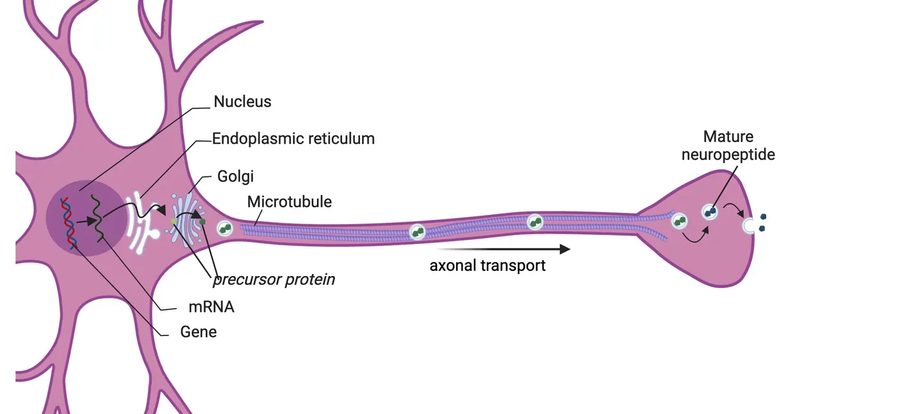
Neurochemistry is the study of all the chemical processes that occur within the brain. This chapter will focus on the production, storage, release, receptor actions and inactivation of a selection of chemicals that are most relevant to the study of behavioral neuroscience. The basis of consciousness, as far as is known today, depends primarily upon the communications between neurons. Neurons communicate with each other by releasing chemicals called neurotransmitters that allow one neuron to influence the behavior of other neurons. The human brain uses over 100 different neurotransmitters. Some neurotransmitters are released by many millions of neurons that impact function throughout the brain; in contrast, some neurotransmitters are released by only a few thousand neurons that have a very limited impact on only a few brain regions. Neurotransmitter networks shows the distribution of some neurotransmitter systems that will be discussed below. Understanding the anatomy of these neurotransmitter systems is important because their anatomy defines their function.
![Overview image showing general distribution of neurotransmitter systems. Dopamine: Diagram of a human brain with networks of dopamine projections throughout the cortex and down the spinal cord shown. Cell bodies are concentrated in the brainstem (substantia nigra and ventral tegmental area). Norepinephrine: Diagram of a human brain with networks of norepinephrine projections throughout the cortex, cerebellum and down the spinal cord shown. Cell bodies are concentrated in the brainstem (locus coeruleus). Epinephrine: Diagram of a human brain with networks of epinephrine projections into lower levels of the brain. Cell bodies are in medulla. Histamine: Diagram of a human brain with networks of histamine projections throughout the cortex. Cell bodies are in tuberomammillary nucleus of the hypothalamus. Serotonin: Diagram of a human brain with networks of serotonin projections throughout the cortex, cerebellum and down the spinal cord shown. Cell bodies are concentrated in the brainstem (raphe nuclei). Acetylcholine: Diagram of a human brain with networks of acetylcholine projections throughout the cortex. Cell bodies are concentrated in the basal forebrain. GABA, glutamate, adenosine, cannabinoid, orexin, many neuropeptides: Diagram of a human brain showing diffuse presence of neurotransmitters throughout the entire brain.](assets/textbook/img/Image-3.01_Neurotransmitter-networks.webp)
3.1General Neurochemistry Principles
By the end of this section, you should be able to
- Explain the basic mechanisms that neurons use to produce and release neurotransmitters
- Describe the ways that neurotransmitters interact with receptors
In the following sections, you will learn general principles about brain chemistry. Neurons access nutrients from the diet, or from their own neuronal membranes, to produce the neurotransmitters that underlie behavior. These nutrients, including amino acids, fatty acids or sugar molecules, are taken inside a neuron or glial cell where they are acted upon by enzymes to produce a neurotransmitter that is stored in a vesicle and later released in response to specific intracellular signals. Neurons release the most recently produced neurotransmitter molecules first, thus guaranteeing that the communication between neurons is successful.
How do neurons produce neurotransmitters?
Neurotransmitters are produced inside neurons. Their production depends upon the neuron obtaining an adequate supply of precursors from the blood. This is not as easy as it sounds. The production of neurotransmitters requires a variety of amino acids, sugar, fats, vitamins, and minerals. These nutrients float around in the blood after each meal. Every cell in the body competes with the brain for access to these nutrients. The brain is at a distinct disadvantage because it sits behind a firewall called the blood-brain barrier (see Introduction). However, fortunately, the blood-brain barrier possesses a variety of specialized transporting mechanisms that can actively transfer nutrients into the brain (Step 1 in Neurotransmitter lifecycle). Once a nutrient crosses the blood-brain barrier it is usually transported to neurons with the assistance of astrocytes.
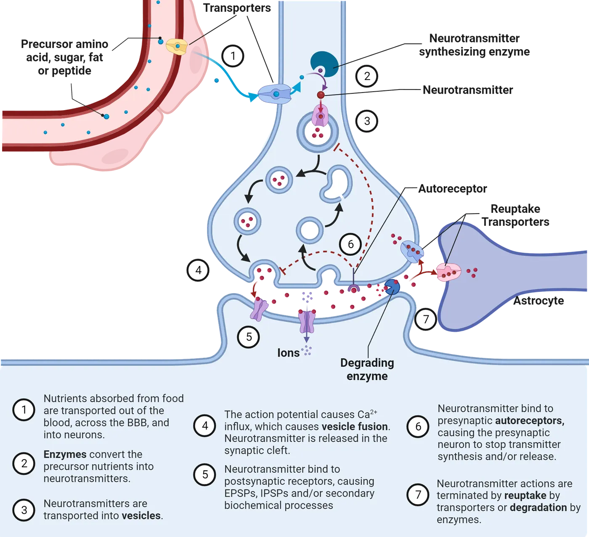
After an amino acid, fatty acid or sugar molecule is inside a neuron, it is generally acted upon by synthesizing enzymes (Step 2 in Neurotransmitter lifecycle). Enzymes are proteins that help build, breakdown or otherwise modify substances in our cells. The action of many of these enzymes uses metal ions as co-factors to assist with the conversion process. For example, neurons in the substantia nigra contain iron, neurons in the hippocampus contain zinc, neurons in the locus coeruleus contain copper, and neurons in the red nucleus contain cobalt. The presence of these metals is critical for normal neurotransmitter metabolism.
Brains demonstrate a degree of energy efficiency in terms of which of these transmitters it utilizes most extensively. For example, GABA and glutamate are simple amino acids and are the most abundant neurotransmitters in the human brain. They require only single-step enzymatic modification. Four amine neurotransmitters (dopamine, norepinephrine, epinephrine, and serotonin) require enzymatic modification of dietary amino acids to produce and inactivate. The brain contains 1000-fold fewer of these amine-releasing neurons, as compared to glutamate and GABA, probably because they require more energy to function. Finally, the other, far less abundant neurotransmitters, such as the neuropeptides (which are a string of amino acids) require a considerable amount of energy by the neuron to produce and inactivate. Neuropeptides occur roughly one-million-fold lower concentration in the brain than glutamate and GABA. These neurotransmitters, as well as the fat-derived neurotransmitters endocannabinoids and prostaglandins, all utilize the DNA in the nucleus to produce the necessary enzymes and precursors. The endogenous levels of these two fat-derived are kept quite low and are produced only when needed.
How are neurotransmitters stored and released?
Once synthesized, most neurotransmitter molecules are then actively transported into synaptic vesicles (step 3 Neurotransmitter lifecycle); these are very tiny spheres clustered at the presynaptic terminal with hollow centers into which approximately 10,000 molecules of a typical neurotransmitter can be stored for later release from a neuron. Neurons pay attention to the shelf life of their neurotransmitters; they prefer to release the most recently produced neurotransmitter molecules first. This means that the freshest products are released first, thus guaranteeing that the communication between neurons is successful. Many neurons produce two (and rarely three) different neurotransmitters; each is stored inside different vesicles and are released independently of each other.
The arrival of the action potential at the end of the axon opens a group of voltage-dependent calcium channels that allows the entry of calcium ions (see Introduction). The elevated intracellular concentration of calcium ions initiates the next step in the communication of one neuron with the next: A synaptic vesicle either merges into its cell wall (both are made of lipids so imagine two soap bubbles coming together), or opens a small pore into the neuronal membrane, and releases the neurotransmitter into the small space between neurons, called a synaptic cleft (step 4 Neurotransmitter lifecycle). Vesicle fusion shows the process of vesicle fusion in more detail. The junction at which two neurons communicate via the release of a neurotransmitter molecule is called a synapse. Because the synapse is such a small space, the concentration of neurotransmitter molecules in the synapse following release becomes very high for a brief period.
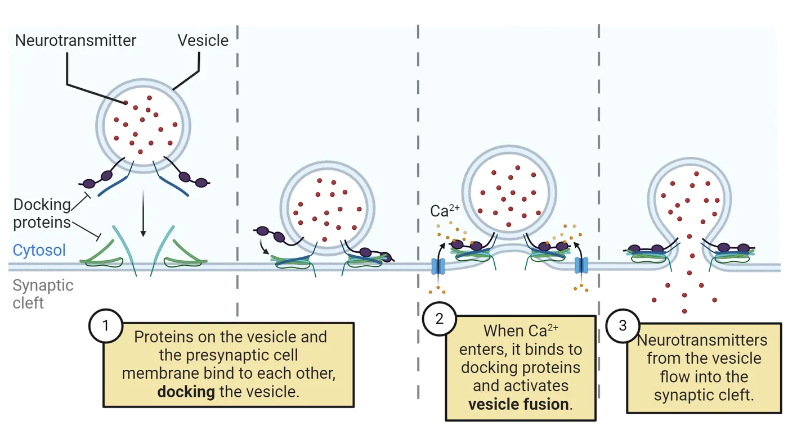
Post-synaptic actions of neurotransmitters
Once released into the synapse, neurotransmitter molecules briefly interact or bind with a protein, called a receptor, that is (usually) located on the surface of the neuron on the other side of the synapse (step 5 in Neurotransmitter lifecycle). These receptors are divided into two general types: either ionotropic or metabotropic receptors (Metabotropic vs ionotropic receptors). Ionotropic receptors are transmembrane molecules that can “open” or “close” a channel that would allow smaller particles to travel in and out of the cell. Ionotropic receptors allow different kinds of ions to travel in and out of the cell. Ionotropic receptors are not opened (or closed) all the time. They are generally closed until another small molecule (called a ligand — in our case, a neurotransmitter) binds to the receptor. As soon as the ligand binds to the receptor (step 1 in the left side of Metabotropic vs ionotropic receptors), the receptor changes conformation (the protein that makes up the channel changes shape), and, as they do so, they create a small opening that is big enough for ions to travel through (step 2 in the left side of Metabotropic vs ionotropic receptors). Therefore, ionotropic receptors are called “ligand-gated transmembrane ion channels”. The abrupt change in concentration of these ions induces secondary biochemical processes which may have either short-term or long-term consequences on the post-synaptic neuron’s behavior.
Metabotropic receptors do not have a “channel” that opens or closes. Instead, they are linked to another small chemical called a “G-protein.” As soon as a ligand binds the metabotropic receptor (step 1 in the right side of Metabotropic vs ionotropic receptors), the receptor “activates” the G-protein (it basically changes the G-protein shape). Once activated, the G-protein itself goes on and activates another molecule (step 2 in the right side of Metabotropic vs ionotropic receptors). This new molecule is called a “secondary messenger.” A secondary messenger is a chemical whose function is to go and activate other particles. So far, this process is common to all metabotropic receptors. What happens from there on is different for every metabotropic receptor. In some cases, the secondary messenger travel until it binds to and opens ion channels located somewhere else on the membrane (step 3 in the right side of Metabotropic vs ionotropic receptors). In some cases, the secondary messenger will go and activate other intermediate molecules inside the cell. The important thing to remember is that metabotropic receptors do not have ion channels, and binding of a ligand may or may not result in the opening of ion channels at different sites on the membrane. But they will always activate a G-protein that will in turn activate secondary messengers. G-protein coupled receptors are a large group of evolutionarily related proteins that are very common in the brain and body; over eight hundred human genes are devoted to producing these proteins.

Despite many safeguards, the synaptic communication processes described above often fail because the vesicles are empty or do not fuse properly, or the neurotransmitters are oxidized and therefore inactive (). Neural systems have a built-in redundancy that allows them to compensate for failures in single neurons. Brains try to be energy efficient and not waste neurotransmitters. Many, but not all, neurotransmitters, or components of them after enzymatic inactivation, are re-absorbed by the axon terminal and re-used. Finally, although neurons utilize components of the diet to produce neurotransmitters, the production of neurotransmitters is rarely significantly enhanced by dietary supplements.
Ending neurotransmitter action
After most neurotransmitters are released into the synaptic cleft they need to be inactivated. The primary mechanism for inactivation is reuptake (step 7 in Neurotransmitter lifecycle). Reuptake is the reabsorption of a neurotransmitter via a protein transporter located on the (pre-synaptic) membrane of the axon terminal. Reuptake allows for the recycling of neurotransmitters. Because neurotransmitter molecules are large and hydrophilic, they cannot simply diffuse through the membrane; this is why specific transporter proteins are necessary.
Neurons benefit from feedback on how much neurotransmitter they are releasing at their axonal terminals. This feedback is provided by a special type of protein receptor called an autoreceptor (step 6 in Neurotransmitter lifecycle). Autoreceptors are located on the membranes of nerve cells. They may be located on the cell body or the axonal terminal. These receptors are only sensitive to the neurotransmitters released by the neuron on which the autoreceptor sits. Activation of an autoreceptor usually leads to a reduction in the rate of release of the cell's neurotransmitter.
Summary
Watch the section summary video
Streamed from OpenStax; open it there if it does not play.
The brain obtains lipids, amino acids, and sugars from the metabolism of fats, proteins, and carbohydrates from the diet. Neurons modify these precursor molecules enzymatically into neurotransmitters, store them inside small lipid-walled vesicles and maintain them until the neuron determines that they should be released. The arrival of an action potential induces the neuron to release its neurotransmitter(s) into the synaptic cleft so that it can interact with specialized receptor proteins floating on the surface of a nearby neuron. The production, storage, release and inactivation of neurotransmitter molecules require the contribution of many genes and proteins, and lots of energy. However, these neurotransmitters are the only way that the majority of neurons in the brain can communicate with each other.
Key terms
blood-brain barrier, astrocytes, enzymes, GABA, glutamate, dopamine, norepinephrine, epinephrine, serotonin, neuropeptides, endocannabinoids, prostaglandins, synaptic vesicles, calcium channels, synaptic cleft, synapse, receptor, ionotropic receptor, secondary messenger, G-protein coupled receptor, reuptake, autoreceptorReferences
Brady, S.T., Siegel, G.J., Albers, R.W., & Price, D.L. (2011). Basic neurochemistry: Molecular, cellular and medical aspects (8th Ed.). Academic Press.
Coleman, W. (2023). Handbook of neurochemistry. American Medical Publishers.
Wenk, G.L. (2017). The brain: What everyone needs to know. Oxford University Press.
Practice The multiple-choice and fill-in-the-blank questions for this section are interactive and live on OpenStax, so they are not carried here: open the book on openstax.org.
3.2Neurotransmitters Made from Amino Acids
By the end of this section, you should be able to
- Identify the neurotransmitters produced from amino acids in the diet
- Describe the similarities and differences in the ways these neurotransmitters are produced, inactivated, and utilized to control behavior
Dopamine, norepinephrine, and epinephrine.
Dopamine (often abbreviated DA), norepinephrine (often abbreviated NE), and epinephrine are sequentially synthesized from the same dietary amino acid precursor, tyrosine. Norepinephrine and epinephrine are also sometimes called noradrenaline and adrenaline, and the neurons that produce them are sometimes called noradrenergic and adrenergic. Understanding the sequence of biochemical steps that lead to the production, storage, release, and receptor interactions of these three neurotransmitters has allowed neuropharmacologists to design drugs that can either enhance or inhibit specific processes to treat neurological and psychiatric diseases.
Synthesis
Tyrosine is actively transported from the blood across the blood-brain barrier (Step 1 of this figure). Tyrosine is utilized by all the cells in the brain for a variety of purposes, not just for making these neurotransmitters. Dopamine, norepinephrine, and epinephrine neurons produce a series of enzymes that convert tyrosine into each of these neurotransmitters. The process begins inside the cytoplasm of the neuron with the conversion of tyrosine into L-DOPA by the addition of a hydroxy molecule to the benzene ring via the enzyme tyrosine hydroxylase (Step 2 of this figure). This enzyme requires the presence of iron ions to function properly. This enzyme does not work well in humans with severe anemia who have difficulty absorbing enough iron from their diet. Severe anemia is typically associated with feelings of depression and mental fatigue. These symptoms offer insight into the role of these neurotransmitters in normal brain function.
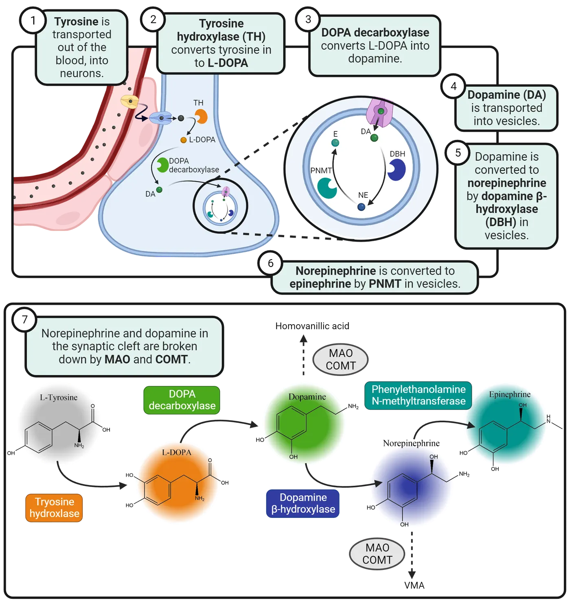
L-DOPA is converted into dopamine by the removal of a molecule of carbon dioxide via the enzyme aromatic amino acid decarboxylase, also called DOPA decarboxylase (Step 3 of this figure). This enzyme is extremely efficient, which may explain why brain levels of L-DOPA tend to be very low and why providing exogenous L-DOPA to patients who lack sufficient dopamine—such as in patients with Parkinson’s disease—leads to a dramatic increase in the production of dopamine. After synthesis, the dopamine is transported into a synaptic vesicle and stored until it is released from the axonal terminal (Step 4 of this figure).
In norepinephrine and epinephrine neurons, once dopamine is transported into the vesicle, it can be converted to norepinephrine by the vesicular enzyme, dopamine-beta-hydroxylase (Step 5 of this figure). In addition to dopamine-beta-hydroxylase, the vesicles contain copper. Copper is required for dopamine-beta-hydroxylase to function appropriately.
A very small group of neurons in the brainstem also express an enzyme, called phenolethanolamine-N-methyltransferase, that converts norepinephrine into the neurotransmitter epinephrine by adding a methyl group to the nitrogen atom (Step 6 of this figure). Epinephrine should be seen more as a hormone than intraneuronal signal. In addition to being released by neurons, it is also secreted by the medulla of the adrenal glands and does not enter the brain. It produces the peripheral manifestations of strong emotions such as fear or anger when it is released into the bloodstream.
Vesicles used for storage of dopamine, norepinephrine, and epinephrine.
Vesicles are very tiny lipid spheres with hollow centers. Neurotransmitters are actively transported into these vesicles. In Introduction, you will learn about drugs that can selectively inhibit this transfer process. Many vesicles also contain the antioxidant ascorbic acid, also known as Vitamin C. The Vitamin C maintains the integrity of these neurotransmitters within the vesicle in the same way that ascorbic acid added to processed meats, such as hotdogs, lengthens the shelf life of these products. Neurons require anti-oxidants such as Vitamin C because they are continually exposed to oxygen from the blood. Without Vitamin C, most neurotransmitters oxidize easily and become inactive while in storage inside the vesicles.
Receptors
Neurotransmitters relay their messages by traveling between cells and attaching to specific receptors on target cells. When a neurotransmitter attaches to a receptor, it triggers an action in the target cells. Receptors, even for a single neurotransmitter, exist as many different types that are differentially distributed and produce unique post-synaptic effects. Norepinephrine binds to three main G-protein-linked receptors: alpha1, alpha-2, and beta receptors that are located throughout the brain. Epinephrine can also stimulate all the adrenergic receptors including alpha and beta subtypes.
Dopamine binds to five different types of receptors, labelled D1-D5. Receptors have different, but often overlapping, functions. Dopamine receptors shows two different dopamine receptors that act via G-protein-linked receptors: one activates the enzyme adenylyl cyclase while the other inactivates this enzyme.
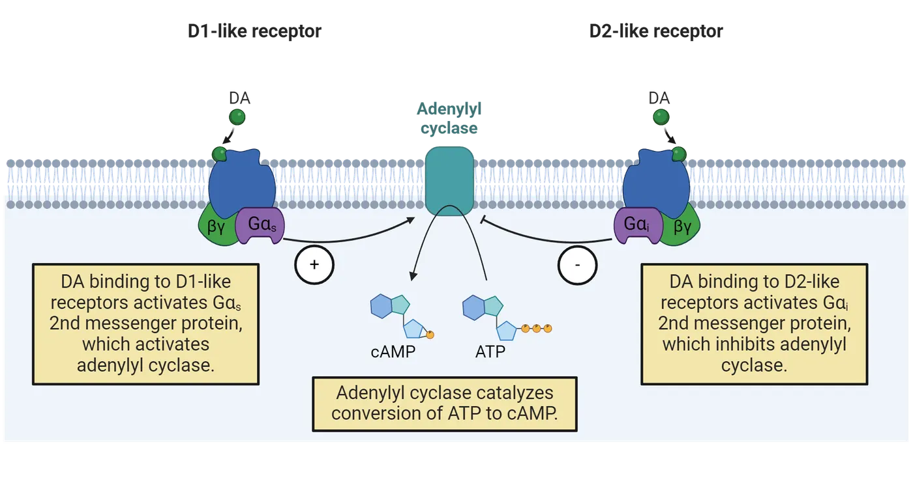
Once again, notice that the function of any receptor depends upon which region of the brain the receptor is located and the nature of its second messenger, G-protein-linked systems.
Inactivation of dopamine, norepinephrine, and epinephrine
After dopamine, norepinephrine or epinephrine are released from the axonal terminal, they bind to specialized protein receptors on both the pre- and post-synaptic membranes. Most of the dopamine, norepinephrine, and epinephrine molecules are re-absorbed by the axonal terminal, a process called re-uptake, by low-capacity, high-affinity transporters or by either of the high-capacity, low-affinity organic cation transporters or plasma membrane monoamine transporters. Drugs, mostly anti-depressants, have been developed that selectively target each of these reuptake transporters. These neurotransmitter molecules are then re-packaged in vesicles and re-released again. The dopamine and norepinephrine molecules remaining in the synaptic cleft are catabolized by the enzymes monoamine oxidase (MAO) and catechol-O-methyltransferase (COMT) (Step 7 of this figure).Under normal aerobic conditions, the dopamine metabolites 3,4-dihydroxyphenylacetic acid (DOPAC) and homovanillic acid (HVA) are transported out of the brain and can be measured in the cerebrospinal fluid and urine as an indirect indicator of the health of these neural systems.
The functions of dopamine, norepinephrine, and epinephrine
The functions of dopamine and norepinephrine depend entirely on the function of the structures in which they are located. Consider the basal ganglia, a collection of nuclei that are responsible for producing normal movement (see Introduction). The level of the neurotransmitter dopamine in these nuclei is one hundred times higher than in the surrounding brain regions. Therefore, scientists have concluded that dopamine within the basal ganglia is involved in the control of movement. Furthermore, if we expose your brain to a drug that impairs the function of dopamine or the neurons that produce and release it, then your ability to move will be impaired. However, it would be incorrect to assume that dopamine is only involved with movement—it is not. You can also find dopamine in the retina of your eye and in your hypothalamus, structures that have nothing to do with movement. The nucleus accumbens receives an input of dopamine axonal projections that originate in the midbrain. Drugs that enhance the release of dopamine in the nucleus accumbens induce considerable motor stimulation always toward the rewarding stimulus. Thus, dopamine sometimes has mixed actions that influence movement. The multiple roles played by dopamine in the brain have contributed to difficulty in developing drugs to treat specific psychological and neurological conditions due to unintended effects on other brain circuits that use the same neurotransmitter.
Similar to dopamine, the neurotransmitter norepinephrine influences the function of multiple brain systems. It can be found in the hippocampus, a structure critical for forming new memories. Thus, norepinephrine influences the formation of memories. However, norepinephrine also plays a role in other brain regions that have nothing to do with making memories. The take-away point is that there is no such thing as a specifically unique “dopamine function” or an exclusively distinct “norepinephrine function.” The brain region that the neurotransmitter is found within defines its function, not the neurotransmitter itself. This statement is true for all neurotransmitters. In fact, neurotransmitters exhibit a complex array of actions in different brain regions, and so we can rarely make a single universal statement about their role in brain function.
We know a lot about dopamine and norepinephrine primarily because so many drugs and nutrients have been discovered that can modify their function. Norepinephrine underlies the major components of arousal and behaviors that arise in association with increased arousal; dopamine is intimately related to the control of movement, aspects of consciousness, hormone release, visual image processing and the experience of reward.
In humans, almost all norepinephrine neurons are located within a region called the locus coeruleus (Latin for “blue area” due to the presence of so many copper ions) that lies in the floor of the 4th ventricle (Norepinephrine system anatomy).
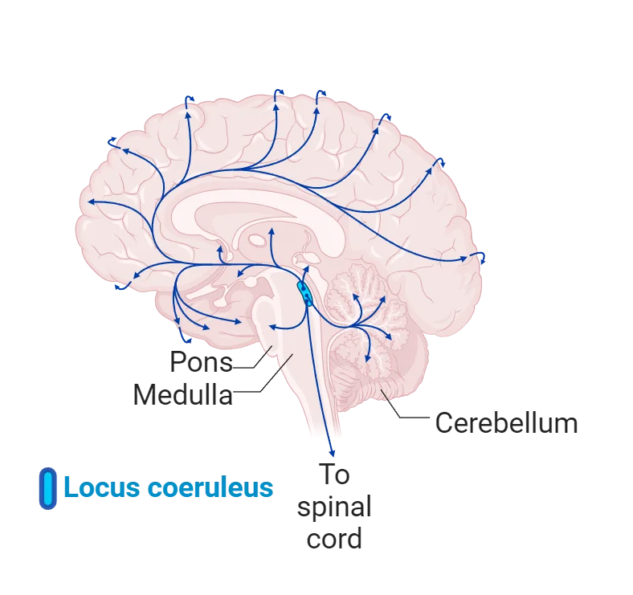
The name of this region is related to the fact that these neurons concentrate copper into the pigmented polymer neuromelanin. Neuromelanin is synthesized from the precursor L-DOPA. Although copper is required for the synthesis of norepinephrine, the concentration of the copper in the locus coeruleus far exceeds what is necessary for neurotransmitter synthesis. Unfortunately, the presence of this metal makes these neurons vulnerable to oxygen, leading to oxidative stress, which poses a particular risk for these neurons. Norepinephrine neurons in the locus coeruleus project throughout the brain, mostly unilaterally. Their diffuse widespread projection into virtually all brain regions allows them to influence your level of arousal and almost every aspect of behavior.
Dopamine neurons are more numerous (by about five times) than norepinephrine neurons. However, they do not project as widely throughout the brain. Instead, these neurons, which originate in the ventral midbrain, send axonal projections forward primarily into basal ganglia and frontal lobes (Dopamine system anatomy).
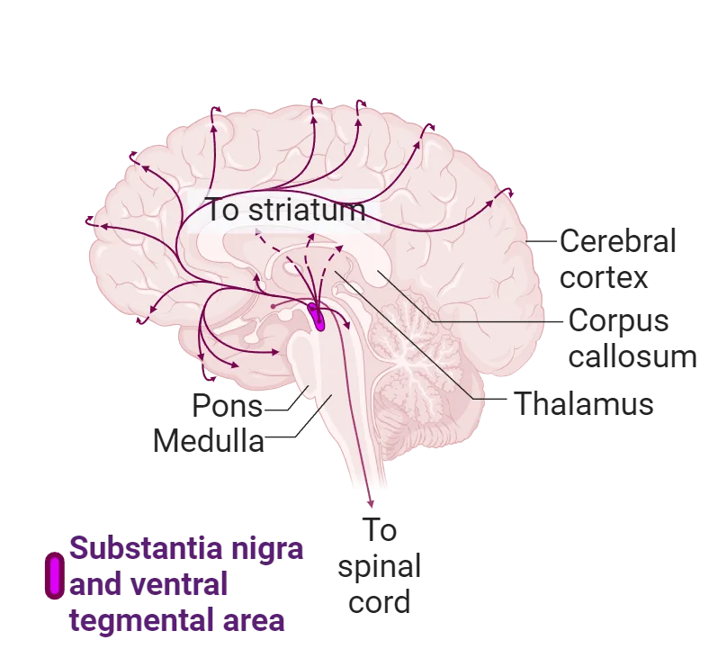
One major dopamine pathway originates within the substantia nigra, or dark substance, so called because this region concentrates iron into neuromelanin. The oxidation of iron in the neuromelanin (you know this process as rusting) contributes a significant degree to the vulnerability of dopamine neurons to oxygen. Dopamine-containing neurons may be vulnerable to the presence of oxygen due to its original role in plants as an antioxidant; the dopamine molecule may sacrifice its molecular integrity during oxidative stress. Due to the presence of various toxins, mostly insecticides, in our environment and the oxygen that we require for mitochondrial oxidative metabolism, these neurons are gradually lost with aging. In the US today, the greatest risk for developing Parkinson’s disease is growing up in a rural environment around pesticides ().
Another pair of dopamine pathways originates in a region of the midbrain near the substantia nigra and ascends upward into the brain. One pathway projects to the limbic system, brain regions that are associated with the control of emotion. The other dopamine pathway projects to the frontal lobes and may play a critical role in the generation of pleasure and consciousness. For more than 50 years, scientists have speculated that both too little and too much activity in these pathways underlies the symptoms associated with psychosis (see Introduction). Currently, though, dysfunction of dopamine neurons is no longer considered the direct cause of psychosis. Instead, some recent studies suggest that dysfunction of glutamate NMDA receptors also play a role ().
Generally, in a normal healthy person, the production of dopamine and norepinephrine is not easily affected by dietary supplements but can be negatively affected by a lack of nutrients. The reason is that the first enzyme in the production of dopamine and norepinephrine, tyrosine hydroxylase, is a rate-limiting step in the synthesis pathway. For example, consuming more tyrosine will not induce this enzyme to produce more dopamine.
Serotonin
This section will describe the lifecycle and functions of serotonin (often abbreviated 5HT).
Synthesis
The neurotransmitter serotonin is built from a molecule of the amino acid tryptophan. Tryptophan is actively transported across the blood-brain barrier (step 1 in Serotonin synthesis). Tryptophan is utilized by all the cells in the brain to produce proteins for a variety of purposes that have nothing to do with neurotransmission. Serotonin neurons produce a series of enzymes that convert a small percentage (less than one tenth of one percent) of the tryptophan absorbed by the brain into serotonin. The process begins inside the cytoplasm of the serotonin neuron with the conversion of tryptophan into 5-hydroxytryptophan by the addition of a hydroxy molecule to the benzene ring via the enzyme tryptophan hydroxylase (step 2 in Serotonin synthesis). This enzyme is the rate-limiting step in the production of serotonin (). Unlike tyrosine hydroxylase, which is close to saturated with tyrosine under normal conditions, tryptophan hydroxylase is only half saturated with tryptophan (). Therefore, the entry of additional dietary tryptophan into the brain will lead to the production of more serotonin. Next, also occurring in the cytoplasm, 5-hydroxytryptophan is converted into serotonin by the removal of a carbon dioxide molecule via the enzyme aromatic amino acid decarboxylase, also often called 5-hydroxy-tryptophan decarboxylase (step 3 in Serotonin synthesis). Notice that the production of serotonin involves the same two chemical reactions, the addition of a hydroxy molecule and removal of a carbon dioxide molecule, that were used to produce the neurotransmitters dopamine and norepinephrine. The enzymes involved are also genetically similar to each other and likely evolved from genetic duplication.
Once produced in the cytoplasm, serotonin can either be stored in synaptic vesicles and released a fashion similar to dopamine and norepinephrine, or, despite having a positive charge, can cross cell membranes through a diffusion-like process (step 4 in Serotonin synthesis). Multiple low-affinity, high-capacity, sodium-independent transporters, widely expressed in the brain, allow the carrier-mediated diffusion of serotonin into forebrain neurons. The amount of serotonin crossing cell membranes through this mechanism under physiological conditions is considerable ().
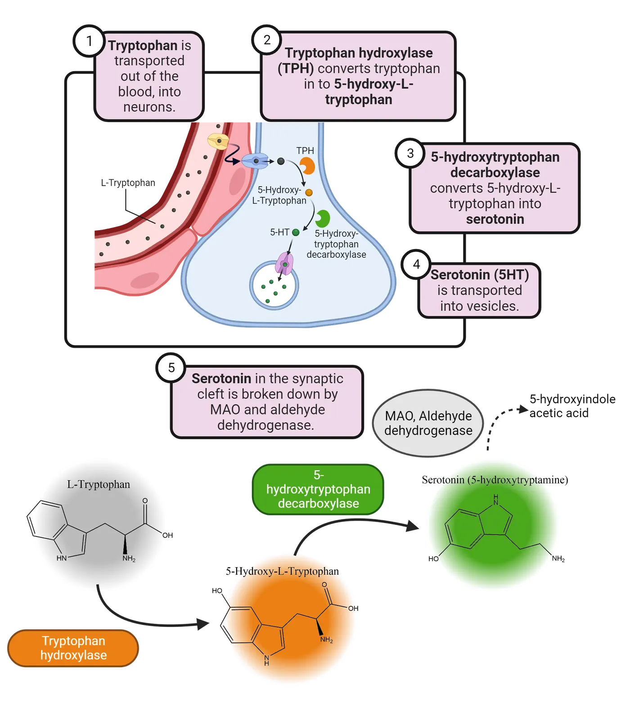
Receptors
Serotonin is one of the most ancient signaling molecules in nature. Bananas, single-celled paramecium, insects, and humans all synthesize it. The first primordial serotonin receptor is related to the rhodopsin protein found in the retina and may have first appeared almost one billion years ago; a time that likely predates the appearance of acetylcholine, dopamine, or norepinephrine. During this time, evolution greatly differentiated the serotonin receptors into a large and diverse group of proteins that are often less than 25% homologous with each other. This long evolutionary history underlies why serotonin plays a variety of roles throughout the brain, including behaviors such as aggression, appetite, sex, sleep, mood and cognitive function.
There are many different serotonin receptors in the brain and body (this figure). It is difficult to assign a specific function to each receptor; once again, it depends on where the receptor is located, and the nature of the biochemical mechanisms activated by the receptor.
| Receptor Subtypes | Signaling Mechanism | Distribution | Effects |
|---|---|---|---|
| 5-HT1A | Gi,↓cAMP | Raphe nuclei, hippocampus | Regulates sleep, feeding, and anxiety |
| 5-HT1B | Gi,↓cAMP | Substantia nigra, globus pallidus, basal ganglia | Neronal inhibition, behavioral changes |
| 5-HT1D | Gi,↓cAMP | Brain | Vasoconstriction |
| 5-HT1E | Gi,↓cAMP | Cortex, hippocampus | Memory |
| 5-HT1F | Gi,↓cAMP | Globus pallidus, putamen | Anxiety, vasoconstriction |
| 5-HT2A | Gq,↑IP3 | Platelets, cerebral cortex | Cellular excitation, muscle contraction |
| 5-HT2B | Gq,↑IP3 | Stomach | Appetite |
| 5-HT2C | Gq,↑IP3 | Hippocampus, substantia nigra | Anxiety |
| 5-HT3 | Na+-K+ ion channel | Area postrema, enteric nerves | Vomiting |
| 5-HT4 | Gs,↑cAMP3 | Cortex, smooth muscle | Gut motility |
| 5-HT5A,B | Gs,↓cAMP | Brain | Locomotion, sleep |
| 5-HT6 | Gs,↑cAMP | Brain | Cognition, learning |
Consider one serotonin receptor called 5HT-1A. Studies of genetically altered mice and positron emission tomography studies on humans have been very useful in demonstrating the potential role of this receptor in the regulation of mood and anxiety. For example, mice and humans born with fewer serotonin type 5HT-1A receptors show more anxiety-like behavior (). Some of the newer anti-anxiety medications stimulate the 5HT-1A receptors. Interestingly, almost all the known hallucinogens stimulate at least two serotonin receptors, the 5HT-1A and 5HT-2A. More will be presented about anti-anxiety medications and hallucinogens in Introduction.
Inactivation of serotonin
After serotonin is released from the axonal terminal, and after it has interacted with receptors, one of two things can happen. 1) Most of the serotonin molecules are re-absorbed by the axonal terminal, repackaged into synaptic vesicles, and re-released again. 2) The serotonin molecules that are not removed by re-uptake are catabolized by the enzyme monoamine oxidase (step 5 in Serotonin synthesis). The product of this catabolism, 5-hydroxyindole acetic acid (5-HIAA), is ultimately removed from the brain and can be measured in the cerebrospinal fluid and urine.
Functions of serotonin
To understand the role of serotonin in the brain, one should first consider the entire body. Ninety percent of the total serotonin in the body is contained within the neurons of the gut. About 8% of the body’s serotonin is found in the blood and is localized inside platelets and mast cells; in fact, serotonin was initially discovered in the serum and determined to have tonic (or constricting) effects on the vascular system—hence its name. About two percent of the body’s serotonin is found in the pineal gland, which is located inside the skull but not considered part of the brain. The remaining one-half of one percent of the body’s serotonin is found in the brain. The nuclei that contain serotonin neurons are in roughly the same anatomical location in the human brain as in every other vertebrate or invertebrate brain which implies a conservation of purpose across time (). Despite the relative scarcity of serotonin neurons in your brain, drugs that alter serotonin function can produce profound changes in how you experience the world around you. Serotonin regulates various activities, including behavior, mood, memory, and gastrointestinal homeostasis.
Neurons that produce and release serotonin in the brain are organized into a series of nuclei that lie in a chain along the midline, or seam, of the brainstem; these are called the Raphe nuclei (raphe means “seam” in Latin) (Serotonin synthesis).
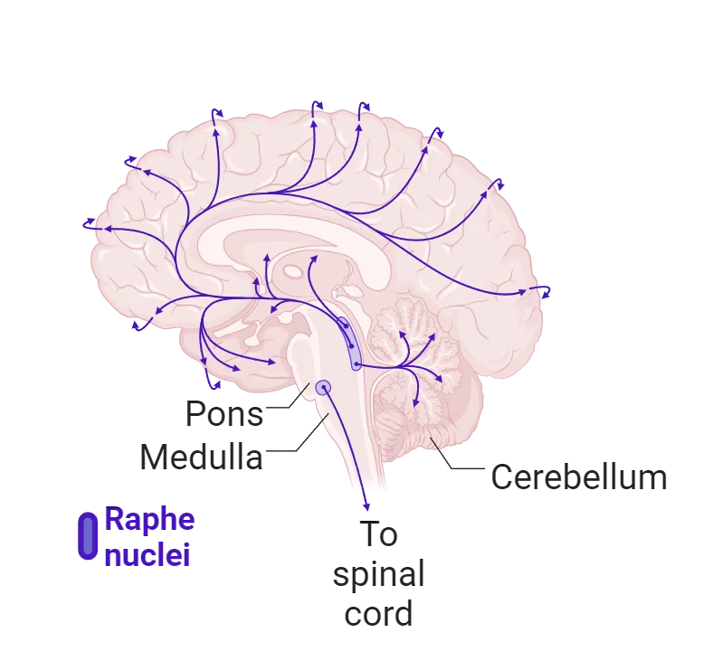
These neurons project their axons to every part of the brain, and some of these axons form synaptic connections with small blood vessels. Serotonin controls the availability of blood to regions of the brain associated with its function. Another group of serotonin neurons project down-ward into the spinal cord to provide control over the autonomic nervous system and incoming pain signals.
If you were able to insert a recording device into the major raphe nuclei and “listen” to the activity of your serotonin neurons, you would discover that they have a regular, slow spontaneous level of activity that varies little while you are awake. When you fall asleep, the activity of these neurons slows. When you start to dream, these neurons temporarily cease their activity (see Introduction).
Neuropeptides
The neuropeptide neurotransmitters can be quite small, only four or five amino acids strung together, or quite large, containing hundreds of amino acids folded into complex three-dimensional structures. Neurons that produce and release these neuropeptides are found throughout the brain. Neuropeptides may also be released along with the classical neurotransmitters, such as acetylcholine, dopamine and serotonin, from the same neuron. Which neurotransmitter is released is determined by the firing rate of the neuron; faster firing rates release neuropeptides.
Synthesis
Neuropeptide neurotransmitters are synthesized via a complicated, time consuming (about two to four weeks), and energy-demanding process of reading the DNA code to produce mRNA that can be translated into a long string of amino acids (step 1 in Synthesis of neuropeptides). The process utilizes the rough endoplasmic reticulum and Golgi apparatus where the long string of amino acids, called a pre-pro-peptide at this point, is converted enzymatically into intermediate shorter versions called pro-peptides, until finally being enzymatically converted into an active neuropeptide that is then packaged in synaptic vesicles that are transported down the axon to await release (step 2 in Synthesis of neuropeptides).
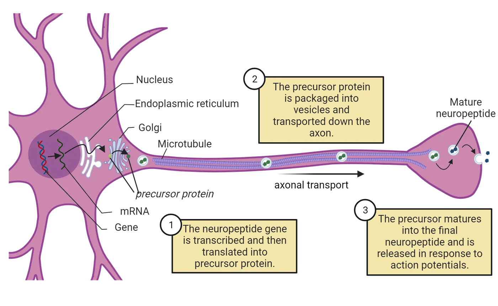
After being released from the terminal axon (step 3 in Synthesis of neuropeptides), the neuropeptide binds to its specific post-synaptic receptor and is then quickly inactivated by enzymatic degradation that generates not only biologically inactive fragments but also biologically active fragments that can modulate or even counteract the response of their parent peptides. Let’s consider two of the best studied neuropeptides with considerable relevance, the endogenous morphine-like peptides called endorphins and oxytocin.
Endorphins
Endorphins are one of 4 families of endogenous opioids (thus, their name): endorphins, enkephalins, dynorphins, and endomorphins. Three of the most studied are shown in this figure.
| Family | Precursors | Peptides | Receptors |
|---|---|---|---|
| Endorphins | Proopiomelanocortin (POMC) | α-Endorphin β-Endorphin γ-Endorphin | μ-Opioid |
| Enkephalins | Proenkephalin (PENK) | Met-Enkephalin Leu-Enkephalin | Δ-Opioid μ-Opioid |
| Dynorphins | Prodynorphins (PDYN) | Dynorphin A Dynorphin B α-Neoendorphin β-Neoendorphin | κ-Opioid |
Each family has several opioid-like peptides within it. Endorphins have a diverse range of actions in the brain: they modulate the pain signals carried from the periphery to the higher centers of the brain, regulate numerous neuroendocrine or neuroimmune functions, and influence mood. Endorphins interact with families of various receptors. For example, when the “mu” opiate receptor is stimulated, it relieves pain and induces feelings of pleasure or euphoria. Endorphins are released in response to laughing, eating, intense exercising, listening to music, walking in the sunshine (it’s the UV light), having sex, and so on. The emotional experience is ephemeral because endorphins have a very short life span once released; they are quickly catabolized by peptidases.
Oxytocin
Oxytocin is a neuropeptide that is synthesized in magnocellular neurons in the paraventricular and supraoptic nuclei of the hypothalamus. It is synthesized as a large inactive precursor protein and progressively hydrolyzed into smaller fragments and stored in a vesicle. Oxytocin neurons send axons into the posterior pituitary gland as well as throughout the limbic system, olfactory bulb, nucleus accumbens (the brain’s principal pleasure center), brainstem (to regulate pain), and cortex (Oxytocin networks). Oxytocin receptors are G-protein-linked and are found on the presynaptic and postsynaptic membranes. Oxytocin also acts partially on vasopressin receptors, which complicates understanding its functions. It also indirectly modulates neurogenesis (the birth of new neurons) and synaptic plasticity via these receptors.
Oxytocin has several behavioral functions. In highly social animals, oxytocin, supported by actions of the endocannabinoid system (discussed in Neurotransmitters Made from Fats), intensifies social attachment by conveying the social salience of environmental stimuli. Elevated levels of oxytocin via intranasal administration have been linked to a range of cognitive and behavioral effects including within-group conformity, trust, affiliation, and cooperation. Oxytocin also promotes aggression toward threatening out-group rivals and may underlie aspects of racism (Zhang et al.,2019). It appears to play a role in stimulating bonding between mother and child. Other studies have linked exposure to oxytocin with reduced social anxiety. Despite the many popular claims, there is no evidence that oxytocin has an aphrodisiac effect. Experiments with human couples sniffing oxytocin have not shown any increased tendency to fall in love.
![Diagram of the hypothalamus and pituitary. Neurons are shown in the PVN and SON, sending projections to the posterior pituitary to release oxytocin in the blood stream. They also send projections towards cortex and limbic system. An upper left zoom-out image shows the approximate location of these structures in the while human brain. Steps shown: 1) Oxytocin is expressed by magnocellular neurons in the PVN and SON. 2) Oxytocin protein is transported from the cell body to the axon terminals. 3) Oxytocin is released into the blood stream via axon terminals in the posterior pituitary. 4) Oxytocin is also released throughout the limbic system and cortex.](assets/textbook/img/Image-3.19_Oxytocin-networks.webp)
Glutamate and GABA
These two amino acids are utilized by more neurons as a neurotransmitter than any other. Glutamate is the principal producer of excitation while GABA (gamma-amino butyric acid) is the principal producer of inhibition. The lifecycle of glutamate is shown in Glutamate lifecycle. The lifecycle of GABA is shown in GABA lifecycle. Because these lifecycles overlap substantially, we will discuss them in tandem.
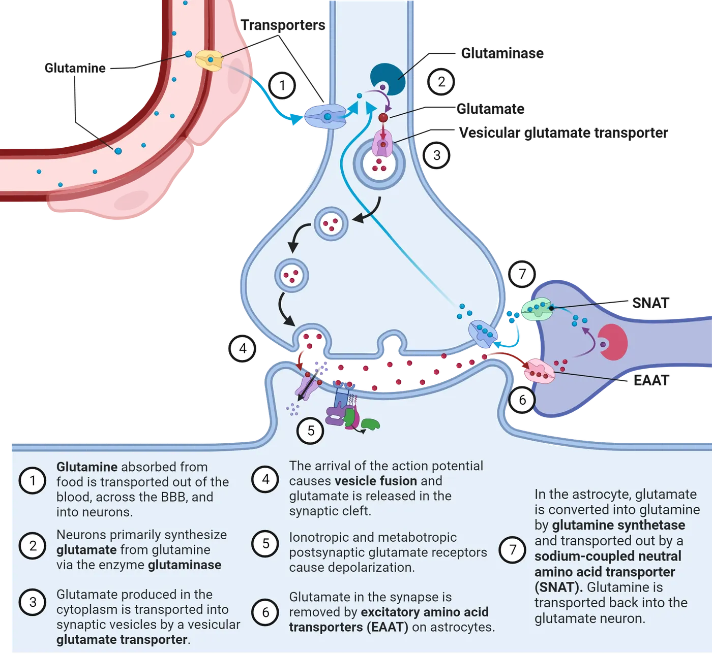
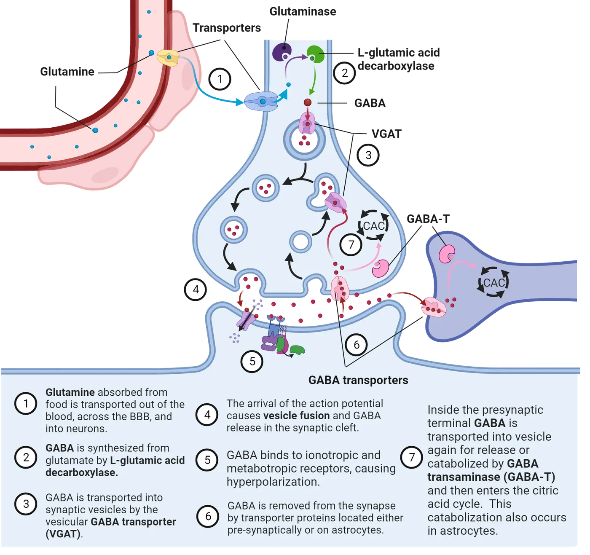
Synthesis
The production of both neurotransmitters begins with the amino acid glutamine being transported across the blood brain barrier and requires the participation of an astrocyte (Step 1 in both Glutamate lifecycle and GABA lifecycle). Glutamine is then converted into glutamate by the enzyme glutaminase inside the cytoplasm of both types of neurons (Step 2 in Glutamate lifecycle). It is then packaged into vesicles, if the neuron is glutamatergic (Step 3 in Glutamate lifecycle). If the neuron is GABAergic, glutamate undergoes conversion into GABA by glutamic acid decarboxylase, which requires pyridoxal phosphate (the active form of vitamin B6) as a cofactor and removes a molecule of carbon dioxide (Step 2 in GABA lifecycle). The newly synthesized GABA is then transported by the vesicular GABA transporter (VGAT) protein into synaptic vesicles (Step 3 in GABA lifecycle). GABA and glutamate are stored in vesicles until released by their respective neuronal terminals following the arrival of an action potential (Step 4 in both Glutamate lifecycle and GABA lifecycle).
Receptors
Glutamate signaling activates a family of receptors consisting of metabotropic glutamate receptors and ionotropic glutamate receptors (Glutamate receptors). Three of these receptors are ligand-gated ionotropic channels: NMDA receptors, AMPA receptors, or kainate receptors. These glutamate receptors were named after the agonists that activate them: NMDA (N-methyl-d-aspartate), AMPA (α-amino-3-hydroxyl-5-methyl-4-isoxazole-propionate), and kainic acid. These ionotropic glutamate receptors are nonselective cation channels; they will allow the passage of Na+ and K+, and small amounts of Ca2+. AMPA, kainate, and NMDA receptor activation always produce excitatory postsynaptic responses. All three of these ionotropic receptors are formed from the association of several protein subunits. The metabotropic glutamate receptor, in contrast, is formed from a single protein and functions as a G-protein linked receptor that provides a mechanism for glutamate to modulate cell excitability and synaptic transmission via second messenger signaling pathways.
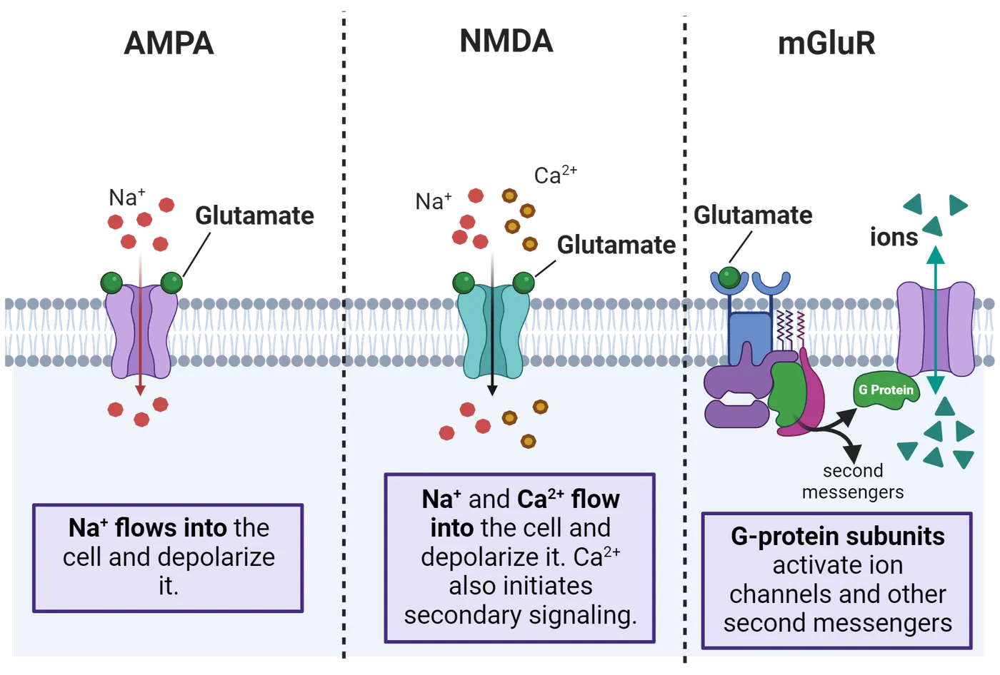
GABA receptors are divided into GABA-A and GABA-B (GABA receptors). Recently a GABA-C receptor was defined. Less is known about its function, but it appears, based on its sequence homology and structure, to have evolved from the nicotinic acetylcholine receptor (see Neurotransmitters Made from Fats). GABA-A is a fast-acting ligand-gated ion channel/inotropic receptor. The binding of GABA opens an ion pore to allow negatively charged chloride ions to move across the cell membrane into the cell, increasing the resting negative potential inside the cell. This is also known as hyperpolarization. GABA-A receptors are located throughout the central nervous system with a high concentration in the limbic system and cortex.
The GABA-B receptor is a G-protein linked receptor that leads to the opening of potassium channels, allowing the efflux of positive ions down their concentration gradient leading to the hyperpolarization of the cell membrane. Adenylyl cyclase is also activated, which prevents calcium entry; this action inhibits presynaptic release of other neurotransmitters. GABA-B receptors are slow-acting synaptic inhibitors and are in cortex and thalamic efferent pathways.
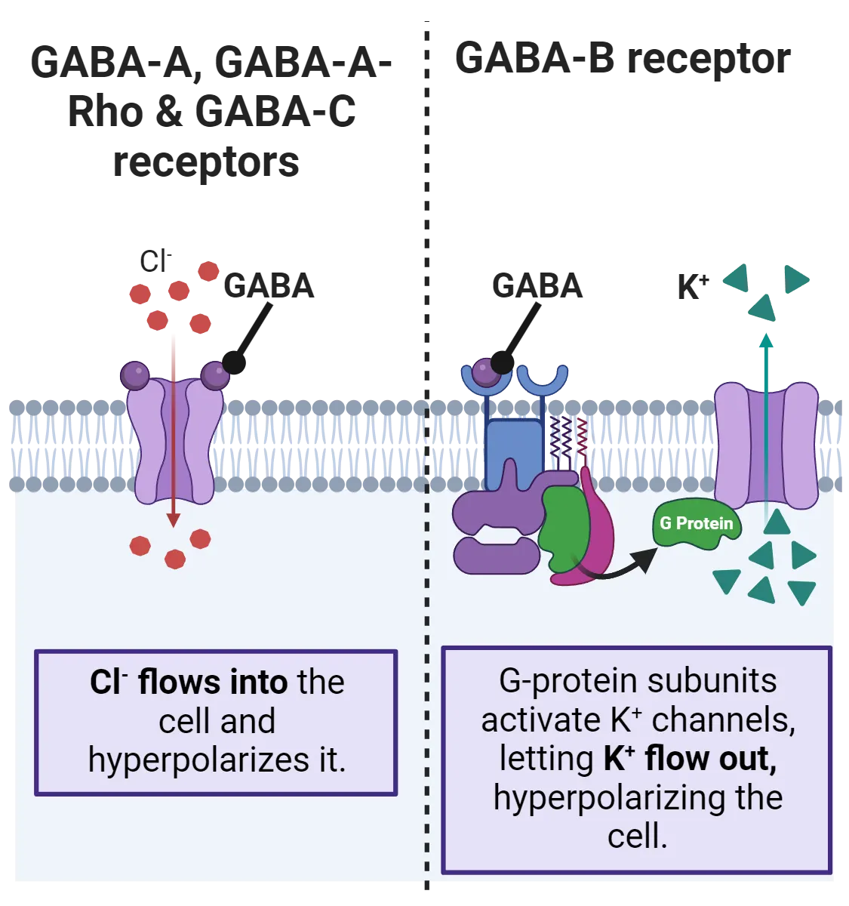
Inactivation of glutamate and GABA
After interacting with their respective protein receptors in the synaptic space (Step 5 in both Glutamate lifecycle and GABA lifecycle), released glutamate needs to be inactivated quickly, otherwise it may overstimulate the post-synaptic neuron and cause local degeneration. Fortunately, there are highly efficient transporters, called excitatory amino acid transporters (EAAT), that remove the glutamate in the synapse into astrocytes. Inside astrocytes, glutamate is converted into glutamine before being released into the extracellular space via the sodium-coupled neutral amino acid transporter (SNAT) (Step 6 and 7 in Glutamate lifecycle). The extracellular glutamine is now available for re-use by glutamate neurons.
Released GABA is inactivated by being transported into astrocytes via GABA Transporters (GAT) (Step 6 in GABA lifecycle). Inside the astrocyte, the GABA will be enzymatically converted initially into glutamate, which can then enter the citric acid cycle, or be further converted into glutamine before being released into the extracellular space for reuse by nearby glutamate or GABA neurons (Step 7 in GABA lifecycle).
The functions of GABA and glutamate
GABA- and glutamate-releasing neurons are densely located throughout the brain. They tend to function competitively to induce a balance of excitation and inhibition. Neurons spontaneously fire off action potentials due to their tendency to constantly leak potassium ions. The brain takes advantage of this tendency and processes information primarily via the actions of GABA-induced inhibition.
Glutamate neurotransmission is critical for probably the most important physiological process in the brain: learning. This process is mediated through a two-step process shown in AMPA and NMDA functional interaction that begins with the glutamate-induced depolarization of the post-synaptic membrane via the activation of the AMPA ionotropic receptors. At resting membrane potentials, external magnesium (Mg2+) ions enter the NMDAR channel and bind tightly, preventing the influx of any ions. Mg2+ ions are present at millimolar concentrations in the external milieu of neurons, while intracellular Mg2+ concentrations are in the micromolar range, resulting in a net inward driving force for Mg2+ ions at negative membrane potentials. A depolarization of sufficient amplitude and duration by activation of nearby AMPA receptors is required to dislodge the Mg2+ ions from the channel, thereby allowing the influx of sodium and calcium ions. The increase in intracellular calcium ion concentration activates a complex cascade of biochemical changes that ultimately involve the genes of the neuron and that may change how the neuron behaves for the rest of your life. This process underlies the brain’s ability to learn (see Introduction).
![Three-part diagram. 1) Diagram of a cell membrane with 2 ionotropic receptors embedded: AMPA and NMDA. Outside the cell, Na+ and Ca2+ are abundant and the outside membrane has positive charges (inside membrane has negative). Glutamate is bound to both channels but only AMPA is open, with Na+ flowing in. NMDA has a Mg2+ in the middle of the ion pore. 2) Membrane near the NMDA channel is now positive inside, negative outside and the Mg2+ is shown leaving the NMDA ion pore. 3) Na+ and Ca2+ now flow in to the cell through the open NMDA channel.](assets/textbook/img/Image-3.13_AMPA-and-NMDA-functional-interaction.webp)
Histamine
Histamine neurons originate from the tuberomamillary nucleus of the posterior hypothalamus and send projections throughout the brain (Histamine system anatomy).
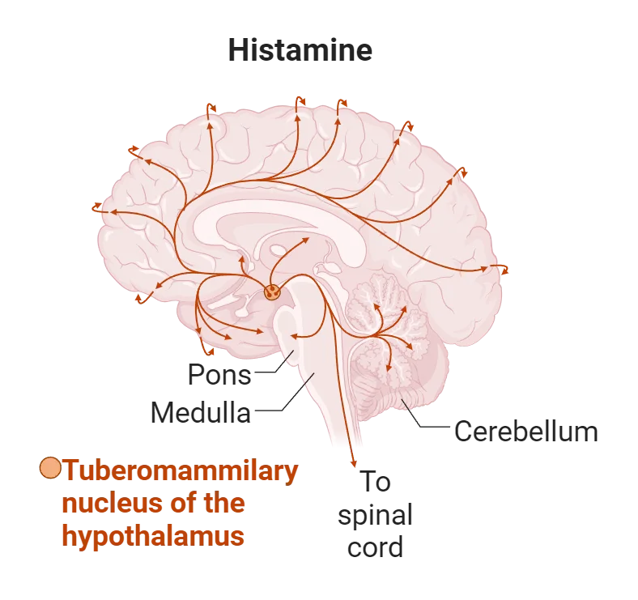
Histamine influences arousal, control of pituitary hormone secretion, suppression of eating and cognitive functions. I have included a discussion of this neurotransmitter because it is the target of so many different over the counter medications that are commonly overused.
Synthesis
Histamine is derived from the decarboxylation of the amino acid histidine, a reaction catalyzed by the enzyme L-histidine decarboxylase (step 1 and 2 in Histamine life cycle). Once formed, histamine may be transported in vesicles by a plasma membrane monoamine transporter protein (step 3 in Histamine system anatomy).
Receptors
Histamine binds to G protein-coupled receptors, designated H1 through H4 (step 5 in Histamine life cycle). The H1 and H2 receptors produce neuronal depolarization. The H3 receptor functions as an auto-receptor; it downregulates release of histamine, norepinephrine, acetylcholine, and serotonin (step 6 in Histamine life cycle).
![Diagram of a synapse showing histamine life cycle steps as described by text on slide. A blood vessel is also shown. Steps shown: 1) Histidine is absorbed from food and is transported out of the blood, across the BBB, and into neurons. 2) Histidine decarboxylase converts histidine to histamine. 3) Histamine is transported into vesicles. 4) The arrival of the action potential causes neurotransmitter release in the synaptic cleft. 5) Histamine binds to metabotropic postsynaptic receptors, H1 and H2, leading to EPSPs. 6) Histamine binding to presynaptic metabotropic H3 signals to the presynaptic neuron to stop transmitter synthesis and/or release of acetylcholine, dopamine, norepinephrine and serotonin.](assets/textbook/img/Image-3.16_Histamine-life-cycle.webp)
Inactivation
Once released by fusion of synaptic vesicles, histamine is primarily catabolized by the enzyme histamine-N-methyltransferase. Unlike the other amino acid-derived neurotransmitters, neurons do not inactivate histamine by re-uptake.
Function of histamine
Histamine neurons, in tandem with neurons releasing norepinephrine, influence your level of arousal during the day. Any drug that reduces the actions of histamine will make you feel drowsy. You probably have taken antihistamines and experienced their adverse cognitive effects.
Summary
Neurons in the brain absorb metabolites of the food we consume and enzymatically convert them into neurotransmitters. Sometimes the conversion process involves multiple enzymes working together; in contrast, sometimes amino acids become neurotransmitters with little or no modification. The function of these neurotransmitters is determined by the region of the brain they innervate, the type and location of the receptor, and the nature of the mechanisms induced by the receptor. Numerous cognitive disorders and neurological diseases involve dysfunction or degeneration of one or more of these neural systems. An understanding of the chemistry of these neurotransmitters has led to many effective and safe drugs to treat these disorders and diseases.
Key terms
Tyrosine, L-DOPA, tyrosine hydroxylase, anemia, aromatic amino acid decarboxylase, dopamine-beta-hydroxylase, copper, Phenolethanolamine-N-methyltransferase, Vitamin C, re-uptake, monoamine oxidase, catechol-O-methyltransferase, 3,4-dihydroxyphenylacetic acid, homovanillic acid, 5-hydroxytryptophan, tryptophan hydroxylase, 5HT-1A, 5-hydroxyindole acetic acid, raphe nuclei, neuropeptide, endorphins, oxytocin, glutamine, glutamic acid decarboxylase, vesicular GABA transporter, NMDA receptors, AMPA receptors, kainate receptors, histamine, L-histidine decarboxylase, histamine-N-methyltransferaseReferences
Andrews, P.W., Bosyj, C., Brenton, L., Green, L., Gasser, P.J., Lowry, C.A., & Pickel, V.M. (2022). All the brain's a stage for serotonin: The forgotten story of serotonin diffusion across cell membranes. Proceedings of the Royal Society. Biological Sciences, 289(1986), 20221565. https://doi.org/10.1098/rspb.2022.1565.
Berger, M., Gray, J.A., & Roth, B.L. (2009). The expanded biology of serotonin. Annual Review of Medicine, 60(1), 355–366. https://doi.org/10.1146/annurev.med.60.042307.110802
Der-Avakian, A., & Markou, A. (2012). The neurobiology of anhedonia and other reward-related deficits. Trends in Neuroscience, 35(1), 68–77. https://doi.org/10.1016/j.tins.2011.11.005.
Dong, B., Yue, Y., Dong, H., & Wang, Y. (2023). N-methyl-D-aspartate receptor hypofunction as a potential contributor to the progression and manifestation of many neurological disorders. Frontiers in Molecular Neuroscience, 16, 1174738. https://doi.org/10.3389/fnmol.2023.1174738.
Fernstrom, J.D. (2013). Large neutral amino acids: Dietary effects on brain neurochemistry and function. Amino Acids, 45(3), 419–430. https://doi.org/10.1007/s00726-012-1330-y
Kandel, E., Koester, J.D., Mack, S.H., & Siegelbaum, S. (2021). Principles of neural science (6th ed.) McGraw Hill / Medical.
Kikuchi, A.M., Tanabe, A., & Iwahori, Y. (2021). A systematic review of the effect of L-tryptophan supplementation on mood and emotional functioning. Journal of Dietary Supplements, 18(3), 316–333. https://doi.org/10.1080/19390211.2020.1746725.
Linden, D. (2007). The accidental mind: How brain evolution has given us love, memory, dreams, and god. Harvard University Press.
Olivier, B., Pattij, T., Wood, S.J., Oosting, R., Sarnyai, Z., & Toth, M. (2001). The 5-HT(1A) receptor knockout mouse and anxiety. Behavioural Pharmacology, 12(6), 439–450. https://doi.org/10.1097/00008877-200111000-00004.
Tanner, C.M., Kamel, F., Ross, G.W., Hoppin, J.A., Goldman, S.M., Korell, M., Marras, C., Bhudhikanok, G.S., Kasten, M., Chade, A.R., Comyns, K., Richards, M.B., Meng, C., Priestly, B., Fernandez, H.H., Cambi, F., Umbach, D.M., Blair, A., Sandler, D.P., & Langston, J.W. (2011). Rotenone, paraquat and Parkinson’s disease. Environmental Health Perspectives, 119(6), 866-872. https://doi.org/10.1289/ehp.1002839.
Wenk, G.L. (2017). The brain: What everyone needs to know. Oxford University Press.
Young, S.N., & Gauthier, S. (1981). Effect of tryptophan administration on tryptophan, 5-hydroxyindoleacetic acid, and indoleacetic acid in human lumbar and cisternal cerebrospinal fluid. Journal of Neurology, Neurosurgery and Psychiatry, 44(4), 323–328. https://doi.org/10.1136/jnnp.44.4.323
Zhang, H., Gross, J., De Dreu, C., & Ma, Y. (2019). Oxytocin promotes coordinated out-group attack during intergroup conflict in humans. Elife, 8, e40698. https://doi.org/10.7554/eLife.40698.
Practice The multiple-choice and fill-in-the-blank questions for this section are interactive and live on OpenStax, so they are not carried here: open the book on openstax.org.
3.3Neurotransmitters Made from Fats
By the end of this section, you should be able to
- Describe how fat-derived neurotransmitters are produced and inactivated
- Define the function of each neurotransmitter discussed
The brain contains two important families of neurotransmitters that are physiologically active lipid compounds called either endocannabinoids or prostaglandins. They use related enzymatic systems for their production and inactivation. A third neurotransmitter, acetylcholine, is made from molecules of fat and acetate. Together, these three neurotransmitters influence mood, thinking and the experience of pain. This section will also introduce neurosteroids, a unique class of steroids that are synthesized in the brain and can rapidly modulate neuronal activity.
Endocannabinoids
This section will describe the lifecycle and functions of endocannabinoids.
Synthesis
The two currently best studied endocannabinoid neurotransmitters (there are at least seven) are anandamide and 2-AG (2-arachidonoyl-glycerol); 2-AG occurs at much higher levels in the brain than anandamide (). The production, synthesis and release of anandamide and 2-AG occur independently within the cell, suggesting that 2-AG and anandamide can be recruited differentially from the same postsynaptic neuron depending on the type of presynaptic signaling. The synthesis of both endocannabinoid neurotransmitters begins with phospholipid components of the neural membrane (Synthesis of arachidonic acid and prostaglandins). Diacylglycerol (DAG) is produced first followed by enzymatic conversion into 2-AG via the enzyme diacylglycerol lipase (DAGL). A different membrane phospholipid is converted into N-arachidonoyl phosphatidylethanolamine (NAPE) which is then enzymatically converted into anandamide by the enzyme phospholipase D (PLD).
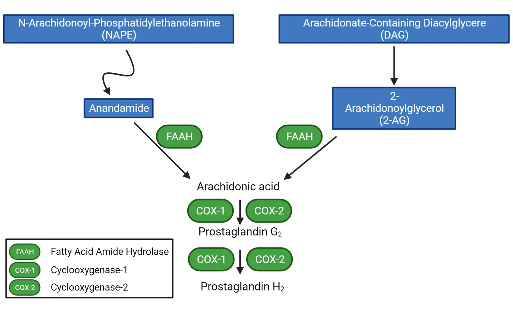
Unlike the other neurotransmitters discussed thus far, these two endocannabinoids are not stored in synaptic vesicles. The depolarization of a postsynaptic neuron leads to Ca2+ influx through voltage-gated channels and causes the enzymatic de novo generation and the release of endocannabinoids such as anandamide. Once produced they are released to flow in reverse direction (retrograde neurotransmission) across the synapse to find their receptors on the pre-synaptic side of the synapse (Retrograde neurotransmission).
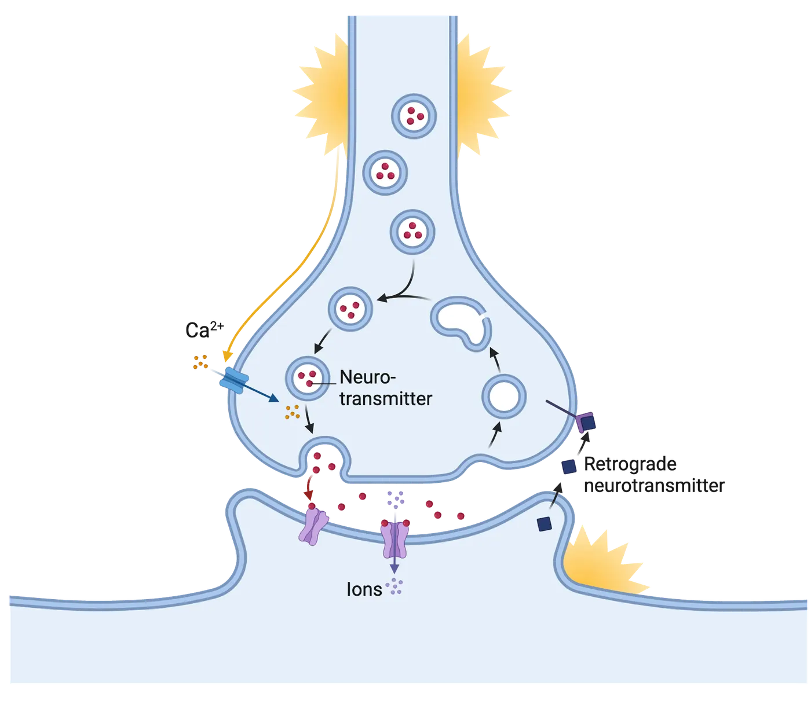
Receptors
Two different types of endocannabinoid receptors are located throughout the brain and body. Anandamide binds best to CB1 receptors, while 2-AG binds best with the CB2 receptors (Function of endocannabinoid receptors).

The type 1 receptors are densely distributed in several brain regions; the type 2 receptor is found at much lower levels in the brain. The type 1 receptor is among the most abundant G protein–coupled receptors in the brain. Anandamide and 2-AG also prevent the release of both glutamate and GABA, thus altering the balance of excitation and inhibition throughout the brain.
Inactivation of endocannabinoids
Anandamide is inactivated by either reuptake or catabolism by the enzyme fatty acid amide hydrolase (FAAH). 2-AG is inactivated by either reuptake or sequential catabolism by both FAAH and monoacylglycerol lipase (MAGL). The major product of this catabolism is arachidonic acid, which can be used to produce prostaglandins (see next section).
The functions of endocannabinoids
At the synaptic level, anandamide and 2-AG act retrogradely on pre-synaptic receptors to inhibit the release of a variety of neurotransmitters by altering the function of potassium and voltage-gated calcium channels. At the systems level, endocannabinoids influence appetite, mood, stress reduction, and the brain’s inflammatory response. The endocannabinoids enhance goal-seeking behaviors by augmenting the actions of dopamine within the brain’s pleasure centers in the ventral forebrain.
Prostaglandins
This section will describe the lifecycle and functions of prostaglandins.
Synthesis
Prostaglandins are synthesized from the fatty acid arachidonic acid via the enzyme cyclooxygenase (COX). Every prostaglandin contains 20 carbon atoms that includes a single 5-carbon ring. They are found throughout the body and brain. Like the endocannabinoids, prostaglandins are not stored in vesicles; they are produced on demand when they are needed and then released into the extracellular space via a specific protein transporter. Prostaglandins are not reused by the neurons. Prostaglandins are oxidized by NAD+-dependent 15-hydroxyprostaglandin dehydrogenase and then reduced by NADPH/NADH dependent delta13-15-ketoprostaglandin reductase.
Functions of prostaglandins
The variety of prostaglandins that exist and their wide distribution in the brain underlies their variety of functions. Glia release prostaglandins to activate pro-inflammatory cascades. Some prostaglandins are neuroprotective from the effects of hypoxia or ischemia. The sexual differentiation of the brain may depend on the actions of prostaglandins. Acutely, fever-producing agents induce the production of prostaglandins in the hypothalamus, altering body temperature regulation. In contrast, chronic inflammatory processes associated with prostaglandins may underlie the development of depression (). Generally, the level of most prostaglandins is kept quite low in the brain.
Acetylcholine
This section will describe the lifecycle and functions of acetylcholine.
Synthesis
Acetylcholine (commonly abbreviated ACh) is made by transferring a molecule of acetic acid on to a molecule of choline that is derived from the fatty acid lecithin (steps 1 and 2 in Acetylcholine lifecycle). This conversion occurs via the action of an enzyme called choline acetyltransferase (). The acetyl is derived from a molecule of sugar, usually glucose, that is initially modified inside the mitochondria. The brain needs sugar (usually in the form of glucose) to function normally. Once inside the brain, only a very small percentage of the dietary sugar is used to produce acetylcholine. The brain typically has a constant and ample supply of choline. Choline can be easily obtained from the diet, such as from eggs and baked goods. Despite this fact, many health foods stores sell choline powder to gullible customers, claiming that consuming more choline will somehow enable their brains to make more acetylcholine. Given the vital role of acetylcholine in learning and memory, this is an appealing claim. Regrettably, it has no basis in fact. For adults, the brain responds only to deficits in choline, not surpluses, in the diet. It has a ready source of choline in the diet or stored in the liver and, in fact, never develops a deficit in choline, even in patients with Alzheimer’s disease. Thus, consuming extra choline does not induce your brain to make more acetylcholine. Instead, it only results in a gaseous by-product that you exhale and that smells like rotting fish. Rather than enhancing your cognitive abilities, choline supplements merely generate a terrible case of bad breath.
Once acetylcholine is produced, it is transported into synaptic vesicles (step 3 in Acetylcholine lifecycle). The vesicles containing acetylcholine fuse with the presynaptic membrane of the axon terminal in response to an action potential (step 4 in Acetylcholine lifecycle). Each vesicle releases about 10,000 acetylcholine molecules into the synapse. Some of these acetylcholine molecules will bind to protein receptors on the surface of the nearby neuron (step 5 in Acetylcholine lifecycle). Ultimately, all of them are inactivated by an enzyme.
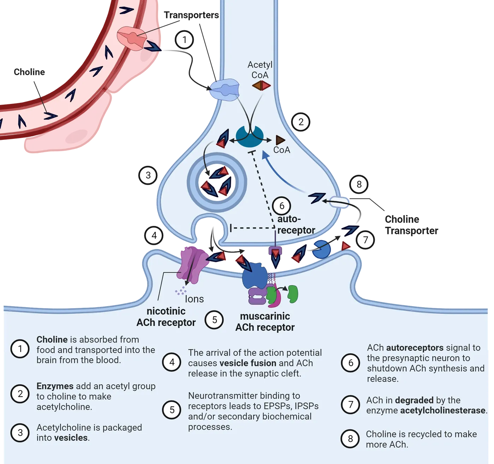
Inactivation of Acetylcholine
Released acetylcholine molecules are quickly inactivated by the enzyme acetylcholinesterase (step 7 in Acetylcholine lifecycle). Acetylcholinesterase has one of the fastest reaction rates of any of our enzymes, breaking up each molecule in about 80 microseconds (). Acetylcholinesterase breaks the acetylcholine into a molecule of acetate and choline. About forty percent of the choline will be reabsorbed into the axon terminal by specialized transport proteins and reused to produce more acetylcholine (step 8 in Acetylcholine lifecycle). The remaining choline molecules and acetate will diffuse into the extracellular space and ultimately be removed from the brain. Knowledge about the chemistry and function of acetylcholinesterase led to the development of drugs that inhibit the enzyme acetylcholinesterase and greatly increase the amount of acetylcholine in the synapse. Today, acetylcholinesterase inhibitors are common treatments for Alzheimer’s disease. In theory, the drugs should compensate for the loss of acetylcholine neurons in these patients; in practice, the drugs provide little clinical benefit because too few healthy acetylcholine neurons are still present in the brain.
Receptors
Once released into the synapse, the neurotransmitter acetylcholine can act on two quite different protein receptors that have been designated, as have most receptors, according to the compounds that were originally used to study them—in this case, muscarine and nicotine (ACh channels).
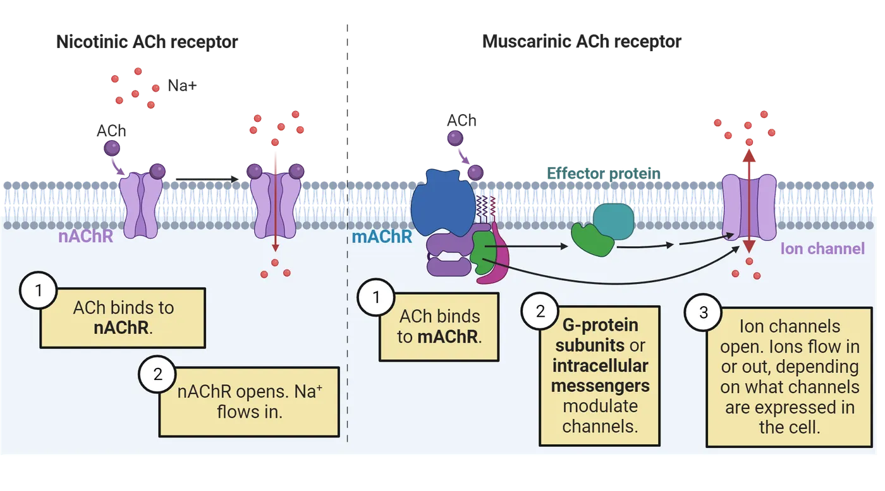
Most of the acetylcholine receptors in the brain are the muscarinic subtype, whereas less than 10% are nicotinic. They differ in size, structure, and mechanism of action; yet they both respond to acetylcholine. Nicotinic acetylcholine receptors are simple ligand-gated fast-opening ion channels that are also responsive to nicotine. Most of the nicotine receptors in the body live in the neuromuscular junction (see Introduction). Nicotine receptors allow the passage of sodium, potassium or calcium ions and typically produce depolarization. Muscarinic acetylcholine receptors are G-protein-linked receptors that activate other ionic channels via a second messenger cascade. These receptors are responsive to muscarine and can produce either depolarization or hyperpolarization depending on the nature of the ionic channel linked to the G-protein complex.
The functions of acetylcholine
Within the human brain are numerous acetylcholine pathways that influence the function of the cortex, hippocampus, and many other subcortical regions (Acetylcholine system anatomy).
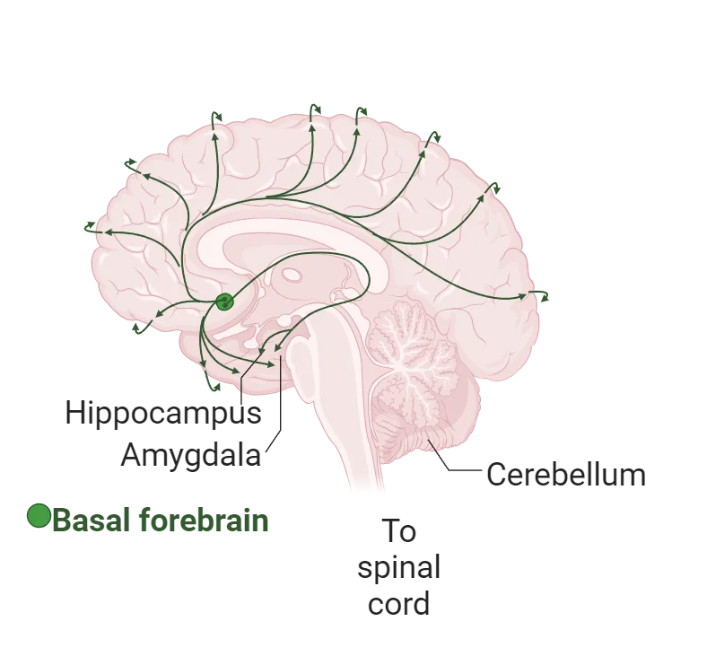
Within these various regions, the actions of acetylcholine enable you to learn and remember, to regulate your attention and mood, and to control how well you can move. Thus, anything that affects the function of acetylcholine neurons has the potential to affect all these brain functions. Sometimes we can learn much about the role of a particular neurotransmitter system by investigating what happens when it is injured or diseased. In the brains of people with Alzheimer’s disease, for example, acetylcholine neurons that project into the hippocampus and cortex degenerate. The loss of normal acetylcholine function in the cortex may be why patients with Alzheimer’s disease have difficulty paying attention to their environment. The loss of acetylcholine projections into the hippocampus may underlie the profoundly debilitating memory loss that is the hallmark of this disease (see Introduction).
History of Neuroscience: Otto Loewi and dreams of neuroscience
In 1902, a young German scientist named Otto Loewi at University College London began working with Henry Dale on how neurons communicate with each other. Loewi began thinking about ways that he might prove, or disprove, the chemical transmission hypothesis. According to Loewi, the idea of a viable experiment came to him in a dream a couple days after Easter Sunday in 1921. Unfortunately, his notes that night were illegible. Fortunately, the following night he had the dream again and he rushed off to the lab to test his ideas. Loewi determined that a substance was released by the vagus nerve that could communicate with other nervous tissues. Several years later this substance was isolated by Dale, who named it acetylcholine. Loewi and Dale shared the Nobel Prize for Physiology or Medicine in 1936 for their work on chemical neurotransmission.
Neurosteroids
Neurosteroids are produced from their precursor steroids by astrocytes and neurons (). Dietary cholesterol is converted into pregnenolone, an intermediate necessary for the synthesis of neurosteroids. Pregnenolone is then enzymatically converted into progesterone. Overall, neurosteroids are not themselves active at typical intracellular steroid receptors. They modulate brain excitability primarily by interaction with neuronal membrane receptors and ion channels. For example, progesterone is converted into allopregnanolone, which can enhance the function of GABA receptors and reduce seizure activity, anxiety and stress. Many neurosteroids are broad-spectrum anticonvulsant agents. In contrast, another neurosteroid, pregnenolone sulfate, is a negative GABA receptor modulator and tends to activate general brain activity and induce seizures. Neurosteroids are found at high levels in the cortex, hippocampus, and amygdala. Within these brain regions, neurosteroid synthetic enzymes are localized to glutamatergic principal neurons. Given their role in the control of neuronal excitability, neurosteroid analogs are now being considered for treatment of epilepsy, anxiety, depression, and stress-sensitive conditions.
Summary
Fatty acids obtained from either the diet or pieces of neural membrane are modified into neurotransmitters. In contrast to the amino acid-derived neurotransmitters, two of the fatty acid-derived neurotransmitters discussed are not stored in vesicles; they are produced and immediately released only when needed. Their diffuse distribution underlies the large variety of functions that are assigned to them, including the control of mood, learning and memory and pain. Dysfunction of acetylcholine is well known and studied. In contrast, much less is known about the functions of the endocannabinoid system.
Key terms
Anandamide, 2-AG, diacylglycerol, diacylglycerol lipase, N-arachidonoyl phosphatidylethanolamine, phospholipase D, retrograde neurotransmission, fatty acid amide hydrolase, monoacylglycerol lipase, arachidonic acid, cyclooxygenase, acetylcholinesterase, muscarinic acetylcholine receptors, nicotinic acetylcholine receptors, Alzheimer’s disease, neurosteroidsReferences
Lu, H.C., & Mackie, K. (2016). An introduction to the endogenous cannabinoid system. Biological Psychiatry, 79(7), 516-25. https://doi.org/10.1016/j.biopsych.2015.07.028.
Maguire, J.L., & Mennerick, S. (2024). Neurosteroids: Mechanistic considerations and clinical prospects. Neuropsychopharmacology, 49, 73–82. https://doi.org/10.1038/s41386-023-01626-z
Nestler, E., Hyman, S.H., & Malenka, R. (2020). Molecular neuropharmacology: A foundation for clinical neuroscience (4th ed.). McGraw-Hill.
Picciotto, M.R., Higley, M.J., & Mineur, Y.S. (2012). Acetylcholine as a neuromodulator: cholinergic signaling shapes nervous system function and behavior. Neuron, 76(1), 116-129. https://doi.org/10.1016/j.neuron.2012.08.036
Regulska, M., Szuster-Głuszczak, M., Trojan, E., Leśkiewicz, M., & Basta-Kaim, A. (2021). The emerging role of the double-edged impact of arachidonic acid-derived eicosanoids in the neuroinflammatory background of depression. Current Neuropharmacology, 19(2), 278-293. https://doi.org/10.2174/1570159X18666200807144530.
Taylor, P. (1991). The cholinesterases. Journal of Biological Chemistry, 266(7), 4025-4028. https://doi.org/10.1016/S0021-9258(20)64277-6
Wenk, G.L. (2019). Your brain on food: How chemicals control your thoughts and feelings (3rd ed.). Oxford University Press.
Practice The multiple-choice and fill-in-the-blank questions for this section are interactive and live on OpenStax, so they are not carried here: open the book on openstax.org.
4Comparative Neuroscience6 sections
In this section, we will discuss how scientists select a model system to study, as well as some of the rules governing use of animals in research.
Introduction
The study of the nervous system draws its vitality from the study of brains and behaviors of diverse species. Comparative neuroscience is the study of human and nonhuman animals to better understand brain structure, function, evolution and development across diverse species. A cursory overview of findings in the field of neuroscience shows that diverse model systems contributed to our present day understanding of neurobiology. Much of what we know about action potentials was discovered in squids, for example (). Hodgkins and Huxley won the Nobel Prize for their work on squids, which they chose, in part, because their axons were relatively large, making them relatively easy to study. Hubel and Wiesel also won the Nobel prize for their pioneering work on cats. Cats were chosen because they rely heavily on their acute vision in day-to-day life and the study of their neurobiology led to breakthroughs in our understanding of vision (). The use of rats generated many insights in the field of neurobiology of learning and memory. Rats were chosen because they are easy to study in a lab setting and also can learn a variety of tasks. Beyond these conventional research models, species with unique adaptations and behaviors such as naked mole rats, bats, and voles are used to study the basis of behaviors and specializations. We will touch on these and investigate the neural basis of sensory physiology, echolocation, social bond formation, and biparental care (; ; ). Comparative neuroscience integrates findings across model systems to extract principles of biological organization that are applicable to diverse species while enhancing our understanding of species-specific adaptations (). Ethical limits on the ability to directly study humans and some animals has led comparative neuroscientists to study processes in a range of species, as well as in organoids.
The study of diverse species is important because we can distill basic principles of biological organization that are broadly applicable across biological systems. In addition to building our appreciation of this diversity across species, this chapter will focus on features that make the human brain stand out relative to others. Several features of the human brain appear unique when compared with many other mammals. For example, the human brain is relatively large compared with many other species. Also, some neural structures supporting language appear uniquely human. Moreover, the lifespan is long and extended in humans relative to many other species. While many features such as these appear unique to humans, the field of comparative neuroscience has been marked by conflict in that it has variably focused on differences versus similarities between humans and other species. This chapter recapitulates this theme. Specifically, we discuss how many of the features which are often thought to be distinctively human come to be observed in other species. Therefore, the quest to identify neural features that are unique to humans continues to be a venue of active research.
In the sections that follow, we will provide an overview of topics, methods, and approaches in comparative neuroscience. As we cover these topics, we will discuss findings probed at different biological levels of organization, which we call scales. Some scientists focus their questions at the micro-scale. Those questions focus on things like gene expression or epigenetic modifications (which are changes to DNA structure that can affect gene expression). Other scientists focus on the meso-scales, which is a scale that spans cells, tissues, and organs. Examples include the study of cellular migration during development or cell numbers. Yet, other scientists focus on macro-scales, and look at organs or whole organisms.
Here, we will discuss findings probed at different scales, including the genetic, molecular, anatomical, and behavioral scales. While insights in the field have traditionally been made from a specific scale of study, we encourage you to consider integrating these scales together to address problems of interest in neuroscience. Throughout this chapter, we have selected a handful of studies, which were chosen to represent advances made at different study scales (e.g., genetic, molecular, anatomical). As we go through the chapter, we will learn how methods used at different scales work, how they have contributed to the field of comparative neuroscience, and their potential to address general problems in neuroscience. We will first discuss how scientists choose a model system.
4.1How Do We Choose A Model System?
By the end of this section, you should be able to
- Explain how you would choose a model system.
- Explain how to obtain institutional approvals to use an animal for study.
In this section, we will discuss how scientists select a model system to study, as well as some of the rules governing use of animals in research.
Selecting a model system
A model organism or model system is an animal that is studied to gain understanding about biological phenomena, with the expectation that what is learned will apply broadly across other species. The choice of model system depends on several key criteria. In behavioral neuroscience, it is primarily based on the behavior or dysfunction we aim to understand.
Scientists sometimes select closely related species with very different behaviors so that they may understand how differences in neural systems support differences in behaviors. For example, we will see in subsequent sections that several species of voles are conducive to studying social bonding because they are closely related to each other but show highly divergent social behaviors. These studies have helped researchers understand how neural organization of voles underlie social behaviors.
The selection of a model system can also be guided by its extraordinary ability. For example, bats use echolocation to navigate their environment. They send out sonic signals, which they then use to interpret the shape of their environment based on what sound bounces back. Bats integrate this information with visual information, making them good models to understand the neural basis of multi-sensory integration ().
Finally, phylogenetic proximity to humans is a key benefit when we want to use model organisms to understand human biology. For example, we will discuss how macaques have helped us understand human neurodevelopment because they are closely related to us. There are many other examples that illustrate the importance of letting behavior guide the choice of a model system. While researchers may each have a preferred model system for studying their question, the integration of information across model systems provides a comprehensive understanding of the neurobiological mechanisms of a behavior.
In addition to having the behavior drive model selection, there are practical concerns associated with the use of model species. In many cases, scientists are concerned about how easily the model organism can breed and be housed in a laboratory. While experiments in the wild can be informative, laboratory environments provide much greater control over what animals experience and how data are collected. Mice are by far the most used laboratory species in biomedical research because they are sufficiently similar to humans, and because they are readily (and cheaply) maintained in a controlled lab setting (de ). They are also amenable to study because scientists can obtain many of them. Other model systems include rats, voles, hamsters, guinea pigs, naked-mole rats, rabbits, opossums, and cats (). Non-human primates are also used in research and include macaques and marmosets. Each of these organisms has practical drawbacks and benefits in their use.
History and regulation of animal research
Humans have been using animal models for centuries. For example, researchers in ancient Greece dissected animals with the goal of better understanding human anatomy. This is because there were taboos of studying human anatomy. Prominent physicians also performed surgeries on live animals called vivisections to learn about living anatomy in ways they could not in humans (). Today, we have different ethical standards than we did in the past, and scientists must follow a strict code of conduct when it comes to experimenting on animals or humans. That is, researchers must follow strict guidelines to perform research on animals.
Any research on animals must first be approved by an Institutional animal care and use committee (IACUC) at the researcher’s home institution. The IACUC is composed of scientists, as well as members of the general public. The first step in the process is for a researcher to write a proposal that articulates the necessity of using animals in research and explains the benefit to society. The IACUC reviews this proposal and evaluates whether the proposed study is sufficiently justified to warrant the use of animals in a research study (). A major focus for the IACUC is to ensure that measures are used to minimize pain. In addition, the IACUC considers how many animals the researcher proposes to use to make sure they are not proposing either more or less than are needed to yield reliable results. Therefore, IACUC plays a critical role in fostering ethical and responsible animal research, which benefits researchers as well as the community at large.
The use of animals in research has a proven track record of saving human lives. There are emerging alternatives that may reduce the need for animal models. Later in this chapter, we will discuss one exciting new frontier which has much potential to reduce the need for animals. We are making reference to organoids. Organoids are derived from stem cells and are grown into clumps that share many features with actual organs. Theoretically, these organoids can be grown from stem cells of any species. Organoids can be used to study biological processes in rare and endangered species, and to test possible treatments for disease. We can take skin cells, reprogram them to stem cells, grow organoids, and test possible treatments for disease (). Testing treatments in organoids is a viable option, especially in cases where testing treatments directly in humans would be unethical. Therefore, these stem cell-based approaches open up new and exciting possibilities for research. They also provide insights about systems that would otherwise be unethical or impractical to study in a model system.
Summary
Watch the section summary video
Streamed from OpenStax; open it there if it does not play.
Animal models are used to understand biological phenomena and behaviors that can be applied to a broad range of species. The choice of model organisms is based on behavioral characteristics, breeding, ease of handling and/or exceptional abilities. Animal research must follow strict guidelines and be approved by an ethics committee called IACUC. While animal models have a proven track record in saving human lives, there are emerging alternatives such as organoids that may reduce the need for animal testing.
Key terms
Model system, IACUCReferences
Allen Shotwell, R. (2013). The revival of vivisection in the sixteenth century. Journal of the History of Biology, 46(2), 171–197. https://doi.org/10.1007/s10739-012-9326-8
Buffenstein, R., Park, T., Hanes, M., & Artwohl, J. E. (2012). Naked mole rat. In The laboratory rabbit, guinea pig, hamster, and other rodents (pp. 1055–1074). Academic Press.
Clancy, B., Darlington, R. B., & Finlay, B. L. (2001). Translating developmental time across mammalian species. Neuroscience, 105(1), 7–17. https://doi.org/10.1016/S0306-4522(01)00171-3
Daw, N. W. (2009). The foundations of development and deprivation in the visual system. Journal of Physiology, 587(12), 2769–2773. https://doi.org/10.1113/jphysiol.2009.170001
de Sousa, A. A., Rigby Dames, B. A., Graff, E. C., Mohamedelhassan, R., Vassilopoulos, T., & Charvet, C. J. (2023). Going beyond established model systems of Alzheimer's disease: Companion animals provide novel insights into the neurobiology of aging. Communications Biology, 6(1), 655. https://doi.org/10.1038/s42003-023-05034-3
Moss, C. F., & Sinha, S. R. (2003). Neurobiology of echolocation in bats. Current Opinion in Neurobiology, 13(6), 751–758. https://doi.org/10.1016/j.conb.2003.10.016
Prentice, E. D., Crouse, D. A., & Mann, M. D. (1992). Scientific merit review: The role of the IACUC. ILAR Journal, 34(1-2), 15–19. https://doi.org/10.1093/ilar.34.1-2.15
Quadrato, G., Brown, J., & Arlotta, P. (2016). The promises and challenges of human brain organoids as models of neuropsychiatric disease. Nature Medicine, 22(11), 1220–1228. https://doi.org/10.1038/nm.4214
Schwiening, C. J. (2012). A brief historical perspective: Hodgkin and Huxley. Journal of Physiology, 590(11), 2571–2575. https://doi.org/10.1113/jphysiol.2012.230458
Striedter, G. F. (2005). Principles of brain evolution. Sinauer Associates.
Striedter, G. F. (2016). Neurobiology: A functional approach. Oxford University Press.
Practice The multiple-choice and fill-in-the-blank questions for this section are interactive and live on OpenStax, so they are not carried here: open the book on openstax.org.
4.2How Do We Compare Brains?
By the end of this section, you should be able to
- Explain the concept of homology.
- Articulate differences in structural organization of the telencephalon of birds and mammals.
- Explain two opposing views to define homologies across the vertebrate telencephalon.
There are several challenges in comparing the nervous systems of different species. As is evident from Diversity of brains, brain structures are highly diverse.
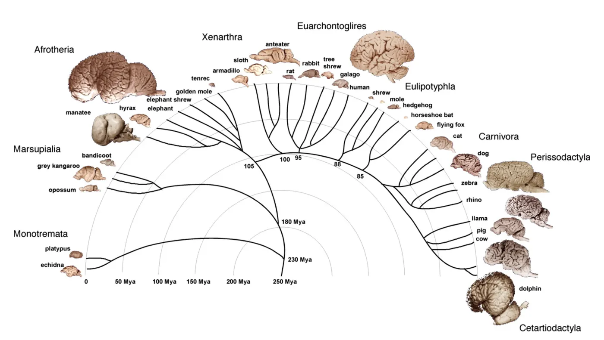
Comparative neuroscientists use the concept of homology to compare neural structures across species. Homology is a fundamental concept in comparative neuroscience and in biology generally. We will provide examples below. It is the term used to describe structures or organs that evolved from a shared ancestor. Identifying homologous structures may seem easy, especially when considering two closely related species where brain regions appear similar, as is the case in humans and chimpanzees. However, identifying equivalent brain regions becomes increasingly challenging in distantly related species because they share relatively few structural and genetic similarities. In those species that are distantly related, homologies can be controversial.
Comparing neural structures
In this section, we discuss homology and how it is used to compare neural structures in different species. As mentioned above, homologous structures share an evolutionary ancestry. Organ systems can be considered homologous regardless as to their function. One well known example concerns the mammalian forelimbs, which are homologous across mammals. These structures are considered homologous across species because they have similar patterns in bone structure, which reflect their shared ancestry. Yet, forelimbs take on many functions. For example, bats have evolved wings to fly, whales have evolved fins to swim, and horses have long hoofed legs to walk and gallop. Although forelimbs support different functions in different animals, forelimbs are homologous across mammals because the anatomical structures that make up forelimbs are recognizable across mammals and arise from a common ancestor.
Comparative neuroscience typically relies on identifying corresponding brain parts across species. Major anatomical divisions and brain nuclei are considered homologous if these structures emerge from shared ancestry (i.e., homology). While this concept might appear relatively straightforward at first, identifying corresponding brain parts becomes a thorny problem when applied to distantly related species (). Scientists seeking to define homologous structures search for shared similarities in traits present in the last common ancestor. But which similarities they focus on can vary. Homologous characters may be neuroanatomical features (e.g., connectivity patterns) or genes expressed by different cell populations in adulthood, but they can also be based on developmental processes such as spatiotemporal patterns of gene expression. Importantly, focusing on developmental or adult phenotypes as a basis for homology can yield different conclusions (; ).
In the next section, we will discuss the issue of defining homologies across the brains of birds and mammals as one controversial example. We will discuss how the use of different characters to define homologous structures may lead to different conclusions. We will also discuss this challenging case because it is the investigation of challenging cases that deepens our understanding of homology.
Marked differences in anatomical organization between birds and mammals
As discussed previously, the brain is typically divided into three major regions that can be defined early in development. These are the forebrain, midbrain, and hindbrain. The forebrain is composed of the telencephalon and diencephalon. The telencephalon includes the cerebral cortex and several subcortical structures (e.g., basal ganglia, amygdala, hippocampus) (see Introduction). In some species, the cerebral cortex makes up much of the telencephalon. We first discuss the basic features of the mammalian telencephalon before discussing how this basic organization of the mammalian telencephalon differs from that of birds.
The mammalian cerebral cortex consists of grey and white matter (see Introduction). The grey matter largely contains cell bodies of neurons and glial cells. The white matter contains glial cells and axons coursing within and across cortical and subcortical structures. In the white matter, many of these axons are surrounded by a fatty sheath called myelin. It is myelin that gives the white matter its white color. In mammals, there is a clear distinction between the white and grey matter with cell bodies of neurons separated from the white matter, which consists of axons. The top half of White and gray matter in birds and mammals show this segregated organization in a human and a mouse brain, on the left and right respectively.
![Three part image. 1) Microscopy image of a one half of a human brain coronal slice with a blue stain that shows dense staining at the edges and center of the tissue and with more light tissue between the dark layers. It is paired with an image where the white matter in the middle is highlighted in green. 2) Microscopy image of a one half of a mouse brain coronal slice with a purple stain that shows dense staining at the edges and center of the tissue and with more light tissue between the dark layers. It is paired with an image where the white matter is highlighted in green. 3) Microscopy image of a one half of a bird brain sagittal slice with a purple stain that diffuse purple stain throughout the slice, with no distinct regions of gray and white matter.](assets/textbook/img/Image-4.21_White-and-gray-matter-in-birds-and-mammals.webp)
The grey matter also has a specific organization of interest. The mammalian cerebral cortex grey matter is typically organized into six layers (layers I-VI), shown in a mouse brain on the left side of Cortical cell organization in birds vs mammals. Each cortical layer has a characteristic distribution of neuronal and glial populations with each layer possessing stereotypical patterns of efferent (outgoing) and afferent (incoming) projections.
![Four-part image. 1) Microscopy image of mouse cortex labeled with purple Nissl-stained cell bodies stain to show several, distinct layers of cells. 2) Microscopy image of zebrafinch cortex labeled with purple Nissl-stained cell bodies stain to show nuclei (large curved regions) rather than layers. 3) A microcopy image of an entire sagittal slice of mouse brain with labels for motor cortex, somatosensory cortex and visual cortex going from rostral to caudal on the dorsal surface. Striatum is labeled underneath cortex. 4) A microcopy image of an entire sagittal slice of zebrafinch brain with labels for hyperpallium (visual), mesopallium (auditory), nidopallium (somatosensory) and striatum, arranged from rostral to caudal through the entire hemisphere.](assets/textbook/img/Image-4.23_Cortical-cell-organization-in-birds-vs-mammals.webp)
The basic organization of the mammalian cerebral cortex stands in sharp contrast to the structural organization of the avian telencephalon. At first glance, the telencephalon of birds appears drastically different from mammals. First, whereas the mammalian cerebral cortex consists of grey and white matter, there is no such distinction between grey versus white matter in the avian telencephalon, shown on the bottom of White and gray matter in birds and mammals. Rather, the axons of bird brains course through cell bodies with no segregation between cell bodies and axons. Second, whereas the mammalian cerebral cortex is organized into layers, neurons and glial cells in birds are primarily clustered into nuclei, shown on the right side of Cortical cell organization in birds vs mammals.
The nomenclature to define regions of the avian telencephalon are also distinct from those used in mammals. The avian telencephalon is subdivided into the striatum, and the hyper, meso, and nidopallium. The meso- and nidopallium are organized into nuclei whereas the dorsal pallium has a layered organization, but only consists of at most three layers. These major differences in anatomical structures have contributed to challenges in defining homologies across the telencephalon of birds and mammals.
The differences in structural organization between birds and mammals are accompanied by differences in connectivity patterns, which further complicates the search for homologies. The hyper, meso, and nidopallium of the bird cortex receive input from the thalamus and process sensory information, including visual, somatosensory and auditory information. For example, the hyperpallium receives extensive visual input and the nidopallium processes somatosensory information. In mammals, in contrast, these kinds of sensory inputs project primarily to layer IV neurons spread along the cortical surface. The bottom of Cortical cell organization in birds vs mammals exemplifies these two organizations.
Some researchers have used connectivity patterns as a tool to define homologies, but others have used other criteria to define homologous structures across the telencephalon of birds and mammals. Depending on what criteria a researcher uses, they can come up with completely different ideas of which structures are homologous in birds and mammals. In the next section, we will learn more about one specific area of uncertainty in this field.
Definition and challenges: comparing bird brains to those of mammals
In this section, we detail conflicting definitions of homologous structures across the mammalian telencephalic structures in birds. Two opposing hypotheses in this debate are illustrated in Bird vs mammalian telencephalon. As we will see below, some of the conflicting views here arise depending on which scale of investigation a researcher uses. Recall that scale refers to the biological level of organization. Here, we will see conflicting results between what the macro-scale (connectivity) suggests are homologous structures in birds and mammals and what the micro-scale (developmental gene expression) suggests are homologous structures.

Some researchers have focused especially on patterns of afferent and efferent projections in the avian pallium to define homologous structures between the avian and mammalian telencephalon (). As we discussed above, in mammals, much of the cerebral cortex consists of primary cortical areas that receive extensive thalamic input and process sensory information. Those areas include the primary visual cortex, the primary somatosensory cortex, and the primary auditory cortex (see Introduction). The avian dorsal ventricular ridge (DVR) contains discrete nuclei (including those of the mesopallium and nidopallium) that receive extensive thalamic input (; ). Researchers have used these insights to argue that the dorsal ventricular ridge of birds is homologous to the mammalian cerebral cortex. This is known as the isocortex-DVR hypothesis.
Other researchers have reminded the community that homologous structures can take on different functions across species. That is, homology between structures arises from shared ancestry, which may or may not serve the same function across species. Think back to how bat wings fly, whale fins swim, etc. In this case, we are not looking at function. Rather, we are considering the evolutionary origins of populations of cells, an area called field homology. Field homology refers to populations of cells that derive from evolutionary conserved regions but may be populated across diverse morphological structures. Indeed, there are a number of cases where cells are generated in one location and migrate over long distances in the central nervous system (). Many researchers focus on developmental field homologies to define homologous cell populations. Typically, looking at developmental fields means that researchers focus on transcriptional (gene expression) landscapes in the embryo as a basis for defining homologies. These fields thus represent the basic units for comparisons.
To better understand what we mean when we say we are defining a developmental field, let’s consider transcriptionally defined subdivisions as it applies to defining the homologous structure for the bird DVR in mammals. In this case, researchers have used a combination of genes to transcriptionally define fields (populations of cells that are similar to each other) and define comparable brain regions across species. For example, there are several genes, including Pax6, Tbr1, Nkx-2.1, and Dlx-2 that are expressed in specific locations during development. These genes are expressed in clusters of cells and can be used to define homologous areas because we know of their migratory patterns so we know where they will end up in adulthood. Evaluating spatiotemporal patterns of gene expression during development has been used to argue that the precursors in the DVR give rise to the amygdala in mammals and give rise to nido- and mesopallium in birds (). Therefore, large regions of the avian telencephalon that might be considered homologous to the cerebral cortex in mammals based on adult connectivity could be considered homologous to the mammalian amygdala when considered based on developmental fields (Striedter, 1994). In this case, consideration of homology based on developmental fields is called the claustroamygdala-DVR hypothesis, which stipulates that mammalian homologues of the DVR consist of the claustrum, endopiriform nuclei, and amygdala (Butler et al., 2012).
Defining homologous structures between species is a crucial effort, as this effort forms the foundation for any comparison between species. We have focused on developmental processes and connectivity patterns as two different ways to identify homologous structures. Researchers who focus on adult patterns of connectivity consider the lateral and ventral pallium to be homologous to the mammalian cortex because the lateral and ventral pallium of birds and the cortex of mammals both receive inputs from sensory thalamus. Researchers who focus on gene expression from a developmental perspective place an emphasis on developmental patterns. In contrast, other researchers may support the notion that the meso and nidopallium in birds are homologous to the mammalian amygdala. This challenging case illustrates the difficulty in defining which features are relevant and should be used as a basis to compare highly divergent brains.
Summary
To date, there is still no clear consensus as to what structures are homologous to the mammalian cortex and their equivalent in birds. We reviewed one unresolved case that highlights the challenges that arise from attempting to define homologous neural structures across distantly related lineages. This is not to say that neuroscientists simply argue about homologies. Rather, we selected this topic because unresolved cases demonstrate the many kinds of perspectives we might use to define homology. Some perspectives place an emphasis on adult structure whereas others place an emphasis on developmental processes that give rise to adult structures.
Key terms
Homology, telencephalic/telencephalon, cerebral cortex, grey matter, white matter, layers, nuclei, field homology, isocortex-DVR hypothesis, claustroamygdala-DVR hypothesisReferences
Briscoe, S. D. (2019). Field homology: Still a meaningless concept. Brain, Behavior and Evolution, 93, 1–3. https://doi.org/10.1159/000500770
Butler, A. B. (1995). The dorsal thalamus of jawed vertebrates: A comparative viewpoint. Brain, Behavior and Evolution, 46(4–5), 209–223. https://doi.org/10.1159/000113275
Butler, A. B., & Saidel, W. M. (2000). Defining sameness: Historical, biological, and generative homology. BioEssays, 22(9), 846–853.
Butler, A. B., Reiner, A., & Karten, H. J. (2011). Evolution of the amniote pallium and the origins of mammalian neocortex. Annals of the New York Academy of Sciences, 1225(1), 14–27. https://doi.org/10.1111/j.1749-6632.2011.06006.x
de Sousa, A. A., Rigby Dames, B. A., Graff, E. C., Mohamedelhassan, R., Vassilopoulos, T., & Charvet, C. J. (2023). Going beyond established model systems of Alzheimer's disease: Companion animals provide novel insights into the neurobiology of aging. Communications Biology, 6, 655. https://doi.org/10.1038/s42003-023-05034-3
Karten, H. J. (1991). Homology and evolutionary origins of the “neocortex”. Brain, Behavior and Evolution, 38(4-5), 264–272. https://doi.org/10.1159/000114393
Medina, L., & Reiner, A. (2000). Do birds possess homologues of mammalian primary visual, somatosensory and motor cortices? Trends in Neurosciences, 23(1), 1–12. https://doi.org/10.1016/s0166-2236(99)01486-1
Puelles, L., Kuwana, E., Puelles, E., Bulfone, A., Shimamura, K., Keleher, J., Smiga, S., & Rubenstein, J. L. R. (2000). Pallial and subpallial derivatives in the embryonic chick and mouse telencephalon, traced by the expression of the genes Dlx-2, Emx-1, Nkx-2.1, Pax-6 and Tbr-1. Journal of Comparative Neurology, 424(3), 409–438.
Striedter, G. F. (1997). The telencephalon of tetrapods in evolution. Brain, Behavior and Evolution, 49(4), 179–213. https://doi.org/10.1159/000112991
Striedter, G. F. (2005). Principles of brain evolution. Sinauer Associates.
Practice The multiple-choice and fill-in-the-blank questions for this section are interactive and live on OpenStax, so they are not carried here: open the book on openstax.org.
4.3How Do Brains Vary in Size?
By the end of this section, you should be able to
- Define allometry.
- Describe how the size of the human cerebral cortex compares with other mammals.
While comparative neuroscience involves the study of many species, one species in particular has captured a disproportionate amount of attention: humans (de ). A great deal of research has focused on what makes human brains special, such as why we can read, grow crops, and travel to outer space, while other species cannot. One of the most obvious features about the human brain is that it is large in absolute size compared with many (but not all) other mammals. Another notable feature about the human brain is that it is large relative to our body compared with other species. Accordingly, the field of comparative neuroscience began with an investigation of brain size, its parts, and how brain size correlates with sensory and cognitive capacities (; Hofman, 2014; de ). Below, we evaluate the evidence supporting the notion that the expansion of brain regions is linked to specializations. We also discuss how some characteristic features of the human brain might appear to be unique to humans but may in fact be accounted for by total brain size (; ; ). The size of brain parts alone may be insufficient to explain human cognitive capacities. Additional changes at the molecular level likely have played an important role in human cognitive capacities.
The human brain is very big in comparison with many other species
One noticeable feature about humans is that our brains are large relative to many other mammals. However, the human brain is not the largest of mammals. For example, elephants and whales have larger brains than those of humans (Diversity of brains). Nevertheless, the observation that the human brain is approximately 3 times larger than that of great apes (i.e., chimpanzees, orangutans, gorillas) and any other nonhuman primates has led many researchers to suggest that it is the size of the human brain that confers humans with enhanced cognitive capacities. Indeed, there is a positive relationship between brain size and cognitive abilities across species. Yet, brain size accounts for only a small percentage of the variance in cognitive capacities across species. Importantly, these correlative analyses are unreliable indicators of causative relationships because correlations do not mean causation. It is therefore clear that size of the brain does not explain everything about human cognitive capacities, and that other factors must play a role in cognitive capacities.
Relative brain regions vary across species
One salient feature about the human brain is that the human cerebral cortex is very big, and that it occupies a large proportion of our brain, more so than in many other species. For example, the cerebral cortex occupies approximately 80% of the brain in humans but the cerebral cortex only occupies 20% of brain volume in mice. It might therefore seem reasonable to assume that our proportionally enlarged cerebral cortex sets humans apart from other mammals. But, it is well known that the size of brain parts, including the cerebral cortex, varies allometrically. Allometry means that proportions change with overall size (). We will explain the concept of allometry in greater detail.
Brain region volumes vary across species. Brain regions vary allometrically depicts brains of mice, rhesus macaques and humans.

As can be seen from the to-scale images in the far right, these brains have very different total sizes. One noticeable observation from Brain regions vary allometrically is that larger brains are preferentially composed of the cerebral cortex. This observation is true when we consider these species, but it also holds when we consider other mammals. Brain allometry means that as overall brains vary in size, some brain regions come to occupy a relatively large proportion of the brain while other brain regions occupy a relatively small proportion of the brain.
A formal way to describe proportional changes in the relative size of brain parts is to say that brain regions vary allometrically (; ; ; ). Saying that the cerebral cortex has a positive allometry means that the cerebral cortex becomes relatively enlarged in bigger brains. Species such as humans, whales, and elephants possess a big brain and a relatively enlarged cortex. In contrast, small-brained mammals such as mice, rats, hamsters, and mole rats have relatively small cerebral cortices by virtue of their small brain.
The human brain is by far the biggest of all primates and the human cortex occupies the largest proportion of the brain among primates. There are many debates as to whether the size of human brain regions, like the cortex, is unusually small, large or within the expected range considering the size of the human brain. It is possible our large cerebral cortex is exactly the size one would expect of a primate based on the total human brain size. The controversy as to whether human brain parts are small or large based on our brain size arises because we have no nonhuman primate brain of the same size for comparison, which fuels debate as to whether human cerebral cortices are unusual in size or the consequence of allometric changes. Given these debates, it is still a mystery as to whether the human cortex-to-brain ratio is large relative to other species.
Some brain regions vary across species as allometry would predict. That is, proportional differences in brain region volume are explained by changes in total brain volume. In other cases, we observe grade shifts. Grade shifts are relative changes in size of a brain region after controlling for brain size (; Charvet et al., 2012). In other words, brain regions may be larger or smaller than they should be based on what we would expect for a given brain size. What a grade shift means in terms of brain function, though, is still difficult to predict based on brain region size. We will discuss this topic below.
Grade shifts are evident in different groups of mammals (including primates), and they are observed in different regions. Some primate species, including great apes, and monkeys possess a disproportionately enlarged cerebral cortex relative to other mammals (, Finlay et al., 1998, ). In the case of the cerebral cortex, the cerebral cortex is much bigger than that of other mammals of similar brain size. What is interesting is that we see grade shifts multiple times across different groups of mammals. For example, the cerebral cortex is bigger in monkey species relative to other rodents of similar brain size. For example, monkeys have relatively enlarged cortices even though these groups live in diverse environments each with species-specific life histories. The presence of these grade shifts shows that there is no clear one-to-one connection between the size of brain parts and behavior or environmental demands. Rather, changes in relative size of brain regions apply to whole groups of species.
Sensory and motor specializations across mammals
A standard approach to testing whether a brain region is unusually large or small is to ask whether a brain region is expanded or reduced after controlling for its overall brain size. Our example of the cerebral cortex in primates above suggests that just seeing an enlarged brain region does not necessarily tell us its function. That is not to say that brain region sizes have no relationship to behavior. On the contrary, there are several prominent examples where brain region size tells us a lot about the behaviors of a species. The link between size and function is especially evident when considering animals with a loss of sensory capability or if they show a specialization. In those cases, there is generally an association between cortical area size and sensory ability after accounting for allometric variation in brain region size. For instance, the platypus detects vibrations in the water, and possesses an expanded primary somatosensory cortex, which is responsible for processing somatosensory information from the bill (; ; ). The top of Evolution of cortical areas shows some representative brains from several species, which show how relative proportions of cortical areas vary across species.
![Two-part image. 1) A phylogenetic tree starting with a common ancestor to marsupials and several placentals, including rodents, carnivores and primates. Colorcoding highlights major cortical areas and shows great variation in the relative portion of cortex occupied by different cortical areas by species. These are attributed to species-specific adaptation. 2) Photo of a mole rat, a small furry rodent with no eyes plus a diagram of the cortical surface of a mole rat showing an enlarge somatosensory cortex at the expense of visual and auditory areas, reflecting its strong reliance on touch sensation to navigate underground.](assets/textbook/img/Image-4.09_Evolution-of-cortical-areas.webp)
This variation is shaped by allometry as well as species-specific behavioral adaptations. If we compare the relative size of the rodent somatosensory area with that of primates, we see that rodents have expanded somatosensory cortex dedicated to input from their whiskers. This situation is similar to that observed in the platypus, which show an expanded somatosensory cortex linked to their bill (as described above). Primates, in contrast, rely far less on somatosensory input and have a much smaller relative somatosensory cortex. The expansion of somatosensory areas in rodents typically comes at a cost to visual and other sensory areas. Rodent species with reduced or no visual capabilities provide a particularly notable example of this kind of specialization. This is the case in blind mole rats, which are nearly blind (Evolution of cortical areas). These blind mole rats have reduced cortical territory devoted to processing visual information and a massively expanded somatosensory cortex to process sensory information from the body.
A relevant question at this point is where these variations in cortical size come from? Are they “hard-wired” into each species or do they arise from experience and therefore can change? The answer is a bit of both. Much of the size differences in brain regions across species is encoded in the genome. That is, a human cannot increase their exposure to touch sensation and develop a somatosensory cortex to rival a platypus. Yet, experience can shape the size of brain regions to some extent. Indeed, a range of studies focused on the neural basis of experience-dependent plasticity and cross-species comparisons have systematically shown a link between experience and size in cortical territories. For example, musicians have an expanded auditory cortex, and this is thought to be because of their sustained attention to listening and playing music (described below; ; ).
Studies from experimental models further demonstrate that cortical areas change with experience, and others show the importance of attention in mediating changes in cortical territory (; ; ). Animals may be exposed to stimuli or be deprived from stimuli, and their cortices reorganize in response to this input. See Introduction for an interesting example of how the auditory cortex reorganizes based on the frequencies of sound during development. Experimental results combined with cross-species analysis of sensory and motor specialization demonstrate that cortical plasticity is determined by the environment.
Summary
The size of the brain and parts are relatively large in humans compared with other species. Cross-species comparisons across diverse species show that brain regions sometimes vary allometrically (; Finlay et al., 2011; ), but grade shifts are also possible, which means that regions are larger or smaller than allometry would predict given their brain size. Sensory and motor specializations carve out cortical territories so that the relative size of brain parts is dictated by allometry, lifestyle, and environment.
Key terms
Allometry/allometric, grade shiftReferences
Aboitiz, F. (1996). Does bigger mean better? Evolutionary determinants of brain size and structure. Brain, Behavior and Evolution, 47(5), 225–245. https://doi.org/10.1159/000113243
Barton, R. A., & Harvey, P. H. (2000). Mosaic evolution of brain structure in mammals. Nature, 405, 1055–1058. https://doi.org/10.1038/35016580
Bush, E. C., & Allman, J. M. (2004). The scaling of frontal cortex in primates and carnivores. Proceedings of the National Academy of Sciences, 101(11), 3962–3966. https://doi.org/10.1073/pnas.0305760101
Corbin, J. G., Nery, S., & Fishell, G. (2001). Telencephalic cells take a tangent: Non-radial migration in the mammalian forebrain. Nature Neuroscience, 4(11), 1177–1182. https://doi.org/10.1038/nn749
de Sousa, A. A., Beaudet, A., Calvey, T., Bardo, A., Benoit, J., Charvet, C. J., Dehay, C., Gómez-Robles, A., Gunz, P., Heuer, K., van den Heuvel, M. P., Hurst, S., Lauters, P., Reed, D., Salagnon, M., Sherwood, C. C., Ströckens, F., Tawane, M., Todorov, O. S., Toro, R., & Wei, Y. (2023). From fossils to mind. Communications Biology, 6, 636. https://doi.org/10.1038/s42003-023-04803-4
Dial, K. P., Greene, E., & Irschick, D. J. (2008). Allometry of behavior. Trends in Ecology & Evolution, 23(7), 394–401. https://doi.org/10.1016/j.tree.2008.03.005
Dooley, J. C., Donaldson, M. S., & Krubitzer, L. A. (2017). Cortical plasticity following stripe rearing in the marsupial Monodelphis domestica: Neural response properties of V1. Journal of Neurophysiology, 117(2), 566–581. https://doi.org/10.1152/jn.00431.2016
Dooley, J. C., & Krubitzer, L. A. (2019). Alterations in cortical and thalamic connections of somatosensory cortex following early loss of vision. Journal of Comparative Neurology, 527(10), 1675–1688. https://doi.org/10.1002/cne.24582
Finlay, B. L., & Darlington, R. B. (1995). Linked regularities in the development and evolution of mammalian brains. Science, 268(5217), 1578–1584. https://doi.org/10.1126/science.7777856
Finlay, B. L., Darlington, R. B., & Nicastro, N. (2001). Developmental structure in brain evolution. Brain, Behavior and Evolution, 24(2), 263–278.
Krubitzer, L. (1995). The organization of neocortex in mammals: Are species differences really so different? Trends in Neurosciences, 18(9), 408–417. https://doi.org/10.1016/0166-2236(95)93938-T
Krubitzer, L. A., & Prescott, T. J. (2018). The combinatorial creature: Cortical phenotypes within and across lifetimes. Trends in Neurosciences, 41, 744–762. https://doi.org/10.1016/j.tins.2018.08.002
Krubitzer, L., Manger, P., Pettigrew, J., & Calford, M. (1995). Organization of somatosensory cortex in monotremes: In search of the prototypical plan. Journal of Comparative Neurology, 351(2), 261–306. https://doi.org/10.1002/cne.903510206
Moreno, S., & Bidelman, G. M. (2014). Examining neural plasticity and cognitive benefit through the unique lens of musical training. Hearing Research, 308, 84–97. https://doi.org/10.1016/j.heares.2013.09.012
Ramamurthy, D. L., & Krubitzer, L. A. (2018). Neural coding of whisker-mediated touch in primary somatosensory cortex is altered following early blindness. Journal of Neuroscience, 38(27), 6172–6189. https://doi.org/10.1523/JNEUROSCI.0066-18.2018
Recanzone, G. H., Merzenich, M. M., Jenkins, W. M., Grajski, K. A., & Dinse, H. R. (1992). Topographic reorganization of the hand representation in cortical area 3b owl monkeys trained in a frequency-discrimination task. Journal of Neurophysiology, 67(5), 1031–1056. https://doi.org/10.1152/jn.1992.67.5.1031
Recanzone, G. H., Schreiner, C. E., & Merzenich, M. M. (1993). Plasticity in the frequency representation of primary auditory cortex following discrimination training in adult owl monkeys. Journal of Neuroscience, 13(1), 87–103. https://doi.org/10.1523/jneurosci.13-01-00087.1993
Reep, R. L., Finlay, B. L., & Darlington, R. B. (2007). The limbic system in mammalian brain evolution. Brain, Behavior and Evolution, 70(1), 57–70. https://doi.org/10.1159/000101491
Stephan, H., Frahm, H., & Baron, G. (1981). New and revised data on volumes of brain structures in insectivores and primates. Folia Primatologica, 35(1), 1–29. https://doi.org/10.1159/000155963
Strait, D. L., & Kraus, N. (2014). Biological impact of auditory expertise across the life span: Musicians as a model of auditory learning. Hearing Research, 308, 109–121. https://doi.org/10.1016/j.heares.2013.08.004
Yopak, K. E., Lisney, T. J., Darlington, R. B., Collin, S. P., Montgomery, J. C., & Finlay, B. L. (2010). A conserved pattern of brain scaling from sharks to primates. Proceedings of the National Academy of Sciences, 107(29), 12946–12951. https://doi.org/10.1073/pnas.1002195107
Practice The multiple-choice and fill-in-the-blank questions for this section are interactive and live on OpenStax, so they are not carried here: open the book on openstax.org.
4.4How Do Connections Differ Across Species?
By the end of this section, you should be able to
- Describe what tract-tracers label in the brain.
- Describe an advantage and a limitation in the use of tract-tracers.
- Describe a major difference in organization between pathways.
The mammalian nervous system is made up of a network of interconnected cells. In this section, we will discuss the evolution of the cellular composition of brains with a specific focus on methods. We use these data to map the structural organization of pathways and connections in the human brain. This is a topic that shows the importance of using model systems to understand connections in humans. Much of our understanding of human brain pathways has been inferred from model systems.
Scientists have traditionally used information from rodents (e.g., mice, rats), carnivores (e.g., cats), marsupial mammals (e.g., opossum), and non-human primates (e.g., rhesus macaques) to make inferences about pathways and connectivity patterns in humans. The reason the human brain connectome is largely inferred from animals is because of the methods we use to study them. In general, methods available in model systems are invasive, and would be unethical to study in humans. These methods do have relatively fewer uncertainties in interpretation than those used to study humans. Methods available to model systems typically set gold standards whereas methods used to study humans are generally associated with uncertainties in their interpretation. Researchers typically integrate gold standards from model systems with non-invasive neuroimaging methods in humans to make inferences about connections in the human brain.
Below, we explore the different methods available in model systems and in humans, how they have moved us forward to understand brain organization, their limitations, as well as exciting topics for future research (). This section will show how we can use the principle of conservation to make inferences about connectivity patterns in humans.
Techniques to study the evolution of connections in model systems
The toolbox available in model systems typically relies on studying specific populations of neurons to identify afferent (incoming) and efferent (outgoing) connections. Methods available to trace pathways in model systems include tract-tracers and diffusible dyes (see Inorganic Dyes). We first discuss neural tract tracing techniques because these methods have been used for decades and are a major source of what we know about projection patterns.
Tract-tracers are injected in a region of interest and actively diffuse across neurons. Traditionally, tract-tracers are injected in the living brain, and post-mortem brains are cut into micron-thick sections to visualize labeled axons from histological material (). There are various kinds of tract-tracers. Those include anterograde, retrograde, monosynaptic and trans-synaptic tracers (Retrograde and anterograde tracers). Anterograde tracers are taken up by neuronal cell bodies at the injection site and diffuse along the axon towards terminal processes. In contrast, retrograde tracers are taken up by a neuron’s terminals and diffuse back towards (i.e., retrogradely) the soma. Mono-synaptic tract-tracers remain within the neuron they penetrated and do not diffuse to neighboring neurons. Other tract-tracers spread trans-synaptically (across synapses) to diffuse throughout the network. Therefore, there are many variant forms of tract-tracers that are available for study, though they only permit visualizing a few projections in the brain at a time.
![Top of image shows a diagram of a needle infusing a tracer near the axon terminals of one neuron and near the dendrites of another. Anterograde tracers are shown being transported from cell body to axon terminal, including moving into neurons connected to the first neuron (polysynaptic). Retrograde tracers are shown being transported from axon to cell body, including moving into neurons connected to the first neuron (polysynaptic). The bottom of the image shows a 3D rendering of a pathway extending from the rostral end of a mouse brain to the caudal end. An anterograde, polysynaptic tracer was injected in the left retina of a mouse. Projections are mapped through the optic chiasm, to their first synapse in bilateral lateral geniculate nuclei of the thalamus (LGN). Thalamic projections then go to the visual cortex (V1).](assets/textbook/img/Image-4.08_Retrograde-and-anterograde-tracers.webp)
Tract-tracers have been used extensively to trace pathways across model systems and in different species. The bottom of Retrograde and anterograde tracers shows three views of an example 3D reconstruction of tract-tracing performed using a trans-synaptic anterograde tracer injected in the left retina of a mouse. The tracer is seen extending from the eye, through the lateral geniculate nuclei of the thalamus, and on to the primary visual cortices (see Introduction). These methods enable the identification of anatomical pathways between brain regions.
Tract-tracers are invasive and permit only studying a few pathways at a given time. Combining the work of many researchers over many years has enhanced our understanding of how connections have evolved, and these methods have heavily influenced our understanding of vertebrate brain evolution. For example, researchers used this method to show connections from the thalamus to the DVR in birds, and these observations were used to support the notion that the DVR is homologous to the mammalian cortex (as discussed above).
As another example, this compendium of information on tract-tracers has yielded insights about pathway properties, and principles that explain how axons target other cells (; ). One principle to emerge from these comprehensive analyses is that local projections are more common than long-range projections, and this is true whether we consider small or large brains. Brain networks follow a small-world organization, in that they are composed of highly connected cells coupled with sparse long-range projections (). The example of connections from retina to the thalamus to the occipital cortex in Retrograde and anterograde tracers makes striking 3D images, but these kinds of long-range connections are the minority of connections in the brain. Mostly, connections happen between neurons that are close neighbors.
As we will learn more in the next section, the direct study of human connections derives from non-invasive neuroimaging techniques, which are open to interpretation. We therefore use the principle of conservation to make inferences about connectivity patterns in the human brain.
Techniques to study the evolution of connections in humans
Neuroimaging techniques are widely used in neuroscience to visualize neural activity and connections across the lifespan in humans. The non-invasive nature of neuroimaging has revolutionized the field of neuroscience. Here, we discuss a subset of neuroimaging techniques, which are used to make inferences about connectivity patterns from brain activity. Imaging the live human brain provides an overview of several broad classes of neuroimaging techniques.
![Example scans from functional MR, structural MR, resting states MR and diffusion MR. Each example shows multiple slice images. Functional MR shows colorful hot spots in discrete pockets. Structural MR shows brain structure. Resting states MR shows colorful hotspots like function MR but the spots are larger and cover more of the brain. Diffusion MR is a cluster of multicolored strings representing white matter pathways. In aggregate, they create a brain-shaped outline. The substrates measures by each technique are also summarized from the main text.](assets/textbook/img/Image-4.20_Imaging-the-live-human-brain.webp)
We will cover structural and functional magnetic resonance imaging (MRI) (see Methods: fMRI). Structural MRI evaluates the tissue structure from the soft tissue structure of the brain. Functional magnetic resonance imaging relies on blood fluctuations (measured as BOLD or blood-oxygen-level-dependent signal) to infer neuronal activity levels. Two notable techniques used to study connectivity in the live human brain that rely on MRI imaging are resting states fMRI and diffusion MRI (right side of Imaging the live human brain). We will discuss how these methods work, how they have contributed to mapping pathways in humans, and what uncertainties they have. We will highlight the need for information from model systems to trace pathways in the human brain.
fMRI and Resting states: Many fMRI studies focus on BOLD signals that occur while the subject is performing certain tasks. Resting-state fMRI, in contrast, measures spontaneous low-frequency fluctuations in the BOLD signal at rest so that it can be used to investigate the functional architecture of the brain. Comparing the timing of BOLD activations at rest across regions can give clues about connections (; ). In this method, observations of covarying fluctuations in brain activity are used as an indirect means to infer connections between regions. Covariance of activity patterns (increases or decreases at the same time in two brain areas) suggests that the areas are in some way connected. A benefit of resting state fMRI is that it broadly surveys patterns of blood flow across the brain and can be studied in many individuals. This broad survey is in contrast with tract-tracers, which provide detailed but sparse information about projection patterns in model systems. One major limitation of resting states fMRI is that coordinated patterns of connectivity do not address the underlying pathways. A finding that regions co-activate doesn’t necessarily mean that there are actual physical pathways that underlie the covariance in activity. That is, coordinated activity may arise without any direct connections ().
Diffusion MRI relies on the diffusion of water molecules to make inferences about the composition of neural structures. More specifically, diffusion MRI detects movement of water and relies on the principles that water diffuses preferentially along the axons. By measuring the direction of water diffusion, which correlates with the direction of axon fibers, we can reconstruct the location and orientation of fibers coursing through the adult and developing brain (, 2008). Diffusion MRI tractography can be used to document similarities and differences in the projection patterns of different species.
There are certain limitations imposed by diffusion MRI tractography that have precluded its use at the level of detail needed to map some connections in the developing and adult brain. First, scans capture information at millimeters resolution (i.e., macroscale) and therefore can be used to average biological information that spans micro- and cellular scales. This limitation in resolution means large amounts of critical biological information is lost. Another major issue is that the pathway reconstructions from diffusion MRI are not always accurate. In many cases, there is much uncertainty in what the correct pathway reconstructions are in the human brain. There is a lack of alternative methods to evaluate the accuracy of neuroimaging techniques in humans. Therefore, scientists use the principle of conservation from model systems to make inferences about human pathway reconstructions. There are a number of cases where reconstructed fibers from diffusion MRI tractography in the human brain appear very improbable (based on what we know about model systems). Overcoming these issues is an active area of research.
Despite these limitations, diffusion MRI tractography has yielded some interesting findings. For example, tractography studies have shown that some pathways connecting cortical areas are enlarged in humans relative to other species. For example, the arcuate fasciculus, which is a pathway that connects the lateral frontal and temporal lobe, is very large in humans compared to nonhuman primates. The arcuate fasciculus is of particular interest because it is a pathway thought to be associated with language comprehension (mediated by the parietal and temporal lobes) and production (mediated by lateral frontal cortical areas). Tractography studies have revealed a disproportionately expanded arcuate fasciculus in humans compared with both chimpanzees and macaques (). These observations have been used to argue that the expansion of the arcuate fasciculus may be linked to language in humans. While it is clear that the arcuate fasciculus is big in big-brained primates such as humans, it is still possible that the arcuate fasciculus has an allometry. That is, the arcuate fasciculus may have become disproportionately bigger in big brained species. The tractography has yet to be validated and we have very few tools available to ensure the accuracy of these projection reconstructions in humans versus great apes.
Summary
We discussed methods used to study brain pathways. It’s a tricky subject and most of the pathways we study in human neuroscience are inferred from model systems. Some methods are only available in model systems (e.g., tracers) but others (e.g., diffusion imaging) are also available for use in humans. The map of human brain pathways remains a work-in-progress. Due to the inherent limitations of methods for studying human brain connectivity, many researchers use the principle of conservation to make inferences about connectivity profiles in humans. We rely on features that are constant across diverse mammalian species to extrapolate the map of human brain pathways. Yet, some pathways should be specific to humans, and we have yet to identify many of the pathway types that are unique to humans. Some researchers have turned to integration of large-scale maps from neuroimaging with genetics to identify how pathways have evolved across species ().
Key terms
Neuroimaging, tract-tracers, diffusible dyes, resting states fMRI, diffusion MR imagingReferences
Axer, M., & Amunts, K. (2022). Scale matters: The nested human connectome. Science, 378(6619), 500–504. https://doi.org/10.1126/science.abq2599
Charvet, C. J., Ofori, K., Baucum, C., Sun, J., Modrell, M. S., Hekmatyar, K., Edlow, B. L., & van der Kouwe, A. J. (2022). Tracing modification to cortical circuits in human and nonhuman primates from high-resolution tractography, transcription, and temporal dimensions. Journal of Neuroscience, 42(18), 3749–3767. https://doi.org/10.1523/JNEUROSCI.1506-21.2022
Lee, M. H., Smyser, C. D., & Shimony, J. S. (2013). Resting-state fMRI: A review of methods and clinical applications. American Journal of Neuroradiology, 34(10), 1866–1872. https://doi.org/10.3174/ajnr.A3263
Liao, X., Vasilakos, A. V., & He, Y. (2017). Small-world human brain networks: Perspectives and challenges. Neuroscience and Biobehavioral Reviews, 77, 286–300. https://doi.org/10.1016/j.neubiorev.2017.03.018
Liu, Z. Q., Zheng, Y. Q., & Misic, B. (2020). Network topology of the marmoset connectome. Network Neuroscience, 4(4), 1181–1196. https://doi.org/10.1162/netn_a_00159
Modha, D. S., & Singh, R. (2010). Network architecture of the long-distance pathways in the macaque brain. Proceedings of the National Academy of Sciences, 107(30), 13485–13490. https://doi.org/10.1073/pnas.1008054107
Murphy, K., Birn, R. M., & Bandettini, P. A. (2013). Resting-state fMRI confounds and cleanup. NeuroImage, 80, 349–359. https://doi.org/10.1016/j.neuroimage.2013.04.001
Rilling, J. K., Glasser, M. F., Preuss, T. M., Ma, X., Zhao, T., Hu, X., & Behrens, T. E. (2008). The evolution of the arcuate fasciculus revealed with comparative DTI. Nature Neuroscience, 11(4), 426–428. https://doi.org/10.1038/nn2072
Oh, S. W., Harris, J. A., Ng, L., Winslow, B., Cain, N., Mihalas, S., Wang, Q., Lau, C., Kuan, L., Henry, A. M., Mortrud, M. T., Ouellette, B., Nguyen, T. N., Sorensen, S. A., Slaughterbeck, C. R., Wakeman, W., Li, Y., Feng, D., Ho, A., Nicholas, E., Hirokawa, K. E., Bohn, P., Joines, K. M., Peng, H., Hawrylycz, M. J., Phillips, J. W., Hohmann, J. G., Wohnoutka, P., Gerfen, C. R., Koch, C., Bernard, A., Dang, C., Jones, A. R., & Zeng, H. (2014). A mesoscale connectome of the mouse brain. Nature, 508, 207–214. https://doi.org/10.1038/nature13186
Wedeen, V. J., Wang, R. P., Schmahmann, J. D., Benner, T., Tseng, W. Y. I., Dai, G., Pandya, D. N., Hagmann, P., D'Arceuil, H., & de Crespigny, A. J. (2008). Diffusion spectrum magnetic resonance imaging (DSI) tractography of crossing fibers. NeuroImage, 41(4), 1267–1277. https://doi.org/10.1016/j.neuroimage.2008.03.036
Wedeen, V. J., Hagmann, P., Tseng, W. Y. I., Reese, T. G., & Weisskoff, R. M. (2005). Mapping complex tissue architecture with diffusion spectrum magnetic resonance imaging. Magnetic Resonance in Medicine, 54(6), 1377–1386. https://doi.org/10.1002/mrm.20642
Practice The multiple-choice and fill-in-the-blank questions for this section are interactive and live on OpenStax, so they are not carried here: open the book on openstax.org.
4.5How Can Diverse Species Help Us Make Inferences about Human Neurobiology?
By the end of this section, you should be able to
- Define major developmental processes in macaques.
- Describe how social relationships vary between prairie and montane voles.
- Describe how the neurobiology of prairie voles differs from that of montane voles.
Our discussion of connectivity in the human brain highlighted the need for model systems to understand human brains. This principle goes beyond just connectivity, though. Much of what we know about human neurobiology is inferred from model systems. The choice of the model system depends on the biological process we seek to understand. In this section, we will consider two cases where the use of model systems has been instrumental in understanding human neurobiology. Specifically, we will discuss how the timeline of brain development in monkeys has been studied to make inferences about human fetal development. We will also discuss how studying closely related species of voles has been used to make inferences about individual variation in the neurobiology of social bonds.
Monkeys as model systems to understand human fetal development
Much of what we know about development in humans, and especially human fetal brain development, is inferred from model systems. Human fetal development is an especially challenging phase to study because there are limited methods for study. Accordingly, there is only so much we can study in prenatal humans (Byrston et al., 2008). Macaque monkeys have been one important model system to understand human development. This monkey is a popular choice for this kind of research because of its close phylogenetic proximity to humans, and because monkeys share many similar features with humans (; ). More recently, researchers are turning their attention to a small monkey called the marmoset because it is an easier animal to handle and breed than macaques. Macaques have been used for some time and they have yielded insights into human neurodevelopment (; ).
This section articulates the basic outline of fetal and early postnatal development in macaques and how it can be used to make inferences about human development. We discuss how the study of model systems can enhance our understanding of neurogenesis (the process of neuron production), and synaptogenesis (the process of generating synapses) in the human brain (). More detail on these and surrounding neurodevelopmental processes is in Introduction.
Neurogenesis is the term used to describe this entire process of generating neurons. Early in development, the brain is composed of proliferating cells (i.e., cells that are in the process of multiplying), which have yet to adopt a final, functional form (such as being a neuron or glial cell). These early, undifferentiated cells are called neural stem cells, and they have a unique shape, with a long fiber or process extending from their cell body to the edge of the developing brain tissue (Neurogenesis in mammalian cortex). Neural stem cells divide to create daughter cells that turn on to mature, or differentiate, into neurons or glial cells (step 1 in Neurogenesis in mammalian cortex). The maturing cells wrap around elongated fibers and migrate radially towards the outer surface of the cortex (step 2 in Neurogenesis in mammalian cortex).

Neurogenesis largely occurs during prenatal development (Byrston et al., 2008), and extends to postnatal stages of development. In humans, we have limited tools available to visualize this process. We can make inferences about the process of neurogenesis from anatomy and histology (thin slices of post-mortem brains), from gene expression of individual cells or from tissue, but these methods are only indirect means to probe neurogenesis, and we have to map findings from model systems onto humans (; ; ; ).
The use of model systems, such as macaques, has enabled us to better understand the process of neurogenesis in humans (, 2009). For example, researchers have used cell birth-dating techniques to see where proliferative cells migrate to their final destination. Essentially, birth-dating involves the administration of a compound that gets taken into proliferating cells. The compound marks the cell, which enables researchers to visualize where the cell ends up at a later stage in development. Once the compound gets incorporated into the cell, we can track it over time. We can, for example, use this method to track migratory patterns of cells. These techniques obviously cannot be done in humans for ethical reasons, but they can be performed in macaques and other species.
Birth-dating methods in macaques have revealed basic patterns of migration from the proliferative pool to the cortical plate (upper edge of the tissue, where the neural stem cell fiber ends). For example, proliferative cells exit the cell cycle and migrate according to an inside-out fashion such that recently generated neurons migrate past older ones in the cortical plate (, 2002). Cell birth dating and inside-out formation of the mammalian cortex shows how these birth-dating experiments trace the birth of different cell types. Here, we use mice as an example. Mother mice are injected with the tracer at different days of pregnancy and the compound is taken into only those cells that are in the process of proliferating at that particular time (step 1 in Cell birth dating and inside-out formation of the mammalian cortex). The brains of their offspring are then examined after birth (step 2 in Cell birth dating and inside-out formation of the mammalian cortex). Offspring exposed to the compound early in development show labeled cells in the inner layers of the cortex (step 3 in Cell birth dating and inside-out formation of the mammalian cortex). Offspring exposed to the compound later in development show cells in the outer layers of the cortex. Based on these observations, we can say the cortex forms inside-out, or the first-born cells form the inner layers with later born cells migrating past them to form the outer layers.
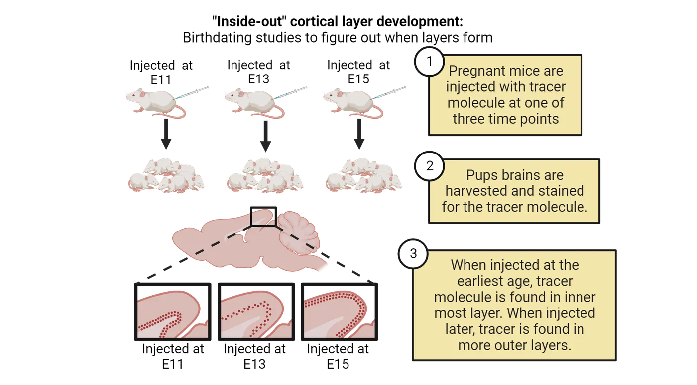
Similar experiments to the one diagrammed in mice have been performed in macaques and other primates. These experiments revealed wide conservation in the inside-out pattern of neurogenesis across mammals. Early in development, recently generated neurons preferentially populate lower/inner layers of the cortex. Later born neurons preferentially populate the outer layers. Conservation of this pattern goes beyond primates and rodents. The inside-out sequence of cell birth specification has been observed in every mammalian isocortex studied (primates, rodents, marsupial mammals; ). Because we can’t inject pregnant humans or their fetuses with tracers, we use observations such as these from model systems to make inferences about human brain development.
Synaptogenesis(i.e., the production of synapses) is yet another process that researchers have relied on model systems, particularly macaques and cats, to map the steps and the expected time course in humans. In macaques and cats, synaptogenesis occurs as neurogenesis wanes (; 1975; ; ). The number of synapses peaks in early infancy and subsequently declines in early adulthood. Many researchers believe that this surge in synapse numbers early in infancy provides an important critical period where young individuals can learn and adapt to their postnatal environment. Human synaptogenesis is to a large extent inferred from model systems.
In this section, we have considered how we make inferences about basic developmental processes from model systems, but not every developmental process is similar across humans and other species. For example, the overall duration of brain development is extended in humans compared with macaques (; ). The longer overall duration in neurogenesis, synapse development and myelination may be contributing factors to the evolution of the human brain structure and function. We can determine what is unique from a structural perspective in humans compared to other species, but we can’t explain the reasons why those differences exist. For example, humans and other non-human primates may differ in their length of gestation, but we can't necessarily conclude that this is the reason why humans have some structural difference relative to non-human primates. We next discuss how we can use closely related species to learn basic concepts in neurobiology.
Studying closely related species to make inferences about the neural basis of social bonds
Thus far, we have focused on looking for similarities between species to allow us to investigate the neural bases of behavior and extrapolate to difficult-to-study species like humans. Investigating differences between closely related species is also a useful approach to understand the neural basis of behaviors. In species that are close in phylogenetic proximity, one would expect relatively few differences in brain and behavior. These relatively few differences across closely related species permit pinpointing what neural structures form the basis of select behaviors. We discuss an example where phylogenetic proximity has been used to make inferences about the neurobiological basis of social bonds.
Throughout their lives, humans form selective attachments to family, friends, and romantic partners, which are critical for both mental and physical well-being. The pair bonding of Microtine rodents such as prairie versus meadow or montane voles show variation that mirrors the variation in pair bonding in humans (see Introduction). Prairie voles are monogamous; they form stable pairs. Other vole species, such as montane voles, are polygamous with males and females forming multiple pairs. That is, individuals will copulate with multiple partners. In these studies, montane and meadow voles are used as the non-monogamous counterpart to the monogamous prairie vole. The affiliative behavior can be measured with a partner preference assay. In short, a male vole is given a choice of where to spend his time: with a female with whom he previously mated or with a new female. Pair-bonded prairie voles will spend the majority of their time with their partner when given the opportunity to do so, whereas meadow voles show no preference toward either an established partner or a novel opposite-sex partner. The diverse pair bonding behaviors across vole species mirrors the diverse behaviors we see among humans with some humans engaging in monogamous relationships whereas others form polygamous relationships.
These two vole species are closely related so that their brain structure and function is highly similar with only a few differences. Studies of the basis of social bonding using these species therefore started with the idea that there should be relatively few differences across species since they are closely related. Brain region differences, then, could be related to variation in pair-bonding between the two species (; ). Researchers compared the brains of these meadow and prairie voles, and they found interesting species differences in vasopressin receptors (i.e., vasopressin 1a receptors, V1aRs) in the basal ganglia. Specifically, expression of V1aR in a region called the ventral pallidum was higher in the pair-bonding voles than in the solitary voles. This difference is shown in the autoradiograms in the top two rows of Pair-bonding in voles.
![Multi-panel mixture of autoradiograms, photos and a graph. Autoradiograms show a coronal slice of vole brain with dark pigment (vasopressin expression) in the ventral pallidum. Vasopressin receptor expression is seen intensely in the ventral pallidum (VP) of prairie voles, which spend time in contact after mating. Meadow voles, in contrast, generally spend time alone after mating and have much less vasopressin receptor expression. Prairie vole photo shows two furry rodents huddled together. Meadow vole photo shows a similar rodent but sitting alone. An autoradiogram shows that experimentally increasing vasopressin receptor expression in meadow voles using an adeno-associated viral (AAV) vector causes increased vasopressin receptor expression in the ventral pallidum. A bar graph also shows that prairie voles spend more time in contact with a partner over a stranger than meadow voles and that AAV vasopressin receptor overexpression in meadow voles makes them spend more time in contact with a partner, like a prairie vole.](assets/textbook/img/Image-4.11_Pair-bonding-in-voles.webp)
While suggestive, these observed differences in V1aR expression do not by themselves demonstrate that the expression of vasopressin receptors is causally related to species differences in pair bonding. Researchers therefore went one step further with these cross-species investigations. Specifically, researchers experimentally increased the expression of vasopressin receptors in the normally non-pair bonding meadow voles to test whether the expression of vasopressin receptors is causally related to pair bonding. They then quantified partner preference as an index of pair bonding (). The bottom graph in Pair-bonding in voles shows the results of this experiment. First, untreated prairie voles showed a preference for their partner and untreated meadow voles did not, as we would expect. Increasing vasopressin receptors in meadow voles changed this, though. Meadow voles with V1aR overexpressed behaved much more like the pair-bonding prairie voles, spending more time with a previous partner than with a stranger (; ).
These findings point to vasopressin receptor expression in the ventral pallidum area of the basal ganglia as a major player in specifying social bonds. Other molecules (e.g., oxytocin) are also important in dictating social bonds (; ; ). While V1aR expression is clearly important for partner bonding in prairie voles, can we apply this knowledge to human behavior? Interestingly, the results of these vole studies motivated studies in humans, which have identified individual differences in vasopressin receptors, specifically finding genetic variants of this receptor that predict different partner bonding behaviors (). That is, similar genetic variants account for behavioral variation amongst humans. Examples such as this one demonstrate that we can understand the neurobiology of social bonds in humans by focusing our efforts on comparing the neurobiological basis of social bonds.
Summary
As is evident from our overview of the development and neural basis of social bonds, the selection of model systems depends on the biological program of interest. Groups of closely related species offer advantages in understanding human neurobiology as is the case of voles. Non-human primates also enable probing into our biological processes due to their phylogenetic proximity to humans. We discussed how we can use early postnatal development from macaques to study human fetal development.
Key terms
Synaptogenesis, neurogenesis, neural stem cell, birth-dating techniques, social bondsReferences
Ahern, T. H., Olsen, S., Tudino, R., & Beery, A. K. (2021). Natural variation in the oxytocin receptor gene and rearing interact to influence reproductive and nonreproductive social behavior and receptor binding. Psychoneuroendocrinology, 128, 105209. https://doi.org/10.1016/j.psyneuen.2021.105209
Anacker, A. M., & Beery, A. K. (2013). Life in groups: The roles of oxytocin in mammalian sociality. Frontiers in Behavioral Neuroscience, 7, 185. https://doi.org/10.3389/fnbeh.2013.00185
Bystron, I., Blakemore, C., & Rakic, P. (2008). Development of the human cerebral cortex: Boulder Committee revisited. Nature Reviews Neuroscience, 9(2), 110–122. https://doi.org/10.1038/nrn2252
Boldrini, M., Fulmore, C. A., Tartt, A. N., Simeon, L. R., Pavlova, I., Poposka, V., Rosoklija, G. B., Stankov, A., Arango, V., Dwork, A. J., & Hen, R. (2018). Human hippocampal neurogenesis persists throughout aging. Cell Stem Cell, 22(4), 589–599. https://doi.org/10.1016/j.stem.2018.03.015
Bourgeois, J. P., Goldman-Rakic, P. S., & Rakic, P. (1994). Synaptogenesis in the prefrontal cortex of rhesus monkeys. Cerebral Cortex, 4(1), 78–96. https://doi.org/10.1093/cercor/4.1.78
Clancy, B., Darlington, R. B., & Finlay, B. L. (2001). Translating developmental time across mammalian species. Neuroscience, 105(1), 7–17. https://doi.org/10.1016/S0306-4522(01)00171-3
Charvet, C. J., & Finlay, B. L. (2018). Comparing adult hippocampal neurogenesis across species: Translating time to predict the tempo in humans. Frontiers in Neuroscience, 12, 706. https://doi.org/10.3389/fnins.2018.00706
Cragg, B. G. (1972). The development of synapses in cat visual cortex. Investigative Ophthalmology, 11(5), 377–385.
Cragg, B. G. (1975). The development of synapses in the visual system of the cat. Journal of Comparative Neurology, 160(2), 147–166. https://doi.org/10.1002/cne.901600202
Kozareva, D. A., Cryan, J. F., & Nolan, Y. M. (2019). Born this way: Hippocampal neurogenesis across the lifespan. Aging Cell, 18(5), e13007. https://doi.org/10.1111/acel.13007
Insel, T. R., Wang, Z. X., & Ferris, C. F. (1994). Patterns of brain vasopressin receptor distribution associated with social organization in microtine rodents. Journal of Neuroscience, 14(9), 5381–5392. https://doi.org/10.1523/jneurosci.14-09-05381.1994
Insel, T. R., & Shapiro, L. E. (1992). Oxytocin receptor distribution reflects social organization in monogamous and polygamous voles. Proceedings of the National Academy of Sciences, 89(13), 5981–5985. https://doi.org/10.1073/pnas.89.13.5981
Mitchell, J. F., & Leopold, D. A. (2015). The marmoset monkey as a model for visual neuroscience. Neuroscience Research, 93, 20–46. https://doi.org/10.1016/j.neures.2015.01.008
Passingham, R. (2009). How good is the macaque monkey model of the human brain? Current Opinion in Neurobiology, 19(1), 6-11. https://doi.org/10.1016/j.conb.2009.01.002
Okano, H., Hikishima, K., Iriki, A., & Sasaki, E. (2012). The common marmoset as a novel animal model system for biomedical and neuroscience research applications. In Seminars in Fetal and Neonatal Medicine (Vol. 17, No. 6, pp. 336–340). WB Saunders.
Rakic, P. (2009). Evolution of the neocortex: A perspective from developmental biology. Nature Reviews Neuroscience, 10(10), 724–735. https://doi.org/10.1038/nrn2719
Rakic, P. (1974). Neurons in rhesus monkey visual cortex: Systematic relation between time of origin and eventual disposition. Science, 183(4123), 425–427. https://doi.org/10.1126/science.183.4123.425
Rakic, P. (2002). Pre- and post-developmental neurogenesis in primates. Clinical Neuroscience Research, 2(1–2), 29–39. https://doi.org/10.1016/S1566-2772(02)00005-1
Romero, T., Nagasawa, M., Mogi, K., Hasegawa, T., & Kikusui, T. (2014). Oxytocin promotes social bonding in dogs. Proceedings of the National Academy of Sciences, 111(25), 9085–9090. https://doi.org/10.1073/pnas.1322868111
Sadino, J. M., & Donaldson, Z. R. (2018). Prairie voles as a model for understanding the genetic and epigenetic regulation of attachment behaviors. ACS Chemical Neuroscience, 9(8), 1939–1950. https://doi.org/10.1021/acschemneuro.7b00475
Young, L. J., Nilsen, R., Waymire, K. G., MacGregor, G. R., & Insel, T. R. (1999). Increased affiliative response to vasopressin in mice expressing the V1a receptor from a monogamous vole. Nature, 400, 766–768. https://doi.org/10.1038/23475
Winslow, J. T., Hastings, N., Carter, C. S., Harbaugh, C. R., & Insel, T. R. (1993). A role for central vasopressin in pair bonding in monogamous prairie voles. Nature, 365, 545–548. https://doi.org/10.1038/365545a0
Walum, H., Westberg, L., Henningsson, S., Neiderhiser, J. M., Reiss, D., Igl, W., Ganiban, J. M., Spotts, E. L., Pedersen, N. L., Eriksson, E., & Lichtenstein, P. (2008). Genetic variation in the vasopressin receptor 1a gene (AVPR1A) associates with pair-bonding behavior in humans. Proceedings of the National Academy of Sciences, 105(37), 14153–14156. https://doi.org/10.1073/pnas.0803081105
Practice The multiple-choice and fill-in-the-blank questions for this section are interactive and live on OpenStax, so they are not carried here: open the book on openstax.org.
4.6How Can Brain Organoids Help Us Make Inferences about Brain Evolution?
By the end of this section, you should be able to
- Explain how brain organoids are grown in the laboratory.
- Explain how to measure RNA expression from sequencing.
- Explain a major finding from studying brain organoids.
Certain ethics limit the use of experimentation on humans, and some alternate species are not readily available for study. For example, many great apes are endangered, and it is difficult to study how their brains compare with humans or other mammals. Brain organoids are emerging as interesting tools to study brains in groups that are otherwise difficult to study. Organoids are three-dimensional spheres grown in vitro from stem cells. Cells from any organism can be selected and grown to become different cell types, forming a variety of types of organoids including brain organoids. In this section, we discuss how brain organoids are generated in the laboratory, and we discuss recent findings that have emerged from their use in the laboratory.
How to grow stem cells into brain organoids
Organoids are generated from embryonic stem cells or induced pluripotent stem cells, which are a kind of stem cell made from a mature cell (like a skin cell) in the laboratory. As diagrammed in Organoids, the stem cells are grown in a dish in the lab (step 1) and allowed to form small embryoid bodies (or collections of cells that stick to each other in a small ball) (step 2). Those balls of cells are then moved into a droplet of Matrigel, a substance filled with proteins that will support the further growth of the sphere and encourage the differentiation of cells into cell-specific fates such as the neuroectoderm lineage, which are developmental precursors of our nervous system (step 3 in Organoids) (see Introduction). Those bits of neuroectoderm are then spun at high speed (step 4 in Organoids). The spinning forces make them stick to each other as cells grow. Remarkably, these cells self-assemble into a collection of progenitor cells (cells that can divide but are not as uncommitted as stem cells) that can give rise to neurons and glial cells that in many ways resemble pieces of a real brain.
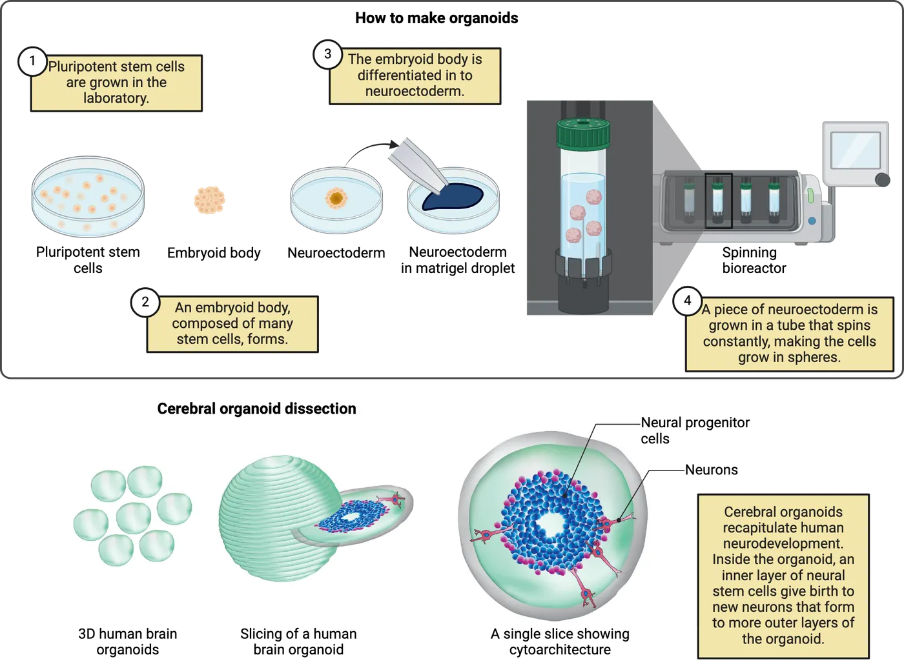
Brain organoids express patterns of gene expression reminiscent of the developing nervous system, and form functional networks, thus resembling miniature versions of brains. They also show cellular organization similar to developing brains. For example, the bottom of Organoids shows how the inside of a brain organoid has a ring of progenitor cells that give rise to neurons that migrate outwards. This arrangement strongly resembles the migration of developing neurons in the cortex that we discussed in How Can Diverse Species Help Us Make Inferences about Human Neurobiology?.
Because of their similarity to real brain networks, brain organoids are providing exciting tools that can be geared for personalized medicine. For example, characterizing and testing therapies on organoids provides a new opportunity to define and evaluate the effectiveness of treatments to help individuals suffering from disorders (). Mature cells from a given individual can be induced into pluripotency (i.e., a proliferative state), and grown into a brain organoid. In theory, this kind of model could allow screening of therapies for individual patients using tiny brains generated from their own cells.
Below, we will provide a few examples to show how brain organoids have provided new insights into the evolution of the brain. Many of these studies rely on gene expression to investigate species differences in organoids. We will therefore briefly describe how RNA is measured from sequencing methods in the brain before discussing how they are used to identify species differences from brain organoids.
Measuring RNA from sequencing technologies
The emergence of sequencing techniques has created many new and exciting opportunities to study transcriptional variation across species. Though there are multiple techniques to study gene expression, here we will focus on RNA sequencing, which is a method that probes gene expression very broadly in cells. RNA sequencing is a technique to measure the abundance of RNA transcripts. While many techniques for measuring RNA require that you pick which RNAs to measure ahead of time, RNA sequencing measures RNAs from many thousands of genes.
The basic process of RNA sequencing is shown in Sequencing technologies.
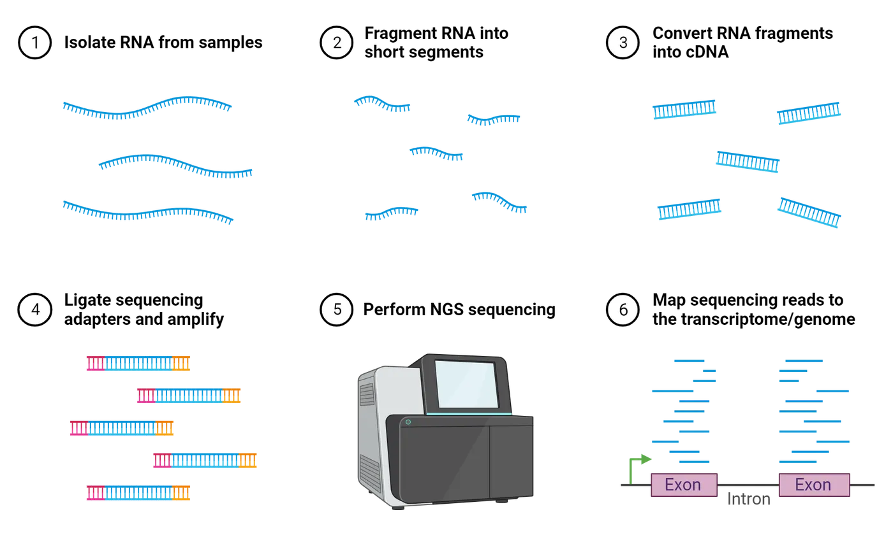
Tissue is extracted and then RNA is isolated via a series of steps that capture and purify it (step 1 and 2 in Sequencing technologies). Unlike DNA, which is double-stranded and stable, RNA is single stranded so that it easily degrades. Researchers turn their RNA into double stranded DNA to keep it stable (step 3 in Sequencing technologies). The process of turning RNA back into DNA is called reverse transcription and we call the resulting DNA “cDNA” because it is copied (or complimentary) from the RNA it was made from. These cDNA fragments are sequenced (step 4 and 5 in Sequencing technologies). This means that each nucleotide (adenine, uracil, guanine, cytosine) is read by a sequencing machine. Relatively short strings of nucleotides read at a time. The transcript reads are then aligned to the genome, which involves matching up sequences of nucleotides from the transcripts to the genome template (step 6 in Sequencing technologies). This effectively aligns the transcripts to the corresponding gene. In a typical experiment, the process of generating read alignment will cause some genes to have many aligned transcripts. Whereas other genes will have very few or no aligned transcripts. The number of reads aligned to each gene is used as an index of gene expression (; Van den ). Using these techniques, we can compare gene expression between a diseased state and a healthy control, but we can also use these data to compare transcription across development and across the brains of different species. We can relate variation in gene expression with behavior in healthy and in diseased states.
Originally, researchers sequenced RNA from whole organs, or a piece of tissue, but this approach has limitations. Using whole pieces of tissue is a limitation because tissue is composed of a heterogeneous population of cells (e.g., neuron types, glial cells), and there is no way to tell which cells or cell populations express genes of interest. More recently, researchers developed novel methods to capture RNA sequencing from individual cells. We can now identify the transcriptional profiles from individual cells within a tissue rather than the whole piece of tissue as is the case with RNA sequencing from bulk samples. Various methods exist to measure gene expression from individual cells. Single cell RNA sequencing of primate brain shows one common way to approach single cell RNA sequencing.

In this workflow, tissue is dissected (step 1 in Single cell RNA sequencing of primate brain) and broken apart into a suspension where cells float separate from one another (step 2 in Single cell RNA sequencing of primate brain). Sometimes, specific subpopulations of cells are selected using fluorescence activated cell sorting (FACS) (step 3 in Single cell RNA sequencing of primate brain). FACS uses a machine to sort cells into separate tubes based on their fluorescence. We can make specific cells fluoresce using antibody labeling (see Methods: Immunohistochemistry) or by using transgenic model organisms that express fluorescent reporters in specific cell classes (see Methods: Transgenic Organisms). Once the cells of interest are collected, RNA sequencing is performed from individual cells, keeping transcripts from each cell separate (step 4 in Single cell RNA sequencing of primate brain). This approach permits capturing transcriptional information from the individual cells that comprise a particular tissue. Researchers can now consider all of the transcriptional profiles from different cell populations (step 5 in Single cell RNA sequencing of primate brain).
The data from single cell RNA sequencing can be visualized in several ways but one common way is in the kind of plots shown in the bottom of Single cell RNA sequencing of primate brain (also step 6 in Single cell RNA sequencing of primate brain). On these plots, individual cells are represented as dots. Cells (dots) that are close to others are considered similar to each other. If cells are similar enough, they are considered a cluster. Clusters are shown as the color coding of the dots in Single cell RNA sequencing of primate brain. These clusters are thought to represent different cell populations. For instance, glial cell subpopulations cluster together as do different neuronal populations. These methods have been used to investigate species differences in cell composition of different brain regions. Much of this work has been unfolding in the very recent years and we are in the early stages of using these techniques to learn about species differences in cellular composition. There are several interesting findings to emerge from this work already. For example, researchers have identified conservation but also modifications in cortical cell types across species (; Campagnola et al., 2022; ), and they have even identified novel cell types in the primate lineage (). Much work is ongoing to uncover species variations from single cell RNA sequencing. We now return to brain organoids and how these sequencing technologies have been used to assess species differences in brain organoids.
Species differences revealed from brain organoids
Comparative analyses of brain organoids at different stages of maturity have revealed interesting insights about the evolution of brains. In these studies, researchers selected mature cells from humans and great apes, induced them into pluripotency, and grew them in the laboratory as brain organoids. They then sampled these brain organoids at different ages in different species and measured variables like gene expression and anatomy. For example, one study compared transcriptional profiles using RNA sequencing across the brain organoids of humans and chimpanzees (). They found that the maturation of brain organoids was similar in the early phases of organoid development, but later diverged between human and non-human primates. Another study relied on single cell RNA sequencing data in humans, chimpanzees, and macaques and found that the maturation of brain organoids in humans was slower than in other non-human primates (). Studies such as these have converged on the finding that the maturation of brain organoids is protracted in humans relative to other primates (Schörnig et al.. 2021). Yet, an unresolved question is how observations made from brain organoids translate to the full organism, and whether media used to grow these primate brain organoids are appropriate for other species.
Summary
The use of brain organoids coupled with RNA sequencing technology have provided new insights into the evolution of the human brain. Comparative analyses have converged on the finding that brain maturation in humans is extended relative to great apes. Questions remain as to how information gained from brain organoids relates to the individual. Nevertheless, these methods are exciting and open new avenues of research. Indeed, there is much left to learn about the evolution of the nervous systems. The field of comparative neuroscience is well positioned to make important contributions to many areas of biomedical sciences.
Key terms
Brain organoids, induced pluripotent stem cells, RNA sequencingReferences
Bakken, T. E., Jorstad, N. L., Hu, Q., et al. (2021). Comparative cellular analysis of motor cortex in human, marmoset and mouse. Nature, 598, 111–119. https://doi.org/10.1038/s41586-021-03465-8
Finotello, F., & Di Camillo, B. (2015). Measuring differential gene expression with RNA-seq: Challenges and strategies for data analysis. Briefings in Functional Genomics, 14(2), 130–142. https://doi.org/10.1093/bfgp/elu035
Khrameeva, E., Kurochkin, I., Han, D., et al. (2020). Single-cell-resolution transcriptome map of human, chimpanzee, bonobo, and macaque brains. Genome Research, 30(5), 776–789. https://doi.org/10.1101/gr.256958.119
Kanton, S., Boyle, M. J., He, Z., et al. (2019). Organoid single-cell genomic atlas uncovers human-specific features of brain development. Nature, 574, 418–422. https://doi.org/10.1038/s41586-019-1654-9
Kim, M. H., Radaelli, C., Thomsen, E. R., et al. (2023). Target cell-specific synaptic dynamics of excitatory to inhibitory neuron connections in supragranular layers of human neocortex. eLife, 12, e81863. https://doi.org/10.7554/eLife.81863
Ozsolak, F., & Milos, P. M. (2010). RNA sequencing: Advances, challenges and opportunities. Nature Reviews Genetics, 12(2), 87–98. https://doi.org/10.1038/nrg2934
Krienen, F. M., Goldman, M., Zhang, Q., et al. (2020). Innovations present in the primate interneuron repertoire. Nature, 586, 262–269. https://doi.org/10.1038/s41586-020-2781-z
Pollen, A. A., Bhaduri, A., Andrews, M. G., et al. (2019). Establishing cerebral organoids as models of human-specific brain evolution. Cell, 176(4), 743–756. https://doi.org/10.1016/j.cell.2019.01.017
Schörnig, M., Ju, X., Fast, L., et al. (2021). Comparison of induced neurons reveals slower structural and functional maturation in humans than in apes. eLife, 10, e59323. https://doi.org/10.7554/elife.59323
Van den Berge, K., Hembach, K. M., Soneson, C., Tiberi, S., Clement, L., Love, M. I., Patro, R., & Robinson, M. D. (2019). RNA sequencing data: Hitchhiker's guide to expression analysis. Annual Review of Biomedical Data Science, 2(1), 139–173. https://doi.org/10.1146/annurev-biodatasci-072018-021255
Practice The multiple-choice and fill-in-the-blank questions for this section are interactive and live on OpenStax, so they are not carried here: open the book on openstax.org.
5Neurodevelopment4 sections
Our entire CNS begins from a simple sheet of cells. During development, these cells expand to create the highly patterned and functional units of our brain and spinal cord, giving us the capacity to sense and respond to…
Introduction

Our nervous system is the body’s command center. It is a well-tuned communication system that transmits signals at the speed of 220 miles/hour to coordinate the body’s organs, movements, and sensations. The nervous system connects our 12 body systems and uses a central processing unit, the brain, to coordinate the proper function of the entire human body. The brain has a unique architecture that is partitioned into different regions, totaling billions of neurons, that if put end to end, would total 37 miles. But how does such a complex system emerge? Will an understanding of how the nervous system is built aid in our ability to treat common and rare brain disorders?
In this chapter, we will learn about the early formation of the central nervous system (CNS). We will discuss cell-to-cell communication and movements that ultimately produce an intricate structure with region-specific functions. These structures continue to develop postnatally and are highly influenced by environmental factors/experience, ultimately shaping how we interact with and perceive the world. Throughout the chapter we will provide examples, using clinical case studies and disease discussions, to understand the critical importance of genetics and environment in shaping normal brain development.
5.1Gastrulation and Formation of the Neural Tube (Neurulation)
By the end of this section, you should be able to
- Describe major structural brain defects and their causes.
- Describe basic principles of gastrulation and neurulation.
Our entire CNS begins from a simple sheet of cells. During development, these cells expand to create the highly patterned and functional units of our brain and spinal cord, giving us the capacity to sense and respond to the environment. In this section, we will introduce you to some of the earliest steps of development. These steps create the foundation for more advanced sculpting of the brain and spinal cord.
Why is brain development important?
CNS abnormalities that cause functional impairment or suffering occur with a frequency of approximately 0.1-0.2% of all live births (). Congenital (those that occur at birth) defects can occur due to environmental toxins (teratogens), as well as other prenatal experiences, such as poor maternal diet, maternal stressors, or genetic mutations. Abnormal brain development that impairs quality of life can also occur postnatally due to the presence or absence of environmental stimuli. For example, a lack of or poor environmental influences postnatally can severely impair cognition years later (). These types of detrimental changes in brain function result because both the prenatal and the postnatal brain have a tremendous ability to sense and respond to the environment by reorganizing its structure, function, or connections. Simply put, the brain is very sensitive to environmental stimulation both pre- and postnatally. The fact that early life experience and brain development can lead to functional deficits well into adulthood underscores a need for research into how the brain develops, how genetics modulates pre-and postnatal development, and how the environment positively or negatively affects overall brain development and function.
How does development begin?
Development of the nervous system requires specific patterning events in the early embryo. These events are summarized in Overview of early neurodevelopment, which we will elaborate on throughout the sections of this chapter. These events organize the fertilized egg and partition specific units for brain development. Thus, to understand brain development in detail, we must first begin by understanding the mechanisms in place that set up the original partitions.

Gastrulation
Development of the nervous system begins with the process of gastrulation, one of the earliest developmental events in the embryo. The goal of gastrulation is to start the subdivision and specialization of cells in the developing embryo. When complete, gastrulation results in the production of 3 primary germ layers. The creation of germ layers can be thought of as the earliest step towards successfully partitioning an organism. Each of the 3 germ layers are made of cells that will give rise to specific tissue types depending on their location.
Gastrulation begins several days after the fertilization of an egg in species like mice and humans. In those intervening days after fertilization (but before gastrulation), the egg undergoes several rounds of cleavage (cell division) events to produce a sphere of cells called the blastocyst. The sphere of cells surrounds a fluid-filled cavity called the blastocoel (step 1 in Gastrulation). Reorganization of the blastula will produce two early layers of cells, the inner cell mass and the outer trophoblast layer (step 2 in Gastrulation). The trophoblast layer will become the mammalian placenta. Through cellular movements, migration, and invagination, the cells of the inner cell mass will produce the 3 germ layers (step 2 in Gastrulation).
Gastrulation begins after the formation of the primitive streak, which is a long groove that forms across the developing embryo. At the anterior region of the primitive streak is the node (). This node represents the organizing center of gastrulation and is the site where invagination of cells begins. Gastrulation step 3 demonstrates an example of early invagination. After the cellular movements are complete, the gastrula contains 3 germ layers: the endoderm, mesoderm, and ectoderm (Gastrulation). They are named based on where they are located within the developing embryo: the endoderm is the innermost layer, the mesoderm is in the middle layer, and the ectoderm is the outermost layer. The CNS is produced from the ectoderm, although all layers communicate with one another to coordinate development.

Neurulation
Completion of gastrulation lays the foundation for a process called neurulation, which will generate the early brain and spinal cord tissues via the formation of a structure called the neural tube (summarized in Neurulation). Of the 3 germ layers, the ectoderm, or outer layer, will generate cells that become neural tissue or epidermis: two vastly different tissues. To make neural tissue (instead of epidermis), a portion of the ectoderm called the neural plate must undergo neural induction.
The neural plate is a single layer of cells located in a small, central region of the ectoderm (Neurulation, step 1). It is induced to become neural tissue by the expression of molecules we call neural inducers. These are secreted factors that direct the surrounding tissues through neurulation (). One example of a neural inducer is noggin (). Localized expression of noggin induces the neural plate to invaginate (step 2 of Neurulation). Invagination can be described as the process of folding cells inward, to produce a small cavity. In step 2 of Neurulation, the cells of the neural plate that are pushing down into the tissue beneath them are migrating and growing towards cells that are secreting noggin (and other factors). This migration of neural plate cells into the underlying tissue results in the formation of the neural groove (Neurulation, step 2), a center region that is surrounded by indentations that form the neural folds. Ultimately by cellular movements, the two neural folds connect producing a neural tube that sits ventral to the outer epidermis (Neurulation steps 3 and 4). The inner region of the newly closed neural tube develops into the central canal of the spinal cord and what will eventually form the ventricles of the brain.
![Diagrams of the steps of neurulation from the main text, shown as cross-section of developing neural tube. Neural plate starts out as flat section of tissue, dorsal midline, with epidermis on each side. Endoderm is the ventral side of tissue. Mesoderm is in the middle. Notochord is a circular structure just under the neural plate at midline. Over the steps, neural plate invaginates in and closes dorsally to make a tube, with other structures in similar relative places. Step 5 (not in text): Cells within the neural tube are highlighted as the neural precursors that give rise to the central nervous system.](assets/textbook/img/Image-5.06_Neurulation.webp)
Environment and Bidirectional communication: Neural tube defects and folic acid
Neurulation is a critical step in early brain development and if this process does not occur properly a class of disorders called neural tube defects arise. The most common neural tube defects are the result of abnormal neural tube closure, which can be affected by environmental and genetic influences. These defects fall into different classes based on type and severity. In the severest forms such as anencephaly, the neural tube does not close at the anterior end and causes missing regions of the skull and brain. Other examples include encephalocele, when the brain protrudes through the skull, and hydrocephalus, which is characterized by an accumulation of cerebrospinal fluid in the brain. Spina bifida is one of the most well-known examples of a neural tube defect and occurs when the posterior end of the neural tube does not close fully. Spina bifida can range in severity, causing either a complete opening along the vertebrae of the back or a minor separation in the bones of the vertebrae (Defects of neurulation).
![Left is a diagram of the dorsal view of a neural tube of an unaffected tube and a tube exhibiting spina bifida. The spina bifida tube has an opening at the caudal end of the tube that is absent in the unaffected tube. Right is a lateral view of adult spinal cord showing the variations in severity of spina bifida. In unaffected spine, neural pathways stay inside the spinal cord and vertebrae are in place. Variations of spina bifida shown include: missing vertebrae but nerves in place, missing vertebrae and some nerves looping out from the spinal cord dorsally, missing vertebrae and all nerves looping dorsally outside the spinal cord.](assets/textbook/img/Image-5.29_Defects-of-neurulation.webp)
Interestingly, the different types of neural tube defects observed occur at the extreme ends of the neural tube (not in the middle) as a result of how the neural tube closes. The neural tube begins closure in the middle and slowly closes on either end. Spina bifida is localized to the posterior regions of the neural tube, while anencephaly, encephalocele, and hydrocephalus occur in the anterior regions of the neural tube.
It is predicted that approximately 70% of neural tube defects occur due to genetic factors. There have been over 240 genes associated with neural tube defects (), which strongly supports the link between genetic predisposition and neural tube abnormalities. However, genetics do not solely determine the presence of neural tube defects, as a huge proportion of neural tube defects can be prevented with the nutritional supplementation of folic acid in the mother’s diet. Folic acid is a water-soluble B-vitamin and deficiencies in folic acid have been associated with an increased risk of neural tube defects (). Many foods including orange juice and some cereal grains are fortified with folic acid. The addition of folic acid to specific food products of general consumption has had an immediate impact on the prevalence of neural tube defects. Despite the efficacy of folic acid supplementation, it is still unclear how folic acid directly prevents neural tube defects.
Summary
Watch the section summary video
Streamed from OpenStax; open it there if it does not play.
Key terms
Congenital, teratogens, gastrulation, germ layers, cleavage, blastocyst, blastocoel, inner cell mass, trophoblast, primitive streak, node, blastopore lip, neurulation, neural tube, neural plate, neural induction/inducers, noggin, neural groove, neural folds, ventricles, anencephaly, encephalocele, hydrocephalus, vertebrae, transplantation assays, Spemann-Mangold organizerReferences
Cater, S. W., Boyd, B. K., & Ghate, S. V. (2020). Abnormalities of the fetal central nervous system: Prenatal US diagnosis with postnatal correlation. RadioGraphics, 40(5), 1458–1472 https://doi.org/10.1148/rg.2020200034.
De Robertis, E. M. (2006). Spemann’s organizer and self-regulation in amphibian embryos. Nature Reviews Molecular Cell Biology, 7(4), 296–302. https://doi.org/10.1038/nrm1855
Harland, R., & Gerhart, J. (1997). Formation and function of Spemann’s organizer. Annual Review of Cell and Developmental Biology, 13(1), 611–667. https://doi.org/10.1146/annurev.cellbio.13.1.611
Harris, M. J., & Juriloff, D. M. (2010). An update to the list of mouse mutants with neural tube closure defects and advances toward a complete genetic perspective of neural tube closure. Birth Defects Research Part A: Clinical and Molecular Teratology, 88(8), 653–669. https://doi.org/10.1002/bdra.20676
Ornoy, A. (2006). Neuroteratogens in man: An overview with special emphasis on the teratogenicity of antiepileptic drugs in pregnancy. Reproductive Toxicology, 22(2), 214–226. https://doi.org/10.1016/j.reprotox.2006.03.014
Spemann, H., & Mangold, H. (1924). Über Induktion von Embryonalanlagen durch Implantation artfremder Organisatoren. Archiv für Mikroskopische Anatomie und Entwicklungsmechanik, 100(3–4), 599–638. https://doi.org/10.1007/BF02108133
Valenzuela, D. M., Economides, A. N., Rojas, E., Lamb, T. M., Nuñez, L., Jones, P., Lp, N. Y., Espinosa, R., Brannan, C. I., & Gilbert, D. J. (1995). Identification of mammalian noggin and its expression in the adult nervous system. Journal of Neuroscience, 15(9) 6077–6084. https://doi.org/10.1523/jneurosci.15-09-06077.1995
Wallingford, J. B., Niswander, L. A., Shaw, G. M., & Finnell, R. H. (2013). The continuing challenge of understanding and preventing neural tube defects. Science, 339(6123), 1222002. https://doi.org/10.1126/science.1222002
Practice The multiple-choice and fill-in-the-blank questions for this section are interactive and live on OpenStax, so they are not carried here: open the book on openstax.org.
5.2Growth and Development of the Early Brain
By the end of this section, you should be able to
- Define major structural regions of the early brain.
- Describe the creation and maintenance of neural stem cells.
- Describe differentiation of neurons and glia.
- Describe radial migration of the cortex.
- Describe tangential migration.
The early maturation of the CNS entails subdividing sections through a process called segmentation. During this time, the brain undergoes massive cellular expansion producing neural stem cells that will ultimately give rise to neurons and glia (not microglia). Here, we will describe the segmented regions of the early brain and the mechanisms that regulate neural stem cell function and differentiation alongside a discussion of the types of migration that organize neurons to their final destination.
Segmentation of the early brain
The enclosed neural tube contains almost all the components needed to produce the brain and spinal cord. The tube itself will now morph into a region-specific structure that includes the forebrain, midbrain, hindbrain, and spinal cord (Early segmentation of the brain). (See Introduction.)

This process is called segmentation (; ; ; ) and includes the process of bending and folding regions of the neural tube. The anterior region of the neural tube will bend forward with the anterior most region forming the prosencephalon (forebrain) and the mesencephalon (midbrain), which is adjacent to the cephalic flexure. A flexure is a term used to describe a bend or fold. The cephalic flexure is distinguished as a curvature located at the junction between the brainstem and spinal cord. It is a critical anatomical adaptation that helps support the body to walk on two legs, opposed to four like cats or dogs. The body is able to do this by balancing the weight of our heads on top of the spinal cord, while keeping our eyes forward to gather spatial awareness as we walk on two feet.
The cephalic flexure is anterior to the rhombencephalon (hindbrain), which is located in between the cephalic flexure and the cervical flexure, the bend that will divide the hindbrain and spinal cord (Early segmentation of the brain). The prosencephalon is further subdivided into the telencephalon and the diencephalon. The rhombencephalon is divided into the metencephalon and myelencephalon. The telencephalon will produce the cerebral cortex, while the diencephalon will generate the thalamus, and hypothalamus. The midbrain and hindbrain will produce parts of the brainstem, pons, and cerebellum, collectively (see Introduction). Posterior to the hindbrain region, the neural tube becomes the tissue of the spinal cord. These divisions are all specified early in development, even though their full functional maturation will take months (and sometimes years).
Environment and Bidirectional communication: Genetic diseases of development with environmental influence
Disorders that lead to structural damage or malformations which impair lifelong function are the most common forms of congenital brain disorders. While there are a variety of environmental teratogens that can alter brain development, a significant number of congenital brain malformations are associated with a genetic mutation. For many of these disorders, a gene of interest has been assigned or associated with the disease, but how a specific mutation disrupts overall brain development is still a puzzle. These mysteries persist most likely because, in many cases, genes interact with environmental influences to determine their final effect on the brain. For example, holoprosencephaly is a congenital brain disorder characterized by abnormal separation of the forebrain (). This occurs prenatally and mutations in various genes have been shown to cause holoprosencephaly (). However, the degree of illness is often variable amongst individuals (Holoprosencephaly). Severe forms of the disease exhibit cyclopia (a single eye) and the brain does not divide into two hemispheres whereas some individuals diagnosed with holoprosencephaly can present with semilobar holoprosencephaly, in which the brain has a small separation between each hemisphere (Holoprosencephaly). It is generally accepted that environmental exposures in combination with genetic mutations ultimately dictate the presence and severity of holoprosencephaly. For example, some environmental teratogens such as ethanol are known to exacerbate the phenotypes of holoprosencephaly (). Additional environmental interactions include maternal diabetes and prenatal exposure to specific pharmaceutical drugs ().
![Top shows diagrams contrasting early segmented neural tube that is typical versus that in holoprosencephaly. The holoprosencephaly tube has less fully formed bilateral protrusions from midline, particularly in the forebrain. Bottom shows several diagrams of a horizonal section of human brain each with varying degrees of holoprosencephaly. Normal has two defined cortical lobes, one on each side. The lobes become less separated and more unified with increasing severity. The most severe shows one cortical lobe centered at midline with no bilateral separation.](assets/textbook/img/Image-5.27_Holoprosencephaly.webp)
Proliferation and differentiation: how are neurons and glia formed?
This section will cover the generation of neurons and glia in development.
Neural stem cells and proliferation
As the neural tube forms, we see the emergence of a special class of cells that will proliferate (divide) to create numerous daughter cells that go on to become neurons and glia of the CNS, except for microglia which are formed in the peripheral yolk sac. These cells are committed to become nervous system cells and are referred to as neural epithelial cells or neural stem cells. In the very early stages of neural tube formation (Step 1 in Embryonic corgical neurogenesis), these cells divide rapidly to create identical daughter cells, thereby expanding the neural tissue and growing the neural tube. Some of these daughter cells go on to become a type of cell called a radial glial cell (RGC).
RGCs are a class of neural stem cells located in a proliferative region called the ventricular zone, the thin layer of tissue surrounding the fluid-filled central cavity of the neural tube (i.e., the future ventricular system). RGCs have a unique, bipolar shape, shown in Embryonic corgical neurogenesis, where they extend one process medially, to contact the ventricular space, and another laterally, to contract the edge of the developing neural tube (known as the pial surface). Within the ventricular zone, RGCs divide (proliferate). The goal of this expansion is to create enough RGCs to produce the neurons and glia required for a fully formed brain.
RGCs are unique in that they have the ability to self-renew, which means they produce more of themselves through symmetric cell divisions where one cell produces two independent identical cells. RGCs also have the ability to divide asymmetrically, which means they can produce one cell that is identical to themselves, but at the same time produce a different, more committed cell that we call an intermediate progenitor (IP) (Step 2). IPs migrate along the radial processes of the RGCs into the subventricular zone (Step 3 and detailed location on the y-axis) where they will undergo symmetric cell divisions to produce neurons (Step 4 and 5). We call this process of creating new neurons neurogenesis. Later, RGCs will switch towards the development of daughter cells that go on to become astrocytes and oligodendrocytes, processes referred to as gliogenesis (Step 6). Gliogenesis occurs well after neurogenesis and closer to birth, with production of astrocytes occurring first followed by production of oligodendrocytes.

As neurogenesis and gliogenesis progress, the brain, of course, grows. For humans and several other highly intelligent mammals, our brain growth presents an exceptional challenge. In short, we need to fit a lot of brain, particularly a lot of cortex, into a small space, otherwise our heads would be too big for our necks to support. All mammalian species have a cortex, but it differs in size and texture (see Introduction). In smaller mammals such as mice, the cortex is smooth and smaller relative to skull size. However, in higher mammals, the cortex is much larger. It has a surface area the size of a pillowcase, approximately 40 by 62.5 centimeters. This size difference can be attributed to increased proliferation and production of neurons. To accommodate the increase in cell number, the human brain produces cortical folding, which is the formation of gyri and sulci. In rare instances, the human brain lacks the formation of gyri and sulci, this condition causes lissencephaly, or smooth brains. Lissencephaly is associated with intellectual disability.
As the human brain grows during development, we see it go from a relatively smooth structure to one with many sulci and gyri. Brain growth and folding shows how during development the large cortical lobes curl over on top of the lower brain regions, expanding to cover and surround mesencephalic regions. This curling over during development helps explain why many of our subcortical structures (hippocampus, thalamus, basal ganglia, and lateral ventricles) have a curved shape. To get an idea of how brain folding occurs during brain development, take out four sheets of paper. First take one sheet and crumple it tightly. The paper will slightly expand then settle into a crumpled state. Now get the remaining three sheets of paper and crumple all three together. Notice how thicker paper leads to fewer folds. The crumpled pieces will be much larger and harder to fold. Now apply that logic to the growing brain. Thicker cortices fold less and end up with less cortical material hiding below the surface.
![Illustration of human brain viewed laterally from 29 days of embryonic development to birth and then from young child to adult. The brain is seen growing from a single, smooth neural tube to the complex adult brain with sulci and gyri. The main text explains relevant major changes. The cephalic flexure first arises at 33 days embryonic and more thorough curling over of the telencephalon is seen around 52 days. Sulci and gryi gradually emerge day 70-6mo embryonic, but more adult patterns of sulci and gyri are not evident until 9months/birth.](assets/textbook/img/Image-5.37_Brain-growth-and-folding.webp)
Zika virus infection of neural stem cells
Zika virus is an arbovirus that is transmitted through the bite of the mosquito, Aedes aegypti. The most recent outbreak of Zika virus was in 2016. While the disease is relatively mild or asymptomatic in most individuals, it has been associated with microcephaly or smaller head size in newborns exposed to viral infection during prenatal development (). The probability of a fetus to be born with microcephaly after Zika infection of the mother is between 1-13% (). Such an association prompted scientists to study the effects of Zika viral infection on neural stem cell function, survival, and differentiation. In 2016, at the height of the Zika virus outbreak, Garcez and colleagues used organoid culture to study the effects of Zika virus on neural stem cell function. Organoids are stem cells that are grown in a culture dish but take on the 3-dimensional structure of an organ (see Introduction). Using this system, it was demonstrated that infection of neural stem cells with Zika virus causes increased cell death and reduced the growth of the organoid (). These studies confirmed that Zika virus directly infects neural stem cells and hinders their development. They also demonstrate how proper neural stem cell function is critical for building a healthy, functional brain.
Differentiation of neurons and glia
As mentioned previously, asymmetric cell divisions produce neurons first, and later in development they produce glial cells. Thus, the same neural stem cell has the capacity to produce neurons and glia, two vastly different cell types (this figure).

This capacity to make more than 1 cell type is referred to as multipotency. The process by which the daughter cells mature in their final functional form (neuronal or glial) is called differentiation. Differentiation of neurons and glia are separated by time. Their formation is regulated by the promotion or repression of gene expression. For example, the expression of proneural genes promotes the differentiation of daughter cells into neurons. During this time, the expression of proglial genes are inhibited. Thus, proneural genes have the capacity to suppress gliogenic signals (). Later, proneural genes are repressed and proglial genes turn on, allowing daughter cells to mature into glia.
But what causes these genes to turn on and off? Expression of proneural or proglial genes, and therefore differentiation, is highly influenced by neighboring cells in the environment. Cells usually interact and communicate by secreting soluble signals that bind receptors expressed on the cell surface, or by cell contact, which allows cell-surface proteins on each cell to bind each other directly. Either kind of interaction (soluble, cell contact) can initiate intracellular signaling that drives changes in expression of the neural/glial driving genes. As the brain matures, these environmental signals change, different genes are turned on and off, and the balance between neuro- and glio-genesis therefore shifts.
Neuronal Migration Patterns
Neurogenesis occurs whilst the neural tube is expanding into multiple layers. A key step in neurogenesis is for these new cells to migrate to the right spot, where they can eventually become part of functional circuits. The neural tube contains a mixture of neural stem cells and IPs. Dividing IPs are produced in a sub-region called the subventricular zone, from an asymmetrically dividing population of RGCs. IPs will eventually produce neurons that travel along the two outstretched processes of the RGC. Newly born neurons migrate along the glial projections of RGCs towards the pial surface (Step 3 in Embryonic corgical neurogenesis). As development proceeds, subsequent waves of neurons will migrate past the existing newly differentiated neurons. This process results in the neural tube becoming partitioned into different layers as it expands. In the mammalian cortex, the remnants of this process can be seen in the distinct cell layers that contain different subtypes of neurons (). Not all neurons migrate along RGCs. Inhibitory GABAergic interneurons migrate tangentially from zones called ganglionic eminences. There are 3 ganglionic eminences from which many different neurons arise and undergo tangential migration. Radial versus tangengial migration diagrams tangential versus radial migration, showing how the two differ.
![Top shows a coronal section of developing brain, with large ventricular space encased dorsally by cortical tissue. Arrows show migration direction from ventricle to cortical surface. A detailed pop-out shows a section of cortical tissue with neural stem cell bodies in the proliferative zone, just above the ventricular space. Neural stem cell radial process that extends from the cell body to the cortical surface and a migrating new neuron follows the process outwards/up. Bottom shows the same coronal section but with migration direction from ganglionic eminences in the midline, ventral to the ventricle, around the ventricle to the developing cortex. A detailed pop-out shows a section of cortical tissue where migrating new neurons enter above the proliferative zone and migrate towards the ventricle and towards the cortical surface.](assets/textbook/img/Image-5.43_Radial-versus-tangential-migration.webp)
Developing layers of the cerebral cortex
The mammalian adult cortex is composed of 6 layers with a unique composition of cell types. The image on the left side of Cortical layer formation is a drawing by Ramon y Cajal, showing how these layers look in a cross-section of an adult brain where neurons have been stained a dark color. Over the course of time, scientists have asked, how are the layers of the cortex formed? Which layers (1-6) are formed first? In other words, can experiments be designed to determine which neurons from each layer are born first? The right side of Cortical layer formation shows one classic experiment that was used this way.

To determine which neurons are born first and in what location, a tracer molecule was injected into pregnant female mice at different embryonic stages of pregnancy (E11, E13, or E15) (step 1 of Cortical layer formation). The tracer molecule labeled the neurons produced (via cell division) right around the time of its injection in developing pups. The pups were then euthanized after birth and researchers looked in their brains to see where the marker-labeled neurons could be found (step 2 of Cortical layer formation). The early injection of the tracer molecule at E11 was associated with tracer-labeled neurons in the innermost layer of the cortex (Layer 6) while injection at E13 and E15 were associated with tracer-labeled neurons in the middle layers and more superficial layers, respectively (step 3 of Cortical layer formation). Hence, the earliest born neurons are present in the innermost layers and later born neurons are in the superficial layers, producing an inside-out development of the cortex.
Summary
Brain segmentation is controlled at the level of gene expression and can be subject to disease through both abnormal gene expression and environmental exposures. The cells of the brain are produced from neural stem cells that occupy the neural tube and differentiate into neurons and glia. Some of these cells, such as glutamatergic cortical neurons, produce a layered structure using an inside-out pattern. These mechanisms produce a fundamental unit that will have tremendous plasticity to sense and respond to the environment during both subsequent prenatal and postnatal development.
Key terms
neural stem cells, segmentation, flexure, self-renew, neurogenesis, gliogenesis, gyri, sulci, lissencephaly, multipotency, differentiation, proneural, proglial, gliogenic, ganglionic eminences, neural crest cellsReferences
Antoniou, E., Orovou, E., Sarella, A., Iliadou, M., Rigas, N., Palaska, E., Iatrakis, G., & Dagla, M. (2020). Zika virus and the risk of developing microcephaly in infants: A systematic review. International Journal of Environmental Research and Public Health, 17(11), 3806. https://doi.org/10.3390/ijerph17113806
Bertrand, N., Castro, D. S., & Guillemot, F. (2002). Proneural genes and the specification of neural cell types. Nature Reviews Neuroscience, 3(7), 517–530. https://doi.org/10.1038/nrn874
Cohen, M. M., & Shiota, K. (2002). Teratogenesis of holoprosencephaly. American Journal of Medical Genetics, 109(1), 1–15. https://doi.org/10.1002/ajmg.10258
Edward, D. P., & Kaufman, L. M. (2003). Anatomy, development, and physiology of the visual system. Pediatric Clinics of North America, 50(1), 1–23. https://doi.org/10.1016/s0031-3955(02)00132-3
Garcez, P. P., Loiola, E. C., Madeiro da Costa, R., Higa, L. M., Trindade, P., Delvecchio, R., & Rehen, S. K. (2016). Zika virus impairs growth in human neurospheres and brain organoids. Science, 352(6287), 816-818. https://doi.org/10.1126/science.aaf6116
Geng, X., & Oliver, G. (2009). Pathogenesis of holoprosencephaly. Journal of Clinical Investigation, 119(6), 1403–1413. https://doi.org/10.1172/JCI38937
Hirth, F., Therianos, S., Loop, T., Gehring, W. J., Reichert, H., & Furukubo-Tokunaga, K. (1995). Developmental defects in brain segmentation caused by mutations of the homeobox genes orthodenticle and empty spiracles in Drosophila. Neuron, 15(4), 769–778. https://doi.org/10.1016/0896-6273(95)90169-8
Hong, M., & Krauss, R. S. (2012). Cdon mutation and fetal ethanol exposure synergize to produce midline signaling defects and holoprosencephaly spectrum disorders in mice. PLoS Genetics, 8(10), e1002999. https://doi.org/10.1371/journal.pgen.1002999
Krumlauf, R., & Wilkinson, D. G. (2021). Segmentation and patterning of the vertebrate hindbrain. Development, 148(15), dev186460. https://doi.org/10.1242/DEV.186460
Millet, S., Bloch-Gallego, E., Simeone, A., & Alvarado-Mallart, R. M. (1996). The caudal limit of Otx2 gene expression as a marker of the midbrain/hindbrain boundary: a study using in situ hybridisation and chick/quail homotopic grafts. Development, 122(12), 3785-3797. https://doi.org/10.1242/dev.122.12.3785
Mlakar, J., Korva, M., Tul, N., Popović, M., Poljšak-Prijatelj, M., Mraz, J., & Avšič Županc, T. (2016). Zika virus associated with microcephaly. New England Journal of Medicine, 374(10), 951-958. https://doi.org/10.1056/NEJMoa1600651
Nomura, T., Kawakami, A., & Fujisawa, H. (1998). Correlation between tectum formation and expression of two PAX family genes, PAX7 and PAX6, in avian brains. Development Growth & Difference, 40(5), 485–495. https://doi.org/10.1046/j.1440-169X.1998.t01-3-00003.x
Rakic, P. (1974). Neurons in rhesus monkey visual cortex: systematic relation between time of origin and eventual disposition. Science, 183(4123), 425–427. https://doi.org/10.1126/science.183.4123.425
Weiss, K., Kruszka, P. S., Levey, E., & Muenke, M. (2018). Holoprosencephaly from conception to adulthood. American Journal of Medical Genetics Part C: Seminars in Medical Genetics, 178, 122–127. https://doi.org/10.1002/ajmg.c.31624
Practice The multiple-choice and fill-in-the-blank questions for this section are interactive and live on OpenStax, so they are not carried here: open the book on openstax.org.
5.3Synapse Formation and Maturation
By the end of this section, you should be able to
- Explain neurite outgrowth and the structural components of a growth cone.
- Describe polyneuronal innervation and experience related innervation modifications.
The creation of neurons and glia is only the first step in creating a functional brain. For neurons to function in meaningful ways, they have to connect to each other. Making (and keeping) these connections requires several steps. Here, we will discuss the formation of the growing axon (neurite) and major influences guiding final contact and synapse formation. We will end by describing polyneuronal innervation, our first window of opportunity to observe the potential for synaptic plasticity.
Communication by electrical impulse
The anatomist Santiago Ramón y Cajal was the first to describe fibers radiating from individual neurons (). He postulated that neurons were separate entities and used long fibers and connections to communicate. How the brain communicates through synapses was previously discussed in Introduction. Here we will provide a short review of this process because it is integral to the formation of synaptic connections early in development. Neurons communicate with each other via the synapse which can be seen in Reminder of synaptic transmission.

The presynaptic neuron (sending the signal) is in close proximity with the postsynaptic neuron (receiving the signal) and can use signaling molecules and neurotransmitters to either increase or decrease the probability that the postsynaptic neuron fires an action potential. This communication occurs at the synaptic cleft (Reminder of synaptic transmission). Complex mechanisms are required to ensure that the correct presynaptic neuron pairs with the appropriate postsynaptic neuron/tissue during development. Neurons extend and grow their axon using multiple cues and once they encounter their partner, they will test their match using temporary junctions, cell signaling and adhesion molecules, combined with electrical activity. Such signals, if positive, will then promote formation of a mature synapse.
During development, neurons extend a specialized structure from the tip of a growing axon or dendrite. This structure was first described by Ramon y Cajal and was coined the growth cone (Growth cones). Growth cones are dynamic, in that they sense and respond to the environment in search of a target tissue to innervate (connect to via a synapse). Growth cones change shape by extending outward a leading edge (Growth cones), which interacts with the environment. The leading edge of the growth cone appears as a hand with fingertips. The outstretched fingertips are called filopodia (plural). Each filopodium (singular) samples the environment for attractive and repulsive signals that help to determine the direction of growth. In between each filopodium is a flat structure called the lamellipodium (Growth cones). Growth cones express various molecules on their surface that interact with the environment. Therefore, two unique growth cones may respond differently to the same environment.

The growth cone is dynamic, and when it meets attractive cues, a structural protein inside the budding growth cone called actin facilitates changes in the direction of the growth cone. Actin subunits can come together in a process called polymerization to move the growth cone. Actin filaments are primarily located in the filopodia.If a repulsive signal is detected, in contrast, actin subunits detach from each other, which is commonly referred to as depolymerization. Actin subunits are essential for growth cone movements, but the axon itself is not made of actin. It is produced from a more rigid protein called tubulin. Tubulin subunits come together at the opposite end of the leading edge of the growth cone to elongate the axon.
Types of receptors expressed on the growth cone
There are several different classes of molecules expressed on the surface of a growth cone. Signals guiding the growth cone shows three of these major classes.
![A diagram showing a filopodium extending into extracellular space. Actin filaments are polymerizing within the filopodium, helping to push the leading edge downward. Receptors are present on the filopodium for chemorepulsive and chemoattractive soluble cues, which are being secreted by other cells. Integrins are transmembrane proteins in the filopodium that are interacting with extracellular matrix structures in the extracellular environment. Cell adhesion molecules protrude from the filopodium and interact with matching cell adhesion molecules on a neighboring cell. The leading edge of the filopodium is turning towards the chemoattractive cues, the other cell expressing cell adhesion molecules and the side where integrins are bound to extracellular matrix.](assets/textbook/img/Image-5.39_Signals-guiding-the-grown-cone.webp)
Cell adhesion molecules (CAMs) such as neural cell adhesion molecule (NCAM) bind to other CAMs on neighboring cells. These molecules can bind to each other in a process called homophilic binding (bind to the same receptor on another cell) or can bind to other CAMs through heterophilic binding (binding to a different receptor on another cell). CAMs are unique from calcium dependent cell adhesion molecules (cadherins) because cadherins require calcium for an interaction and bind via homophilic binding. Cadherins are similar to CAMs because they are receptors present on adjacent cells which interact. Both CAMs and cadherins are unique from a third class of membrane bound receptors called integrins. Integrins bind and interact with components of the extracellular matrix. These components include laminin, fibronectin, and collagen.
Additional cues can be received through ephrins, semaphorins, and netrin. Ephrins bind to Eph receptors while semaphorins bind to plexin or neuropilin receptors. Netrins are secreted factors that bind to the Unc-5/DCC receptor. Semaphorins are mostly inhibitory but under some circumstances can present attractive signals to the growing axon. There are two classes of ephrins, A and B, class A ephrins are anchored into the membrane and class B are transmembrane receptors that have an intracellular and extracellular domain. In vertebrates, netrin binds to the receptor DCC, which is expressed on the growth cone. The interaction between DCC and netrin is an attractive signal for the growth cone. Interestingly, netrin can also bind to the UNC5 receptor and when it does, it provides a repulsive cue. Thus, netrin can provide both attractive and repulsive cues.
Synaptogenesis
Ultimately, the growth cone is directed by those attractive and repulsive signals to a putative target cell to form a mature synapse. The mature synapse has basic structural components that facilitate neuronal activity. The mature synapse contains vesicles of neurotransmitters, ionic channels (calcium channels), components to release neurotransmitters, a synaptic cleft, and a postsynaptic density (PSD) (Reminder of synaptic transmission). These are all features that develop as a result of the pre- and postsynaptic cells interacting to help each other mature. When the presynaptic cell first meets the postsynaptic target, the synapse has immature characteristics, exemplified in Immature v. mature synapses.

There are two major classes of synapses: electrical and chemical (see Introduction). Chemical synapses communicate through the release of neurotransmitters, which are located in vesicles within the presynaptic neuron. The early immature chemical synapse lacks a PSD and has only very few vesicles in the presynaptic neuron. This immature chemical synapse has the ability to signal via neurotransmitter release, though it is not as robust as a mature synapse will eventually be (Immature v. mature synapses). Rudimentary neurotransmitter release is required for chemical synapse maturation. Electrical synapses are fewer in number relative to chemical synapses and function through gap junctions that allow the electrical current to move from one cell to the next. Recent studies have shown that the components of an electrical synapse (i.e. gap junctions) are required for the development of chemical synapses (). Thus, there is evidence that neurons first form transient electrical synapses before chemical synapses develop.
Developing a synapse entails 3 main steps. The growing axon must 1) detect a postsynaptic target and defasciculate, 2) form temporary contact with the target cells, and 3) undergo matching between the neurotransmitters of the presynaptic cell with the receptors on the target postsynaptic cell. During axon outgrowth, like-minded axons, those with similar growth trajectories, form bundles called fascicles (). Therefore, when an axon recognizes a potential postsynaptic match, the axon must undergo defasciculation. Defasciculation is when the axon breaks away from the bundle of axons to encounter its target cell. After detachment, the axon will undergo a matchmaking process that relies on cell adhesion. Cell adhesion is a process of connecting to neighboring cells in the environment using cell surface receptors. Cell contacts between the pre and postsynaptic neuron hold the two cells together long enough to initiate synaptogenesis. Subsequent signaling between the two cells ensures that the presynaptic cell synthesizes, packages, and releases an appropriate neurotransmitter that the postsynaptic cell can respond to via expression of appropriate receptors in its PSD.
Neuronal survival and cell death
The developing brain undergoes significant expansion of neural stem cells, which are required for the development of neurons and glia. Interestingly, the developing brain initially produces too many neurons, meaning that the number of cells produced is more than what is needed for adult function. How does the brain compensate for this overproduction of neurons? As it turns out, the developing brain undergoes a process called programmed cell death, or apoptosis. Through apoptosis, excess neurons die, and the developing brain is refined.
Neuronal survival is regulated by multiple mechanisms, one of which is the size of the target tissue which a neuron will innervate. In 1909, Marian Lydia Shorey first demonstrated that there was a correlation between target tissue size and the number of surviving neurons (). Removal of the budding limb from chick embryos led to a decrease in the total number of neurons innervating the tissue whereas adding an extra limb tissue increased the total number of neurons. Subsequent experiments by Viktor Hamburger (1934) later revealed that neurons underwent cell death after the target tissue was removed (). Tissue size and neuronal survival in development shows an example of this kind of experiment and the resulting loss of motor neurons in the lumbar spine of developing chicks.

These studies show that neuronal survival is not a random process and is influenced by the ability of tissues to form connections. How might the embryo decide which neurons die and which should survive? Neuronal survival is mediated by a class of molecules called neurotrophins that bind to a family of cell surface receptors called Trk receptors. Neurons that have inadequate signaling between neurotrophins and Trk receptors ultimately undergo apoptosis. Neurons have to compete with each other for access to these neurotrophins (Neurotrophin and cell survival). Tissues producing less neurotrophins will support the survival of fewer neurons. This competition will also favor the survival of neurons that start to make better connections with sources of neurotrophin. In the chick limb bud removal experiments, the loss of the limb bud tissue removed a major source of neurotrophins, causing motor neurons headed towards that tissue to die off while others that found more neurotrophin-abundant targets in other tissues survived. This selection is one of the reasons we refer to this step as part of nervous system refinement. It is not random which neurons die and which survive, but rather driven by the connections the neurons are starting to form.

Synapse refinement
Early prenatal brain development combines coordinated control of various signals to produce an elaborate foundational unit capable of precise control of the human body. However, it is important to note that this unit represents only a foundation and is subject to refinement. We discussed refinement above in terms of which neurons survive. Synapse refinement is also a prominent feature of the developing nervous system. Synapse refinement is the process by which the early synapses are modified or eliminated because of specific signaling events.
The neuromuscular junction (NMJ) is a well-defined example of synapse refinement after birth (). We have learned a great deal about the capacity for refinement by studying the NMJ. The NMJ represents the synapse between the axon of a motor neuron and a muscle fiber (Introduction). Muscle fibers are regulated by a single motor neuron in adults, but it has been established that in newborn rats, muscle fibers are innervated by a minimum of 2 different motor neurons. This type of innervation is called polyneuronal innervation. After birth, motor neuron innervations are reduced, but not because of neuronal cell death. Rather, the branches are eliminated or refined to target only a single muscle fiber (Muscle innervation development) ().

The process of transitioning from polyneuronal innervation to mono-neuronal innervation is dependent on electrical activity and competition between two innervating neurons. It is critical for the precise recruitment of the motor unit during force and contraction generation (). Should it be dysfunctional, more than one neuron would control the activity of a muscle cell. This phenomenon is not limited to the NMJ and has been demonstrated in the CNS. For example, Purkinje cells of the cerebellum that are innervated by climbing fiber inputs of the inferior olive are poly-innervated at birth, but by 2 weeks of age, the synapses are refined to a single innervation per Purkinje cell ().
Synapse refinement in the CNS
We have discussed synapse refinement at the NMJ as a model for how synaptic connections are reorganized postnatally. Similar processes are occurring in the CNS, but what drives this process in the CNS? It turns out that, similar to how neurons must compete for neurotrophin survival cues, competition is also critical to synapse survival.In short, synapses that get used more get strengthened and those that are not used are lost. The most effective synapses are those that have a strong association between presynaptic neurotransmitter release and postsynaptic firing. Presynaptic neurons that fire in unison are especially effective at competing as a team to maintain strong connections that cause the postsynaptic neuron to fire. Synaptic correlation shows a representation of this principle. Early in development, a postsynaptic neuron may receive multiple inputs (# 1), some of which fire together (# 2) and others of which do not (# 3). The correlated inputs are much more likely to cause the postsynaptic cell to fire, because they are working together. As development proceeds, those correlated connections get stronger (# 5) and uncorrelated ones get weaker.

What happens to those “weaker” synapses? Rival synapses that cannot fire synchronously with a neuron or a target cell and receive little input eventually lose synaptic connection and are eliminated through pruning (# 4 in Synaptic correlation). Why do we need to eliminate synapses? Consider it like how tree roots compete for water in the rainforest. To survive and strengthen, the roots that branch out towards areas which fortify the livelihood of the tree will grow stronger, and those that fail in this sense weaken and die. Synapse numbers tend to peak during childhood in humans, with pruning then extending from late childhood through adolescence (Synapse formation and pruning).

Pruning requires a balance; too little or too much can reduce the efficiency of brain function. Aberrant pruning can result in cognitive disorders due to faulty wiring in early life stages (; ). For example, patients diagnosed with schizophrenia, a debilitating psychiatric illness with a myriad of hallucinogenic symptoms, show fewer synapses (over pruning) in brain scans relative to healthy individuals (see Introduction). The loss of synaptic connections is pronounced in the prefrontal cortex, a region where pruning peaks during adolescence, an active period of synapse elimination, coinciding with the onset of the disorder. In contrast, disorders such as autism have shown an excess in connections, suggesting failure to eliminate synapses. Findings like these suggest that CNS disorders can result from excessive or insufficient pruning during childhood and adolescence.
Myelination and plasticity
Myelin is a sheath that surrounds axons to promote the rate of electrical signaling. It is made of proteins and lipids and deposition of myelin on axons begins 1-2 months before birth. This makes myelination one of the later steps in nervous system development (Primate neurodevelopment).

Myelin is produced by oligodendrocytes in the CNS and Schwann cells in the peripheral nervous system (see Introduction). Both of these are glial cells produced during gliogenesis. Myelination does not occur all at once, but rather in a progression. Generally, axons in the peripheral nervous system are myelinated first, followed by spinal cord axons and finally axons in the brain. Myelination in the developing brain shows MRI images of the brain during the first year of life, showing rapid accumulation of myelin (pseudocolored red) in the brain. This first year is when the peak of myelination occurs in humans. A parallel in the first month of life in rodents can also be seen in the bottom panel of Myelination in the developing brain, where myelin has been stained dark in brains from rats aged postnatal day 7 to 35.

Though the first year is when most myelination happens in humans, myelination continues in the forebrain well into childhood and adolescence and accounts for some degree of plasticity during these time periods. Interestingly, extensive piano playing is associated with increased myelination (). In adolescence, increased risk-taking behavior can be the result of incomplete development of the forebrain, which includes reduced white matter (myelination) development (). But how does the environment affect myelin deposition? For the CNS, the answer probably lies in how sensitive developing oligodendrocytes are to environmental stimuli. Oligodendrocytes are glial cells of the CNS that produce and deposit myelin. For example, when rats were raised in an enriching environment, with toys and other rats to play with, the number of oligodendrocytes in their cortex actually increased (). Consistent with the increase in the number of oligodendrocytes, an enriching environment is also associated with an increase in the number of myelinated axons (). These studies were performed in rats, but there is also evidence for white matter developmental plasticity in humans. For example, neglect during childhood has been shown to decrease white matter by 17% in the corpus callosum (). We will discuss more about experience-dependent plasticity in neurodevelopment, but these examples help to highlight how development is not a simple series of steps but a constant interplay between developing systems and their environment.
Summary
A differentiating neuron undergoes significant changes which produce a growth cone that migrates through a milieu of signaling to find a target tissue. Upon selection, additional cues are provided to promote the formation of a mature synapse. Specific signaling events regulate maturation of the synapse as well as neuronal survival prior to birth, but after birth the nervous system continues to undergo refinement of synapses. In the subsequent sections, we will focus more on critical periods and provide examples of disorders that arise as a consequence of changes in our environment.
Key terms
Synapse, presynaptic neuron, postsynaptic neuron, neurotransmitters, actin, polymerization, depolymerization, cell adhesion molecules, calcium dependent cell adhesion molecules, integrins, fascicles, ephrins, semaphorins, netrin, ipsilateral, commissural, fascicles, defasciculation, apoptosis, neurotrophins, Trk receptors, refinement, dorsal root ganglia, neuromuscular junction, motor neuron, muscle fiber, polyneuronal innervation, pruning, myelinationReferences
Beckman, M. (2004). Crime, culpability, and the adolescent brain. Science, 305(5684), 596–599. https://doi.org/10.1126/science.305.5684.596
Bishop, D. L., Misgeld, T., Walsh, M. K., Gan, W.-B., & Lichtman, J. W. (2004). Axon branch removal at developing synapses by axosome shedding. Neuron, 44(4), 651–661. https://doi.org/10.1016/j.neuron.2004.10.026
Brown, M. C., Jansen, J. K., & Van Essen, D. (1976). Polyneuronal innervation of skeletal muscle in new-born rats and its elimination during maturation. Journal of Physiology, 261(2), 387–422. https://doi.org/10.1113/jphysiol.1976.sp011565
Cajal, S. R. (1995). Histology of the nervous system of man and vertebrates. History of Neuroscience (Oxford University Press).
Fields, R. D. (2005). Myelination: an overlooked mechanism of synaptic plasticity? The Neuroscientist, 11(6), 528-531. https://doi.org/10.1177/1073858405282304
Hamburger, V. (1934). The effects of wing bud extirpation on the development of the central nervous system in chick embryos. Journal of Experimental Zoology, 68(3), 449-494. https://doi.org/10.1002/jez.1400680305
Johnston, M. V. (2004). Clinical disorders of brain plasticity. Brain and Development, 26(2), 73–80. https://doi.org/10.1016/S0387-7604(03)00102-5
Juraska, J. M., & Kopcik, J. R. (1988). Sex and environmental influences on the size and ultrastructure of the rat corpus callosum. Brain Research, 450(1), 1–8. https://doi.org/10.1016/0006-8993(88)91538-7
Lee, Y. I. (2020). Developmental neuromuscular synapse elimination: Activity-dependence and potential downstream effector mechanisms. Neuroscience Letters, 718, 134724. https://doi.org/10.1016/j.neulet.2019.134724
Mariani, J., & Changeux, J. P. (1981). Ontogenesis of olivocerebellar relationships. II. Spontaneous activity of inferior olivary neurons and climbing fiber-mediated activity of cerebellar Purkinje cells in developing rats. Journal of Neuroscience, 1(7), 703–709. https://doi.org/10.1523/jneurosci.01-07-00703.1981
Sakai, J. (2020). Core Concept: How synaptic pruning shapes neural wiring during development and, possibly, in disease. Proceedings of the National Academy of Sciences USA, 117(28), 16096–16099. https://doi.org/10.1073/pnas.2010281117
Shorey, M. L. (1909). The effect of the destruction of peripheral areas on the differentiation of the neuroblasts... University of Chicago.
Stoeckli, E. T., & Landmesser, L. T. (1995). Axonin-1, Nr-CAM, and Ng-CAM play different roles in the in vivo guidance of chick commissural neurons. Neuron, 14(6), 1165–1179. https://doi.org/10.1016/0896-6273(95)90264-3
Szeligo, F., & Leblond, C. P. (1977). Response of the three main types of glial cells of cortex and corpus callosum in rats handled during suckling or exposed to enriched control and impoverished environments following weaning. Journal of Comparative Neurology, 172(2), 247–63.
Teicher, M. H., Dumont, N. L., Ito, Y., Vaituzis, C., Giedd, J. N., & Andersen, S. L. (2004). Childhood neglect is associated with reduced corpus callosum area. Biological Psychiatry, 56(2), 80–85. https://doi.org/10.1016/j.biopsych.2004.03.016
Todd, K. L., Kristan, W. B., Jr., & French, K. A. (2010). Gap junction expression is required for normal chemical synapse formation. The Journal of Neuroscience, 30(45), 15277–15285. https://doi.org/10.1523/JNEUROSCI.2331-10.2010
Practice The multiple-choice and fill-in-the-blank questions for this section are interactive and live on OpenStax, so they are not carried here: open the book on openstax.org.
5.4Experience Dependent Plasticity
By the end of this section, you should be able to
- Describe and provide examples of experience-dependent plasticity during development.
- Describe effects of environmental toxins and early experience during critical periods.
Early embryonic development provides the foundational unit of a brain with immature connections, but sensory cues can dramatically alter how brain maturation occurs. These sensory cues play a significant role in how neurons differentiate, how dendrites sprout, how neurons form and maintain synaptic connections, and how the brain produces final neural networks. At the early stages of development, our brain has a high degree of neural plasticity. Neural plasticity is the ability to adapt and reorganize in response to environmental stimuli. In fact, during certain periods of development called critical periods, environmental stimuli can lead to long-term positive or negative effects.
The brain's plasticity for refinement during critical periods can be either beneficial or detrimental. As an example of a beneficial experience, in rodent studies, enriched environments improve function of several brain regions when compared to animals homed in standard cages. These “enriched” living spaces provide settings that encourage exploration, cognitive engagement, social interaction, and physical activity in animals, enhancing plasticity. Rats raised in enriched environments show enhanced plasticity in several brain regions, even including sensory areas like the visual cortex, which shows an increase in connections and stronger circuits. Detrimental effects of negative environmental experiences are also, of course, possible. Monkeys and cats raised in restricted visual conditions, such as suturing an eye shut at a critical period of visual cortex growth or rearing in conditions without light, suffer permanent impairments in their visual abilities (; ; ; ). These impairments include overcompensation in the plasticity to the eye receiving stimuli. Unfortunately, as we reach adulthood, the brain’s ability to reshape and grow new connections declines. At the same time, other factors can hasten the decline of cognitive plasticity, including environmental factors, hormones, and neurodegenerative diseases ().
Embryonic and fetal period
Developmental sensitivity to defects defines critical periods in prenatal development. These periods are timepoints in prenatal development when specific organ systems of the embryo or fetus are particularly susceptible to environmental stimuli, meaning that negative stimuli can result in structural or functional brain malformations that impair function lifelong. CNS development begins embryonically at 3 weeks post-fertilization. The embryonic period lasts until 10 weeks, and encompasses neurulation, a critical period we have previously discussed as it relates to neural tube formation and closure. CNS development continues from 10 weeks to 38 weeks, which is defined as the period of the fetus.
![A chart showing timelines of major neurodevelopmental steps. Most relevant details are where major steps fall in phases of in utero, postnatal infant toddler, postnatal child-adult. In utero: closure of neural tube, proliferation of neurons, neuron migration, differentiation and growth to axons and dendrites, production of synapses and neurotransmitters, development of intercellular signaling systems. Both in utero and postnatal infant-toddler: glial cells and myelination, development of the hippocampus. Postnatal infant-toddler: transient cortical structure replaced by cortical plate, rapid pre-frontal development.Postnatal child-adult: axon and synapses pruning.](assets/textbook/img/Image-5.19_Developmental-sensitivity-to-defects.webp)
The pioneering work of Charles Stockard and Hans Spemann has shown that there are stages that are particularly sensitive to environmental exposure and/or manipulation (; ). Stockard is known for his work with fish embryos, in which he found that introducing chemical agents at a specific stage would create what he called “monsters”. Stockard's drawings shows a drawing by Stockard of one of these fish after exposure to a teratogen during the critical embryonic period. This damage was permanent, and when replicated at other stages of development, there was essentially no similar defect seen, suggesting that there are specific prenatal stages that are very sensitive to teratogens. The reason for this susceptibility is that the fetus is experiencing rapid growth in size, weight, and muscle at early stages. Below we detail two common environmental exposures during fetal development that result in abnormal nervous system development, causing lifelong impairment in function.

Fetal alcohol syndrome
Exposure to alcohol during the fetal period can result in fetal alcohol syndrome (FAD) and fetal alcohol spectrum disorders (FASD). Alcohol is a teratogen, and its effects can lead to growth retardation, abnormal brain development, intellectual disability, and craniofacial abnormalities, which include a narrow forehead, flat midface, narrow eyelid openings, shortened nose, a long upper lip, and an absent philtrum (Fetal alcohol syndrome; ).

FASD is the most common non-genetic form of intellectual disability, with broad symptoms, including poor cognition and behavioral phenotypes (). The effects of FAD on growth and development can be observed in Fetal alcohol syndrome. While the term “fetal” in FAD/FASD implies the effects of alcohol are focused only on the fetal period, alcohol can also have a negative impact earlier in pregnancy. When mice had a brief exposure to alcohol during embryonic development, they presented with severe facial malformations (). This period of embryonic development in mice is equivalent to approximately the third week of human gestation, a time point when many women aren’t aware of their pregnancy (). This is why it is recommended that individuals planning to become pregnant refrain from alcohol consumption.
Retinoic acid as a teratogen
Retinoic acid (RA) is a steroid hormone produced from vitamin A. Upon production, RA has several developmental responsibilities and can bind to RA receptors that together bind to DNA and change the genes that are expressed inside of a cell. Controlled levels of RA are essential for development, but excess intake of vitamin A or RA by pregnant women can lead to birth defects. These birth defects include microcephaly, spina bifida, hydrocephalus, and exencephaly. Importantly, drugs that contain forms of RA are frequently used to treat dermatological conditions including acne. Exposure to these drugs during pregnancy can predispose the fetus to CNS defects, as well as craniofacial abnormalities and shortened limbs ().
2: Perinatal period
The perinatal period encompasses the time frame from childbirth up to 24 months. During this time, the CNS possesses tremendous plasticity, defined as the ability to remodel or reorganize based on experience. Such plasticity is very robust from birth to 3 years and gives rise to developmental critical periods. While the early brain maintains a high degree of plasticity, it is important to note that plasticity is maintained into adulthood, although it does decrease as we age. As discussed previously, significant synapse refinement occurs in the form of loss of poly-innervation and pruning during this period of development. Below, we will discuss several examples of how long-term brain function can be shaped by experiences during this perinatal period.
Perinatal brain development and parental care
One of the most tragic consequences of the perinatal critical period for CNS development is the long-term and severe impact that neglect or abuse during this time can have. Brain symptoms of neglect highlights some of the major brain regions where disrupted growth is evident years after childhood abuse/neglect. They include regions important for emotion (amygdala), memory (hippocampus), and executive function (prefrontal cortex). These kinds of extreme examples show how experience in early life can disrupt the structure of the brain long-term.

Neuroscience in the lab: Uncovering mechanisms of parental care effects on brain development
The importance of perinatal care experiences on brain development cannot be underemphasized. But how do these nurturing events (or their absence) in infancy and childhood affect our adult behavior? Studies in rats have provided some insight into how early life care can affect adult behaviors by shaping the stress response. Maternal rats provide nurturing to their offspring through licking and grooming. Rat moms are not all equal and some provide more licking and grooming than others, even in the controlled conditions of the lab. took advantage of this natural variation to study the consequences of maternal behavior on the long-term development of their pups. Remarkably, they found that adult rats that received more grooming attention as pups responded better to stressful events later in life () (see Introduction). Specifically, they secreted less stress hormones in response to a stressor created by the researchers. The key to their reduced hormonal response was a long-lasting increase in stress hormone receptors. A high number of these receptors inhibits the excessive production of stress hormones leading to reduced hormonal stress response. This example shows one mechanism by which perinatal experience can lead to life-long changes that impact brain function, in this case the response to stress.
Perinatal critical period for language development
Language development is particularly sensitive to input during the perinatal and juvenile time period. An infamous story of neglect, given the pseudonym “Genie”, has helped further understand the importance of language development during critical periods (; ). The unfortunate events this child endured were extreme deprivation of sensory experience. Genie was confined to a small room, isolated, and tied to a potty seat, every day up to 13 years of age. The child was severely deprived from receiving any sensory stimuli, to the point where her father prohibited that anyone talk to Genie, instead only barking or growling at her was allowed. For many years after she was found, Genie received help among many therapists to aid in her development. Through extensive therapy, she was able to learn basic words and word combinations, but she still lacked the ability to speak in full sentences or understand the concept of assigning different words to the same meaning.
Genie’s story is anecdotal evidence as to the importance of critical periods during language development and is somewhat complicated by the severity of her deficits in other aspects of cognitive function. More definitive evidence indicating the importance of a critical period for language development has been established through the study of the birdsong. Oscine songbirds use the birdsong to attract their mates. In order to develop the appropriate song, juvenile birds must be exposed to their song by an adult male, memorize the song, and then recapitulate it. While birdsong is not the same as human language, it has some similarities as a form of vocal learning. If a bird is not exposed to the correct song within the first 2 months of hatching or exposed to a different song during this critical period, the bird will not develop the appropriate song and can fail to attract a mate ().
Oscine birds and humans share the need for environmental exposure for proper language development. Children develop proper syntax within the first year of life () and it is well-established that learning a language happens spontaneously among children, but not in adults. Adults mostly must explicitly study a new language to learn it and even then, grammar, syntax and pronunciation are typically not as proficient as those who learned before adolescence. This early childhood critical period for language acquisition likely relies on the higher synaptic plasticity in language centers of the brain during this phase of development, when synapses are being established and refined.
Perinatal critical period in visual development
Perinatal sensory experience is required for the development of the visual system at several levels. One prominent example of this is development of ocular dominance in the primary visual cortex (called V1 for short). At birth, the layers of the primary visual cortex are innervated by axons from both eyes. However, by adulthood through visual stimulation, the innervations are remodeled and segregated between layers to produce ocular dominance columns (; ; ). Within an ocular dominance column, the cells respond preferentially to light being shown in one eye over the other. This process of refinement to create preference for input from one eye requires visual input, as was first demonstrated by studies in cats.
David Hubel and Torsten Wiesel performed the first key studies to establish critical periods of vision development (; ; ; ). To study how exposure to light influences formation of cortical cell preference for responding to input from one eye or the other, Hubel and Wiesel used the simple model of suturing shut a single eye of feline subjects at different times. They measured ocular preference of cortical cells by recording from individual cells in the cat visual cortex while shining a light on one eye or the other. Ocular dominance critical period describes their findings.
![Diagrams of ocular deprivation experiments with line graphs to represent number of cells found to be response to right eye, left or a mix. In normal adult cats, cells in the visual cortex (V1) are a mix of those that respond to light in the left eye, right eye or a bit of both. If one eye is prevented from seeing light for just a few weeks early in life, V1 cells permanently shift to respond only to the other eye. If one eye is prevented from seeing light in adulthood, V1 cells still respond to light in that eye.](assets/textbook/img/Image-5.33_Ocular-dominance-critical-period.webp)
In an adult cat that never had an eye sutured shut (i.e., a normal cat), they found a mixture of visual cortical cells that responded preferentially to the right eye, left eye, or a bit of both. However, if a cat experienced just 3 to 4 days of visual deprivation when they were a kitten (perinatally), almost all their visual cortical cells responded only to light from the unsutured eye (). The formerly sutured eye was effectively blind because it did not stimulate any cortical cells. Importantly, if the eye was sutured shut during adulthood, there was no effect (Ocular dominance critical period), effectively confirming a critical period for vision development. The first few weeks of life are a critical period for this part of visual development because this is when inputs to the visual cortex are forming synapses on V1 cortical cells. Cortical cells end up only connected to inputs deriving from the open eye because of a lack of competition from the axons in the sutured eye. Opening the eye later can’t fix that as the critical period for synapse formation has passed.
The significance of visual stimulation and critical periods has been further substantiated by a famous case study in Oliver Sacks’ renowned publication (1985). There he described a human patient by the surname Fergal, who was born blind and received surgery to regain vision after 50 years without it. Despite the success of regaining vision, Fergal lacked the early experiences necessary for synaptic reorganization and proper vision development (). This resulted in an influx of stimuli, as his other senses were heightened. As Sacks (1985) describes, “There were no visual memories to support a perception; there was no world of experience and meaning awaiting him. He saw, but what he saw had no coherence. His retina and optic nerve were active, transmitting impulses, but his brain could make no sense of them.” A second example of sensory critical periods and intervention includes the usage of cochlear implants (see Introduction). The efficacy of cochlear implants is widely affected by the age of the patient. For example, the efficacy associated with cochlear implants in children at a young age, with shorter periods of auditory deprivation, is much higher than those with prolonged auditory deprivation ().
Plasticity during adolescence
Adolescence refers to the stage of development in between childhood and adulthood. Thus far, we have discussed robust examples of plasticity during infancy and early development. However, the adolescent brain exhibits tremendous neural development, which makes it highly plastic and susceptible to environmental influence. Adolescence is particularly characterized by refinement in connectivity between major brain regions. For example, the connections between the frontal lobe and the amygdala are subject to extensive experience dependent refinement during adolescence. The prefrontal cortex (PFC) is responsible for higher order function and decision making called executive function and the amygdala regulates fear, aggression, and emotion. Adolescent decision making is also influenced by the immaturity of the reward centers in the brain, which include the nucleus accumbens (), which contains dopaminergic input. The relative immaturity of these 3 brain regions during adolescence leads to more impulsive, reward based, and risk like behaviors relative to adults (). It also underlies their enhanced vulnerability/plasticity during adolescence. Studies have shown that chronic stress and psychological distress can have brain region specific impacts during adolescence.For example, abnormal development of the PFC can affect working memory, cognitive flexibility, and self-control.
Adolescence is also a unique critical period for the effects of substance misuse on specific regions of the brain. For instance, substance misuse that occurs during early adolescence, around ages 14-16, is associated with reduction in the volume of frontal cortex gray matter, whereas misuse in childhood selectively impacts the hippocampal gray matter volume (). Such differences can be explained by the different time points in development where growth is more prevalent for each of these two brain regions.
Summary
Critical periods for brain development, with long-term consequences for behavioral function, are found throughout development, from the embryonic stages of neural tube formation up to the final circuit refinement stages of adolescence. This plasticity is at its root adaptive–it allows our brains to develop in response to our specific environment, making the brain highly adaptable. However, it also creates points of vulnerability. The early embryo can be derailed by teratogens and environmental stimuli, which can cause significant structural abnormalities. Later changes in environmental stimuli, such a neglect or stress, can also have long-lasting effects on the developing brain and its function.
Key terms
Neural plasticity, critical periods, fetal alcohol syndrome, microcephaly, exencephaly, ocular dominance columns, executive functionReferences
Berenguer, M., & Duester, G. (2021). Role of retinoic acid signaling, FGF signaling and meis genes in control of limb development. Biomolecules, 11(1), 80. https://doi.org/10.3390/biom11010080
Berry, K. P., & Nedivi, E. (2016). Experience-dependent structural plasticity in the visual system. Annual Review of Vision Science, 2(1), 17–35. https://doi.org/10.1146/annurev-vision-111815-114638
Denny, L., Coles, S. M., & Blitz, R. (2017). Fetal Alcohol Syndrome and Fetal Alcohol Spectrum Disorders. American Family Physician, 96, 515–522.
De Robertis, E. M. (2009). Spemann’s organizer and the self-regulation of embryonic fields. Mechanisms of Development, 126(11), 925–941. https://doi.org/10.1016/j.mod.2009.08.004
Doupe, A. J., & Kuhl, P. K. (1999). Birdsong and human speech: common themes and mechanisms. Annual Review of Neuroscience, 22(1), 567–631. https://doi.org/10.1146/annurev.neuro.22.1.567
Ernst, M. (2014). The triadic model perspective for the study of adolescent motivated behavior. Brain and Cognition, 89, 104-111. https://doi.org/10.1016/j.bandc.2014.01.006
Friedmann, N., & Rusou, D. (2015). Critical period for first language: the crucial role of language input during the first year of life. Current Opinion in Neurobiology, 35, 27–34. https://doi.org/10.1016/j.conb.2015.06.003
Hubel, D. H., & Wiesel, T. N. (1970). The period of susceptibility to the physiological effects of unilateral eye closure in kittens. The Journal of Physiology, 206(2), 419–436. https://doi.org/10.1113/jphysiol.1970.sp009022
Larsen, B., & Luna, B. (2018). Adolescence as a neurobiological critical period for the development of higher-order cognition. Neuroscience & Biobehavioral Reviews, 94, 179-195. https://doi.org/10.1016/j.neubiorev.2018.09.005
Levelt, C. N., & Hübener, M. (2012). Critical-period plasticity in the visual cortex. Annual Review of Neuroscience, 35, 309–330. https://doi.org/10.1146/annurev-neuro-061010-113813
Liu, D., Diorio, J., Tannenbaum, B., Caldji, C., Francis, D., Freedman, A., & Meaney, M. J. (1997). Maternal care, hippocampal glucocorticoid receptors, and hypothalamic-pituitary-adrenal responses to stress. Science, 277(5332), 1659-1662. https://doi.org/10.1126/science.277.5332.1659
Meaney, M. J., & Szyf, M. (2022). Environmental programming of stress responses through DNA methylation: life at the interface between a dynamic environment and a fixed genome. Dialogues in Clinical Neuroscience, 7(2), 103–123. https://doi.org/10.31887/DCNS.2005.7.2/mmeaney
Perry, B. D. (2008). Childhood Experience and the Expression of Genetic Potential: What Childhood Neglect Tells Us About Nature and Nurture. Brain and Mind, 3(1), 79.
Pisoni, D. B., Cleary, M., Geers, A. E., & Tobey, E. A. (1999). Individual differences in effectiveness of cochlear implants in children who are prelingually deaf: New process measures of performance. The Volta Review, 101(3), 111–164.
Rymer, R. (1993). Genie: A Scientific Tragedy. HarperPerennial.
Sacks, O. (1985). The man who mistook his wife for a hat and other clinical tales. Summit Books.
Salus, M. W., & Curtiss, S. (1979). Genie: A Psycholinguistic Study of a Modern-Day “Wild Child”. Language, 55(3), 725–726. https://doi.org/10.2307/413340
Spear, L. P. (2000). Neurobehavioral changes in adolescence. Current Directions in Psychological Science, 9(4), 111-114. https://doi.org/10.1111/1467-8721.00072
Stockard, C. R. (1921). Developmental rate and structural expression: An experimental study of twins, “double monsters” and single deformities, and the interaction among embryonic organs during their origin and development. American Journal of Anatomy, 28(2), 115–277. https://doi.org/10.1002/aja.1000280202
Stryker, M. P., & Harris, W. A. (1986). Binocular impulse blockade prevents the formation of ocular dominance columns in cat visual cortex. Journal of Neuroscience, 6(8), 2117-2133. https://doi.org/10.1523/jneurosci.06-08-02117.1986
Sulik, K. K., Johnston, M. C., & Webb, M. A. (1981). Fetal Alcohol Syndrome: Embryogenesis in a Mouse Model. Science, 214(4523), 936–938. https://doi.org/10.1126/science.6795717
Tian, N., & Copenhagen, D. R. (2001). Visual deprivation alters development of synaptic function in inner retina after eye opening. Neuron, 32(3), 439–449. https://doi.org/10.1016/S0896-6273(01)00470-6
Vistamehr, S., & Tian, N. (2004). Light deprivation suppresses the light response of inner retina in both young and adult mouse. Visual Neuroscience, 21(1), 23–37. https://doi.org/10.1017/S0952523804041033
Voss, P., Thomas, M. E., Cisneros-Franco, J. M., & de Villers-Sidani, É. (2017). Dynamic brains and the changing rules of neuroplasticity: Implications for learning and recovery. Frontiers in Psychology, 8, 1657. https://doi.org/10.3389/fpsyg.2017.01657
Wiesel, T. N., & Hubel, D. H. (1963). Single-cell responses in striate cortex of kittens deprived of vision in one eye. Journal of Neurophysiology, 26, 1003–1017. https://doi.org/10.1152/jn.1963.26.6.1003
Williams, A. L., & Bohnsack, B. L. (2020). The ocular neural crest: Specification, migration, and then what?. Frontiers in Cell and Developmental Biology, 8, 595896. https://doi.org/10.3389/fcell.2020.595896
Practice The multiple-choice and fill-in-the-blank questions for this section are interactive and live on OpenStax, so they are not carried here: open the book on openstax.org.
6Vision6 sections
In this section, we will meet the range of the electromagnetic energy spectrum that we call “light,” and see how the structure of the eye provides an optical system that creates a sharply focused image of the visible…
Introduction
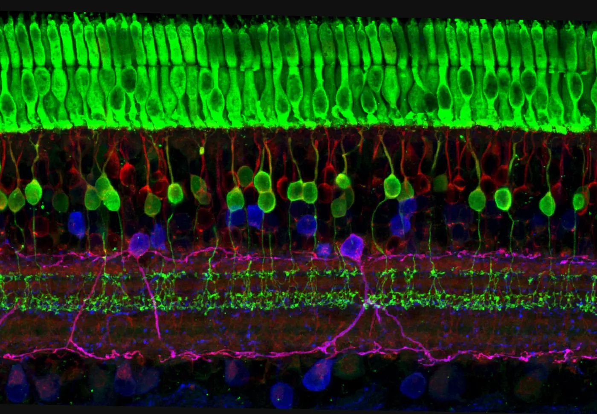
For most people, vision is not only their most important sense, it is the sensory system that defines the world around them. If we weren’t such visual animals, humans wouldn’t move easily through the space around us, recognize other people, identify familiar objects, and do numerous other tasks that seem effortless. Movies and videos wouldn’t be persuasive representations of the world. Our visual system acts so immediately and fluently that it is difficult for us to realize that constructing the visual world is an extremely difficult task that our brain accomplishes through multiple steps that begin in the eye and continue in major regions of the cerebral cortex. Our goal in this chapter will be to follow those steps, beginning in the retina and proceeding through the primary visual cortex and adjacent areas in the occipital lobe, and continuing in the inferotemporal cortex. We will first encounter photoreceptors in the retina, specialized neural cells that catch light energy, and we will end with cortical neurons that respond to faces, places, and complex visual shapes.
An analogy can help us understand how unlikely vision would seem to us if we didn’t have a sophisticated visual system ourselves. In the 1940s, scientists discovered how bats could fly freely in the dark and catch flying insects without using vision. The bats use echolocation: they emit ultrasonic screeches and then detect the echoes of sounds reflected from tree branches and their insect prey. It’s hard to imagine what it might be like to perceive surroundings through echolocation, but our vision does something similar. The sun or artificial sources flood our surroundings with light, and we detect reflections of that light from the surfaces around us. Our brain processes that sensory information to construct a mental image of the world—something we might not believe could be done if we didn’t do it ourselves.
6.1An Overview of the Visual System
By the end of this section, you should be able to
- Describe the region of the electromagnetic spectrum that is perceived by our visual system, and the relative energy of photons at long and short wavelengths.
- Describe the major parts of the eye and their role in focusing light to create a clear image.
In this section, we will meet the range of the electromagnetic energy spectrum that we call “light,” and see how the structure of the eye provides an optical system that creates a sharply focused image of the visible world on the sensory structure at the back of the eye, the retina.
We Capture Photons of Light Reflected from Objects Around Us
Light is a form of electromagnetic radiation, energy packaged in particles called photons. Physicists understand that light is both a particle and an electromagnetic wave, and although light can be described by the energy in each photon, light is more typically described by its wavelength on the electromagnetic spectrum. Electromagnetic wavelengths stretch from long wavelength, low energy radio waves to short wavelength, high energy gamma rays. (Light is a component of the electromagnetic spectrum)
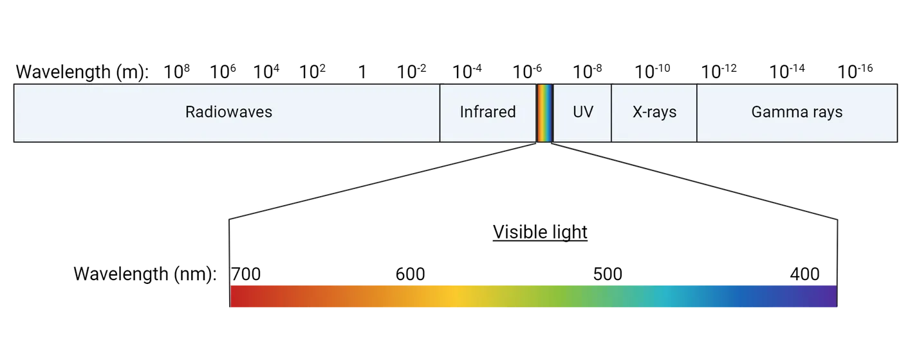
Sunlight includes wavelengths from infrared to ultraviolet (UV) that penetrate the atmosphere, but only the middle of that range penetrates water, which is where vertebrate vision first evolved. This is the visible spectrum that our eyes can detect. Different components (wavelengths) of the visible spectrum are absorbed or reflected by the surfaces of objects and our visual system interprets the reflected wavelengths as an object’s color and shape. Shorter wavelengths within the visible spectrum we call blue while longer ones look red. White light combines wavelengths from the entire visible spectrum. Bright lights produce many photons per second, while dim lights emit few photons per second.
Anatomy of the Eye
The eye is the primary sensory structure that intercepts electromagnetic waves in the visible spectrum, eventually allowing us to perceive light. Anatomy of the human eye shows the major parts of the eye.
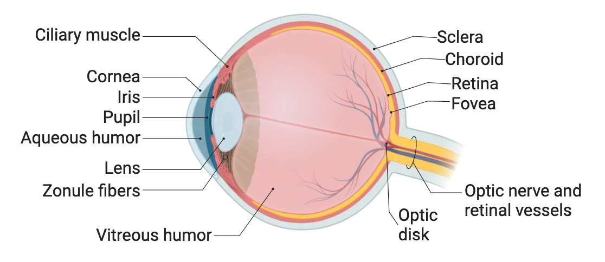
At the front of the eye, the eye’s optics are like the lens of a camera. The rays of light reflected from objects spread out in space. The cornea and crystalline lens intercept the arriving rays of light and bend them to form a focused image on the retina at the rear of the eye. Interestingly, because lenses invert images, the projection of the world on the retina is upside-down and left-right reversed. Objects reflect rays of light that reach the eye shows how light reflected from objects diverges in space but is refocused and flipped around for its projection on the retina.

The ciliary muscle and zonule fibers pull on the lens to flatten it and shift the focus to distant objects; when relaxed, the lens rounds up to focus on nearby objects. A clear liquid, the aqueous humor, fills the space between the cornea and the lens, and a clear, jelly-like vitreous humor fills the globe of the eye. Blood vessels spread over the inner surface of the eye next to the vitreous humor.
At the back of the eye, photoreceptors (rods and cones) embedded in the retina respond to the light hitting them, and several layers of nerve cells process the image, responding to borders between light and dark. The final retinal neurons, called retinal ganglion cells, send their axons out of the eye, bundling together to form the optic nerve, which transmits visual information to the brain. The optic disk is the region where the ganglion cell axons leave the eye and blood vessels enter. There are no photoreceptors in the optic disk, which creates a “blind spot” in our vision, although we are normally unaware of it. The fovea at the center of the retina is a region of tightly packed photoreceptors that provide our highest visual acuity. When we look at an object, we turn our head and eyes to project the object’s image onto the fovea, where we perceive details most clearly.
The remaining structural features include the choroid, a layer behind the retina with blood vessels that nourish the retina and a screening pigment to absorb stray light and prevent internal reflections. Behind that is the tough white of the eye, the sclera.
Correcting Optical Flaws: Myopia, Hyperopia and Presbyopia
Sharp vision requires the image projected on the retina to be in good focus, but for many people, the focus is in front of the retina (myopia) or behind the retina (hyperopia) (Correcting optical flaws). Corrective lenses restore sharp focus on the retina. Although in some cases people are born with an eye that is too short or too long for good focus, and thus need to wear corrective lenses from an early age, there is also some indication that constant close-up work can affect the continued development of the eye’s shape and lead to myopia.
![A series of images of sagittal slices of eyes. A normal eye has round shape and rays of parallel light entering the lens are focused on a single point on the retina in the back of the eye. A myopic eye appears elongated and the rays of light reach a point in front of the retina. Corrective lenses expand the rays of light and the focus point returns to the retina surface. A hyperopic eye appears shorter and the rays of light reach a point behind the retina. Corrective lenses narrow the rays of light and return the focus point on the retina surface.](assets/textbook/img/Image-6.08_Correcting-optical-flaws.webp)
Even people who do not need corrective lenses when they are young eventually require reading glasses as they age. This condition is called “presbyopia,” literally “old eyes,” and it results from the lens of the eye becoming less flexible as people age. The lens normally becomes rounder to focus on nearby objects, but as people age, the lens becomes more rigid and is unable to change its shape to focus on nearby objects such as pages of text. At that point, corrective lenses are needed to supplement the lens’s ability to focus.
Summary
Our visual sense allows us to reconstruct the world around us, which seems effortless and automatic, but in fact requires our eyes and brain to engage in extensive neural processing to allow us to perceive our surroundings. Light reflected from surfaces is imaged by the eye’s optical system, the cornea and lens, onto the retina at the back of the eye, where photoreceptors detect photons of light energy. This begins a process that leads to the visual cortex and adjacent visual areas in the occipital and temporal lobes of the brain.
Key terms
Wavelength, electromagnetic spectrum, visible spectrum, cornea, crystalline lens, retina, aqueous humor, vitreous humor, photoreceptors, retinal ganglion cells, optic nerve, optic disk, fovea, choroid, scleraReferences
Dowling, J. E., & Dowling, J. L. (2016). Vision: How it works and what can go wrong. MIT Press.
Gregory, R. L. (1998). Eye and brain: The psychology of seeing (5th ed.). Princeton University Press.
Practice The multiple-choice and fill-in-the-blank questions for this section are interactive and live on OpenStax, so they are not carried here: open the book on openstax.org.
6.2The Retina
By the end of this section, you should be able to
- Describe the layers of the retina and the five major cell types
- Describe the functional differences and anatomical distributions of the two kinds of photoreceptors: rods and cones
- Describe the steps in phototransduction
- Explain how cones transduce color information by using different visual pigments with maximal sensitivity to different wavelengths of light
In this section, we will explore the retina, and meet its five major types of neurons. We will see that vision begins with specialized sensory receptors, the rods and cones, which capture light energy and create a neural signal, a process called phototransduction. We will learn that rods function best in dim light while cones are responsible for our vision in bright light, our high-acuity detailed vision, and color vision. We will encounter the surprising steps in phototransduction between capture of a photon and closing of membrane channels that produce the subsequent change in the electrical potential of a rod or cone. Finally, we will discover that our color vision depends on three types of cones that differ in the absorption spectrum of the molecules that capture photons.
The Retina Is Composed of Several Neural Cell Types
The retina (Retina structure) arranges five types of nerve cells in distinct layers. The retinal processing chain for conscious vision begins with the receptors (rods and cones) that absorb light. The rods and cones make synapses with bipolar cells, which connect in turn to ganglion cells. Horizontal cells support visual processing with lateral synaptic connections to receptors and bipolar cells. Amacrine cells provide lateral connections in the synaptic layer between bipolar and ganglion cells. Ganglion cell axons spread across the inner retinal surface, gathering as a bundle to leave the eye as the optic nerve. The figure does not show the pigment epithelium above the receptors, or the extensive array of blood vessels that spread over the retina next to the ganglion cells.
![A sagittally sliced eye is shown with callout box on the retina in the back. The callout box shows cellular detail of the retina. Photoreceptors are the furthest back, with comb-like sections extending out (back, away from the main cavity of the eye) from the main cellular layer. They connect to bipolar cells. Horizontal cells are shown as cell bodies with multiple processes extending out to contact the synapses between photoreceptors and bipolar cells. Closest to the main cavity of the eye are retinal ganglion cells, which synapse with bipolar cells. Amacrine cells have cell bodies with many processes contacting these synapses. Light is shown entering this cell layer from the front, where the retinal ganglion cells are. Axons of retinal ganglion cells head to the optic nerve.](assets/textbook/img/Image-6.02_Retina-structure.webp)
Embryologically, the retina is an outpocketing of the brain, and because it is more accessible than the developed brain and arranged in clear layers of defined neuronal cell types, it has been the subject of many experimental studies. This began in the 1890s when Cajal published images of retinas stained by the Golgi method, and identified many of the cell types. Since all vertebrate retinas have the same general structure, retinas with relatively large cells have been the most intensively studied, such as the retina of the mudpuppy, a large amphibian related to frogs and salamanders.
The human retina shown in Fovea structure has relatively small cells, but it is clear they are arranged in distinct layers. Although the eye is sometimes cited as evidence for “intelligent design,” the retina is actually a poor optical design because light must pass through several layers of neurons to reach the photoreceptors. These layers scatter the light and blur the image. It is never possible to know exactly why evolution produced a particular structural outcome, but two theories have suggested why the receptors are placed in an optically poor position, facing away from the light. One possibility is that because the receptors are metabolically very active, they require a dense blood supply, which they receive by facing the blood vessels in the choroid layer. A second possibility is that receptors evolved from ciliated cells that lined the embryonic neural tube (the “connecting cilium” is a group of microtubules arranged like a cilium that are still present in photoreceptors). As additional retinal layers are added during development, the receptors remain in an optically poor position. The fovea compensates for this “unintelligent” optical design by pushing aside the neural layers at our center of gaze, where tightly packed cones provide our sharpest visual acuity.
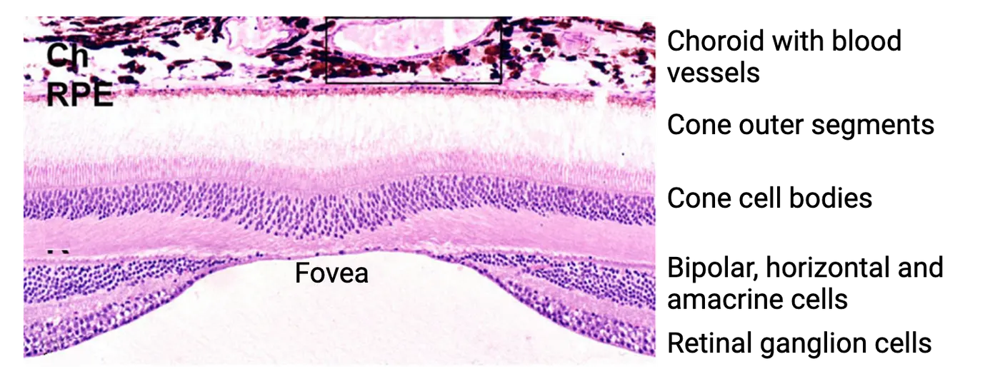
Rods and Cones Capture Photons of Light
In The Retina we introduced photoreceptors, the specialized neurons that respond to light. Photoreceptors (Morphology of photoreceptors) have an outer segment of discs, or infolded membrane in which millions of visual pigment molecules are embedded. These pigment molecules give photoreceptors the ability to capture light and will be discussed more below. Photoreceptors also have an inner segment with mitochondria, the nucleus, and other structures typical of all cells (see Introduction). The synaptic terminal is the photoreceptor’s output region, where it connects to bipolar and horizontal cells.
![Left is a scanning electron microscopy image of the surface of the outer segments of rods and cones. The rod outer segments are rectangular (i.e. rod shaped) and much larger and longer than the cones, which are shaped like cones. Right are diagrams of the major parts of rods and cones. They have synaptic terminals at the bottom, connected via a process to the nucleus, above which is a mitochondria-rich intracellular space (together this is labeled as the inner segment). The outer segments of the rods (connected above the mitochondrial-rich segment via the connecting cilium) are rectangular, with repeating parallel disks within in the cell. The cones also have disks, but the cone outer segment is shorter than the rod and is cone shaped.](assets/textbook/img/Image-6.03_Morphology-of-photoreceptors.webp)
Our photoreceptors come in two types, each with a unique function in vision: cones and rods. The human eye has about 6 million cones, concentrated in the fovea and central retina but also distributed sparsely in the retinal periphery. Cones are responsible for high-acuity color vision in daylight. The human retina also has about 120 million rods, which are absent from the fovea but distributed across the rest of the retina. Rods serve low-acuity vision in dim light (such as moonlight), and under optimal dark-adapted conditions a rod can respond to as little as a single photon of light. In daylight and typical artificial light, the rods no longer respond because the bright light saturates their response, and only the cones signal differences in brightness.
Rods and Cones Depolarize in the Dark and Hyperpolarize in the Light
When neurobiologists first succeeded in recording from rods and cones with intracellular electrodes, they were puzzled by what they found. Most sensory receptors, including invertebrate photoreceptors, depolarize in response to a stimulus, but vertebrate photoreceptors hyperpolarize (become more negative) in response to light. Rod and cone membrane potential changes shows an example of the kind of data one of these experiments generated, where a photoreceptor’s intracellular electrical response was recorded while light was flashed on it. Dim flashes elicited a small hyperpolarization, and bright flashes evoked a large hyperpolarization. The receptors in the dark also had a surprisingly depolarized resting potential, about -40 mV instead of the -60 mV more typical of nerve cells (see Introduction). Everything seemed backward!
![A line graph of membrane potential (y-axis) versus time (x-axis, from -200 to +700 ms). A series of lines all start at -40 mV. At time 0, a light flask occurs and many of the lines deviate to be more negative then recover back towards -40 mV. Text indicates that A light flash closes Na+ channels that were open in the dark and depolarized the photoreceptor. Dark depolarization is reduced by light. The most intense response (all Na+ channel closed) peaks at -70 mV. The least intense response (few Na+ channels closed) is much smaller and there are many lines in between these two extremes.](assets/textbook/img/Image-6.11_-Rod-and-cone-membrane-potential-changes.webp)
Later work unraveled the mystery. In the dark, channels in the outer segment are open and admit positive Na+ ions, creating a depolarized resting potential. Capturing photons of light leads to closing some of these sodium channels, which diminishes the resting depolarization, an apparent hyperpolarization. With brighter lights and more photons captured, more of the channels close, leading to greater degrees of hyperpolarization. In a way, we can think of the response to light as allowing the photoreceptors to return to their “real” resting potential (the potential when the sodium channels are closed, about -60 mV like other neurons). Light interrupts the depolarization that occurs in the dark. Like all other neurons, photoreceptors release their transmitter (glutamate) when they are depolarized, so photoreceptors continually release transmitter in the dark, and light interrupts transmitter release. In the next section, we will discuss how photoreceptors keep Na+ channels open to become depolarized in the dark and how light exposure cancels that.
Phototransduction
Eventually, researchers worked out how the capture of photons by visual pigment molecules in the disk membranes of photoreceptors led to closing sodium ion channels in the cell membrane. We call this process of turning photons into an electrical signal "phototransduction" (Phototransduction). Here, we will describe this process in rods. Cones use similar processes but differ in the wavelengths of light that they absorb, which will be discussed in the next section.
![Diagram showing a small section of rod outer segment, with molecular detail of the disks inside them. In the dark, Na+ channels in the cell membrane are open because they are bound to cGMP on the intracellular side and Na+ is flowing in the cell. In the disk membrane, 3 proteins are shown spanning that disk membrane, with portions in the intracellular space. Those proteins are phosphodiesterase, transducing and rhodopsin. Inside rhodopsin, a bent molecule (11-cis-retinal) is shown. In the light, a photon of light makes 11-cis retinal straighten to all-trans retinal. This change activates rhodopsin. Activated rhodopsin activates transducin, which then activates phosphodiesterase. Activated phosphodiesterase converts cGMP to 5'-GMP. The Na+ channels close. The rod hyperpolarizes.](assets/textbook/img/Image-6.10_Phototransduction.webp)
In rods, rhodopsin molecules are the visual pigment packed into the disk membranes. Rhodopsin molecules consist of two components: opsin, a large protein, and 11-cis retinal, a small subunit that is derived from Vitamin A. In the dark, the 11-cis retinal has a bent side chain. Capturing a single photon provides the energy to straighten the side chain to its straight, “all-trans” shape. This in turn activates the opsin protein, which leads to a series of steps that reduce the level of cGMP, a messenger molecule in the cytoplasm. While the intermediate steps may seem detailed, the important point is that light leads to closure of sodium channels that are open in the dark.
As Phototransduction shows, cGMP is normally abundant in the dark and attaches to Na+ channels in the cell membrane, keeping them open. In the dark, Na+ ions enter the cell and create a depolarized resting potential. The action of light reduces the level of cGMP, which leads to closure of Na+ channels and less depolarization (which appears as hyperpolarization). The more photons that each photoreceptor catches, the lower its level of cGMP and the more Na+ channels that close. In bright light, when most or all of the Na+ channels are closed, the cell is essentially at its “real” resting potential: strongly hyperpolarized from its resting state in the dark.
Color Vision in the Retina: Three Kinds of Cones
Rhodopsin, the visual pigment that catches photons and begins the process of phototransduction, is found in rods (“rod opsin”), but our retinas have three other visual pigments found in three types of cones. These pigments differ slightly in their opsin protein but work in similar ways. The different opsins give the pigments different absorption spectra, making them effective in catching photons at different peak wavelengths. Absorption spectra of the four visual pigments in the human eye shows the peak absorbance for the 4 major visual pigments found in human photoreceptors. For example, rhodopsin in rods has its absorption peak at 498 nm, in the middle of the spectrum, while the three cone pigments have peaks in the short wavelengths (S or “blue cones,” peak at 420 nm), middle wavelengths (M or green cones, 534 nm), or long wavelengths (L or red cones, 564 nm). The middle and long wavelength pigments differ only slightly because they diverged only recently in evolution, giving humans and old-world monkeys three cone types. Most mammals such as dogs, cats and new-world monkeys have only two types of cones, one for short wavelengths (blue) and one for long wavelengths (yellow). Thus, the color vision of most mammals is different from ours, and your pet dog or cat does not see colors the same way you do.
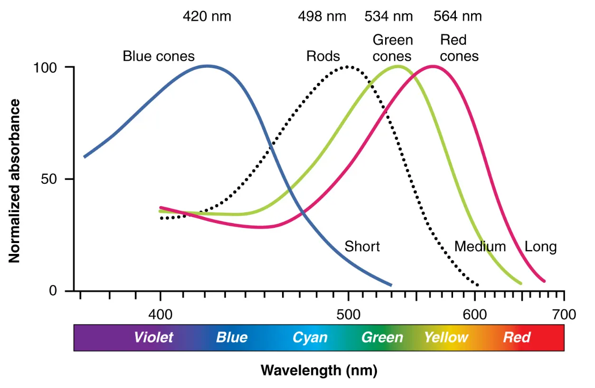
Although each absorption spectrum indicates that a single pigment can catch photons in a range of wavelengths, one pigment cannot distinguish between a small number of photons at the pigment’s best wavelength and many photons at a wavelength that the pigment does not absorb well. Both stimuli could result in the same total number of photons being caught, and any photon that is caught initiates phototransduction in the same way. (One visual pigment cannot discriminate colors)
![Two line graphs, both showing an M-cone curve with y-axis probability of photon absorption and x-axis wavelength. The curve peaks at ~550 nm. The left graph draws points at equivalent y-levels on each side of the green curve, showing how the same probability of absorption can correspond to two different wavelengths (confounds wavelengths). Text says A middle wavelength (green) cone could catch the same number of photons for lights of two different wavelengths (colors). The right graph draws a point at the peak of the curve (y = 1) and at the same level but ~100 nm to the left. A line parallel to the y-axis drawn to that second point intersects the green curve at y = 0.5. Text says A single cone can't distinguish between dim lights at its best wavelength and bright lights at a less effective wavelength.](assets/textbook/img/Image-6.38_One-visual-pigment-cannot-discriminate-colors.webp)
To distinguish light of two wavelengths, it is necessary to compare the responses of nearby cones with different pigments. For example, if the blue-absorbing cones in a patch of the retina catch many photons but nearby green or red cones catch only a few, then the light is at the blue end of the spectrum.
Since we have three types of cones, our color vision has three primary colors. Together, they can generate the appearance of any possible color. Looking at a TV or computer screen with a magnifying glass will reveal blue, green and red pixels (Primary colors). By controlling the brightness of each pixel, the screen simulates any real-world color. Red and green pixels together give us the sensation of yellow, and all three types together appear white. It’s as if each pixel type is activating one of the three cone types. In combination, the RGB pixels evoke responses in the cones that are equivalent to their response to any real-world color.
![The top shows circles of the 3 primary colors in additive colors (red, green blue) and subtractive colors (cyan, magenta, yellow) and how their blending creates the colors in between those 3 primary colors in each system. Middle shows examples of each color system. RGB is shown as a close up of a TV screen. CMY is shown as a printing of several shades of these colors (plus black), as this is a typical system for printing inks and paints. Bottom shows a photo of flowers with versions of the same image with luminance only (black and white photo, no color) or chrominance only (brightness is the same and only color differences are shown). These two together make the real photo and shows how color vision lets us distinguish objects with similar luminance.](assets/textbook/img/Image-6.12_Primary-colors.webp)
For lights and TV screens, where photons are added together to make the final mixture, red, green and blue are the primary colors. But surfaces covered in paints and inks subtract photons from the illuminating light, reflecting the non-absorbed photons. For example, a yellow paint patch in white light absorbs blue photons and reflects red and green, which appear to us as yellow. The three primary colors for subtractive surface colors are cyan, magenta and yellow (CMY). As explained in our example, yellow absorbs blue, reflecting green and red, while magenta absorbs green and reflects red and blue, and cyan absorbs red and reflects blue and green. For printing inks (Primary colors), the three primary inks together should appear black, but in practice the mixture often looks muddy, and a fourth ink, a true black, is usually added. Test strips of the four primary printing inks in different densities can often be found on printed materials, including the hidden flaps of cookie packages.
As shown in the bottom of Primary colors, color allows us to distinguish objects that have equiluminant surfaces (surfaces that would appear equally bright in a grayscale image) but reflect different wavelengths. The relatively recent evolution of separate red and green cones in primates (including humans) from a single yellow-absorbing cone further improves discrimination. Detecting red apples in the midst of green leaves would be difficult without our trichromatic color vision.
Color Blindness
Some people carry a genetic variation that gives them only two cone types instead of three, or they produce an anomalous version of one of the cone pigments. As a result, they make color matches that differ from those made by typical trichromats, who have three types of cones. They are not actually “blind” to a color, but rather can’t distinguish some colors that trichromats see as different. Color blindness affecting the red or green genes is the most common, occurring in about 8% of males and only 0.4% of females (). The red and green genes are both on the X chromosome (further evidence that they were duplicated recently in evolution). Since XY biological males have only one X chromosome, they cannot compensate for a defective gene, unlike XX females who have two different X chromosomes, one from each parent. Blue blindness is very rare, since the blue gene is on a chromosome for which everyone has two copies.
Summary
In the first steps in vision, rods and cones capture photons to create an electrical signal that is proportional to the number of photons captured. This process, called "phototransduction," is unusual in that the receptors are depolarized in the dark but become less depolarized (hyperpolarized) in the light. When visual pigment molecules capture photons, it leads to a reduction in the concentration of a signaling molecule, cGMP, which when present activates Na+ channels to allow Na+ ions to enter the photoreceptors and depolarize them. Light reduces cGMP levels, closing Na+ channels and ending depolarization. Our color vision depends on having three different visual pigments in different classes of cones, since a single pigment cannot distinguish between a dim colored light that is absorbed well and a bright light of a different color that is absorbed poorly. Our color vision is trichromatic, but most mammals have only two cone visual pigments and see colors differently from people.
Key terms
Phototransduction, receptors, bipolar cells, horizontal cells, amacrine cells, depolarized resting potential, visual pigment molecules, rhodopsin, opsin, 11-cis retinal, cGMP,, short/middle/long wavelength conesReferences
Lamb, T. D. (2016). Why rods and cones? Eye, 30(2), 179–185. https://doi.org/10.1038/eye.2015.236
Neitz, J., & Neitz, M. (2011). The genetics of normal and defective color vision. Vision Research, 51(7), 633–651. https://doi.org/10.1016/j.visres.2010.12.002
Practice The multiple-choice and fill-in-the-blank questions for this section are interactive and live on OpenStax, so they are not carried here: open the book on openstax.org.
6.3Visual Processing Begins in Bipolar, Horizontal, Amacrine and Ganglion Cells
By the end of this section, you should be able to
- Describe the direct pathway for transmitting information from photoreceptors to the brain
- Define the difference between on-center and off-center bipolar cells and how they help detect edges
- Explain how horizontal cells facilitate the center-surround nature of bipolar cell receptive fields
- Describe the difference in how on-center and off-center retinal ganglion cells respond to light in their receptive fields
- Define the major types of retinal ganglion cells and their contribution to visual perception
- Describe how retinal ganglion cells contribute to detecting color edges through the use of opponent color responses
In many ways, the millions of rods and cones spread across the retina are like the pixels of a digital camera. Each photoreceptor reports on the number of photons it is catching from the image projected on the retina. It is tempting to imagine that this is the information that the optic nerve transmits to the brain for further processing, but that is not what happens. The retina’s layers of nerve cells between the photoreceptors and the ganglion cells transform the information from a report on color and brightness to a report of color and brightness borders in the region served by each ganglion cell. In this section, we will learn about how the cells of the retina provide the first step in visual processing, detecting the edges of objects.
Bipolar Cells
Take a moment to remind yourself of the cellular architecture in the retina, from Retina structure in the previous section. From the photoreceptors, the next synaptic partners in the pathway out of the eye are bipolar cells. This is where detecting borders begins. Bipolar cells gather information from the photoreceptors that synapse directly onto them and also from additional photoreceptors in a surrounding region, creating a circular region with a center and a surround that together are the bipolar cell’s receptive field (see Feature Box on the concept of receptive fields). This arrangement is diagrammed on the left side of Bipolar cell types. As mentioned, photoreceptors in the center of the receptive field synapse directly onto the underlying bipolar cell, while receptors that contribute to the surround connect to horizontal cells that modulate the synapses from central photoreceptors, thereby canceling the bipolar cell’s response to the center. (Photoreceptors make multiple synapses, so one receptor can contribute to the center of one bipolar cell’s receptive field but also help form the surround for other bipolar cells.) Contrast between the light falling on the center and the surround is required for a bipolar cell to respond. Uniform illumination is not effective.
![Top shows a shaded rectangle where the shading is in a gradient from dark to light, left to right. Within that rectangle is another, smaller rectangle, which looks like it has the inverse gradient of shading (though it is actually a uniform shading throughout). Text says We detect edges but not absolute brightness: we don't see that the inner rectangle is a uniform gray, but we see its edges accurately. Bottom left shows a circle representing the receptive field of a bipolar cell. It has a center circle and a larger surround. Light on the center circle excites one photoreceptor while light on a spot to the right, in the surround area, excites a different photoreceptor. Photoreceptors in the center connect directly to the underlying bipolar cell. Photoreceptors that form the surround connect to horizontal cells that in turn cancel the input to the bipolar cell from the central photoreceptors. Bottom right shows 3 possible stimuli for a bipolar cell receptive field. On-center bipolar cells are best stimulated by light in the center (surround is dark). Off-center bipolar cells are best stimulated by light in the surround (center is dark). Uniform illumination (center and surround are light) is not a good stimulus for bipolar cells.](assets/textbook/img/Image-6.13_Bipolar-cell-types.webp)
We are actually not very good at perceiving brightness. In the gray rectangle in the top of Bipolar cell types, we don't see that the inner rectangle is a uniform gray, but we see its edges accurately. Similarly, we make poor judgments of absolute brightness (if you are now in a room lit by artificial light, is the room brighter than the light outdoors on a cloudy day? it’s hard to know the answer.). On the other hand, we are very good at detecting and remembering edges. A cartoon drawn with just a few lines can easily represent a face or an object for us.
The center-surround receptive fields of bipolar cells provide the first processing step that ignores absolute brightness in favor of detecting contrasting borders between light and dark. This arrangement is sensitive to contrast because bipolar cells respond in opposite ways to input from photoreceptors in the center of their receptive field compared to photoreceptors in the receptive field surround. To better understand how this works, we need to consider the two types of bipolar cells, on-center and off-center bipolar cells.
About half of bipolar cells are on-center, where the bipolar cell depolarizes to light covering the center of the receptive field if a darker region surrounds the center, or off-center, which is the reverse. In an on-center cell, the bipolar cell is directly affected by responses of the photoreceptors that synapse on it directly. The photoreceptors in the surround do not synapse directly on the bipolar cell. Instead, they synapse on horizontal cells, a type of interneuron that serves as a bridge between photoreceptors and bipolar cells. Activating horizontal cells cancels the bipolar cell’s response to the center stimulus.
Although the complete neural circuit is more than we will explore here, it still may surprise you that light in the center of the receptive field depolarizes on-center bipolar cells but has the opposite effect on off-center bipolar cells. How can there be two types of bipolar cells, both of which receive direct synapses from photoreceptors in the center of their receptive fields? The cells differ because they have different molecular receptors for the neurotransmitter glutamate that is released by rods and cones. Recall that neurons release transmitter only when they are depolarized (see Introduction), and also that rods and cones are depolarized in the dark. This means that in the dark, the depolarized rods and cones release glutamate continually onto the bipolar cells they connect to. For an off-center bipolar cell, a dark patch of a visual scene falling in the center of the receptive field will depolarize the receptors and lead to the release of glutamate. The receptor for glutamate in off-center bipolar cells depolarizes the cell, so if the photoreceptors in the center are in the dark, the off-center bipolar cell receives transmitter and is depolarized: an off response.
On-center bipolar cells have a different receptor for glutamate, one that leads to activation of a second messenger that closes depolarizing channels. Light on the center of the receptive field interrupts the release of transmitter from photoreceptors, which stops activation of the messenger that closes depolarizing channels in the bipolar cells. Those channels then open, and the bipolar cell depolarizes, producing an on-response. Thus, because they have different receptors for the neurotransmitter glutamate, on-center and off-center bipolar cells have different responses to light in the center of their receptive field.
While it’s helpful to understand the mechanisms for on and off responses, let’s return to the important task that bipolar cells accomplish: responding to contrast between light and dark regions of the image while ignoring uniform illumination. If we imagine the image background as a medium gray, the two types of bipolar cells would depolarize in response to either dark spots or bright spots covering the center of their receptive fields. Although uniform illumination is not a good stimulus, a border between light and dark falling on the receptive field works well if it puts light or dark on the center and the opposite illumination on at least part of the surround. The bipolar cells’ response to contrast is conveyed to the next stage of retinal processing, the ganglion cells. Since the distances are very short, action potentials are not necessary to transmit signals, and bipolar cells are “non-spiking,” making only graded changes in potential. The bipolar cells release varying amounts of their transmitter, which is also glutamate, depending on how depolarized they are.
Retinal Ganglion Cells
Like the bipolar cells that drive them, retinal ganglion cells have center-surround receptive fields and are either on-center or off-center, characteristics they inherit from the bipolar cells that excite them. On-center ganglion cells are driven by on-center bipolar cells, and off-center bipolar cells drive off-center ganglion cells. Because the ganglion cell axons transmit signals a significant distance to the brain, retinal ganglion cells do make action potentials, and they are the first cells in the retinal processing chain that do so. In Retinal ganglion cell receptive fields, an on-center ganglion cell on the left responds with a burst of action potentials to a bright spot on its receptive field center, and also to a dark ring on the surround. Both patterns represent contrast between the center and the surround. The ganglion cell also responds to reverse patterns, but they inhibit the cell’s spontaneous firing instead of exciting firing. A dark spot on the center or a bright ring on the surround inhibits an on-center ganglion cell. Since uniform light does not activate bipolar cells, it also does not activate ganglion cells.
![Diagrams for on-center and off-center retinal ganglion cells showing the stimulus in the receptive field (large circle with inner circle for the center) with a parallel representation of action potential firing. ON retinal ganglion cell: Many action potentials when light on center, no action potentials when center is dark, a low, basal firing rate in between. No action potentials when surround is light, many when surround is dark, basal rate in between. OFF ganglion cell: No action potentials when center is light, many action potentials when center is dark, basal rate in between. Many action potentials when surround is light, non when surround is dark, basal rate in between.](assets/textbook/img/Image-6.14_Retinal-ganglion-cell-receptive-fields.webp)
The off-center ganglion cell on the right in Retinal ganglion cell receptive fields has the opposite responses. A dark spot on the center or a bright surround excites the cell, while the opposite patterns inhibit it. In all cases, a boundary between light and dark is necessary to generate a response in ganglion cells. It is that information about borders and edges, not brightness, that is carried to the brain in the optic nerve.
The optic nerve projects to several different destinations in the brain because it carries axons from several types of ganglion cells. The on- and off-center ganglion cells that are responsible for conscious visual perception provide more than 80% of the axons in the optic nerve. Those important ganglion cells can be further divided into two groups, relatively few large ganglion cells with large receptive fields and large axons that conduct signals rapidly (the “magnocellular” cells), and very abundant smaller cells with small receptive fields and medium diameter axons that conduct more slowly (the “parvocellular” ganglion cells). Magnocellular and parvocellular axons connect to neurons in different layers of the lateral geniculate nucleus of the thalamus, which we will discuss in The Thalamus and Primary Visual Cortex.
The difference in receptive field sizes of magnocellular and parvocellular ganglion cells gives them different roles in conscious visual perception. The abundant parvocellular cells with small receptive fields provide detailed, high-acuity vision, including details of the image that falls on the fovea. If you look straight ahead at a scene, the center will appear sharp, but if without moving your eyes you pay attention to objects near the edge of your visual field, you will discover that peripheral vision is quite blurry. If you wish to inspect peripheral details, you move your eyes to project those details on the fovea, where vision is sharp. Our brains create the illusion that the entire scene is sharply focused, but in fact, peripheral regions served by ganglion cells with large receptive fields are not sharp at all. However, magnocellular cells are very sensitive to motion. If you wiggle your fingers near the edge of your peripheral vision, you will easily detect their motion even though they are blurry. The large diameter axons and rapid conduction velocity of magnocellular ganglion cells helps convey information about motion quickly to the brain.
Two other types of retinal ganglion cells convey responses to light but do not contribute to conscious visual perception. One evolutionarily older class of ganglion cells, less than 10% of all ganglion cells, has wide receptive fields and narrow axons, and projects to the superior colliculus. These ganglion cells contribute to generating eye movements as we watch a scene. The highest visual area in the brains of fish and amphibians, the optic tectum, is the precursor of the superior colliculus in mammals, but it has been superseded by the evolutionarily new visual pathway for visual perception that leads to the thalamus and the visual cortex. Another category of specialized ganglion cells, about 1% of the total, are the intrinsically photosensitive ganglion cells (ipRGCs). These cells contain the pigment melanopsin, which makes them directly responsive to light. They do not contribute to visual perception (and are sometimes called “non image-forming” cells, NIFs), but most of them project to the suprachiasmatic nucleus and help control circadian rhythms (see Introduction). A few ipRGCs project instead to the brain nucleus that controls the pupillary reflex, which constricts the iris in response to bright light.
The retina is carpeted in these multiple types of ganglion cells, and the receptive fields overlap within and between types. Any visual pattern falling on the retina will activate many ganglion cells, with the specific responses depending on the portions of the image that fall within each ganglion cell’s receptive field. There are between one and two million retinal ganglion cells in each human retina. Receptive field centers can be as small as a single cone in the fovea, where the parvocellular ganglion cells are dense, or much larger in the periphery where the ganglion cells are spread out and have large receptive fields.
Color Vision in the Retina: Opponent Color RGCs
Many experiments to record electrical activity from retinal cells were first performed in fish and amphibians because their retinal cells are much larger than in mammals, making them easier to penetrate with sharp microelectrodes. The goldfish retina was also the site of the first measurements of absorption spectra for individual cones, revealing three types as in our retinas. Meanwhile, research on color vision in people mostly involved a controversy among psychologists about whether three primary colors explained color vision, or whether vision involved pairs of complementary colors. This controversy continued for many years because both sides turned out to be right. At the receptor level, three cone types account for the three primary colors, but retinal ganglion cells receive input from cones representing opposing pairs of color and thereby respond to pairs of complementary colors.
Early recordings from retinal ganglion cells in the goldfish retina showed excitation to one color but inhibition to its complementary color, establishing the concept of opponent colors. Soon after, recordings were made from lateral geniculate neurons in monkeys, which have receptive fields like ganglion cells, and this settled the debate about color vision in humans. Opponent color retinal ganglion cells firing in goldfish retina shows responses of a goldfish retinal ganglion cell to blue-green light, which excited bursts of action potentials, and to red light, which inhibited the cell’s spontaneous firing. Other ganglion cells were the reverse, excited by red and inhibited by green. Later, other ganglion cells were found that had opponent responses to blue and yellow. This corresponded to observations about human vision, where we can’t imagine a reddish-green or a yellowish-blue because those pairs are opponent colors.
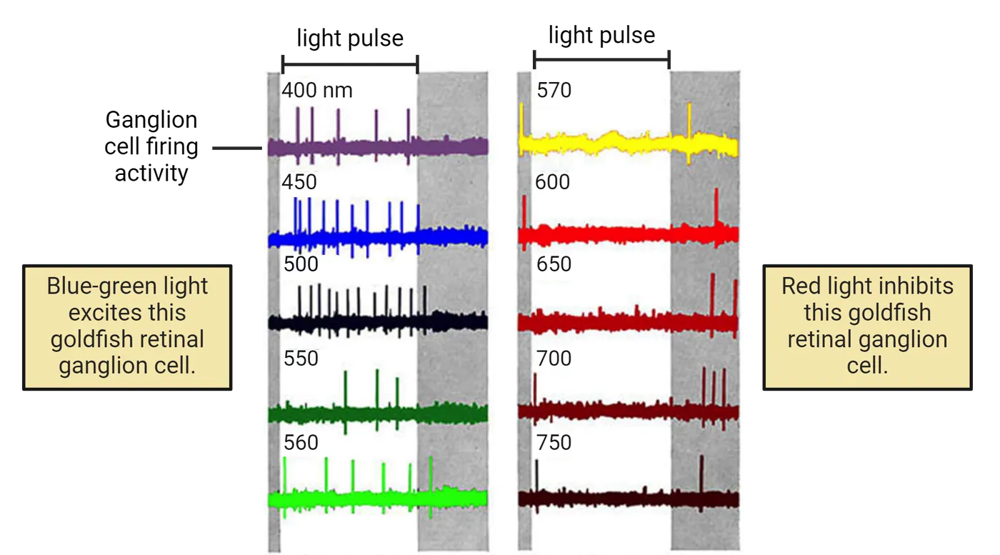
Across many vertebrate retinas, including fish, color vision at the ganglion cell level was found to fall into the three categories shown in Opponent color retinal ganglion cells receptive fields.
![The receptive field and example firing patterns of 3 types of retinal ganglion cells are shown. Achromatic (light-dark) has a center-white, surround-dark receptive field (no color). Light in the center causes many action potentials. Light in the surround causes an inhibition of basal firing rate. Red on, green off has center-red, surround-green. Red in the center causes many action potentials, while red in the surround causes an inhibition of basal firing. Green in the center causes inhibition of basal firing while green in the surround causes many action potentials. Yellow on, blue off has center-yellow, surround-blue. Yellow in the center causes many action potentials, while yellow in the surround causes an inhibition of basal firing. Blue in the center causes inhibition of basal firing while blue in the surround causes many action potentials.](assets/textbook/img/Image-6.20_Opponent-color-retinal-ganglion-cells-receptive-fields.webp)
One class of ganglion cells pools the responses of different cone types, responding to light or dark on their receptive fields but not to differences in color. These are the achromatic ganglion cells where a spot of white light in the center of an on-center receptive field excites the cell, while a white spot in the surround inhibits the cell and produces a brief burst of activity when the light goes off, an “off response.” The example in Opponent color retinal ganglion cells receptive fields is an on-center, off-surround ganglion cell like the neurons we discussed in the previous section.
Another class, red/green ganglion cells, are excited by a red spot in the receptive field center, while a green spot in the center inhibits the cell and produces an off response. The responses in the surround are reversed: red inhibits and green excites. These are opponent-color cells, and the strongest response for this example would be to a red stimulus in the center surrounded by a green ring. Other red/green cells would have the reverse organization, excited by a green spot in the receptive field center against a red surround. These cells would respond well to a border between red and green areas.
A third class, blue/yellow ganglion cells, is organized in a similar way, but now the best stimulus for the example shown would be a yellow spot against a blue background. (Recall that yellow excites both red and green cones.) The reverse type also exists, responding best to a blue spot against a yellow background. These are all examples of “double-opponent” cells, where the center and surround have opposite responses to color spots. In the human retina, the ganglion cells are red/green or blue/yellow, but the receptive fields are usually not divided into a center and surround. Instead they are “single opponent” cells, still excited by one color and inhibited by its complementary color, but across the entire receptive field.
The number of cones contributing to the response of a single retinal ganglion cell varies with the cell’s location in the retina. In the fovea, where we have the highest visual acuity, a ganglion cell’s receptive field center may be as small as a single red or green cone. In the retinal periphery, ganglion cell receptive fields are larger, driven by clusters of cones, and visual acuity is much lower.
You can experience opponent color organization in your own visual system by staring at Visual after-effects of opponent color retinal ganglion cells and then looking at a blank page or a white wall. An afterimage will appear with colors that are the complements of the colors in Visual after-effects of opponent color retinal ganglion cells. Black will appear white, cyan will appear red, and yellow areas will be blue. This is an indication of opponent color organization, which begins at the ganglion cell level. Afterimages occur when prolonged exposure to one color causes an opponent-color ganglion cell to adapt, becoming less sensitive to the exposed color while retaining full sensitivity to the complementary color. Flooding the receptive field with white light would ordinarily activate both opponent colors, but because one color system has adapted, the balance is shifted and the ganglion cell responds as if it is being exposed to the complementary color—which is what we see in the afterimage.
Summary
Rods and cones respond to the brightness of the light hitting them, but neurons in the other layers of the retina discard brightness information and convert the information that leaves the eye into the location of edges between light and dark or borders between different colors. Edge-detection begins with bipolar cells, which have circular receptive fields that respond to dark or light spots in the center of the receptive field, with contrasting illumination in the receptive field surround. Uniform illumination that covers both center and surround does not excite bipolar cells. Ganglion cells receive synapses from bipolar cells and inherit their center-surround receptive fields. Ganglion cells are the first neurons in the processing chain that make action potentials, which travel to the brain in the optic nerve. Ganglion cells responsive to colors have opponent-color receptive fields, excited by one color and inhibited by its complement. The complementary, opponent-color pairs are red/green and blue/yellow.
Key terms
receptive field, center/surround, on-center and off-center bipolar cells, on-center and off-center ganglion cell, contrast, “magnocellular” cells, “parvocellular” ganglion cells, high-acuity vision, superior colliculus, intrinsically photosensitive ganglion cells (ipRGCs), circadian rhythms, three primary colors, complementary colors, opponent colors, achromatic ganglion cells, “off response”, red/green ganglion cells, opponent-color cells, blue/yellow ganglion cellsReferences
Conway, B. R., Eskew, R. T., Martin, P. R., & Stockman, A. (2018). A tour of contemporary color vision research. Vision Research, 151, 2–6. https://doi.org/10.1016/j.visres.2018.06.009
Kim, U. S., Mahroo, O. A., Mollon, J. D., & Yu-Wai-Man, P. (2021). Retinal ganglion cells—Diversity of cell types and clinical relevance. Frontiers in Neurology, 12, 661938. https://doi.org/10.3389/fneur.2021.661938
Martin, P. R. (2023). The Verriest lecture: Pathways to color in the eye and brain. Journal of the Optical Society of America. A, Optics, Image Science, and Vision, 403), V1–V10. https://doi.org/10.1364/JOSAA.480106
Neitz, J., & Neitz, M. (2011). The genetics of normal and defective color vision. Vision Research, 51(7), 633–651. https://doi.org/10.1016/j.visres.2010.12.002
Schiller, P. H. (1992). The ON and OFF channels of the visual system. Trends in Neurosciences, 15(3), 86-92. https://doi.org/10.1016/0166-2236(92)90017-3
Schiller, P. H., & Logothetis, N. K. (1990). The color-opponent and broad-band channels of the primate visual system. Trends in Neurosciences, 13(10), 392-398. https://doi.org/10.1016/0166-2236(90)90117-S
Solomon, S. G., & Lennie, P. (2007). The machinery of colour vision. Nature Reviews Neuroscience, 8(4), 276-286. https://doi.org/10.1038/nrn2094
Practice The multiple-choice and fill-in-the-blank questions for this section are interactive and live on OpenStax, so they are not carried here: open the book on openstax.org.
6.4The Thalamus and Primary Visual Cortex
By the end of this section, you should be able to
- Describe how visual pathways divide visual information from left and right visual fields for projection to right and left cortical areas, respectively
- Define the optimal stimuli for simple and complex cortical cells
- Describe how LGN receptive fields combine within the receptive field of simple cortical cells to drive simple cell activity
- Describe how simple cortical cell receptive fields combine within the receptive field of complex cortical cells to drive complex cell activity
- Describe the retinotopic map of the primary visual cortex
- Describe the functional architecture of the primary visual cortex, including ocular dominance columns, cytochrome oxidase blobs, and orientation pinwheels
- List the different types of stimuli that can excite primary visual cortical cells, including their combination with color
From the retina, the main visual pathway for conscious perception goes to the lateral geniculate nucleus of the thalamus (LGN), after which LGN neurons project to the primary visual cortex. Visual information then goes to a series of extrastriate visual areas, the inferotemporal cortex, and a number of other brain regions involved in identifying, localizing, and interacting with visually perceived objects. In this section, we will sample several of these areas to see how neurons code visual information, eventually reaching neurons that are selectively responsive to objects and faces located anywhere in the visual field.
Visual Fields and the Visual Pathway
Visual pathways shows the first stages of the visual pathway, going from the eye through the thalamus to the primary visual cortex.
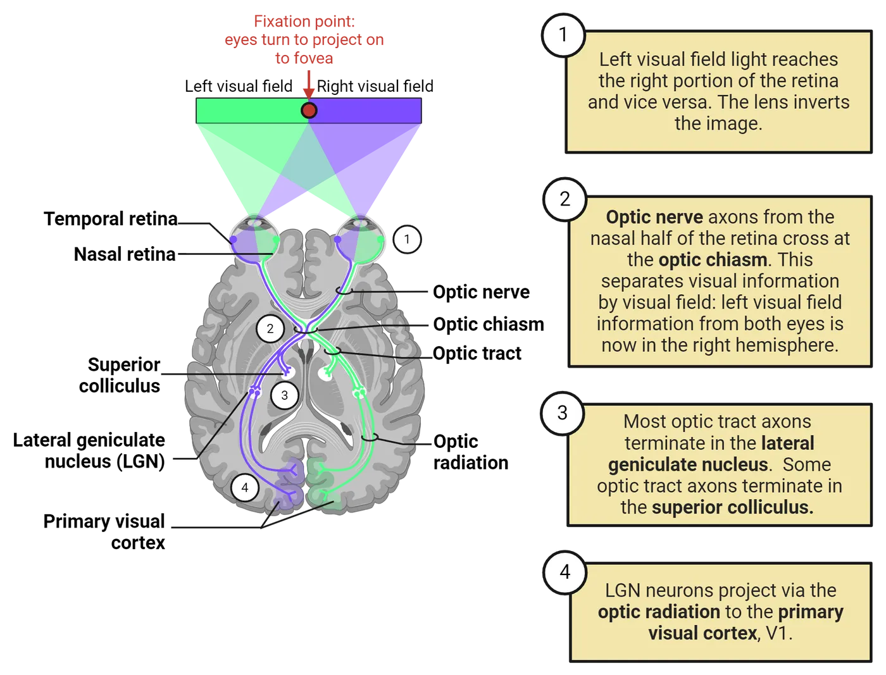
Each eye is turned to project the fixation point between the left and right visual fields onto the fovea in the center of the retina. Because lenses invert images, the left visual field (shown in green) is imaged on the right side of each retina, and the right visual field (purple/blue) is imaged on the left side. Ganglion cell axons from both sides of the retina bundle together to form the optic nerve, which leads to the optic chiasm in the midline. There, the nasal (inner) half of the axons from each retina cross over, while the temporal (outer) half remains on its side of origin. Consequently, the right side of the brain (green) receives axons from the right half of each retina, and the left brain (purple) receives axons from the left retinas. Because the left retina views the right visual field, each hemisphere of the brain receives information about the opposite side of the visual world from both eyes. Lesions in the visual pathway on one side of the brain lead to deficits in seeing the opposite side of the visual world.
Lateral Geniculate Nucleus
The main cerebral target for the retinal ganglion cell axons is the lateral geniculate nucleus (LGN), a structure in the thalamus on the path to the primary visual cortex. The LGN is a six-layered structure. The left side of Layers of neurons in the lateral geniculate nucleus shows the LGN in a post-mortem monkey brain. The dark purple dots are cell bodies and show how distinct these six layers are. Each of these layers is unique in the input it receives. Two layers are composed of large neurons, magnocellular layers 1 and 2, and four layers are composed of smaller neurons, the parvocellular layers 3-6. Magnocellular retinal ganglion cells, which convey low resolution information and respond well to motion, send their axons to the magnocellular LGN layers. Parvocellular ganglion cells with small receptive fields, red/green opponent color responses, and high resolution connect to the parvocellular layers. There are also small intermediate koniocellular LGN layers, which were overlooked in early studies. They are the target for axons from blue/yellow ganglion cells. The neurons in each LGN layer are arranged in a two-dimensional array that matches the ganglion cell locations in the retina. This preserves a map of receptive field positions, a retinotopic map.
![Left is a photo of a whole coronal slice of macaque brain with a zoom in on the LGN, showing 6 rows of densely packed purple dots (cell bodies) arranged in a C shape. Right is a diagram of connections from right and left eye to right LGN showing how each layer of LGN receives input from only one eye or the other. LGN neurons then project to V1, with the parvocellular pathway being the axons from the outer 4 layers of LGN and the magnocellular pathway being the axons from the inner 2 layers. Both right and left eye inputs are represented in each LGN pathway to V1.](assets/textbook/img/Image-6.22_Layers-of-neurons-in-the-lateral-geniculate-nucleus.webp)
Although ganglion cells from the right half of each eye project to the LGN on the right side of the brain, the ganglion cells from each eye connect to different layers of the LGN. Thus, information from the two eyes remains separate in the LGN, and neurons driven by both eyes will not appear in the visual pathway until the next stage, the primary visual cortex.
V1 Simple, Complex and “Hypercomplex” Neurons
LGN neurons that receive input from retinal ganglion cells send their axons to the primary visual cortex (V1), a large visual area in the posterior occipital lobe and midline. This area is also called “striate” cortex because cross sections appear striated, or striped, and it is also sometimes referred to as “area 17” in reference to labels for different cortical areas based on their appearance. V1 is the first stage of visual processing in the cortex. In a collaboration that began in 1958, David Hubel and Torsten Wiesel conducted an extensive research program to discover how V1 cells respond to visual stimuli (more about them and their experiments can be found later in this section). By recording from individual cortical neurons in experiments that often lasted for more than 24 hours, they showed that the cortex could be understood at the level of individual neurons, and that the neurons had receptive fields responsive to edges. This continued earlier stages in the perception of objects and scenes. Hubel and Wiesel’s experimental method was to advance an insulated needle electrode into the visual cortex to pick up extracellular action potentials from neurons along the electrode’s path (see Methods: Electrophysiology). They projected visual stimuli on a screen facing the anesthetized animal (initially cats and later monkeys), while they searched for the most effective visual stimulus. By listening to the neuron’s action potentials as they altered the projected stimulus, they mapped the neuron’s receptive field: the visual pattern that optimally excited the cell. Once they characterized a neuron’s receptive field, they advanced the electrode until it encountered another neuron, which they then mapped. In this way, they gathered data on the receptive fields of hundreds of V1 neurons in each experiment.
In addition to mapping receptive fields, they also kept data on the location of each neuron along the electrode’s track, so they could later reconstruct the positions of the mapped neurons on slices of the post-mortem brain. In this way, they not only were able to classify V1 neurons into functional categories, but they also revealed the functional architecture of the primary visual cortex.
The earliest experiments recording from individual neurons in V1 used stimuli that had been effective in exciting or inhibiting retinal ganglion and LGN cells: small light or dark spots. Many cortical cells could be stimulated and mapped with small spots. But unlike the earlier neurons in the visual pathway, where receptive fields were circular with opposing center and surround regions, the cortical receptive fields had elongated excitatory and inhibitory areas organized along straight-line edges. Hubel and Wiesel found that bright bars, dark bars, or an edge between light and dark were even more effective than spots as stimuli. For a vigorous response, the straight-line stimulus had to be at an appropriate angle of orientation aligned with the receptive field edge, and positioned exactly within the receptive field (V1 simple cortical cells). These first cortical cells with receptive fields that could be mapped with small spots they called “simple cells.”
![Three example receptive field of simple cortical cells. 1) Three long ovals, the center one is light grey, largest and filled with + marks. The two side ovals are smaller, darker grey and filled with – marks. 2) Three long ovals, the center one is dark gray, largest and filled with - marks. The two side ovals are smaller, lighter gray and filled with + marks. The smaller, lighter ovals are labeled as regions of the receptive field where spots of light excite the cell. The larger, darker oval is labeled as regions where spots of light inhibit the cell. 3) Two equal-sized ovals, one dark gray, one light gray. The dark gray on has – marks and the light gray one has + marks.](assets/textbook/img/Image-6.23_V1-simple-cortical-cells.webp)
Hubel and Wiesel also discovered a second group of cortical cells that could not be stimulated with small spots. They named these cells complex cells. At first, they were a puzzle to the experimenters. Hubel has told the story of how they accidentally discovered what was special about complex cells. After struggling for hours without finding an effective stimulus for the neuron they were recording from, they slid a glass slide out of the projector, and as the faint dark edge of the slide moved across the screen, the neuron suddenly fired vigorously. It soon became clear that complex cells would respond to edges but not to spots. Their receptive fields could not be divided into static excitatory and inhibitory areas. Instead, complex cells responded to an appropriately oriented straight-line edge at any position in the receptive field. If the angled light or dark bar swept across the receptive field, the cell would respond continuously. (V1 complex cells respond to orientation and direction) Many complex cells were also directionally selective, responding to an edge moving in one direction but not the reverse. This was different from simple cells, where an appropriately oriented edge would be effective at only one exact position; complex cells would respond to the stimulus at any position. This seemed to be a step beyond simple cells, hence the name “complex.”
Hubel and Wiesel recorded videos that showed how they mapped receptive fields of simple and complex cells. The videos show the screen in front of the animal on which stimuli are projected, and we hear the action potentials (as clicks) produced by the neuron they are mapping. Although the video quality is not the best, these historically important videos show how V1 neurons respond selectively to projected visual stimuli.
Other neuroscientists explored responses of V1 neurons to other visual stimuli in addition to the projected bright or dark bars and edges that Hubel and Wiesel used. One group of stimuli, which are generated on a computer screen, are sinusoidal luminance gratings. These look like soft-edged stripes, and are discussed in the Feature Box on spatial frequency selectivity. Theoretically, any image can be broken down into its component spatial frequencies, which makes these stimuli of particular interest. V1 neurons actually respond more vigorously to appropriately oriented spatial frequency gratings than they do to simple bars or edges, and a neuron’s preferred spatial frequency is now considered a significant characteristic of its receptive field.
Building Simple and Complex Receptive Fields
Hubel and Wiesel were interested in how information from LGN neurons with center-surround receptive fields could be transformed into the elongated receptive fields of cortical cells. They proposed that a simple cell in V1 receives excitatory synaptic input from a group of LGN neurons that have overlapping receptive fields located in a staggered straight line. Activating any one of the LGN cells with an appropriate light or dark spot would slightly excite the simple cell, but activating all of the LGN neurons with an oriented edge that covered all their receptive field centers would excite all of the LGN cells. This would elicit a vigorous response from the simple cell. Later experiments that recorded simultaneously from LGN and V1 neurons confirmed this scheme. Simple cell connections to LGN neurons shows the proposed cellular anatomy of these connections on the left, with multiple LGN neurons converging to excite a single V1 simple cell. The receptive field perspective on the right shows how a bar of light would provide the most effective stimulus for a V1 simple cell receptive field.

Hubel and Wiesel further proposed that complex cells were excited by the activity of a group of simple cells that had overlapping but similar receptive fields (V1 complex cells respond to simple cells). An edge at an appropriate angle and position would excite one or more of the simple cells, thereby exciting the complex cell. But the stimulus could be at any position in the receptive field and still excite the complex cell. A moving edge crossing the receptive field would lead to continuous excitation. Directional selectivity could be imposed by additional circuitry that enhanced the complex cell’s response to movement in one direction but suppressed the response to the opposite direction.
As Hubel and Wiesel continued their exploration of complex cells’ responses, they found an additional characteristic. Making an appropriate stimulus bar longer so it spilled beyond the receptive field had no effect on the responses of many complex cells, but it decreased the response of other complex cells (Endstopping). This effect, where a stimulus bar extending beyond the receptive field actually inhibits a cortical cell’s response, is referred to as endstopping. They named the new category “hypercomplex cells.” Later research suggested that endstopping was a variable characteristic of every complex cell, and most neuroscientists no longer regard hypercomplex cells as a separate category. Endstopping shows examples of complex cells with weak endstopping (top) and strong endstopping (bottom). Notice how both examples respond more and more to a stimulus as it elongates to fill the receptive field, but one stops responding when the stimulus extends beyond the receptive field. That complex cell shows endstopping in action.
![Top shows dark bar stimulus of different lengths on an oval-shaped receptive field. The bar is perpendicular to the long axis of the oval. Action potential firing is represented as weak when the bar is small, well within the receptive field and greater as the bar gets longer. The action potentials remain at high frequency even when the bar extends beyond the receptive field. This is weak endstopping. Bottom shows similar diagrams, with bar growing from small and within receptive field then getting larger until it extends beyond the receptive field. Here, the action potentials increase as the bar elongates until the bar extends beyond the receptive field. If it extends a little beyond the field, action potentials reduce some and if it extends further, action potentials are completely inhibited. This is strong endstopping.](assets/textbook/img/Image-6.25_Endstopping.webp)
The functional purpose of endstopping has been puzzling, but one possible explanation is that it would make complex cells respond selectively to curved edges. A long curve falling in the receptive field would excite an end-stopped neuron if the segment within the receptive field had an appropriate orientation angle, but the part of the curve falling outside the receptive field would have a different angle that would not trigger endstopping. In contrast, long straight lines would retain the same orientation angle outside the receptive field and would activate inhibitory endstopping.
Binocular Units
We noted earlier that information from the right side of each retina ends up on the right side of the brain, but axons from the two retinas synapse in separate layers of the lateral geniculate nucleus. This means that LGN neurons projecting to the primary visual cortex will be driven by one eye or the other but not both. In V1, however, binocular neurons are found that are driven by both eyes (V1 biocular units). Covering one eye and then the other while the animal views the stimulus screen shows whether the V1 neuron responds best to the left eye, the right eye, or often to both eyes together. If one or the other eye is more effective than the other alone, this is classified as “ocular dominance,” yet another characteristic of a V1 neuron’s receptive field.
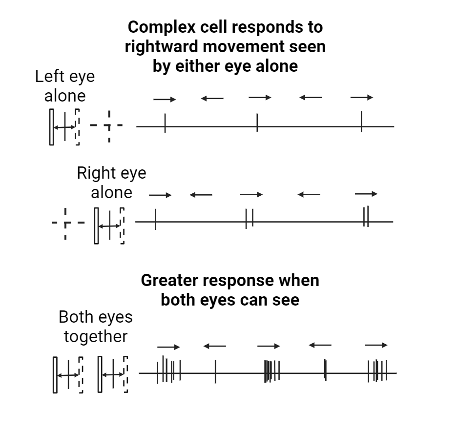
It was also possible to demonstrate that these binocular neurons contribute to stereo vision. For some neurons, moving an appropriately angled edge in space in front of the animal generated a strong response only if the stimulus was at a particular distance. Moving it nearer or farther decreased the neuron’s response. Such neurons would report on the depth of edges in the visual scene. You can demonstrate stereoscopic depth perception in your own vision by moving a finger on your outstretched arm close to you and far away while closing one eye and then the other. You automatically perceive the distance of your finger as its relative position on your two retinas changes, affecting depth-sensitive neurons in your visual system. But automatic stereo vision operates only for near distances. For outdoor scenes, for example, there are other cues to depth such as occlusion (which objects are in front of others) and atmospheric haze, while relative positions of distant objects on our two retinas are no longer significant.
Functional Anatomy of V1
The orderly layout of the retina is preserved in the layers of the lateral geniculate nucleus and in the surface of the primary visual cortex. This is the retinotopic map, shown in the left side of V1 visuotopic organization>. The right visual world is represented in the left visual cortex, with an orderly arrangement of receptive fields from the central retina to the periphery. Because there are many more retinal ganglion cells and LGN cells serving the fovea and central retina compared to the periphery, a disproportionately large area of cortex is devoted to the center of the visual field.
![Left shows a color coding on the V1 cortical surface in the occipital lobe to show where different parts of the retina connect to V1. The orderly layout of the retina is preserved in the lateral geniculate and the primary visual cortex: the retinotopic map. Because there are many more retinal ganglion cells serving the fovea and central retina, a disproportionately large area of cortex is devoted to central vision. Fovea input goes to the most caudal apex of V1, with input from areas around the fovea next followed by inputs from the most peripheral parts of the retina being the more inner layers of V1 (moving along the cortical surface from the caudal apex, forwards toward the front of the brain). A numbering/color coding system also shows that left side of retina sends input to the right hemisphere and the upper half of retina sends input the bottom half of V1. Right half of image shows a series of box outlines with different dash thicknesses to represent the area of visual space that stimulated sets of individual V1 neurons. Individual nearby neurons have overlapping receptive fields scattered around their average position. If the electrode is moved in large (1-mm) steps to sample new clusters of neurons, receptive fields are shifted but still partly overlap the previous cluster. When the electrode is 3 mm from its initial position, the new receptive fields no longer overlap the earlier ones.](assets/textbook/img/Image-6.29_V1-visuotopic-organization.webp)
The retinotopic map was established using several methods, including locating visual deficits (scotomas) for soldiers in World War II who had suffered head wounds that lodged shrapnel in the visual cortex. This established the overall layout of the human retinotopic map by presenting the average position in the visual world of the receptive fields of neurons from different cortical locations
Hubel and Wiesel added fine detail to the map by recording from individual neurons. A representation of their findings is shown on the right side of V1 visuotopic organization>. The receptive fields of nearby neurons overlap around their average position in visual space, but if the electrode is moved about 3 mm across the cortical surface, the receptive fields of neurons in the new location no longer overlap with receptive fields for the earlier location.
In addition to mapping hundreds of receptive fields in their experiments on V1, Hubel and Wiesel also recorded data on the location of each neuron along the electrode’s track. This allowed them to later reconstruct the positions of the mapped neurons on slices of the post-mortem brain, which helped reveal the functional anatomy of the primary visual cortex. They noticed that as their electrode was advanced vertically (radially) deeper into the cortex, receptive fields of neurons along the electrode’s track shared the same orientation preference. A nearby radial penetration encountered neurons that shared a different orientation preference, indicating that the cortex was organized in vertical orientation columns. They also saw broad regions that shared ocular dominance, where one eye drove a binocular neuron more strongly than the other eye. This changed from one eye to the other if the electrode was advanced horizontally (tangentially) across the cortex. They concluded that the cortex was organized in vertical columns of neurons that shared orientation and ocular dominance preferences. Later researchers used a different technique, optical recording, to reveal the two-dimensional organization of orientation and ocular dominance columns in V1. Optical recording detects differences in blood supply that reflect the level of activity of nearby neurons. In this way it resembles fMRI, but it provides finer detail and requires creating a window in the skull to permit imaging of the cortical surface. By imaging the cortex while systematically presenting a series of oriented stimuli delivered to one eye or the other, regions of maximal activity could be identified. Using computational techniques to give each orientation preference a false color, the orientation columns were revealed to be arranged like pinwheels, while the ocular dominance columns were long stripes (V1 orientation pinwheels and ocular dominance columns).
![Top left side shows a representation of orientation pinwheels where different colors are used to represent the orientation of a preferred stimulus for a cell in V1. The colors arrange to look like a tessellation of rainbow colors in pinwheels. Top right is a representation of ocular dominance columns in V1. Black represents parts of V1 responding to one eye and white the other. There is also a white region in the center of the pattern that is the blind spot. The pattern of white and black looks somewhat like the repeating swirled stripes of a fingerprint. Bottom is a rectangular cuboid meant to be a 3D chunk of V1 tissue. Superposition of 3 maps of the primary visual cortex is shown. The ocular dominance columns are demarcated by a white border. Iso-orientation domains are color coded. The CO cytochrome oxidase blobs are outlined by a black border. The orientation pinwheels cover the cortical surface. Ocular dominance columns cover multiple pinwheels. Cytochrome oxidase blobs are spread throughout the surface, overlapping different parts of different pinwheels.](assets/textbook/img/Image-6.30_V1-orientation-pinwheels-and-ocular-dominance-columns.webp)
Another structural feature in the cortex had been identified earlier: cytochrome oxidase blobs in the upper layers of the cortex. Cytochrome oxidase is an enzyme associated with metabolic activity, and by using a substrate that leaves a colored reaction product, the cortex was shown to have a regular array of “blobs," small patches of neurons with high metabolic activity. The array of blobs across V1 seen in stained microscope sections became another architectural element to add to V1’s orientation and ocular dominance columns. Optical recording using achromatic (non-colored) striped gratings at various angles or gratings with alternating red and green stripes demonstrated that the cytochrome oxidase blobs coincide with regions that respond most strongly to color stimuli.
Putting all these features together created an overlapping map of orientation pinwheels, cytochrome oxidase blobs, and ocular dominance columns (shown in the bottom of V1 orientation pinwheels and ocular dominance columns). The cortex has a repeating modular structure. Within each module, the blobs and the pinwheel centers are both aligned along the center of the ocular dominance columns, but they do not have a specific relation to each other. The overall implication is that as the visual cortex is built in development, a repeating subunit structure is genetically specified to organize the cortex.
The final aspect of cortical architecture to consider is cortical layers. V1 is named “striate” (striped) cortex because of the prominent layering seen in cross sections of stained cortex. There are six anatomical layers, numbered from 1 at the cortical surface to 6 adjoining the white matter. The layers turn out to have functional differences (Layers of the visual cortex). Axons from the LGN arrive at the cortex in layer 4 and also in layer 6. Layer 4 is where simple cells are found (red dots), supporting the theory that simple cells receive direct synapses from LGN axons. Complex cells (blue) are found in Layers 2-3 and Layers 5 and 6, where they could receive connections from simple cells in the same column, again consistent with the theory that simple cells drive complex cells. Complex cells in the upper layers project to more advanced cortical areas, leading to the next stages of visual processing. Complex cells in layer 5 project to the superior colliculus, and cells in layer 6 project back to the LGN, modifying the LGN’s responses to signals from the retina.

Color Vision in the Cortex
Most neurons in V1 receive their input from the LGN’s parvocellular, color-selective layers, but surprisingly, relatively few V1 neurons respond selectively to colors. In monkey V1, one type of color-selective receptive field has a center-surround, double opponent receptive field. This is shown in the top of Many neurons in V1 respond selectively to colored stimuli. The example in the figure shows a neuron that is excited by red in the center and inhibited by the opponent color in the center (green). In the surround, the responses are reversed: green excites and red inhibits. A pattern where the two colors meet at an edge is the strongest stimulus.
![Diagrams of opponent color V1 neuron receptive fields and responses to stimuli. Top is a circle representing the receptive field of a non-oriented double-opponent V1 neuron. It is a green surround with red center. Middle is two rectangles representing the receptive field of a simple cell (red bar on green background and vice versa) and two squares representing the receptive field of a complex cell (red on one half and green on the other half). Bottom is representation of a bar of each of 5 different colors moving across a square complex cell receptive field. This complex cell is strongly excited by an angled bar of light moving upward if the light is yellow, but not if the bar moves downward or is a color other than yellow. The responses of each of these cells types is described in the main text.](assets/textbook/img/Image-6.32_Many-neurons-in-V1-respond-selectively-to-colored-stimuli.webp)
Other primate V1 neurons include simple and complex cells that are selective for color stimuli. The simple cell in the middle of Many neurons in V1 respond selectively to colored stimuli is excited by flashing a properly aligned and positioned red bar on a green background (top), but reversing the colors elicits an off response after the stimulus ends (bottom). The complex cell in the middle of Many neurons in V1 respond selectively to colored stimuli is excited by a red-green border moving to the left, but not if the border moves to the right, and not if the colors are reversed.
An interesting complex cell (bottom of Many neurons in V1 respond selectively to colored stimuli) is strongly excited by an angled bar of light moving upward if the light is yellow, but not if the bar moves downward or if it is a color other than yellow. Note that white light does not excite this neuron, which means it would be overlooked in an experiment that did not test colored stimuli. These complex cells have all of the stimulus selectivities that we met earlier, such as orientation angle and movement direction, but in addition they are selective for color. Color selectivity in V1 is not well understood, and some aspects remain controversial. These and other V1 neurons provide the beginning of our visual perception of the form, color and location of objects, but V1 is just the first stage of visual processing. Processing continues in areas outside of the striate cortex: the extrastriate cortex.
Summary
The receptive fields of LGN neurons are circular, but neurons in primary visual cortex V1 have elongated receptive fields with a straight-line edge between the subdivisions. "Simple" cortical cells can be mapped with small spots, but "complex" cells require elongated stimuli such as light or dark bars. The elongated edge can be placed anywhere in a complex cell’s receptive field as long as its orientation angle matches the cell’s preferred orientation. Some cortical cells are responsive to stimuli moving in one direction but not the reverse. Some cells decrease their response if the stimulus bar extends beyond the receptive field ("endstopping"). Spatial frequency gratings at an appropriate angle are more effective stimuli than bars of equivalent width. The cortex’s functional architecture reveals that neurons with the same orientation preference are grouped in vertical orientation columns that when viewed from the cortical surface appear like pinwheels. Neurons driven most strongly by one eye or the other are grouped in broad elongated ocular dominance columns. Examination of cortical layers shows that simple cells are found principally in middle layer 4 where LGN axons arrive, while complex cells are found in the upper and lower layers. Finally, some cortical neurons are selective for colors in addition to having a preferred location, angle and direction of movement.
Key terms
lateral geniculate nucleus of the thalamus (LGN), primary visual cortex, extrastriate visual areas, inferotemporal cortex, fixation point, visual field, magnocellular layers 1 and 2, parvocellular layers 3-6, koniocellular, retinotopic map, functional architecture, angle of orientation, simple cells, complex cells, directionally selective, sinusoidal luminance gratings, endstopping, narrowly tuned, binocular neurons, ocular dominance, functional anatomy, orientation columns, optical recording, cytochrome oxidase blobs, orientation pinwheels, cortical layers, layer 4References
Conway, B. R. (2009). Color vision, cones, and color-coding in the cortex. The Neuroscientist, 15(3), 274–290. https://doi.org/10.1177/1073858408331369
Conway, B. R., Eskew, R. T., Martin, P. R., & Stockman, A. (2018). A tour of contemporary color vision research. Vision Research, 151, 2–6. https://doi.org/10.1016/j.visres.2018.06.009
Gilbert, C. D. (1993). Circuitry, architecture, and functional dynamics of visual cortex. Cerebral Cortex, 3(5), 373–386. https://doi.org/10.1093/cercor/3.5.373
Wurtz, R. H. (2009). Recounting the impact of Hubel and Wiesel. The Journal of Physiology, 587(12), 2817–2823. https://doi.org/10.1113/jphysiol.2009.170209
Practice The multiple-choice and fill-in-the-blank questions for this section are interactive and live on OpenStax, so they are not carried here: open the book on openstax.org.
6.5Extrastriate Cortex
By the end of this section, you should be able to
- Describe the broad functional role of the dorsal and ventral visual processing streams in the cortex
- Describe the stimulus-selectivity of inferotemporal neurons and how they were discovered
Visual processing continues in several cortical regions adjacent to V1 referred to as extrastriate cortex (“extra” means outside of V1). Most of the extrastriate areas have a retinotopic map like V1, but the individual receptive fields are larger and many fields cross the visual midline. Since we detect and recognize objects placed anywhere in the visual field, especially in the fovea where we see fine detail, wider receptive fields that cross the midline would be necessary to support conscious visual perception. V1 is just the beginning of cortical visual processing, and the extrastriate cortical areas are where additional stages of visual processing occur.
Extrastriate Visual Areas Overview
The extrastriate cortex beyond V1 divides into two major pathways: a dorsal pathway concerned with stimulus position and movement, and a ventral pathway leading to the perception of objects, faces, bodies, and scenes. The two pathways were first identified through experiments with monkeys trained on tasks that required distinguishing the location of an object (“where”) or the appearance of an object (“what”). Lesions in the dorsal and ventral cortex selectively interfered with one task or the other. Later studies recording from neurons confirmed the two pathways. Anatomy and functional connections of extrastriate areas shows many of the extrastriate visual areas that have been discovered. The relative size of each cortical area is represented by the size of the labeled boxes, and the number of axons connecting areas is represented by the thickness of the lines between them. These connections go in both directions, with axons projecting forward from a lower to a higher area, and also feedback connections from higher areas to lower ones. In fact, except for the one-way optic nerve from the retina to the LGN, all other visual areas have both ascending and descending connections, and the descending (feedback) connections have been shown to modify the activity of neurons in lower areas. For example, V1 projects strongly to V2 and V4, but those areas also project back to V1.
![Left is a diagram of a non-human primate brain. V1 is labeled at the most posterior end of the cortex. Anterior to V1 is V2. V4 is anterior to V2, but does not extend all to the way to the dorsal surface of the brain. IT is anterior to V4 and is contained more ventrally, within the temporal lobe. Arrows represent information flow of the dorsal stream (V1 to V2 to dorsal side of brain) and ventral stream (V1 to V2 to V4 to IT). Right is a circuit diagram where boxes of different sizes represent brain regions with lines connecting them. The dorsal (where) pathway for position and movement is on top and the ventral (what) pathway for objects and faces is on bottom. The largest areas are V1 and V2, which are part for both pathways. From there, there are many smaller areas, all heavily interconnected with each other and even between the two pathways.](assets/textbook/img/Image-6.33_Anatomy-and-functional-connections-of-extrastriate-areas.webp)
That path, V1 to V2 to V4, is the main pathway for conscious visual perception. It leads to the temporal cortex (specifically the anterior (AIT), central (CIT) and posterior (PIT) inferotemporal cortex). These IT areas are locations for patches of neurons that respond selectively to shapes, faces, colors and places. These components of the ventral stream are discussed in the following sections.
Dorsal Stream
The dorsal stream visual pathway processing areas have received less attention than the ventral stream, but one area that has received interesting experimental attention is area MT, “middle temporal.” The MT cortex is a motion-selective area organized in columns where all the neurons in a column are selective for a single direction of movement. Experiments at Stanford University showed that monkeys trained to report the direction of movement of subtle regions of random dots moving amidst stationary dots could be led to see sub-threshold movements if a column in MT was electrically stimulated (). The stimulation caused the neurons in that column to fire, which led the monkey to perceive movement that did not actually exist. The experiment was a direct demonstration that activity in an extrastriate area can lead to a visual perception.
Ventral Stream
The ventral “what” pathway for conscious visual perception leads from V4 to the lower (“inferior”) surface of the temporal lobe, the inferotemporal cortex (IT). Receptive fields of neurons in IT are significantly different from the earlier visual areas. They are not organized in a retinotopic map, but instead are grouped by the similarity of their most effective stimuli, such as the shapes of objects or the components of faces. IT receptive fields are very large (from 25 to 70 degrees of visual angle, a substantial span of the visual field’s 180 degrees), they always include the fovea, and they span the midline to include portions of both the left and right visual fields. Effective stimuli for an IT neuron can include objects, faces, or hands, independent of the size or exact position of the stimulus.
The selectivity of IT neurons represents major steps toward conscious visual perception. Neurons in the first stage of cortical processing, the simple cells of V1, have small receptive fields (about 1 degree) that require exact positioning of an oriented edge. They will detect small components of an object’s outline, with thousands of V1 neurons responding to even a small object. Shifting the stimulus’s position or size in the retinal image will activate a completely different population of V1 neurons. In contrast, IT neurons are flexible in their response to the position and size of the retinal image, a necessary step in perceiving objects.
Extensive experiments to record from IT neurons began in the 1980s. Among the earliest findings were that posterior IT areas, the ones closest to extrastriate cortex, had optimal stimuli that were more elaborate than V4 neuron receptive fields. Actual objects such as toy animals were effective, although a tiger’s face, for example, could be reduced to a simpler image of a rectangle with attached circles. More anterior regions of the IT cortex had more complex receptive fields, with patches of neurons that responded selectively to faces, colors, and scenes.
If a visual area like IT has neurons with selective responses to complicated images, a methodological problem arises. How do the experimenters know if they have found the optimal stimulus? It is feasible to show a test array of hundreds of photos of different images, flashing each photo briefly while detecting if an IT neuron fires action potentials, but the most effective stimulus may not be in the test set. The best that can be accomplished is to identify a general category that the neurons respond to, and then narrow down the important details in the stimulus. This strategy has been employed to characterize neurons that respond to objects and faces.
Another approach, especially for intermediate extrastriate areas like V4, has been to use computer-generated patterns that are systematically and randomly varied. Variations that lead to more vigorous firing are retained, while less effective variations are discarded. Repeating the cycle and continuing to choose more effective variations eventually generates apparently optimal stimuli, but they are often complicated and do not resemble simple geometric shapes that are easily described in words. This remains a puzzling aspect of visual processing.
Face-Selective Units
In the 1980s, exploratory recordings made by Charles Gross and his colleagues at Princeton University discovered neurons in monkey IT that responded vigorously to images of faces. The faces could be of monkeys, humans, or even cartoons, but if the eyes were omitted or the image was scrambled, the response was reduced or eliminated (Face-selective units). Faces are an important element of communication for monkeys and humans. Faces support identification of familiar individuals, and they also reveal emotional expressions from unfamiliar strangers. In recording from randomly encountered neurons in electrode penetrations of IT, the Princeton group found neurons that were selective for a variety of images, not just faces.
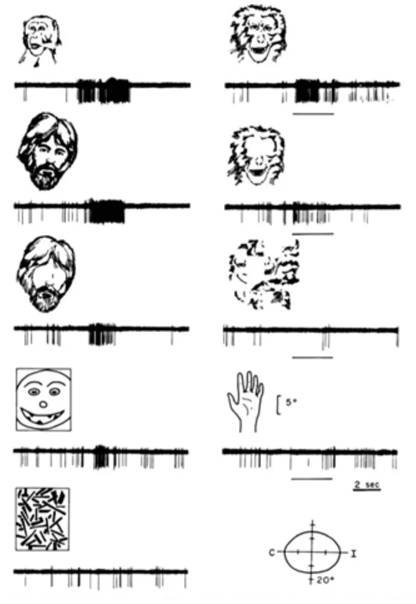
Face patches have also been identified by fMRI in the human brain, a region called the fusiform face area (FFA). Research on IT face patches continues, with a goal of revealing how advanced visual processing occurs in sequential stages for a well-defined image category. These studies may help explain how a scene that activates millions of neurons in multiple cortical areas leads to our conscious perception of the components of the visual world around us.
Summary
Neurons in V1 begin cortical visual processing by detecting edges in small regions of the image. The next steps occur in adjoining cortical areas, the extrastriate cortex, where two pathways have been identified: the dorsal stream detecting location and movement, and the ventral stream leading to the inferotemporal cortex (IT), where images of objects elicit responses. Neurons in IT that respond selectively to faces are grouped in face patches, which provide an example of visual processing for a well-defined category of images.
Key terms
dorsal pathway, ventral pathway, inferotemporal cortex, area MT, face patches, fusiform face areaReferences
Kanwisher, N. (2017). The quest for the FFA and where it led. The Journal of Neuroscience, 37(5), 1056–1061. https://doi.org/10.1523/JNEUROSCI.1706-16.2016
Mishkin, M., Ungerleider, L. G., & Macko, K. A. (1983). Object vision and spatial vision: Two cortical pathways. Trends in Neurosciences, 6, 414–417. https://doi.org/10.1016/0166-2236(83)90190-X
Salzman, C. D., Britten, K. H., & Newsome, W. T. (1990). Cortical microstimulation influences perceptual judgments of motion direction. Nature, 346, 174–177. https://doi.org/10.1038/346174a0
Ungerleider, L. G., & Pessoa, L. (2008). What and where pathways. Scholarpedia, 3(11), 5342. http://www.scholarpedia.org/article/What_and_where_pathways
Practice The multiple-choice and fill-in-the-blank questions for this section are interactive and live on OpenStax, so they are not carried here: open the book on openstax.org.
6.6Unsolved Questions In Visual Perception
By the end of this section, you should be able to
- Describe several open questions about how visual perception is derived from visual sensory information
- Define the major difference between top-down versus bottom-up processing in visual perception
- Describe what a grandmother cell is
Starting with the discovery in the 1950s of the center-surround receptive fields of retinal ganglion cells, it became clear that visual processing in the eye and brain starts with the detection of edges. The edges can be between areas of different brightness (luminance differences) or spectral composition (color differences). V1 neurons extend the detection of edges by responding selectively to straight edges at particular angles. Subsequent extrastriate and IT areas respond to more complex optimal stimuli, such as images of specific objects or body parts or faces. Intermediate visual areas may extract features such as the direction and speed of movement, or stimulus color. These stages of visual processing are now well known, but there are still many unanswered questions about how they lead to conscious visual perception. This section will discuss a few aspects of vision and visual perception that remain poorly understood today.
The Binding Problem
Any visual image elicits simultaneous responses from millions of neurons in V1 and the extrastriate areas that respond to aspects of the stimulus. For example, a bluebird flying across the sky will activate color-selective neurons in V1, V2, and V4 corresponding to the bird’s color. The bird’s motion will activate movement-selective neurons in MT. Other objects in the visual scene will activate other neurons in visual cortical areas. If many visual neurons are firing simultaneously to multiple components of the image, how are the ones activated by the bluebird identified as belonging together? This is the binding problem, the need to link activity in different neurons that are stimulated by the same stimulus object. We assume that the activity of these neurons is somehow combined to generate our perception of that object, but how?
One suggested mechanism for binding responses is rhythmic firing, where the timing of synchronous action potentials identifies neurons that are responding to a particular stimulus. Where and how that synchrony would be detected, and where conscious perception is ultimately localized, remain unanswered questions, and synchrony as the answer to the binding problem remains controversial.
Top-Down Processing
Top-down processing is a famous picture, a high-contrast assortment of shapes and splotches that leads most people to perceive a spotted dog in leafy shade.
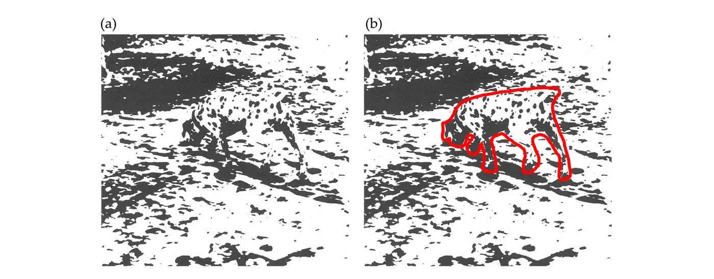
It seems inconceivable that seeing the dog could be accomplished just from the activity of V1 neurons responding to the components of the image that fall within their receptive fields. That would be a “bottom-up” approach, where elements of the image are combined in successive stages of cortical processing to generate the perception of the object. Instead, some prior knowledge of the shape of a dog seems necessary for organizing the elements of the scene. That would be a “top-down” contribution to visual perception.
Computer scientists working on automatic image interpretation have described top-down processing as “hallucinating” the scene and then calculating how well the actual elements match the “hallucinated” image. After revising the imagined scene in areas where the match is poor, the calculation would repeat until a good match is found. Our visual system may work in a somewhat similar way. Bottom-up processing detects edges and activates neurons in V1 and extrastriate cortex, but top-down processing organizes the edges that are detected in the lower visual areas.
Visual illusions further support the existence of top-down organization of the elements of a scene. The image on the left of Visual perception is either a white vase or profiles of two faces. We can instantly switch from one perception to the other, indicating that although the elements of the image falling on the retina that elicit bottom-up activity are unchanged, a top-down process determines how the components are grouped and perceived. Other visual illusions and ambiguous images support the same point.
These examples make it clear that top-down processes influence the activity of neurons in visual areas, and thus that visual perception cannot be an exclusively bottom-up process. Other experiments recording from individual neurons in lower visual areas also show that their firing rates are modulated by activity in higher visual areas. Extensive axonal feedback connections from higher to lower areas offer an anatomical pathway for top-down modulation. However, how top-down processes modulate lower visual areas to contribute to visual perception is not generally known. Progress has been made, but this remains a largely unsolved puzzle in visual perception.
Grandmother Cells
The first stages of visual processing suggest that activity converges from one stage to the next. Axons from multiple LGN neurons converge to create the receptive fields of individual simple cells. Activity from multiple simple cells excites single complex cells, and so on. Very large receptive fields in extrastriate and IT cortex suggest the convergence of signals from earlier neurons that have small receptive fields. How high could this convergence reach? Could there be advanced neurons with extremely selective responses that combine visual and possibly other information? This idea was proposed, not seriously, as the existence of “grandmother cells”: cells that would respond to any view of your grandmother, and by extension, other neurons that would respond uniquely to other specific people or objects.
Although the term was presented mockingly, recordings of hippocampal neurons from a person undergoing brain surgery for epilepsy did reveal a neuron that seemed to respond to images and also the written name of a well-known actress, Jennifer Aniston (). This opened two questions: first, could recognition depend on single neurons responsible for identifying a particular stimulus, and second, could neurons represent not just a visual image, but also other information about the subject?
The first possibility, that single neurons are responsible for recognizing an image, seems unlikely. Any visual stimulus evokes activity in an ensemble of hundreds or thousands of neurons, even at high levels. Similar visual stimuli would activate overlapping but distinct ensembles. There is no indication that potential loss of a single neuron suddenly eliminates recognition of a particular object. Loss of neurons does occur from strokes, for example, and the loss does eliminate function. Prosopagnosia is a neurological deficit where the patient no longer recognizes faces, but it involves the loss of whole regions of neurons and problems with many faces.
The second idea, that ensembles of neurons might encode information associated with a visual stimulus, seems more likely. “Gnostic neurons” have been proposed, and the neuron that responded to Jennifer Aniston’s image and written name seems to be an example of a gnostic neuron. It’s clear that our brains somehow generate our unified conscious experience, but like other aspects of consciousness, the later stages of visual perception remain an unsolved and challenging puzzle.
Summary
Although the first stages of visual perception seem to be well understood, beginning in the retina and proceeding in steps though V1 and extrastriate cortex, and continuing into IT, the final stages of perception remain a mystery. One problem is how responses to a particular object, activating neurons in many different visual areas, are grouped to identify that object and not other objects in the scene. One theory involves the timing of action potentials, where rhythmic firing or synchrony may establish connections for each object, but this idea remains controversial. Another problem is how small components within a scene are organized into the perception of the full object, a process that seems to require prior knowledge of the object's shape. This suggests a role for top-down processing. One clear example of top-down modulation of earlier neural activity is visual attention, which organizes bottom-up components into a perceived scene. A bottom-up issue is converging activity, where many neurons with small receptive fields activate the next level of neurons with larger receptive fields, raising the question of how much convergence ultimately occurs. Could there be single neurons responsible for perceiving a particular object, so-called "grandmother cells" responsible for perceiving your grandmother? It seems much more likely that any particular object activates an ensemble of neurons, with different but possibly overlapping ensembles for other objects. These many open questions indicate that the final stages of visual processing are still an unsolved puzzle.
Key terms
binding problem, “bottom-up” vs “top down”, convergence, grandmother cells, ensemble, prosopagnosia, gnostic neuronsReferences
Barwich, A.-S. (2019). The value of failure in science: The story of grandmother cells in neuroscience. Frontiers in Neuroscience, 13, 1121. https://doi.org/10.3389/fnins.2019.01121
Conway, B. R. (2018). The organization and operation of inferior temporal cortex. Annual Review of Vision Science, 4(1), 381–402. https://doi.org/10.1146/annurev-vision-091517-034202
Gross, C. G. (2008). Single neuron studies of inferior temporal cortex. Neuropsychologia, 46(3), 841–852. https://doi.org/10.1016/j.neuropsychologia.2007.11.009
Hesse, J. K., & Tsao, D. Y. (2020). The macaque face patch system: A turtle’s underbelly for the brain. Nature Reviews. Neuroscience, 21(12), 695–716. https://doi.org/10.1038/s41583-020-00393-w
Lafer-Sousa, R., & Conway, B. R. (2013). Parallel, multi-stage processing of colors, faces and shapes in macaque inferior temporal cortex. Nature Neuroscience, 16(12), 1870–1878. https://doi.org/10.1038/nn.3555
Reddy, L., Quiroga, R. Q., Kreiman, G., Fried, I., & Koch, C. (2005). Invariant visual representation by single neurons in the human brain. Nature, 435, 1102–1107. https://doi.org/10.1038/nature03687
7Hearing and Balance4 sections
The world is full of sound, and almost every species of animal possesses the ability to sense and respond to sounds. Indeed, hearing is so important that several components of the auditory system have evolved not once…
Introduction

Imagine yourself lying in a field on a warm summer day. With your eyes closed, you can hear the wind moving through the grass, and off to your left, through the branches of an oak tree. In the tree, a Scrub Jay is giving a loud, screeching call, while a Western Meadowlark is singing its long, warbled improvisations. Over to your right, a stream is lazily flowing through the meadow except where it spills around some rocks. At intervals, you hear splashes from the water. Your friend is throwing in rocks. Just as you are starting to doze off, she calls your name, waking you up. You can sense a note of impatience in her voice. Later, in a crowded room, you are straining to listen to an acquaintance tell a rather boring story over the sounds of a dozen other conversations when you hear your friend say your name again, and you turn your head to look at her.
How is it possible to gain so much information from sound? How are you able to distinguish one type of bird from another, or tell the difference between the texture of wind in grass from wind in a tree, or between a lazy brook and one that is moving rapidly? How do you know where sounds originate, even in a complex landscape of other sounds? How can you follow a conversation against a background of similar, almost identical voices, and how can the sound of your name arouse you from unconsciousness or instantly claim your attention?
Some of these questions can be answered now, while others remain mostly unsolved. This chapter will introduce you to the auditory system, which consists of the ear, a highly specialized sensory organ that can detect miniscule movements in the air, along with the assembly of nerves and brain areas that filter and process this information into a rich perceptual world.
This chapter also covers the vestibular system, which detects movement of the head and is responsible for the sense of balance. The vestibular sensory organ is also located in the inner ear, and there are close similarities in how both systems convert physical movement into neural signals.
7.1Acoustic Cues and Signals
By the end of this section, you should be able to
- Identify auditory cues and signals and explain their behavioral relevance.
- Describe what an acoustic wave is and how it propagates through air and interacts with solid objects.
The world is full of sound, and almost every species of animal possesses the ability to sense and respond to sounds. Indeed, hearing is so important that several components of the auditory system have evolved not once but many times. In this section, we will explore what causes sound, first from the standpoint of function and then from the standpoint of physics. This will prepare you for the next section, which covers how sound is detected by the ear and transmitted to the brain.
Why is the sense of hearing important?
Like every other sensory system, the auditory system has evolved because it provides useful information about the objects and events in an animal’s environment. Animals that can accurately sense what is happening around them can respond in a way that increases their chances of survival and of successfully passing on their genes. Hearing is especially valuable to survival because sound can travel over long distances and around obstacles, allowing animals to make timely responses, for example by fleeing from a predator before it gets too close.
To further illustrate why hearing is such an important sense, consider the female bird pictured perching in the center of Acoustic signals. Sounds are coming from every direction. Some are not especially relevant, like the splash of a turtle falling into the water or the rippling of water flowing in the stream. Other sounds carry important information, like the rustle in the nearby bushes that could be coming from a predator, or the song of a nearby male advertising himself as a potential mate. Sounds that are produced unintentionally are called cues, whereas sounds produced intentionally, with the goal of communicating something, are called signals.
Some of the most common and important cues are the sounds animals make as they move. Predators and prey alike have evolved to move as quietly as possible to minimize the cues they give about their presence and location. It is almost impossible to avoid making any sounds, however. Sticks break, grasses rustle, and even simply moving through the air can create turbulence. As we will see, all of these events can generate acoustic waves that travel for tens of meters or even further. Just as there is selective pressure for animals to move quietly, many species have evolved extremely sophisticated and sensitive auditory systems. For example, the common house cat (Felis domesticus) can hear a mosquito flying in a quiet room from as far as 30 m away — no wonder my cat seems to appear from nowhere the moment I open a can of food!

In contrast with cues, acoustic signals have evolved to allow one individual, called a sender, to influence the behavior of another individual, the receiver. Birdsong, for example, is a signal that communicates to female songbirds that a potential mate is nearby. The male sings with the intent of influencing females to approach and mate. In many species, the song also informs the female of how desirable the male is, because only healthy males can produce songs with a certain level of complexity (). Acoustic mating displays are common throughout the animal kingdom, including many insects, fishes, amphibians, birds, and mammals.
Acoustic signals can also be used to broadcast the identity of the individual producing the signal, as long as receivers can distinguish the unique features of each individual’s signal. Individual recognition is particularly important to animals that live in large social groups where visual cues are not easily distinguished, as in a flock of nesting seagulls or a herd of elephants () or where individuals need to find each other over long distances, as in dolphins and other marine mammals ().
Animals use acoustic signals to communicate to each other about more than just themselves. When social animals are foraging in large groups, a few individuals may keep watch and signal to the group about sources of danger. Acoustic signals have a particular advantage here because they can travel long distances and around obstacles that would block sight. For example, vervet monkeys have different kinds of alarm calls that indicate the presence of specific kinds of predators (). When one monkey sees a leopard, it makes the “leopard” call, and the other members of its troupe will climb into trees, even without themselves seeing the leopard. In contrast, when a monkey makes the “eagle” call, the troupe will hide in nearby bushes that are too thick for an aerial predator to enter. The monkeys’ auditory system must be able to discriminate between these signals for them to respond appropriately.
Humans have evolved a much more elaborate system of acoustic communication called speech, in which words are formed from combinations of distinct vocal elements called phonemes. For example, the vowels in the English words “bat” and “pat” are the same phoneme (/a/), whereas the initial consonants (/b/ and /p/) are different. One of the most important tasks of the human auditory system is to identify and discriminate between similar-sounding phonemes, and as we will see in How Does the Brain Process Acoustic Information?, this ability is shaped by the sounds an infant hears in the first year of life.
Some species produce acoustic signals for themselves to hear, with the purpose of detecting obstacles and prey in their environment. Because sound waves reflect from solids and liquids, they can be used for echolocation. The ability to echolocate has evolved separately in bats and in some aquatic mammals. Echolocating animals produce short vocalizations that reflect off nearby objects. Specialized neural circuits use the delay between the signal and its echo to determine distances to those objects, while other circuits compute the direction of the object (see How Does the Brain Process Acoustic Information?) and even some of its physical characteristics (). A bat hunting by echolocation can easily discriminate between a solid obstacle and a delicious insect, and it can rapidly alter its course of flight to intercept the insect while avoiding the obstacles ().
In summary, the sense of hearing serves many important functions for humans and other animals. Acoustic cues and signals are a critical source of information about predators, prey, obstacles, and dangers in the nearby environment, as well as the presence and intentions of conspecifics (other animals of the same species). In the next section, we will see how the physical nature of sound allows it to transmit this information in a way that complements the other senses.
How is sound produced?
What is sound? From the perspective of physics, sound consists of pressure waves moving through air or some other physical material. Waves are found throughout nature and share a common mathematical description. At the same time, acoustic waves have special properties that make them distinct from other kinds of waves.
To illustrate what a wave is, imagine throwing a rock into a still pool of water. When it hits the surface, the rock will displace some of the water, causing it to rise in a circle around the point of impact. Gravity pulls the displaced water back down, which in turn pushes up the water a little further out. This process repeats again and again to produce what we observe: a ripple traveling outward from the point of impact. An acoustic wave moves in much the same way, except that instead of a two-dimensional surface moving up and down, the molecules of the air move closer together and further apart, and the wave spreads in three dimensions.
Now instead of throwing a rock into a pool, imagine clapping your hands together. As your hands meet, they push air out of the space between them. Where does this air go? There is air all around your hands, but air is mostly empty space, so there is plenty of room for the displaced molecules of air to crowd in with the molecules that are already there. Now there is a region around your hands where the air is at a higher pressure, with an increased density of air molecules. The compressed molecules in the region of higher pressure push out into the surrounding space, which is less dense, or rarefied. This creates a new region of higher pressure, which in turn spreads further out from your hands. Just as the water ripple radiates out in a circle from a central point, the pressure wave created by your hands clapping radiates out in a sphere. If a microphone or some other pressure sensor is placed along the path of the wave, it will measure successive increases and decreases in the pressure at that location as the wave travels through space (Physical properties of acoustic waves).
It is important to notice that the individual air molecules do not move nearly as fast or as far as the acoustic wave. The air itself is not flowing, as in a wind. Instead, neighboring molecules are bumping into each other, and an individual molecule pushed out from a region of higher pressure may only travel a few nanometers before it collides with another molecule. Sound waves move through air at around 343 m/s, but this varies depending on temperature and elevation.
Acoustic waves can be described in terms of three principal quantities: amplitude, frequency, and phase. Amplitude (also called intensity or level) is a measure of how much the air pressure changes between compression and rarefaction. Clapping your hands more forcefully causes a larger increase in pressure and a wave with a higher amplitude. Amplitude is measured in units of pressure (in the metric system, Pascals); however, because the perception of acoustic amplitude follows a logarithmic scale, it is more often reported in units of decibels of sound pressure level (dB SPL). As shown in this figure, each step of 20 on the decibel scale corresponds to a proportional, ten-fold increase in the pressure.
![Top row: Sound pressure waves represented as dots of varying density. Below is a line graph of a sound wave with key features labeled: amplitude, period, pressure, time. 2nd row: Left: Image of string oscillating when held at each end. Middle: line drawing of a simple period wave. Right: Line graph of amplitude vs frequency of that simple wave. 3rd row: Left: Image of string oscillating when held at each end plus another separate string which is held at each end and also in the middle. Middle: line drawing of a complex periodic wave. Right: Line graph of amplitude vs frequency of that complex wave. 4th row: Left: Line drawing of turbelent air flow Middle: line drawing of an aperiodic wave. Right: Line graph of amplitude vs frequency of that aperiodic wave.](assets/textbook/img/Image-7.26_Physical-properties-acoustic-waves.webp)
The frequency of a wave is a measure of how rapidly the air at one location changes from compressed to rarefied and back (Physical properties of acoustic waves). Frequency is measured in Hertz (Hz), the number of cycles that occur each second. The frequency of a sound wave is perceived as pitch. Low-frequency waves sound deep and rich, whereas high-frequency waves are perceived as sharp and thin.
The phase of a wave is a measure of time relative to the cycles of compression and rarefaction. Phase is not perceived directly, but it affects how different waves interact with each other.
Almost any process that displaces air molecules will result in an acoustic wave. One of the most common sources of sound is periodic vibration. You can generate periodic motion by plucking or striking a string that is under tension (for example, on a guitar, piano, or harp). Pluck it right in the middle, and listen to the sound while watching the string. The vibration will probably be too fast for your eyes to track, so the string will appear wide in the middle and narrow at the ends, as illustrated in Physical properties of acoustic waves. As it vibrates, the string compresses the air while moving in one direction and rarefies it while moving in the other. The vibrations tend to occur at a specific frequency that depends on the mass of the string, its length, and how tightly it is tensioned. The motion of the string and the sound wave it produces are described by a simple mathematical function called a sinusoid (or sine wave) with a single frequency and amplitude. The form of this function and its relationship to the physical properties of the string will be covered in most elementary physics texts.
| Amplitude | ||
|---|---|---|
| dB SPL | Pa | Example |
| 0 | 0.00002 | Mosquito 3 m away in silent room (human hearing threshold) |
| 10 | 0.000063 | Calm breathing |
| 30 | 0.00063 | A quiet office with computer off |
| 50 | 0.0063 | Normal conversation 1 m away |
| 70 | 0.063 | Comfortable music listening level |
| 90 | 0.63 | Traffic on a busy roadway |
| 100 | 2 | Jackhammer 1 m away |
| 120 | 20 | Jet engine 100 m away (risk of instantaneous noise-induced hearing loss) |
| 170 | 6300 | Firecracker 0.5 m away |
Now press the string down or pinch it at its midpoint before plucking it. The half that you pluck will vibrate twice as fast as the whole string did, producing a sound wave with twice the frequency. You might notice that the higher note sounds similar even though the frequency is higher. If you pinch the string three-quarters of the way and pluck the short part, the frequency will be four times as high, but the note will still sound similar. This is an illustration of how the perception of frequency is logarithmic, as we’ll discuss more later.
What happens if you pluck the whole string, but nearer to one end? You might notice that the note sounds richer and more complex, and that the movement of the string looks more complicated, without one clear wide part in the middle. Just as white light is composed of electromagnetic waves with frequencies spanning from red to violet, sounds can be composed of multiple waves with different frequencies. When the guitar string is plucked nearer the end, it will vibrate at the frequency corresponding to the full length of the string but also at twice that frequency (corresponding to half the length), three times that frequency (corresponding to one third of the length), and so on. A series of integer multiples like this is called a harmonic series. The lower-frequency and higher-frequency sound waves add together to produce complex harmonic motion. The specific combination of frequencies in a complex sound is called its spectrum. Most simple and complex periodic sounds are perceived as tones with a defined pitch that corresponds to the lowest frequency in the harmonic series.
Take a moment to think about this: you hear the string on the guitar as a single note, yet it is composed of several waves with different frequencies. As we will see later, each of these waves activates a different set of receptors in the inner ear and a different set of neurons that transmit information into the brain. In order for us to understand how audition works, we will need to understand how these different channels of information are combined by the brain to produce a single unified percept or split apart to distinguish between different sources, as when a person is singing along to the guitar.
Many species of animals generate sounds through periodic motion. The chirp of a cricket is produced by rubbing two textured surfaces on their wings together. The vocal folds in the mammalian larynx and the avian syrinx vibrate periodically as air is exhaled, and the frequency of the vibrations can be controlled by muscles that increase or relax the tension. In human speech (and even more so in singing), the vowels are produced by periodic movement of the vocal folds.
Sounds that do not have a regularly repeating pattern are not perceived as having pitch and are called aperiodic. The main sources of aperiodic sounds are transient collisions between surfaces and continuous, turbulent air flow. In turbulent air flow, the molecules are not all moving at the same speed and direction. This causes eddies and ripples to form as faster-moving air collides with slower-moving air, and the pressure variations in the ripples propagate outward as acoustic waves. Turbulent flow tends to occur whenever air is forced through narrow openings or disorderly obstacles like trees. You can make turbulent air flow by lightly pursing your lips and exhaling forcefully (but not forcefully enough to make a whistle). Aperiodic sounds do not contain a single frequency or even a regular combination of frequencies as in complex harmonic sounds. Instead, the pressure fluctuates at random across a broad range of frequencies. This is perceived as noise. A continuous sound that has equal amplitude across all frequencies is called white noise. Aperiodic sounds are also commonly used in acoustic communication. In human speech, many of the consonants are produced by aperiodic sounds.
How does sound travel and interact with objects?
Sound’s ability to travel through the air is what allows the auditory system to sense cues and signals coming from a distance. In this respect, the sense of hearing shares certain similarities with vision, but acoustic waves are much slower and have longer wavelengths than visible light. Humans can hear sounds with frequencies between approximately 20 and 20,000 Hz. In air, these frequencies correspond to wavelengths between 17 m and 17 mm. In contrast, visible light has wavelengths between 400 and 780 nm. In other words, whereas light waves are much, much smaller than most behaviorally relevant objects, sound waves are around the same size. As a consequence, acoustic waves exhibit a number of phenomena that are important to understanding how sound works.
First, sound waves can diffract around common objects. You can illustrate diffraction by placing a stone about 1 cm in diameter in the center of a shallow bowl of water. Tap the water near the edge of the bowl and watch how the ripples seem to pass right through the stone. This is diffraction. Waves can diffract around objects that are around the same size or smaller than the wavelength, which means that lower frequencies (longer wavelengths) are less likely to be blocked. Thus, a predator may be impossible to see when it hides behind a rock or a tree, but most of the noises it makes will simply pass around the object.
Second, solid objects are more likely to transmit sound waves than visible light waves. Low-frequency sounds in particular are more easily transmitted through solids, which is why you can hear construction noises through solid walls and the bass line from your downstairs neighbor’s music. At higher frequencies, solids tend to reflect sound. Reflections cause an acoustical phenomenon called reverberation, in which echoes of a sound reach the same point at slightly different times. For example, if you are in a large room with a concrete floor and metal walls, and someone a few meters away from you claps, you will hear not only the wave coming directly from the source to your ears, but all the other waves that reflect off the floor and the walls. The reflected waves have longer to travel, and because the speed of sound is around 343 m/s, there can be a perceptible delay between the time when the direct wave and its reflections arrive. Reverberations with long delays are heard as distinct echoes. Reverberations with short delays tend to fuse with the main sound, making it sound more “alive”. Surfaces that are soft or uneven are better able to absorb sound, reducing the intensity of the reverberation, and rooms that have little reverberation sound muffled or “dead”. With practice, people can learn to use the acoustical characteristics of different materials as cues to their location within a room, an ability akin to the specialized echolocation of bats and dolphins.
The long wavelengths and reflectiveness of sound cause another phenomenon called resonance. If sound waves enter a space where they can reflect back and forth between two surfaces, they will interact with each other through interference. If the sound has a wavelength the same as the distance between the two surfaces (or an integral fraction of the distance), the peaks and valleys of the wave going in one direction will overlap with the wave going in the other direction, leading to constructive interference. Wavelengths that are not an integral fraction of the difference will not overlap, leading to destructive interference. For complex sounds comprising waves of multiple frequencies, resonance boosts certain frequencies (wavelengths) while attenuating others. This effect is also known as filtering. When you blow across the mouth of a bottle, the aperiodic noise produced by turbulence resonates in the bottle, boosting a single frequency (and its harmonics) to produce a tone.
Filtering is important to the production of speech. Recall that vowels are produced by periodic motion of the vocal folds. But how do we make different vowels? You can illustrate this by singing “aah” and then changing to “ooh” while holding the same pitch. If you pay close attention to your tongue and lips, you’ll notice that the shape of your mouth changes as you transition between different vowels. What’s happening as you move those muscles is that the sizes of the oral and pharyngeal cavities in your airway are changing to create different resonances that boost and suppress specific frequencies in the sound coming from your larynx.
A consequence of these phenomena is that it is common for a listener to hear many different sound sources simultaneously. This is an advantage in that it is possible to hear sounds without having to look at them, to take in an entire auditory scene in full 360-degree surround, and to hear multiple instruments or singers making music together. It also makes a difficult task for the auditory system, which has to separate out multiple sound sources and determine their locations. As we shall see, the structure of the ear performs a part of this task, separating complex sounds into their component frequencies, but the central nervous system still has an enormous amount of work to do to transform auditory scenes into coherent perception.
Summary
Streamed from OpenStax; open it there if it does not play.Watch the section summary video
Key terms
amplitude, complex harmonic motion, cue, decibels, diffraction, echolocation, filtering, frequency, interference, periodic/aperiodic, pressure, rarefaction, receiver, reflection, resonance, reverberation, sender, signal, sinusoid, spectrum, speechReferences
Fay RR (1988) Comparative psychoacoustics. Hear Res 34:295–305.
Jamie GA (2017) Signals, cues and the nature of mimicry. Proc Biol Sci 284:20162080.
Johnson K, Sherman VC, Sherman SG (2011). Acoustic and Auditory Phonetics. John Wiley and Sons.
McComb K, Moss C, Sayialel S, Baker L (2000) Unusually extensive networks of vocal recognition in African elephants. Anim Behav 49:1103–1109.
Moss CF, Sinha SR (2003) Neurobiology of echolocation in bats. Curr Opin Neurobiol 13:751–758.
Nowicki S, Searcy WA (2004) Song Function and the Evolution of Female Preferences: Why Birds Sing, Why Brains Matter. Ann N Y Acad Sci 1016:704–723.
Sayigh LS, Tyack PL, Wells RS, Solow AR, Scott MD, Irvine AB (1999) Individual recognition in wild bottlenose dolphins: a field test using playback experiments. Anim Behav 57:41–50.
Seyfarth RM, Cheney D (1990) The assessment by vervet monkeys of their own and another species’ alarm calls. Anim Behav 40:754–764.
Surlykke A, Ghose K, Moss CF (2009) Acoustic scanning of natural scenes by echolocation in the big brown bat, Eptesicus fuscus. J Exp Biol 212:1011–1020.
Practice The multiple-choice and fill-in-the-blank questions for this section are interactive and live on OpenStax, so they are not carried here: open the book on openstax.org.
7.2How Does Acoustic Information Enter the Brain?
By the end of this section, you should be able to
- Identify the major anatomical parts of the ear and describe their function.
- Explain how the cochlea separates complex sounds into their component frequencies and transduces acoustic energy into neural signals.
- Describe how neural information ascends to the cerebral cortex through the major nuclei and fiber tracts of the classical ascending auditory pathway.
In the previous topic, we’ve seen how the air is full of acoustic waves carrying cues and signals vital to survival. These waves consist of minute variations in air pressure that can be up to 10 billion times smaller than the overall pressure exerted by the atmosphere. In this topic, we will examine how the incredibly sensitive organ known as the ear is able to detect these tiny fluctuations and convert them to neural signals that the brain can process.
The ear consists of three main parts, shown in Ear anatomy: the external ear, the middle ear, and the inner ear. Auditory stimuli enter through the external ear as acoustic waves and exit the inner ear as neural impulses.

External ear
When someone is asked to point to their ears, they will usually indicate their auricles, structures of skin and cartilage on either side of their head. The shape of the auricles (also called pinna), differs greatly among species. Some species, like cats, can manipulate the shape of their pinna using muscles on the skull, while many other species, including most birds, amphibians, and reptiles, have no pinna at all.
The auricle serves two functions. The first is to funnel acoustic waves into the external auditory meatus (ear canal). This amplifies the waves by compressing them into a smaller opening, increasing the sensitivity of hearing by up to 10 dB. The second function is to aid in localizing sound sources. The ridges and folds in the auricle create resonant cavities that filter out specific frequencies that depend on the direction from which the sound is coming. As a simple experiment, filling the cavities of the auricles with modeling clay makes it considerably more difficult to tell where a sound is coming from with your eyes closed ().
Middle ear
Separating the external auditory meatus from the middle ear cavity is the tympanic membrane, a thin sheet of tissue. Like the tightly stretched surface of a drum, the tympanic membrane vibrates in response to acoustic waves in the ear canal. As compressed air reaches the membrane, it pushes it inward, because the pressure in the ear canal is slightly higher than the pressure in the middle ear. Similarly, when the air in the ear canal is at a lower pressure (rarefied), the tympanic membrane is pushed outward by the air in the middle ear.
In order for the tympanic membrane to vibrate effectively, the static pressure in the ear canal and the middle ear cavity need to be equal. The external atmospheric pressure depends on altitude, and a rapid change of altitude, as in a descending or ascending airplane, creates an imbalance that reduces hearing sensitivity, particularly for high frequencies. The Eustachian tube, which connects the middle ear to the oral cavity, allows the balance to be restored. Sometimes it is necessary to encourage the Eustachian tube to open by “popping your ears”. A bad cold or sinus infection can cause the Eustachian tube to close. This results in a persistent imbalance that can be acutely painful and even cause damage to the tympanic membrane. Infections of the middle ear, called otitis media, can cause the middle ear cavity to fill with fluid, causing a pressure imbalance if the fluid is unable to drain through the Eustachian tube.
In mammals, the middle ear cavity contains three bones: the malleus (hammer), the incus (anvil) and the stapes (stirrup). These bones are the smallest in the human body. Their function is to transmit the vibrations of the tympanic membrane to the inner ear, specifically the oval window of the cochlea. The middle ear bones form a mechanical lever that compensates for the large difference in the impedance of the air in the ear canal and the fluid inside the cochlea. As illustrated in Acoustic impedance, when air is on both sides of a barrier like the tympanic membrane, acoustic energy is efficiently transferred from one side to another because the molecules have the same size and density. They collide like billiard balls: one ball comes to a stop while the other absorbs its momentum and moves on with the same speed. However, when an acoustic wave in air collides with a fluid, the water molecules are densely packed, and much of the energy is reflected, like ping-pong balls bouncing off a bowling ball. The ear compensates for this impedance mismatch through mechanical advantage. The tympanic membrane has a surface area around ten times the size of the oval window. Its vibrations are captured by the stiff middle ear bones, which add further mechanical advantage by acting as levers. Without the middle ear, only a thousandth of the energy in airborne acoustic waves would make its way into the fluid filling the cochlea ().

The impedance-matching of the middle ear can be compromised by buildup of scar tissue from repeated middle ear infections or by immobilization of the ligaments supporting the middle ear bones. This condition can result in a severe loss of hearing.
The middle ear also contains two muscles that attach to the middle ear bones, the tensor tympani and the stapedius (Acoustic reflex). These muscles adjust the tension of the tympanic membrane and the stiffness of the connection between the incus and stapes, respectively. These muscles allow the brain to control the gain of the middle ear. The stapedius reflexively contracts in response to high-intensity sounds and during self-vocalizations, causing a reduction in transmission through the inner ear by up to 25 dB (; ). This reflex is an important protection against the damage that intense sounds can do to the inner ear, but like every reflex, there is some delay. Very sudden sounds like gunshots can therefore do significant harm.

Inner ear
The inner ear is a hollow bony structure that contains epithelial tissue and fluid. It comprises the cochlea, which is involved in hearing, along with the semicircular canals, the utricle, and the saccule, which are part of the vestibular system. The cochlea gets its name from the Greek for “snail” because it is shaped like a spiral (in mammals).
Cochlea
The interior of the cochlea (Inner ear and cochlea) has a circular cross-section, divided into three fluid-filled compartments that run the length of the cochlear duct: the scala vestibuli, the scala media, and the scala tympani. The scala vestibuli begins at the base of the cochlea at the oval window, a membrane-covered opening that contacts the foot of the stapes. It connects to the scala tympani at the apex, the tip of the innermost spiral of the cochlea. The scala tympani terminates at the base of the cochlea in the round window, another membrane-covered opening. The fluid found in the scala vestibuli and scala tympani is called the perilymph. The scala media is a separate compartment filled with a different fluid called endolymph.

Basilar membrane
Acoustic waves enter the cochlea through the oval window via the stapes. As the stapes vibrates in and out, it pushes and pulls on the perilymph in the scala vestibuli and scala tympani, which in turn displaces the membrane covering the round window. Some of the energy of this wave, however, is absorbed by the basilar membrane, which stretches between the two walls of the cochlear duct and is able to move up and down. The basilar membrane varies systematically in thickness and width over its length. It is thickest and narrowest at the base and thinnest and widest at the apex (Unrolled cochlea). These physical properties translate into tuning for different frequencies, a phenomenon called resonance. Near the base, the basilar membrane resonates at high frequencies, around 20,000 Hz. Vibrations in the acoustic wave at these frequencies are absorbed into vertical displacements of the basilar membrane, while the lower-frequency components continue to travel down the scala vestibuli. The resonance of the basilar membrane becomes progressively lower, to about 20 Hz at the apex, so as the acoustic wave travels toward the apex, each segment of the basilar membrane absorbs energy at its resonant frequency (von Békésy G 1960; ).

Take a moment to notice in Unrolled cochlea how the frequencies are spaced along the basilar membrane. About half of the length is dedicated to the frequencies between 25 and 1600 Hz; the other half goes from 1600 to 20,000 Hz, a much larger range. In other words, the relationship between frequency and position is not linear but (approximately) logarithmic. This organization may be related to how frequencies in a harmonic series are spaced logarithmically (i.e., integer multiples of the fundamental frequency). In humans, it may also reflect the fact that most of the information in speech is carried by relatively low frequencies (see How Does the Brain Process Acoustic Information?).
Although the physical principles are different, the way the basilar membrane separates complex sounds into waves of different frequencies is analogous to the way a prism can separate white light into its component frequencies (or colors). It is an essential first step in how the brain analyzes complex sounds. The organization of frequency (a non-spatial property of the sound) along the axis of the basilar membrane (a spatial dimension) is an example of topography. Because the ear contains a map of frequency, this topography is also known as tonotopy.
On top of the basilar membrane sits the organ of Corti, the epithelial membrane that transduces mechanical movements of the basilar membrane into neural impulses. The organ of Corti comprises four rows of hair cells along with a large number of various kinds of support cells. Hair cells are characterized by stereocilia arranged in a stairstep bundle that protrudes into the endolymph filling the scala media (SEM of cilia; . The organ of Corti is attached at one side to the tectorial membrane, forming a hinge. The tectorial membrane is a gelatinous structure that floats just above the tips of the hair cells’ stereocilia.
There are two types of hair cells in the organ of Corti. The inner hair cells form a single row nearest the hinge with the tectorial membrane. They are responsible for sensing the movement of the basilar membrane and transducing those movements into neural impulses. The other three rows are the outer hair cells. Their function is not to sense movement, but to help amplify low-intensity sounds.
Inner hair cells
The inner hair cells are in many ways the most important cells in the auditory system, because they are the sole point at which the physical energy of acoustic waves is converted into the electrochemical signals used by the nervous system. On one end, called the apical end, are the stereocilia, whereas the basal end makes a synapse with an afferent terminal from a single bipolar neuron in the spiral ganglion. There are about 3500 inner hair cells in the human cochlea.
As the basilar membrane vibrates up and down, the tectorial membrane slides back and forth in the transverse direction. The fluid between the organ of Corti and the tectorial membrane tends to remain stationary because of inertia, causing the stereocilia of the inner hair cells to deflect toward and away from the hinge. The tips of the inner hair cell stereocilia contain ion channels that are physically attached to the next-tallest cilium by a tip link. As illustrated in Tip link channel transduction, deflection of the stereocilia toward the taller edge of the bundle puts tension on the tip links, opening the ion channels and permitting potassium and calcium ions to enter the cell from the endolymph. This depolarizes the cell, causing voltage-gated calcium channels at the basal end of the hair cell to open, which in turn causes synaptic vesicles to fuse with the plasma membrane and release neurotransmitter into the synapse. Deflection of the stereocilia in the other direction relieves tension on the tip link, closing the ion channels, hyperpolarizing the cell, and stopping neurotransmitter release (; ).

The transduction process in inner hair cells is exceptionally sensitive and fast. Sounds at the threshold of hearing produce basilar membrane movements of about 0.1 nm, about the diameter of a hydrogen atom, and movements of the stereocilia may be even smaller. The membrane potential of the hair cell responds to stereocilia deflection in as little as 10 µs, and a specialized ribbon synapse (Tip link channel transduction) allows neurotransmitter to be rapidly released onto the afferent fiber. The speed and fidelity of neurotransmission allows auditory nerve fibers to track frequencies as high as 1000 Hz or more, firing only at a specific phase of a periodic sound (). Phase-locking is critical to one of the mechanisms the brain uses to determine the direction of a sound.

Outer hair cells
The other three rows of hair cells in the organ of Corti comprise the outer hair cells. Outer hair cells have a similar appearance to inner hair cells, but serve a different function. Whereas the inner hair cells primarily receive afferent connections that carry neural signals into the brain, the outer hair cells primarily receive efferent connections carrying signals out from the brain. When an outer hair cell is stimulated, either by deflection of its stereocilia or by synaptic transmission from efferent fibers, it changes its shape. This electromotive response, which is generated by the molecular motor prestin, can occur at frequencies up to 50 kHz, among the fastest cellular movements known (). Because the stereocilia of outer hair cells are embedded in the tectorial membrane, these movements are translated into the basilar membrane. This allows the brain to selectively amplify very weak sounds at specific frequencies (). This is one of the major reasons why we are able to detect extremely low-intensity sounds. However, as anyone who has heard what happens when a microphone is placed directly in front of a loudspeaker can attest, amplifiers are sensitive to overstimulation. This means that the outer hair cells are easily damaged, leading to hearing loss.
Ascending auditory pathways
After the inner hair cells of the organ of Corti have transduced the mechanical deflection of their hair bundles into the release of neurotransmitter, the auditory stimulus propagates as neural impulses through a number of brain regions and fiber tracts on its way to the cerebral cortex. This ascending pathway is more complex than the pathways for other sensory systems, so there are more names and connections to learn. One reason for this complexity may be that information about the location of sound sources, arguably one of the most important tasks for the auditory system’s function in predator avoidance, needs to be extracted from the stimulus early on.
This section will focus on the anatomy of the classical ascending auditory pathway, the most prominent and best studied route by which auditory information enters the brain (Central auditory pathways). Although we may briefly note the function of some brain regions and pathways, a full discussion of the physiology and neural computations will be deferred to How Does the Brain Process Acoustic Information?.
Auditory nerve
The inner hair cells form synapses with the dendrites of auditory nerve cells, which are bipolar neurons with their cell bodies in the spiral ganglion, a thin strip of gray matter within the spiraling interior wall of the cochlea. The axons of these cells course together in the center of the cochlea to form the auditory branch of cranial nerve VIII. The auditory nerve also contains many efferent axons descending from the brain to the cochlea; these primarily make synapses with the outer hair cells.

Cochlear nucleus
All of the afferent axons in the auditory nerve terminate in the cochlear nucleus, located right at the junction between the medulla and the pons. The cochlear nucleus has three subdivisions: dorsal, posterior ventral, and anterior ventral. Each auditory axon branches twice to make synapses in all three subdivisions. The tonotopic organization of the cochlea is preserved in these projections, resulting in three complete maps of frequency within the cochlear nucleus, one per subdivision (Tonotopic oragnization auditory cortex). Almost all of the stations in the classical auditory pathway have a complete tonotopic map.

The neurons within the cochlear nucleus give rise to three major output pathways that cross the midline and then ascend up the brainstem through a bundle of axons called the lateral lemniscus.
Superior olivary complex
The superior olivary complex is the first station in the auditory pathway that receives input from both ears. It is located in the pons and comprises three main nuclei: the medial superior olive (MSO), the lateral superior olive (LSO), and the nucleus of the trapezoid body (NTB). These areas primarily receive input from the cochlear nucleus, and all three are involved in determining the location of sound sources using differences in the timing and level of stimuli arriving at the two ears.
Lateral lemniscus and nuclei
The lateral lemniscus is a tract that includes axons from ipsilateral and contralateral cochlear and superior olivary complex nuclei. Some of these axons form synapses in the nucleus of the lateral lemniscus (NLL), while others continue to ascend to the inferior colliculus.
Inferior colliculus
All the axons in the lateral lemniscus terminate in the inferior colliculus, the first midbrain auditory area and a major relay station. There are three major auditory areas within the inferior colliculus: the central nucleus, the external nucleus, and the cortex. Only the central nucleus is considered to be part of the classical pathway. Its main output is via the brachium of the inferior colliculus to the medial geniculate body, a nucleus in the thalamus. The central nucleus of the inferior colliculus also projects to the superior colliculus, an important midbrain area that integrates auditory, visual, and somatosensory input to create a unified map of space relative to head location. This map facilitates rapid orientation of the eyes and head to startling sounds.
Medial geniculate body
The medial geniculate body is a nucleus in the dorsal thalamus, and is the primary gateway for auditory information to reach the cerebral cortex. As such, it plays an important role in suppressing these inputs during sleep and boosting them during arousal. Like the inferior colliculus, the medial geniculate body has three main subdivisions: dorsal, ventral, and medial. Only the ventral medial geniculate body is considered to be part of the classical pathway. It receives input from the ipsilateral central inferior colliculus and sends its output to the ipsilateral auditory cortex, the primary auditory cortex.
Auditory cortex
Ascending auditory information in the classical pathway reaches the cerebral cortex in a region called primary auditory cortex, or A1. In humans, this area is located in the temporal lobe. As in other primary sensory areas, thalamic afferents primarily form synapses in layer 4. There are also inputs from the medial geniculate body onto two neighboring areas, secondary auditory cortex, and auditory association cortex.
The primary auditory cortex and its neighboring areas (sometimes called the core) together make up the first stage in a hierarchy of cortical areas. They each have a tonotopic map representing the full range of audible frequencies, and receive input from both ears. The core is surrounded by secondary cortical areas that receive auditory input via the core and also show tonotopic organization (shown in the bottom portion of Tonotopic oragnization auditory cortex). The secondary areas are heavily interconnected with each other, and appear to be involved in processing more complex acoustic features and in storing auditory memories. The secondary areas project to higher-order sensory association areas that receive input from more than one sensory modality (e.g., visual and auditory) and, in humans, to areas that are specialized for perception and production of speech. These higher-order areas project back to primary and secondary auditory areas. These top-down connections feed back information about context that can help parse complicated scenes by suppressing specific frequency bands and boosting others.
Bilateral processing and descending pathways
Auditory perception is inherently binaural, because one of its most essential and probably primitive functions is to localize acoustic cues. As we will see, this requires input from both ears. It is therefore unsurprising to find many connections between the hemispheres at multiple levels of the auditory pathway. For example, the cochlear nucleus not only makes connections to the superior olivary complex on the same side of the brain (ipsilateral), it also projects to structures on the opposite (contralateral) side of the brain, including the contralateral cochlear nucleus, superior olivary complex, nucleus of the lateral lemniscus, and inferior colliculus. There are also cross-hemisphere connections (called commissures) in the midbrain and in the cortex. One consequence of this extensive interconnection between hemispheres is that damage to one hemisphere of the auditory system, such as lesions caused by strokes, typically do not result in deafness on either side, though there may be deficits in localization.
Many of the ascending connections discussed in this section are paralleled by descending connections, axons traveling in the opposite direction from cortex to periphery. Indeed, descending connections from cortex to thalamus and other lower stations can far outnumber the ascending ones (; ). These connections can modulate processing at almost every level down to the cochlea, where dynamic control of outer hair cells is thought to support dynamic amplification and filtering of signals of interest (de ).
Summary
In terrestrial vertebrates, acoustic signals are sensed by the ear. The external ear funnels sound waves into the ear canal and contributes to localizing sounds. The middle ear transforms oscillations in pressure into mechanical displacements of the fluid in the cochlea. The cochlea contains the basilar membrane, which separates complex sounds into their component frequencies, and the organ of Corti, which contains mechanosensitive hair cells that transduce movements of the cochlear endolymph into neural impulses. These neural impulses are processed in a series of interconnected nuclei called the ascending auditory pathway, eventually reaching the cerebral cortex.
Key terms
auditory cortex, auricles, basilar membrane, cochlea, cochlear nucleus, commissural connection, conductive hearing loss, endolymph, Eustachian tube, external ear, hair cell, impedance, incus, inferior colliculus, inner ear, inner hair cell, lateral lemniscus, lateral superior olive, malleus, medial superior olive, middle ear, organ of Corti, ototoxic, oval window, perilymph, positive feedback, round window, sensorineural hearing loss, stapedius, stapes, stereocilia, tectorial membrane, tensor tympani, thalamus, tonotopic organization, top-down, tympanic membraneReferences
Baguley D, McFerran D, Hall D (2013) Tinnitus. Lancet 382:1600–1607.
von Békésy G (1960) Experiments in Hearing. New York:McGraw-Hill.
Cant NB, Oliver DL (2018) Overview of Auditory Projection Pathways and Intrinsic Microcircuits. In: The mammalian auditory pathways: Synaptic organization and microcircuits (Oliver DL, Cant NB, Fay RR, Popper AN, eds), pp 7–39. Cham: Springer International Publishing.
Dallos P (1992) The active cochlea. J Neurosci 12:4575–4585.
de Boer J, Thornton ARD, Krumbholz K (2011) What is the role of the medial olivocochlear system in speech-in-noise processing? J Neurophysiol 107:1301–1312.
Dhanasingh A, Jolly C (2017) An overview of cochlear implant electrode array designs. Hear Res 356:93–103.
Dynes SB, Delgutte B (1992) Phase-locking of auditory-nerve discharges to sinusoidal electric stimulation of the cochlea. Hear Res 58:79–90.
Fettiplace R (2017) Hair Cell Transduction, Tuning, and Synaptic Transmission in the Mammalian Cochlea. Compr Physiol 7:1197–1227.
Fowler SL, Calhoun H, Warner-Czyz AD (2021) Music Perception and Speech-in-Noise Skills of Typical Hearing and Cochlear Implant Listeners. Am J Audiol 30:170–181.
Fridberger A, Tomo I, Ulfendahl M, Boutet de Monvel J (2006) Imaging hair cell transduction at the speed of sound: dynamic behavior of mammalian stereocilia. PNAS 103:1918–1923.
Guinan JJ (2011) Physiology of the Medial and Lateral Olivocochlear Systems. In: Auditory and vestibular efferents (Ryugo DK, Fay RR, eds), pp 39–81. New York, NY: Springer New York.
Hudspeth AJ (1985) The cellular basis of hearing: the biophysics of hair cells. Science 230:745–752.
Knipper M, Mazurek B, Dijk P van, Schulze H (2021) Too Blind to See the Elephant? Why Neuroscientists Ought to Be Interested in Tinnitus. J Assoc Res Otolaryngol 22:609–621.
Köppl C (1997) Phase locking to high frequencies in the auditory nerve and cochlear nucleus magnocellularis of the barn owl, Tyto alba. J Neurosci 17:3312–3321.
Kral A, Sharma A (2011) Developmental Neuroplasticity After Cochlear Implantation. Trends Neurosci 35:111–122.
Lin FR, Niparko JK, Ferrucci L (2011) Hearing loss prevalence in the United States. Arch Intern Med 171:1851–1852.
Merzenich MM, Michelson RP, Pettit CR, Schindler RA, Reid M (1973) Neural encoding of sound sensation evoked by electrical stimulation of the acoustic nerve. Ann Otol Rhinol Laryngol 82:486–503.
Mukerji S, Windsor AM, Lee DJ (2010) Auditory brainstem circuits that mediate the middle ear muscle reflex. Trends Amplif 14:170–191.
Oldfield SR, Parker SP (1984) Acuity of sound localisation: a topography of auditory space. II. Pinna cues absent. Perception 13:601–617.
Pang XD, Peake WT (1986). How Do Contractions of the Stapedius Muscle Alter the Acoustic Properties of the Ear? In: Allen J.B., Hall J.L., Hubbard A.E., Neely S.T., Tubis A. (eds) Peripheral Auditory Mechanisms. Lecture Notes in Biomathematics, vol 64. Heidelberg:Springer.
Rhode WS (1971) Observations of the vibration of the basilar membrane in squirrel monkeys using the Mössbauer technique. J Acoust Soc Am 49:1218–1231.
Robles L, Ruggero MA (2001) Mechanics of the mammalian cochlea. Physiol Rev 81:1305–1352.
Rosowski JJ (1991) The effects of external- and middle-ear filtering on auditory threshold and noise-induced hearing loss. J Acoust Soc Am 90:124–135.
Shaw E A C (1974) The external ear. In Keidel and Neff, Handbook of Sensory Physiology vol 1, pp 450-490, New York:Springer-Verlag.
Wagner EL, Shin J-B (2019) Mechanisms of Hair Cell Damage and Repair. Trends Neurosci 42:414–424.
Wever EG, Lawrence KR (1948) The Middle Ear in Sound Conduction. Arch Otolaryng 48:19–35.
Winer JA, Diehl JJ, Larue DT (2001) Projections of auditory cortex to the medial geniculate body of the cat. J Comp Neurol 430:27–55.
Winer JA, Larue DT, Diehl JJ, Hefti BJ (1998) Auditory cortical projections to the cat inferior colliculus. J Comp Neurol 400:147–174.
Zeng F-G (2020) Tinnitus and hyperacusis: Central noise, gain and variance. Curr Opin Physiol 18:123–129.
Zheng J, Shen W, He DZ, Long KB, Madison LD, Dallos P (2000) Prestin is the motor protein of cochlear outer hair cells. Nature 405:149–155.
Practice The multiple-choice and fill-in-the-blank questions for this section are interactive and live on OpenStax, so they are not carried here: open the book on openstax.org.
7.3How Does the Brain Process Acoustic Information?
By the end of this section, you should be able to
- Describe how circuits in the auditory system determine the location of sound sources by comparing the inputs arriving at each ear.
- Relate the physical characteristics of sounds to auditory perception.
- Describe how speech perception changes in early childhood and the role of experience-dependent neural plasticity in this process.
It is remarkable to consider how the flapping of a mosquito’s wings can set in motion a process that involves thousands if not millions of neurons. We have traced the pathway this process takes from the outer ear to the cerebral cortex, exploring the exquisitely sensitive mechanisms for amplifying acoustic waves, breaking them down into component frequencies, and converting them to neural impulses. We have followed these impulses as they jump from neuron to neuron along the auditory pathway, crossing the midline one or more times. This process is not just the passive transmission of information, however: at each station in the pathway, signals are filtered, refined, and compared between ears. This section will explore the complicated relationship between acoustic properties and perception.
Location
One of the most important functions of the auditory system is to locate nearby animals. If the other animal is a predator, knowing its location may enable it to be escaped. If the other animal is prey, knowing its location may allow it to be captured. In behavioral tests, humans can reliably pinpoint the location of sound sources to within several degrees (). The acuity of sound localization is highest in front of the head along the horizontal axis. In our own experience, the reflexive turning of the head to look at an unexpected sound is so natural and automatic, it may be difficult to appreciate how difficult the underlying calculations are. Yet evolution has solved this problem with incredible precision.
Interaural timing and level differences
The fact that animals have two ears is not simply a consequence of bilateral symmetry. Depending on the location of a sound source, the two ears will receive slightly different inputs. By comparing the inputs between the ears, the brain is able to determine the location of the source.
When we discuss auditory spatial cues, we are referring to location relative to the head (Locating sources of sound). More specifically, what the brain needs to determine is the angle of the source relative to some reference direction, which by convention is usually taken to be the front of the head. The angle of the source has two components: the azimuth, which is the angle to the left or right on a horizontal plane, and the elevation, which is the angle up or down from that plane. Because the ears are separated from each other by the head along the plane of the azimuth, the azimuth of a sound source will affect the relative level and timing at which the sound reaches each ear.

Level differences between the ears arise because the head casts an acoustic shadow. Incoming sound waves tend to reflect off the head or to be absorbed by it, so the ear that is closer to the sound source will receive pressure waves with a higher amplitude. This effect is more pronounced for higher frequencies, because low-frequency sounds can more easily transmit through the head and diffract around it. The interaural level difference is greatest when the sound source is 90 degrees to the left or the right, and zero when it is directly in front of (0 degrees) or behind (180 degrees) the head.
Timing differences between the ears arise because the speed of sound is finite (343 m/s at sea level). At 90 degrees azimuth, the distance between the ears in humans is around 0.2 m, corresponding to a delay of about 600 µs. By comparing the timing at which sound arrives at the two ears, it is possible to determine its azimuth. For transient sounds, this comparison involves the difference between the times when the pressure wave’s onset arrives at either ear. This difference is called the interaural time delay. Interaural time differences are more relevant cues for the location of low-frequency sounds, whereas interaural level differences are more important at high frequencies.
The elevation of a sound source does not produce interaural differences in level or timing. Nevertheless, humans and many other species can determine the elevation of sound sources thanks to the irregular shape of the auricles. The cavities and ridges of the auricle create resonances that selectively amplify some frequencies while dampening others, creating “notches” in the sound spectrum. These resonances depend on both the elevation and azimuth of the sound source (). Thus, by determining where there are notches in the sound spectrum, it is possible for the brain to determine elevation.
The cues for distance are subtle, and much less is known about how this percept is formed (). Without any obstacles, sound attenuates with the square of the distance, so there is no difference in intensity between a source two meters away from one that is twice the distance but four times the amplitude. However, sounds coming from greater distances have the opportunity to interact with more objects, resulting in greater reverberance. It is likely that the perception of distance relies on such cues.
Neural circuits involved in decoding location
The superior olivary complex is the primary brain structure involved in determining azimuthal location. The medial superior olive compares timing between the two ears, whereas the lateral superior olive compares levels between the ears (Neural circuits for decoding sound location).
![Top: Left: Line graph od Response v ITD in micro-seconds, showing an oscilating wave. Right: a diagram of a section of brainstem with pathways from the right and left cochlea to the AVCN, which then project to the MSO. Bottom: Left: Line graph od #spikes v ILD in decibels with I > c on the left, 0 i the middle and C>I on the right., showing curve that starts high then drops low at ~0 decibels. Right: a diagram of a section of brainstem with pathways from the right and left cochlea to the AVCN, which then project to the LSO. Left AVCN projections have a relay though MNTB before the LSO.](assets/textbook/img/Image-7.28_Neural-circuits-for-decoding-sound-location.webp)
One of the earliest models for how the brain might calculate timing differences is the coincidence detector. As proposed by , if a neuron receives input from both ears, neither of which alone is enough to make it spike, then it will only fire when the two inputs are active coincidently (i.e., at the same time) (see Introduction). If the pathways from the ipsilateral and contralateral ear are the same length, then coincidence will only occur when the sound arrives at both ears simultaneously, from directly in front (0 degrees) or behind (180 degrees). If the ipsilateral pathway is slightly shorter, then the neuron will respond best when the input arrives at the contralateral ear slightly before the ipsilateral one. By systematically varying the relative lengths of the axons, an array of such coincidence detectors would be able to represent timing differences as a place code, much as different frequencies are represented in a tonotopic map. In birds, the medial superior olive appears to implement just such a detector (A model of coincidence detection for sound localization). It receives inputs from the contralateral and ipsilateral cochlear nucleus, and the incoming axons, in many species, branch to form an orderly array, with the shortest paths from the ipsilateral side at one end and the longest paths at the other. In further support of this model, electrophysiological recordings from the medial superior olive reveal that neurons in this area respond preferentially to specific interaural time differences (Joris et al., 1998). The calculation of interaural time differences in mammals uses a similar principle, but is implemented differently ().

Differences in level between the two ears are computed by the lateral superior olive, which receives excitatory input from the ipsilateral ear and inhibitory input from the contralateral ear (via the nucleus of the trapezoidal body). The firing rates of these inputs are proportional to the sound level in each ear. Neurons in the lateral superior olive add together the excitatory (positive) and inhibitory (negative) inputs, so their firing rate represents the difference in the sound level between the ears.
Spatial information from the superior olivary complex propagates forward through the auditory pathway, and as it does, inputs from the medial and lateral superior olive combine to integrate information about timing and level differences. This results in a coherent, unitary perception of sound location.
Perceptual contents
In addition to determining the locations where sounds originate, the auditory system also has to determine what is making the sounds. These complex identifications are based on patterns of simpler spectral and temporal features of the sounds. In other words, we can describe complex sounds like “bird singing” or “lion roaring” in terms of simpler perceptual features. In this section, we will examine some of these perceptual features and how they relate to the physical properties of the sound, then describe some of the neural circuits involved in decoding these features.
Loudness, pitch, and timbre
In Acoustic Cues and Signals, we learned that acoustic waves can be described in terms of three quantities: amplitude, frequency, and phase. Simple, sinusoidal sounds have a single value for each of these quantities. Complex sounds are combinations of simple sinusoids, which means that they can be described as a spectrum of frequencies, each with its own amplitude and phase. The basilar membrane decomposes complex sounds into their constituent frequencies, but how are these complex patterns of activation perceived?
Acoustic amplitude (or intensity) is perceived as loudness. Sounds with higher amplitudes sound louder. The relationship between physical amplitude and perceived loudness is geometric (also called logarithmic), which means that proportional increases in amplitude are perceived as linear increments in loudness. Because intensity is usually reported using the logarithmic decibel (dB) scale (see Acoustic Cues and Signals), a linear step in decibels of intensity corresponds to a linear step in perceived loudness. In other words, the perceived difference in loudness between a 65 dB tone and a 75 dB tone is the same as the perceived difference between a 70 dB tone and an 80 dB tone. This relationship only holds if the cochlea is healthy and undamaged, and if the intensity is within the range of human hearing. Below 0 dB, sounds are inaudible, and above 120 dB, the perception of loudness is distorted by saturation (i.e., overstimulation) of the physical and neural processes of transduction.
Frequency is perceived as pitch. Similarly to loudness, this is a geometric relationship. A doubling of frequency corresponds to a perceived pitch interval of one octave, regardless of where you are on the musical scale.
Periodic sounds usually contain multiple frequencies. It is very rare to hear pure sinusoidal tones. When physical objects vibrate, they often produce a harmonic series. consisting of frequencies that are integer multiples of the lowest frequency. Such sounds are perceived as having a pitch corresponding to the lowest frequency in the series, the fundamental frequency. The numerical relationship between harmonics influences the perception of tonality, or how different pitches sound in relation to each other. For example, tones that are an octave apart sound “the same” because the harmonics of the higher note overlap completely with the harmonics of the lower note.
The higher harmonics (also called overtones) are not heard as distinct tones, but instead influence perception of timbre. Timbre is a qualitative rather than a quantitative percept (). It may be difficult to describe how a clarinet sounds in words, but it is easy to distinguish it from a violin or a French horn, even when they are playing notes of the same pitch. This is because, as illustrated in Perception of auditory features, the relative distribution of amplitude in the harmonics a clarinet produces is different from the distribution of amplitude in the same harmonics produced by a violin.
Surprisingly, the perception of pitch does not require hearing the fundamental frequency. Even when the fundamental frequency is filtered out from a note, listeners perceive the sound as having the same pitch (). This observation clearly shows that the perception of pitch is constructed by the auditory system and that it requires neural circuits to integrate information across multiple frequencies.
Neural circuits decoding contents
Much less is known about how the brain decodes the perceptual contents of auditory stimuli. Natural sounds often comprise multiple frequencies and extend over time, so the neural circuits that decode contents and identify sources need to integrate over multiple frequencies and over time. Even the perception of loudness, though it primarily depends on amplitude, is not entirely straightforward. Amplitude is encoded at the earliest stages of audition. Amplitude affects the displacement of the basilar membrane and hair cell stereocilia, and the firing rate of auditory nerve fibers is proportional to amplitude. This representation of amplitude is maintained throughout the auditory pathway, with most neurons firing more rapidly to more intense stimuli. However, the perception of loudness also depends on duration. Shorter bursts of white noise sound quieter than longer bursts even when they are the same amplitude (). This implies that the auditory system is keeping a memory of intensity over short intervals of time through temporal summation (or integration).
Conversely, the perception of pitch and timbre requires integration across multiple frequencies. Auditory nerve fibers are tuned to single frequencies corresponding to the region of the basilar membrane they innervate. Many neurons throughout the ascending auditory pathway share this selectivity, but increasingly larger proportions of neurons respond strongly to more than one frequency. These “multi-peak” neurons are prevalent in the auditory cortex (); interestingly, many of these neurons are tuned to frequencies that are integer multiples of a fundamental frequency, just like the harmonics in a complex periodic sound (see Perception of auditory features). This suggests that these neurons may be involved in the perception of pitch ().
The auditory cortex is also likely to be the site where short-term and long-term memories of specific sounds and acoustic patterns are stored. Electroencephalography and neuroimaging studies in humans consistently show that responses to complex sounds or to deviations from expectations (a form of memory) are centered in the auditory cortex () (see Methods: Electroencepaholography). In nonhuman animals, training to recognize or discriminate complex sounds results in neural plasticity within the auditory cortex, implying that the memories associated with the animals’ newly acquired perceptual abilities are formed within the cortex ().
Speech and other communication signals
Acoustic communication signals are often complex, consisting of periodic and aperiodic sounds. The frequency and amplitude of these components are often dynamic, changing over time. To illustrate, Spectrograms of birdsong and human speech shows a spectrogram of a song sparrow singing (top) and the author speaking a phrase (middle). Spectrograms are two-dimensional plots of how the spectrum of a complex sound changes over time. Frequency is shown on the y-axis, time on the x-axis, and the relative amplitude by the intensity or color of the plot. The sparrow song consists of a series of different kinds of tonal (periodic) sounds in rapid succession. Some of the tonal sounds have clear harmonics, indicated by parallel lines at integer multiples of the lowest frequency. In other sounds, there is only a single frequency, but it is rapidly modulated up or down to produce chirps and trills. The human speech consists of long tonal components, corresponding to vowels, transients spanning the whole range of frequencies, corresponding to consonants like “t”, “b”, and “k” where the flow of air is stopped by the tongue or lips, and broadband aperiodic noises, corresponding to consonants like “s” where turbulent air is passing through the teeth.
In this section, we will focus on human speech, one of the most important stimuli our auditory system has to process.

The acoustic and phonetic structure of speech
Human speech consists of a series of periodic and aperiodic sounds. Speech sounds are produced by the movement of air through the vocal tract. The parts of the vocal tract that are moved to shape the air stream and produce speech sounds are called articulators.
The main articulator for speech is the larynx, and more specifically, the vocal folds, bands of muscle tissue in the center of the airway. In normal breathing, the vocal folds are relaxed, and air is able to pass through freely. In speaking or singing, the folds are tightened and the air pressure from the lungs increases, causing them to vibrate open and closed. This vibration, also called phonation, produces a periodic wave that forms the basis for vowels.
In most languages, vowels are distinguished not by the fundamental frequency of the vocal fold vibrations, but by how this sound, which is rich in harmonics, is filtered in the upper vocal tract. Positioning the tongue and lips creates cavities of different sizes and shapes. The resonances of these cavities act as filters, producing peaks in the vocal spectrum called formants.
Consonants are phonemes that occur at the beginnings and ends of vowels. They can be produced by starting and stopping air flow through the vocal tract, or by restricting its flow through a narrow opening, producing turbulence.
As you might imagine, the human vocal system can produce a great variety of different vowels and consonants. Not every speech sound, or phone, is used in every language, however, and different phones may be used interchangeably. A group of phones that can be used interchangeably is called a phoneme. In English, the phones [r] and [l] are distinguished from each other: switching [r] for [l] causes the meaning of a word to change (for example “right” and “light”). The same is not true in Japanese: there is only a single phoneme that includes the whole range of sounds between [r] and [l].
Phonetic perception is categorical: acoustically dissimilar stimuli can be perceived as identical. This phenomenon was demonstrated by Alvin Liberman and Ignatius Mattingly, two pioneers of speech perception, using synthetically generated speech (; ). As illustrated in Categorical perception of phonemes, when the shape of the onset of a consonant-vowel syllable is systematically shifted, English-speaking listeners report hearing either “ba”, “da”, or “ga”. Even though the acoustic difference in each step is the same, this linear acoustic relationship is not reflected in what listeners perceive. Rather, listeners hear sudden transitions from one phoneme to another (there is no percept midway between “ba” and “da”), and they are unable to distinguish sounds within the same category from each other.

Categorical perception results in a many-to-one mapping between the acoustic structure of speech and phonetic perception. At some level of the auditory pathway, the brain must be responding the same way to different stimuli (). This is a critical feature of vocal communication, because it allows us to understand the same words and phonemes produced by different individuals despite wide variations in pronunciation. It also allows us to understand the same phoneme produced by the same individual in different contexts, at different frequencies, and with different emphases.
Developmental Perspective: Normal development of phonetic perception
Different languages have different sets of phonemes, and categorical perception tends to follow the phonetic structure of the listener’s native language. In other words, individuals who grow up hearing English may not be able to hear the difference between sounds that form two distinct phonemes in another language. This observation suggests that phonetic perception is shaped by experience. Moreover, the older people get, the more difficult it is for them to learn to perceive the phonemes of a new language. They hear the new language through the lens, so to speak, of their native language, which makes it more difficult to rapidly process speech or correct an accent. These observations imply that the effect of experience on perception is limited to a narrow window during development, i.e. a critical period (see Introduction).
Work by Patricia Kuhl and Janet Werker has revealed how phonetic perception is established early in life (; ). Prior to about 6 months of age, infants from all over the world, raised in environments where different languages are spoken, can discriminate between all of the phonemes found in all languages. However, by 9–12 months of age, infants become better at discriminating phonemes in the language of their parents or caregivers and worse at discriminating phonetic contrasts not found in that language (Infant perception of phonetic contrasts). Children raised hearing Japanese lose the ability to distinguish [r] from [l]. In contrast, children raised in English-speaking environments stop being able to tell apart “dental” [t], made by placing the tongue against the teeth, from “retroflex” [T], formed by placing the tongue against the roof of the mouth; these sounds are distinct phonemes in Hindi but not in English. This shift, which commits the infant to a certain way of hearing speech, is echoed by changes in how the brain responds to native and nonnative phonemes (). This commitment is necessary for normal language development (), but it makes it increasingly difficult for children to hear other languages as native speakers do. This could explain why children who begin learning a language later in life are more likely to speak with an accent (), because they would have a harder time hearing their own mispronunciations and correcting their errors.
![Top: 2 pictures of a woman holding an infant while toys are presented to the infant on either side. Bottom: Line graph of percent correct (y axis) vs months of age (x axis, 6-8mo and 10-12mo shown). [ra] vs [la] is the title. Green line for American infants trends up while blue line for Japanese infants trends down.](assets/textbook/img/Image-7.19_Infant-perception-phonetic-contrasts.webp)
Summary
The neural circuits of the auditory system process incoming stimuli to determine where sounds are coming from and what is making them. The locations of sound sources are determined early in the auditory pathway, primarily by comparing the relative timing and level of sounds arriving at the two ears. Neural circuits later in the auditory pathway are responsible for decoding information about what is being heard. Many complex sounds are perceived in terms of basic features of pitch, loudness, and amplitude, while other sounds like speech are perceived as discrete categories. In humans, the perception of phonetic speech categories emerges early in life as a consequence of experience.
Key terms
articulator, azimuth, categorical perception, elevation, formant, fundamental frequency, harmonic series, intensity, interaural level difference, interaural time delay, larynx, loudness, operant conditioning, phase, phonation, phone, phoneme, place code, psychometric curve, spectrum, threshold plot, vowel, Weber-Fechner scalingReferences
Bao S, Chang EF, Teng C-L, Heiser MA, Merzenich MM (2013) Emergent categorical representation of natural, complex sounds resulting from the early post-natal sound environment. Neuroscience 248:30–42.
Bosseler AN, Taulu S, Pihko E, Mäkelä JP, Imada T, Ahonen A, Kuhl PK (2013) Theta brain rhythms index perceptual narrowing in infant speech perception. Front Psychol 4:690.
Demany L, Semal C (2008) The Role of Memory in Auditory Perception. In: Auditory Perception of Sound Sources (Yost WA, Popper AN, Fay RR, eds), pp 77–113. New York: Springer International Publishing.
Dreyer A, Delgutte B (2006) Phase locking of auditory-nerve fibers to the envelopes of high-frequency sounds: implications for sound localization. J Neurophysiol 96:2327–2341.
Holt LL, Lotto AJ (2010) Speech perception as categorization. Atten Percept Psychophys 72:1218–1227.
Jeffress LA (1948) A place theory of sound localization. J Comp Physiol Psychol 41:35–39.
Johnson K, Sherman VC, Sherman SG (2011). Acoustic and Auditory Phonetics. John Wiley and Sons.
oris PX, Smith PH, Yin TC (1998) Coincidence detection in the auditory system: 50 years after Jeffress. Neuron 21:1235–1238.
Kolarik AJ, Moore BCJ, Zahorik P, Cirstea S, Pardhan S (2016) Auditory distance perception in humans: a review of cues, development, neuronal bases, and effects of sensory loss. Atten Percept Psychophys 78:373–395.
Kuhl PK, Stevens E, Hayashi A, Deguchi T, Kiritani S, Iverson P (2006) Infants show a facilitation effect for native language phonetic perception between 6 and 12 months. Dev Sci 9:F13–F21.
Lesica NA, Lingner A, Grothe B (2010) Population coding of interaural time differences in gerbils and barn owls. J Neurosci 30:11696–11702.
Liberman AM, Harris KS, Hoffman HS, Griffith BC (1957) The discrimination of speech sounds within and across phoneme boundaries. J Exp Psychol 54:358–368.
Liberman AM, Mattingly IG (1985) The motor theory of speech perception revised. Cognition 21:1–36.
McAdams S (2019) The Perceptual Representation of Timbre. In: Timbre: Acoustics, perception, and cognition (Siedenburg K, Saitis C, McAdams S, Popper AN, Fay RR, eds), pp 23–57. Cham: Springer International Publishing.
Nakamoto KT, Jones SJ, Palmer AR (2008) Descending projections from auditory cortex modulate sensitivity in the midbrain to cues for spatial position. J Neurophysiol 99:2347–2356.
Oldfield SR, Parker SP (1984) Acuity of sound localisation: a topography of auditory space. I. Normal hearing conditions. Perception 13:581–600.
Piske T, MacKay IR, Flege JE (2001) Factors affecting degree of foreign accent in an L2: A review. J Phon 29:191-215.
Plack CJ, Oxenham AJ (2005) The Psychophysics of Pitch. In: Pitch: Neural coding and perception (Plack CJ, Fay RR, Oxenham AJ, Popper AN, eds), pp 56–98. New York, NY: Springer New York.
Scharf B (1978) Loudness. In: Carterette EC, Friedman MP (eds) Handbook of Perception, IV: Hearing. New York: Academic Press, pp. 187–242.
Schnupp JWH, Honey C, Willmore BDB (2013) Neural Correlates of Auditory Object Perception. In: Neural correlates of auditory cognition (Cohen YE, Popper AN, Fay RR, eds), pp 115–149. New York, NY: Springer New York.
Tsao F-M, Liu H-M, Kuhl PK (2004) Speech perception in infancy predicts language development in the second year of life: a longitudinal study. Child Dev 75:1067–1084.
Wang X (2013) The harmonic organization of auditory cortex. Front Syst Neurosci 7:114.
Werker JF, Tees R (1984) Phonemic and phonetic factors in adult cross-language speech perception. J Acoust Soc Am 75:1866–1878.
Winter IM (2005) The Neurophysiology of Pitch. In: Pitch: Neural coding and perception (Plack CJ, Fay RR, Oxenham AJ, Popper AN, eds), pp 99–146. New York, NY: Springer New York.
Zhang LI, Bao S, Merzenich MM (2001) Persistent and specific influences of early acoustic environments on primary auditory cortex. Nat Neurosci 4:1123–1130.
Zhou X, Merzenich MM (2008) Enduring effects of early structured noise exposure on temporal modulation in the primary auditory cortex. PNAS 105:4423–4428.
Practice The multiple-choice and fill-in-the-blank questions for this section are interactive and live on OpenStax, so they are not carried here: open the book on openstax.org.
7.4Balance: A Sense of Where You Are
By the end of this section, you should be able to
- Identify the anatomical structures of the vestibular system.
- Describe how linear and angular acceleration are transduced into neural signals.
- Identify vestibular reflexes and the associated neural circuits.
The auditory system, responsible for the sense of hearing, is closely associated with the vestibular system, which is responsible for the sense of balance and for helping the brain to track the body’s movements in space. Both systems use mechanosensitive hair cells to transduce physical forces into neural signals, and the vestibular hair cells are located within the same organ as the cochlear hair cells. Both systems also send their input to the brain via cranial nerve VIII. However, central processing of vestibular inputs involves different pathways and brain areas, and the behavioral consequences are different as well.
Sensing angular and linear movements
As animals move around in the world, they undergo many changes in position and orientation. These movements occur within the earth’s gravitational field, which exerts a force that must be resisted to avoid falling over. To understand how the vestibular system tracks these movements and forces, it is necessary to consider some elementary physics.
Movements in space can be linear or angular (see Angular and linear movement). Linear movements are changes in the position of the animal’s center of mass. These can occur along any of the three dimensions of space, or some combination of directions. From the animal’s frame of reference, these are up and down, left and right, and forward and backwards. Angular movements are changes in the orientation of the animal around the center of mass. These can also occur along three dimensions: pitch, roll, and yaw. Pitch corresponds to nodding the head, yaw to shaking it from side to side (like indicating “no”), and roll to tipping it sideways (like getting water out of your ear). If the animal is at rest, any change in linear or angular position requires a change in linear or angular velocity. A change in velocity is called acceleration. According to Newton’s first law, acceleration is proportional to net force. The forces produced by acceleration are dynamic. Bodies are also subject to the static force produced by gravity. Much as the cochlea has evolved to sense the forces produced by acoustic pressure, the vestibular labyrinth has evolved to sense the forces produced by acceleration of the head and by the earth’s gravitational field.

The vestibular labyrinth is a fluid-filled structure connected to the cochlea and sharing the same endolymph (Otolith organs). In humans, the labyrinth consists of the anterior, posterior, and lateral semicircular canals, three swellings at the base of the canals called ampullae, and two larger swellings called the utricle and the saccule, which together are called the otolith organs.
The semicircular canals and ampullae are responsible for sensing the dynamic forces created by angular movements. They are arranged at right angles to each other. The anterior and posterior canals sense a combination of pitch and roll, and the lateral canal senses yaw. When the head is rotated along a plane parallel to the canal, the inertia of the endolymph causes it to stay still while the surrounding bony and membranous structure moves. This relative motion between the fluid and surrounding tissue exerts a force on the cupula, a gelatinous mass found in each of the three ampullae, atop the ampullary crest (Crista ampullaris). The ampullary crest contains hair cells with stereocilia embedded in the cupula. Deflection of the cupula by the force of fluid motion produces depolarization of the hair cells by a similar mechanism to the one seen in the inner hair cells of the organ of Corti. The hair bundles within each ampulla are aligned, so that rotation of the head in one direction causes excitation while movement in the other direction causes inhibition.

The otolith organs are responsible for sensing linear movements and the direction of gravity. They consist of swellings similar to the ampullae. The floor of each swelling, called the macula, contains hair cells covered in a gelatinous mass. Unlike the cupula, this mass is embedded with crystals of calcium carbonate called otoconia (“ear dust”). The utricular macula is parallel to the horizontal plane of the head. When the head is tilted or linearly accelerated along the horizontal plane, a force is exerted on the otoliths, which in turn causes the hair cells to bend (Otolith organs). The saccular macula is oriented along the vertical plane of the head and senses linear movement up and down or to the left and right. Whereas the stereocilia in the ampullae are all aligned in the same direction, the macular hair cells have stereocilia that point in all directions. Tilting or linear movement of the head therefore depolarizes some hair cells while hyperpolarizing others.
Vestibular hair cells are innervated by afferent nerve fibers from bipolar neurons with their cell bodies in the vestibular ganglion. As in the cochlea, they also receive efferent connections from neurons in the brainstem, but the function of this system remains poorly understood. The ascending axons from vestibular ganglion neurons course through cranial nerve VIII and synapse in the vestibular nuclear complex, a group of nuclei located in the medulla and the pons. The main outputs of the vestibular nuclei are to the cerebellum, the spinal cord, and the reticular formation, involved in postural control, and to the abducens nucleus and the oculomotor nucleus, which are responsible for maintaining gaze direction while the head is rotated (Vestibuloocular reflex). The vestibular nuclei also project to the cortex via the thalamus, and this pathway is responsible for the conscious perception of tilt and acceleration. The cerebellum contributes a major descending connection to the vestibular nuclei that is responsible for modulating the gain of postural and gaze reflexes.

Vestibular control of gaze and balance
Maintaining balance, especially in bipedal species like humans, requires rapid, reflexive muscular movements to keep the body’s center of mass in alignment with gravity. Furthermore, locomotory activities like running, walking, and flying cause displacements of the head, and animals need to correct for these movements to maintain a clear visual image. The vestibular system plays a critical role in both of these processes.
The central concept in understanding how gaze and balance are maintained is feedback: movements that displace the body or the eyes from the desired position produce signals in the vestibular system that output to the specific muscles that generate a corrective or compensatory movement. The vestibular reflexes are some of the fastest in the body, and to achieve that speed, the underlying circuitry is relatively simple.
The vestibulo-ocular reflex (VOR) is the simplest and most easily demonstrated vestibular reflex. Hold a finger up at arm’s length directly in front of your eyes, and then rotate your head from side to side while maintaining your gaze on the finger. Notice how the image of the finger remains sharp and stable. Now try moving your finger back and forth while holding your head still and notice how the image starts to blur. The blurring occurs because the brain is not fast enough to adjust the position of the eyes in response to a rapidly changing visual stimulus: there are many synapses between the retina and the muscles of the eyes, and computing the position of a moving object from a visual image is not trivial.

The VOR is fast because the hair cells in the semicircular canals provide direct information about the movement of the head, and they are connected to the ocular muscles by only 2–3 synapses. Vestibuloocular reflex illustrates how the VOR works for rotations along the horizontal plane (yaw). As the head moves counterclockwise, the fluid in the lateral semicircular canals remains stationary due to inertia. This deflects the hair cells in the lateral ampullae, producing excitation on the left side and inhibition on the right. Excitation of neurons in the left vestibular ganglion in turn excites neurons in the left vestibular nucleus and then the left abducens nucleus. The abducens excites the contralateral rectus via cranial nerve VI, which adducts the right eye, pulling it away from the midline. The abducens also excites the contralateral oculomotor nucleus, which activates the medial rectus muscle of the left eye, abducting it towards the midline. The output from the left lateral ampulla is inhibited, which in turn causes the opposing muscles (the left lateral rectus and the right medial rectus) to relax. The net effect is for the eyes to move in the opposite direction from the head, directly compensating for its motion without the need for any visual processing. There are similar circuits that mediate ocular reflexes in response to angular and linear movements along the other directions, thereby allowing animals to maintain steady gaze during all kinds of tasks.

For the VOR to maintain gaze, the angular distance of the eye movement needs to be matched to the angular displacement of the head. The scaling between the sensory input (head movement) and the motor output (eye movement) is called the gain of the reflex, and it depends on the distance of the object from the eyes. To illustrate, repeat the experiment in the previous paragraph, holding your finger still while rotating your head from side to side. Keep your focus on your finger, but notice how objects in the background do not remain steady. Now focus on the background, and notice how your finger now appears to move. This modulation in gain depends on descending input from the cerebellum to the vestibular nucleus. Purkinje neurons in the flocculus of the cerebellum integrate information from many sources, including optic flow from the superior colliculus, neck movements from proprioceptors, and motor commands from the cortex to predict how eye movements will affect the visual image. The output of these neurons can increase or decrease the gain of the vestibular nucleus neurons to appropriately scale eye movements. The cerebellum can learn to adjust its predictions when visual or vestibular inputs are perturbed, for example if the vestibular hair cells on one side of the head are damaged or if glasses are worn with prisms that distort or reverse the visual image (; ).
The other two major vestibular reflexes are the vestibulocollic reflex and the vestibulospinal reflex. The vestibulocollic reflex generates neck muscle contractions to stabilize the head’s position relative to the body, whereas the vestibulospinal reflex generates limb and core muscle movements to maintain balance. When the head and trunk tilt to one side, signals from the vestibular nucleus to motor neurons in the spinal cord cause the ipsilateral limbs to extend while the contralateral limbs contract, which has the net effect of pushing the body back towards the vertical. As with the VOR, the cerebellum is responsible for modulating the gain of the vestibulocollic and vestibulospinal reflexes during volitional movements.
Summary
The vestibular system senses linear and angular movements of the head and its tilt relative to gravity. These forces are transduced to neural signals by hair cells within the semicircular canals and the otolith organs of the vestibular labyrinth. The vestibular nuclei are responsible for generating reflexes in the eye muscles that maintain gaze and for reflexes in the neck and body muscles that maintain head position and balance.
Key terms
abduct, acceleration, adduct, ampulla, ampullary crest, cupula, dynamic force, endolymph, feedback, gain, macula, otoconia, otolith organs, saccule, semicircular canals, static force, vestibular ganglion, vestibular nuclear complex, vestibulo-ocular reflex, vestibulocollic reflex, vestibulospinal reflex, utricleReferences
Blazquez, P. M., Hirata, Y., & Highstein, S. M. (2004). The vestibulo-ocular reflex as a model system for motor learning: What is the role of the cerebellum? The Cerebellum, 3, 188–192.
Cohen, B., & Raphan, T. (2004). The physiology of the vestibuloocular reflex (VOR). In S. M. Highstein, R. R. Fay, & A. N. Popper (Eds.), The vestibular system (pp. 235–285). New York, NY: Springer New York.
Day, B. L., & Fitzpatrick, R. C. (2005). The vestibular system. Current Biology, 15, R583–R586.
Ito, M. (1998). Cerebellar learning in the vestibuloocular reflex. Trends in Cognitive Sciences, 2, 313–321.
Rabbitt, R. D., Damiano, E. R., & Grant, J. W. (2004). Biomechanics of the semicircular canals and otolith organs. In S. M. Highstein, R. R. Fay, & A. N. Popper (Eds.), The vestibular system (pp. 153–201). New York, NY: Springer New York.
Practice The multiple-choice and fill-in-the-blank questions for this section are interactive and live on OpenStax, so they are not carried here: open the book on openstax.org.
8The Chemical Senses5 sections
Signal integration is arguably the most fundamental function of the nervous system. While our brain can integrate information from any of our senses, our perception of taste and smell is likely the most profound sensory…
Introduction
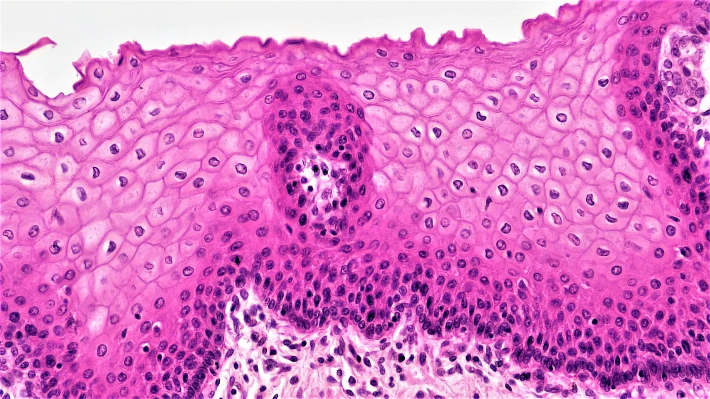
Your neuroscience study group is getting together to work on its end-of-course presentation and one of your group members has kindly brought some of their “famous” homemade chips and salsa for the group to enjoy. After a few hours of work, the group decides to break for a tasty snack. As each of the members bites into a chip loaded with salsa you hear in quick succession:
“Yuck, this tastes like soap!”
“Ouch, this burns!”
“Yum, this is the best salsa ever!”
How could the same food produce such different responses among people? Why would the nervous systems of members of the same species produce such diametrically opposed responses?
Chemicals are the building blocks of our world. From the sweet taste of an apple to the fresh smell of a newly cut lawn and even the burn of onion in our eyes, every substance we encounter requires us to interact with chemicals. The chemical senses allow us to build internal representations of the rich chemical environment that comprises our external world. Our repertoire of chemical senses directs us toward energy-providing food, alerts us to danger, and helps many animals find mates. While the anatomical, cellular, and molecular features of the chemical senses vary between systems and comparatively between organisms, each system serves a unique purpose in allowing animals to both interact and engage with the chemical environment surrounding them.
8.1The Chemical Senses are Several Distinct Sensory Systems
By the end of this section, you should be able to
- List the basic taste modalities, and for each, provide examples of the type of molecules they represent; for these examples describe why it might be important for an organism to detect those types of molecules.
- Describe behaviors that rely on olfactory cues in their environment and how these behaviors promote survival.
Signal integration is arguably the most fundamental function of the nervous system. While our brain can integrate information from any of our senses, our perception of taste and smell is likely the most profound sensory integration a human commonly experiences. One often-used example of this phenomenon is how a head cold alters the perception of food. Who among us has not sought the comfort in a favorite food while unwell only to be shocked at the incredible blandness? We might have even thought or said: “I cannot ‘taste’ anything today.” However, this perception is typically not the result of dysfunction in any signaling proteins, receptor cells, or sensory neurons of the “taste” neural system. Instead, in this example, our perception of altered taste is caused by the absence of the olfactory signals that typically occur while feeding. Our brains so tightly interweave the signals produced by the chemical senses during feeding that the common definitions of taste and smell lack the precision needed for describing the underlying neurobiology.
The complex connections between taste and smell can also make communicating about these systems challenging. While the common definitions of taste and smell are imprecise, they are helpful in accurately describing human perceptions that motivate fundamental animal behaviors. Thus, in this chapter, we use the term smell when referring to the chemosensory perception of inhaled air but use olfaction when describing the chemosensory system housed primarily in the nasal cavity. Similarly, the term taste commonly refers to the chemosensory perception of the oral cavity, but gustation specifically refers to the chemosensory system housed primarily in the oral cavity. To make this distinction even more explicit, flavor is the preferred term neuroscientists use to refer to the perception of oral chemosensation, which is produced when the brain integrates signals from the gustatory, olfactory and somatosensory systems. Comprehending these distinctions is the first step in understanding the neuroscience of the chemical senses and the vital behaviors they mediate. In this section, we will use the above vocabulary to explain the basic functioning of chemosensory systems before we explore how each system produces specific sensations in subsequent sections.
Taste-mediated behaviors
The primary role of the sense of gustation is to determine the chemical composition of substances we are about to ingest. The gustatory system is capable of detecting only a few specific types of molecules when in high concentration at close proximity with receptor cells, and it triggers only a handful of sensations or modalities (Sweet, Umami, Salty, Sour, Bitter, etc.). While this is relatively few modalities compared to olfaction, gustation is essential for survival. It is the final mechanism by which animals decide if materials are full of life-giving nutrients or life-threatening poisons.
Acquiring molecules essential for life
All animals consume food for energy and to obtain the chemical building blocks used to construct and repair their bodies. In humans and most other species, there are several broad classes of molecules that must be identified by the organism and ingested. Specifically, the detection of carbohydrates and/or protein (strings of amino acids) in food are critically important for most animals. Many animals also require a source of essential fatty acids that they cannot synthesize de novo, as well as external sources of salts to help maintain healthy fluid balance. The ability of animals to perceive carbohydrates, amino acids, fatty acids, and salts in food is largely mediated by the gustatory system. Each of these molecules plays an indispensable role in the fundamental physiological and metabolic processes of animals and must be acquired through ingesting food. Thus, one of the most important roles the gustatory system plays in animal behavior is to allow an animal to determine the nutritive value of a particular food before it is ingested and mediate decisions about which food sources to pursue. For humans, the positive hedonic experience provided by consuming sweet, umami, fatty, and salty foods drives food choices that exacerbate some of the most prevalent diseases in the developed world (see Introduction). Therefore, understanding how the gustatory system and brain work in concert to decide which foods an animal seeks out is of primary importance to understanding animal behaviors and managing human diseases.
Rejection of potentially toxic or poisonous chemicals
Of equal importance to the gustatory system’s role in the selecting of nutritious foods is its capacity to detect dangerous chemicals. Consuming essential molecules is a constant necessity for animal life, but mistakenly ingesting toxic, poisonous, or infectious materials only once can be a fatal error! Accordingly, the detection of compounds that indicate contamination with microorganisms or potential poisons can trigger the rejection or avoidance of those foods. For example, many vertebrate animals, including human infants, find sour foods aversive. Humans describe the taste of acids as being sour. Weakly acidic compounds are often produced in high concentrations by microorganisms metabolizing biomolecules—a process called fermentation. A possible explanation for the tendency of most animals to avoid sour substances is that foods with a high concentration of weak acids were likely decaying and were possibly dangerous to consume. Nevertheless, most adult humans readily consume foods that are fermented, like alcoholic beverages, yogurt, miso, kimchi, sauerkraut, garum, and certain types of sausages and cheeses. However, almost all these foods are thought of as “acquired tastes” that are avoided by inexperienced eaters. This phenomenon highlights the plasticity of the gustatory system and is an indication of how experience can shape the hedonic valence of the foods we consume.
Another example of a taste that potentially signals danger is bitterness. Humans perceive several classes of molecules as being bitter. These molecules are usually found in plants and are likely to have physiological or psychoactive effects on animals. Analogous to “acquiring a taste” for fermented foods, many humans also acquire a taste for bitter compounds that alter their physiology; alcohol, caffeine, nicotine, and cocaine are all perceived as being intensely bitter, but humans commonly will learn to tolerate the bitter taste of these drugs in pursuit of the psychoactive effects. Conversely, the bitter taste of many pharmaceuticals can cause individuals to avoid ingesting therapeutic drugs, and some green vegetables that have health benefits are also avoided because of their bitter taste. Despite these last two examples, perceiving compounds as bitter likely warns of a substance that could detrimentally alter an animal's health.
The primary behavior mediated by the gustatory system is the acceptance or rejection of particular foods. However, it is the integration of these signals with olfactory signals and even the somatosensory system (see The Gustatory System) by the brain that creates the sensation we refer to as “taste” or more precisely flavor.
Olfactory-mediated behaviors
The function of the olfactory system stands in contrast to the gustatory system. While the gustatory system detects only a handful of molecules, the olfactory system can detect almost any type of volatile (e.g. air-borne) organic molecule, producing a seemingly inexhaustible collection of different types of smells by detecting specific motifs in those molecules. The olfactory system is also sensitive to incredibly small concentrations of molecules and can therefore detect sources of volatile molecules at great distances. Our sense of smell does more than just add sensory complexity to the flavor profile of a meal or allow us to enjoy the scent of a spring flower. Across the animal kingdom, the olfactory system is an important sensory modality for numerous sensory-guided behaviors. Below, we describe three olfaction-dependent behaviors: navigation, nutrient finding, and mate selection/communication.
Navigation
Navigation occurs on many scales. Bacteria climb chemical gradients to traverse mere fractions of an inch. Insects, like ants and honeybees, travel dozens of meters to find food and nectar. And salmon return hundreds of kilometers to spawn in the very same river from which they hatched. While these examples occur on vastly different spatial scales, they each rely on interactions with chemical cues in the environment. It has long been a mystery how salmon know to return to the exact location they hatched from an egg. We now know that the local olfactory or chemical composition of a river plays an important role in their migration. Fish can smell underwater by detecting waterborne chemicals, much like we do for airborne odors.
Nutrient finding
Nutrients are found in food sources that provide animals with energy and essential compounds for their growth. We discussed above the critical role of gustation in helping animals to assess the nutrients in food they might ingest, but olfaction is essential to locating these nutrients. A crying baby searching for its mother’s milk is a familiar example of nutrient sensing that relies on olfaction. Milk is especially rich in lipids (fats) and all mammals rely on it for their caloric intake early in life. Because of this, it is critical that animals can locate and obtain this important food source. Many mammals, like rodents, begin life without the ability to see or hear and must find their way to milk in order to thrive. These animals rely on their sense of smell to find their mother and her milk. Similarly, not all fats and sugars carry the same nutritional content; olfaction helps babies and adults are able to distinguish between them.
Mate selection and communication
The selection and identification of mates is a universal need for all animals that reproduce sexually. When selecting a mate, animals must gauge both the receptiveness and fitness of potential reproductive partners. These cues can be delivered through numerous behavioral displays; however, olfactory cues often play an important role in bringing mates together. Many signals related to reproductive behaviors are conveyed by chemicals called pheromones, which are sensed using their own specialized olfactory system, separate from smells associated with things like nutrients. Pheromones are powerful substances that can signal sexual receptivity between animals, influence physiological responses like the estrus cycle, and be used to coordinate other behaviors among animals. Behavioral responses to pheromones are innate rather than learned. Later in this chapter we will discuss how pheromones may even play an important role in human partner selection.
Chemesthesis-related behaviors
Many of the culinary ingredients we call spices contain chemicals that stimulate the somatosensory system to produce warming and cooling sensations. The technical term for the chemical stimulation of the somatosensory system is chemesthesis. Many plants produce chemicals that simulate thermal stimuli to alter the behavior of predatory animals. However, because our brains integrate chemesthetic with olfactory and gustatory signals to produce the perception of flavor, human beings cultivate these plants to use as flavor enhancers. The sense of chemesthesis is essential to describing the distinct culinary traditions around the world, but increasingly research indicates that the sense of chemesthesis is important for monitoring parts the body for growing bacteria (see Chemethesis, Spices, and Solitary Chemosensory Cells).
These differences highlight that stimulation of the gustatory system is only capable of producing a few very specific sensations that correspond to a few specific classes of molecules; conversely the olfactory system can detect the presence of an almost limitless number of different compounds and the language we use to describe those sensations is similarly diverse. Additionally, you can begin to determine the different sensations mediated by the gustatory and olfactory systems by comparing how similar your description of sniffing the jellybean was to the other experiences. Likely, the sniffing description was very similar to what was recorded for the “Jellybean/Open” experience. There are some foods, however, that may produce different sensations from orthonasal olfaction (e.g. sniffing) and retronasal olfaction. For example, some cheeses (e.g. parmesan cheese or blue cheeses) are famously stinky when perceived by orthonasal olfaction but produce a different sensation when perceived retronasally.
When you compare the description of the mint to the jellybean, you will likely notice the addition of words like burning, cool, pungent, or painful in the description of the mint. These sensations are due to chemicals in the mint stimulating the free nerve endings of the trigeminal nerve—part of the somatosensory system, your sense of chemesthesis.
The jellybean experiment is easy to do with most foods, and, by practicing it, you can become better at perceiving the difference between gustation, olfaction, and chemethesis. Eventually you may even be able to tell the difference without pinching your nose closed!
Summary
Watch the section summary video
Streamed from OpenStax; open it there if it does not play.
Watch the section summary video
Streamed from OpenStax; open it there if it does not play.
All animals rely on the chemical senses for their ability to survive and proliferate. Gustation alerts us to toxic or hazardous compounds in our foods, while at the same time evaluating their nutritional content. Olfaction works in concert with taste to help us locate and recognize food sources. Olfaction also alerts animals to the presence of both predators and potential mates, increasing survival and reproductive opportunities. Our sense of smell also serves to alert us to dangers in the environment like smoke from a fire. Our brain integrates signals from these and other sensory systems to produce the multi-modal perceptions we describe as flavor.
Key terms
Signal integration, smell, taste, flavor, gustation, nutrients, olfactory system, pheromones, chemesthesis, retronasal olfaction, orthonasal olfactionReferences
Chaudhari, N., & Roper, S. D. (2010). The cell biology of taste. The Journal of Cell Biology, 190(3), 285–296. https://doi.org/10.1083/jcb.201003144
Scholz, A. T., Horrall, R. M., Cooper, J. C., & Hasler, A. D. (1976). Imprinting to chemical cues: The basis for home stream selection in salmon. Science, 192(4245), 1247–1249. https://doi.org/10.1126/science.1273590
Yarmolinsky, D. A., Zuker, C. S., & Ryba, N. J. (2009). Common sense about taste: From mammals to insects. Cell, 139(2), 234–244. https://doi.org/10.1016/j.cell.2009.10.001
Practice The multiple-choice and fill-in-the-blank questions for this section are interactive and live on OpenStax, so they are not carried here: open the book on openstax.org.
8.2The Gustatory System
By the end of this section, you should be able to
- Describe the functional anatomy of the gustatory system from cellular receptors to neural pathways in vertebrates.
- Describe the molecular pathways required for the detection of a taste modality
- List some of the ways gustation can be parallel and different across species
Imagine it is a cool fall evening at a street festival, and you are hungrily wandering through the food trucks trying to find the perfect snack. You have been looking forward to this moment all week; even planning lighter meals today to facilitate your guiltless indulgence of the calorically rich food. Suddenly you see just what you have been looking for: at least a cubic foot of pink, blue, and mauve spun sugar on a stick. Salivating, you purchase the snack and are filled with joy as handfuls of the cotton candy instantaneously liquefies into sweetness as it hits your tongue. In this section, we will explore how the gustatory system is able to distinguish between different classes of molecules to produce different sensations (e.g. Sweet, Umami, Salty, Sour, Bitter) and current theories about how these signals are processed in the CNS.
Gustation and peripheral anatomy to receptors
The primary role of the gustatory system is to assess the quality and concentration of chemicals before they are allowed entrance into the digestive tract. This process begins with bringing chemicals into the mouth where they can interact with specialized receptors on sensory cells.
The tongue and oral cavity
The sensory cells of the gustatory system are typically concentrated in the oral cavity. These sensory cells are found in clusters called taste buds. The exact distribution of taste buds will vary among species. In most mammals, taste buds are concentrated on the tongue (Gross anatomy of gustatory and olfactory systems), but are also found on the soft palate, epiglottis, larynx, upper esophagus, and associated with salivary glands behind the molars.
![A diagram of the human oronasal cavity. The nasal cavity sits above the mouth and includes the olfactory epithelium on the top interior surface. It contacts the olfactory bulb which extends from the brain. The nasal cavity connects to the esophagous via the naso-, then oro- then hypo- pharynx (listed superior to inferior). The tongue sits beneath the hard and soft palates, which separate the mouth from the nasal cavity. The mouth opens dorsally to the oropharynx. The epiglottis sits at the superior end of the trachea, which itself is parallel and ventral to the esophagus. The larynx is shown just inferior to the epiglottis in the trachea.](assets/textbook/img/Image-8.01_-Gross-anatomy-of-gustatory-and-olfactory-systems.webp)
Many species of fish, in contrast, possess taste buds in the oral cavity but also on their lips and on the skin of their bodies—indeed, taste buds are so prevalent on the bodies of catfish that they are sometimes described as being “swimming tongues.” Conversely, marine mammals (e.g. dolphins, seals) that feed by swallowing prey whole typically have a reduced number of taste buds throughout the oral cavity and tongue. These anatomical adaptations all facilitate the specific feeding behaviors of each species. Despite the observed anatomical variation, chemicals in food are detected by sensory cells in taste buds, and this information is subsequently passed on to homologous regions of the central nervous system.
While there is great variation in the anatomy of the oral cavity between species, the tongue of most vertebrates is a sensory organ specialized for both chemosensation and somatosensation. If you have ever looked at your tongue closely in the mirror, you might have noticed that its anterior surface appears rough, except for scattered bumps which have a smooth texture (Tongue and papillae anatomy).
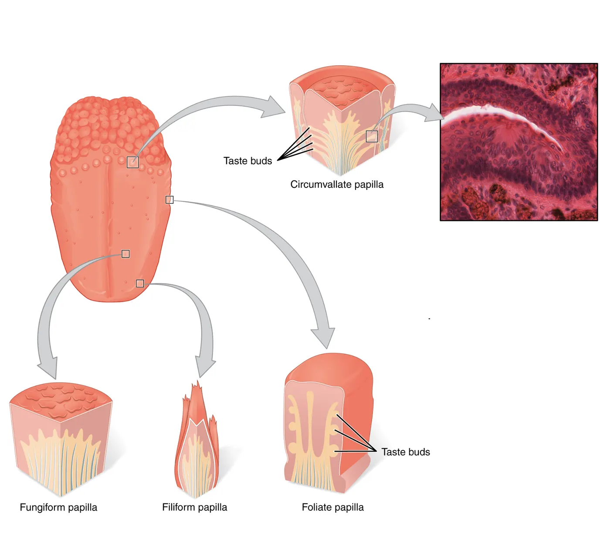
Both the rough areas and smooth bumps are made up of structures called papillae, which enhance somatosensation on the tongue. The rough areas of the tongue are covered in filiform papillae, which are cone-shaped, come to a point, and do not contain taste buds. The three other types of papillae contain taste buds: the smooth round bumps on the tongue are called fungiform papillae and often have 1 to 5 taste buds at their apex. On either side of your tongue there are 4 to 6 groves lined with hundreds of taste buds called foliate papillae. And at the very back of your tongue are 4 to 8 circular troughs containing taste buds called circumvallate papillae. The exact number of papillae varies across vertebrate animals, but most have each type of papillae to facilitate exploring the textures of food and channeling the biomolecules towards taste buds.
Behind the tongue is a space called the pharynx. Gross anatomy of gustatory and olfactory systems shows the three major divisions of the pharynx. In most terrestrial animals, this space connects to the oral cavity, esophagus, trachea, nasal cavity, and even the inner ear (see Introduction. This anatomical arrangement allows for the chemicals in food to be sampled with both the gustatory and olfactory systems simultaneously. The co-simulation of these systems when eating strengthens and facilitates our perceived integration of these senses.
Taste buds and taste receptor cells
Papillae are visible with the naked eye, while taste buds are so small they require a microscope to see. People without formal anatomical training sometimes mistakenly equate fungiform papillae (0.5 to 0.8 millimeters or 500 to 800 micrometers across) with taste buds (30 to 100 micrometers across). Taste buds resemble an onion or bulb of garlic in cross-section (Taste bud anatomy).
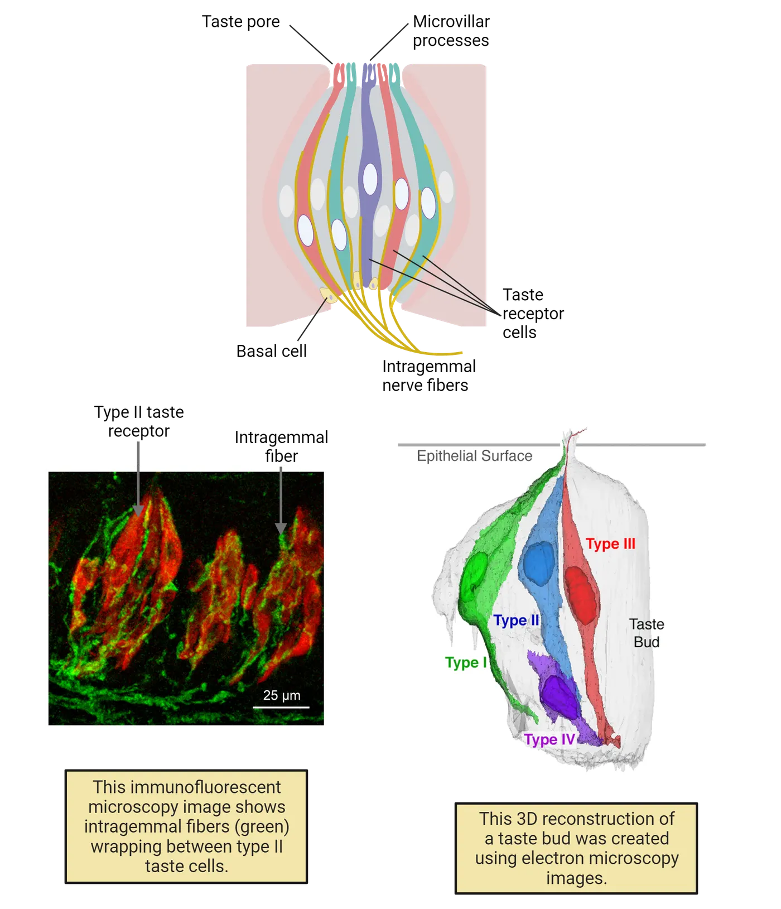
Each taste bud is a collection of 50 to 150 neuroepithelial cells and associated nerve fibers. These neuroepithelial cells are spindle-shaped or bottle-shaped with apical microvillar tufts that open into the lumen of the oral cavity in a structure called a taste pore. For the gustatory system to detect particular chemical stimuli, a chemical must first enter the taste pore so it can interact with proteins in the cell membrane of the microvillar process of these cells. Because these cells are the first element of the gustatory system that responds to chemicals, they are referred to as taste receptor cells (TRCs).
Anatomists studying the cells of taste buds have grouped them into three types based on characteristics observed by transmission electron micrography () (see Methods: Transmission Electron Microscopy). These classifications based on micro-anatomy turn out to be functional, as different classes of chemicals activate Type I, Type II and Type III taste receptor cells. Type II and Type III cells will make occasional cytoplasmic contact with each other or nerve fibers but Type I cells enwrap the other cell types supporting them and helping degrade neurotransmitters released by the other cells. These functions have caused scientists to describe Type I cells as “glial-like.” Type IV cell is a designation given to basal cells in the bud that divide to replace the other taste receptor cell types that are lost to damage. The specialized anatomical arrangement of taste receptor cells allows taste buds to detect chemicals and selectively modulate either other cells in the taste bud or the associated nerve fibers to ultimately produce the familiar taste qualities of sweet, umami, bitter, salty, and sour.
Taste receptor cells and taste receptor proteins
But how does a taste receptor cell in a taste bud turn a chemical in your mouth into a signal that your brain can understand? Decades of research have helped us understand that the mechanisms for detecting and transducing a chemical into a neural signal are different for each of the half dozen or so taste qualities. This stands in dramatic contrast to the mammalian olfactory system, where hundreds of genes belonging to the same receptor family using the same basic transduction paradigm allow you to perceive an incomprehensible number of olfactory qualities. In the mammalian taste system, at least 4 different families of receptors are implicated in detecting the chemicals we perceive as sweet, umami, bitter, sour, and salty. An overall summary of these receptors and how those signals are transduced is provided in Taste receptor cell comparison.
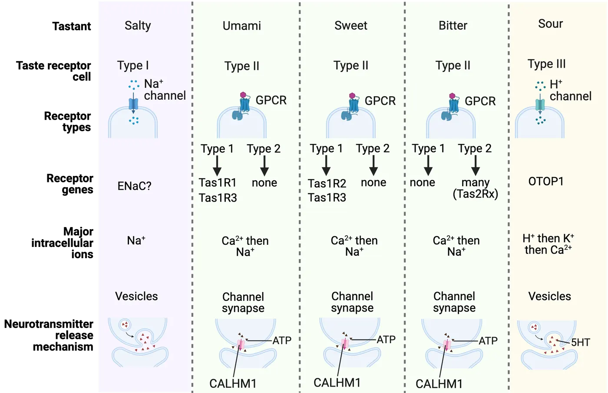
Three distinct groups of Type II taste receptor cells are responsible for detecting sweet, umami, and bitter chemicals using receptors from the GPCR super-family. The sweet and umami-sensitive taste receptor cells detect chemicals using taste receptors from subfamily 1, which is made up of 3 individual receptor genes designated Tas1R1, Tas1R2, and Tas1R3. To produce a functioning receptor protein from this family of receptors—either sweet or umami—two different receptor genes must combine to make a heterodimer: The sweet receptor requires both Tas1R2 and Tas1R3; while an umami receptor requires Tas1R1 and Tas1R3. The third group of type II taste receptor cells detects bitter compounds via taste receptor subfamily 2 (Tas2Rs), which consists of many more genes than subfamily 1 (e.g. humans have 25 Tas2R genes). Thus, sweet-sensitive type II receptor cells will express Tas1R2+Tas1R3, umami-sensitive type II receptor cells will express Tas1R1+Tas1R3, and bitter-sensitive type II receptor cells will express some combination of Tas2Rs. Activation of any of these receptors triggers lipid secondary messenger signaling that ultimately results in the release of ATP to activate gustatory nerve fibers.
Ion channels are responsible for the detection of sour and salty chemicals. Most sour chemicals are acids that dissociate to produce a proton (e.g. hydrogen ion) in solution. Type III taste receptor cells that are sensitive to sour chemicals express a proton channel Otopetrin 1 (Otop1). Protons flow into these cells through Otop1 and ultimately trigger a change in membrane potential resulting in the vesicular release of serotonin (5HT).
While scientists are still searching for the precise mechanism of salt detection, Epithelial Sodium (Na) Channels (ENaC) are widely considered to play an essential role in the depolarization of Type I taste receptor cells in the presence of sodium ions.
Identifying the receptor proteins TRCs utilize to detect chemicals is a prerequisite for a complete understanding of the taste modalities the gustatory system is capable of detecting. The involvement of at least four different families of receptor proteins and distinct transduction mechanisms in taste receptor cells highlights the inherently molecular nature of gustatory perception.
Other possible taste modalities
Neuroscientists are continuously designing experiments to determine precisely what chemicals are detected by the gustation system. For example, given that carbohydrates and proteins are associated with primary taste qualities, the hypothesis that the gustatory system would also respond to energy-rich lipids is appealing. Several candidate receptors for fat taste have been identified in taste receptor cells and work in this area is ongoing (). The mechanisms by which the gustatory system may detect the flavor qualities described as astringent (), metallic (), kokumi/richness, or fatty is an active area of research.
Previously, there was a great scientific debate surrounding the perception of glutamate and if it met the criteria for a primary taste modality (). Ultimately, the identification of the T1R1+T1R3 heterodimer () allowed genetic tools to be combined with anatomical, electrophysiological, and behavioral experiments to address this question. We can taste glutamate and we call this primary taste umami. Over the past decades, the Japanese loan-word umami has been so popularized that it is regularly mentioned on gourmet menus, on foodie blogs, and by celebrity chefs around the world. In contrast to its current popularity, the concept of umami and the identification of chemicals that produce the sensation was largely ignored in the English-speaking scientific community for nearly a century (; ). The scientific discoveries identifying T1R1+T1R3 as essential for the perception of umami have helped place it as one of the main tastes on menus around the world.
Gustation - neurotransmission and the central nervous system
After taste receptor cells detect chemical stimuli in the oral cavity, this signal must be transmitted to the nerves innervating the taste bud. These intragemmal (from the Latin gemma meaning bud, gem, or cup) nerve fibers enter the taste buds (shown in Taste bud anatomy), detect neurotransmitters released from taste receptor cells and conduct this information into the brain regions where the perception of umami, sweet, bitter, sour, and salty are represented. Before reaching gustatory cortex, taste information passes through 2 relays along the way: the nucleus tractus solitarius in the medulla and the posteroventral nucleus of the thalamus (Neural pathways of taste). Once this information has arrived in the gustatory cortex, an animal can make decisions about the palatability of the substances in the oral cavity. How the primary taste qualities are represented between the taste buds and brain remains one of the great open questions in sensory neuroscience.
![A diagram of the human neural pathways from the sensory neurons in the tongue to the gustatory cortex of the insula, as described in the main text. The nucleus tractus solitarius is noted to have preserved anatomical ordering from the tongue (anterior tongue to superior nucleus tractus solitarius via Chordae tympani branch of facial (VII) nerve; middle tongue to middle nucleus tractus solitarius via Gossopharyngeal (IX) nerve; posterior tongue to more inferior nucleus tractus solitarius via Vagus (X) nerve.](assets/textbook/img/Image-8.03_Neural-pathways-of-taste.webp)
While the broad pathway of gustatory information is known, exactly how that pathway encodes different tastes remains uncertain. Historically, most hypothesized models for how the nervous system encodes primary taste qualities can be classified as either labeled line coding or across-fiber pattern coding. In labeled line coding, there is a discrete pathway or circuit from the receptor cells to the afferent neurons, to higher brain regions for each of the primary taste qualities. In this coding model, a sweet chemical of adequate concentration would result in activity through the sweet “line” and would not trigger substantial activity in the circuits for other primary tastes. A classic example of a sensory system that uses label line coding is the somatosensory system (see Introduction).
In across-fiber pattern coding, any given pathway (e.g. receptor cells, nerve fibers, higher brain regions) is not associated with any individual primary taste quality; rather, a specific pattern of activity among overlapping neural pathways codes for each of the primary tastes. Across-fiber pattern coding allows the vertebrate olfactory system to represent an overwhelming number of olfactory modalities.
Labeled line coding diagrams these two opposing models, using circles to represent neurons that might respond to sour, salt or both. As technological advancements allow scientists to examine the activity in gustatory circuits at an ever-increasing resolution, new refinements are constantly being made to theories of gustatory system coding.
![A diagrammatic representation of labeled line coding versus cross-fiber pattern coding, where neurons are represented by circles of different colors depending on which tastant activates them. In labeled line coding, activation of a discrete population of neurons would encode for different sensory modalities. There is no overlap in activation by different tastants. In cross-fiber pattern coding, specific combinations of neurons that may overlap encode different sensory modalities. In cross-fiber pattern coding, there is substantial overlap between the neurons activated by both stimuli.](assets/textbook/img/Image-8.28_Labeled-line-coding.webp)
Neuroscience in the lab: Studying taste receptor cell to neurotransmission
Recording action potentials from a nerve that primarily makes connections with taste buds provides an important assay for determining if chemicals are activating the gustatory system. The chorda tympani branch of the facial (VII) nerve and the glossopharyngeal (IX) nerve innervate the taste buds on the rostral ⅔ and caudal ½ of the tongue, respectively. In contrast to behavioral data, chorda tympani and glossopharyngeal nerve recordings in ATP receptor knockouts or animals treated with an ATP receptor blocker show decreased activity not just for umami, sweet and bitter tastants, but also for salty and sour compounds (Chorda tympani nerve recording). Conversely, while knockout or pharmacological blockade of serotonin receptors results in no taste-related behavioral deficits in mice, it does decrease chorda tympani nerve response to MSG, sucrose, salts, and both weak and strong acids. Taken together, these data suggest that ATP release is necessary for taste receptor cell nerve neurotransmission for all taste modalities, while serotonin acts synergistically to intensify the neural response to certain taste qualities.
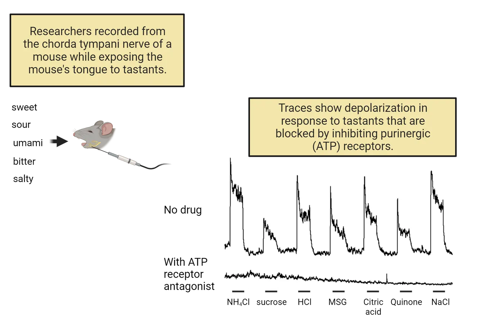
However, this interpretation is difficult to resolve with the observation regarding transmitter release from taste receptor cells. Specifically, what is the source of ATP, if only type III cells are activated by sour tastants and those cells do not appear to release ATP or possess the proteins necessary for ATP’s release? One hypothesis, which would explain these results, would be the existence of a currently unknown mechanism by which low levels of ATP could be packaged alongside serotonin. Another explanation is that the limited cell-to-cell contacts between type II and type III cells allow for serotonin signaling directly between taste receptor cells to modulate ATP release from type II cells in the presence of sour stimuli. However, this model must account for the serotonin’s apparent inhibitory action on type II cells making ATP release from these cells less likely in the presence of sour stimuli.
Science as a process: Taste nerves and the nucleus of the solitary tract
As intergemmal nerve fibers exit taste buds, they merge into larger bundles until ultimately joining cranial nerves, which conduct taste information to the brainstem. A recently published connectome (a complete map of cellular and neural connections) of taste buds determined that 97% of intergemmal fibers innervate one taste receptor cell or the same taste receptor cell type (Wilson et al., 2022). Thus, each intergemmal nerve fiber is passing information from only one taste receptor cell type to the nucleus of the solitary tract in the brainstem.
Three cranial nerves innervate taste buds in distinct regions of the oral cavity: Taste buds on the rostral or anterior 2/3 of the tongue are innervated by the chorda tympani branch of the facial (VII) nerve, taste buds on the caudal 1/3 of the tongue and palate are innervated by the glossopharyngeal (IX) nerve and taste buds found on the epiglottis are innervated by the vagus (X) nerve. Chemosensory information from all three of these nerves is conducted to a region of the brainstem called the nucleus of the solitary tract.
The nucleus of the solitary tract (NTS, from the Latin nucleus tractus solitarii) is the primary gustatory and visceral chemosensory nucleus of the central nervous system. Gustatory information to the central nervous system projects to the most rostral portion of the NTS (Nucleus of the solitary tract). Within the rostral NTS (rNTS) or gustatory nucleus, projections from the facial, glossopharyngeal, and vagal nerves are arranged rostrally to caudally reflecting their innervation of taste buds in the oral cavity. Chemosensory afferents projecting to the caudal NTS (cNTS) carry information from visceral chemoreceptors. This anatomy creates a rostral to caudal topographic map of chemosensory inputs from the mouth to the alimentary canal (i.e. digestive tract) and other internal organs along the NTS.
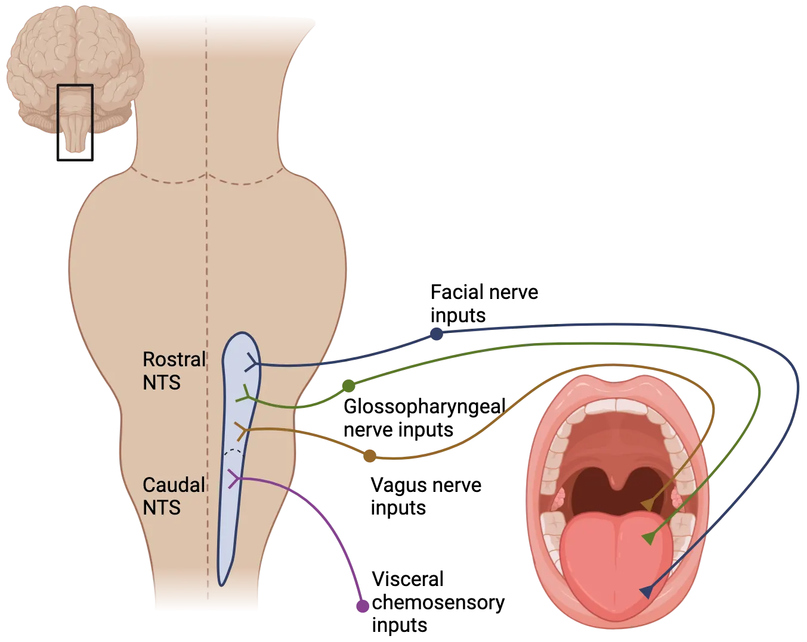
In addition to its anatomical map, investigators continue to define the chemotopic map or coding logic for taste qualities within the NTS. For example, most chemicals perceived as bitter trigger activity in neurons located in the medial rNTS. MSG and NaCl, which taste savory and salty, both activate the intermediate zones of the rNTS. Sweet chemicals produce diffuse activity along the nucleus. Sour chemicals, like citric acid, trigger activity in lateral-rostral and mid-NTS. One major challenge that researchers attempting to define the chemotopic map of the NTS face is determining the influence that non-gustatory inputs play in the coding logic of these taste qualities.
While the rNTS is the first relay of gustatory information in the central nervous system, it also receives and integrates other signals that can influence our perception of flavor. For example, contrary to its moniker as the gustatory nucleus, the rNTS also receives oral somatosensory information from the trigeminal nerve (see How Do Connections Differ Across Species?). The temperature of solutions with identical chemical composition can modulate the firing neurons of the NTS, presumably through these somatosensory inputs. The result is that a particular rNTS neuron that fires action potentials at a specific rate to a specific chemical solution may increase or decrease its activity as the temperature of that solution changes. Mouse NTS response to tastants at different temperatures shows an example of this phenomenon.
![Top half of image shows the experiment design and basic outputs described in the main text. 1) Tastants are flowed over the mouse's tongue while recording fromneurons in the NTS. 2) Neurons responsive to single tastants are identified. Representative electrophysiological recordings are shown of NaCl and sucrose-responsive cells firing many action potentials in response to their preferred tastant. 3) Recordings are shown that reveal that the temperature of the tastant fluid changes NTS neuron firing. Bottom half of diagram is a graph with action potentials on the y-axis. Recording from many single-taste NTS cells shows that temperature produces different numbers of action potentials on different tastes.](assets/textbook/img/Image-8.27_Mouse-NTS-response-to-tastants-at-different-temperatures.webp)
In this experiment, the activity of neurons in the NTS was recorded while fluids of different temperatures, containing different tastants were flowed over a mouse’s tongue. The top of the figure shows firing of a sucrose-oriented NTS neuron in response to room temperature sucrose and warm sucrose, which results in more firing than the room temperature solution. The responses of NTS neurons to temperature are not all the same, though. The salt-oriented NTS neuron fires less to warm salt than room temperature salt, for example. The bottom on the figure shows more evidence of this variability across NTS neurons, with some tastants leading to more firing when warm, some leading to less and some seeming relatively insensitive to this temperature change. This anatomical and physiological arrangement is one biological explanation for the observation that temperature and other sensory information can have a profound impact on flavor perception.
Gustatory pathway and cortical processing
Ultimately the gustatory information from the NTS is relayed to the primary gustatory cortex (GC), where the conscious perception of taste occurs. In humans and other primates, fibers from the NTS project directly into the parvocellular division of the ventral posterior medial nucleus of the thalamus (VPMpc), and then into the GC.
The conscious perception of taste occurs in the GC. This cortical region can be viewed by separating the lateral sulcus and is found along the anterior insular lobe and frontal operculum (see Neural pathways of taste). In a variety of vertebrates, techniques from electrophysiology to cellular and functional imaging have established that neurons of the gustatory cortex demonstrate differential activity in responding to chemicals with different tastes. Additionally, some neurons in the region fire different patterns of action potentials in response to changing concentrations of tastants. Thus, both the identity and intensity of the chemical stimuli detected by the taste receptors of the tongue can be represented in the GC. From the GC, a large portion of gustatory information passed on to the secondary gustatory cortex, located in the caudolateral section of the orbitofrontal cortex and ultimately integrates gustatory signals with other sensations, including those of satiety.
Gustatory information is not just a one-way street to the primary and secondary GC, though. Interconnection with other sensory modalities, and even other non-sensory systems, occurs throughout the gustatory neural pathways. The gustatory connections to the limbic system are one, particularly important example of this cross-talk. Along the gustatory neural pathway, collateral and descending fibers pass gustatory signals back to the NTS and into the limbic system, modulating the limbic system’s regulation of feeding behaviors (see Introduction). For example, the neural connections between the GC and the lateral hypothalamus allows for gustatory signals to immediately modulate feelings of satiety.
Additionally, neural inputs to the amygdala mediate negative associations with foods that might have poisoned an animal. For example, it is common for people who have suffered from food poisoning to avoid the food that has made them sick for a long time. This is a phenomenon called conditioned taste aversion and is observed in a variety of animals. In the lab, rodents will avoid a novel tastant if it is paired with a subcutaneous injection of KCl (which makes the animal feel sick) just a single time. A conditioned taste aversion is an important tool for designing experiments to assess if an animal perceives two chemicals as having similar tastes; specifically, if an animal that has a conditioned taste aversion to one chemical also avoids a different chemical, then the animal likely perceives the two chemicals as having the same or a very similar taste. This behavioral assay has been an essential tool for studying taste perception in animals.
Neuroscience Across Species: Non-mammalian gustatory systems
Across species, chemosensory cells that detect the same broad classes of biomolecules are almost always concentrated around the entrance to the digestive tract. So far, we have talked mostly about taste in animals like mammals, which sense chemicals they might ingest using taste buds in the interior of their mouth. In contrast, in the common model organism Caenorhabditis elegans (a roundworm of phylum Nematoda), chemosensory neurons are found associated with the lips that physically gate the digestive tract. Segmented worms like leeches and earthworms are literally covered in chemoreceptors (on their skin), but these cells are most concentrated on the prostomium—the scoop-like first segment with functions analogous to a tongue or proboscis. In radially symmetric octopodes, chemosensory cells are present inside the suckers on the 8 arms surrounding their beaked mouths (van Giesen, et al., 2020). Even among hydra (phylum Cnidaria), whose nervous system consists of a simple neural network (see Introduction), chemical cues triggering feeding reflexes are influenced by internal metabolic states (Grosvenor, et al., 1996). Even filter feeders are often capable of modifying behavior in response to the chemical contents of their feeding substrate.
We know an especially large amount about how gustation occurs in the commonly-studied fly species D. melanogaster. The D. melanogaster exoskeleton is covered in hair-shaped sensory organs called sensilla. While hair on a human’s body can provide mechanosensory information, an individual sensillum on a fly may be specialized for mechanoreception or chemoreception. Gustatory sensilla can be found on their wings, tarsi (legs), and body but are concentrated on the proboscis. This anatomical arrangement allows fruit flies to “taste” any surface they land on and, if appetitive chemicals are present, reflexively extend their proboscis (mouth parts) to feed.
While the anatomical location of gustatory sensilla in the fly is quite different than that of mammalian taste buds, how the two sensory cell systems work is analogous. Like taste buds, each sensilla contains neurons analogous to taste receptor cells; these gustatory receptor neurons (GRNs) detect different classes of chemicals. Each GRN is a bipolar neuron, whose cell body is inside the sensillum with an axon projecting to the insect’s central nervous system, and a dendrite projected towards a taste pore at the sensillum tip. GRNs detect chemicals using a different receptor family than vertebrates—they are ligand gated ion channels, not GPCRs. These receptors are expressed in combinations that make different GRNs sensitive to sugars, simple ionic compounds (salts), pure water and alkaloids or other compounds humans perceive as bitter. It is worth noting here that despite this nomenclature, we do not know if a fly’s gustatory experience of alkaloids (or any of these other compounds) is at all like what we humans would describe as “bitter!” We can say that flies typically avoid these and that their behavioral response to these compounds is similar to that of vertebrates. Notably, while there is controversy over how gustatory information gets organized centrally in mammals, in flies there is good evidence that information follows a labeled line coding model, where specific pathways mediate specific tastes all the way to the higher centers of the CNS.
Summary
The anatomical and molecular differences between the vertebrate and insect gustatory systems are vast, but what is truly astounding are the commonalities between animals. Animals are responsive to the same broad classes of biomolecules despite utilizing different molecular mechanisms and sensory organs to detect them. Gustatory sensilla and tongues simultaneously provide both chemosensory and mechanosensory signals, which are co-processed in a primary gustatory relay that mediates critical reflexes involving feeding or swallowing. Fundamentally, the gustatory system and its integration with other sensory systems allows animals to learn associations and alter feeding behaviors based on the nutrient content of the food they encounter. Despite vast differences in body plans, life history, or anatomy, the commonalities of the gustatory systems and the essential behaviors it mediates in animals speaks to the profound importance of “taste.”
Key terms
taste bud, tongue, papillae (filiform, foliate, fungiform, circumvallate), pharynx, taste pore, taste receptor cell (TRC), type 1 taste receptors (Tas1Rs, T1Rs), type 2 taste receptors (Tas2Rs, T2Rs), type 3 taste receptors (Tas1R3, T3Rs), otopetrin 1 (Otop1), epithelial sodium channels (ENaC), fat taste, intragemmal, labeled line coding, across-fiber pattern coding, chorda tympani branch of the facial (VII) nerve, glossopharyngeal (IX) nerve, nucleus of the solitary tract (NTS), chemotopic map, gustatory nucleus, primary gustatory cortex (GC), ventral posterior medial nucleus of the thalamus (VPMpc), secondary gustatory cortex, conditioned taste aversion, sensilla, gustatory receptor neurons (GRNs)References
Ahmad, R., & Dalziel, J. E. (2020). G protein-coupled receptors in taste physiology and pharmacology. Frontiers in Pharmacology, 11, 587664. https://doi.org/10.3389/fphar.2020.587664
Avery, J. A., Liu, A. G., Ingeholm, J. E., Gotts, S. J., & Martin, A. (2021). Viewing images of foods evokes taste quality-specific activity in gustatory insular cortex. Proceedings of the National Academy of Sciences of the United States of America, 118(2), e2010932118. https://doi.org/10.1073/pnas.2010932118
Besnard, P., Passilly-Degrace, P., & Khan, N. A. (2016). Taste of fat: A sixth taste modality?. Physiological Reviews, 96(1), 151–176. https://doi.org/10.1152/physrev.00002.2015
Barboza, M. L. B., & Reyno, B. (2022). Taste receptors in aquatic mammals: Potential role of solitary chemosensory cells in immune responses. The Anatomical Record (Hoboken, N.J.: 2007), 305(3), 680–687. https://doi.org/10.1002/ar.24708
Barlow, L. A. (2022). The sense of taste: Development, regeneration, and dysfunction. WIREs Mechanisms of Disease, 14(3), e1547. https://doi.org/10.1002/wsbm.1547
Barretto, R. P., Gillis-Smith, S., Chandrashekar, J., Yarmolinsky, D. A., Schnitzer, M. J., Ryba, N. J., & Zuker, C. S. (2015). The neural representation of taste quality at the periphery. Nature, 517(7534), 373–376. https://doi.org/10.1038/nature13873
Behrens, M., & Meyerhof, W. (2018). Vertebrate bitter taste receptors: Keys for survival in changing environments. Journal of Agricultural and Food Chemistry, 66(10), 2204–2213. https://doi.org/10.1021/acs.jafc.6b04835
Behrens, M., & Ziegler, F. (2020). Structure-function analyses of human bitter taste receptors—Where do we stand?. Molecules (Basel, Switzerland), 25(19), 4423. https://doi.org/10.3390/molecules25194423
Bradley, R. M. (Ed.). (2007). The Role of the Nucleus of the Solitary Tract in Gustatory Processing. CRC Press/Taylor & Francis.
Burnstock, G. (2020). Introduction to purinergic signaling. Methods in Molecular Biology (Clifton, N.J.), 2041, 1–15. https://doi.org/10.1007/978-1-4939-9717-6_1
Bystrova, M. F., Romanov, R. A., Rogachevskaja, O. A., Churbanov, G. D., & Kolesnikov, S. S. (2010). Functional expression of the extracellular-Ca2+-sensing receptor in mouse taste cells. Journal of Cell Science, 123(Pt 6), 972–982. https://doi.org/10.1242/jcs.061879
Cai, H., Maudsley, S., & Martin, B. (2014). What is the role of metabolic hormones in taste buds of the tongue. Frontiers of Hormone Research, 42, 134–146. https://doi.org/10.1159/000358322
Caprio, J., Brand, J. G., Teeter, J. H., Valentincic, T., Kalinoski, D. L., Kohbara, J., Kumazawa, T., & Wegert, S. (1993). The taste system of the channel catfish: From biophysics to behavior. Trends in Neurosciences, 16(5), 192–197. https://doi.org/10.1016/0166-2236(93)90152-c
Chan, C. Y., Yoo, J. E., & Travers, S. P. (2004). Diverse bitter stimuli elicit highly similar patterns of Fos-like immunoreactivity in the nucleus of the solitary tract. Chemical Senses, 29(7), 573–581. https://doi.org/10.1093/chemse/bjh062
Chaudhari, N. (2014). Synaptic communication and signal processing among sensory cells in taste buds. The Journal of Physiology, 592(16), 3387–3392. https://doi.org/10.1113/jphysiol.2013.269837
Chen, X., Gabitto, M., Peng, Y., Ryba, N. J., & Zuker, C. S. (2011). A gustotopic map of taste qualities in the mammalian brain. Science (New York, N.Y.), 333(6047), 1262–1266. https://doi.org/10.1126/science.1204076
Chyb, S., Dahanukar, A., Wickens, A., & Carlson, J. R. (2003). Drosophila Gr5a encodes a taste receptor tuned to trehalose. Proceedings of the National Academy of Sciences of the United States of America, 100 Suppl 2(Suppl 2), 14526–14530. https://doi.org/10.1073/pnas.2135339100
Dahir, N. S., Calder, A. N., McKinley, B. J., Liu, Y., & Gilbertson, T. A. (2021). Sex differences in fat taste responsiveness are modulated by estradiol. American Journal of Physiology. Endocrinology and Metabolism, 320(3), E566–E580. https://doi.org/10.1152/ajpendo.00331.2020
Dando, R., Pereira, E., Kurian, M., Barro-Soria, R., Chaudhari, N., & Roper, S. D. (2015). A permeability barrier surrounds taste buds in lingual epithelia. American Journal of Physiology. Cell Physiology, 308(1), C21–C32. https://doi.org/10.1152/ajpcell.00157.2014
Dethier, V. G., & Clark, B. (1962). To know a fly. Holden-Day.
Dutta Banik, D., Benfey, E. D., Martin, L. E., Kay, K. E., Loney, G. C., Nelson, A. R., Ahart, Z. C., Kemp, B. T., Kemp, B. R., Torregrossa, A. M., & Medler, K. F. (2020). A subset of broadly responsive type III taste cells contribute to the detection of bitter, sweet and umami stimuli. PLoS Genetics, 16(8), e1008925. https://doi.org/10.1371/journal.pgen.1008925
Elson, A. E., Dotson, C. D., Egan, J. M., & Munger, S. D. (2010). Glucagon signaling modulates sweet taste responsiveness. FASEB Journal: Official Publication of the Federation of American Societies for Experimental Biology, 24(10), 3960–3969. https://doi.org/10.1096/fj.10-158105
Farbman, A. I. (1965). Fine structure of the taste bud. Journal of Ultrastructure Research, 12, 328–350. https://doi.org/10.1016/s0022-5320(65)80103-4
French, A., Ali Agha, M., Mitra, A., Yanagawa, A., Sellier, M. J., & Marion-Poll, F. (2015). Drosophila bitter taste(s). Frontiers in Integrative Neuroscience, 9, 58. https://doi.org/10.3389/fnint.2015.00058
Gaillard, D., Laugerette, F., Darcel, N., El-Yassimi, A., Passilly-Degrace, P., Hichami, A., Khan, N. A., Montmayeur, J. P., & Besnard, P. (2008). The gustatory pathway is involved in CD36-mediated orosensory perception of long-chain fatty acids in the mouse. FASEB Journal: Official Publication of the Federation of American Societies for Experimental Biology, 22(5), 1458–1468. https://doi.org/10.1096/fj.07-8415com
Glendinning, J. I. (2008). Insect gustatory systems. In The Senses: A Comprehensive Reference (Vol. 4, pp. 75–95).
Grosvenor, W., Rhoads, D. E., & Kass-Simon, G. (1996). Chemoreceptive control of feeding processes in hydra. Chemical Senses, 21(3), 313–321. https://doi.org/10.1093/chemse/21.3.313
Harris, D. T., Kallman, B. R., Mullaney, B. C., & Scott, K. (2015). Representations of taste modality in the Drosophila brain. Neuron, 86(6), 1449–1460. https://doi.org/10.1016/j.neuron.2015.05.026
He, Z., Luo, Y., Shang, X., Sun, J. S., & Carlson, J. R. (2019). Chemosensory sensilla of the Drosophila wing express a candidate ionotropic pheromone receptor. PLoS Biology, 17(5), e2006619. https://doi.org/10.1371/journal.pbio.2006619
Huang, A. L., Chen, X., Hoon, M. A., Chandrashekar, J., Guo, W., Tränkner, D., Ryba, N. J., & Zuker, C. S. (2006). The cells and logic for mammalian sour taste detection. Nature, 442(7105), 934–938. https://doi.org/10.1038/nature05084
Ishimaru, Y., Inada, H., Kubota, M., Zhuang, H., Tominaga, M., & Matsunami, H. (2006). Transient receptor potential family members PKD1L3 and PKD2L1 form a candidate sour taste receptor. Proceedings of the National Academy of Sciences of the United States of America, 103(33), 12569–12574. https://doi.org/10.1073/pnas.0602702103
Ito, K., Suzuki, K., Estes, P., Ramaswami, M., Yamamoto, D., & Strausfeld, N. J. (1998). The organization of extrinsic neurons and their implications in the functional roles of the mushroom bodies in Drosophila melanogaster Meigen. Learning & Memory (Cold Spring Harbor, N.Y.), 5(1–2), 52–77.
Kim, H., Kirkhart, C., & Scott, K. (2017). Long-range projection neurons in the taste circuit of Drosophila. eLife, 6, e23386. https://doi.org/10.7554/eLife.23386
Kinnamon, S. C., & Finger, T. E. (2019). Recent advances in taste transduction and signaling [version 1; peer review: 2 approved]. F1000Research, 8(F1000 Faculty Rev):2117. https://doi.org/10.12688/f1000research.21099.1
Kirino, M., Parnes, J., Hansen, A., Kiyohara, S., & Finger, T. E. (2013). Evolutionary origins of taste buds: Phylogenetic analysis of purinergic neurotransmission in epithelial chemosensors. Open Biology, 3(3), 130015. https://doi.org/10.1098/rsob.130015
Krashes, M. J., & Chesler, A. T. (2019). Acid tongues cause sour thoughts. Cell, 179(2), 287–289. https://doi.org/10.1016/j.cell.2019.09.013
Kurihara, K. (2015). Umami the fifth basic taste: History of studies on receptor mechanisms and role as a food flavor. BioMed Research International, 2015, 189402. https://doi.org/10.1155/2015/189402
Lavi, K., Jacobson, G. A., Rosenblum, K., & Lüthi, A. (2018). Encoding of conditioned taste aversion in cortico-amygdala circuits. Cell Reports, 24(2), 278–283. https://doi.org/10.1016/j.celrep.2018.06.053
Lee, H., Macpherson, L. J., Parada, C. A., Zuker, C. S., & Ryba, N. J. P. (2017). Rewiring the taste system. Nature, 548(7667), 330–333. https://doi.org/10.1038/nature23299
Li, Q., Zhang, L., & Lametsch, R. (2022). Current progress in kokumi-active peptides, evaluation and preparation methods: A review. Critical Reviews in Food Science and Nutrition, 62(5), 1230–1241. https://doi.org/10.1080/10408398.2020.1837726
Lossow, K., Hermans-Borgmeyer, I., Meyerhof, W., & Behrens, M. (2020). Segregated expression of ENaC subunits in taste cells. Chemical Senses, 45(4), 235–248. https://doi.org/10.1093/chemse/bjaa004
Lundin, C., Käll, L., Kreher, S. A., Kapp, K., Sonnhammer, E. L., Carlson, J. R., von Heijne, G., & Nilsson, I. (2007). Membrane topology of the Drosophila OR83b odorant receptor. FEBS Letters, 581(29), 5601–5604. https://doi.org/10.1016/j.febslet.2007.11.007
Ma, Z., Taruno, A., Ohmoto, M., Jyotaki, M., Lim, J. C., Miyazaki, H., Niisato, N., Marunaka, Y., Lee, R. J., Hoff, H., Payne, R., Demuro, A., Parker, I., Mitchell, C. H., Henao-Mejia, J., Tanis, J. E., Matsumoto, I., Tordoff, M. G., & Foskett, J. K. (2018). CALHM3 is essential for rapid ion channel-mediated purinergic neurotransmission of GPCR-mediated tastes. Neuron, 98(3), 547–561.e10. https://doi.org/10.1016/j.neuron.2018.03.043
Masek, P., Worden, K., Aso, Y., Rubin, G. M., & Keene, A. C. (2015). A dopamine-modulated neural circuit regulating aversive taste memory in Drosophila. Current Biology: CB, 25(11), 1535–1541. https://doi.org/10.1016/j.cub.2015.04.027
Margolskee, R. F. (2002). Molecular mechanisms of bitter and sweet taste transduction. The Journal of Biological Chemistry, 277(1), 1–4. https://doi.org/10.1074/jbc.R100054200
Martin, L. J., & Sollars, S. I. (2017). Contributory role of sex differences in the variations of gustatory function. Journal of Neuroscience Research, 95(1–2), 594–603. https://doi.org/10.1002/jnr.23819
Mazzola, L., Royet, J. P., Catenoix, H., Montavont, A., Isnard, J., & Mauguière, F. (2017). Gustatory and olfactory responses to stimulation of the human insula. Annals of Neurology, 82(3), 360–370. https://doi.org/10.1002/ana.25010
McKellar, C. E., Siwanowicz, I., Dickson, B. J., & Simpson, J. H. (2020). Controlling motor neurons of every muscle for fly proboscis reaching. eLife, 9, e54978. https://doi.org/10.7554/eLife.54978
Musser, J. M., Schippers, K. J., Nickel, M., Mizzon, G., Kohn, A. B., Pape, C., Ronchi, P., Papadopoulos, N., Tarashansky, A. J., Hammel, J. U., Wolf, F., Liang, C., Hernández-Plaza, A., Cantalapiedra, C. P., Achim, K., Schieber, N. L., Pan, L., Ruperti, F., Francis, W. R., Vargas, S., … Arendt, D. (2021). Profiling cellular diversity in sponges informs animal cell type and nervous system evolution. Science (New York, N.Y.), 374(6568), 717–723. https://doi.org/10.1126/science.abj2949
National Institute for Deafness and Other Communication Disorders. (2017, May 12). NIDCD fact sheet: Taste and smell: Taste disorders. Retrieved from https://nidcd.nih.gov/health/taste-disorders
Nelson, G., Chandrashekar, J., Hoon, M. A., Feng, L., Zhao, G., Ryba, N. J., & Zuker, C. S. (2002). An amino-acid taste receptor. Nature, 416(6877), 199–202. https://doi.org/10.1038/nature726
Nguyen, Q. T., Beck Coburn, G. E., Valentino, A., Karabucak, B., & Tizzano, M. (2021). Mouse mandibular retromolar taste buds associated with a mucus salivary gland. Chemical Senses, 46, bjab019. https://doi.org/10.1093/chemse/bjab019
Ohmoto, M., Matsumoto, I., Misaka, T., & Abe, K. (2006). Taste receptor cells express voltage-dependent potassium channels in a cell age-specific manner. Chemical Senses, 31(8), 739–746. https://doi.org/10.1093/chemse/bjl016
Ohsu, T., Amino, Y., Nagasaki, H., Yamanaka, T., Takeshita, S., Hatanaka, T., Maruyama, Y., Miyamura, N., & Eto, Y. (2010). Involvement of the calcium-sensing receptor in human taste perception. The Journal of Biological Chemistry, 285(2), 1016–1022. https://doi.org/10.1074/jbc.M109.029165
Parma, V., Ohla, K., Veldhuizen, M. G., Niv, M. Y., Kelly, C. E., Bakke, A. J., Cooper, K. W., Bouysset, C., Pirastu, N., Dibattista, M., Kaur, R., Liuzza, M. T., Pepino, M. Y., Schöpf, V., Pereda-Loth, V., Olsson, S. B., Gerkin, R. C., Rohlfs Domínguez, P., Albayay, J., Farruggia, M. C., … Hayes, J. E. (2020). More than smell-COVID-19 is associated with severe impairment of smell, taste, and chemesthesis. Chemical Senses, 45(7), 609–622. https://doi.org/10.1093/chemse/bjaa041
Restrepo, E., Finger, T. E., & Silver, W. L. (2000). The neurobiology of taste and smell. United Kingdom: Wiley.
Rodriguez, Y. A., Roebber, J. K., Dvoryanchikov, G., Makhoul, V., Roper, S. D., & Chaudhari, N. (2021). "Tripartite synapses" in taste buds: A role for type I glial-like taste cells. The Journal of Neuroscience: The Official Journal of the Society for Neuroscience, 41(48), 9860–9871. https://doi.org/10.1523/JNEUROSCI.1444-21.2021
Roebber, J. K., Roper, S. D., & Chaudhari, N. (2019). The role of the anion in salt (NaCl) detection by mouse taste buds. The Journal of Neuroscience: The Official Journal of the Society for Neuroscience, 39(32), 6224–6232. https://doi.org/10.1523/JNEUROSCI.2367-18.2019
Romanov, R. A., Lasher, R. S., High, B., Savidge, L. E., Lawson, A., Rogachevskaja, O. A., Zhao, H., Rogachevsky, V. V., Bystrova, M. F., Churbanov, G. D., Adameyko, I., Harkany, T., Yang, R., Kidd, G. J., Marambaud, P., Kinnamon, J. C., Kolesnikov, S. S., & Finger, T. E. (2018). Chemical synapses without synaptic vesicles: Purinergic neurotransmission through a CALHM1 channel-mitochondrial signaling complex. Science Signaling, 11(529), eaao1815. https://doi.org/10.1126/scisignal.aao1815
Roper, S. D. (2013). Taste buds as peripheral chemosensory processors. Seminars in Cell & Developmental Biology, 24(1), 71–79. https://doi.org/10.1016/j.semcdb.2012.12.002
Roper, S. D. (2021). Chemical and electrical synaptic interactions among taste bud cells. Current Opinion in Physiology, 20, 118–125. https://doi.org/10.1016/j.cophys.2020.12.004
Roper, S. D., & Chaudhari, N. (2017). Taste buds: Cells, signals and synapses. Nature Reviews. Neuroscience, 18(8), 485–497. https://doi.org/10.1038/nrn.2017.68
San Gabriel, A., Uneyama, H., Maekawa, T., & Torii, K. (2009). The calcium-sensing receptor in taste tissue. Biochemical and Biophysical Research Communications, 378(3), 414–418. https://doi.org/10.1016/j.bbrc.2008.11.060
Sato, K., Pellegrino, M., Nakagawa, T., Nakagawa, T., Vosshall, L. B., & Touhara, K. (2008). Insect olfactory receptors are heteromeric ligand-gated ion channels. Nature, 452(7190), 1002–1006. https://doi.org/10.1038/nature06850
Scott, K. (2018). Gustatory processing in Drosophila melanogaster. Annual Review of Entomology, 63, 15–30. https://doi.org/10.1146/annurev-ento-020117-043331
Sinclair, M. S., Perea-Martinez, I., Abouyared, M., St John, S. J., & Chaudhari, N. (2015). Oxytocin decreases sweet taste sensitivity in mice. Physiology & Behavior, 141, 103–110. https://doi.org/10.1016/j.physbeh.2014.12.048
Small, D. M., Zald, D. H., Jones-Gotman, M., Zatorre, R. J., Pardo, J. V., Frey, S., & Petrides, M. (1999). Human cortical gustatory areas: A review of functional neuroimaging data. Neuroreport, 10(1), 7–14. https://doi.org/10.1097/00001756-199901180-00002
Stańska, K., & Krzeski, A. (2016). The umami taste: From discovery to clinical use. Otolaryngologia Polska = The Polish Otolaryngology, 70(4), 10–15. https://doi.org/10.5604/00306657.1199991
Staszko, S. M., & Boughter, J. D. (2020). Taste pathways, representation and processing in the brain. In B. Fritzsch (Ed.), The Senses: A Comprehensive Reference (2nd ed., pp. 280–297). Elsevier. https://doi.org/10.1016/B978-0-12-809324-5.23891-1
Stratford, J. M., & Finger, T. E. (2011). Central representation of postingestive chemosensory cues in mice that lack the ability to taste. The Journal of Neuroscience: The Official Journal of the Society for Neuroscience, 31(25), 9101–9110. https://doi.org/10.1523/JNEUROSCI.0404-11.2011
Stratford, J. M., Larson, E. D., Yang, R., Salcedo, E., & Finger, T. E. (2017). 5-HT3A-driven green fluorescent protein delineates gustatory fibers innervating sour-responsive taste cells: A labeled line for sour taste?. The Journal of Comparative Neurology, 525(10), 2358–2375. https://doi.org/10.1002/cne.24209
Taruno, A., Nomura, K., Kusakizako, T., Ma, Z., Nureki, O., & Foskett, J. K. (2021). Taste transduction and channel synapses in taste buds. Pflugers Archiv: European Journal of Physiology, 473(1), 3–13. https://doi.org/10.1007/s00424-020-02464-4
Taruno, A., Vingtdeux, V., Ohmoto, M., Ma, Z., Dvoryanchikov, G., Li, A., Adrien, L., Zhao, H., Leung, S., Abernethy, M., Koppel, J., Davies, P., Civan, M. M., Chaudhari, N., Matsumoto, I., Hellekant, G., Tordoff, M. G., Marambaud, P., & Foskett, J. K. (2013). CALHM1 ion channel mediates purinergic neurotransmission of sweet, bitter and umami tastes. Nature, 495(7440), 223–226. https://doi.org/10.1038/nature11906
Teng, B., Wilson, C. E., Tu, Y. H., Joshi, N. R., Kinnamon, S. C., & Liman, E. R. (2019). Cellular and neural responses to sour stimuli require the proton channel Otop1. Current Biology: CB, 29(21), 3647–3656.e5. https://doi.org/10.1016/j.cub.2019.08.077
Turner, H. N., & Liman, E. R. (2022). The cellular and molecular basis of sour taste. Annual Review of Physiology, 84, 41–58. https://doi.org/10.1146/annurev-physiol-060121-041637
Vandenbeuch, A., Larson, E. D., Anderson, C. B., Smith, S. A., Ford, A. P., Finger, T. E., & Kinnamon, S. C. (2015). Postsynaptic P2X3-containing receptors in gustatory nerve fibres mediate responses to all taste qualities in mice. The Journal of Physiology, 593(5), 1113–1125. https://doi.org/10.1113/jphysiol.2014.281014
Vandenbeuch, A., & Kinnamon, S. C. (2016). Glutamate: Tastant and neuromodulator in taste buds. Advances in Nutrition (Bethesda, Md.), 7(4), 823S–7S. https://doi.org/10.3945/an.115.011304
van Giesen, L., Kilian, P. B., Allard, C. A. H., & Bellono, N. W. (2020). Molecular basis of chemotactile sensation in octopus. Cell, 183(3), 594–604.e14. https://doi.org/10.1016/j.cell.2020.09.008
Wang, Y., Zajac, A. L., Lei, W., Christensen, C. M., Margolskee, R. F., Bouysset, C., Golebiowski, J., Zhao, H., Fiorucci, S., & Jiang, P. (2019). Metal ions activate the human taste receptor TAS2R7. Chemical Senses, 44(5), 339–347. https://doi.org/10.1093/chemse/bjz024
Weir, E. M., Reed, D. R., Pepino, M. Y., Veldhuizen, M. G., & Hayes, J. E. (2022). Massively collaborative crowdsourced research on COVID-19 and the chemical senses: Insights and outcomes. Food Quality and Preference, 97, 104483. https://doi.org/10.1016/j.foodqual.2021.104483
Witt, M. (2019). Anatomy and development of the human taste system. Handbook of Clinical Neurology, 164, 147–171. https://doi.org/10.1016/B978-0-444-63855-7.00010-1
World Health Organization. (2022, July 26). Fact sheet about malaria. Retrieved from https://www.who.int/news-room/fact-sheets/detail/malaria
Wu, A., Dvoryanchikov, G., Pereira, E., Chaudhari, N., & Roper, S. D. (2015). Breadth of tuning in taste afferent neurons varies with stimulus strength. Nature Communications, 6, 8171. https://doi.org/10.1038/ncomms9171
Wu, W., Zhu, Q. G., Wang, W. Q., Grierson, D., & Yin, X. R. (2022). Molecular basis of the formation and removal of fruit astringency. Food Chemistry, 372, 131234. https://doi.org/10.1016/j.foodchem.2021.131234
Yarmolinsky, D. A., Zuker, C. S., & Ryba, N. J. (2009). Common sense about taste: From mammals to insects. Cell, 139(2), 234–244. https://doi.org/10.1016/j.cell.2009.10.001
Yang, R., Dzowo, Y. K., Wilson, C. E., Russell, R. L., Kidd, G. J., Salcedo, E., Lasher, R. S., Kinnamon, J. C., & Finger, T. E. (2020). Three-dimensional reconstructions of mouse circumvallate taste buds using serial blockface scanning electron microscopy: I. Cell types and the apical region of the taste bud. The Journal of Comparative Neurology, 528(5), 756–771. https://doi.org/10.1002/cne.24779
Yiannakas, A., & Rosenblum, K. (2017). The insula and taste learning. Frontiers in Molecular Neuroscience, 10, 335. https://doi.org/10.3389/fnmol.2017.00335
Practice The multiple-choice and fill-in-the-blank questions for this section are interactive and live on OpenStax, so they are not carried here: open the book on openstax.org.
8.3The Olfactory System
By the end of this section, you should be able to
- Define the relevant anatomy and cell types of the olfactory system.
- Describe the neural circuitry involved at each layer of the processing hierarchy of the olfactory system and its relationship to odor perception.
Imagine the smell of freshly baked bread or a cup of coffee on a lazy weekend morning. Now turn your attention to the visual scenery that accompanies this thought. Your mind has probably already filled in many of the details for you. For many people, the sense of smell is so powerful it can even transport us back in time, conjuring vivid memories of people, places, and events.
The sense of smell, or olfaction, has a direct input to the emotional centers of the brain. With its direct input to the limbic system (see amygdala), the sense of smell is also critically involved in social behaviors across the animal kingdom. Olfaction arises from interactions between specialized sensory receptors and chemicals we encounter in the environment. In this section, we will explore how molecules inhaled into the nose are detected and encoded by the brain and how odors might elicit powerful memories and behaviors in some animals.
The nasal cavity
The primary sensory organ for the olfactory system is a sheet of tissue found deep within the nasal cavity called the olfactory epithelium (Olfactory epithelium anatomy). The olfactory epithelium within the nose is responsible for detecting airborne odorous molecules. These molecules, also called odorants, are the basic unit that can elicit the sensation of an odor.
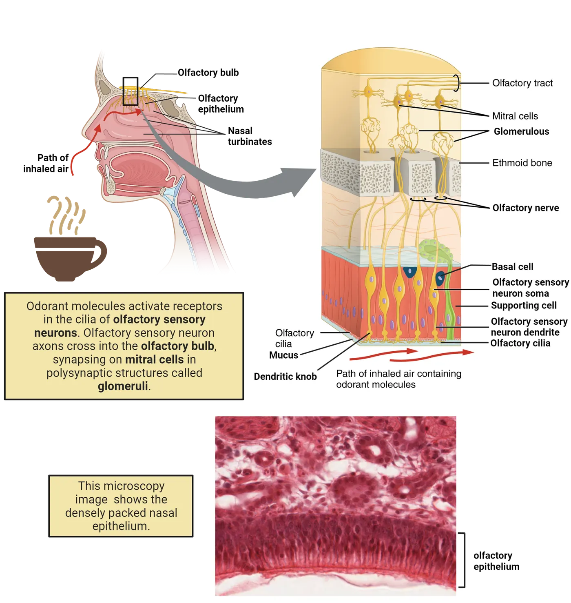
Odorants are typically small enough that they can become suspended in the air and drawn into the nasal cavities. Inside, odorants travel through intricate caverns called turbinates, which are formed of bone and cartilage. These structures filter, humidify, and warm inhaled air, but they also play a critical role in directing odorants onto the relatively restricted area of the nasal cavities which contains the olfactory epithelium.
The structure of the nasal cavities is highly variable between animal species. For example, many mammal species, like dogs and bears, have evolved intricate nasal passages that play an important role in their ability to detect extremely low concentrations of an odorant. The large surface area of their turbinates ensures that small amounts of odorants are forcefully propelled onto the olfactory epithelium. In addition to specialized turbinates, dogs, bears, and many other animals have a larger olfactory epithelium than humans do, which contributes to their excellent sense of smell.
Olfactory epithelium and sensory neurons
Located deep within the nose, the olfactory epithelium is a specialized portion of the nasal cavity. The placement of this important tissue ensures that it is protected from damage caused by inhaling toxins and positions it close to the brain. There are three main cell types that make up the olfactory epithelium. Olfactory sensory neurons are the cells tasked with detecting odorants, supporting cells provide structure and surround the sensory neurons, and basal cells are the precursors from which regenerating sensory neurons arise (Olfactory epithelium anatomy)
Olfactory sensory neurons each have a single enlarged dendrite that extends outwards from the epithelium and terminates at the epithelial surface in a specialized structure called a knob. The knob is an integrative hub for fine hair-like structures known as cilia extending through the mucus lining that coats the olfactory epithelium. The cilia are important structures because olfactory receptors, the proteins that interact with odorant molecules, are found along the length of each of these projections. The olfactory receptors are part of a large gene family that varies by species. Humans have ~300-400 receptor genes, while mice and dogs have more than 1000! (; ).
Signal transduction in olfactory sensory neurons
Olfactory receptors are metabotropic receptors, meaning that they are coupled to a G-protein second messenger on the intracellular side of the neuron. The binding sites for odorants are, of course, on the extracellular side, exposed to the nasal cavity. In olfactory receptors, the G-protein is a specialized stimulatory G-subunit (Golf). Olfactory receptor signaling shows the intracellular signaling activated by odorant binding and Golf activation.
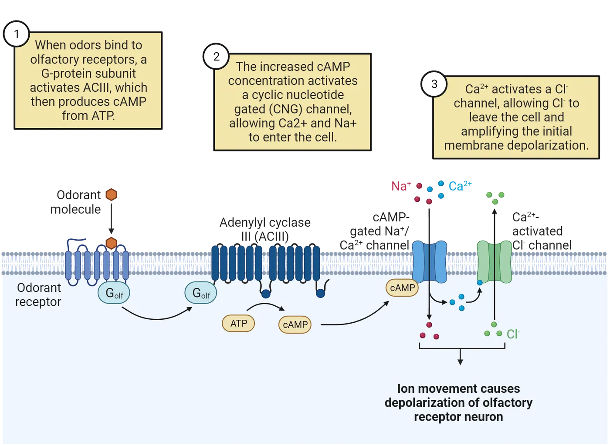
Once bound to an odorant, the olfactory receptor complex releases G olf to the intracellular side of the membrane. When released from the receptor complex, Golf then stimulates the activity of the catalytic enzyme adenylyl cyclase III (ACIII). The role of ACIII in this series of events is to then convert adenosine triphosphate (ATP) into cyclic adenosine monophosphate (cAMP). cAMP then serves as a ligand to cyclic nucleotide gated (CNG) channels, which are an entry point for Na+ and Ca2+ ions into the sensory neurons. Because both Na+ and Ca2+ carry a positive charge, this results in a membrane depolarization of the sensory cells bringing them toward the action potential threshold.
However, there is an additional step that has been proposed to amplify these initial membrane depolarizations through the CNG channels. The increased intracellular abundance of Ca2+ ions begins to act on calcium-activated chloride channels (CaCC). With respect to the mucous that surrounds cilia, the internal cellular concentration of chloride is elevated. This means that when CaCCs are activated by Ca2+, negatively charged Cl- ions flow out of the cell, thus amplifying the initial membrane depolarization from the CNG channels.
This molecular chain of events results in action potentials being generated near the soma of the sensory neurons that contain the receptor proteins on their cilia. We can think about odorant molecules as being similar to neurotransmitters that generate electrical activity between neurons within the brain. The signals then travel down sensory neuron axons that extend through perforations in the cribriform plate, a bony structure that separates the brain from the nasal cavities. The axons and their electrical signals then arrive at the brain in the olfactory bulb, where they synapse with the central processing circuitry of the olfactory system.
A key organizing principle of the olfactory system is the molecular logic by which the cilia of olfactory sensory neurons express olfactory receptor proteins. The genome of most animals encodes hundreds of olfactory receptors, each of which has a unique binding site that will recognize only a narrow range of chemical shapes. Though there are hundreds of receptor genes, only a single type is expressed on the cilia of each sensory neuron. Although each sensory neuron may express thousands of receptor proteins, each of them will be exactly alike (One receptor type per neuron in the olfactory system).
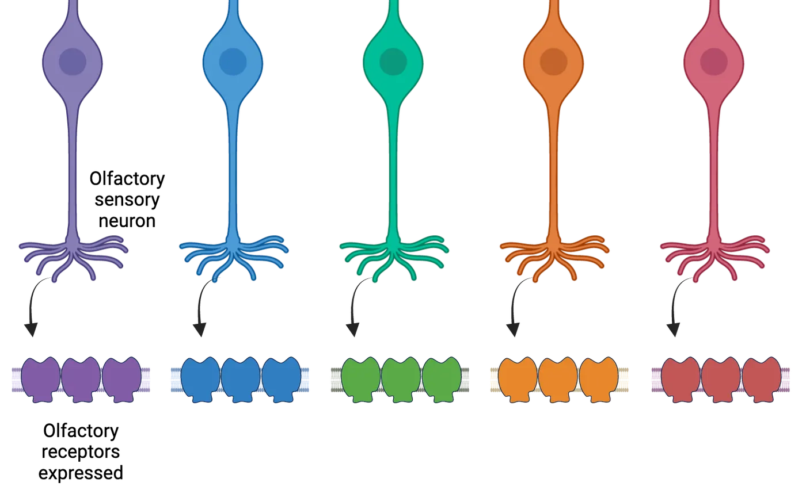
People behind the science: The discovery of olfactory sensory neuron genetics
We now know that the genes that encode the olfactory receptor proteins are the largest class of G-protein coupled receptors, including hundreds of unique protein types in humans, and over a thousand in rodents! However, the identity and function of these proteins were once a mystery in the field of biology. In 1991, Dr. Linda Buck, then a postdoctoral fellow, was working in the Laboratory of Dr. Richard Axel at New York’s Columbia University. With the help of a then newly developed technology called polymerase chain reaction, she not only solved the mystery of how many receptor types there are in the olfactory system but also demonstrated that they came from a previously unknown superfamily of G-protein coupled receptors (). Her discovery revealed the molecular diversity that underlies the peripheral olfactory system and the incredible wiring logic by which the system assembles during development.
This revelation was not only foundational for understanding the olfactory system but also had far-reaching implications across biological domains to fields including drug discovery, gene regulation, and the wiring logic of the brain. In 2004, Drs. Buck and Axel were awarded the Nobel Prize in Physiology or Medicine for their discovery.
OSNs are renewed throughout life
A special feature of the olfactory system is that, unlike other senses including vision and hearing, olfactory sensory cells are constantly regenerating. In fact, even without specific or acute damage, olfactory sensory cells are constantly turning over. It is speculated that, because the nose draws in numerous potentially damaging agents from the environment (dust, germs, pollution, etc.), frequent turnover of the sensory cells is a mechanism to ensure that the system remains in good working condition.
In the olfactory epithelium, stem cells line the nasal passages and give rise to newly generated sensory neurons that incorporate with the existing circuitry. As you will read below, sensory neurons of a common subtype must find a highly targeted and specific region of the brain to terminate. Exactly how newly regenerated sensory neurons find their way to the olfactory bulb is still a mystery, but some work tells us that the expression of receptor proteins outside of the sensory cilia may play an important role.
Unfortunately, as we age our body begins to lose its ability to regenerate sensory neurons. This ability is impacted by inflammation, disease, and injury, all of which accumulate as we get older. Because sensory neurons do not replenish with the same regularity, many people begin to lose their sense of smell in old age. In a later section, we will discuss how some well-known diseases affect our sense of smell.
Olfactory bulb circuitry
The olfactory bulb is responsible for the first stages of processing electrical signals as they arrive from the nose. Before arriving in the olfactory bulb, the axons of all sensory neurons that express the same type of receptor protein converge. Once in the bulb, the axons then form a spherical structure of nerve endings, dendrites, and synapses called a glomerulus. Because each glomerulus receives input from only a single type of olfactory sensory neuron, the input to these structures is receptor type specific. Each odorant activates a subset of olfactory sensory neuron types; therefore, many glomeruli are activated at the same time by a given odor. We can think of this as similar to how letters in the alphabet group together to form words. In this case, each letter represents an activated glomerulus, and their grouping as a word represents the perception of an odor. Importantly, words can be simple or complex depending on the number of letters they contain, just as an odor depending on the number of activated glomeruli.
It is still unknown how or if glomeruli are arranged in the physical space of the brain with respect to the chemical structure of the odorants that activate them. However, there is some evidence that there exist coarse groupings of glomeruli. Those that are activated by broadly similar odorant molecules tend to be located closer together. Furthermore, among animals of the same species, glomerular positioning and grouping is conserved ()
Glomerular layer neurons
Glomeruli are innervated by a number of cell types in addition to the nerve endings of olfactory sensory neurons. These cells include glutamatergic projection neurons that relay information to higher-order processing centers and inhibitory cells that help to process odor information within the olfactory bulb.
Projection cells of the olfactory bulb fall into two sub-classes of cells, mitral cells, and tufted cells. Mitral cells are the largest cells in the olfactory system and are found in a single row of cells sitting beneath the glomeruli. Each cell has a single apical dendrite that extends to one glomerulus where it ramifies extensively and receives input from olfactory sensory neurons, as well as other neurons within a glomerulus. While each mitral cell contacts only a single glomerulus, each glomerulus is innervated by ~10-20 mitral cells (). Mitral cells also have characteristic lateral dendrites that extend deeper within the olfactory bulb, where they receive inhibitory input. Tufted cells share many of the same morphological characteristics as mitral cells, though their distribution is different. They also serve to relay information about odorants, as mitral cells do, but are more broadly tuned to odors and often can respond to lower concentrations than mitral cells.
In addition to these projection cells, the olfactory bulb hosts several classes of local interneurons. In general, these cells are thought to play an important part in refining the number of active glomeruli following an odorant encounter and coordinating the synchronous activity of olfactory bulb output neurons.
Cortical processing
Output from the olfactory bulb travels along the axons of the two classes of projection neurons: mitral cells and tufted cells. Although these cells share many common features, they differ in both their responses to odorant stimuli and their projections to downstream processing centers of the brain. The primary targets of olfactory bulb output are the olfactory cortex, limbic system, and ventral striatum.
Piriform cortex
Mitral cells target a number of different brain regions, but perhaps the most predominant among them is the piriform cortex, also called the olfactory cortex. The organization of the piriform cortex is different from other sensory modalities because it contains three layers rather than the six typically found in other sensory cortices. Mitral cell axons from the olfactory bulb travel as a nerve bundle in the lateral olfactory tract and most densely target the anterior portion of the piriform cortex where they target broadly distributed and overlapping populations of neurons. Because neurons in the piriform cortex receive input from many different mitral cells, and each mitral cell can be associated with a different glomerulus, this is the first point in the olfactory system where stimulus information from the periphery is blended (Neural pathways of olfaction). However, unlike the olfactory bulb where some coarse relationship exists between glomeruli, the spatial distribution of cells in the piriform cortex has a minimal relationship to the odorants which activate them. This stands in contrast to other sensory modalities, like audition and somatosensation, where similar stimuli are represented in adjacent cortical fields (see Introduction). Despite this seeming disorganization within the olfactory system, the ensemble of neurons that become activated in the piriform cortex upon encountering an olfactory stimulus is related to how the stimulus is identified, categorized, and perceived by an animal.
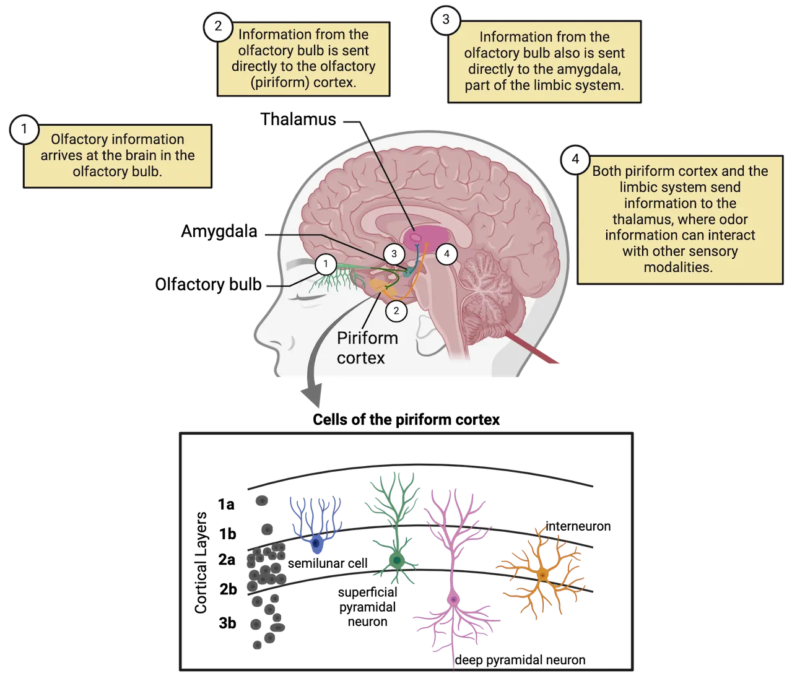
In addition to direct inputs from the olfactory bulb, the piriform cortex is a dense recurrent network and has extensive interconnections, called associational connectivity. The piriform cortex also contains local inhibitory connections that can oppose both inputs from the olfactory bulb and associational input. The local connectivity within the piriform cortex, both excitatory and inhibitory, allows the structure to perform important analytical functions like pattern completion, prediction, and odor categorization. While these functions allow animals to accurately interpret their environment, they also provide a mechanism for animals to make decisions about stimuli with only partial or incomplete information about a stimulus.
Anterior olfactory nucleus
The primary target of axonal projections from tufted cells is a structure known as the anterior olfactory nucleus (AON), which is found directly behind, or posterior to the olfactory bulb. The olfactory system is different from other sensory modalities in how the processing hierarchy is structured. While information from most senses is processed in the opposite brain hemisphere from which it was detected by sensory cells at the periphery, the olfactory system is lateralized. For example, the right olfactory bulb sends most of its projections to cortical areas in the right hemisphere, and the left olfactory bulb to the left hemisphere.
A key feature of the AON is that it sends projections that cross the brain through a nerve tract called the anterior commissure and terminate at contralateral brain hemispheres. Since this is one of the few places in the olfactory system where lateralization is broken, it allows the AON to make comparisons between odor information arriving at each of the nostrils and may thereby play a role in orienting animals to an odor source. Similarly, because each AON receives bilateral input, it is thought that this structure may play an important part in odor navigation by allowing animals to make comparisons of stimuli that arrive at each of the two nostrils.
Amygdala and entorhinal cortex
Projections from the olfactory bulb target other brain regions that layer the rich texture that accompanies olfactory perception. Earlier, we discussed how odors can be linked with powerful memories and emotional states. These feelings arise through direct connections between the olfactory bulb and brain areas associated with memory, emotion, and reward. In addition to their projections to the piriform cortex, the axons of mitral cells branch and terminate in two structures contained within the limbic system, the amygdala and entorhinal cortex (Neural pathways of olfaction).
The amygdala is a powerful emotional center of the brain and its direct connection with the olfactory system is the reason that certain odors can provide powerful reminders of the emotional state in which they were encountered (see Introduction). For example, the smell of your grandmother’s homemade soup may precipitate a feeling of comfort and safety. The same is also true for negative emotions and may provide an important mechanism for animals to avoid predation or other dangers.
The entorhinal cortex is strongly tied to memory formation, consolidation, and recall. In addition to the input it receives from other memory structures, like the hippocampus, it also receives direct input from the olfactory bulb via mitral cells. In the introduction of this chapter, we described how smells can conjure vivid memories of people and places — connectivity between the olfactory bulb and the entorhinal cortex helps this to happen. When smelling your grandmother’s homemade soup, in addition to your emotional state, you likely recall other details of how you experienced the soup. For instance, the wallpaper in grandmother’s kitchen or the pattern on the dishware that the soup was served in. These details are filled in and completed by the entorhinal cortex.
Adaptation
Have you come home from school and noticed that the trash in the kitchen smelled bad? Maybe you got distracted and then forgot to take the garbage out, but after a while, you no longer notice the smell. Some people call this perceptual phenomenon “nose-blindness”, which is a common name for the physiological process called adaptation. There is actually a very important reason for “nose-blindness”, in addition to saving you from the smelly scent of your forgotten garbage. Adaptation helps animals pay attention to changing features in their environment rather than focus on constant but otherwise distracting stimuli.
In the olfactory system, adaptation arises from physiological processes at the two ends of the system, the nose at the front and the piriform cortex at the back end. In the nose, adaptation results from the desensitization of olfactory receptor proteins for the odorant ligands. The abundant presence of an odorant molecule results in conformational changes to the receptor protein, thereby decreasing its efficacy in binding with a ligand and transducing a message about the stimulus. In the olfactory cortex, the precise mechanism of adaptation is not clear, but nonetheless, the overall effect is that ensembles of principal cells become less responsive to odor stimuli upon repeated presentation of the stimulus, and the perception of an odor decreases ().
The accessory olfactory system
Many animals secrete chemical signals called pheromones that trigger social responses in animals of the same species. Reptiles, amphibians, and mammals, including some non-human primates, have evolved a division of the olfactory system, called the accessory olfactory system, dedicated to detecting these substances. This system operates using many of the same principles as the main olfactory system but uses anatomically distinct structures with different cellular organization and projections to deep brain structures that guide behavior and physiological states.
Many pheromones are oily substances and are therefore unable to be carried through the air. This creates a problem where these compounds are incapable of reaching the olfactory epithelium. The vomeronasal organ is a collection of sensory cells found near the entrance to the nasal passages that detect pheromones and other social odors (Accessory versus main olfactory bulb and epithelium connection). For compounds to reach this structure, it is necessary for an animal to touch its nose to another animal, or a secretion it has left behind. Many of us have observed this behavior before. When dogs greet each other on the sidewalk, often their first instinct is to touch their nose to the other dog. Here they are using pheromonal cues to communicate.
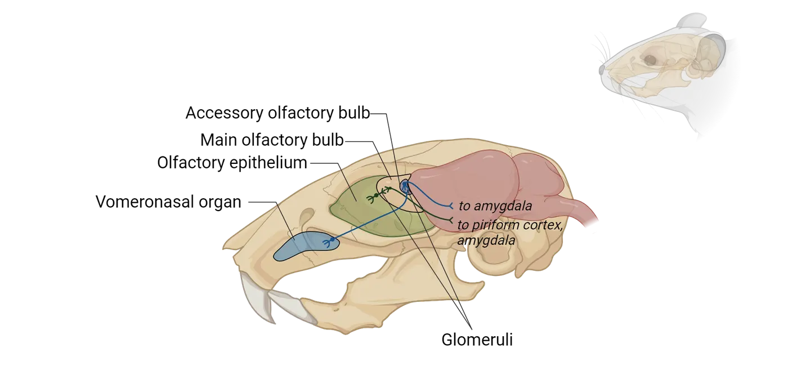
The vomeronasal organ is divided into two halves, one on each side of the nasal septum. Like the olfactory epithelium, it contains basal cells, supporting cells, and sensory neurons. The sensory neurons of the vomeronasal organ contain G-protein coupled receptors that are sensitive to specific social compounds depending on the type of receptor protein that they express. The sensory cells of the vomeronasal organ project axons to the dorsal posterior portion of the olfactory bulb where an accessory subdivision is found (accessory olfactory bulb) (Accessory versus main olfactory bulb and epithelium connection). The accessory olfactory bulb contains many of the same cell types as the main olfactory bulb; however, the circuit organization is somewhat different.
Neuroscience in the lab. Sex as a biological variable: Social odor detection in humans
It is quite intuitive how our sense of smell influences our food preferences or even the type of perfume that we like. But can our sense of smell also influence how we interact with other people, and does olfaction play a role in human mate selection as it does in many animal species? A Swiss biologist named Claus Wedekind set out to answer this question in an experiment known as the “sweaty T-shirt study.” In his study, men were asked to wear a t-shirt for two days without bathing. Then, women participants were asked to sniff a hole in a box containing each shirt and rate the shirts as more or less appealing. When the genetic makeup of the men and women was compared, it was revealed that women selected t-shirts from men who had the most divergent genetic sequence for a set of genes called the major histocompatibility complex (MHC) (see Introduction). MHC genes are part of the adaptive immune system, and in effect, women were selecting men in a way that might boost the fitness of their potential offspring by conferring greater immune selectivity. Although the exact mechanism is still a mystery, MHC genes are speculated to be linked to a body scent that can be detected by the opposite sex, even if subconsciously. Though it might be tempting to think this effect relies on pheromones and the vomeronasal organ, the vomeronasal organ is often absent from the nasal passages in humans. And if one is present, it likely only exists as a vestigial organ. In the case of humans, social odors are detected by the main olfactory system.
The olfactory system and disease
You might not think that the inability to smell would impact your day-to-day life; however, you would be woefully wrong. Do you remember the jellybean experiment? This would become your reality for every meal. Food would lack depth and your favorite meal would become uninteresting. Earlier, we learned about several animal behaviors that strongly rely on olfaction: navigation, nutrient sensing, and mate selection. Without the ability to smell, an animal’s survival would be at risk. People with the inability to smell are also at a survival disadvantage. People with anosmia, the inability to smell, face a lifetime mortality rate four times higher than the average person (Pinto et al., 2014). These differences arise through difficulties in detecting hazardous circumstances like natural gas leaks, fires, chemical vapors, and decayed food. Unfortunately, for humans, there are several circumstances through which we may lose the ability to smell. These include normal aging, damage from a head injury, and disease. Below, we will discuss two causes of anosmia: neurodegenerative disease and Covid-19.
Olfactory dysfunction in neurodegenerative disease
Reduced olfactory capabilities and the loss of olfactory acuity is a leading indicator of two well-known neurodegenerative diseases. Alzheimer’s disease is widely known for a profound deficit in both short and long-term memory, which has become a hallmark of the disease (see Introduction). In addition, disrupted olfactory sensation and anosmia are frequently reported by patients with Alzheimer’s disease before they begin to experience memory deficits. Because of this, olfactory dysfunction is a leading indicator of the disease and there is great interest in using olfactory capabilities as a disease biomarker. Parkinson’s disease is another neurodegenerative disorder that manifests with early olfactory deficits (see Introduction). In Parkinson’s disease, dopaminergic neurons die, leading to that disease’s hallmark motor deficits. The olfactory bulb also contains many dopaminergic neurons, as well as dopaminergic projections from other areas of the brain. Nearly all patients with Parkinson’s disease experience deficits in their sense of smell, which often occurs years before the onset of motor symptoms. These symptoms can be used as a warning sign and if treatment is started early enough, medication can delay the progression of the disease.
Covid-19
The coronavirus pandemic that started in 2019 has brought increased attention to olfactory dysfunction. A symptom of many coronavirus infections has been transient anosmia that generally resolves as the viral infection is cleared. However, for some particularly unlucky people, a coronavirus infection has left them with persistent anosmia or sensations of unpleasant odors from otherwise innocuous smells.
Covid-19 is primarily transmitted as respiratory droplets, which means that as it is passed from person to person, it typically enters its next host through the nasal passages. Earlier in this section, we learned that the olfactory epithelium is found deep in the nasal cavities, and in addition to infecting and reproducing in respiratory tissues, coronavirus also infects cells in the olfactory epithelium. The receptor protein ACE2 is densely expressed in the supporting cells of the olfactory epithelium and is a target of Covid-19. When these supporting cells are infected, they become inflamed or damaged. Inflammation of the epithelium then disrupts the ability of nearby olfactory sensory neurons to transmit information about the odor environment to the brain. However, because sensory neurons themselves do not appear to be infected or destroyed by Covid-19, once the infection has passed, and inflammation of supporting cells subsides, normal olfactory function typically resumes.
Unfortunately, for some people, the Covid-19 induced inflammation of the olfactory epithelium becomes more than the tissue can handle and results in the death not only of the supporting cells, but also of the olfactory sensory neurons through indirect effects. We learned earlier that sensory neurons are constantly regenerating, and this is also true after a coronavirus infection. However, we also learned that sensory neurons must target their appropriate location in the brain for accurate odor recognition. When all or many of the olfactory sensory neurons die at the same time, they are no longer able to reliably find their correct location and glomeruli end up receiving mixed input from many different types of sensory neurons. When this happens, a person will regain their ability to smell, but it may not quite be the same. In this scenario, people often report unpleasant smells that accompany objects that otherwise would not smell bad. This is called parosmia. Some people will eventually recover from parosmia, while for others it can persist for years.
Summary
Like all sensory systems, the olfactory system is organized in a hierarchy. Chemicals are detected at the periphery and then processed in successive steps to extract relevant information for decision-making and behavioral output. Each of the cell types and neural areas described in this section play an important role in this process; however, as we learned, stimulus processing in the olfactory system is vulnerable to several diseases that can disrupt our sense of smell. While the olfactory system's cellular organization and processing capabilities in humans and other mammals are complex, we are not unique. Other animals like insects share the same capabilities and rely on their sense of smell for survival.
Key terms
olfactory epithelium, odorants, turbinates, olfactory sensory neurons, supporting cells, basal cells, olfactory receptors, Golf, adenylyl cyclase III (ACIII), cyclic nucleotide gated (CNG) channels, calcium-activated chloride channels (CaCC), olfactory bulb, glomerulus, mitral cells, tufted cells, piriform cortex, lateral olfactory tract, anterior olfactory nucleus (AON), anterior commissure, amygdala, entorhinal cortex, adaptation, accessory olfactory system, vomeronasal organ, accessory olfactory bulb, anosmia, Alzheimer’s disease, Parkinson’s disease, ACE2, parosmiaReferences
Driver, R. J., & Balakrishnan, C. N. (2021). Highly contiguous genomes improve the understanding of avian olfactory receptor repertoires. Integrative and Comparative Biology, 61(4), 1281–1290. https://doi.org/10.1093/icb/icab150
Buck, L., & Axel, R. (1991). A novel multigene family may encode odorant receptors: A molecular basis for odor recognition. Cell, 65(1), 175–187. https://doi.org/10.1016/0092-8674(91)90418-x
Kadohisa, M., & Wilson, D. A. (2006). Olfactory cortical adaptation facilitates detection of odors against background. Journal of Neurophysiology, 95(3), 1888–1896. https://doi.org/10.1152/jn.00812.2005
Liu, A., Savya, S., & Urban, N. N. (2016). Early odorant exposure increases the number of mitral and tufted cells associated with a single glomerulus. The Journal of Neuroscience: The Official Journal of the Society for Neuroscience, 36(46), 11646–11653. https://doi.org/10.1523/JNEUROSCI.0654-16.2016
Malnic, B., Godfrey, P. A., & Buck, L. B. (2004). The human olfactory receptor gene family. Proceedings of the National Academy of Sciences of the United States of America, 101(8), 2584–2589. https://doi.org/10.1073/pnas.0307882100
Mansourian, S., & Stensmyr, M. C. (2015). The chemical ecology of the fly. Current Opinion in Neurobiology, 34, 95–102. https://doi.org/10.1016/j.conb.2015.02.006
Ronderos, D. S., Lin, C. C., Potter, C. J., & Smith, D. P. (2014). Farnesol-detecting olfactory neurons in Drosophila. The Journal of Neuroscience: The Official Journal of the Society for Neuroscience, 34(11), 3959–3968. https://doi.org/10.1523/JNEUROSCI.4582-13.2014
Ruebenbauer, A., Schlyter, F., Hansson, B. S., Löfstedt, C., & Larsson, M. C. (2008). Genetic variability and robustness of host odor preference in Drosophila melanogaster. Current Biology: CB, 18(18), 1438–1443. https://doi.org/10.1016/j.cub.2008.08.062
Stensmyr, M. C., Dweck, H. K., Farhan, A., Ibba, I., Strutz, A., Mukunda, L., Linz, J., Grabe, V., Steck, K., Lavista-Llanos, S., Wicher, D., Sachse, S., Knaden, M., Becher, P. G., Seki, Y., & Hansson, B. S. (2012). A conserved dedicated olfactory circuit for detecting harmful microbes in Drosophila. Cell, 151(6), 1345–1357. https://doi.org/10.1016/j.cell.2012.09.046
Soucy, E. R., Albeanu, D. F., Fantana, A. L., Murthy, V. N., & Meister, M. (2009). Precision and diversity in an odor map on the olfactory bulb. Nature Neuroscience, 12(2), 210–220. https://doi.org/10.1038/nn.2262
Wedekind, C., Seebeck, T., Bettens, F., & Paepke, A. J. (1995). MHC-dependent mate preferences in humans. Proceedings. Biological Sciences, 260(1359), 245–249. https://doi.org/10.1098/rspb.1995.0087
Wicher, D., & Miazzi, F. (2021). Functional properties of insect olfactory receptors: Ionotropic receptors and odorant receptors. Cell and Tissue Research, 383(1), 7–19. https://doi.org/10.1007/s00441-020-03363-x
Wikelski, M., Quetting, M., Cheng, Y., Fiedler, W., Flack, A., Gagliardo, A., Salas, R., Zannoni, N., & Williams, J. (2021). Smell of green leaf volatiles attracts white storks to freshly cut meadows. Scientific Reports, 11(1), 12912. https://doi.org/10.1038/s41598-021-92073-7
Zhang, X., & Firestein, S. (2002). The olfactory receptor gene superfamily of the mouse. Nature Neuroscience, 5(2), 124–133. https://doi.org/10.1038/nn800
Practice The multiple-choice and fill-in-the-blank questions for this section are interactive and live on OpenStax, so they are not carried here: open the book on openstax.org.
8.4Chemethesis, Spices, and Solitary Chemosensory Cells
By the end of this section, you should be able to
- Define the sense of chemesthesis with examples.
- Describe the role of the somatosensory system and TRP channels in producing sensations we commonly refer to as spicy.
- Describe the role that solitary chemosensory cells and airway taste receptors play in protecting the vertebrate airway.
Imagine being served a hot bowl of chili after spending a snowy winter day outside; as you are handed the steaming bowl, it warms your icy hands. The aroma of the heavily spiced dish is mouthwatering, but it is likely at a scalding temperature. So, you take the time to let a spoonful cool before eating. The savory dish is just what the day calls for but as you chew the slightly warm spoonful of chili, your mouth starts burning. You quickly reach for a glass of water to quench the sensation only to find temporary relief. You now recognize this burning sensation has nothing to do with the temperature of the food but rather chemicals from the chili plants that give this dish its name. In this section, you will learn how some chemicals create the sensation of cooling and warmth that influence our perception of flavor and play an important role in innate immunity.
The somatosensory system plays a role in flavor perception
The primary role of the somatosensory system is to detect kinetic and thermal energy (see Introduction), but somatosensory neurons are also capable of responding to chemicals. In most parts of the vertebrate body, these sensory neurons are protected from the environment by skin; however, where these neurons innervate the mucous membranes (e.g. eyes, mouth, airway, digestive, and reproductive tracts) or when skin is damaged, chemicals are granted access to the underlying free nerve endings. When chemicals activate somatosensory nerves, you experience sensations that are described as burning, cooling, stinging, irritating or pungent.
The capacity of the somatosensory system to detect these chemicals is referred to as chemesthesis. When neuroscientists were initially studying these sensations, it was not clear what neural subsystem was responsible for them. Thus, the term common chemical sense was long used to describe the seemingly ubiquitous ability of tissues to detect chemicals like capsaicin (the “hot” chemical found in chili peppers) or low pH solutions. Once experimental evidence mounted to suggest that these sensations were entirely mediated by the somatosensory system, the term chemesthesis was suggested to distinguish between the more typical stimulation of the somatosensory system with kinetic and heat energy—referred to as somesthesis. Both somesthesis and chemesthesis contribute to flavor, but, of the two, chemesthesis is more often confounded with the sense of “taste.”
Chemesthetic chemicals make a substantial contribution to the flavor of many foods we eat. Nearly all the cooking ingredients we refer to as seasonings or spices (the obvious exception being salt) have been cultivated because they contain chemicals that selectively activate receptors on somatosensory neurons. The neurophysiological properties of these chemicals are so sought after that nations have been drawn into economic, political, and military conflicts over access to their botanical sources.
Scientists that study chemesthesis have noted that it seems counterintuitive for humans to seek out these chemicals. Most chemesthetic chemicals produce sensation by activating polymodal nociceptors: small diameter free nerve endings that respond to stimuli as different as plant metabolites, low pH, and heat energy. The stimulation of this neuron produces noxious or painful sensations. Most animals avoid substances that stimulate polymodal nociceptors and even humans that willingly consume spices often describe the sensation as painful.
Many hypotheses have been formulated to explain why some humans enjoy spicy foods. Most of them center around chemesthetic chemicals providing some health benefit; improved secretion of digestive enzymes, enhanced thermoregulation, and antimicrobial resistance have all been suggested. One popular theory asserts that individuals learn to enjoy spicy foods because the noxious sensations cause the release of endogenous opioids. Several studies have presented data that the opioid antagonist naloxone decreases the preference for spicy foods as support for this theory. However, a preference for heavily spiced food is highly correlated with sensation and novelty seeking personality traits, and naloxone also blunts the enjoyment of other activities enjoyed by individuals that seek out novel sensations and do not directly involve noxious somatosensation, like gambling. Thus, the novelty or the intensity of spicy chemicals are more likely responsible for the involvement of the opioid system than any direct link with the noxious sensation produced by chemesthetic chemicals.
Thermal TRPs
Most chemicals that have chemesthetic properties selectively activate members of the Transient Receptor Potential (TRP) channel gene super family (TRP channels). TRP channels are ubiquitous in sensory systems, but several members of the family are activated at low or high temperatures. These thermal-TRPs are differentially expressed by sensory cells that allow animals to discriminate between different temperatures. Some of the thermal-TRPs are expressed by polymodal nociceptors; much of the polymodal capacity of these nerve fibers is due to the many different stimuli that can activate an individual TRP channel and the co-expression of multiple TRP channel family members on these free nerve endings.
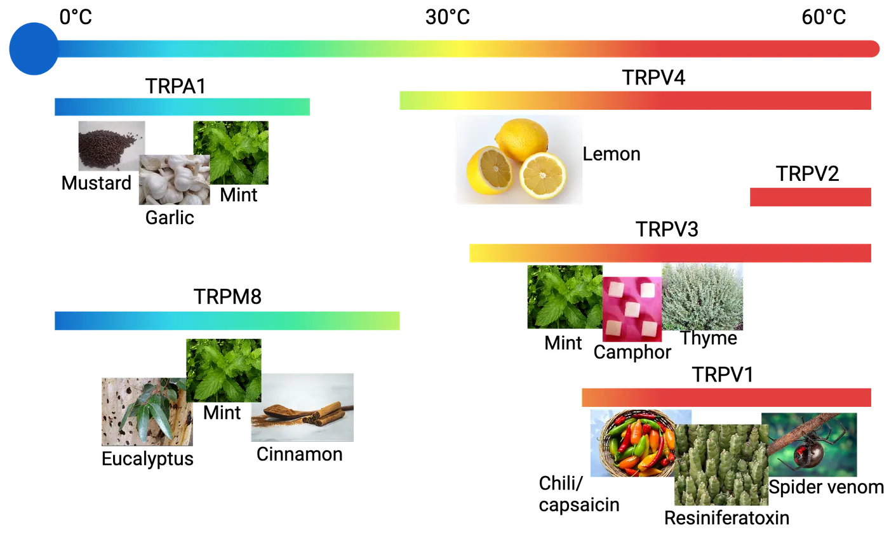
The most well-known chemical with chemesthetic properties is capsaicin, which is produced by chili peppers and related plants. Most mammals perceive capsaicin as noxiously hot because it activates TRP Vanilloid 1 (TRPV1) channels present on small-diameter peptidergic polymodal nociceptors (c-fibers). A similar channel, TRP ankyrin 1 (TRPA1), is found on a subset of these neurons and is activated by allyl isothiocyanate (AITC), which is the pungent compound in mustard plants, like horseradish and wasabi. Menthol, the cooling compound in mint, activates TRP Melastatin 8 (TRPM8) which is found on different nerve fibers that respond to cold. Many chemical compounds produced by plants are capable of shaping human and animal behavior because of their ability to interact with the receptors of the somatosensory system.
Solitary chemosensory cells
The most common chemesthetic compounds are lipophilic and pass-through epithelial cells to stimulate the underlying nerves, but some stimulate somatosensory nerves indirectly though specialized epithelial cells. These neuro-epithelial cells have a microvillar brush or tuft projecting apically, resembling isolated taste receptor cells morphologically. Due to these cells being identified by independent research groups in a variety of tissues, they have alternatively been called tufted cells, microvillar cells, neuroendocrine cells, brush cells or solitary chemosensory cells (SCCs). They can be seen diagrammed as SCCs in Taste receptors in the respiratory tract.
SCCs form synapses with polymodal nociceptive fibers of the somatosensory system (shown as a pain nerve fiber contacting the SCC in Taste receptors in the respiratory tract). This anatomical arrangement allows for SCCs to monitor the lumen of organs for chemicals that would not normally be detected by the nervous system.
SCCs have been identified in many hollow organs at risk of bacterial infection—from the nose, trachea, eustachian tube (middle ear), tear duct, periodontium (tooth socket), and the urinary bladder. The SCCs in the respiratory epithelium of the nose and trachea have been best characterized. In the airway, these cells appear to resemble bitter-sensitive type II taste receptor cells. These cells respond to traditionally bitter compounds, but, more remarkably, are also stimulated by a class of chemicals produced by reproducing gram negative bacteria, called acyl-homoserine lactones (AHLs). This allows SCCs to act as sentinels of epithelial tissues, monitoring the apical surface of epithelium for potentially dangerous bacterial infections.
When SCCs detect a growing bacterial infection, they trigger local epithelial defenses, recruit an immune response, and activate polymodal nociceptive nerve fibers. SCCs form synapses with nerves (Taste receptors in the respiratory tract) and on stimulation release the neurotransmitter acetylcholine (ACh) to activate those nerves. Activation of nociceptors in the airway results in the local and central release of pro-inflammatory neuropeptides, which further sensitize the airway and recruit an immune response (see Introduction). More immediately, stimulation of airway polymodal nociceptors produces sensations of burning and stereotyped changes to the respiratory rhythm that we commonly call sneezing and coughing. Mice that have had SCC signaling disrupted spend more time in chambers with nebulized bitter chemicals than controls (). Sneezing and coughing are behaviors that ultimately increase the velocity air is expelled from the airway making it more likely that microorganisms are dislodged and expelled. SCCs are responsible for generating a response to invading microbes on the tissue level and triggering behaviors that together guard against airway pathogens.
Summary
While the somatosensory system mainly detects and discriminates between different types of kinetic energy, it is also capable of detecting chemical stimuli. Chemesthesis is the technical term for the ability of the somatosensory system to respond to chemicals. Most chemesthetic stimuli are produced by plants and activate TRP channels on polymodal nociceptors and produce sensations perceived as changes in temperature or described as irritating, burning, cooling, spicy, or pungent. In addition to stimulating free nerve endings directly, these nerve fibers can also be stimulated by solitary chemosensory cells through cholinergic synapses. SCCs detect growing bacterial infections and recruit innate defenses and trigger an immune response. Increasingly, functional chemosensory receptors are being described outside gustatory and olfactory systems and constitute part of the innate immune system that exists to detect infectious agents.
Key terms
Free nerve endings, common chemical senses, somesthesis, olymodal nociceptors, Transient Receptor Potential (TRP) channels, thermal-TRPs, solitary chemosensory cells (SCCs)References
Adappa, N. D., Zhang, Z., Palmer, J. N., Kennedy, D. W., Doghramji, L., Lysenko, A., Reed, D. R., Scott, T., Zhao, N. W., Owens, D., Lee, R. J., & Cohen, N. A. (2014). The bitter taste receptor T2R38 is an independent risk factor for chronic rhinosinusitis requiring sinus surgery. International Forum of Allergy & Rhinology, 4(1), 3–7. https://doi.org/10.1002/alr.21253
Bandell, M., Macpherson, L. J., & Patapoutian, A. (2007). From chills to chilis: mechanisms for thermosensation and chemesthesis via thermoTRPs. Current Opinion in Neurobiology, 17(4), 490–497. https://doi.org/10.1016/j.conb.2007.07.014
Bautista, D. M., Movahed, P., Hinman, A., Axelsson, H. E., Sterner, O., Högestätt, E. D., Julius, D., Jordt, S. E., & Zygmunt, P. M. (2005). Pungent products from garlic activate the sensory ion channel TRPA1. Proceedings of the National Academy of Sciences of the United States of America, 102(34), 12248–12252. https://doi.org/10.1073/pnas.0505356102
Bautista, D. M., Sigal, Y. M., Milstein, A. D., Garrison, J. L., Zorn, J. A., Tsuruda, P. R., Nicoll, R. A., & Julius, D. (2008). Pungent agents from Szechuan peppers excite sensory neurons by inhibiting two-pore potassium channels. Nature Neuroscience, 11(7), 772–779. https://doi.org/10.1038/nn.2143
Bolliet, D., Hayes, J. E., & McDonald, S. T. (2016). Chemesthesis: Chemical touch in food and eating. John Wiley & Sons.
Deckmann, K., & Kummer, W. (2016). Chemosensory epithelial cells in the urethra: sentinels of the urinary tract. Histochemistry and Cell Biology, 146(6), 673–683. https://doi.org/10.1007/s00418-016-1504-x
Dong, H., Liu, J., Zhu, J., Zhou, Z., Tizzano, M., Peng, X., Zhou, X., Xu, X., & Zheng, X. (2022). Oral microbiota-host interaction mediated by taste receptors. Frontiers in Cellular and Infection Microbiology, 12, 802504. https://doi.org/10.3389/fcimb.2022.802504
Finger, T. E., Böttger, B., Hansen, A., Anderson, K. T., Alimohammadi, H., & Silver, W. L. (2003). Solitary chemoreceptor cells in the nasal cavity serve as sentinels of respiration. Proceedings of the National Academy of Sciences of the United States of America, 100(15), 8981–8986. https://doi.org/10.1073/pnas.1531172100
Green, B. G. (2012). Chemesthesis and the chemical senses as components of a "chemofensor complex". Chemical Senses, 37(3), 201–206. https://doi.org/10.1093/chemse/bjr119
Jordt, S. E., & Julius, D. (2002). Molecular basis for species-specific sensitivity to "hot" chili peppers. Cell, 108(3), 421–430. https://doi.org/10.1016/s0092-8674(02)00637-2
Kaufman, A. C., Colquitt, L., Ruckenstein, M. J., Bigelow, D. C., Eliades, S. J., Xiong, G., Lin, C., Reed, D. R., & Cohen, N. A. (2021). Bitter taste receptors and chronic otitis media. Otolaryngology–Head and Neck Surgery, 165(2), 290–299. https://doi.org/10.1177/0194599820984788
Kobayashi, K., Fukuoka, T., Obata, K., Yamanaka, H., Dai, Y., Tokunaga, A., & Noguchi, K. (2005). Distinct expression of TRPM8, TRPA1, and TRPV1 mRNAs in rat primary afferent neurons with adelta/c-fibers and colocalization with trk receptors. The Journal of Comparative Neurology, 493(4), 596–606. https://doi.org/10.1002/cne.20794
Krasteva, G., Canning, B. J., Hartmann, P., Veres, T. Z., Papadakis, T., Mühlfeld, C., Schliecker, K., Tallini, Y. N., Braun, A., Hackstein, H., Baal, N., Weihe, E., Schütz, B., Kotlikoff, M., Ibanez-Tallon, I., & Kummer, W. (2011). Cholinergic chemosensory cells in the trachea regulate breathing. Proceedings of the National Academy of Sciences of the United States of America, 108(23), 9478–9483. https://doi.org/10.1073/pnas.1019418108
McDonald, S. T., Bolliet, D. A., & Hayes, J. E. (Eds.). (2016). Chemesthesis: Chemical touch in food and eating. Wiley-Blackwell.
McKemy, D. D., Neuhausser, W. M., & Julius, D. (2002). Identification of a cold receptor reveals a general role for TRP channels in thermosensation. Nature, 416(6876), 52–58. https://doi.org/10.1038/nature719
O'Brien, C. P., Gastfriend, D. R., Forman, R. F., Schweizer, E., & Pettinati, H. M. (2011). Long-term opioid blockade and hedonic response: preliminary data from two open-label extension studies with extended-release naltrexone. The American Journal on Addictions, 20(2), 106–112. https://doi.org/10.1111/j.1521-0391.2010.00107.x
Perniss, A., Liu, S., Boonen, B., Keshavarz, M., Ruppert, A. L., Timm, T., Pfeil, U., Soultanova, A., Kusumakshi, S., Delventhal, L., Aydin, Ö., Pyrski, M., Deckmann, K., Hain, T., Schmidt, N., Ewers, C., Günther, A., Lochnit, G., Chubanov, V., Gudermann, T., ... Kummer, W. (2020). Chemosensory cell-derived acetylcholine drives tracheal mucociliary clearance in response to virulence-associated formyl peptides. Immunity, 52(4), 683–699.e11. https://doi.org/10.1016/j.immuni.2020.03.005
Prescott, J., & Stevenson, R. J. (1995). Pungency in food perception and preference. Food Reviews International, 11(4), 665–698. https://doi.org/10.1080/87559129509541064
Rozin, P., Ebert, L., & Schull, J. (1982). Some like it hot: a temporal analysis of hedonic responses to chili pepper. Appetite, 3(1), 13–22. https://doi.org/10.1016/s0195-6663(82)80033-0
Saunders, C. J., Christensen, M., Finger, T. E., & Tizzano, M. (2014). Cholinergic neurotransmission links solitary chemosensory cells to nasal inflammation. Proceedings of the National Academy of Sciences of the United States of America, 111(16), 6075–6080. https://doi.org/10.1073/pnas.1402251111
Tewksbury, J. J., & Nabhan, G. P. (2001). Seed dispersal. Directed deterrence by capsaicin in chilies. Nature, 412(6845), 403–404. https://doi.org/10.1038/35086653
Tizard, I., & Skow, L. (2021). The olfactory system: the remote-sensing arm of the immune system. Animal Health Research Reviews, 22(1), 14–25. https://doi.org/10.1017/S1466252320000262
Tizzano, M., & Finger, T. E. (2013). Chemosensors in the nose: guardians of the airways. Physiology (Bethesda, Md.), 28(1), 51–60. https://doi.org/10.1152/physiol.00035.2012
Wang, Y. Y., Chang, R. B., Allgood, S. D., Silver, W. L., & Liman, E. R. (2011). A TRPA1-dependent mechanism for the pungent sensation of weak acids. The Journal of General Physiology, 137(6), 493–505. https://doi.org/10.1085/jgp.201110615
Winter, Z., Gruschwitz, P., Eger, S., Touska, F., & Zimmermann, K. (2017). Cold temperature encoding by cutaneous TRPA1 and TRPM8-carrying fibers in the mouse. Frontiers in Molecular Neuroscience, 10, 209. https://doi.org/10.3389/fnmol.2017.00209
Wiederhold, S., Papadakis, T., Chubanov, V., Gudermann, T., Krasteva-Christ, G., & Kummer, W. (2015). A novel cholinergic epithelial cell with chemosensory traits in the murine conjunctiva. International Immunopharmacology, 29(1), 45–50. https://doi.org/10.1016/j.intimp.2015.06.027
Xi, R., McLaughlin, S., Salcedo, E., & Tizzano, M. (2023). The nasal solitary chemosensory cell signaling pathway triggers mouse avoidance behavior to inhaled nebulized irritants. eNeuro, 10(4), ENEURO.0245-22.2023. https://doi.org/10.1523/ENEURO.0245-22.2023
Practice The multiple-choice and fill-in-the-blank questions for this section are interactive and live on OpenStax, so they are not carried here: open the book on openstax.org.
8.5Influences That Shape Perception of Smell and Flavor
By the end of this section, you should be able to
- Discuss how gustation, olfaction, chemesthesis and other senses influence the perception of flavor.
- Describe how genetics differences can influence chemosensory perception.
Everyone has tastes or smells they love and tastes or smells they loathe. Think back to when you were younger, you may have hated a particular green vegetable to the point you had to be bribed to eat it. Now the sight and smell of the same dish may evoke ideas of a meal lovingly cooked by family members and be hungrily devoured. On the other hand, while even the fussiest eaters usually graduate away from sauropod-shaped processed-poultry, it is not uncommon to find that even the most experimental and pioneering foodie may detest a particular green vegetable or spice. Our chemosensory perceptions are influenced by our other senses, our memories, and our genetics, and therefore motivate some of the most personal behaviors in which a human being engages.
Flavor is a multimodal neural construct
A theme through this chapter has been that the perception of flavor is a gestalt of the multiple senses. The chemical senses of gustation, olfaction and chemesthesis all contribute to the sensations that we refer to as flavor, or sometimes erroneously as “taste.” The integration of these signals is partly due to the gross anatomy of the mouth and nasopharynx but is also a consequence of the convergent neuroanatomy of the three sensory systems. However, our perception of flavor can be influenced by almost every sense.
A common aphorism you hear from chefs is that “you eat with your eyes first.” Indeed, just the sight of food can trigger activity in the gustatory and olfactory cortex. However, how food looks can have a profound effect on an individual’s perception of the flavors. Specifically, individuals rate the odor of colorful liquids presented in an orthonasal manner as being more intense than colorless controls, but the opposite was true for liquids presented to individuals retronasally (e.g. those were perceived as being less intense than colorless controls). Sight can even trick the nervous system into perceiving the presence of chemicals that are completely absent; people who drink sweet-colored liquids will often perceive subsequent liquids of the same color as sweet even if they contain no sweet tastant. Blue food dyes in particular have been the focus of research because many scientists have speculated that blue is an uncommon color for naturally occurring foods. Many highly processed foods are brightly colored, which can influence food choice, and ultimately these dietary decisions can have an effect on an individual’s health.
In addition to the visual appearance of food, its texture can also have a profound impact on its flavor and palatability. We have already discussed the role the somatosensory system plays in modulating flavor via the detection of spices and temperature. Additionally, the tactile feedback when chewing has a profound influence on perceived pleasantness of foods—as anyone who has ever bit down on a soggy fry or a mushy potato chip will attest. Mouthfeel is the term for perception of the physical qualities of food. These qualities can be just as important as the chemical components of food in determining its palatably.
The mouthfeel component of flavor perception can even be influenced by the auditory system. For example, increasing loudness of crunching sounds during eating causes individuals to rate potato chips as having better flavor, even when those louder sounds are only played over headphones as the experimental subjects chewed (). It is difficult to understate how critical the decision of what to eat is for the survival of an animal. Any detection of spoilage that prevents an animal from consuming foods infected by microorganism may prevent sickness and death. In this context, it should not be surprising that the totality of chemical senses are used to determine the palatability of our food.
Genetics influences the perception of taste and smell
How an individual perceives a particular odorant or tastant is heavily influenced by their unique genetic makeup. Genetics can influence different aspects of the gustatory and olfactory systems, from the density of papilla on the tongue on the macroscopic level, to sensitivity of particular olfactory and taste receptors to specific compounds on the molecular level. The best characterized type of genetic variation that influences chemosensory perception is the single nucleotide polymorphism (SNP).
SNPs and Supertasters
A Single Nucleotide Polymorphism (SNP) is a variation in a single nucleotide in the DNA sequence that has been inherited by a substantial proportion of individuals. Sometimes this difference of a single nucleotide occurs in the non-coding region of a gene and probably has very limited effects; other times they can produce single amino acid substitutions when genes are translated into proteins that change the function of a gene. These changes in the genetic code can have a big impact on health, as SNPs can be used to predict an individual's response to certain drugs, susceptibility to environmental factors such as toxins, and risk of developing diseases. The best studied genetic trait that influences chemosensory perception in humans is a SNP in the TAS2R38 gene.
The reason you may hate eating your green vegetables while your parents enjoy eating theirs may be due to the bitter taste receptor TAS2R38. This gene codes for a bitter taste receptor that responds to sulfur-containing compounds found in many cruciferous vegetables. Those vegetables include cauliflower, cabbage, kale, broccoli and brussel sprouts, which are often perceived as having a bitter flavor. In addition to those naturally occurring sulfur compounds, TAS2R38 also can detect the compounds 6-n-propylthiouracil (PROP) and phenylthiocarbamide (PTC).
There are three well-studied SNPs in TAS2R38 that result in three amino acid substitutions. Depending on which substitutions are present, TAS1R38 becomes more or less sensitive to PROP, PTC and the bitter chemicals in vegetables. Each person has two copies of each gene (one from each parent), so individuals will either have two copies of the same “tasting” receptor, two copies of the “non-tasting” receptor (having two identical copies of a gene is being homozygous) or have one copy of each (heterozygous). When you have a large number of individuals taste PROP or PTC and describe their experience, you will find there is a group of non-tasters who do not perceive the chemical, a group of tasters who find the chemicals moderately bitter, and a group of people who find the chemical intensely bitter who are called supertasters. Supertasters are often homozygous for the more sensitive version of TAS2R38, while non-tasters are often homozygous for the less sensitive version of TAS2R38. However, recent research indicates that there are other genetic traits that can also influence supertaster status.
The SNPs in TAS2R38 are only the best studied of many SNPs in taste receptor genes. Genetic variations across taste receptor genes are a likely reason that flavor preferences are so individualized. The implications of this heightened sensitivity are far reaching, as it can influence dietary choices and preferences, alter the willingness to consume drugs like caffeine and alcohol and may underlay cultural differences in food consumption.
People behind the science: SNPs and Specific anosmia
Like gustatory perception, the peculiarities of an individual’s olfactory perception are influenced by their genetics. Analogous to the taster paradigm is the phenomenon of specific anosmia, where individuals are “smell blind” or completely unaware of the presence of specific molecules.
Asparagus provides an interesting example of individual olfactory perception. Widely consumed in North America, Europe, and Asia, asparagus is a spring vegetable rich in many key nutrients and minerals. However, if you have ever eaten asparagus, you might recall a strange smell after using the bathroom. Through action on the kidneys, asparagus increases urine production, while at the same time, causing it to have a distinct and unpleasant odor. As our bodies digest a meal containing asparagus, it is broken down into several metabolites that contain sulfur, the same compound that gives rotten eggs their terrible smell. Your kidneys then help clear these smelly compounds from our body by depositing them into your urine. Unfortunately, these sulfur-containing metabolites are also extremely volatile, which means that while using the bathroom, they are easily carried into your nose and detected by your olfactory system.
Interestingly, not everyone who has eaten asparagus has this problem. You may have eaten asparagus plenty of times and never noticed anything amiss in the bathroom. It’s not that your kidneys are not properly removing sulfur from your body, but rather, that your nose cannot detect it! A SNP in the olfactory receptor gene (OR2M7) that binds to sulfur-containing chemicals results in some individuals never perceiving the smell. Not all people who cannot smell asparagus metabolites have an SNP in the same location in the sequence—there are several hundred distinct mutations known. However, for each of them, following translation, the nucleotide substitution results in a change to the receptor protein shape and causes an inability to bind to sulfur-containing compounds. This is a type of anosmia, but rather than being universal across all odors, it only affects certain odors which interact with a single olfactory receptor protein.
Summary
Chemicals are the building blocks of our world. From the sweet taste of an apple to the fresh smell of a newly cut lawn and even the burn of onion in our eyes, every substance we encounter requires us to interact with chemicals. The chemical senses allow us to build internal representations of the rich chemical environment that comprises our external world. Our repertoire of chemical senses directs us to energy-providing food, alerts us to danger, and helps many animals find mates. While the anatomical, cellular, and molecular features of the chemical senses vary between systems and comparatively between organisms and even individuals of the same species, each system serves a unique purpose in allowing animals to interact with and engage the chemical environment surrounding them.
Key terms
Mouthfeel, single nucleotide polymorphism (SNP), TAS2R38, supertasters/non-tasters/tasters, specific anosmiaReferences
Araneda, R. C., & Firestein, S. (2004). The scents of androstenone in humans. The Journal of Physiology, 554(Pt 1), 1. https://doi.org/10.1113/jphysiol.2003.057075
Clydesdale, F. M. (1993). Color as a factor in food choice. Critical Reviews in Food Science and Nutrition, 33(1), 83–101. https://doi.org/10.1080/10408399309527614
Clydesdale, F. M. (1994). Changes in color and flavor and their effect on sensory perception in the elderly. Nutrition Reviews, 52(8 Pt 2), S19–S20. https://doi.org/10.1111/j.1753-4887.1994.tb01441.x
Dacremont, C., Colas, B., & Sauvageot, F. (1991). Contribution of air- and bone-conduction to the creation of sounds perceived during sensory evaluation of foods. Journal of Texture Studies, 22(4), 443–456. https://doi.org/10.1111/j.1745-4603.1991.tb00503.x
Douglas, J. E., Saunders, C. J., Reed, D. R., & Cohen, N. A. (2016). A role for airway taste receptor modulation in the treatment of upper respiratory infections. Expert Review of Respiratory Medicine, 10(2), 157–170. https://doi.org/10.1586/17476348.2016.1135742
Koza, B. J., Cilmi, A., Dolese, M., & Zellner, D. A. (2005). Color enhances orthonasal olfactory intensity and reduces retronasal olfactory intensity. Chemical Senses, 30(8), 643–649. https://doi.org/10.1093/chemse/bji057
Pelchat, M. L., Bykowski, C., Duke, F. F., & Reed, D. R. (2011). Excretion and perception of a characteristic odor in urine after asparagus ingestion: a psychophysical and genetic study. Chemical Senses, 36(1), 9–17. https://doi.org/10.1093/chemse/bjq081
Roudaut, G., Dacremont, C., Vallès Pàmies, B., Colas, B., & Le Meste, M. (2002). Crispness: A critical review on sensory and material science approaches. Trends in Food Science & Technology, 13(6-7), 217–227. https://doi.org/10.1016/s0924-2244(02)00139-5
Selway, N., & Stokes, J. R. (2014). Soft materials deformation, flow, and lubrication between compliant substrates: impact on flow behavior, mouthfeel, stability, and flavor. Annual Review of Food Science and Technology, 5, 373–393. https://doi.org/10.1146/annurev-food-030212-182657
Simons, C. T., Klein, A. H., & Carstens, E. (2019). Chemogenic subqualities of mouthfeel. Chemical Senses, 44(5), 281–288. https://doi.org/10.1093/chemse/bjz016
Spence, C. (2021). What's the story with blue steak? On the unexpected popularity of blue foods. Frontiers in Psychology, 12, 638703. https://doi.org/10.3389/fpsyg.2021.638703
Tran, H. T. T., Stetter, R., Herz, C., Spöttel, J., Krell, M., Hanschen, F. S., Schreiner, M., Rohn, S., Behrens, M., & Lamy, E. (2021). Allyl isothiocyanate: A TAS2R38 receptor-dependent immune modulator at the interface between personalized medicine and nutrition. Frontiers in Immunology, 12, 669005. https://doi.org/10.3389/fimmu.2021.669005
9Touch and Pain4 sections
When you lift a hot pot of boiling water from the stove, not only do you feel the temperature but also vibration due to the boiling content. Further, you may also notice the texture of the handle. How does this happen?…
Introduction

Imagine that you were on a bus or metro in the busy morning hour. Somebody steps on your toe. It is painful; not only painful (a sensory experience), but makes you upset (an emotional response). However, the person immediately apologizes for his/her accident. Even if you are still in pain, the sincerity of the apology can make your emotion subside. Just a second later, though, the same person steps on your toe again. With the same painful stimulus, your emotion will go through the sky. Why?
The somatosensory system is unique among the five sensory systems in our body. It enables us to feel a variety of inputs—touch, pressure, temperature, pain, and itch—all of which help us sense the external environment and also protect our body from injury or potential injury. Here, we will learn how the somatosensory system is organized. We will start with the special structures called sensory receptors that are located in the skin, muscle, joints, internal organs, and all over the body. We will then learn how this sensory information is passed along unique sensory pathways from the periphery all the way to our brain. Finally, we will gain a greater understanding of how that sensory information is modulated and used by our brain in ways that can make the same stimulus have different meanings to you, such as what happened in the repeat toe injuries example above.
9.1Somatosensory Receptors
By the end of this section, you should be able to
- Describe the anatomical properties of different sensory receptors.
- Identify the physiological properties of different sensory receptors.
- Describe the anatomy and neurotransmitter usage of primary afferents to the spinal cord.
When you lift a hot pot of boiling water from the stove, not only do you feel the temperature but also vibration due to the boiling content. Further, you may also notice the texture of the handle. How does this happen? How can you sense so many properties at once? Among all five senses, the body sense (somatosensory system) starts with the largest variety of different unique receptors. Each receptor connects via an axon to the central nervous system to transmit information to our brain to enable perception. This section will review how these receptors transduce such a variety of skin signals into neural signals headed to the central nervous system.
Peripheral receptors and functional modalities
Each somatosensation starts with the activation of one or more types of peripheral somatosensory receptors. Peripheral receptors include several major types, such as the Merkel disk, Meissner’s corpuscle , Ruffini endings, Pacinian corpuscle , free nerve endings, and hair cells (Mechanoreceptory types). These different sensory receptors enable us to feel touch, pressure, vibration, pain, and temperature.

Touch receptors
Merkel disk, Meissner’s corpuscle, Ruffini endings, and Pacinian corpuscle all serve to transduce features of touch sensation. These disks and corpuscles are specialized structures in the skin that are connected to axons that send touch information to the spinal cord. These terminal structures are the starting points of the somatosensory system, so they are also called "sensory receptors". Here the term "receptor" is different from the neurotransmitter receptor on the cell membrane (much smaller, one protein molecule). The sensory receptor is a much larger structure (composed of many proteins). Within these specialized endings sit mechanosensitive cation channels which activate in response to mechanical pull from sensations like touch, pressure, and vibration. These channels, also called piezo channels, are permeable to Na+, K+, Ca2+, and Mg2+, with a slight preference for Ca2+. Piezo channel structure shows the protein structure of two major piezo channels. They both are made of 3 proteins that come together to form a central pore, through which ions move, with blade-like structures surrounding the pore. The discovery of piezo channels led to a Nobel prize in 2021 for Dr. Ardem Patapoutian, the scientist who first described them () (Piezo channel structure). PIEZO Channels: How Do They Allow Mechanosensation? shows how these channels open in response to mechanical force. The influx of ions through these channels leads to the generation of action potentials which propagate via highly myelinated Aβ fibers to the spinal cord.


The four major mechanoreceptors (Merkel disks, Meissner’s corpuscles, Ruffini endings, and Pacinian corpuscles) are each sensitive to different kinds of touch. The location and shape of each receptor structure supports these different sensitivities. Mechanorecpetor receptive fields and adaptations summarizes these key features of the 4 receptor types. Next, we will review some key structural features of these receptors and how they support the receptor function.

| Merkel disk | Meissner's Corpuscle | Ruffini ending | Pacinian corpuscle | |
|---|---|---|---|---|
| Skin location | Superficial | Superficial | Deep | Deep |
| Adaptation | Slow | Rapid | Slow | Rapid |
First, their different locations in the skin help determine how large or small their receptive fields are, which for touch receptors means the area of the skin in which touch can activate them. Merkel disks and Meissner’s corpuscles are located more superficially around the epidermis and therefore have a smaller and clearly-defined receptive field. Ruffini endings and Pacinian corpuscles are located more in the deeper part of the skin (with a larger, blurry receptive field), near where hair follicles are located.
Second, the shape and composition of each touch receptor help determine how long they respond to stimuli, dividing them into rapid adapting versus slowly adapting receptors. The slowly adapting receptors include Merkel disk and Ruffini endings. When a force or stimulus is applied in their receptive field, those receptors will be constantly activated and generate electrical activities (e.g., pressure). On the other hand, the rapidly adapting receptors such as Meissner’s corpuscle and Pacinian corpuscle only respond or generate electrical activities when there is a dynamic change of forces or stimuli, such as vibration (; ). These adaptation properties combine with the receptive field to give the unique sensitivity of each of these 4 receptor types to specific touch modalities described in this figure.
Nociceptors
The specific receptor for sensing a high-threshold stimulus that is damaging or threatens damage to normal tissues is called a nociceptor. Free nerve endings serve as nociceptors, or receptors that transmit pain signals related to mechanical, thermal, or chemical sources. Free nerve endings are different from the preceding four mechanoreceptors. The role of free nerve endings is related to sensing pain and temperature. Free nerve endings lack any specialized structures around their terminals and are connected to or in continuation with unmyelinated C-fibers and myelinated Aδ fibers. There are separate types of nociceptors responding to each modality (i.e., mechanical, thermal, and chemical), but also polymodal receptors that respond to all. Below we will discuss further how nociceptors sense tissue damage and temperature specifically.
Some free nerve endings transmit pain signals related to tissue damage (Local mechanisms of nociception). For example, if someone cut their finger, the direct and indirect damage of the nerve terminals (C- or Aδ fibers) at the primary injury site will excite and generate action potentials, which will not only propagate to the spinal cord (generating pain perception), but also propagate through the axonal branch points to spread to other axonal terminals that connect to the same main axon. The invasion of action potentials to the nearby uninjured axonal terminals will lead to the release of several key neural peptides, CGRP (calcitonin-gene related peptide) from Aδ fiber and SP (Substance P) from C-fiber, which cause vasodilatation (redness and temperature) and plasma extravasation (edema). This phenomenon is called axonal reflex, a mechanism contributing to neurogenic inflammation. The primary injury also breaks blood vessels, leading to the accumulation of white blood cells, especially the mast cell. Mast cells can also release these neuropeptides and stimulate the axonal terminals and capillaries, leading to redness (rubor), heat (color), swelling (tumor), pain ( dolor), and loss of function (functio laesa), cardinal signs of inflammation.

Other free nerve endings contain transient receptor potential (TRP) channels, which are temperature-sensitive mechanoreceptors. TRP channels open in response to temperature and come in a variety of types, each one sensitive to a different temperature. The TRP ion Channels reviews the temperature sensitivities of several kinds of TRPs. Dr. David Julius, also pictured in The TRP ion Channels, shared the 2021 Nobel Prize in Physiology or Medicine for his description of these channels. TRP channels transduce temperature information shows an example of how heat causes a warm-sensing TRP channel to open, allowing in positive ions that activate the free nerve ending, which then relays signals to the brain via the spinal cord.

![A cube of skin is shown with a free nerve ending being exposed to heat from a flame. The axonal fiber of the free nerve ending goes to a cell body in the dorsal horn of the spinal cord. A synapse is formed by the central branch from the cell body onto a dorsal horn neuron. The dorsal horn neuron sends its axon across the midline then up the spine into the brain. A zoom-in on the spot where the flame meets the nerve ending shows a somatosensory cell membrane with a TRP channel that opens in response to heat, allowing ions to flow into the cell.](assets/textbook/img/Figure-9.Z_TRP-channels-transduce-temperature-information.webp)
One notable example of a TRP channel is the capsaicin receptor. Capsaicin is the key chemical ingredient in hot chili peppers. When it binds to the capsaicin receptors, it activates a TRP channel () that allows calcium ions to flow into the cell, leading to depolarization (; ). This is the same channel activated by hot temperatures, which is why a spicy pepper feels hot . A similar, but separate TRP channel activates in response to cold temperatures, as well as chemicals in foods that feel cold, like mint. Activation of TRP channels, therefore, transmit information about temperature, and also are part of our experience of temperature sensations associated with a number of chemicals (see Introduction).
Hair follicle mechanosensation
Throughout our body, the skin can be divided into hairy and glabrous skin (mainly on the palms and soles). In the hairy skin, an axonal terminal wraps around the bottom of the hair, the hair follicle, in the dermis. The reason why we can feel a breeze blowing across our faces is that all those tiny hairs (vellus hair, or peach fuzz) are bent by the airflow. The force is transduced to the hair follicles in the skin, causing the slightest displacement (in terms of nanometers). The follicle displacement causes a stretch of the axonal membrane wrapped around the follicle. There are many mechanosensitive Na+ channels in this wrapping axon, which open in response to this stretch. That is how we can feel the movement of hair. If the hair is pulled too hard, it can generate pain.
Primary afferents
As mentioned throughout the previous section, the different types of somatosensory receptors are connected to specialized axons with different diameters and myelination (Aβ, Aδ, C fibers, for example). Primary sensory afferent anatomy shows the pathways these fibers take from the receptors (e.g., in the skin) into the spinal cord. These first-order axons are also called primary afferents (). The cell body of the primary afferent fiber is located in the dorsal root ganglion (DRG), from which a pseudo-unipolar neuron sends out a parent axon that splits off into a peripheral branch and a central branch (; ). The peripheral branch is long and projects to the skin where it receives signals from a specific receptor, whereas the central branch is short and enters the nearby spinal cord through the dorsal root. The short branch ends with synapses onto the spinal cord dorsal horn neurons where neurotransmitters are released, or projects directly up the dorsal column of the spinal cord toward the brain. The spinal cord neurons also project up to various levels in the brain.

While the primary afferents all follow a similar path to the spinal cord, they each propagate electrical signals along that path at different speeds. The A-fibers are a family of myelinated axons with different axonal diameters and extent of myelination. As we learned in Introduction, the larger the diameter, the faster the conduction of the action potential. Sensory fibers provides a visualization of how these afferents compare in myelination and conduction speed. From large to small, they follow the order: Aα (12-20µm, 72-120 m/s), Aβ(6-12µm, 36-72 m/s), Aδ (1-6µm, 4-36 m/s), and unmyelinated C-fibers (0.2-1.5µm, 0.4-2 m/s). It is the difference of a racing car (120 m/s = 268 miles/hr) versus a fast walking (2 m/s = 4.5 miles/hr). Due to the difference in electrical signal conduction speed, even though both C-fibers and Aδ-fibers contribute to pain perception, Aδ-fibers are involved in fast and pricking pain, whereas C-fibers are involved in more slow and dull pain (; ).

Summary
This section summarizes the neural structures in the peripheral sensory system as the starting point to receive, transduce, and propagate various modalities of somatosensory information to the central nervous system. Understanding various types of sensory receptors, their axon types, cell body location, and major neurotransmitters used will provide a solid foundation for understanding at the next level of neural transmission, the central nervous system.
Key terms
somatosensory receptors, primary afferents, free nerve endings, Merkel disk, Meissner’s corpuscle, Ruffini endings, Pacinian corpuscle, hair cells, mechanoreceptor, nociceptor, glutamate, substance P (SP), calcitonin gene-related peptide (CGRP), capsaicin, vasodilatation, plasma extravasation, TRPV1, piezo channelsReferences
Boyd, I. A. (1980). The isolated mammalian muscle spindle. Trends in Neurosciences, 3(11), 258–265. https://doi.org/10.1016/0166-2236(80)90096-X
Caterina, M. J., Schumacher, M. A., Tominaga, M., Rosen, T. A., Levine, J. D., & Julius, D. (1997). The capsaicin receptor: A heat-activated ion channel in the pain pathway. Nature, 389(6653), 816–824. https://doi.org/10.1038/39807
Coste, B., Mathur, J., Schmidt, M., Earley, T. J., Ranade, S., Petrus, M. J., Dubin, A. E., & Patapoutian, A. (2010). Piezo1 and Piezo2 are essential components of distinct mechanically activated cation channels. Science (New York, N.Y.), 330(6000), 55–60. https://doi.org/10.1126/science.1193270
Crawford, L. K., & Caterina, M. J. (2020). Functional anatomy of the sensory nervous system: Updates from the neuroscience bench. Toxicologic Pathology, 48(1), 174–189. https://doi.org/10.1177/0192623319869011
Haberberger, R. V., Barry, C., Dominguez, N., & Matusica, D. (2019). Human dorsal root ganglia. Frontiers in Cellular Neuroscience, 13, 271. https://doi.org/10.3389/fncel.2019.00271
Hulliger, M. (1984). The mammalian muscle spindle and its central control. Reviews of Physiology, Biochemistry and Pharmacology, 101, 1–110. https://doi.org/10.1007/BFb0027694
Hunt, S. P., & Mantyh, P. W. (2001). The molecular dynamics of pain control. Nature Reviews Neuroscience, 2(2), 83–91. https://doi.org/10.1038/35053509
Johansson, R. S., & Vallbo, Å. B. (1983). Tactile sensory coding in the glabrous skin of the human hand. Trends in Neurosciences, 6(C), 27–32. https://doi.org/10.1016/0166-2236(83)90011-5
Julius, D. (2013). TRP channels and pain. Annual Review of Cell and Developmental Biology, 29, 355–384. https://doi.org/10.1146/annurev-cellbio-101011-155833
Julius, D., & Basbaum, A. I. (2001). Molecular mechanisms of nociception. Nature, 413(6852), 203–210. https://doi.org/10.1038/35093019
Koerber, H. R., & Mendell, L. M. (1988). Functional specialization of central projections from identified primary afferent fibers. Journal of Neurophysiology, 60(5), 1597–1614. https://doi.org/10.1152/jn.1988.60.5.1597
Lin, Y. T., & Chen, J. C. (2018). Dorsal root ganglia isolation and primary culture to study neurotransmitter release. Journal of Visualized Experiments: JoVE, 140, 57569. https://doi.org/10.3791/57569
Proske, U. (1979). The golgi tendon organ. Trends in Neurosciences, 2, 7–8. https://doi.org/10.1016/0166-2236(79)90004-3
Samanta, A., Hughes, T. E. T., & Moiseenkova-Bell, V. Y. (2018). Transient receptor potential (TRP) channels. Sub-cellular Biochemistry, 87, 141–165. https://doi.org/10.1007/978-981-10-7757-9_6
Practice The multiple-choice and fill-in-the-blank questions for this section are interactive and live on OpenStax, so they are not carried here: open the book on openstax.org.
9.2Somatosensation in the Central Nervous System
By the end of this section, you should be able to
- Describe the anatomy of the spinal cord, thalamus, and somatosensory cortices.
- Define the ascending and descending pathways that are involved in transmitting somatosensory information.
- Explain the Gate Control theory.
- Describe how information flow to the limbic system contributes to the emotional response to pain.
From the cutaneous sensory receptors, action potentials travel through the dorsal horn to reach the lowest part of the central nervous system, the spinal cord. Axons with various levels of myelination and diameter synapse on the spinal cord dorsal horn or dorsal medulla neurons, then ascend to other levels in the brain, including the major relay station in the thalamus, and finally reach the primary somatosensory cortex where sensory perception happens. In this section, we will explain how sensory information is organized and processed from the dorsal horn of the spinal cord up to the brain, where we consciously perceive it.
Spinal Cord
The spinal cord is the lowest component of the central nervous system. It facilitates the transmission of body sensory information to the brain, as well as transmission of motor commands and autonomic nervous system modulation of internal organs from the brain to the body.
Anatomy of the spinal cord and dermatomes
The spinal cord has 31 segments, divided along the rostral-caudal axis into cervical (8), thoracic (12), lumbar (5), sacral (5), and coccygeal (1) segments. The spinal cord can also be divided into the dorsal versus ventral parts. While the ventral part is mainly involved in the processing of the motor system, the dorsal part is mainly sensory input. As covered in Introduction and reviewed in Spinal cord organization, in the spinal cord, the central part (shaped like a butterfly) is composed of neuronal cell bodies and dendrites (gray matter), which are surrounded by axons (white matter). Each segment of the spinal cord has two pairs of nerve bundles, the dorsal roots for sensory input and the ventral roots for motor output, as well as for sympathetic output. Because of this unique organization, the body surface is represented by different segments of the spinal cord, each of which is called a dermatome (Spinal cord organization) (). In the spinal cord, the primary afferent axons synapse on the spinal cord neurons, or head straight up to the brain. The dorsal horn neurons can be subdivided into several laminae (or layers), each of which relays specific aspects of touch (laminae III-V) or pain (laminae I&II).

Neurotransmitters and receptors in the spinal cord
A variety of neurotransmitters serve somatosensation in the spinal cord. Though we often represent touch information as traveling directly from the receptors on through to the brain, in reality, multiple types of neurons are involved in a complex communication within the spinal cord, helping to determine what sensory information is conveyed to higher centers in the brain or to local reflex circuits. The participating neurons include the primary afferent terminals we already discussed, along with descending fibers coming from the supraspinal origin, and intrinsic neurons inside the spinal cord. Neurotransmitters from each of these classes of neurons work in combinations to maintain the excitability of the spinal sensory neurons. In general, all primary afferent fibers use glutamate as the major excitatory neurotransmitter; Aδ fiber and C fibers also contain CGRP and SP, respectively. CGRP and SP can also be released in peripheral tissue by primary afferents, which we discussed earlier when we learned about their role in axonal reflex and neurogenic inflammation (Local mechanisms of nociception). Descending fibers and spinal interneurons can release a variety of neurotransmitters, many of which will sound familiar from other chapters, such as glutamate, GABA, neurokinins, nerve growth factor, ATP, neuropeptides (e.g., substance P), CGRP, bradykinin, cannabinoids, endorphins, cytokines, nitric oxide, ATP. These neurotransmitters interact with a variety of different types of receptors resulting in excitation, inhibition, or neuromodulation. The end result is a complex network of regulation within the spinal cord to determine what sensory signals pass to the brain and what signals do not.
Gate control theory
Gate control theory provides an example of the kind of communication that can occur within the spinal cord to determine what information is passed on to the brain. This theory was proposed by Ronald Melzack and Patrick D. Wall in 1965 (). It indicates that somehow in the spinal cord there is a gate that only allows so much information to flow forward to the brain at any given point in time. In this theory, a gate for pain information is controlled by two different types of inputs, neurons carrying primary sensory information (touch or pain), and an inhibitory interneuron, both of which combine to influence whether a projection neuron sends pain information towards the brain.
Gate control theory of nociception diagrams this theory. In this model, activity of a pain projection neuron is controlled by a nociceptive C fiber, as well as a non-nociceptive A-fiber and an inhibitory interneuron. In response to a painful stimulus, the unmyelinated C-fiber that is responsible for pain activates the projection neuron and inhibits the inhibitory interneuron in the spinal cord. Both of these activities open the gate to increase pain (Gate control theory of nociception). The gate can be closed by the large myelinated A-fiber. The A-fiber, which transmits touch and vibration sensation, has 2 connections in this circuit: it excites the projection neuron weakly and it excites the inhibitory interneuron strongly. Strong A-fiber activation net inhibits the pain projection neuron through activation of more inhibitory interneuron activity in the spinal cord. This inhibition shuts down the gate, relieving the pain.
If you happen to hammer your finger, almost immediately you will shake your hand or rub or blow air to your injured finger to reduce pain. When you do this, you are using the “Gate Control Theory”. While shaking or rubbing, Aα/Aβ fibers are activated. Although there is an increased input from C-fibers as the result of injury for increased pain, activation of Aα/Aβ fibers will excite more inhibitory interneurons that will release GABA to the projection neurons to counteract or inhibit the injury-elicited pain. Though there are some aspects of pain sensation that have been found to contradict the Gate Control theory since its proposal in 1965, it remains the single most critical model of pain sensation processes.
![Top: A diagram of a neuronal circuit, showing connectivity of Ab touch fibers, C fibers, pain projection neuron and an inhibitory neuron. Middle: A diagram of a neuronal circuit, showing connectivity of Ab touch fibers, C fibers, pain projection neuron and an inhibitory neuron. C fiber is enlarged to suggest activation. Projection neuron fires more action potentials. Bottom: A diagram of a neuronal circuit, showing connectivity of Ab touch fibers, C fibers, pain projection neuron and an inhibitory neuron. C fiber is enlarged to suggest activation. Ab fiber is also enlarged. Projection neuron fires fewer action potentials.](assets/textbook/img/Image-9.09_Gate-control-theory-of-nociception.webp)
Ascending pathways and their roles: from the spinal cord to the thalamus
As the sensory information comes to the spinal cord from the periphery, it will be processed inside the spinal cord first, then it will take two major systems to reach the brain. The first one is the dorsal column-medial lemniscal pathway for touch and pressure sensation and proprioception as shown in Somatosensory pathways for touch and pressure. In this pathway, the primary afferent fibers ascend in the dorsal column ipsilaterally all the way to the medulla. They then synapse on the dorsal column nuclei in the medulla (i.e., nucleus gracilis and nucleus cuneatus). The axons from these dorsal column neurons in the medulla (2nd order neurons) project to the contralateral side to form a bundle, the medial lemniscus, which synapse on third-order neurons in the thalamus. From there, the thalamocortical projections from these thalamic neurons go to the primary somatosensory cortex (S1).
The second major pathway for somatosensation to the brain is the anterolateral system (i.e., located at the anterior and lateral part of the spinal cord), which originates in the spinal cord cells receiving pain and temperature input. The anterolateral system projects to the supraspinal areas through five main pathways (; ). The spinothalamic tract (STT) is the most prominent pain and temperature pathway (Pain and temperature pathways). It originates from nociceptive-specific and wide dynamic range neurons in the dorsal horn of the spinal cord, and ends at the contralateral ventral posterolateral nucleus of the thalamus. Unlike the touch pathway, the STT crosses the midline in the spinal cord, at the same spinal level where primary afferents entered through the dorsal horn. In the STT, the projections from the spinal neurons proceed up the contralateral spinal column, to the thalamus.
Pain versus touch pathways provides a side-by-side comparison of this major difference in where each of these major pathways crosses the midline. Note how ascending touch information is in the ipsilateral spinal cord, while pain and temperature information is in the contralateral spinal cord to where the sensory information originated. For an interesting clinical implication of this difference between pain and touch pathways, try to do internet research on Brown-Sequard Syndrome and see if you can explain the clinical symptoms and signs.
![Top: A diagram of a finger with touch and pain fibers connecting to spinal cord. Touch pathways project up, ipsilaterally. Pain pathways synapse then send pathways contralaterally then up. Connections to contralateral thalamus for both pathways are shown, followed by projections to primary somatosensory cortex. Bottom: A diagram of a finger with touch and pain fibers connecting to a horizontal section of spinal cord. From the dorsal horn, touch pathways project up, ipsilaterally. Pain pathways synapse on a dorsal horn neuron and the next neuron sends pathways contralaterally then up.](assets/textbook/img/Image-9.05_Pain-versus-touch-pathways.webp)
The remaining four pathways of the anterolateral system deal mostly with emotional and autonomic aspects of pain, and frequently project bilaterally in the brain. They are the spinoreticular tract (arousal), the spinomesencephalic tract (affective components of pain), the spinohypothalamic tract (to the autonomic control centers for fight or flight), and the cervicothalamic tract (playing a minor role).
Because of these different tracts that contribute to the sensory information propagation from the periphery to the brain, we will be able to not only sense the location and the intensity of somatosensory input but also generate emotional responses. Imagine that you are hiking in the late afternoon. It is getting dark, and you are tired. Every step you have is almost automatic. Then you step into a pothole, and sprain your ankle… The C-fiber or Aδ-fibers around your ankle constantly send action potentials to your spinal cord, activating the dorsal horn neurons. Through STT system, your brain knows where the pain is coming from and how strong it is. Activation of the spinoreticular system will boost your arousal level (see Introduction), whereas activation of the spinohypothalamic system will raise your sympathetic activity to increase your heart rate and blood pressure. Finally, if you are lucky and have a strong network of descending inhibitory systems (see below), through the spinomesencephalic tract, brainstem structures will be activated and send inhibitory signals to the lumbar spinal cord to reduce the spinal cord dorsal horn neuron activity, a self-built “closed-loop feedback” system that helps the individual to cope with pain.


Descending inhibitory pathways
As we mentioned in our earlier discussion of the neurons that control spinal-level transmission of sensory information, our brain is organized in a way to not only receive ascending input from the periphery, but also to manage inputs through a descending system sending projections downward at different levels (Sandkuhler et al., 1987; ; ). This protective measure enables the individual’s ongoing performance without being distracted by pain. For example, when injuries happen to soldiers on the battlefield or athletes in sports competitions, they do not feel that much pain due to the strong activation of the descending inhibition. It is believed that the center controlling the descending inhibition is located in the periaqueductal gray (PAG) in the midbrain (Descending pain modulation).

Three major inhibitory systems contribute to the descending inhibitory system that originates in the PAG. The first one is the endogenous opioid system that releases endorphins, which can inhibit the activities of the spinal cord dorsal horn pain projection neurons to reduce or block signals to the brain. The second one is the serotonergic system, with the cell bodies located in the nucleus raphe magnus (NRM) in the brainstem, which projects their axons to the spinal cord at different levels to release serotonin. When serotonin binds to their receptors in the spinal cord projection neurons, it suppresses their activity. The third system is the noradrenergic system. The cell bodies are located in the locus coeruleus (LC), or 'blue spot', a structure in the brainstem. The axons of the LC project down to the spinal cord and release neurotransmitter, norepinephrine/noradrenaline, which suppresses the activity of the spinal projection neurons. With the contribution of these three major descending inhibitory systems, a closed-loop of pain coping mechanism is established. However, it may vary from person to person. See more in emotional components of pain in the next main section.
Thalamus and other projections
The thalamus is the major gateway in our brain that processes not only somatosensory information but also auditory, visual, as well as gustatory information. There are several major subdivisions of the thalamus. It also contributes to modulating motor activities by communicating with the basal ganglion and the cerebellum. The major subgroup that relays the somatosensory information is the ventral posterior lateral (VPL) and ventral posterior medial (VPM) nuclei. The VPL is responsible for relaying signals coming from the trunk and extremities and is shown as the major relay in Pain and temperature pathways. The VPM is just medial to the VPL and receives information from the head area. Neurons in either VPL or VPM are the third-order neurons that project to the primary somatosensory cortex (S1) for the perception of the sensory information in the body.
Cortical process of touch and pain
Somatosensory information first reaches the cortex in the primary somatosensory cortex (S1), in the postcentral gyrus in the anterior part of the parietal lobe. The sensory receptive areas of the body are represented on S1 as an inverted little person lying along the sulci and gyri of the cortical surface, shown in The sensory homunculus. This person, known as a homunculus, is a distorted representation of a human body with the size of each body part proportionate to that area’s amount of sensory innervation. For example, the hand requires more cortical resources, and it, therefore, gets more surface area (and more neurons) dedicated to its representation. S1 sends most of its projections to the secondary somatosensory cortex (S2) for further sensory processing, though there is also a communication between S1 and the motor cortices in the frontal lobe for sensory-guided motor function.
The mainstream of information after S1 and S2 flows posteriorly to reach the posterior parietal cortex, then to the temporal association cortex, parahippocampal cortex, and the cingulate cortex. The posterior parietal area receives information not only from the somatosensory cortex but also from auditory, and visual cortices. Information can therefore be integrated here from multiple modalities and then project to the prefrontal area where the integrated information can be analyzed, a decision can be made, and the motor response can be planned. Projections to the limbic system also play a critical role in processing our emotional response to somatosensory information, particularly pain or itch (). The contribution of the combination of limbic system activities enables the individual to experience and integrate their emotion (e.g., anger, fear, anxiety, depression) in response to peripheral input (e.g., visual, sound, pain) or retrieval from the past experience (memory), to generate physiological responses (heart rate and blood pressure) or psychological experiences (). We will discuss this limbic component of pain more in the next section.

Summary
This section covers the anatomical organization of the spinal cord, pathways to the brainstem and thalamus, and the primary somatosensory cortex, in addition to the gate control system, descending inhibitory system, and limbic system. With this knowledge, not only do we understand the somatosensory information flow to the brain to enable perception, but also understand how the peripheral stimulation to the body (touch, burning, pain, and other inputs) can generate emotional responses. Returning to our example from the beginning of this section, we can appreciate how getting stepped on once activated our physical and emotional response to pain, but we could use our posterior parietal cortex to integrate multiple sources of information (the apology) and plan a calm response (using our prefrontal cortex). But when we get stepped on again, the same stimulus integrates with our memories to yield a stronger emotional response the second time. This example shows how sensation is more than just the activation of peripheral receptors; it interacts with multiple brain systems to help guide our behaviors.
Key terms
Dorsal root, dorsal root ganglion, dorsal horn neuron, Gate control theory, STT, VPL/VPM of the thalamus, PAG, LC, NRM, S1, S2, posterior parietal cortex, limbic systemReferences
Bushnell, M. C., Ceko, M., & Low, L. A. (2013). Cognitive and emotional control of pain and its disruption in chronic pain. Nature Reviews Neuroscience, 14(7), 502–511. https://doi.org/10.1038/nrn3516
Jones, S. L., & Gebhart, G. F. (1988). Inhibition of spinal nociceptive transmission from the midbrain, pons and medulla in the rat: Activation of descending inhibition by morphine, glutamate and electrical stimulation. Brain Research, 460(2), 281–296. https://doi.org/10.1016/0006-8993(88)90373-3
Joseph, S. C., & Loukas, M. (2015). History of the dermatomes. Nerves and Nerve Injuries, 1, 485–493. https://doi.org/10.1016/B978-0-12-410390-0.00037-8
Mai, J. K., & Majtanik, M. (2019). Toward a common terminology for the thalamus. Frontiers in Neuroanatomy, 12, 114. https://doi.org/10.3389/fnana.2018.00114
Melzack, R., & Wall, P. D. (1965). Pain mechanisms: A new theory. Science (New York, N.Y.), 150(3699), 971–979. https://doi.org/10.1126/science.150.3699.971
Millan, M. J. (2002). Descending control of pain. Progress in Neurobiology, 66(6), 355–474. https://doi.org/10.1016/s0301-0082(02)00009-6
Sandkühler, J., Fu, Q. G., & Zimmermann, M. (1987). Spinal pathways mediating tonic or stimulation-produced descending inhibition from the periaqueductal gray or nucleus raphe magnus are separate in the cat. Journal of Neurophysiology, 58(2), 327–341. https://doi.org/10.1152/jn.1987.58.2.327
Sheridan, N., & Tadi, P. (2023). Neuroanatomy, thalamic nuclei. In StatPearls. StatPearls Publishing.
Willis, W. D., Jr. (1985). The pain system: The neural basis of nociceptive transmission in the mammalian nervous system. Pain and Headache, 8, 1–346.
Willis, W. D., & Westlund, K. N. (1997). Neuroanatomy of the pain system and of the pathways that modulate pain. Journal of Clinical Neurophysiology: Official Publication of the American Electroencephalographic Society, 14(1), 2–31. https://doi.org/10.1097/00004691-199701000-00002
Practice The multiple-choice and fill-in-the-blank questions for this section are interactive and live on OpenStax, so they are not carried here: open the book on openstax.org.
9.3Pain and Itch
By the end of this section, you should be able to
- Define pain.
- Identify the different types of pain.
- Describe the neural structures involved in emotional pain.
- Describe the overlapping nature of brain areas that contribute to both pain and depression.
- Explain the cause of itch and the difference from pain.
Pain and itch are specialized somatosensory experiences that are both transmitted by shared neural pathways that start with C- and Aδ fibers in the periphery. While pain can happen in the cutaneous as well as deep tissues, itch predominantly occurs in the superficial tissue, such as the skin. We already discussed the neural pathways of touch and pain in Somatosensory Receptors. However, there are some unique aspects of pain and itch that require separate consideration, which we will discuss here. Pain, in particular, comes with a strong emotional component. In our example of getting stepped on while on the bus, a core part of the response to the pain is our feelings of anger. This emotional component of pain gives it relevance to a variety of diseases and disorders of the brain, as we will learn in this section.
Pain definition and types
Pain is defined as: “An unpleasant sensory and emotional experience associated with, or resembling that associated with actual or potential tissue damage ().” Some of the key points included in this definition include that pain is always a personal subjective experience that is influenced to varying degrees by biological, psychological, and social factors. Although pain usually serves an adaptive role, it may have adverse effects on function and social and psychological well-being. Verbal description is only one of several behaviors to express pain; the inability to communicate does not negate the possibility that a human or a nonhuman animal experiences pain.
Pain can be subdivided into several categories depending on the duration (acute or chronic), location (e.g., lower back pain, migraine), and causes (nociceptive, inflammatory, or neuropathic). Nociceptive pain results from the direct activation of nociceptors in the skin or soft tissue in response to tissue injury and usually arises from accompanying inflammation. Neuropathic pain results from direct injury to nerves in the peripheral or central nervous systems and often involves a burning or electric sensation (reflex sympathetic dystrophy, postherpetic neuralgia, phantom limb, and anesthesia dolorosa). Although acute pain is usually protective, chronic pain serves no purpose but only makes patients miserable. Please see details for pain treatment in Pain Relief.
Congenital insensitivity to pain
There is one genetically determined condition in which patients do not experience pain but do experience the normal sensation of light touch and deep tendon reflexes. It comes in two forms: congenital insensitivity to pain (CIP), or congenital insensitivity to pain with anhidrosis (CIPA). Insensitivity to pain in CIP is caused by mutation of the voltage-gated sodium channel α-subtypes Nav1.7, which are used heavily by pain fibers (; ). Because of the loss of protective mechanism provided by pain, children with CIP usually suffer multiple injuries on the body surface, joint damage, and bone fractures. In CIPA patients, in addition to the symptoms described above, they also experience anhidrosis (no sweat) as the result of sensory and autonomic neuropathy, leading to death within the first 3 years of life because of hyperpyrexia (high body temperature) (; ). The example of CIP is instructive for the adaptive value of pain. Though the subsequent sections will describe maladaptive aspects of pain, the root value of pain as a survival signal should not be forgotten.
Psychological contribution to pain
Pain involves not only physiological processes but also emotional responses, cognitive evaluations, and behavioral responses. Both physiological and psychological factors are integrated into the experience of pain and our emotional, cognitive, and behavioral responses to it (Gamsa, 1994; ; ; ; ; ). These two factors are so intertwined that pain in the absence of injury, which is assumed to be purely psychological, activates similar brain pathways as pain originating in bodily damage. The feedback between psychological responses to pain and subsequent perception of pain is complex and extensive.
Pain disorders demonstrate the complex interchange between psychological responses and pain perception. Both physical pain from injury and pain that is psychological in origin can lead to pain disorders, or the experience of severe stress due to chronic, debilitating pain. The American Psychiatric Association (2022) recognizes this with two psychiatric diagnoses associated with pain in the Diagnostic and Statistical Manual of Mental Disorders V-TR: pain disorder associated with psychological factors either with or without a diagnosed medical condition (medical conditions such as rheumatoid arthritis, appendicitis, fractures, sprained ankle, infections, cancer, etc.). As these diagnostic categories imply, both psychological factors and a general medical condition have important roles in the onset, severity, exacerbation, and maintenance of pain. As an example, it has been found that pain (such as that from an injury or physical illness) attracts attention and that increased attention to pain also enhances the painfulness of nociceptive stimulation. This positive feedback loop (pain begets attention, which begets more pain) is attributed to the reduction of activation in key regions of the pain matrix, including the thalamus, insula, and parts of the anterior cingulate. Of course, psychological processes (such as distraction) can also reduce pain perception. The areas involved in distraction during the processing of nociceptive stimulation seem to be mediated by a prefrontal–cingulate top-down modulation of the brainstem structures. The inhibition of ascending nociceptive input comes from the powerful descending pain modulatory pathways originating in structures such as the amygdala, hypothalamus, insula, anterior cingulate cortex, periaqueductal grey, and rostroventral medulla. Projections from these higher structures contribute to descending inhibition of spinal cord dorsal horn neurons, reducing incoming transmission of pain information.
Limbic system contribution to emotional aspects of pain
The limbic system forms a rim (Latin limbus) in the medial wall of the hemispheres (). It includes the various cortical areas that make up the limbic lobe (especially medial areas of the temporal and frontal lobes) and the subcortical regions connected with these cortical areas, such as the amygdala and hypothalamus (Introduction). Somatosensory system input to the limbic system is what makes things like itch or pain feel unpleasant and causes people to feel agitated, angry, or depressed. Limbic system response to somatosensation shows one example of how sensory information such as pain can influence limbic structures, which in turn help create subjective feelings and coordinate bodily responses. – Do you still recall the hypothetical situation if someone steps on your toe twice (at the beginning of this chapter)? Activation of your limbic system is a key step in creating your emotional response to the painful toe steps.
This connection between pain and emotion-associated brain regions may be relevant to psychiatric disorders. For example, there is quite an extensive overlap between the neural circuitry active in chronic pain and the network of some psychiatric disorders. Both circuitries for chronic pain and depression, for instance, can show similar activation patterns. On the other hand, reduced prefrontal activity often observed in schizophrenia patients can suppress the experience of pain.
Chronic pain and depression
While brief pain may help us in many situations, chronic pain is almost always detrimental. Based on the criteria of the Diagnostic and Statistical Manual of Mental Disorders, chronic pain can be associated with broad categories of other clinical conditions (co-morbidity), including affective disorders, anxiety disorders, post-traumatic stress disorder, substance dependence, sleep disorders, cognitive disorders, malingering, personality disorders, suicidality, fatigue, obesity, etc. Here, we will further discuss the link between chronic pain and depression, which is prevalent and well-established.
Chronic pain and depression are intertwined with each other. About 8% of the U.S. population is depressed. In contrast, of those with chronic pain, 18–35% have been reported to be depressed and 6.3% have a major depressive disorder ( MDD). Conversely, when surveying people with MDD, painful physical symptoms have been reported to occur in 50–66.3% of patients, a rate which is much higher than in the general population. Research into the connection between chronic pain and depression has revealed numerous clinically important facets to their interdependence: 1) depression is associated with chronic pain; 2) chronic pain can exacerbate depression; 3) in predisposed individuals, pain may be etiologically related to the onset of depression; 4) depression can affect pain perception; 5) treatment of depression can improve disability, and 6) improving pain can improve depression.
The intertwining of depression and chronic pain seems to be rooted in shared monoamine neurocircuitry. For example, it has been found that the dysfunction of the brain’s serotonin system is related to both pain and depression (; ; ; ). Serotonergic system dysfunction is associated with depression and many mainstream treatments of depression target serotonin. Coincident with this role in depression, the serotonergic neurons of the dorsal raphe nucleus send serotonergic afferents to and receive input from limbic structures involved in cognitive and emotional functions. However, dorsal raphe serotonergic neurons also send projections to the spinal cord via descending pathways, resulting in inhibition of spinal nociceptive processing. Serotonergic activity can therefore not only regulate mood states, but also reduce pain perception. There is likely a similar role for norepinephrine systems as well. As evidence of the role of serotonin and norepinephrine in chronic pain, venlafaxine and duloxetine, both selective serotonin and norepinephrine reuptake inhibitor antidepressants, have demonstrated efficacy in reducing pain in patients with diabetic neuropathy. These findings are a good reminder how important it is to always keep in mind the role of the limbic system in regulating not just psychological or psychiatric disorders but also our perception of pain (Limbic system response to somatosensation).

Itch mechanisms and treatment
Itch sensation (also known as pruritus) plays an important protective role for an individual just like pain. Itch lets us know there is something unexpected and possibly dangerous on our skin, such as a parasite or foreign plant matter. Itch is thus useful because it directs you to scratch the itchy area and remove whatever is irritating your skin. However, as with chronic pain, chronic itch can disable an individual. The neural mechanisms for itch sensation are not fully understood. As a mechanism for the itch, some neurotransmitters or peptides (such as histamine and cowhage spicules) are suggested to bind to their specific receptors on free nerve terminals underneath the skin, thereby stimulating C-fiber and Aδ-fibers (; ; ; ). But transmission from there to the spinal cord, as well as to the brain, is unclear.
Let’s use a mosquito bite as an example of what we do understand about itch (Local mechanisms of itch). The mosquito saliva contains proteins that are immunogenic to humans. By triggering a local immune response, mast cells are aggregated around the biting site and release histamine. Histamine increases the permeability of the capillaries, leading to bumps, and increases vasodilatation, leading to redness. It also binds to histamine receptors (especially the H1 subtype) to activate a G-protein, in turn causing depolarization of primary C-fiber and Aδ-fibers afferent terminals, leading to the sensation of itching.

Cowhage is a bean-like plant that provides another example of itch-inducing stimuli. The tiny needle-like spicules on the pods are the ones that cause itch from cowhage. Insertion of cowhage spicule(s) into the superficial skin is frequently applied as an itch model in research. The active component of cowhage, termed mucunain, is a novel cysteine protease (). By binding to the protease-activated receptors (PAR) a member of the G-protein coupled receptor family, it mobilizes Ca2+ ions and excites the C-fibers and Aδ-fibers nerve terminals. Both of these examples demonstrate our understanding of major itch mechanisms at the level of skin receptors.
How itch transmits and is processed within the central nervous system is unclear. The sensation of the itch is transmitted much slower than the sensation of touch and, though itch appears to use C-fibers (pruriceptors) and Aδ-fibers, it does not seem to be a subclassification of pain. There exist two lines of evidence that itch is different from pain. (1) Vigorous scratching produces mild pain and pain inhibits itch. (2) Opiates reduce pain and increase itch. This inhibitory relationship between pain and itch is evidence that itch is not a type of pain. In addition, molecules that induce pain do not elicit an itch sensation or vice versa (). When primary afferent activity relaying itch reaches the spinal cord, it has been suggested that the spinal parabrachial pathway plays a critical role in itch processing that leads to itch-induced scratching behaviors (; ; ). Yet, we still understand very little about how it signals centrally.
The treatment of minor itch includes: Applying cold compresses, using moisturizing lotions, taking lukewarm or oatmeal baths, using over-the-counter hydrocortisone cream or antihistamines, and avoiding scratching, wearing irritating fabrics, and exposure to high heat and humidity. For severe or chronic itch, prescribed medication, including antihistamines and topical steroids, or more rarely steroid pills and antibiotics, may also be needed.
Summary
The emotional experience of pain is contributed to significantly by the limbic system structures, which also play a critical role in the regulation of our emotions, such as depression. Clinically, increased pain will make depression worse, and vice versa; proper treatment of one will also relieve the other. Anatomical and physiological evidence suggests that they share the same neural circuitry.
Although pain and itch share similarities in activities in both C- and Aδ-fibers and both are subjective in nature, their functional mechanisms are quite different. While pain can be elicited by various stimulation (mechanical, thermal, chemical, and electrical), itch is mainly induced by chemical stimulation.
Key terms
Pain, nociceptive pain, neuropathic pain, itch, histamine, cowhage Congenital insensitivity to pain (CIP), congenital insensitivity to pain with anhidrosis (CIPA) , Limbic system , DSM-IV, major depressive disorder (MDD), dorsal raphe nucleus (DRN), serotonin (5-HT), norepinephrine (NE)References
Bair, M. J., Robinson, R. L., Katon, W., & Kroenke, K. (2003). Depression and pain comorbidity: A literature review. Archives of Internal Medicine, 163(20), 2433–2445. https://doi.org/10.1001/archinte.163.20.2433
Baliki, M. N., Chialvo, D. R., Geha, P. Y., Levy, R. M., Harden, R. N., Parrish, T. B., & Apkarian, A. V. (2006). Chronic pain and the emotional brain: Specific brain activity associated with spontaneous fluctuations of intensity of chronic back pain. The Journal of Neuroscience: The Official Journal of the Society for Neuroscience, 26(47), 12165–12173. https://doi.org/10.1523/JNEUROSCI.3576-06.2006
Bautista, D. M., Wilson, S. R., & Hoon, M. A. (2014). Why we scratch an itch: The molecules, cells and circuits of itch. Nature Neuroscience, 17(2), 175–182. https://doi.org/10.1038/nn.3619
Borsook, D., & Becerra, L. (2009). Emotional pain without sensory pain--dream on?. Neuron, 61(2), 153–155. https://doi.org/10.1016/j.neuron.2009.01.003
Cook, C. D., & Nickerson, M. D. (2005). Nociceptive sensitivity and opioid antinociception and antihyperalgesia in Freund's adjuvant-induced arthritic male and female rats. The Journal of Pharmacology and Experimental Therapeutics, 313(1), 449–459. https://doi.org/10.1124/jpet.104.077792
Dance, A. (2019). Why the sexes don't feel pain the same way. Nature, 567(7749), 448–450. https://doi.org/10.1038/d41586-019-00895-3
Dominguez, C. A., Kouya, P. F., Wu, W. P., Hao, J. X., Xu, X. J., & Wiesenfeld-Hallin, Z. (2009). Sex differences in the development of localized and spread mechanical hypersensitivity in rats after injury to the infraorbital or sciatic nerves to create a model for neuropathic pain. Gender Medicine, 6 Suppl 2, 225–234. https://doi.org/10.1016/j.genm.2009.01.003
Dong, X., & Dong, X. (2018). Peripheral and central mechanisms of itch. Neuron, 98(3), 482–494. https://doi.org/10.1016/j.neuron.2018.03.023
Gaumond, I., Arsenault, P., & Marchand, S. (2002). The role of sex hormones on formalin-induced nociceptive responses. Brain Research, 958(1), 139–145. https://doi.org/10.1016/s0006-8993(02)03661-2
Gilam, G., Gross, J. J., Wager, T. D., Keefe, F. J., & Mackey, S. C. (2020). What is the relationship between pain and emotion? Bridging constructs and communities. Neuron, 107(1), 17–21. https://doi.org/10.1016/j.neuron.2020.05.024
Gong, W. Y., Li, C. G., Cheng, C., & Fan, K. (2021). Open reduction and internal fixation of femoral fracture without anesthesia in patient with congenital insensitivity to pain and anhidrosis. Pain Medicine (Malden, Mass.), 22(7), 1709–1710. https://doi.org/10.1093/pm/pnaa423
Goodwin, G., & McMahon, S. B. (2021). The physiological function of different voltage-gated sodium channels in pain. Nature Reviews Neuroscience, 22(5), 263–274. https://doi.org/10.1038/s41583-021-00444-w
Greenspan, J. D., Slade, G. D., Bair, E., Dubner, R., Fillingim, R. B., Ohrbach, R., Knott, C., Mulkey, F., Rothwell, R., & Maixner, W. (2011). Pain sensitivity risk factors for chronic TMD: Descriptive data and empirically identified domains from the OPPERA case control study. The Journal of Pain, 12(11 Suppl), T61–T74. https://doi.org/10.1016/j.jpain.2011.08.006
Hilderink, P. H., Burger, H., Deeg, D. J., Beekman, A. T., & Oude Voshaar, R. C. (2012). The temporal relation between pain and depression: Results from the longitudinal aging study Amsterdam. Psychosomatic Medicine, 74(9), 945–951. https://doi.org/10.1097/PSY.0b013e3182733fdd
Hoffmann, D. E., Fillingim, R. B., & Veasley, C. (2022). The woman who cried pain: Do sex-based disparities still exist in the experience and treatment of pain?. The Journal of Law, Medicine & Ethics: A Journal of the American Society of Law, Medicine & Ethics, 50(3), 519–541. https://doi.org/10.1017/jme.2022.91
Ikoma, A., Steinhoff, M., Ständer, S., Yosipovitch, G., & Schmelz, M. (2006). The neurobiology of itch. Nature Reviews Neuroscience, 7(7), 535–547. https://doi.org/10.1038/nrn1950
IsHak, W. W., Wen, R. Y., Naghdechi, L., Vanle, B., Dang, J., Knosp, M., Dascal, J., Marcia, L., Gohar, Y., Eskander, L., Yadegar, J., Hanna, S., Sadek, A., Aguilar-Hernandez, L., Danovitch, I., & Louy, C. (2018). Pain and depression: A systematic review. Harvard Review of Psychiatry, 26(6), 352–363. https://doi.org/10.1097/HRP.0000000000000198
Kim, S. J., Calejesan, A. A., Li, P., Wei, F., & Zhuo, M. (1999). Sex differences in late behavioral response to subcutaneous formalin injection in mice. Brain Research, 829(1-2), 185–189. https://doi.org/10.1016/s0006-8993(99)01353-0
LaCroix-Fralish, M. L., Tawfik, V. L., & DeLeo, J. A. (2005). The organizational and activational effects of sex hormones on tactile and thermal hypersensitivity following lumbar nerve root injury in male and female rats. Pain, 114(1-2), 71–80. https://doi.org/10.1016/j.pain.2004.12.006
LaMotte, R. H., Dong, X., & Ringkamp, M. (2014). Sensory neurons and circuits mediating itch. Nature Reviews Neuroscience, 15(1), 19–31. https://doi.org/10.1038/nrn3641
Linton, S. J., & Shaw, W. S. (2011). Impact of psychological factors in the experience of pain. Physical Therapy, 91(5), 700–711. https://doi.org/10.2522/ptj.20100330
Lu, Y. C., Chen, C. W., Wang, S. Y., & Wu, F. S. (2009). 17Beta-estradiol mediates the sex difference in capsaicin-induced nociception in rats. The Journal of Pharmacology and Experimental Therapeutics, 331(3), 1104–1110. https://doi.org/10.1124/jpet.109.158402
MacDonald, D. I., Sikandar, S., Weiss, J., Pyrski, M., Luiz, A. P., Millet, Q., Emery, E. C., Mancini, F., Iannetti, G. D., Alles, S. R. A., Arcangeletti, M., Zhao, J., Cox, J. J., Brownstone, R. M., Zufall, F., & Wood, J. N. (2021). A central mechanism of analgesia in mice and humans lacking the sodium channel NaV1.7. Neuron, 109(9), 1497–1512.e6. https://doi.org/10.1016/j.neuron.2021.03.012
Mogil, J. S. (2020). Qualitative sex differences in pain processing: Emerging evidence of a biased literature. Nature Reviews Neuroscience, 21(7), 353–365. https://doi.org/10.1038/s41583-020-0310-6
Mu, D., Deng, J., Liu, K. F., Wu, Z. Y., Shi, Y. F., Guo, W. M., Mao, Q. Q., Liu, X. J., Li, H., & Sun, Y. G. (2017). A central neural circuit for itch sensation. Science (New York, N.Y.), 357(6352), 695–699. https://doi.org/10.1126/science.aaf4918
Potenzieri, C., & Undem, B. J. (2012). Basic mechanisms of itch. Clinical and Experimental Allergy: Journal of the British Society for Allergy and Clinical Immunology, 42(1), 8–19. https://doi.org/10.1111/j.1365-2222.2011.03791.x
Presto, P., Mazzitelli, M., Junell, R., Griffin, Z., & Neugebauer, V. (2022). Sex differences in pain along the neuraxis. Neuropharmacology, 210, 109030. https://doi.org/10.1016/j.neuropharm.2022.109030
Racine, M., Tousignant-Laflamme, Y., Kloda, L. A., Dion, D., Dupuis, G., & Choinière, M. (2012). A systematic literature review of 10 years of research on sex/gender and experimental pain perception - part 1: Are there really differences between women and men?. Pain, 153(3), 602–618. https://doi.org/10.1016/j.pain.2011.11.025
Racine, M., Tousignant-Laflamme, Y., Kloda, L. A., Dion, D., Dupuis, G., & Choinière, M. (2012). A systematic literature review of 10 years of research on sex/gender and pain perception - part 2: Do biopsychosocial factors alter pain sensitivity differently in women and men?. Pain, 153(3), 619–635. https://doi.org/10.1016/j.pain.2011.11.026
Raja, S. N., Carr, D. B., Cohen, M., Finnerup, N. B., Flor, H., Gibson, S., Keefe, F. J., Mogil, J. S., Ringkamp, M., Sluka, K. A., Song, X. J., Stevens, B., Sullivan, M. D., Tutelman, P. R., Ushida, T., & Vader, K. (2020). The revised International Association for the Study of Pain definition of pain: Concepts, challenges, and compromises. Pain, 161(9), 1976–1982. https://doi.org/10.1097/j.pain.0000000000001939
Reddy, V. B., Iuga, A. O., Shimada, S. G., LaMotte, R. H., & Lerner, E. A. (2008). Cowhage-evoked itch is mediated by a novel cysteine protease: A ligand of protease-activated receptors. The Journal of Neuroscience: The Official Journal of the Society for Neuroscience, 28(17), 4331–4335. https://doi.org/10.1523/JNEUROSCI.0716-08.2008
Rolls, E. T. (2015). Limbic systems for emotion and for memory, but no single limbic system. Cortex; a Journal Devoted to the Study of the Nervous System and Behavior, 62, 119–157. https://doi.org/10.1016/j.cortex.2013.12.005
Rosemberg, S., Marie, S. K., & Kliemann, S. (1994). Congenital insensitivity to pain with anhidrosis (hereditary sensory and autonomic neuropathy type IV). Pediatric Neurology, 11(1), 50–56. https://doi.org/10.1016/0887-8994(94)90091-4
Ruau, D., Liu, L. Y., Clark, J. D., Angst, M. S., & Butte, A. J. (2012). Sex differences in reported pain across 11,000 patients captured in electronic medical records. The Journal of Pain, 13(3), 228–234. https://doi.org/10.1016/j.jpain.2011.11.002
Sorge, R. E., & Strath, L. J. (2018). Sex differences in pain responses. Current Opinion in Physiology, 6, 75–81. https://doi.org/10.1016/j.cophys.2018.05.006
Tappe-Theodor, A., & Kuner, R. (2019). A common ground for pain and depression. Nature Neuroscience, 22(10), 1612–1614. https://doi.org/10.1038/s41593-019-0499-8
Wang, X., Traub, R. J., & Murphy, A. Z. (2006). Persistent pain model reveals sex difference in morphine potency. American Journal of Physiology. Regulatory, Integrative and Comparative Physiology, 291(2), R300–R306. https://doi.org/10.1152/ajpregu.00022.2006
Zhou, W., Jin, Y., Meng, Q., Zhu, X., Bai, T., Tian, Y., Mao, Y., Wang, L., Xie, W., Zhong, H., Zhang, N., Luo, M. H., Tao, W., Wang, H., Li, J., Li, J., Qiu, B. S., Zhou, J. N., Li, X., Xu, H., & Zhang, Z. (2019). A neural circuit for comorbid depressive symptoms in chronic pain. Nature Neuroscience, 22(10), 1649–1658. https://doi.org/10.1038/s41593-019-0468-2
Practice The multiple-choice and fill-in-the-blank questions for this section are interactive and live on OpenStax, so they are not carried here: open the book on openstax.org.
9.4Pain Relief
By the end of this section, you should be able to
- Describe several pain treatment strategies.
- Define what a placebo is.
- Differentiate between pain treatment modalities and their mechanisms of action.
There are various ways to treat pain. For acute pain, people can use over-the-counter medication including acetaminophen, aspirin, and ibuprofen. Physical therapy, massage, acupuncture, etc. are also popular, widely available pain relievers. In more severe cases, a prescription drug can be used, such as potent and effective opiate medication. Of course, though opioids are effective, they are also highly addictive, and users quickly develop tolerance, causing them to use more and more (see Introduction). The recent opioid epidemic in the United States is a result of these properties of opioids, which lead people to overdose after consuming higher and higher doses.
In most cases, if the pain is due to infection of the tissue, or actual injury of the tissue, after the infection is treated or the injury is healed, the pain will be relieved. If pain is not relieved after healing, and chronic pain emerges, there are several treatments available beyond those typically used for acute pain. Opioids are one possibility, though the potential for addiction is high when taken chronically. For some people, an integrative biopsychosocial cognitive therapy can be helpful (). Some non-invasive treatments are also potentially useful, such as magnetic stimulation, transcranial electrical stimulation, and transcutaneous electrical nerve stimulation (TENS). If any of these treatments are not effective in relieving chronic pain, surgical intervention, or implantation of electrodes for electrical stimulation in peripheral nerve, spinal cord, or brain areas will serve as the last option. In this section, we will review these major approaches to pain management
Placebos
One of the most perplexing aspects of pain treatment is the placebo effect—this is when pain is relieved just because someone thinks they are receiving treatment, even when the “treatment” does not actually have any biological action on its own. A placebo is, by definition, inactive, and yet produces analgesia, i.e., pain relief (, 2018; ; ; ; ). (See Introduction). A placebo can take the form of a dummy tablet, nasal spray, sham surgical procedure, magnetic treatment, or topical cream. The fact that the most effective analgesic placebo manipulations are (1) the presence of sensory cues that have been associated with effective treatment or pain relief in the past and (2) the expectation of pain relief, suggests that placebo effects are tied to learned associations with previous pain relief.
A placebo analgesic effect can be elicited acutely in a very large percentage of individuals in both experimental and clinical contexts. In many ways, the effect of a placebo is very real. Placebo analgesia has been linked with activity in the prefrontal cortex, and endogenous opioid release in both the descending antinociceptive systems and forebrain structures. In addition, placebo-induced reduction of responses to noxious stimulation in regions of the anterior cingulate and insular cortex, thalamus, and spinal cord correlate with reported pain relief. Placebo analgesic effects have been consistently demonstrated for pain conditions, such as dental postoperative pain, post-thoracotomy pain, low back pain, IBS pain, chronic neuropathic pain, and experimental somatic pain caused by noxious heat, electric shock, intramuscular saline injections, and exercise under ischemic conditions. Proper estimation of the placebo effect during the treatment of pain should be carefully considered, due to ethical issues. And just because the placebo effect can provide genuine relief of pain temporarily, it should not be relied on as a clinical tool by itself.
Over-the-counter treatments, physical therapy, and massage
The easiest and most common starting point to treat pain is over-the-counter (OTC) drugs, which mostly work by reducing inflammation. Aspirin and other non-steroidal anti-inflammatory drugs (NSAIDs) like ibuprofen (Motrin), and acetaminophen (Tylenol) work by blocking the production of inflammatory molecules, which in turn reduces pain, inflammation, and fever. While the inflammatory response is critical to fighting pathogens and stimulating tissue healing (see Introduction), it can also go overboard, lasting too long (chronic pain) or being too intense (excessively high fever). Anti-inflammatory NSAIDS can therefore be an effective and beneficial tool that reduces pain while facilitating recovery. Physical therapy and massage (e.g., physical manipulation of the area, ultrasound therapy, thermal therapy, dry needling, etc.) can work by relaxing and/or strengthening muscles that modulate sources of pain. In addition, traditional Chinese acupuncture is an alternative option. It involves the insertion of extremely fine needles into the skin at specific "acupoints." This may relieve pain by releasing endorphins, or through activation of the Gate Control theory.
Opioids and endorphins
The use of opium as a drug dates back thousands of years BC. Morphine is one of the oldest drugs known and has become the “gold standard” analgesic to which all others are compared. Opioids produce their analgesic effects by binding to their three main (or “classic”) opiate receptors—mu, delta, and kappa–as well as one more recently identified ORL1 receptor. These receptors are located at a number of sites within the central nervous system, including the spinal cord and several specific supraspinal structures (; ). These receptors do not exist to respond to opioid drugs, of course. They evolved to respond to our own endogenous opioid-like neurotransmitters, endorphins. Endorphins (β-Endorphin, enkephalins, dynorphins, nociceptin/orphanin FQ) bind to mu, delta, kappa, and ORL1 receptors, respectively (see Introduction). this figure reviews the major endogenous opioids and also introduces morphine and naloxone as major exogenous opiates. While morphine (the agonist) mainly binds to the mu receptor, naloxone (the mu receptor antagonist) blocks all three receptor sites. Naloxone is most commonly used to counteract opiate overdoses in emergency settings. It can restore breathing in someone who has slowed or stopped normal breathing due to excessive intake of opioids such as heroine, fentanyl, oxycodone (OxyContin®), hydrocodone (Vicodin®), codeine, and morphine. It does this by out-competing the ingested opioid to bind to receptors, stopping current receptor activation and preventing further activation while the body metabolizes the remaining ingested opioid.
| Classic endogenous (see Introduction) | |||
| Family | Precursors | Peptides | Receptors |
| Endorphins | Proopiomelanocrtin (POMC) | α-Endorphin β-Endorphin γ-Endorphin | µ-Opioid |
| Enkephalins | Proenkephalin (PENK) | Met-Enkephalin Leu-Enkephalin | Δ-Opioid µ-Opioid |
| Dynorphins | Prodynorphins (PDYN) | Dynorphin A Dynorphin B α-Neoendorphin β-Neoendorphin | κ-Opioid |
| Exogenous opiate system drugs | |||
| Drug | Precursor | Action | Receptors |
| Morphine | Opium | Agonist | µ-Opioid |
| Naloxone | Morphine | Antagonist | µ-Opioid Δ-Opioid κ-Opioid |
All opioid receptors are activated through G protein-coupled receptor (GPCR) mechanisms (see Introduction). Via GPCRs, opioids inhibit voltage-dependent calcium channels or activate inwardly rectifying potassium channels, thereby decreasing neuronal excitability. Opioids also inhibit the cyclic adenosine monophosphate pathway and activate mitogen-activated protein kinase cascades, both activities affecting cytoplasmic events and transcriptional activity of the cell.
Opioid receptor mechanism in the spinal cord summarizes the changes at the level of nociceptor neurons and the spinal cord due to opiate exposure. The left side of the image shows normal sensory input from a nociceptor neuron to a spinal projection neuron. The right side shows the changes that occur in both the nociceptor neuron primary afferent and projection neuron with opiates present. Opiates like morphine or endorphin can bind to the mu receptors in the presynaptic terminals of the primary afferents, or to spinal cord projection neurons. Binding to the presynaptic terminals elicits presynaptic inhibition, leading to reduced neurotransmitter release (e.g., glutamate or SP); on the other hand, binding to projection neurons will directly inhibit their activity. Both presynaptic and postsynaptic inhibition contribute to spinal analgesia.
![Left: Diagram of a nociceptor sensory neuron synapsing on a projection neuron. Line drawing of sensory input recording shows depolarization in nociceptor. Line drawing of potential in projection neuron shows a flat line for no sensory input and a depolarization in the presence of sensory input. Right: Diagram of a nociceptor sensory neuron synapsing on a projection neuron with morphine present andinteracting with receptors on both neurons. Line drawing of sensory input recording shows depolarization in nociceptor. Line drawing of potential in projection neuron shows hyperpolarization for no sensory input and only a small depolarization in the presence of sensory input.](assets/textbook/img/Image-9.26_Opioid-receptor-mechanism-in-the-spinal-cord.webp)
Opiates also have effects at supraspinal sites such as the thalamus, the amygdala, and the sensory cortex. Opiate activity in these areas are likely to play key roles in the overall analgesic state. The midbrain and brainstem structures (i.e., the periaqueductal gray [PAG] and the rostroventral medulla [RVM]) are particularly important central regions where opioids act. We first learned about these regions as part of the descending inhibition pathways for pain (Descending pain modulation). Central analgesia targets shows how direct injection of morphine into either of these sites causes antinociception (pain relief) via increased activity in the descending inhibitory effect on the dorsal horn of the spinal cord.

Cannabinoids
Marijuana is from a plant called hemp. Its main, active ingredient is THC (short for delta-9-tetrahydrocannabinol). THC is active in modulating pain because it interacts with our endogenous cannabinoid (endocannabinoid) system. The most commonly studied endocannabinoid systems include anandamide, and 2-arachidonylglycerol (2-AG). Both anandamide and 2-AG bind to receptors (cannabinoid receptor-1, and -2 (CB1-R, CB2-R)) found throughout the body and nervous system. CB1-Rs are mainly in the brain, particularly in the substantia nigra, the basal ganglia, limbic system, hippocampus, and cerebellum, but are also expressed in the peripheral nervous system. Cannabinoid receptor distribution shows an example of CB1-R distribution in the human brain. CB2-Rs are mostly expressed in immune cells, the spleen and the gastrointestinal system, and to some extent in the brain and peripheral nervous system.

CB1-R modulates pain signaling in several regions in the peripheral and central nervous system, including the primary afferent terminals, the dorsal root ganglion (DRG), the dorsal horn of the spinal cord, the periaqueductal gray matter, the ventral posterolateral thalamus, and cortical regions associated with central pain processing, including the anterior cingulate cortex, amygdala and prefrontal cortex (). Function of endocannabinoid receptors shows how CB receptor activation inhibits presynaptic release, a reminder of processes we learned about in Introduction. Through activation of the G-protein mechanism, CB1-Rs modulate the activity of a number of ion channels via inhibiting presynaptic voltage-dependent Ca2+ channels to reduce synaptic vesicle release, and also opening inwardly rectifying K+ channels to hyperpolarize the presynaptic terminal.

The net consequence of the CB1-R is therefore to augment membrane hyperpolarization and inhibit the release of neurotransmitters in several central and peripheral regions responsible for mediating pain signals. Exogenous cannabinoids, such as the THC in marijuana, can tap into this endogenous pain modulation network by activating CB receptors in the brain, spinal cord, and peripheral sites. For example, cannabinoid-induced analgesia has been demonstrated for both neuropathic pain and cancer pain (; ; ; ; ; ).
Capsaicin
Capsaicin is the main active ingredient of the hot chili pepper. We first introduced the capsaicin receptor when we learned about its role in activating temperature sensitive TRP channels. TRP channels belong to a superfamily of 28 cation permeable channels and each one is sensitive to a specific range of temperatures (). Many of them also activate in response to specific chemicals. In 2021, a Nobel prize was awarded to the scientist who discovered a TRP channel that specifically responded to capsaicin () (see The TRP ion Channels). This transient receptor potential vanilloid type 1 (TRPV1, formerly VR1) receptor is also activated by heat and protons (lower pH or acidic). It is located in both peripheral and central nervous systems. In the PNS, it is mainly presented in the C-fibers and Aδ fibers.
TRPV1 channels are non-selective cation channels that are permeable to Ca2+, Na+, and K+, meaning they net depolarize a cell. Activation of enough TRPV1 channels can ultimately result in action potential generation, leading to nociception. Interestingly, although the sensation associated with capsaicin in the short term is pain, in the long term, repeatedly treated tissue can become desensitized to subsequent noxious stimuli. Excessive Ca2+ influx leads to excitotoxicity (literally death from too much excitation) that causes nerve degeneration and loss of pain sensation. It has been found that baby rats treated with capsaicin lose their nociceptive behavior after they grow up (; ). This property has been explored for analgesic purposes (try to find capzasin cream over the counter in any pharmacy). This is also why people can build up a tolerance to spicy foods by eating them repeatedly.
Surgical treatment
Surgical approaches to treating pain fall within four broad classes: decompression, reconstruction, ablation, and modulation.
Decompression procedures are commonly performed to release entrapped sensory structures and potentially relieve pain. For example, carpal tunnel for the median nerve and fibular head for the common peroneal nerve is the most common place where the nerve can be compressed leading to pain. Cutting the carpal tunnel ligament can release the compression of the median nerve, which in turn, relieves pain.
Reconstruction refers to attempts to directly repair injured neural elements, such as the nerve grafting following peripheral nerve transection or nerve root replantation following brachial plexus avulsion (a tear of the nerve roots from the cervical segments due to extensive lateral bending of the head or pull of arm).
Ablation procedures aim to disrupt or transect the pain-signaling pathways in the periphery (e.g., peripheral neurectomy, dorsal rhizotomy, dorsal root ganglionectomy), spinal cord (e.g., anterolateral cordotomy, to cut the anterior lateral part of the spinal cord), brainstem, or pain-processing centers in the diencephalon and telencephalon. Cingulotomy (disconnecting the cingulate cortex from the rest of the brain) is a CNS ablation technique that evolved from frontal lobotomy (chop off a part of a lobe) that was developed to avoid the neurocognitive complications of lobotomy. The anterior cingulate cortex is a structure that has been implicated in contributing to the emotional aspects of pain. However, caution should be taken since bilateral cingulotomy for chronic pain showed side effects of worse executive function, attention, and self-initiated behavior, though language, motor control, and memory were not affected.
Modulation aims to alter pain signaling or processing either electrically (nerve stimulators) or pharmacologically (intrathecal drug pumps). The next section discusses stimulation-based pain relief in more detail.
Electrical/magnetic stimulation
Electrical stimulation of nerves, spinal cord, and/or brain can be used to relieve pain. Magnetic stimulation of the brain has also been successfully used to treat pain ().
Peripheral nerve stimulation can be used to relieve pain via both invasive and non-invasive methods. Transcutaneous electrical nerve stimulation, TENS, is a non-invasive method for stimulating the peripheral nerve. In TENS, electrodes on the skin transmit small electrical pulses to provide pain relief (Transcutaneous electrical nerve stimulation for pain).

Spinal cord stimulation (SCS) emerged as a direct clinical application of the gate control theory of Melzack and Wall published in 1965. It was designed to be effective in suppressing pain of a nociceptive nature (both acute and chronic), and has been in use since the early 1970s. It is now one of the mainstream treatments of neuropathic pain. This technique is based on the original idea that antidromic (against the action potential propagation direction) stimulation of the large fibers in the dorsal columns may activate the proposed gating mechanisms in the dorsal horn. It is also called dorsal column stimulation because of this focus on stimulating dorsal pathways. Spinal cord stimulation (SCS) shows an example of this kind of electrode placement. The frequency is usually 60–100 Hz, and the pulse width is between 100 and 500 μsec. The effective amplitude varies but should be set to produce comfortable paresthesias, usually in the range of 2–6 V for "constant-voltage" systems (; ; ; ; ).
.webp)
Motor cortex stimulation (MCS) has been found to be effective against some otherwise extremely therapy-resistant pain conditions: central post-stroke pain (as the consequence of damage of the thalamus by stroke) and trigeminal deafferentation pain (results from injury to the trigeminal nerve from trauma or surgery). Notably, central post-stroke pain is one of the most therapy-resistant neuropathic pain conditions, and MCS is one of the only treatments that have been shown to provide relief in this condition.
Intracerebral stimulation, or deep brain stimulation (DBS), is also useful for the management of pain otherwise resistant to any therapeutic modality. Two major target regions for stimulation are shown in Deep brain stimulation for pain: (1) the sensory thalamic (STh) nuclei (ventral posterior medial [VPM], ventral posterior lateral [VPL]), and (2) the PAG/PVG region. There is solid evidence that stimulation in the sensory thalamus is selectively effective for neuropathic (deafferentation) pain whereas PAG/PVG stimulation appears to preferentially influence nociceptive or mixed forms of pain (; ; ; ; ; ).

Repetitive transcranial magnetic stimulation (rTMS) is a non-invasive and relatively painless tool that has been used to treat chronic pain, in addition to studying various cognitive functions with various neuropsychiatric disorders. It uses an electromagnetic coil to generate a magnetic field that passes easily and painlessly through the skull and into the brain (see Repetitive transcranial magnetic stimulation for pain) (see Methods: rTMS). These pulses induce changes in cortical excitability at the stimulation site and transynaptically at distant areas to achieve its effect. It is found that rTMS is beneficial for treating neuropathic pain of various origins, such as central pain, pain from peripheral nerve disorders, fibromyalgia, and migraine (; ).

Summary
Treatment of pain can be delivered through various strategies, from the over-the-counter medication to prescription drugs, behavioral cognitive treatment to physical therapy, and other instrumental measures including invasive or non-invasive stimulation of the nervous system (peripheral and central), and finally, surgical options.
Key terms
Placebos, opioids, endorphins, cannabinoids, capsaicin, magnetic stimulation, spinal cord stimulation (SCS), transcranial electrical stimulation, motor cortex stimulation (MCS), transcutaneous electrical nerve stimulation (TENS), decompression, ablationReferences
Atakan, Z. (2012). Cannabis, a complex plant: Different compounds and different effects on individuals. Therapeutic Advances in Psychopharmacology, 2(6), 241–254. https://doi.org/10.1177/2045125312457586
Bagley, E. E., & Ingram, S. L. (2020). Endogenous opioid peptides in the descending pain modulatory circuit. Neuropharmacology, 173, 108131. https://doi.org/10.1016/j.neuropharm.2020.108131
Bouchet, C. A., & Ingram, S. L. (2020). Cannabinoids in the descending pain modulatory circuit: Role in inflammation. Pharmacology & Therapeutics, 209, 107495. https://doi.org/10.1016/j.pharmthera.2020.107495
Corder, G., Castro, D. C., Bruchas, M. R., & Scherrer, G. (2018). Endogenous and exogenous opioids in pain. Annual Review of Neuroscience, 41, 453–473. https://doi.org/10.1146/annurev-neuro-080317-061522
Finn, D. P., Haroutounian, S., Hohmann, A. G., Krane, E., Soliman, N., & Rice, A. S. C. (2021). Cannabinoids, the endocannabinoid system, and pain: A review of preclinical studies. Pain, 162(Suppl 1), S5–S25. https://doi.org/10.1097/j.pain.0000000000002268
Fontaine, D. (2021). Spinal cord stimulation for neuropathic pain. Revue Neurologique, 177(7), 838–842. https://doi.org/10.1016/j.neurol.2021.07.014
Gatchel, R. J., Peng, Y. B., Peters, M. L., Fuchs, P. N., & Turk, D. C. (2007). The biopsychosocial approach to chronic pain: Scientific advances and future directions. Psychological Bulletin, 133(4), 581–624. https://doi.org/10.1037/0033-2909.133.4.581
Gatzinsky, K., Bergh, C., Liljegren, A., Silander, H., Samuelsson, J., Svanberg, T., & Samuelsson, O. (2020). Repetitive transcranial magnetic stimulation of the primary motor cortex in management of chronic neuropathic pain: A systematic review. Scandinavian Journal of Pain, 21(1), 8–21. https://doi.org/10.1515/sjpain-2020-0054
Hill, K. P., Palastro, M. D., Johnson, B., & Ditre, J. W. (2017). Cannabis and pain: A clinical review. Cannabis and Cannabinoid Research, 2(1), 96–104. https://doi.org/10.1089/can.2017.0017
Hofmann, S. G., Asnaani, A., Vonk, I. J., Sawyer, A. T., & Fang, A. (2012). The efficacy of cognitive behavioral therapy: A review of meta-analyses. Cognitive Therapy and Research, 36(5), 427–440. https://doi.org/10.1007/s10608-012-9476-1
Hussein, A. E., Esfahani, D. R., Moisak, G. I., Rzaev, J. A., & Slavin, K. V. (2018). Motor cortex stimulation for deafferentation pain. Current Pain and Headache Reports, 22(6), 45. https://doi.org/10.1007/s11916-018-0697-1
Klinger, R., Colloca, L., Bingel, U., & Flor, H. (2014). Placebo analgesia: Clinical applications. Pain, 155(6), 1055–1058. https://doi.org/10.1016/j.pain.2013.12.007
Klinger, R., Stuhlreyer, J., Schwartz, M., Schmitz, J., & Colloca, L. (2018). Clinical use of placebo effects in patients with pain disorders. International Review of Neurobiology, 139, 107–128. https://doi.org/10.1016/bs.irn.2018.07.015
Knotkova, H., Hamani, C., Sivanesan, E., Le Beuffe, M. F. E., Moon, J. Y., Cohen, S. P., & Huntoon, M. A. (2021). Neuromodulation for chronic pain. Lancet (London, England), 397(10289), 2111–2124. https://doi.org/10.1016/S0140-6736(21)00794-7
Lefaucheur, J. P. (2017). The complex relationship between pain and motor cortex. Brain Stimulation, 10(2), 382. https://doi.org/10.1016/j.brs.2017.01.130
Lossignol, D. (2019). Cannabinoids: A new approach for pain control?. Current Opinion in Oncology, 31(4), 275–279. https://doi.org/10.1097/CCO.0000000000000523
McCracken, L. M., & Turk, D. C. (2002). Behavioral and cognitive-behavioral treatment for chronic pain: Outcome, predictors of outcome, and treatment process. Spine, 27(22), 2564–2573. https://doi.org/10.1097/00007632-200211150-00033
Melzack, R. (2001). Pain and the neuromatrix in the brain. Journal of Dental Education, 65(12), 1378–1382.
Melzack, R. (2005). Evolution of the neuromatrix theory of pain. The Prithvi Raj Lecture: Presented at the third World Congress of World Institute of Pain, Barcelona 2004. Pain Practice: The Official Journal of World Institute of Pain, 5(2), 85–94. https://doi.org/10.1111/j.1533-2500.2005.05203.x
Mundt, J. M., Roditi, D., & Robinson, M. E. (2017). A comparison of deceptive and non-deceptive placebo analgesia: Efficacy and ethical consequences. Annals of Behavioral Medicine: A Publication of the Society of Behavioral Medicine, 51(2), 307–315. https://doi.org/10.1007/s12160-016-9854-0
Nüssel, M., Hamperl, M., Maslarova, A., Chaudhry, S. R., Köhn, J., Stadlbauer, A., Buchfelder, M., & Kinfe, T. (2021). Burst motor cortex stimulation evokes sustained suppression of thalamic stroke pain: A narrative review and single-case overview. Pain and Therapy, 10(1), 101–114. https://doi.org/10.1007/s40122-020-00221-0
Peng, Y. B., Ling, Q. D., Ruda, M. A., & Kenshalo, D. R. (2003). Electrophysiological changes in adult rat dorsal horn neurons after neonatal peripheral inflammation. Journal of Neurophysiology, 90(1), 73–80. https://doi.org/10.1152/jn.01019.2002
Ramos-Fresnedo, A., Perez-Vega, C., Domingo, R. A., Cheshire, W. P., Middlebrooks, E. H., & Grewal, S. S. (2022). Motor cortex stimulation for pain: A narrative review of indications, techniques, and outcomes. Neuromodulation: Journal of the International Neuromodulation Society, 25(2), 211–221. https://doi.org/10.1016/j.neurom.2021.10.025
Rock, A. K., Truong, H., Park, Y. L., & Pilitsis, J. G. (2019). Spinal cord stimulation. Neurosurgery Clinics of North America, 30(2), 169–194. https://doi.org/10.1016/j.nec.2018.12.003
Ruda, M. A., Ling, Q. D., Hohmann, A. G., Peng, Y. B., & Tachibana, T. (2000). Altered nociceptive neuronal circuits after neonatal peripheral inflammation. Science (New York, N.Y.), 289(5479), 628–631. https://doi.org/10.1126/science.289.5479.628
Schafer, S. M., Geuter, S., & Wager, T. D. (2018). Mechanisms of placebo analgesia: A dual-process model informed by insights from cross-species comparisons. Progress in Neurobiology, 160, 101–122. https://doi.org/10.1016/j.pneurobio.2017.10.008
Schmidt, G. L. (2019). The use of spinal cord stimulation/neuromodulation in the management of chronic pain. The Journal of the American Academy of Orthopaedic Surgeons, 27(9), e401–e407. https://doi.org/10.5435/JAAOS-D-17-00829
Sdrulla, A. D., Guan, Y., & Raja, S. N. (2018). Spinal cord stimulation: Clinical efficacy and potential mechanisms. Pain Practice: The Official Journal of World Institute of Pain, 18(8), 1048–1067. https://doi.org/10.1111/papr.12692
Senatus, P., Zurek, S., & Deogaonkar, M. (2020). Deep brain stimulation and motor cortex stimulation for chronic pain. Neurology India, 68(Supplement), S235–S240. https://doi.org/10.4103/0028-3886.302471
Stockings, E., Campbell, G., Hall, W. D., Nielsen, S., Zagic, D., Rahman, R., Murnion, B., Farrell, M., Weier, M., & Degenhardt, L. (2018). Cannabis and cannabinoids for the treatment of people with chronic noncancer pain conditions: A systematic review and meta-analysis of controlled and observational studies. Pain, 159(10), 1932–1954. https://doi.org/10.1097/j.pain.0000000000001293
Sun, L., Peng, C., Joosten, E., Cheung, C. W., Tan, F., Jiang, W., & Shen, X. (2021). Spinal cord stimulation and treatment of peripheral or central neuropathic pain: Mechanisms and clinical application. Neural Plasticity, 2021, 5607898. https://doi.org/10.1155/2021/5607898
Tan, L. L., & Kuner, R. (2021). Neocortical circuits in pain and pain relief. Nature Reviews Neuroscience, 22(8), 458–471. https://doi.org/10.1038/s41583-021-00468-2
Vase, L., & Wartolowska, K. (2019). Pain, placebo, and test of treatment efficacy: A narrative review. British Journal of Anaesthesia, 123(2), e254–e262. https://doi.org/10.1016/j.bja.2019.01.040
Wager, T. D., & Atlas, L. Y. (2015). The neuroscience of placebo effects: Connecting context, learning and health. Nature Reviews Neuroscience, 16(7), 403–418. https://doi.org/10.1038/nrn3976
Whiting, P. F., Wolff, R. F., Deshpande, S., Di Nisio, M., Duffy, S., Hernandez, A. V., Keurentjes, J. C., Lang, S., Misso, K., Ryder, S., Schmidlkofer, S., Westwood, M., & Kleijnen, J. (2015). Cannabinoids for medical use: A systematic review and meta-analysis. JAMA, 313(24), 2456–2473. https://doi.org/10.1001/jama.2015.6358
Zang, Y., Zhang, Y., Lai, X., Yang, Y., Guo, J., Gu, S., & Zhu, Y. (2021). Repetitive transcranial magnetic stimulation for neuropathic pain on the non-motor cortex: An evidence mapping of systematic reviews. Evidence-Based Complementary and Alternative Medicine: eCAM, 2021, 3671800. https://doi.org/10.1155/2021/3671800
Practice The multiple-choice and fill-in-the-blank questions for this section are interactive and live on OpenStax, so they are not carried here: open the book on openstax.org.
10Motor Control3 sections
Disagreement among experts about what constitutes a single muscle leaves a lack of consensus about how many there are. Skeletal muscles can exist in a variety of shapes and sizes, producing diverse quotes of total…
Introduction

Creating movements we want to make is a critical part of almost every moment of our lives. At its root, moving how we want is just contraction and relaxation of skeletal muscles. But achieving a smooth, intentional movement requires amazingly sophisticated coordinattion. Consider for a moment the complexity of a gymnastic flip executed by Ms. Simone Biles (see this figure).
- Before execution, a gymnast needs to visualize her whole planned launch process, including all twists and bends during flight, and the finalizing movements that will stick the landing. She will anticipate how it will feel, and her brain will calculate timing, forces, and angles of movements subconsciously.
- During the exercise, some skeletal muscles will be directly under the gymnast’s control. Ms. Biles will quickly engage her muscles to contract and relax to control her movements, executing her plan from start to finish.
- While Ms. Biles consciously directs some of her muscles, most of her movement is actually reflexive. Behind the scenes of conscious awareness, her nervous system will be actively correcting subtle shifts in weight and strain that she may not be aware of and engaging habitual movements in some limbs. This subconscious movement system is essential. First, it lets her focus her attention on the limbs and movements she deems important. Second, it helps her execute those subconscious movements better—if she thinks too much about them, they actually won’t happen correctly, resulting in a potentially painful fall.
Ms. Biles does what may feel impossible to many of us, but those movements are possible when the nervous system learns to support them. It is possible because, at their root, the flips and twists that Ms. Biles executes rely on pieces of the nervous system that are shared across humans. In this chapter, we will be taking a trip through the contributing systems that support all these movement feats, including those we rarely consider because they seem to happen so automatically. We will explore the mechanisms involved when the nervous system implements motor movements by activating specific muscle groups. We will also examine earlier stages in the process such as how the brain modulates and refines movements and how it organizes and plans movements. Along the way, we will consider a variety of diseases that involve dysfunction in motor systems and interventions that may help treat those diseases.
10.1The Physiological Actions Implementing Movement – Contraction of Muscles
By the end of this section, you should be able to
- Explain the components of a muscle from the individual muscle fiber to their combination.
- Distinguish the roles of actin and myosin, troponin, and tropomyosin, and associating those molecules with the overall construction of the sarcomere along with their roles in establishing a pulling force.
- Describe the process of skeletal muscle activation into contraction from their initial depolarization till the establishment of the pulling force, with a focus on the energy utilization along with fiber-type specialties.
- Explain the differential contribution of motor units to the distinction of the two big-picture force generation mechanisms: The activation of each individual muscle fiber and accumulation of more muscle fiber contributions.
- Differentiate between agonist, antagonist, and synergistic muscles, distinct fiber type contractile properties, and their contributions to movement.
- Characterize muscle cramps and their sources and illustrates how rigor mortis sets in following death in the context of the molecular components of the muscle.
Disagreement among experts about what constitutes a single muscle leaves a lack of consensus about how many there are. Skeletal muscles can exist in a variety of shapes and sizes, producing diverse quotes of total numbers across the literature. Those advocating higher numbers point to increased movement versatility in select regions where simple opposing pairs can’t define the movement (face, tongue). A rough approximation would be 640 total muscles arranged in antagonistic pairs with one muscle bending a limb joint and the other involved in its extension. Each muscle is composed of many muscle cells (fibers) capable of contraction with diverse outcomes depending on their attachments. In this section we will examine the structure of muscle fibers and consider the mechanisms that control them.
What constitutes muscle cells and their contractile elements?
To reach our goal here, it is important to envision the whole and the functional system we’re discussing. Neural signals need to be sent from their sources in the spinal cord or brainstem out to merge with sets of skeletal muscles where these neurons release neurotransmitter and engage contractions. Neurotransmitter release happens at the terminals of these motoneurons, where it then binds to receptors at distinct locations constituting “the muscle.” This binding initiates a cascade of events that leads to muscle contraction, garnering different amounts of force as needed for actions. This phenomenon involves the actions of several players whose names and roles will now be more specifically delineated. Knowing the players will help to understand how the team wins desired actions with intelligent sophistication.
The individual muscle cell is called a muscle fiber, or myofiber. Myofibers arrange themselves in parallel to add cooperative force, or in series (connected end-to-end) to provide length so contraction velocity can build, by accumulating themselves between tendon attachments. Muscle to sarcomere shows how a muscle mass is composed of multiple muscle fibers (arranged in parallel or series).
![Diagram with overview of muscle structure. Top shows a whole muscle, then zoom in on a single muscle fiber, then zoom in on myofibril, which is shown as a tube with repeating line patterns. The core pattern is labeled the sarcomere. Zoom in on the sarcomere shows a thick middle line (myosin filament) with forked thin lines (actin filament) on either side. Zoom in on where thick and thin filament are closest shows a globular myosin head reaching near the thin filament. The thin filament, which appears as a twisted string of actin monomers, is wrapped by a thinner red line (tropomyosin), which has globular proteins (troponin) resting on it at every twist of the thin filament.](assets/textbook/img/Image-10.08_Muscle-to-sarcomere.webp)
Individual myofibers can be several centimeters in length and are typically about 80μm in diameter. Each myofiber or muscle fiber contains multiple myofibrils. Myofibrils are elongated rods composed of repeating patterns of proteins. These proteins provide the basis of contraction due to being made up of components that can be induced by the cascade following neurotransmitter receptor activation to pull against each other, shrinking the internal mass, and pulling connected body parts closer together. The more myofibrils packed into a muscle fiber, the more force that muscle fiber can produce. The repeating protein patterns of myofibrils create darker and lighter bands that are visible when looking at muscles. Therefore, skeletal muscles are called "striated."
Within the bundles of myofibrils, the repeating protein patterns represent multiple contractile units called sarcomeres. Several sarcomeres repeat in series along the length of a myofiber. The lower half of Muscle to sarcomere shows how each sarcomere is bounded on the outside by a Z-disk, into which the tail ends of actin "thin" filaments embed, holding them tightly. Actin are composed of actin protein monomers strung together and wrapped around each other in double helixes. At each full cycle along the helix of each actin filament, there resides a binding site for myosin that is typically covered by tropomyosin, which is a long filamentous peptide chain following the actin helix around each curve.
The actin/tropomyosin filaments make up the "thin filaments" of the sarcomere. Between the protruding strands of actin/tropomyosin, in a separate bundle held in place by the M-line in the middle of the sarcomere and thin strands of titin at either end, there are bunches of outward-facing myosin. These bundles end up with globular heads of myosin bulging out from the bundle at regular small intervals. The remaining portions of myosin are buried in a way that appears like twisted microscopic grape vines (fiber represented by vine, and grapes representing globular heads, middle portion of blowup in Muscle to sarcomere). These myosin bundles extend from the center and comprise "thick" filaments. Finally, along the actin/tropomyosin thin filaments, and at regular intervals near the myosin binding sites, the troponin molecules are found to be attached to both the actin and the tropomyosin (shown in the smaller detail box at the bottom of Muscle to sarcomere).
How does a sarcomere generate contraction?
The basic contraction action of a sarcomere is a repeating cycle in which the myosin heads grab and crawl along the actin/tropomyosin filaments from one binding site to the next, pulling the Z-disks closer together (see Actin myosin contraction cycle, and watch an animation). This process involves the formation and breakage of cross-bridges between the myosin globular heads and the binding sites along each turn of the actin alpha-helix, initially covered by tropomyosin. To envision how this looks across the sarcomere, imagine the whole thick filament is a caterpillar, its feet lifting from the leaf (actin) and moving forward while others remain planted for stability. While some actin sites are bound by globular myosin heads (caterpillar feet on the leaf), other globular heads are dissociating and thrusting forward to bind again (caterpillar feet lifted off the leaf). This way, the myosin chain pulls actin and its tethered Z-discs inward.
![A cycle diagram of the actin-myosin interaction that forms the cross-bridge cycle. The thin filament, which appears as a twisted string of actin monomers, is wrapped by a thinner red line (tropomyosin), which has globular proteins (troponin) resting on it at every twist of the thin filament. The changes in this relationship are: 1. ADP- bound myosin head is 'cocked' and ready to bind to actin. 2. In presence of Ca2+ , Ca2+ binds to troponin, exposing binding sites for myosin. 3. The bound myosin rotates its head, producing a 'power stroke’. 4. ATP molecule binds to the myosin head. 5. Actin and myosin detach.](assets/textbook/img/Image-10.09_Actin-myosin-contraction-cycle.webp)
So how is this cycle controlled? Our muscles don't just contract randomly. They contract when our motor neurons tell them to. Calcium is the critical component that controls when this cycle can happen. As described above, myosin grabs on to actin, sticking to binding sites on the actin protein. Without calcium present, those binding sites are blocked by tropomyosin. In response to an upstream action potential in a motor neuron, calcium is released inside the muscle cell. The calcium binds with troponin. Calcium-bound troponin changes shape and acts as a wedge, prying the tropomyosin strand away from the actin strand (Step 2 in Actin myosin contraction cycle). This shift exposes the myosin binding sites on actin.
Once myosin binds with actin, myosin initiates the "power stroke," changing its shape so as to pull the actin chain toward the center of the sarcomere (Step 3). At the end of the power stroke, an ADP molecule falls off the myosin and an ATP binds to the myosin head instead (Step 4). The ATP binding changes the shape of myosin again, causing it to fall off the actin binding sites (Step 5). When the ATP gets broken back down into ADP + phosphate, the myosin relaxes back to its original position (Step 1). If calcium is present, the cycle can repeat. Though we show this cycle at one specific actin-myosin pair, keep in mind that it occurs throughout the sarcomere, at many sites of potential actin-myosin contact (i.e. the many legs of the caterpillar).
Contractile force entails two distinct processes: shortening and lengthening. This seems counter-intuitive. Isn't "contraction," by definition, "shortening?" Let's clarify by considering the difference between lifting a bowling ball versus catching a bowling ball. The experience of lifting a bowling ball is of course quite different than catching a bowling ball tossed to you. Lifting this ball requires establishing sufficient contractile force to initiate motion upward with muscles in the arms. Catching a bowling ball mostly involves slowing the ball's trajectory or momentum as it moves along rather than immediately reversing its movement. This is where "contractions" differ between shortening (lifting the ball) and lengthening (catching the ball). When the cycling of cross-bridges and power strokes produce sufficient force to counteract a load, muscles can engage shortening contractions and move the limb or body part (we lift the ball). The second category of contraction occurs when contraction force is insufficient to counteract a force, but it can be dampened or slowed down. Often this occurs against the force of gravity, as with the case of catching a bowling ball. The considerable inertia of the heavy bowling ball won't be immediately counteracted by muscle forces in our limbs. Instead, cycling and power strokes produce some counteractive force by attempting to bind and cycle, yet with cross-bridges getting progressively pulled apart like loosening a Velcro seal. These are lengthening contractions. This is analogous to picking up a caterpillar holding on to a leaf, its little legs progressively popping off, slowing your retrieval of the caterpillar. This is important to understand because it describes why some "contractions" seem to be hidden behind the scenes. Like when two muscle-bound competitors are locked in an arm wrestle stalemate, with their gripped hands quivering at the top, one competitor giving a bit (lengthening contraction), with the other gaining a bit (shortening contraction). Similarly, most of our run-of-the-mill movements involve multiple muscles, frequently mixing together shortening and lengthening contractions to achieve our final, desired movement.
From muscle cell action potentials to contractions
Sarcomere contraction relies on a surge of intracellular calcium which is initiated by an action potential that propagates through the muscle fiber. Action potentials of skeletal muscle fibers are initiated by synapsing lower motor neurons (LMNs). LMNs release acetylcholine (ACh) at neuron-muscle synapses called neuromuscular junctions (Neuromuscular junction ).

The postsynaptic side of these junctions expresses nicotinic ACh receptors, which gate sodium and therefore initiate depolarization when they open. By comparison to CNS neurons which receive thousands of excitatory inputs requiring summation to reach action potential, motoneurons synapse only once with muscle fibers. Thus, both the selection of that fiber contraction and some control over the contractile force, derives from the bolus of acetylcholine (ACh) released upon the fiber. Motoneurons must therefore release large amounts of acetylcholine to ensure enough stimulation of the fiber and cause contraction. Most movement events need to be quick and snappy, and cannot wait for prolonged summation to occur, such as escape from predators.
Neuromuscular junction mechanism shows how initial sodium influx from ACh receptor activation triggers an action potential in the skeletal muscle. Depolarization of the muscle fiber membrane (sarcolemma) leads to muscle action potentials that are perpetuated across the fiber via voltage-gated sodium channels, much like an action potential travels down an axon (see Introduction). These sodium-based depolarization waves flash across the muscle fiber membrane and cause calcium release from internal stores in the sarcoplasmic reticulum. This calcium initiates contraction by starting the cycle described above.
![Diagram of the intracellular actions at the neuromuscular junction. A presynaptic terminal is shown releasing neurotransmitter (acetylcholine) from vesicles. The transmitter binds to ion channels in the receiving muscle cell. Na+ influx is represented as spreading throughout the muscle. An in-folding of the muscle has a voltage-gated Na+ channel, that opens and allows in more Na+. The sarcoplasmic reticulum is shown releasing Ca2+ into the muscle in response to Na+. The Ca2+ diffuses to a sarcomere below.](assets/textbook/img/Image-10.10_Neuromuscular-junction-mechanism.webp)
Muscle organization and motor units
The axon of any single motor neuron may branch into several terminals with each forming a synapse on a different muscle fiber. Each muscle fiber, on the other hand, is innervated by a single motoneuron axon. Together, a single motoneuron and the several muscle fibers it communicates with constitute a motor unit (Motor unit). Thus, a muscle is composed of many motor units, each of which may involve many muscle fibers. More force can be generated by activating more motor units that contract in a similar direction.

To coordinate movement, muscles are activated in pairs of antagonists that pull in opposite directions (flexors or extensors in limbs). Thus, there are ways to coordinate movements by, for example, swinging an arm outward with an extensor and stopping that motion with the opposing flexor. Stiffening any joint requires simultaneously contracting both antagonists surrounding a joint or body part.
Mechanisms of force generation
There are 2 primary ways that we can control how forcefully a muscle contracts (Ways to increase muscle contraction strength). The first simple mechanism of force generation derives from stimulation of the same motor unit with higher action potential frequency. This causes a higher number of ACh release events at the neuromuscular junction of all that motor unit's muscle fibers. As these ACh release events occur, they cause repeated bursts of sodium influx at the sarcolemma, which then re-initiates calcium bursts and prolongs the capacity of the myosin heads to crawl within each sarcomere involved, recruiting more force.
![2 part diagram: 1) A diagram of a neuron in a coronal spinal cord ventral grey matter connecting to several muscle fibers. Many action potentials are symbolized as happening. Title: Increase firing frequency of alpha motor neuron. 2) Left: A diagram of 2 neurons in coronal spinal cord ventral grey matter connecting to several muscle fibers. Action potentials are symbolized as happening in both neurons. Title: Fire more and larger motor units within 1 muscle. Right: A diagram of 2 neurons in coronal spinal cord ventral grey matter connecting to two different muscles in a human arm. Action potentials are symbolized as happening in both neurons. Title: Recruit more synergistic muscle masses.](assets/textbook/img/Image-10.26_Ways-to-increase-muscle-contraction-strength.webp)
However, if only the original muscle fibers synapsed by a single motor unit are used, force recruitment is limited. The second way to increase force is to recruit more synergistic motor units. Motor units whose fibers pull in the same direction are called synergistic motor units. There are two ways that these can be activated, and usually they are activated in sequence. First, muscle fibers within the same muscle mass are recruited to increase the force that mass engages (e.g., the biceps engage more and more muscle fibers the heavier the barbell while bicep curls). After all the muscle fibers within a single muscle mass are recruited, then synergistic muscle masses are engaged. We may also engage alternative muscle masses that do not pull in exactly the same direction because of where tendons attach for different defined muscles, but still contribute some force in our desired direction.
You can use both of these force generation mechanisms in your daily motor movements. Typically, your nervous system activates motor units in a sequential order to support much stronger contractions. The first motor units to be activated are smaller, with fewer connected muscle fibers, and the later recruited fibers will be larger and connected to more muscle fibers (explained later). On top of this sequential activation of motor units, your nervous system can increase the firing frequency of the motor neurons controlling the motor units, causing renewed action potentials and therefore more calcium bursts, thus prolonging the contraction for each fiber. By analogy, force generation through more action potentials would be like a tug-of-war team pulling harder and harder, while the second method of recruiting more motor units would be like adding more larger and stronger members to the team.
Summary
Streamed from OpenStax; open it there if it does not play.Watch the section summary video
Key terms
actin, cramps, cross-bridges, lengthening contraction, lower motoneurons (LMNs), motor unit, myofiber (muscle fiber), myofibril, myosin, neuromuscular junction, overstretching, power stroke, sarcolemma, sarcomere, sarcoplasmic reticulum, shortening contraction, tropomyosin, troponinReferences
Anders, S., Kunz, M., Gehl, A., Sehner, S., Raupach, T., & Beck-Bornholdt, H. P. (2013). Estimation of the time since death--reconsidering the re-establishment of rigor mortis. International Journal of Legal Medicine, 127(1), 127–130. https://doi.org/10.1007/s00414-011-0632-z
Gordon, T. (2020). Peripheral nerve regeneration and muscle reinnervation. International Journal of Molecular Sciences, 21(22), 8652. https://doi.org/10.3390/ijms21228652
Minetto, M. A., Holobar, A., Botter, A., & Farina, D. (2013). Origin and development of muscle cramps. Exercise and Sport Sciences Reviews, 41(1), 3–10. https://doi.org/10.1097/JES.0b013e3182724817
Mukund, K., & Subramaniam, S. (2020). Skeletal muscle: A review of molecular structure and function, in health and disease. Wiley Interdisciplinary Reviews: Systems Biology and Medicine, 12(1), e1462. https://doi.org/10.1002/wsbm.1462
Pette, D., & Staron, R. S. (2000). Myosin isoforms, muscle fiber types, and transitions. Microscopy Research and Technique, 50(6), 500–509. https://doi.org/10.1002/1097-0029(20000915)50:6<500::AID-JEMT7>3.0.CO;2-7
Scott, W., Stevens, J., & Binder-Macleod, S. A. (2001). Human skeletal muscle fiber type classifications. Physical Therapy, 81(11), 1810–1816.
Van Cutsem, M., Duchateau, J., & Hainaut, K. (1998). Changes in single motor unit behaviour contribute to the increase in contraction speed after dynamic training in humans. The Journal of Physiology, 513(Pt 1), 295–305. https://doi.org/10.1111/j.1469-7793.1998.295by.x
Practice The multiple-choice and fill-in-the-blank questions for this section are interactive and live on OpenStax, so they are not carried here: open the book on openstax.org.
10.2Eliciting Contractions from Lower Levels – Lower Motoneurons and Reflex Arcs
By the end of this section, you should be able to
- Distinguish between upper and lower motoneurons and explain the concept of a motor unit in this context.
- Enumerate the components of the neuromuscular junction with roles for the basal laminae, junctional folds, acetylcholinesterase, and nicotinic receptors.
- Explain the basis of classic myasthenia gravis and how it compromises muscle activity.
- Explain the two processes by which force can be increased based on LMN activity and why the more complex “recruitment of more” follows the size principle to elevate force.
- Describe special organizations and locations in the spinal cord supporting key LMN distributions in ventral grey in relation to limbs and body parts.
- Describe what central pattern generation means and how this activity is somewhat like, yet somewhat different from, reflex circuitry.
- Explain the basis of proprioceptive feedback from spindle fibers and Golgi tendon organs and how those systems integrate into reflex control of movement by exerting lower-level control at the spinal level.
Neuroscientists divide the motor system into lower levels and upper levels for clinical purposes. The implementation of final contractions occurs at lower, output levels, while the organization of what to do when (given current circumstances) occurs at upper CNS levels privy to sensations and goals. Distinct body parts are organized in cortical regions described as primary motor (M1) which sends most of the motor commands into descending axon tracts that eventually inform the posterior spinal and brainstem regions and their reflex-related circuitry how we desire to behave. The M1 area is not the only region capable of engaging major movement decisions. Therefore, all neurons making up regions that typically reside in higher or more rostral locations and coordinate the decisions to move based on decision-making circuitry are called upper motor neurons (UMNs). By contrast, all neurons that reside in more caudal brainstem or spinal regions and project directly to synapse on muscles are referred to as lower motor neurons (LMNs). LMNs implement the contractions due to their contact with muscles, and UMNs essentially decide when to engage or which muscles to engage to accomplish an inspired goal.
This section focuses on the LMN system, discussing the mechanisms associated with LMN activation of muscles. LMNs take care of lower implementation. They are defined as all motor neurons extending from the central nervous system (typically the brainstem and spinal cord) and directly connecting with effector muscles. In this section, we will be discussing how LMNs are organized, how their activity drives muscles, and what are the reflexive feedback mechanisms allowing for local control and reflexes. We will discuss the upper levels of control in the following section.
LMN organization
Spinal cord LMNs are responsible for most of our limb and trunk movements. Within the spine, local LMNs reside in the ventral (bottom or stomach-facing) portion of an H-like overall structure comprising the middle portion of the spine. The dorsal (upper or back-facing) portion of spinal grey contains intermediate neurons responsible for relaying sensory information (see LMNs in the spinal cord). Importantly, the ventral region of this spinal grey is organized somatotopically in relation to the outer body, so medially located LMNs control medial trunk musculature, and lateral LMNs near limbs control the limb joints progressively (shoulder → elbow → wrist → fingers most lateral).

Moving our heads involves LMNs within various brainstem nuclei, which target our face, eyes, tongue, and other such movements via cranial nerves exiting specific skull foramen (special holes, see Cranial nerves).

LMNs activate the neuromuscular junction
LMN synapses on muscle fibers occur through neuromuscular junctions (NMJs, Neuromuscular junction mechanism). NMJs from the axon collaterals of a single LMN are activated simultaneously within muscle masses, larger motor units activating more, and smaller less, yielding differential force. Within the NMJ, activated LMN axon terminals release ACh across the synaptic gap and through a leaky surrounding protein matrix encompassing muscle cells called the basal laminae, and onto the postsynaptic surface of a muscle fiber (sarcomere arrangement, see Muscle to sarcomere and this animation). A motor unit, as was introduced in The Physiological Actions Implementing Movement – Contraction of Muscles, is a LMN and all the individual muscle fibers it synapses on. Smaller motor units activate fewer muscle fibers. They get activated in the early movement stages until more force becomes necessary for the current load. Then larger motor units are recruited.
Skeletal muscle ACh receptors, called nicotinic receptors, are ionotropic. When ACh from the LMN presynaptic terminal binds to these nicotinic ACh receptors on muscles, it creates immediate depolarization. Bound and opened nicotinic channels transmit cations across the sarcolemma and depolarize the muscle fiber, triggering action potentials. These receptor constructs reside on top of waves or ridges in the postsynaptic membrane called junctional folds, placing the receptors near the source of ACh travelling across the synapse. ACh remains only briefly after release from motoneurons. Efficient enzymes called acetylcholinesterase residing in the basal laminae (within the synapse; see Neuromuscular junction mechanism) quickly break it down into choline and the acetyl group, preventing perpetual stimulation disconnected from motoneuron activations (see Introduction). More force (e.g., greater muscle contraction) can be coaxed from the activated muscle fibers if the LMN is driven to higher action potential frequencies. Resulting increased ACh will maintain and intensify the cycling and power stroking activity within the fibers.
Problems from Myasthenia Gravis
The autoimmune disease myasthenia gravis significantly interferes with ACh effectiveness in generating muscle action potentials. In its classic form, disruptive antibodies are produced that destroy nicotinic receptors by binding-up their protein components. This diminishes the numbers of binding receptors, so the typical release from one LMN action potential becomes inadequate. This loss of ACh effectiveness delays muscle contraction and disrupts the coordination between contractions triggering actions. The end result is slow/jerky movement or sometimes no movement when patients attempt to move. These negative effects of myasthenia gravis highlight the importance of single LMN synapses per each muscle fiber. Each muscle fiber containing only one neuromuscular junction usually maintains control over when muscles contract. Losing this control also means muscles won’t always activate properly when needed.
Lower motor neurons as motor units and force selection
A key part of controlling the force of muscle contraction is selecting the number and size of motor units to engage. All LMN axon collaterals from a single LMN, whether large or small, target muscle fibers pulling in essentially the same direction. Larger LMNs exhibit thicker and larger axons which innervate more muscle fibers than smaller ones, thereby generating greater pull. We typically start pushing or lifting with smaller motor units, and engage more, larger ones when more force is necessary. We adjust the force required for a task through trial and error. This helps us avoid crushing eggs unintentionally.
Interestingly, larger LMNs require greater intensities of afferent input to reach action potential threshold than smaller. This is because with greater size comes accumulation of leakiness, a phenomenon known as the size principle. When neurons are depolarized towards their threshold for action potential, specific channels open to allow positive charge in. The larger the neuron, the leakier it gets (depolarization doesn't remain in the neuron but quickly dissipates through expansive channels expressed). If a neuron is leaky, activating the motoneuron resembles blowing up a leaky balloon, requiring faster more powerful breath (i.e., faster more powerful descending UMN, stimuli) (see Introduction ).
This set-up, with larger more leaky and smaller less leaky LMNs, is ideal for recruiting motor units. Descending control, where conscious decisions are engaged, derives from the UMNs (to be discussed in the next section). To activate smaller motor units, only small descending UMN activations are necessary, typically occurring with a new effort of unknown load. However, if the load is larger than anticipated, larger motor units are needed. The system needs to adjust to engage more descending input. This size principle gives us control over recruiting these motor units based on how intensely descending UMN stimulation develops because the bigger LMNs need more excitation from upper levels to fire action potentials. Of course, UMNs can also ramp up the activity of already selected LMNs. This descending control governs both mechanisms of force selection introduced in The Physiological Actions Implementing Movement – Contraction of Muscles.
The feedback proprioceptive senses
Before discussing reflex intricacies, we need to describe the proprioceptive sense mechanisms. These mechanisms are technically sensory, but they are also an integral part of movement control (see Introduction). Through these sensors we monitor body or limb positions by the degree of muscle stretch (width of smile or extension of arms) and muscle load, or tension, intensity – even the load of our bodies on our legs.
The sensors for muscle stretch are called spindle fibers or muscle spindles. They are activated by mechanical pull to signal either whether a stretch has occurred, or at what rate stretch is occurring. The sensors for muscle tension, or the loads muscles attempt to counteract, are called Golgi tendon organs. Golgi tendon organs are activated by how much collagen fibers constituting the tendons squeeze down on the terminal sensory endings interwoven among collagen fibers. Their activation therefore reflects the extent of opposing pull between muscle and load. Together, these senses represent proprioception – a self-awareness of where our body is and the forces necessary to get it there.
The Muscle Spindles and related reflexes
Muscle spindles are also called spindle fibers, or generally, stretch receptors (see The muscle movement sensors). To appreciate the function of these receptors, think about kicking a soccer ball at different speeds. Kicking the ball hard requires some momentum in our leg, so we should be able to initially feel our leg further back in space before initiating this swing. The sense of our properly positioned leg comes from stretch signals originating at our leg extensors and hip flexors. The sensory information from muscle spindles let us focus our eyes on finding the goal or teammates rather than looking at our legs during the match.
![2 part diagram: 1 Diagram of muscle spindles. An inset shows bulbs of muscle fiber (spindle) wrapped by an axon fiber, surrounded by 2 muscle fibers. 3 diagrams show the spindle shorten as the surrounding muscle fibers shorten. Below each diagram, line drawings represent firing rates of sensory spindle fibers (rapid for stretched, moderate for relaxed, sparse for contracted and finally rapid again for contracted+gamma firing). 2) Diagram of a golgi tendon organ: neuronal fibers sit in between a mesh of collagen within the tendon at the end of a muscle.](assets/textbook/img/Image-10.16_The-muscle-movement-sensors.webp)
Proprioception via muscle spindles relies on intrafusal muscle fibers, which are different than the force producing and contracting muscle fibers (discussed in the previous section about contraction strategy) that we can now call extrafusal fibers by comparison. Both intrafusal and extrafusal fibers extend in parallel from one tendon to the other. However, they each have different functions and connect to unique classes of LMNs. Extrafusal fibers engage movement/contraction—they are the muscle fibers that generate force. Intrafusal fibers, in contrast, host spindle fiber stretch receptor mechanisms.
Spindles, which include the specialized sensory fibers wrapping around the middle of intrafusal fibers, are key to sensing stretch. When intrafusal fibers are pulled lengthwise, mechanical receptors open within spindles to elicit depolarization, activating their attached sensory fibers ().
Stretch response-based reflexes are plentiful within the spinal cord architecture. When a larger muscle is stretched rapidly and unexpectedly, a reflex mechanism involving feedback from the spinal cord snaps the limb back into place. The knee-jerk reflex is prominent among such stretch reflexes (see Introduction, shown in Knee-jerk reflex). Many of you have probably experienced your doctor producing this during routine check-ups. To elicit this reflex, a clinician hits just below your kneecap with a rubber hammer, impacting the tendon of your leg extender muscle, causing an unexpected stretch. This extensor stretch excites the spindle sensory fiber, which synapses on and excites alpha motor neurons in the spinal cord, which in turn activates leg extensor contractions. Your leg kicks outward. Doctor: Beware!

You might wonder why we need this reflex. We don't usually hit ourselves in the knee. But imagine yourself on a lurching boat. Your legs attempt to keep you upright, but you can't keep up with the timing of the waves and create anticipatory movements. Luckily, the knee-jerk reflex responds to waves which might make you fall backward, tightening the extensor muscle and pulling your body forward rather automatically. If you spend time on ships where your muscles do this regularly, you develop sea legs (muscular thighs), unaware of the extra exercise while just standing there.
Though reflexes are somewhat self-contained at the spinal cord level, they also rely on upper motor system input for regulation of their strength. This dependence is quite evident when descending UMN control is absent, as in "spinal" injuries severing the descending systems at the brainstem level. Patients with such injuries show large increases in the intensity of reflexes. This hyperreflexia indicates that descending control interacts intimately with reflex circuitry, usually to keep the degree of reflex responses circumscribed to desired levels but also because UMNs often activate general limb motion through synapsing on spinal reflex circuitry (; ).
Gamma versus alpha motoneuron system
We have described the extrafusal fibers as contracting to generate force/movement, responding to ACh from LMNs to initiate this force when needed to move our bodies. The LMNs activating those extrafusal fibers are called alpha motoneurons. Separate from the alpha motor neuron system is the gamma motor neuron system. The intrafusal fibers are innervated by an LMN population called gamma motoneurons, whose job is to tighten the intrafusal fibers to ensure the spindles remain sensitive. Mechanoreceptors in spindles only open and produce a signal when the spindles are stretched tight, so it's important for mechanisms to maintain tension on the intrafusal fibers. If they slacken, no signal can be generated. To understand this, imagine that a rubber band is representing the spindle fiber. You've made evenly spaced half-centimeter-apart marks along its length, representing the wrapping curls. If you stretch the rubber band, the marks separate. This represents the action causing a signal to be generated by the spindle fiber. Now allow the band to slacken to shorter than its unstretched length. At this point, the marks don't separate and won't until the band is extended to its original pre-stretched length. Mark separation cannot occur again until tightness is restored, visually representing what gamma motoneurons do to intensify stretch perception. They keep our spindle fibers tight and sensitive when this sensitivity is needed.
The muscle movement sensors demonstrates how gamma motor neuron firing maintains spindle sensitivity as fibers around them contract. A contraction of the main muscle mass would naturally cause the spindle fibers to go slack and stop sending signals. This loss of tension is rectified by gamma stimulation of contraction and tightening of the intrafusal fibers. The ability to maintain sensitivity to stretch despite muscle contraction is, therefore, derived from coactivation of the alpha and gamma systems at unique moments of need. Interestingly, we don't always co-activate alpha and gamma systems. Quick, thrusting movements like waving away a horsefly or throwing a punch are termed ballistic and differ from our more controlled movements in that the gamma motor system does not co-activate with the alpha motoneurons. Instead, the alpha motoneurons initiate a force vector and simply let it fly without attempting to sense the ongoing movement or slow down the trajectory. The important take-home is gamma motoneuron activity increases sensitivity of stretch perception. It is not involved in producing pulling force to move our bodies.
The Golgi Tendon Organs and related reflexes
As its name implies, the Golgi tendon organ receptor for tension or force produced by muscle contraction is buried within the tendons at either end of skeletal muscles. These receptors sense the tension or force produced by skeletal muscles when contractions pull hard, or the lack of force when pull is weak.
There are Golgi tendon organs in every skeletal muscle tendon. Some muscle tension is more subtle and constant than we might imagine. When we lift a barbell, the force generated is proportional to the weights and effects of gravity on them. Not as intuitive but no less imaginable: holding our body up creates tension in the muscles of our legs.
Instead of a stretch opening mechanical ion channels to cause depolarization, in this receptor, a squeeze induces depolarization. Each tendon is made up of multiple collagen fibers weaving into and through each other. The resulting strong, combined tendon fiber withstands the pull forces placed upon it. Rather than wrapping around a single fiber like spindle fibers, Golgi tendon organs sensory endings weave within the matrix of the tendon’s collagen fibers. Just like fingers are squeezed if inserted between the strands of rope twine pulled tight, these Golgi tendon organ end fibers are squeezed by the force produced by the contraction of the muscle fiber, eliciting firing (). The experience of dancing with others involves holding hands, lifting, and swinging in ways that we’d rather not be interpreted as “too tight,” “too sudden,” or “too fast.” Being subtle with our touch can also avoid accusations of squeezing parts that perhaps should not be squeezed out of context. Feedback from Golgi tendon organs to our lower motor neurons keeps it soft, appropriate, and “let’s just glide this way.”
Collaboration between grip, touch and stretch
Though we considered spindle and Golgi tendon organs separately above, our movements are constantly informed by their integrated proprioceptive feedback. Proprioceptive guidance of our movements can also be supplemented by input from other sensations, such as our touch receptors (see Introduction). To appreciate how touch and proprioception come together to inform complex movement, consider how monkeys swing through trees. This activity also involves considerable descending control from UMNs, but for now we can envision what occurs within our current focus on the lower level. Monkeys swing through trees all the time; it's simply part of daily life. But they require sophistication. To succeed, the monkey needs to hold one branch until it has sufficient grip to switch its body weight to the next branch. Then, it needs to release the previous branch in time with the swing, so it doesn't get stuck holding two branches (awkward). The primate needs a pattern of swing-grab-tighten-hold-let-go. Let's look at all the sensory components needing to be coordinated (; ; ; ):
- Getting a hand or foot (remember monkeys have hand-like dexterity in both their feet and hands) in proximity to a branch requires hand-eye coordination combining internal representation with stretch proprioception: spindle fibers.
- Initiation of grasping requires recognition of the touch pressure of the new branch in the palm—these receptors are part of your somatosensory system.
- Grasping requires activation of hand-finger muscles via UMNs, and the needed force of the grasp must be calculated via with the monkey's knowledge of the grip necessary to hold its body weight—Golgi tendon organs in the hand/fingers and somatosensory touch receptors in the skin of the hand/fingers.
- Once grip is established, this perception needs to be coordinated with release of the previous branch, via interaction between ascending proprioception and touch from Golgi tendon organs and somatosensory touch receptors; also, via ascending sensory systems providing conscious realization, which feeds back through various UMN systems to the hand and fingers of the previous limb for release or diminishment of force from the grip.
Ideally, these stunningly coordinated events are automated into a motor program habit to allow them to occur in smooth progression. The monkey can attend to the bigger picture towards good (food, conspecifics) and away from bad (predators, angry alpha males). Such a trajectory requires integration of subtle shoulder motions in the swing with visual appreciation of branch options along with following the optic flow to gauge speed. This is a remarkable demonstration of systems coordination!
Summary
Distinguishing between upper and lower motoneurons (UMNs, LMNs) is important to divide the overall action of motor control into the conscious selection and patterning activity (upper) versus the implementation and minor adjustments to maintain bodily status quo (lower). We described how LMNs extend into the periphery to synapse with muscle fibers, and how larger LMNs synapse with more fibers than smaller, thus forming the larger and smaller motor units. Motor units activate connected muscles through neuromuscular junctions relatively simultaneously. Fibers synapsed upon typically pull in the same direction.
LMNs are activated from their central nervous system residence either at the brainstem or spinal cord, either via descending UMNs in the context of conscious intended actions or via reflex arcs creating quick local lower corrective actions while monitoring circumstances with sensory feedback. Within the spinal cord, LMNs are arranged at the ventral spinal grey in a pattern where medial LMNs connect to medial body parts. The more lateral the LMN residence, the more lateral the activated body part (e.g., finger movement most lateral in the cervical cord). Also within the spinal cord: reflex arc circuitry and circuitry supporting central pattern generation coordinate simple levels of locomotion.
Spindle fibers and Golgi tendon organs are the two main sensory feedback systems for muscles. They cover stretch and muscle tension, respectively. Muscle spindles detect stretch via the longitudinal pull on intrafusal muscle fibers, which can be tightened by the gamma motoneuron system to maintain sensitivity at critical moments. Golgi tendon organs detect tension when muscles pull against a load, producing inward pressure by the collagen fibers constituting tendons. They can help ensure a soft touch when needed. Proprioceptive sensory systems also extend into skin vibration and stretch sensations contributing to more complex actions at the lower level.
Key terms
acetylcholinesterase, alpha motoneurons, ballistic, central pattern generators (& generation), collagen fibers (tendon components), extrafusal muscle fibers, gamma motoneurons, Golgi tendon organs, hyperreflexia, intrafusal muscle fibers, junctional folds, knee-jerk reflex, lower motor neurons (LMNs), muscle spindles (spindle fibers), Myasthenia Gravis, nicotinic receptors, proprioception, reflexes, size principle, somatotopically, upper motor neurons (UMNs)References
Aach, M., Cruciger, O., Sczesny-Kaiser, M., Höffken, O., Meindl, R. C., Tegenthoff, M., Schwenkreis, P., Sankai, Y., & Schildhauer, T. A. (2014). Voluntary driven exoskeleton as a new tool for rehabilitation in chronic spinal cord injury: A pilot study. The Spine Journal: Official Journal of the North American Spine Society, 14(12), 2847–2853. https://doi.org/10.1016/j.spinee.2014.03.042
Adams, M. M., & Hicks, A. L. (2005). Spasticity after spinal cord injury. Spinal Cord, 43(10), 577–586. https://doi.org/10.1038/sj.sc.3101757
Ahmed, Z. (2016). Modulation of gamma and alpha spinal motor neurons activity by trans-spinal direct current stimulation: Effects on reflexive actions and locomotor activity. Physiological Reports, 4(3), e12696. https://doi.org/10.14814/phy2.12696
Collins, J. J., & Richmond, S. A. (1994). Hard-wired central pattern generators for quadrupedal locomotion. Biological Cybernetics, 71(5), 375–385. https://doi.org/10.1007/BF00198915
Côté, M. P., Ménard, A., & Gossard, J. P. (2003). Spinal cats on the treadmill: Changes in load pathways. The Journal of Neuroscience: The Official Journal of the Society for Neuroscience, 23(7), 2789–2796. https://doi.org/10.1523/JNEUROSCI.23-07-02789.2003
Dimitrijevic, M. R., Gerasimenko, Y., & Pinter, M. M. (1998). Evidence for a spinal central pattern generator in humans. Annals of the New York Academy of Sciences, 860, 360–376. https://doi.org/10.1111/j.1749-6632.1998.tb09062.x
Frigon, A., & Rossignol, S. (2008). Locomotor and reflex adaptation after partial denervation of ankle extensors in chronic spinal cats. Journal of Neurophysiology, 100(3), 1513–1522. https://doi.org/10.1152/jn.90321.2008
Gilman, S. (2002). Joint position sense and vibration sense: Anatomical organisation and assessment. Journal of Neurology, Neurosurgery, and Psychiatry, 73(5), 473–477. https://doi.org/10.1136/jnnp.73.5.473
Hunt, C. C. (1990). Mammalian muscle spindle: Peripheral mechanisms. Physiological Reviews, 70(3), 643–663. https://doi.org/10.1152/physrev.1990.70.3.643
Klarner, T., & Zehr, E. P. (2018). Sherlock Holmes and the curious case of the human locomotor central pattern generator. Journal of Neurophysiology, 120(1), 53–77. https://doi.org/10.1152/jn.00554.2017
Lephart, S. M., & Jari, R. (2002). The role of proprioception in shoulder instability. Operative Techniques in Sports Medicine, 10(1), 2–4. https://doi.org/10.1053/otsm.2002.29169
Lephart, S. M., Swanik, C. B., & Boonriong, T. (1998). Anatomy and physiology of proprioception and neuromuscular control. International Journal of Athletic Therapy and Training, 3(5), 6–9. https://doi.org/10.1123/att.3.5.6
Michel-Titus, A., Revest, P., & Shortland, P. (2010). Motor systems I: Descending pathways and cerebellum. Chapter 9 In: The nervous system (Second Edition). Maryland Heights, MO: Elsevier, Science Direct. https://doi.org/10.1016/B978-0-7020-3373-5.00009-5
Minassian, K., Hofstoetter, U. S., Dzeladini, F., Guertin, P. A., & Ijspeert, A. (2017). The human central pattern generator for locomotion: Does it exist and contribute to walking?. The Neuroscientist: A Review Journal Bringing Neurobiology, Neurology and Psychiatry, 23(6), 649–663. https://doi.org/10.1177/1073858417699790
Nudo, R. J., & Masterton, R. B. (1990). Descending pathways to the spinal cord, III: Sites of origin of the corticospinal tract. The Journal of Comparative Neurology, 296(4), 559–583. https://doi.org/10.1002/cne.902960405
Patestas, M. A., & Gartner, L. P. (2016). A textbook of neuroanatomy (Second Edition). New Jersey: John Wiley and Sons.
Proske, U. (1997). The mammalian muscle spindle. Physiology, 12(1), 37–42. https://doi.org/10.1152/physiologyonline.1997.12.1.37
Sacks, O. (1987). The disembodied lady. Chapter 3 in: The man who mistook his wife for a hat and other clinical tales. New York: Harper and Row Publishers.
Serrao, M., Spaich, E. G., & Andersen, O. K. (2012). Modulating effects of bodyweight unloading on the lower limb nociceptive withdrawal reflex during symmetrical stance. Clinical Neurophysiology: Official Journal of the International Federation of Clinical Neurophysiology, 123(5), 1035–1043. https://doi.org/10.1016/j.clinph.2011.09.006
Stuart, D. G., Mosher, C. G., Gerlach, R. I., & Reinking, R. M. (1972). Mechanical arrangement and transducing properties of Golgi tendon organs. Experimental Brain Research, 14(3), 274–292. https://doi.org/10.1007/BF00816163
Termsarasab, P., Thammongkolchai, T., & Frucht, S. J. (2015). Spinal-generated movement disorders: A clinical review. Journal of Clinical Movement Disorders, 2, 18. https://doi.org/10.1186/s40734-015-0028-1
Thompson, A. K., Pomerantz, F. R., & Wolpaw, J. R. (2013). Operant conditioning of a spinal reflex can improve locomotion after spinal cord injury in humans. The Journal of Neuroscience: The Official Journal of the Society for Neuroscience, 33(6), 2365–2375. https://doi.org/10.1523/JNEUROSCI.3968-12.2013
Towe, A. L. (1973). Somatosensory cortex: Descending influences on ascending systems. In: Iggo, A. (Ed.), Somatosensory system. Handbook of Sensory Physiology, Vol 2. Berlin, Heidelberg: Springer. https://doi.org/10.1007/978-3-642-65438-1_18
Zimny, M. L., DePaolo, C., & Dabezies, E. (1989). Mechano-receptors in the flexor tendons of the hand. Journal of Hand Surgery (Edinburgh, Scotland), 14(2), 229–231. https://doi.org/10.1016/0266-7681(89)90134-4
Practice The multiple-choice and fill-in-the-blank questions for this section are interactive and live on OpenStax, so they are not carried here: open the book on openstax.org.
10.3Our Brain Gets Involved – Responsibilities of Upper Motor Systems
By the end of this section, you should be able to
- Compile a descriptive story regarding how the following UMN brain structures collaborate with distinct contributions to movement formulation and engagement: Prefrontal and premotor cortices; Cerebellum; Basal ganglia; and Primary Motor cortex (M1)
- Enumerate the regions of control within the homunculus of M1 anatomically along the precentral gyrus.
- Differentiate the complimentary contributions to background motor control from the basal ganglia and cerebellum in terms of muscle contribution selection and the smooth stopping and starting.
- Understand the source, related circuitry, and outward expressions of the following disease states: Cerebellar Ataxia; Huntington’s disease; and Parkinson’s disease.
- Describe how final movement selections are made in M1 according to the findings of Apostolos Georgopoulos and how that translates into a sort of democracy of movement trajectory determination.
In this section, we will explore the contributions of UMN systems to voluntary movements. Progressively, we will discuss ascending signals providing critical decision-making information to UMN areas, and descending implementation signals to the lower areas (brainstem and spinal cord). We’ll address three major cortical areas:
- The prefrontal cortices, the most anterior of movement-related cortices where major executive decisions are made.
- The collection of regions referred to as the premotor cortices (dorsal, ventral, cingulate, supplementary). These coordinate which muscles should be activated when new game plans are formulated, and receive feeds from posterior sensory cortices, the basal ganglia, and the cerebellum through the thalamic way station.
- Finally, we will discuss the primary motor cortex, or M1. We will find that this area continues to compile inputs and formulate final detailed movement decisions prior to sending commands to the LMNs in the brainstem and spinal cord.
Our lower motor systems clearly need guidance if we are ever going to move how we want. In this section, we will learn how the upper motor structures are poised to deliberate, compose, compile, and then direct the lower motor neurons.
The Prefrontal Cortex – Integrating our wants and needs with circumstances
Within the most anterior portions of the cerebral cortex behind our foreheads and over the orbits of our eyes, prefrontal cortices begin the earliest portions of conscious decision-making and are included as motor regions for this reason (see Prefrontal interactions). Willed movements depend on both decisions and integration of emotions and desires within internal representations concerning our circumstances in the world. We need to understand problems we face prior to acting and speaking in response to them, lest our actions be thoughtless or wildly inappropriate. For example, prefrontal lobotomy patients are unable to plan for their futures, and fail to self-monitor as actions occur (; ; ). This clearly defines these cortical regions as the locus of deciding what to do. As indicated in Prefrontal interactions, this area receives necessary decision-making information from many other areas. After processing, it sends this information to multiple regions, providing both the feeling of the decision and the action chosen. 
Premotor cortices
Once an executive decision about a desired movement has been made in the PFC, the conscious compilation of movements into useful patterns occurs in the premotor cortices. These cortices reside in the lateral and dorsal regions of the frontal lobe, behind the prefrontal areas. This general region compiles movements by combining multiple muscle sets across space (different simultaneous contractions combining, adjusting movement trajectory) and time (different movements in sequence). See Premotor versus motor processing for an example of these functions, as gymnast Simone Biles plans a complex flip. Her premotor cortex will be essential for planning force and distance while her supplementary motor area stitches together the order of movements she will need.
![Top: Left: Photo of gymnast Simone Biles's face/head. Thought bubble above her head indicate 'premotor cortex: planning for and distance' and 'supplementary motor area: planning order of operations.' Right: Picture of Simone Biles flipping in the air. text indicates 'Primary motor cortex: engage extensors and flexors to move'. Bottom: Left: Diagram of human brain surface with highlighting to show premotor area, supplementary motor area and primary motor cortex. Right: coronal view of major divisions of primary motor cortex, showing drawings of represented body parts lying along the surface of the cortex.](assets/textbook/img/Image-10.14_Premotor-versus-motor-processing.webp)
Of course, Simone Biles has done these flips many times. Her repeated practice has made much of her motor planning subconscious. This process of honing motor movements into habitual, subconscious patterns relies strongly on interactions of premotor cortices with other cortical structures such as the striatum (basal ganglia), and cerebellum. These two areas become involved more heavily during acquisition (where movement skills are packaged), consolidation (where movement skills are honed into quickly accessible repertoire habits or motor programs), and retention (where established repertoire movements are stored so they can be accessed quickly in response to key circumstances). Both primates and rats suffer deficits in learning formal, visually directed motor tasks after the removal of premotor cortices – further evidence of this region's critical role in retaining learned skill and movement adaptation for future endeavors.
The premotor areas' primary output is regulation of M1 neurons, which connect extensively to LMNs. For many years, the premotor cortices were believed to influence motor movement exclusively via their regulation of the primary motor cortex. However, more recent evidence shows stimulation of the premotor cortices yielding combinations of motor responses in harmony across both sides of the body. Thus premotor cortex engages built-in and learned complex combinations of actions, within an organism's more sophisticated repertoire (). Premotor cortices send descending axons into the spinal cord, meaning that M1 is not the only direct regulator of LMNs. This is important to keep in mind.
The basal ganglia
This cluster of subcortical nuclei includes the main input regions, caudate and putamen nuclei, with circuit components extending into the external and internal globus pallidus, subthalamic nucleus, and substantia nigra reticulata. Importantly, in most animal species, the caudate and putamen nuclei are not distinct. Therefore, they have been largely treated as a similar pair and frequently referred to together as the striatum. There appear to be several parallel "loops" traversing the basal ganglia, beginning with afferents from various areas of the cortex entering and stimulating the main input cells of the striatum. The final output nuclei of the motor loops of the basal ganglia send inhibitory inputs into the movement area of the thalamus, the ventral anterior/ventrolateral (VA/VL) complex (ventral anterior and ventrolateral thalamic nuclei).
Here, we will focus on the role of the basal ganglia in the conscious support of body movement. Recall that conscious actions are guided by plans formulated and relayed by the frontal cortex. Therefore, structures involved in the motoric basal ganglia loops start with afferents from most of the cortex, including sensory and motor areas converging on neurons throughout the caudate and putamen (as stated, usually understood as a group). The subsequent pathways through the basal ganglia can be divided into a direct pathway and an indirect pathway, both of which end up affecting firing of neurons in the VA/VL thalamic complex. The VA/VL complex represents a distinct waystation that specifically targets movement control areas in the cortex, primarily premotor areas. The net effect of activity in the direct pathway is to promote VA/VL firing and therefore planned movement. The net effect of the indirect pathway is to inhibit VA/VL firing and thereby suppress unwanted movement (Direct vs indirect motor pathways). Balance of activity in each of these pathways helps us move how we want, while preventing undesired movements. We will see later how specific diseases impacting each pathway can lead to different symptoms.

Both the indirect and direct pathway use disinhibition as an important part of how their circuit activity is controlled. To better understand disinhibition, we will look more closely at the direct pathway (see Basal ganglia circuits).

In the direct pathway, the excitatory input from the frontal cortex areas synapses on inhibitory efferent neurons within the striatum. Those inhibitory striatal neurons then send afferents to the globus pallidus internal (GPi). These GPi neurons are also inhibitory and connect to the VA/VL complex of the thalamus via their own inhibitory efferent neurons. In Basal ganglia circuits, a simplified conscious motor planning diagram for the direct pathway emphasizes the prefrontal cortex because it is where conscious decisions tend to occur, confirming your intended actions and goals along the way. Overall, this inhibition of GPi output neurons results in disinhibition of the movement-related thalamic nuclei in the VA/VL complex. The thalamic cells send excitatory outputs towards the premotor/supplementary motor cortices for body movement, or to the brainstem centers for eye and head movement (). Planned movement is thereby promoted.
The indirect pathway uses similar processes but has more complex circuitry, involving additional brain nuclei and more inhibitory/disinhibitory connections than in the direct pathway. The end result of exciting the indirect pathway is inhibition of the VA/VL and prevention of overactivation of cortical motor areas or the diminishment of unwanted movements. One structure within the indirect pathway, the subthalamic nucleus, adds an excitation to the equation which increases how much suppression takes place. Malfunctioning here can lead to ballistic thrusting movements and is often blamed for the inappropriate tremors occurring in diseases of the basal ganglia.
Establishing habits and motor sequences
While we've described conscious involvement, the basal ganglia does also maintain heavy involvement in subconscious skill learning and movement control. Sometimes, we have an explicit or conscious desire to repeatedly produce a specific movement sequence that is learned and established via consolidation as an accessible circuit coordinating multiple muscles in a sequence or ensemble. A motor sequence represents a timed pattern of muscle activation sequentially, like finger movements on a piano in a Beethoven concerto. A muscle ensemble represents a group of muscles activated simultaneously to either create a specific movement trajectory or ensure other parts of the body remain stiff while limbs maneuver, like a wrestler using arms, legs, and back contractions to pin an opponent. The basal ganglia are essential for using motor sequences and muscle ensembles in habitual or learned movements. Specifically, the basal ganglia help to select cooperative muscle ensembles and inhibit unhelpful muscles when executing a learned motor skill.
To understand the role of motor system learning, imagine how we might learn to draw cartoon characters like Snoopy or Garfield. Our first tries are often embarrassing. To create these drawings free-handed, we must coordinate the actions of many muscles in our arms and hand. When should we select "this" muscle, or "that," or combinations of both? The basal ganglia circuitry focuses on proper selection of either individual muscles or groups that can produce the desired line in the right direction (drawing Snoopy's rounded snout, or Garfield's stripes or whiskers; see ). If the wrong muscles are selected, or the groups of muscles compete rather than cooperate, the drawing will look shaky and wobbly, and we might be likely to discard it rather than showing our friends. After learning to select the right muscle groups for each part, we can proudly show our friends the results. The basal ganglia can select which muscle groups to activate in sequence, so muscle ensembles combine with motor sequences. The package becomes a learned habit, re-played as circumstances demand (piano playing, wrestling).
Some disease states may result from inappropriate activation of motor sequences in basal ganglia circuitry. For example, some researchers suggest that Tourette's syndrome sudden-onset expressions ("tics" or bursts of uncontrolled movement), and dystonia (writhing movements and awkward postures), stem from over-reactive sensitivities at the level of the caudate and putamen, making "chunks" of unintended movements essentially habitual (; ; ). The circuitries controlling habitual learned movements are substantially more complex than the conscious motor circuits, involving more sub-structures within the basal ganglia. While we will not describe those complexities here, your author hopes that you will pursue more advanced classes where these circuits are covered, as they are exciting, and hotly debated.
Disorders of the basal ganglia
We shall now describe two devastating diseases, Huntington’s and Parkinson’s, to emphasize functions that rely on the basal ganglia. Some readers may know people who suffer from various stages of movement control deterioration in these disorders. Neither Huntington’s nor Parkinson’s patients can engage proper motor sequences on demand while suffering their deficits (). Both diseases involve basal ganglia dysfunction, but result in different symptoms due to loss of different parts of the basal ganglia circuitry.
Patients with Parkinson’s disease experience severe, progressive loss of motor control. This includes (1) shakes or tremors; (2) “cogwheel” rigidity, a special kind labeled to emphasize the interspersion of stiffness with short releases, much like clock minute hands clicking into place; and (3) postural instability appearing to derive mostly from insensitivity to vestibular and muscular cues (). While the tremors appear outwardly like other basal ganglia diseases such as Huntington’s, they often manifest more at rest when no effort to engage movement exists (resting tremor), compared to action tremor associated with cerebellar ataxia, discussed later.
Parkinson’s disease is caused by cell death of the dopaminergic neurons originating in the midbrain substantia nigra pars compacta, projecting into the caudate and putamen (Parkinson’s disease anatomical pathology; ).
![Top: A horizontal slice of brainstem showing a healthy example substantia nigra (with black cell bodies) on the left and substantia nigra with Parkinson's disease (and very few black cell bodies) on the right. Bottom: Left: a sagittal surface view of a human brain, with major dopaminergic pathways drawn from midbrain regions, projecting to cortex and striatum. Right: a list of the dopaminergic pathways affected by Parkinson's disease. Early/mid: Nigrostriatal; Late: Mesocortical, mesolimbic, tubero-infundibular](assets/textbook/img/Image-10.11_Parkinson_s-disease-anatomical-pathology.webp)
Dopamine contributions to basal ganglia function are complex. As is usually the case with a modulatory transmitter, it largely adjusts the way glutamatergic excitation engages postsynaptic cells. In this case, the postsynaptic cells are inhibitory efferent neurons in the striatum (). The interactions of dopamine with the striatum neurons are complex but their net effect is to stimulate the parts of the caudate and putamen that promote movement behavior, i.e., the direct pathway striatum neurons (follow the circuit diagram in Parkinsonian state of basal ganglia; , ). Its loss in Parkinson’s disease makes movement much more difficult.

One major treatment for Parkinson’s patients is Levodopa (L-DOPA). It is a precursor molecule of dopamine derived from the amino acid tyrosine and is used by the enzymes within dopaminergic neurons to produce dopamine (see L-DOPA and Parkinson’s disease treatment and Introduction).

L-DOPA is also BBB permeable, so L-DOPA in the blood can get into the dopaminergic neuron terminals and boost dopamine synthesis.
When this drug is administered, there is typically an initial surge of dopamine, yielding improved movement. However, sometimes there’s a tendency to overdo. This is seen as impulsivity or a tendency to take more risks behaviorally, but that tapers off as the acute effects diminish (). The greater propensity for movement is typically referred to as an “up, on, or acute” state by comparison to the “down, off, or long-term state” when the L-DOPA wears off ().
The inconsistency of L-DOPA effects over time is one reason alternative treatments, like stem cell transplantation, are sought for Parkinson’s, which may provide more consistent dopamine presence (). Dopaminergic replacement cell populations derived from stem cells are typically placed into patients’ putamen, because this structure typically receives the highest dopaminergic input, and is most closely associated with movement control (). Also, growth of new axons is considerably challenged across long distances in the adult brain, though strategies for guiding axon growth from the more appropriate substantia nigra pars compacta are being developed (e.g., ). Other treatments including a thalamotomy are more radical. In thalamotomy, distinct input regions of the thalamus are targeted for destruction, eliminating the supportive control provided by the compromised basal ganglia. While actors like Michael J. Fox opted for this treatment due to its general preservation of facial expression control, it is not an ultimate cure as the movements produced are often jerky and challenged. Restoring more natural or appropriate basal ganglia activity would be preferable to eliminating its influence, but this remains a challenge to achieve.
Deep brain stimulation is another potential treatment for Parkinson’s disease. In this treatment, electrodes are placed strategically into either the subthalamic nucleus, the internal globus pallidus (GPi) or select regions within the VA/VL thalamus that override the internal signaling strategy provided by the basal ganglia. Deep brain stimulation is particularly helpful in treating the resting tremors that are common in those with Parkinson’s disease. The resting tremors in Parkinson’s disease arise due to complex dysregulation of input to the GPi/VA/VL. Proper placement and high frequency stimulation of electrodes in these areas, supported by power coming from a battery that is typically placed under the skin around the shoulder, can significantly reduce these tremors (Deep brain stimulation and Parkinson’s disease).

Huntington’s disease (HD) arises from a dominant genetic mutation on the huntingtin gene within the autosomal portion of chromosome four. Though the genetic mutation is present from conception, the symptoms develop over a lifetime (). Being autosomal dominant means that a person only requires one copy of the huntingtin gene to develop HD and a parent with HD has a 50% chance of passing on their mutated gene to their offspring. In HD, cognitive difficulties often arise first in the chain of symptoms since the basal ganglia are involved in strategic thinking and developing capacity to adapt thinking to new circumstances, given its interaction with prefrontal and premotor cortices (). Typically, movement problems arising in later adulthood, usually around 50-60 years of age, elicit more profound diagnostic concerns.
HD-related movement problems include a sort of undulation of limb and facial movements as if these cannot be suppressed. Limb movements appear dance-like and are referred to as chorea, though they are far from purposefully choreographed or intended (). At later stages, body movements stiffen, challenging the coordination of swallowing-related pharynx and esophageal muscles (dysphagia). This leads to problems of aspiration and choking ().
HD symptoms occur because of the progressive death of striatal neuron cells. The loss of striatal neurons destroys basal ganglia function. The neurons that perish early and more prominently represent those striatal neurons within the indirect pathway, the pathway that primarily suppresses unwanted movement. Progressive deterioration of indirect basal ganglia pathway leaves the VA/VL of the thalamus increasingly disinhibited and yields increased and uncontrolled muscle engagement until the antagonists become overstimulated, stiffening limbs by simultaneous activation (; ). This overstimulation is evidenced as increasingly intense chorea and slowed movement (bradykinesia). Harkening back to drawing Snoopy, consider either unsuppressed wild movements of muscles, or muscles getting locked into tug-of-war battles rather than smoothly guiding the pen. Snoopy's snout would either look too short, or overly long.
There are no directly targeted cures for Huntington's disease right now. The absence of a cure has made diagnosis and genetic testing for Huntington's disease ethically and emotionally complicated. Without clear treatments available, a child with a parent showing symptoms of Huntington's has a dilemma. They have a 50% chance of carrying the mutated gene. If they are tested and have the Huntington's mutation, there is little they can do, so many patients may decide they don't even want to know. Hopefully that dilemma will be resolved in the future, as there are several treatments being actively worked out. Given the disease derives from a distinct mutation in the huntingtin gene, involving an inappropriate expansion of the genetic code, there have been some ideas about either suppressing mutated genes or targeting the mutation with gene therapy for heterozygotes. Transplantation of stem cells into Huntington's patients has also been attempted with varied success (). Currently, however, standard of care is pharmacological treatments, such as tetrabenazine, to reduce symptoms. Tetrabenazine is a vesicular dopamine transporter blocker that prevents the filling of dopaminergic synaptic vesicles (Bonelli, & ). These drugs suppress chorea because they tend to dampen the movement initiation of the basal ganglia-based motor driving mechanisms. Dopamine net diminishes the activity in the indirect pathway, thereby promoting direct pathway initiation of planned movements. However, these drugs also tend to spread and have high cognitive side effect potential such as depression or other tensions (). Much work is needed to improve treatment of Huntington's disease.
The cerebellum
The cerebellum sits behind and below the cerebrum, atop the brainstem. Its folia look like two lateral bunches of curled-up spaghetti. Its main function is to smooth-out our behavioral efforts. It does this by either pre-processing movement intentions building in the premotor cortical areas, or via upper-level imagined anticipation. For example, if you contemplated a large rock in front of you in the middle of a creek, and whether you might be able to land on it to cross the creek. Alternatively, to improve attempted actions, we process the differences between intended and actual movements, and adjusting signal durations/intensities until proprioception from afferent spinocerebellar tracts says we "nailed it" (Stecina, et al., 2013; ). You might compliment someone with "you have an efficient cerebellum" as a neuroscientist exclusive way of implying they move with sophistication.
How the basal ganglia and cerebellum divide their supportive roles in movement has intrigued neuroscientists for years. The functions of the two different regions are difficult to disentangle (Proville, et al., 2014). To simplify, coordinating necessary muscle selection seems to be the specialization of the basal ganglia, while coordinating contraction timing and degree requires the cerebellum. Analogous smooth and elegant line production while drawing Snoopy requires sophisticated starting and stopping, and smooth transitions of pen direction, to avoid jerky images (see ). Another way to think about it is that the basal ganglia "chunk" flexors here and extensors there, while the cerebellum smooths out their actions. Such responsibilities are emphasized more strongly in either structure, though in any one effort we will utilize both structures.
The cerebellum provides its smoothing functions (while you are drawing Snoopy or doing any number of other tasks) through extensive error correction. A motor error occurs when the way we actually move does not match where we intended to move. Detecting errors therefore requires at least 2 streams of information: one about action and the other about intention. Intention comes to the cerebellum from the brain via projections from the pontine nuclei in the brainstem, or from spinal cord regions where descending UMN tracts depict what we intend to do (either consciously or implicitly) to anticipate goals which also ascend the spine into the cerebellum. The cerebellar input about movement derives from proprioception feedback (largely muscle stretch), which depicts moves that happened, ascending from the spinal cord via spinocerebellar tracts (or trigeminal that monitors head/face movement). Progressively, the cerebellum compares these two components and adjusts the prompting UMN signals until we nail it (intended = actual).
The role of the cerebellum in providing smooth integration of motor effort timing and intensity can be appreciated when it is impaired, as happens in cerebellar ataxia or when someone consumes alcohol (; ; Bareš et al., 2009). Cerebellar damage (cerebellar ataxia) causes dysmetria, where one exhibits a "drunken gait" because foot placement can't be error-corrected or smoothed, and intention tremor where movements overshoot stopping points and oscillate around target destinations (). It is important not to conflate alcohol effects with cerebellar damage. Drunkenness derives from the way alcohol enhances the effects of GABA across wide regions of both motor control and decision-making circuits. Cerebellar damage specifically eliminates the controlled-targeted landing of limbs to the right place. Cerebellar ataxia is analogous to rendering smooth limousine driving into two choices: full throttle or slamming on breaks. Yet visually, walking while drunk and walking with cerebellar ataxia appear outwardly similar. The cerebellum constantly contributes to posture alignment behind the scenes (subconsciously) so removing these contributions causes loose and wavy lack of balance. People can experience ataxic gait for multiple reasons. Any ataxic walking (caused by cerebellar damage or any other source) looks like feet land where they do by accident, rather than on purpose. Cerebellar ataxic gait occurs because the cerebellum can't correct the extent of movements properly, emphasizing approximations (see this video on Ataxia).
Corrective actions incorporated with ongoing movement, not after we perceive movement
Just like the basal ganglia, the cerebellum supports movement control by tweaking the thalamic VA/VL complex, though synapsing through distinct circuits. The cerebellum is inspired into action in relation to initial learning, and later provides anticipatory adjustment signals that integrate into ongoing movement but are sent prior to or in conjunction with the UMN signals that descend to initiate LMN actions. Most cerebellum contributions are made subconsciously and become integrated into movements we subsequently produce (the lack of sufficient adjustment is shown when errors occur, such as ataxia). Success in generating desired smooth movements, ending without jerky shakes, requires error corrections to be incorporated before movement begins. If we had to wait for proprioceptive feedback before correcting, there would always be a “jerk-back” effect due to delays inherent in sensory systems. This can result from conscious movement monitoring. Conscious proprioception (cortical) is slower than ongoing movements, so modifications come post-movement, making it jerky and uncoordinated. Damaged cerebellum patients are limited to this, so when their conscious stream is distracted, they produce more movement errors because their cortex cannot multitask well (Brunamonti, et al., 2014). Thus, a well-primed (skill consolidated) healthy cerebellum recognizes the need, then delivers its adjustments along with subsequent UMN-driven movement efforts rather than correcting errors after the fact. It learns while we do behind the scenes to determine how much boosting or tapering is necessary, and subsequently contributes these adjustments to future movements. Imagine these contributions behind the scenes of established Olympic floor moves, or the slight-of-hand demonstrated by a seasoned magician ().
Practicing and imagining success
It’s important for new behavior to start off slowly, allowing sufficient time for proprioceptive sensory feedback to reach the CNS and become conscious perception. We do this all the time when we are learning how to move in specific ways. For example, choreographed fight moves à la Jackie Chan are typically rehearsed slowly before filming so actors can anticipate blows and pull back to “act” hit. By going slowly, we have time to consciously perceive motor errors and use our cerebellar processes to correct them. Through this slow practice, the cerebellum helps us learn how to execute movements faster and faster, with less conscious perception of proprioception needed to keep our bodies on track. Notably, even imagined movements can play a role in this learning—a mental rehearsal without physical engagement (, ). Actors, dancers, skaters, and sports professionals do this all the time. The performance improvements from imagined practice are real, not illusory, as they entrain the cerebellar circuitry support of cerebral movement control via the same circuitry that adapts to actual movement.
Primary motor cortex
The primary motor cortex (M1) region receives our “upper-level” synaptic progression last. This progression collects and coordinates movement intentions before sending those UMN compilations down to the brainstem and spinal cord for movement generation by the LMNs. M1 is also the first cortical area with full lateralization of limb and face movement control: M1 neurons on the right side of the brain all target LMNs for the left limbs and facial area, while M1 neurons on the left side of the brain all target LMNs for the right limbs and facial areas. This lateralization contrasts with the premotor regions we discussed so far, which engage bilateral control. M1 lateralization is restricted to limbs and facial lateral areas, not the trunk, which is generally ipsilaterally controlled.
Primary Precentral Gyrus Organization
The posterior frontal cortex has a major crease, the central sulcus, dividing the precentral (green in Primary motor cortex) and postcentral gyri.

This strip, from between the hemispheres out laterally, ending just above the lateral fissure (defining the top of the temporal lobe), contains the primary drivers of voluntarily organized/coordinated movement known collectively as the primary motor cortex. The neurons of the primary motor cortex are arranged in a homunculus. This arrangement is essentially a map of a little person lying across the precentral gyrus, so toe control is buried between the hemispheres. This map was famously created by neurosurgeon Wilder Penfield, who assessed movements when brain regions were stimulated during surgeries correcting epilepsy and made direct recordings during movements (). The idea of a homunculus depicts the “person” as a distorted image made up of enlarged areas where more neuronal space engages with specific moveable body parts. The complexity or subtlety of movement of any body part tends to engage larger numbers of neurons as this attribute goes up, so the eventual map of a person has a large tongue, huge lips, prominent face around the forehead, huge hands and feet, with a smaller torso, limbs, and joints, according to the degree of movement sophistication possible. The motor homunculus is to movement sophistication as the somatosensory homunculus is to somatosensory density (see Introduction).
Descending motor projections
The primary motor cortex neurons send their axons out to the brainstem and spinal cord via three tracts (see Corticospinal motor pathways for the body).
![Upper left inset: Coronal view of major divisions of primary motor cortex, showing drawings of represented body parts lying along the surface of the cortex. Major neuronal pathways are shown projecting down to the spinal cord. Rest of diagram: Neural pathway diagram, showing brain original of corticospinal tracts, projecting down through the spinal cord, then synapsing on motor neuron in the ventral spinal cord grey. From there, lower motor neurons project out of the ventral spinal cord roots, towards the periphery.](assets/textbook/img/Image-10.07_Corticospinal-motor-pathways-for-the-body.webp)
- The corticobulbar (or corticonuclear) tract, carries descending efferents from the cortex, synapsing on brainstem nuclei serving regions of the jaw, face, ear mechanisms, for gagging or swallowing, or crinkling our noses. Corticobulbar tracts largely provide bilateral support, where each side directly serves ipsilaterally, and crosses over at the level of various nuclei to the contralateral side. The exception to this rule would be the descending tracts subserving the facial nucleus, specifically the lower part of the face, which is exclusively contralateral (). We're overlooking autonomic patterning aspects of this projection to focus on controlled movement.
- The lateral corticospinal tract is the major descending tract for body limbs. It crosses almost entirely to the other side of the body to control the contralateral (opposite side from originating hemisphere) limbs, mostly the arm/hand/fingers and leg/foot/toes.
- The anterior corticospinal tract is a smaller but important tract responsible for controlling trunk muscles and more medial aspects. While some of this tract decussates (crosses over) at the level of the spinal cord in the ventral white matter as shown in Corticospinal motor pathways for the body, a majority subserves the ipsilateral side.
The upper part of our body (head) is largely controlled via cranial nerves derived from the brainstem and therefore the corticobulbar tract. The two corticospinal tracts descend to different levels of the spinal cord. Within the spinal cord, these tracts interact with LMNs and the circuitry making up the reflex architecture (also used to engage the knee-jerk, or withdrawal reflexes, utilizing local spinal circuitry described above) to control the lower parts of our bodies such as limbs and trunk.
Why do some descending UMNs control need to cross over to operate the opposite side of the body? One simple explanation may be that visual information passing through lenses of your eyes is flipped (see Introduction). Events occurring to our left pass to the right sides of our retinae. The right sides of each retina connect with the right hemisphere, while the left connects with the left. However, the information they process is relevant to the opposite sides of our bodies. This probably created pressure for natural selection to derive a map of limb control so each hemisphere could control the opposite side.
Moving Beyond Vector Trajectories into Controlling Robot Arms
In the previous section, we discussed how the pioneering work of Georgopoulos pointed towards this key cortical element of “voting populations.” More recently, new and fascinating cutting-edge things have been happening to build off his work. By studying consensus of neuronal activities and how they link to vector trajectories, researchers have begun to be able to predict where limbs might go based on neuronal activity! Once you can predict what neuronal activity does, it becomes possible to tap in to those neurons to recreate movements. This basic idea is what underpins many modern efforts to link robot prosthetics to the human brain.
Many forms of brain or spinal cord damage can render a person unable to move any limbs despite owning an active and intact brain (quadriplegic). Neuroscientists such as Andrew Schwartz and others have been working to turn that remaining ability to direct movements in the brain into real movements of robotic prosthetic devices. This work is all based in the original concepts derived from Georgopoulos and has now yielded robotic arms that can respond to recordings from a patient’s brain and engage complex arm and hand type movements to select, grasp, and move objects! The details of how two human subjects with quadriplegia were implanted with specialized electrodes over the arm-related region of their M1 homunculi and subsequently gained considerable control over an attached robot arm are originally described in Lancet (). Since this initial proof-of-principle, improvements have been made. For example, a patient in 2015 received a version of this system that was not just unidirectional—taking motor commands and linking them to the prosthetic. This newer version also incorporated input from sensory information. Remember back to our example of a monkey swinging through the trees. To swing, grasp and release well, the monkey integrated several sources of touch information. Grasping without feeling the grasp would make branch swinging a far greater challenge for the monkey. The same applies to patients with prosthetic limbs. Adding touch feedback greatly improved the ability of the patient to use their limb. These devices, adjusted for circumstances, are moving outside of a theoretical possibility into a distinct therapeutic option reality! If movement practice feedback could also be incorporated, it is conceivable that practiced learning could get such patients back to cooking in the kitchen!
Summary
Upper system control, via upper motoneuron sources, combines the efforts of the prefrontal cortices, the basal ganglia, the cerebellum, the premotor cortices, and the primary motor cortices. Initial maneuvers based on our needs are formulated within the prefrontal cortices. Inappropriate or inconsiderate behaviors may stem from damage within prefrontal cortex in general, or more specifics may be distorted as plans get further formulated in premotor cortices. After a big picture “what do we want” is formulated, movements to accomplish this grow in increasingly specific ways, like deciding which limbs, directions, and sequences of movement will accomplish our objectives. We build repertoires within the basal ganglia. The premotor cortices dip into the underlying striatum to engage circuits compiling and connecting movement repertoires in conjunction with the correct groups of muscles (ensembles) for the task.
As the details of movement plans are “fleshed out,” the basal ganglia loop feeds modulatory control back into the premotor cortices, and the cerebellum becomes involved by increasingly anticipating/appreciating how the intensity of movements needs to be tailored for smoothness. The cerebellum orders and manages this effort, paying attention to limb location and possible adjustment. The compiled patterning, including smoothing from the cerebellum, is fed forward into the primary motor cortex, encouraging proper sets of UMNs to activate and promote preferred movements with the proper emphasis (likely continuously reinforced by the cerebellum).
M1 primary motor cortex neurons descend into the brainstem and spinal cord to elicit movements of either the head/viscera or the body/limbs. Thus, the planned movements are fed forward toward areas closer to their physical enactment. If these signals are blocked, weakness and spasticity result because this releases lower motoneurons from control of activation and reflex circuitry through which many descending upper motoneuron signals actuate control.
Key terms
acquisition, action tremor, anterior corticospinal tract, basal ganglia, bradykinesia, caudate, central sulcus, cerebellar ataxia, cerebellum, chorea, cogwheel rigidity, consolidation, corticobulbar (corticonuclear) tract, dysmetria, dysphagia, dystonia, globus pallidus (internal/external), homunculus, intention tremor, lateral corticospinal tract, Levodopa (L-DOPA), muscle ensemble, motor sequence, prefrontal cortices (cortex), premotor cortices (cortex), primary motor cortex (M1), putamen, resting tremor, retention, spinocerebellar tracts, substantia nigra pars compacta, Tourette's syndrome, ventral anterior/ventrolateral (VA/VL) complexReferences
Albin, R. L., & Leventhal, D. K. (2017). The missing, the short, and the long: Levodopa responses and dopamine actions. Annals of Neurology, 82(1), 4–19. https://doi.org/10.1002/ana.24961
Albin, R. L., & Mink, J. W. (2006). Recent advances in Tourette syndrome research. Trends in Neurosciences, 29(3), 175–182. https://doi.org/10.1016/j.tins.2006.01.001
Bares, M., Lungu, O. V., Husárová, I., & Gescheidt, T. (2010). Predictive motor timing performance dissociates between early diseases of the cerebellum and Parkinson's disease. Cerebellum (London, England), 9(1), 124–135. https://doi.org/10.1007/s12311-009-0133-5
Bonelli, R. M., & Wenning, G. K. (2006). Pharmacological management of Huntington's disease: An evidence-based review. Current Pharmaceutical Design, 12(21), 2701–2720. https://doi.org/10.2174/138161206777698693
Brunamonti, E., Chiricozzi, F. R., Clausi, S., Olivito, G., Giusti, M. A., Molinari, M., Ferraina, S., & Leggio, M. (2014). Cerebellar damage impairs executive control and monitoring of movement generation. PLOS ONE, 9(1), e85997. https://doi.org/10.1371/journal.pone.0085997
Collinger, J. L., Wodlinger, B., Downey, J. E., Wang, W., Tyler-Kabara, E. C., Weber, D. J., McMorland, A. J., Velliste, M., Boninger, M. L., & Schwartz, A. B. (2013). High-performance neuroprosthetic control by an individual with tetraplegia. Lancet (London, England), 381(9866), 557–564. https://doi.org/10.1016/S0140-6736(12)61816-9
Chirchiglia, D., Chirchiglia, P., Marotta, R., Pugliese, D., Guzzi, G., & Serena, L. (2019). The dorsolateral prefrontal cortex, the apathetic syndrome, and free will. Activitas Nervosa Superior, 61, 136–141. https://doi.org/10.1007/s41470-019-00057-w
Dahms, C., Brodoehl, S., Witte, O. W., & Klingner, C. M. (2020). The importance of different learning stages for motor sequence learning after stroke. Human Brain Mapping, 41(1), 270–286. https://doi.org/10.1002/hbm.24793
Decety, J., & Ingvar, D. H. (1990). Brain structures participating in mental simulation of motor behavior: A neuropsychological interpretation. Acta Psychologica, 73(1), 13–34. https://doi.org/10.1016/0001-6918(90)90056-l
Downey, J. E., Weiss, J. M., Muelling, K., Venkatraman, A., Valois, J. S., Hebert, M., Bagnell, J. A., Schwartz, A. B., & Collinger, J. L. (2016). Blending of brain-machine interface and vision-guided autonomous robotics improves neuroprosthetic arm performance during grasping. Journal of Neuroengineering and Rehabilitation, 13, 28. https://doi.org/10.1186/s12984-016-0134-9
Ekman, F. K., Ojala, D. S., Adil, M. M., Lopez, P. A., Schaffer, D. V., & Gaj, T. (2019). CRISPR-Cas9-mediated genome editing increases lifespan and improves motor deficits in a Huntington's disease mouse model. Molecular Therapy. Nucleic Acids, 17, 829–839. https://doi.org/10.1016/j.omtn.2019.07.009
Fahn, S. (2008). The history of dopamine and levodopa in the treatment of Parkinson's disease. Movement Disorders: Official Journal of the Movement Disorder Society, 23(Suppl 3), S497–S508. https://doi.org/10.1002/mds.22028
Freed, C. R., Zhou, W., & Breeze, R. E. (2011). Dopamine cell transplantation for Parkinson's disease: The importance of controlled clinical trials. Neurotherapeutics: The Journal of the American Society for Experimental NeuroTherapeutics, 8(4), 549–561. https://doi.org/10.1007/s13311-011-0082-9
Fujisawa, Y., & Okajima, Y. (2015). Characteristics of handwriting of people with cerebellar ataxia: Three-dimensional movement analysis of the pen tip, finger, and wrist. Physical Therapy, 95(11), 1547–1558. https://doi.org/10.2522/ptj.20140118
Georgopoulos, A. P., Caminiti, R., Kalaska, J. F., & Massey, J. T. (1983). Spatial coding of movement: A hypothesis concerning the coding of movement direction by motor cortical populations. Experimental Brain Research, 49(Suppl. 7), 327–336. https://doi.org/10.1007/978-3-642-68915-4_34
Georgopoulos, A. P., Kalaska, J. F., Caminiti, R., & Massey, J. T. (1982). On the relations between the direction of two-dimensional arm movements and cell discharge in primate motor cortex. The Journal of Neuroscience: The Official Journal of the Society for Neuroscience, 2(11), 1527–1537. https://doi.org/10.1523/JNEUROSCI.02-11-01527.1982
Georgopoulos, A. P., Kettner, R. E., & Schwartz, A. B. (1988). Primate motor cortex and free arm movements to visual targets in three-dimensional space. II. Coding of the direction of movement by a neuronal population. The Journal of Neuroscience: The Official Journal of the Society for Neuroscience, 8(8), 2928–2937. https://doi.org/10.1523/JNEUROSCI.08-08-02928.1988
Georgopoulos, A. P., Ashe, J., Smyrnis, N., & Taira, M. (1992). The motor cortex and the coding of force. Science (New York, N.Y.), 256(5064), 1692–1695. https://doi.org/10.1126/science.256.5064.1692
Geyer, S., Matelli, M., Luppino, G., & Zilles, K. (2000). Functional neuroanatomy of the primate isocortical motor system. Anatomy and Embryology, 202(6), 443–474. https://doi.org/10.1007/s004290000127
Graybiel, A. M. (1995). The basal ganglia. Trends in Neurosciences, 18(2), 60–62.
Graybiel, A. M. (1998). The basal ganglia and chunking of action repertoires. Neurobiology of Learning and Memory, 70(1-2), 119–136. https://doi.org/10.1006/nlme.1998.3843
Graybiel, A. M., & Mink, J. W. (2009). The basal ganglia and cognition. In Gazzaniga, M. S., Bizzi, E., Chalupa, L. M., Grafton, S. T., Heatherton, T. F., Koch, C., LeDoux, J. E., Luck, S. J., Mangan, G. R., Movshon, J. A., Neville, H., Phelps, E. A., Rakic, P., Schacter, D. L., Sur, M., Wandell, B. A. (Eds.), The cognitive neurosciences (pp. 565-585). Boston: MIT Press.
Groenewegen, H. J. (2003). The basal ganglia and motor control. Neural Plasticity, 10(1-2), 107–120. https://doi.org/10.1155/NP.2003.107
Heemskerk, A. W., & Roos, R. A. (2011). Dysphagia in Huntington's disease: A review. Dysphagia, 26(1), 62–66. https://doi.org/10.1007/s00455-010-9302-4
Jackson, P. L., Lafleur, M. F., Malouin, F., Richards, C. L., & Doyon, J. (2003). Functional cerebral reorganization following motor sequence learning through mental practice with motor imagery. NeuroImage, 20(2), 1171–1180. https://doi.org/10.1016/S1053-8119(03)00369-0
Joel, D. (2001). Open interconnected model of basal ganglia-thalamocortical circuitry and its relevance to the clinical syndrome of Huntington's disease. Movement Disorders: Official Journal of the Movement Disorder Society, 16(3), 407–423. https://doi.org/10.1002/mds.1096
Kennedy, S. D., & Schwartz, A. B. (2019). Distributed processing of movement signaling. Proceedings of the National Academy of Sciences of the United States of America, 116(52), 26266–26273. https://doi.org/10.1073/pnas.1902296116
Malloy, P., Bihrle, A., Duffy, J., & Cimino, C. (1993). The orbitomedial frontal syndrome. Archives of Clinical Neuropsychology: The Official Journal of the National Academy of Neuropsychologists, 8(3), 185–201.
Milner, B., & Petrides, M. (1984). Behavioral effects of frontal-lobe lesions in man. Trends in Neurosciences, 7(11), 403–407.
Mink, J. W. (2018). Basal ganglia mechanisms in action selection, plasticity, and dystonia. European Journal of Paediatric Neurology: EJPN: Official Journal of the European Paediatric Neurology Society, 22(2), 225–229. https://doi.org/10.1016/j.ejpn.2018.01.005
Moisello, C., Perfetti, B., Marinelli, L., Sanguineti, V., Bove, M., Feigin, A., Di Rocco, A., Eidelberg, D., & Ghilardi, M. F. (2011). Basal ganglia and kinematics modulation: Insights from Parkinson's and Huntington's diseases. Parkinsonism & Related Disorders, 17(8), 642–644. https://doi.org/10.1016/j.parkreldis.2011.06.021
Nair, A., Razi, A., Gregory, S., Rutledge, R. B., Rees, G., & Tabrizi, S. J. (2022). Imbalanced basal ganglia connectivity is associated with motor deficits and apathy in Huntington's disease. Brain: A Journal of Neurology, 145(3), 991–1000. https://doi.org/10.1093/brain/awab367
Novak, M. J., & Tabrizi, S. J. (2011). Huntington's disease: Clinical presentation and treatment. International Review of Neurobiology, 98, 297–323. https://doi.org/10.1016/B978-0-12-381328-2.00013-4
Paleacu, D. (2007). Tetrabenazine in the treatment of Huntington's disease. Neuropsychiatric Disease and Treatment, 3(5), 545–551.
Penfield, W., & Rasmussen, T. (1950). The cerebral cortex of man; A clinical study of localization of function. New York: The Macmillan Company.
Peterburs, J., & Desmond, J. E. (2016). The role of the human cerebellum in performance monitoring. Current Opinion in Neurobiology, 40, 38–44. https://doi.org/10.1016/j.conb.2016.06.011
Proville, R. D., Spolidoro, M., Guyon, N., Dugué, G. P., Selimi, F., Isope, P., Popa, D., & Léna, C. (2014). Cerebellum involvement in cortical sensorimotor circuits for the control of voluntary movements. Nature Neuroscience, 17(9), 1233–1239. https://doi.org/10.1038/nn.3773
Rosser, A. E., & Bachoud-Lévi, A. C. (2012). Clinical trials of neural transplantation in Huntington's disease. Progress in Brain Research, 200, 345–371. https://doi.org/10.1016/B978-0-444-59575-1.00016-8
Sacks, O. (1987). The disembodied lady. Chapter 3 in: The man who mistook his wife for a hat and other clinical tales. New York: Harper and Row Publishers.
Sandstrom, M. I., Anderson, K. A., Jayaprakash, N., Bhupal, P. K., & Dunbar, G. L. (2018). Plastic adaptation: A neuronal imperative capable of confounding the goals of stem cell replacement therapy for either Huntington's or Parkinson's disease. Chapter 2 (pp. 7-46), In Victor V. Chaban (Ed.), Neuroplasticity: Insights of neural reorganization. IntechOpen, London, UK. ISBN: 978-1-78923-194-6. Chapter doi: 10.5772/intechopen.71790.
Schwartze, M., Keller, P. E., & Kotz, S. A. (2016). Spontaneous, synchronized, and corrective timing behavior in cerebellar lesion patients. Behavioural Brain Research, 312, 285–293. https://doi.org/10.1016/j.bbr.2016.06.040
Smith, K. S., & Graybiel, A. M. (2016). Habit formation. Dialogues in Clinical Neuroscience, 18(1), 33–43. https://doi.org/10.31887/DCNS.2016.18.1/ksmith
Sokolov, A. A., Miall, R. C., & Ivry, R. B. (2017). The cerebellum: Adaptive prediction for movement and cognition. Trends in Cognitive Sciences, 21(5), 313–332. https://doi.org/10.1016/j.tics.2017.02.005
Spencer, R. M., Ivry, R. B., & Zelaznik, H. N. (2005). Role of the cerebellum in movements: Control of timing or movement transitions?. Experimental Brain Research, 161(3), 383–396. https://doi.org/10.1007/s00221-004-2088-6
Stecina, K., Fedirchuk, B., & Hultborn, H. (2013). Information to cerebellum on spinal motor networks mediated by the dorsal spinocerebellar tract. The Journal of Physiology, 591(22), 5433–5443. https://doi.org/10.1113/jphysiol.2012.249110
Strick, P. L., Dum, R. P., & Mushiake, H. (1995). Basal ganglia 'loops' with the cerebral cortex. In: Kimura, M., Graybiel, A. M. (Eds.), Functions of the cortico-basal ganglia loop. Tokyo: Springer. https://doi.org/10.1007/978-4-431-68547-0_7
Surmeier, D. J., Carrillo-Reid, L., & Bargas, J. (2011). Dopaminergic modulation of striatal neurons, circuits, and assemblies. Neuroscience, 198, 3–18. https://doi.org/10.1016/j.neuroscience.2011.08.051
Sveinbjornsdottir, S. (2016). The clinical symptoms of Parkinson's disease. Journal of Neurochemistry, 139(Suppl 1), 318–324. https://doi.org/10.1111/jnc.13691
Taira, M., Mine, S., Georgopoulos, A. P., Murata, A., & Sakata, H. (1990). Parietal cortex neurons of the monkey related to the visual guidance of hand movement. Experimental Brain Research, 83(1), 29–36. https://doi.org/10.1007/BF00232190
Therrien, A. S., & Bastian, A. J. (2019). The cerebellum as a movement sensor. Neuroscience Letters, 688, 37–40. https://doi.org/10.1016/j.neulet.2018.06.055
Thompson, P. D., Berardelli, A., Rothwell, J. C., Day, B. L., Dick, J. P., Benecke, R., & Marsden, C. D. (1988). The coexistence of bradykinesia and chorea in Huntington's disease and its implications for theories of basal ganglia control of movement. Brain: A Journal of Neurology, 111(Pt 2), 223–244. https://doi.org/10.1093/brain/111.2.223
Thompson, A. K., Pomerantz, F. R., & Wolpaw, J. R. (2013). Operant conditioning of a spinal reflex can improve locomotion after spinal cord injury in humans. The Journal of Neuroscience: The Official Journal of the Society for Neuroscience, 33(6), 2365–2375. https://doi.org/10.1523/JNEUROSCI.3968-12.2013
Vachey, G., & Déglon, N. (2018). CRISPR/Cas9-mediated genome editing for Huntington's disease. In: Precious, S., Rosser, A., Dunnett, S. (Eds.), Huntington’s disease. Methods in Molecular Biology, vol 1780. Humana Press, New York, NY. https://doi.org/10.1007/978-1-4939-7825-0_21
Voon, V., Napier, T. C., Frank, M. J., Sgambato-Faure, V., Grace, A. A., Rodriguez-Oroz, M., Obeso, J., Bezard, E., & Fernagut, P. O. (2017). Impulse control disorders and levodopa-induced dyskinesias in Parkinson's disease: An update. The Lancet. Neurology, 16(3), 238–250. https://doi.org/10.1016/S1474-4422(17)30004-2
Walker, F. O. (2007). Huntington's disease. Lancet (London, England), 369(9557), 218–228. https://doi.org/10.1016/S0140-6736(07)60111-1
Wall, N. R., De La Parra, M., Callaway, E. M., & Kreitzer, A. C. (2013). Differential innervation of direct- and indirect-pathway striatal projection neurons. Neuron, 79(2), 347–360. https://doi.org/10.1016/j.neuron.2013.05.014
Yin, H. H., & Knowlton, B. J. (2006). The role of the basal ganglia in habit formation. Nature Reviews Neuroscience, 7(6), 464–476. https://doi.org/10.1038/nrn1919
Zhang, C., Jin, Y., Ziemba, K. S., Fletcher, A. M., Ghosh, B., Truit, E., Yurek, D. M., & Smith, G. M. (2013). Long distance directional growth of dopaminergic axons along pathways of netrin-1 and GDNF. Experimental Neurology, 250, 156–164. https://doi.org/10.1016/j.expneurol.2013.09.022
Zham, P., Kumar, D. K., Dabnichki, P., Poosapadi Arjunan, S., & Raghav, S. (2017). Distinguishing different stages of Parkinson's disease using composite index of speed and pen-pressure of sketching a spiral. Frontiers in Neurology, 8, 435. https://doi.org/10.3389/fneur.2017.00435
Practice The multiple-choice and fill-in-the-blank questions for this section are interactive and live on OpenStax, so they are not carried here: open the book on openstax.org.
11Sexual Behavior and Development4 sections
Have you ever wondered why most species around you reproduce sexually, and why having two distinct sexes is so common? What are the benefits of sexual reproduction, and why are the two sexes in many species so different…
Introduction

Have you ever pondered the complex interplay of factors that not only determine our sex but also shape how we behave and interact with the world? In this chapter, we will delve into the captivating world of sexual behavior and development, unraveling the intricate biological, psychological, and environmental threads that weave the rich tapestry of sex differences in both humans and other species.
Before outlining the structure of this chapter, I'd like to clarify some essential distinctions. First, we need to differentiate between 'sex' and 'gender.' While 'sex' refers to the biological differences between females and males, including chromosomes, hormone profiles, internal and external sex organs, 'gender' encompasses the socially and culturally constructed roles, behaviors, expressions, and identities of girls, women, boys, men, and gender-diverse people. Secondly, it's important to note that although this chapter occasionally uses the terms “males” and “females” to refer to the biological categories typically associated with female (XX chromosomes in mammals) or male (XY chromosomes in mammals), we must acknowledge the considerable variation in how these biological attributes are expressed, contributing to a broad spectrum of biological sex characteristics. Now, let's begin our exploration of how this chapter will unfold.
We begin by exploring the fundamentals of sexual reproduction and sexual dimorphism. Why does sexual reproduction exist, and what evolutionary advantages does it offer species that reproduce this way? You'll discover how the differentiation between sexes has evolved over millions of years, leading to a wide spectrum of physical and behavioral traits that define male and female forms across animal species. We will also examine sexual dimorphism beyond mere physical differences, focusing on how these distinctions manifest in behavior and even influence non-sexual traits.
As we delve deeper, the mechanisms that determine and differentiate sex will unfold. How are these mechanisms influenced by genetics and the environment? What roles do hormones play from the moment of conception and throughout life? Here, you'll learn about the organizational and activational effects of hormones, understanding how they sculpt our bodies and minds from the womb onwards and continue to influence us through adulthood.
The chapter progresses to explore how these foundational concepts of sex and development impact brain function and behavior. We will discuss how genetic, hormonal, and environmental factors converge to mold sex-specific brain architectures, leading to distinct patterns in stress responses, motivation, and social behaviors. This section will also highlight the critical role of epigenetic mechanisms, which illustrate how our environments interact with our genetic blueprint to produce lasting effects on our behavior and mental health.
Lastly, we will touch on the vulnerability to psychiatric diseases, examining how sex differences in brain and behavior can influence susceptibility to conditions like anxiety, depression, and other mental health disorders. You will see how new research is further uncovering the roles of brain-resident immune cells like microglia and mast cells in these processes, offering new perspectives on why males and females might experience and respond to psychological stress differently.
Throughout this chapter, our discussion will be grounded in scientific research, while also considering the broader implications of these findings for understanding human diversity and improving health outcomes. By the end of this chapter, you will have a comprehensive understanding of the intricate biological and social constructs that influence sexual behavior and development, equipped with a deeper appreciation for the complexity of life and the nuanced ways in which sex and gender manifest across the spectrum of life.
11.1Understanding Sexual Reproduction and Sexual Dimorphism
By the end of this section, you should be able to
- Describe the basics of sexual reproduction and its evolutionary significance
- Outline the steps involved in sexual reproduction, from gamete formation to zygote development
- Explain the concept of sexual dimorphism and sex differences and its manifestations across species
- Describe how sex differences can extend to physiological and behavioral traits beyond reproduction
Have you ever wondered why most species around you reproduce sexually, and why having two distinct sexes is so common? What are the benefits of sexual reproduction, and why are the two sexes in many species so different from each other?
In this section, we will explore the fascinating mechanisms of sexual reproduction, why it evolved, and how it drives sexual dimorphism. We'll uncover how these processes enhance genetic diversity and species adaptability. Additionally, we will delve into the concept of sex differences and how they often extend beyond traits directly related to reproduction, existing as a continuum rather than strict categories. We will examine how these differences influence physiological and behavioral processes such as sensory perception and responses to stress, and how understanding them can shed light on sex-specific vulnerabilities to psychiatric diseases in humans. By the end of this chapter, you'll have a deeper appreciation for the biological underpinnings of diversity and the complex interplay between sex and survival in the natural world.
Neuroscience across species: Evolution of Sexual Reproduction and Sexual Differentiation
Sexual reproduction is a fundamental process found across species from single-celled protists to all plants, fungi, and animals. As you can tell, sexual reproduction is incredibly common and a crucial part of today’s life on Earth! But what is sexual reproduction and why is it so widespread?
To understand the fundamentals of sexual reproduction, we must first review how cells carry genetic information. Genetic material is stored in DNA (deoxyribonucleic acid), organized into structures called chromosomes (see DNA and mitosis top panel). These chromosomes are kept within the cell’s nucleus.
![Two part diagram. Top half shows a condensed chromosome being pulled apart into a thread of double helix DNA and that double helix then unwinding to show paired nucleotide bases (As and Ts, Gs and Cs) as part of one gene. Bottom half shows steps of mitosis. 1) Diploid cell: Two copies of each chromosome are shown in a cell nucleus. 2) DNA replication: Chromosomes duplicate. Now there are two identical copies of each chromosome (chromatids). 3) Metaphase: Chromatids line up single file in the across the diameter of the nucleus. 4) Anaphase: Sister chromosomes are pulled apart. 5) Telephase/cytokinesis: Nuclear envelope material surrounds each set of chromosomes. 6) Two diploid cells are shown.](assets/textbook/img/Image-11.33_DNA-and-Mitosis.webp)
Most cells in animals and plants are diploid, meaning they contain two sets of chromosomes: one inherited from each parent (we will go over how that works later in this section). This is why we often refer to having “23 pairs” of chromosomes in humans, rather than stating a total of 46. Every diploid cell in our bodies contains the exact same genetic information—exact copies of all chromosomes. But how is this uniformity achieved? The process begins at the very start of an individual’s life, starting from a single cell. To replicate itself, this cell first precisely duplicates each of its 46 chromosomes, resulting in two identical structures known as sister chromatids for each chromosome. Once every chromosome has been copied, the cell initiates mitosis, a type of cell division in which sister chromatids are evenly divided into two daughter cells, ensuring that each new cell receives a complete set of chromosomes (DNA and mitosis bottom panel). This division results in two identical diploid cells, each capable of further undergoing mitosis. Mitosis is crucial for the growth, development, and maintenance of multicellular organisms.
But you also learned that each copy of the chromosomes is inherited from one parent. This is possible thanks to sexual reproduction. So how does it work? At its most basic, sexual reproduction involves the steps shown in Meiosis and sexual reproduction: 1. Gamete Production: It all starts when each parent produces special reproductive cells called gametes—sperm in males and eggs in females. These aren't your typical diploid body cells; they're haploid, meaning they carry just one set of chromosomes. This haploidy is the result of a unique type of cell division known as meiosis, distinct from mitosis. Meiosis is special because it includes two rounds of genetic shuffling and cell division, but only one round of DNA replication. During the first division (meiosis I), the chromosomes that have already been duplicated are divided up into two new cells, each receiving one half of each chromosome pair. In the second division (meiosis II), which is similar to mitosis, the sister chromatids (the two identical halves of each duplicated chromosome) are separated. The end product? Four unique haploid gametes, each containing half as many chromosomes as the original cell. 2. Fertilization: Next comes the magic of fertilization, where two haploid gametes (one sperm and one egg) merge. This fusion creates a genetically unique, diploid cell known as a zygote. 3. Development: From there, the zygote embarks on an incredible journey, dividing through mitosis and differentiating into specialized tissues and organs, ultimately growing into a new individual.

You might be asking yourself, why do organisms go through the complex process of producing specialized reproductive cells, searching for a compatible mate, and ultimately producing just one offspring by merging two gametes? Why not simply use mitosis to create genetically identical offspring, which seems much simpler and less risky?
There are two main hypotheses explaining this phenomenon. The first suggests that sexual reproduction evolved as a way to mask the expression of harmful mutations, effectively buffering genetic defects within a population (). The second proposes that sexual reproduction serves as a mechanism to increase genetic variation, thus equipping organisms with the ability to adapt more rapidly to changing environmental conditions (McDonald, Rice, and Desai 2016). To understand how this works, we need to consider what it means to have two copies of each chromosome, one inherited from each parent.
First, due to the diploid nature of sexually reproducing organisms, where each parent contributes one version of each chromosome, or an allele, sexual reproduction plays a crucial role in shielding organisms from harmful mutations. Imagine if a harmful mutation is passed down from one parent; the normal allele from the other parent might counteract this defect, maintaining a healthy appearance or phenotype in the offspring. On the other hand, asexual reproduction, which clones the parent to produce offspring, doesn't provide this safeguard. Since the offspring are genetic copies of the parent, any mutations are directly passed on without the possibility of being diluted by a normal allele from another parent. Consequently, harmful mutations are more likely to show up and affect the organism, as there’s no genetic variation to help mask their effects.
Second, diploidy can contribute to genetic diversity. There are two main ways diploidy generates this increased diversity. First, diploidy allows for generation of offspring which collectively can have differing combinations of alleles for an individual gene. Consider a hypothetical example involving thermal tolerance in fish—a trait that might be influenced by different alleles. For simplicity, let's assume there are two alleles: one for low thermal tolerance (T), which is dominant and allows the fish to thrive in cooler waters, and one for high thermal tolerance (t), which is recessive and makes the fish more suited to warmer waters. Suppose both parents are heterozygous, carrying one T allele and one t allele. Because the T allele is dominant, these parents can comfortably handle cooler temperatures. When these fish reproduce, their offspring inherit various combinations of these alleles, which we can visualize using a Punnett square (Punnett square). In this scenario, approximately 50% of the offspring will inherit one T and one t allele, mirroring the thermal tolerance of their parents. About 25% will inherit two T alleles, potentially enhancing their tolerance for even colder temperatures than their parents can handle. The remaining 25% will receive two t alleles, making them better adapted to warmer waters. If environmental changes lead to warmer river temperatures, the offspring with a higher tolerance for heat are more likely to survive and reproduce. Over time, this could result in a population that is better adapted to the new, warmer environment. Without this genetic variation resulting from sexual reproduction, the fish population would be less capable of adapting to such changes.

The second way genetic diversity is increased during meiosis I happens in a process called homologous recombination. The top panel of Meiosis and sexual reproduction (step 1) diagrams an overview of this idea, showing how pieces of the two parental copies of a chromosome in a developing gamete swap places, resulting in two new chromosomes that each contain a unique mix of sections from the parental chromosomes. This mixing creates new combinations of genes that are not found in either parent. As a result, each gamete formed during meiosis carries a unique set of genetic instructions. This genetic diversity increases the likelihood that offspring will have genetic variations, some of which may be beneficial for survival in a changing environment.
So now we know why sexual reproduction may have evolved; to protect against harmful mutations and to enhance genetic diversity. However, this doesn’t explain why most species have two distinct gametes. If organisms produced identical gametes—for instance, if all individuals only produced eggs instead of eggs and sperm—the eggs could theoretically fuse together to form a diploid zygote. This method would seem less costly because it wouldn’t limit individuals to mating only with those of a different type, thus expanding the potential pool of reproductive partners. So, why do most organisms have two distinct gametes?
One hypothesis proposed is that gamete types serve to avoid inbreeding by preventing fertilization between genetically identical or closely related members (). To illustrate this, consider a population of aquatic organisms where no distinction exists based on gamete types. In this scenario, all individuals release their gametes into the water, where any gamete can fuse with any other gamete. This lack of discrimination could lead to gametes coming from the same parent inadvertently fusing, undermining the benefits of sexual reproduction—namely, the reduction of harmful genetic mutations and the promotion of genetic diversity. Therefore, a population of organisms producing two distinct gamete types, each of which can only fuse with the opposite type, may have had an evolutionary advantage by reducing the likelihood of clonally related gametes fusing and thus promoting genetic diversity.
Interestingly, the existence of two distinct gametes profoundly influences the evolution of both physical and behavioral differences between sexes in many species, leading to a phenomenon known as sexual dimorphism.
Sexual Dimorphism
You may have noticed that in many species, males and females exhibit distinct physical features. For example, it is more common for male lions display a mane than female lions, and male Northern Cardinals are bright red with a distinctive crest and a loud, clear song, while females are pale brown with a slightly reddish tinge and a more subdued call (Examples of sexually dimorphic external physical appearances in nature). This phenomenon, known as sexual dimorphism, is prevalent throughout the animal kingdom and often extends beyond primary sex traits (i.e., traits directly involved in sexual reproduction, such as gonads or reproductive organs). But what drives these differences between males and females, and what purpose do they serve?

Before we dive in, it's essential to grasp the concept of natural selection. Natural selection is a key mechanism in evolution where individuals with certain traits that are beneficial in their environment tend to survive and reproduce more successfully than others. This process begins with genetic variation within a population, where different traits—such as tolerating higher or lower water temperatures in the fish example we discussed—can significantly influence an individual's survival. Those who survive longer have more opportunities to reproduce, and therefore pass these advantageous traits to their offspring. On the other side, if a trait does not help the individuals’ survival, this individual will likely not get a chance to reproduce and therefore, over time, this trait may be lost. This leads us to a special subset of natural selection known as sexual selection, which focuses on traits that are advantageous for mating rather than just survival. These concepts can help us understand the classical view of why sexual dimorphism is so widespread.
This view, first proposed by Darwin (Darwin, Bonner, and ) and further developed by an English geneticist Angus John Bateman (), centers on the observation that in most sexually reproducing species, males produce many small, mobile gametes (sperm), while females produce fewer, larger, and less mobile gametes (eggs), although accumulating studies suggest that this phenomenon is more complex than initially thought (). As an example, look at Female versus male gametes to see the relative size of a mouse egg surrounded by many sperm. Because sperm production is relatively inexpensive energetically, males have the potential to fertilize multiple females, a strategy that minimizes their investment in any single offspring (). This leads to intense competition among males for access to mates. When two individuals of the same sex compete for access to the opposite sex, this is known as intrasexual selection, a type of sexual selection. Because of male-male competition, males often develop secondary sex traits that enhance their competitiveness in obtaining mates, such as larger body size, elaborate ornamentation, or dominant behaviors.

One notable example of intrasexual selection driving male-biased physical and behavioral traits is observed in elephant seals (Mirounga angustirostris). During the breeding season, male elephant seals gather on beaches to establish territories and compete for access to females. These males use their behavior, size, and strength to intimidate rivals and establish dominance. The bigger and more dominant males can mate with multiple females, while less dominant males are often excluded from mating opportunities () (Male and female elephant seal). As a result of this biased reproductive success, male elephant seals have evolved to be much bigger and dominant than females. This is intrasexual selection because females do not choose their mates; rather, it is the strength and dominance of the males that determine their access to females.

In contrast to males, females in most species are constrained in their reproductive potential by producing a finite number of energetically expensive gametes. Consequently, females typically invest more time and resources in parental care () and exhibit greater selectivity in mate choice, preferring to mate with males that possess the most favorable genetic or phenotypic traits. This one-sided mate selectiveness is known as intersexual selection.
A compelling example of intersexual selection are Satin Bowerbirds (Ptilonorhynchus violaceus). In this species, the females, who are solely responsible for rearing the young, also make critical mating decisions. Their choice of partner is heavily influenced by the male's ability to construct and decorate elaborate structures known as bowers. These bowers are not merely nests, but elaborate displays crafted from twigs and adorned with an array of colorful objects collected by the males. Additionally, the males perform intricate courtship displays, which include unique dances and a variety of vocalizations. To see a video of these behaviors, look here: https://www.youtube.com/watch?v=nWfyw51DQfU. Females prefer males who excel not only in their architectural skills but also in their performance abilities. This preference drives the evolution of increasingly complex bower designs and more sophisticated courtship behaviors, which comes at a cost to the male. This is intersexual selection because females actively choose their mates based on these elaborate displays and behaviors, influencing the traits that evolve in males ().
While there are many examples of male-biased development of secondary traits, it's important to note that this is not always the case. An interesting example of female-biased development of secondary traits is the spotted hyena (Crocuta crocuta). Spotted hyenas are social animals that live in large communities called "clans," where females and males have distinct dominance hierarchies. In this species, females typically dominate males, with even low-ranking females often dominating high-ranking males. Females exhibit high levels of aggressiveness and develop virilized genitalia that closely resemble male genitals, with the clitoris forming an erectile pseudo-penis (Goymann, East, and ). As another examples of non-male bias in secondary traits, there are also many species where males and females are almost indistinguishable, and both contribute to raising their young. For instance, the California mouse (Peromyscus californicus) is a monogamous rodent in which both males and females share parental responsibilities, are similar in size and weight, and both aggressively defend their shared territories ().
Lastly, a very interesting concept within sexual selection is sexual conflict, which occurs when the reproductive interests of males and females diverge, leading to evolutionary arms races between the sexes. A striking example of this is seen in the genitalia of ducks. In many duck species, males have evolved long, corkscrew-shaped penises, which facilitate forced copulations. In response, females have developed complex, labyrinthine vaginal tracts that can control the outcome of these forced encounters. This intricate anatomy allows females to limit successful fertilization to preferred males, despite the coercive strategies of others. This evolutionary battle between male persistence and female choice exemplifies how sexual conflict can drive the development of highly specialized and often bizarre reproductive traits in both sexes.
Moving beyond these examples, it's clear that both intersexual and intrasexual selection, as well as sexual conflict, which can all occur simultaneously in most species, have played significant roles in shaping distinct physical and behavioral traits in females and males over evolutionary time. However, sex differences encompass more than just sexual dimorphism related to reproductive success. They may arise as secondary consequences of traits linked to reproductive success, from trade-offs between reproductive investment and other biological functions, or from various social and environmental factors, among others. Regardless of the underlying causes, we are increasingly discovering that sex differences are present in a wide spectrum of physiological and behavioral characteristics. As we will explore, these differences have profound implications for our understanding of health and disease in both human and non-human animals.
Sex Differences in Non-Sexual Traits
Before delving deeper into sex differences, it is crucial to distinguish them from sexual dimorphism. Sexual dimorphism, which we focused on in the previous section, refers to the presence of two distinct forms of a characteristic (behavioral, physiological, or morphological) that are exclusively or predominantly found in either males or females (for example, male lions have manes, females don’t). In contrast, sex differences span a continuum. In other words, while there are average differences between the sexes, males and females may exhibit a range of variations. For example, women typically have more adipose mass, higher circulating free fatty acids, and greater insulin sensitivity in metabolism compared to men. Despite these average differences, when you look at the whole population you can still find individual men that exhibit higher levels of these factors than some women. Similarly, women tend to have a higher resting heart rate and contractility but lower cardiac output than men and generally display stronger immune responses (which may contribute to the higher incidence of diseases such as multiple sclerosis () and Alzheimer's in women ()), but this may not apply to every single individual studied. This difference between a sexual dimorphism and a sex difference is illustrated in Sexual dimorphism versus sex difference. The image shows the distributions of a trait that shows sexual dimorphism versus a trait that shows a sex difference. Note how the sexual dimorphism distribution is almost completely separate between males and females. The trait with a sex difference, in contrast, shows a difference between the average male and female but the distribution of the observed trait in the two sexes overlaps substantially.

Sex differences are extensive. Indeed, since the inclusion of both sexes in preclinical and clinical studies (see Why Including Sex as a Biological Variable Matters in Biomedical Research), sex differences have been observed in virtually every biological system studied. However, for the scope of this chapter, here we will specifically focus on sex differences in behaviors by exploring examples that are fundamental to everyday functioning and may have significant implications for psychiatric diseases. Later in this chapter, we will delve into the biological mechanisms underlying these sex differences in behavior.
One interesting difference between sexes is associated with sensory perception and processing. For example, compared to men, women tend to show increased sensitivity to smell (), auditory stimuli (), and pain (). This could contribute to women showing higher incidence of chronic pain conditions (), and men displaying much greater age-related hearing loss than women do (Pedersen, Rosenhall, and ). While the increased sensitivity to sensory stimuli in women may result from psychosocial influences- like gender roles that shape distinct emotional and/or sensory experiences for men and women (; )- findings in other animals suggest that at least some of these differences are mediated by biological factors. For instance, compared to their male counterparts, female rodents display heightened pain sensitivity (; ) and more acute sense of smell (), which could have evolved to meet the distinct demands of each sex's reproductive roles. For example, heightened sensitivity to olfactory and auditory stimuli in females could facilitate maternal behaviors by improving a female's ability to detect and respond to offspring cues as well as predators that pose a threat to vulnerable pups, while males may have evolved reduced pain sensitivity as an adaptation to engage more effectively in physical confrontations with rivals without being incapacitated by injuries, thereby increasing their chances of securing mating opportunities with females. Importantly, these differences in sensory processing could also be linked to differences in perception of stressors and the subsequent physiological and psychological responses in males vs. females.
Sex differences in human behavior extend beyond sensory system effects. For example, how males and females respond to the experience of stress differs on average. Importantly, these sex differences may play a role in the marked disparity in the prevalence of stress-related psychiatric disorders between males and females. We will explore this topic much further in Sex Differences in Brain Circuits and Susceptibility to Psychiatric Disease.
In sum, there are important sex differences in the way males vs. females perceive and respond to the world. Many of these differences can be found in non-human animal models, suggesting biological causes. However, as we discussed in the introduction to this chapter, it is crucial to recognize that in humans, gender—defined by the socially transmitted characteristics associated with femininity and masculinity—interacts with biological sex to influence health and disease processes throughout the lifespan (; ). This interaction highlights the complexity of human health and underscores the importance of considering both biological sex and gender in medical research and healthcare practices.
Summary
Watch the section summary video
Streamed from OpenStax; open it there if it does not play.
In this section, we first explored the concept of sexual reproduction, examining its underlying mechanisms and the evolutionary advantages, including genetic diversity and masking of harmful mutations, that have made it so widespread across nature. We also learned that many times, animals engage in sexual behavior without the intent of reproduction, and that same-sex sexual behavior is widespread in nature. We then discussed how the initial reproductive investment of each sex, such as the larger, more energetically costly eggs produced by females compared to the smaller, less costly sperm produced by males, can lead to different strategies between males and females to maximize reproductive success and evolutionary fitness. We also explored the dynamics of intrasexual competition, where individuals of the same sex compete for access to mates, often resulting in the development of traits like larger body size or aggressive behaviors. Additionally, we examined intersexual competition, where mate choice drives the evolution of traits that are attractive to the opposite sex, such as elaborate plumage or intricate courtship behaviors. Finally, we explored how sex differences affect many physiological and behavioral processes beyond reproductive traits, including sensory perception and stress responses, highlighting the critical importance of incorporating biological sex as a variable in biomedical research.
Key terms
Sexual reproduction, sexual dimorphism, sex differences, stress, mitosis, gamete production, fertilization, development, intrasexual selection, intersexual selection, sexual conflictReferences
Aloufi, N., Heinrich, A., Marshall, K., & Kluk, K. (2023). Sex differences and the effect of female sex hormones on auditory function: A systematic review. Frontiers in Human Neuroscience, 17(April). https://doi.org/10.3389/fnhum.2023.1077409.
Arcand, M., Bilodeau-Houle, A., Juster, R.-P., & Marin, M.-F. (2023). Sex and gender role differences on stress, depression, and anxiety symptoms in response to the COVID-19 pandemic over time. Frontiers in Psychology, 14(May), 1166154. https://doi.org/10.3389/fpsyg.2023.1166154.
Bagemihl, B. (1999). Biological exuberance: Animal homosexuality and natural diversity. New York: St. Martin’s Press. http://archive.org/details/biologicalexuber00bage.
Bateman, A. J. (1948). Intra-sexual selection in Drosophila . Heredity, 2(Pt. 3), 349–368. https://doi.org/10.1038/hdy.1948.21.
Baum, M. J., & Keverne, E. B. (2002). Sex difference in attraction thresholds for volatile odors from male and estrous female mouse urine. Hormones and Behavior , 41(2), 213–219. https://doi.org/10.1006/hbeh.2001.1749.
Bergsten, J., & Miller, K. B. (2007). Phylogeny of diving beetles reveals a coevolutionary arms race between the sexes. PloS One, 2(6), e522. https://doi.org/10.1371/journal.pone.0000522.
Borgia, G. (1985). Bower quality, number of decorations and mating success of male satin bowerbirds (Ptilonorhynchus violaceus): An experimental analysis. Animal Behaviour, 33(1), 266–271. https://doi.org/10.1016/S0003-3472(85)80140-8.
Boyd, A., Van de Velde, S., Vilagut, G., de Graaf, R., O׳Neill, S., Florescu, S., Alonso, J., & Kovess-Masfety, V. (2015). Gender differences in mental disorders and suicidality in Europe: Results from a large cross-sectional population-based study. Journal of Affective Disorders, 173(March), 245–254. https://doi.org/10.1016/j.jad.2014.11.002.
Casaletto, K. B., Nichols, E., Aslanyan, V., Simone, S. M., Rabin, J. S., La Joie, R., Brickman, A. M., et al. (2022). Sex-specific effects of microglial activation on Alzheimer’s disease proteinopathy in older adults. Brain: A Journal of Neurology , 145(10), 3536–3545. https://doi.org/10.1093/brain/awac257.
Català-Senent, J. F., Andreu, Z., Hidalgo, M. R., Soler-Sáez, I., Roig, F. J., Yanguas-Casás, N., Neva-Alejo, A., et al. (2023). A deep transcriptome meta-analysis reveals sex differences in multiple sclerosis. Neurobiology of Disease, 181(June), 106113. https://doi.org/10.1016/j.nbd.2023.106113.
Clive, J., Flintham, E., & Savolainen, V. (2023). Same-sex sociosexual behaviour is widespread and heritable in male rhesus macaques. Nature Ecology & Evolution, 7(8), 1287–1301. https://doi.org/10.1038/s41559-023-02111-y.
Clutton-Brock, T. (2007). Sexual selection in males and females. Science, 318(5858), 1882–1885. https://doi.org/10.1126/science.1133311.
Czárán, T. L., & Hoekstra, R. F. (2004). Evolution of sexual asymmetry. BMC Evolutionary Biology, 4(1), 34. https://doi.org/10.1186/1471-2148-4-34.
Dalla, C., Antoniou, K., Kokras, N., Drossopoulou, G., Papathanasiou, G., Bekris, S., Daskas, S., & Papadopoulou-Daifoti, Z. (2008). Sex differences in the effects of two stress paradigms on dopaminergic neurotransmission. Physiology & Behavior, 93(3), 595–605. https://doi.org/10.1016/j.physbeh.2007.10.020.
Darwin, C., Bonner, J. T., & May, R. M. (1981). The descent of man, and selection in relation to sex. REV-Revised. Princeton University Press. https://www.jstor.org/stable/j.ctt19zbz6c.
Drossopoulou, G., Antoniou, K., Kitraki, E., Papathanasiou, G., Papalexi, E., Dalla, C., & Papadopoulou-Daifoti, Z. (2004). Sex differences in behavioral, neurochemical and neuroendocrine effects induced by the forced swim test in rats. Neuroscience , 126(4), 849–857. https://doi.org/10.1016/j.neuroscience.2004.04.044.
Duque-Wilckens, N., Steinman, M. Q., Busnelli, M., Chini, B., Yokoyama, S., Pham, M., Laredo, S. A., et al. (2018). Oxytocin receptors in the anteromedial bed nucleus of the stria terminalis promote stress-induced social avoidance in female California mice. Biological Psychiatry, 83(3), 203–213. https://doi.org/10.1016/j.biopsych.2017.08.024.
Durbeej, N., Sörman, K., Norén Selinus, E., Lundström, S., Lichtenstein, P., Hellner, C., & Halldner, L. (2019). Trends in childhood and adolescent internalizing symptoms: Results from Swedish population based twin cohorts. BMC Psychology , 7(1), 50. https://doi.org/10.1186/s40359-019-0326-8.
Ellis, B. H., Fisher, P. A., & Zaharie, S. (2004). Predictors of disruptive behavior, developmental delays, anxiety, and affective symptomatology among institutionally reared Romanian children. Journal of the American Academy of Child and Adolescent Psychiatry, 43(10), 1283–1292. https://doi.org/10.1097/01.chi.0000136562.24085.160.
Emlen, S. T., & Wrege, P. H. (2004). Division of labour in parental care behaviour of a sex-role-reversed shorebird, the wattled jacana. Animal Behaviour , 68(4), 847–855. https://doi.org/10.1016/j.anbehav.2003.08.034.
Gómez, J. M., Gónzalez-Megías, A., & Verdú, M. (2023). The evolution of same-sex sexual behaviour in mammals. Nature Communications, 14(1), 5719. https://doi.org/10.1038/s41467-023-41290-x.
Goymann, W., East, M. L., & Hofer, H. (2001). Androgens and the role of female ‘hyperaggressiveness’ in spotted hyenas (Crocuta crocuta). Hormones and Behavior, 39(1), 83–92. https://doi.org/10.1006/hbeh.2000.1634.
Hodes, G. E., Pfau, M. L., Purushothaman, I., Ahn, H. F., Golden, S. A., Christoffel, D. J., Magida, J., et al. (2015). Sex differences in nucleus accumbens transcriptome profiles associated with susceptibility versus resilience to subchronic variable stress. The Journal of Neuroscience: The Official Journal of the Society for Neuroscience, 35(50), 16362–16376. https://doi.org/10.1523/JNEUROSCI.1392-15.2015.
Kelly, M. M., Tyrka, A. R., Anderson, G. M., Price, L. H., & Carpenter, L. L. (2008). Sex differences in emotional and physiological responses to the Trier social stress test. Journal of Behavior Therapy and Experimental Psychiatry, 39(1), 87–98. https://doi.org/10.1016/j.jbtep.2007.02.003.
Kessler, R. C., Petukhova, M., Sampson, N. A., Zaslavsky, A. M., & Wittchen, H.-U. (2012). Twelve-month and lifetime prevalence and lifetime morbid risk of anxiety and mood disorders in the United States. International Journal of Methods in Psychiatric Research, 21(3), 169–184. https://doi.org/10.1002/mpr.1359.
Kirschbaum, C., Wüst, S., & Hellhammer, D. (1992). Consistent sex differences in cortisol responses to psychological stress. Psychosomatic Medicine, 54(6), 648–657. https://doi.org/10.1097/00006842-199211000-00004.
Laredo, S. A., Steinman, M. Q., Robles, C. F., Ferrer, E., Ragen, B. J., & Trainor, B. C. (2015). Effects of defeat stress on behavioral flexibility in males and females: Modulation by the mu-opioid receptor. The European Journal of Neuroscience , 41(4), 434–441. https://doi.org/10.1111/ejn.12824.
Le Boeuf, B. J. (1974). Male-male competition and reproductive success in elephant seals. American Zoologist, 14(1), 163–176. https://doi.org/10.1093/icb/14.1.163.
Lighthall, N. R., Mather, M., & Gorlick, M. A. (2009). Acute stress increases sex differences in risk seeking in the balloon analogue risk task. PloS One, 4(7), e6002. https://doi.org/10.1371/journal.pone.0006002.
Michod, R. E., & Gayley, T. W. (1992). Masking of mutations and the evolution of sex. The American Naturalist, 139(4), 706–734.
Mogil, J. S. (2012). Sex differences in pain and pain inhibition: Multiple explanations of a controversial phenomenon. Nature Reviews Neuroscience, 13(12), 859–866. https://doi.org/10.1038/nrn3360.
Nickels, N., Kubicki, K., & Maestripieri, D. (2017). Sex differences in the effects of psychosocial stress on cooperative and prosocial behavior: Evidence for ‘flight or fight’ in males and ‘tend and befriend’ in females. Adaptive Human Behavior and Physiology, 2(3), 171–183. https://doi.org/10.1007/s40750-017-0062-3.
Nielsen, M. W., Stefanick, M. L., Peragine, D., Neilands, T. B., Ioannidis, J. P. A., Pilote, L., Prochaska, J. J., et al. (2021). Gender-related variables for health research. Biology of Sex Differences, 12(1), 23. https://doi.org/10.1186/s13293-021-00366-3.
Ohla, K., & Lundström, J. N. (2013). Sex differences in chemosensation: Sensory or emotional? Frontiers in Human Neuroscience, 7(September). https://doi.org/10.3389/fnhum.2013.00607.
Orsini, C. A., Blaes, S. L., Hernandez, C. M., Betzhold, S. M., Perera, H., Wheeler, A.-R., Ten Eyck, T. W., Garman, T. S., Bizon, J. L., & Setlow, B. (2021). Regulation of risky decision making by gonadal hormones in males and females. Neuropsychopharmacology, 46(3), 603–613. https://doi.org/10.1038/s41386-020-00827-0.
Osborne, N. R., & Davis, K. D. (2022). Sex and gender differences in pain. International Review of Neurobiology, 164, 277–307. https://doi.org/10.1016/bs.irn.2022.06.013.
Padkapayeva, K., Gilbert-Ouimet, M., Bielecky, A., Ibrahim, S., Mustard, C., Brisson, C., & Smith, P. (2018). Gender/sex differences in the relationship between psychosocial work exposures and work and life stress. Annals of Work Exposures and Health, 62(4), 416–425. https://doi.org/10.1093/annweh/wxy014.
Pedersen, K. E., Rosenhall, U., & Møller, M. B. (1989). Changes in pure-tone thresholds in individuals aged 70-81: Results from a longitudinal study. Audiology: Official Organ of the International Society of Audiology, 28(4), 194–204. https://doi.org/10.3109/00206098909081624.
Reschke-Hernández, A. E., Okerstrom, K. L., Edwards, A. B., & Tranel, D. (2017). Sex and stress: Men and women show different cortisol responses to psychological stress induced by the Trier social stress test and the Iowa singing social stress test. Journal of Neuroscience Research, 95(1–2), 106–114. https://doi.org/10.1002/jnr.23851.
Ribble, D. O. (2003). The evolution of social and reproductive monogamy in Peromyscus: Evidence from Peromyscus californicus (the California mouse). In C. Boesch & U. H. Reichard (Eds.), Monogamy: Mating strategies and partnerships in birds, humans and other mammals (pp. 81–92). Cambridge University Press. https://doi.org/10.1017/CBO9781139087247.005.
Ro, J. Y., Zhang, Y., Tricou, C., Yang, D., da Silva, J. T., & Zhang, R. (2020). Age and sex differences in acute and osteoarthritis-like pain responses in rats. The Journals of Gerontology: Series A, 75(8), 1465–1472. https://doi.org/10.1093/gerona/glz186.
Schroeder, J. A. (2010). Sex and gender in sensation and perception. In J. C. Chrisler & D. R. McCreary (Eds.), Handbook of gender research in psychology: Volume 1: Gender research in general and experimental psychology (pp. 235–257). New York, NY: Springer. https://doi.org/10.1007/978-1-4419-1465-1_12.
Seedat, S., Scott, K. M., Angermeyer, M. C., Berglund, P., Bromet, E. J., Brugha, T. S., Demyttenaere, K., et al. (2009). Cross-national associations between gender and mental disorders in the World Health Organization World Mental Health Surveys. Archives of General Psychiatry, 66(7), 785–795. https://doi.org/10.1001/archgenpsychiatry.2009.36.
Sommer, V., & Vasey, P. L. (2006). Homosexual behaviour in animals: An evolutionary perspective. Cambridge University Press.
Sorokowski, P., Karwowski, M., Misiak, M., Marczak, M. K., Dziekan, M., Hummel, T., & Sorokowska, A. (2019). Sex differences in human olfaction: A meta-analysis. Frontiers in Psychology, 10(February). https://doi.org/10.3389/fpsyg.2019.00242.
Stroud, L. R., Salovey, P., & Epel, E. S. (2002). Sex differences in stress responses: Social rejection versus achievement stress. Biological Psychiatry , 52(4), 318–327. https://doi.org/10.1016/S0006-3223(02)01333-1.
Tang, C., Li, J., Tai, W. L., Yao, W., Zhao, B., Hong, J., Shi, S., Wang, S., & Xia, Z. (2017). Sex differences in complex regional pain syndrome type I (CRPS-I) in mice. Journal of Pain Research, 10(July), 1811–1819. https://doi.org/10.2147/JPR.S139365.
Trivers, R. (1972). Parental investment and sexual selection. In B. Campbell (Ed.), Sexual selection and the descent of man (pp. 136–179). Aldine Publishing Company.
Williams, E. S., Manning, C. E., Eagle, A. L., Swift-Gallant, A., Duque-Wilckens, N., Chinnusamy, S., Moeser, A., Jordan, C., Leinninger, G., & Robison, A. J. (2020). Androgen-dependent excitability of mouse ventral hippocampal afferents to nucleus accumbens underlies sex-specific susceptibility to stress. Biological Psychiatry, 87(6), 492–501. https://doi.org/10.1016/j.biopsych.2019.08.006.
Youssef, F. F., Bachew, R., Bissessar, S., Crockett, M. J., & Faber, N. S. (2018). Sex differences in the effects of acute stress on behavior in the ultimatum game. Psychoneuroendocrinology, 96(October), 126–131. https://doi.org/10.1016/j.psyneuen.2018.06.012.
Practice The multiple-choice and fill-in-the-blank questions for this section are interactive and live on OpenStax, so they are not carried here: open the book on openstax.org.
11.2Mechanisms of Sexual Determination and Differentiation
By the end of this section, you should be able to
- Identify the basic principles and diversity of sex determination mechanisms, including genetic and environmental sex determination
- Describe the extensive variety in sex determination mechanisms across species, and how this diversity challenges the conventional view of a widespread male-female fixed dichotomy
- Define what steroid hormones are and describe the concept of organizational and activational effects driving the differentiation of tissues into male or female-like forms
In the previous section, we explored hypotheses explaining the evolution and conservation of sexual reproduction and sexual dimorphism across eukaryotes, highlighting their impacts on male and female biology beyond reproductive contexts. But how is it decided whether an individual becomes a biological male or female? In this section, we will delve into the fascinating biological mechanisms underlying sex determination. We will explore how these mechanisms vary widely across different species, from the well-studied genetic sex determination in humans to the remarkable environmental influences observed in other organisms. Additionally, we will examine how a special group of hormones produced by the reproductive organs in each sex further drive the differentiation of tissues into male or female-like forms, acting both early in development and later in life.
Developmental perspective: Genetic and Ecological Factors of Sex Determination
One of the most fascinating aspects of sex determination is its remarkable diversity across species (). Animals belonging to species that reproduce sexually, and therefore have two sexes, all start development with what we call bipotential gonads. Gonads are the reproductive tissue that will produce gametes (eggs in female mammals or sperm in male mammals, for example). Bipotential gonads are the undifferentiated gonads that are apparently identical at early stages of embryonic development in both sexes. During the early embryonic stage of development, these gonads differentiate into either testes or ovaries. While all species require a cue to trigger the differentiation of the bipotential gonads, this cue varies significantly. In some species, it is based on genetic factors (genetic sex determination); in others, environmental cues such as temperature play a critical role (environmental sex determination); and in some species, sex determination involves a combination of genetic and environmental factors. Remarkably, although rare, some fish species even change sex within an individual's lifetime through a process called sequential hermaphroditism. Let’s delve into each of these mechanisms.
Genetic Sex Determination
To grasp the concept of genetic sex determination, let’s first revisit how genetic information is organized within our cells. Our genetic material, DNA, is packaged into structures called chromosomes. In cells with two sets of chromosomes, known as diploid cells, there is a pair of each chromosome type. Among these pairs, one special pair comprises the sex chromosomes, which play a critical role in determining an individual's sex by carrying genes specific to sexual development and reproductive functions. The other chromosomes are known as autosomes, and they carry genes that are responsible for a wide array of bodily functions and characteristics, such as enzyme production and hair color, but do not directly determine sex.
In most mammals, including humans, the sex chromosomes are designated as X and Y. Females have two X chromosomes (XX), while males possess one X and one Y chromosome (XY). During meiosis—the process that produces reproductive cells, or gametes—these chromosomes are segregated so that each gamete ends up with just one copy of each chromosome, including one sex chromosome. Consequently, all eggs produced by females contain an X chromosome. However, males produce sperm that may carry either an X or a Y chromosome. The sex of the resulting embryo is then determined at fertilization, depending on whether it receives an X or a Y from the sperm, alongside an X from the egg. The combination of these chromosomes (XX for females and XY for males) establishes the genetic sex of the embryo (Genetic determination of sex in mammals). So how does this work?

The Y chromosome carries a crucial gene called the sex-determining region Y (SRY in humans, Sry in mice), sometimes also referred to as “testes determining factor” or “TDF” , which is key to initiating the development of testes (Step 1 in X- and Y-driven genetic sex determination of tissue differentiation) (). SRY expression activates another gene called Sox9, a gene located in a non-sex chromosome, which in turn guides the differentiation of somatic cells in the bipotential gonads into Sertoli cells, which are essential for supporting and nurturing the developing sperm cells, defining the initial stage in the development of the embryonic testis (Step 2 in X- and Y-driven genetic sex determination of tissue differentiation). Sertoli cells will orchestrate the further differentiation of the male reproductive organs through two main mechanisms: the induction of Leydig cell development in the testes—which will secrete of testosterone—and the secretion of anti-Müllerian hormone directly from the Sertoli cells (Step 3 in X- and Y-driven genetic sex determination of tissue differentiation). During the earlier stages of development, the internal reproductive tract is similar in both sexes and consists of a set of two ducts, the Wolffian and Müllerian ducts, which will eventually become the male or female internal reproductive organs, respectively. Leydig cells will produce androgens (sex hormones more abundant in males) such as testosterone, which will promote the differentiation of the Wolffian duct to develop into male internal genitalia, such as the epididymis, vas deferens, and seminal vesicles (Step 4 in X- and Y-driven genetic sex determination of tissue differentiation). At the same time, the anti-Müllerian hormone will result in the degeneration of the Müllerian duct, preventing the development of female internal genitalia such as the uterus and fallopian tubes (also Step 4).

The basic anatomy of these changes in the ducts with differentiation into a male phenotype is shown on bottom of Wolffian and Müllerian duct system development. It is important to mention that although SRY is key in this process, it is not the only mechanism underlying gonadal determination, and instead it is complemented by a complex network of genes whose balanced expression levels either activate the testis pathway and simultaneously repress the ovarian pathway or vice versa().

In contrast, embryos inheriting a copy of the X chromosome from their male parent will develop into XX individuals. Because in XX individuals SRY is not present, no androgens or anti-Müllerian hormones will be secreted, and the bipotential gonads, as well as the internal ducts, will follow a developmental pathway towards female differentiation. Gonadal somatic cells differentiate into granulosa cells instead of Sertoli cells, and theca cells instead of Leydig cells and the Müllerian duct will develop into female internal genitalia such as the uterus, fallopian tubes, and the internal portion of the vagina. The basic anatomy of these changes in the ducts with differentiation into a female phenotype is shown on top of Wolffian and Müllerian duct system development. While the granulosa and theca cells do not secrete hormones during early development, they will secrete two key hormones starting in adolescence: estrogen and progesterone, respectively.
While the XY system is the most common genetic sex determination structure in mammals, most birds and reptiles utilize a different sex chromosome system. In these groups, the heterogametic sex is the female, which carries one Z chromosome and one W chromosome, while males carry two Z chromosomes. Thus, in this system, the female parent determines the sex of the offspring by passing on either a Z or a W chromosome, which will result in the embryo developing into a male or a female, respectively ().
However, things can get a bit more complicated: in some animals, such as the African pygmy mice (Mus minutoides) (Baudat, de Massy, and ) and some cichlid fishes (like M. pyrsonotus) (Ser, Roberts, and ), sex is determined by multiple genetic factors scattered across the genome, a process known as polygenic sex determination (). This means that several genetic elements, not just one chromosome, collectively influence the sexual development of these organisms. Take the African pygmy mice as an example. Besides the usual X and Y chromosomes, these mice have a unique feminizing X chromosome variant referred to as X*. This variant can override the Y chromosome, resulting in different types of females. Specifically, in this species, there is only one type of male (XY), but three types of females: XX, XX*, and X*Y. In such a system, one might expect that litters would end up with significantly more female pups than males, right? Intriguingly, this is not the case. Research shows that male mice transmit a Y chromosome 80% of the time when mating with XX females, but only 36% of the time when mating with X*Y females. This suggests that males are selectively 'saving' their Y chromosomes for mates with at least one regular X chromosome, thereby ensuring a higher proportion of XY male offspring ().
This is just one example of the many diverse mechanisms involved in sex determination across species. As we will see in the next section, some species' sex determination is not influenced by genetic factors at all!
Environmental Sex Determination
In many animals, the switch to develop into a female or male is not solely determined by genes. Instead, sex determination relies on external stimuli to control this process. One of the most widespread mechanisms, found among crocodiles, most turtles, and some lizards, is temperature-dependent sex determination. This process relies on the environmental temperature during egg incubation, which in turn guides gene expression —many of which are the same genes driven by the Sry gene in mammals—driving the development of males or females (). For example, in the American alligator (Alligator mississippiensis), eggs incubated at a constant temperature of 30°C (86°F) result in 100% female hatchlings, while incubation at higher temperatures, 34°C (93°F) or above, results in 100% male hatchlings () (Temperature-dependent sex example). Recent artificial incubation experiments have revealed an adaptive benefit to this mechanism. Researchers found that hatchlings incubated at male-promoting temperatures have higher survival rates compared to those incubated at female-promoting temperatures (). Since male alligators reach sexual maturity much later than females, these findings suggest an evolutionary advantage: favoring females in conditions of lower survival ensures that some will reproduce in time, while favoring males in higher survival conditions ensures more males live long enough to reproduce. Fascinating!

Temperature, however, is not the only environmental factor influencing sex determination. For instance, in the amphipod Echinogammarus marinus, the photoperiod (the length of day and night) influences their sex determination, with more males developing over a long-day photoperiod regime (usually spring and early summer) and more females developing over a short-day photoperiod regime () (late summer and fall). Additionally, social factors can determine sex in many coral-reef-dwelling fish and limpets. For example, in the coral–dwelling fish Gobiodon erythrospilus, contact with a potential mating partner determines both the timing of maturation and the sex of a maturing individual, with juveniles maturing into the sex opposite to that of the adult partner (Hobbs, Munday, and ).
The remarkable diversity of sex determination mechanisms extends beyond early development into the adult stages of some species, particularly among fish. An extraordinary example of this is sequential hermaphroditism, where adult animals have the ability to switch sexes. This adaptation can take two main forms: protandry, where individuals initially mature as males and later transform into females, and protogyny, where they start as females and later become males. Take, for instance, the clownfish (Amphiprion percula), which are protandrous. These fish typically live in social groups consisting of a dominant female, always the largest in size, surrounded by a large male (which will breed with the female) and several smaller, non-breeding males. In this fascinating social structure, if the dominant female is removed or dies, the breeding male changes sex to become female. Concurrently, the next largest male in the hierarchy grows rapidly, taking over as the new breeding male. Now consider the clownfish featured in Disney's 'Finding Nemo’. Had the movie reflected actual clownfish behavior, Nemo’s plot would diverge sharply from the familiar storyline: following the death of his mate, Marlin would have transformed into a female, and Nemo, growing up, would likely have taken his place as the new breeding male.
But there are even more extreme examples. The Okinawa rubble gobiid fish (Trimma okinawae) has a mating system in which the social group consists of one dominant male who mates with multiple females, typically referred to as a harem. Removal of the dominant male from the harem results in female-to-male sex change by the largest female within just five days, but, if the dominant male is returned to the harem, the fish that underwent the sex change transforms back into a female (). Thus, this species is capable of bidirectional sex change within the lifetime of a single individual!
As you can appreciate now, there is immense variety across species in the mechanisms underlying sex determination. Understanding and embracing this variety can greatly enrich our understanding of the biology of sex, demonstrating that the widespread notion of a purely dichotomous male vs. female division in nature is overly simplistic and not reflective of the true biological diversity.
Having explored the diverse genetic and environmental factors that influence sex determination, we can now turn our attention to the next stage of development: sexual differentiation. This phase involves the specific processes through which the predetermined sex develops distinct biological and physiological characteristics. In the next section, we will learn that hormones play a pivotal role in this process through organizational and activational mechanisms, each contributing uniquely to the development and functioning of sexual characteristics.
Role of Hormones in Sexual Differentiation: Organizational vs Activational Mechanisms
We have already examined how the presence of specific sex chromosomes (XX in females and XY in males) or environmental cues leads to the development of an individual as male or female. This process initiates the differentiation of the bipotential gonads into either testes in males or ovaries in females. Following this differentiation, the gonads start to produce hormones in a sex-specific manner, which then triggers a cascade of events affecting not only the gonads themselves but also various other tissues and organs throughout the body. The key hormones involved are androgens and estrogens, which belong to a class of hormones known as steroid hormones. These hormones are derived from cholesterol and are notable for their fat-soluble properties, allowing them to easily penetrate cell membranes.
Before we dive deeper into how hormones from the gonads drive sex differences, it is important to mention that research in the past two decades has shown that many sex differences throughout tissues in the body, including the brain, are a result of the inherent differences between the X and Y chromosomes, independent of hormones. For example, in tammar wallabies, researchers have found that some sexual differences in body tissues appear many days before there is any visible development of the testes, suggesting that these differences are independent of testes-derived testosterone (). This indicates that certain characteristics in the body can develop differently based simply on whether the cells contain two X chromosomes or one X and one Y chromosome, even before hormonal influences come into play. Similarly, mice that have been gonadectomized (surgically removing their gonads to eliminate the influence of endogenous hormones) and treated equally with exogenous testosterone, show differences in sexual behavior depending on the number of X chromosomes, indicating that chromosomes can influence sexually related behaviors independently of hormones (Bonthuis, Cox, and ).
Lastly, it is also important to know that while androgens and estrogens are typically referred to as male and female sex hormones, respectively, both hormones are important for various functions in both sexes, albeit to varying degrees. Testosterone, the most well-known androgen, is predominantly produced in the testes in males and in smaller quantities in the ovaries in females. Both sexes also produce testosterone in their adrenal glands. Meanwhile, estrogens are mainly produced in the ovaries in females and, to a lesser extent, in the testes and adrenal glands in males. In females, estrogens are essential for the development and maintenance of reproductive tissues such as the breasts and uterus and play a crucial role in the estrous cycle and overall reproductive health. Additionally, both androgens and estrogens contribute significantly to other physiological processes, including bone density, muscle mass, and even mood regulation, underscoring their broad and critical impact on health.
Now we are ready to explore how androgens and estrogens contribute to sexual differentiation! These hormones influence development through two main mechanisms: organizational and activational effects.
Organizational Mechanisms of Sex Hormones
The organizational effects of androgens and estrogens are crucial for sexual differentiation, exerting their influence primarily during sensitive developmental stages such as embryogenesis and puberty. These hormonal effects lead to the permanent organization of neural and anatomical structures essential for sex-specific physiological functions and behaviors.
The initial organizational effects begin with the differential secretion of steroid hormones by the developing gonads during the prenatal period. In males, the testes begin to produce high levels of androgens during the fetal and early neonatal periods, significantly influencing sexual differentiation. In contrast, female gonads remain relatively quiescent, not producing substantial hormone levels until puberty (Organizational effects of gonadal testosterone in rodents). During these critical early stages, tissues exhibit heightened sensitivity to circulating androgens, which drive the "permanent" masculinization of various structures. For example, testosterone secreted by fetal Leydig cells in males triggers the development of male external genitalia, such as the penis and scrotum. Conversely, in females, the absence of significant testosterone levels allows the external genitalia to develop along a female typical trajectory, resulting in the formation of structures like the clitoris and labia. These developmental changes are considered permanent because they establish stable anatomical features that are maintained throughout life without the need for ongoing hormonal influence.

The organizational effects of hormones during critical developmental periods significantly influence not only the reproductive organs but also extend to the phenotypic differentiation of non-gonadal tissues, including the brain. In the brain, the influence of androgens during these sensitive periods does not typically manifest as major anatomical differences; instead, these hormones "prime" neural tissues to respond to androgens later in life (in other words, the organizational effects establish a framework within which androgens can later act, ensuring that sex-specific behaviors and functions are expressed appropriately). Take the preoptic area of the hypothalamus, a brain region involved in male copulatory behavior, as an example. In adult male rats, a subsection of the preoptic area called the sexually dimorphic nucleus (SDN-POA) is several-fold larger than in adult females. You can see an example of what this looks like in the left two photomicrographs of Organization hormones dictate SDN POA size.

The patches of dark pigment on either side of the ventricle mark the cells of the SDN-POA of a male and a female rat. Treating female rats with testosterone just before and just after birth causes this nucleus to become as large as in normal males in adulthood, whereas removing testes (and testosterone) in male rats at birth causes the development of a smaller, feminine SDN-POA in adulthood (). A photomicrograph on the right side of Organization hormones dictate SDN POA size shows an example of the SDN-POA of a genetically female rat treated with testosterone at birth; it looks large like an intact male. In contrast, hormone manipulations in adulthood, after the period of naturally occurring neuronal death, have no effect on the volume of this nucleus (). Thus, the sexual differentiation of this nucleus resembles that of the genitalia—male hormones early in life permanently masculinize this brain region. One difference is that it is not testosterone itself but a metabolite of testosterone that masculinizes the SDN-POA. The enzyme aromatase, which is abundant in the hypothalamus, converts androgens (such as testosterone) into estrogens (such as estradiol). Estrogen then interacts with estrogen receptors, not androgen receptors, to induce a masculine SDN-POA. In fact, you can masculinize the SDN-POA by injecting females at birth with just estradiol, a potent estrogen hormone. You can see this effect on the far right of Organization hormones dictate SDN POA size.
Why doesn’t estrogen make all female brains masculinized then? Remember that while ovaries are present early on in females, they will not start secreting large amounts of estrogens until puberty (Organizational effects of gonadal testosterone in rodents). This means that estrogens are low in females around birth. The testes of males, in contrast, make plenty of steroid hormones, testosterone specifically, around birth. This peak in testosterone production drives many masculinization processes in the body and brain. In places like the hypothalamus, aromatase converts that testosterone to estrogen and drives masculinization of neural regions.
Similarly, in zebra finches (Poephila guttata), a species of songbirds where males sing more than females, the forebrain regions controlling song, including the higher vocal center (HVC) and the nucleus robustus archistriatum (RA), are larger in males. Treatment of newly hatched female zebra finches with estrogen, followed by testosterone treatment in adulthood, masculinizes the females in terms of both singing and the volume of RA and HVC (). In contrast, castration of adult male finches reduces singing only modestly, and testosterone treatment of adult females cannot induce them to sing nor their brain regions to grow (A. P. ), suggesting that hormone influences during early developmental stages permanently masculinize the zebra finch brain. However, something very interesting was observed in zebra finches that did not fit what was observed in rats: neither early-life castration nor pharmacological blockade of steroid hormone receptors prevents these nuclei from developing a masculine phenotype in genetic males (A. P. Arnold 1996). Remember what we talked about the genotype itself causing sex differences independent of gonadal hormones? It turns out that the male genotype causes the zebra finch brain to locally produce steroid hormones, which then masculinize the birdsong system (). Sexually dimorphic RA/HVC size in zebra finches summarizes these different treatments and outcomes. This highlights, once again, the complex interplay between genetic and hormonal factors in the development of sex-specific behaviors.

Activational Mechanisms
Activational effects of hormones occur after the initial organizational phase and are pivotal during adulthood, continuing to influence the body throughout an individual's life. These effects are triggered by the fluctuation of hormone levels, particularly during puberty, adulthood, and into old age. Unlike organizational effects, which are permanent and shape developmental pathways, activational effects are reversible and depend on the presence of hormones at any given time.
Let’s explore what happens during puberty. During this critical phase, the hypothalamic-pituitary-gonadal axis is activated both in males and females, initiating the pulsatile secretion of gonadotropin-releasing hormone (GnRH) from the hypothalamus. This hormone stimulates the pituitary gland to release luteinizing hormone (LH) and follicle-stimulating hormone (FSH), collectively known as gonadotropins. These gonadotropins then promote the production of estrogens and progesterone in the ovaries for females, and testosterone in the testes for males (see HPG axis). Each of these hormones exerts activational effects across various tissues.

For example, in adult female mammals, the cyclic release of estrogen and progesterone by the ovaries during the estrous cycle has activational effects on the reproductive tract. Estrogen causes the uterine lining to thicken, preparing it for the potential implantation of an embryo. Progesterone, released after ovulation, further prepares the uterus for pregnancy and maintains the uterine lining. If pregnancy does not occur, the levels of these hormones drop, leading to the shedding of the uterine lining in menstruation. If we inject adult males with estrogen and progesterone, however, they will not undergo these changes. This example shows how activational mechanisms can dynamically regulate female physiology as long as the tissue has been previously organized to be female.
Just like organizational effects, activational mechanisms are not limited to the reproductive tract but also extend to other tissues, including the brain. For instance, the posterodorsal medial amygdala (MePD), a brain area that plays a crucial role in male sexual arousal triggered by olfactory cues in rodents, is about 1.5 times larger in males than in females. However, if testes are removed, the size of this nucleus can be completely feminized within 30 days, which is accompanied by a reduction in male arousal to airborne cues from receptive females. Conversely, administering testosterone to adult females for a month increases the MePD to a masculine size (Cooke, Tabibnia, and ). This shows that androgens play an activational role in affecting the size of MePD.
In sum, both genetic and hormonal factors play key roles in shaping sex-specific physiological processes and behaviors, but it is important to recognize that the social and physical environment also exerts profound effects, especially in humans. From birth, human infants are immersed in a highly gendered social and physical environment. Boys and girls are often expected and encouraged to behave differently and tend to choose different occupations and life paths. These choices lead to variations in physical and emotional stress, diet, and numerous other factors (Arthur P. ). The substantial differences in environmental experiences between the sexes can contribute to functional differences in the brain and other tissues, as well as susceptibility to diseases.
Summary
In this section, we embarked on a fascinating journey to understand the complex mechanisms that determine whether an individual develops as male or female. We began by exploring how, in many species, the presence of specific genes located on sex chromosomes (X and Y in the case of humans) initiates a series of events that lead to the development of male or female gonads. However, we also learned that in many other species, sex determination is not driven by genetics but by environmental factors. For example, we learned that temperature can dictate sex in certain reptiles, and that some species of fish can even change their sex based on social dynamics. Lastly, we delved into the world of steroid hormones and discovered how these powerful chemicals, secreted by male and female gonads, differentially shape the early development of tissues throughout the body, including the brain, and how these hormones further continue to influence the physiology of tissues throughout an individual's lifespan.
Key terms
Sex determination, gonads, gametes, sex chromosomes, SRY gene, testosterone, estrogen, sexual differentiation, testes, ovaries steroid hormones, organizational, activationalReferences
Arnold, A. P. (1975). The effects of castration and androgen replacement on song, courtship, and aggression in zebra finches (Poephila guttata). The Journal of Experimental Zoology, 191(3), 309–326. https://doi.org/10.1002/jez.1401910302.
Arnold, A. P. (2017). A general theory of sexual differentiation. Journal of Neuroscience Research, 95(1–2), 291–300. https://doi.org/10.1002/jnr.23884.
Baudat, F., de Massy, B., & Veyrunes, F. (2019). Sex chromosome quadrivalents in oocytes of the African pygmy mouse Mus minutoides that harbors non-conventional sex chromosomes. Chromosoma, 128(3), 397–411. https://doi.org/10.1007/s00412-019-00699-4.
Bock, S. L., Loera, Y., Johnson, J. M., Smaga, C. R., Haskins, D. L., Tuberville, T. D., Singh, R., Rainwater, T. R., Wilkinson, P. M., & Parrott, B. B. (2023). Differential early-life survival underlies the adaptive significance of temperature-dependent sex determination in a long-lived reptile. Functional Ecology, 37(11), 2895–2909. https://doi.org/10.1111/1365-2435.14420.
Bonthuis, P. J., Cox, K. H., & Rissman, E. F. (2012). X-chromosome dosage affects male sexual behavior. Hormones and Behavior, 61(4), 565–572. https://doi.org/10.1016/j.yhbeh.2012.02.003.
Cooke, B. M., Tabibnia, G., & Breedlove, S. M. (1999). A brain sexual dimorphism controlled by adult circulating androgens. Proceedings of the National Academy of Sciences of the United States of America, 96(13), 7538–7540. https://doi.org/10.1073/pnas.96.13.7538.
Döhler, K. D., Coquelin, A., Davis, F., Hines, M., Shryne, J. E., & Gorski, R. A. (1984). Pre- and postnatal influence of testosterone propionate and diethylstilbestrol on differentiation of the sexually dimorphic nucleus of the preoptic area in male and female rats. Brain Research, 302(2), 291–295. https://doi.org/10.1016/0006-8993(84)90242-7.
Ezaz, T., Stiglec, R., Veyrunes, F., & Marshall Graves, J. A. (2006). Relationships between vertebrate ZW and XY sex chromosome systems. Current Biology, 16(17), R736–R743. https://doi.org/10.1016/j.cub.2006.08.021.
Ferguson, M. W. J., & Joanen, T. (1982). Temperature of egg incubation determines sex in Alligator mississippiensis. Nature, 296(5860), 850–853. https://doi.org/10.1038/296850a0.
Gorski, R. A., Gordon, J. H., Shryne, J. E., & Southam, A. M. (1978). Evidence for a morphological sex difference within the medial preoptic area of the rat brain. Brain Research, 148(2), 333–346. https://doi.org/10.1016/0006-8993(78)90723-0.
Guler, Y., Short, S., Kile, P., & Ford, A. T. (2012). Integrating field and laboratory evidence for environmental sex determination in the amphipod, Echinogammarus marinus. Marine Biology, 159(12), 2885–2890. https://doi.org/10.1007/s00227-012-2042-2.
Gurney, M. E. (1981). Hormonal control of cell form and number in the zebra finch song system. The Journal of Neuroscience: The Official Journal of the Society for Neuroscience, 1(6), 658–673. https://doi.org/10.1523/JNEUROSCI.01-06-00658.1981.
Hobbs, J. A., Munday, P. L., & Jones, G. P. (2004). Social induction of maturation and sex determination in a coral reef fish. Proceedings of the Royal Society of London. Series B: Biological Sciences, 271(1553), 2109–2114. https://doi.org/10.1098/rspb.2004.2845.
Holloway, C. C., & Clayton, D. F. (2001). Estrogen synthesis in the male brain triggers development of the avian song control pathway in vitro. Nature Neuroscience, 4(2), 170–175. https://doi.org/10.1038/84001.
Kashimada, K., & Koopman, P. (2010). Sry: The master switch in mammalian sex determination. Development, 137(23), 3921–3930. https://doi.org/10.1242/dev.048983.
Manabe, H., Ishimura, M., Shinomiya, A., & Sunobe, T. (2007). Field evidence for bi-directional sex change in the polygynous gobiid fish Trimma okinawae. Journal of Fish Biology, 70(2), 600–609. https://doi.org/10.1111/j.1095-8649.2007.01338.x.
Moore, E. C., & Roberts, R. B. (2013). Polygenic sex determination. Current Biology: CB, 23(12), R510–R512. https://doi.org/10.1016/j.cub.2013.04.004.
Nagahama, Y., Chakraborty, T., Paul-Prasanth, B., Ohta, K., & Nakamura, M. (2021). Sex determination, gonadal sex differentiation, and plasticity in vertebrate species. Physiological Reviews, 101(3), 1237–1308. https://doi.org/10.1152/physrev.00044.2019.
Nottebohm, F. (1980). Testosterone triggers growth of brain vocal control nuclei in adult female canaries. Brain Research, 189(2), 429–436. https://doi.org/10.1016/0006-8993(80)90102-X.
Renfree, M. B., & Short, R. V. (1988). Sex determination in marsupials: Evidence for a marsupial-eutherian dichotomy. Philosophical Transactions of the Royal Society of London. Series B, Biological Sciences, 322(1208), 41–53. https://doi.org/10.1098/rstb.1988.0112.
Saunders, P. A., Perez, J., Ronce, O., & Veyrunes, F. (2022). Multiple sex chromosome drivers in a mammal with three sex chromosomes. Current Biology, 32(9), 2001–2010.e3. https://doi.org/10.1016/j.cub.2022.03.029.
Ser, J. R., Roberts, R. B., & Kocher, T. D. (2010). Multiple interacting loci control sex determination in Lake Malawi cichlid fishes. Evolution; International Journal of Organic Evolution, 64(2), 486–501. https://doi.org/10.1111/j.1558-5646.2009.00871.x.
Yatsu, R., Miyagawa, S., Kohno, S., Parrott, B. B., Yamaguchi, K., Ogino, Y., Miyakawa, H., et al. (2016). RNA-seq analysis of the gonadal transcriptome during Alligator mississippiensis temperature-dependent sex determination and differentiation. BMC Genomics, 17(1), 77. https://doi.org/10.1186/s12864-016-2396-9.
Zucker, I., Prendergast, B. J., & Beery, A. K. (2022). Pervasive neglect of sex differences in biomedical research. Cold Spring Harbor Perspectives in Biology, 14(4), a039156. https://doi.org/10.1101/cshperspect.a039156.
Practice The multiple-choice and fill-in-the-blank questions for this section are interactive and live on OpenStax, so they are not carried here: open the book on openstax.org.
11.3Sex Differences in Brain and Behavior: Genetic, Hormonal, and Environmental Mechanisms
By the end of this section, you should be able to
- Explain how sex chromosome-linked genes can directly influence brain function
- Understand the mechanisms through which steroid hormones can affect cellular functions, including both classical and rapid signaling pathways
- Identify how social and physical environments influence hormonal actions and lead to variations in brain development and behavior
In the previous section, we explored the biological mechanisms of sex determination, highlighting the diverse genetic and environmental factors involved across various species. We also examined how gonadal hormones drive sex differentiation in various tissues, including specific brain regions like the preoptic area of the hypothalamus in rats, which controls male copulatory behavior, and the higher vocal center in zebra finches, which is involved in male song production. However, as we discussed at the beginning of this chapter, sex differences in the brain and behavior extend far beyond those related to reproduction. For instance, there are notable sex differences in sensory perception, motivated behavior, and stress responses, which can influence the susceptibility to psychological disorders. But how do these differences arise?
In this section, we will investigate the mechanisms through which sex chromosome-linked genes, hormones, and the environment contribute to sex differences in the brain. This foundational understanding will prepare us for the final section, where we will delve into how sex differences in neuronal circuits and glial functions can lead to sex-biased susceptibility to psychiatric diseases.
Contribution of Sex Chromosomes to Sex Differences in the Brain
We have previously examined how sex chromosomes influence sex differences by determining gonadal development and synthesis of steroid hormones such as testosterone and estrogen. We also touched upon the fact that in mammalian cells, the XY or XX chromosomal complement alone can drive sex-specific cellular physiology. This process applies to the brain as well.
For example, a group of researchers found that in male rats, Sry is highly expressed in brain areas with an abundance of dopamine-producing neurons, such as the substantia nigra and the ventral tegmental area. As you may recall, SRY is the protein encoded by the Y chromosome-linked Sry gene, which was primarily known as the key orchestrator of male sexual determination by acting within the gonadal tissue, so this finding was quite surprising. Interestingly, the researchers further discovered that inhibiting SRY expression—by directly injecting compounds that prevent the synthesis of the SRY protein—led to a decrease in tyrosine hydroxylase levels, an enzyme critical for the production of dopamine. Dopamine is crucial for motor movement, so this inhibition also resulted in motor deficits (). These results suggest that the production of dopamine in certain neurons is distinctly regulated in males versus females simply by the presence of the Y chromosome in males, without any mediation by gonadal hormones. Remarkably, this group recently discovered that overexpression of SRY in dopamine neurons may explain the male-biased predisposition to Parkinson's disease, a disorder characterized by motor dysfunction due to the degeneration of dopamine-producing neurons in the substantia nigra () (see Introduction).
But Sry is not the only gene affecting brain cells in a sex-specific way. As an example, it was recently found that genes linked to the X chromosome are extensively expressed in the brain, where they modulate brain anatomy, connectivity, and functionality. Indeed, the X chromosome in mice and humans express more brain-specific genes than any other chromosome ()! But there is a problem: the difference in the number of X chromosomes between XX and XY mammals presents an inequity in gene dose between the sexes. That is, XY animals have half as much X genetic material as XX individuals. Generally in cell biology, having too many or two few of any chromosome is detrimental to cellular function. So how do cells adapt to potentially having one or two Xs depending on their genetic sex? In most mammalian cells, this dose problem is solved by inactivating one of the Xs in XX carrying cells. X-inactivation depicts this process, in which one X chromosome is condensed in a largely random fashion. With one X inactivated in XX cells, both XX and XY genotypes have one chromosome-worth of X material “available”, and their cellular physiology is setup to work well with that level of X gene expression. This is important because now we know that some of the functions associated with the X chromosome are affected by dosage—i.e., the number of “available” X chromosomes present. But how did scientist learn about this dosage effect if both XX and XY genotypes technically have the same number of functional X chromosomes?

First, studies of human aneuploidies provided insights. Examples of these conditions include Klinefelter syndrome (XXY), where males have an extra X chromosome, and Turner syndrome (XO), where females have only one X chromosome. These syndromes illustrate the effects of abnormal sex chromosome numbers on development and physiology. For instance, individuals with Klinefelter syndrome often exhibit reduced muscle mass, decreased bone density, and brain function abnormalities, including cognitive abnormalities and exacerbated responses to motor and auditory stimuli(). Those with Turner syndrome may experience short stature, heart defects, and reduced hippocampal volumes, a brain structure critical for memory formation (). However, people with Klinefelter and Turner syndrome also show abnormal gonadal function and secretion of steroid hormones, making it impossible to separate the effects of the differences in X chromosomes from the effects of hormones. To solve that issue, experimental mouse models of aneuploidies, where there are differences in X chromosomes but the gonads are intact, were developed, offering significant clues about the importance of proper X chromosome dosing. For example, a series of studies using high-resolution brain imaging to compare male mice with two X chromosomes (XXY) and females with only one X chromosome (XO) to their wild-type XY and XX littermates, respectively, found that both XXY and XO show anatomical changes across the brain. Intriguingly, many of the brain areas affected show changes in both XXY vs. XY and XO vs. XX comparisons, but in opposite ways (; 2013). This suggests that the dosage of X chromosomes determines anatomical characteristics in a subset of brain areas. But why is this important if we discussed that XY and XX individuals have the same amount of functional X chromosomes?
Well, it turns out that while it is true that one X chromosome in XX individuals is typically 'inactivated', some genes on the X chromosome have been shown to escape inactivation (). This means that there could still be an imbalance in the expression of X-linked genes in males versus females, leading to important differences between XX and XY individuals in neuronal and glial function throughout the brain, a fascinating area of study that will surely expand in the coming years.
Contribution of Sex Hormones to Sex Differences in the Brain
While sex chromosome effects on brain function are an exciting and developing field, we have a much deeper understanding of the many ways that sex hormones shape the brain. In Mechanisms of Sexual Determination and Differentiation, we categorized the effects of hormones into organizational versus activational effects based on when hormones have their effects and how long they last. A separate dimension to steroid hormone function that we must now consider as we delve more into how sex hormones impact brain cells is how sex hormones signal to cells. Specifically, steroid hormones can exert their effects on cells through two main mechanisms that become important to appreciate in the brain: the classical and rapid signaling mechanisms.
The Classical Mechanism.
Classic steroid hormone receptor signaling shows a diagram of the classical steroid hormone signaling mechanism.

In this mechanism, steroid hormones like estrogen and testosterone, which remember, are fat-soluble, which make it easy for them to slip-through the lipid bilayer in membranes, enter the cell (step 1) and bind to specific receptors in the cytoplasm (step 2). Once bound, these hormone-receptor complexes form pairs and move into the nucleus of the cell (step 2). Inside the nucleus, they act as transcription factors, meaning they can regulate gene expression by binding to specific DNA sequences (step 3). This genomic action is slow, taking hours to days, and can lead to long-term changes in neuronal structure and function. Many of the organizational effects of hormones are achieved via this mechanism. For example, the neonatal surge of testosterone in male mice results in larger volumes of the posterior bed nucleus of the stria terminalis (BNSTp) compared to females, a brain area associated with stress responses and social behaviors. But how does this happen?
As we first learned in Mechanisms of Sexual Determination and Differentiation, many of the effects of the neonatal surge of testosterone within the brain involve the conversion of testosterone to estradiol by an enzyme called aromatase. This estradiol then acts through a type of estrogen receptor called estrogen receptor alpha (ERα), which functions as a transcription factor—a protein that binds to specific DNA sequences to regulate the expression of certain genes. In the case of the BNSTp in mice, ERα initiates a gene expression program during early life that promotes neuronal survival (), an organizational effect resulting in males’ BNSTp having more neurons than females’. But this is not exclusive to organizational effects, as activational actions of hormones can also rely on this mechanism.
The Rapid Signaling Mechanism
Rapid steroid hormone receptor signaling shows a diagram of the rapid steroid hormone signaling mechanism.

In this mechanism, steroid hormones bind to receptors located on the cell membrane rather than inside the cell (step 1). These membrane-bound receptors trigger immediate signaling pathways without directly altering gene activity (step 2). Using this mechanism, steroid hormones can modulate neuronal functions within seconds to minutes. This is crucial because steroid hormone levels fluctuate periodically—for example, testosterone tends to be higher in males during earlier times of the day, and ovarian hormones in females change throughout the estrous cycle (Gonadal steroid hormone fluctiations)—as well as in response to environmental stimuli. For example, winning an aggressive encounter can rapidly increase testosterone levels in males and progesterone levels in females, which in turn could rapidly modulate neuronal functions. Rapid activation of cells by membrane steroid hormone receptors allows cells to respond to these kinds of transient changes in hormone levels rapidly. The classical mechanism simply takes too long to be a reasonable readout of such fluctuations.

A notable example of rapid steroid hormone effects driving sexually dimorphic changes in neurons is the modulation of synaptic plasticity. Within the hippocampus, a subtype of neurons in the CA1 subregion exhibits rapid and reversible changes in synaptogenesis—the formation of new synapses—in response to ovarian hormones. This rapid modulation involves membrane-bound estrogen receptors activating intracellular signaling pathways that quickly alter neuronal activity and synaptic strength. This change has been best studied in rodents, particularly rats. The female rat shows an estrous cycle that lasts ~4 days, the rat equivalent of a human menstrual cycle. The cyclical changes in circulating ovarian hormones in the female rat estrous cycle result in increases in spine density during proestrus, when ovarian steroid levels are highest, and subsequent decreases in later stages of the estrous cycle (e.g., diestrus or metestrus, when estrogen and progesterone levels are relatively low) (). Dendritic spines vary with estrogen level shows an example of what these differences look like in a mouse expressing a green fluorescent protein in neurons within the hippocampus (specifically, CA1) to help us see the spines.

The white *s mark spines in this image. It is important to mention, however, that some of these changes in spines might also be a result of classic actions of steroids (). This change in spine density with estrus cycle, in turn, could have consequences on behavior. For example, some studies have found that female rodents show better performance in memory tasks during proestrus compared to diestrus or metestrus (), and others found that a single post-training treatment with estrogen administered immediately after training enhances memory consolidation in ovariectomized rodents ().
Similarly, an increase in circulating testosterone in male humans was shown to heighten the reactivity of the amygdala, hypothalamus, and periaqueductal gray to angry facial expressions within 90 minutes of testosterone administration (), suggesting that testosterone can quickly modify the function of neural circuits mediating threat processing and aggressive behavior via rapid non-genomic mechanisms.
Contribution of Environmental Factors to Sex differences in the Brain
Environmental factors also play a significant role in shaping sex differences in the brain, especially during early developmental periods. For example, social stressors, which can profoundly affect hormonal factors contributing to sex differences (see Introduction), can also result in long-lasting effects on brain circuits. Interestingly, sometimes the same stressor can either eliminate or exacerbate sex differences in brain physiology depending on the context. For instance, males and females show sex differences in gene expression in brain areas associated with reward both at baseline and after exposure to cocaine. A recent study found that exposure to social isolation stress eliminates the sex differences seen at baseline (i.e., it makes male and female reward brain regions more similar to each other when animals have not been exposed to cocaine), but it actually exacerbates the differences in response to cocaine (). This finding sheds light on how different responses to stressors in males versus females can contribute to the sex differences seen in addiction-related behaviors.
Similarly, physical activity can affect cognitive functions in sex-specific ways. A meta-analysis assessing the effects of exercise efficacy to improve cognition in elderly humans found that exercise interventions were associated with larger effect sizes in studies comprised of a higher percentage of women compared to studies with a lower percentage of women, suggesting that elderly women’s executive processes may benefit more from exercise than elderly men's (Barha, Davis, et al. 2017). Studies in rodents have also found sex-specific effects of exercise on brain function.
The effects of environmental factors in contributing to sex-specific responses further extend to how males and females respond to exposure to contaminants, an increasingly emerging concern considering that the rate of production and use of new chemicals is constantly increasing.
As an example of a particularly well known endocrine-disrupting chemical, let’s discuss perinatal exposure to PCBs. PCBs are chemicals used for their coolant properties in products such as transformers, capacitors, electrical devices, and appliances. PCBs can directly and irreversibly affect sexual differentiation of the brain. For example, a study that exposed pregnant rats to PCBs found that perinatal exposure led to changes in the hypothalamus that altered the female onset of puberty and estrous cyclicity (the regular, recurring changes in the female reproductive system to prepare them for pregnancy) (). Although PCBs were banned in the late 1970s, they are still present in the environment due to their persistence and bioaccumulation. Aggravating the concern, studies keep finding deleterious effects of PCB exposure in humans. For example, a recent systematic review found that perinatal PCBs are associated with adverse cognitive development and attention issues in middle childhood, affecting boys to a greater extent than girls (). This is just one example that highlights the imperative need to conduct rigorous research and implement stringent regulation for all new chemicals before they become widespread and can potentially pose significant risks for human and animal health.
As you can appreciate, we are increasingly recognizing that the social, physical, and chemical environment, alongside genes and hormones, play a crucial role in shaping sex differences in the brain. In humans, this takes yet another level of complexity given that, from birth, human infants are immersed in a gendered world where boys and girls are often expected and encouraged to behave differently. These societal expectations lead them to pursue different occupations and life paths, resulting in variations in physical and emotional stress, diet, and other factors. Such substantial differences in environmental experiences between the sexes can further contribute to functional differences in the brain and other tissues, as well as differing susceptibility to diseases.
Summary
In this section, we explored how genes located on sex chromosomes, steroid hormones, and environmental factors contribute to sex differences in the brain. We learned that proteins encoded by sex chromosome-linked genes can directly affect the physiology of neurons and brain function. Additionally, we examined mouse models with variations in the number of X or Y chromosomes, where the function of the gonads remains intact. These models have shown that changes in the dosage of sex chromosomes can significantly contribute to sex differences in brain anatomy and function.
Further, we explored how steroid hormones can act through both genomic and non-genomic mechanisms to influence brain function. Genomic actions involve hormones like estradiol binding to intracellular receptors, such as estrogen receptor alpha (ERα), which then act as transcription factors to regulate gene expression. This process is typically slower and results in long-lasting changes in cell function. Non-genomic actions, on the other hand, involve rapid responses initiated by hormone-receptor interactions at the cell membrane, leading to quick changes in cell signaling pathways.
Lastly, we learned that environmental factors, including the physical and social environment, can play a significant role in contributing to brain sex differences. Importantly, we also discovered that exposure to various man-made chemicals can disrupt hormonal balance and brain development, underscoring the urgent need for comprehensive studies and stringent regulations to better understand and mitigate the impact of these environmental factors on brain development and overall health.
Key terms
Classical steroid hormone signaling mechanism, rapid steroid hormone signaling mechanism, environmental factors, PCBs, DNA methylation, histone modificationReferences
Balalian, A. A., Stingone, J. A., Kahn, L. G., Herbstman, J. B., Graeve, R. I., Stellman, S. D., & Factor-Litvak, P. (2024). Perinatal exposure to polychlorinated biphenyls (PCBs) and child neurodevelopment: A comprehensive systematic review of outcomes and methodological approaches. Environmental Research, 252(July), 118912. https://doi.org/10.1016/j.envres.2024.118912.
Barha, C. K., Davis, J. C., Falck, R. S., Nagamatsu, L. S., & Liu-Ambrose, T. (2017). Sex differences in exercise efficacy to improve cognition: A systematic review and meta-analysis of randomized controlled trials in older humans. Frontiers in Neuroendocrinology, 46(July), 71–85. https://doi.org/10.1016/j.yfrne.2017.04.002.
Barha, C. K., Falck, R. S., Davis, J. C., Nagamatsu, L. S., & Liu-Ambrose, T. (2017). Sex differences in aerobic exercise efficacy to improve cognition: A systematic review and meta-analysis of studies in older rodents. Frontiers in Neuroendocrinology, 46(July), 86–105. https://doi.org/10.1016/j.yfrne.2017.06.001.
Berletch, J. B., Yang, F., Xu, J., Carrel, L., & Disteche, C. M. (2011). Genes that escape from X inactivation. Human Genetics, 130(2), 237–245. https://doi.org/10.1007/s00439-011-1011-z.
Dewing, P., Chiang, C. W. K., Sinchak, K., Sim, H., Fernagut, P.-O., Kelly, S., Chesselet, M.-F., et al. (2006). Direct regulation of adult brain function by the male-specific factor SRY. Current Biology: CB, 16(4), 415–420. https://doi.org/10.1016/j.cub.2006.01.017.
Dickerson, S. M., Cunningham, S. L., Patisaul, H. B., Woller, M. J., & Gore, A. C. (2011). Endocrine disruption of brain sexual differentiation by developmental PCB exposure. Endocrinology, 152(2), 581–594. https://doi.org/10.1210/en.2010-1103.
Frick, K. M., & Kim, J. (2018). Mechanisms underlying the rapid effects of estradiol and progesterone on hippocampal memory consolidation in female rodents. Hormones and Behavior, 104(August), 100–110. https://doi.org/10.1016/j.yhbeh.2018.04.013.
Gegenhuber, B., Wu, M. V., Bronstein, R., & Tollkuhn, J. (2022). Gene regulation by gonadal hormone receptors underlies brain sex differences. Nature, 606(7912), 153–159. https://doi.org/10.1038/s41586-022-04686-1.
Goetz, S. M. M., Tang, L., Thomason, M. E., Diamond, M. P., Hariri, A. R., & Carré, J. M. (2014). Testosterone rapidly increases neural reactivity to threat in healthy men: A novel two-step pharmacological challenge paradigm. Biological Psychiatry, 76(4), 324–331. https://doi.org/10.1016/j.biopsych.2014.01.016.
Jašarević, E., Sieli, P. T., Twellman, E. E., Welsh, T. H., Schachtman, T. R., Roberts, R. M., Geary, D. C., & Rosenfeld, C. S. (2011). Disruption of adult expression of sexually selected traits by developmental exposure to bisphenol A. Proceedings of the National Academy of Sciences of the United States of America, 108(28), 11715–11720. https://doi.org/10.1073/pnas.1107958108.
Kesler, S. R., Garrett, A., Bender, B., Yankowitz, J., Zeng, S. M., & Reiss, A. L. (2004). Amygdala and hippocampal volumes in Turner syndrome: A high-resolution MRI study of X-monosomy. Neuropsychologia, 42(14), 1971–1978. https://doi.org/10.1016/j.neuropsychologia.2004.04.021.
Koss, W. A., & Frick, K. M. (2017). Sex differences in hippocampal function. Journal of Neuroscience Research, 95(1–2), 539–562. https://doi.org/10.1002/jnr.23864.
Lee, J., Pinares-Garcia, P., Loke, H., Ham, S., Vilain, E., & Harley, V. R. (2019). Sex-specific neuroprotection by inhibition of the Y-chromosome gene, SRY, in experimental Parkinson’s disease. Proceedings of the National Academy of Sciences, 116(33), 16577–16582. https://doi.org/10.1073/pnas.1900406116.
McCarthy, M. M., Auger, A. P., Bale, T. L., De Vries, G. J., Dunn, G. A., Forger, N. G., Murray, E. K., Nugent, B. M., Schwarz, J. M., & Wilson, M. E. (2009). The epigenetics of sex differences in the brain. The Journal of Neuroscience, 29(41), 12815–12823. https://doi.org/10.1523/JNEUROSCI.3331-09.2009.
McEwen, B. S., Akama, K. T., Spencer-Segal, J. L., Milner, T. A., & Waters, E. M. (2012). Estrogen effects on the brain: Actions beyond the hypothalamus via novel mechanisms. Behavioral Neuroscience, 126(1), 4–16. https://doi.org/10.1037/a0026708.
Nguyen, D. K., & Disteche, C. M. (2006). Dosage compensation of the active X chromosome in mammals. Nature Genetics, 38(1), 47–53. https://doi.org/10.1038/ng1705.
Nugent, B. M., Wright, C. L., Shetty, A. C., Hodes, G. E., Lenz, K. M., Mahurkar, A., Russo, S. J., Devine, S. E., & McCarthy, M. M. (2015). Brain feminization requires active repression of masculinization via DNA methylation. Nature Neuroscience, 18(5), 690–697. https://doi.org/10.1038/nn.3988.
Raznahan, A., Lue, Y., Probst, F., Greenstein, D., Giedd, J., Wang, C., Lerch, J., & Swerdloff, R. (2015). Triangulating the sexually dimorphic brain through high-resolution neuroimaging of murine sex chromosome aneuploidies. Brain Structure and Function, 220(6), 3581–3593. https://doi.org/10.1007/s00429-014-0875-9.
Raznahan, A., Probst, F., Palmert, M. R., Giedd, J. N., & Lerch, J. P. (2013). High resolution whole brain imaging of anatomical variation in XO, XX, and XY mice. NeuroImage, 83(December), 962–968. https://doi.org/10.1016/j.neuroimage.2013.07.052.
Sandstrom, N. J., & Williams, C. L. (2001). Memory retention is modulated by acute estradiol and progesterone replacement. Behavioral Neuroscience, 115(2), 384–393.
Walker, D. M., Zhou, X., Cunningham, A. M., Lipschultz, A. P., Ramakrishnan, A., Cates, H. M., Bagot, R. C., Shen, L., Zhang, B., & Nestler, E. J. (2022). Sex-specific transcriptional changes in response to adolescent social stress in the brain’s reward circuitry. Biological Psychiatry, 91(1), 118–128. https://doi.org/10.1016/j.biopsych.2021.02.964.
Wallentin, M., Skakkebæk, A., Bojesen, A., Fedder, J., Laurberg, P., Østergaard, J. R., Hertz, J. M., Pedersen, A. D., & Gravholt, C. H. (2016). Klinefelter syndrome has increased brain responses to auditory stimuli and motor output, but not to visual stimuli or Stroop adaptation. NeuroImage: Clinical, 11(February), 239–251. https://doi.org/10.1016/j.nicl.2016.02.002.
Practice The multiple-choice and fill-in-the-blank questions for this section are interactive and live on OpenStax, so they are not carried here: open the book on openstax.org.
11.4Sex Differences in Brain Circuits and Susceptibility to Psychiatric Disease
By the end of this section, you should be able to
- Describe sex differences in brain circuits underlying responses to stress as well as motivated and social behaviors, and how this can be affected by circulating steroid hormones.
- Explain how these neurobiological differences could contribute to sex-specific prevalence, symptoms, and treatment responses in psychological and psychiatric disorders.
- Discuss how, beyond neurons, there are immune cells in the brain which could also contribute to sex differences in brain functions as well as sex-specific susceptibilities to psychiatric diseases
In the last section, we learned about how sex chromosome-linked genes, hormones, and the environment can drive sex differences in the brain and behavior. But how do differences at the molecular level translate into differences in behavior? Here, we will explore current evidence showing sex differences in brain circuits that regulate stress, motivation, and social behaviors, along with their interaction with steroid hormones, and how these could contribute to sex differences in psychological and psychiatric diseases.
You may be wondering, what do we mean by sex differences in psychological and psychiatric diseases, and why is it important to understand the mechanisms driving them?
For decades, we have known that there are notable sex differences in the prevalence (i.e. how common a disease is within a population), presentation (i.e. the symptoms and behaviors that characterize a disease), and response to treatment (how effectively a treatment works) of psychiatric diseases. For example, major depressive disorders and anxiety disorders, including post-traumatic stress disorder and generalized anxiety disorder, are more common in women than in men, and the most effective treatments differ by sex, as well (; Altemus, Sarvaiya, and Neill Epperson 2014) (see Introduction). But what drives these differences? Although environmental and cultural factors can certainly contribute, accumulating evidence—thanks to the increasing incorporation of sex as a biological variable in preclinical studies—shows that there are important sex differences in the underlying biological factors (), which we will explore in this section.
But before we dive in, let's clarify what we mean by sex differences in brain circuits, as these can present themselves in several ways. One type of sex difference is when the same neural circuit can drive a behavior in both males and females but is more sensitive to changes in one sex, which can result in differences in how strong or long-lasting the response is. For example, some stress sensitive brain regions are activated more strongly by stress in females than in males. Another type of sex difference is when only one sex responds to an environmental change, leading to sex-specific activation of certain brain circuits. For instance, escapable stress (i.e., a stressor that the animals can avoid once they learn the appropriate behavior) activates the prelimbic cortex projection to the dorsal raphe—a pathway involved in stress and mood regulation—to limit stress responses in males but not in females. Additionally, research shows that sometimes the same neural pathways can lead to completely different behaviors in males and females. An example of this is oxytocin's effect in the medial prefrontal cortex—a region involved in social cognition and emotional regulation—which mediates distinct behavioral responses in males and females. Lastly, males and females might use different neural circuits to achieve the same behavioral outcome, a concept known as convergent sex difference. For example, recalling the emotional content activates the right amygdala—associated with emotional processing—in men but the left amygdala in women.
Lastly, as we explore the intricacies of sex differences in brain circuits and behavior, let's recap the fluctuations of circulating steroid hormones secreted by the gonads—the ovaries in females and the testes in males—in both sexes, as they play a significant role in affecting brain circuits. In females, the estrous cycle in rodents and the menstrual cycle in humans involve regular fluctuations of estrogens and progesterone, with estrogens levels being higher at the beginning of the cycle and progesterone levels rising closer to the end. Males also experience hormonal fluctuations, with testosterone levels cycling on a daily basis, peaking in the early morning and declining throughout the day.
Now that we have clarified some important concepts, let’s dive in!
Sex Differences in Stress-Related Circuits
Numerous studies have demonstrated sex differences in the neuronal and hormonal systems that activate in response to stress, with females reacting more rapidly and robustly compared to males (see Introduction). A major part of the stress response is secretion of stress hormones from the adrenal glands, an endocrine organ that sits on top of the kidneys. For example, the release of adrenal stress hormones following a stressor is higher and remains elevated for longer in female rats (Figueiredo, Dolgas, and ). Sex difference in stress hormone response shows an example of a study looking at stress hormone levels in the blood of male and female rats after exposure to bobcat urine, a very stressful stimulus for a rat. Females showed a larger rise in corticosterone (a major adrenal stress hormone in rats) in response to this stressor than males.

At least some of these sex differences in stress hormone response seem to be mediated by circulating gonadal steroid hormone effects during adulthood (). In males, removal of the testes, which decreases overall levels of androgens like testosterone, results in increased activation of neural and hormonal stress responses (). Interestingly, the effects of androgens on limiting the hormonal stress responses seem to be largely mediated by activational effects. Androgen replacement in castrated males normalizes adrenal stress hormone levels (). Moreover, treating adult female mice with testosterone reduces adrenal stress hormone release and depression-like behavioral responses to stress, aligning them more closely with male levels, whereas early developmental testosterone treatment does not have this effect (). However, testosterone is not the only steroid hormone modulating stress responses. Ovariectomy in females, which decreases circulating levels of estrogen and progesterone, reduces activation of stress systems (; ), which is reversed by adult treatment with estradiol. This suggests an activational effect of estrogens in exacerbating hormonal responses to stress.
Sex Differences in Monoamines
Monoamines are a group of neurotransmitters, including serotonin, dopamine, and norepinephrine, that play crucial roles in regulating mood, arousal, and cognition. Monoamine neurotransmitter system nuclei and projections shows a reminder of where the major nuclei are for these systems and where their neurons project to (see Introduction).
![Left: Diagram of a human brain with networks of serotonin projections throughout the cortex, cerebellum and down the spinal cord shown. Cell bodies are concentrated in the brain stem (raphe nuclei). Middle: Diagram of a human brain with networks of dopamine projections throughout the cortex and down the spinal cord shown. Cell bodies are concentrated in the brain stem (substantia nigra and ventral tegmental area). Right: Diagram of a human brain with networks of norepinephrine projections throughout the cortex, cerebellum and down the spinal cord shown. Cell bodies are concentrated in the brain stem (locus coeruleus).](assets/textbook/img/Image-11.26_Monoamine-neurotransmitter-system-nuclei-and-projections.webp)
These neurotransmitter systems have long been associated with depression and anxiety disorders, as outlined in the biogenic amine theory of mood disorders. This theory posits that monoamine levels in the synaptic gap, i.e., the space between neurons where neurotransmitters are released and received, are decreased in patients with mood disorders. According to this theory, increasing the availability of monoamines, either by limiting their breakdown (the process by which enzymes like monoamine oxidase degrade neurotransmitters) or by blocking their reuptake (the process by which neurotransmitters are reabsorbed by the neuron that released them via transporters such as the serotonin transporter), would result in symptom improvement. Indeed, this is how the majority of currently used antidepressant and anxiolytic drugs exert their efficacy: by increasing the synaptic levels of monoamines (). Although this hypothesis is now considered to be at least partially incomplete (), sex differences in monoaminergic neurotransmission could certainly contribute to sex differences in mood disorders. Below, we will discuss some of the known sex differences in serotonergic and dopaminergic circuits that could contribute to sex differences in psychiatric disorders.
Sex Differences in Serotonergic Circuits
Serotonergic circuits in the brain involve neurons that produce and release serotonin, a neurotransmitter crucial for regulating mood, appetite, sleep, memory, and learning. These neurons primarily originate in a group of nuclei in the brainstem called the raphe nuclei. From the raphe nuclei, serotonergic neurons project to various parts of the brain, including the cerebral cortex, limbic system, and spinal cord, influencing a wide range of physiological and psychological functions (Monoamine neurotransmitter system nuclei and projections). Interestingly, many neuropsychiatric disorders with aggravated manifestations in women, such as depression and anxiety, are associated with deficient serotonergic neurotransmission. Conversely, neuropsychiatric conditions that affect more males than females, such as autism spectrum disorder (ASD) and attention-deficit/hyperactivity disorder (ADHD), are often associated with excessive production of serotonin.
Interestingly, the synthesis, metabolism, and reuptake of serotonin are influenced by steroid hormones. In mice, for example, levels of tryptophan hydroxylase (a major enzyme required to make serotonin in neurons, see Introduction) fluctuate across the estrus cycle, with increased levels during the earlier stages characterized by higher estrogen levels (). There are also sex differences in how the serotonergic system responds to stress. A study in rats, for example, showed that females, compared to males, are more vulnerable to developing depressive and anxiety-like behaviors after exposure to chronic mild stress and that this is associated with decreased serotonergic activity in the hippocampus and hypothalamus (). This study, along with others, suggest that females may be more vulnerable to develop depression and anxiety in part because their serotonergic system does not engage the same protective circuits that help males mitigate the negative effects of stress.
Sex Differences in Dopaminergic Circuits
Dopaminergic circuits in the brain involve neurons that produce and release dopamine, a neurotransmitter essential for regulating reward, motivation, attention, and motor control. These neurons primarily originate in areas such as the substantia nigra and the ventral tegmental area (VTA). From these regions, dopaminergic neurons project to various parts of the brain, including the nucleus accumbens, prefrontal cortex, and limbic system, influencing a wide range of physiological and psychological functions (Monoamine neurotransmitter system nuclei and projections).
Like with serotonin, several sex differences in dopaminergic-related activity have been found. For example, important sex differences have been found in the release of dopamine, which is mediated by circulating ovarian hormones. In rats, extracellular dopamine concentrations in the nucleus accumbens vary with estrous cycle stages in females, with the highest levels occurring during proestrus and estrus (when ovarian hormones are highest and immediately after) and lower levels during metestrus and diestrus (), suggesting that estrogen and progesterone increase dopamine release. Sex differences in dopaminergic responses to stress have also been noted, which could contribute to sex differences in depressive disorders. For example, exposure to chronic mild stress in rats results in stronger depressive-like behavior responses in females compared to males, which is accompanied by a greater attenuation of activity of dopaminergic neurons in the VTA in females ().
Ovarian hormone-dependent sex differences in dopaminergic neurotransmission could also contribute to sex differences in behaviors associated with addiction. For example, a study assessing conditioned place preference to cocaine found that females show higher levels of place preference compared with males only when they are conditioned during proestrus/estrus. Conditioned place preference is a behavioral paradigm used to measure the rewarding effects of drugs by associating a specific environment with drug exposure. Sex differences in drug-motivated behavior diagrams the basics of this test. In short, mice are injected with either saline (a control) or cocaine (a rewarding drug) while in two different chambers of a 3-chamber apparatus. Then the mice are allowed to choose which chamber they prefer to spend time in: the one where they got a saline injection or the one where they got a cocaine injection. Animals spend more time in the environment where they received the drug if they find it rewarding. Interestingly, the increased place preference in females was accompanied by increased VTA dopamine neuron activity, increased dopamine release in the nucleus accumbens, and increased drug potency. These factors result in long-lasting associations that enhance drug responses in female mice that extend beyond the estrus phase ().
![Top shows a 3 part diagram of steps in conditioned place preference. 1) Male and female mice were injected with saline when in one side of a conditioned place preference chamber. 2) On different days, they were injected with cocaine while in the opposite chamber. 3) After training with injections in both chambers, mice are given free choice to spend time in either chamber. Bottom shows a graph of performance score (y-axis) versus groups (male, oestrus female, dioestrous female). All mice show preference for spending time in the cocaine-associated chamber but females trained during estrus showed the most preference.](assets/textbook/img/Image-11.29_Sex-differences-in-drug-motivated-behavior.webp)
Social Behaviors: Vasopressin and Oxytocin
Vasopressin and oxytocin are two distinct neuropeptides that play crucial roles in regulating a wide range of social and stress-related behaviors. One of the main sources of both vasopressin and oxytocin are the magnocellular cells of the hypothalamic nuclei. From here, vasopressin and oxytocin each reach the posterior lobe of the hypophysis (pituitary gland) via the hypothalamic-hypophyseal tract, where it is stored until released into the blood. Hormones of the hypothalamus and pituitary shows the anatomy of this system alongside the GnRH-anterior pituitary system of the HPG axis we learned about in previous sections.

Vasopressin and oxytocin released via this system can affect the brain and behavior by acting as neurohormones which reach the brain via the blood. It is important to note, however, that vasopressin and oxytocin can also act as neurotransmitters. This works by neurons that synthesize oxytocin or vasopressin directly sending projections to other brain regions, (including brain regions modulating anxiety behaviors, such as the amygdala, and motivated behaviors, such as the nucleus accumbens), where they locally release them to modulate behavior.
Sex Differences in Vasopressin Circuits
Some studies have highlighted sex-specific effects of vasopressin modulation on anxiety and social responses to stress. For example, deleting vasopressin-expressing cells in the hypothalamus of adult mice increases social investigation only in females and anxiety-related behaviors in the elevated plus maze only in males (). Additionally, social defeat stress increases expression of vasopressin receptors in the nucleus accumbens only in females () and results in a long-term reduction of vasopressinergic synthesis in the hypothalamus only in males (). Together, these findings suggest that the behavioral endpoints affected by vasopressin are different between the sexes, indicating sex-specific underlying mechanisms. Much more work is needed to identify these mechanisms and determine whether vasopressin in other regions can drive sex differences in behavior.
Sex Differences in Oxytocin Circuits
The oxytocin neurons of the hypothalamic-hypophyseal tract play a crucial role in facilitating lactation and parturition. Beyond these well-documented roles, oxytocin also influences a range of behaviors through its action within the brain, significantly modulating stress responses, anxiety levels, and social behaviors. This is important, because the way our brains process stress and social interactions can affect our predisposition to develop disorders such as anxiety and depression, both of which we learned are more common in women compared to men. Supporting a role of oxytocin in sex differences in depression and anxiety disorders, there are sex differences in oxytocin brain circuits. For example, compared to males, females exhibit reduced expression of oxytocin receptors in several brain regions, including the hypothalamus and the posterior nucleus accumbens, where oxytocin modulates stress, motivated, and social behaviors. Interestingly, the expression of oxytocin receptor in these areas seems to also be modulated by ovarian hormones, as their expression is higher in females when estrogen levels are higher within the estrous cycle (). In addition, stress-related activation of oxytocin circuits that contribute to social anxiety resolves quickly in males but can persist for several weeks in females (; 2020). This finding suggests that in females, this circuit is more sensitive to long-lasting activation, potentially explaining female-biased presentation of social anxiety disorders in humans.
Summary
In this section, we delved into the neurobiological underpinnings of sex differences in brain circuits underlying behavioral responses related to stress, motivation, and social interactions, which has implications for understanding sex differences in the prevalence and manifestation of psychological and psychiatric disorders. We learned about specific brain circuits that use neurotransmitters like CRH, serotonin, and oxytocin, and how these are different between sexes largely stemming from differences in circulating steroid hormones secreted by male and female gonads throughout the lifespan. Lastly, we introduced the possible role that immune cells like microglia and mast cells, who also reside in the brain along neurons, have in contributing to these sex differences.
Key terms
Monoamines, serotonin, dopamine, mast cells, microgliaReferences
Altemus, M., Sarvaiya, N., & Epperson, C. N. (2014). Sex differences in anxiety and depression clinical perspectives. Frontiers in Neuroendocrinology, 35(3), 320–330. https://doi.org/10.1016/j.yfrne.2014.05.004.
Bangasser, D. A., & Wiersielis, K. R. (2018). Sex differences in stress responses: A critical role for corticotropin-releasing factor. Hormones, 17(1), 5–13. https://doi.org/10.1007/s42000-018-0002-z.
Berman, N. E. J., Puri, V., Chandrala, S., Puri, S., Macgregor, R., Liverman, C. S., & Klein, R. M. (2006). Serotonin in trigeminal ganglia of female rodents: Relevance to menstrual migraine. Headache, 46(8), 1230–1245. https://doi.org/10.1111/j.1526-4610.2006.00528.x.
Bingaman, E. W., Magnuson, D. J., Gray, T. S., & Handa, R. J. (2008). Androgen inhibits the increases in hypothalamic corticotropin-releasing hormone (CRH) and CRH-immunoreactivity following gonadectomy. Neuroendocrinology, 59(3), 228–234. https://doi.org/10.1159/000126663.
Boku, S., Nakagawa, S., Toda, H., & Hishimoto, A. (2018). Neural basis of major depressive disorder: Beyond monoamine hypothesis. Psychiatry and Clinical Neurosciences, 72(1), 3–12. https://doi.org/10.1111/pcn.12604.
Calipari, E. S., Juarez, B., Morel, C., Walker, D. M., Cahill, M. E., Ribeiro, E., Roman-Ortiz, C., et al. (2017). Dopaminergic dynamics underlying sex-specific cocaine reward. Nature Communications, 8(January), 13877. https://doi.org/10.1038/ncomms13877.
Dalla, C., Antoniou, K., Drossopoulou, G., Xagoraris, M., Kokras, N., Sfikakis, A., & Papadopoulou-Daifoti, Z. (2005). Chronic mild stress impact: Are females more vulnerable? Neuroscience, 135(3), 703–714. https://doi.org/10.1016/j.neuroscience.2005.06.068.
Dumais, K. M., Bredewold, R., Mayer, T. E., & Veenema, A. H. (2013). Sex differences in oxytocin receptor binding in forebrain regions: Correlations with social interest in brain region- and sex-specific ways. Hormones and Behavior, 64(4), 693–701. https://doi.org/10.1016/j.yhbeh.2013.08.012.
Duque-Wilckens, N., Steinman, M. Q., Busnelli, M., Chini, B., Yokoyama, S., Pham, M., Laredo, S. A., et al. (2018). Oxytocin receptors in the anteromedial bed nucleus of the stria terminalis promote stress-induced social avoidance in female California mice. Biological Psychiatry, 83(3), 203–213. https://doi.org/10.1016/j.biopsych.2017.08.024.
Duque-Wilckens, N., Steinman, M. Q., Laredo, S. A., Hao, R., Perkeybile, A. M., Bales, K. L., & Trainor, B. C. (2016). Inhibition of vasopressin V1a receptors in the medioventral bed nucleus of the stria terminalis has sex- and context-specific anxiogenic effects. Neuropharmacology, 110(Pt A), 59–68. https://doi.org/10.1016/j.neuropharm.2016.07.018.
Duque-Wilckens, N., Teis, R., Sarno, E., Stoelting, F., Khalid, S., Dairi, Z., Douma, A., et al. (2022). Early life adversity drives sex-specific anhedonia and meningeal immune gene expression through mast cell activation. Brain, Behavior, and Immunity, 103(July), 73–84. https://doi.org/10.1016/j.bbi.2022.03.009.
Duque-Wilckens, N., Torres, L. Y., Yokoyama, S., Minie, V. A., Tran, A. M., Petkova, S. P., Hao, R., et al. (2020). Extrahypothalamic oxytocin neurons drive stress-induced social vigilance and avoidance. Proceedings of the National Academy of Sciences of the United States of America, 117(42), 26406–26413. https://doi.org/10.1073/pnas.2011890117.
Figueiredo, H. F., Dolgas, C. M., & Herman, J. P. (2002). Stress activation of cortex and hippocampus is modulated by sex and stage of estrus. Endocrinology, 143(7), 2534–2540. https://doi.org/10.1210/endo.143.7.8888.
Goel, N., & Bale, T. L. (2008). Organizational and activational effects of testosterone on masculinization of female physiological and behavioral stress responses. Endocrinology, 149(12), 6399–6405. https://doi.org/10.1210/en.2008-0433.
Haas, D. A., & George, S. R. (1989). Estradiol or ovariectomy decreases CRF synthesis in hypothalamus. Brain Research Bulletin, 23(3), 215–218. https://doi.org/10.1016/0361-9230(89)90150-0.
Han, J., Fan, Y., Zhou, K., Blomgren, K., & Harris, R. A. (2021). Uncovering sex differences of rodent microglia. Journal of Neuroinflammation, 18(1), 74. https://doi.org/10.1186/s12974-021-02124-z.
Handa, R. J., & Weiser, M. J. (2014). Gonadal steroid hormones and the hypothalamo–pituitary–adrenal axis. Frontiers in Neuroendocrinology, 35(2), 197–220. https://doi.org/10.1016/j.yfrne.2013.11.001.
Kessler, R. C., Petukhova, M., Sampson, N. A., Zaslavsky, A. M., & Wittchen, H.-U. (2012). Twelve-month and lifetime prevalence and lifetime morbid risk of anxiety and mood disorders in the United States. International Journal of Methods in Psychiatric Research, 21(3), 169–184. https://doi.org/10.1002/mpr.1359.
Lenz, K. M., Pickett, L. A., Wright, C. L., Davis, K. T., Joshi, A., & McCarthy, M. M. (2018). Mast cells in the developing brain determine adult sexual behavior. The Journal of Neuroscience: The Official Journal of the Society for Neuroscience, 38(37), 8044–8059. https://doi.org/10.1523/JNEUROSCI.1176-18.2018.
Mackey, E., Thelen, K. M., Bali, V., Fardisi, M., Trowbridge, M., Jordan, C. L., & Moeser, A. J. (2020). Perinatal androgens organize sex differences in mast cells and attenuate anaphylaxis severity into adulthood. Proceedings of the National Academy of Sciences of the United States of America, 117(38), 23751–23761. https://doi.org/10.1073/pnas.1915075117.
Oyola, M. G., & Handa, R. J. (2017). Hypothalamic–pituitary–adrenal and hypothalamic–pituitary–gonadal axes: Sex differences in regulation of stress responsivity. Stress, 20(5), 476–494. https://doi.org/10.1080/10253890.2017.1369523.
Peng, G., Tian, J., Gao, X., Zhou, Y., & Qin, X. (2015). Research on the pathological mechanism and drug treatment mechanism of depression. Current Neuropharmacology, 13(4), 514–523. https://doi.org/10.2174/1570159x1304150831120428.
Rigney, N., Whylings, J., de Vries, G. J., & Petrulis, A. (2020). Sex differences in the control of social investigation and anxiety by vasopressin cells of the paraventricular nucleus of the hypothalamus. Neuroendocrinology, 111(6), 521–535. https://doi.org/10.1159/000509421.
Rincón-Cortés, M., & Grace, A. A. (2017). Sex-dependent effects of stress on immobility behavior and VTA dopamine neuron activity: Modulation by ketamine. The International Journal of Neuropsychopharmacology, 20(10), 823–832. https://doi.org/10.1093/ijnp/pyx048.
Silver, R., Silverman, A.-J., Vitković, L., & Lederhendler, I. I. (1996). Mast cells in the brain: Evidence and functional significance. Trends in Neurosciences, 19(1), 25–31. https://doi.org/10.1016/0166-2236(96)81863-7.
Steinman, M. Q., Laredo, S. A., Lopez, E. M., Manning, C. E., Hao, R. C., Doig, I. E., Campi, K. L., Flowers, A. E., Knight, J. K., & Trainor, B. C. (2015). Hypothalamic vasopressin systems are more sensitive to the long term effects of social defeat in males versus females. Psychoneuroendocrinology, 51(January), 122–134. https://doi.org/10.1016/j.psyneuen.2014.09.009.
Wang, H., He, Y., Sun, Z., Ren, S., Liu, M., Wang, G., & Yang, J. (2022). Microglia in depression: An overview of microglia in the pathogenesis and treatment of depression. Journal of Neuroinflammation, 19(1), 132. https://doi.org/10.1186/s12974-022-02492-0.
Xiao, L., & Becker, J. B. (1994). Quantitative microdialysis determination of extracellular striatal dopamine concentration in male and female rats: Effects of estrous cycle and gonadectomy. Neuroscience Letters, 180(2), 155–158. https://doi.org/10.1016/0304-3940(94)90510-x.
Yang, E.-J., Frolinger, T., Iqbal, U., Estill, M., Shen, L., Trageser, K. J., & Pasinetti, G. M. (2024). The role of the Toll like receptor 4 signaling in sex-specific persistency of depression-like behavior in response to chronic stress. Brain, Behavior, and Immunity, 115(January), 169–178. https://doi.org/10.1016/j.bbi.2023.10.006.
Practice The multiple-choice and fill-in-the-blank questions for this section are interactive and live on OpenStax, so they are not carried here: open the book on openstax.org.
12Stress4 sections
Although colloquially we have an idea of what stress is, the aim of this section is to define and understand stress from a biomedical perspective. We will distinguish between stress, a stressor, the stress response, and…
Introduction

Picture the following scenario (this figure). Two students are jogging at dusk along a fire trail in the Berkeley, California hills. As they approach a small grove of trees, they spot a mountain lion lurking in the shadows. The students freeze. They can feel their hearts pounding, their breath quickening, their muscles are tense, their palms sweaty. All they can see is the mountain lion as it crouches and prepares to attack. The students turn towards the mountain lion, waving their arms and creating noise in an attempt to ward it off. They hurl strewn rocks until the mountain lion finally retreats.
Weeks later, one of the students keeps remembering the encounter and experiencing distress, is having trouble sleeping and no longer wants to jog in the hills. The other does not show signs of distress after the initial shock.
Encountering a mountain lion ready to attack would be a very stressful event for most people. A pounding heart, shallow breathing and sweaty palms are all part of the body’s response to stress—an adaptive response which ensures our survival by preparing us to fight, flee or freeze in the face of threat. In the aftermath of this stressful encounter, why does one student experience lasting effects while the other has none?
In this chapter you will learn about stress and the stress response, the mechanisms regulating it, how stress affects brain circuits and behavior, and what sets up the variability between people in how they respond to stress.
12.1What Is Stress?
By the end of this section, you should be able to
- Define the concept of stress, a stressor, the stress response and describe the valence and nature of the stress response
- Understand how stress research is carried out in both humans and animal models
Although colloquially we have an idea of what stress is, the aim of this section is to define and understand stress from a biomedical perspective. We will distinguish between stress, a stressor, the stress response, and the point at which we are ‘stressed out.’ We will learn about the different types of stressors and the nature and valence of the response. An interesting point to consider as you read ahead: is stress always bad?
Definition of stress
Most of us will never encounter a mountain lion, but we have all experienced stressful situations or the feeling of being ‘stressed out’. Take a moment to think about a stressful situation you have experienced. How did it make you feel (physically, emotionally, cognitively)? (See Stress associations.) Because stress is ‘personal’ (i.e., a subjective experience), it can mean different things to different people. In order to study it from a biological perspective, however, we need a scientifically tractable definition to start from.

Biomedical perspective
Hans Selye—the founder of the field of stress research—defined stress from a physiological viewpoint as “the nonspecific response of the body to any demand made upon it.” According to Selye, “anything that speeds up the intensity of life, causes a temporary increase in stress” (). To fully understand this definition, we need to first define the concept of allostasis. Allostasis means “achieving stability through change.” It includes the mechanisms that maintain life-sustaining functions (for example, body temperature, blood sugar levels, fluid balance, etc.) which must be kept within a pre-set range (see Introduction). In addition, allostasis also includes processes that promote adaptation to challenge and expand our survival or coping capabilities. A classic example is fat accumulation in a bear preparing for hibernation. Fat accumulation is an anticipatory change that prepares the bear for survival during winter. Here, allostatic mechanisms accommodate this change, i.e., an expanded physiological state to promote survival.
Based on Selye´s definition, any stimulus that speeds up the intensity of life (be it good or bad, pleasurable or painful, real or implied), and perturbs the physiological and psychological integrity of an organism is defined as a stressor. Interestingly, these can be deviations in variable, and even opposite directions: exposure to extreme heat or cold, starvation or obesity, injury, or threat to one's well-being, like when encountering a predator. Stress is the body’s stereotyped physiological response to that stimulus. It is an evolutionarily conserved response and essential for survival. The stress response is orchestrated across all cells and tissues of the body to mobilize energy to support vital functions which are necessary to survive the immediate threat. For example, pumping glucose and oxygen to the heart, skeletal muscles and brain, and away from functions that are not pertinent to the immediate survival (e.g., digestion and reproduction).
Now that we’ve shifted our focus to the physiological response that occurs after exposure to a stressor, we notice that regardless of the specific stressor that initiated it, the broad physiological response will largely be the same. For example in our mountain lion scenario, both the students (i.e., potential prey), as well as the mountain lion itself, experience a stress reaction during the encounter. It is important to note that a similar physiological cascade of events can be initiated by an internal cue, in the absence of a physical threat. One can be sitting in a room, thinking about a fearful situation, and this may be sufficient to mount a full physiological response. Over decades of research, accumulating data has started to bridge our understanding of the physiological and psychological realms of stress, to create a unified picture. You will soon learn how the psychological appraisal of a situation influences the physiology of the stress response.
Now, most of us have probably experienced the feeling of being ‘stressed out’, the point at which a stressor becomes too much (i.e., it lasts too long, is too intense, or too much for a certain person to deal with) and leads to detrimental effects on the body. The term ‘stressed out’ was coined by another of the founders of the field of stress research, Bruce McEwen, to mean only the negative aspects of the response. We will revisit this idea of being ‘stressed out’—a concept termed allostatic (over)load or toxic stress—in Clinical Implications of Stress.
The stress response (aka the ‘fight-or-flight’ response)
Our working definition in this chapter for the stress response is: a physiological reaction that occurs in response to an actual or perceived harmful event, attack or threat to survival, which results from the coordinated action of the central and peripheral autonomic nervous systems and endocrine (hormonal) system; to generate physiological, cognitive, cardiovascular and metabolic changes that allow an organism to respond to a perturbance, promoting fitness and survival. We will explain this in detail throughout this chapter.
Generally, an event (stressor, stimulus) occurs, like a mountain lion appearing on our morning run. Or there is the perception that a threatening event might happen. This can be hearing a roar, or the thought that a mountain lion was spotted here last week. This is briefly followed by an appraisal of the threat. This appraisal relies on neural activation in the amygdala (the brain’s alarm center), the prefrontal cortex (which regulates decision-making) and other circuits. And finally, there is a response to the threat (fighting, running away or freezing). The appraisal of the threat, the predictability of the stressor (whether you expected it or not) and sense of control over the situation (controllability) are 3 critical factors in mounting the stress response and in regulating its termination. We will discuss this in more depth in Interindividual Variability and Resilience in Response to Stress .
Note that the focus of the field for many years has been on the ‘fight-or-flight’ response but there is also the freezing response. Freezing is a form of behavioral inhibition and functions to decrease the likelihood of detection since the visual cortex of many predators is programmed to detect moving objects. Freezing also reduces the chance that we make inadvertent sounds that other animals might detect (see discussion of cues in Introduction). Freezing is not a passive state (i.e., the brain has not ‘stopped working’). Rather it allows for perception and preparation of further defensive responses ().
Functions that support the stress response
The stress response orchestrates all body systems so that they are primed and optimized to deal with the emergency situation at hand, many of which are diagrammed in Major adaptive body responses to stress

If an individual needs to quickly run away from something, what functions would support this? Attention needs to be focused on the situation right now, so there are brain connectivity changes that occur to promote vigilance and sharpen attention. Pupils dilate to better detect even faint stimuli. Quick and deep breathing occurs to increase oxygen supply to the heart, skeletal muscles, and brain. Similarly, there are metabolic changes that increase the energy supply (increased blood sugar and fat concentrations) in the blood. Blood pressure and heart rate increase and blood flow is diverted away from other parts of the body and redirected to the muscles. As muscles become more tense, trembling can occur. Blood vessels in the skin constrict since blood flow is being diverted to muscles, resulting in chills or sweating. Everything else, that is, all non-vital functions like digestion, kidney filtration, and reproduction are slowed down. Thus, there is a decrease in saliva production (a person’s mouth getting dry when they’re nervous or anxious) and the output of digestive enzymes decreases. A slowdown of food movement through the bowels also occurs. One caveat, under situations of extreme stress, there might be a dumping of bowel contents. Similarly, because the absorption process through the bowels changes, ‘stress diarrhea’ can also occur. You may think back to a time when you were about to give a public speech—your mouth went very dry and you had a feeling that you needed to find the closest restroom ASAP. Now you know why.
Classification of stressors
Based on our definition of stress, stressors are anything that take an organism out of homeostatic range and thus can be a host of different stimuli/events. In this section, we will take a look at how stressors are classified and examples of each.
There are 3 main stressor domains:
- Origin or type describes the modality a stressor comes in. These can be physical, psychological, or social
- Duration describes how long a stressor lasts. Acute stressors generally range from minutes to hours. Subchronic stressors can last for days and chronic stressors range from weeks to years. Note that the initial stress response to an acute, subchronic or chronic stressor is the same, but differences arise once the stressor becomes a sustained event.
- Severity describes whether it’s a minor, moderate or major life-threatening event. These range on a scale from mild to moderate to severe to traumatic.
Physical stressors
Acute physical stressors include physical exertion or exposure to extreme environmental conditions (e.g., participating in a competitive cycling race, or acute exposure to extreme heat or cold). In the animal world, a classic example is a predator-prey interaction. Another is sustaining an acute injury (e.g., a broken arm). Chronic physical stressors include chronic illness and obesity/starvation (i.e., moving away from the homeostatic body weight set point). Prolonged exposure to extreme environments is also a form of chronic physical stress. For example, staying at high altitude where the body needs to cope with decreased oxygen availability. Examples of physical stressors shows examples of physical stressors, both acute and chronic.

Psychological stressors
Psychological stressors are the most common types of stressors for us modern humans, and what most people think of when asked to give examples of stress. These can also be classified as acute or chronic and range in severity. Examples of psychological stressors shows examples of psychological stressors. Interestingly, these stressors typically originate from thoughts of a potential perceived threat or worry, yet elicit the same physiological sequela aimed at facilitating the optimal function of the organism as it faces the need to fight, flee or freeze. This stressor category includes mundane events like arguing with a coworker or sitting in traffic, to more notable events like getting divorced, experiencing grief or financial and career worries.

Social stressors
For highly social species, including us humans, social interactions can provide a potent source of stressors, while supportive social bonds can act as an effective buffer of stress responses. Examples of social and societal stressors shows examples of social and societal stressors, both acute and chronic. These can also range in severity. Much of the research on social stress in animal models has focused on social isolation or social hierarchy and its negative effects on wellbeing. In humans, there is also compelling data that demonstrates that social rejection is a potent cue activating the stress response (). Social belonging was critical for survival success in primal societies and hence our brains are particularly sensitive to cues of social exclusion. In fact, the social environment interacts with stress on almost every front: social interactions can be potent stressors, they can buffer the response to an external stressor, and social behavior often changes in response to stressful life experiences. The next frontier in the interaction of the social world and stress is looking at the physiological and psychological effects of virtual social environments, as these take center stage in our daily realities.
Finally, we must consider societal stressors. Societal issues such as poverty, racism and inequality are particularly important to discuss because they have a considerable impact on health and well-being. Growing up in or living in poverty, or experiencing racism or inequality can change the pattern of the stress response throughout life and negatively impact health outcomes and health span. These are critical topics that need to be considered in medical and public health-level discussions.

Valence of the stress response
We now know that the stress response is critical to survival but it has also garnered the reputation of being detrimental to health and wellbeing. This brings up the question of valence: is stress always a bad thing?
Inverted-U nature of the stress response
It turns out that some amount of stress is actually good and can enhance performance in the same domains where too much stress is detrimental (memory and executive function, for example). This type of relationship where increasing amounts of some factor (stress in our case) results first in an increase and then a decrease of a second factor (performance for example) is referred to as an inverted-U relationship (Yerkes-Dodson law). Inverted-U nature of the stress response shows a typical inverted-U curve with increasing stress (stress/stimulation) on the x-axis and some measure of behavioral performance (e.g., memory function, decision-making, learning, playing an instrument, etc.) on the y-axis.

Notice that there is a point on the curve where performance reaches a peak, where attention gets very focused, rational thinking sharpens and emotional regulation is at its best: an optimal level of stress. This region of positive stress or eustress is defined as stress that is perceived as within an individual’s coping abilities, motivates and focuses energy, may feel exciting, improves performance (), and can protect against future stressors (a phenomenon termed ‘stress inoculation’).
Think about the functions that support the stress response: the sharpening of attention and focus, the increased energy supply in the bloodstream, and something that we didn’t discuss but is also important, the mobilization of immune cells ready to protect against damage. This physiological state means that you’re prepared and ready to tackle a challenge. For example, an upcoming final exam. You need to be focused, energized and cannot afford to get sick. Interestingly, viewing a challenge, for example, a slew of final exams or a tough new project at school or work as a positive thing can result in eustress. The key is not the stressor itself but how we perceive it. If we see it as an opportunity to learn new skills and showcase our abilities, we will feel energized and motivated to tackle it. On the other hand, if we perceive this as an obstacle or something beyond our coping capacity, we will not feel these positive effects of eustress and instead will likely feel signs of distress. Thus, the mindset with which we approach stress can have a significant impact on the outcome.
Finally, reframing stress-induced physiological reactions like a ‘racing’ heart as helpful and adaptive versus harmful has been shown to result in improved cognitive and physiological outcomes during/after a stressor (). We will learn more about how stress perception, appraisal and reframing of stress-induced arousal can lead to positive outcomes in Interindividual Variability and Resilience in Response to Stress.
Detrimental effects of stress exposure
When there is too little or too much stress (negative stress or distress), performance is decreased. With too little stress or stimulation, there might be impaired attention, boredom or even apathy. With too much stress (chronic or traumatic stress exposure), performance declines even further, resulting in impaired memory and executive functions or even burnout. Eventually, this could lead to the development of psychiatric disorders, for example, anxiety, depression, posttraumatic stress disorder (PTSD) or other stress-related pathologies (see Introduction).
An important question, then, is when exactly does stress become detrimental? There is no exact answer because it differs from person to person based on an individual’s genetics, epigenetics, life history, capabilities/resources at the moment the stressor occurs, appraisal of the situation and other factors. All of these vary amongst individuals (interindividual variability) and some factors will vary even for the same person at different times (intraindividual variability). You will learn more about this topic in Interindividual Variability and Resilience in Response to Stress.
Neuroscience across Species: Methods to study stress
To understand the nature, dynamics and outcomes of the stress response, we carry out research in humans and in a variety of animal models, which we will discuss in this section.
Human research on stress
Research on the effects of stress in humans is largely correlational—that is, an investigator studies the relationship between two variables (for example, exposure to a traumatic stressor and the development of PTSD), as opposed to actually manipulating one of the variables. In these correlational designs, study participants are typically individuals with extreme exposure to stress or trauma (e.g., individuals that were in a severe car accident, experienced sexual abuse, participated in combat, experienced childhood maltreatment). Researchers use a cross-sectional study design, comparing those who experienced the extreme stressor(s) to a control group with similar demographics in order to understand the effects of stress exposure on different outcome variables. When studying stress-related pathologies, like anxiety, depression or PTSD, study participants will be individuals that meet the clinical criteria for diagnosis of those disorders and controls will be age and sex matched people who do not meet diagnostic criteria.
We can also study stress in humans in a laboratory setting where subjects are exposed to a stressful setting, and consequently, a stress response is induced. This design allows for better control over timing. This type of study is not correlational in nature as it involves manipulation of one of the variables, i.e., the stressor. For example, you can induce stress and then measure the dynamics of stress hormone concentration rising, and then resolving to baseline. The most common protocols are tasks that involve public speaking or scenarios that involve unpleasant social interactions. For example, a scenario using a virtual ball game where the study participant is purposely excluded (the ball is not passed to them). A widely used human laboratory stressor which reliably induces a stress response was developed at the University of Trier (Germany). It’s called the Trier Social Stress Test (TSST). It combines elements of anticipatory stress, public speaking and performing mental mathematics before a panel of judges (Trier social stress test).

The TSST has been used in dozens of studies. It was used to: 1) map the magnitude and duration of neuronal and hormonal aspects of stress responses, 2) identify between-subject variability in the response, and 3) understand resilience and vulnerability to stress upon first exposure and repeated exposure.
Animal models of stress
Animal models enable us to study the molecular, cellular and physiological mechanisms underlying the body’s response to stress. The stress response is conserved throughout evolution, and a similar response can be measured across taxa. This similarity across species has enabled the development of a variety of different animal models (monkeys, apes, chinchillas, mice, rats, fruit-flies, zebrafish) to examine stress-related effects through laboratory interventions and field studies. Lab studies take advantage of the fact that variables like timing and severity of the stressor, as well as environmental conditions (nutrition, type of housing, temperature, humidity, light-dark cycle, etc.) can be controlled. Other advantages to using lab-based models is that the responses to stress can frequently be measured before and after a stressor in the same animal, and genetics and life history of individual animals are controlled for. Most stressors currently in use are social/psychological in nature and reflect the types of stressors most relevant to humans. Rodents are a widely used animal model and the following sections will focus on them. Stressor models in rodents diagrams some of the common stress models in rodents that we will discuss below.

Social stress models
Social isolation: Like humans, rodents are social animals. Thus, social access or social interactions can be manipulated to activate a stress response. Social isolation is a moderate to severe stressor. It can be applied chronically, for example having a mouse live alone in a cage for a certain period of time (months) or grow up in cages where they’re isolated from one another during a developmental period like childhood. Social isolation can also be an effective stressor acutely: removing a mouse from their home cage for ~24 hours can induce a stress response. Maternal separation is a specific type of social isolation during the developmental period that aims to model early-life adversity or neglect and how that influences stress responsivity throughout life.
Social defeat: Frequently implemented using a resident-intruder test, social defeat is a severe stressor which uses physical conflict between a smaller mouse (intruder) and an older, aggressive, dominant, male mouse (resident) in order to generate a stress response. After a brief physical confrontation, a plexiglass divider is inserted into the cage. This physically separates the mice but still allows the smaller mouse to see and smell the aggressor mouse, which serves as a further psychological stressor. This interaction repeats for 10-30 days. Social defeat has been used as a model for bullying and depression in humans.
Psychological stress models
Immobilization/restraint: In this widely used laboratory stressor, animals are placed in a restraining tube or bag so that they cannot move. It doesn’t physically hurt them but rather serves as a psychological stressor since it prevents any movement or escape. Immobilization can be short (e.g., one 3-hour long session) or longer-term (e.g., 3 hours/day for 28 days) and can thus be used to model both acute and chronic stress. It can also be made more severe/traumatic if it is paired with exposure to predator odor, for example, fox urine or a collar worn by a cat.
Physical stress models
Tail shock: As the name implies, tail shock stress uses an electrical shock administered to the rodent’s tail. Tail shock is generally used in studies aiming to investigate stress-induced anxiety/depression.
Forced swim: Rats or mice are made to swim in a tall cylinder without the possibility of escape for a set duration of time. This stressor can be both a source of stress and an assay for stress-induced changes in behavior that may be relevant to features of depression. During forced swim, an animal will initially try to escape (show a burst of activity) and then become immobile, i.e., make only movements necessary to keep its head above water. Increased immobility is interpreted as a sign of behavioral despair or helplessness.
Validity of animal models for human disease
When establishing or utilizing an animal model for the purpose of developing insight relevant to human physiology, we need to ensure that the animal system is a valid model for the human system. Comparing animal models to humans can be especially challenging when we are interested in things like thoughts and feelings (i.e. more abstract functions of the brain). For example, we can determine that a person is depressed by asking them detailed questions and they can report back how/what they are feeling. This is, of course, impossible in a mouse (or other animal). Thus, we need to consider ways to ‘interrogate’ the mouse’s behavior and figure out what aspects are meaningful or mimic the human disorder.
When modeling diseases in non-human animals, there are three criteria that must be taken into account for validation: 1) face validity (is the observable behavioral outcome similar to human symptoms; the behavior needs to be a good analog of the human behavior, not necessarily the same behavior), 2) construct validity (does the underlying mechanism reflect the cause of the disease in humans), and 3) predictive validity (are the same treatments effective). To learn more about how we assess animal models of stress-induced depression, see the Feature box on “How do we model depression?”
Summary
Watch the section summary video
Streamed from OpenStax; open it there if it does not play.
The stress response is a non-specific physiological reaction to any event (stressor) that takes an organism out of homeostatic range. It is necessary for survival and to adapt to challenges. Stressors are classified by type, severity, and duration. The stress response follows an inverted-U pattern: too little or too much stress is deleterious to behavioral performance but there is an optimal level that is beneficial. Research on stress seeks to understand the mechanisms underlying both pathological and salutary effects of stress in humans and is carried out using humans and animal models.
Key terms
stress, stressor, stress response, allostasis, stressor type (physical, psychological, social), stressor duration (acute, subchronic, chronic), stressor severity (mild, moderate, severe/traumatic), inverted-U curve, eustress, distress, animal modelReferences
Dickerson, S. S., & Kemeny, M. E. (2004). Acute stressors and cortisol responses: A theoretical integration and synthesis of laboratory research. Psychological Bulletin, 130(3), 355–391. https://doi.org/10.1037/0033-2909.130.3.355
Jamieson, J. P., Nock, M. K., & Mendes, W. B. (2012). Mind over matter: Reappraising arousal improves cardiovascular and cognitive responses to stress. Journal of Experimental Psychology: General, 141(3), 417–422. https://doi.org/10.1037/a0025719
Lazarus, R. S. (1993). From psychological stress to the emotions: A history of changing outlooks. Annual Review of Psychology, 44, 1–21. https://doi.org/10.1146/annurev.ps.44.020193.000245
Roelofs, K. (2017). Freeze for action: Neurobiological mechanisms in animal and human freezing. Philosophical Transactions of the Royal Society of London. Series B, Biological Sciences, 372(1718), 20160206. https://doi.org/10.1098/rstb.2016.0206
Selye, H. (1974). Stress without distress (1st ed.). Lippincott.
Practice The multiple-choice and fill-in-the-blank questions for this section are interactive and live on OpenStax, so they are not carried here: open the book on openstax.org.
12.2Neural Mechanisms and Circuitry of the Stress Response
By the end of this section, you should be able to
- Describe the fast (millisecond) neural mechanisms that mediate the ‘fight-or-flight’ response
- Understand the function of the endocrine system and its role in the stress response
- Describe the circuitry of stress in the brain
- Explain how stress modulates the function of stress-responsive regions of the brain
- Identify the connection between the neural circuitry of stress and HPA axis function
Recall that the stress response consists of the following sequence of events. A threat cue arrives; for example, we spot a mountain lion during our morning run. Or we might perceive that such an event might occur (we hear a roar or we remember reading in the news that a mountain lion was sighted here last week). The brain’s alarm center—the amygdala—is activated with input from other brain regions like the hippocampus which provides situational context information and the prefrontal cortex which regulates decision-making. The amygdala activates: 1) the sympathetic (‘fight-or-flight’) branch of the autonomic nervous system which mediates a fast (millisecond) neural response culminating in the release of epinephrine (also known as adrenaline) and 2) the hypothalamus, which initiates a slower, hormonal response (hypothalamic-pituitary-adrenal (HPA) axis response) that requires 3-4 minutes to start reaching the body’s organ systems via circulating blood. These two systems (nervous and endocrine) are interconnected and work very tightly with one another to facilitate this response. We are now prepared to respond: fight, flee or freeze for further perception and defensive action planning. Termination of the stress response occurs later via engagement of the parasympathetic branch of the autonomic nervous system, which opposes sympathetic activation, and activation of allostatic mechanisms that restore homeostasis.
In this section, we will learn the steps of activation and deactivation in each of these systems and the neural circuitry (major stress-responsive brain regions) that both mediate and are in turn, modulated by stress exposure.
Sympathetic versus parasympathetic nervous system function
Recall from Introduction that the autonomic nervous system (ANS), also known as the involuntary nervous system, regulates housekeeping or vegetative bodily functions. The ANS has two ‘branches’: the parasympathetic nervous system (PNS) and the sympathetic nervous system (SNS). Both systems innervate the same organs, but in an opposing manner. While the PNS mediates ‘rest-and-digest’ functions, the SNS is involved in the quick (millisecond) neural ‘fight-or-flight’ response as shown in Stress and the autonomic nervous system.
![Diagram of the human body with organs highlighted with functions regulated by the autonomic nervous system. Sympathetic functions are all shown increasing while parasympathetic functions decrease. Parasympathetic functions: constricts pupils and stimulates tear production and salivation, constricts airways, slows heartrate, stimulates digestion, stimulates voiding of bladder, stimulates erection of genitals. Sympathetic functions: dilates pupils and inhibits salivation, relaxes airways, increases heartrate, stimulates glucose production and release, stimulates the release of adrenaline, inhibits digestion, inhibits voiding of bladder, stimulates orgasm.](assets/textbook/img/Image-12.07_Stress-and-the-autonomic-nervous-system.webp)
The SNS mediates this rapid neural response to stress in two ways:
- Direct innervation of organs/tissues to effect changes through neural signaling (sympatho-neural system). This pathway originates in the hypothalamus and releases norepinephrine (noradrenaline) onto visceral effectors in target organs, e.g. the heart, lungs, stomach, liver, etc.
- Through innervation of the adrenal gland medulla (sympatho-adrenomedullary system). This pathway synapses directly onto chromaffin cells of the adrenal medulla, triggering the release of epinephrine (adrenaline) into circulation. It mimics the hormonal response we will cover next to some extent because it results in hormonal release, but it is carried out via neuronal innervation of the adrenal medulla (not through a 2-step chain of hormones). The adrenal gland is also unique in that it does not receive PNS innervation like other glands/organs do.
HPA axis stress response
Coincident with the SNS activation upon perceiving a stressor, the hypothalamic-pituitary-adrenal axis (HPA axis) is also activated, leading to a chain of events involving multiple glands in order to produce powerful and sometimes long-lasting effects. While the SNS activation takes milliseconds, the sequence of steps in HPA activation take several minutes to be triggered one after the other. Like the SNS, though, the HPA axis is typically tightly regulated by multiple excitatory and inhibitory signaling inputs, ensuring a rapid response to stressful events, and a timely shut down of the response and return to equilibrium.
The HPA axis consists of the tiered release of 3 hormones from the 3 structures/glands that comprise it (the hypothalamus, the pituitary and the adrenal glands). The sequence of steps is diagrammed in HPA axis.
![Diagram of the human body with organs highlighted with functions regulated by the autonomic nervous system. Sympathetic functions are all shown increasing while parasympathetic functions decrease. Parasympathetic functions: constricts pupils and stimulates tear production and salivation, constricts airways, slows heartrate, stimulates digestion, stimulates voiding of bladder, stimulates erection of genitals. Sympathetic functions: dilates pupils and inhibits salivation, relaxes airways, increases heartrate, stimulates glucose production and release, stimulates the release of adrenaline, inhibits digestion, inhibits voiding of bladder, stimulates orgasm.](assets/textbook/img/Image-12.05_HPA-axis.webp)
A stressor is perceived and corticotropin releasing hormone (CRH) is released from the hypothalamus into the hypophyseal portal system, a small blood network that connects the hypothalamus to the anterior pituitary (step 2 in HPA axis). As shown in Microcircuit of the pituitary gland, the pituitary gland is comprised of two distinct anatomical parts: the anterior pituitary and posterior pituitary. The anterior pituitary produces and secretes various hormones in response to signals from the hypothalamus. Most relevant to the stress response, CRH from hypothalamic neurons stimulates the anterior pituitary gland to produce and secrete adrenocorticotropic hormone (ACTH) into the systemic bloodstream (step 3 in HPA axis).

ACTH circulates throughout the body, eventually reaching the adrenal glands, which sit on top of the kidneys. ACTH then induces the synthesis and release of the glucocorticoid hormone cortisol (cortisol in most mammals including humans; corticosterone in most laboratory rodents) from the cortex (outer shell) of the adrenal glands (step 4 in Image HPA axis). Glucocorticoids have massive and far-reaching effects on the body and brain, including increases in blood pressure, increased glucose circulation, decreased reproductive axis output, complex effects on immune functions and various other effects (step 5 in HPA axis). In addition to glucocorticoids, the adrenal gland also produces epinephrine and various other hormones from cells in the adrenal medulla (inner core) in response to the fast neural stress response described above. The adrenals are therefore a convergence location for HPA and neural components of the stress response, albeit via separate parts of the gland.
Feedback mechanisms
Glands of the endocrine system not only secrete hormones, but they respond to them as well. These responses allow for tight regulation of the amount of hormones in the bloodstream. One of the ways it achieves this is through feedback to the original gland. Negative feedback in an endocrine system like the HPA axis occurs when a hormone feeds back to some level of its activating system in order to inhibit further secretion.
There are several classifications of feedback in endocrine systems, diagrammed in Feedback mechanisms.
![4 diagrams of feedback mechanisms. Autocrine (ex. growth factors): endocrine cell affects target cells and give negative feedback to itself. Target cell feedback (ex. insulin + glucose): endocrine cell affects target cells and target cells cause a biological response which then gives negative feedback to endocrine cell. Brain regulation (ex. epinephrine): Hypothalamus stimulates endocrine cell. Endocrine cell affects target cells and target cells cause a biological response which then gives negative feedback to hypothalamus. Brain and pituitary feedback (ex. cortisol and HPA): Hypothalamus stimulates pituitary which then stimulates endocrine cell. Endocrine cell affects target cells and target cells give negative feedback to hypothalamus and pituitary.](assets/textbook/img/Image-12.10_Feedback-mechanisms.webp)
When a hormone binds to receptors on its originating cell to change hormone secretion levels, it is called autocrine feedback. Another mechanism, called target cell feedback, occurs when a hormone binds a target cell and elicits a biological response that feeds back to the original driver and inhibits further secretion. Feedback mechanisms can get complex and involve regions of the brain in addition to glands. Negative feedback involving the brain can look like an endocrine response that feeds back to the brain region that initiated hormone secretion (often the hypothalamus) in order to shut that brain region activity down (brain regulation). Sometimes the pituitary also gets involved, working as an intermediary between the higher brain region and the endocrine cells (brain and pituitary feedback).
HPA axis negative feedback fits the 'brain and pituitary' model, occurring at multiple levels, shown in Feedback mechanisms. The major negative feedback targets of glucocorticoids released by the adrenals is shown as step 6 in HPA axis. Most proximate to the adrenals, the pituitary gland responds directly to glucocorticoids, shutting down production of ACTH in response to high glucocorticoid levels. When pituitary function is impaired, it can impact the homeostasis of the HPA axis and potentially cause other neuropsychiatric symptoms by altering the function of other brain regions. For instance, Cushing’s syndrome is a type of pituitary adenoma (benign tumor) that produces too much ACTH, resulting in overflowing glucocorticoids in the body. Patients with Cushing’s syndrome not only exhibit impaired body metabolism, but also display comorbidity with various psychiatric conditions, for example personality disorders, psychosis, depression, and anxiety disorders. Although the exact mechanisms underlying the link between Cushing’s syndrome and psychiatric disorders are unknown, it is likely that the high glucocorticoid levels may directly impact other brain regions expressing glucocorticoid receptors or indirectly impact overall brain function at a circuit level.
The hypothalamus is also an important regulator of the pituitary and serves as a site for glucocorticoid feedback resulting in inhibition of CRH secretion. Several other brain regions also participate in glucocorticoid negative feedback to the HPA. The hippocampus has direct connections with the hypothalamus, and these inhibit the hypothalamus when the hippocampus is exposed to high levels of glucocorticoids. Receptors for glucocorticoids are also expressed in other areas of the limbic system, such as the prefrontal cortex, amygdala, and thalamus. Negative feedback through these indirect pathways to the hypothalamus shuts down the response elicited by the HPA axis. These areas of the limbic system contribute to control of the HPA axis and create more complex feedback mechanisms. We will learn more about these higher brain regions’ roles in the stress response in later sections.
Stress hormone cortisol receptor signaling
Both negative feedback and the effects of glucocorticoids on body organ systems rely on these hormones binding to receptors expressed on target cells. Glucocorticoids, like cortisol, can bind to receptors expressed by cells all over the body. In fact, every cell in our body expresses at least one type of glucocorticoid receptor. While most neurotransmitter receptors we have learned about are present on the cell surface (see Introduction), glucocorticoid receptors are found mainly inside the cell, floating in the cytoplasm. Glucocorticoids like cortisol, the main stress-related glucocorticoid in humans, are steroid hormones, which are lipid-based. Being small fatty molecules, they diffuse freely through the cell membrane to bind intracellular glucocorticoid receptors. When the ligand cortisol binds to a glucocorticoid receptor, there is a conformational change in the receptor itself that leads to dimerization with another activated receptor, and exposure of a nuclear localization signal that directs it to the nucleus. In the nucleus, the dimerized complex acts as a transcription factor, and modulates the transcription of thousands of genes (Glucocorticoid receptor action). This mechanism of action is global to all cells, but different cell types respond with a unique pattern of gene expression changes, which arises from the specific array of receptor and transcription factors expressed in each cell.

There are two different receptors for glucocorticoids, called glucocorticoid receptor (GR) and mineralocorticoid receptor (MR). Cells can have one or both. MRs are expressed in the kidney, colon, heart, adipose tissue, sweat glands, and central nervous system. They bind aldosterone and cortisol with high affinity. In vivo, MRs are 80-100% occupied at normal levels of cortisol. GRs, on the other hand, are expressed everywhere in the body and bind cortisol with lower affinity. GRs range from 10-80% occupancy. At normal cortisol levels, there is lower GR occupancy and at high levels there is higher occupation, making GR the stress-responsive receptor (Glucocorticoid receptor (GR) and mineralocorticoid receptor (MR) expression and occupancy).
![Top is two diagrams of a human body with organ systems shown. Left diagram shows CNS, heart, kidney, colon, sweat glands and adipose tissue. Text: Mineralocorticoid receptors are expressed in several organ systems. Right diagram shows many organs. Text: Glucocorticoid receptors are expressed in all organ systems. Bottom is diagram of gradients to represent MR occupation and GR occupation as glucocorticoid levels rise from low, through baseline to high stress. MR is occupied at basal glucocorticoid levels. GR becomes occupied as glucocorticoids rise during stress.](assets/textbook/img/Image-12.28_GR-and-MR.webp)
SNS and HPA axis effects on the body and restoring balance
Do epinephrine/norepinephrine and cortisol have the same physiological effects? Mostly yes. This is because the rapid neural response and slower HPA endocrine response converge on the same organ systems. At first glance, this seems redundant. This convergence, however, means that there are numerous spots for regulation such that if a particular mechanism fails, there is a backup mechanism that can orchestrate the same alarm response.
We’ve learned throughout this topic that there are negative feedback loops that can stop the stress response at discrete points, for example, during HPA axis activation. But how is balance restored to the whole organism after this type of massive activation? Clearly, the SNS must be de-activated and the PNS must be activated. One of the ways of engaging PNS function is through deep breathing. This expands the diaphragm which stimulates the vagus nerve. The vagus (cranial nerve X) supplies parasympathetic information to visceral organs of the cardiovascular, respiratory, digestive and urinary systems and vagal stimulation activates the PNS. Termination or the ‘end’ of the stress response is not a clear-cut event, however. Cortisol, for example, can remain elevated for hours.
How stress affects the brain and behavior
We know that stress affects all organs throughout the body. However, the effects of stress on cells and circuitry of the brain are critical, because the brain regulates both arms of the response—the nervous and endocrine systems. In this section, we will move beyond the HPA axis and learn how connections between individual brain regions shape information and ultimately behavior. The brain regions we will discuss are summarized in Major stress-sensitive brain regions.

Amygdala
The amygdala is an almond-shaped cluster of nuclei located in the medial temporal lobe and is comprised of several subregions that are interconnected in a microcircuit. There are 2 amygdalae, one in each cerebral hemisphere. The amygdala as a whole helps coordinate emotional responses such as anxiety and fear to aversive stimuli (see Introduction). It plays a major role in the processing of physiological and behavioral responses to stress and is characterized by high inhibitory tone under resting state conditions. Exposure to stress, through threat-related input from the thalamus or high levels of glucocorticoids, leads to hyperactivity of the amygdala and is accompanied by the removal of this inhibitory control. The prefrontal cortex (PFC; discussed below), which mediates executive function, can balance amygdala activity by providing part of this inhibitory tone. The amygdala, in turn, sends outputs to the paraventricular nucleus of the hypothalamus (where CRH is synthesized), as well as several other brain regions that help coordinate fear and anxiety responses.
As a result of its role in emotion coordination, amygdala activity can potently modulate learning and memory, particularly fear learning induced by stress (see Introduction). For example, disrupting or blocking basolateral and central amygdala GRs attenuates fear conditioning in rodents (, ). Some of the stress-related regulation of learning also appears to rely on the direct actions of CRH, released by hypothalamic neurons directly onto neurons of the central nucleus of the amygdala which express CRH receptors (; ; ). Additionally, inhibition of central amygdala-CRH neurons disrupts the extinction of conditioned fear memories, indicating a potential role for this subpopulation of neurons in stress-associated fear learning ().
The function of the amygdala in response to stress has been well documented in studies that utilized functional magnetic resonance imaging (fMRI) which measures small changes in blood flow as a proxy for brain activity (see Methods: fMRI). It is notable that patients with PTSD exhibit exacerbated amygdalar responses to emotional stress compared to healthy individuals (). Thus, while some stress may enhance fear learning, too much can be detrimental (the inverted U). Stress-reduction interventions such as mindfulness-based training are correlated with decreases in the amygdala structure density (Holzel et al., 2010), underscoring the importance of the amygdala in the stress response and as a target for stress-reduction interventions.
Hippocampus
The hippocampus, located in the medial temporal lobe of each cerebral hemisphere, is an integral brain region for stress responses. It is highly sensitive to stress due to the abundant expression of GR and MR stress hormone receptors (). As we learned earlier in this section, the hippocampus plays a role in negatively regulating HPA axis activity, particularly in the shutdown of the HPA axis following activation. The hippocampus also mediates stress effects on several forms of learning and memory in complex ways. Stress can have both enhancing and impairing effects on hippocampal memory depending on the severity, length, and the stage that is affected (memory formation, consolidation, or retrieval). Generally, emotionally arousing events are very well remembered, a process mediated via GR signaling and amygdala input. Experiencing moderate or severe levels of stress, for example, may boost memory formation (a traumatic event tends to be very strongly encoded). However, because stress exposure can also modulate other stages like memory consolidation and retrieval, severe stress may also lead to impaired memory function.
The hippocampal response to stress involves several cell types, including neurons and glia, both of which may contribute to stress-related pathology or resilience in the hippocampus (Hallmarks of stress in the hippocampus). Mature neurons in the hippocampus are highly sensitive to steroid stress hormones. Activation of MR/GR-expressing hippocampal neurons is a critical part of the HPA axis negative feedback loop to the hypothalamus. Hippocampal neurons also change how they function in response to stress, particularly if the stressor is chronic. For example, a series of studies revealed that stress-associated neurosteroids can impact long-term potentiation (see Introduction) or neurotransmitter release from the presynaptic terminals in hippocampal neurons (; ; ; ).
One relatively unique (and stress-sensitive) aspect of the hippocampus is that it is one of very few regions in the adult brain that can generate new functional neurons in most mammalian species that have been studied to date. Integration of new neurons to existing neural circuitry has been implicated in spatial and emotional learning and memory functions, and in the regulation of the HPA axis. For example, increased neurogenesis in the ventral region of the dentate gyrus can reduce responses to anxiogenic (stress-inducing) stimuli (), indicating that neurogenesis may serve as a potential mechanism for resilience to stress. In addition to mediating responses to stress, adult neurogenesis is also regulated by exposure to stress. Chronic or traumatic stress exposure is a strong suppressor of hippocampal neurogenesis (; ; ; ). Acute moderate stress, in contrast, can promote adult hippocampal neurogenesis and is correlated with increased fear extinction (). The neurogenic response to stress, therefore, also shows the inverted-U pattern that is common to stress responses.

In addition to neurons, other supporting cells (glial cells) can respond to stress and play a role in stress integration. For example, a series of recent studies have highlighted a role for oligodendrocytes in response to stress. Chronic stress can promote the generation of oligodendrocyte precursor cells via glucocorticoid exposure and susceptibility to acute stress is linked to increases in myelin plasticity in the rat hippocampus (; ). These findings indicate a potential role for hippocampal myelin and oligodendrocyte plasticity in stress susceptibility and resilience.
Prefrontal cortex
The cortex is comprised of multiple complex brain structures that play a key role in cognitive and executive functions. In this section, we will learn about a key cortical area, the PFC, and projection areas such as the ventral tegmental area (VTA) and nucleus accumbens (NAc) in HPA axis integration and the stress response.
The PFC is located in the anterior part of the frontal lobe and occupies one third of the frontal lobe in the human cerebral cortex (see Introduction). Through its interaction with other brain regions, the PFC orchestrates complex cognitive tasks requiring attention, planning, reasoning, and decision-making and exerts top-down or high-order control of other brain regions. Part of that function, which we discussed above, is providing inhibitory input to the amygdala, thereby helping to prevent, reduce or terminate stress responses.
Catecholamines play an important role in stress regulation of PFC function (see Introduction). Dopamine, in particular, modulates PFC function and PFC function modulates dopaminergic function. PFC dopamine interactions during stress diagrams these two types of pathways (DA to PFC and PFC to DA).

First, a large group of dopamine neurons in the VTA are known to project their axons to the PFC () (see Introduction). These dopaminergic neurons fire in response to stressful stimuli. Thus, when exposed to stress, a subset of VTA dopamine neurons is activated (), and the activated dopamine neurons in the VTA projecting to the PFC increase dopamine neurotransmitter levels in the PFC (). Small amounts of dopaminergic stimulus in the PFC will acutely increase PFC functions like working memory but if the stressor is more severe, it can flip to causing deficits in working memory (i.e., an inverted-U relationship).
The PFC feeds back onto the dopaminergic system via its projections to the NAc, converging there to modulate dopamine input from the VTA onto the NAc neurons (see PFC dopamine interactions during stress). The NAc is well-known for reward learning behavior, but recent studies point to a role in negative prediction error—predicting negative outcomes based on previous learning experience—as part of a coping mechanism for inescapable stress (). The NAc receives glutamatergic inputs from the medial PFC (mPFC) and stimulation of mPFC has been shown to stimulate dopamine release in the NAc (). This signaling supports the negative prediction error coping mechanism.
Neurochemical balance often plays a key role in the high-order control mediated by the PFC. As noted above, some dopaminergic input in the PFC promotes function while too much impairs it. Both acute or chronic stress can lead to neurochemical imbalances in the PFC (for example, increase in catecholamine neurotransmitter release ()). Long-term or severe shifts in dopamine input (and other neurotransmitters) result in dysregulation of other brain regions while eliciting susceptibility towards various neuropsychiatric disorders including PTSD, mood disorders, and attention deficit and hyperactivity disorders (ADHD).
Hypothalamus
As we saw previously, the HPA axis is critical for maintaining endocrine homeostatic balance, but more recent studies have also provided circuit-based evidence that hypothalamic CRH neurons (which release the first of the HPA axis trio of hormones) serve as a key component for proper behavioral responses to acute stress in rodents. We’ve previously mentioned how CRH input in the amygdala seems to directly support fear extinction, but CRH has other direct behavioral effects and may be particularly important for stress coping behaviors. Upon exposure to acute foot-shock stress, for example, mice exhibit distinct behaviors such as grooming, walking, and rearing. When hypothalamic CRH neurons are inhibited via optogenetic silencing (see Methods: Optogenetics), these behaviors are not displayed, indicating that hypothalamic CRH neuronal activation is important as part of stress-coping mechanisms (Fuzesi et al., 2016).
Summary
The stress response depends on multiple interconnected systems working on different timescales. The fast neural response is mediated by the SNS via the sympatho-neural system and sympatho-adrenomedullary system. The slower neuroendocrine response depends upon the HPA axis and is important for the long-term effects of the stress response as well as various other bodily functions. Activation of the HPA axis involves serial activation of the hypothalamus, pituitary gland, and adrenal gland to produce stress hormones. This in turn, produces changes in glucocorticoid levels with effects throughout the body. Termination of the stress response is not a clear-cut event, but vagal stimulation (through deep breathing) can engage the PNS and inhibit the SNS and help to restore homeostasis. Cortisol levels return more slowly to baseline with help from negative feedback mechanisms.
The brain orchestrates the body´s response to stress and stress, in turn, has major effects on brain circuitry, resulting in long-lasting changes in structure, function, and behavior. Major brain regions that are affected by stress and mediate behavioral responses include the prefrontal cortex, amygdala, hippocampus, and hypothalamus. These brain regions express stress hormone receptors and thus are directly stimulated by stress hormones. At the same time, they also receive signals via connections to other brain regions.
Key terms
amygdala, hippocampus, prefrontal cortex, autonomic nervous system, parasympathetic nervous system, sympathetic nervous system, sympatho-neural system, sympatho-adrenomedullary system, hypothalamic-pituitary-adrenal (HPA) axis, corticotropin releasing hormone (CRH), adrenocorticotropic hormone (ACTH), glucocorticoid, cortisol, negative feedback, Cushing’s syndrome, glucocorticoid receptor, mineralocorticoid receptor, ventral tegmental area (VTA), nucleus accumbens (NAc), top-down or high-order controlReferences
Anacker, C., Luna, V. M., Stevens, G. S., Millette, A., Shores, R., Jimenez, J. C., Chen, B., & Hen, R. (2018). Hippocampal neurogenesis confers stress resilience by inhibiting the ventral dentate gyrus. Nature, 559(7712), 98–102. https://doi.org/10.1038/s41586-018-0262-4
Brischoux, F., Chakraborty, S., Brierley, D. I., & Ungless, M. A. (2009). Phasic excitation of dopamine neurons in ventral VTA by noxious stimuli. Proceedings of the National Academy of Sciences of the United States of America, 106(12), 4894–4899. https://doi.org/10.1073/pnas.0811507106
Cameron, H. A., & Glover, L. R. (2015). Adult neurogenesis: Beyond learning and memory. Annual Review of Psychology, 66, 53–81. https://doi.org/10.1146/annurev-psych-010814-015006
Chetty, S., Friedman, A. R., Taravosh-Lahn, K., Kirby, E. D., Mirescu, C., Guo, F., Krupik, D., Nicholas, A., Geraghty, A., Krishnamurthy, A., Tsai, M. K., Covarrubias, D., Wong, A., Francis, D., Sapolsky, R. M., Palmer, T. D., Pleasure, D., & Kaufer, D. (2014). Stress and glucocorticoids promote oligodendrogenesis in the adult hippocampus. Molecular Psychiatry, 19(12), 1275–1283. https://doi.org/10.1038/mp.2013.190
Cope, E. C., & Gould, E. (2019). Adult neurogenesis, glia, and the extracellular matrix. Cell Stem Cell, 24(5), 690–705. https://doi.org/10.1016/j.stem.2019.03.023
Cui, W., Aida, T., Ito, H., Kobayashi, K., Wada, Y., Kato, S., Nakano, T., Zhu, M., Isa, K., Kobayashi, K., Isa, T., Tanaka, K., & Aizawa, H. (2020). Dopaminergic signaling in the nucleus accumbens modulates stress-coping strategies during inescapable stress. The Journal of Neuroscience: The Official Journal of the Society for Neuroscience, 40(38), 7241–7254. https://doi.org/10.1523/JNEUROSCI.0444-20.2020
Donley, M. P., Schulkin, J., & Rosen, J. B. (2005). Glucocorticoid receptor antagonism in the basolateral amygdala and ventral hippocampus interferes with long-term memory of contextual fear. Behavioural Brain Research, 164(2), 197–205. https://doi.org/10.1016/j.bbr.2005.06.020
Finlay, J. M., Zigmond, M. J., & Abercrombie, E. D. (1995). Increased dopamine and norepinephrine release in medial prefrontal cortex induced by acute and chronic stress: Effects of diazepam. Neuroscience, 64(3), 619–628. https://doi.org/10.1016/0306-4522(94)00331-x
Füzesi, T., Daviu, N., Wamsteeker Cusulin, J. I., Bonin, R. P., & Bains, J. S. (2016). Hypothalamic CRH neurons orchestrate complex behaviours after stress. Nature Communications, 7, 11937. https://doi.org/10.1038/ncomms11937
Gilpin, N. W., Herman, M. A., & Roberto, M. (2015). The central amygdala as an integrative hub for anxiety and alcohol use disorders. Biological Psychiatry, 77(10), 859–869. https://doi.org/10.1016/j.biopsych.2014.09.008
Groeneweg, F. L., Karst, H., de Kloet, E. R., & Joëls, M. (2011). Rapid non-genomic effects of corticosteroids and their role in the central stress response. The Journal of Endocrinology, 209(2), 153–167. https://doi.org/10.1530/JOE-10-0472
Guiard, B. P., El Mansari, M., & Blier, P. (2008). Cross-talk between dopaminergic and noradrenergic systems in the rat ventral tegmental area, locus ceruleus, and dorsal hippocampus. Molecular Pharmacology, 74(5), 1463–1475. https://doi.org/10.1124/mol.108.048033
Haubensak, W., Kunwar, P. S., Cai, H., Ciocchi, S., Wall, N. R., Ponnusamy, R., Biag, J., Dong, H. W., Deisseroth, K., Callaway, E. M., Fanselow, M. S., Lüthi, A., & Anderson, D. J. (2010). Genetic dissection of an amygdala microcircuit that gates conditioned fear. Nature, 468(7321), 270–276. https://doi.org/10.1038/nature09553
Holly, E. N., & Miczek, K. A. (2016). Ventral tegmental area dopamine revisited: Effects of acute and repeated stress. Psychopharmacology, 233(2), 163–186. https://doi.org/10.1007/s00213-015-4151-3
Hölzel, B. K., Carmody, J., Evans, K. C., Hoge, E. A., Dusek, J. A., Morgan, L., Pitman, R. K., & Lazar, S. W. (2010). Stress reduction correlates with structural changes in the amygdala. Social Cognitive and Affective Neuroscience, 5(1), 11–17. https://doi.org/10.1093/scan/nsp034
Karst, H., Berger, S., Turiault, M., Tronche, F., Schütz, G., & Joëls, M. (2005). Mineralocorticoid receptors are indispensable for nongenomic modulation of hippocampal glutamate transmission by corticosterone. Proceedings of the National Academy of Sciences of the United States of America, 102(52), 19204–19207. https://doi.org/10.1073/pnas.0507572102
Kirby, E. D., Muroy, S. E., Sun, W. G., Covarrubias, D., Leong, M. J., Barchas, L. A., & Kaufer, D. (2013). Acute stress enhances adult rat hippocampal neurogenesis and activation of newborn neurons via secreted astrocytic FGF2. eLife, 2, e00362. https://doi.org/10.7554/eLife.00362
Kolber, B. J., Roberts, M. S., Howell, M. P., Wozniak, D. F., Sands, M. S., & Muglia, L. J. (2008). Central amygdala glucocorticoid receptor action promotes fear-associated CRH activation and conditioning. Proceedings of the National Academy of Sciences of the United States of America, 105(33), 12004–12009. https://doi.org/10.1073/pnas.0803216105
Long, K. L. P., Chao, L. L., Kazama, Y., An, A., Hu, K. Y., Peretz, L., Muller, D. C. Y., Roan, V. D., Misra, R., Toth, C. E., Breton, J. M., Casazza, W., Mostafavi, S., Huber, B. R., Woodward, S. H., Neylan, T. C., & Kaufer, D. (2021). Regional gray matter oligodendrocyte- and myelin-related measures are associated with differential susceptibility to stress-induced behavior in rats and humans. Translational Psychiatry, 11(1), 631. https://doi.org/10.1038/s41398-021-01745-5
Venero, C., & Borrell, J. (1999). Rapid glucocorticoid effects on excitatory amino acid levels in the hippocampus: A microdialysis study in freely moving rats. The European Journal of Neuroscience, 11(7), 2465–2473. https://doi.org/10.1046/j.1460-9568.1999.00668.x
Jo, Y. S., Namboodiri, V. M. K., Stuber, G. D., & Zweifel, L. S. (2020). Persistent activation of central amygdala CRF neurons helps drive the immediate fear extinction deficit. Nature Communications, 11(1), 422. https://doi.org/10.1038/s41467-020-14393-y
Morey, R. A., Gold, A. L., LaBar, K. S., Beall, S. K., Brown, V. M., Haswell, C. C., Nasser, J. D., Wagner, H. R., McCarthy, G., & Mid-Atlantic MIRECC Workgroup (2012). Amygdala volume changes in posttraumatic stress disorder in a large case-controlled veterans group. Archives of General Psychiatry, 69(11), 1169–1178. https://doi.org/10.1001/archgenpsychiatry.2012.50
Quiroz, C., Orrú, M., Rea, W., Ciudad-Roberts, A., Yepes, G., Britt, J. P., & Ferré, S. (2016). Local control of extracellular dopamine levels in the medial nucleus accumbens by a glutamatergic projection from the infralimbic cortex. The Journal of Neuroscience: The Official Journal of the Society for Neuroscience, 36(3), 851–859. https://doi.org/10.1523/JNEUROSCI.2850-15.2016
Sapolsky, R. M., Krey, L. C., & McEwen, B. S. (1984). Glucocorticoid-sensitive hippocampal neurons are involved in terminating the adrenocortical stress response. Proceedings of the National Academy of Sciences of the United States of America, 81(19), 6174–6177. https://doi.org/10.1073/pnas.81.19.6174
Snyder, J. S., Soumier, A., Brewer, M., Pickel, J., & Cameron, H. A. (2011). Adult hippocampal neurogenesis buffers stress responses and depressive behaviour. Nature, 476(7361), 458–461. https://doi.org/10.1038/nature10287
Tovote, P., Fadok, J. P., & Lüthi, A. (2015). Neuronal circuits for fear and anxiety. Nature Reviews Neuroscience, 16(6), 317–331. https://doi.org/10.1038/nrn3945
Popoli, M., Yan, Z., McEwen, B. S., & Sanacora, G. (2011). The stressed synapse: The impact of stress and glucocorticoids on glutamate transmission. Nature Reviews Neuroscience, 13(1), 22–37. https://doi.org/10.1038/nrn3138
Practice The multiple-choice and fill-in-the-blank questions for this section are interactive and live on OpenStax, so they are not carried here: open the book on openstax.org.
12.3Interindividual Variability and Resilience in Response to Stress
By the end of this section, you should be able to
- Describe the factors that influence interindividual variability in the stress response
- Explain the concept of resilience and describe some of the beneficial effects of stress
- Describe some useful strategies to optimize the stress response
Not surprisingly, individuals vary greatly in their response to stress due to factors like genetics, epigenetics, biological sex, developmental and later life history, and even preconceptional and transgenerational influences. Additionally, factors like how a stressor is perceived, whether it’s predictable or controllable and the social milieu can dramatically alter an individual’s response. The good news is that not all stress is bad—moderate stressors have beneficial effects. In addition, multiple interventions including physical exercise, breathing exercises, meditation, and mindfulness-based stress reduction are proven techniques that can help not just mitigate but optimize one’s response to stress.
Factors that influence interindividual variability in response to stress
So far, we have described the generic response that is activated by stress—a response that is similar between many different manifestations of stress (physical, social or psychological) and evolutionarily conserved across taxa. This response involves the stereotypical neural and endocrine axis activation, but it can vary greatly between individuals. Biological, life history and psychological factors all contribute to this interindividual variability. For example, an individual’s genetic and epigenetic makeup, biological sex, and stress exposure during critical periods (e.g., in utero, neonatal and early life, adolescence, and exposure during aging later in life) all impact their response to stress. Recent evidence suggests that preconceptional and transgenerational mechanisms are also involved in setting up or shaping this interindividual variability. Finally, factors like an individual’s physiological and emotional state (are they hungry, tired), psychological differences in how a person perceives/appraises a stressor, whether the stressor is deemed as predictable or controllable, the availability of social resources, and specific characteristics of the encountered stressor can all lead to a more heterogeneous and fine-tuned response.
Genetic factors
Genetic factors that influence the stress response include polymorphisms in genes involved in glucocorticoid signaling and HPA axis regulation, monoamine neurotransmitter function, and regulation of brain plasticity. For example, the gene encoding FK506-binding protein 51 (FKBP5/FKBP51) is an important modulator of stress responses. FKBP5 acts as a co-chaperone for the glucocorticoid receptor. Specific alleles of the FKBP5 gene (e.g. T allele) are associated with blunted GR-dependent feedback inhibition of the HPA axis, resulting in dysregulated axis function (e.g. prolonged cortisol responses). In other words, people with certain genetic forms of the FKBP5 protein will take longer to turn off the HPA axis (and get their circulating cortisol levels back to normal) after a stressor because of impaired GR function compared to people with more typical forms of FKBP5.
These mutations in FKBP5 (and the chronically impaired shutdown of stress responses) have clinically relevant effects on behavior. For example, the T allele is associated with increased anxiety, attentional bias towards threat, hippocampal activation after fear/threat induction, and changes in amygdala volume which can predispose to development of stress-related pathology. In fact, alleles associated with greater FKBP5 induction and longer cortisol responses are associated with higher risk for Major Depressive Disorder, Posttraumatic Stress Disorder, suicidality, psychosis, aggression and violent behavior (for review see ).
Developmental Perspective: Critical periods for stress exposure
Just like there are critical periods for learning and development, there are critical periods for stress exposure (see Introduction). During periods of our development, the brain is especially plastic, allowing for changes that can translate to risk or resilience in the face of stress later in life. During these periods, factors in the environment combine with those of our genetics to influence neurodevelopment. These effects can persist into adulthood, influence the trajectory of our lives, and manifest as vulnerabilities to mental health.

In utero
Before birth, our neurodevelopment is already being influenced by the world around us. Many studies of prenatal stress come from retrospective studies where a mother has experienced a disaster, for example war, malnutrition, hardship in personal relationships, or tensions in their everyday environment. Many of these retrospective studies have focused on historical events, for example, a year of extreme food shortage in the Netherlands during World War II, known as the Dutch famine, or more recently the events in New York City on September 11, 2001, also known as the 9/11 attacks, which affected women at different stages of pregnancy.
As we know, stress exposure elicits an HPA axis and neural response. Although the placenta acts as a selective barrier, some stress hormones produced by the mother can cross through the placenta and reach the fetus, triggering release of additional stress hormones (). Evidence suggests that maternal stress exposure is associated with shorter gestational age, increase in preterm births, low birthweight, and small size for gestational age (). This exposure to maternal stress and high cortisol levels can also lead to deficits in mental development scores and cognitive ability once a fetus matures into childhood (; ). It is also associated with autistic traits and ADHD behaviors (), emotional problems (), and higher cortisol response to a stressor (). Animal models show that maternal stress alters HPA axis function, cortisol, and CRH levels throughout the lifetime of the offspring (). Thus, the effects of maternal stress hormones can alter neurodevelopment in the fetus and contribute to adverse consequences throughout life.
Early life stress
Exposure to stress that occurs in the timeframe from infancy to adolescence, can also have a major impact on the trajectory of development. During this period, stress can come from maltreatment, neglect, or exposure to trauma or stressful life events (see Introduction). Early life stress can increase the risk of developing psychiatric disorders in adulthood (), for example depression and anxiety (). It can also increase the likelihood of developing alcohol or drug dependence (). In rodents and primates, early life stress can evoke depression-like behaviors and altered HPA axis responsiveness that lasts into adulthood ().
Epigenetics, the chemical modification of DNA without a change in nucleotide sequence, can account for a major part of the developmental trajectory following stress. To understand this idea of epigenetic modification, we first need to appreciate how DNA is packed into the nucleus. The DNA contained in each cell’s nucleus is not lying about like loose spaghetti. It is actually packed together quite purposefully, folded and wrapped around on itself and around proteins called histones so that the ~3 billion nucleotide base pairs that make up the human genome can fit into the cramped quarters of the nucleus. Epigenetic changes are chemical modifications attached to the DNA itself or to the histones that the DNA wraps around. These modifications change how loosely or tightly the DNA is packed. Genes that are in stretches of DNA that are packed up especially tightly are less readily expressed (transcribed into RNA) while genes in segments of DNA that are packed more loosely are accessible and more easily transcribed.
Early life stress has been shown to induce changes in the epigenome, specifically in genes that regulate the HPA axis, which persist throughout life and can modulate HPA axis and stress reactivity. For example, the quality of maternal care during the neonatal period—modeled in rodents as increased pup licking and grooming by rat mothers—results in epigenetic modifications that enhance feedback sensitivity and efficient HPA axis shutdown following stress. See Feature Box on the persistent effect of maternal care on stress vulnerability and resilience. Similarly, early life stress (duration of maternal separation, for example) has been shown to induce changes in the epigenome that persist throughout life and can confer either vulnerability or resilience to stress. Additionally, recent research is beginning to uncover how transgenerational effects (i.e., events experienced by previous generations) can modulate individual variability in stress responses. See Feature Box on preconceptional, historical and transgenerational effects of stress.
Adolescence
The transition from childhood to adolescence represents another vulnerable period to stress exposure. Internally, dramatic physiological and hormonal changes occur (see Introduction). At the same time, the development of complex behaviors, including a notable dependence on peer relationships, as opposed to parental ones, emerges. These intense changes combined with high brain plasticity makes adolescence a crucial period in development where vulnerability is heightened. Exposure to stress during this period has been shown to increase the risk for depression and is associated with social and educational impairments ().
Aging
In aging populations, changes in the brain and in the endocrine system occur in some, but not all individuals. A particularly vulnerable part of the brain to the aging process is the hippocampus. During aging, a decrease in hippocampal function and reactivity to cortisol leads to a decrease in the efficient shut down of HPA axis activation. This is seen in some aged individuals as hyper-reactivity to stress, resulting in higher levels of baseline and stress-related cortisol, and a deficient shutdown of activation. This is a vicious cycle for the aging hippocampus, as the increased levels of cortisol lead to increased neurodegeneration, cellular vulnerability and memory decline, which contributes to greater effects from stressors and could be at least partially responsible for aging the hippocampus ().
Biological sex differences
Sex differences in stress responses have garnered significant attention within the field of neuroscience and psychology. Numerous studies have demonstrated that males and females exhibit distinct patterns of physiological and behavioral responses when faced with stressful situations. These differences extend to both acute and chronic stressors, with variations in stress hormone secretion, neural activation, and coping strategies. For example, rodent studies have shown that females exhibit unique patterns in the number, distribution, membrane trafficking, and signaling of CRH receptors () - patterns which are affected by estrogen. Similarly, female rats are known to release higher levels of glucocorticoids after acute restraint stress (). These differences point to nuanced, sex-specific HPA axis function in response to stress.
At the behavioral level, studies have shown, for example, that female rodents generalize fear responses more than males (see Introduction). Fear generalization occurs when conditioned fear responses ‘spread’ (or generalize) to new stimuli. This effect is dependent upon estrous cycle phase and thus has been linked to sex hormone, specifically estrogen signaling. Although stress is thought to affect fear learning-related brain regions similarly in males and females, distinct molecular and gene expression profiles at the synaptic level are sex-specific. Understanding these types of differences will allow us to develop more tailored and effective interventions. Women, for example, have higher prevalence of PTSD which involves aberrant fear conditioning, fear generalization and a lack of proper fear-extinction. For review, see .
A main challenge in the field is the difficulty of setting up experimental designs that represent true sex differences using animal models. For example, some rodent models like social defeat stress are based on behaviors mainly exhibited by males. Thus, it has been challenging to examine stress responses using the same set of stressors and behavioral assays in animals of different sexes.
Stress perception, appraisal, and reappraisal
Appraisal of a stressor, whether a person perceives it as harmful or a positive, challenging experience, can dramatically change the stress response. Interestingly, an individual’s response to stress seems to have a strong inherent or innate component. In humans, for example, an individual’s genetic and environmental/epigenetic makeup affects their processing and perception of stress (i.e., positive or negative valence attributed to a stressor) such that individuals respond differently to the same stressor. A study by identified four stable ‘personality types’ in mice (termed identity domains) based on unbiased behavioral tracking which persisted through time, developmental stages and stressful changes in their social environment. These ‘personality types’ corresponded to specific patterns of gene expression in the insular cortex, mPFC and amygdala.
Numerous studies have found that individuals who perceive stress as having a negative impact on their health suffer more serious health problems, including premature death (; ). Not surprisingly, abnormal patterns of appraisal are seen in various stress-related psychopathologies. The good news is that the stress response can be changed by reframing it as helpful. As mentioned in What Is Stress?, a study by Jamieson et al. () tested whether reappraisal of stress-induced arousal (for example, a ‘racing’ heart) as helpful and adaptive, as opposed to harmful, could improve physiological and cognitive outcomes. The results showed that participants in the reappraisal group displayed a more adaptive physiological response (improved cardiovascular functioning), reported higher levels of perceived resources and showed decreased attentional bias for emotionally negative information. That is, they dealt much better with the stressful situation even when the reappraisal training consisted of brief instructional materials. Notice that the reappraisal intervention did not change the actual increased physiological arousal caused by the stressor; it is not an intervention aimed at decreasing or dampening arousal. What changed was the ‘rethinking’ of what that arousal means (whether it’s positive versus negative) and that is what ultimately influenced the measured outcomes. Neuroimaging studies have shown that reappraisal is associated with activation of frontal cortical areas (i.e., regions regulating executive functions) like the dorsal anterior cingulate cortex and medial PFC ().
Stress predictability and controllability in animal models
To understand the molecular mechanisms underlying appraisal, we must turn to animal models. However, animals cannot report if they are ‘reappraising’ a stressful situation, thus, we must examine whether things like predictability or controllability over the stressor can change their response. Experiments have shown that rodents exposed to stressors that were not predictable had significantly higher and longer glucocorticoid responses than those presented with a regularly scheduled stressor. Similarly, the work of Steven Maier’s group at the University of Colorado Boulder has shown that controllability (a rat controls the cessation of a presented stressor by turning a wheel, for example) alters the neural and behavioral response, but doesn’t change the HPA axis output. Animals receiving the exact same stressor (i.e., amount, intensity, and duration of an electrical shock) but who differed on whether they could terminate the shock or not, displayed similar HPA axis activation but dramatically different behavioral responses. Animals that could not stop the shock (uncontrollable stress) later failed to learn to escape in a different context, were afraid of new things, were less dominant, showed less social interactions, and had exaggerated responses to drugs of abuse (see Controllable stress in rodents).
![Diagram of rats in a controllable stress paradigm. All mice are in a cage alone, with an exercise wheel available. All mice are also connected to a wire. The wire is connected to a shock controller in the escapable and inescapable condition, but not in the no-stress control condition. In escapable shock, the animal can stop the tail shock by turning a wheel. The wheel is shown to have a wire connecting it to the shock control. The inescapable shock animal receives the same shocks (amount, intensity, duration) as the escapable shock animal, but the wheel does nothing (and it has no wired connection). No stress controls are exposed to the testing chamber, but do not receive any shocks.](assets/textbook/img/Image-12.23_Controllable-stress-in-rodents.webp)
A large amount of work has gone into understanding the neural circuitry of this behavioral difference. Studies have found that uncontrollable stress produces robust activity in the dorsal raphe nucleus which increases release of serotonin, amygdala activation, and development of learned helplessness. Exposure to controllable stress, however, activates the medial PFC which inhibits dorsal raphe nucleus activation and blocks the negative behavioral outcomes (; ).
Social support and buffering of the stress response
Many social animals display an interesting characteristic: when together with a conspecific they show dampened stress responses and better recovery from stressful experiences. This phenomenon is called social buffering and it has been observed in numerous species including rodents, felines, birds, nonhuman primates and humans.
Candidate molecular mediators of social buffering
Not much is known about the molecular mechanisms or neural pathways mediating the effects of social buffering. A candidate molecular mediator is the neuropeptide oxytocin—which is known for its role in social affiliative behaviors in many mammalian species.
Although no direct mechanism has been established, evidence suggests that oxytocin is released in response to stress, is associated with social/affiliative interactions after stress and can decrease HPA axis activation (via inhibition of CRH activation and ACTH and corticosteroid release), as well as SNS responses (). Additional mediators involved in stimulating and regulating the effects of social support include norepinephrine/noradrenaline, prolactin, vasopressin, serotonin and endogenous opioids.
Brain regions involved in social buffering
In humans, a study by Eisenberger et al., () found that greater social support and decreased cortisol responses to a social stressor were associated with decreased activity in the dorsal anterior cingulate cortex (dACC) and prefrontal cortex (PFC)—brain regions that have been linked to social distress. A recent study in adolescent mice also points to a role for the PFC. In this study, social support (the presence of a mouse attempting to free a restrained mouse) blocked the negative effects of restraint stress on working memory, memory consolidation and retrieval. These stress-alleviating effects were dependent upon inhibition of stress-induced signaling cascades and normalization of stress-induced gene expression changes in the PFC ().
Stress drives social affiliation
Social buffering is encouraged by the fact that, in many social species, stress directly promotes behaviors that will increase social interaction. Thus, stress and social buffering can form a loop, where stress drives affiliative behaviors, which in turn reduce the experience of stress (see Stress-social behavior interaction). For example, moderate stress is associated with increased affiliative behaviors in rats. A study by Muroy et al () found that moderate stress exposure increased affiliative behaviors (huddling/affiliative contact, better sharing of a water resource, improved homecage stability (dominance rank) and oxytocin signaling). When the stress was made more severe by addition of predator odor, however, oxytocin signaling was reduced and the positive social effects were eliminated. These findings suggest that even the drive for affiliation by stress may follow an inverted-U pattern.

In humans, acute stress has also been shown to increase affiliative interactions and prosocial behavior. For example, increased time interacting and higher group cohesion were observed in study participants awaiting an electrical shock versus groups awaiting a mildly embarrassing or ambiguous stimulus (). In terms of prosocial behavior, participants exposed to a socioevaluative stressor (the TSST) showed greater trust and sharing in interactive games with monetary stakes (von ). Importantly, affiliative social interactions, for example, contact with a friend or other supportive person during times of stress can decrease sympathetic reactivity and cortisol levels, facilitating recovery. This, in turn, can positively influence health and life expectancy (for review see ; ). Lack of social connection (e.g. social isolation), on the other hand, can increase HPA axis and SNS activity and is a major risk factor for stress-related psychiatric conditions like depression and anxiety.
Summary of factors affecting interindividual variability in the stress response
Summary of factors affecting interindividual variability in the stress response shows a summary of the factors discussed in this section. Factors and their associated brain regions are displayed at the top. Some brain regions are attuned to various factors. For example, the reward system is sensitive to predictability (i.e., novelty), controllability and duration of a stressor. The frontal cortex is similarly attuned to duration, controllability and stressor predictability, and additionally mediates stressor appraisal; the stress dampening effects of social support are integrated here as well. Brainstem regions, the circumventricular organs and the limbic system are attuned to stressor type and the physiological state of the organism (metabolic, inflammatory state, for example), which can influence an individual’s perception of stress.
![Large multi-part diagram. Top shown a sagittal midline view of a human brain with structures labeled in a circular pattern around the brain, clockwise from ~8 o’clock to 4 o’clock: Circumventricular organs, brainstem, limbic system, insular cortex, frontal cortex (prefrontal cortex, dorsal anterior cingulate cortex), reward system (ventral tegmental area, nucleus accumbens, serotonergic system (dorsal raphe nuclei), insular cortex, amygdala, hippocampus. Outside of those brain regions, are stressor components, clockwise from ~8 o’clock to 4 o’clock: Physiological state (metabolic, inflammatory state), type (physical, psychological/social), severity (mild, moderate, severe), Duration (acute, subchronic, chronic), predictability (predictable, novel), controllability, appraisal, individual differences (genetics, epigenetics, life history, biological sex). This circular array feeds down on Stress mediators: Neural (sympathetic nervous system, catecholamines, neuropeptides) and Endocrine (hypothalamic pituitary adrenal system, hormones, peptides). Those mediators feed down on specific targets: organs/tissues, cell populations (e.g. immune). Those targets feed down on “fine tuned stress response.”](assets/textbook/img/Image-12.35_Summary-of-factors-affecting-interindividual-variability-in-the-stress-response.webp)
The brain assimilates both external and internal inputs and constructs a ‘grid’ of brain activity specific for each stressor. This pattern of brain activity varies 1) between individuals (due to individual differences based on genetics, epigenetics, life history events, biological sex, emotional and physiological state, etc.) and 2) between different stressors. The response is then integrated at the level of the hypothalamus and specific brainstem nuclei to produce fine-tuned neural and endocrine outputs that are designed to deal with the specific challenge. For example, stressors that exert metabolic pressure (hypoglycemia) induce secretion of growth hormone from the pituitary gland () while stressors that elicit pain activate pain relief pathways. The severity of the painful stressor further fine-tunes which type of pain relief pathway is activated: opioid versus non-opioid. Exposure to heat or cold stress requires activation of brown fat to restore internal body temperature, while encountering a mountain lion requires priming of the immune system in case of injury. For the latter two examples, specificity is mediated by differential activation of sympathetic fibers in adipose tissue and the spleen (an immune organ) respectively, in response to different types of physical stressors (). SNS peripheral nerve terminals can also co-secrete various neuropeptides that further fine tune the generic stress response.
Thus, the type of neural activation (e.g., which SNS fibers), variety of secreted factors, their concentration and different combinations diversify the stereotypical neural and endocrine stress response. Moreover, even secretion of the canonical stress hormones ACTH and corticosterone depend on the stressor context. For example, lactating female rats caring for a litter generally show blunted ACTH and glucocorticoid responses to common laboratory stressors. However, if the stressor involves danger to the pups (inclusion of predator odor or a male intruder in the home cage), then plasma levels of ACTH and glucocorticoids rise significantly (). In this example, the organism’s physiological state is also an important factor. For in depth review, see .
Resilience
Resilience is the capacity to adapt following adversity. It is not a fixed trait—it can change throughout life and is multidimensional: for example, a person can be resilient to injury but not to psychological stress. The inverted-U curve can be used to understand how stress responsivity (vulnerability or resilience) varies between individuals (). For example, the curve can be right- or left-shifted along the x-axis (see the blue and orange curves in Interindividual variability in the stress response).

The ‘right’ amount of stress (eustress) that yields optimum function for the person with the blue curve is much higher than that for the person with the orange curve. This optimal level will also vary in different domains for the same person and for the same person at different points in time (intraindividual variability). Curves could also be flattened (wider; see green curve). The individual with the green curve would require really low or really high HPA axis activation for it to be detrimental to their function.
Little is known about the mechanisms that shift inverted-U curves to the right, that is, towards resilience. Most resilience studies have been done at the group level and few have focused on individuals, i.e., those who respond (are vulnerable) versus those that don’t respond (are resilient) to stress. Additionally, does resilience mean that there was no change or a lack of molecular response? Or was there a protective response that helped resilient individuals bounce back? The answer seems to point to the latter, but the mechanisms are yet mostly unknown.
How to optimize the stress response
How can we optimize our response to stress? That is, modulate it towards eustress versus distress? As mentioned before, reappraisal of a (mild-moderate) stressor as an adaptive challenge can improve physiological and cognitive stress outcomes. We can also engage in exercise—a physical stressor—which can enhance our adaptive capacity and has been shown to have numerous beneficial effects on stress responses. Exercise produces in the short-term feelings of calmness and reduced anxiety and can lead to long-lasting adaptations in neuroendocrine/HPA axis function after chronic training. It has reported antidepressant effects and has been shown to increase overall resilience, well-being and healthspan. Acute vigorous exercise increases levels of endogenous cannabinoids in the bloodstream (see Introduction). These neurotransmitters are similar to compounds found in cannabis (marijuana) and may mediate post-exercise feelings of calm, reduced anxiety and sometimes euphoria, colloquially referred to as a ‘runner’s high’ (; ). Training over several weeks attenuates resting/basal levels of stress hormones (). Furthermore, the stress-attenuating effects of chronic exercise training seem to carry over into reduced stress responses to other life stressors ().
Meditation is an Eastern spiritual-associated practice that has been adapted for stress reduction and is currently a very active area of study. Research into meditation seems to point to enhanced executive control of attention (), reduced cortisol levels (; ) and improvements in mood (). Note that research is limited to human subjects and correlational studies. Please see the demonstration video for an example of a short, guided meditation. To learn more about meditation research, see the work of Richard Davidson (University of Wisconsin-Madison; current leader in the field) and the Mind & Life Institute.
Finally, there are interventions like Mindfulness-based stress reduction (MBSR) () - an evidence-based program that combines mindfulness meditation, body awareness and examination of patterns of thought, emotion, behavior/action as tools for effectively coping with stress. MBSR has been shown to enhance attention skills, increase emotional regulation and significantly reduce rumination and worry. It has been very successfully utilized as an intervention for ameliorating anxiety, depression, and pain.
Summary
Numerous factors (genetic, epigenetic, life history, biological sex, emotional and physiological state, as well as the characteristics of the specific stressor) are involved in determining interindividual variability in response to stress. Additionally, the perception, appraisal, and predictability/controllability of stressors can profoundly affect stress reactivity and stress outcomes. Not all stress is bad, however, and some types of stress can have salutary effects on brain function. Stress can also promote social affiliation which is associated with increased health and life expectancy.
Key terms
interindividual variability, epigenetic, critical period, biological inheritance, social inheritance, ecological inheritance, appraisal/reappraisal, predictability, controllability, social buffering, resilienceReferences
Amat, J., Paul, E., Zarza, C., Watkins, L. R., & Maier, S. F. (2006). Previous experience with behavioral control over stress blocks the behavioral and dorsal raphe nucleus activating effects of later uncontrollable stress: Role of the ventral medial prefrontal cortex. The Journal of Neuroscience: The Official Journal of the Society for Neuroscience, 26(51), 13264–13272. https://doi.org/10.1523/JNEUROSCI.3630-06.2006
Amat, J., Baratta, M. V., Paul, E., Bland, S. T., Watkins, L. R., & Maier, S. F. (2005). Medial prefrontal cortex determines how stressor controllability affects behavior and dorsal raphe nucleus. Nature Neuroscience, 8(3), 365–371. https://doi.org/10.1038/nn1399
Bangasser, D. A., & Wiersielis, K. R. (2018). Sex differences in stress responses: A critical role for corticotropin-releasing factor. Hormones (Athens, Greece), 17(1), 5–13. https://doi.org/10.1007/s42000-018-0002-z
Basso, J. C., McHale, A., Ende, V., Oberlin, D. J., & Suzuki, W. A. (2019). Brief, daily meditation enhances attention, memory, mood, and emotional regulation in non-experienced meditators. Behavioural Brain Research, 356, 208–220. https://doi.org/10.1016/j.bbr.2018.08.023
Bergman, K., Sarkar, P., Glover, V., & O'Connor, T. G. (2010). Maternal prenatal cortisol and infant cognitive development: Moderation by infant-mother attachment. Biological Psychiatry, 67(11), 1026–1032. https://doi.org/10.1016/j.biopsych.2010.01.002
Brouwers, E. P., van Baar, A. L., & Pop, V. J. (2001). Maternal anxiety during pregnancy and subsequent infant development. Infant Behavior and Development, 24, 95–106.
Buescher, J. L., Musselman, L. P., Wilson, C. A., Lang, T., Keleher, M., Baranski, T. J., & Duncan, J. G. (2013). Evidence for transgenerational metabolic programming in Drosophila. Disease Models & Mechanisms, 6(5), 1123–1132. https://doi.org/10.1242/dmm.011924
Carr, C. P., Martins, C. M., Stingel, A. M., Lemgruber, V. B., & Juruena, M. F. (2013). The role of early life stress in adult psychiatric disorders: A systematic review according to childhood trauma subtypes. The Journal of Nervous and Mental Disease, 201(12), 1007–1020. https://doi.org/10.1097/NMD.0000000000000049
Class, Q. A., Lichtenstein, P., Långström, N., & D'Onofrio, B. M. (2011). Timing of prenatal maternal exposure to severe life events and adverse pregnancy outcomes: A population study of 2.6 million pregnancies. Psychosomatic Medicine, 73(3), 234–241. https://doi.org/10.1097/PSY.0b013e31820a62ce
Davis, E. P., Glynn, L. M., Waffarn, F., & Sandman, C. A. (2011). Prenatal maternal stress programs infant stress regulation. Journal of Child Psychology and Psychiatry, and Allied Disciplines, 52(2), 119–129. https://doi.org/10.1111/j.1469-7610.2010.02314.x
Davitz, J. R., & Mason, D. J. (1955). Socially facilitated reduction of a fear response in rats. Journal of Comparative and Physiological Psychology, 48(3), 149–151. https://doi.org/10.1037/h0046411
Deschamps, S., Woodside, B., & Walker, C. D. (2003). Pups presence eliminates the stress hyporesponsiveness of early lactating females to a psychological stress representing a threat to the pups. Journal of Neuroendocrinology, 15(5), 486–497. https://doi.org/10.1046/j.1365-2826.2003.01022.x
Eisenberger, N. I., Taylor, S. E., Gable, S. L., Hilmert, C. J., & Lieberman, M. D. (2007). Neural pathways link social support to attenuated neuroendocrine stress responses. NeuroImage, 35(4), 1601–1612. https://doi.org/10.1016/j.neuroimage.2007.01.038
Enoch, M. A. (2011). The role of early life stress as a predictor for alcohol and drug dependence. Psychopharmacology, 214(1), 17–31. https://doi.org/10.1007/s00213-010-1916-6
Fan, Y., Tang, Y. Y., & Posner, M. I. (2014). Cortisol level modulated by integrative meditation in a dose-dependent fashion. Stress and Health: Journal of the International Society for the Investigation of Stress, 30(1), 65–70. https://doi.org/10.1002/smi.2497
Fleischer, A. W., & Frick, K. M. (2023). New perspectives on sex differences in learning and memory. Trends in Endocrinology and Metabolism: TEM, 34(9), 526–538. https://doi.org/10.1016/j.tem.2023.06.003
Fletcher, J. M. (2010). Adolescent depression and educational attainment: Results using sibling fixed effects. Health Economics, 19(7), 855–871. https://doi.org/10.1002/hec.1526
Forkosh, O., Karamihalev, S., Roeh, S., Alon, U., Anpilov, S., Touma, C., Nussbaumer, M., Flachskamm, C., Kaplick, P. M., Shemesh, Y., & Chen, A. (2019). Identity domains capture individual differences from across the behavioral repertoire. Nature Neuroscience, 22(12), 2023–2028. https://doi.org/10.1038/s41593-019-0516-y
Goel, N., Workman, J. L., Lee, T. T., Innala, L., & Viau, V. (2014). Sex differences in the HPA axis. Comprehensive Physiology, 4(3), 1121–1155. https://doi.org/10.1002/cphy.c130054
Hackney, A. C. (2006). Stress and the neuroendocrine system: The role of exercise as a stressor and modifier of stress. Expert Review of Endocrinology & Metabolism, 1(6), 783–792. https://doi.org/10.1586/17446651.1.6.783
Haykin, H., & Rolls, A. (2021). The neuroimmune response during stress: A physiological perspective. Immunity, 54(9), 1933–1947. https://doi.org/10.1016/j.immuni.2021.08.023
Heim, C., & Nemeroff, C. B. (2001). The role of childhood trauma in the neurobiology of mood and anxiety disorders: Preclinical and clinical studies. Biological Psychiatry, 49(12), 1023–1039. https://doi.org/10.1016/s0006-3223(01)01157-x
House, J. S., Landis, K. R., & Umberson, D. (1988). Social relationships and health. Science (New York, N.Y.), 241(4865), 540–545. https://doi.org/10.1126/science.3399889
Iriki, M., & Simon, E. (2012). Differential control of efferent sympathetic activity revisited. The Journal of Physiological Sciences: JPS, 62(4), 275–298. https://doi.org/10.1007/s12576-012-0208-9
Jamieson, J. P., Nock, M. K., & Mendes, W. B. (2012). Mind over matter: Reappraising arousal improves cardiovascular and cognitive responses to stress. Journal of Experimental Psychology: General, 141(3), 417–422. https://doi.org/10.1037/a0025719
Jezova, D., Radikova, Z., & Vigas, M. (2007). Growth hormone response to different consecutive stress stimuli in healthy men: Is there any difference? Stress (Amsterdam, Netherlands), 10(2), 205–211. https://doi.org/10.1080/10253890701292168
Kabat-Zinn, J. (2013). Full catastrophe living: Using the wisdom of your body and mind to face stress, pain, and illness (Revised and updated edition). Bantam Books trade paperback.
Kalisch, R. (2009). The functional neuroanatomy of reappraisal: Time matters. Neuroscience and Biobehavioral Reviews, 33(8), 1215–1226. https://doi.org/10.1016/j.neubiorev.2009.06.003
Keller, A., Litzelman, K., Wisk, L. E., Maddox, T., Cheng, E. R., Creswell, P. D., & Witt, W. P. (2012). Does the perception that stress affects health matter? The association with health and mortality. Health Psychology: Official Journal of the Division of Health Psychology, American Psychological Association, 31(5), 677–684. https://doi.org/10.1037/a0026743
Kim, J. W., Ko, M. J., Gonzales, E. L., Kang, R. J., Kim, D. G., Kim, Y., Seung, H., Oh, H. A., Eun, P. H., & Shin, C. Y. (2018). Social support rescues acute stress-induced cognitive impairments by modulating ERK1/2 phosphorylation in adolescent mice. Scientific Reports, 8(1), 12003. https://doi.org/10.1038/s41598-018-30524-4
Klosin, A., Casas, E., Hidalgo-Carcedo, C., Vavouri, T., & Lehner, B. (2017). Transgenerational transmission of environmental information in C. elegans. Science (New York, N.Y.), 356(6335), 320–323. https://doi.org/10.1126/science.aah6412
Liu, D., Diorio, J., Tannenbaum, B., Caldji, C., Francis, D., Freedman, A., Sharma, S., Pearson, D., Plotsky, P. M., & Meaney, M. J. (1997). Maternal care, hippocampal glucocorticoid receptors, and hypothalamic-pituitary-adrenal responses to stress. Science (New York, N.Y.), 277(5332), 1659–1662. https://doi.org/10.1126/science.277.5332.1659
Measserman, J. H. (1943). Behavior and neurosis. University of Chicago Press.
Miller, D. B., & O'Callaghan, J. P. (2005). Aging, stress and the hippocampus. Ageing Research Reviews, 4(2), 123–140. https://doi.org/10.1016/j.arr.2005.03.002
Morris, W. N., Worchel, S., Bios, J. L., Pearson, J. A., Rountree, C. A., Samaha, G. M., Wachtler, J., & Wright, S. L. (1976). Collective coping with stress: Group reactions to fear, anxiety, and ambiguity. Journal of Personality and Social Psychology, 33(6), 674–679. https://doi.org/10.1037//0022-3514.33.6.674
Muroy, S. E., Long, K. L., Kaufer, D., & Kirby, E. D. (2016). Moderate stress-induced social bonding and oxytocin signaling are disrupted by predator odor in male rats. Neuropsychopharmacology: Official Publication of the American College of Neuropsychopharmacology, 41(8), 2160–2170. https://doi.org/10.1038/npp.2016.16
Nabi, H., Kivimäki, M., Batty, G. D., Shipley, M. J., Britton, A., Brunner, E. J., Vahtera, J., Lemogne, C., Elbaz, A., & Singh-Manoux, A. (2013). Increased risk of coronary heart disease among individuals reporting adverse impact of stress on their health: The Whitehall II prospective cohort study. European Heart Journal, 34(34), 2697–2705. https://doi.org/10.1093/eurheartj/eht216
O'Connor, T. G., Heron, J., Golding, J., Beveridge, M., & Glover, V. (2002). Maternal antenatal anxiety and children's behavioural/emotional problems at 4 years. Report from the Avon Longitudinal Study of Parents and Children. The British Journal of Psychiatry: The Journal of Mental Science, 180, 502–508. https://doi.org/10.1192/bjp.180.6.502
Perroud, N., Rutembesa, E., Paoloni-Giacobino, A., Mutabaruka, J., Mutesa, L., Stenz, L., Malafosse, A., & Karege, F. (2014). The Tutsi genocide and transgenerational transmission of maternal stress: Epigenetics and biology of the HPA axis. The World Journal of Biological Psychiatry: The Official Journal of the World Federation of Societies of Biological Psychiatry, 15(4), 334–345. https://doi.org/10.3109/15622975.2013.866693
Pryce, C. R., Rüedi-Bettschen, D., Dettling, A. C., Weston, A., Russig, H., Ferger, B., & Feldon, J. (2005). Long-term effects of early-life environmental manipulations in rodents and primates: Potential animal models in depression research. Neuroscience and Biobehavioral Reviews, 29(4-5), 649–674. https://doi.org/10.1016/j.neubiorev.2005.03.011
Raichlen, D. A., Foster, A. D., Seillier, A., Giuffrida, A., & Gerdeman, G. L. (2013). Exercise-induced endocannabinoid signaling is modulated by intensity. European Journal of Applied Physiology, 113(4), 869–875. https://doi.org/10.1007/s00421-012-2495-5
Rechavi, O., Houri-Ze'evi, L., Anava, S., Goh, W. S. S., Kerk, S. Y., Hannon, G. J., & Hobert, O. (2014). Starvation-induced transgenerational inheritance of small RNAs in C. elegans. Cell, 158(2), 277–287. https://doi.org/10.1016/j.cell.2014.06.020
Ronald, A., Pennell, C. E., & Whitehouse, A. J. (2011). Prenatal maternal stress associated with ADHD and autistic traits in early childhood. Frontiers in Psychology, 1, 223. https://doi.org/10.3389/fpsyg.2010.00223
Sapolsky, R. M. (2015). Stress and the brain: Individual variability and the inverted-U. Nature Neuroscience, 18(10), 1344–1346. https://doi.org/10.1038/nn.4109
Tang, Y. Y., Ma, Y., Wang, J., Fan, Y., Feng, S., Lu, Q., Yu, Q., Sui, D., Rothbart, M. K., Fan, M., & Posner, M. I. (2007). Short-term meditation training improves attention and self-regulation. Proceedings of the National Academy of Sciences of the United States of America, 104(43), 17152–17156. https://doi.org/10.1073/pnas.0707678104
Taylor, S. E. (2002). The tending instinct: How nurturing is essential for who we are and how we live. Times Books.
Taylor, S. E. (2011). Social support: A review. In H. S. Friedman (Ed.), The Oxford Handbook of Health Psychology (pp. 189–214). Oxford University Press.
Traustadóttir, T., Bosch, P. R., & Matt, K. S. (2005). The HPA axis response to stress in women: Effects of aging and fitness. Psychoneuroendocrinology, 30(4), 392–402. https://doi.org/10.1016/j.psyneuen.2004.11.002
Volkow, N. D., Hampson, A. J., & Baler, R. D. (2017). Don't worry, be happy: Endocannabinoids and cannabis at the intersection of stress and reward. Annual Review of Pharmacology and Toxicology, 57, 285–308. https://doi.org/10.1146/annurev-pharmtox-010716-104615
von Dawans, B., Fischbacher, U., Kirschbaum, C., Fehr, E., & Heinrichs, M. (2012). The social dimension of stress reactivity: Acute stress increases prosocial behavior in humans. Psychological Science, 23(6), 651–660. https://doi.org/10.1177/0956797611431576
Weaver, I. C., Cervoni, N., Champagne, F. A., D'Alessio, A. C., Sharma, S., Seckl, J. R., Dymov, S., Szyf, M., & Meaney, M. J. (2004). Epigenetic programming by maternal behavior. Nature Neuroscience, 7(8), 847–854. https://doi.org/10.1038/nn1276
Weinstock, M. (2005). The potential influence of maternal stress hormones on development and mental health of the offspring. Brain, Behavior, and Immunity, 19(4), 296–308. https://doi.org/10.1016/j.bbi.2004.09.006
Weinstock, M. (2008). The long-term behavioural consequences of prenatal stress. Neuroscience and Biobehavioral Reviews, 32(6), 1073–1086. https://doi.org/10.1016/j.neubiorev.2008.03.002
Yehuda, R., & Bierer, L. M. (2008). Transgenerational transmission of cortisol and PTSD risk. Progress in Brain Research, 167, 121–135. https://doi.org/10.1016/S0079-6123(07)67009-5
Yehuda, R., Daskalakis, N. P., Bierer, L. M., Bader, H. N., Klengel, T., Holsboer, F., & Binder, E. B. (2016). Holocaust exposure induced intergenerational effects on FKBP5 methylation. Biological Psychiatry, 80(5), 372–380. https://doi.org/10.1016/j.biopsych.2015.08.005
Zannas, A. S., Wiechmann, T., Gassen, N. C., & Binder, E. B. (2016). Gene-stress-epigenetic regulation of FKBP5: Clinical and translational implications. Neuropsychopharmacology: Official Publication of the American College of Neuropsychopharmacology, 41(1), 261–274. https://doi.org/10.1038/npp.2015.235
Practice The multiple-choice and fill-in-the-blank questions for this section are interactive and live on OpenStax, so they are not carried here: open the book on openstax.org.
12.4Clinical Implications of Stress
By the end of this section, you should be able to
- Define allostatic (over)load and explain its consequences
- Describe the pathological effects of stress exposure and some of its clinical implications
- Describe the role of microglia in stress-related mood and neurodegenerative disorders
The cumulative ‘wear and tear’ from prolonged or severe stress exposure can tax our adaptive systems predisposing us to pathology and stress-related disorders. In this section, we will learn more about the concept of allostatic (over)load, which describes what can happen when stress becomes ‘too much’. We will also discuss common stress-related nervous system disorders and the role of microglia, the brain’s resident immune cells.
Allostasis vs. allostatic (over)load
We now know that the stress response is a necessary, survival-promoting response that allows us to adapt to challenges. What happens, however, if this response is activated for too long or too often, as a result of repeated exposure to stressors, or lack of proper shut down?
Well, it’s very much the continuation of the beneficial, life-saving aspects of stress that become detrimental when they are prolonged or chronic (inverted-U nature of the response). Think about the acute effects of stress. For example, you are confronted with a stressor and your blood pressure increases because that is what’s needed in order to run away from the threat. But, if your blood pressure is increased constantly, that becomes your new set point and now you have hypertension. Hypertension is a disease that affects most organ systems in the body. In the long-term, it increases wear and tear on many systems and accelerates the aging process. Other bodily systems are similarly affected. The immune and reproductive systems are turned down leading to immune suppression and reproductive distress/dysfunction. In the digestive tract, you can develop ulcers and decreased nutrient absorption. If the excessive stress exposure came early on in life, it can result in stunted growth. In terms of metabolism, glucose thrown into the bloodstream helps the muscles in the short run (escaping the threat) but can lead to diabetes if chronic. Similarly, in the brain, prolonged or severe stress exposure can lead to regional changes in brain structure (dendritic hypo/hypertrophy, remodeling, circuit plasticity) that can alter brain function and lead to pathologies such as anxiety, depression, and PTSD.
Recall that allostasis refers to the processes that restore homeostasis and also allow us to adapt through change. Our body’s activation of the nervous, endocrine (and immune) systems during a stress response, for example, are allostatic mechanisms that allow us to adjust and increase our resilience in the face of stress. Allostatic (over)load, on the other hand, is the physiological cost of that adaptation to our body, i.e., the ‘wear and tear’ that accumulates after repeated or chronic stress exposure (see Allostatic overload).

Types of allostatic (over)load include:
- Frequent activation of allostatic systems: e.g., repeated hits from multiple stressors resulting in overexposure to stress hormones.
- Lack of adaptation to a repeated stressor: e.g., not getting used to public speaking.
- Failure to shut off stress response activation after the stressor has passed: i.e., the inability to efficiently shutoff the stress response resulting in overexposure to stress hormones.
- Failure to adequately activate the stress response: e.g., an inability to mount the proper HPA activation.
Ultimately, continual or chronic stress exposure results in allostatic (over)load. Allostatic (over)load serves no useful function and can predispose individuals to stress-related disorders and pathology. Some of the clinical consequences are discussed below.
Mood disorders
Mood disorders are often accompanied by a distorted or inconsistent emotional state that persistently interferes with the ability to function. The American Psychiatric Association’s Diagnostic and Statistical Manual of Mental Disorders Fifth Edition (DSM-5) categorizes several disorders as part of mood disorders including major depressive disorder (MDD), bipolar disorder, and others. Many studies have implicated that both acute and chronic stress are related to the onset of MDD (). One potential mechanism connecting stress and mood disorders is dysregulation of the neurotransmitter serotonin. Serotonin is a crucial neurotransmitter for mood regulation in the brain (see Introduction). Chronic stress is known to modulate neurotransmitters linked to mood disorders and their receptors. For instance, chronic stress reduces 5-HT1A autoreceptor sensitivity in the dorsal raphe nucleus—the brainstem nucleus where serotonergic cell bodies are located (). Although 5-HT1A receptors are not actively engaged in anti-depressant drug effects, the receptors are well-known for regulating the entire serotonergic system. Furthermore, an increase in stress hormones due to hyperactivity of the HPA axis has been shown to elevate expression of the gene encoding the serotonin reuptake transporter—a main target of major anti-depressant drugs, which inhibit the transporter’s ability to reuptake/remove serotonin from synapses (). It is notable that dysregulation of serotonin homeostasis during critical periods (in utero, childhood, adolescence) and adulthood via exposure to chronic stress and dysregulated HPA axis function may produce long-lasting changes in the brain and ultimately impact the development of (and affect treatments for) mood disorders including MDD.
Anxiety disorders
Anxiety disorders are often characterized by intense and excessive symptoms of anxiety and worry that last persistently. According to the DSM-5, there are multiple types of anxiety disorders, diagnosed based on potential causes and symptoms such as generalized anxiety disorders, social anxiety disorders, phobias, and panic disorders. One of the risk factors for anxiety disorders includes exposure to chronic stress. Chronic stress is well known to enhance amygdala-mediated fear. For example, a study by Rosekranz et al. revealed that chronic stress can activate neural excitability in the lateral amygdala circuitry (). The amygdala circuitry is particularly important in the regulation of emotion, anxiety, and fear. Thus, heightened amygdala activation mediated by stress plays a role in the development of anxiety disorders.
Repeated and chronic exposure to stress may also result in hyperactivity of the HPA axis, which can contribute to anxiety. A subgroup of patients with anxiety disorders often displays hyperactivity of the HPA axis (). Furthermore, anti-anxiety drugs, such as benzodiazepines, tricyclic antidepressants (TCAs), and selective serotonin reuptake inhibitors (SSRIs), all modulate components of the HPA axis. For instance, some types of benzodiazepines have been shown to alleviate anxiety symptoms and reduce the activity of CRH neurons in the hypothalamus, indicating the potential impact of anti-anxiety drugs on HPA axis regulation.
Posttraumatic stress disorder (PTSD)
Posttraumatic stress disorder (PTSD) is a psychiatric disorder that can develop in a subset of individuals exposed to a traumatic event (e.g., severe car accident, combat, sexual assault, natural disaster). It is characterized by persistent reexperiencing of the trauma (e.g., intrusive memories and flashbacks), avoidance of stimuli associated with the trauma and numbing of general responsiveness (similar to symptoms of depression) (see Core symptoms of PTSD).

Women are twice as likely to have PTSD than men (). Immediately following exposure to severe trauma, most individuals will present with a collection of these symptoms (i.e., will display an acute stress response). Yet, in most people, these symptoms will resolve within months. Only 15-25% of individuals will continue to show persistent symptoms a year after the traumatic event and meet the diagnostic criteria for PTSD (). Thus, PTSD represents a physiological failure to recover from an acute stress response that is almost universal.
Not surprisingly, patients with PTSD display HPA axis dysregulation, but paradoxically, they show lower overall cortisol levels, especially in the hours immediately after the trauma (; ). Additionally, they have an abnormally high noradrenaline/cortisol ratio which suggests a loss of coordinated activity between HPA axis and ANS function. Cortisol administration shortly after trauma (in ER patients exhibiting low cortisol levels) has been successful as a preventative intervention for PTSD (). Non-pharmacological interventions in the form of cognitive behavioral therapy, sometimes coupled with virtual reality scenarios, have also proven successful in treating the symptoms of PTSD.
Cognitive and memory disorders
Stress can affect multiple aspects of cognition including attention, learning, and memory. Some major cognitive/memory disorders in humans are Alzheimer’s disease (AD), attention deficit disorder, and dementia. Each of these is affected by stress exposure. Stress exacerbates AD (; ), there’s a high comorbidity rate of PTSD with attention deficit disorder (; ), and chronic stress is associated with dementia () and increased risk for dementia later in life (). Stress-sensitive brain regions like the hippocampus and PFC likely contribute to these phenotypes.
Interestingly, PTSD can be viewed as a memory disorder, and it is easy to understand many of the symptoms via this lens. In addition to the strong recall of the traumatic event, PTSD patients report problems with declarative memory (remembering facts), fragmentation of memory and dissociative amnesia (not being able to recall important personal information). A salient feature of PTSD is an aberrant consolidation of the traumatic memory event (aberrant fear learning). It may manifest as a lack of fear extinction (new safety cues are not associated with the old memory) or a generalization of the fear response. For example, if the event was the experiencing of a bomb blast, then the result could be a sensitivity to other loud noises (; ; ).
Addiction, compulsive and impulse disorders
Addiction is a compulsive behavior or use of a substance characterized by an inability to control consumption and withdrawal symptoms when unable to access it (see Introduction). Gambling and shopping are examples of behaviors that can lead to a non-substance addiction. Substance abuse is highly studied and provides the basis for what we know about stress and addiction. Stress is a prominent risk factor for developing a substance use disorder or relapsing (; ; ; ). Stress and substance use both activate the HPA axis and connected amygdala, while down-regulating activation of the hippocampus and the PFC, leading to impaired decision making and impulsivity. These similarities suggest that stress may influence and further aggravate the effects of many drugs of abuse and contribute to addiction. Therefore, reducing stress could aid in efforts to treat addictions or prevent susceptibility.
Stress and (neuro)immune function
We all know that exposure to pathogens leads to characteristic changes in physiology and behavior. When we’re sick, we feel tired and sleepy, lose motivation, withdraw socially, don’t feel as hungry or thirsty, might have a fever and our brains might feel foggy. Sometimes we might also feel more sensitive to pain or more anxious and depressed. This constellation of symptoms is called the sickness response, and it is remarkably similar to endophenotypes that characterize stress-related mood disorders like MDD, anxiety and PTSD (see Introduction). This intriguing observation hinted at the idea that neuropsychiatric conditions like mood disorders had an immune component. That is, the immune system might be involved in regulating an organism’s motivational state. This idea led to intense interest in the role of the immune system in brain function and how it relates to stress.
As we know, stress can affect every cell and tissue in the body, hence it is no surprise that it has profound effects on immune system function. In general, following the inverted-U pattern, acute stress seems to enhance immune responses while chronic stress has a suppressive effect. However, both acute and chronic stress can generate anti-inflammatory and proinflammatory responses, leading to a more complex picture. In recent years, inflammation has garnered a negative reputation, but it is in fact a necessary and beneficial immune response after an acute stressor like an injury/infection: here the immune system attacks the invaders, clears the threat and helps to promote healing. Inflammation is deleterious, however, if it becomes prolonged. Studies have shown, for example, that chronic socio-environmental stressors (poverty, bereavement) are associated with increased expression of genes involved in inflammation and decreased expression of antiviral responses—the conserved transcriptional response to adversity. This transcriptional program is thought to promote a state of chronic, low-grade inflammation which can result in development of inflammation-related diseases.
Stress and microglia—the brain’s resident immune cells
The brain, largely isolated from cells of the immune system due to the presence of the blood-brain-barrier, was long thought to be an immune-privileged organ; however, it contains its own tissue-resident immune cells: microglia. In recent years, there has been intense interest in understanding the crucial role of microglia in brain development and function.
As the resident phagocytes, microglia actively scan their environment for disruptions in homeostasis. They are first responders to threat (e.g., infection with a virus, tissue damage), play a critical role in neurodevelopment and perform numerous functions in the maintenance of the healthy adult brain. For example, they use their phagocytic activity to remove debris, dead/dying neurons and other cells. They also lend trophic (growth) support to neurons, modify synaptic connections and plasticity, and modulate neuronal activity. Additionally, because they are immunocompetent cells, microglia produce and release anti- and proinflammatory mediators (cytokines and chemokines), some of which have roles in synaptic plasticity and memory function. Microglial functions diagrams some of these cellular functions which impact brain function and development.

Homeostatic or surveilling microglia exhibit a highly branched morphology with a small cell body and unique transcriptional signature. This phenotype is suppressed when disruptions to CNS homeostasis occur (for example, during infection or aging). At the same time, microglia undergo changes in morphology, transcription and proinflammatory mediator profile (a spectrum of different functional states grouped under the umbrella term ‘activation’) which at the extreme becomes a phenotype characteristic of neurodegeneration. One of these activation states, termed ‘primed’, is seen in microglia under neuroinflammatory conditions like stress and aging. Microglia can also proliferate, increasing their numbers in response to homeostatic disruptions. Below, we will discuss more specifically the role of microglia in stress-related pathology with a focus on mood and cognitive dysfunction/neurodegenerative disorders.
Inflammatory priming and mood disorders
Microglia can respond directly to key stress mediators, including glucocorticoids and the catecholamines epinephrine and norepinephrine. Although glucocorticoids are widely known for their immunosuppressive effects, they can also have a more permissive role. A number of studies have implicated glucocorticoids in stress-induced inflammatory priming—that is, a sensitization or heightened immune response in microglia to subsequent inflammatory stimuli—in stress-related brain regions like the hippocampus. In other words, glucocorticoid exposure can make microglia more susceptible to a second inflammatory stimulus, and this can then trigger an exaggerated or prolonged inflammatory response that can damage nearby neurons or other cells and negatively affect brain function.
Experiments have tested the causal role of glucocorticoids in this phenomenon. For example, exposure to tailshock stress in rats where glucocorticoids signaling was blocked (via application of GR antagonists or adrenalectomy, removal of the adrenal glands) blocked this type of exaggerated inflammatory response in hippocampal microglia when subsequently stimulated with a bacterial product. Other experiments using β-adrenergic receptor agonists or antagonists and repeated social defeat stress have shown that catecholamines are also implicated in stress-induced microglial priming in regions of the brain related to threat-appraisal. Additionally, they play a critical role in the mobilization and redistribution of specific types of inflammatory peripheral immune cells to the CNS (for review see ). This type of infiltration of peripheral immune cells into the brain, along with a greater overall local inflammatory microenvironment, lead to a full-blown state of neuroinflammation.
Inflammatory priming is thought to contribute to the development of a number of mood disorders and their related symptoms. For example, microglia that have been primed by repeated stress exposure release several molecules that can directly impact emotion-related behaviors. IL-1β is one such molecule. It is a cytokine released by microglia that both contributes directly to further HPA axis activation and also drives sickness behaviors, like decreases in motivation to obtain a reward. Loss of motivation for previously rewarding stimuli is a core symptom of depressive disorders. Another protein released by stress-primed microglia, PGE2, stimulates increases in social avoidance and greater anxiety responses to stress (for review see ). How this vicious cycle of stress and microglia function contributes to mood disorders is an active field of research which may yield new ways to treat depression and anxiety in the future.
Stress, microglia and neurodegeneration
Neurodegeneration is the age-related, progressive damage to neuronal structures and function in the CNS. It can result in disruptions to cognitive performance and is seen in disorders like Alzheimer’s disease (AD) and other dementias. Notably, a life-long history of stress exposure is a risk factor for developing cognitive deficits, brain atrophy and AD (Gracia-Garcı ́a et al., 2015, ) and psychosocial stress, in particular, is a risk factor for late-onset AD (LOAD). Chronic stress has also been shown to worsen neurodegeneration and cognitive impairments in rodent models of AD (Carroll et al., 2011; ). As discussed previously, chronic stress can lead to neuroinflammation, one of the hallmarks of many neurodegenerative disorders including AD.
Microglia play a key role in the establishment and progression of neurodegenerative disorders. Microglial dysfunction is prominent in AD, for example, and several genetic risk factors associated with the disease are specifically or highly expressed by microglia (APOE and TREM2). It is worth noting that during normal aging, microglia lose some of their surveillance/homeostatic capacity and are thought to become more proinflammatory or reactive in general. Additionally, their phagocytic function is impacted.
During neurodegeneration, microglia react to age-related, accumulated debris/protein aggregates through their dedicated pathogen and damage-sensing receptors. They also adopt an ‘extreme’ activated, primed phenotype termed MGnD (neurodegenerative microglia) or DAM (disease-associated microglia) characterized by induction of genes associated with cellular damage and degeneration. This phenotype also includes higher expression of immune modulators that induce astrocyte activation and aid in recruitment of inflammatory and other specialized immune cells that further contribute to neuronal damage. Thus, chronic stress can exacerbate neurodegeneration by compromising microglial homeostatic support for neurons/synaptic function and sensitizing microglia towards a primed state which leads to neuroinflammation and neuronal dysfunction and death. Interestingly, regions like the frontal cortex and hippocampus which are particularly sensitive to the effects of stress are also amongst the first brain areas affected in AD.
Summary
Repeated or prolonged stress can lead to allostatic over(load) resulting in stress-related pathologies like mood, anxiety, cognitive, memory, impulse control and substance abuse disorders. Exposure to traumatic stress can lead to development of PTSD. Additionally, chronic stress can drive microglial priming and neuroinflammation which exacerbates mood and cognitive disorders and contributes to neurodegeneration.
Key terms
stress-related disorders, allostatic overload, sickness response, inflammation, microglia, inflammatory priming, neuroinflammation, neurodegenerationReferences
Adler, L. A., Kunz, M., Chua, H. C., Rotrosen, J., & Resnick, S. G. (2004). Attention-deficit/hyperactivity disorder in adult patients with posttraumatic stress disorder (PTSD): Is ADHD a vulnerability factor?. Journal of Attention Disorders, 8(1), 11–16. https://doi.org/10.1177/108705470400800102
Alkadhi, K. A. (2012). Chronic psychosocial stress exposes Alzheimer's disease phenotype in a novel at-risk model. Frontiers in Bioscience (Elite Edition), 4(1), 214–229. https://doi.org/10.2741/371
Chaouloff, F., Berton, O., & Mormède, P. (1999). Serotonin and stress. Neuropsychopharmacology: Official Publication of the American College of Neuropsychopharmacology, 21(2 Suppl), 28S–32S. https://doi.org/10.1016/S0893-133X(99)00008-1
Cuffe, S. P., McCullough, E. L., & Pumariega, A. J. (1994). Comorbidity of attention deficit hyperactivity disorder and post-traumatic stress disorder. Journal of Child and Family Studies, 3(3), 327–336.
Duffing, T. M., Greiner, S. G., Mathias, C. W., & Dougherty, D. M. (2014). Stress, substance abuse, and addiction. Current Topics in Behavioral Neurosciences, 18, 237–263. https://doi.org/10.1007/7854_2014_276
Enoch, M. A. (2011). The role of early life stress as a predictor for alcohol and drug dependence. Psychopharmacology, 214(1), 17–31. https://doi.org/10.1007/s00213-010-1916-6
Frank, M. G., Watkins, L. R., & Maier, S. F. (2015). The permissive role of glucocorticoids in neuroinflammatory priming: Mechanisms and insights. Current Opinion in Endocrinology, Diabetes, and Obesity, 22(4), 300–305. https://doi.org/10.1097/MED.0000000000000168
Frank, M. G., Fonken, L. K., Watkins, L. R., & Maier, S. F. (2019). Microglia: Neuroimmune-sensors of stress. Seminars in Cell & Developmental Biology, 94, 176–185. https://doi.org/10.1016/j.semcdb.2019.01.001
Fenster, R. J., Lebois, L. A. M., Ressler, K. J., & Suh, J. (2018). Brain circuit dysfunction in post-traumatic stress disorder: From mouse to man. Nature Reviews Neuroscience, 19(9), 535–551. https://doi.org/10.1038/s41583-018-0039-7
Gracia-García, P., de-la-Cámara, C., Santabárbara, J., Lopez-Anton, R., Quintanilla, M. A., Ventura, T., Marcos, G., Campayo, A., Saz, P., Lyketsos, C., & Lobo, A. (2015). Depression and incident Alzheimer disease: The impact of disease severity. The American Journal of Geriatric Psychiatry: Official Journal of the American Association for Geriatric Psychiatry, 23(2), 119–129. https://doi.org/10.1016/j.jagp.2013.02.011
Johansson, L., Guo, X., Waern, M., Ostling, S., Gustafson, D., Bengtsson, C., & Skoog, I. (2010). Midlife psychological stress and risk of dementia: A 35-year longitudinal population study. Brain: A Journal of Neurology, 133(Pt 8), 2217–2224. https://doi.org/10.1093/brain/awq116
Justice, N. J. (2018). The relationship between stress and Alzheimer's disease. Neurobiology of Stress, 8, 127–133. https://doi.org/10.1016/j.ynstr.2018.04.002
Kessler, R. C., Sonnega, A., Bromet, E., Hughes, M., & Nelson, C. B. (1995). Posttraumatic stress disorder in the National Comorbidity Survey. Archives of General Psychiatry, 52(12), 1048–1060. https://doi.org/10.1001/archpsyc.1995.03950240066012
Machado, A., Herrera, A. J., de Pablos, R. M., Espinosa-Oliva, A. M., Sarmiento, M., Ayala, A., Venero, J. L., Santiago, M., Villarán, R. F., Delgado-Cortés, M. J., Argüelles, S., & Cano, J. (2014). Chronic stress as a risk factor for Alzheimer's disease. Reviews in the Neurosciences, 25(6), 785–804. https://doi.org/10.1515/revneuro-2014-0035
Mason, J. W., Giller, E. L., Kosten, T. R., Ostroff, R. B., & Podd, L. (1986). Urinary free-cortisol levels in posttraumatic stress disorder patients. The Journal of Nervous and Mental Disease, 174(3), 145–149. https://doi.org/10.1097/00005053-198603000-00003
McEwen, B. S. (2004). Protection and damage from acute and chronic stress: Allostasis and allostatic overload and relevance to the pathophysiology of psychiatric disorders. Annals of the New York Academy of Sciences, 1032, 1–7. https://doi.org/10.1196/annals.1314.001
Parsons, R. G., & Ressler, K. J. (2013). Implications of memory modulation for post-traumatic stress and fear disorders. Nature Neuroscience, 16(2), 146–153. https://doi.org/10.1038/nn.3296
Peavy, G. M., Jacobson, M. W., Salmon, D. P., Gamst, A. C., Patterson, T. L., Goldman, S., Mills, P. J., Khandrika, S., & Galasko, D. (2012). The influence of chronic stress on dementia-related diagnostic change in older adults. Alzheimer Disease and Associated Disorders, 26(3), 260–266. https://doi.org/10.1097/WAD.0b013e3182389a9c
Rosenkranz, J. A., Venheim, E. R., & Padival, M. (2010). Chronic stress causes amygdala hyperexcitability in rodents. Biological Psychiatry, 67(12), 1128–1136. https://doi.org/10.1016/j.biopsych.2010.02.008
Schmid, B., Blomeyer, D., Becker, K., Treutlein, J., Zimmermann, U. S., Buchmann, A. F., Schmidt, M. H., Esser, G., Banaschewski, T., Rietschel, M., & Laucht, M. (2009). The interaction between the dopamine transporter gene and age at onset in relation to tobacco and alcohol use among 19-year-olds. Addiction Biology, 14(4), 489–499. https://doi.org/10.1111/j.1369-1600.2009.00171.x
Shalev, A., Liberzon, I., & Marmar, C. (2017). Post-traumatic stress disorder. The New England Journal of Medicine, 376(25), 2459–2469. https://doi.org/10.1056/NEJMra1612499
Srivareerat, M., Tran, T. T., Alzoubi, K. H., & Alkadhi, K. A. (2009). Chronic psychosocial stress exacerbates impairment of cognition and long-term potentiation in beta-amyloid rat model of Alzheimer's disease. Biological Psychiatry, 65(11), 918–926. https://doi.org/10.1016/j.biopsych.2008.08.021
Tafet, G. E., & Nemeroff, C. B. (2020). Pharmacological treatment of anxiety disorders: The role of the HPA axis. Frontiers in Psychiatry, 11, 443. https://doi.org/10.3389/fpsyt.2020.00443
Tafet, G. E., Idoyaga-Vargas, V. P., Abulafia, D. P., Calandria, J. M., Roffman, S. S., Chiovetta, A., & Shinitzky, M. (2001). Correlation between cortisol level and serotonin uptake in patients with chronic stress and depression. Cognitive, Affective & Behavioral Neuroscience, 1(4), 388–393. https://doi.org/10.3758/cabn.1.4.388
Tschetter, K. E., Callahan, L. B., Flynn, S. A., Rahman, S., Beresford, T. P., & Ronan, P. J. (2022). Early life stress and susceptibility to addiction in adolescence. International Review of Neurobiology, 161, 277–302. https://doi.org/10.1016/bs.irn.2021.08.007
Wolf, S. A., Boddeke, H. W., & Kettenmann, H. (2017). Microglia in physiology and disease. Annual Review of Physiology, 79, 619–643. https://doi.org/10.1146/annurev-physiol-022516-034406
Yehuda, R. (2002). Post-traumatic stress disorder. The New England Journal of Medicine, 346(2), 108–114. https://doi.org/10.1056/NEJMra012941
Yehuda, R., McFarlane, A. C., & Shalev, A. Y. (1998). Predicting the development of posttraumatic stress disorder from the acute response to a traumatic event. Biological Psychiatry, 44(12), 1305–1313. https://doi.org/10.1016/s0006-3223(98)00276-5
Zohar, J., Yahalom, H., Kozlovsky, N., Cwikel-Hamzany, S., Matar, M. A., Kaplan, Z., Yehuda, R., & Cohen, H. (2011). High dose hydrocortisone immediately after trauma may alter the trajectory of PTSD: Interplay between clinical and animal studies. European Neuropsychopharmacology: The Journal of the European College of Neuropsychopharmacology, 21(11), 796–809. https://doi.org/10.1016/j.euroneuro.2011.06.001
Practice The multiple-choice and fill-in-the-blank questions for this section are interactive and live on OpenStax, so they are not carried here: open the book on openstax.org.
13Emotion and Mood4 sections
Three interrelated variables are presented repeatedly throughout this chapter to discuss the most important factors underlying emotions. The first involves the environmental context we inhabit. The environmental context…
Introduction
Living organisms are exposed daily to a wide array of stimuli from the external environment. These external events have an incredible amount of power in heightening the activity of internal cognitive, physiological and behavioral reactions. When joined together, these three changes represent what is loosely referred to as “the emotions” that ultimately dictate the responses we exert on the environment. In essence, emotions are complex instinctive feelings produced by synthesizing environmental cues and external stimuli that alert an organism that some action may be required of them. A more comprehensive definition of emotions was provided by Klaus R. Scherer (2009) which states:
Emotions are elicited when something relevant happens to the organism, having a direct bearing on its needs, goals, values and general well-being. Relevance is determined by the appraisal of events on a number of criteria, in particular the novelty or unexpectedness of a stimulus or event, its intrinsic pleasantness or unpleasantness and its motivational consistency, i.e. its conduciveness to satisfy a need, reach a goal, or uphold a value or its ‘obstructiveness’ to achieving any of those.
The scenarios depicted in Introduction to emotions permit you to directly experience how external stimuli, scenes or scenarios are potent initiators of internal mechanisms that regulate our thought, mood and physiological disposition. The collection of images also permits you to witness the subtle, yet immediate, impact that external events may produce on your own private and very personal internal processes associated with emotion.
This chapter will guide you along a journey to understand the complexity of perceptual processes that allow stimuli from our immediate environment to impact physiological body states, cognition, mood and the behaviors that are initiated to respond adaptively to dynamic changes in the environment.
This chapter will present a comprehensive understanding of the global nature and broad category of factors involved in the development of emotions. We will first explore prominent theories that explain, through diverse viewpoints, the sequence of perceptual, neural and physiological processes that are thought to produce emotions. Following this theoretical framework is a discussion of the six categories of basic emotions, the external conditions associated with eliciting each, and the types of behavioral responses belonging to each classification. Once you have gained a foundation for understanding the impact of external stimuli in eliciting overt behavioral changes, the chapter will then take a deeper look at the internal mediators (i.e. neural and circuit levels in the brain) that play a dual role in: first registering within the brain the array of stimuli encountered externally, and second, forming internal computations of their significance to generate the appropriate physiological and interoceptive changes that are the basis for the labels and categories used to define individual emotions. We will conclude the chapter with discussions on the translational aspects of this field of study and the application of findings to understanding the etiology of mood and emotional disorders and the contemporary approaches to treat these conditions.
13.1Foundational and Contemporary Theories of Emotion
By the end of this section, you should be able to
- Discuss the similarities and differences between the early theories of emotion.
- Understand the shortcomings of early theories of emotion and list some specific behavioral conditions that early theories cannot adequately explain.
- .Describe how the shortcomings of early theories led to more contemporary theories of emotion that describe emotions as complex interactions between cognitive, neural and physiological changes to external events
Three interrelated variables are presented repeatedly throughout this chapter to discuss the most important factors underlying emotions. The first involves the environmental context we inhabit. The environmental context is the source of ever-changing external stimuli and events that are perceived by the organism. Second, stimuli encompassing a given context possess the capacity to elevate or reduce bodily or physiological states by their impact on sympathetic or parasympathetic divisions of the autonomic nervous system, respectively. Third, autonomic changes, in turn, influence brain systems that appraise environment-body interactions, and provide cognitive resources to generate the broad range of conscious emotions and the behavioral responses to adapt appropriately to environmental events. Although each variable is vital in the generation of emotions, we shall see below that the major theories differ in their explanations of how each component of this triad, contributes to the conscious development of feelings, mood and emotions.
James Lange
William James (1884) and Carl Lange (1885) independently proposed a theory to explain how the experience of emotion influences behavior. Their collective views became known as the James-Lange theory of emotion. According to their understanding, “the conscious experience of emotion develops, only after an organism’s perception of its body’s level of autonomic arousal” to some external stimulus or event (see Step #3 in Theories of emotion).
![Top: A diagram of a human head with brain shown. Step 1 = perception; Step 2 = Autonomic/physiological response; Step 3 = Emotional reaction. Middle: A diagram of a human head with brain shown. Step 1 = perception; Pathways then split to 2 simultaneous paths. Step 2 = Autonomic/physiological response; Step 2 = Emotional reaction. Bottom: A diagram of a human head with brain shown. Step 1 = perception; Pathways then split to 2 simultaneous paths. Step 2 = Autonomic/physiological response, which feeds back up to step 3; Step 3 = Emotional reaction](assets/textbook/img/Image-13.01_Theories-of-emotion.webp)
One common example to describe their theory concerns the cause of why fear is generated during an encounter with any of the three pictures in the second row of Introduction to emotions. Contrary to common sense interpretations, the James-Lange theory posits that the emotion of fear is not developed because you are naturally afraid of any of the dangerous or threatening stimuli in those contexts. Rather, the feeling of fear is generated after an organism perceives the increased physiological and visceral changes generated by the autonomic nervous system following direct experience with those events. Put simply, we become afraid not because of the stimulus, but because of the internal physiological changes the stimulus produces within us. That is, the feeling component of emotion derives from the perceived pattern of bodily sensations following encounters with external events.The James-Lange theory places an emphasis on autonomic specificity, which assumes that different patterns of physiological arousal shown as Step #2 in Theories of emotion (e.g. elevations or reductions in heart rate, respiration, blood pressure, skin conductance, secretion of adrenal hormones, etc.) are the basis for the experience of distinct emotional states or feelings that are given the labels of fear, happiness, anger, sadness or the like. Several empirical studies report that discrete patterns of autonomic nervous system responses to a given external stimulus are correlated with the differentiation of separate emotion categories (Stephens, ). For example, it is well-documented that the emotions of sadness or fear can be produced by exposing human participants to visual film clips or auditory stimuli. These types of experiments report that the emotion of fear is accompanied by predicted changes in heart rate acceleration, elevated blood pressure, increased skin conductance and faster respiration (; ). In contrast, laboratory conditions that induce the emotion of sadness produce consistent decelerations in cardiac functioning, deep and slow breathing and increased activation of the corrugator supercilii and zygomaticus facial muscles that have a dedicated role in producing frowning and other related facial expressions that correspond to suppressed mood states (; Ritz, et al., 2005).
The James-Lange theory is known as a bottom-up theory because, as Theories of emotion illustrates, exposure to external stimuli (1) directly impacts physiological activity in the peripheral autonomic nervous system (2), that in turn is projected to the brain (3) to produce emotional reactions. Thus, the behavioral responses of fleeing from, or completely freezing to, some threatening stimulus will, according to James, elicit heightened visceral activity. Perception of these elevated bodily changes is the critical factor, James assumes, that leads to the direct feeling of fear. James supported his argument by stating that when emotions are stripped of their bodily manifestations, they are no longer emotions, but simply cold and neutral states of intellection perception (, p. 193). Moreover, James suggested to imagine feeling sad without tears or sighing; feeling angry in the absence of muscle tension or heat in the face; experiencing fear when there is no racing of the heart or unsettling reactions in the stomach. Because this is not possible, James contends that bodily responses are necessary for the subjective feelings and play a causal role in generating those feelings that are commonly known as emotions.
Cannon-Bard
An extension of the James-Lange theory was proposed by Walter Cannon and his graduate student Philp Bard. Their theory came from observations of experiments in physiology and emotion in cats. The Cannon-Bard theory challenged James’ initial propositions on three separate grounds. First, they asserted that autonomic and visceral changes that follow exposure to external stimuli develop much too slowly to generate the type of emotional feelings that occur almost instantaneously when organisms are exposed to emotion-provoking stimuli. Second, artificially generating visceral changes in the body by injecting the stress hormone adrenaline to increase sympathetic drive does not always induce discrete conscious emotions (). Moreover, when visceral reactions are blocked pharmacologically with drugs, the perception and feeling of emotional reactions are not abolished (). The Cannon-Bard position was also strengthened by the finding that their cats continued to display species typical emotional reactions to threatening stimuli, even when signals representing heightened physiological states were blocked. They interrupted the flow of updated information from the viscera to the brain by severing visceral and spinal nerves that normally transmit important fluctuations in bodily states to discrete brain structures. Despite the absence of intact nerves to relay elevated changes in the viscera to the brain, Cannon and Bard observed that presentation of a threatening canine still elicited emotional reactions such as hissing, fighting responses or reflexive muscular responses leading to piloerection in their denervated cats. Similar findings are reported in humans who continue to display appropriate emotional reactions to events, even after spinal cord transections from accidents or surgery interrupt the flow of communication regarding changes in autonomic activity to the brain (Bermond, Niewenhuyse, ).
Cannon and Bard also noted the extensive number of visceral organs in the autonomic nervous system that show changes in activity to salient stimuli from the environment (e.g. heart, lungs, adrenals, stomach, liver, etc). As such, they concluded that the body’s anatomy contains an insufficient number of nerves to convey the multiple changes across these organs to brain systems involved in generating conscious differences in emotional experiences. Based upon these limitations, the Cannon-Bard theory took issue with the neat sequential three-stage explanations of James-Lang and as depicted in Theories of emotion. They expanded this view by asserting that during an encounter with external stimuli (1), the thalamus is activated by the external event. The thalamus then sends the information in two simultaneous directions. It relays the specifics of the encounter to cerebral cortical structures (e.g. prefrontal, cingulate and insula cortex) to appraise the possible danger, safety or other emotional features of an experience (3). It also sends neural signals to subcortical structures such as the hypothalamus and amygdala to initiate physiological reactions in the body to adapt to the specific nature of the experience (2).
The Cannon-Bard theory of emotion introduces the idea that visceral-physiological arousal and generation of emotional attributes to external events occur simultaneously, yet independently. Therefore, exposure to an alerting event such as a vicious canine or hissing snake will result in the feeling of fear during the same time that the body shows adaptive increases in sympathetic activation to initiate the behavioral response of fleeing or freezing to the external event. In contrast to the James-Lange theory, this viewpoint is considered a top-down theory since the initiation of emotional states are generated in cortical regions of the brain, and downstream projections from the thalamus to hypothalamus are attributed a role in producing the visceral physiological reactions in the organs of the body.
Schachter-Singer Two-Factor view
Stanley Schacter and Jerome Singer developed a theory of how human emotions evolve by incorporating the main premises from both Cannon-Bard and James-Lange. As such, it was named the two-factor theory since emotions were proposed to develop from interactions between autonomic physiological changes in the body with cognitive appraisals generated in the brain. According to the Two-Factor theory, (1) encounters with broad categories of external stimuli will (2) elicit increased autonomic activity within the body. However, (3) the brain plays an important role in interpreting the context in which the changes are elicited, before assigning a label or discrete emotion to the feelings that are experienced. This appraisal process involves obtaining knowledge regarding the nature of the immediate context and evaluating the personal significance (i.e. beneficial, harmful, rewarding, etc.) of what is happening in the environment. For example, encountering a hissing snake that jumps into the air will unmistakably evoke increased physiological arousal whether it is encountered in the woods, or while viewing an exhibit with a snake handler at a zoo. The Two-Factor theory proposes that although bodily changes are heightened in both circumstances, cognitive appraisal of the respective contexts will determine whether the emotion of fear and responses of startle and fleeing are generated in the woods, or the emotion of amazement or being astounded, surprised and entertained develops in the context of the zoo. Thus, cognitive interpretations of the actual items, events or stimuli in a context interact cooperatively with changes in body physiology to determine the exact label the brain assigns as a bona-fide emotion. It is these interactions that capture the true essence of any meaning we derive from a given experience.
The significance of cognitive processes and their importance in interpreting contextual attributes prior to assigning emotional labels was nicely illustrated in a well-cited study by the authors of this theory (Schacter & Singer, 1962). Contextual influences were assessed by assigning human participants to groups that completed a survey of subjective emotional reactions. Participants were assigned to either a pleasant context containing a euphoric actor or an unpleasant context where the actor was instructed to display a great deal of anger, pessimism, or discontent (Schachter-Singer experiment). Physiological changes were induced in participants by injecting either a placebo drug consisting of saline (0.9% NaCl) or the stress hormone epinephrine to produce arousal and physiological changes (i.e. increased heart rate, sweating, etc.) via the autonomic nervous system. The relative impact of cognitive interpretive processing on emotional perception was assessed by informing one group of the reactions to expect from the injection (i.e. you will experience a change in heart rate), while providing no information regarding the effects of the stress hormone to a second group.
The most striking finding from this experiment is that the group given adrenaline and not informed about its effects reported intense emotional reactions. This finding supports the James-Lange viewpoint. However, the specific emotion experienced (i.e. euphoria or anger) actually matched the emotion displayed by the actor placed in the CONTEXT where unsuspecting participants completed the subjective emotional questionnaires. Thus, epinephrine-injected participants placed with the euphoric actor reported intense pleasant feelings, whereas epinephrine-injected participants grouped with the angry actor experienced intense anger. It should be noted that only mild emotional responses were reported in participants informed about the reactions of the adrenaline injection and placed in either the happy or angry context. The authors noted that only mild responses were reported in these participants because they attributed the changes in physiological and emotional state directly to their knowledge (i.e. cognitive appraisal) regarding the actions of the injection and not to the actors. Taken together, both findings reveal that bodily/physiological changes may intensify any emotional experience but more importantly, the cognitive appraisals of the context in which these bodily changes occur has a direct impact on the type of emotion attributed to any given experience and the corresponding behaviors that are manifested therein.
To shed light on the distinctions between the Schachter-Singer and James-Lange models, consider how the experience of riding a thrilling roller coaster versus enduring extreme turbulence while flying in an airplane, may lead to completely opposing emotional reactions. Both conditions involve rapid changes in velocity or speed, unsteady elevated and dropping movements that lead to a bumpy uncomfortable ride. Both conditions also produce profound elevations in cardiac output, blood pressure and a number of other autonomic physiological variables. Despite the similarity in physiological changes produced by both conditions, most individuals experience emotions of joy, excitement and exhilaration after a roller coaster ride, while the emotions of fear, helplessness and worry are generally attributed to undergoing turbulence during an airplane flight. Notice that both experiences produce similar physiological outcomes. Yet, the emotions attributed to each are totally dependent on how the brain interprets the context that physiological changes occur in, prior to assigning labels to the conscious emotion that is experienced. In the context of the roller coaster, you are likely to view others laughing, raising their arms in excitement, and smiling widely. In contrast, the context of the turbulent flight may be filled with others displaying facial signs of distress and fear, as well as auditory signs such as sighs or moans, etc. This example reveals a shortcoming of the James-Lange theory of autonomic specificity that assumes specific categories of subjective emotions are produced by distinct physiological signatures. According to the Schachter-Singer model, the cognitive appraisal of stimuli in each context, plays an important role in determining the category of emotions perceived by the organism and not the physiological response produced by the experience.
Appraisal Theory Perspectives
There are several other viewpoints of emotion that belong to the category of appraisal-based theories. These theories are similar to the Schacter-Singer model in stressing that the same external event will not produce identical emotions across all individuals. Appraisal theories assert that emotional reactions are very different from one individual to another because of several complex processes that are initiated collectively to produce a final emotion. The foundation of these theories stress that what produces emotional reactions is not the stimuli we encounter externally, but how we subjectively interpret or appraise these stimuli relative to several personal variables. These variables include the meaning that external stimuli present in terms of our goals in life and concerns regarding our own well-being, as well as that of others, our job, country, etc.
Magda Arnold (1960) was one of the first Appraisal theorists who believed that physiological changes are not the only basis for emotional feelings. Rather, the act of cognitive appraisal of daily experiences is the defining feature and cause of emotional reactions. This view was later echoed by Richard Lazarus (1977) who also advanced the idea that appraisal causes emotions. The emotions are then ultimately expressed internally through physiological and motivational changes, and externally through behavioral responses. A defining feature of most of Appraisal theories is the insistence that emotions are not generated solely as reactions to events faced on a daily basis in the world. Instead, emotions are responses to our “ongoing relationships with the environment”, that result in our evaluation of whether a given array of stimuli and events will serve to benefit or harm us (). Lazarus viewed the Appraisal process in terms of two separate themes. The first identifies emotions as a consequence of forming evaluative judgments that renders meaning to our circumstances. The second concerns the role of emotions, as Appraisal theories provide a nice extension to the propositions developed by Schacter-Singer. They do so by defining the category or types of appraisals employed to evaluate the significance and relevance of circumstances we find ourselves in daily.
Here is how Lazarus describes these processes:
This approach to emotion contains two basic themes: First, emotion is a response to evaluative judgments or meaning; second, these judgments are about ongoing relationships with the environment, namely how one is doing in the agenda of living and whether the encounter of the environment is one of harm or benefit.
The following list is not exhaustive but summarizes the types of appraisal dimensions organisms consider while appraising not only the context, but also the potential value any new experience presents to them. Appraisal theories assert that, for any environmental encounter, the resulting emotion is a product of the individual evaluating the present situation relative to 1) novelty, or whether or not we have ever experienced this set of features before, 2) expectedness, is this event predictable based upon the configuration of environmental events, 3) pleasantness, is the circumstance one that will be positive and beneficial or aversive and bad for me, 4) goal oriented, is the situation congruent with my present goals or a distraction, 5) fairness, is the circumstance fair and just or dishonest and deceitful, 6) control, can I control the present events or is the locus of control outside of my responding, 7) certainty, which is similar to expectedness in being capable of predicting the outcome of this encounter, 8) morality, is the event in line with my concepts of what is or is not morally acceptable, and 9) self-concept relevance, will this event influence how I feel or view myself.
Answers derived from evaluating how new events rate on these, or a subset of these, dimensions determine how a given event will produce the emotion of happiness, sadness, fear, anger, same, disgust, or any combination of these states. Richard Lazarus (1991) categorized the list of appraisal dimensions into either primary appraisals or secondary appraisals. The former term is used to denote the type of assessments that directly influence an organism’s well-being such as whether a given encounter is goal oriented, pleasant, fair, has relevance to self-concept or grouped collectively will impact how an organism will feel about itself. As such, primary appraisals determine the type of emotional response to any new encounter. Secondary appraisals assess how well one may be able to cope with a new encounter. These evaluations are derived by considering the appraisal dimensions of expectedness, fairness , control and certainty. Assessment of these dimensions allows organisms to reach the conclusion of whether they are competent enough to address the conditions of a new experience, or alternatively, if the present circumstances will require some form of emotion regulation to accept the lack of control of any given event.
Constructionist Theory view
Constructionist theories of emotion believe the memories representing your previous encounters with natural or inanimate objects, living organisms or personal episodes involving these events play an important role in generating emotions. According to this view, the vast reservoir of stored information regarding previously experienced stimuli, your reaction to these events, and the outcome of your responses is used by the brain to provide some of the conceptual meaning or perceptions to any new experiences an organism will face. The Constructionist’s perspective is a bit different from those of previously discussed theories. Those viewpoints consider the brain as a passive medium to transduce or convert auditory, visual, tactile, etc. components of new events into neural activity. It is this constellation of inputs from various sensory modalities that provide an internal representation of what you are currently experiencing in the external or real world.
In contrast to these views, constructionist theory asserts a primary role of the brain in combining stimuli within your immediate context with past episodes saved in memory. These two sources of information are then used to construct a hypothesis or prediction of what an organism is experiencing. The point made with constructionist theories of emotion is that the brain itself, rather than individual features of environmental stimuli, is what constructs meaning to, or predictions of, what is occurring in our immediate circumstances. In essence, the brain is viewed as actively creating explanations for the sensory input it receives during new events, by generating internal models to infer the nature or causes of what we experience from the environment.
The merit of this concept explains why a single event may produce variations or totally different emotional reactions from one individual to the next. If the brain simply played a role in converting sound, sight, smells, taste and touch into neural patterns of activity to represent the features of environmental stimuli, then everyone would experience the same reactions. The constructionist’s viewpoint readily accounts for why variations of emotional reactions occur to identical circumstances. Their premise is that the brain uses both previously stored knowledge, along with the configuration of newly imposed environmental stimuli, to create simulations or hypotheses about your immediate circumstances. Since the content of stored knowledge and memory varies from one individual to the next, it is conceivable that the actual perceptions everyone creates from environmental events will also vary.
This point is illustrated in Differences in emotional reactivity to the same event, a funeral; where the same event (i.e. a funeral) creates opposing emotional reactions due to how the brain constructs the actual meaning to be attributed to any environmental encounter.
The image on the left depicts a traditional funeral in New Orleans, where many inhabitants have learned from an early age that death is actually celebrated. The response of celebration, rather than of mourning, evolves from learned cultural beliefs or concepts, that through death, their loved ones are advancing, graduating, or moving on to a much better place than the present earth. Contrast the emotions observed in this image with those in the image on the right, where individuals display sad and solemn emotions. Here, the brain’s learned concept of funerals generates these opposing emotions because loved ones have learned that funerals are where you mourn the permanent loss or absence of the valuable roles they remember the deceased played in their lives. Thus, concepts learned through experience and embedded within memory are used by the brain as a foundation for guessing or predicting what is occurring in the world and in selecting the most appropriate behavioral responses to adapt flexibly to any given event.
Summary
Watch the section summary video
Streamed from OpenStax; open it there if it does not play.
Five theories of emotion were presented that emphasized the idea of subjective feelings of emotions emerging from interactions between the environment or exteroceptive stimuli and internal physiological changes, that in turn influence how appraisal/cognitive processes in the brain generate different emotions. The collective theories agree on the essential nature of the three components for emotions to develop. However, they each propose a different sequence or order in which sensory and brain appraisal processes lead to an awareness of personal subjective feelings. The James-Lange theory stresses that the feeling component of emotion derives from the perceived pattern of bodily sensations following encounters with external events. Cannon-Bard on the other hand emphasizes that internal body changes associated with physiological arousal and the development of emotional attributes occur simultaneously, yet independently. Ideas proposed in the two-factor theory by Schachter-Singer model stress the importance of cognitive appraisals of context in the brain as a key factor in determining the category of emotions that will be attributed to any event as opposed to the intensity of physiological responses produced by the experience. This view was advanced by Magda Arnold, Richard Lazarus and other appraisal theorists who suggested a range or dimensions that are evaluated during the appraisal process to ultimately determine which emotions are generated from any given emotional encounter. The final Constructionists theories differ from each of the previous four through their emphasis on the brain in assessing stimuli from the immediate context while simultaneously comparing this input with past episodes saved in memory. These two sources of information are then used to construct a hypothesis or prediction of what an organism is experiencing to yield the category or labels we assign to emotions.
Key terms
environmental context, bodily or physiological states, brain systems, autonomic specificity, bottom-up theory, top-down theory, two-factor theory, appraisal-based theories, appraisal dimensions, primary appraisals, secondary appraisals, constructionist theoriesReferences
Arnold, M. B. (1960). Emotion and personality. New York: Columbia University Press.
Bermond, B., Nieuwenhuyse, B., Fasotti, L., & Schuerman, J. (1991). Spinal cord lesions, peripheral feedback, and intensities of emotional feelings. Cognition and Emotion, 5, 201–220.
Bosch, J. A., de Geus, E. J., Kelder, A., Veerman, E. C., Hoogstraten, J., & Amerongen, A. V. (2001). Differential effects of active versus passive coping on secretory immunity. Psychophysiology, 38(5), 836–846.
James, W. (1884). What is an emotion? Mind, 9, 188–205.
Kreibig, S. D., Wilhelm, F. H., Roth, W. T., & Gross, J. J. (2007). Cardiovascular, electrodermal, and respiratory response patterns to fear- and sadness-inducing films. Psychophysiology, 44(5), 787–806. https://doi.org/10.1111/j.1469-8986.2007.00550.x
Lazarus, R. S. (1991). Emotion and adaptation. New York, NY: Oxford University Press.
Reisenzein, R. (1983). The Schachter theory of emotion: Two decades later. Psychological Bulletin, 94(2), 239–264.
Ritz, T., Thöns, M., Fahrenkrug, S., & Dahme, B. (2005). Airways, respiration, and respiratory sinus arrhythmia during picture viewing. Psychophysiology, 42(5), 568–578. https://doi.org/10.1111/j.1469-8986.2005.00312.x
Schachter, S., & Singer, J. E. (1962). Cognitive, social, and physiological determinants of emotional state. Psychological Review, 69, 379–399. https://doi.org/10.1037/h0046234
Stephens, C. L., Christie, I. C., & Friedman, B. H. (2010). Autonomic specificity of basic emotions: Evidence from pattern classification and cluster analysis. Biological Psychology, 84(3), 463–473. https://doi.org/10.1016/j.biopsycho.2010.03.014
Practice The multiple-choice and fill-in-the-blank questions for this section are interactive and live on OpenStax, so they are not carried here: open the book on openstax.org.
13.2What Category of Feelings Are Considered as the “Basic Emotions”?
By the end of this section, you should be able to
- Describe the basic category of emotions that are generally accepted in this field.
- Understand how complex interactions between the 6 basic emotions lead to subcategories of emotional reactions.
- Use Plutchik’s “Wheel of Emotions” to discuss how extensions to the 6 basic emotions provide a more ecologically valid illustration of the complex range of emotions experienced by humans and animals.
Are there categories of basic emotions for all humans? The potential for contextual stimuli from the environment to signal opportunities for social engagement, rewards, safety or signs of danger are appraised by cognitive processes in the brain. The interpretations evolving from this process coordinate a range of appropriate behavioral reactions that fall into the class of either approach towards, or avoidance from, stimuli in the immediate environment. In essence, the collection of brain systems that contribute to the appraisal process allow organisms to learn what will work in a given context. Brain systems also encode in memory the environment-body-brain interactions and use these memories to guide behavior in a more automatic and seamless fashion when similar events arise in the future. As we have learned, the selection of either form of engagement with the environment (approach or withdrawal) is determined by both the level of physiological arousal elicited by the experience and the emotional labels assigned to the represent the subjective feelings created inwardly from that transient event. This framework of understanding leads to another important topic in the field of emotion research, are there categories of basic emotions that are present across all human species?
Answers to this question were not initially addressed through direct investigations. They evolved from studies questioning whether the same appraisal processes that generate subjective affective experiences (i.e. conscious awareness of a state of feeling) are also capable of interpreting the nature of emotions inferred in facial expressions that accompany different emotional states of others. For example, when we are enthralled in an emotionally-laden circumstance, a cascade of involuntary unconscious changes occur such as split second changes in body functions in the autonomic nervous system, the volume, pitch and rate of our speaking, as well as the generation of different expressions on our face. Expressions involving smiles, frowns, clinched eyebrows and other forms of facial utterances are overt expressions of the internal emotions humans and animals may experience. This observation implies that feelings and emotions can be inferred through body language and more specifically, facial expressions.
Paul Eckman.
Paul Eckman and Wallace Friesen (Eckman & Friesen, 1975) were the first researchers to provide empirical support that humans possess a core set of six or more fundamental emotions. Their initial research examined whether research participants could identify the emotion a person was experiencing in a series of photographs by paying attention to different cues among the facial expressions, similar to those shown in Facial expression of basic emotions:
Eckman’s research participants revealed a great deal of accuracy and uniformity in discerning the emotions of anger, disgust, fear, happiness, sadness or surprise from the facial expressions portrayed in photographs. His group solidified these findings by repeating the experiment with participants living in different cultures such as Argentina, Brazil, Chile, and Japan. The spoken language of these cultures differs drastically, yet participants showed a remarkable degree of overlap in identifying the six basic emotions across cultures.
The experimental procedures to generate these findings were also applied to three separate groups of non-English speaking natives in New Guinea who were completely unfamiliar with Western Culture. Ekman’s team considered it vital to include these essential experimental groups to verify that the ability to perceive emotions from facial expressions shown across cultural boundaries was not the result of exposure to Western cultural influences such as television, magazines, newspaper or theatrical movies. Ekman found that three separate native groups could also identify the six basic emotions from the expressions of models in photographs, although with less accuracy than the combined Western and non-Western participants.
Taken together, Paul Ekman’s group was instrumental in revealing that all humans are endowed with an innate capacity to identify a basic set of internal core emotions through the combination of stimuli that comprise different facial expressions. From these and similar empirical studies, provided operational definitions to categorize the following six basic emotions.
Anger: the response to interference with our pursuit of a goal we care about. Anger is also triggered by someone attempting to harm us or someone we care about either physically or psychologically. In addition to removing the obstacle or stopping the harm, anger often involves the wish to hurt the target.
Fear: the response to the threat of harm, physical or psychological. Fear activates impulses to freeze or flee. Often fear triggers anger.
Surprise: the response to a sudden unexpected event. It is the briefest emotion.
Sadness: the response to the loss of an object or person to which you are very attached. The prototypical experience is the death of a loved child, parent, or spouse. In sadness, there is resignation, but it can turn into anguish in which there is agitation and protest over the loss and then return to sadness again.
Disgust: repulsion by the sight, smell, or taste of something; disgust may also be provoked by people whose actions are revolting or by ideas that are offensive.
Happiness: feelings that are enjoyed or sought by the person. There are a number of quite different enjoyable emotions, each triggered by a different event, involving a different signal and likely behavior. The evidence is not as strong for all of these as it is for the emotions listed above.
The concept that there are a core set of basic emotions has been corroborated by research using extensions of the procedures developed by Ekman’s group. It is essential to note here that other psychological theories of emotion include more than 6 basic emotions, as we will see in the section on Robert Plutchik. Despite this disagreement about the number of core emotions, other research studies have identified specific changes in the body that accompany the 6 basic emotion categories identified by Ekman and colleagues.
The diagrams depicted in Body maps associated with each basic emotion; represent what is known as body maps and they reveal how the induction of each basic emotion is reflected by elevations (i.e. red to yellow shading) or reductions (i.e. black to blue shading) in a diverse number of bodily regions (Nummenmaa, Glerean, Hari, & ).
For example, states of Anger correspond to increased blood flow to the hands and arms presumably to prepare organisms to defend themselves or fight in the face of threatening environmental stimuli (Levenson, Ekman, & ). In contrast, states of Fear direct blood flow away from the hands and arms and distribute increased circulation to the legs and feet to prepare organisms to escape and flee from external signals of danger (). External stimuli that lead to Disgust (also see row 3 of Introduction to emotions) trigger intense muscle activation in the face. Depending on the intensity or modality of the stimuli, this emotion may also induce a gag reflex and restrict further airflow to the nose to reduce the repugnant nature of external olfactory stimuli (). The positive emotion of Happiness increases circulation throughout the body as a consequence of elevated output of oxytocin and serotonin (Uvnaes-Moberg, 1998), whereas states of Sadness are reported to reduce circulation to external limbs used to interact with the environment and direct blood flow to internal visceral organs. The final emotion of Surprise affects facial expression by raising the eyebrows and increasing respiratory functioning in the lungs to prepare organisms to generate sudden approach or avoidance responses to rapidly presented stimuli ().
Findings from neuroimaging studies with functional magnetic resonance imaging (fMRI) capture the collection of brain neural systems that are engaged in response to experiencing each of the core basic emotions () (see Methods: fMRI). To provide this snapshot, the brains of human participants were scanned with fMRI while they viewed 10 second affective movie clips that were selected from a database, with scenes representing 5 emotion categories. A second experiment assessed brain related changes in response to emotional imagery. Imagery was manipulated by presenting words to study subjects that commonly evoke affective feelings associated with anger, disgust, fear, happiness, sadness or surprise. It is important to note that all participants were given 36 emotion words (i.e. 6 per words per emotion category) one-week prior to be scanned in the fMRI. The 7-day interval was imposed to allow participants to devise a personal method of eliciting emotions to each word category by either, a) imagining a previous event associated with the words, b) relating the words to a movie scene, or c) producing a body state that corresponds to emotions associated with the word categories. The data in the top left of Neural systems engaged during the experience of basic emotions shows that the experimental procedures were successful in generating a specific emotion. Participants were between 90-95% accurate in subjectively identifying the specific emotion category researcher’s intended to induce through presentation of the short movie clips.
Data in the top right of Neural systems engaged during the experience of basic emotions represents a cluster analysis to show that the pre-selected emotion words specifically induced feelings associated with a specific emotion. The separation of presented words into clearly defined categories provides evidence that select words evoked affective reactions in discrete emotion categories, as opposed to across more than one emotion category.
The findings from fMRI scans are shown in the bottom of Neural systems engaged during the experience of basic emotions (brain diagram). The separate emotion categories are represented by the different colors displayed on the right of the figure. The location of brain regions that actively responded to emotions induced by movies or imagery are displayed in brain images on the left of the figure (see abbreviations below). One striking finding that is easily identified in the brain diagrams is that specific emotion categories are not represented in a single brain structure, but rather across brain regions. Take for instance the color purple, that represents Happiness. When this emotion was elicited by movies, imagery or both procedures, there are clear functional changes in the medial and anterior prefrontal cortex (mPFC, aPFC), posterior cingulate cortex (pCC), amygdala and medial temporal gyrus. The remaining fMRI results did not reveal a one-to-one correspondence between changes in any specific brain region with a given emotion category. Rather, some brain structures, such as the insula (Ins), displayed increased activity to stimuli generating the emotions of fear and disgust. There were also notable increases in the amygdala (Amy) by words or movie scenes that induced the emotions of happiness, fear and disgust.
We will discuss the brain systems mediating emotion much more in What Is the Contribution of Brain Structures in Emotional States?. For now, we can learn from this experiment that, although we may subjectively discern one given emotion from another, the lack of selective activation of specific brain regions per emotion category reflects that the process of generating emotions from internal states involves several brain systems. This involvement of multiple regions to generate single emotions is quite reasonable given that any given emotion is a collection of processes that result from binding together the context the emotion occurs in, evaluating the constellation of bodily changes created by an event, the value of stimuli that elicits the emotion and the role of memory in retrieving affective states associated with previous encounters with similar events. These findings illustrate how distinct categories of emotion translate into characteristic patterns of neural activity or neural signatures across a network of brain structures, rather than within any specific brain structure. The neural signatures were induced in subjects by a wide spectrum of emotion-eliciting training conditions and the changes produced in the specific distribution of brain networks were consistent across individual participants. These findings raise the question of whether our current imaging tools are sophisticated enough to predict the subjective emotion an individual is experiencing from using solely brain activity.
Robert Plutchik
Ekman’s group was instrumental in identifying a basic category of emotions generated by environmental stimuli across all cultures. However, you may judge this discovery as being somewhat limited when considering the range of emotions you experience personally at any single point in time is both complex and multifaceted. This type of concern was raised by Robert Plutchik who opposed this abbreviated category of emotions. He proposed that the vast range of subjective feelings humans experience may be better explained by considering that basic emotions do not occur in isolation, but may combine to capture the richness and intensity of personal experiences generated by external events. For example, one may immediately experience the emotion of happiness when notified in an email of a job promotion that also comes with a major increase in salary. It is not a far stretch to say that the emotion of happiness garnered by reading this document may also be combined with some fear and apprehension of the greater responsibilities, expectations and demands on time that accompany this new promotion. In a similar vein, consider the range of emotions generated when you are the subject of a surprise birthday party. The unpredicted festive event may be filled with cherished individuals that bring you great joy, happiness and comfort. When all are combined, the joy, happiness and comfort elicited by the surprise party may also be met with extreme anger when considering that the organizers of this event are well aware of your previously stated disdain of surprises. Sports fans are quite familiar with the subjective feeling of disgust over an unfair call by a referee during the final seconds of a match with your rival team. However, when your team is victorious, joy, happiness and excitement join the feelings of disgust that were generated only seconds ago by the referee’s error.
The inability for current theories to account for the consequences inherent in each type of scenario described above motivated Robert Plutchik (1960; 1984) to propose that the rich constellation of emotions experienced in humans are a byproduct of eight basic emotions (e.g. joy, trust, fear, surprise, sadness, disgust, anger and anticipation) that are depicted in the table and color wheel in the second circle from the center of Wheel of emotions.
There are low and high degrees of intensity of Plutchik’s eight basic emotions that are represented by the lighter and darker hues of colors on the wheel, respectively. Plutchik envisioned basic emotions as building blocks with more complex emotions being blends of the basic ones shown in the second circle. For example, the Covid-19 related mask mandates on airplanes garnered different emotions depending on how serious one may view the long-term health consequences of this virus. An individual may initially experience the lower intensity emotion of annoyance by viewing someone in the waiting area without a mask. However, the more intense emotions of anger may erupt once you hear the mask-less passenger sneezing upon entering the plane and the higher intensity emotion of rage may result when you realize the “mask-less, sneezer” seat is next to yours on a 6-hour flight.
According to Plutchik, the extensive number of subjective emotions produced during any encounter arise from some unique clustering of the emotions included in this spectrum. The separate emotions shown without colors in the outer sphere of the wheel demonstrate how the simultaneous experience of two primary emotions join to create the subjective feeling of other emotions. For example, life experiences that foster both anticipation and joy will combine to produce optimism, or a positive view on future events, whereas events that generate disgust and anger lead to the experience of contempt. The three-dimensional form of the Wheel of Emotions is a separate way to demonstrate that as the color of the emotion moves from the exterior to the center, the intensity of the emotion experienced, intensifies within an individual. Using the airline flight example above, anger that is manifested at its lowest level of intensity is annoyance, yet when combined with anger will lead to the full expression of rage. Plutchik’s Wheel of Emotions can also explain how polar opposite emotions may evolve within the same experience. Take for example the emotions you may experience while attending a funeral for a cherished loved one who battled cancer for the past three years. Although it is clear one will experience extreme grief and sadness (depicted as blue in the wheel) at this lost, these subjective emotions may be accompanied by both a sense of serenity and joy (depicted as light yellow in the wheel) by knowing that the loved one is now free from constant pain, a loss of independence and daily suffering.
Summary
Paul Ekman’s research is most noted for revealing that all humans are endowed with an innate capacity to identify basic categories of different subjective emotions. He conducted an extensive number of experiments with participants from different countries to verify that these innate skills are not influenced by cultural norms. His research demonstrated that humans from a wide range of cultural backgrounds were fairly accurate in detecting the six core basic emotions from expressions viewed in test photographs. Robert Plutchik advanced Ekman’s views by noting the presence of eight basic emotions. Plutchik’s research was noteworthy for describing how complex emotions develop. His Wheel of Emotions diagram explains how one or more of the eight basic emotions are integrated with higher or lower intensity feelings to create the complex emotions one may encounter.
Key terms
Core emotions, body maps, functional magnetic resonance imaging (fMRI)References
Ekman, P. (2003). Emotions revealed: Recognizing faces and feelings to improve communication and emotional life. Times Books/Henry Holt and Co.
Ekman, P., & Cordaro, D. (2011). What is meant by calling emotions basic. Emotion Review, 3(4), 364–370.
Ekman, P., & Friesen, W. V. (1975). Unmasking the face: A guide to recognizing emotions from facial clues. Prentice-Hall.
Koerner, N., & Antony, M. M. (2010). Special series on disgust and phobic avoidance: A commentary. International Journal of Cognitive Therapy, 3(1), 52–63.
Levenson, R. W., Ekman, P., & Friesen, W. V. (1990). Voluntary facial action generates emotion-specific autonomic nervous system activity. Psychophysiology, 27(4), 363–384. https://doi.org/10.1111/j.1469-8986.1990.tb02330.x
Nummenmaa, L., Glerean, E., Hari, R., & Hietanen, J. K. (2014). Bodily maps of emotions. Proceedings of the National Academy of Sciences of the United States of America, 111(2), 646–651. https://doi.org/10.1073/pnas.1321664111
Plutchik, R. (1984). Emotions and imagery. Journal of Mental Imagery, 8(4), 105–111.
Plutchik, R. (1960). The multifactor-analytic theory of emotion. The Journal of Psychology: Interdisciplinary and Applied, 50, 153–171.
Saarimäki, H., Gotsopoulos, A., Jääskeläinen, I. P., Lampinen, J., Vuilleumier, P., Hari, R., Sams, M., & Nummenmaa, L. (2016). Discrete neural signatures of basic emotions. Cerebral Cortex (New York, N.Y.: 1991), 26(6), 2563–2573. https://doi.org/10.1093/cercor/bhv086
Uvnäs-Moberg, K. (1998). Oxytocin may mediate the benefits of positive social interaction and emotions. Psychoneuroendocrinology, 23(8), 819–835. https://doi.org/10.1016/s0306-4530(98)00056-0
Practice The multiple-choice and fill-in-the-blank questions for this section are interactive and live on OpenStax, so they are not carried here: open the book on openstax.org.
13.3What Is the Contribution of Brain Structures in Emotional States?
By the end of this section, you should be able to
- Describe how information conveyed from sensory systems and autonomic nervous system inputs to the CNS influence the functioning of limbic areas to generate emotions.
- Discuss how the coordination of neural input into limbic brain structures are integrated to produce characteristic patterns of physiological and neural changes that evolve into appropriate emotional responses to a given external stimulus.
- Describe an example of a limitation in generalizing findings from animal studies to humans.
- Define the roles of specific cortical limbic structures in appraisal of emotionally-salient stimuli, generating the “feelings” from appraisals to develop adaptive strategies, and generating decisions and motor plans for responding to emotional stimuli.
An extensive amount of research is directed toward identifying the source or substrate of individual emotions in the brain. These efforts are quite challenging since distinct brain regions have multiple inter-connections with a diffuse set of other regions that in themselves process different types of internal and external stimuli. Thus, the search for a specific “neural signature or fingerprint” for each category of emotions has been a difficult process. The large variation in neural patterns observed within brain circuits during different states of internal arousal may explain why individual emotions are perceived as feeling different from one another. Still, decades of research in animal models and in humans have given us some insight into the major structures that mediate the experience of emotion and our behavioral/physiological responses to it. In this section, you will then learn how the brain integrates information from both internal systems and external sensory perception to form cognitive appraisal and evaluative functions to generate emotions that are appropriate for any given circumstance.
Papez circuit overview
The complicated but essential process of emotional experience and expression is regulated in part by an assembly of brain structures that comprise the Papez Circuit (; ). The important contributors to this neural system include the thalamus, hypothalamus, amygdala, hippocampus, anterior cingulate cortex , orbitofrontal cortex, insula cortex and striatum. This interconnected circuit of cortical and subcortical brain regions takes inputs from the internal and external environment and helps to evaluate those cues to generate emotional responses to them. Papez circuit and interrelated structures shows the anatomical location of several of these major structures, as well as a schematic for how they connect to one another.
The initial evidence that structures in the Papez circuit are involved in constructing emotions was provided by Heinrich Klüver and Paul Bucy (1938). These scientists removed large parts of the temporal lobe in monkeys that included the amygdala, hippocampus and selective white matter tracts or nerve bundles that connect some of the components comprising the Papez circuit. The range of behavioral and emotional deficits produced by removing these critical brain areas is now commonly known as the Kluver-Bucy Syndrome. One key deficit in Kluver-Bucy syndrome that pointed to the importance of these temporal lobe regions in emotion is a complete absence of the agonistic emotions of anger or fear to threatening stimuli (placidity). Appetitive-related emotional responses involving feeding are also severely impaired as subjects that have been satiated by a previous meal will still eat excessive quantities of food or other objects that do not even resemble food. Other perceptual and behavioral impairments included difficulty in identifying objects by sight, the sound of stimuli or touch, even when there is no damage to brain areas that process these three stimulus modalities. There is also severe global amnesia manifested by the inability to convert short-term memory into long-term memory, most likely due to the selective damage to the amygdala or hippocampus (see Introduction). Compulsive-like interests in exploring the immediate environment (hypermetamorphosis) is also frequently observed in Kluver-Bucy syndrome. These types of impairments were first observed in early studies of monkeys and cats and then were later observed clinically in humans with temporal lobe damage from accidents or following bilateral temporal lobe surgery to alleviate the debilitating symptoms of epilepsy.
Kluver-Bucy syndrome provided some clues to the functions of several components of the Papez circuitry. We now have a more detailed understanding of the unique roles that each brain area in the Papez circuit plays. In the subsequent sections, we will walk through the specific roles of several of these regions.
The thalamus relays interoceptive and exteroceptive sensory information
We will begin our tour of the individual components of the Papez circuit by first understanding the sensory information inputs that generate emotional responses. According to a recent view, emotions are constructed when internal physiological sensations are so intense that they are in the foreground of our awareness. This process of monitoring internal physiological conditions is called interoception. It stands in contrast to exteroception, which is our sensory perception of the external environment (Interoception and exteroception). Both of these senses contribute to our emotions. The converted signals from collective receptor cells of both forms of sensation (interoceptors and exteroceptors) are conveyed by different nerve pathways to individual regions of the thalamus. The thalamus, in turn, relays this information to both the hypothalamus and amygdala as shown in Papez circuit and interrelated structures. Both of these downstream structures are considered reflexive in nature, in that thalamic activation of particular regions within either structure automatically initiates behavioral, emotional and physiological responses without conscious awareness or thought.
The reflexive emotional responses generated by the hypothalamus
The hypothalamus is critical to coordinating our bodily and psychological responses to the changing demands of our environment. Organisms must constantly adapt to changing environmental conditions in order to survive and reproduce. Fortunately, humans and animals are successful in adapting to dynamic external changes through the aid of body machinery and selective behavioral programs that return internal physiological and psychological states to some comfortable, ideal balance when a change in the environment occurs. We refer to the desired, ideal balance as homeostasis (see Introduction). The hypothalamus receives interoceptive input from throughout the body, via the relays in the thalamus, which it then uses to direct a number of physiological and behavioral responses.
The hypothalamus is composed of many individual nuclei, each of which can elicit specific emotion-related behaviors and their accompanying physiological changes. These behaviors fall broadly in to 3 categories:appetitive responses (e.g. energy needs, replacement of nutrients and temperature regulation), agonistic behaviors (e.g. self-protecting defending or attack behaviors) and reproductive mating instincts. The early German researcher Walter Hess (1933) demonstrated in awake cats how applying electrical stimulation to activate neurons in discrete regions of the hypothalamus would produce a host of agonistic, appetitive or autonomic changes. For example, stimulation directed at one group of hypothalamic nuclei could cause the appearance of the emotions of fear and anger (agonistic behaviors). These readily observable emotional signs were accompanied by intense physiological changes in autonomic functioning (e.g. increased heart rate), as well as motor signs and instinctive behaviors where the stimulated cat would attack the first available object in its environment. Moreover, this set of bodily, emotional and behavioral changes persisted as long as the stimulation was applied and ceased only when the stimulation was terminated. In contrast, stimulation applied to other divisions of the hypothalamus slowed down the cat’s heart rate and rendered the animal calm, tame, and sleepy (appetitive responses). These and other related findings of the provocation of physiological, emotional and behavioral changes by artificial stimulation of the brain strengthened the belief that physiological changes in the body lead to the development of discrete emotions that in turn determined the nature of behavioral responses an organism will emit on external environmental stimuli. These new discoveries also pointed to a critical contribution of the hypothalamus as a major initiator of behavior and physiological response to emotional stimuli.
The amygdala’s reflexive role in emotional learning and fear
The response profiles in the amygdala are similar to those in the hypothalamus. One characteristic distinction between the two is that subdivisions of nuclei within the amygdala may produce reflexive changes not only to important external stimuli that are immediately threatening or rewarding, but also to neutral or once unattended stimuli that occur in concert with important events. In other words, the amygdala can form memories about the relationships between two or more stimuli that occur together or even in some sequential fashion during our daily interactions if one of the stimuli has emotional importance. For example, the hypothalamus may initiate feelings of hunger when children are in a classroom simply through olfactory stimuli associated with the smell of food from the cafeteria. The amygdala, however, may generate the same feelings of hunger by simply seeing students from an adjacent class line up in the hallway to head to the cafeteria. This extension is produced by the capacity of amygdala neurons to form associations between previously neutral stimuli (i.e. students from a neighboring class proceeding to the cafeteria to eat) that serve to predict the eventual satisfaction of a meal you will eventually encounter in the cafeteria. The previous scenario is an example of associative learning that takes place in the amygdala, yet not in the hypothalamus. These learned associations equip humans and animals to use the predictive value of once unattended stimuli to anticipate appetitive or aversive events (see Introduction).
In addition to mediating emotion-related learning, the amygdala also appears to have a particular importance for generating the emotion of fear. Key evidence for the necessity of the amygdala for generating fear in humans has come from study of rare disorders that impair amygdala function, such as Urbach-Wiethe’s disease. Urbach-Wiethe’s disease is a rare disorder that causes a slow bilateral calcification and destruction of the amygdala starting around age 10 () in roughly 50 to 75% of cases examined thus far ().
One of the most extensive case studies of Urbach-Wiethe’s disease involves patient SM who was first documented by Tranel & Hyman in 1990. The late onset of the disease (starting in later childhood and progressing slowly from there) may explain why patient SM failed to notice that she did not feel the emotion of fear or threat until she went to the hospital for treatment of epilepsy at age 20. It was during these exams that SM was given brain scans with computed tomography (CT), and later magnetic resonance imaging (MRI), to reveal severe atrophy and destruction of the amygdala in both hemispheres.
Further neuropsychological exams revealed that SM showed unique highly specialized deficits associated with the expression of fear (Adolphs, ). She also failed to recognize facial expressions of fear in photographs similar to those used in the research discussed by Ekman and Pulchik discussed in What Category of Feelings Are Considered as the “Basic Emotions”?. She had difficulty discerning what fearful facial expressions mean, yet expressions of happiness, disgust or joy were easily identified. SM is actually an experienced artist, but could not draw or sketch a scared face, since she expressed no knowledge of what such a face would look like. One researcher noted that SM displayed little if any emotional reactions when discussing highly emotional and traumatic life experiences (). The apparent damage to each of SM’s amygdala was also manifested by major impairments in memory for nonverbal visual information, social behavior, and executive control functions, however, other specialized test confirmed that SM’s general intelligence and language were no different than normal healthy adults (). You can read more about the kinds of test done with SM in Diagnostic tests of patient SM.
Insula Cortex
Thus far, we have discussed more reflexive regions of the Papez circuit, the amygdala and hypothalamus. Now, we will move on to brain regions that form cognitive appraisal and evaluative functions to generate emotions that are appropriate for any given circumstance. One major area that is involved in this process is the insula cortex. Insula cortex activity leads to an awareness of affective feelings and eventual emotions. Early studies conducted by the famous neurosurgeon Walter Penfield established that patients receiving electrical stimulation in the insula cortex reported unusual visceral sensations consistent with the experience of disgust associated with uneasy sensations in the stomach or throat, smelling or tasting something bad, and the experience of nausea (). In subsequent studies, it was found that insula stimulation produces a range of other emotions including feelings of empathy, intuition, unfairness, risk and uncertainty, trust and cooperation. The unique behavioral deficits that emerge after damage to the anterior insula cortex provide even greater clues to its function in emotions. Following insula lesions, patients do not express the emotion of disgust to unpleasant scenes involving body products, mutilations, etc. that are evoked in humans with an intact insula (). They are also impaired in identifying signs of other emotions from either the facial expressions or inflections in voice produced by others.
The clinical and empirical observations discussed above make sense, given that the insula receives representations of the current state of internal bodily sensations (interoception) along with recreated replicas of the external environment (exteroception). The insula also has bi-directional communication with a variety of other cortical brain regions involved in emotion, memory, language and reasoning, such as the amygdala, ventral striatum, ventral medial prefrontal cortex, dorsolateral prefrontal cortex and anterior cingulate cortex. These connections are shown in Insula cortex connections and function. Together, communication between these regions permit the insula to form appraisals of each emotional event by incorporating interoceptive and exteroceptive changes already processed in this area, with subjective feelings, personal reflections on the feelings and the cognitive resources to express them.
Prefrontal Cortex
The prefrontal cortex can be functionally divided into two major areas: the orbitofrontal cortex and the dorsolateral prefrontal cortex. Prefrontal cortex regions shows the relative locations of these regions on a 3D human brain surface rendering. Each of these regions has distinct functions in emotions.
Orbitofrontal cortex
As shown in Ventromedial prefrontal cortex, the ventromedial prefrontal cortex is a part of the prefrontal cortex, located just above the eye sockets (or orbits). This location is why it is also called the orbitofrontal cortex.
The orbitofrontal cortex has multiple reported roles in emotion but we will focus here on 2 major ones: 1) assessing the goal-relevance of exteroceptive signals from the environment and 2) using internally generated thoughts pertaining to both episodic memories (i.e. memory for personal events) and imagined future events to determine the types of responses an organism should display to maintain allostasis in the face of new circumstances. The product of these internally generated processes in the orbitofrontal cortex is submitted to the insula to assist in the appraisal of new events. The importance of this evaluative process makes it easier to understand why humans that lack the vital contribution of the orbitofrontal cortex due to damage or surgery display extreme states of anger, lack self-control, and are more prone to rapid aggression without thinking about the consequences of these negative responses. Below, we discuss some of the connections in the brain that facilitate these two functions, which are also exemplified in Ventromedial prefrontal cortex.
- Assessing goal-relevance of exteroceptive signals: Orbitofrontal cortex neurons are supplied with neural signals representing every stimulus modality (exteroceptors) in the outer world. This arrangement may explain why neural activity in the orbitofrontal cortex is elevated when humans are exposed to somatosensory stimulation, visually presented scenes of erotic images, or facial expression involving either rewarding stimuli such as smiles or aversive stimuli in the form of angry expressions (for a review see, Dixon, Thiruchselvam, Todd, & ). Interconnections with the amygdala, hypothalamus, and periaqueductal gray then help with assessing the goal-relevance of these exteroceptive signals. These areas provide information regarding rewards, punishment, current physiological needs and the agonistic or appetitive behaviors to exert on the environment to achieve these goals. The orbitofrontal cortex uses this information to assign positive or negative emotional labels to exteroceptive stimuli by considering how responses exerted on the environment in the past led to either favorable or undesirable consequences for the organism. The assessment role of the orbitofrontal cortex is in many ways an extension of the role of the amygdala in assigning affective value to sensory stimuli. The orbitofrontal cortex extends the role of the amygdala by learning the ever-changing relationships between sensory features of exteroceptive stimuli.
- Using internal thoughts, memories and imagined events to determine a response: The orbitofrontal cortex receives a great deal of information from brain structures involved in planning and simulating “if/then” scenarios of the possible outcomes of a given response. It is also the recipient of inputs from brain regions that store long term episodic memories of the outcomes of responses made in the past to exteroceptive stimuli including the hippocampus and cingulate cortex. These kinds of connections are the reason that activity of some orbitofrontal cortex neurons are more readily observed when humans are engaged in internally oriented thinking, but inhibited when it is necessary to focus attention on externally presented stimuli. The orbitofrontal cortex draws on these connections to contribute to an organism’s personal appraisal of higher-order internal events, self-reflection of thoughts and memories triggered by a given event.
Dorsolateral Prefrontal Cortex.
The dorsolateral prefrontal cortex is a separate structure attributed a role in the process of emotional appraisal. Cognitive mechanisms in the dorsolateral prefrontal cortex are quite complex and perform a range of high-level computations on the behavioral actions an organism makes. Dorsolateral prefrontal cortex neurons are given the executive task of understanding the rules governing any given social environment, the goals of the organism in terms of allostasis and performing continuous updates or corrections of one’s ongoing emotional state (see Introduction). This highly complex responsibility is a necessary component of emotion regulation, the process where value is assigned to emotional feelings created by initial appraisal processes and the behavioral actions that were generated as a result. The dorsolateral prefrontal cortex sits in the “executive’s seat” by attending to the emotional evaluation process occurring in the cortical and subcortical structures discussed above. It uses this information to guide responses in specific contexts away from non-adaptive, short term payoffs of immediate rewards, towards more favorable behavioral actions that materialize into beneficial future outcomes.
Anterior Cingulate Cortex
The theories proposed by James-Lange and Cannon-Bard both stressed the importance of physiological reactions within the body as contributors to the development of emotions. We now know that this component of both theories is mediated by neural activation of the anterior cingulate cortex. The functions of the anterior cingulate cortex can be divided into 3 domains, summarized in Anterior cingulate cortex and emotion.
First, the anterior cingulate monitors internal physiology (e.g. heart rate, respiration) and makes evaluations to determine what level or intensity of physiological bodily adjustments are necessary to cope with the challenges posed by new experiences. To make these assessments, it uses important inputs from the orbitofrontal cortex, amygdala and hippocampus that project understanding of the inherent value, meaning, and also anticipated outcomes of a given situation. Downstream connections to the hypothalamus and other brainstem regions then allow it to influence internal physiological reactions.
Second, the cingulate cortex gives conceptual meaning to the physiological information it receives. It generates feelings of satisfaction when it deems the physiological information to reflect adaptation to external events, or states of displeasure when it assesses the behavioral and internal changes as not beneficial to the organism. Please note that the previous sections identified other brainstem and cortical structures that also process interoceptive signals. The contribution of the anterior cingulate cortex to emotions is somewhat different, however, since the appraisal processes undertaken in this area results in organisms developingconceptual meanings to the bodily sensations they experience. For example, many individuals avoid public speaking and the anticipation of even being in the stimulus context of an audience produces heightened levels of arousal and a number of unwanted interoceptive changes including raised heart rate, heavy breathing, tight feeling in the stomach or butterflies. These interoceptive changes also occur in experienced speakers, yet theconceptual meaning they apply to these changes may not be fear, anxiety or fright, but simply a suite of necessary signals to mark or denote the significance of the behavioral responses they are about to exert on the environment (i.e. public audience). The same application of conceptual meaning to internal changes is what distinguishes experienced, accomplished athletes from those who crumble under the stress and anxiety produced by these same interoceptive changes. The cognitive processing that takes place in the anterior cingulate cortex is what engenders one to not only to be aware of fluctuations in their interoceptive sensations, but to use conceptual knowledge to understand and regulate their emotional feelings that emerge in different contextual settings.
Third, the anterior cingulate cortex also assigns some positive or negative value to potential actions. It does this by assessing the degree of effort required to produce any potential action and maintaining a record of the observed consequences of the behavioral response (i.e. favorable or unfavorable) during an emotional encounter (Rangel, Camerer, & ). Direct anatomical connections with areas of the motor system allow the cingulate to create action or response plans (see Introduction).
Summary
The three components essential for emotional awareness involves an evaluation of exteroceptive stimuli, their impact on interoceptive physiological changes and complicated appraisal processes that inform the body of which goal directed “agonistic or appetitive” responses to generate to stimuli within the immediate environment. The Papez circuit is critical to all of these components. Subcortical structures of the Papez circuit, like the hypothalamus and amygdala, operate in the background, out of conscious awareness, to control many of the mind/body interactions that permit organisms to detect the significance of a given circumstances and to select the appropriate adaptive responses to preserve a state of homeostasis and allostasis. The combination of appraisal, conceptual, decision-making and motor planning exercises performed within the cortical regions of the Papez circuit allows organisms to successfully meet the appetitive or agonistic challenges in the environment. Some caution must be exerted however, in translating findings from animal studies to direct applications in humans. One challenge for all of neuroscience research is to understand which neural circuits underlying emotions in animals are also found in humans.
Key terms
Papez Circuit, thalamus, hypothalamus, amygdala, hippocampus, anterior cingulate cortex, orbitofrontal cortex (ventromedial prefrontal cortex), insula cortex, Kluver-Bucy Syndrome, interoception, exteroception, homeostasis, allostasis, appetitive responses, agonistic behaviors, reproductive mating instincts, optogenetics, channelrhopdopsin-2, associative learning, dorsolateral prefrontal cortex, emotion regulationReferences
Adolphs, R., Tranel, D., Damasio, H., & Damasio, A. (1994). Impaired recognition of emotion in facial expressions following bilateral damage to the human amygdala. Nature, 372(6507), 669–672. https://doi.org/10.1038/372669a0
Barrett, L. F., & Satpute, A. B. (2019). Historical pitfalls and new directions in the neuroscience of emotion. Neuroscience Letters, 693, 9–18. https://doi.org/10.1016/j.neulet.2017.07.045
Boyden, E. S., Zhang, F., Bamberg, E., Nagel, G., & Deisseroth, K. (2005). Millisecond-timescale, genetically targeted optical control of neural activity. Nature Neuroscience, 8(9), 1263–1268. https://doi.org/10.1038/nn1525
Cardinale, E. M., Reber, J., O'Connell, K., Turkeltaub, P. E., Tranel, D., Buchanan, T. W., & Marsh, A. A. (2021). Bilateral amygdala damage linked to impaired ability to predict others' fear but preserved moral judgements about causing others fear. Proceedings. Biological Sciences, 288(1943), 20202651. https://doi.org/10.1098/rspb.2020.2651
Feinstein, J. S., Adolphs, R., Damasio, A., & Tranel, D. (2011). The human amygdala and the induction and experience of fear. Current Biology: CB, 21(1), 34–38. https://doi.org/10.1016/j.cub.2010.11.042
Feinstein, J. S., Buzza, C., Hurlemann, R., Follmer, R. L., Dahdaleh, N. S., Coryell, W. H., Welsh, M. J., Tranel, D., & Wemmie, J. A. (2013). Fear and panic in humans with bilateral amygdala damage. Nature Neuroscience, 16(3), 270–272. https://doi.org/10.1038/nn.3323
Hess, W. R. (1933). Der Schlaf. Klinische Wochenschrift, 12, 129–134.
Kaloupek, D. G., & Levis, D. J. (1983). Issues in the assessment of fear: Response concordance and prediction of avoidance behavior. Journal of Behavioral Assessment, 5, 239–260.
Klüver, H., & Bucy, P. C. (1938). An analysis of certain effects of bilateral temporal lobectomy in the rhesus monkey, with special reference to “psychic blindness”. Journal of Psychology, 5, 33–54.
Kwon, J. T., Nakajima, R., Kim, H. S., Jeong, Y., Augustine, G. J., & Han, J. H. (2014). Optogenetic activation of presynaptic inputs in lateral amygdala forms associative fear memory. Learning & Memory (Cold Spring Harbor, N.Y.), 21(11), 627–633. https://doi.org/10.1101/lm.035816.114
Lee, S. C., Amir, A., Haufler, D., & Pare, D. (2017). Differential recruitment of competing valence-related amygdala networks during anxiety. Neuron, 96(1), 81–88.e5. https://doi.org/10.1016/j.neuron.2017.09.002
MacLean, P. D. (1952). Some psychiatric implications of physiological studies on frontotemporal portion of limbic system (visceral brain). Electroencephalography and Clinical Neurophysiology, 4(4), 407–418. https://doi.org/10.1016/0013-4694(52)90073-4
Markowitsch, H. J., Calabrese, P., Würker, M., Durwen, H. F., Kessler, J., Babinsky, R., Brechtelsbauer, D., Heuser, L., & Gehlen, W. (1994). The amygdala's contribution to memory--a study on two patients with Urbach-Wiethe disease. Neuroreport, 5(11), 1349–1352.
Papez, J. W. (1937). A proposed mechanism of emotion. Archives of Neurology & Psychiatry, 38, 725–743.
Pitkänen, A., & Amaral, D. G. (1998). Organization of the intrinsic connections of the monkey amygdaloid complex: projections originating in the lateral nucleus. The Journal of Comparative Neurology, 398(3), 431–458. https://doi.org/10.1002/(sici)1096-9861(19980831)398:3<431::aid-cne9>3.0.co;2-0
Sah, P. (2017). Fear, anxiety, and the amygdala. Neuron, 96(1), 1–2. https://doi.org/10.1016/j.neuron.2017.09.013
Sangha, S., Diehl, M. M., Bergstrom, H. C., & Drew, M. R. (2020). Know safety, no fear. Neuroscience and Biobehavioral Reviews, 108, 218–230. https://doi.org/10.1016/j.neubiorev.2019.11.006
Staut, C. C., & Naidich, T. P. (1998). Urbach-Wiethe disease (Lipoid proteinosis). Pediatric Neurosurgery, 28(4), 212–214. https://doi.org/10.1159/000028653
Tranel, D., & Hyman, B. T. (1990). Neuropsychological correlates of bilateral amygdala damage. Archives of Neurology, 47(3), 349–355. https://doi.org/10.1001/archneur.1990.00530030131029
Tranel, D., Gullickson, G., Koch, M., & Adolphs, R. (2006). Altered experience of emotion following bilateral amygdala damage. Cognitive Neuropsychiatry, 11(3), 219–232. https://doi.org/10.1080/13546800444000281
Practice The multiple-choice and fill-in-the-blank questions for this section are interactive and live on OpenStax, so they are not carried here: open the book on openstax.org.
13.4Mood and Emotional Disorders Associated with Depression
By the end of this section, you should be able to
- Provide an overview of what is currently known regarding the etiology of mood disorders.
- Delineate the distinct and overlapping neural circuits underlying depression.
- Understand the origin of current therapeutic approaches for treating the symptoms underlying depression.
We have learned the critical roles of the amygdala, hypothalamus, insula, anterior cingulate and prefrontal cortex in the regulation of emotions. Disorders of emotion are so difficult to treat because malfunctions within any of these structures, or more commonly between their interconnections, can lead to severe disturbances in behavior. Many of the symptoms of mood disorders involving anxiety or depression include severe changes in the appetitive and agonistic behaviors that are governed by the hypothalamus. Hypothalamic functioning is regulated through strong projections from the amygdala. Hypoactivity in these inputs lead to the characteristic symptoms associated with depression that are described in detail in the Diagnostic and Statistical Manual of Mental Disorders (DSM). The DSM is the handbook psychologists and psychiatrists use to develop diagnoses of patients with mental disorders. Symptoms of depression are manifested by reduced appetite, sex drive, motivation, sleep disturbances and sympathetic autonomic activity. Disruptions in these agonistic behaviors is accompanied by more higher-level disturbances in cognitive functioning leading to increased worrying, obsessive anxiety, sadness, hopelessness, irritability and withdrawal from social forms of engagement. Cortical areas in the Papez circuit add a layer of higher cognitive subjective evaluation of how we think and feel about our environment. Disturbances in this circuitry may constrain the amygdala and hypothalamus to improperly regulate agonistic and appetitive behaviors that are targets of emotional disorders. One variable that distinguishes mental disorders of depression or anxiety from the natural changes in fear or sadness routinely experienced by all is the actual duration the emotional disturbances persist within an individual. For example, a diagnosis of depression in the DSM includes each of the above disturbances in body and thinking that extends consistently beyond a period of two-weeks. This section will explore our emerging understanding of the neural circuitry of depression.
Neurochemical imbalances as a cause of depression
The internal psychological and physiological changes associated with this disease may develop from either extreme reaction to unfortunate environmental events or may be endogenous or internal in nature. Some environmental events producing depression include loneliness, traumatic experiences, grief, romantic rejection, long-term stress, or loss of status or hierarchy from unemployment. The endogenous contributors to depression involve identifiable chemical imbalances in the neural circuits that regulate the neurotransmitters, norepinephrine, serotonin or glutamate.
One of the first clues prompting scientists to examine the role of neurotransmitters in depression originated from observations of patients in Sea View Hospital on Staten Island, New York in the 1950’s (reviewed in López-Muñoz, Alamo, Juckel, & ). These patients were forced into the sanitorium after being diagnosed with the very contagious and fatal disease of tuberculosis. You can imagine how patients would develop extreme depression based on the severity of this disease, isolation from family and friends due to forced confinement and loss of employment and careers while being sanctioned to a sanitorium. The patients were treated with the drug iproniazid because of its potent effects on the respiratory system and capacity to increase activity in the central nervous system. These actions are produced by preventing enzymatic breakdown of the neurotransmitter norepinephrine by inhibiting the enzyme monoamine oxidase (MAO). The MAO enzyme plays a role in destroying the residual norepinephrine that is taken back up into the cell after it is released in the synaptic cleft following an action potential. Inhibiting MAO results in elevated levels of norepinephrine that serves as a potent transmitter in activating the amygdala, hypothalamus, hippocampus and several other arousal related structures in the Papez circuit. Surprisingly, patients treated with the MAO inhibitor iproniazid were described as dancing in the halls, in a constant “party mood”, and frequently euphoric despite having holes in their lungs from tuberculosis and no hope of a cure from this fatal disease. This effective mood improving drug was soon discontinued because of its toxic effects on the liver and a search for new classes of antidepressants began.
A greater understanding of iproniazid’s effectiveness prompted investigations to study a new class of MAO inhibiting drugs known as tricyclic antidepressants. In the 1950’s and 60’s, clinical signs of depression were experimentally reproduced in the lab by injecting the drug reserpine in monkeys and rabbits (). Reserpine treatment destroys norepinephrine molecules within the synaptic vesicles of axons. Administration of the tricyclic antidepressant imipramine was very effective in reversing the depression produced by reserpine treatment and restoring the animals to a sense of well-being. Later investigations revealed that MAO inhibition also elevated brain concentrations of the neurotransmitter serotonin, and this finding is the basis for the discovery of a class of drugs known as selective serotonin reuptake inhibitors (SSRI).
SSRIs work by blocking the reuptake of serotonin at serotonergic synapses (SSRI mechanism) (see Introduction). This blockade allows serotonin to build up in the synapse and therefore increase activation of postsynaptic receptors.
The most commonly known SSRI is Prozac, although other compounds in this class such as Paxil and Zoloft are just as effective in alleviating symptoms of depression. All of these SSRIs elevate serotonin in the brain without any direct actions on norepinephrine.
Restoring deficiencies in brain concentrations of norepinephrine and serotonin does alleviate depressive symptoms, but these changes alone are not the only culprits contributing to this disruptive mood disorder. As a reminder from Introduction, serotonergic and norepinephrine axons originate primarily in discrete brainstem nuclei (the raphe nucleus and locus coeruleus) (Serotonergic and norepinephrine systems). They send their axons broadly throughout the brain, releasing neurotransmitter in many brain regions of the Papez circuit and in the prefrontal structures that can regulate the Papez circuit.
Neurotransmitters play a special role in facilitating or inhibiting neural communication between brain structures, therefore a closer examination of where these restorative changes take place will increase our understanding of the etiology of depression. To better understand the brain regions contributing to depression, we next turn to evidence for the role of the prefrontal cortex in onset and relief of depression.
Prefrontal cortical dysfunction as a cause of depression
Michael Koenigs at the University of Wisconsin reported on two unusual case studies that provided answers to the potential sources of depression within emotion-related brain structures comprising the Papez circuit. The two separate case studies involved a woman and man who attempted suicide by self-inflicted wounds to the brain by a gunshot (Koenigs, Huey, Calamia, Raymont, Tranel, & ) and a cross-bow, respectively (Ellenbogen, Hurford, Liebeskind, Neimark, & ). Both attempts at suicide were unsuccessful and the patients recovered. In both patients, the wounds produced profound damage to the ventromedial prefrontal cortex (which includes the orbitofrontal cortex) in both hemispheres (see red circles in Damage in vmPFC after suicide attempts for the location of the gunshot wound) but spared the dorsolateral prefrontal cortex.
Surprisingly, the woman reported absolutely no feelings of sadness or suicidal thoughts after recovering. Her personal observations were corroborated by the patient’s boyfriend and clinicians. They all noted a complete absence of depressive symptoms and that her mood disorder was essentially cured after her injury. The man who produced similar damage to this area was reported to be “inappropriately cheerful and completely indifferent” to his new state of brain injury. Together, the findings pointed to the ventromedial prefrontal cortex as possible generator of melancholic, morbid and depressive symptoms and highlighted a key brain region where clinicians may exploit to alleviate symptoms of this disease.
Take a moment and consider the magnitude of implications surrounding this discovery. First, the intensity and degree of depression was so severe that both individuals consciously chose death as an alternative to continuing to live in such a debilitating emotional state. This decision also reveals the symptoms they experienced were not mild or moderate forms of depression but the more deep and unrelenting forms that are often unresponsive to therapy or antidepressant treatment. Fortunately, the outcomes of these case studies afforded scientists and clinicians an opportunity to narrow down and isolate a single region of the brain as the dysfunctional key to unlock a mystery of this disease.
While these two case studies are compelling, they cannot prove that loss of the ventromedial prefrontal cortex specifically caused the improved mood of the patients. To provide more conclusive proof, a more formal empirical study was conducted by Michael Koenigs’ group in 2008 to determine if abnormal activity in the ventromedial prefrontal cortex contributes to the aberrant emotional symptoms common to depression. Koenig initiated a large-scale study that included participants from the Vietnam Head Injury Study registry and the Patient Registry of the Cognitive Neuroscience Division at the University of Iowa. They limited their selection to individuals with verifiable brain injuries to either the ventromedial prefrontal cortex or dorsolateral prefrontal cortex from penetrating head wounds incurred during the Vietnam War or Iowans with injury to these areas after stroke, accidents or surgery. The Beck Depression Inventory (BDI) was the tool used to assess the severity of depression present in the two groups of brain injured participants. The BDI uses a scale of where scores of 8 or below indicate “no or low depression” whereas “high depression” is marked by scores above 20. Koenig’s group not only replicated the observations noted in the case studies, that ventromedial prefrontal cortex damage alleviates depression, but they also discovered that damage to the dorsolateral prefrontal cortex actually exacerbates symptoms associated with this disease.
The overall findings of this study are shown in (Severity of depression in patients with vmPFC vs dlPFC lesions).

It is important to note that almost 100% of participants with ventromedial prefrontal cortex damage were diagnosed with little or no depression on the BDI. In contrast, over 75% of participants with dorsolateral prefrontal cortex damage displayed symptoms that correspond to high levels of depression on the BDI scale. The graph in Severity of depression in patients with vmPFC vs dlPFC lesions provides a more comprehensive description of the suite of “Cognitive/Affective” vs “Somatic” or bodily depressive symptoms assessed with the BDI. Note the absence of ratings in most categories by participants with bilateral damage to the ventromedial prefrontal cortex and the opposite results of much higher ratings of pathological symptoms in those with bilateral damage to the dorsolateral prefrontal cortex. A separate important finding to take away from this study is that the behavioral outcomes produced by ventromedial prefrontal cortex damage renders these individuals less susceptible to depression than normal healthy controls (i.e. no lesion group).
So how can the anecdotal case studies and findings from this study be integrated with your understanding of how cortical structures contribute to the development of emotions? In review, we know the range of physiological changes accompanying negative emotions are coordinated through top-down control from the ventromedial prefrontal cortex to the periaqueductal gray, hypothalamus, and amygdala. Thus, damage to this area most likely diminishes the type of physiological responses these patients experience in response to emotional stimuli that generates negative mood in normal individuals. The ventromedial prefrontal cortex is also associated with self-awareness and self-reflection and lesions to this area produce a loss of self-insight that is characterized by reduced negative affect and diminished ability to experience negative emotions such as shame, guilt, embarrassment, and regret, self-dislike, and even sadness (). As a consequence, damage to the ventromedial prefrontal cortex may decrease symptoms of depression by blunting self-awareness and self-reflection (Beer, John, Scabini, & ) which is consistent with the self-reported levels of these emotional reactions by ventromedial prefrontal cortex damaged subjects shown in Severity of depression in patients with vmPFC vs dlPFC lesions.
The heightened level of depression evident following dorsolateral prefrontal cortex lesions may be related to the multiple cognitive functions that occur simultaneously in this area. For example, activity in the dorsolateral prefrontal cortex is observed when an individual maintains events in working memory, or is engaged in abstract reasoning or in the process of forming intentions that will be converted into goal directed actions (Phan, Fitzgerald, Nathan, Moore, Uhde, &). The consequence or readout of this reappraisal of goal strategies is mediated through dorsolateral prefrontal cortex projections to the pre-, supplemental and motor cortex that ends in some physiological and behavioral response to emotional stimuli. Therefore, if the reappraisal process that may inhibit negative emotions is normally adaptive in protecting against depression, it is clear how disruptions in this process with dorsolateral prefrontal cortex damage may lead to increased symptoms of depression (Ongur & Price, 2000).
Summary
Emotional disturbances associated with depression continue to baffle scientists, clinicians and mental health providers. These causes of depression-related disorders are challenging to dissect because they can result from dysregulation of any of the structures within the Papez circuit or interconnections between them. The two main causes of depression involve extreme negative reactions to environmental events or from an internal imbalance in neurotransmitter functioning. Although the latter cause is effectively treated in most cases by restoring deficiencies in brain neurochemicals, more resistant forms of depression may involve alterations in the activity of emotion circuits in the brain. Contemporary research and clinical findings reveal an important contribution of the ventromedial prefrontal cortex as possible generator of melancholic, morbid and depressive symptoms while the dorsolateral prefrontal cortex may protect against depression by inhibiting negative emotions through conceptual and reappraisal processing. Findings emerging from these types of investigations are affording the scientific community opportunities to narrow down the possible substrates underlying depression and to target specific neural circuits to unlock the mystery of this disease.
Key terms
Diagnostic and Statistical Manual of Mental Disorders, monoamine oxidase (MAO), norepinephrine, iproniazid, tricyclic antidepressants, imipramine, selective serotonin reuptake inhibitors (SSRIs), Beck Depression Inventory (BDI), deep-brain stimulation (DBS), Area 25 (the subcallosal cingulate or SCC)References
Adolphs, R., Tranel, D., & Damasio, A. R. (2003). Dissociable neural systems for recognizing emotions. Brain and Cognition, 52(1), 61–69. https://doi.org/10.1016/s0278-2626(03)00009-5
Beer, J. S., John, O. P., Scabini, D., & Knight, R. T. (2006). Orbitofrontal cortex and social behavior: integrating self-monitoring and emotion-cognition interactions. Journal of Cognitive Neuroscience, 18(6), 871–879. https://doi.org/10.1162/jocn.2006.18.6.871
Dixon, M. L., Thiruchselvam, R., Todd, R., & Christoff, K. (2017). Emotion and the prefrontal cortex: An integrative review. Psychological Bulletin, 143(10), 1033–1081. https://doi.org/10.1037/bul0000096
Ellenbogen, J. M., Hurford, M. O., Liebeskind, D. S., Neimark, G. B., & Weiss, D. (2005). Ventromedial frontal lobe trauma. Neurology, 64(4), 757. https://doi.org/10.1212/wnl.64.4.757
Fitzgerald, P. B., Brown, T. L., Marston, N. A., Daskalakis, Z. J., De Castella, A., & Kulkarni, J. (2003). Transcranial magnetic stimulation in the treatment of depression: a double-blind, placebo-controlled trial. Archives of General Psychiatry, 60(10), 1002–1008. https://doi.org/10.1001/archpsyc.60.9.1002
Harnett, N. G., Ference, E. W., 3rd, Knight, A. J., & Knight, D. C. (2020). White matter microstructure varies with post-traumatic stress severity following medical trauma. Brain Imaging and Behavior, 14(4), 1012–1024. https://doi.org/10.1007/s11682-018-9995-9
Koenigs, M., Huey, E. D., Raymont, V., Cheon, B., Solomon, J., Wassermann, E. M., & Grafman, J. (2008). Focal brain damage protects against post-traumatic stress disorder in combat veterans. Nature Neuroscience, 11(2), 232–237. https://doi.org/10.1038/nn2032
Koenigs, M., Huey, E. D., Calamia, M., Raymont, V., Tranel, D., & Grafman, J. (2008). Distinct regions of prefrontal cortex mediate resistance and vulnerability to depression. The Journal of Neuroscience: The Official Journal of the Society for Neuroscience, 28(47), 12341–12348. https://doi.org/10.1523/JNEUROSCI.2324-08.2008
López-Muñoz, F., Alamo, C., Juckel, G., & Assion, H. J. (2007). Half a century of antidepressant drugs: on the clinical introduction of monoamine oxidase inhibitors, tricyclics, and tetracyclics. Part I: monoamine oxidase inhibitors. Journal of Clinical Psychopharmacology, 27(6), 555–559. https://doi.org/10.1097/jcp.0b013e3181bb617
Mayberg, H. S. (2009). Targeted electrode-based modulation of neural circuits for depression. The Journal of Clinical Investigation, 119(4), 717–725. https://doi.org/10.1172/JCI38454
Ongür, D., & Price, J. L. (2000). The organization of networks within the orbital and medial prefrontal cortex of rats, monkeys and humans. Cerebral Cortex (New York, N.Y.: 1991), 10(3), 206–219. https://doi.org/10.1093/cercor/10.3.206
Penfield, W., & Faulk, M. E., Jr (1955). The insula; further observations on its function. Brain: A Journal of Neurology, 78(4), 445–470. https://doi.org/10.1093/brain/78.4.445
Phan, K. L., Fitzgerald, D. A., Nathan, P. J., Moore, G. J., Uhde, T. W., & Tancer, M. E. (2005). Neural substrates for voluntary suppression of negative affect: a functional magnetic resonance imaging study. Biological Psychiatry, 57(3), 210–219. https://doi.org/10.1016/j.biopsych.2004.10.030
Rangel, A., Camerer, C., & Montague, P. R. (2008). A framework for studying the neurobiology of value-based decision making. Nature Reviews Neuroscience, 9(7), 545–556. https://doi.org/10.1038/nrn2357
Sandler, M. (1990). Monoamine oxidase inhibitors in depression: history and mythology. Journal of Psychopharmacology (Oxford, England), 4(3), 136–139. https://doi.org/10.1177/026988119000400307
Underwood, E. (2013). Short-circuiting depression. Science (New York, N.Y.), 342(6158), 548–551. https://doi.org/10.1126/science.342.6158.548
Vogt, B. A. (2005). Pain and emotion interactions in subregions of the cingulate gyrus. Nature Reviews Neuroscience, 6(7), 533–544. https://doi.org/10.1038/nrn1704
Practice The multiple-choice and fill-in-the-blank questions for this section are interactive and live on OpenStax, so they are not carried here: open the book on openstax.org.
14Psychopharmacology4 sections
The physiological and behavioral effects of drugs, also known as pharmacodynamics, are a result of their molecular interactions with receptors located throughout the body. To reach these receptors, the drug must enter…
Introduction
What first comes to mind when you think of the word “drug”? Historically, drugs have been associated with medicine - substances that help prevent, treat, or cure disease. However, even life-saving medicines can be dangerous if used incorrectly. Furthermore, not all drugs are used for medicinal or therapeutic purposes. Many drugs are used recreationally or to deliberately alter one's mood or state of consciousness. Certain drugs with addictive properties, such as cocaine and heroin, are considered controlled substances and are strictly regulated by the government. However, many commonly used legal psychoactive drugs, including nicotine and alcohol, also pose a high risk for addiction. Caffeine, a drug you likely encounter every day, is one of the most widely used psychoactive drugs in the world. As you can imagine, the term “drug” can take on many different connotations depending on the context.
In this chapter, we will broadly define a drug as any non-food chemical substance, be it naturally derived or synthetic, with the ability to alter an organism’s physiology or behavior. You will be introduced to the basics of Psychopharmacology, which is the study of how drugs affect mood, cognition, and behavior. We will also explore concepts relevant to the field of Neuropsychopharmacology, an interdisciplinary research area that combines the principles of psychopharmacology and neuroscience to examine the underlying neurobiological mechanisms that contribute to drug-induced changes in physiology and behavior.
14.1Basic Principles of Pharmacology
By the end of this section, you should be able to
- List the factors that contribute to bioavailability and describe how they can influence an individual’s response to a drug.
- Describe how drugs impact neuronal signaling via their interaction with receptors and the neurotransmitter life cycle.
The physiological and behavioral effects of drugs, also known as pharmacodynamics, are a result of their molecular interactions with receptors located throughout the body. To reach these receptors, the drug must enter the body and cross into the blood circulatory system. However, the amount of drug consumed or administered does not always equal the amount of drug that is available to bind and produce an effect. The proportion of the drug that ultimately reaches the circulation system, referred to as bioavailability, is a key variable in predicting an individual's response to the drug. The range of doses in which a drug is effective without causing adverse effects is known as the therapeutic window. Lower plasma concentrations of a drug are more likely to be ineffective, whereas higher concentrations run the risk of being toxic or even lethal. The ideal drug has a large therapeutic window, meaning there is a large range of concentrations in which the drug is both safe and effective.
Factors affecting drug availability
The bioavailability of a particular drug is influenced by pharmacokinetics or the movement of the drug throughout the body. Factors such as route of administration, and the rate of absorption, distribution, metabolism, and excretion all have the potential to impact drug bioavailability.
Route of administration
The route of administration refers to how a drug is introduced to the body. Although there are several different methods for drug administration, they fall broadly into two categories: enteral administration, which involves the gastrointestinal system, and parenteral administration, which does not. The route of administration plays an important role in determining the onset of action, or the amount of time it takes to experience a drug’s effect. In general, enteral administration is associated with slower onset compared to parenteral administration. Furthermore, the route of administration is often dependent on the chemical structure of the drug since certain formulations may only be effective when delivered a specific way. A few of the more common routes of administration are discussed below and diagrammed in Routes of drug administration and time of action onset.
Oral administration is one of the most frequently used forms of drug administration because it is generally safe, simple, and convenient to self-administer. Drugs designed for oral administration are often formulated as capsules, pills, or tablets, but can also be delivered through a liquid solution. Once ingested, the drug moves through the stomach into the small intestines where it is absorbed into the portal vein and passed through the liver before entering the main circulatory system. This process is known as first-pass metabolism. Enzymes in the liver can chemically alter the drug, resulting in less of it reaching the binding site. Certain protein-based drugs, such as insulin, are destroyed by gastric acids in the stomach before even being absorbed into the portal vein. This is why insulin is typically administered via a subcutaneous (under the skin) injection. The onset of action for orally administered drugs typically ranges from 20 minutes to an hour.
Intravenous (IV) administration is the delivery of a drug directly into the bloodstream via a hypodermic needle. In contrast to oral administration, IV administration has a very rapid onset of action (within 1 minute). Furthermore, bioavailability is essentially 100% seeing as this route of administration bypasses the gastrointestinal system and first-pass metabolism. While this is certainly advantageous when fast effects are needed, this form of administration can also lead to overdoses or other adverse effects if the drug is impure or if the dose is not calculated correctly. IV drug use can also pose additional health hazards when done without sterile equipment.
Inhalation is a route of administration that allows the drug to be absorbed into the circulatory system via the lungs. For this method of delivery, the drug must be burned to create smoke (such as with a cigarette) or volatilized into a vapor. The inhaled smoke or vapor passes through the lungs and is absorbed by the surrounding pulmonary capillaries, which quickly carry the drug into the circulatory system. For this reason, drug delivery by inhalation also produces a fairly rapid onset of action. However, inhalation of non-gaseous particles can cause damage to the airways and lungs.
Intranasal drug delivery is achieved by inhaling a substance through the nostrils or directly applying the drug to the mucous membranes of the nasal passage. The drug is then absorbed into the blood vessels that line the nasal cavity and carried into the circulatory system. Oxytocin, a peptide hormone involved in social bonding and reproduction (see Introduction), is sometimes delivered intranasally through a spray to facilitate breastfeeding after childbirth. Although this route of administration also results in a rapid onset of action, contaminants present in the drug may irritate the nasal passage and lead to tissue damage.
Transdermal administration delivers drugs through the skin’s surface into the underlying blood vessels via a skin patch or ointment. This route is unique from topical administration, in which the drug is intended to remain on the skin surface. Hormonal contraceptives that contain estrogen and progesterone can be administered transdermally through a skin patch. This route of administration allows for a sustained diffusion of drugs over an extended time, which eliminates the need to remember to take a daily pill or injection. Although transdermal administration has a slow onset of action, it can provide extended periods of drug delivery (up to a week in some cases). The utility of this route of administration is limited by the fact that only certain types of drugs can penetrate the skin.
Absorption and distribution
As discussed earlier, a drug must be absorbed into the bloodstream and distributed throughout the body to reach its target binding site. The speed at which this occurs depends on the route of administration. Drugs delivered directly into the bloodstream will be absorbed and distributed much faster than drugs that must travel through the gastrointestinal system. For enteral methods of administration, most drug absorption occurs in the small intestines. Therefore, the time it takes the drug to reach the bloodstream is heavily dependent on how long it takes for the stomach to empty into the small intestines. The absorption process can also be affected by food being digested in the stomach. For example, calcium molecules found in dairy products, such as milk, yogurt, and cheese, can bind to certain antibiotics and prevent them from being absorbed. Similarly, medications used to treat hypothyroidism, such as levothyroxine, need to be taken on an empty stomach to enhance absorption.
One factor that can impact absorption and distribution in the brain is the blood-brain barrier (BBB), a lining of cells that acts as a border between blood vessels and extracellular fluid in the brain (Molecule characteristics that influence absorption across the blood-brain barrier) (see Introduction).

The relatively impermeable nature of the BBB prevents the vast majority of molecules from diffusing into the brain since most compounds found in the blood are large, electrically charged or lipid insoluble. The BBB tightly regulates the entry of select nutrients and molecules into the brain via passive and active transport channels. This selectivity helps to protect the central nervous system (CNS) from pathogens that could cause systemic infection but can also prevent certain drugs from reaching the brain. Drugs with high lipid-solubility, or the ability to dissolve through the cell membrane, are more likely to cross the BBB. Many psychoactive drugs (e.g. cocaine, nicotine, fentanyl) are highly lipid-soluble molecules, a property which allows them to penetrate the BBB and interact with their targets in the brain. The BBB continues to present a challenge for developing pharmaceutical treatments for central nervous system (CNS) disorders since pharmaceutical drugs cannot always be designed as small or lipid-soluble molecules.
Metabolism
Drugs can be chemically altered by enzymes located throughout the body, although the majority of drug metabolism takes place in the liver and gastrointestinal tract. The rate of metabolism for a particular drug is influenced by how quickly these enzymes alter the drug, which differs depending on genetics, age, sex, and body weight. This process can potentially inactivate the drug, thereby reducing bioavailability. For example, alcohol is broken down in the stomach and liver by alcohol dehydrogenase enzymes which transform the drug first into acetaldehyde and then into acetic acid. In contrast, prodrugs are drugs that are inactive until they are metabolized by the body. Codeine, an opiate drug derived from the opium poppy, has very little drug effect until it is metabolized by the liver to produce morphine, a much more potent drug.
There are several ways that changes in liver enzyme function can alter drug metabolism and thereby end up changing how a drug ultimately impacts a person. Liver damage or dysfunction can lead to unpredictable changes in drug clearance and metabolism, for example. Using a drug chronically can increase the number of liver enzymes that degrade it, which over time may reduce the amount of drug that is absorbed into the bloodstream. The administration of multiple drugs at the same time can cause drug-drug interactions, in which one drug impacts the activity of another. In addition, increased levels of one or more of the drugs may accumulate in the bloodstream if they are metabolized by the same enzyme. This phenomenon is known as competitive enzyme inhibition. Essentially, the enzyme that would be helping to break down and clear one drug is too busy breaking down the other drug. For example, cisapride, a drug used to treat gastroesophageal reflux disease, and ketoconazole, an antifungal medication, are both metabolized by cytochrome P450 (CYP) liver enzymes. When these drugs are taken together, blood levels of cisapride can reach toxic levels, which may increase the risk of adverse side effects.
Excretion
The primary way that drugs and their metabolites are removed from the body is via the kidney, which filters the blood and excretes waste materials through urine. Drugs can also be excreted from the body through feces, sweat and saliva. The amount of time it takes for the blood concentration of a drug to reach 50% of its original value is commonly referred to as the half-life. The half-life of a drug can be influenced by the route of administration. Drugs that are taken orally enter and exit the bloodstream more slowly than those injected directly into a blood vessel. A drug with a short half-life may have to be administered multiple times a day to maintain its effects, whereas the effects of a drug with a long half-life may persist for over a day with only a single administration. A long half-life may seem ideal for therapeutic purposes. However, it may also prolong unwanted or dangerous side effects of the drug. These factors, along with absorption and distribution, contribute to the drug plasma concentration over time (Plasma concentration over time). The length of time a drug remains at a therapeutic or effective concentration is considered the duration of action.
Drug interactions with neurotransmitter lifecycle
In addition to their interactions with receptors, drugs can also impact neuronal functioning indirectly by interfering with different stages of synaptic transmission (Sites of drug action) (see Introduction).
At the root of synaptic transmission is the arrival of an action potential, a step that can be altered by drugs (step 1 in Sites of drug action). For example, lidocaine, a local anesthetic, can inhibit the propagation of an action potential by blocking voltage-gated sodium channels, and ultimately prevent neurotransmitter release.
Neurotransmitters must also be synthesized to be available at the synapse. During the synthesis stage, enzymes catalyze reactions between precursor molecules to create the final neurotransmitter. Drugs that impact synthesis can either reduce or enhance the level of neurotransmitters produced in the brain (step 2 in Sites of drug action). For example, metyrosine, a drug used to treat hypertension, is known to inhibit tyrosine hydroxylase, an enzyme that is necessary for the synthesis of catecholamines like dopamine, norepinephrine, and epinephrine. Within the peripheral nervous system, elevated levels of norepinephrine and epinephrine contribute to increased heart rate and blood pressure. Thus, the depletion of these neurotransmitters can help treat high blood pressure.
After the synthesis process, neurotransmitters are then packaged into a vesicle and stored in the axon terminal. The influx of calcium from voltage-gated calcium channels following an action potential promotes vesicle docking and fusion at the axon terminal, which ultimately leads to the release of neurotransmitters. Several classes of psychoactive drugs act by altering packaging (step 3 in Sites of drug action) and/or release (step 4 in Sites of drug action) of neurotransmitters. For example, methamphetamine interferes with the functioning of dopamine transporter proteins on synaptic vesicles, which results in the escape of dopamine molecules into the cytosol. Methamphetamine also reverses dopamine transporter proteins located on the axon terminal, ultimately leading to increased dopamine release in the synaptic cleft.
To end signaling to the postsynaptic cell, neurotransmitters are either broken down in the synaptic cleft or brought back into the presynaptic cell via reuptake (steps 6 and 7 in Sites of drug action). Drugs that prevent termination may enhance postsynaptic signaling. For example, selective serotonin reuptake inhibitors (SSRIs), a class of antidepressant drugs, prevent the reuptake of serotonin into the presynaptic terminal, thereby elevating concentrations of serotonin in the synaptic cleft.
Drug-receptor interactions
Some drugs impart their neurobiological effects through interaction with receptors located on target cells in the CNS (step 5 in Sites of drug action). Most receptors are transmembrane proteins that contain an extracellular surface with a binding site where neurotransmitters, hormones, drugs, or other molecules can bind. Broadly, any molecule that can bind to a receptor’s binding site is referred to as a ligand. Drug-receptor interactions can also be characterized by the binding affinity or strength of the interaction. A high-affinity ligand tends to bind to a particular receptor more than a low-affinity ligand.
Receptors
There are two main categories of ligand-binding receptors, both shown in Ionotropic vs metabotropic receptors (see Introduction ).

Ligand-gated channels (also known as ionotropic receptors) are ion channels composed of proteins embedded in the cell membrane. When a ligand binds to the binding site, the membrane-spanning portions of the receptor open to form a channel that allows specific ions to cross into the cell. If the receptor is on a neuron, which is often the case for psychoactive drugs, this movement can result in either excitation or inhibition of the neuron. This response usually occurs within a millisecond of the ligand binding.
Metabotropic receptors (also known as G protein-coupled receptors) also have an extracellular active site, but these receptors do not form an ion channel. Instead, they are composed of seven transmembrane proteins that are physically linked to intracellular proteins called G proteins. When a ligand binds to the active site, the G protein disassociates from the receptor complex. Once unbound, the G protein can go on to open or close ion channels located on the cell membrane or activate or inhibit intracellular signaling cascades. Because metabotropic receptors are indirectly linked with ion channels and signaling transduction, compared to ionotropic receptors, their effects on neuronal activity occur at a slower pace and can persist for a longer period.
Receptor ligands
Ligands can be naturally produced within the body or derived from a source outside of the body. For example, endocannabinoids are neurotransmitters that are produced within the central and peripheral nervous system and bind to cannabinoid (CB) receptors (see Introduction). Because they are synthesized within the brain, endocannabinoids are considered the endogenous ligand for CB receptors. The primary psychoactive chemical in cannabis (THC) also binds to CB receptors. However, it is derived from a plant and is thus considered an exogenous ligand.
A dose-response curve plots the relationship between the level of receptor response and the dose of the drug (Ligand receptor interactions).
![Top half shows diagrams of full agonist, partial agonist, antagonist and inverse agonist interactions of a drug with a receptor, as described in the main text. Bottom half shows a graph of receptor response (y-axis) versus drug concentration (x-axis, low to high). Curves are plotted. Full agonist shows the biggest increase in response with increasing dose, followed by partial agonist. Antagonist shows no response with increasing dose and inverse agonist shows decreasing response with increasing dose.](assets/textbook/img/Image-14.02_Ligand-receptor-interactions.webp)
A full agonist is a ligand or drug that is capable of binding to and activating a receptor with maximal efficacy. Epinephrine is an example of a full agonist at the adrenergic receptor. A partial agonist also can activate a receptor upon binding. However, it elicits a reduced receptor response compared to a full agonist, even with increasing concentration of the ligand. Buprenorphine, an opioid drug used to treat opioid use disorder, is a partial agonist at the mu-opioid receptor (MOR). Buprenorphine’s reduced efficacy at the MOR decreases the risk of overdose.
In some cases, a receptor can produce a biological response in the absence of an agonist binding. This phenomenon is referred to as constitutive activity. An inverse agonist is a drug that inhibits the same binding site as a full agonist but reduces activity in a receptor that would otherwise be constitutively active. For example, certain histamine receptors exhibit agonist-independent activity, which is thought to contribute to many allergy symptoms. Antihistamines, drugs used to alleviate allergy symptoms, bind to histamine receptors and reduce their biological response instead of increasing it, thereby making them inverse agonists.
An antagonist is a ligand that blocks the activation of the receptor by preventing agonists from binding. In contrast to the inverse agonist, an antagonist does not have any intrinsic activity on the receptor itself, it simply blocks agonists from interacting with the receptor. For example, caffeine is an antagonist at adenosine receptors, which typically induce drowsiness when activated by their endogenous ligand.
Another type of agonist interaction sometimes seen with G protein-coupled receptors is biased agonism or functional selectivity. This occurs when the unique structure of a ligand allows it to preferentially activate certain intracellular signaling cascades over others. A major goal in drug development research is to design ligands that induce signaling cascades that promote the therapeutic effects of drugs while minimizing the activation of cascades associated with adverse side effects. In 2020, the Food and Drug Administration (FDA) approved the first biased mu-opioid receptor agonist for the treatment of severe pain. When tested in clinical studies, this drug produced a similar degree of analgesia (pain relief) but less nausea and respiratory depression compared to morphine ().
Certain ligands, called allosteric modulators, can regulate receptor activity without interacting with a receptor’s orthosteric site, the location where an agonist would typically bind. Instead, allosteric modulators bind to a different part of the receptor (referred to as the allosteric site), which can ultimately alter the effects of ligands that bind to the orthosteric site. Positive allosteric modulators increase the efficacy of agonists that bind to the receptor, whereas negative allosteric modulators reduce the ability of agonists to activate the receptor. Benzodiazepines, drugs used to treat anxiety disorders, are an example of positive allosteric modulators of the GABAA receptor (GABAA receptor agonists). When both GABA and benzodiazepines are bound to the GABAA receptor, the ion channel opens more frequently or for a longer period, allowing more chloride ions to enter the cell. This results in a greater inhibitory effect compared to when only GABA is present. In contrast to an agonist, benzodiazepines have no effect on GABAA receptor activation on their own.
Summary
Watch the section summary video
Streamed from OpenStax; open it there if it does not play.
Factors such as the route of administration and the rate of absorption, metabolism, and excretion can impact the ultimate concentration of a drug that ends up in the circulatory system. Drugs that can cross the blood-brain barrier can interact with neurotransmitters and receptors in the brain through a variety of mechanisms that can ultimately impact neuronal signaling. Understanding the pharmacodynamic and pharmacokinetic profile of drugs is essential for predicting their effects on mood, cognition and behavior.
Key terms
pharmacodynamics, bioavailability, therapeutic window, pharmacokinetics, enteral, parenteral, onset of action, oral, first-pass metabolism, intravenous, inhalation, intranasal, transdermal, blood-brain barrier, lipid-solubility, prodrugs, drug-drug interactions, competitive enzyme inhibition, half-life, duration of action, binding site, ligand, binding affinity, ligand-gated ion channels, metabotropic receptors, endogenous ligand, exogenous ligand, dose-response curve, full agonist, partial agonist, constitutive activity, inverse agonist, antagonist, biased agonism, allosteric modulatorReferences
DeWire, S. M., Yamashita, D. S., Rominger, D. H., Liu, G., Cowan, C. L., Graczyk, T. M., Chen, X. T., Pitis, P. M., Gotchev, D., Yuan, C., Koblish, M., Lark, M. W., & Violin, J. D. (2013). A G protein-biased ligand at the μ-opioid receptor is potently analgesic with reduced gastrointestinal and respiratory dysfunction compared with morphine. The Journal of Pharmacology and Experimental Therapeutics, 344(3), 708–717. https://doi.org/10.1124/jpet.112.201616
Practice The multiple-choice and fill-in-the-blank questions for this section are interactive and live on OpenStax, so they are not carried here: open the book on openstax.org.
14.2Psychotherapeutics
By the end of this section, you should be able to
- Identify the neurotransmitter systems that are impacted by benzodiazepines, SSRIs, ketamine, antipsychotics and psychostimulants.
- Discuss how placebos might produce therapeutic effects in the absence of drug activity.
Psychotherapeutics are drugs used primarily in a clinical context to treat mental illnesses (see Introduction). While these drugs on their own are not a cure, they can help to reduce symptoms or make non-pharmacological treatments, such as psychotherapy, more effective. Psychotherapeutics work through a variety of mechanisms, but in general, act to alter neurotransmitter signaling in brain circuits that underlie emotion and mood regulation. this figure shows some common psychotherapeutics in the 4 major categories we will discuss below.
| Category | Example | Drug class | Common use |
|---|---|---|---|
| Anxiolytic | Alprazolam (Xanax) Lorazepam (Ativan) | Benzodiazepine | Generalized anxiety disorder, post-traumatic stress disorder, panic disorder |
| Anti-depressant | Citalopram (Celexa) Fluoxetine (Prozac) | Selective serotonin reuptake inhibitor | Depression, post traumatic stress disorder, panic disorder |
| Esketamine (Spravato) | Psychedelic | ||
| Anti-psychotic | Chlorpromazine (Thorazine) Fluphenazine (Prolixin) | Conventional | Schizophrenia |
| Clozapine (Clozaril) Risperidone (Risperdal) | Atypical | ||
| Psycho-stimulant | Methylphenidate (Ritalin) Amphetamine (Adderall) | Stimulant | Attention-deficit/hyperactivity disorder (ADHD) |
Treatment of anxiety
Anxiety disorders are one of the most prevalent forms of mental illness. Approximately 31% of American adults will be diagnosed with an anxiety disorder at some point in their lifetime (Harvard Medical School, 2007). Although most people experience some degree of anxiety from time to time, anxiety disorders are characterized by a constant anticipation of threat that is severe enough to disrupt daily functioning. There are several types of anxiety disorders, but they fall broadly into three main categories: generalized anxiety disorder (GAD), panic disorder, and phobia-related disorders. GAD is associated with persistent feelings of excessive dread or worry. Panic disorders are characterized by recurring panic attacks, which are sudden periods of autonomic hyperactivity (i.e. increased heart rate, sweating, shortness of breath) that can occur without any clear stimulus or trigger. Lastly, phobia-related disorders involve irrational or excessive worry about encountering a specific object or situation.
Anxiolytics, psychotherapeutic drugs used primarily to prevent or reduce anxiety symptoms, are the main pharmacological treatment currently used for treating most anxiety disorders. The most commonly prescribed anxiolytics belong to a class of drugs called benzodiazepines (BZDs). BZDs are positive allosteric modulators that bind to GABAA receptors (a subtype of GABA receptor that is highly expressed throughout the limbic system) and increase the efficacy of GABA binding (GABAA receptor agonists). These drugs are highly effective in reducing anxiety symptoms. However, BZDs may produce adverse outcomes when used with other psychoactive substances. For example, BZDs combined with opioids or alcohol, which also have sedative effects, can increase the risk of experiencing a coma or overdose.
Neuroscience in the lab: Mechanism of action for benzodiazepines
Animal models have been pivotal in advancing our understanding of the specific molecular mechanisms that underlie the behavioral effects of these psychotherapeutics (and others). A critical part of this research is being able to measure an animal’s level of anxiety. The light-dark choice test is a commonly used behavioral assay in anxiety research that is based on a rodent’s innate aversion to a brightly lit area (Light-dark paradigm). Rodents naturally prefer to spend more time in the dark compartment, which they perceive as safer. Treatment with an anxiolytic increases time spent in the light compartment, something researchers interpret as a sign of reduced anxiety. Animals that possess a genetic mutation in the GABA receptor that prevents benzodiazepines from binding do not exhibit any changes in behavior when given an anxiolytic (Low et al., 2000). This type of finding indicates that the anxiety-reducing effects of benzodiazepines are mediated by activity at the GABA receptor.
![Left is an illustration of a mouse in a box where ~1/3 of it is dark and the rest is light, separated by a wall with an opening the mouse can move through. The light-dark choice test measures time in the light side of a chamber as a measure of anxiety-like behavior. Right shows 2 graphs, both with time in light side on the y-axis and anxiolytic dose on the x-axis. One graph is for wildtype mice and the other is for mutated GABA receptor. Anxiolytics increase times in the light side of the chamber, reflecting less anxiety-like behavior. Mice with non-functional GABA receptors do not respond to anxiolytics, suggesting anxiolytics activate GABA receptors.](assets/textbook/img/Image-14.10_Light-dark-paradigm.webp)
Treatment of depression
Major depressive disorder (MDD), also known as unipolar depression, is characterized by depressed mood and anhedonia, which is a loss of interest or pleasure in normally enjoyable pursuits. These core symptoms may also be accompanied by changes in sleep, energy, appetite, and cognition. In 2020, the past year's prevalence of MDD in the U.S. was 17%, with women being almost twice as likely to be diagnosed compared to men (SAMSHA, 2022). MDD is often reoccurring; approximately 80% of people diagnosed with MDD will experience multiple depressive episodes over time. Moreover, MDD is highly comorbid, or diagnosed simultaneously, with other mental illnesses, including anxiety and substance use disorders. Collectively, these factors have led to MDD being one of the leading causes of disability worldwide.
SSRIs
Antidepressants are psychotherapeutic drugs used to treat or prevent recurrent depressive episodes. They can also be used to treat anxiety disorders. The most frequently prescribed class of antidepressants is selective serotonin reuptake inhibitors (SSRIs). These medications block the reuptake of serotonin into presynaptic axon terminals, resulting in increased serotonin signaling in the postsynaptic neuron (SSRI mechanism of action).
Other molecular mechanisms likely contribute to antidepressant action since clinically significant therapeutic effects are typically not observed until 2-3 weeks after the start of treatment despite a rapid increase in serotonin availability. One potential mechanism is that SSRI-mediated elevations in serotonin levels increase hippocampal neurogenesis, which is believed to play a role in regulating mood. Chronic SSRI treatment is associated with increased neurogenesis in humans (; ) and rodent models (; ).In comparison to older types of antidepressants, such as monoamine oxidase inhibitors (MAOIs) and tricyclics, SSRIs tend to have a better safety profile and fewer adverse side effects. For this reason, SSRIs are often used as first-line medications, meaning they are the first choice for prescribing.
Science as a process: Monoamine hypothesis of depression
The monoamine hypothesis posits that depression is caused by a functional deficit in cortical and limbic monoamine transmitters, specifically serotonin and norepinephrine. The demonstrated efficacy of medications that increase synaptic levels of norepinephrine or serotonin helped support this hypothesis. Evidence from a handful of small clinical studies also suggested that temporarily reducing serotonin levels by depleting tryptophan, a precursor to serotonin, exacerbates depressive symptoms in individuals in remission from a depressive episode (; ). Lastly, a genetic variant in the gene that codes for the serotonin transporter has been associated with an increased risk of developing MDD following stressful life events ().
While the monoamine hypothesis has been the prevailing theory of depression for several decades, there are many limitations. For one, not all patients respond clinically to SSRIs, and drugs that do not act through the monoamine system are effective for some patients. Furthermore, a recent systematic review of the clinical literature surrounding depression found no consistent evidence that depression is linked to lowered serotonin levels in the brain ().
Current perspectives on the etiology of depression adopt a more comprehensive view that takes into consideration the interaction of biological, psychological, and environmental factors. For example, the neurotrophic model proposes that depression is caused by stress-induced neuronal atrophy in limbic brain regions, such as the hippocampus, that mediate mood and stress response. Both physical and social stressors have been shown to reduce brain-derived neurotrophic factor (BDNF), a molecule highly implicated in neurogenesis and neuroplasticity. Moreover, chronic antidepressant treatment is associated with an upregulation of BDNF.
Ketamine
For most individuals, SSRIs are effective in attenuating symptoms or preventing relapse. However, it is estimated that SSRIs are ineffective in 10-30% of people diagnosed with MDD. Patients who do not respond to two or more different types of antidepressants are considered to have treatment-resistant depression (TRD). In 2019, the FDA approved the use of intranasal ketamine for the treatment of TRD. Ketamine is an anesthetic regularly used in veterinary and emergency medicine. It is also used recreationally for its dissociative properties, which can induce hallucinations and feelings of detachment from one's body or environment. Ketamine’s antidepressant effects occur at sub-anesthetic doses and do not depend on its psychoactive effects. However, additional research is needed to understand how ketamine’s long-term efficacy and safety compare to first-line antidepressant treatments.
Ketamine’s therapeutic effects are thought to be mediated in part by its antagonistic activity at NMDA receptors located on the axon terminal of GABAergic interneurons which synapse onto glutamate-releasing neurons (Ketamine mechanism of action). Under normal conditions, NMDA receptor activation results in increased GABA release from the GABAergic interneuron. This in turn inhibits activity in the presynaptic glutamate-releasing neuron and prevents the stimulation of AMPA receptors on the postsynaptic cell. Ketamine blocks the activation of NMDA receptors, thus inhibiting GABA release onto the presynaptic glutamatergic neuron. Consequently, there is more glutamate release and increased activation of AMPA receptors on the postsynaptic cell.
![Two diagrams of glutamatergic synapses with a GABAergic cell releasing on the glutamatergic presynaptic terminal. The GABAergic cell has an NMDA receptor on it. One diagram shows normal function and the other shows with drug present (ketamine). Normal: Active presynaptic GABA receptor signaling inhibits presynaptic glutamate release. Postsynaptic AMPA receptors remain closed. With drug: Ketamine inhibits GABA release onto the presynaptic terminal. Presynaptic glutamatergic release is disinhibited and postsynaptic AMPA signaling is activated.](assets/textbook/img/Image-14.12_Ketamine-mechanism-of-action.webp)
AMPA receptor signaling is highly implicated in synaptic plasticity, which is thought to underlie the antidepressant effects of ketamine. In contrast to SSRIs, which have a therapeutic lag of multiple weeks, a single intravenous injection of ketamine has been shown to reduce depressive symptoms within 24 hours () (Ketamine effects on depression). Moreover, intranasal ketamine combined with an oral antidepressant, such as an SSRI, significantly delays relapse ().
Neuroscience in the lab: Rodent models of depression
While there is no single test that can fully recapitulate the complex symptomatology of MDD, scientists have developed different animal models of depression based on certain physiological or behavioral symptoms seen in humans. A widely used paradigm for inducing depressive and/or anxiety-like behavior in rodents is the unpredictable chronic mild stress (UCMS) model. The procedure involves exposing animals to a randomized sequence of mild stressors (i.e. wet bedding, change of cage mate, white noise) over several weeks. The accumulation of mild but uncontrollable stressors is meant to model long-term stress which is highly associated with the development of depression in humans (see Introduction).
Rodent studies have shown that some animals that undergo UCMS exhibit a reduced preference for a sweetened solution. Diminished motivation for a food reward that the animal would normally seek out is interpreted as anhedonic behavior. Similar to humans, some rodents may be more sensitive to the effects of stress than others. Animals who exhibit behavioral changes following UCMS are considered stress-vulnerable, while those who do not are considered stress-resilient. UCMS was found to impair BDNF activity and dendritic morphology in the hippocampus of stress-vulnerable animals only, suggesting that this mechanism may underlie vulnerability to stress in rats (). Remarkably, a single administration of ketamine reversed many of the UCMS-induced behavioral and molecular changes in the stress-vulnerable animals within 24 hours. This finding suggests that restoration of synaptic homeostasis may underlie ketamine’s rapid-acting antidepressant effects.
People behind the science: Dr. Helen Mayberg
The most robust experimental design for testing the therapeutic effects of a drug in humans is a randomized, placebo-controlled study.A placebo is an inert substance designed to look identical to the experimental drug but has no active ingredients or therapeutic value. In some cases, an individual’s interaction with a healthcare provider or perception of treatment alone may be sufficient to alter responses. This is known as the placebo effect. Thus, to determine the true therapeutic value of a drug, it is necessary to discriminate what percentage of the clinical response is due to the drug versus placebo effects.
Although placebo effects have historically been considered a nuisance, they raise the question of whether an individual’s beliefs and expectations about treatment can influence neurobiological functioning, and if so, whether these mechanisms can be harnessed to enhance treatment efficacy. Dr. Helen Mayberg, Professor of Neurology, Psychiatry, and Neuroscience at Mount Sinai, explored these questions in the context of the treatment of depression. In a seminal neuroimaging study, Dr. Mayburg found a significant degree of overlap in limbic brain regions that were activated following exposure to a placebo versus an SSRI, suggesting that changes in activity in these areas facilitate therapeutic effects () (Placebo effect). Interestingly, individuals treated with the SSRI exhibited additional activity changes in subcortical brain regions that were not seen in the placebo group. Thus, changes unique to the treatment group may underlie the actual drug response. These findings highlight the complex neurobiological and psychosocial interactions that regulate mood and behavior.
Treatment of schizophrenia
Approximately 1% of people in the United States meet the diagnostic criteria for schizophrenia (), a rare mental disorder characterized by disorganized behavior and recurring episodes of psychosis, or severely altered perceptions of reality (see Introduction). The onset of schizophrenia typically occurs between late adolescence and young adulthood (early thirties) (). Schizophrenia symptoms are commonly divided into two broad categories: positive symptoms, which are indicative of excessive functioning, and negative symptoms, which are indicative of reduced or impaired functioning. Positive symptoms include hallucinations (perceiving something that is not there) and delusions (a false belief not grounded in reality). Negative symptoms include reduced speech, reduced expression of emotion, reduced motivation for or interest in normally enjoyable activities, and cognitive impairments. It is important to note that the presentation of symptoms often varies between individuals, and there is no single symptom that uniformly occurs in all people with schizophrenia.
Antipsychotics (also known as neuroleptics) are a class of drugs used to treat the symptoms of schizophrenia. First-generation antipsychotics, also known as conventional antipsychotics were first developed in the 1950s, and act as dopamine D2 receptor antagonists. These drugs are effective in reducing the positive symptoms of schizophrenia. This finding has lent support to the dopamine hypothesis of schizophrenia, which proposes that the disorder is caused by overactive dopamine signaling in the brain. However, conventional antipsychotics are less effective in managing negative symptoms, suggesting that other neurotransmitter systems are likely involved in the pathophysiology of schizophrenia. Atypical (second-generation) antipsychotics were developed in the 1970s. In contrast to conventional antipsychotics that primarily target the dopamine system, atypical antipsychotics have been shown to interact with dopamine, serotonin, adrenergic, and cholinergic receptors (). While both conventional and atypical antipsychotics can improve positive symptoms, atypical antipsychotics are more effective in treating certain negative symptoms of schizophrenia. This may be due to their ability to target a broader range of neurotransmitter systems (). Furthermore, although both classes of antipsychotics carry a risk of adverse side effects including weight gain and sedation, the risk of debilitating motor symptoms, such as uncontrollable muscle contractions and tremors, is higher with typical antipsychotics ().
Treatment of attention-deficit/hyperactivity disorder
Attention-deficit/hyperactivity disorder, or ADHD, is characterized by persistent and disruptive inattentiveness, hyperactivity, and/or impulsivity. ADHD is one of the most prevalent childhood neurodevelopmental disorders. In the United States, approximately 10% of children aged 3-17 are diagnosed with ADHD, with boys being twice as likely to be diagnosed than girls (). ADHD is typically diagnosed in school-aged children, however, in some cases, symptoms are not detected until adulthood. The estimated prevalence of ADHD in people aged 18 or older ranges between 2.5 and 4.4% (Kessler et al., 2006; Bernardi et al., 2012), although there is evidence suggesting that ADHD is likely underdiagnosed in adults ().
Two of the most commonly prescribed treatments for ADHD, methylphenidate (Ritalin) and amphetamine (Adderall), are psychostimulants, or drugs that increase the activity of the CNS. Specifically, both drugs increase dopamine and norepinephrine release in the brain. It is hypothesized that some of the executive function impairments seen in ADHD, such as increased impulsivity and difficulty focusing, may be caused by deficits in prefrontal cortex (PFC) functioning (). Dopamine and norepinephrine signaling in the PFC is critical for regulating attention, focus, and self-control. Thus, enhancing the concentrations of these neurotransmitters in the PFC likely contributes to the overall therapeutic effects of psychostimulants on ADHD symptoms. Psychostimulants are typically prescribed at low doses, thereby reducing the chance of experiencing euphoric effects.
Summary
Psychotherapeutics are prescription drugs used for the treatment of mental disorders. Benzodiazepines, a class of drugs commonly used to treat anxiety, alleviate symptoms by increasing GABAergic signaling in the brain. SSRIs are first-line treatments for depression that increase serotonin levels by blocking the reuptake of serotonin, though their therapeutic effects likely involve other neurotransmitter systems. Recent research investigating the therapeutic effects of psychedelics has revealed novel mechanisms for antidepressant effects. Antipsychotics that block dopamine D2 receptors reduce positive symptoms of schizophrenia, whereas the modulation of multiple neurotransmitter systems appears to be more effective in treating negative symptoms. Lastly, psychostimulants help increase attention and focus in patients with ADHD by enhancing dopamine signaling in the prefrontal cortex.
Key terms
Psychotherapeutics, benzodiazepines, light-dark choice test, major depressive disorder (MDD), anhedonia, comorbid, selective serotonin reuptake inhibitors, first-line medications, monoamine hypothesis, neurotrophic model, brain-derived neurotrophic factor, treatment-resistant depression, unpredictable chronic mild stress, placebo, placebo effect, psychosis, positive symptoms, negative symptoms, conventional antipsychotics, atypical antipsychotics, psychostimulantsReferences
Bitsko, R. H., Claussen, A. H., Lichstein, J., et al. (2022). Mental health surveillance among children — United States, 2013–2019. MMWR Supplements, 71(Suppl-2), 1–42.
Boldrini, M., Underwood, M. D., Hen, R., Rosoklija, G. B., Dwork, A. J., John Mann, J., & Arango, V. (2009). Antidepressants increase neural progenitor cells in the human hippocampus. Neuropsychopharmacology: Official Publication of the American College of Neuropsychopharmacology, 34(11), 2376–2389. https://doi.org/10.1038/npp.2009.75
Boldrini, M., Santiago, A. N., Hen, R., Dwork, A. J., Rosoklija, G. B., Tamir, H., Arango, V., & John Mann, J. (2013). Hippocampal granule neuron number and dentate gyrus volume in antidepressant-treated and untreated major depression. Neuropsychopharmacology: Official Publication of the American College of Neuropsychopharmacology, 38(6), 1068–1077. https://doi.org/10.1038/npp.2013.5
Caspi, A., Sugden, K., Moffitt, T. E., Taylor, A., Craig, I. W., Harrington, H., ... & Poulton, R. (2003). Influence of life stress on depression: moderation by a polymorphism in the 5-HTT gene. Science, 301(5631), 386–389.
Daly, E. J., Trivedi, M. H., Janik, A., Li, H., Zhang, Y., Li, X., Lane, R., Lim, P., Duca, A. R., Hough, D., Thase, M. E., Zajecka, J., Winokur, A., Divacka, I., Fagiolini, A., Cubala, W. J., Bitter, I., Blier, P., Shelton, R. C., Molero, P., … Singh, J. B. (2019). Efficacy of esketamine nasal spray plus oral antidepressant treatment for relapse prevention in patients with treatment-resistant depression: A randomized clinical trial. JAMA Psychiatry, 76(9), 893–903. https://doi.org/10.1001/jamapsychiatry.2019.1189
David, D. J., Samuels, B. A., Rainer, Q., Wang, J. W., Marsteller, D., Mendez, I., Drew, M., Craig, D. A., Guiard, B. P., Guilloux, J. P., Artymyshyn, R. P., Gardier, A. M., Gerald, C., Antonijevic, I. A., Leonardo, E. D., & Hen, R. (2009). Neurogenesis-dependent and -independent effects of fluoxetine in an animal model of anxiety/depression. Neuron, 62(4), 479–493. https://doi.org/10.1016/j.neuron.2009.04.017
Gardner, D. M., Baldessarini, R. J., & Waraich, P. (2005). Modern antipsychotic drugs: a critical overview. CMAJ: Canadian Medical Association Journal = Journal de l'Association Médicale Canadienne, 172(13), 1703–1711. https://doi.org/10.1503/cmaj.1041064
Genro, J. P., Kieling, C., Rohde, L. A., & Hutz, M. H. (2010). Attention-deficit/hyperactivity disorder and the dopaminergic hypotheses. Expert Review of Neurotherapeutics, 10(4), 587–601. https://doi.org/10.1586/ern.10.17
Ginsberg, Y., Quintero, J., Anand, E., Casillas, M., & Upadhyaya, H. P. (2014). Underdiagnosis of attention-deficit/hyperactivity disorder in adult patients: a review of the literature. The Primary Care Companion for CNS Disorders, 16(3), PCC.13r01600. https://doi.org/10.4088/PCC.13r01600
Griffiths, R. R., Johnson, M. W., Carducci, M. A., Umbricht, A., Richards, W. A., Richards, B. D., Cosimano, M. P., & Klinedinst, M. A. (2016). Psilocybin produces substantial and sustained decreases in depression and anxiety in patients with life-threatening cancer: A randomized double-blind trial. Journal of Psychopharmacology (Oxford, England), 30(12), 1181–1197. https://doi.org/10.1177/0269881116675513
Harvard Medical School. (2007). National Comorbidity Survey (NCS). Retrieved from https://www.hcp.med.harvard.edu/ncs/index.php. Data Table 1: Lifetime prevalence DSM-IV/WMH-CIDI disorders by sex and cohort.
Löw, K., Crestani, F., Keist, R., Benke, D., Brünig, I., Benson, J. A., Fritschy, J. M., Rülicke, T., Bluethmann, H., Möhler, H., & Rudolph, U. (2000). Molecular and neuronal substrate for the selective attenuation of anxiety. Science (New York, N.Y.), 290(5489), 131–134. https://doi.org/10.1126/science.290.5489.131
Mayberg, H. S., Silva, J. A., Brannan, S. K., Tekell, J. L., Mahurin, R. K., McGinnis, S., & Jerabek, P. A. (2002). The functional neuroanatomy of the placebo effect. The American Journal of Psychiatry, 159(5), 728–737. https://doi.org/10.1176/appi.ajp.159.5.728
McGrath, J., Saha, S., Chant, D., & Welham, J. (2008). Schizophrenia: a concise overview of incidence, prevalence, and mortality. Epidemiologic Reviews, 30, 67–76. https://doi.org/10.1093/epirev/mxn001
Miyamoto, S., Duncan, G. E., Marx, C. E., & Lieberman, J. A. (2005). Treatments for schizophrenia: a critical review of pharmacology and mechanisms of action of antipsychotic drugs. Molecular Psychiatry, 10(1), 79–104. https://doi.org/10.1038/sj.mp.4001556
Moncrieff, J., Cooper, R. E., Stockmann, T., Amendola, S., Hengartner, M. P., & Horowitz, M. A. (2023). The serotonin theory of depression: a systematic umbrella review of the evidence. Molecular Psychiatry, 28(8), 3243–3256. https://doi.org/10.1038/s41380-022-01661-0
Moreno, F. A., Gelenberg, A. J., Heninger, G. R., Potter, R. L., McKnight, K. M., Allen, J., Phillips, A. P., & Delgado, P. L. (1999). Tryptophan depletion and depressive vulnerability. Biological Psychiatry, 46(4), 498–505. https://doi.org/10.1016/s0006-3223(99)00095-5
Moreno, F. A., Heninger, G. R., McGahuey, C. A., & Delgado, P. L. (2000). Tryptophan depletion and risk of depression relapse: a prospective study of tryptophan depletion as a potential predictor of depressive episodes. Biological Psychiatry, 48(4), 327–329. https://doi.org/10.1016/s0006-3223(00)00893-3
Murrough, J. W., Iosifescu, D. V., Chang, L. C., Al Jurdi, R. K., Green, C. E., Perez, A. M., Iqbal, S., Pillemer, S., Foulkes, A., Shah, A., Charney, D. S., & Mathew, S. J. (2013). Antidepressant efficacy of ketamine in treatment-resistant major depression: a two-site randomized controlled trial. The American Journal of Psychiatry, 170(10), 1134–1142. https://doi.org/10.1176/appi.ajp.2013.13030392
Pierre, J. M. (2005). Extrapyramidal symptoms with atypical antipsychotics: incidence, prevention and management. Drug Safety, 28(3), 191–208. https://doi.org/10.2165/00002018-200528030-00002
Ringeisen, H., Edlund, M. J., Guyer, H., Geiger, P., Stambaugh, L. F., Dever, J. A., Liao, D., Carr, C. M., Peytchev, A., Reed, W., McDaniel, K., & Smith, T. K. (2023). Mental and substance use disorders prevalence study: Findings report. RTI International.
Ross, S., Bossis, A., Guss, J., Agin-Liebes, G., Malone, T., Cohen, B., Mennenga, S. E., Belser, A., Kalliontzi, K., Babb, J., Su, Z., Corby, P., & Schmidt, B. L. (2016). Rapid and sustained symptom reduction following psilocybin treatment for anxiety and depression in patients with life-threatening cancer: a randomized controlled trial. Journal of Psychopharmacology (Oxford, England), 30(12), 1165–1180. https://doi.org/10.1177/0269881116675512
Substance Abuse and Mental Health Services Administration (SAMHSA), Center for Behavioral Health Statistics and Quality. (2020). National Survey on Drug Use and Health 2022. Retrieved from https://datafiles.samhsa.gov/
Tornese, P., Sala, N., Bonini, D., Bonifacino, T., La Via, L., Milanese, M., Treccani, G., Seguini, M., Ieraci, A., Mingardi, J., Nyengaard, J. R., Calza, S., Bonanno, G., Wegener, G., Barbon, A., Popoli, M., & Musazzi, L. (2019). Chronic mild stress induces anhedonic behavior and changes in glutamate release, BDNF trafficking and dendrite morphology only in stress vulnerable rats. The rapid restorative action of ketamine. Neurobiology of Stress, 10, 100160. https://doi.org/10.1016/j.ynstr.2019.100160
Vargas, M. V., Dunlap, L. E., Dong, C., Carter, S. J., Tombari, R. J., Jami, S. A., Cameron, L. P., Patel, S. D., Hennessey, J. J., Saeger, H. N., McCorvy, J. D., Gray, J. A., Tian, L., & Olson, D. E. (2023). Psychedelics promote neuroplasticity through the activation of intracellular 5-HT2A receptors. Science (New York, N.Y.), 379(6633), 700–706. https://doi.org/10.1126/science.adf0435
Wang, J. W., David, D. J., Monckton, J. E., Battaglia, F., & Hen, R. (2008). Chronic fluoxetine stimulates maturation and synaptic plasticity of adult-born hippocampal granule cells. The Journal of Neuroscience: The Official Journal of the Society for Neuroscience, 28(6), 1374–1384. https://doi.org/10.1523/JNEUROSCI.3632-07.2008
Practice The multiple-choice and fill-in-the-blank questions for this section are interactive and live on OpenStax, so they are not carried here: open the book on openstax.org.
14.3Neural Circuitry of Drug Reward
By the end of this section, you should be able to
- Identify the major brain regions involved in the dopamine reward pathway.
- Describe three different mechanisms for how a drug can enhance dopamine release within the reward pathway.
There are certain basic physiological needs, such as food, water, and procreation, that are essential for the survival of the individual and the species. From an evolutionary perspective, it stands to reason that behaviors that promote survival would be perceived as enjoyable to encourage the continued expression of the behavior. The dopamine reward pathway is critical in mediating motivated behavior for rewarding stimuli.
Dopamine reward pathway
The most well-characterized reward circuit in the brain originates in the ventral tegmental area (VTA), which is located in the midbrain. Within the VTA are the cell bodies of dopaminergic neurons, which are cells that synthesize the neurotransmitter dopamine. VTA dopamine neurons have two major projections: the mesolimbic pathway and the mesocortical pathway. Together, these two pathways are collectively referred to as the mesocorticolimbic dopamine pathway. Dopaminergic pathways shows these connections for a human brain on the left. The right image shows the parallel circuitry in a mouse brain, revealing how highly conserved these connections are between species.
The mesolimbic pathway is composed of dopaminergic neurons that innervate cells in the nucleus accumbens (NAc), a region of the brain highly implicated in motivation and goal-directed behavior. The impact of rewarding stimuli on dopamine signaling in the NAc was first established using microdialysis, a sampling technique in which extracellular fluid is continuously collected from a probe inserted into brain tissue. The collected fluid, also known as dialysate, can then be analyzed to determine the concentration of specific neurotransmitters at different time intervals. Early microdialysis studies in rats demonstrated increased dopamine release in the NAc in response to several different types of psychoactive drugs (). Similarly, positron emission tomography (PET) studies in humans show that rapid increases in dopamine concentration in the NAc are associated with the reinforcing effects of psychoactive drugs ().
The mesocortical pathway is made up of VTA dopamine neurons that synapse with cells in the prefrontal cortex (PFC). These dopaminergic projections play an important role in self-control, decision-making and emotional regulation. Dysregulation of this pathway is thought to contribute to the impaired self-control and compulsive behavior seen in addiction.
Although the NAc and PFC are important targets of the brain reward pathway, there are several other brain regions and neurotransmitters that mediate the cognitive processes that encode pleasurable experiences and reinforce reward-seeking behaviors. The hippocampus and amygdala, for example, are also innervated by dopaminergic neurons that originate in the VTA and play an important role in forming memories and contextual cues associated with rewarding stimuli. To prevent the constant firing of dopaminergic neurons, GABAergic interneurons in the VTA maintain a basal tone by inhibiting dopamine release in the absence of a reward. Brain regions involved with mood regulation and stress reactivity, such as the hypothalamus and lateral habenula, can also modulate the dopamine pathway through both glutamatergic and GABAergic inputs.
Commonly used psychoactive drugs
In the United States, certain psychoactive drugs are regulated by the FDA and the Drug Enforcement Agency (DEA). These drugs are categorized into one of five schedules based on accepted medical use and potential for addiction (this figure). Schedule I drugs are characterized as having the highest risk for physical and psychological dependence and no accepted medical use, whereas Schedule V drugs have the lowest potential for dependence, although these assessments do not always coincide with current scientific knowledge.
| Schedule | Description | Example |
|---|---|---|
| Schedule 1 | No currently accepted medical use in the US, lack of accepted safety, high potential for psychological and physical dependence | Heroin, LSD, marijuana, ecstasy |
| Schedule 2 | High potential for psychological and physical dependence | Cocaine, oxycodone, fentanyl, methamphetamine |
| Schedule 3 | Moderate to low potential for psychological and physical dependence | Buprenorphine, ketamine, anabolic steroids |
| Schedule 4 | Low potential for psychological and physical dependence | Alprazolam (Xanax), zolpidem (Ambien), diazepam (Valium) |
| Schedule 5 | Lower potential for psychological and physical dependence than Schedule 4 | cough medicines with low doses of codeine (Robitussin AC) |
The most commonly used psychoactive drugs fall into four main categories, as shown in this figure.
| Category | Effect | Examples |
|---|---|---|
| Stimulant | Increases CNS activity | Amphetamine, cocaine, nicotine |
| Depressant | Decreases CNS activity | Alcohol, Benzodiazepines |
| Opioid | Pain relief, sedation, euphoria | Fentanyl, heroin, morphine |
| Hallucinogen | Altered sensory perception | Ketamine, LSD, psilocybin |
Stimulants increase levels of physiological or central nervous system activity in the body, whereas depressants reduce CNS activity. Hallucinogens are drugs that can alter your perceptions or produce changes in cognition, emotion, and consciousness to a degree that is not typically experienced with other drug categories. The term narcotics, which comes from the Greek word for “stupor”, was originally used to describe any psychoactive compound with sleep-inducing properties. Nowadays, the term refers specifically to opium derivatives and synthetics. Virtually all psychoactive drugs either stimulate dopamine release or enhance dopamine receptor activity in the NAc, resulting in increased dopamine signaling within the reward pathway. Drugs of abuse site of action summary shows the actions of several common classes of psychoactive drugs on the mesolimbic dopaminergic system, many of which we will describe further in the sections that follow.
Opioids
The powerful analgesic and euphoric properties of opioids were recognized as early as 3400 BC. The term opiate refers to substances derived from the opium poppy plant, including morphine, codeine, and heroin (see Introduction). Semi-synthetic opioids, such as oxycodone and hydrocodone, are drugs that are created from natural opiates. Synthetic opioids, such as fentanyl, are manufactured entirely in a laboratory but have similar cellular and physiological effects to opiates. Opioids are most commonly administered orally via pills or injected intravenously.
Opioid receptors are inhibitory G-protein coupled receptors. Within the dopamine reward pathway, opioid receptors are primarily located on GABAergic interneurons that synapse onto dopaminergic VTA neurons. Activation of these opioid receptors hyperpolarizes the GABAergic interneurons, leading to reduced GABA release. In the absence of inhibitory input, VTA dopamine neurons become more active, resulting in increased dopamine release in the NAc. Another way to describe this mechanism is that opioids disinhibit dopamine neurons in the VTA via their inhibition of GABAergic interneurons.
Opioid receptors are also highly expressed on neurons in the brainstem that control breathing. High doses of opioids (or co-administration of opioids with other depressants) can hyperpolarize these cells, resulting in slowed or stopped breathing, also known as respiratory depression. If not treated, respiratory depression may lead to loss of consciousness, coma, or even death. Naloxone (Narcan) is an opioid receptor antagonist that rapidly blocks the effects of opioid drugs already in the body and can restore normal breathing in a person who is experiencing an overdose.
Alcohol
Alcohol, a depressant, is one of the oldest and most widely used psychoactive drugs in the world. It is produced as a byproduct of the fermentation of sugars by yeast. In 2021, 84% of Americans aged 18 or older reported drinking alcohol at some point in their lifetime (SAMHSA, 2021).
Several different receptor types and neurotransmitters in the brain are affected by alcohol. The reinforcing properties of alcohol are thought to be mediated in part by its modulation of the endogenous opioid system. Alcohol administration increases the synthesis of opioid peptides (i.e. beta-endorphin) in the brain. Similar to exogenous opioid drugs, these peptides also bind to mu-opioid receptors on GABAergic interneurons in the VTA and disinhibit dopamine release in the NAc.
As a positive allosteric modulator of the GABAA receptor, alcohol also enhances inhibitory signaling in the brain, leading to an overall reduction in arousal.Many of the sedative effects of alcohol, such as slurred speech, incoordination, and slowed reaction time, are mediated by its activity at the GABAA receptor. Alcohol also suppresses glutamate release and inhibits NMDA receptor signaling, which further reduces CNS activity and also contributes to memory loss and impaired cognitive functioning. As with all drugs, the acute behavioral and physiological effects of alcohol are heavily dependent on the amount that is absorbed into the bloodstream. Whereas lower concentrations of alcohol may only produce mild symptoms, rapid and excessive alcohol consumption, also known as binge drinking, increases the risk of adverse effects, such as loss of consciousness, coma, or death.
Nicotine
Nicotine, a stimulant substance naturally found in tobacco leaves, is the primary psychoactive chemical in tobacco products such as cigarettes and cigars. Although inhalation is a common route of administration for nicotine, it can also be chewed, snorted, or absorbed through the skin via a patch. In 2021, 22% of Americans aged 12 or older reported using tobacco products or nicotine vaping devices (such as electronic cigarettes) in the past month (SAMHSA, 2021).
Nicotine is an exogenous ligand for the nicotinic acetylcholine receptor (nAChR), an excitatory ligand-gated ion channel expressed widely throughout the brain and peripheral nervous system, although nicotine has a higher affinity for nAChRs in the brain than those in the neuromuscular junction. The reinforcing effects of nicotine are mediated by the activation of nAChRs located within the mesolimbic dopamine pathway. Stimulation of nAChRs expressed on glutamatergic inputs to dopaminergic VTA neurons, and the VTA neurons themselves, elevates dopamine release in the NAc. Similar to alcohol, nicotine also increases the synthesis of endogenous opioid peptides. Nicotine’s stimulant effects, including increased heart rate and blood pressure, are due to the activation of nAChRs on the adrenal glands which stimulate the release of epinephrine and norepinephrine. These mechanisms have also been associated with enhanced attention and cognitive performance.
Cocaine
Cocaine is a stimulant chemical derived from the coca plant, which is indigenous to South America. It first became popularized in Western medicine in the 1800s as a cure-all and continues to be used today in medical contexts as a topical analgesic. Small concentrations of cocaine can be ingested by chewing the leaves of the coca plant. However, in modern recreational usage, it is more commonly snorted, smoked, or solubilized and injected intravenously.
Rather than binding to a receptor directly, cocaine exerts its molecular effects by inhibiting reuptake transporter proteins. These proteins are located in the cell membrane and are responsible for removing neurotransmitters from the synaptic cleft by drawing the molecules back into the presynaptic axon terminal. Thus, in the presence of cocaine, dopamine can stay in the synapse longer and continue binding to its receptor on the postsynaptic neuron (Cocaine effects at the synapse). Similar to nicotine, cocaine also increases physiological arousal by enhancing epinephrine and norepinephrine release in the periphery.
Tetrahydrocannabinol (THC)
The primary psychoactive substance in cannabis (also known as marijuana) is the cannabinoid tetrahydrocannabinol (THC). Cannabis, which is derived from the cannabis plant, is commonly administered via inhalation, although edible formulations have become popular. THC is the exogenous ligand for the cannabinoid (CB) receptor, a G-protein coupled receptor located throughout the body. There are two subtypes of CB receptors. The CB1 receptor is expressed primarily in the brain, whereas CB2 receptors are found mainly within the immune system.
The reinforcing effects of THC are mediated by its activity at presynaptic CB1 receptors located on GABAergic interneurons that innervate dopamine cells. CB1 receptors are primarily inhibitory G-protein coupled receptors. Therefore, the binding of THC to the receptor hyperpolarizes the GABAergic interneuron and disinhibits dopamine release in the NAc. At low doses, THC can enhance mood and increase relaxation. Higher doses of THC may distort sensory perceptions and induce paranoia, though these effects appear to be rare and may be dependent on the strain, or genotype, of the plant. Cannabidiol (CBD) is another type of cannabinoid found in cannabis that also binds to CB1 receptors. However, in contrast to THC, CBD does not have any intoxicating effects. This may be because CBD is a negative allosteric modulator of the CB1 receptor and thus suppresses receptor activation.
At the federal level, cannabis and its derivatives are currently classified as a Schedule 1 drug, although there is strong evidence that cannabinoids are effective in treating certain medical conditions (). As of 2023, 38 states have legalized the use of cannabis for medical purposes and 23 states and Washington D.C. have legalized cannabis for recreational use by people 21 or older.
Summary
The mesocorticolimbic dopamine reward pathway plays a crucial role in the reward-related cognitive processes that reinforce pleasurable stimuli and experiences. Consequently, the anticipation of these positive emotions contributes to motivation to seek out the rewarding stimulus. The majority of commonly used psychoactive drugs activate the mesocorticolimbic dopamine system in some manner. Enhanced dopamine release in the nucleus accumbens is believed to underlie the reinforcing effects of these drugs.
Key terms
ventral tegmental area, mesolimbic pathway, mesocortical pathway, mesocorticolimbic dopamine pathway, nucleus accumbens, microdialysis, prefrontal cortex, hedonia hypothesis, reward prediction error hypothesis, incentive salience theory, stimulants, depressants, hallucinogens, narcotics, opiate, respiratory depression, naloxone, binge drinking, nicotinic acetylcholine receptor, cannabinoid receptorReferences
Berridge, K. C., Venier, I. L., & Robinson, T. E. (1989). Taste reactivity analysis of 6-hydroxydopamine-induced aphagia: Implications for arousal and anhedonia hypotheses of dopamine function. Behavioral Neuroscience, 103(1), 36–45. https://doi.org/10.1037//0735-7044.103.1.36
Berridge, K. C. (2012). From prediction error to incentive salience: Mesolimbic computation of reward motivation. The European Journal of Neuroscience, 35(7), 1124–1143. https://doi.org/10.1111/j.1460-9568.2012.07990.x
Di Chiara, G., & Imperato, A. (1988). Drugs abused by humans preferentially increase synaptic dopamine concentrations in the mesolimbic system of freely moving rats. Proceedings of the National Academy of Sciences of the United States of America, 85(14), 5274–5278. https://doi.org/10.1073/pnas.85.14.5274
Kalivas, P. W., & O'Brien, C. (2008). Drug addiction as a pathology of staged neuroplasticity. Neuropsychopharmacology: Official Publication of the American College of Neuropsychopharmacology, 33(1), 166–180. https://doi.org/10.1038/sj.npp.1301564
Substance Abuse and Mental Health Services Administration (SAMHSA), Center for Behavioral Health Statistics and Quality. (2023). National Survey on Drug Use and Health 2021. Retrieved from https://datafiles.samhsa.gov/
Schultz, W. (1986). Responses of midbrain dopamine neurons to behavioral trigger stimuli in the monkey. Journal of Neurophysiology, 56(5), 1439–1461. https://doi.org/10.1152/jn.1986.56.5.1439
Schultz, W., Apicella, P., Scarnati, E., & Ljungberg, T. (1992). Neuronal activity in monkey ventral striatum related to the expectation of reward. The Journal of Neuroscience: The Official Journal of the Society for Neuroscience, 12(12), 4595–4610. https://doi.org/10.1523/JNEUROSCI.12-12-04595.1992
Schultz, W., Apicella, P., & Ljungberg, T. (1993). Responses of monkey dopamine neurons to reward and conditioned stimuli during successive steps of learning a delayed response task. The Journal of Neuroscience: The Official Journal of the Society for Neuroscience, 13(3), 900–913. https://doi.org/10.1523/JNEUROSCI.13-03-00900.1993
Volkow, N. D., Wang, G. J., Fowler, J. S., Logan, J., Gatley, S. J., Wong, C., Hitzemann, R., & Pappas, N. R. (1999). Reinforcing effects of psychostimulants in humans are associated with increases in brain dopamine and occupancy of D(2) receptors. The Journal of Pharmacology and Experimental Therapeutics, 291(1), 409–415.
Whiting, P. F., Wolff, R. F., Deshpande, S., Di Nisio, M., Duffy, S., Hernandez, A. V., Keurentjes, J. C., Lang, S., Misso, K., Ryder, S., Schmidlkofer, S., Westwood, M., & Kleijnen, J. (2015). Cannabinoids for medical use: A systematic review and meta-analysis. JAMA, 313(24), 2456–2473. https://doi.org/10.1001/jama.2015.6358
Wise, R. A. (1980). The dopamine synapse and the notion of ‘pleasure centers’ in the brain. Trends in Neurosciences, 3(4), 91–95.
Practice The multiple-choice and fill-in-the-blank questions for this section are interactive and live on OpenStax, so they are not carried here: open the book on openstax.org.
14.4Neurobiology of Addiction
By the end of this section, you should be able to
- List and describe the three stages of the addiction cycle.
- Discuss the advantages and disadvantages of the brain disease model of addiction.
In 2021, over 46 million people met the criteria for having a substance use disorder (SUD) (SAMHSA, 2021). The Diagnostic and Statistical Manual of Mental Disorders (DSM) classifies a SUD as uncontrolled or hazardous substance use despite negative outcomes, such as medical and legal issues, loss of employment, or estrangement from family and friends. While “SUD” and “addiction” are often used interchangeably, SUD severity ranges from mild to severe, with the most severe forms being classified as addiction.
Neurobiological model of addiction
A well-cited neurobiological framework for studying addiction conceptualizes the condition as a repeating cycle composed of three stages that feed into each other () (Koob model of addiction cycle).
The binge/intoxication stage is associated with the initial euphoric effects elicited by many psychoactive drugs, which serve as a powerful reinforcer for continued drug use. In contrast, the withdrawal/negative affect stage is characterized by reduced positive associations with the drug. Prolonged drug use can lead to tolerance, or decreased drug effectiveness over time, in addition to diminished interest or motivation for non-drug-related rewards. Drug cessation may result in withdrawal, a constellation of highly aversive physical (i.e. sweating, vomiting, diarrhea, seizures), and psychological (i.e. anxiety, depression) symptoms. Whereas physical symptoms typically subside within a week or so, the psychological aspects of withdrawal can continue for months or longer. At this stage, drug use is typically motivated by a desire to avoid withdrawal symptoms as opposed to seeking euphoric effects. The preoccupation/anticipation stage occurs during periods of abstinence when individuals experience strong cravings for the drug and become engrossed with seeking out and obtaining the drug. Thus, one of the most challenging aspects of treating SUDs is the risk of chronic relapse or a repeated pattern of returning to drug use after a period of abstinence. The proposed neurobiological mechanisms that contribute to these distinct stages are described below.
Binge/Intoxication
As discussed earlier in the chapter, almost all psychoactive drugs enhance activity in the mesocorticolimbic dopamine system. Importantly, these drug-induced increases in dopamine signaling often occur faster and to a larger and more prolonged extent compared to natural stimuli (NAc dopamine release with food vs amphetamine). This extra strong stimulation of the mesolimbic dopamine system is thought to induce neuroplastic changes, such as increased dendritic spines or insertion of receptors into the synapse, within the larger basal ganglia system which regulates complex processes including motivation, decision-making, and emotions. The activation of brain circuits that mediate reward-based learning ultimately increases the incentive salience, or motivational drive, for the drug and drug-associated environmental cues (i.e. specific people, places, or items that have previously been paired with drug use).
Negative Affect/Withdrawal
Drug dependence refers to a physical and/or psychological state in which drug use is necessary to avoid withdrawal. It is typically preceded by the development of tolerance, in which increasingly higher doses of the drug are required to achieve the original effect (Tolerance).
Tolerance can arise through several different mechanisms. Drug-induced changes in metabolism, such as elevated liver enzyme activity, can lead to faster degradation and clearance of the drug, resulting in reduced bioavailability. Alternatively, tolerance may be caused by changes in cellular responses to the drug following repeated exposure. For example, whereas initial drug use enhances dopamine release, chronic drug exposure reduces dopamine release and downregulates the expression of dopamine receptors within the dopamine reward pathway (; ) (Dopamine (DA) D2 receptor binding). With less neurotransmitter and receptor availability comes less receptor binding and signaling, ultimately leading to reduced drug effects.
Tolerance can also manifest from conditioned behavioral responses to environmental cues associated with drug use (). Drug users who were presented with drug preparation materials and asked to self-inject experienced significantly fewer physiological responses to the drug compared to drug users who received a passive infusion of the drug (Ehran et al., 1992). This finding suggests that the mere anticipation of drug administration may be sufficient to induce compensatory physiological mechanisms that weaken the drug’s effects. While drug dependence is highly associated with SUDs, it does not necessarily equate to addiction. For instance, a person who drinks caffeinated beverages daily may become dependent on caffeine and experience withdrawal symptoms (e.g. headache, fatigue, irritability) if they skip a day, but it is highly unlikely that they would develop the pathological behaviors that characterize SUDs.
The negative psychological symptoms associated with chronic drug use and withdrawal are mediated by increased activation of brain stress systems and impaired functioning of reward circuits. While the mechanisms underlying these effects are not well understood, they are thought to be caused by drug-induced neuroadaptations that sensitize circuits involved in stress response. Several rodent studies have demonstrated that withdrawal from chronic drug exposure increases stress hormone activity in the extended amygdala, an anatomical region including the amygdala and bed nucleus of the stria terminalis (BNST) that is highly implicated in both stress response and emotional processing () (see Introduction). On the other hand, the blockade of stress hormone signaling prevents the manifestation of anxiety-like behavior following drug cessation. Collectively, these mechanisms are believed to contribute to the aversive psychological components of drug withdrawal that act as a negative reinforcement for continued drug use.
Preoccupation/Anticipation
Increased preoccupation, or fixation on seeking out and obtaining drugs, may be caused by drug-induced alterations in neuronal processes within the hippocampus and prefrontal cortex (PFC). Neuroimaging studies in humans have demonstrated increased hippocampal activation during cue-elicited craving (Volkow, Fowler, & ). Furthermore, individuals diagnosed with a SUD exhibit abnormal activity in the PFC and impaired performance in cognitive tasks that are dependent on the PFC (). As proposed by the incentive-sensitization theory of addiction, drug-induced dysregulation of reward-based learning pathways may cause drugs and drug-associated cues to become hyper-salient, leading to intense cravings during abstinence. This, coupled with impaired impulse control and self-regulation mechanisms, may explain why factors such as environmental cues or stress can reinstate uncontrollable drug-seeking behavior in individuals who are in recovery.
Neuroscience across species: Intravenous self-administration
The brain reward system is remarkably conserved across species (see Introduction). Rodents, in particular, share many of the same brain regions, neurotransmitters, receptors, and genes found in humans. Furthermore, rodents exhibit similar behavioral and neurobiological responses to psychoactive drugs, making them an excellent translational model for investigating the neural mechanisms underlying the different stages of addiction.
Intravenous self-administration (IVSA) is considered the gold standard for studying drug-seeking behavior in an animal model (Self-administration paradigm). Using IVSA, researchers can examine the variables that contribute to different levels of responding to a drug reward. In this procedure, a catheter is surgically implanted into the jugular vein of a mouse or rat. The catheter is connected to a syringe containing the drug of interest. The rodent is then trained in an operant chamber to press a lever to receive an intravenous delivery of the drug. Often drug delivery is paired with an auditory or visual cue, such as a tone or light.
![Top half is diagram of cue induced reinstatement. 1) Bar presses are rewarded with drug infusion. A drug cue (light) is paired with delivery of the drug. A graph shows bar presses increasing. 2) Bar presses are not rewarded and drug cue (light) is not presented. Pressing declines. Graph shows bar presses decreasing. 3) Return of drug cue (light) elicits bar pressing in the absence of drug infusions. Graph shows bar pressing increases each time cue is presented. Bottom half is diagram of context-induced reinstatement. 1) Bar presses are rewarded with drug infusion in a specific context (gray floor). A graph shows bar presses increasing. 2) Bar presses are not rewarded in a different context (white floor). Pressing declines. Graph shows bar presses decreasing. 3) Return of drug-paired context (gray floor) elicits bar pressing in the absence of drug infusions. Graph shows bar pressing goes up and stays up.](assets/textbook/img/Image-14.07_Self-administration-paradigm.webp)
To investigate how much effort an animal will exert to receive the drug, the experimenter can manipulate the ratio schedule, which is the number of lever presses required to receive the drug reward. In a fixed ratio schedule, the animal must perform a predetermined number of lever presses to receive a single delivery of the drug. For example, in a fixed ratio 1 schedule (FR1), the animal receives one delivery for each lever press within a session, whereas a fixed ratio 5 schedule (FR5) requires the animal to perform at least 5 lever presses to receive a single dose. In contrast, a progressive ratio schedule requires escalating responses for a single delivery within a session. In this scenario, the animal may initially only need to lever press a few times to receive one delivery, but over time may need to lever press over a hundred times to receive the same reward. The highest ratio schedule achieved within a certain time period before the animal stops responding is referred to as the breakpoint. A high breakpoint is indicative of increased motivational desire or “wanting” of the drug.
During extinction, the drug and drug-associated cues are removed, or the chamber context is changed (different wall pattern, floor texture, odor, etc.). Over time, the lack of reinforcement leads to a reduction in lever pressing. However, drug-seeking behavior (i.e. lever pressing) can be quickly restored by either exposing the animal to a drug-associated context or cue, a stressor (i.e. footshock), or an injection of the drug itself before testing. This phenomenon is referred to as reinstatement and closely mimics relapse behavior in humans. The top of Self-administration paradigm shows this experimental paradigm coupled with cue-induced reinstatement while the bottom shows context-induced reinstatement. Note in both cases that bar pressing increases during self-administration when lever pressing is reinforced by drug infusions, decreases during extinction when the drug and associated cue or context is removed, and increases again when either the drug-associated cue or context is returned in the absence of reinforcement from drug infusions.
Risk/protective factors
Many people use drugs with high addictive potential without ever developing an addiction. However, several genetic and environmental factors have been associated with an increased risk of developing a substance use disorder (SUD). At the individual level, biological or genetic predispositions can contribute to an increased likelihood of drug misuse. Genome-wide association studies (GWAS) have helped to identify genetic variants that are associated with certain SUDs. For example, a mutation in the gene that codes for the mu-opioid receptor (OPRM1 A118G) is associated with higher susceptibility to developing opioid dependence in certain populations (). In addition to potential heritable factors, a family history of drug use can compound risk by increasing access to or availability of the drug. Early-life drug use (during childhood or adolescence) can alter brain development, which may contribute to long-term behavioral and cognitive issues in addition to an increased risk of developing a SUD later in life (). Certain personality traits, such as impulsivity, have been linked to an increased risk of addiction (). Furthermore, mental health disorders, including anxiety, depression, attention deficit hyperactivity disorder (ADHD), and post-traumatic stress disorder (PTSD), are often comorbid with SUDs.
Many psychosocial and environmental variables can serve as protective factors by either reducing the likelihood that the individual develops an addiction in the first place or enhancing access to treatment in the case they are diagnosed with a SUD.Protective factors include supportive social structures, participation in community-based initiatives, treatment availability, and access, educational campaigns, beneficial economic conditions, and insurance coverage to name a few.
People behind the science: Dr. Yasmin Hurd
The past few decades have witnessed a significant shift in policies surrounding the medical and recreational use of cannabis at the state level. With the increased prevalence of cannabis products across the country, concerns have been raised about the potentially harmful long-term effects of cannabis use. Dr. Yasmin Hurd, a neuroscientist at the Icahn School of Medicine at Mount Sinai (Dr. Yasmin Hurd), is well known for her contributions to enhancing our understanding of the neurodevelopmental effects of early-life THC (the active ingredient in cannabis) exposure. Her laboratory uses both preclinical (involving animal models) and clinical studies to better understand the neurobiological mechanisms that underlie addiction and other neuropsychiatric disorders. This approach to science is known as translational research since the goal is to convert basic science findings into information that can ultimately benefit humans.
In an innovative study combining both animal and human research, Dr. Hurd and her colleagues investigated postmortem fetal brain samples that had either been exposed to cannabis during gestation or had no prenatal exposure (). They found that gestational exposure to cannabis was associated with decreased dopamine receptor expression in the nucleus accumbens (NAc), a brain region highly implicated in reward processing.
To further examine the effects of cannabis on the developing brain, Dr. Hurd’s research team developed a rodent model in which pregnant rats were treated with daily intravenous injections of either THC or an inactive solution throughout gestation. To control for the potential effects of drug exposure on maternal behavior, offspring of THC-exposed rats were fostered by rats that had no drug exposure. Brain samples were collected on postnatal day 2 (a developmental period comparable to the second trimester of a human pregnancy) and at 8 weeks, which is considered young adulthood in rodents. Similar to the human fetal brain samples, rats prenatally exposed to THC exhibited reduced dopamine receptor expression in the NAc compared to non-exposed controls shortly after birth. Strikingly, this effect was still observed at the 8-week time point. Furthermore, adult rats who had previously been exposed to THC demonstrated increased sensitivity to opioid rewards. Taken together, these findings suggest that early-life THC exposure has long-lasting effects on dopamine receptor function within the mesocorticolimbic pathway, which may increase vulnerability to the reinforcing effects of psychoactive drugs later in life.
Science as a process: Is addiction a brain disease?
The brain disease model of addiction characterizes addiction as a chronic and relapsing condition that arises from drug-induced neuroplastic changes in the reward and mood circuits of the brain. Sensitization of brain reward systems causes drugs and drug-associated stimuli to become compulsively “wanted”, leading to a persistent craving. Over time, the development of tolerance and recruitment of “anti-reward” brain systems reduces the amount of pleasure gained from the drug and increases negative affect in the absence of the drug. Collectively, these neuroadaptations are thought to underlie behavioral shifts from constrained to compulsive drug use which can overcome the will to abstain from drug use.
The brain disease model has been influential in the development of evidence-based treatments for addiction, such as medication for reducing craving and withdrawal, and cognitive behavioral therapies for improving self-regulation. Classifying addiction as a disease has helped inform public health policy, such as the Mental Health Parity and Addiction Equity Act of 2008, which required that health insurance plans provide the same level of benefits for SUD treatment as other medical illnesses. Additionally, proponents argue that the brain disease model helps to reduce the stigmatization of addiction as a moral failing, which in turn reduces barriers to seeking out treatment.
Although the brain disease model has grown in popularity over the last few decades, several issues have been raised regarding this theory. Opponents of the brain disease model argue that it overemphasizes biological processes while downplaying the influence of societal, psychosocial and environmental factors. There are concerns that this may lead to an over-reliance on biomedical approaches at the expense of more holistic public health strategies. Furthermore, some argue that labeling addiction as a disease diminishes personal agency and motivation to change behaviors. Alternative theories propose that rather than a pathological state, addiction is a natural learned response to rewarding environmental stimuli that can be overcome by behavioral and cognitive modifications.
Summary
There are many different reasons why an individual may initiate drug use. However, a single or even a few exposures to a drug rarely result in a SUD. The transition from controlled to compulsive drug use is likely mediated by drug-induced neuroplastic changes in brain reward and stress response circuits that enhance incentive salience for drug-related cues and generate negative emotional states in the absence of the drug. Although the neurobiological framework for studying addiction has helped to advance our understanding of the biological mechanisms that mediate drug-seeking behavior, it is important to also consider the societal, social, psychological, and environmental factors that contribute to the overall risk of developing a SUD.
Key terms
substance use disorder, tolerance, withdrawal, chronic relapse, dependence, intravenous self-administration, fixed ratio schedule, progressive ratio schedule, breakpoint, extinction, reinstatement, genome-wide association studies, brain disease model of addictionReferences
Bolla, K. I., Eldreth, D. A., London, E. D., Kiehl, K. A., Mouratidis, M., Contoreggi, C., Matochik, J. A., Kurian, V., Cadet, J. L., Kimes, A. S., Funderburk, F. R., & Ernst, M. (2003). Orbitofrontal cortex dysfunction in abstinent cocaine abusers performing a decision-making task. NeuroImage, 19(3), 1085–1094. https://doi.org/10.1016/s1053-8119(03)00113-7
Bond, C., LaForge, K. S., Tian, M., Melia, D., Zhang, S., Borg, L., Gong, J., Schluger, J., Strong, J. A., Leal, S. M., Tischfield, J. A., Kreek, M. J., & Yu, L. (1998). Single-nucleotide polymorphism in the human mu opioid receptor gene alters beta-endorphin binding and activity: Possible implications for opiate addiction. Proceedings of the National Academy of Sciences of the United States of America, 95(16), 9608–9613. https://doi.org/10.1073/pnas.95.16.9608
DiNieri, J. A., Wang, X., Szutorisz, H., Spano, S. M., Kaur, J., Casaccia, P., Dow-Edwards, D., & Hurd, Y. L. (2011). Maternal cannabis use alters ventral striatal dopamine D2 gene regulation in the offspring. Biological Psychiatry, 70(8), 763–769. https://doi.org/10.1016/j.biopsych.2011.06.027
Ehrman, R., Ternes, J., O'Brien, C. P., & McLellan, A. T. (1992). Conditioned tolerance in human opiate addicts. Psychopharmacology, 108(1-2), 218–224. https://doi.org/10.1007/BF02245311
Ersche, K. D., Turton, A. J., Pradhan, S., Bullmore, E. T., & Robbins, T. W. (2010). Drug addiction endophenotypes: Impulsive versus sensation-seeking personality traits. Biological Psychiatry, 68(8), 770–773. https://doi.org/10.1016/j.biopsych.2010.06.015
Koob, G. F. (2008). A role for brain stress systems in addiction. Neuron, 59(1), 11–34. https://doi.org/10.1016/j.neuron.2008.06.012
Martinez, D., Broft, A., Foltin, R. W., Slifstein, M., Hwang, D. R., Huang, Y., Perez, A., Frankle, W. G., Cooper, T., Kleber, H. D., Fischman, M. W., & Laruelle, M. (2004). Cocaine dependence and D2 receptor availability in the functional subdivisions of the striatum: Relationship with cocaine-seeking behavior. Neuropsychopharmacology: Official Publication of the American College of Neuropsychopharmacology, 29(6), 1190–1202. https://doi.org/10.1038/sj.npp.1300420
Moustafa, A. A., Parkes, D., Fitzgerald, L., Underhill, D., Garami, J., Levy-Gigi, E., ... & Misiak, B. (2021). The relationship between childhood trauma, early-life stress, and alcohol and drug use, abuse, and addiction: An integrative review. Current Psychology, 40, 579–584.
Siegel, S. (1999). Drug anticipation and drug addiction. The 1998 H. David Archibald Lecture. Addiction (Abingdon, England), 94(8), 1113–1124. https://doi.org/10.1046/j.1360-0443.1999.94811132.x
Substance Abuse and Mental Health Services Administration (SAMHSA), Center for Behavioral Health Statistics and Quality. (2023). National Survey on Drug Use and Health 2021. Retrieved from https://datafiles.samhsa.gov/
Volkow, N. D., Wang, G. J., Fowler, J. S., Logan, J., Gatley, S. J., Hitzemann, R., Chen, A. D., Dewey, S. L., & Pappas, N. (1997). Decreased striatal dopaminergic responsiveness in detoxified cocaine-dependent subjects. Nature, 386(6627), 830–833. https://doi.org/10.1038/386830a0
Volkow, N. D., Fowler, J. S., & Wang, G. J. (2004). The addicted human brain viewed in the light of imaging studies: Brain circuits and treatment strategies. Neuropharmacology, 47 Suppl 1, 3–13. https://doi.org/10.1016/j.neuropharm.2004.07.019
Wise, R. A., & Koob, G. F. (2014). The development and maintenance of drug addiction. Neuropsychopharmacology: Official Publication of the American College of Neuropsychopharmacology, 39(2), 254–262. https://doi.org/10.1038/npp.2013.261
Practice The multiple-choice and fill-in-the-blank questions for this section are interactive and live on OpenStax, so they are not carried here: open the book on openstax.org.
15Biological Rhythms and Sleep5 sections
The earth orbits the sun with a period of about 365 days and rotates on its axis every 24 hours. These rotations create a cyclical and predictable environment including rhythmic changes in light and dark, ambient…
Introduction

Do you typically wake up a few minutes before your alarm clock goes off? Do you get really sleepy in your classes that occur after lunch? On weekends, when you can set your own schedule, are you sleeping 2-3 hours later than on days when you work or go to class? When you fly somewhere on vacation do you experience jet lag? Each of these scenarios reflects how your internal biological clock is responding to timing cues in the environment. From a clinical standpoint, it is only recently that these daily circadian clocks have been considered important endpoints of relevance for both medical conditions as well as human performance and efficiency. The study of circadian clocks has changed how airline flight crews are scheduled and how nursing shifts are organized. Even professional sports have been impacted by the consequences of biological clock disruptions. Across several professional sports in the U.S., teams traveling westward across time zones are at a significant disadvantage in away games as compared to those traveling eastward (Roy and Forest, 2018). Many studies have also found that high school students perform better when school start times are moved later to better match adolescent's biological clocks. When you consider all the myriad ways that humans can become out of synchrony with the standard day/night cycle, it is easy to understand how such disruptions could have a major impact on society. In this chapter, we will address these questions by exploring the field of Chronobiology, which studies biological clocks and biological rhythms within an organism.
Predictable rhythms exist in nearly every organism on the planet from bacteria to mammals. You have rhythms in your body that range from cycles of gene transcription, to hormone surges, to patterns of fatigue and alertness. The regulation of these rhythms and the coordination between different rhythms in an organism is managed by a "master clock" contained within a subset of cells within the hypothalamus of the brain. This master clock communicates with other brain areas which regulate your sleep stages.
Biological rhythms are critical in health and treatment of disease and disruption of these rhythms can be associated with an increase in cancers, diabetes, obesity, and heart disease. For example, people who participate in shift work such as police officers, medical personnel or those working a night shift in a factory often experience disrupted rhythms, making them particularly vulnerable to some diseases. On the other hand, knowledge of biological rhythms can lead to improvements in disease treatment; for example, administering asthma medication at the predictable time of day when symptoms are worst can result in better disease management.
Finally, consideration of the biological rhythms of individuals and its impact on our health has entered our society. You may have heard news stories about people who support, and are against, daylight savings time, or discussions of how school start times do not match appropriate sleep schedules for children. Disruption of normal sleep cycles can result in chronic sleep deprivation, which can have long term consequences for health.
15.1What Are Circadian Rhythms?
By the end of this section, you should be able to
- Name and define different biological rhythms.
- Draw and label the components of a circadian rhythm.
- Draw and label the components of a phase response curve.
Neuroscience Across Species: Why Are Rhythms Important?
The earth orbits the sun with a period of about 365 days and rotates on its axis every 24 hours. These rotations create a cyclical and predictable environment including rhythmic changes in light and dark, ambient temperature, and resource availability. Animals, plants, fungus and bacteria evolved during these predictable environments and have adapted their biological systems as a result. Thus, one significant benefit of biological rhythms is to synchronize the biology of an organism to environmental cycles in anticipation of recurring events. For example, organisms can increase their survival by avoiding predation, preparing for hibernation, gathering food, or finding mates when they can anticipate changes in the environment. Mammals increase their metabolism prior to the start of their active period when they eat their first meal of the day, mobilizing energy reserves in anticipation of increased demands on the body. Another example is that the mechanisms responsible for clearing out metabolic by-products from the brain go into high gear when we are sleeping, potentially helping create a neural environment conducive to new learning. Arctic mammals can prepare for a cold winter by reducing their metabolic rate and body temperature and hibernating for a portion of the year, and adult fruit flies emerge from their pupa in a timed manner, about 1-2 hours before dawn, which is the onset of their active period.
Examples of Rhythms
There are many different types of rhythms, with periods ranging in length from seconds to hours to days (Types of rhythms). Neuron electrical action potentials within the brain can occur at the level of milliseconds, neuronal firing rates can show spontaneous 24 hour rhythms, hormone surges such as the morning rise in cortisol can occur every 24 hours, and the reproductive or ovulatory cycle in laboratory rodents occurs every 4-5 days whereas it can occur around every 28 days in humans.

Circadian rhythms (circa = about, dia = day) describe rhythms with a period of about 24 hours and the best known of these is the daily rhythm of sleeping and wakefulness that many animals experience.
Ultradian rhythms have periods significantly shorter than 24 hours. An example of this would be heart rate, or the occurrence of multiple sleep cycles during the night (see below). Another type of ultradian rhythm are those that follow the cycles of tides; these are called circatidal and occur around every 12.4 hours. Marine organisms such as crabs time their locomotor activity to the occurrence of tides.
Infradian rhythms have periods significantly longer than 24 hours. For example, the reproductive rhythm (menstrual cycle) of women is a type of infradian rhythm. Circalunar rhythms are a type of infradian rhythm that follow the amount of moonlight that is available and last about 29.5 days. Examples of circalunar rhythms are seen in the reproductive cycles of marine animals. Circannual rhythms are another type of infradian rhythms—these are cycles that recur with a period of about 1 year. The onset of hibernation each year in Arctic ground squirrels would be a circannual rhythm.
Qualities of a Rhythm
A rhythm is a repeating event that occurs with a regular pattern (Circadian rhythm). We can characterize the features of a rhythm by describing its period or the duration of time it takes one cycle of the rhythm to occur. The phase of a rhythm describes a marker or point in a daily rhythm. A phase could be measured at the peak of a daily rhythm, such as the peak of melatonin secretion, or a trough in a rhythm such as the time when your body temperature is the lowest. A phase relationship or phase difference is the timing of the phase of a rhythm in relation to another daily timing event. For example, we can talk about the phase difference between when you wake up each day (the phase) and the time when your alarm goes off. The mesor of a rhythm is the average level of the rhythm across a full cycle, and the amplitude of a rhythm is the difference between the peak and trough of that rhythm. Frequency describes how often the rhythm occurs within a period of time. For example, pulses of luteinizing hormone secretion might occur at a frequency of 4 per hour Introduction.

One fascinating concept about biological rhythms is that they are endogenous, meaning that they are driven by internal physiology rather than being entirely generated by external or exogenous cues. This means that rhythms will continue to be expressed even if the organism is isolated from the environment. For example, a variety of circadian rhythms continue to be expressed, even when the organism is maintained in an environment with constant lighting conditions, which lack any cues as to the time of day. This experiment has been done with numerous species including placing humans in underground apartments, or housing laboratory rodents or fruit flies in constant darkness. These experiments demonstrate that biological rhythms continue to oscillate in a consistent manner, though this rhythm may not perfectly match the solar day or other rhythmic environmental cues such as temperature fluctuations. For example, if you were to live in dim light in a sleep lab for seven days and we measured the time when you woke up each day, we would learn that the period of your daily sleep-wake cycle may run slightly faster or slightly slower than 24 hours. Under these constant conditions the rhythm is described as free-running. Humans can have a free-running period that normally ranges from 23.5 to 24.7 hours. In nocturnal lab rodents, a typical free-running period can range from 23-25 hours long, and in fruit flies population rhythms in emergence from the pupa and individual activity rhythm is about 24.5 hours. Of course, most organisms do not live in environments absent of cues, thus when an organism's internally generated rhythm is synchronized to the rhythms of the external environment we refer to this as entrainment.
Chronotypes
Are you someone who tends to stay up late into the night? A "night owl"? Or perhaps you go to bed early and wake up early? A “lark”? The tendencies of your body towards sleeping at some hours of the day and being more alert at other times of day is called a chronotype. Chronotypes exist on a spectrum and can be influenced by age, gender, and genetics. Chronotype has been linked to health outcomes, mood such as anxiety and depression, and the time of day you are most productive. For example, evening types ("owls") are more likely to have depression, anxiety, obesity, and lower grades compared to morning types ("larks") (van der Merwe, Munch, and ; Walsh, Repa, and ; ). Individuals with severe morningness or eveningness chronotypes may be diagnosed with conditions such as advanced sleep-wake phase disorder or delayed sleep-wake phase disorder (see Disorders of Sleep and Circadian Rhythms).
Your chronotype typically changes across your lifespan. Young children tend towards a morning preference and wake up and go to bed relatively early, whereas after adolescence, teenagers and young adults have difficulties falling asleep before 11 pm and may struggle to wake up for an early morning class or job. The peak in an evening chronotype occurs around age 19 after which the chronotype begins to shift to an earlier time. Thus, older individuals tend to be morning types, and this tendency to be a morning type continues to increase from age 35-80 (Roenneberg et al., 2007). Interestingly, there is also a sex difference in chronotypes, with women typically being earlier (larks) compared to men (). Some researchers hypothesized that these sex differences could be attributed to circulating hormones. This is supported by the fact that as women age and go through menopause and hormone depletion around the age of 40-50, the sex difference in chronotype goes away.
Although you can adapt your circadian rhythms to new environmental light cycles, such as would occur if you traveled to another time zone, it is difficult to intentionally change a chronotype. However, light therapy, melatonin treatment, and adherence to a sleep schedule (sleep hygiene) can help shift the timing of rhythms. People with an evening chronotype report that shifting their rhythms towards a morning chronotype can reduce depression and stress, improve mood, and improve cognitive performance (Facer-Child et al., 2019).
People Behind the Science: Dr. Pat DeCoursey
The very first phase response curve has been credited to Dr. Pat DeCoursey. Dr. DeCoursey was always interested in science and while in high school conducted a census of songbirds in a tract in Long Island, NY. She entered her project into a science talent contest where she won scholarship money that helped her attend Cornell University. This was followed by graduate school at University of Wisconsin, Madison where she studied the emerging field of chronobiology. She was working with flying squirrels which have a precise free running period of nearly 24 hours and she was interested in asking questions about entrainment. She gave the animals light pulses and plotted their dramatic shifts in activity onset to create the first photic phase response curve. In her long career in biological rhythms, she worked with numerous species including Eastern chipmunks, antelope squirrels, hamsters, and golden mantled ground squirrels and she helped write and edit a textbook entitled Chronobiology. Later in her career, she performed exceptionally challenging experiments designed to examine the importance of a functional circadian clock to the survival of animals in the wild.
Summary
Watch the section summary video
Streamed from OpenStax; open it there if it does not play.
Watch the section summary video
Streamed from OpenStax; open it there if it does not play.
Endogenous biological rhythms are found in nearly every organism on the planet. Internal clocks can help an organism anticipate changes in their environment. There are many types of biological rhythms that can range from seconds to hours to years; circadian rhythms are those that take about 24 hours to complete a cycle. We can characterize the components of a rhythm by analyzing their period, phase, amplitude, mesor and frequency. Furthermore, we can determine how an internal clock responds to the environment by constructing a phase response curve.
Key terms
Chronobiology, circadian, ultradian, circatidal, infradian, circannual, circalunar, rhythm, period, phase, phase difference, amplitude, mesor, frequency, endogenous, exogenous, free running, entrainment, chronotype, sleep hygiene, subjective day, subjective night, phase response curve, dead zone, diurnal, nocturnalReferences
Binkley, S., & Mosher, K. (1987). Circadian rhythm resetting in sparrows: Early response to doublet light pulses. Journal of Biological Rhythms, 2(1), 1–11. https://doi.org/10.1177/074873048700200101
Danner, F., & Phillips, B. (2008). Adolescent sleep, school start times, and teen motor vehicle crashes. Journal of Clinical Sleep Medicine: JCSM: Official Publication of the American Academy of Sleep Medicine, 4(6), 533–535.
De Coursey, P. J. (1960). Daily light sensitivity rhythm in a rodent. Science (New York, N.Y.), 131(3392), 33–35. https://doi.org/10.1126/science.131.3392.33
Dunlap, J. C., Loros, J. J., & DeCoursey, P. J. (2004). Chronobiology: Biological timekeeping. Sunderland, MA: Sinauer Associates.
Dunster, G. P., de la Iglesia, L., Ben-Hamo, M., Nave, C., Fleischer, J. G., Panda, S., & de la Iglesia, H. O. (2018). Sleepmore in Seattle: Later school start times are associated with more sleep and better performance in high school students. Science Advances, 4(12), eaau6200. https://doi.org/10.1126/sciadv.aau6200
Facer-Childs, E. R., Middleton, B., Skene, D. J., & Bagshaw, A. P. (2019). Resetting the late timing of 'night owls' has a positive impact on mental health and performance. Sleep Medicine, 60, 236–247. https://doi.org/10.1016/j.sleep.2019.05.001
Fischer, D., Lombardi, D. A., Marucci-Wellman, H., & Roenneberg, T. (2017). Chronotypes in the US - Influence of age and sex. PloS One, 12(6), e0178782. https://doi.org/10.1371/journal.pone.0178782
National Sleep Foundation. (2014). 2014 Sleep in America (R) Poll: Sleep in the modern family (pp. 1–51). Arlington, VA: National Sleep Foundation.
Sawyer, H., & Taie, W. S. (2020). Start time for U.S. public high schools. National Center for Educational Statistics, pub. 2020006.
van der Merwe, C., Münch, M., & Kruger, R. (2022). Chronotype differences in body composition, dietary intake and eating behavior outcomes: A scoping systematic review. Advances in Nutrition (Bethesda, Md.), 13(6), 2357–2405. https://doi.org/10.1093/advances/nmac093
Vinayak, P., Coupar, J., Hughes, S. E., Fozdar, P., Kilby, J., Garren, E., Yoshii, T., & Hirsh, J. (2013). Exquisite light sensitivity of Drosophila melanogaster cryptochrome. PloS Genetics, 9(7), e1003615. https://doi.org/10.1371/journal.pgen.1003615
Walsh, N. A., Repa, L. M., & Garland, S. N. (2022). Mindful larks and lonely owls: The relationship between chronotype, mental health, sleep quality, and social support in young adults. Journal of Sleep Research, 31(1), e13442. https://doi.org/10.1111/jsr.13442
Yeo, S. C., Yabuki, H., Charoenthammanon, R. S., & Gooley, J. J. (2023). University students' diurnal learning-directed behavior is strongly influenced by school start times with implications for grades. Sleep, 46(7), zsad141. https://doi.org/10.1093/sleep/zsad141
Practice The multiple-choice and fill-in-the-blank questions for this section are interactive and live on OpenStax, so they are not carried here: open the book on openstax.org.
15.2Where Are Rhythms in the Brain?
By the end of this section, you should be able to
- Draw the pathway from light to the master clock in the brain and from the master clock to its targets.
- Explain how the negative feedback loop of clock gene transcription and translation functions.
- Explain the experiments and evidence that demonstrated that the master clock is contained in the SCN.
- Explain the role of the SCN, retina, and the pineal gland in circadian rhythmicity.
Where in the body is the biological clock that regulates circadian rhythmicity? As we have described in the previous section, nearly all organisms possess circadian rhythms, including birds, mammals, plants, and single celled organisms. Across these various organisms you can find functional clock mechanisms within many different tissues. For example, the retina secretes melatonin in a rhythmic daily pattern in birds. Here we will focus on the clock in mammals, which is located in an area of the brain known as the suprachiasmatic nucleus (SCN) (Suprachiasmatic nucleus of the hypothalamus), but we will also note organismal variation. The SCN is often described as the master clock in mammals, as it drives rhythms in physiology and behavior that, in turn, synchronize the timing of clocks in other tissues. The SCN receives light input from cells in the retina, and in turn this brain structure regulates rhythms throughout the body.

The Retina
In mammals, the retinas transmit photic information from the environment to the brain in order to synchronize internal rhythms with the external world. The retina possesses a multilayered structure designed to detect and process light and transmit that information to the brain, for both image forming and non-image forming purposes (see Introduction). Rods and cones are the primary photoreceptors for detecting light for image formation, but there is also a subset of retinal ganglion cells that contain photopigments and can detect light. These intrinsically photosensitive retinal ganglion cells (ipRGCs) send their long axons directly to the SCN in the hypothalamus. The SCN contains the master circadian clock which we will discuss next. The ipRGCs communicate to the SCN via the retinohypothalamic tract, providing a rod and cone-independent photoreceptive mechanism (Non-image-forming retinal ganglion cells). The presence of these cells is a reason why some individuals with blindness caused by the degeneration of rods and cones can still show entrainment to light/dark cycles.

ipRGCs use a novel photopigment called melanopsin for transducing energy from photons into chemical signals. Melanopsin is specifically found only in ipRGCs and, in its absence, ipRGCs lose their photoreceptive responses. Melanopsin is maximally sensitive to light at a wavelength of about 480 nm, which is in the blue part of the spectrum. Blue light is emitted by many common devices that you probably use everyday, including smart phones, computer screens, tablets, video game systems, and LED lights. Humans are sensitive to blue light and this sensitivity to blue light exposure is linked to the negative effects of artificial light at night on sleep and circadian rhythms. Specifically, blue light suppresses melatonin secretion (see below section on melatonin), which can disrupt rhythms and lead to reduced sleep, disrupted sleep quality and delays the timing of sleep (Silvani, Werder, Perret; 2022). The use of blue light (“night mode”) filters for cellular phones and screens, or wearing blue light filtered glasses at night when you are working on screens are two ways of mitigating the negative impacts of too much blue light exposure at night.
The Suprachiasmatic Nucleus of the Hypothalamus
The SCN are bilateral structures that are located in the ventral portion of the brain within the hypothalamus. They are medially located and are positioned next to the 3rd ventricle, a space where cerebrospinal fluid flows. They are also located above (supra) the optic chiasm, the location of the crossing of the optic nerves. They contain roughly 20,000 cells (in a rodent) that produce a variety of neurotransmitters including vasopressin, vasoactive intestinal polypeptide, gastrin-releasing peptide, somatostatin, and GABA.
There are numerous pieces of evidence that have established that the master circadian clock is located within these paired nuclei. First, when this area is removed by electrical lesioning, the animal loses any rhythmic patterns in physiology or behavior. For example, a hamster with a lesioned SCN will continue to exhibit wheel running, but this locomotor activity will no longer occur in a predictable schedule and the animal may have bouts of running throughout the day and night (). Second, when SCN tissue is removed from an animal and maintained in thin slices in a culture dish, the SCN continues to exhibit spontaneous free-running rhythms in electrical activity and in glucose metabolism for several days, similar to what would be seen if the SCN had remained in the animal ().
Lastly, the most conclusive evidence that the SCN contains the master clock was generated in experiments where the SCN was first removed and then replaced (). Hamsters had their SCN electrically lesioned, and as expected they had arrhythmic patterns of activity (SCN lesion and transplant experiment, steps 1 and 2). SCN tissue from the brains of fetal hamsters was then transplanted into the 3rd ventricle of the SCN lesioned animals. The ventricle is a space within the brain where cerebrospinal fluid flows, and the tissue was deposited near to the original SCN location. The lesioned animals began to express rhythms in locomotor activity again, that is, they began to have organized bouts of wheel running (SCN lesion and transplant experiment, step 3).

This study was extended by using hamsters that had a genetic mutation associated specifically with circadian clock function, such that animals that were homozygous for this mutation had a free-running period of 20 hours whereas wildtype hamsters without the mutation had a free-running period of 24 hours. The lesion-replacement experiment was repeated, but in this case the wildtype SCN lesioned animals received fetal SCN tissue collected from the mutant strain of hamsters. They also lesioned the SCN of animals with the mutant gene, and replaced their SCN with tissue from wildtype animals. The lesioned animals regained patterns of locomotor activity. However, the period of that activity matched that of the donor animals and not the host animal. That is, a wildtype animal exhibited wheel running patterns that had a period of 20 hours! Furthermore, through additional experiments investigators established that the implanted SCN tissue could generate rhythms in the host animal through the secretion of a neural factor, rather than by forming synapses with the recipient animal. However, implanted SCN tissue did not result in the recipients being able to entrain to light/dark cycles, indicating that neural connections were necessary for that function. These elegant experiments provided the strongest evidence that the SCN was the neural tissue generating daily rhythms that regulate physiology throughout the body (; ).
The SCN is also found to play a role in circadian rhythmicity in other organisms. In lizards, SCN lesion studies in two different species abolished circadian patterns of locomotor activity (Tosini, Bertolucci, and Foa; 2001). Further, studies in quail and sparrows revealed that there are two paired structures, the ventral SCN and medial SCN which also appear to play similar roles to the mammalian SCN ().
Rhythm Circuitry
Central circadian organization in vertebrates is composed of three major structures: the retina, the pineal gland, and the SCN. However, these tissues vary significantly in importance in different organisms. For example, the retina and the pineal gland secrete melatonin in vertebrates, an important hormone for sleep regulation. Additionally, if you take the retina from a non-mammalian vertebrate such as a bird, and incubate it in a dish (in vitro), melatonin continues to be released in a circadian manner. Thus, this structure can act as a daily pacemaker (). Furthermore, the pineal gland in fish and frogs contains photosensitive cells but these are absent in mammals. In this section, we will focus on the circadian clock circuitry in mammals.
As we have discussed, information about environmental light is transmitted to the SCN from the retina via the retinohypothalamic tract, a pathway of retinal ganglion cells that is not part of the image-forming visual system (Inputs to the SCN).

When light shines on the eyes, this pathway releases glutamate and pituitary adenylate cyclase-activated peptide (PACAP) into the SCN, producing an excitatory response. The influence of this input is modulated by a variety of neuropeptides and other signaling molecules, and its effects on circadian clock function vary with the time of day. The destruction of this pathway renders the circadian clock unable to entrain to light/dark cycles. However, the clock still runs as long as the SCN remains intact, with a period that reflects its own internal rhythm.
A second major input to the SCN is a pathway from the midbrain raphe nuclei which contains the neuropeptide serotonin (5HT). Neural activity in the raphe is highly reflective of the arousal state of an animal, with higher activity levels in the raphe associated with increased locomotor activity. Elevated locomotor activity increases serotonin release in the SCN. Increased locomotor activity and serotonin mimics (agonists) have inhibitory effects on the ability of light to shift the timing of the clock in the SCN. Light signals to the SCN can therefore be adjusted according to the behavioral context in which they are perceived. Thus, an animal exposed to light at night while resting may experience a phase shift, adjusting their clock timing for subsequent days, while one receiving similar light exposure while engaging in an intense activity bout may experience no shift or a lesser shift in timing.
A third pathway, called the geniculo-hypothalamic tract, is a multisynaptic connection from the retina to the intergeniculate leaflet of the thalamus, which in turn sends a Neuropeptide Y (NPY)-containing projection to the SCN. This pathway is thought to integrate both photic (light) and nonphotic information and is capable of regulating the entrainment of the SCN to both light/dark cycles and nonphotic signals. Nonphotic stimuli could be regular presentations of a running wheel, melatonin injections, or meals.
The SCN itself has its own structure of connectivity. This structure is characterized by overlapping subregions that are identified on the basis of synaptic connections or neuropeptide expression. While these divisions are often oversimplifications of the intricate structure of the SCN, they are helpful in understanding the general flow of information within the circadian clock mechanism. One of the most common constructs divides the SCN into a retinorecipient core region and a rhythmic shell. The core is generally located in the ventral part of the mammalian SCN, is heavily innervated by retinal afferents from the optic chiasm, and contains a dense plexus of neurons expressing vasoactive intestinal polypeptide. The shell is characterized by high amplitude rhythmicity in gene expression and is enriched in cells expressing the neuropeptide vasopressin. Regardless of their location within the nucleus and their neuropeptide expression, SCN neurons appear to uniformly express GABA as the primary classical neurotransmitter.
Neurons of the SCN project to a variety of other brain regions, mostly in the hypothalamus and thalamus. These projections are linked to rhythmic control of physiology and behavior, including variables such as body temperature, locomotor activity, the sleep/wake cycle, and various hormonal rhythms.
The Pineal Gland and Melatonin
Melatonin is a hormone produced primarily in mammals by the pineal gland, which is located in the roof of the diencephalon in humans. Melatonin secretion is directly tied to the circadian clock, with high levels during the night and very low levels during the day (How light gets in the brain).

Melatonin levels are directly suppressed by the presence of ambient light; thus, exposure to bright light during the night results in a very rapid decline in circulating melatonin. The melatonin rhythm is one of the casualties of screen use in the bedroom—exposing one's eyes to bright light from a phone or tablet screen in the middle of the night suppresses melatonin release and can have negative consequences for sleep quality. Melatonin is currently utilized as a therapeutic for a wide variety of conditions such as insomnia, jet lag, circadian rhythm and shift work sleep disorders, and to help support sleep in the elderly, who may suffer from reduced melatonin production.
Although melatonin’s primary role with regard to human health is the treatment of rhythm disorders, it has a major role in the regulation of reproduction in seasonally breeding species such as sheep, deer, and golden hamsters. In these species, the duration of the nocturnal rise in melatonin serves as a measure of daylength, with long nights, and thus long period of melatonin secretion, indicating winter photoperiods and the suppression of reproductive physiology and behavior. Although humans are not considered to be seasonal breeders, there are melatonin receptors present in reproductive tissues in humans and there is some evidence that melatonin may play a role in a variety of reproductive processes ().
The pineal gland, through melatonin secretion, may have a more dominant role in circadian clock function in many non-mammalian species. In zebrafish, for example, the pineal gland functions as a central circadian pacemaker and directly regulates the sleep/wake cycle (). Similarly, in pigeons, circadian rhythms in pineal melatonin directly regulate sleep and wakefulness ().
Rhythms in Clock Genes
Circadian rhythms at the level of the organism are ultimately driven by rhythms at the level of individual cells. Within each cellular clock, rhythms are generated and expressed at the level of gene and protein expression. Some genes and proteins may build up throughout the day and decrease during the night, while others may show the opposite pattern. An essential set of genes, known as the core clock genes, interact with one another to produce self-sustaining rhythms with periods close to 24 hours, and which can respond to external stimuli to adjust clock timing when necessary.
The molecular clock is generated by interlocking transcription/translation feedback loops, which function to produce robust rhythms of gene expression with a period of about 24 hours. These negative feedback loops are composed of a set of highly conserved core clock proteins that both participate in the central machinery of the clock and drive rhythmic expression of other genes (Rhythms in clock genes). Four core clock gene families sit at the center of the molecular clock: Clock and Bmal1, which code for activators, and Per and Cry, which are repressors. The proteins CLOCK and BMAL1 are subunits of a transcription factor that activate transcription of Clock and Bmal1 and Per and Cry genes as well as other clock-controlled output genes (Step 1 in Rhythms in clock genes). Essentially, these proteins turn on the production of the mRNA for Clock and Bmal1, which code for activators, and Per and Cry. These genetic mRNAs for Clock and Bmal1, which code for activators, and Per and Cry then leave the nucleus and travel to the cytoplasm where they are transcribed into their respective proteins (Step 2 in Rhythms in clock genes). The PER and CRY proteins bind to each other (heterodimerize) in the cytoplasm and move (translocate) to the cell nucleus where they inhibit the transcriptional activation by the CLOCK/BMAL1 complex (Step 3 in Rhythms in clock genes). In other words, the PER/CRY protein complex turns off the activity of the CLOCK/BMAL1 complex. Activity of these proteins are regulated by a variety of kinases, phosphatases, and other modulators. Mutations in many of these regulatory proteins can modulate the free-running period of the clock by changing the degradation rate of one or more of the clock proteins.
![Top is a diagram of inside a cell, showing interactions between proteins and gene expression. 1) CLOCK and BMAL1 induce expression of per and cry genes by binding to their promoters. 2) PER and CRY protein build up in the cytoplasm. 3) PER and CRY enter the nucleus where they inhibit CLOCK and BMAL1 from binding to DNA. PER and CRY expression is blocked. 4) Existing PER and CRY degrade. CLOCK and BMAL1 can bind again and restart per and cry expression. Bottom is a line graph with day/night on the x-axis. Quantities of CLOCK/BMAL binding to per and cry promoters is shown as one curve and per and cry mRNA levels are another curve. The two curves fluctuate in opposition, with per/cry mRNA levels high at night and low during the day.](assets/textbook/img/Image-15.03_Rhythms-in-clock-genes.webp)
The presence of interlocking feedback loops strengthens and maintains accurate circadian timing in the presence of noise and environmental disruptions. They also help to generate phase differences in circadian transcriptional output that optimally time gene expression which can differ depending upon the specific tissues or cell types.
The molecular clock mechanism also has a number of functional redundancies that maintain function in the event of genetic mutations. For example, in mice there are three homologues of the period gene called Per1, Per2, and Per3. A knockout of any one of these genes is not sufficient to eliminate circadian rhythmicity, but a mouse with a Per1/Per2 double knockout does lose rhythmicity. The only single gene knockout known to eliminate clock function in the SCN is the Bmal1 knockout. Such mice lack molecular and behavioral circadian rhythms, and have additional abnormal phenotypes such as decreased activity, decreased body weight, and shortened lifespan. Although the SCN is a network of thousands of neurons that together function as a circadian clock, many, if not most, individual cells have the cellular machinery necessary to function as a clock. That is, cells throughout the body have the same circadian clock gene components.
Summary
Your brain contains a master clock which regulates your daily rhythms from your gene and protein changes in cells to your sleep patterns. In mammals, this clock is found in the SCN, a collection of cells that express clock genes, neurotransmitters and neuropeptides. Elegant lesion and replacement experiments established the SCN as the site of the master clock. The retina sends information to the SCN via a number of connecting pathways, including ipRGCs that contain melanopsin. The SCN also expresses clock genes that have a feedback loop that regulates daily rhythms. There is a diversity of species that exhibit biological rhythms, and thus additional research is needed to determine when, how, and why these rhythmic processes emerged.
Key terms
suprachiasmatic nucleus, photoreceptors, intrinsically photosensitive retinal ganglion cells (ipRGCs), retinohypothalamic tract, melanopsin, arrhythmic, geniculo-hypothalamic tract, nonphotic, retinorecipient core, rhythmic shell, melatonin, transcription/translation feedback loop, clock genes, heterodimerize, translocateReferences
Allada, R., & Chung, B. Y. (2010). Circadian organization of behavior and physiology in Drosophila. Annual Review of Physiology, 72, 605–624. https://doi.org/10.1146/annurev-physiol-021909-135815
Aranda-Martínez, P., Fernández-Martínez, J., Ramírez-Casas, Y., Guerra-Librero, A., Rodríguez-Santana, C., Escames, G., & Acuña-Castroviejo, D. (2022). The zebrafish, an outstanding model for biomedical research in the field of melatonin and human diseases. International Journal of Molecular Sciences, 23(13), 7438. https://doi.org/10.3390/ijms23137438
Cassone, V. M. (2014). Avian circadian organization: A chorus of clocks. Frontiers in Neuroendocrinology, 35(1), 76–88. https://doi.org/10.1016/j.yfrne.2013.10.002
Cassone, V. M., & Menaker, M. (1984). Is the avian circadian system a neuroendocrine loop?. The Journal of Experimental Zoology, 232(3), 539–549. https://doi.org/10.1002/jez.1402320321
Falcón, J., Besseau, L., Fuentès, M., Sauzet, S., Magnanou, E., & Boeuf, G. (2009). Structural and functional evolution of the pineal melatonin system in vertebrates. Annals of the New York Academy of Sciences, 1163, 101–111. https://doi.org/10.1111/j.1749-6632.2009.04435.x
Green, D. J., & Gillette, R. (1982). Circadian rhythm of firing rate recorded from single cells in the rat suprachiasmatic brain slice. Brain Research, 245(1), 198–200. https://doi.org/10.1016/0006-8993(82)90361-4
Loudon, A. S. (2012). Circadian biology: A 2.5 billion year old clock. Current Biology: CB, 22(14), R570–R571. https://doi.org/10.1016/j.cub.2012.06.023
Menaker, M., Moreira, L. F., & Tosini, G. (1997). Evolution of circadian organization in vertebrates. Brazilian Journal of Medical and Biological Research = Revista Brasileira de Pesquisas Medicas e Biologicas, 30(3), 305–313. https://doi.org/10.1590/s0100-879x1997000300003
Newman, G. C., & Hospod, F. E. (1986). Rhythm of suprachiasmatic nucleus 2-deoxyglucose uptake in vitro. Brain Research, 381(2), 345–350. https://doi.org/10.1016/0006-8993(86)90086-7
Olcese, J. M. (2020). Melatonin and female reproduction: An expanding universe. Frontiers in Endocrinology, 11, 85. https://doi.org/10.3389/fendo.2020.00085
Phillips, N. H., & Berger, R. J. (1992). Melatonin infusions restore sleep suppressed by continuous bright light in pigeons. Neuroscience Letters, 145(2), 217–220. https://doi.org/10.1016/0304-3940(92)90026-4
Ralph, M. R., Foster, R. G., Davis, F. C., & Menaker, M. (1990). Transplanted suprachiasmatic nucleus determines circadian period. Science (New York, N.Y.), 247(4945), 975–978. https://doi.org/10.1126/science.2305266
Silvani, M. I., Werder, R., & Perret, C. (2022). The influence of blue light on sleep, performance and wellbeing in young adults: A systematic review. Frontiers in Physiology, 13, 943108. https://doi.org/10.3389/fphys.2022.943108
Silver, R., LeSauter, J., Tresco, P. A., & Lehman, M. N. (1996). A diffusible coupling signal from the transplanted suprachiasmatic nucleus controlling circadian locomotor rhythms. Nature, 382(6594), 810–813. https://doi.org/10.1038/382810a0
Tosini, G., Bertolucci, C., & Foà, A. (2001). The circadian system of reptiles: A multioscillatory and multiphotoreceptive system. Physiology & Behavior, 72(4), 461–471. https://doi.org/10.1016/s0031-9384(00)00423-6
Practice The multiple-choice and fill-in-the-blank questions for this section are interactive and live on OpenStax, so they are not carried here: open the book on openstax.org.
15.3Regulation of Sleep
By the end of this section, you should be able to
- Describe several theories to explain why we sleep.
- Differentiate between the different stages of sleep.
- Differentiate between circadian and homeostatic regulation of sleep.
- List several ways in which disruption of sleep (shift work, light at night) impacts human health.
Summary
There are several overlapping hypotheses for why sleep exists including energy conservation, restoration of energy, and aiding growth and development. Sleep can be measured in the lab using a PSG which detects changes in the phases of sleep. There are non-REM (3 stages) and REM sleep stages that are differentiated by different types of brain wave activity patterns. The flip flop model of sleep-promoting neurons in the VLPO have a mutual inhibition with wake promoting cell populations in the brainstem and hypothalamus. This is referred to as a flip flop switch and is maintained in part by a variety of neurotransmitters including acetylcholine, norepinephrine, serotonin and GABA. Finally, there are sex differences in sleep that may be influenced in part by circulating hormones.
Why Does Sleep Exist?
At first glance, the entire process of sleep seems maladaptive. While sleeping, organisms are not searching for food or mates and have reduced sensitivity to environmental stimuli, making them more vulnerable to predators or hazardous events. Despite this, almost all animals appear to sleep, even when they lack a central nervous system as is the case with Hydra (). It therefore seems likely that sleep evolved in very primitive animals and gradually took on additional functions throughout the evolution of the animal kingdom.
In humans, sleep regulation can be modeled using the two-process model of sleep regulation. Process C refers to the circadian rhythms in the timing of sleep and wakefulness. There are endogenous rhythms to when you feel sleepy and when you feel most awake. For example, most of us feel fatigued and sleepy during the later hours of the evening, and we feel most alert in the morning hours. There is also a period of reduced alertness which occurs in the midafternoon. You may have experienced this as sleepiness after lunch. These cyclical rhythms in sleepiness and wakefulness are regulated by the circadian timekeeping system and the master clock found in the SCN. Process S refers to the homeostatic pressure to get restorative sleep. The more time it has been since you slept, the greater the pressure to fall asleep. After you have been awake for a while, a certain amount of sleep debt has accumulated, and you need a period of sleep to eliminate the debt. The interaction between these two processes determines the amount of sleep pressure at any given time and the likelihood of falling asleep.

One major theory of the function of sleep is that sleep performs a restorative function, without which an animal’s performance is impaired in some fashion (Why we sleep). In humans, when we don’t sleep, we feel tired and our ability to function is decreased on both physical and mental tasks. After sleeping, we feel better. There is significant evidence in support of this function at the behavioral, physiological, and molecular levels. Sleep deprivation impairs, among other things, cognitive function, tissue repair, attention to tasks, and even increases cancer risk.
One possible mechanism of the restorative function of sleep focuses on the neurotransmitter adenosine. Adenosine is released by neurons in response to excessive firing and metabolic exhaustion (). During wakefulness, adenosine builds up in the brain, promoting sleepiness. It is then reduced during sleep. The impact of adenosine is counteracted by caffeine, giving coffee and other caffeinated beverages their ability to defer sleep onset. Caffeine has this effect by blocking action at the A2A adenosine receptor. This effect is temporary—once the caffeine wears off, a person is just as sleepy as if they had never had the caffeine.
Another possible mechanism for the restorative function of sleep is waste clearance. Metabolic waste products are removed from the brain at a higher rate during sleep than during wakefulness (). One mechanism that clears this neural waste is known as the glymphatic system and this has been the subject of new and exciting research in neuroscience. In this system, cerebral spinal fluid (CSF) enters the brain then has an exchange with the brain tissue via the interstitial fluid. The byproducts of metabolism are collected and removed from the brain. The glymphatic system is active when animals are sleeping and it is largely quiet when animals are awake. Research has demonstrated that this rhythm in clearance is circadian in nature (). Thus, sleep may serve as an active period when the brain is removing toxic waste ().
A second popular theory of sleep function is that it serves an energy conservation function. Energy usage is reduced during sleep, with the amount of savings varying from animal to animal. Animals spend a considerable amount of their energy budgets looking for food, and the reduction in energy usage during sleep could make a difference in evolutionary success. In fact, when we sleep our metabolism decreases by 10% (). Some species gain significant energy savings during sleep by reducing body temperature, but the reduction in muscle usage provides for significant savings. Many species also adopt sleeping postures that conserve heat, reducing the energy usage for body temperature homeostasis. At times when food is scarce, the reduction in metabolic rate during sleep could allow an animal to survive for a longer period of time than would otherwise be possible. While this theory is appealing, there are examples that do not support it. For example, some animals sleep a lot whereas others sleep very little. Lions and zebras both use relatively little energy; male lions do not hunt and grazing expends a small amount of energy. Yet lions sleep 15-18 hours a day and zebras sleep as little as 3-4 hours a day ().
A third theory is that sleep enforces inactivity during periods of time when an animal’s survival would be negatively impacted by active behaviors. Thus, animals with specialized adaptations for nocturnality sleep during the day, when they would be more vulnerable to predation, and diurnal animals dependent on vision are safer being inactive during the night. However, it is not clear whether sleep is really necessary to enforce this kind of behavior pattern, with the added cost of loss of responsiveness to sensory stimuli.
Finally, there is the idea that in animals with complex nervous systems sleep serves an important role in the growth, development, and plasticity of the brain, particularly as it relates to functions around learning and memory. As an example, sleep deprivation studies have confirmed that learning and memory are negatively impacted by insufficient sleep through effects on signaling in hippocampal neurons (see Introduction).
These theories are not mutually exclusive. It seems likely that sleep evolved in response to bioenergetic pressures that resulted from circadian rhythms of energy availability and took on additional functions as nervous systems developed and became more complex.
Stages of Sleep
There is a clear distinction between your activity levels during sleep when compared to being awake. However, getting a good night of sleep is not a uniform process where you lay immobile in bed and your brain becomes quiet. In reality, your brain and your body cycle through 4 different stages and the whole cycle can take about 90 minutes (Hypnogram). You may experience 3-5 cycles per evening.

The stages comprising a cycle can be divided into non-REM (3 stages) and REM sleep. Non-REM sleep (also referred to as NREM sleep) is characterized by large amplitude, slow oscillations on the EEG, representing synchrony of electrical activity in the cortex (EEG measurement of sleep). Muscle tone is reduced and movement is limited (but not eliminated).
- Stage 1 non-REM sleep is a transitional stage that occurs as one moves from wakefulness into sleep. This period lasts less than 10 minutes and is considered the lightest stage of sleep because you are easily woken up during this stage.
- Stage 2 non-REM sleep is where the majority of your sleeping time is spent. Your body temperature drops, your breathing rate slows, and your brain electrical patterns exhibit sleep spindles (Sleep spindles and delta waves). Spindles appear on the EEG as rapid and rhythmic bursts of activity. Spindles are associated with learning capacity. This period lasts about 25 minutes.
- Stage 3 non-REM sleep, or delta sleep, or slow wave sleep is a deeper sleep where it may be hard to wake up even if there are loud noises or stimuli in the environment. The body's breathing rate is slowed and muscles are relaxed. In the EEG, delta waves appear which are slow frequency and high amplitude waves of electrical activity (Sleep spindles and delta waves). This is the deepest stage of sleep and is the critical stage for restorative sleep as it is a time when the body clears out waste, builds bone and muscle and the immune system is strengthened. Decreases in the amount of slow wave sleep is associated with more fatigue during the day. Importantly, this stage of sleep is critical for memory consolidation.

Finally, about 90 minutes after you fall asleep you enter the REM sleep phase. Here your brain EEG has electrical activity that resembles wakefulness; as such, this stage is referred to as "paradoxical sleep". Despite brain activity that resembles the waking state, your muscles are immobilized, breathing is fast and irregular, and your eyes exhibit rapid movements. This stage can last 10 minutes in the first sleep cycle of the evening, but as the night progresses, you spend an increased amount of time in the REM portion of the sleep cycle, perhaps as long as 60 minutes by the end of the night. In a typical night of sleep, you do not progress through the sleep stages in order. Initially you may enter stage 1 through 4 in sequence before reaching REM sleep, but at the end of the night you may cycle between REM and stage 2 and stage 3 non-REM sleep.
Regulating Sleep
When we are awake there are multiple brain areas that are actively responsible for keeping us in an awake state. However, you may not realize that when we are asleep our brains are not in an "off" state; instead, our brains remain engaged in active processes. While we sleep there are specific brain areas that are turned "on" to help regulate our sleep. During our waking period there are multiple brain areas, working together as part of the ascending arousal system, that secrete neurotransmitters which then maintain wakefulness (see Introduction (Sleep circuitry). The neurotransmitters that are secreted go to a sleep-promoting brain area to turn off its activity. This brain area, known as the ventrolateral preoptic area (VLPO, a region of the hypothalamus), communicates back to the wake-promoting system, and inhibits these structures in order to maintain a quiescent state. Thus, there is a brain area that promotes sleep, a second set of structures that promotes wakefulness, and these two systems inhibit one another. This is referred to as the flip flop switch.

To be more specific, during wakefulness, in the brainstem, the locus coeruleus (LC) secretes norepinephrine and the raphe nuclei secretes serotonin. In the hypothalamus, the tuberomammillary nuclei (TMN) secrete histamine. Additionally, in the brainstem, near the pons are two groups of cells that secrete acetylcholine. These cells are located in the lateral dorsal tegmentum (LDT) and the pontine peduncular tegmentum (PPT). Together, these wake-promoting areas send projections through the rest of the brain to help maintain wakefulness. In contrast, there is a group of cells in the VLPO of the hypothalamus which promotes sleep. As mentioned above, there is a mutual inhibition between the sleep-promoting regions of the VLPO and the wake-promoting regions of the brainstem and hypothalamus. Specifically, the VLPO is inhibited by norepinephrine and serotonin via connections from LC and raphe nuclei; this occurs during wakefulness. The cells of the VLPO send neuronal projections containing the inhibitory amino acid GABA and the inhibitory neurotransmitter galanin to the aforementioned sleep-promoting brain areas. The VLPO thus inhibits these areas and as a result maintains sleep. These connections are diagrammed in Reciprocal inhibitory connections of sleep areas.

Neuroscience across Species: Comparative Sleep
Adaptation to a variety of ecological niches has resulted in a wide range of sleep strategies and some unusual variations in sleep physiology. Just across mammals, sleep duration can vary from 4-20 hours per day, and length of time spent sleeping represents just one way in which sleep differs between species. Sleep may confer an advantage to remain quiet when predators are present, or to conserve energy for when food (prey) is abundant. For example, in sloths in the wild, predation appears to determine when they are sleeping and when they are awake (). The little brown bat sleeps for up to 20 hours a day, which might be due to the fact that its food source of moths and mosquitos is only present in a small window of time at dusk ().
Some mammals (whales, dolphins, fur seals, and sea lions) exhibit an unusual pattern of sleep called unihemispheric sleep. When in this state, one half of the brain is in a state of slow wave sleep at a time. Given the requirements of living in an aquatic environment, this makes sense: aquatic mammals must retain voluntary muscle control because they need to swim and surface to breathe, and maintain contact with conspecifics and be alert for threats. Behaviorally, the animals generally keep one eye open and one closed, with the open eye connected to the cerebral hemisphere that is awake. The open eye is usually the one directed towards other members of the group, rather than looking outward for threats, suggesting that these animals are utilizing unihemispheric sleep, in part, to maintain group cohesion. Unihemispheric sleep is also thought to occur in some birds and eared seals.
Sleep-like states can also be measured in other organisms that do not have an SCN, such as fruit flies. In this versatile lab model, circadian rhythms are controlled by about 150 cells which are clustered into groups (reviewed by Dubowy and Sehgal, 2017). Together these groups function like the mammalian SCN. Further, these clusters also have differences in neurotransmitter expression, much like the different subregions of the SCN. Fruit flies have states of rest (quiescence) which resemble sleep. These periods of resting are circadian regulated and therefore occur rhythmically. Further, there is a homeostatic drive and flies can be deprived of this rest period after which they show sleep recovery periods. These recovery periods have longer and deeper sleep, indicating a potentially restorative function. Lastly, during the sleep period the fly requires a stronger stimulus to arouse it, much like you would require a stronger stimulus to get your attention when you were sleeping compared to when you were awake (Dubowy and Sehgal, 2017). This laboratory model has proven to be extremely useful in dissecting the genetic underpinnings of sleep, since the genes and behaviors underlying sleep are conserved.
Sleep qualities have been examined in humans from industrialized areas and compared to hunter-gatherer tribes that have little outside contact and no electricity (). Interestingly, in both types of cultures, humans do remain awake after the sun has set. In the tribal communities, humans remain awake for about 3 hours after dark, and further, they acquire about 7 hours of sleep a night. An additional interesting result is that there are relatively low reports of insomnia in individuals from hunter gatherer societies (2% compared to 10-30% in industrialized societies).
Ultimately, sleep can vary within or between species due to mating opportunities, season, food availability and predation. A comparative approach investigating sleep between various species, may lead to a common factor or factors which may determine why sleep is important.
Sex as a Biological Variable: Sex Differences in Sleep Variables
Polysomnography studies both at home and in the sleep lab indicate that women have better objective sleep quality when compared to men. Women fall asleep faster, stay asleep longer, have less wakefulness during their sleep period, and have a greater percentage of slow wave sleep than men. Women also tend to have an earlier bedtime and earlier wake time than men. Men have lighter sleep and spend more time in non-REM stages 1 and 2 and are more easily woken compared to women. Men have less slow wave sleep than do women. Some of these sex differences in sleep variables may be caused by changes in circulating gonadal hormones in males and females. For example, sleep changes and sleep complaints occur in women as they experience fluctuations in hormones such as occurs at the onset of puberty, across menstrual cycles, during pregnancy, and during menopause.
There are studies in men that examine the relationship of testosterone with sleep. Generally, we can suggest that low levels of testosterone are associated with reduced sleep; although not all reports support this conclusion. In healthy males, testosterone peaks around the time that REM sleep stage begins. If a male individual has fragmented sleep or sleep deprivation, then testosterone is reduced. Men with androgen deprivation therapy, which is a treatment for prostate cancer, report an increase in insomnia (Gonzalez et al., 2018). In a study of men 65 years old and older, there was a relationship between low levels of testosterone, increased waking during the night, and less time spent in the restorative slow wave sleep stage (Barrett-Conner et al., 2008). In contrast, high levels of testosterone replacement in older men or young men taking androgenic steroids have a decrease in the amount of total sleep ().
There is still a relative lack of research into how and why sleep is regulated differently in women compared to men. Some of this lack of information may exist because of differences in how sleep is measured, how hormone profiles are determined, and males and females report sleep problems (). However, we can describe some consistent changes that are associated with ovarian hormones in sleep in healthy women (see Introduction). During the follicular phase of the menstrual cycle, estradiol is rising. When it reaches a threshold, it triggers a surge of luteinizing hormone and this is followed by ovulation. The period after ovulation is called the luteal phase and this is when progesterone begins to rise. One conclusion that can be made from the literature is that during the luteal phase women experience more awakenings during the night and there is a reduction in slow wave sleep (). Furthermore, sleep spindles increase during the luteal phase. Some, but not all, studies have found that the amount of REM may be reduced, REM may start earlier, and there is increased slow wave sleep during the luteal phase. However, when the follicular phase is compared to the luteal phase, PSG studies have found no difference in the time it takes to fall asleep, the time spent awake after falling asleep, or sleep efficiency (time spent asleep/time spent in bed).
Interestingly, changes in hormones such as occurs during menopause are associated with an increase in sleep complaints. As women transition through menopause, they have difficulty falling asleep and they have increased events of waking up during the night. This may be related to the decrease in estradiol and rise in follicular stimulating hormones which occurs at this time. However, some studies also found the speed at which these hormones changed also played a role (). Additionally, women that take birth control report that this affects their sleep patterns. For example, they report more daytime sleepiness and insomnia (Bezarra et al., 2020). Relatively few studies have examined objective sleep measures in women on oral contraceptives. However, in one study, healthy women on oral contraceptives had disrupted sleep; they experienced less slow wave sleep and had a shorter latency to enter REM sleep (Burdick, Hoffmann, and ).
There are also sex differences in sleep disorders. Insomnia can be defined as difficulty falling asleep and staying asleep, waking up too early, and having poor sleep quality. Insomnia is common in the general population with an estimate that approximately 30% of the population reports at least one insomnia symptom (). There is a striking difference in men and women with respect to the occurrence of insomnia: women are nearly twice as likely to report insomnia compared to men, and the risk of reporting insomnia increases with age. In fact women have a 40% greater risk for insomnia in their lifetime compared to men (). This predisposition for women to have insomnia has been found consistently across studies. Interestingly, the sex difference in the number of complaints about poor sleep and insomnia in women begins at puberty, suggesting that ovarian hormones may be playing a role in this perception.
There are self-reported sleep disruptions that occur during the menstrual cycle, pregnancy, postpartum period, and when women are experiencing the transition to menopause. Sleep disturbances can have a significant impact on quality of life, mood, and health thus identifying how they may occur could lead to therapies. We have already discussed the findings that sleep is more disrupted in the luteal phase of the menstrual cycle. In pregnant women, subjective data indicates total sleep time increases in the first trimester but is dramatically reduced in the third trimester. Women in the last trimester also have more nighttime awakenings (). This disrupted sleep is related, in part, to discomfort due to an increase in pain or decrease in bladder volume. However, treating insomnia in the third trimester can help alleviate postpartum depression (). Objective measures of sleep using polysomnography confirmed that sleep variables are changed in pregnant women. Pregnant women had less total sleep, a longer latency to fall asleep, more awakenings, and less slow wave sleep. In the initial postpartum period sleep was significantly disrupted with total sleep time at night being reduced but there was an increase in daytime napping. As the postpartum period progresses, however, sleep quality does improve somewhat. Clearly, there are many factors influencing sleep during pregnancy including the dramatic shift in hormones, the physical discomfort experienced, and the needs of a newborn.
In menopausal women, the decline in sleep quality is one of the most common and problematic symptoms that women report. In this population, declining concentrations of estradiol and rising levels of follicular stimulating hormone are associated with more frequent awakenings and reduced sleep quality. While endocrine changes are likely playing a role in the sex differences seen in insomnia prevalence in all stages of life, we cannot rule out the influence of other factors including aging, quality of health, anxiety, depression, and hot flashes.
In conclusion, there is evidence that sleep in healthy individuals is regulated in part by circulating gonadal hormones and changes in hormones across the lifespan may contribute to sex differences observed in insomnia.
Key terms
Process C, Process S, homeostatic, glymphatic system, Polysomnography, electroencephalography, electrooculography, Rapid Eye Movement Sleep (REM), electromyography, non-REM (NREM), Stage 1 non-REM, Stage 2 non-REM, Stage 3 non-REM, sleep spindles, delta sleep, slow wave sleep, delta waves, flip flop switch, insomniaReferences
Albrecht, U., & Ripperger, J. A. (2018). Circadian clocks and sleep: Impact of rhythmic metabolism and waste clearance on the brain. Trends in Neurosciences, 41(10), 677–688. https://doi.org/10.1016/j.tins.2018.07.007
Baker, F. C., & Driver, H. S. (2007). Circadian rhythms, sleep, and the menstrual cycle. Sleep Medicine, 8(6), 613–622. https://doi.org/10.1016/j.sleep.2006.09.011
Baker, F. C., de Zambotti, M., Colrain, I. M., & Bei, B. (2018). Sleep problems during the menopausal transition: Prevalence, impact, and management challenges. Nature and Science of Sleep, 10, 73–95. https://doi.org/10.2147/NSS.S125807
Barrett-Connor, E., Dam, T. T., Stone, K., Harrison, S. L., Redline, S., Orwoll, E., & Osteoporotic Fractures in Men Study Group (2008). The association of testosterone levels with overall sleep quality, sleep architecture, and sleep-disordered breathing. The Journal of Clinical Endocrinology and Metabolism, 93(7), 2602–2609. https://doi.org/10.1210/jc.2007-2622
Bei, B., Coo, S., Baker, F. C., & Trinder, J. (2015). Sleep in women: A review. Australian Psychologist, 50, 14–24.
Burdick, R. S., Hoffmann, R., & Armitage, R. (2002). Short note: Oral contraceptives and sleep in depressed and healthy women. Sleep, 25(3), 347–349.
Hablitz, L. M., Plá, V., Giannetto, M., Vinitsky, H. S., Stæger, F. F., Metcalfe, T., Nguyen, R., Benrais, A., & Nedergaard, M. (2020). Circadian control of brain glymphatic and lymphatic fluid flow. Nature Communications, 11(1), 4411. https://doi.org/10.1038/s41467-020-18115-2
Jessen, N. A., Munk, A. S., Lundgaard, I., & Nedergaard, M. (2015). The glymphatic system: A beginner's guide. Neurochemical Research, 40(12), 2583–2599. https://doi.org/10.1007/s11064-015-1581-6
Kanaya, H. J., Park, S., Kim, J. H., Kusumi, J., Krenenou, S., Sawatari, E., Sato, A., Lee, J., Bang, H., Kobayakawa, Y., Lim, C., & Itoh, T. Q. (2020). A sleep-like state in Hydra unravels conserved sleep mechanisms during the evolutionary development of the central nervous system. Science Advances, 6(41), eabb9415. https://doi.org/10.1126/sciadv.abb9415
Khazaie, H., Ghadami, M. R., Knight, D. C., Emamian, F., & Tahmasian, M. (2013). Insomnia treatment in the third trimester of pregnancy reduces postpartum depression symptoms: A randomized clinical trial. Psychiatry Research, 210(3), 901–905. https://doi.org/10.1016/j.psychres.2013.08.017
Liu, P. Y., Yee, B., Wishart, S. M., Jimenez, M., Jung, D. G., Grunstein, R. R., & Handelsman, D. J. (2003). The short-term effects of high-dose testosterone on sleep, breathing, and function in older men. The Journal of Clinical Endocrinology and Metabolism, 88(8), 3605–3613. https://doi.org/10.1210/jc.2003-030236
Lovatt, D., Xu, Q., Liu, W., Takano, T., Smith, N. A., Schnermann, J., Tieu, K., & Nedergaard, M. (2012). Neuronal adenosine release, and not astrocytic ATP release, mediates feedback inhibition of excitatory activity. Proceedings of the National Academy of Sciences of the United States of America, 109(16), 6265–6270. https://doi.org/10.1073/pnas.1120997109
Mallampalli, M. P., & Carter, C. L. (2014). Exploring sex and gender differences in sleep health: A Society for Women's Health Research Report. Journal of Women's Health (2002), 23(7), 553–562. https://doi.org/10.1089/jwh.2014.4816
Mong, J. A., & Cusmano, D. M. (2016). Sex differences in sleep: Impact of biological sex and sex steroids. Philosophical Transactions of the Royal Society of London. Series B, Biological Sciences, 371(1688), 20150110. https://doi.org/10.1098/rstb.2015.0110
Rezaie, L., Fobian, A. D., McCall, W. V., & Khazaie, H. (2018). Paradoxical insomnia and subjective-objective sleep discrepancy: A review. Sleep Medicine Reviews, 40, 196–202. https://doi.org/10.1016/j.smrv.2018.01.002
Salari, N., Darvishi, N., Khaledi-Paveh, B., Vaisi-Raygani, A., Jalali, R., Daneshkhah, A., Bartina, Y., & Mohammadi, M. (2021). A systematic review and meta-analysis of prevalence of insomnia in the third trimester of pregnancy. BMC Pregnancy and Childbirth, 21(1), 284. https://doi.org/10.1186/s12884-021-03755-z
Saper, C. B., Chou, T. C., & Scammell, T. E. (2001). The sleep switch: Hypothalamic control of sleep and wakefulness. Trends in Neurosciences, 24(12), 726–731. https://doi.org/10.1016/s0166-2236(00)02002-6
Sateia, M. J., Doghramji, K., Hauri, P. J., & Morin, C. M. (2000). Evaluation of chronic insomnia. An American Academy of Sleep Medicine review. Sleep, 23(2), 243–308.
Sharma, S., & Kavuru, M. (2010). Sleep and metabolism: An overview. International Journal of Endocrinology, 2010, 270832. https://doi.org/10.1155/2010/270832
Siegel, J. M. (2022). Sleep function: An evolutionary perspective. The Lancet. Neurology, 21(10), 937–946. https://doi.org/10.1016/S1474-4422(22)00210-1
Siegel, J. M. (2005). Clues to the functions of mammalian sleep. Nature, 437(7063), 1264–1271. https://doi.org/10.1038/nature04285
Voirin, B., Scriba, M. F., Martinez-Gonzalez, D., Vyssotski, A. L., Wikelski, M., & Rattenborg, N. C. (2014). Ecology and neurophysiology of sleep in two wild sloth species. Sleep, 37(4), 753–761. https://doi.org/10.5665/sleep.3584
Walker, M. P. (2017). Why we sleep: Unlocking the power of sleep and dreams. First Scribner hardcover edition. New York: Scribner, an imprint of Simon & Schuster, Inc.
Practice The multiple-choice and fill-in-the-blank questions for this section are interactive and live on OpenStax, so they are not carried here: open the book on openstax.org.
15.4Disorders of Sleep and Circadian Rhythms
By the end of this section, you should be able to
- Describe how damage to the retinal input pathway to the SCN can lead to problems with entrainment.
- Describe the difference between narcolepsy, non-24 sleep/wake disorder, and delayed sleep-wake phase disorder.
- Describe how an understanding of the timekeeping system helps one develop therapies for sleep or circadian disorders.
Inadequate or disrupted sleep is increasingly being recognized as a serious public health issue (), impacting tens of millions of people in the U.S. alone. There are a wide variety of sleep disorders, which have physiological consequences on their own as well as exacerbating comorbid conditions. Disruption of sleep can come in a variety of forms, including inadequate duration, fragmentation of sleep periods, sleepiness at inappropriate times of day, and inability to fall asleep at a time that fits an individual’s lifestyle. Disruption of sleep or circadian rhythms can be conditions on their own, or be comorbid with diseases or other disorders. Examples include Alzheimer’s disease and Parkinson’s disease (). We have already heard about insomnia, so here we will expand on some other conditions.
Non-24 hour Sleep/wake Disorder
Normally, internal rhythms are synchronized to the external environment through the process of entrainment. An organism’s internal clock naturally has a period that might be slightly less than or greater than 24 hours, but is kept synchronized to the 24-hour rotational period of the earth by photic cues present in the daily light/dark cycle. In humans, it is possible that internal (endogenous) rhythms do not get properly synchronized to the 24-hour day (exogenous rhythms). When this happens, the symptoms of non-24 hour sleep/wake disorder can manifest. Non-24 hour sleep/wake disorder is most commonly caused by blindness; in fact it occurs in greater than 50% of all blind people. This condition can occur in people that have blindness caused by the loss of the eye or damage to the retina and the photosensitive retinal ganglion cells (ipRGCs). This damage would eliminate any perception of light and darkness and would prevent such signals from reaching the SCN. If the clock can’t set itself to daily cycles of light and darkness, then the body’s internal clock remains cyclic but gradually drifts out of phase with the normal light and dark cycle of the day. This is referred to as free-running when the internal and external rhythms are not synchronized. As a result, a person may desire to sleep at 10:30pm, but their internal clock may interpret the time as 3:00pm. As such, they will find it difficult to sleep at bedtime and they may remain alert despite the clock time. If they have school, or a job, that requires them to be active at a consistent time each day, they may find that they are excessively tired due to sleep deprivation. Over the long term, such a condition can also lead to other health problems, including depression. Attempts to use alternative mechanisms to entrain, such as forced sleep schedules or exercise, are not very successful. Non-24 hour sleep/wake disorder is often treated with melatonin or drugs that act on melatonin receptors.
Narcolepsy
Narcolepsy is a sleep disorder in which people feel excessively sleepy at inopportune times throughout the day, even after adequate nocturnal sleep. People can fall asleep even while engaging in activities such as eating or driving, and the normal structure of sleep stages are altered, with an unusually rapid entry into the phase of REM sleep. Hypnogram of narcolepsy shows polysomnograms of someone with narcolepsy during night sleep and daytime naps where you can see this rapid REM entry along with frequent night wakenings.

Narcolepsy is characterized by 1) excessive daytime sleepiness, 2) a reduction or loss of muscle tone which is known as cataplexy, 3) visual and auditory hallucinations at the time of waking or falling asleep, and 4) sleep paralysis which is a temporary period in which you cannot move or speak. This occurs at waking or onset of sleeping (Tisdale, Yamanaka, and Kilduff; 2021). Narcolepsy is often treated with stimulants and lifestyle adjustments.
One type of narcolepsy is caused by specific gene mutations that alter a neuropeptide called orexin or its receptor. Orexins, also known as hypocretins, are hypothalamic-specific peptides found in the lateral hypothalamus and surrounding nuclei, and have primarily excitatory effects on neurons. They appear to be important in gating the transition between the waking and sleep states, such that when the system is defective it becomes more difficult to sustain wakefulness. Evidence in support of the important role of orexins in this condition comes from animal studies. Mice missing the gene for orexins or its receptors show narcolepsy-like symptoms, and narcolepsy in dogs is the result of a mutation in the orexin receptor 2 gene (Hypocretin receptor 2).
Delayed Sleep-Wake Phase Disorder (DSWPD)
In delayed sleep-wake phase disorder (DSWPD) an individual has difficulty falling asleep at socially appropriate and/or desired times. For example, a person might need to go to bed at 11 pm so that they can get enough sleep for school or work the following day. However, an individual with DSWPD struggles to fall asleep or wake up at the correct times of day. Sleep in individuals with DSWPD is delayed 2-6 hours later than conventional bed times (). The amount of sleep is compromised, and, when they do wake up, they have sleep inertia or decreased alertness and excessive daytime sleepiness. To diagnose this condition, a patient must keep a prospective sleep diary for at least 7 days and have a discussion with a doctor. In some cases, a patient may wear a wrist device that records the timing of their sleep schedule. This condition may be diagnosed as insomnia. However, if the individual is allowed to set their own sleep and wake schedule then they have no trouble falling asleep or staying asleep, they have normal sleep quality, and they have no daytime sleepiness (). Thus, it appears that an individual with DSWPD has a circadian rhythm that is delayed relative to the environmental light cycle. The prevalence of this disease is estimated between 0.17-1.54% in children and in adolescent and young adults this can increase to 3.3%-7.3%. However, only about 0.7% of middle aged patients are diagnosed with this disease (Micec et al., 2016). This increase in the number of teenagers that are diagnosed with DSWPD maps onto the "night owl" chronotype that begins to emerge at adolescence (). While an advancement in the timing of circadian rhythms typically occurs in individuals as they progress through adulthood, some people will retain this significant delay in the timing of their sleep onset. DSWPD can be treated by addressing the underlying biological clock. Specifically, treatments include melatonin, bright light therapy, and light avoidance through the use of blue light blocking glasses at specific times of the day. However, more treatments need to be developed.
Summary
Disorders of sleep and circadian rhythms can have a serious impact on the lives of those suffering from such conditions. Such conditions are common but often go untreated. Examples discussed in more detail are non-24 hour sleep/wake disorder, narcolepsy, and delayed sleep-wake phase syndrome.
Key terms
non-24 hour sleep-wake disorder, narcolepsy, cataplexy, sleep paralysis, orexin, delayed sleep wake phase disorder, sleep inertiaReferences
Baker, F. C., de Zambotti, M., Colrain, I. M., & Bei, B. (2018). Sleep problems during the menopausal transition: Prevalence, impact, and management challenges. Nature and Science of Sleep, 10, 73–95. https://doi.org/10.2147/NSS.S125807
Ju, Y. S., Videnovic, A., & Vaughn, B. V. (2017). Comorbid sleep disturbances in neurologic disorders. Continuum (Minneapolis, Minn.), 23(4, Sleep Neurology), 1117–1131. https://doi.org/10.1212/CON.0000000000000501
Medic, G., Wille, M., & Hemels, M. E. (2017). Short- and long-term health consequences of sleep disruption. Nature and Science of Sleep, 9, 151–161. https://doi.org/10.2147/NSS.S134864
Meyer, N., Harvey, A. G., Lockley, S. W., & Dijk, D. J. (2022). Circadian rhythms and disorders of the timing of sleep. Lancet (London, England), 400(10357), 1061–1078. https://doi.org/10.1016/S0140-6736(22)00877-7
Micic, G., Lovato, N., Gradisar, M., Ferguson, S. A., Burgess, H. J., & Lack, L. C. (2016). The etiology of delayed sleep phase disorder. Sleep Medicine Reviews, 27, 29–38. https://doi.org/10.1016/j.smrv.2015.06.004
Practice The multiple-choice and fill-in-the-blank questions for this section are interactive and live on OpenStax, so they are not carried here: open the book on openstax.org.
15.5Circadian Rhythms and Society
By the end of this section, you should be able to
- Describe how human biological rhythms of individuals intersect with societal demands and policies.
- Describe how deficits in sleep impact on different measures of human performance.
- Describe how knowledge of biological rhythms of diseases has influenced how we develop therapeutics (chronotherapeutics).
Our biological rhythms can influence our ability to work at certain times of day, the effectiveness of medication, our health, societal practices such as daylight savings time, and educational policies. Disruptions to rhythms such as sleep deprivation have consequences to our health and society.
Daylight Savings Time
In the United States, Canada, Australia, the United Kingdom and the European Union, there is a practice to advance clocks by 1 hour during the warmer months. In the US, we refer to this as Daylight Savings Time (DST) and the concept is to align human activities (and the time on their watch) to the presence of daylight. The change in clock time results in people waking up an hour earlier and conducting their work during an additional daylight hour during the summer. In the cooler months, we return the clocks back to Standard Time.
Recently there has been much debate about DST and its consequences on human health and society. There are numerous reports that in the days following the transition to DST, there is an increase in ischemic strokes and myocardial infarction compared to the week before the time change (Sipila et al., 2016). Following the DST change, there is also a 6% increase in fatal traffic accidents, with the largest increases occurring in the morning hours, although this impact on traffic has not been found in all studies (). There is also an increase in workplace injuries. The underlying cause for these health consequences and increased risk of accidents is likely due to sleep deprivation. The DST transition typically results in 40 min less sleep the following day and this results in a decrease in sleep quality, fatigue, and a decrease in vigilance. As a result of these negative consequences, there are position statements from the Society for Biological Rhythms and the American Academy of Sleep Medicine that support abolishing DST and maintaining our watches on Standard Time, based on the idea that this clock time best matches the time of day represented by the sun.
Shift Work
In our modern society, shift work has become a necessity and between 18 and 26% of the United States population (26-38 million people) participates in shift work. Shift work can be defined as any work that occurs outside the hours of 7 am to 6 pm. Shift workers are thus working at times when their internal biological clock says they should be sleeping. People work around the clock in transportation and airline travel, health care and medicine, security, hospitality, and manufacturing. Shift work schedules vary widely. Some people may be on a regular schedule even if those working hours occur at night or very early morning; some individuals may have a rotating schedule where they work night shifts in some weeks and day shifts in others. Shift workers are at a higher risk than the general population for a variety of diseases including obesity, metabolic disorder, cancer, insulin resistance, heart disease, and systemic inflammation.
The misalignment between scheduled work times and the internal rhythms may result in restricted sleep times. This sleep deprivation can result in consequences on the job including increased fatigue, decreased alertness, and cognitive decline. This can lead to an increase in mistakes and accidents that occur on the job. One estimate is that night shift workers have a 30-50% increase in the chance of having an accident in the workplace compared to workers on other shifts. Furthermore, night shift workers are significantly more likely to have a fatal accident at their place of employment compared to non-night shift workers ().
Endocrine rhythms are also misaligned in shift workers. Normally cortisol (a stress hormone, see Introduction) has a surge at the beginning of the day and melatonin peaks at night during the dark. These rhythms in hormone secretions are reduced in amplitude or their pattern is altered in shift workers. In fact, there is no sign that these rhythms adapt to the shift work schedule and thus the peak of melatonin, even though reduced, still occurs during the night shift while the individual is at work.
In addition to sleep deprivation, another consideration of shift work is that meals are mistimed relative to internal rhythms. In simulated night shifts in a lab setting, in human studies with light at night, or in studies of a cross section of shift workers, there is increased insulin and disrupted leptin concentrations (see Introduction). The alterations in these hormones can even be detected when the blood is sampled on a day when the individual is not working. These critical hormones are associated with metabolism, glucose homeostasis, and food intake. In animal studies where they model circadian misalignment, these results are duplicated and mice with perturbed rhythms have an increased body weight and altered leptin concentrations. These disruptions to metabolism may be an important factor underlying the increased risk of metabolic disease and obesity that occurs in populations of shift workers.
Long Term Impact of Sleep Deficits on Health
Chronic sleep deprivation refers to a state in which an individual has an insufficient amount of sleep over an extended period of time. According to the American Academy of Sleep Medicine, sleep deprivation becomes chronic when the period of insufficient sleep persists for more than three months. Chronic sleep deficiency is another term that includes sleep deprivation but also covers the case where sleep is fragmented or otherwise disrupted. Such conditions have a direct impact on both cognitive and physical performance and can contribute to an elevated risk of a wide variety of disorders from diabetes to elevated pain sensitivity to several mental health disorders. Fortunately, many types of sleep disorders that cause sleep deprivation or insufficiency are treatable through behavioral interventions.
Naps as Therapy
One theme of this chapter is how disruptions to your circadian clock or sleep cycle can have a negative impact on your health. Can napping during the day alleviate some of these issues? There is a change in the amount of napping which occurs across the lifespan and a change in the type of sleep that occurs during the nap. In infants, naps resemble nighttime sleep because they both contain REM sleep. Naps in young children consist of more non-REM sleep than REM sleep. In young adults, longer naps will contain both REM and non-REM sleep; however naps in older adults consist of lighter sleep stages with a bout of slow wave sleep (non REM stage 3). Napping can be done to counteract sleepiness or recuperate from a reduction in sleep, in anticipation of extended sleep loss such as might occur with a night shift worker, or just for enjoyment or boredom.
There are many documented benefits to naps, with the first being that napping reduces the homeostatic sleep pressure that accumulates with wakefulness. Individuals that nap have both objective and subjective improvement in alertness, enhanced cognition, improved short term memory, and improved mood. The best time to take a nap is in the early afternoon, between 1 and 3 pm (). Naps later than this can interfere with your ability to fall asleep that evening. There is an effect of nap duration on cognitive function after waking. If you take a nap in the afternoon following a normal night of sleep then a short nap is beneficial. Specifically, naps 10-30 min long result in an immediate improvement in alertness and performance on cognitive tasks upon awakening and this effect can last for up to 2 hours (). These shorter naps typically contain stage 1 and stage 2 non-REM sleep. However, longer naps, particularly those that contain slow wave sleep (stage 3 non-REM sleep), result in an initial decrease in alertness that is described as sleep inertia. This grogginess upon waking is associated with a decline in motor performance, cognition, and mood and may last between 30 and 60 minutes. However, after this period passes, there is an increase in alertness and a decrease in fatigue that lasts for several hours. Additionally, longer naps may be more beneficial in individuals that are experiencing sleep deprivation.
Sleep Hygiene and College Students
Being a young adult is an exciting and stressful time with educational, extracurricular, work, and social opportunities. As a result, it may be hard to find the time to get everything accomplished without sacrificing some sleep. In fact, college-aged individuals require about 8-9 hours of sleep a night but between 70-96% report getting less than 8 hours a night. Around 50% of college students report excessive daytime fatigue and sleepiness at least 3 times a week. This sleepiness can be caused by acute lapses in sleep ("all nighters") or chronic partial sleep deprivation. Partial sleep deprivation occurs when students routinely get less sleep than they require, for example college students report getting between 5.7-6.5 hours a night.
What is the consequence of eliminating sleep that you need? It's unlikely that the occasional all-nighter will have significant consequences, but being chronically tired and not getting enough sleep can be detrimental to academic success and mood. For example, students that had a total sleep time of 9 or more hours had an average GPA of 3.24 whereas those with 6 hours or less a night had an average GPA of 2.74 (Kelly, Kelly, and ). In other studies, sleep patterns played a larger role than total sleep time. Specifically, later bedtimes or later wake up times were associated with lower GPAs (Trockel, Barnes, and ). There is also a relationship between irregular sleep patterns, poor sleep quality and increased anxiety symptoms in university students. In a study of 462 university students, insomnia severity was associated with anxiety severity (). Furthermore, when colleges have wellness classes or incentive programs that improve the amount of sleep and sleep schedule, anxiety decreases, and grades improve or stay the same, indicating that students can increase their sleep while maintaining their same GPA.
You can take daytime and evening steps to promote healthy sleep. This is called sleep hygiene. These steps include having a consistent bedtime and wake time, resisting the use of screens in the hour before bed as the blue light emitted by your phone can disrupt your circadian clock, having a period of time before bed where you wind down and relax, and maintaining a dark and cool bedroom. If you have a roommate, this can be difficult but you can try earplugs and eye masks to help. It is also advised that you are careful with alcohol and caffeine use. Alcohol can help you fall asleep but disrupts your restorative sleep, and studies show that caffeine use even 6 hours before bedtime causes problems with sleep quality.
Social Jetlag
As we have described in a previous section, people can exhibit chronotypes such as "night owl" or "lark". These preferences for specific times for sleep/activity can be in conflict with external timing requirements such as work and school. Social jetlag occurs when an individual fits their sleep/wake schedule to match their requirements during the week, but then they allow their internal clock to dictate their sleep/wake schedule on weekends (Social jet lag). There is a discrepancy between the schedule of sleep during the week and weekend. For example, a college student may get up at 9 am and go to bed at midnight Sunday-Thursday. But on Friday and Saturday they may stay awake until 2 am and get up at 11 am. When Monday morning rolls around, the student would have to readjust their schedule again and wake up 2 hours sooner than they would prefer, as if they were adapting to a new time zone. This phenomena can be worse in night owl chronotypes, as they may experience difficulty falling asleep early, yet they still have to wake up early for school or work.

Social jet lag can generate poor sleep quality and chronic partial sleep deprivation. As a result, people experiencing social jet lag have reduced attention, increased fatigue, and poor performance at school or work. A variety of studies also find that people experiencing social jet lag have an association with obesity, diabetes, and depression as well as risk factors for metabolic disorder such as high total cholesterol and triglycerides (Castilhoa Beauvalet et al., 2017). As described above, getting healthy sleep on a consistent schedule is key to helping correct social jet lag.
Chronotherapeutics
Chronotherapy, also called chronomedicine, is based on the idea that medicine may be more effective, have fewer side effects, and have higher tolerability, if it is administered at an optimal time of day matching the rhythms of the disease. As we have emphasized throughout this chapter, physiology has many daily rhythms as seen in biochemical reactions, gene changes, and hormone secretion patterns. It makes sense that medication should be administered at a time of day when disease symptoms are expressed at their highest levels. Furthermore, there is evidence that people with consistent and strong circadian rhythms are more likely to have better health than those with rhythms that are disrupted or have low amplitude rhythms. Strengthening rhythms in sleep/wake cycles, mealtimes, or endocrine secretion patterns such as melatonin signaling can reduce health problems and improve health.
Asthma and Bronchodilators
Asthma is a chronic disease characterized by difficulty breathing caused by inflammation and constriction of the airways. Up to 75% of asthma sufferers have "nocturnal asthma" where they report having more significant symptoms during the nighttime hours. Sometimes these symptoms cause disruptions to sleep. Studies of asthma sufferers in the lab reveals that there is a circadian rhythm in pulmonary function, airway resistance, and airway inflammation independent from the influence of sleep, posture, or locomotor activity. Further, there is a daily rhythm in discomfort which peaks at night which corresponds to the daily rhythm in the use of rescue-based inhalers at this time (Litinski, Scheer, and ). In addition to rescue inhalers, people with asthma may also be prescribed a once-daily use of inhaled corticosteroids to help with airflow. In a large meta-analysis of over 1200 patients, it was found that use of this treatment at night led to better pulmonary function compared to use of it in the morning (Song, Park, and ). Asthma is just one example of how therapies for ailments can be optimized by basing the timing of delivery on biological rhythms.
Cancer Therapies
Circadian rhythms have a bidirectional relationship with the development and growth of cancers. Epidemiological studies in humans and laboratory studies using rodent models have linked circadian disruptions to cancer. In fact, this link of disruption of your clock to cancer prevalence led to the World Health Organization to declare shift work as a "likely carcinogen". In humans, chronic jet lag, shift work, or exposure to light at night are associated with an increased risk for many types of cancer including colon, breast, prostate, and lung. Humans with polymorphisms in the clock genes Clock and Bmal1 have increased susceptibility to certain types of cancers. In animal studies, circadian rhythm disruption can be induced by lesioning the SCN or putting animals in chronic jet lag conditions. When these mice are inoculated with cancer cells that develop into a tumor, the tumor grows both faster and larger in the animals with circadian perturbations. Similarly, mice with mutations in clock related genes also have an increased susceptibility to spontaneous cancers and radiation induced cancers.
Treatment of cancer can be improved by incorporating circadian rhythms into the therapy. Patients that maintain more regular daily patterns of activity have a longer survival rate, and respond to drug treatment better than those with disrupted daily rhythms. In patients with colorectal cancer, time of day of administration of the chemotherapy drug influenced the efficacy of the treatment as well as the ability of the patient to tolerate high doses of the drug (Levi et al., 1994). Interestingly, the time of day of drug effectiveness varies for each drug. Understanding circadian biology of the patient, tumor cell type, and medication effectiveness can be used to tailor cancer therapy that has the maximal anticancer effects, the lowest side effects, and a resultant increase in survival rates.
Summary
We can become sleep deprived due to shift work, daylight savings time changes, or reducing our sleep to gain study time. Sleep deprivation and disruptions to the circadian system can have a major negative impact on human health, but treatment of many conditions is effective through behavioral interventions. Furthermore, relief of circadian and sleep symptoms can contribute to improvement in underlying comorbid conditions.
Key terms
Daylight savings time, shift work, chronic sleep deprivation, chronic sleep deficiency, sleep hygiene, social jet lag, chronotherapeutics, chronomedicineReferences
Akerstedt, T., Fredlund, P., Gillberg, M., & Jansson, B. (2002). A prospective study of fatal occupational accidents—relationship to sleeping difficulties and occupational factors. Journal of Sleep Research, 11(1), 69–71. https://doi.org/10.1046/j.1365-2869.2002.00287.x
Barnes, C. M., & Wagner, D. T. (2009). Changing to daylight saving time cuts into sleep and increases workplace injuries. The Journal of Applied Psychology, 94(5), 1305–1317. https://doi.org/10.1037/a0015320
Boivin, D. B., Boudreau, P., & Kosmadopoulos, A. (2022). Disturbance of the circadian system in shift work and its health impact. Journal of Biological Rhythms, 37(1), 3–28. https://doi.org/10.1177/07487304211064218
Brooks, A., & Lack, L. (2006). A brief afternoon nap following nocturnal sleep restriction: Which nap duration is most recuperative?. Sleep, 29(6), 831–840. https://doi.org/10.1093/sleep/29.6.831
Castilhos Beauvalet, J., Luísa Quiles, C., Alves Braga De Oliveira, M., Vieira Ilgenfritz, C. A., Hidalgo, M. P., & Comiran Tonon, A. (2017). Social jetlag in health and behavioral research: A systematic review. ChronoPhysiology and Therapy, 7, 19–31.
Choueiry, N., Salamoun, T., Jabbour, H., El Osta, N., Hajj, A., & Rabbaa Khabbaz, L. (2016). Insomnia and relationship with anxiety in university students: A cross-sectional designed study. PloS One, 11(2), e0149643. https://doi.org/10.1371/journal.pone.0149643
Drake, C., Roehrs, T., Shambroom, J., & Roth, T. (2013). Caffeine effects on sleep taken 0, 3, or 6 hours before going to bed. Journal of Clinical Sleep Medicine: JCSM: Official Publication of the American Academy of Sleep Medicine, 9(11), 1195–1200. https://doi.org/10.5664/jcsm.3170
Dutheil, F., Danini, B., Bagheri, R., Fantini, M. L., Pereira, B., Moustafa, F., Trousselard, M., & Navel, V. (2021). Effects of a short daytime nap on cognitive performance: A systematic review and meta-analysis. International Journal of Environmental Research and Public Health, 18(19), 10212. https://doi.org/10.3390/ijerph181910212
Fritz, J., VoPham, T., Wright, K. P., Jr., & Vetter, C. (2020). A chronobiological evaluation of the acute effects of daylight saving time on traffic accident risk. Current Biology: CB, 30(4), 729–735.e2. https://doi.org/10.1016/j.cub.2019.12.045
Harrison, Y. (2013). The impact of daylight saving time on sleep and related behaviours. Sleep Medicine Reviews, 17(4), 285–292. https://doi.org/10.1016/j.smrv.2012.10.001
Hayashi, M., Watanabe, M., & Hori, T. (1999). The effects of a 20 min nap in the mid-afternoon on mood, performance and EEG activity. Clinical Neurophysiology: Official Journal of the International Federation of Clinical Neurophysiology, 110(2), 272–279. https://doi.org/10.1016/s1388-2457(98)00003-0
Hershner, S. D., & Chervin, R. D. (2014). Causes and consequences of sleepiness among college students. Nature and Science of Sleep, 6, 73–84. https://doi.org/10.2147/NSS.S62907
Horne, J. A., & Reyner, L. A. (1996). Counteracting driver sleepiness: Effects of napping, caffeine, and placebo. Psychophysiology, 33(3), 306–309. https://doi.org/10.1111/j.1469-8986.1996.tb00428.x
James, S. M., Honn, K. A., Gaddameedhi, S., & Van Dongen, H. P. A. (2017). Shift work: Disrupted circadian rhythms and sleep-implications for health and well-being. Current Sleep Medicine Reports, 3(2), 104–112. https://doi.org/10.1007/s40675-017-0071-6
Jarjour, N. N., Lacouture, P. G., & Busse, W. W. (1998). Theophylline inhibits the late asthmatic response to nighttime antigen challenge in patients with mild atopic asthma. Annals of Allergy, Asthma & Immunology: Official Publication of the American College of Allergy, Asthma, & Immunology, 81(3), 231–236. https://doi.org/10.1016/S1081-1206(10)62817-7
Kelly, W. E., Kelly, K. E., & Clanton, R. C. (2001). The relationship between sleep length and grade-point average among college students. College Student Journal, 35(1), 84–86.
Kettner, N. M., Mayo, S. A., Hua, J., Lee, C., Moore, D. D., & Fu, L. (2015). Circadian dysfunction induces leptin resistance in mice. Cell Metabolism, 22(3), 448–459. https://doi.org/10.1016/j.cmet.2015.06.005
Leong, R. L. F., Lau, T., Dicom, A. R., Teo, T. B., Ong, J. L., & Chee, M. W. L. (2023). Influence of mid-afternoon nap duration and sleep parameters on memory encoding, mood, processing speed, and vigilance. Sleep, 46(4), zsad025. https://doi.org/10.1093/sleep/zsad025
Lévi, F. A., Zidani, R., Vannetzel, J. M., Perpoint, B., Focan, C., Faggiuolo, R., Chollet, P., Garufi, C., Itzhaki, M., & Dogliotti, L. (1994). Chronomodulated versus fixed-infusion-rate delivery of ambulatory chemotherapy with oxaliplatin, fluorouracil, and folinic acid (leucovorin) in patients with colorectal cancer metastases: A randomized multi-institutional trial. Journal of the National Cancer Institute, 86(21), 1608–1617. https://doi.org/10.1093/jnci/86.21.1608
Litinski, M., Scheer, F. A., & Shea, S. A. (2009). Influence of the circadian system on disease severity. Sleep Medicine Clinics, 4(2), 143–163. https://doi.org/10.1016/j.jsmc.2009.02.005
Malow, B. A., Veatch, O. J., & Bagai, K. (2020). Are daylight saving time changes bad for the brain?. JAMA Neurology, 77(1), 9–10. https://doi.org/10.1001/jamaneurol.2019.3780
Manfredini, R., Fabbian, F., Cappadona, R., De Giorgi, A., Bravi, F., Carradori, T., Flacco, M. E., & Manzoli, L. (2019). Daylight saving time and acute myocardial infarction: A meta-analysis. Journal of Clinical Medicine, 8(3), 404. https://doi.org/10.3390/jcm8030404
Mantua, J., & Spencer, R. M. C. (2017). Exploring the nap paradox: Are mid-day sleep bouts a friend or foe?. Sleep Medicine, 37, 88–97. https://doi.org/10.1016/j.sleep.2017.01.019
Nishino, S., Ripley, B., Overeem, S., Lammers, G. J., & Mignot, E. (2000). Hypocretin (orexin) deficiency in human narcolepsy. Lancet (London, England), 355(9197), 39–40. https://doi.org/10.1016/S0140-6736(99)05582-8
Peyron, C., Faraco, J., Rogers, W., Ripley, B., Overeem, S., Charnay, Y., Nevsimalova, S., Aldrich, M., Reynolds, D., Albin, R., Li, R., Hungs, M., Pedrazzoli, M., Padigaru, M., Kucherlapati, M., Fan, J., Maki, R., Lammers, G. J., Bouras, C., Kucherlapati, R., … Mignot, E. (2000). A mutation in a case of early onset narcolepsy and a generalized absence of hypocretin peptides in human narcoleptic brains. Nature Medicine, 6(9), 991–997. https://doi.org/10.1038/79690
Sawyer, H., & Taie, W. S. (2020). Start time for U.S. public high schools. NCES 2020006 Edition. https://nces.ed.gov/pubs2020/2020006/index.asp
Sipilä, J. O., Ruuskanen, J. O., Rautava, P., & Kytö, V. (2016). Changes in ischemic stroke occurrence following daylight saving time transitions. Sleep Medicine, 27-28, 20–24. https://doi.org/10.1016/j.sleep.2016.10.009
Song, J. U., Park, H. K., & Lee, J. (2018). Impact of dosage timing of once-daily inhaled corticosteroids in asthma: A systematic review and meta-analysis. Annals of Allergy, Asthma & Immunology: Official Publication of the American College of Allergy, Asthma, & Immunology, 120(5), 512–519. https://doi.org/10.1016/j.anai.2017.12.021
Tisdale, R. K., Yamanaka, A., & Kilduff, T. S. (2021). Animal models of narcolepsy and the hypocretin/orexin system: Past, present, and future. Sleep, 44(6), zsaa278. https://doi.org/10.1093/sleep/zsaa278
Trockel, M. T., Barnes, M. D., & Egget, D. L. (2000). Health-related variables and academic performance among first-year college students: Implications for sleep and other behaviors. Journal of American College Health: J of ACH, 49(3), 125–131. https://doi.org/10.1080/07448480009596294
Turner-Warwick, M. (1988). Epidemiology of nocturnal asthma. The American Journal of Medicine, 85(1B), 6–8. https://doi.org/10.1016/0002-9343(88)90231-8
Wagstaff, A. S., & Sigstad Lie, J. A. (2011). Shift and night work and long working hours—a systematic review of safety implications. Scandinavian Journal of Work, Environment & Health, 37(3), 173–185. https://doi.org/10.5271/sjweh.3146
Zhang, H., Dahlén, T., Khan, A., Edgren, G., & Rzhetsky, A. (2020). Measurable health effects associated with the daylight saving time shift. PloS Computational Biology, 16(6), e1007927. https://doi.org/10.1371/journal.pcbi.1007927
Practice The multiple-choice and fill-in-the-blank questions for this section are interactive and live on OpenStax, so they are not carried here: open the book on openstax.org.
16Homeostasis5 sections
Animals maintain a stable internal environment using multiple homeostatic systems that each regulates a distinct, life-sustaining factor. For example, the neurons and organs that regulate hunger and energy balance are…
Introduction

How long can you hold your breath? Most people can comfortably hold their breath for about 30-60 seconds. Trained athletes and people who regularly regulate their breathing (for example, musicians who sing or play wind instruments) can hold their breath for several minutes. The world record for holding the breath is over 20 minutes!
No matter how long you can hold your breath, at some point, everyone feels the overwhelming compulsion to finally breathe in and out. Because all living cells require a steady source of oxygen, animals must constantly measure and maintain optimal internal oxygenation levels to survive. In response to a low oxygenation state, animals engage in response mechanisms to correct for the deficiency—in this case, taking in a deep breath of air.
Indeed, to survive and flourish, all animals must maintain optimal levels of many life-sustaining factors. In addition to oxygen, animals thrive within an optimal temperature range such that they are not too hot or cold. Animals must ingest an optimal amount of calories from food to provide for their daily metabolic energy needs. Animals must also regularly ingest an optimal amount of water to keep their cells and tissues properly hydrated. Failure to obtain appropriate levels of these factors can lead to unhealthy or even lethal outcomes.
Homeostasis (from the Greek roots homeo, meaning “similar,” and stasis, meaning “stable”) is the maintenance of a stable internal environment. To maintain an optimal range of oxygen, temperature, calories, and water, the nervous system must sense the internal environment and ultimately influence physiology and behavior to motivate an animal to take a breath, to move to a warmer/cooler environment, to eat a meal, or to take a drink of water (Homeostasis). Our sensations of being hot/cold, hungry/full, and thirsty/satiated are all manifestations of our central homeostatic systems attempting to keep us alive.

The purpose of this chapter is to describe the neurobiology of homeostasis. First, we will discuss fundamental principles of homeostasis and the general mechanisms by which the nervous system measures and maintains internal states. Then, we will survey the mechanisms by which the nervous system maintains homeostasis for oxygen, temperature, calories, and water. Some behaviors, not described in this chapter, are also homeostatically regulated. For example, sleep (see Introduction) is a behavior under homeostatic control–the more an animal is sleep deprived, the more the nervous system increases the drive to sleep to make up for the deficiency. In some animals, social behavior is thought to be homeostatic, as isolation from peers for too long produces a stronger desire to engage with others.
In addition to the systems described in this chapter, there are other mammalian homeostatic systems that are not regulated by the nervous system. Instead, these systems are predominantly regulated by endocrine glands throughout the body that release hormones to cause physiological effects. For example, the amount of sugar in the blood (glucose homeostasis) is regulated by the release of the hormones insulin and glucagon from the pancreas. Details on these homeostatic mechanisms can be found elsewhere–for this chapter, we will focus on homeostatic systems regulated by the nervous system.
16.1Principles of Homeostasis
By the end of this section, you should be able to
- Describe the major principles of homeostasis including set points and negative feedback mechanisms.
- Explain the components of a generic homeostatic system including sensors, control systems, and effectors.
Animals maintain a stable internal environment using multiple homeostatic systems that each regulates a distinct, life-sustaining factor. For example, the neurons and organs that regulate hunger and energy balance are distinct from those that regulate thirst and water balance. Although distinct, these homeostatic control systems all utilize the same fundamental principles.
Homeostatic systems maintain life-sustaining factors at optimal set points
Animals maintain homeostasis for a particular biological parameter by maintaining values at an optimal set point. For example, most humans maintain a blood oxygen level of 75-100 mmHg (the partial pressure of oxygen in the bloodstream), a core body temperature of 37 °C, a caloric intake of 2000-2500 calories per day, and a blood osmolarity of 300 mOsm/L (the concentration of solutes in fluids). Set points are not necessarily a specific value, but rather a narrow range of values by which an animal can survive in good health. Individuals within a species may have slightly different set points based on their genetics and their environment.
Set points for specific factors can change over a 24-hour circadian period. For example, human core body temperature is approximately 36.5 °C at night when we are sleeping compared with 37.5 °C during the day when we are more active (see Introduction). Set points can also change throughout the life of an animal. For example, as animals develop from juveniles to adults (such as humans during puberty), they require a much higher caloric intake than when they were younger. Later in life, as animals age, metabolism slows down and daily caloric needs decline.
Sometimes, during certain environmental challenges, it is temporarily beneficial to maintain factors outside normal set point values. Allostasis (from the Greek root allo, meaning “other”) is the temporary maintenance of internal physiological conditions outside the normal range. These changes in set points allow an organism to respond to an immediate threat to survival. For example, when we are sick, one response is to develop a “fever” in which our set body temperature increases by 1-2 °C to combat the infection (Allostasis example: Fever). When we experience a stressful environmental condition, such as taking an exam, speaking in front of an audience, or undergoing something truly life-threatening, we undergo a temporary elevation in body temperature and heart rate while simultaneously undergoing a temporary decrease in hunger and thirst (see Introduction). While these allostatic responses help to temporarily persevere against short-term challenges, it is not optimal to be in a state of allostasis for too long. For example, being in a state of chronic stress can ultimately lead to cardiovascular disease and aberrations in body weight.

Homeostatic systems maintain set points using negative feedback mechanisms
Animals maintain set points by utilizing negative feedback mechanisms. In these systems, a deviation from a set point causes a response that counteracts the change, thereby restoring optimal set point values (Homeostatic negative feedback loop). There are three components of a negative feedback loop: A sensor detects the initial deviation from the normal set point. A control system receives and processes information from the sensors, ultimately causing an effector system to produce a response that counteracts the change.

A familiar example of a negative feedback mechanism is the cooling system of a laptop computer (Unidirectional negative feedback loop). If a laptop becomes too hot, the high temperatures could damage the circuits and hardware. Small thermometers within the laptop serve as sensors, detecting temperatures higher than an optimal value. These thermometers signal to the central processing unit that the computer is too hot. The central processing unit then turns on an effector system—fans within the computer—to blow out the hot air. Once the computer cools down, the thermometers detect the cooler temperatures, the central processing unit turns off the fans, and an optimal temperature is achieved.

A computer fan is an example of a unidirectional homeostatic system, a feedback mechanism in which a factor is regulated in only one direction—in this case, whether the computer becomes too hot (but not if the computer becomes too cold). In contrast, bidirectional homeostatic systems regulate deviations from a set point in two directions. For example, consider a home thermostat system that maintains an optimal temperature range so that a home does not become too hot or too cold (Bidirectional negative feedback loop). An increase in temperature is sensed by a thermometer inside the home and is relayed to the control system, the thermostat. The thermostat then causes an effector system, an air conditioner, to blow cool air into the home to decrease the temperature. If the home becomes too cold, this decrease is also detected by a thermometer and relayed to a thermostat. The thermostat responds to this change by turning on the home furnace to increase heat. Therefore, the home thermostat system functions as a bidirectional homeostatic system to keep the temperature within a narrow range.

Just as engineers design unidirectional and bidirectional homeostatic mechanisms in computers, home thermostats, and other technology, animals have evolved homeostatic mechanisms of their own that work in the same way. Instead of electrical circuits in wires, these homeostatic mechanisms depend on neural circuits throughout the brain and body to precisely sense a deviation from a set point, to integrate and process these changes in control systems, and to effect physiological and/or behavioral effector systems to counteract the change.
The nervous system regulates homeostasis using different effector systems
Many homeostatic systems throughout the body, such as those that regulate blood oxygenation levels, body temperature, caloric intake, and fluid intake, are regulated by the nervous system. The challenge for neuroscientists interested in studying the neurobiology of homeostasis is to understand the biological substrates of these homeostatic mechanisms. How do animals sense changes in their internal environments, integrate this information within control centers, and ultimately cause changes in physiology and behavior to maintain homeostasis? What and where are the relevant neurons and cell types, and how do they communicate information with each other?
The nervous system detects changes in set points via sensory cells within the central and peripheral nervous systems (Neural mechanisms of homeostasis). These specialized cells express unique ion channels and membrane-bound proteins to detect changes in blood chemistry, body temperature, stretch of visceral organs, blood osmolarity, and hormones released throughout the body. In response to deviation from a set point, these sensory cells communicate with other cells in the brain, typically in the brainstem or hypothalamus, that function as control centers (see Introduction). These control centers integrate information and regulate effector systems that counteract the deviation from the set point.

In general, these effector systems modulate changes in life-sustaining factors in one of three ways (Neural mechanisms of homeostasis):
- Some effector systems cause a physiological change via the autonomic nervous system (see Introduction). The autonomic nervous system regulates physiological functions, such as heart rate or respiratory rate, that are typically not under conscious control. The autonomic nervous system can be anatomically and functionally divided into the sympathetic nervous system and the parasympathetic nervous system, two distinct neural networks that often cause opposing effects on target neurons. The sympathetic division typically facilitates an increase in activity necessary for a “fight or flight” response in which an animal is alert and active. For example, when the sympathetic nervous system is preferentially activated, heart rate increases and digestive functions decrease. In contrast, the parasympathetic nervous system typically facilitates a non-emergency, energy-replenishment state that can be characterized as more of a “rest and digest” response, for example by decreasing heart rate and increasing digestion. Therefore, the autonomic nervous system can cause changes in physiological states that affect the maintenance of homeostasis for physiological factors. These changes are often involuntary and automatic, occurring without any conscious realization by the animal undergoing these changes.
- Some effector systems cause a physiological change via the neuroendocrine system. This system causes the release of hormones that affect target organs throughout the brain and body. Most of these hormones are released via the hypothalamus-pituitary system, a parallel series of fibers that originate from the hypothalamus and cause hormone release from the pituitary gland. Like regulation by the autonomic nervous system, homeostatic regulation by the neuroendocrine system is involuntary and unconscious.
- Some effector systems regulate homeostasis by changing motivational drive and animal behavior. For example, if there is insufficient calories/nutrients or insufficient water within an animal, the nervous system can correct for these deficiencies by increasing the drive for food or water. We describe these increases in motivation as “hunger” and “thirst,” and they ultimately cause a change in behavior that can maintain homeostatic set points. Unlike regulation by the autonomic nervous system and neuroendocrine systems, behavioral responses are voluntary and conscious. Although an animal cannot voluntarily choose to be hungry or thirsty, an animal can choose how to behave during these motivational states. However, the longer the animal goes without eating or drinking, the stronger the motivational drive, and animals gradually feel more uncomfortable until they ultimately act on their homeostatic needs.
Summary
Watch the section summary video
Streamed from OpenStax; open it there if it does not play.
Animals maintain a stable internal environment through the process of homeostasis. Life-sustaining factors, such as oxygen, temperature, food, and water, are maintained at optimal set-points for each organism. Animals maintain set-points via negative feedback mechanisms, in which a sensor detects a deviation from a set-point, a control system processes information from one or more sensors, and an effector system produces a response that counteracts the change. Many homeostatic systems throughout the body are regulated by the nervous system. The challenge for neuroscientists interested in studying the neurobiology of homeostasis is to understand the specific sensors, control centers, and effectors that regulate each life-sustaining factor.
Key terms
Homeostasis, set point, allostasis, negative feedback, sensor, control system, effector system, unidirectional homeostatic system, bidirectional homeostatic system, autonomic nervous system, sympathetic nervous system, parasympathetic nervous system, neuroendocrine system, behaviorPractice The multiple-choice and fill-in-the-blank questions for this section are interactive and live on OpenStax, so they are not carried here: open the book on openstax.org.
16.2Neural Control of Blood Oxygenation Levels
By the end of this section, you should be able to
- Describe the reasons why animals need to maintain homeostasis for blood oxygen and carbon dioxide.
- Describe the neural components of homeostatic systems that regulate blood oxygenation levels.
Consider some of the changes that occur in your body as you go for a run. Soon after you begin, you feel yourself breathing much faster. Your respiratory rate—the frequency with which you inhale and exhale—increases rapidly. Most people also experience a 2-2.5x increase in heart rate. When you eventually stop running and “catch your breath,” your respiratory rate and heart rate slowly return to normal. These increases in respiratory rate and heart rate accompany most forms of physical activity, from aerobic exercise to weightlifting, eventually returning to normal levels at rest.
Vertebrate animals increase respiratory rate and heart rate to increase blood oxygen levels and decrease carbon dioxide. Oxygen is required for cellular respiration, the process by which cells generate energy from the reaction of oxygen with molecules derived from food. Cells that are more active require more oxygen. Skeletal muscle cells, the cells that make up muscles throughout the body under voluntary control, greatly increase their activity during exercise and therefore greatly increase their need for oxygen from the bloodstream. At the same time, they release more carbon dioxide, which the bloodstream circulates to the lungs to exhale.
To ensure an optimal amount of oxygen and swift removal of carbon dioxide, homeostatic mechanisms detect changes in the levels of these gases in the bloodstream and respond by modulating respiratory rate. Increasing the respiratory rate increases the diffusion of oxygen from the air into the lungs and, in turn, the removal of carbon dioxide from the lungs to the air. In parallel, these homeostatic mechanisms also modulate heart rate to increase or decrease the flow of oxygenated blood to cells throughout the body.
Homeostatic regulation of respiratory rate
You’re out for a jog and your respiratory rate increases. How does the nervous system measure the need for oxygen and ultimately regulate breathing?
Blood oxygenation levels are indirectly sensed by a population of neurons in the brainstem collectively known as the medullary respiratory control center (MRCC) (Control of blood-oxygen levels by the medullary respiratory control center). These neurons do not actually sense oxygen directly—instead, they measure the pH (acidity) of the blood. Why pH? When cells consume more oxygen, they release more carbon dioxide as a waste product. Carbon dioxide is not very soluble in the blood, so it is converted to another molecule called carbonic acid. Therefore, increases in carbon dioxide cause a very slight increase in the acidity of blood, which can be detected by the specialized cells in the MRCC. These cells therefore serve as sensors for oxygen homeostasis. The pH scale inversely correlates with acidity–the lower the pH, the more the blood is acidic. Therefore, if the blood becomes slightly more acidic due to an increase in carbonic acid, the pH decreases and activity in MRCC neurons increases.

The MRCC also integrates information from other parts of the brain, such as from neurons that regulate the conscious choice to inhale or exhale. Therefore, the MRCC also serves as a control center that ultimately regulates breathing patterns based on the homeostatic need for oxygen and the conscious choice to take a breath. Interestingly, MRCC neurons collectively exhibit a rhythmic, bursting firing pattern of action potentials that correlates with the degree of oxygen in the blood. At rest, the MRCC exhibits bursts of activity approximately 12-16 times per minute. As oxygen levels decline, carbon dioxide levels rise, and the pH of the blood becomes slightly more acidic during a vigorous run, the MRCC oscillatory activity can increase to around 40-60 bursts per minute.
Cells in the MRCC ultimately regulate respiratory rate by releasing neurotransmitter onto specialized effector neurons in the spinal cord (Control of blood-oxygen levels by the medullary respiratory control center). These neurons, in turn, project axons (in a nerve called the “phrenic nerve”) to muscle cells of the diaphragm. Each time the MRCC neurons exhibit a burst of activity, the diaphragm contracts downward, causing a negative pressure to build in the lungs. This pressure causes an animal to inhale, sucking oxygen-rich air from the environment into the lungs where it can diffuse into the bloodstream. Conversely, when the diaphragm relaxes, it pushes against the lungs, causing an animal to exhale and force carbon dioxide-rich air out to the environment.
Therefore, in response to relatively low blood oxygen levels, the MRCC serves as both sensor and control center to regulate contraction and relaxation of the diaphragm. When blood oxygen levels start to increase, such as at the end of a run, the frequency of MRCC bursting activity decreases, and respiratory rate returns to normal. Changes in respiratory rate can also be observed during a change to high or low altitude. A person who lives at sea level and travels to a high-altitude environment, such as on a ski trip, may exhibit an increased respiratory rate due to a decrease in oxygen at higher elevations. Eventually, over several days, the body compensates in other ways (such as producing more red blood cells, the cells that carry oxygen throughout the body), and respiratory rate returns to normal.
Homeostatic regulation of heart rate
If low blood oxygenation levels only caused an increase in respiratory rate, the blood lining the lungs would become oxygenated much more quickly, but the rate at which this blood was delivered to the cells throughout the body would not be any faster. Therefore, low blood oxygenation levels also cause an increase in heart rate to pump oxygen-rich blood to cells in need.
Low blood oxygen levels affect heart rate by causing a change in neural activity within a population of neurons in the brainstem called the medullary cardiovascular control center (MCCC) (Control of heart rate by the medullary cardiovascular control center). These neurons are adjacent to the MRCC, but unlike the MRCC, they do not exhibit a rhythmic firing pattern. Instead, they exhibit a low frequency, stable firing pattern of action potentials at rest. These cells also sense blood oxygen levels indirectly via a change in blood pH. When the blood becomes slightly acidic (the pH decreases) due to decreases in oxygen and increases in carbon dioxide, the MCCC senses these changes, and the action potential firing frequency slightly increases. These cells also receive incoming synaptic input from other areas of the brain that regulate heart rate, such as populations that regulate wakefulness and stress. For example, the thought of an upcoming exam or public speaking event might cause an increase in heart rate as the body prepares itself to survive the stressor (see Introduction). These MCCC cells therefore serve as both a sensor and a control center because they integrate information from multiple sources to ultimately affect heart rate.
![Top shows diagram of human brain/spinal cord and heart. Neurons from the medullary cardiovascular control center are shown connecting to parasympathetic and sympathetic systems. Sympathetic neurons go to SA node, ventricles and also arterioles. Parasympathetic neurons go to SA mode. To the right, a flowchart of the feedback processes described in the main text is shown. Bottom shows a diagram of a MCCC neuron at rest, firing infrequently, and a MRCC neuron under exercise or stress, firing rapidly. At rest, a heart is also shown getting ACh released on it (Parasympathetic activity dominates. Heart rate lower, ventricles contract less intensely). Under exercise or stress, a heart is shown getting NE released on it (Sympathetic activity dominates. Heart rate increases, ventricles contract more intensely).](assets/textbook/img/Image-16.04_Control-of-heart-rate-by-the-medullary-cardiovascular-control-center.webp)
MCCC neurons regulate heart rate by controlling the relative activity of sympathetic and parasympathetic nerves that synapse onto the heart (Control of heart rate by the medullary cardiovascular control center). The sympathetic nerve releases the neurotransmitter norepinephrine onto the heart and causes an increase in heart rate, an increase in the forcefulness of the heart muscular contractions, and even causes vasoconstriction of arterioles to force more blood into the body. In contrast, the parasympathetic nerve releases the neurotransmitter acetylcholine onto the heart, which decreases heart rate. Therefore, if you go for a run and blood oxygen levels decrease, the MCCC ultimately causes an increase in sympathetic nerve activity and a decrease in parasympathetic nerve activity to increase heart rate. When the run ends and blood oxygen levels are restored, sympathetic tone decreases and parasympathetic tone increases such that heart rate returns to resting levels.
Because the MRCC and MCCC both regulate oxygen homeostasis, an increase in respiratory rate and heart rate almost always coincides. Exceptions can occur if sympathetic or parasympathetic activity changes due to reasons other than fluctuations in blood oxygen levels, such as the allostatic response to stress.
Summary
Homeostasis for blood oxygenation levels is regulated by the medullary respiratory control center (MRCC) and medullary cardiac control center (MCCC) in the brainstem. These populations of neurons sense changes in low blood oxygenation levels indirectly by sensing the pH of the blood. In response to higher acidity of the blood (lower pH), these neuronal populations increase respiratory rate and heart rate, respectively, to correct for deficiencies in blood oxygenation and to ensure delivery of oxygen to cells throughout the body.
Key terms
medullary respiratory control center (MRCC), medullary cardiovascular control center (MCCC)Practice The multiple-choice and fill-in-the-blank questions for this section are interactive and live on OpenStax, so they are not carried here: open the book on openstax.org.
16.3Neural Control of Core Body Temperature
By the end of this section, you should be able to
- Describe the reasons why animals need to maintain homeostasis for core body temperature.
- Describe the neural components of homeostatic systems that regulate core body temperature.
Although we don’t often think about it, modern day humans routinely make behavioral choices to regulate their body temperatures. Our homes and other buildings have thermostats to ensure that our living environments are not too hot or cold. We wear warm jackets in the winter and dress light in the summer—especially in warm places like the beach. We almost always prefer to take warm showers instead of cold showers and enjoy warm visits to the sauna or hot tub. It feels great to warm up with a cup of hot chocolate on a chilly afternoon or to drink a cool glass of lemonade on an especially hot day.
Other animals aren’t so lucky—they must generate warmth from their own metabolism and/or find appropriate shelters and life-sustaining environments to meet their thermoregulatory needs. Mammals (including humans), birds, and some species of fish are endotherms, deriving heat primarily from metabolism (Endotherms vs ectotherms). Producing heat from within the body is energetically “expensive,” and therefore endothermic animals need to consume a sufficient amount of calories just to maintain their core body temperatures. Other animals, including lizards, amphibians, and other species of fish, are ectotherms, deriving heat primarily from their environment. They do not need to consume as many calories as endothermic animals with similar body weights, but they tend to stay in places that allow a constant source of heat, such as near a body of water or on structures that face the sun.

Body temperatures also increase in response to increases in physical activity, such as going for a run or lifting weights. During strenuous physical activity, the body must respond to increases in core body temperatures via changes in physiology and behavior to release excess heat and cool down.
Regulation of core body temperature is highly important for survival. Maintaining core body temperatures within a narrow range is necessary for the structural integrity of cells and optimal biochemical dynamics throughout the body. All animals employ homeostatic mechanisms to ensure that their core body temperatures do not rise or fall outside an optimal range. Mammals have evolved the ability to sense temperature both throughout their outer body surfaces and within their inner core and, when necessary, engage in a variety of physiological and behavioral mechanisms to restore homeostasis.
Neural sensation of body temperature
The feeling of warmth from sitting by a fire or the feeling of cold from stepping outside on a windy, winter day seems so natural and instinctive… it can be easy to forget that the nervous system must measure these temperatures and cause the sensations of “hot” and “cold.” How does the nervous system measure external temperatures?
Specific neurons measure body temperature by expressing specialized ion channels that only open and allow ion flow in response to narrow temperature ranges. These temperature-gated ion channels are a subset of a family of ion channels called “Transient Receptor Potential (TRP)” channels, commonly referred to as thermoTRPs (TRP ion channels that regulate body temperature) (see Introduction).

Once open, these ion channels allow positively charged cations to pass through the membrane and cause depolarization within neurons. For example, the TRPV1 ion channel opens at temperatures around 42 °C. Therefore, neurons that express TRPV1 alert the nervous system that a nearby stimulus is above a core body temperature of 37 °C. In contrast, the TRPM8 ion channel opens in response to temperatures at and below 22 °C, indicating the presence of a stimulus much cooler than core body temperature. Multiple TRP channels have been discovered that exhibit their own temperature ranges for activation, and the combination of these thermoTRPs allow the nervous system to determine environmental and internal temperatures.
Amazingly, many of these TRP channels can also open upon exposure to certain chemical compounds that are naturally produced by plants (see Introduction). For example, TRPV1 channels open in response to capsaicin, a chemical naturally produced by chili peppers. Because neurons that express TRPV1 cannot distinguish between a naturally warm stimulus and capsaicin, foods with chili peppers cause the sensation of heat whether they are actually warm or not. Likewise, TRPM8 channels open in response to menthol, a chemical produced naturally in mint leaves. Therefore, foods and products (such as mouthwashes) containing menthol feel cold even if they are at room temperature.
Neural systems that sense and control thermoregulation
Temperature in mammals seems to be sensed via two independent systems. One system senses changes in temperature along the external surface of the body (such as the skin and mouth) and functions primarily in the conscious detection of hot or cold stimuli from the environment. The other system senses changes in core body temperature and functions primarily in regulating the temperature of the internal environment.
Temperature at the body surface is measured by specialized neurons in the dorsal root ganglia (for the lower body) or trigeminal ganglia (for the head). These neurons send sensory projections to the body surface that express thermoTRP ion channels in the skin (Sensation of body temperature in the skin). When specific thermoTRP ion channels open in response to environmental temperatures, the neurons that express them increase action potential firing frequency, ultimately releasing excitatory neurotransmitter onto neurons in the spinal cord. This information is relayed to the somatosensory cortex for the conscious perception of temperature. Using these neural circuits, animals can detect changes in temperature at specific body locations. For example, picking up a hot mug of coffee or a cold glass of water causes the perception of temperature change specifically on the hand. If you step into a warm shower or jump into a cold lake, peripheral sensors will indicate a change in environmental temperature from all over the body surface.

Core body temperature, the temperature of the internal environment of an animal, is measured directly in the brain by neurons in a region of the hypothalamus called the pre-optic area (POA) (Neural regulation of body temperature). The POA is sensitive to the temperature of the blood that flows within the blood vessels surrounding these neurons. Because blood travels throughout the internal organs before reaching the POA, the blood temperature within the POA is likely to be indicative of the overall body temperature. Some POA neurons increase action potential frequency in response to relatively warm core body temperatures—the warmer the blood, the greater the action potential frequency. A separate group of POA neurons increase activation in response to colder core body temperatures.

Neurons that measure body temperature from specific parts of the periphery also send information to the POA. Therefore, the POA senses information about core body temperature and peripheral body temperatures to ultimately function as a control center that maintains temperature homeostasis. Interestingly, some POA neurons also function in the allostatic increase of body temperature experienced during a fever to overcome a virus or bacterial infection (see the feature box on Investigating allostasis of body temperature during illness).
Effector systems that regulate thermoregulation
If core body temperature deviates from a set point, how does the nervous system cause a change that restores a healthy value? Mammals employ numerous physiological and behavioral mechanisms to regulate body temperature. Both the warm-sensitive and cold-sensitive neurons within the POA project axons throughout the brain that, in response to an increase in action potential frequency, engage different effector systems (Neural regulation of body temperature).
One way in which the POA regulates temperature is to cause changes in physiological effector systems. These changes are often unconscious and regulated by the autonomic nervous system. For example, in response to cold internal body temperatures, cold-sensitive POA neurons in mammals activate effector neurons in the sympathetic nervous system that increase body heat. The sympathetic nervous system increases heat primarily by stimulating brown adipose tissue (BAT), fat cells that increase metabolic activity to release heat. Increasing sympathetic tone also constricts blood vessels so that warm blood does not lose heat to the external environment. In contrast, when body temperature becomes too high, warm-sensitive POA neurons decrease sympathetic tone, decreasing BAT thermogenesis and causing vasodilation of blood vessels to release excessive heat.
The POA also regulates temperature by causing changes in animal behavior. In response to cold internal body temperatures, cold-sensitive POA neurons cause an unpleasant cold sensation that motivates an animal to seek and conserve heat. Think about how uncomfortable it can be to feel cold—this aversive behavioral drive causes animals to relocate to warmer locations, such as places exposed to sunlight or other sources of heat. Animals can also change posture to decrease the exposed surface area of their bodies, thereby minimizing heat loss to the environment. Finally, animals engage in species-specific behaviors such as shivering, huddling with other individuals, or nest building to increase heat. In response to warmer temperatures, warm-sensitive POA neurons similarly cause an unpleasant warm sensation that motivates animals to cool down by seeking cooler, shady environments. Many animals change their postures to expose their skin to the outside air and release heat to the environment. Some species also engage in licking their bodies, panting, or sweating.
Summary
Regulation of core body temperature is important for survival to ensure that cells and organ systems are neither too hot nor too cold. Temperature can be sensed throughout the skin via thermosensitive ion channels, expressed in neurons that ultimately inform the brain about changes in body temperature throughout the body. Core body temperature is also sensed directly in the preoptic area (POA) of the hypothalamus. The POA serves as both a sensory and control center that employs several physiological and behavioral effector mechanisms to regulate homeostasis of body temperature. If too cold, an animal might increase sympathetic nervous system activity to increase metabolism and constrict blood vessels while simultaneously altering behavior to seek warmth. If too warm, an animal might decrease sympathetic tone, engage in behaviors such as panting or sweating, and seek cooler environments.
Key terms
endotherms, ectotherms, thermoTRPs, pre-optic area (POA)References
Ilanges, A., Shiao, R., Shaked, J., Luo, J. D., Yu, X., & Friedman, J. M. (2022). Brainstem ADCYAP1+ neurons control multiple aspects of sickness behaviour. Nature, 609(7928), 761–771. https://doi.org/10.1038/s41586-022-05161-7
Kashio, M., & Tominaga, M. (2022). TRP channels in thermosensation. Current Opinion in Neurobiology, 75, 102591. https://doi.org/10.1016/j.conb.2022.102591
Madden, C. J., & Morrison, S. F. (2019). Central nervous system circuits that control body temperature. Neuroscience Letters, 696, 225–232. https://doi.org/10.1016/j.neulet.2018.11.027
Osterhout, J. A., Kapoor, V., Eichhorn, S. W., Vaughn, E., Moore, J. D., Liu, D., Lee, D., DeNardo, L. A., Luo, L., Zhuang, X., & Dulac, C. (2022). A preoptic neuronal population controls fever and appetite during sickness. Nature, 606(7916), 937–944. https://doi.org/10.1038/s41586-022-04793-z
Tan, C. L., & Knight, Z. A. (2018). Regulation of body temperature by the nervous system. Neuron, 98(1), 31–48. https://doi.org/10.1016/j.neuron.2018.02.022
Practice The multiple-choice and fill-in-the-blank questions for this section are interactive and live on OpenStax, so they are not carried here: open the book on openstax.org.
16.4Neural Control of Feeding Behavior
By the end of this section, you should be able to
- Describe the reasons why animals need to maintain homeostasis for calories and energy balance.
- Describe the neural components of homeostatic systems that regulate hunger and satiety.
People typically celebrate major milestones (e.g., birthdays, promotions) or holidays (e.g., Thanksgiving, Independence Day), with a large, delicious meal. Think about the last time you gathered with friends or family for such an event. In the morning and early afternoon, you might only have had a light breakfast or lunch in anticipation of all the good food to come. By the time dinner starts, you are hungry and can’t wait to eat. This hunger is palpable—your stomach might gurgle and feel “empty,” and you think about food more and more. Perhaps you even start to feel “hangry”—emotionally upset because of your growing appetite. Once you finally start eating, your hunger dissipates, and you enjoy the meal. However, in the moments to come, another interesting process starts to occur—you eat so much that, not only are you satiated, you start to feel full. In fact, on holidays like Thanksgiving, people typically overeat to the point that they feel uncomfortably full and can’t eat another bite.
This process of transitioning from a hungry state to a full state presents an interesting neurobiological question. At one moment in time, food is rewarding, and you are highly motivated to eat. But then, just 20-30 minutes later over the course of a meal, food no longer seems rewarding to consume—in fact, it becomes aversive. When you feel full, you wouldn’t consume even the most delicious dish. How does the nervous system change the rewarding and aversive properties of food? How does the brain ensure that you consume enough food but not too much such that it overwhelms the digestive system?
Eating food is ultimately about maintaining an optimal caloric intake. All animals need to consume calories for energy and nutrition—and the only way to acquire calories is to seek food. Therefore, energy homeostasis requires that an animal’s nervous system sense its caloric need and produce an appropriate motivational state to consume food, what we call being hungry or full. If we don’t consume sufficient calories, we might become undernourished and lose weight to an unhealthy degree. In contrast, if we consume too much food, we store excess calories as body fat that could cause further health problems. Fortunately, our energy homeostasis systems work so well that the average person doesn’t fluctuate in body weight more than 1-2 pounds over the course of a year. Like all homeostatic processes, various populations of cells serve as sensors, control centers, and effectors for driving and halting food intake to maintain energy homeostasis.
Hormonal and neuronal sensors of caloric intake

The nervous system measures caloric need using neural and hormonal mechanisms (Hormonal indication of food intake). The initial ingestion of food is sensed by the degree to which the stomach expands. The stomach is composed of elastic smooth muscle fibers that can stretch upon the ingestion of foods and liquids. Sensory fibers from the vagus nerve (the 10th cranial nerve) surrounding the stomach increase activity the more the stomach is stretched (Stomach fullness as a satiety signal). Therefore, relatively high activity in these fibers indicate that the stomach is becoming more full, while relatively low activity in these fibers indicate that the stomach is empty. The amount of activity in these neurons indicates the degree to which an animal should feel full. (This is why drinking a large amount of water can temporarily make you feel full—the stomach is stretched in response to the water even though there are no calories). (See Studying the effect of digestive organ stretch on neural activity.)

Caloric need is also sensed by cells throughout the digestive tract that release a variety of hormones to indicate that an animal has recently ingested food. Many of these hormones are anorexigenic, meaning that they ultimately cause a reduction in feeding. For example, in response to food passing from the stomach into the gut, specialized cells in the pancreas release amylin. Cells in the intestines release cholecystokinin (CCK) and peptide YY (PYY). Levels of these hormones correlate with the amount of food recently consumed—they are relatively low just before a meal and relatively high during and just after a meal (Variation in blood hormones after a meal). The presence of these hormones in the bloodstream indicate that an animal has just consumed a meal and ultimately cause an animal to feel satiated. In contrast, prior to a meal, cells in the stomach release the orexigenic hormone ghrelin (Variation in blood hormones after a meal). Elevated ghrelin levels indicate an absence of food and cause an animal to feel hungry.

Food intake is also regulated in a more long-term manner through the release of the hormone leptin (Variation in blood hormones after a meal). Leptin is released by adipocytes in white adipose tissue (WAT) in proportion to their size. Therefore, an animal with relatively low body fat will not release as much leptin as compared to levels if the same animal gains weight and accumulates more body fat. The larger the fat mass, the more leptin is released, which ultimately causes an animal to feel less hungry.
Therefore, if you have not eaten recently and are just about to start a meal, your stomach is likely to be in a contracted state, your blood concentration of ghrelin is relatively high, and your blood concentration of amylin, CCK, and PYY is relatively low. As you eat a meal, your stomach expands, ghrelin levels decrease, and concentration of amylin, CCK, and PYY increase. These signals are ultimately integrated within the brain.
Central integration and regulation of food intake
Neural and hormonal signals from the digestive tract and adipose tissue are integrated in the central nervous system. Although there are multiple parts of the brain that regulate food intake, the two areas that seem to directly detect neural and hormonal signals from the periphery are the hypothalamus and brainstem.
The hypothalamus has several groups of neurons located along circumventricular organs, areas where the blood brain barrier is relatively diminished such that hormones and other substances can easily pass from the blood to the extracellular environment (Circumventricular organs). These regions include the organ vasculosum of the lateral terminalis (OVLT), the median eminence, the neurohypophysis in the pituitary, the subfornical organ (SFO), the pineal gland, and the subcommissural organ. These brain regions play roles in multiple homeostatic processes.
![Diagram of sagittal section of human brain at midline showing location of circumventricular organs. Organ vasculosum of the lateral terminalis is on superior side of hypothalamus. Median eminence is on inferior side of hypothalamus. Neurophysis sits in the pituitary, extending beneath the medial eminence. Subfornical organ in just anterior to the thalamus, superior to the hypothalamus. Subcommissural organ is dorsal to the superior end of the brainstem. Pineal gland extends dorsal to the subcommissural organ.](assets/textbook/img/Image-16.22_Circumventricular-organs.webp)
In the case of caloric regulation, neurons in a region of the hypothalamus called the arcuate nucleus, which sits adjacent to the median eminence, have receptors for hormones that regulate feeding. The arcuate nucleus can be subdivided into two antagonistic populations of neurons: those that express the neuropeptide agouti-related peptide (AgRP) and those that express pro-opiomelanocortin (POMC) (Acruate nucleus neuron tracing).

AgRP neurons increase activity in response to orexigenic hormones, such as ghrelin, and are inhibited by anorexigenic hormones. In contrast, POMC neurons increase activity in response to anorexigenic hormones and are inhibited by orexigenic hormones (Hunger signaling in the brain). Therefore, AgRP and POMC neurons are like two sides of a balance beam—the relative activity within AgRP and POMC neurons correspond with the homeostatic feeding state of an animal, with AgRP neurons preferentially activated the longer an animal goes without feeding, and POMC neurons activated when an animal consumes a meal (see feature box on studying the regulation of food intake by the hypothalamus).

AgRP and POMC neurons therefore serve as control centers that integrate neural and hormonal information from the body about feeding. They also integrate information from other sources—for example, sensory information from visual, olfactory, and even auditory stimuli that can inform animals of feeding opportunities. AgRP and POMC neurons, in turn, affect several downstream populations of neurons that ultimately control hunger and satiety (Central regulation of food intake by the hypothalamus). Some downstream areas directly generate the emotional states of being hungry or full. Some downstream areas inhibit competing behaviors such as pain, itch, sex, and sleep to ensure that animals prioritize food seeking depending on homeostatic need.

Feeding is also directly regulated by neurons in the brainstem (Central regulation of food intake by the brainstem). These neurons seem to function in satiety and the feeling of being unpleasantly full after a meal. For example, when the stomach becomes relatively full and enlarged, neurons from the vagus nerve transmit this information to a population of neurons in the brainstem called the nucleus tractus solitarius (NTS). Increased stomach stretch causes increased NTS neural activity (see feature box on studying the effect of digestive organ stretch on neural activity). These neurons also have receptors for several anorexigenic hormones, including amylin, CCK, and PYY. The NTS sends axonal projections to other areas of the brain, especially parts of the limbic system (such as the amygdala) that seem to mediate feelings of satiety and the uncomfortable aspects of feeling full.

Dysfunction of hypothalamic and brainstem populations, as well as their upstream and downstream connections, can lead to food intake disorders including obesity and eating disorders (see next section).
Food intake disorders
Dysregulation of the hormones and neurons that regulate food intake can cause severe problems in body weight regulation leading to obesity or various eating disorders. Because modern day society is very different from natural conditions faced by animals in the wild, humans encounter environmental stimuli (a surplus of highly palatable and calorically-dense food, extreme societal pressure to maintain a certain body weight, etc.) that contribute to food intake disorders that are often difficult to reproduce in animal models of disease.
Obesity is a complex and multifactorial disorder characterized by an excessive accumulation of body fat. The neurobiology of obesity is complex, with many potential underlying causes. Obesity is ultimately caused by consuming too many calories relative to metabolic activity and caloric expenditure.
Why don’t homeostatic systems prevent obesity? Consuming high calorie foods and gaining body weight likely causes dysregulation of the hormones and neurons that regulate food intake in the hypothalamus. For example, individuals with obesity often exhibit a state of leptin resistance, in which neurons in the hypothalamus downregulate leptin receptors and become insensitive to the satiety hormone. This leptin resistance results in increased appetite and decreased energy expenditure. Additionally, chronic overconsumption of high-calorie, high-fat foods can cause changes in the reward pathways of the brain, resulting in a decrease in the perceived pleasure of healthier, lower calorie foods.
Like obesity, eating disorders are complex psychiatric conditions characterized by altered eating behavior. These disorders often manifest with excessive and unrealistic body image perception. For example, anorexia nervosa is a disorder in which an unwarranted fear of gaining weight causes an individual to engage in too much fasting or exercising such that they manifest an abnormally low body weight. Bulimia nervosa is characterized by bouts of overeating followed by self-induced vomiting or extreme exercise to avoid absorbing calories.
Because eating disorders are intertwined with body image perception, these disorders do not seem to be caused by dysfunction of the neural systems and circuits that maintain caloric homeostasis. Indeed, individuals with food disorders are often very hungry and intentionally suppress the homeostatic motivation to consume food to correct for low body weights. Therefore, brain regions implicated in the pathophysiology of eating disorders seem to be located in areas that regulate cognition and perception, such as the cerebral cortex. The insular cortex regulates the conscious perception of taste, hunger, and satiety, and likely contributes to the etiology of eating disorders. Additionally, the prefrontal cortex is involved in executive functions such as decision making and impulse control. Neurons in the prefrontal cortex likely suppress homeostatic signals from the hypothalamus and brainstem to cause dysregulated food intake.
Summary
Energy homeostasis ensures that animals consume enough calories for their daily metabolic needs without overwhelming their digestive systems with too much food. Feeding behavior is regulated by hormonal and neuronal systems in the peripheral and central nervous systems. A variety of hormones released by the digestive track including amylin, CCK, and PYY, as well as hormones released by fat cells, such as leptin, inform the brain about the course of a meal and energy reserves. Additionally, stomach volume is sensed by the vagus nerve. Various populations of neurons in the brain ultimately regulate feelings of hunger and satiety. Just before a meal, AgRP neurons initiate a behavioral state of feeling hungry and an animal is motivated to seek food. During and after a meal, POMC neurons and brainstem satiety centers, like the NTS, progressively cause a behavioral state of feeling full. Taken together, the neural populations that regulate food intake cause motivation to seek food such that an animal consumes enough calories throughout the day but not so much that it continuously overeats. Dysfunction of energy homeostatic systems can cause an imbalance that leads to obesity or malnourishment.
Key terms
anorexigenic, amylin, cholecystokinin (CCK), peptide YY (PYY), orexigenic, ghrelin, leptin, circumventricular organs, arcuate nucleus, agouti-related peptide (AgRP), pro-opiomelanocortin (POMC), obesity, eating disorders, anorexia nervosa, bulimia nervosaReferences
Alcantara, I. C., Tapia, A. P. M., Aponte, Y., & Krashes, M. J. (2022). Acts of appetite: Neural circuits governing the appetitive, consummatory, and terminating phases of feeding. Nature Metabolism, 4(7), 836–847. https://doi.org/10.1038/s42255-022-00611-y
Aponte, Y., Atasoy, D., & Sternson, S. M. (2011). AGRP neurons are sufficient to orchestrate feeding behavior rapidly and without training. Nature Neuroscience, 14(3), 351–355. https://doi.org/10.1038/nn.2739
Ran, C., Boettcher, J. C., Kaye, J. A., Gallori, C. E., & Liberles, S. D. (2022). A brainstem map for visceral sensations. Nature, 609(7926), 320–326. https://doi.org/10.1038/s41586-022-05139-5
Williams, E. K., Chang, R. B., Strochlic, D. E., Umans, B. D., Lowell, B. B., & Liberles, S. D. (2016). Sensory neurons that detect stretch and nutrients in the digestive system. Cell, 166(1), 209–221. https://doi.org/10.1016/j.cell.2016.05.011
Zimmerman, C. A., & Knight, Z. A. (2020). Layers of signals that regulate appetite. Current Opinion in Neurobiology, 64, 79–88. https://doi.org/10.1016/j.conb.2020.03.007
Practice The multiple-choice and fill-in-the-blank questions for this section are interactive and live on OpenStax, so they are not carried here: open the book on openstax.org.
16.5Neural Control of Drinking Behavior
By the end of this section, you should be able to
- Describe the reasons why animals need to maintain homeostasis for water.
- Describe the neural components of homeostatic systems that regulate water balance and drinking behavior.
Consider how interesting (or uninteresting) water is as a stimulus. Colorless, odorless, tasteless… By definition, water is about as neutral a stimulus as one can imagine. Most of the time, we don’t think of water as rewarding. We often walk past drinking fountains and water coolers without feeling like we are missing a valuable opportunity. However, when we don’t have enough water in our bodies, drinking water becomes highly rewarding. The feeling of being thirsty is very unpleasant and the longer we go without water, the more extraordinary lengths we will go to take a drink.
Mammals are composed mostly of water. Over half of a human’s body weight is water, with approximately 65% located within the body cells, 28% in the extracellular fluid, and 7% in the blood. Maintaining an appropriate amount of water in our cells and surrounding fluids is critical for maintaining the structural integrity of cells and for providing an aqueous environment for the solutes (nutrients, ions, and biomolecules) that make life possible.
Water enters and leaves cells by the process of osmosis—the diffusion of water across a membrane from regions of low solute concentration to regions of high solute concentration (Osmolarity and tonicity). The unit of measurement of solute concentration within a solution is osmolarity, the number of moles of solute per liter of solution. Mammalian cells have an osmolarity of approximately 300 mOsm/L. If cells are surrounded by a solution of equal osmolarity, the environment is said to be isotonic, and there is no net water flow in or out of the cell. However, if the cell is surrounded by a solution that has a higher solute concentration, the environment is hypertonic. In these conditions, water will flow from inside the cell to the extracellular fluid, causing the cell to shrink. In contrast, if the cell is surrounded by a solution that has a lower solute concentration, the environment is hypotonic, and there is net movement of water from outside the cell to the cytoplasm. This state can cause the cell to swell up and even burst. Therefore, osmotic homeostasis systems must ensure that the blood and extracellular solutions are stably maintained at 300 mOsm/L.

To maintain osmotic homeostasis, animals must measure the osmolarity of the blood and ensure that the amount of water lost over time is equal to the amount of water gained over time. Our bodies constantly lose water over time due to evaporation and the need to urinate metabolic waste products. Although animals can generate some water molecules on their own via the process of cellular respiration, most mammals obtain water primarily by ingesting liquids. When the osmolarity of the blood becomes too low, homeostatic systems motivate us to excrete more water in the urine (having to pee!). When the osmolarity of the blood becomes too high, homeostatic systems motivate us to consume water—a process we describe as being thirsty.
Osmotic homeostasis systems
Mammals sense blood osmolarity within a brain structure called the subfornical organ (SFO) (Neural regulation of water intake). Some SFO neurons increase action potential frequency when the blood becomes hypertonic, while others increase neural activity when the blood becomes hypotonic. These two populations of neurons within the SFO project to other hypothalamic populations including the organ vasculosum of the lateral terminalis (OVLT). Together, the SFO and OVLT control the neural response to osmotic change.

For example, if you ingest food that is high in solutes (such as a handful of salty crackers), the solutes become absorbed by the bloodstream and can increase the hypertonicity of blood. Likewise, if you have not consumed water in a relatively long time (multiple hours), the blood also risks becoming hypertonic. In response to hypertonic conditions, the SFO and OVLT activate effector systems to increase the amount of water within the blood (Neural regulation of water intake). One method of increasing water is to motivate an animal to drink by creating the sensation of thirst—an unpleasant condition in which the tongue dries and the act of swallowing liquids becomes highly rewarding. Thirst is a complex motivational state mediated by multiple downstream areas, including regions of the cerebral cortex and limbic areas. How neurons in these structures collectively coordinate the aversive feeling of being thirsty is an active area of investigation.
In addition to causing changes in behavior, the SFO and OVLT can cause a physiological response that results in less water loss in the urine (Neural regulation of water intake). In response to hypertonic states, the SFO and OVLT cause an increase in the release of antidiuretic hormone (ADH) from the pituitary gland. This hormone primarily acts on cells within the kidney to release less water into the urine. This regulation of urine water content is why the color of urine can change depending on hydration state—the more water you drink, the less ADH is released from the pituitary, and the clearer your urine will become! Dysregulation of the ADH system (for example, mutations in the gene that encodes ADH or the ADH receptors in the kidney) disrupt osmotic homeostasis by causing abnormal water loss and urine formation by the kidneys. This disorder, called diabetes insipidus, can cause severe dehydration and constant thirst if untreated.
Interestingly, regulation of osmotic balance has a feed-forward mechanism, in which a homeostatic response occurs before there is actually a change in the system (see feature box on Studying feed-forward mechanisms in thirst). For example, if you feel thirsty and drink a large glass of water, sensors on the tongue detect the ingestion of water and cause a change in SFO neural activity before the water is actually absorbed into the bloodstream from the digestive tract. This mechanism allows you to feel satiated immediately when taking a large drink of water—otherwise, you would have to wait several minutes to feel the effect. In this way, homeostasis can be maintained faster than normal digestive processes would otherwise allow.
Summary
Homeostasis for water ensures that our cells and organ systems maintain a precise osmotic balance. Neurons in the SFO and OVLT sense a change in plasma osmolarity in adjacent blood vessels. If the plasma osmloarity becomes too hypertonic, the SFO and OVLT excite downstream neural populations that cause feelings of thirst and the motivation to drink. The SFO and OVLT also causes an increase in the release of antidiuretic hormone from the pituitary gland, causing the kidney to release less water into the urine.
Key terms
osmosis, osmolarity, isotonic, hypertonic, hypotonic, subfornical organ (SFO), organ vasculosum of the lateral terminalis (OVLT), antidiuretic hormone (ADH), feed-forward mechanismReferences
Augustine, V., Lee, S., & Oka, Y. (2020). Neural control and modulation of thirst, sodium appetite, and hunger. Cell, 180(1), 25–32. https://doi.org/10.1016/j.cell.2019.11.040
Gizowski, C., & Bourque, C. W. (2018). The neural basis of homeostatic and anticipatory thirst. Nature Reviews. Nephrology, 14(1), 11–25. https://doi.org/10.1038/nrneph.2017.149
Ichiki, T., Augustine, V., & Oka, Y. (2019). Neural populations for maintaining body fluid balance. Current Opinion in Neurobiology, 57, 134–140. https://doi.org/10.1016/j.conb.2019.01.014
Zimmerman, C. A., Lin, Y. C., Leib, D. E., Guo, L., Huey, E. L., Daly, G. E., Chen, Y., & Knight, Z. A. (2016). Thirst neurons anticipate the homeostatic consequences of eating and drinking. Nature, 537(7622), 680–684. https://doi.org/10.1038/nature18950
Zimmerman, C. A., Leib, D. E., & Knight, Z. A. (2017). Neural circuits underlying thirst and fluid homeostasis. Nature Reviews. Neuroscience, 18(8), 459–469. https://doi.org/10.1038/nrn.2017.71
Practice The multiple-choice and fill-in-the-blank questions for this section are interactive and live on OpenStax, so they are not carried here: open the book on openstax.org.
17Neuroimmunology4 sections
The immune system is complicated, just like neuroscience. There are many terms and labels for components of the immune system that may seem overwhelming at first, a bit like learning an entirely new language. The goal…
Introduction

Your immune system helps you think. Remember the last time you had a cold or the flu? You probably felt pretty lousy—chills, fever, body aches, fatigue? Maybe you even felt a little depressed. It would be easy to blame the bug for these miserable symptoms, but what if I told you that your own body is making you feel this way? It turns out, the constellation of symptoms that most of us experience when we get sick is technically known as "sickness behaviors" and are caused by our own bodies.
Rather than being harmful side effects of an infection—for instance with an influenza virus or a rhinovirus (which causes the common cold)—sickness behaviors are carefully organized and orchestrated responses from your own immune system. How does this happen? For centuries of neuroscience research, it was believed that the immune and nervous system operated completely independently. Recent knowledge shows us it is very much the opposite—our immune system has evolved sophisticated mechanisms to talk to our nervous system, and vice versa, and thereby change our behavior, which you will learn about in this chapter. We will discuss the many ways that these systems communicate and the implications for how our brains work, in both healthy conditions and during illness or injury.
But why would our immune system need a way to change our behavior? Many research studies in species ranging from honeybees to mice to humans have now demonstrated that a change in behavior during an illness or infection—often referred to as a shift in motivational priorities—is helpful to our bodies in overcoming that illness. Think about it: if you are fighting an infection like the flu, your body is working hard and spending significant metabolic energy to do so. Does it make sense to keep running around town, going to school or work, playing sports or attending parties with friends? Or does it make better sense to rest and isolate until the infection clears? Put another way, which circumstance sounds easier for your hard-working immune system to manage? The latter, of course. If you rest your body, that frees up metabolic resources for your immune system to fight. Our immune systems therefore evolved efficient mechanisms to impact our nervous systems and alter behavior.
This crosstalk between the immune and nervous systems doesn't only happen when we are sick, however. It turns out our immune system has an impact on our behavior nearly all the time, particularly when we are stressed, when we encounter new (potentially dangerous) situations, or even when we are feeling romantic. There are multiple protein signals which make up the messengers of the immune system and these messengers impact our emotions, our mood, and our thinking abilities. These systems are like chatty teenagers, more-or-less constantly updating one another of their activities. This communication can be helpful and adaptive. However, there are times when the immune system fails to turn off its activity properly, and this can lead to neurological problems and pathology. There is growing evidence that immune cells that reside within the brain (in particular, one cell type called microglia) are important in neurological disorders that appear early in life, such as autism spectrum disorder and schizophrenia, as well as in degenerative disorders that occur at the other end of the lifespan, including Alzheimer’s disease. Many researchers now seek to understand why and how this switch occurs between adaptation and pathology in neuroimmune function, thus transitioning from health to disease.
In this chapter, we begin with a brief overview of the immune system and examine many of the signaling pathways between the nervous and immune systems throughout the body. We will examine changes in behavior during illness or in response to stressors as some of the strongest (and earliest) evidence that the nervous and immune systems powerfully impact each other. We end by discussing some of the ways that immune cells can alter neuronal structure and function in the brain, during health as well as disease, and therefore mood and cognition. Neuroimmunology is one of the youngest areas of neuroscience, and also one of the most exciting and fastest growing!
17.1Cells and Messengers of the Immune System
By the end of this section, you should be able to
- Describe the basic components (tissues, organs, and cells) of the immune system and define important terms.
- Identify key functional differences between the innate and adaptive immune systems.
- Describe the historical context of immune privilege within the brain and the new information that has changed this understanding.
- Describe the immune components in the brain and how they differ from what is in the periphery.
The immune system is complicated, just like neuroscience. There are many terms and labels for components of the immune system that may seem overwhelming at first, a bit like learning an entirely new language. The goal of this section is therefore not to learn all of immunology but to introduce you to the major players within the immune system and to describe some of the fundamental mechanisms by which this system functions. It will provide just enough of a foundation for you to understand another complicated topic, which is how the nervous system interacts with the immune system, and how and why these interactions can impact our behavior.
The peripheral immune system
The peripheral immune system can be roughly divided into two basic divisions, the innate or nonspecific immune system, and the adaptive or specific immune system (see Innate and adaptive immunity).
![Three part diagram of the three major phases of immune response, arrange with time along the x-axis of the image. Innate immunity is diagramed as three different looking cells attacking bacteria or virus on the scale of 0-12 hours. Innate (non-specific) immune response is rapid and general. Adaptive immunity (first exposure) shows a variety of similar shaped cells with different colors as the adaptive immune cells. Adaptive immune responses develop over days and are specific to each pathogen exposure. The adaptive immune response (second exposure) has group of 5 adaptive immune cells, all the same color, attacking a single pathogen with text “I remember you!”. Adaptive immune responses are more robust for pathogens you have encountered before.](assets/textbook/img/Image-17.10_Innate-and-adaptive-immunity.webp)
The innate immune system generates responses to stimuli like pathogens (for instance, germs like bacteria or viruses). Its responses are roughly the same each time, regardless of the specific pathogen encountered. Thus, the responses of the innate immune system are non-specific. This is the first line of defense and happens fast. In contrast, the adaptive immune system ramps up more slowly and adapts over time, such that a second encounter with the same pathogen (like a virus) will generate a more vigorous response compared to the initial response. This is exactly what happens when you receive a vaccination against the “flu” (influenza virus) or against SARS-CoV2 (the virus which causes Covid-19). Most vaccines contain small, inactive pieces of a pathogen that cannot infect you, but can help teach your adaptive immune system what a pathogen looks like. Your initial immune response to the vaccine protects you against any later exposure because you generate immunological memory for that pathogen. This latter response is specific because the cells of the adaptive immune system learn precisely which pathogens they have previously encountered and respond only to that specific pathogen upon seeing it again, and not others. This selectivity for specific pieces of foreign material is critical for preventing autoimmune reactions which can occur when our immune cells mistake our normal cells for pathogens and attack them. There are important aspects of both innate and adaptive immunity for neuroscience and for behavior. Throughout this chapter we will consider many of these examples. We begin by learning some basics of these two components of the peripheral immune system.
Innate immune system
The innate immune system consists of physical barriers of the body including the skin (epithelium) and mucosal surfaces of the gut, lungs, and other exposed areas, as well as several critical cell types: neutrophils, macrophages, and monocytes (Innate immune structures and cells).

All three types of innate immune cells respond broadly to multiple pathogens, which they can detect using a number of pattern recognition receptors on their cell surface (Pathogen-associated molecular patterns). These receptors can detect evolutionarily conserved pathogen-associated-molecular-patterns (PAMPs) present on bacteria, viruses, fungi, or other foreign invaders.

How each of these cellular components of the innate immune system functions once they detect these PAMPs is diagrammed in Innate immune cells in action, using the case of a penetrating skin wound that introduces some bacterial pathogens as an example. We will discuss what each cell type does in more detail below.

Neutrophils are a type of white blood cell that are affectionately known as the soldiers or footmen of the immune system. These cells react exquisitely fast and pour into infected or injured areas and unleash a battery of potent pathogen killing defenses—these cells largely create the oozing “pus” in wounds, which is basically an accumulation of dead neutrophils that have finished doing their thing. Neutrophils can also quite literally spit out their DNA in nets (called extracellular traps) to capture pathogens and pull them back in for elimination ()!
A second major player in innate immunity and in repair mechanisms is the macrophage (Greek for “big eater”), which is a type of phagocyte (phagocytic cell) meaning that they are good at eating and digesting things. These cells eat pathogens, as well as dead cells and debris, and thus are critical for overall tissue homeostasis and wound healing. They are also one of the primary antigen presenting cells (APC) along with B cells and dendritic cells. An antigen is a tiny portion of a cell or pathogen that gets processed after an APC chews it up and it gets “presented” to an adaptive immune cell like a T cell, which we cover in the next section, in order to activate that cell and mobilize a full immune response. A critical part of innate defense involves activation of the complement cascade, a series of proteins that have diverse functions including opsonization or “tagging” of pathogens for removal/phagocytosis by an APC (usually a macrophage). Complement proteins can also directly kill pathogens via punching holes in their cell membranes, as well as activate some adaptive immune cells.
A final cell type within the innate immune system important for our study of neuroimmunology is the monocyte, which is a cousin of the macrophage. Monocytes circulate freely within the blood and lymphatic system (e.g. lymph nodes) where they constantly scan for any sign of trouble. Once a pathogen or chemotactic signal (basically a “come help” signal) from another immune cell is detected, monocytes can extravasate (crawl) into tissues like the skin or adipose and thereby become macrophages (or “tissue-resident” monocytes).
Innate immune responses are rapid and stereotyped, meaning that they occur with the same time course and magnitude each time and somewhat regardless of the specific pathogen detected. One major consequence of the innate immune cell response is inflammation. Inflammation is the term we use to describe how tissues become red, swollen and hot after an injury or pathogen exposure of some kind. When inflammation happens in tissues in your body, it is also often painful (see Introduction).
Inflammation is quite a buzz word these days as it is implicated in many different diseases ranging from heart disease to depression to Alzheimer’s disease (Inflammation-associated diseases). There is good reason for this attention, as inflammatory processes that last too long, especially within the brain, can be very harmful. It is important to remember however that inflammation is classically defined in immunology by heat, swelling, pain, and importantly, repair. Thus, inflammation is helpful when properly controlled and only becomes harmful when it fails to resolve, which is a theme that we will visit repeatedly throughout this chapter.

Taken together the role of innate immune cells is to quickly neutralize or contain pathogens and to mobilize the entire immune system, including the brain, in immune defense. Their parallel function is to notify the adaptive immune system which begins to generate a more specific and enduring response via the generation of memory cells.
Adaptive immune system
The adaptive immune system consists primarily of another class of white blood cells called lymphocytes, which consists of B cells and T cells. B cells are so-called because they are born in the bone marrow (like all blood cells). B cells make antibodies which are soluble (secreted) proteins produced in response to antigen stimulation and which make up the humoral immune response. This humoral immune response is generated within the extracellular spaces (the “humors” of the body, e.g. blood and lymph) and is important for neutralizing pathogens before they enter cells. Each antibody recognizes a single antigen, and each B cell generates a single type of antibody (B cell function).

There is a tremendous diversity of B cell receptors in your body which ensures maximal recognition of dangerous things that might make us sick. These cells are fairly sophisticated as well: B cell receptors get thoroughly “fit tested” early in their life to ensure they are not responding to your own cells (which is critical to prevent autoimmunity). If they do respond to so-called “self-antigens”, they are immediately eliminated. Indeed, most B cells will die a quiet dignified death without ever finding their non-self antigen match (this again is a good thing, as otherwise our bodies would be overrun with B cells). However, a small subset will find their match! Once a match between antibody and antigen occurs, that particular B cell will start to make many copies of itself. This process takes time; by the end of about a week, around 20,000 clones of that original B cell will be produced. This creates an army of antibody-producing soldiers—each one of which can then produce an astounding number of antibodies—about 2000 per second!
What do antibodies do? Interestingly, they don’t directly kill anything. Rather, they tag (label) pathogens for recognition and removal by a macrophage. Antibodies can also bind to viruses and prevent them from entering cells, in a process called neutralization. Memory B cells are also produced during this process, which are very long-lived cells that can much more rapidly begin to replicate themselves and produce antibodies if they encounter the same antigen again. Remember vaccines? The production of memory B cells in response to vaccination is crucial to confer long-term protection.
T cells are called T cells because, while they are born in the bone marrow like all blood cells, they grow up and attend primary school in the thymus. T cells are responsible for cell-mediated immunity (which is concerned with the killing of pathogens inside of cells, see B vs T cells) and they come in several flavors:
- Helper T cells which “help” or amplify other immune cell activities
- Cytotoxic or “Killer” T cells which, as the name suggests directly kill infected cells and thus the pathogens within them
- Regulatory T cells, which again as the name suggests, regulate the activities of other T cells
- Memory T cells which get generated in response to specific infections and mediate long-term immunity to these same pathogens in collaboration with Memory B cells, and several other types which we won’t discuss.
Suffice to say, it’s complicated and beyond the scope of this chapter to understand them all. The most important bit for our topic is that T cells generate receptors on their cell surface during their development in the thymus to precisely respond to a single pathogen via a very similar process to B cells. They form a primary arm of the adaptive immune response and the loss or dysfunction of these cells can be devastating. Acquired immunodeficiency syndrome (AIDS) in humans is due to a loss of helper T cells after infection with human immunodeficiency virus (HIV), which highlights their importance.

T cells are called into action to attack infected cells following their activation by professional APCs like macrophages, which “present” antigen to the T cell using a molecule called the major histocompatibility complex, or MHC, also known as human leukocyte antigen (HLA) in humans. T cell attacks are very specifically targeted to only infected cells with the epitope (a small fragment of an antigen) the T cells have learned to recognize, not healthy cells and not even the APCs displaying that pathogen epitope. The MHC is critical to this selectivity. MHC comes in two forms: class I and class II. All APCs have class II, and all cells of the body have class I. Whether an epitope is displayed to a T cell using MHC class I or class II will help determine whether a T cell decides to try to kill that cell, leave it alone or learn from it.
Under healthy conditions, host cells (i.e. your own cells) use MHC I to display a tiny bit of themselves, a self-antigen, on its cell surface (step 1 of MHC complexes and self vs pathogen recognition). This tells the T cell “I’m you! Don’t kill me!”. This presentation of a bit of “self” by MHC I is a crucial step because it prevents T cells from killing any healthy cells. MHC/HLA molecules are the reason that organ transplantation in humans is a bit tricky—you can’t just take any liver and give it to someone that needs it, unfortunately—it has to be a close match in terms of HLA type (sort of like blood type) or the receiving person’s immune cells (and antibodies) will rapidly detect and attack it, leading to organ failure. In contrast to all other cells in our body, APCs use MHC class II to package and display epitopes on their cell surface for the purpose of activating T cells (step 2 of MHC complexes and self vs pathogen recognition). The T cell learns about the pathogen epitope that the APC displays, and it also knows not to kill the APC because it is displayed with MHC II. This again prevents the T cell from going rogue and killing things without permission. They are pretty potent cells! However, if a normal cell, say a kidney cell, gets infected with a virus, it will use MHC class I to package part of that virus into a small digestible form and wave it like a flag on its cell surface. This tells any passing T cell (with a receptor that recognizes that specific antigen) that the cell has been invaded and the T cell will then kill and remove the cell and its virus (step 3 of MHC complexes and self vs pathogen recognition). We will learn in a subsequent section about a subset of T cells that are important for inflammatory bidirectional communication between the brain and the immune system. We will also further discuss how T cells seem to be critical for normal behavior, specifically learning and memory.

Interestingly, MHC is another source of diversity building for the immune system (meaning the ability to respond to a vast number of potential antigens), as the genes that encode MHC (and HLA in humans) are some of the most diverse in the entire genome. There is fascinating literature showing that animals like mice, other mammals, birds, and even fish may choose their mates based on their detection of MHC gene polymorphisms, likely via pheromonal cues contained in urine. Specifically, animals choose mates that have MHC genes least like their own, ensuring that their offspring will inherit the largest possible diversity of genes important for building a robust immune defense. Whereas this has been shown for many species (; ; ), the possibility in humans remains tantalizing but controversial (; ).
Cytokines and chemokines
All cells need good communication. Immune cells, and many other cell types in the body, use cytokines and small “chemotactic” cytokines called chemokines to signal over long distances. Cells of both the innate and adaptive immune systems secrete cytokines and chemokines as a part of their response to pathogens. Immune cells in the brain, which we will learn about shortly, also produce these potent signaling molecules. Among cytokines are several “families”, including tumor necrosis factors (TNF), interferons (IFN), interleukins ([IL]-1 through IL-36 and counting), and others. Cytokines serve a wide variety of functions including signaling between cells and coordinating inflammation. They are produced by and affect a wide variety of cells in the brain and body. Chemokines are a type of cytokine that induce cell movement via chemical signals or gradients. An equally lengthy list of chemokines from several structural families has been described, which mediate diverse functions including cell adhesion, chemotaxis (or directed cell movement towards a signal source), and leukocyte (white blood cell) trafficking.
The naming conventions of cytokines and chemokines are based on their chemical structure rather than their functions which is a bit unfortunate when you are trying to remember what different cytokines do! However, cytokines can be roughly divided into having pro-inflammatory (inflammation promoting) vs. anti-inflammatory (inflammation resolving) functions, although these outcomes are highly context-dependent. That is, sometimes they induce inflammation and sometimes they prevent it, and the impact often depends on the receiving cell. While acute and local inflammation/immune activation caused by the pro-inflammatory cytokines is necessary for responding to insult or injury, homeostasis and health are restored and tissue repair is elicited by regulatory anti-inflammatory processes. Cytokines released by innate immune cell response to pathogens also mediate the activation of T and B lymphocytes, which play a critical role in the adaptive immune response later in the time course of an infection.
Cytokines can induce the production of other cytokines, chemokines and inflammatory mediators, and rarely work alone, but rather in a cascade with other cytokines. You may have heard the term “cytokine storm,” which is more or less what it sounds like: when one cytokine induces the production of another, which induces another, and so on, until you have a whole storm of swirling cytokines within a given organ or tissue. Cytokine storm shows an example of the cytokine storm process as it happens following SARS-CoV2 infections in the lungs. This is one of the major causes of death with Covid-19; the cytokine storm causes excess inflammation that damages lung cells and restricts airflow. Cytokine storms can occur in multiple kinds of severe infection and are generally bad news as it can lead to organ failure or death.
![Diagram showing human lungs with zoom-in on a single alveoli, which looks like a circular bag with blood vessel underneath it. Inside the alveoli, the following steps are diagrammed: 1. Coronavirus infects lung cells. 2. Immune cells, including macrophages, identify the virus and produce cytokines. 3. Cytokines attract more immune cells, such as white blood cells, which in turn produce more cytokines, creating a cycle of inflammation that damages the lung cells. 4. Damage can occur through the formation of fibrin. 5. Weakened blood vessels allow fluid to seep in and fill the lung cavities, leading to respiratory failure.](assets/textbook/img/Image-17.17_Cytokine-storm.webp)
For the purposes of this chapter, the important thing about cytokines is that they have neuromodulatory (i.e. “neuron modulating”) properties within the brain during infectious and inflammatory processes by acting directly on neurons and glia. For example, one well characterized PAMP used widely in neuroimmunology research is lipopolysaccharide, or LPS, which is the cell wall component of bacteria that induces a robust immune response if injected into experimental animals (or humans!). LPS induces a suite of changes in physiology, including white blood cell (e.g. monocytes, T cells, B cells) replication (proliferation), fever, and cytokine production. Cytokines released in response to LPS signal to the brain to induce rapid changes in behavior, including fatigue, loss of interest in eating and normal behaviors, e.g. social interactions, and maybe even a form of depression (called anhedonia). These behavioral changes are not caused by the pathogens themselves, but rather by cytokine signaling in the brain. They are widely regarded as adaptive because they help you to rapidly shift motivation to prioritize rest and recovery and help to overcome illness more quickly. We will learn more about these roles of cytokines in the next section. Cytokines are also constitutively expressed in healthy brain tissue and regulate such homeostatic mechanisms and behaviors as sleep, metabolism, and even cognition. Cytokine receptors in mammals have been characterized throughout the central nervous system (CNS), with high concentrations within brain regions important for these functions, including the hypothalamus, hippocampus, striatum, amygdala, and thalamus (; ).
History of Neuroscience: Immune privilege within the brain
Everything we have discussed so far has focused on processes initiated by immune cells in the body. For the vast majority of history of research on the immune system and the CNS, these systems were thought to be completely separate, both physically and functionally. Thus, the brain was viewed as “privileged” i.e. separate from the impacts of the immune system. Scientists would specialize in the study of one or the other, and nary a thought would be given to the one not chosen. Even today this is somewhat the case, although it is slowly changing as new knowledge about the interconnectedness of these systems emerges. These stubborn beliefs formed for good reason. Physicians have noted for hundreds of years that tissue grafts (think organ transplants like kidneys or hearts) into the body will quickly be rejected and the tissue will die unless the immune system is powerfully suppressed—as noted above this is because any cells not possessing an MHC I complex consistent with “self” will be recognized as dangerous and quickly thrown out. But this is not the case within the brain—tissue grafts into the brain can live for a long time before they are eventually discovered and rejected (). Researchers at the time concluded that this meant the brain did not have any immune system components, and that peripheral immune components could not enter the brain. And they had several supporting observations to support that incorrect belief.
One major reason that early researchers thought the brain and immune systems did not interact is that there is a powerful barrier between the CNS and the rest of the body, called the blood-brain-barrier (BBB), which keeps most immune cells out of the brain (Blood-brain barrier) (see Introduction).

The BBB consists of closely joined endothelial cells, astrocytes, and other cells, which form a tight barrier between the brain and everything else. This barrier exists for good reason: the cells within the brain, namely neurons, are delicate, and once damaged, are difficult or impossible to repair. The blood can carry numerous pathogens that could damage these delicate neurons. There is also limited space within the skull, so if immune cells reacting to a pathogen entered the brain and launched a large immune response, any swelling associated with inflammation could be fatal. Most of the time, the BBB prevents the peripheral immune cells like macrophages and lymphocytes from entering the brain, thereby reducing the chance of an inflammatory event.
Though peripheral immune cells are mostly kept out of the brain, we now know that the brain is not completely without immune cells. Most prominently, it has resident immune cells: microglia. They make up ~10-15% of the cells in the brain, depending on brain region. They are so named because they have small cell bodies (relative to much larger neurons), but they are mighty in function. They have many elaborate processes that they use to continually scan and survey the brain tissue (Microglial morphology). They play essential roles in brain development, homeostasis, pathogen defense, and are increasingly implicated in brain pathology as well. For example, complement proteins can “tag” certain synapses for removal by microglia. This process is a part of normal development but may also have relevance in some neurodevelopmental disorders when proper synaptic “pruning” by microglia becomes disrupted. For instance, there is interesting recent evidence linking complement proteins within the brain to the neurodevelopmental disorder schizophrenia, which has long been recognized as a disorder of excessive synaptic pruning, potentially by microglia (see Introduction. In addition to microglia in the brain, there is some evidence that monocytes can cross into the brain in some circumstances, for instance in response to stressors or certain injuries, where they can contribute to behavioral changes, including anxiety. We discuss this in greater detail in subsequent sections as well.

A second major reason the brain and immune systems were believed to be separate for so long is that MHC expression is very low under homeostatic conditions within the CNS, and for a long time, was not thought to be expressed at all. We now understand that the primary immune cells (and APCs) of the brain, microglia, are capable of upregulating MHC I and II, but that they only do so in the case of immune activation, e.g. due to injury or infection.
A third reason that early neuroanatomists believed that the immune and nervous systems were separate was the belief that the brain has no means of responding to presented antigens because it lacks a lymphatic system, along with the fact that very few lymphocytes (T cells and B cells) exist within the brain. Microglia upregulating MHC is all well and good, but who are they presenting antigen “to” if there are no T cells? (Remember that T cells use MHC on the surface of cells to recognize their antigen match and generate an immune response). This question also puzzled early researchers in neuroimmunology. Once again, we have new information from only the last several years—there is in fact an elaborate lymphatic system that runs throughout the brain (; ), sort of like a drainage system that runs alongside blood vessels in the brain, and there are T cells that regularly patrol this lymphatic drainage system along with the meninges of the brain, the weblike casing between the brain itself and the skull. And, these T cells seem to talk to neurons (Alves de ) and other immune cells like microglia within these border regions of the brain. Indeed, they are even critical for normal cognition. Mice that completely lack T cells show impaired learning and memory abilities, even if the rest of their immune system is intact. Normal learning and memory can be restored by transplanting normal T cells back into the bloodstream of the mice (), which then make their way back into the meninges enwrapping the brain. The exact function of these T cells once they make it back into the brain is not entirely known, but it is clear that having a healthy immune system is important for many aspects of health and behavior beyond fighting infections.
Summary
Watch the section summary video
Streamed from OpenStax; open it there if it does not play.
The immune system is broadly divided into innate and adaptive responses. Innate responses are rapid, non-specific, and stereotyped, meaning that they occur in more or less the same pattern and intensity each time a pathogen or antigen is encountered. Adaptive responses are specific to the antigen encountered, ramp up slowly, and build long-term memory for specific pathogens. The immune system uses a diverse army of signaling molecules called cytokines and chemokines to communicate among its distinct cell types, as well as with the nervous and endocrine systems. The brain was once thought to be completely separate from the immune system, but we now know that it has its own resident immune cells- microglia- and likely is more exposed to peripheral immune cells than originally thought.
Key terms
Innate immune system, adaptive immune system, pathogen, neutrophils, macrophage, phagocyte, antigen presenting cells (APC), B cells, antigen, T cell, complement cascade, monocyte, lymphocytes, antibodies, thymus, major histocompatibility complex (MHC), human leukocyte antigen (HLA), cytokines, chemokines, lipopolysaccharide (LPS), fever, blood-brain-barrier (BBB), lymphatic system, meningesReferences
Alves de Lima, K., Rustenhoven, J., Da Mesquita, S., Wall, M., Salvador, A. F., Smirnov, I., Martelossi Cebinelli, G., Mamuladze, T., Baker, W., Papadopoulos, Z., Lopes, M. B., Cao, W. S., Xie, X. S., Herz, J., & Kipnis, J. (2020). Meningeal γδ T cells regulate anxiety-like behavior via IL-17a signaling in neurons. Nature Immunology, 21(11), 1421–1429. https://doi.org/10.1038/s41590-020-0776-4
Grob, B., Knapp, L. A., Martin, R. D., & Anzenberger, G. (1998). The major histocompatibility complex and mate choice: Inbreeding avoidance and selection of good genes. Experimental and Clinical Immunogenetics, 15(3), 119–129. https://doi.org/10.1159/000019063
Hanisch, U. K. (2002). Microglia as a source and target of cytokines. Glia, 40(2), 140–155. https://doi.org/10.1002/glia.10161
Havlicek, J., & Roberts, S. C. (2009). MHC-correlated mate choice in humans: A review. Psychoneuroendocrinology, 34(4), 497–512. https://doi.org/10.1016/j.psyneuen.2008.10.007
Havlíček, J., Winternitz, J., & Roberts, S. C. (2020). Major histocompatibility complex-associated odour preferences and human mate choice: Near and far horizons. Philosophical Transactions of the Royal Society of London. Series B, Biological Sciences, 375(1800), 20190260. https://doi.org/10.1098/rstb.2019.0260
Hopkins, S. J., & Rothwell, N. J. (1995). Cytokines and the nervous system. I: Expression and recognition. Trends in Neurosciences, 18(2), 83–88.
Iliff, J. J., Goldman, S. A., & Nedergaard, M. (2015). Implications of the discovery of brain lymphatic pathways. The Lancet. Neurology, 14(10), 977–979. https://doi.org/10.1016/S1474-4422(15)00221-5
Kipnis, J., Gadani, S., & Derecki, N. C. (2012). Pro-cognitive properties of T cells. Nature Reviews. Immunology, 12(9), 663–669. https://doi.org/10.1038/nri3280
Lord, G. (2002). Role of leptin in immunology. Nutrition Reviews, 60(10 Pt 2), S35–87. https://doi.org/10.1301/002966402320634913
Louveau, A., Smirnov, I., Keyes, T. J., Eccles, J. D., Rouhani, S. J., Peske, J. D., Derecki, N. C., Castle, D., Mandell, J. W., Lee, K. S., Harris, T. H., & Kipnis, J. (2015). Structural and functional features of central nervous system lymphatic vessels. Nature, 523(7560), 337–341. https://doi.org/10.1038/nature14432
Papayannopoulos, V. (2018). Neutrophil extracellular traps in immunity and disease. Nature Reviews. Immunology, 18(2), 134–147. https://doi.org/10.1038/nri.2017.105
Roth, O., Sundin, J., Berglund, A., Rosenqvist, G., & Wegner, K. M. (2014). Male mate choice relies on major histocompatibility complex class I in a sex-role-reversed pipefish. Journal of Evolutionary Biology, 27(5), 929–938. https://doi.org/10.1111/jeb.12365
Rothwell, N. J., & Hopkins, S. J. (1995). Cytokines and the nervous system II: Actions and mechanisms of action. Trends in Neurosciences, 18(3), 130–136. https://doi.org/10.1016/0166-2236(95)93890-a
Rymešová, D., Králová, T., Promerová, M., Bryja, J., Tomášek, O., Svobodová, J., Šmilauer, P., Šálek, M., & Albrecht, T. (2017). Mate choice for major histocompatibility complex complementarity in a strictly monogamous bird, the grey partridge (Perdix perdix). Frontiers in Zoology, 14, 9. https://doi.org/10.1186/s12983-017-0194-0
Practice The multiple-choice and fill-in-the-blank questions for this section are interactive and live on OpenStax, so they are not carried here: open the book on openstax.org.
17.2What Does Your Immune System Have to Do with Your Behavior?
By the end of this section, you should be able to
- Define sickness behavior and its adaptive function.
- Discuss the role of cytokines in mediating sickness behavior.
A critical weapon in our arsenal of immune defenses is very often overlooked, and that is behavior. “Sickness behaviors” are the suite of changes we exhibit during illness, including lethargy (fatigue), changes in cognition and motivated behaviors, and loss of appetite. We already discussed one example of this–the sickness behavior animals show after injection with the bacterial component LPS–in the previous section. Injection with LPS is one of the models researchers have used to observe and better understand behavioral and motivational responses to infection. Very often these shifts in motivation may be the first changes that are apparent after infection, before other unpleasant symptoms emerge. Thus, we essentially have a “sixth sense” about immune activation (). Our awareness of our own infection state is mediated in part via low level detection of infectious molecules by pattern recognition receptors on sensory nerve afferents, which we will cover in later sections. So, even if we don’t fully “know” we are sick, parts of our brains certainly do, and mobilization of our immune defense has already begun. We now know that the robust behavioral changes that occur are adaptive, at least in the short term.
Immune system impacts on behavior
The term “sickness behavior” was first coined by a very observant veterinarian named Benjamin Hart who noticed that all sick animals in his care (typically cows or other livestock) seemed to exhibit the same stereotyped behavioral changes when sick: they would stop eating, socially isolate, and sleep a lot. Moreover, he noticed that force feeding the animals or otherwise interfering in their behavior typically made the illness worse. Thus, he proposed the rather controversial hypothesis for the time that these behaviors are happening for a good reason, and to interfere in the behavior was somehow hampering with the immune system (). Many experiments since his initial observation in multiple species ranging from bumblebees to humans have supported this claim ().
Fever is often the first unwelcome sign of infection. We often rush to treat illnesses using fever reducing medications. However, there is quite a lot of evidence suggesting this isn’t always the wisest course of action. Despite how miserable it can make you feel, fever is helpful in our fight against infection. This is because bacteria and viruses are actually pretty wimpy, and die off once the room (i.e. your body) gets too hot. Fever is not a behavioral response in mammals, but it is in lizards (which are ectothermic and thus regulate their body temperatures via their external environments; see Introduction). Some of the first studies to directly test the hypothesis that fever is adaptive were done by Dr. Matthew Kluger ()—he injected a nasty bacterium (Aeromonas hydrophila) into iguanas and then watched what they did (Benefits of fever). Every one of the animals moved to a warmer part of their terrarium, directly under the heat lamp. Next, Dr. Kluger determined what happened if some were prevented from moving to the warm end of the terrarium; sadly, those that were confined to the cold end, and could not induce a behavioral “fever”, died.

How the immune system makes the brain feel sick
Experiments in mammals, typically rodents, have begun to tease out the mechanisms by which sickness behaviors occur. In Cells and Messengers of the Immune System, we discussed one example of the kinds of experiments used to understand how sickness behavior happens. Injection of a PAMP like LPS will induce sickness behavior, even though it is not a live pathogen at all—it is simply the empty shell of a bacterium, but our immune cells recognize it as if it is. These experiments tell us that infectious pathogens themselves are not the cause of sickness behavior. Instead, it is our immune response, specifically the cytokines our immune cells release.
Experiments using cytokines themselves have helped to prove that these proteins impact brain function (and therefore behavior). Though most cytokines are large proteins which do not directly cross the BBB, their signaling is frequently relayed across the barrier and recapitulated by immune cells in the brain (see Feature Box). For example, direct injection of a pro-inflammatory cytokine (like one called IL-1β which is robustly produced in response to many infections) will induce sickness behaviors in a perfectly healthy animal, and blocking cytokine receptors (which IL-1β binds to in order to induce its biological effects) within the brain will prevent sickness behaviors, even if the infection is ongoing. Blocking cytokines during illness is generally bad news for the host, however, and increases the time to recovery.
These collective experiments demonstrated two things: sickness behaviors are mediated by cytokines acting within the brain, and blocking their expression prolongs illness or even leads to death. This can stand as a cautionary tale to many of whom may be tempted to push through illnesses unheeded—it’s far better to isolate and rest when we are sick as we are likely to get well sooner and come out ahead in the long run.
The effect of cytokines on the brain extends beyond just encouraging us to take a nap. When I talk to students about this concept, one of the things they find most surprising is the evidence that cytokines can impact our thinking abilities. For instance, in the context of sickness, we can feel “brain fog” or confusion for some time. However, the evidence extends beyond illness. Some cytokines are important for the cellular mechanisms underlying memory formation even when animals are healthy. For instance, experimental animals that completely lack these cytokines have been reported to have dramatic memory problems (). It’s a Goldilocks phenomenon—cytokine levels that are either too low or too high impair cognition, whereas levels that are just right, are beneficial ().
Environment-Brain Bidirectional Communication: Flexible sickness behavior
One requirement for a biological trait to be considered beneficial, or adaptive, is that it should be flexible or plastic according to the environmental constraints of the animal. For instance, staying in bed when you are sick is good, unless your house catches fire! Then it is much more adaptive to quickly run out of the house. In one important experiment in mice, researchers injected a mother (dam) of small babies (pups) with the bacterial mimic LPS and then watched how well the dam maintained her nest of shredded cotton provided in the cage (Sickness and motivation) (). Normally mouse dams maintain perfect little nests, cocooning their pups inside where it is warm. Dams injected with LPS, however, did not build good nests, and pups were scattered around the cage. These moms were instead engaged in sickness behaviors, sleeping in a corner. Then the researchers added a twist. A second group of dams was injected with LPS, but the temperature in the room where their cages were located was lowered to 6 degrees Celsius (cold!). These moms promptly began to build nice cozy nests and gather their pups close—the pups would otherwise die in the cold temperatures. Thus, the sickness behaviors were flexible to the environmental constraints of the mothers, which is beneficial in the “ultimate” sense, i.e. the ability to pass on one’s genes to the next generation.

There are many other examples of this behavioral plasticity in the course of sickness. For instance, females of many species decrease sexual receptivity following infection or injections of LPS, whereas males do not (). This makes sense, as reproduction is much more energetically costly in females. In humans, there is an interesting literature on reward processing in response to an inflammatory challenge. In one study, researchers gave healthy volunteers a typhoid vaccine (which they needed for some upcoming travel) or a placebo, and then measured their risk-taking behavior in a gambling task. Specifically, they measured the volunteers' tendency to select a high probability reward for little money vs. a low probability reward for more money. The volunteers that received the vaccine were more likely to choose the sure thing with the lower payoff; hence they were more risk averse. Their brain activity reflected these choices—the risk averse participants receiving the vaccine showed greater activity within the ventral striatum and anterior insula, two regions that are important for “punishment prediction” (). The remarkable thing about this study is that participants reported no discernible effects of the vaccine—that is, they didn’t “feel” sick, but their brains were clearly making different choices! It is for this reason that I always caution my students not to make any big decisions on the day they receive their flu vaccine.
In another study, researchers gave volunteers a very low dose of LPS and measured neural activity within several brain regions using fMRI. During the scan, the participants received feedback from what they thought was a peer (but was really a confederate, i.e. someone working with the experimenters) about an oral performance they had completed earlier. The feedback was either negative, positive, or neutral, but had nothing to do with their actual performance. Remarkably, those participants that received LPS (vs. a control injection of saline) showed greater activation of threat-related neural regions such as the amygdala and anterior cingulate cortex in response to negative feedback. Interestingly, a similar principle was true for positive feedback and reward system activation—greater neural activation of brain regions important for reward, like striatum, in subjects who received LPS vs the control injection. Thus, overall, the inflammatory challenge led to changes in the perception of both positive and negative feedback; the subjects who received LPS were essentially just more sensitive (). Once again, we can imagine how behaving a bit more cautiously in the face of acute immune stimulation may be very adaptive for our survival and ultimate fitness.
When sickness drags on
So far, we’ve discussed examples by which immune system impacts on behavior are adaptive for the host. Some of you might still be a bit skeptical, and you would be right to be so. Certainly, if a fever reaches too high, it can be very dangerous for the host. Similarly, if you compare the symptoms of depression to common sickness behaviors, there are some striking similarities: loss of appetite, social withdrawal, fatigue, and anhedonia, defined as a loss of interest in normal activities. In the case of major depressive disorder, these symptoms are no longer acute, but persist long-term (see Introduction). Landmark studies by Dr. Andrew Miller at Emory University have demonstrated an “inflammatory subtype” of major depressive disorder, in which chronic low-level expression of inflammatory cytokines in the blood of some patients predicts or correlates with depressive episodes or symptoms (). These patients do not respond well to classic antidepressant therapies (for instance, selective serotonin reuptake inhibitors, or SSRIs) but they do improve following anti-inflammatory therapies, like cytokine inhibitors.
Depression is not the only psychiatric disorder with a well-described link to immune dysregulation. Schizophrenia, post-traumatic stress disorder (PTSD), generalized anxiety disorder, and autism spectrum disorder have all been linked to alterations in immune function (; ; ; ), although the mechanisms are still being worked out. Another set of disorders that are gaining attention for their potential link with immune system overactivation are chronic fatigue syndrome (also known as Myalgic Encephalomyelitis) and fibromyalgia, a widespread pain syndrome with poorly defined biological causes (). Sometimes patients are dismissed by physicians due to a lack of diagnostic criteria and heterogeneous symptoms with no single cause. New evidence suggests it might be cytokine or immune cell activities within the brain inducing these symptoms.
Similarly, the percentage of patients presenting with the symptoms of “long covid” continues to grow. The symptoms they report include fatigue, pain, “brain fog”, and other symptoms consistent with long-term immune activation (i.e. sickness behavior), persisting long after recovery from Covid-19. The numbers of patients reporting long-covid symptoms have simply become too significant to ignore. Indeed, one silver lining of the Covid-19 pandemic may be the increased attention that CNS-immune disorders are now receiving by the medical community with the hope that new studies will open new doors in the fight against these types of devastating disorders more broadly. What remains poorly understood is why immune system activation becomes exaggerated or prolonged, even in the presumed absence of an initial infection or injury (e.g. in the case of chronic fatigue). However, we do know that many factors, including exposure to various stressors, age, sex, and our own behavior, can impact how the immune system functions, which can then feed back to impact the brain. It is a constant bidirectional loop. Thus, we consider next how behavior impacts the immune system, which gives us some insight into how this communication may become dysregulated.
Summary
In the face of acute illness, we have striking changes in our motivation and in our behavior, and these adaptive changes help us prioritize rest and isolation to overcome illness more quickly. These behavior changes are strongly influenced by cytokine signaling to the brain from immune cells responding to infection. In the long-term, however, these changes in sickness or stress-induced behaviors can become maladaptive, and the risk factors underlying this shift from a healthy immune response to a prolonged or pathological one are under intense investigation within the biomedical community.
Key terms
Sickness behaviorReferences
Abazyan, B., Nomura, J., Kannan, G., Ishizuka, K., Tamashiro, K. L., Nucifora, F., Pogorelov, V., Ladenheim, B., Yang, C., Krasnova, I. N., Cadet, J. L., Pardo, C., Mori, S., Kamiya, A., Vogel, M. W., Sawa, A., Ross, C. A., & Pletnikov, M. V. (2010). Prenatal interaction of mutant DISC1 and immune activation produces adult psychopathology. Biological Psychiatry, 68(12), 1172–1181. https://doi.org/10.1016/j.biopsych.2010.09.022
Aubert, A., Goodall, G., Dantzer, R., & Gheusi, G. (1997). Differential effects of lipopolysaccharide on pup retrieving and nest building in lactating mice. Brain, Behavior, and Immunity, 11(2), 107–118. https://doi.org/10.1006/brbi.1997.0485
Avital, A., Goshen, I., Kamsler, A., Segal, M., Iverfeldt, K., Richter-Levin, G., & Yirmiya, R. (2003). Impaired interleukin-1 signaling is associated with deficits in hippocampal memory processes and neural plasticity. Hippocampus, 13(7), 826–834. https://doi.org/10.1002/hipo.10135
Blalock, J. E. (2005). The immune system as the sixth sense. Journal of Internal Medicine, 257(2), 126–138. https://doi.org/10.1111/j.1365-2796.2004.01441.x
Careaga, M., Van de Water, J., & Ashwood, P. (2010). Immune dysfunction in autism: A pathway to treatment. Neurotherapeutics: The Journal of the American Society for Experimental NeuroTherapeutics, 7(3), 283–292. https://doi.org/10.1016/j.nurt.2010.05.003
Carruthers, B. M., van de Sande, M. I., De Meirleir, K. L., Klimas, N. G., Broderick, G., Mitchell, T., Staines, D., Powles, A. C., Speight, N., Vallings, R., Bateman, L., Baumgarten-Austrheim, B., Bell, D. S., Carlo-Stella, N., Chia, J., Darragh, A., Jo, D., Lewis, D., Light, A. R., Marshall-Gradisnik, S., … Stevens, S. (2011). Myalgic encephalomyelitis: International Consensus Criteria. Journal of Internal Medicine, 270(4), 327–338. https://doi.org/10.1111/j.1365-2796.2011.02428.x
Devlin, B. A., Smith, C. J., & Bilbo, S. D. (2022). Sickness and the social brain: How the immune system regulates behavior across species. Brain, Behavior and Evolution, 97(3-4), 197–210. https://doi.org/10.1159/000521476
Garay, P. A., & McAllister, A. K. (2010). Novel roles for immune molecules in neural development: Implications for neurodevelopmental disorders. Frontiers in Synaptic Neuroscience, 2, 136. https://doi.org/10.3389/fnsyn.2010.00136
Harrison, N. A., Voon, V., Cercignani, M., Cooper, E. A., Pessiglione, M., & Critchley, H. D. (2016). A neurocomputational account of how inflammation enhances sensitivity to punishments versus rewards. Biological Psychiatry, 80(1), 73–81. https://doi.org/10.1016/j.biopsych.2015.07.018
Hart, B. L. (1988). Biological basis of the behavior of sick animals. Neuroscience and Biobehavioral Reviews, 12(2), 123–137. https://doi.org/10.1016/s0149-7634(88)80004-6
Kluger, M. J., Ringler, D. H., & Anver, M. R. (1975). Fever and survival. Science (New York, N.Y.), 188(4184), 166–168.
Miller, A. H., & Raison, C. L. (2016). The role of inflammation in depression: From evolutionary imperative to modern treatment target. Nature Reviews. Immunology, 16(1), 22–34. https://doi.org/10.1038/nri.2015.5
Müller, N., & Ackenheil, M. (1998). Psychoneuroimmunology and the cytokine action in the CNS: Implications for psychiatric disorders. Progress in Neuro-Psychopharmacology & Biological Psychiatry, 22(1), 1–33. https://doi.org/10.1016/s0278-5846(97)00179-6
Muscatell, K. A., Moieni, M., Inagaki, T. K., Dutcher, J. M., Jevtic, I., Breen, E. C., Irwin, M. R., & Eisenberger, N. I. (2016). Exposure to an inflammatory challenge enhances neural sensitivity to negative and positive social feedback. Brain, Behavior, and Immunity, 57, 21–29. https://doi.org/10.1016/j.bbi.2016.03.022
Nemeth, D. P., & Quan, N. (2021). Modulation of neural networks by interleukin-1. Brain Plasticity (Amsterdam, Netherlands), 7(1), 17–32. https://doi.org/10.3233/BPL-200109
Quan, N., Whiteside, M., & Herkenham, M. (1998). Time course and localization patterns of interleukin-1beta messenger RNA expression in brain and pituitary after peripheral administration of lipopolysaccharide. Neuroscience, 83(1), 281–293. https://doi.org/10.1016/s0306-4522(97)00350-3
Vitkovic, L., Konsman, J. P., Bockaert, J., Dantzer, R., Homburger, V., & Jacque, C. (2000). Cytokine signals propagate through the brain. Molecular Psychiatry, 5(6), 604–615. https://doi.org/10.1038/sj.mp.4000813
Yirmiya, R., Avitsur, R., Donchin, O., & Cohen, E. (1995). Interleukin-1 inhibits sexual behavior in female but not in male rats. Brain, Behavior, and Immunity, 9(3), 220–233. https://doi.org/10.1006/brbi.1995.1021
Practice The multiple-choice and fill-in-the-blank questions for this section are interactive and live on OpenStax, so they are not carried here: open the book on openstax.org.
17.3How Does the Brain Talk to the Immune System?
By the end of this section, you should be able to
- Discuss how the immune system can be conditioned via learned associations.
- Describe the mechanisms by which the hypothalamic-pituitary-adrenal axis and immune system communicate with each other.
- Describe the mechanisms by which the autonomic nervous system communicates with immune systems.
The interactions between the immune system and brain are not a one-way street but move in both directions. Thus, our behaviors impact how our immune systems function. One particularly notable piece of evidence for brain regulation of immune function is that it turns out that learning a new association can impact how the immune system works in the body, for instance the levels of antibody in the bloodstream. Here, we’ll discuss some of the ways behavior—and for this we will define it as a perceptual process that begins in the brain and manifests as an action or output—can profoundly impact how our immune system works. In the process, we will further appreciate the two-way nature of these interactions, where the brain and immune system are constantly updating and influencing one another.
Behavioral conditioning of the immune system
How do we know that the brain talks to the immune system? In classical (or “Pavlovian”) conditioning in behavioral neuroscience, a previously neutral stimulus like a light or a bell (the conditioned stimulus) becomes associated with a particular outcome like fear-induced freezing (the conditioned response) because it is paired, over a few associations, with something like a foot shock (the unconditioned stimulus) (see Introduction). It turns out that our immune systems “learn” associations too. More accurately, our brains learn associations that are relevant for the immune response, and this results in a shift in its function in response to previously innocuous or irrelevant cues. An example—just as we can condition rats to “freeze” when they hear a bell because it signals a potential foot shock, it is possible to pair a particular tasting beverage with a change in antibody production. What?! Here’s how it works.
If you give a rat (or a person) a drug called cyclophosphamide and then inject the rat with a novel antigen that they would normally make antibodies against, the rat will show decreased production of the antibodies. This is because cyclophosphamide is an immunosuppressant drug used in some cancer therapies. If you give a rat some chocolate milk to drink alongside cyclophosphamide and then inject it with an antigen, it will again produce fewer antibodies. This is perhaps expected; chocolate milk itself should not change the immunosuppressant properties of cyclophosphamide. But here’s where it gets interesting—Later, if you give the rat chocolate milk alone, the rat will exhibit immunosuppression and produce fewer antibodies to the same antigen (Behavioral conditioning of immune responses). After chocolate milk!
![Diagrams of two different experiments with chocolate milk and antigen challenge. 1) Rats shown getting chocolate milk coupled with vehicle or cyclophosphamide (immunosuppressive drug), followed by exposure to a foreign antigen. A bar graph of blood antibody level (y-axis, low to high) versus treatment (vehicle, cyclophosphamide) shows that rats receiving cyclophosphamide show less immune response to the antigen than rats treated with vehicle. 2) Rats who previously had chocolate milk couple with cyclophosphamide shown getting antigen alone or antigen with chocolate milk. A bar graph of blood antibody level (y-axis, low to high) versus treatment (no milk, chocolate milk) shows that rats with no milk mount a normal immune response to the antigen. Rats treated with chocolate milk show immune suppression.](assets/textbook/img/Image-17.20_Behavioral-conditioning-of-immune-responses.webp)
Experiments where stimuli get coupled to immunosuppressants work in humans too. These types of experiments, when they were first done in the early 1990s, were groundbreaking because they showed without question that the brain and the immune system must meaningfully talk to each other (). At that point, the race was on to determine the mechanisms underlying this crosstalk, which we cover below. But what are the larger implications of this type of conditioning? Is this just a weird party trick? It turns out the implications could be profound. For instance, one big problem in the treatment of many cancers is that patients experience nausea in response to the chemotherapeutic treatments. Worse yet is that the patients begin, because of classical conditioning, to associate the very environment in which they receive the treatments with nausea, even if they are no longer receiving any drug. This type of nausea can be completely debilitating, and for this reason some medical centers have begun to randomize the rooms in which patients receive their treatments in order to limit these associations. More troubling is the possibility that a given environment could on its own induce immunosuppression, much like that chocolate milk. This would be devastating for already immunocompromised patients during their recovery.
The good news is that just as the immune system can be suppressed via association, it can also be enhanced. There is evidence in rodents that transient activation of the so-called reward circuit of the brain, the ventral tegmental area, can augment immune responses like antibody production, bacterial killing, and even anti-tumor activity in the periphery (, 2018). These results raise the possibility that such enhancement could be amenable to classical conditioning as well. Indeed, repeated pairings of a small amount of a novel antigen with chocolate milk can boost antibody production to the later presentation of the chocolate milk alone (). This, in a way, is the opposite of the experiment where chocolate milk was coupled with an immunosuppressant drug. In this case, we pair the presentation of the antigen with the chocolatey treat, making the chocolatey treat itself stimulate antibody production (Behavioral conditioning of immune enhancement). Once again, the implications for these types of associations are profound, and they likely contribute to the “placebo effect” (), in which patient beliefs regarding a potential treatment are often just as powerful in causing a biological effect -in this case a change in the immune response- as the drug itself (see Introduction). This often doesn’t mean the drug doesn’t work, but rather that our neuroimmune link works well!

Stress and the immune system
What if I told you that stress is good for you? Specifically, stress is good for your immune system. First, let’s define some terms. A stressor is the thing that induces a biological response (like running from a raging bull or having to give a presentation in class). We call this biological response in its entirety a stress response. A major portion of the stress response is coordinated by the hypothalamic-pituitary-adrenal (HPA) axis. Neuroimmune communication pathways gives an overview of the HPA axis and its connections to the immune system and cytokines. Introduction covers the HPA axis in more detail. As a brief overview, during a stress response, hypothalamic cells release corticotropin releasing hormone (CRH) onto the pituitary gland. The pituitary gland, in turn, secretes and releases hormones such as adrenocorticotropin releasing hormone (ACTH) into the bloodstream. ACTH induces the release of glucocorticoids from the adrenal cortex ().
![Diagram showing the human hypothalamus and pituitary, where CRH neurons from the hypothalamus extend down into the connected pituitary gland. Adrenal glands, thymus and spleen are shown free floating outside of the brain, along with immune cells. The HPA axis cascade described in the main text is shown as being initiated by cytokines released from immune cells that have encountered a pathogen. The cycle is completed when adrenal hormones signal back to spleen and thymus to act in complex ways that can activate or inhibit them, thereby affecting immune cells.](assets/textbook/img/Image-17.02_Neuroimmune-communication-pathways.webp)
Blood concentrations of circulating glucocorticoids increase in response to virtually any type of stimulus that poses a threat to bodily homeostasis, including immune system activation. During infection, cytokines profoundly activate the HPA axis. Cytokines produced by immune activation, such as IL-1β, IL-6, and TNFα, can act directly within the brain to induce the release of CRH via direct activation of neurons within the hypothalamus to start off the HPA cascade (; ). One of the first observations of brain-immune communication came from an experiment demonstrating that systemic administration of LPS causes an increase in the stress hormone, known as corticosterone, in rodents (). Since then, it is well understood that the release of stress hormones is an important component of immune activation.
Stressors mobilize the immune system, sort of like rallying the troops. If we consider the body as a battlefield (which from a pathogen’s perspective, it is!), we can think of immune organs like the spleen and lymph nodes as the barracks, where immune cell soldiers hang out playing cards and wait for a call to battle. When a stressor is perceived (which can be more “physical” like preparing to run from a bear, or “psychological” like sitting in traffic, late for class), the glucocorticoids that get released (like cortisol in humans) also bind to white blood cell soldiers in the barracks (mostly monocytes and neutrophils) which immediately jump into action, pour out of the spleen and lymph and into the bloodstream, and then crawl their way into the “battle stations” of the body—the skin, lining of the gut, and the lungs (Immune deployment with stress) ().
![Left is an outline of a human body with key immune organs shown: thymus (in the upper chest), lymph nodes and vessels throughout the body, spleen in the abdomen, bone marrow in the bones. At baseline, immune cells hang out in the spleen and patrol the lymphoid tissues, the “barracks”. Right is another outline of the human body but with lungs, skin, blood vessels and small and large intestines drawn. In response to an acute stressor, immune cells rapidly move out of the barracks and into the blood as they redeploy to the battle stations of the body, such as the skin and gut.](assets/textbook/img/Image-17.21_Immune-deployment-with-stress.webp)
Why do immune cells pre-populate certain body areas just in response to stress hormones? Because these are the areas most likely to be injured, and subsequently infected, in response to a stressor (at least the types of stressors that we evolved to be scared of, like bears). The immune cell soldiers are poised in just the right location to respond. Indeed, if you stress a rodent prior to measuring an immune response in the skin, there is a larger inflammatory response (swelling) in response to a minor skin irritant compared to a rodent that was not stressed. This exaggerated response occurs whether you expose a rodent to cat urine odor alone (technically harmless) or an actual cat (potentially very harmful!). The important part is the stress perception in the brain is transmitted to the peripheral immune system in the form of inflammation, which is beneficial in the face of injury or infection.
The immune system and the “stress” system have co-evolved, and one doesn’t work very well without the other. In fact, I would argue that it is impossible to have an immune response without also generating a stress response, and vice versa. But this response is again a Goldilocks phenomenon—the immune system works well when the amount of stress is just right, and not too low or too high. Chronic, uncontrollable, or unpredictable stressors can be extremely harmful for the immune system, and lead to immunosuppression, disease or pathology (). Some of the earliest examples of this impact came from studies of human caregivers that experience a high burden of stress due to caregiving duties, e.g. of family members suffering from dementia. When given a small, experimentally-induced wound in the skin (using a biopsy needle), caregivers heal much slower than non-caregiver controls (Kiecolt-Glaser, et al., 1995). Similarly, dental school students healed punch biopsy wounds more slowly when exams were imminent, compared to more relaxed times of the semester (). In observational studies in humans, a longer recovery time after surgery is consistently observed for patients reporting higher levels of anxiety or perceived stress pre-surgery (). This pattern holds true for undergraduates as well—students who received a small wound to the hard palate of the mouth healed more slowly if they reported high levels of depression ().
Chronic stress can also lead to changes in anxiety via changes in immune function. In one study in mice, chronic stress led to a pathological “programming” of T cells which instructed them to enter the CNS and attack myelin, similar to what you see in some autoimmune disorders, and led to chronic anxiety (; ). In a series of other studies, again in mice, chronic defeat stress (which essentially entails frequent, forced interactions with a big bully mouse) led to monocytes leaving the spleen, which travel not to the battle stations but to the brain, where they interact with neurons and microglia and stir up trouble, resulting in chronic anxiety (; ). Blocking the entry of monocytes into the brain completely prevents the increase in anxiety. The reasons why monocytes and T cells get recruited to the brain (and not more helpful regions like the skin) in response to chronic stress in these studies is still not clear but is an active and important area of research in the field. In sum, there is a delicate balance when considering the impact of stressors on the immune system and the overall wellbeing of the host. But defining chronic stress can be surprisingly tricky, as different individuals respond quite distinctly to different stressors.
Exercise as a “good stressor”
One useful approach is to think about what stressors we evolved to confront, which are presumably bears and charging bulls, and not sitting in traffic. We increasingly understand that it is the resolution of a stress response that is key to its impact on our health, rather than its magnitude. That is, when the stressor is gone, our stress hormone levels need to drop back to normal and all those immune cell soldiers in the battle stations need to call it a day and go back home to their barracks. When we confront a physical stressor, we typically experience a physical resolution to that stressor (for example, the bear is gone and we stop running). This physical resolution helps signal for production of stress hormones to stop and calls our soldiers home. In contrast, psychological stressors may not involve any defining physical moment of resolution at all—they are profoundly “stressful” but the resolution is less clear. In this case, with resolution lacking, our soldiers never go back home, but stay on the front lines, getting bored and causing problems. Indeed, our modern stressful lifestyles and relative lack of activity are repeatedly associated with inflammation in our arteries and organs, which is very harmful for our health.
Fortunately, it turns out that bouts of physical activity (i.e. exercise) can help create that moment of resolution to more diffuse psychological stressors, just as if we had been running from a bear and then stopped when we successfully escaped. One reason that exercise, particularly “cardio” exercise, is so good for us is because it is, essentially, an acute stressor. When we exercise, we see a ramping up of our immune system very similar to any other stressor, including immune cell deployment to battle stations. Indeed, in one very exciting study in humans, light to moderate exercise (a brisk walk or jog) immediately after receiving a vaccine for either influenza or for SARS-CoV-2 increased serum antibody levels to each vaccine 4 weeks later (). Importantly, there were no impacts on vaccine side effects. Another study in mice demonstrates that a mild stressor prior to injection with a novel antigen (equivalent to a vaccination) resulted in greater antibodies to that antigen even 9 months later ()! Perhaps the next time you go to get your flu shot you should run around the block a few times first! Importantly, at the resolution of the exercise/stressor, the soldiers go home. In fact, exercise may be critical in conditioning our immune system to resolve and return to homeostasis following activation. Over time, this has tremendous benefits for our health.
Autonomic nervous system control of immune function
Above, we discussed how the hormonal response to stress coordinates immune-brain crosstalk via the blood. The hormones and cytokines involved comprise a “humoral” route of communication. There is also a major “neural” route, in which the nervous system directly connects to the visceral organs of the body via the autonomic nervous system.
The autonomic nervous system (ANS) organizes interactions between the CNS and endocrine and immune organs (Introduction) (Autonomic regulation of immune function).
![Diagram of a human body with many major internal organs shown and a representation of sympathetic and parasympathetic connections reaching all of those organs. The sympathetic nerves emerge from the spinal cord and form a network close to the cord, then send out projections to organs. The parasympathetic system mostly originates as the vagus nerve coming from the brain, with some connections in the head coming from other cranial nerves and connections in the lower gut and reproductive organs coming from the caudal spinal cord. Infection stimulates the sympathetic nervous system, which in turns recruits more immune activation. Parasympathetic activity via the vagus nerve helps to both initiate sympathetic activation and later return immune function to normal after infection.](assets/textbook/img/Image-17.24_Autonomic-regulation-of-immune-function.webp)
As a review, recall that the ANS controls visceral body functions and innervates peripheral glands, and can be further divided into the sympathetic nervous system, which controls the fight or flight responses, and the parasympathetic nervous system, which controls functions under basic arousal such as digestion. The sympathetic nervous system is important in “ramping up” peripheral responses such as heart rate, and it does something similar to the immune system (A closer look at sympathetic nervous system-immune system interaction). For instance, during an infection, cytokines can bind to sympathetic fibers and this signals to the brain to mobilize the immune system in the periphery to fight the infection. The cells of the immune system (lymphocytes, monocytes, etc) possess receptors for many neurotransmitters and neuroendocrine mediators—many of these neurohormones are produced by the nervous system and thus allow the immune system to react to neural regulation. For instance, sympathetic activation of leukocytes via norepinephrine (NE) along with cortisol is the mechanism underlying leukocyte trafficking from the barracks to the battle stations that we discussed earlier.

Whereas the sympathetic system is especially important for ramping up, the parasympathetic system is important for restoring homeostasis after an inflammatory challenge or stressor is initiated, primarily via the actions of the vagus nerve. Vagal efferents from the brainstem innervate the heart, gastrointestinal tract, liver, biliary system, and pancreas, among numerous other tissues (see Autonomic regulation of immune function) (). The vagus nerve is also the primary nerve to innervate the major immune organs in the periphery, including the thymus, spleen, lymph nodes and bone marrow (see A closer look at parasymphatetic nervous system-immune system interaction). Thus, it can directly and discretely affect immune function at the level of an individual organ or localized tissue.

The vagus nerve also transmits information regarding the state of the periphery to the brain. In fact, more than 80% of vagal fibers are afferent, conveying sensory information from the body to the brain. Some of that input is used to help initiate response to an infection–parasympathetic fibers throughout the body respond to signs of infection and further stimulate sympathetic activity, working in concert with the direct stimulation of sympathetic fibers by cytokines. For this reason, it’s been suggested that the vagus nerve is the basis of our “sixth sense” and the reason that we have a “gut feeling” we may be sick, before we actually have any symptoms (Blaylock 1995). The importance of these innervations from the periphery to the brain has been demonstrated in many experiments which use surgical division of the vagus nerve, known as a vagotomy. Vagotomy blocks the induction of fever caused by peripherally administering the cytokine IL-1 or low doses of LPS. Vagotomy can also attenuate the sickness behaviors, e.g. decreases in behavioral exploration, caused by peripheral IL-1 administration (; ). Thus, the brain has the capacity to directly influence the peripheral immune system through specific neural pathways during peripheral immune activation and in response to all types of physiologically stressful situations.
The vagus nerve and the inflammatory reflex
Given its widespread distribution and localized innervation of specific tissues, the vagal afferent system is in an excellent position to convey immune-related stimuli to central areas via a so-called inflammatory reflex pathway (; ). Just as a motor reflex within the body involves a sensory perception of pain or trauma and a rapid motor response, e.g. limb withdrawal to avoid that stimulus, the inflammatory reflex essentially describes the phenomenon that an inflammatory response mediated by parasympathetic afferent signaling and subsequent sympathetic activation is quickly followed by an anti-inflammatory response that returns the system to homeostasis. For instance, let’s say that vagal afferents in the gut are activated by cytokines due to an infection, as shown in step 1 of Inflammatory reflex. This activation quickly sends a signal up to the brain which subsequently sends a sympathetic signal back to organs like the spleen, which activates cells like T cells and macrophages for deployment as described earlier (step 2 in Inflammatory reflex). This response is rapid, like a reflex. This immune activation/inflammation is short lived however, because within minutes to hours, the vagus nerve once again jumps into action, which culminates in the release of acetylcholine (ACh) that suppresses inflammatory cytokine production by macrophages (step 3 in Inflammatory reflex).

This “cholinergic anti-inflammatory response” is critical to prevent excessive immune activation, which could lead to organ failure and even death if not carefully held in check. For many years, however, the mechanisms by which this anti-inflammatory signal is received by the immune system was a mystery. The reason comes down to anatomy. It turns out that the splenic nerve which directly innervates the spleen produces norepinephrine (NE), not ACh. How, then, do macrophages in the spleen receive the ACh signal to stop producing cytokines? The answer is…wait for it…T cells! Truly groundbreaking experiments by Dr. Kevin Tracey completed in the early 2010s demonstrated this ingenious system ()– during an immune response, sympathetic activation produces NE to rapidly activate macrophages. Shortly thereafter, the vagus nerve signals the splenic nerve to also produce NE which binds to a specialized subset of T cells that slowly ramp up production of ACh. This ACh binds to acetylcholine receptors on nearby macrophages to quickly shut off inflammatory cytokine production before it becomes dangerous (Vagus nerve-spleen connection). This system is a beautiful example of neuroimmune crosstalk that has stimulated a flurry of promising research designed to harness the vagus nerve “anti-inflammatory reflex” for the treatment of multiple disorders, including pathological pain and autoimmune conditions.
![Top right shows a diagram of a spleen with a vagus nerve and splenic nerve connection coming from the brain. A box zoom-in shows the vagus nerve terminal synapsed on the splenic nerve terminals and a subsequent cascade of immune cell reactions. 1) Vagus nerve signals splenic nerve to release norepinephrine. 2) Norepinephrine binds receptors on T-cells, causing release of acetylcholine. 3) Acetylcholine binds to receptors on macrophages. 4) Acetylcholine binding inhibits release of proinflammatory cytokines.](assets/textbook/img/Image-17.25_Vagus-nerve-spleen-connection.webp)
Summary
Despite hundreds of years of prevailing dogma that the brain is “immune privileged”, we now know that the immune, endocrine, and nervous systems communicate via a number of well-defined routes. There is growing evidence that the nervous and immune systems co-evolved to keep us well. Our immune system can “learn”, changing its activity based on associations between environmental stimuli and perturbations in immune function. Cytokines or immune activation in the periphery potently activate the HPA axis leading to catecholamine and stress hormone release, which regulate immune responses. Stressor perception alone is also sufficient to profoundly impact the immune system via this response. The autonomic nervous system directly innervates the tissues of the immune system in the periphery. Immune activation of afferent fibers rapidly signals the brain to activate and mobilize the immune cells in the body via an efferent inflammatory reflex. Soon after, parasympathetic activation and release of anti-inflammatory acetylcholine leads to a tamping down of inflammation and return to homeostasis.
Key terms
Stressor, hypothalamic-pituitary-adrenal (HPA) axis, immunosuppression, autonomic nervous system, sympathetic nervous system, parasympathetic nervous system, vagus nerve, inflammatory reflexReferences
Ader, R., Kelly, K., Moynihan, J. A., Grota, L. J., & Cohen, N. (1993). Conditioned enhancement of antibody production using antigen as the unconditioned stimulus. Brain, Behavior, and Immunity, 7(4), 334–343. https://doi.org/10.1006/brbi.1993.1033
Banks, W. A., & Erickson, M. A. (2010). The blood-brain barrier and immune function and dysfunction. Neurobiology of Disease, 37(1), 26–32. https://doi.org/10.1016/j.nbd.2009.07.031
Belcher, A. M., Ferré, S., Martinez, P. E., & Colloca, L. (2018). Role of placebo effects in pain and neuropsychiatric disorders. Progress in Neuro-Psychopharmacology & Biological Psychiatry, 87(Pt B), 298–306. https://doi.org/10.1016/j.pnpbp.2017.06.003
Ben-Shaanan, T. L., Azulay-Debby, H., Dubovik, T., Starosvetsky, E., Korin, B., Schiller, M., Green, N. L., Admon, Y., Hakim, F., Shen-Orr, S. S., & Rolls, A. (2016). Activation of the reward system boosts innate and adaptive immunity. Nature Medicine, 22(8), 940–944. https://doi.org/10.1038/nm.4133
Ben-Shaanan, T. L., Schiller, M., Azulay-Debby, H., Korin, B., Boshnak, N., Koren, T., Krot, M., Shakya, J., Rahat, M. A., Hakim, F., & Rolls, A. (2018). Modulation of anti-tumor immunity by the brain's reward system. Nature Communications, 9(1), 2723. https://doi.org/10.1038/s41467-018-05283-5
Berkenbosch, F., van Oers, J., del Rey, A., Tilders, F., & Besedovsky, H. (1987). Corticotropin-releasing factor-producing neurons in the rat activated by interleukin-1. Science (New York, N.Y.), 238(4826), 524–526. https://doi.org/10.1126/science.2443979
Berthoud, H. R., & Neuhuber, W. L. (2000). Functional and chemical anatomy of the afferent vagal system. Autonomic Neuroscience: Basic & Clinical, 85(1-3), 1–17. https://doi.org/10.1016/S1566-0702(00)00215-0
Blatteis, C. M. (1992). Role of the OVLT in the febrile response to circulating pyrogens. Progress in Brain Research, 91, 409–412. https://doi.org/10.1016/s0079-6123(08)62360-2
Bordt, E. A., & Bilbo, S. D. (2020). Stressed-out T cells fragment the mind. Trends in Immunology, 41(2), 94–97. https://doi.org/10.1016/j.it.2019.12.008
Bosch, J. A., Engeland, C. G., Cacioppo, J. T., & Marucha, P. T. (2007). Depressive symptoms predict mucosal wound healing. Psychosomatic Medicine, 69(7), 597–605. https://doi.org/10.1097/PSY.0b013e318148c682
Caldwell, F. T., Graves, D. B., & Wallace, B. H. (1998). Studies on the mechanism of fever after intravenous administration of endotoxin. The Journal of Trauma, 44(2), 304–312. https://doi.org/10.1097/00005373-199802000-00012
Cohen, N., Moynihan, J. A., & Ader, R. (1994). Pavlovian conditioning of the immune system. International Archives of Allergy and Immunology, 105(2), 101–106. https://doi.org/10.1159/000236811
Dhabhar, F. S. (2000). Acute stress enhances while chronic stress suppresses skin immunity. The role of stress hormones and leukocyte trafficking. Annals of the New York Academy of Sciences, 917, 876–893. https://doi.org/10.1111/j.1749-6632.2000.tb05454.x
Dhabhar, F. S., & McEwen, B. S. (1999). Enhancing versus suppressive effects of stress hormones on skin immune function. Proceedings of the National Academy of Sciences of the United States of America, 96(3), 1059–1064. https://doi.org/10.1073/pnas.96.3.1059
Dhabhar, F. S., Miller, A. H., McEwen, B. S., & Spencer, R. L. (1996). Stress-induced changes in blood leukocyte distribution. Role of adrenal steroid hormones. Journal of Immunology (Baltimore, Md. : 1950), 157(4), 1638–1644.
Dhabhar, F. S., & Viswanathan, K. (2005). Short-term stress experienced at time of immunization induces a long-lasting increase in immunologic memory. American Journal of Physiology. Regulatory, Integrative and Comparative Physiology, 289(3), R738–R744. https://doi.org/10.1152/ajpregu.00145.2005
Fan, K. Q., Li, Y. Y., Wang, H. L., Mao, X. T., Guo, J. X., Wang, F., Huang, L. J., Li, Y. N., Ma, X. Y., Gao, Z. J., Chen, W., Qian, D. D., Xue, W. J., Cao, Q., Zhang, L., Shen, L., Zhang, L., Tong, C., Zhong, J. Y., Lu, W., … Jin, J. (2019). Stress-induced metabolic disorder in peripheral CD4+ T cells leads to anxiety-like behavior. Cell, 179(4), 864–879.e19. https://doi.org/10.1016/j.cell.2019.10.001
Hallam, J., Jones, T., Alley, J., & Kohut, M. L. (2022). Exercise after influenza or COVID-19 vaccination increases serum antibody without an increase in side effects. Brain, Behavior, and Immunity, 102, 1–10. https://doi.org/10.1016/j.bbi.2022.02.005
Hansen, M. K., O'Connor, K. A., Goehler, L. E., Watkins, L. R., & Maier, S. F. (2001). The contribution of the vagus nerve in interleukin-1beta-induced fever is dependent on dose. American Journal of Physiology. Regulatory, Integrative and Comparative Physiology, 280(4), R929–R934. https://doi.org/10.1152/ajpregu.2001.280.4.R929
Hawkins, B. T., & Davis, T. P. (2005). The blood-brain barrier/neurovascular unit in health and disease. Pharmacological Reviews, 57(2), 173–185. https://doi.org/10.1124/pr.57.2.4
Irwin, M., Patterson, T., Smith, T. L., Caldwell, C., Brown, S. A., Gillin, J. C., & Grant, I. (1990). Reduction of immune function in life stress and depression. Biological Psychiatry, 27(1), 22–30. https://doi.org/10.1016/0006-3223(90)90016-u
Kiecolt-Glaser, J. K., Marucha, P. T., Malarkey, W. B., Mercado, A. M., & Glaser, R. (1995). Slowing of wound healing by psychological stress. Lancet (London, England), 346(8984), 1194–1196. https://doi.org/10.1016/s0140-6736(95)92899-5
Lee, H. Y., Whiteside, M. B., & Herkenham, M. (1998). Area postrema removal abolishes stimulatory effects of intravenous interleukin-1beta on hypothalamic-pituitary-adrenal axis activity and c-fos mRNA in the hypothalamic paraventricular nucleus. Brain Research Bulletin, 46(6), 495–503. https://doi.org/10.1016/s0361-9230(98)00045-8
Luheshi, G. N., Bluthé, R. M., Rushforth, D., Mulcahy, N., Konsman, J. P., Goldbach, M., & Dantzer, R. (2000). Vagotomy attenuates the behavioural but not the pyrogenic effects of interleukin-1 in rats. Autonomic Neuroscience: Basic & Clinical, 85(1-3), 127–132. https://doi.org/10.1016/S1566-0702(00)00231-9
Maier, S. F., & Watkins, L. R. (1998). Cytokines for psychologists: Implications of bidirectional immune-to-brain communication for understanding behavior, mood, and cognition. Psychological Review, 105(1), 83–107. https://doi.org/10.1037/0033-295x.105.1.83
Marucha, P. T., Kiecolt-Glaser, J. K., & Favagehi, M. (1998). Mucosal wound healing is impaired by examination stress. Psychosomatic Medicine, 60(3), 362–365. https://doi.org/10.1097/00006842-199805000-00025
McKim, D. B., Weber, M. D., Niraula, A., Sawicki, C. M., Liu, X., Jarrett, B. L., Ramirez-Chan, K., Wang, Y., Roeth, R. M., Sucaldito, A. D., Sobol, C. G., Quan, N., Sheridan, J. F., & Godbout, J. P. (2018). Microglial recruitment of IL-1β-producing monocytes to brain endothelium causes stress-induced anxiety. Molecular Psychiatry, 23(6), 1421–1431. https://doi.org/10.1038/mp.2017.64
Medawar, P. B. (1948). Immunity to homologous grafted skin; the fate of skin homografts transplanted to the brain, to subcutaneous tissue, and to the anterior chamber of the eye. British Journal of Experimental Pathology, 29(1), 58–69.
Pan, W., & Kastin, A. J. (2008). Cytokine transport across the injured blood-spinal cord barrier. Current Pharmaceutical Design, 14(16), 1620–1624. https://doi.org/10.2174/138161208784705450
Rosas-Ballina, M., Olofsson, P. S., Ochani, M., Valdés-Ferrer, S. I., Levine, Y. A., Reardon, C., Tusche, M. W., Pavlov, V. A., Andersson, U., Chavan, S., Mak, T. W., & Tracey, K. J. (2011). Acetylcholine-synthesizing T cells relay neural signals in a vagus nerve circuit. Science (New York, N.Y.), 334(6052), 98–101. https://doi.org/10.1126/science.1209985
Rosenberger, P. H., Jokl, P., & Ickovics, J. (2006). Psychosocial factors and surgical outcomes: An evidence-based literature review. The Journal of the American Academy of Orthopaedic Surgeons, 14(7), 397–405. https://doi.org/10.5435/00124635-200607000-00002
Sainz, B., Loutsch, J. M., Marquart, M. E., & Hill, J. M. (2001). Stress-associated immunomodulation and herpes simplex virus infections. Medical Hypotheses, 56(3), 348–356. https://doi.org/10.1054/mehy.2000.1219
Sapolsky, R., Rivier, C., Yamamoto, G., Plotsky, P., & Vale, W. (1987). Interleukin-1 stimulates the secretion of hypothalamic corticotropin-releasing factor. Science (New York, N.Y.), 238(4826), 522–524. https://doi.org/10.1126/science.2821621
Sapolsky, R. M., Romero, L. M., & Munck, A. U. (2000). How do glucocorticoids influence stress responses? Integrating permissive, suppressive, stimulatory, and preparative actions. Endocrine Reviews, 21(1), 55–89. https://doi.org/10.1210/edrv.21.1.0389
Tracey, K. J. (2002). The inflammatory reflex. Nature, 420(6917), 853–859. https://doi.org/10.1038/nature01321
Turnbull, A. V., & Rivier, C. L. (1999). Regulation of the hypothalamic-pituitary-adrenal axis by cytokines: Actions and mechanisms of action. Physiological Reviews, 79(1), 1–71. https://doi.org/10.1152/physrev.1999.79.1.1
Weber, M. D., Godbout, J. P., & Sheridan, J. F. (2017). Repeated social defeat, neuroinflammation, and behavior: Monocytes carry the signal. Neuropsychopharmacology: Official Publication of the American College of Neuropsychopharmacology, 42(1), 46–61. https://doi.org/10.1038/npp.2016.102
Wexler, B. C., Dolgin, A. E., & Tryczynski, E. W. (1957). Effects of a bacterial polysaccharide (piromen) on the pituitary-adrenal axis: Adrenal ascorbic acid, cholesterol and histologic alterations. Endocrinology, 61(3), 300–308. https://doi.org/10.1210/endo-61-3-300
Yarlagadda, A., Alfson, E., & Clayton, A. H. (2009). The blood brain barrier and the role of cytokines in neuropsychiatry. Psychiatry (Edgmont (Pa. : Township)), 6(11), 18–22.
Practice The multiple-choice and fill-in-the-blank questions for this section are interactive and live on OpenStax, so they are not carried here: open the book on openstax.org.
17.4What Do Immune System Signals Do Once They Reach the Brain?
By the end of this section, you should be able to
- Describe the historical foundations of the field of microglial biology and its neglect for the majority of neuroscience research history.
- Describe how CNS-resident immune cells impact behavior via their interactions with neurons.
- Describe how immune activation or inflammation during critical developmental windows may disrupt normal neurodevelopment and lead to neurological disease.
We’ve covered up until now the mechanisms by which the brain and immune system send signals back and forth to one another, and some of the implications for immune system function. We’ve also discussed earlier in this chapter some of the striking changes in behavior that occur during immune system activation, and why these changes might have evolved to occur. But what happens within the brain to mediate these behavioral changes, and are there any implications for normal behavior, i.e. when we are not sick? In this section you will learn about the primary “immunocompetent” cells of the brain and why they are important for brain and behavioral function, in sickness and in health.
Immune responses within the central nervous system
Immune responses within the brain are not identical to the periphery; inflammation is severely limited, but robust communication does occur among distinct cell types using cytokines and chemokines and other neuromodulators (i.e. neurotransmitters and neuropeptides). The majority of cell types within the brain, including neurons, glial cells (astrocytes, oligodendrocytes), and cells that line the vasculature, can produce and respond to cytokines in the course of an immune response. This communication goes beyond immune activation as well. For instance, some chemokines are important for neuronal migration during development, and may act essentially as neuromodulators, relatively independent of any classic “immune” functions. Importantly, as we first introduced in Cells and Messengers of the Immune System, the brain has its own population of “resident” immune cells, microglia, which are essentially macrophages that enter the brain early in development and mediate several critical neurodevelopmental processes in addition to their functions in host defense. Microglia interact closely with neurons and can profoundly impact their function, in both health and disease. For these reasons, we will spend the majority of this section learning about these fascinating and important cells, and how their actions relate to behavior.
Microglia: a unique cell with a unique origin
During early brain development, neural progenitor cells (or stem cells) rapidly divide and differentiate into the distinct cell types that make up the CNS. These progenitors arise from a distinct layer of the developing embryo called the neuroectoderm, and give rise to essentially the entire nervous system, including neurons, astrocytes, and oligodendrocytes (see Introduction). Microglia are a notable exception to this shared origin, beginning instead as immature macrophage precursors in the extra-embryonic fetal yolk sac. Starting early in fetal development, around embryonic day 8.5 (E8.5) in mice and around 5 weeks of gestation in humans, these baby microglia begin to exit the yolk sac and enter the developing fetal nervous system (around E9.5 in mice) via the ventricles and developing vasculature. This occurs during a process called primitive hematopoiesis in which most of the tissues (spleen, liver, gut, etc) of the body are first colonized by these early macrophage precursors, many of which are long-lived and slowly give rise to subsequent tissue-resident macrophages in any given tissue throughout life (Origins of microglia).

Subsequent waves of macrophages colonize and maintain most other tissues of the body from the fetal liver and eventually the bone marrow throughout life, but the brain is unique. Once the BBB closes around 2/3rds through pregnancy in mice and the end of the first trimester in humans, the microglia that originally seeded the brain from the yolk sac will divide and expand in number, self-renewing throughout the lifespan. This means that the earliest microglia to arrive into the CNS divide to create new microglia as needed throughout life. This attribute suggests that even small changes to these early microglia could profoundly impact future brain function, a concept we discuss a bit later (Askew and Gomez-Nicola, 2018; Thion and Garel, 2020).
Beyond the primary wave of microglia described above, there is also evidence that another, smaller subpopulation of microglia, homeobox (Hoxb8)-lineage microglia, colonize the brain a few days later, traveling from the yolk sac and through the fetal liver and aorta-gonad-mesonephros (AGM), a region of the embryonic mesoderm, to appear in the brain around E12.5 (; ). Interestingly, a specific loss of Hoxb8+ microglia results in an overall reduction of microglia in the brain and a compulsive over-grooming phenotype in mice, a behavior that has been compared to obsessive compulsive behavior in humans ().
This migratory mechanism for how microglia are introduced into the brain explains why microglia are known as “resident” immune cells of the CNS; much as immigrants to a new country are not native born but can become permanent residents and profoundly impact their environments. Remarkably, some of the earliest neuroanatomists to identify and describe microglia within the nervous system correctly surmised that these cells were “a third element” (Tremblay et al., 2015), as we discuss in the following section.
History of Neuroscience: The discovery of microglia
In 1852, a boy named Santiago Ramón y Cajal was born in Spain and forever changed the face of modern science. He was an aspiring artist that grew up to become a neuroanatomist and pathologist and shared the Nobel Prize in Medicine with Camillo Golgi in 1906 for their development of novel techniques to visualize and describe the nervous system. Cajal is widely viewed as the “father of neuroscience,” based in large part on the exquisite drawings he made of the fine features of the nervous system, using no more than a simple light microscope. Cajal is also famous for his legacy of trainees and students (Students of Santiago Ramón y Cajal), counting among them icolás Achúcarro and Pío del Río Hortega (called by many the “father of microglia”) who first thoroughly described microglia and speculated on their functions based on methods to observe the fine processes of these cells and thus identify them as having a unique origin and lineage.

Hortega’s discovery was apparently first met with skepticism and derision by Cajal as it contradicted his own classification of the cells as a type of oligodendrocyte. Eventually Hortega’s careful body of work won out and we now recognize the cells as unique, with a cellular origin from the yolk sac and several specialized functions (Tremblay et al., 2015). Nonetheless, for the vast majority of the time since their discovery, around 100 years ago, these fascinating and important cells were ignored. Considering the long timescales of disciplines like medicine and physiology, our modern knowledge of their lineage and function is very new, having emerged within the last 20 years or less. So what changed? In large part, technology. Specifically, the ability to see microglia in action. Using a new method known as 2-photon microscopy, which allows researchers to visualize brain cells tagged with a fluorescent dye to observe their activities in “real time” in intact, living brains (usually through a clear window placed into the skull or via a very thin, transparent part of the skull), two neuroscientists near simultaneously in 2005 made an astounding discovery about microglia based simply on watching them (; ).
Back in 2005, the prevailing dogma of the time was that microglia are largely static, “quiescent” (meaning resting) cells that sit in the brain and wait for an immune disruption like infection or injury to occur. But this theory didn’t “sit” well for many (forgive the pun); given that microglia make up ~10-15% of the total cells in the brain, why would the brain invest so much energy in these cells only to have them function during relatively rare occurrences of CNS infection or injury? It turns out, they don’t. The researchers were able to image these cells because of a genetic trick which inserts a green fluorescent protein into them so they glow bright green. Using this new type of imaging researchers discovered that microglia in a healthy, normal brain are extremely active all of the time, extending and retracting their processes into their nearby extracellular environments, even when a mouse is resting quietly (). Human microglia do this too and you can watch it in action here. If you compare them to cells like neurons, they are astoundingly active, wiggling their processes around like little spiders in your brain on the order of minutes. Given this rapid timescale, it is estimated that microglia scan the entire surface area of the brain in just a few hours. Moreover, if the researchers applied a brief laser injury to a part of cortex during one of these experiments, the microglia rapidly (within seconds!) moved their processes over to the point of injury (), like bees protecting their honeycomb, walling off and containing the injury to protect the surrounding tissue. You can see this effect in Photon imaging of microglia, where a cloud of green microglia rush around the laser pulse location within minutes. They are indeed the soldiers of the brain in this case and are anything but quiescent the rest of the time.
![An array of fluorescent microscopy images from control brain and brain 10s or 30s after laser. These are real time in vivo multiphoton imaging of microglia in the cerebral cortex of a transgenic mouse. Images are at 0 min to 150 min. Microglia are made green and blood vessels are also shown in blue. The green signal in the laser treated brains shows that damaging tissue with a laser pulse cause microglia to migrate towards and send processes to the damage site (a green cloud emerges over time right around the location of the pulse).](assets/textbook/img/Image-17.08_2-photon-imaging-of-microglia.webp)
What are they doing?
What are microglia doing when they wave their processes in and out of the surrounding tissue? At this point, we don’t entirely know, but we have some good clues. Their activities include detecting and responding to neural activity, removing debris and dead and dying cells, and chomping down on unneeded or unwanted synapses (Microglia, multifaceted functions). Some of these activities have been directly linked to changes in behavior, including cognitive and social behaviors.

“Listening” to neural activity
Using the same imaging technique described above, researchers suspected that microglia might be moving their processes in and out of synapses, the small gaps in between neurons, in order to sample or “listen” to their chemical language, i.e., the neurotransmitters passed from cell to cell. Microglia have receptors for many of the major neurotransmitters, including serotonin, dopamine, and ATP. In one early experiment, Wake and colleagues discovered that microglial processes make contacts with synapses about 1x per hour. Moreover, they make more contacts with synapses from active neurons, as drugs like the sodium channel blocker tetrodotoxin (TTX) which reduces neuronal activity also reduces the amount of contact between microglia and the silenced neuron (). Similar results were obtained when animals were reared in complete darkness during a critical period of visual cortex development (Tremblay et al., 2010). In contrast, increasing neuronal activity in zebrafish by repetitive visual stimulation resulted in increased contact by microglial processes (). Therefore, microglia appear to monitor synaptic function and alter their behavior in response to changes in neuronal activity.
Often the result of all this listening and contact is to engage in phagocytic (eating) behavior. For instance, after stroke, microglia contact neurons within the affected region for much longer, and this is followed by the disappearance of presynaptic boutons from the affected cells, presumably removed by microglia as a protective mechanism designed to dampen cell damage (). In general, microglia are very proficient at eating cells and parts of cells. During normal development, many cells die via a process called apoptosis (programmed cell death), and microglial cell division closely tracks the peaks in cell death within the early postnatal brain (see Introduction). Microglia also regulate the number of developing neural stem cells within the prenatal cortex via phagocytosis even independent of cell death (). This is in keeping with the fact that microglia enter the developing brain so early, much before other glial cells like astrocytes and oligodendrocytes are born. Notably, gene mutations that cause microglia to die early in development result in profound neuroanatomical abnormalities including loss of corpus collosum, ventricular enlargement, and even death in rodents and in humans (; ), pointing to the critical role of these cells in fetal brain development. Moreover, one of the most exciting discoveries of the past decade has revealed that microglia are also essential for eating neuronal elements postnatally, in a process called synaptic pruning.
Synaptic pruning
During postnatal brain development there are intense periods of exuberant formation of synaptic connections between neurons followed by a “pruning back” of inappropriate or excessive synapses (see Introduction).
Given their proclivity for eating things, it was long suspected that microglia might play a role in synaptic pruning. However, it was previously unclear what molecular signals may promote synapse elimination by microglia and, more importantly, if this process was restricted to states of injury, or if it may have broader implications for shaping neuronal connectivity. These questions were methodically addressed by Beth Stevens and Dorothy Schafer in the context of visual system development (see Introduction). Axons from retinal ganglion cells in the eyes form many synaptic connections in the lateral geniculate nucleus (LGN) of the thalamus early in development. These imprecise and overlapping projections are then selectively eliminated in an activity-dependent fashion, resulting in remarkably precise eye-specific segregation of synaptic input (). During the early postnatal period when synaptic refinement is still ongoing, microglial phagocytosis of retinal ganglion cell inputs is high, compared to time periods after eye-segregation is established (). This synaptic pruning is dependent upon neuronal activity. When neuronal activity in one eye is inhibited, microglia preferentially engulf and prune retinal ganglion cell input from that eye; conversely, when neuronal activity in one eye is augmented, microglia preferentially engulf and prune retinal ganglion cell input from the opposite eye. Thus, microglia participate in synaptic refinement during development by engulfing the synapse with relatively “weak” synaptic strength and then pruning it away. This general principle is diagrammed in Microglial synaptic pruning.
![Top shows a diagram of a synapse with pre- and post-synaptic terminals being engulfed by a microglial cell and then the synapse disappearing (labeled as pruning), becoming bits of debris inside the microglial process that engulfed them. Bottom is a diagram of a microglial cell with many processes spread over a collection of synapses color-coded to suggest different synapse types intermixed. Two diagrams below that show two different possible outcomes. In one, the synapses are segregated by color, showing that microglial synapse elimination helps to refine circuits. In the other, the synapse types remain intermixed to show that if microglia are impaired, insufficient synaptic pruning leaves circuits unrefined.](assets/textbook/img/Image-17.09_Microglial-synaptic-pruning.webp)
A more recent study has extended this landmark paper by demonstrating some of the behavioral consequences of microglial synaptic pruning. Yan Gu and colleagues found that microglia prune synapses in the hippocampus, an important region for learning and memory. Interestingly, if microglial pruning was inhibited in this region, the mice maintained a fear memory for much longer than if microglia remained unperturbed. Follow-up studies showed that microglia seem to target active memory supporting cells within the hippocampus as a component of normal forgetting (). These exciting data may someday have implications for the treatment of stress disorders like PTSD via targeting the neuroimmune system.
Finally, recent experiments have also determined that microglia may even eliminate precise neurotransmitter receptors within certain synapses, and that this elimination is important for normal behavior. For instance, dopamine receptors, specifically Type 1 receptors known as D1r, are critical for the developmental regulation of social behavior in rodents. D1r numbers peak within the nucleus accumbens (a critical reward region) during a discrete period of adolescence in rats and then decline to adult levels. Moreover, this developmental decline in D1rs is directly linked to the normal developmental change you see in social play behavior in rats, as well as other “reward” driven behaviors that adolescents exhibit, like increased risk-taking behaviors and illicit drug use. Until recently, the mechanism by which this normal developmental decline in D1rs during adolescence occurs was unknown. Enter microglia! A recent paper shows that microglia very precisely prune these dopamine D1rs in adolescence in male rats. Moreover, blocking the removal of D1rs by microglia leads to a disruption of normal social behavior () (Microglia regulate social behavior).
![In the upper left, a 3D fluorescent image shows microglial processes surrounding space labeled as “D1r contact”. The rest of the image is a diagram of dendrites zoomed in from the nucleus accumbens of a rodent brain. On the left is a dendrite covered with many D1 receptors and a microglial cell engulfing some of them. D1 receptors are rapidly eliminated by microglia from nucleus accumbens neurons during adolescence in males. On the right, a dendrite with few D1 receptors is shown. As a result of microglial pruning, adult nucleus accumbens have less D1 receptors. If the pruning is prevented, males show disrupted social behavior.](assets/textbook/img/Image-17.27_Microglia-regulate-social-behavior.webp)
This role for microglia in the developmental elimination of dopamine receptors during adolescence raises the possibility that microglial pruning is also involved in the organization of other neural systems that regulate specific behaviors. Moreover, the data bring up very intriguing questions about how immune activation during critical windows of neural development, such as the prenatal, early neonatal, and adolescent periods might impact microglial function, including their pruning functions, and therefore long-term brain and behavioral outcomes. Interestingly, this receptor pruning by microglia was only observed in males. Female rats used a very different mechanism. This is only one of many examples of sex differences in microglial function that have emerged in recent years (). This is currently a very active and exciting area of research in neuroscience because of the potential implications for neurological disorders, as we discuss in the next sections.
Developmental perspective: A starring role in neurological disorders
Up to this point, we’ve largely discussed the non-immune functions of microglia. Of course, let’s not forget that microglia remain the primary immunocompetent cells of the CNS. They are the major source of cytokines. They share many functional and molecular characteristics with macrophages outside the brain, and play an important role in phagocytosing dead and dying cells and debris (; ). The fact that microglia can both respond rapidly to immune system signals with their own production of inflammatory signaling molecules (e.g., cytokines), as well as perform functions such as prune synapses and eat cells, has led to the hypothesis that immune activation, especially during discrete developmental windows, may disrupt the latter functions (proper eating and pruning), and thereby disrupt normal brain development and function (; ; ).
Indeed, there is a growing literature examining the impact of immune activation, such as following infection or certain stressors, particularly during pregnancy and during the early perinatal period, on the developing brain, and thus the risk of a number of neurological disorders. This association has long been recognized in the epidemiological literature: maternal infection with a variety of pathogens during pregnancy, including influenza, streptococcus, and toxoplasma, is a risk factor for neurodevelopmental disorders in the developing offspring, including autism spectrum disorder (ASD) and schizophrenia (; ). Interestingly, the complement component (C4) gene is associated with synaptic refinement and has been linked to schizophrenia in humans, with greater expression associated with increased risk (). It is not yet clear what the role of microglia is in the association, if any, but given their important role in pruning and their robust response to immune activation, an association would not be surprising.
The type of infection during the prenatal period doesn’t seem to be key for links between maternal infection during gestation and neurodevelopmental disorders, as associations have been noted with bacterial, viral, and parasitic pathogens. In rodent models, injection of LPS or a viral mimic or even exposure to environmental pollutants such as air pollution during gestation induces a so-called maternal immune activation (MIA) response along with behavioral abnormalities in the offspring consistent with some features of human autism and schizophrenia, such as social deficits (; ; ; ).
The consequences of early-life immune activation are also not confined to the prenatal period. Neonatal (right after birth) bacterial infection in rats induces a persistent change in microglial function within the brain such that they are more vulnerable (or “primed”) to overreact to a subsequent LPS challenge in adulthood, an inflammatory reaction that results in cognitive problems (memory deficits) (). Similarly, mice that receive LPS as juveniles (postnatal day 14) are more susceptible to a stressor during adolescence due to persistent changes in their microglia, which results in excess synaptic pruning within the prefrontal cortex and depressive-like behaviors ().
Notably, across species, perturbations during the adolescent period often have profound impacts on long-term behavior, as we alluded to above. For instance, the brain is highly neurobiologically vulnerable to addiction and social stress in humans at this time (; ) (see Introduction). Rodents that are exposed to chronic stressors as adolescents have increased anxiety-like behaviors weeks after exposure, much longer than rodents that went through the same stressors as adults (; ). Interestingly, administration of minocycline, a microglial inflammatory inhibitor, can prevent the development of schizophrenia-like behaviors following an adolescent stressor in mice, providing more support for the critical role of microglia in both the initial wiring and the refinement of circuits up through the adolescent period ().
Finally, moving beyond early developmental windows, there have also been several recent examples of how the normal phagocytic or synaptic pruning behavior of microglia may become reactivated or dysregulated later in life, contributing to disease and neurodegeneration. For example, in both Multiple Sclerosis and Alzheimer’s disease, microglia wrongly engulf active synapses that are still very much in use (; ). What are the mechanisms by which microglia go rogue? There is evidence that changes in microglia themselves may be key. Intriguing work by Anne Schaefer and colleagues has demonstrated that microglia possess different clearing functions in distinct brain regions commensurate with the cell clearing requirements of those regions. Specifically, microglia in the cerebellum clear many more cells compared to the striatum due to the much higher levels of normal cell death and turnover in the cerebellum ().
It is not clear what leads to the aberrant activation or “reprogramming” of microglia outside of experimental conditions, but a number of environmental factors which we have spoken about, such as infection, toxicants, and stressors, are hypothesized to lead to or increase inflammation and thereby result in aberrant pruning or phagocytosis during aging. Taken together, the results of both human and animal studies reviewed above show that this is an important and rapidly developing area of neuroscience right now, especially given the startling percentages of neurodegenerative diseases that are predicted for the coming decades as the population ages. The good news is that as we learn and appreciate more about the understudied role of the immune system in these nervous system pathologies, we can identify new and novel therapies to target and treat them.
Summary
Microglia are specialized macrophages that colonize the developing brain and spinal cord from the fetal yolk sac early in development. They are the primary immune cells of the CNS and thus primary producers of cytokines, chemokines, and other neuromodulatory substances. Microglia were virtually ignored for the vast majority of neuroscience research, but we now know that they play critical roles in synaptic plasticity via actions such as pruning and phagocytosis of neural stem cells in the healthy CNS, in addition to their roles as immune cells. Given that they wear two hats—both building a normal brain and responding to immune activation and other threats to homeostasis—there is intense interest in the possibility that aberrant immune activation by diverse environmental factors or exposures during discrete windows of development and even aging could lead to pathology. These data can hopefully lead to novel treatments or interventions.
Key terms
Neuroectoderm, fetal yolk sac, primitive hematopoiesis, synaptic pruning, maternal immune activation (MIA)References
Atladóttir, H. O., Thorsen, P., Østergaard, L., Schendel, D. E., Lemcke, S., Abdallah, M., & Parner, E. T. (2010). Maternal infection requiring hospitalization during pregnancy and autism spectrum disorders. Journal of Autism and Developmental Disorders, 40(12), 1423–1430. https://doi.org/10.1007/s10803-010-1006-y
Ayata, P., Badimon, A., Strasburger, H. J., Duff, M. K., Montgomery, S. E., Loh, Y. E., Ebert, A., Pimenova, A. A., Ramirez, B. R., Chan, A. T., Sullivan, J. M., Purushothaman, I., Scarpa, J. R., Goate, A. M., Busslinger, M., Shen, L., Losic, B., & Schaefer, A. (2018). Epigenetic regulation of brain region-specific microglia clearance activity. Nature Neuroscience, 21(8), 1049–1060. https://doi.org/10.1038/s41593-018-0192-3
Bessis, A., Béchade, C., Bernard, D., & Roumier, A. (2007). Microglial control of neuronal death and synaptic properties. Glia, 55(3), 233–238. https://doi.org/10.1002/glia.20459
Bilbo, S. D., Block, C. L., Bolton, J. L., Hanamsagar, R., & Tran, P. K. (2018). Beyond infection - Maternal immune activation by environmental factors, microglial development, and relevance for autism spectrum disorders. Experimental Neurology, 299(Pt A), 241–251. https://doi.org/10.1016/j.expneurol.2017.07.002
Block, C. L., Eroglu, O., Mague, S. D., Smith, C. J., Ceasrine, A. M., Sriworarat, C., Blount, C., Beben, K. A., Malacon, K. E., Ndubuizu, N., Talbot, A., Gallagher, N. M., Chan Jo, Y., Nyangacha, T., Carlson, D. E., Dzirasa, K., Eroglu, C., & Bilbo, S. D. (2022). Prenatal environmental stressors impair postnatal microglia function and adult behavior in males. Cell Reports, 40(5), 111161. https://doi.org/10.1016/j.celrep.2022.111161
Cao, P., Chen, C., Liu, A., Shan, Q., Zhu, X., Jia, C., Peng, X., Zhang, M., Farzinpour, Z., Zhou, W., Wang, H., Zhou, J. N., Song, X., Wang, L., Tao, W., Zheng, C., Zhang, Y., Ding, Y. Q., Jin, Y., Xu, L., & Zhang, Z. (2021). Early-life inflammation promotes depressive symptoms in adolescence via microglial engulfment of dendritic spines. Neuron, 109(16), 2573–2589.e9. https://doi.org/10.1016/j.neuron.2021.06.012
Chambers, R. A., Taylor, J. R., & Potenza, M. N. (2003). Developmental neurocircuitry of motivation in adolescence: A critical period of addiction vulnerability. The American Journal of Psychiatry, 160(6), 1041–1052. https://doi.org/10.1176/appi.ajp.160.6.1041
Chen, S. K., Tvrdik, P., Peden, E., Cho, S., Wu, S., Spangrude, G., & Capecchi, M. R. (2010). Hematopoietic origin of pathological grooming in Hoxb8 mutant mice. Cell, 141(5), 775–785. https://doi.org/10.1016/j.cell.2010.03.055
Cooper, S. J. (2005). Donald O. Hebb's synapse and learning rule: A history and commentary. Neuroscience and Biobehavioral Reviews, 28(8), 851–874. https://doi.org/10.1016/j.neubiorev.2004.09.009
Cotella, E. M., Gómez, A. S., Lemen, P., Chen, C., Fernández, G., Hansen, C., Herman, J. P., & Paglini, M. G. (2019). Long-term impact of chronic variable stress in adolescence versus adulthood. Progress in Neuro-Psychopharmacology & Biological Psychiatry, 88, 303–310. https://doi.org/10.1016/j.pnpbp.2018.08.003
Cunningham, C. L., Martínez-Cerdeño, V., & Noctor, S. C. (2013). Microglia regulate the number of neural precursor cells in the developing cerebral cortex. The Journal of Neuroscience: The Official Journal of the Society for Neuroscience, 33(10), 4216–4233. https://doi.org/10.1523/JNEUROSCI.3441-12.2013
Davalos, D., Grutzendler, J., Yang, G., Kim, J. V., Zuo, Y., Jung, S., Littman, D. R., Dustin, M. L., & Gan, W. B. (2005). ATP mediates rapid microglial response to local brain injury in vivo. Nature Neuroscience, 8(6), 752–758. https://doi.org/10.1038/nn1472
De, S., Van Deren, D., Peden, E., Hockin, M., Boulet, A., Titen, S., & Capecchi, M. R. (2018). Two distinct ontogenies confer heterogeneity to mouse brain microglia. Development (Cambridge, England), 145(13), dev152306. https://doi.org/10.1242/dev.152306
Dziabis, J. E., & Bilbo, S. D. (2022). Microglia and sensitive periods in brain development. Current Topics in Behavioral Neurosciences, 53, 55–78. https://doi.org/10.1007/7854_2021_242
Giovanoli, S., Engler, H., Engler, A., Richetto, J., Feldon, J., Riva, M. A., Schedlowski, M., & Meyer, U. (2016). Preventive effects of minocycline in a neurodevelopmental two-hit model with relevance to schizophrenia. Translational Psychiatry, 6(4), e772. https://doi.org/10.1038/tp.2016.38
Hume, D. A., Caruso, M., Ferrari-Cestari, M., Summers, K. M., Pridans, C., & Irvine, K. M. (2020). Phenotypic impacts of CSF1R deficiencies in humans and model organisms. Journal of Leukocyte Biology, 107(2), 205–219. https://doi.org/10.1002/JLB.MR0519-143R
Hanamsagar, R., & Bilbo, S. D. (2017). Environment matters: Microglia function and dysfunction in a changing world. Current Opinion in Neurobiology, 47, 146–155. https://doi.org/10.1016/j.conb.2017.10.007
Hong, S., Beja-Glasser, V. F., Nfonoyim, B. M., Frouin, A., Li, S., Ramakrishnan, S., Merry, K. M., Shi, Q., Rosenthal, A., Barres, B. A., Lemere, C. A., Selkoe, D. J., & Stevens, B. (2016). Complement and microglia mediate early synapse loss in Alzheimer mouse models. Science (New York, N.Y.), 352(6286), 712–716. https://doi.org/10.1126/science.aad8373
Knuesel, I., Chicha, L., Britschgi, M., Schobel, S. A., Bodmer, M., Hellings, J. A., Toovey, S., & Prinssen, E. P. (2014). Maternal immune activation and abnormal brain development across CNS disorders. Nature Reviews. Neurology, 10(11), 643–660. https://doi.org/10.1038/nrneurol.2014.187
Kopec, A. M., Smith, C. J., Ayre, N. R., Sweat, S. C., & Bilbo, S. D. (2018). Microglial dopamine receptor elimination defines sex-specific nucleus accumbens development and social behavior in adolescent rats. Nature Communications, 9(1), 3769. https://doi.org/10.1038/s41467-018-06118-z
Kopec, A. M., Smith, C. J., & Bilbo, S. D. (2019). Neuro-immune mechanisms regulating social behavior: Dopamine as mediator?. Trends in Neurosciences, 42(5), 337–348. https://doi.org/10.1016/j.tins.2019.02.005
Kwon, H. K., Choi, G. B., & Huh, J. R. (2022). Maternal inflammation and its ramifications on fetal neurodevelopment. Trends in Immunology, 43(3), 230–244. https://doi.org/10.1016/j.it.2022.01.007
Li, Y., Du, X. F., Liu, C. S., Wen, Z. L., & Du, J. L. (2012). Reciprocal regulation between resting microglial dynamics and neuronal activity in vivo. Developmental Cell, 23(6), 1189–1202. https://doi.org/10.1016/j.devcel.2012.10.027
Luo, L., & O'Leary, D. D. (2005). Axon retraction and degeneration in development and disease. Annual Review of Neuroscience, 28, 127–156. https://doi.org/10.1146/annurev.neuro.28.061604.135632
Lynch, M. A. (2022). Exploring sex-related differences in microglia may be a game-changer in precision medicine. Frontiers in Aging Neuroscience, 14, 868448. https://doi.org/10.3389/fnagi.2022.868448
Marín-Teva, J. L., Dusart, I., Colin, C., Gervais, A., van Rooijen, N., & Mallat, M. (2004). Microglia promote the death of developing Purkinje cells. Neuron, 41(4), 535–547. https://doi.org/10.1016/s0896-6273(04)00069-8
Nguyen, P. T., Dorman, L. C., Pan, S., Vainchtein, I. D., Han, R. T., Nakao-Inoue, H., Taloma, S. E., Barron, J. J., Molofsky, A. B., Kheirbek, M. A., & Molofsky, A. V. (2020). Microglial remodeling of the extracellular matrix promotes synapse plasticity. Cell, 182(2), 388–403.e15. https://doi.org/10.1016/j.cell.2020.05.050
Nimmerjahn, A., Kirchhoff, F., & Helmchen, F. (2005). Resting microglial cells are highly dynamic surveillants of brain parenchyma in vivo. Science (New York, N.Y.), 308(5726), 1314–1318. https://doi.org/10.1126/science.1110647
Oosterhof, N., Chang, I. J., Karimiani, E. G., Kuil, L. E., Jensen, D. M., Daza, R., Young, E., Astle, L., van der Linde, H. C., Shivaram, G. M., Demmers, J., Latimer, C. S., Keene, C. D., Loter, E., Maroofian, R., van Ham, T. J., Hevner, R. F., & Bennett, J. T. (2019). Homozygous mutations in CSF1R cause a pediatric-onset leukoencephalopathy and can result in congenital absence of microglia. American Journal of Human Genetics, 104(5), 936–947. https://doi.org/10.1016/j.ajhg.2019.03.010
Schafer, D. P., Lehrman, E. K., Kautzman, A. G., Koyama, R., Mardinly, A. R., Yamasaki, R., Ransohoff, R. M., Greenberg, M. E., Barres, B. A., & Stevens, B. (2012). Microglia sculpt postnatal neural circuits in an activity and complement-dependent manner. Neuron, 74(4), 691–705. https://doi.org/10.1016/j.neuron.2012.03.026
Sekar, A., Bialas, A. R., de Rivera, H., Davis, A., Hammond, T. R., Kamitaki, N., Tooley, K., Presumey, J., Baum, M., Van Doren, V., Genovese, G., Rose, S. A., Handsaker, R. E., Schizophrenia Working Group of the Psychiatric Genomics Consortium, Daly, M. J., Carroll, M. C., Stevens, B., & McCarroll, S. A. (2022). Author correction: Schizophrenia risk from complex variation of complement component 4. Nature, 601(7892), E4–E5. https://doi.org/10.1038/s41586-021-04202-x
Smith, S. E., Li, J., Garbett, K., Mirnics, K., & Patterson, P. H. (2007). Maternal immune activation alters fetal brain development through interleukin-6. The Journal of Neuroscience: The Official Journal of the Society for Neuroscience, 27(40), 10695–10702. https://doi.org/10.1523/JNEUROSCI.2178-07.2007
Wake, H., Moorhouse, A. J., Jinno, S., Kohsaka, S., & Nabekura, J. (2009). Resting microglia directly monitor the functional state of synapses in vivo and determine the fate of ischemic terminals. The Journal of Neuroscience: The Official Journal of the Society for Neuroscience, 29(13), 3974–3980. https://doi.org/10.1523/JNEUROSCI.4363-08.2009
Wang, C., Yue, H., Hu, Z., Shen, Y., Ma, J., Li, J., Wang, X. D., Wang, L., Sun, B., Shi, P., Wang, L., & Gu, Y. (2020). Microglia mediate forgetting via complement-dependent synaptic elimination. Science (New York, N.Y.), 367(6478), 688–694. https://doi.org/10.1126/science.aaz2288
Werneburg, S., Jung, J., Kunjamma, R. B., Ha, S. K., Luciano, N. J., Willis, C. M., Gao, G., Biscola, N. P., Havton, L. A., Crocker, S. J., Popko, B., Reich, D. S., & Schafer, D. P. (2020). Targeted complement inhibition at synapses prevents microglial synaptic engulfment and synapse loss in demyelinating disease. Immunity, 52(1), 167–182.e7. https://doi.org/10.1016/j.immuni.2019.12.004
Williamson, L. L., Sholar, P. W., Mistry, R. S., Smith, S. H., & Bilbo, S. D. (2011). Microglia and memory: Modulation by early-life infection. The Journal of Neuroscience: The Official Journal of the Society for Neuroscience, 31(43), 15511–15521. https://doi.org/10.1523/JNEUROSCI.3688-11.2011
Yohn, N. L., & Blendy, J. A. (2017). Adolescent chronic unpredictable stress exposure is a sensitive window for long-term changes in adult behavior in mice. Neuropsychopharmacology: Official Publication of the American College of Neuropsychopharmacology, 42(8), 1670–1678. https://doi.org/10.1038/npp.2017.11
Practice The multiple-choice and fill-in-the-blank questions for this section are interactive and live on OpenStax, so they are not carried here: open the book on openstax.org.
18Learning and Memory4 sections
We know from over a century of research on the brain that there are certain brain functions that can be localized to specific brain regions. For example, the primary visual cortex in the occipital lobe is necessary for…
Introduction
In Charles Dickens’ A Christmas Carol, the protagonist, Ebenezer Scrooge, is a penny-pinching businessman who changes his ways after being visited by ghosts of Christmas Past, Present, and Yet to Come. However, in our real life, it is possible to relive the past and imagine the future without the help of a ghostly guide. Even as you sit and read this chapter, you are able to pause and remember last Thanksgiving or your first kiss. In other words, you perform mental time travel. You can even imagine future scenarios—graduation day or a party that you are looking forward to attending in the near future. Indeed, the remarkable ability to learn and remember is a core feature of our human experience. In this chapter, we will explore what is known about how the nervous system accomplishes this extraordinary task. We will learn about the different types of memory that are subserved by different brain memory systems and about what goes wrong in the brain when memory fails. As part of this process, we will also learn about learning. Learning refers to the acquisition of new information or skills while memory is the process by which that information is stored and later retrieved. These are separate processes, each with their own neural substrates that we will examine in the following sections.
18.1Memory is Classified Based on Time Course and Type of Information Stored
By the end of this section, you should be able to
- Differentiate between short-term and long-term memory.
- Differentiate between the different types of memory and learning and the brain systems subserved by each.
- Describe the major memory disorders and their underlying pathology and treatments.
- Define memory consolidation and reconsolidation.
We know from over a century of research on the brain that there are certain brain functions that can be localized to specific brain regions. For example, the primary visual cortex in the occipital lobe is necessary for elementary visual perception and Broca’s area, a region of the left frontal lobe, is critical for language production. But, is there a specific circuit or neural system responsible for learning and memory? After decades of research, we now know that there are several forms of learning and memory, each supported by distinct brain regions. By studying organisms ranging from sea slugs to humans with injury-induced memory impairments, we have learned a great deal about the different facets of memory and the separable brain systems to which they contribute. In this section, we will learn about the major classifications of memory, which are based on two key dimensions: the amount of time over which the memory is stored and the type of information the memory contains.
The time course of memories
You might think of a memory as being immutable knowledge that you will carry with you for your entire lifetime—stories you will tell your grandchildren time and time again. These types of memories are long-term memories. However, not all memories are stored indefinitely. Memories can last for durations as short as a few seconds and as long as a lifetime. As shown in Time course of memory, the three broad categories of memory time courses are sensory memories, which last a few seconds, short term memories, which last a few minutes, intermediate term memories that last hours to days, and long-term memories, which can endure for decades.
Sensory memories
The shortest duration memories are sensory memories: information that is briefly held by the sensory systems. These sensory memories are divided into subcategories depending on whether the information is held in the somatosensory (haptic), auditory (echoic), or visual (iconic) sensory organs and circuitry. One of the most famous researchers who studied sensory memory and coined the term “iconic memory” was the cognitive psychologist, George Sperling. In the 1960s, Sperling carried out a set of experiments showing that participants could retain a visual memory for a brief period of time before the memory faded (). Sperling showed participants a screen with rows of letters that were flashed on very briefly (less than a second). He then had the participants immediately report what letters they could remember. You can experience your own sensory memory like Sperling’s participants by looking at a photograph and then closing your eyes. Can you still “see” the photo for a few seconds after you close your eyes? You can carry out similar experiments with touch and sound. The memory of the sensory experience lingers briefly although the stimulus is no longer present. In terms of brain regions, sensory memories like these typically rely on transient activity within the relevant sensory pathways up to the primary sensory cortex. For example, an iconic sensory memory would primarily rely on activity in the visual pathway to the primary visual cortex. If that activity is not relayed further in the brain, the sensory memory fades within seconds. If it is relayed, it may become a short-term memory.
Short term memories
Short-term memories last longer than sensory memories, allowing us to hold information for several seconds. One type of short-term memory, called working memory, refers to information that is temporarily stored, used, and subsequently discarded. Much like sensory memory, the type of information that is temporarily stored in working memory determines what brain system is required. For example, speech-based information, such as repeating a multi-digit code used for 2-factor authentication, is supported by language centers in the brain, such as Broca’s area. Conversely, object and spatial information, such as remembering where you parked your car, is supported by interactions among a network of brain regions in the frontal, parietal and occipital cortex. The key difference between working memory and the next potential step in memory storage (long-term memory) is that information stored in working memory is discarded when it is no longer needed. For example, it would not be useful to remember where you parked your car last Tuesday. You only need to remember where you parked this morning. Long-term memory, on the other hand, refers to information that is transferred from short-term memory and stored, sometimes for a lifetime. This transfer process is called consolidation.
Consolidation and retrieval: Memory consolidation
For over a century, memory researchers have been guided by a hypothesis that new memories undergo a process called consolidation. Consolidation is the process by which some recent experiences in working memories are turned into long-term memories. Memory storage process shows the hypothesized flow of memories from sensory memory, through working memory and then into long-term memory via consolidation.
Consolidation processes take time, and during that time, memories are initially vulnerable to disruption before becoming stable.Why would our brains evolve to require time to consolidate memories? One idea is that time is needed in order to preferentially strengthen memories that carry the highest emotional significance. Early work investigating the process of consolidation showed the importance of emotion modifying consolidation using pharmacological treatments such as epinephrine or corticosterone (see Introduction). In these studies, researchers gave these stimulants to participants right after training in a memory task to mimic the emotional arousal that typically leads to enhanced memory. These stimulants were consistently shown to enhance memory in a variety of tasks when they were given right after the task was completed, but not if they were given before the task was learned or just before the memory was tested. These findings suggest that emotional stimuli enhance memory consolidation processes happening right after a memory is acquired.
While it was clear from early work that memories remained flexible during consolidation processes, the question remained whether or not, once a memory was consolidated, if it could be modified or it would remain unchanged for life. Later studies helped answer this question, showing that even old memories could become vulnerable to disruption during recall. Recall is the process of retrieving memories from long-term storage. It turns out that recall is not a passive process, like playing back an old movie. Instead, when a memory is retrieved, it becomes temporarily subject to being altered. An example of the evidence for vulnerability of memory during retrieval comes from studies using a drug that inhibits protein synthesis (blocking the translation of mRNA into protein) in rats. For example, trained rats on a tone fear task (tone, followed by footshock). Twenty-four hours later, they played the tone again and immediately administered a protein synthesis inhibitor into the amygdala, which is a site critical for fear learning. The idea was that if they reactivated the fear memory by playing the tone, they could make the memory vulnerable to disruption. As expected, the previously-consolidated memory was disrupted with administration of anisomycin, a protein synthesis inhibitor, only if the memory was reactivated prior to the memory test and not if the drug was administered without first playing the reminder tone. These results suggest that whenever a memory is reactivated during recall, it is vulnerable to being altered and must be stabilized once again. We call this restabilization process reconsolidation.
Long term memory
Once a short-term memory is consolidated, it becomes a long-term memory that could potentially last years. Researchers in the memory field have learned an extraordinary amount about memory from a man who lost the ability to form new long-term memories, Henry Molaison, who was known to the scientific community as patient H.M. until his death in 2008. Some of the most impactful findings in science have been accidental discoveries. Mr. Molaison presented one of these accidental discoveries, helping us understand the distributed nature of long-term memory in the brain through the unique memory impairment he acquired as an adult. Prior to acquiring his unique impairment, Mr. Molaison had suffered from severe epilepsy since he was a child. Despite taking high doses of anticonvulsant medication, the seizures prevented him from working or otherwise having a normal life. Consequently, with the support of his family, at the age of 27, he underwent a radical surgery that removed the anterior two-thirds of his temporal lobes: a bilateral temporal lobectomy (H.M.). This experimental surgery, performed by William Scoville in 1953, was successful in that it reduced the frequency of Molaison’s seizures. However, the reduction of seizures came at a tragic cost. It seemed that he could no longer form new memories. Ironically, the patient from whom we learned so much about memory suffered from a severe memory deficit called anterograde amnesia, the inability to form new memories.
The first person to study Molaison was Brenda Milner, a graduate student at McGill University who was in the process of completing her doctoral work under the mentorship of Donald Hebb, who will appear again later in this chapter in Synaptic Mechanisms of Long-Term Memory. When Milner heard about Molaison’s unexpected memory loss following the surgery, she traveled to Hartford to conduct testing to understand the nature of the memory deficit. Milner and her colleagues, most notably, her former student, Susan Corkin, continued to study Molaison’s memory deficits for the next five decades and even examined his brain in detail after his death.
The remarkable discovery that Molaison inspired was not just that temporal lobe removal could cause memory loss, but also the specificity of the deficit. Molaison’s working memory, personality, intelligence, and perceptual abilities appeared to be unaffected by the surgery. Molaison could even recall events from the distant past, suggesting that remote and recent memories might be stored in different brain regions. Even more fascinating was the fact that Molaison could acquire new skills, demonstrating intact procedural memory: “skill-based knowledge that develops gradually but with little ability to report what is being learned” (). To test Mr. Molaison’s procedural memory, Dr. Corkin asked him to trace a diagram of a star while looking at his hand only as a reflection in a mirror. You can try this activity yourself here. What you will probably notice is that your ability to trace the star will improve with practice. The same was true for Molaison. He learned the skill within ten trials and showed excellent retention of the skill across the next three days of testing (). Interestingly, Molaison had no recollection of learning the skill and was surprised to observe how well he could perform it given that he had no memory of learning it.
Following Milner’s work with Molaison, there have been numerous follow-up studies corroborating the notion that medial temporal lobe damage, specifically including the hippocampal formation, results in a selective loss of the ability to form new declarative memories, memories that are easy to verbalize, with the preserved ability to learn new skills. These discoveries have led to the theory that there are multiple independent brain memory systems that operate in parallel to process and store information about lived experiences (). Several of these systems are diagrammed in Major parallel pathways for long-term memory consolidation.
Broadly, the hippocampus and related structures support episodic memory, the ability to recall specific experiences including the time and place of their occurrence. The striatum supports procedural memory, which results from the formation of an association between a stimulus and a response (see Implicit Memories: Associative vs. Nonassociative Learning). The amygdala supports the formation of an association between a neutral stimulus and an emotional state (for example, fear).
Today, we have classified memory into several functional categories based on the kind of information stored. In support of the separable nature of these categories, each category relies on different brain regions. Types of memory shows these categories and how they relate to each other.
Long-term memory can be divided into two broad categories: explicit memory and implicit memory. Explicit memories are memories of which you are consciously aware.This category includes both semantic memories, which are facts that you know about the world, like “Paris is the capital of France”, and episodic memories, which are memories for specific episodes that occurred in a particular place and time, like “When I was in Paris last year, I ate a delicious croissant”. We sometimes also call explicit memories declarative memories, deriving from the fact that humans can describe them in a narrative fashion, as demonstrated above with Paris-related memories/facts. Non-human animals can also have these kinds of memories but obviously cannot describe it to us, making the term explicit memory a more cross-species applicable one.
Implicit memories are memories of which we are not consciously aware. There are several categories of implicit memories, all dependent upon different brain systems. Priming is a paradigm that is used to detect the existence of an implicit memory in which exposure to a stimulus affects a later response to that stimulus. For example, participants could be asked to view letters on a screen and indicate whether the letters shown are a word or not a word. If the word “paper” is preceded by the word “pencil,” it would be recognized faster than if it were preceded by the word “dog.”This increase in recognition speed happens because “paper” and “pencil” are related to each other for most people and the implicit memory of the word “pencil” makes us faster to recognize the presentation of the word “paper.”
Another category of implicit memory is called procedural memory. As you read in the section above, H.M. had normal procedural memory. These memories are memories for how to do something, like play a scale on the piano, ride a bike, or type on a keyboard. These skills improve with practice and may initially require conscious awareness, but after practice can be executed automatically. You may not have a memory of the first time you rode a bicycle without training wheels, but the memory of how to ride a bicycle persists. This example is an illustration of the distinction between episodic memory and procedural memory. Procedural memory is sometimes known as “muscle memory”, referring to the idea that the action can be carried out without much intentional thought, thus becoming a habit. Habits are acquired gradually over time with practice. They are difficult and cumbersome at first and become highly refined with practice. These skills also become automatic, freeing up valuable mental resources for other tasks. One critical neural system that supports procedural memory is the basal ganglia, which includes the caudate nucleus, putamen, globus pallidus, subthalamic nucleus, nucleus accumbens, and substantia nigra (see Introduction).
When memories fail
Much of what we know about memory comes from unfortunate and sometimes tragic cases of memory loss. One such case, the case of Henry Molaison, is detailed in the section above. In addition to amnesia, memory impairments are the key feature of some neurological disorders such as Alzheimer’s disease and Korsakoff’s syndrome. Before we discuss neurological disorders, however, it is important to understand that memory failure is something everyone experiences. Although you might think of your memories as being a veridical record of past events, similar to a video, we know that memory mistakes are very common. Memory researcher, Elizabeth Loftus, has been a leader in studying what is known as the misinformation effect. Dr. Loftus’ work showed that when presented with inaccurate information after witnessing an event such as a car crash or terrorist bombing, almost half of the participants will report with confidence that the suggested information was in the original memory even though it was not. Participants, for example, “remember” broken glass that was never shown in a car crash video after being asked leading questions. Researchers have a term for extremely vivid, long-lasting memories that often accompany traumatic events like those depicted in Dr. Loftus’ work: flashbulb memories. There is an abundance of evidence that suggests that, despite the vividness of the memory and the confidence that the participant has in the accuracy of the flashbulb memory, these memories are often distorted and sometimes completely wrong. For example, asked participants to recall the events of the terrorist attacks of September 11, 2001 one day, one week, six weeks and 32 weeks later. They were also asked to recall events that occurred in their everyday lives. Consistency of memories of the attacks and of events in their everyday lives declined over time. However, while belief in the accuracy of everyday events declined over time, memories of the terrorist attack did not. These results suggest that flashbulb memories are not especially accurate and the persistent belief in their accuracy is unwarranted. These distorted memories often have little consequence. However, in some cases, such as eyewitness testimony, the consequences can be far more dire.
Amnesia
Though successful as a plot device, the dramatic memory loss that is often portrayed in movies or television shows in which a person forgets their whole identity has little basis in reality. Real cases of amnesia are usually not so drastic, though they can still be quite disruptive to one’s quality of life. Amnesia can be divided into categories based on whether new or old memories are more affected. In retrograde amnesia, memories that were formed before the event that led to the amnesia are lost. Conversely, anterograde amnesia, as described in the section above, is characterized by the inability to form new memories. Individuals can experience retrograde amnesia, anterograde amnesia, or both at the same time. The latter is true especially in the case of a severe head injury, a condition known as post-traumatic amnesia. One type of amnesia that is not associated with damage to the brain that in fact everyone experiences is infantile amnesia, the inability to recall events from early childhood. If I asked you about your earliest memory, you might be able to recall a few fuzzy memories from preschool, but probably not many memories at all from earlier in your toddlerhood. Memories from the first two to three years of life are absent and those formed between the ages of three and seven are low in number and lack detail. No one is sure if infantile amnesia has some kind of adaptive advantage, or if it is just a side effect of all of the changes that are happening so quickly in the young brain. The prevailing hypothesis is that infantile amnesia results from the constant addition of neurons to the hippocampus, a phenomenon called neurogenesis, that happens at particularly high rates in this developmental time period () (see Introduction).
Memory disorders
Memory deficits are also a core symptom of numerous neurological disorders such as Alzheimer’s disease, seizure disorders, and Korsakoff’s syndrome. Memory degradation is common as individuals age, but contrary to popular belief, memory loss is not an inevitable consequence of aging.
Alzheimer’s disease
Alzheimer’s disease, the most common type of dementia, is characterized by a gradual loss of cognitive abilities such as memory, planning, and decision-making. For Alzheimer’s disease in particular, the core symptom is a dramatic deterioration of episodic memory followed by a loss of executive functions such as planning, decision-making, and reasoning. The survival time from diagnosis ranges from 7–10 years (). Most individuals who are eventually diagnosed with Alzheimer’s disease initially show mild symptoms such as impaired memory and spatial navigation, a condition known as mild cognitive impairment. The impairments get progressively worse over time. At later stages of the illness, the individual becomes unable to carry on a conversation or respond to their environment and requires around-the-clock care. Though not an inevitable consequence of aging, the risk of developing Alzheimer’s disease increases with age, reaching rates of almost 40% by age 85 ().
There are three abnormalities that characterize the core pathology underlying Alzheimer’s disease, all shown in Pathology of Alzheimer’s disease.
First of all, the brain shrinks in size—ventricles become larger, sulci widen and gyri narrow. This brain atrophy arises due to the progressive widespread death of neurons that is a common feature of all neurodegenerative diseases. Another hallmark pathology of the disease is the accumulation of amyloid plaques, located in the extracellular environment, that appear in high concentrations in the inferior and medial parietal lobe, the medial frontal lobe, the medial temporal lobe, and the posterior cingulate cortex. The plaques are made up of a protein called beta-amyloid, the normal function of which is not well understood. At high concentrations, these proteins can accumulate and bind together and form amyloid fibrils, fibers that bind together and are resistant to degradation. Whether the plaques are a cause of neuronal cell loss or a secondary consequence of another pathological process is still controversial (). It used to be only possible to confirm the AD diagnosis by measuring amyloid plaque formation post-mortem. However, amyloid protein can now be detected in CSF and using PET imaging. A third biomarker associated with Alzheimer's disease is the accumulation of neurofibrillary tangles, which are abnormalities in the cytoskeleton of neurons. Neurofibrillary tangles are formed by the accumulation of proteins called tubulin associated unit (tau) proteins that build up inside the neurons. Together with amyloid plaques, neurofibrillary tangles have been shown to be negatively correlated with cognitive ability (Braskie et al., 2010).
There are two main risk factors for the development of Alzheimer's disease: age and a specific genetic mutation. According to the National Institute on Aging, the risk of being diagnosed with Alzheimer’s disease doubles about every 5 years after age 65 and about one third of people over the age of 85 have Alzheimer’s disease (National Institute of Aging, 2021). The genetic risk factor is found primarily in a gene that codes for the protein apolipoprotein E (ApoE). This gene has three possible forms that differ slightly from each other in the amino acid sequence they encode. The ApoE4 allele is present in 40-50% of individuals with an Alzheimer’s disease diagnosis, making those who carry the allele four times more likely than the general population to develop Alzheimer’s disease (National Institute of Aging, 2021). Although it is not yet clear how this particular polymorphism in the ApoE gene leads to the disease, this allele is also a risk factor for other neurological diseases, suggesting that ApoE4 has a general role in neurodegeneration. Beyond ApoE4, there are other, more rare, genetic mutations that are associated with early onset AD. These cases are called familial AD and individuals with familial AD can start to show symptoms of decline well before age 60. These are a minority of AD cases, however. Many Alzheimer’s cases are late-onset (after age 65) and sporadic, meaning that they cannot be linked to a particular cause.
In the summer of 2021, after 18 years of no new treatments for AD, the FDA granted accelerated approval of Aducanumab as a treatment for Alzheimer’s disease. The drug is an immune based treatment called a monoclonal antibody that binds to the amyloid plaques and stimulates the immune system to help clear the plaques, lowering the amyloid plaque buildup (see Cells and Messengers of the Immune System). The drug is administered intravenously by infusion once a month. The results of the clinical trials showed that the drug clearly lowered the concentration of amyloid protein in the brain, but there were mixed results on the improved memory loss, with one study showing improvement and another study showing no improvement (). The treatment is only recommended for individuals who are in the early stages of the disease, when amyloid plaques tend to form. It is important to note that Aducanumab is not a cure. More recently, two new drugs have been approved for use in Alzheimer’s disease patients: Lecanemab and Donanemab. These drugs share similar mechanism of action and risks with Aducanumab, but have been more extensively studied. Unfortunately, while some patients show improvement on neurocognitive tests in the lab with these treatments, the real-world clinical benefits were minimal (Granzotti & Sensi, 2023).
Korsakoff syndrome
In his book, “The Man who Mistook his Wife for a Hat”, the neurologist Dr. Oliver Sacks recounts the case of Jimmy G., a man he calls “the lost mariner”. Jimmy had severe anterograde and retrograde amnesia. Sacks describes Jimmy as a friendly and cooperative 49-year-old man who had preserved memories of his life up until the age of nineteen. What was unusual about Jimmy’s case is that he believed that he was nineteen years old and was shocked and disturbed when his own reflection in a mirror revealed the face of a forty-nine-year-old man.
After taking Jimmy’s history, Sacks hypothesized that Jimmy suffered from Korsakoff’s syndrome, a memory disorder that is caused by chronic vitamin B1 (thiamine) deficiency (Popa et al., 2021). Thiamine is an essential component of neuronal metabolism, helping neurons make energy from sugar. Without thiamine, neurons cannot generate enough energy to function properly. In Jimmy’s case, the thiamine deficiency was due to chronic alcohol consumption, which is one of the common causes of Korsakoff’s syndrome. It can also be caused by some cancers, AIDS, chronic infections or even nutritional deficits, such as during dramatic weight loss after bariatric surgery. In most cases, Korsakoff’s syndrome is preceded by an acute illness called Wernicke’s encephalopathy, characterized by movement problems and confusion. Wernicke’s encephalopathy is the brain’s immediate reaction to a severe lack of thiamine, while Korsakoff’s syndrome is the result of long-term neuronal death in several brain regions associated with memory.
The amnesia in Korsakoff’s syndrome is most strongly linked to destruction of the mammillary bodies. However, imaging studies have shown that there is widespread damage to the brain, including atrophy of the frontal lobes, hippocampus, amygdala, thalamus, and cerebellum. Not surprisingly, individuals with Korsakoff’s syndrome exhibit executive dysfunction, blunt affect, motor disturbances, and confabulation, a condition that is often called “honest lying” in which the individual unknowingly forms a false memory that she/he believes to be true, presumably filling in missing information from incomplete memories.
Seizures and memory impairments
Epilepsy is a general term used to describe a condition in which an individual repeatedly has epileptic seizures, periods in which neuronal populations become hyperexcitable and abnormally fire in synchrony (). One of the most common forms of epilepsy in humans is temporal lobe epilepsy (TLE), meaning structures in their temporal lobes are the source of the aberrant neuronal firing. It was this form of epilepsy that led H.M. to have his bilateral temporal lobes removed. For individuals who suffer from temporal lobe epilepsy, cognitive impairments, including memory problems, are a common complication that can interfere with daily life to the same degree as the seizures themselves. These impairments can be attributed to a number of factors, including the pathology underlying the seizures, the seizures themselves, the drug therapy, or interictal epileptiform discharges (IEDs), which are brief spikes of activity thought to reflect a transient disruption of local neural circuitry (). Unlike most seizures, IEDs are not accompanied by overt symptoms. Only with EEG recordings have researchers been able to study the impact of IEDs on cognition (see Methods: EEG/ERP and Methods: Sleep Studies and EEG Technology). An example of what IEDs look like in an EEG recording is shown in Seizures.
Just because these seizures do not turn into obvious motor convulsions does not mean that they have no effect on behavior. One study () investigated the impact of IEDs on short-term memory in a group of patients implanted with depth electrodes in their hippocampus in order to preoperatively localize the seizures. They found that IEDs that occurred at the time of memory maintenance or retrieval significantly decreased task choice accuracy, suggesting that IEDs can contribute to cognitive impairment in epilepsy. It therefore seems likely that undetected IEDs are contributing to memory impairments in patients’ daily lives.
Another possible explanation for cognitive impairment in epilepsy is that an abnormality that causes the seizures also directly disrupts cognition. Evidence for this notion comes from studies done on a severe form of epilepsy called Dravet syndrome that is associated with cognitive impairments. In the majority of cases, there is a mutation in the SCN1a gene that codes for a voltage-gated sodium channel (Nav1.1) (see Introduction). However, there is no relationship between the severity of the seizures and the severity of the cognitive impairment, as would be expected if the cognitive impairment resulted from the seizures themselves (). This finding suggests that the cognitive impairment is a direct consequence of the mutation rather than being a secondary effect of the seizures.
Drug therapy can also be the culprit of cognitive impairments for people who are living with epilepsy. Although cognition can improve with antiepileptic drug treatment by controlling seizures, some antiepileptic drugs, such as lacosamide, can have cognitive side effects ().
Neuroscience across species: Normal age-related memory changes
Not long ago, it was a commonly held belief that dementia was an inevitable consequence of old age. Thankfully, we now know that this is not the case. Although cognition changes across the lifespan, it is possible to retain a high level of cognitive function into old age. Still, memory decline with aging is common and can be linked to age-related changes in brain structures that support memory processes.
A common means of studying changes in cognition with aging is to use animal models. The lifespan of a rat is about two years, so an 18 month old rat would be considered to be aged. Mice have a similar lifespan and are also common animal models used to study aging. One way that memory can be assessed in experimental animals like rats and mice is through spatial navigation tasks. Two common tasks are the Morris water maze and the Barnes maze.
The Morris water maze task is shown in Morris water maze. In this task, an animal (usually a rat or mouse) is placed into a pool of murky water where they swim around until they find a hidden escape platform. Over many trials, the animal learns where the platform is, and as a result, swims more directly to it. A more direct path to the platform indicates learning and spatial memory. In many versions of this task, experimenters perform a probe trial, where they remove the platform and not only look at the path to the platform location but also at how much time the animal spends swimming right around the platform location. More time spent near the former platform location is often interpreted as a better spatial memory, like a person walking back and forth the same area where they feel sure they parked their car.
![Top shows a diagram of water maze task. The maze is a circular pool with a escape platform beneath the water surface. Rodents learn where the escape is over many acquisition trials. A mouse is shown finding the escape with shorter path distance over training. In probe trials, the escape is removed. Animals with good location memory should swim directly to the escape and stay near it. Bottom shows two graphs. One is a line graph of pathlength (cm) over blocks of training trials. Young, middle aged and aged rats decrease distance over days of training trials, though young and middle-aged do so faster than aged. A bar graph shows percent time in target quadrant in probe trial. Aged rats show less percent time than middle aged which is less than young.](assets/textbook/img/Image-18.26_Morris-water-maze.webp)
The bottom of Morris water maze shows some example data from old, middle-aged and young rats tested in the water maze. Notice how during acquisition, all the rats show shorter pathlengths to find the platform, but young and middle-aged mice show the greatest decrease in pathlengths, indicating that they are swimming more directly to the platform with repeated trials. We interpret this difference to mean that the younger rats are learning the platform location more quickly (with fewer trials). In the probe trial, experimenters quantified what percent of the time rats spent in the area around where the platform was during acquisition (i.e. the target quadrant of the pool). All the rats spend more time in the target quadrant than in the quadrant opposite it. The young rats, however, show the highest percent time swimming in the target quadrant, while middle-aged and old rats spend less time in the target quadrant. We interpret this decrease in time near the platform to indicate a poorer memory for where the platform was.
A similar task is the Barnes maze. Barnes maze shows this task, which is like a dry-land version of the water maze. In this task, the animal (again, usually a rat or mouse) is placed on an elevated platform that has holes around the periphery, but with only one hole leading to an escape hatch (rats do not like being out in the open). Over many trials, the animal learns where the escape hole is and, if they can remember it, takes a more direct path there, performing fewer errors (looking down in holes that do not have the escape) as they go. As with the water maze, experimenters often perform a probe trial, where the escape is removed and just a hole open to the floor remains. In addition to a shorter path to the former escape and fewer errors looking in non-escape holes, the time spent hovering around and looking in the former escape hole can also be used as an indicator of good memory.
![Top shows a diagram of barnes maze task. The maze is a circular platform with holes around the edges. One hole has an escape box under it. Rodents learn where the escape is over many acquisition trials. A mouse is shown finding the escape hole with shorter path distance over training. In probe trials, the escape is removed. Animals with good location memory should walk directly to the escape hole and stay near it. Bottom shows two graphs. One is a line graph of distance (cm) over days. Young, middle aged and aged rats decrease distance over days of training trials, though young does so faster than middle which is faster than aged. A bar graph shows percent path in target quadrant in probe trial. Aged rats shows less percent time than young and middle aged.](assets/textbook/img/Image-18.27_Barnes-maze.webp)
The bottom of Barnes maze shows some example data from old, middle-aged and young mice tested in the Barnes maze. Similar to the water maze, all the mice showed decreases in pathlength to the escape over multiple trials, with aged mice showing the least gains in pathlength efficiency and young mice showing the most. We interpret this difference to mean that the younger mice are learning the escape location more quickly (with fewer trials) than the aged mice. In the probe trial, experimenters quantified what percent of the time mice spent in the area around where the escape was during acquisition (i.e. the target quadrant of the maze). The young and middle-aged mice showed higher percent time swimming in the target quadrant than the old mice. We interpret this decrease in time near the platform to indicate a poorer memory for where the platform was in aged mice.
Work by Dr. Carol Barnes and many others in the field of aging neuroscience have helped us understand features of brain aging (see feature box on People Behind the Science: Student discovery becomes a key technique in aging neuroscience (Carol Barnes)). We looked at two studies in Morris water maze and Barnes maze. These were just examples. Numerous studies confirm that aged rats and mice show impairments on both the Morris water maze and Barnes maze tasks, meaning that on probe trials they take longer paths to the escapes (or make more errors) and/or spend less time around the escapes than younger animals (; ; ; ; ). While these behavioral studies help show that age-related decline in memory is conserved across species, work using rats and mice has been particularly essential to advancing our understanding of what underlying changes occur in the brain that cause spatial navigation problems in older animals. It was thought in the 1970’s that neurons shrivel up and die as we age. However, thanks to investigations in rats, mice, dogs, monkeys and humans, we now know that hippocampal cells do not decline in number as an animal ages. Moreover, biophysical properties of hippocampal cells are preserved in aged rats. So why do animals and humans do worse on spatial memory tasks as they age? The answer is that there are changes in the number of functional synapses and a decrease in synaptic plasticity, the ability for synapses to change their strength based on activity. Synaptic plasticity will be discussed in Synaptic Mechanisms of Long-Term Memory.
Summary
Watch the section summary video
Streamed from OpenStax; open it there if it does not play.
Memory has many different categories that are supported by distinct brain regions. These categorizations can be based on time (short vs. long-term memory) or content of the memory (explicit vs. implicit). Once memories are encoded, they need to be stabilized in a time-sensitive process known as consolidation, but even then, the memories are not solidified; memories are vulnerable to disruption every time they are recalled and require reconsolidation to become stable once again. Much of what we know about memory comes from the unfortunate but common cases when memory fails, including amnesia and neurological disorders such as Alzheimer’s disease. Although memory abilities are more likely to decline with aging, it is now known that severe memory loss like that associated with dementia is not an inevitable consequence of aging.
Key terms
long-term memory, short-term memory, working memory, consolidation, recall, reconsolidation, anterograde amnesia, procedural memory, declarative memory, episodic memory, basal ganglia, retrograde amnesia, infantile amnesia, Alzheimer’s disease, seizure disorders, Korsakoff’s syndrome, mild cognitive impairment, amyloid fibrils, neurofibrillary tangles, ApoE4, familial, sporadic, interictal epileptiform discharges, Dravet syndrome, Morris water maze, Barnes mazeReferences
Annese, J., Schenker-Ahmed, N. M., Bartsch, H., Maechler, P., Sheh, C., Thomas, N., ... & Corkin, S. (2014). Postmortem examination of patient H.M.'s brain based on histological sectioning and digital 3D reconstruction. Nature Communications, 5, 3122. https://doi.org/10.1038/ncomms4122
Augustinack, J. C., van der Kouwe, A. J., Salat, D. H., Benner, T., Stevens, A. A., Annese, J., ... & Corkin, S. (2014). H.M.'s contributions to neuroscience: a review and autopsy studies. Hippocampus, 24(11), 1267-1286. https://doi.org/10.1002/hipo.22354
Barnes, C. A. (1979). Memory deficits associated with senescence – neurophysiological and behavioral – study in the rat. Journal of Comparative and Physiological Psychology, 93, 74–104.
Barnes, C. A., Suster, M. S., Shen, J., & McNaughton, B. L. (1997). Multistability of cognitive maps in the hippocampus of old rats. Nature, 388(6639), 272-275. https://doi.org/10.1038/40859
Frick, K. M., Baxter, M. G., Markowska, A. L., Olton, D. S., and Price, D. L. (1995). Age-related spatial reference and working-memory deficits assessed in the water maze. Neurobiology of Aging, 16, 149–160.
Gage, F. H., Dunnett, S. B., & Bjorklund, A. (1984). Spatial learning and motor deficits in aged rats. Neurobiology of Aging, 5, 43–48.
Gallagher, M., & Burwell, R. D. (1989). Relationship of age-related decline across several behavioral domains. Neurobiology of Aging, 10, 691–708.
Granzotto, A., & Sensi, S. L. (2023). Once upon a time, the Amyloid Cascade Hypothesis. Ageing Research Reviews. https://doi.org/10.1016/j.arr.2023.102161
Haddad, H. W., Malone, G. W., Comardelle, N. J., Degueure, A. E., Kaye, A. M., & Kaye, A. D. (2022). Aducanumab, a Novel Anti-Amyloid Monoclonal Antibody, for the Treatment of Alzheimer's Disease: A Comprehensive Review. Health Psychology Research, 10(1), 31925. https://doi.org/10.52965/001c.31925
Herrup, K. (2022). Fallacies in Neuroscience: The Alzheimer's Edition. eNeuro, 9(1). https://doi.org/10.1523/ENEURO.0530-21.2021
Josselyn, S. A., & Frankland, P. W. (2012). Infantile amnesia: a neurogenic hypothesis. Learning & Memory, 19(9), 423-433. https://doi.org/10.1101/lm.021311.110
Kleen, J. K., Scott, R. C., Holmes, G. L., Roberts, D. W., Rundle, M. M., Testorf, M., ... & Jobst, B. C. (2013). Hippocampal interictal epileptiform activity disrupts cognition in humans. Neurology, 81(1), 18-24. https://doi.org/10.1212/WNL.0b013e318297ee50
Kopelman, M. D. (2022). What is the Korsakoff syndrome? - a paper in tribute to Prof Alwyn Lishman. Cognitive Neuropsychiatry, 27(4), 296-313. https://doi.org/10.1080/13546805.2022.2067472
Lenck-Santini, P. P., & Scott, R. C. (2015). Mechanisms Responsible for Cognitive Impairment in Epilepsy. Cold Spring Harbor Perspectives in Medicine, 5(10). https://doi.org/10.1101/cshperspect.a022772
Li, K. Y., Huang, L. C., Chang, Y. P., & Yang, Y. H. (2020). The effects of lacosamide on cognitive function and psychiatric profiles in patients with epilepsy. Epilepsy & Behavior, 113, 107580. https://doi.org/10.1016/j.yebeh.2020.107580
Li, R. X., Ma, Y. H., Tan, L., & Yu, J. T. (2022). Prospective biomarkers of Alzheimer's disease: A systematic review and meta-analysis. Ageing Research Reviews, 81, 101699. https://doi.org/10.1016/j.arr.2022.101699
Loftus, E. F. (2005). Planting misinformation in the human mind: A 30-year investigation of the malleability of memory. Learning & Memory, 12(4), 361–366. https://doi.org/10.1101/lm.94705
McGaugh, J. L. (2000). Memory—a century of consolidation. Science, 287(5451), 248-251. https://doi.org/10.1126/science.287.5451.248
Nader, K., Schafe, G. E., & Le Doux, J. E. (2000). Fear memories require protein synthesis in the amygdala for reconsolidation after retrieval. Nature, 406(6797), 722-726. https://doi.org/10.1038/35021052
Nyffeler, M., Yee, B. K., Feldon, J., & Knuesel, I. (2010). Abnormal differentiation of newborn granule cells in age-related working memory impairments. Neurobiology of Aging, 31, 1956–1974.
Rajan, K. B., Weuve, J., Barnes, L. L., McAninch, E. A., Wilson, R. S., & Evans, D. A. (2021). Population estimate of people with clinical Alzheimer's disease and mild cognitive impairment in the United States (2020-2060). Alzheimer's & Dementia, 17(12), 1966-1975. https://doi.org/10.1002/alz.12362
Scharfman, H. E. (2007). The neurobiology of epilepsy. Current Neurology and Neuroscience Reports, 7(4), 348-354. https://doi.org/10.1007/s11910-007-0053-z
Scheffer, I. E., & Nabbout, R. (2019). SCN1A-related phenotypes: Epilepsy and beyond. Epilepsia, 60 Suppl 3, S17-S24. https://doi.org/10.1111/epi.16386
Squire, L. R. (2009). Memory and brain systems: 1969-2009. Journal of Neuroscience, 29(41), 12711-12716. https://doi.org/10.1523/JNEUROSCI.3575-09.2009
Sperling, George (1963). A model for visual memory tasks. Human Factors, 5: 19–31.
Talarico, J. M., & Rubin, D. C. (2003). Confidence, not consistency, characterizes flashbulb memories. Psychological Science, 14(5), 455-61. https://doi.org/10.1111/1467-9280.02453
Todd, S., Barr, S., Roberts, M., & Passmore, A. P. (2013). Survival in dementia and predictors of mortality: a review. International Journal of Geriatric Psychiatry, 28(11), 1109-1124. https://doi.org/10.1002/gps.3946
U.S. Department of Health and Human Services, National Institutes of Health, National Institute of Aging. (Updated 2021). What Causes Alzheimer’s Disease? Retrieved from https://www.nia.nih.gov/health/what-causes-alzheimers-disease
White, N. M., & McDonald, R. J. (2002). Multiple parallel memory systems in the brain of the rat. Neurobiology of Learning and Memory, 77(2), 125-184. https://doi.org/10.1006/nlme.2001.4008
Yeo-Teh, N. S. L., & Tang, B. L. (2023). A Review of Scientific Ethics Issues Associated with the Recently Approved Drugs for Alzheimer's Disease. Science and Engineering Ethics, 29(1):2. https://doi.org/10.1007/s11948-022-00422-0
Practice The multiple-choice and fill-in-the-blank questions for this section are interactive and live on OpenStax, so they are not carried here: open the book on openstax.org.
18.2Implicit Memories: Associative vs. Nonassociative Learning
By the end of this section, you should be able to
- Describe two kinds of nonassociative learning.
- Explain a typical classical conditioning experiment.
- Describe the conditioned fear paradigm.
- Explain a typical operant conditioning experiment.
As we learned in Memory is Classified Based on Time Course and Type of Information Stored, long-term memories can be categorized as implicit or explicit. In this section, we will dive more deeply into how implicit memories are formed. In the next section, we will cover explicit memory formation.
Implicit memory can be divided into associative and nonassociative categories. These categories are distinguished by the number of stimuli involved in learning. Nonassociative learning (and therefore non-associative memory) involves learning information about one stimulus. Conversely, associative learning (generating associative memories) refers to a type of learning in which the relationship between two stimuli is learned.
Nonassociative learning
Nonassociative learning involves the presentation of a single stimulus either once or multiple times. There are two main types of nonassociative learning: habituation and sensitization (Habituation and sensitization). Habituation refers to a diminished response to a stimulus that has been presented multiple times. An example would be someone who moves to a busy city from a small town. At first, the traffic noise may keep the person awake at night. However, after a few days, the person no longer notices the noise and can fall asleep easily. Sensitization refers to an exaggerated response to a stimulus after it is presented multiple times. In order for sensitization to occur, the stimulus must be intense and/or unpleasant. An example of sensitization would be the repeated loud ringing of a phone getting more and more annoying as time passes.
![Top shows comparisons of response magnitude to a stimulus for habituation versus sensitization. Response diminishes with repeated exposure in habituation and increases in response to sensitization. Sensitizing stimulus is represented as being greater magnitude and less frequent than habituation stimulus. Example habituation: being unable to sleep through noise then not noticing the noise. Example sensitization: finding a ring tone unpleasant at first then later finding it very annoying. Bottom shows a chart comparing stimulus quality (habituation = mild, sensitization = noxious), stimulus frequency (habituation = repeated, sensitization = greater than or equal to 1), response (habituation = decreases, sensitization = increases).](assets/textbook/img/Image-18.32_Habituation-and-sensitization.webp)
Neuroscience across species: Mechanisms of sensitization in a sea slug
Non-associative learning is a relatively simple form of learning and much of what we know about the central circuits supporting it first came from study of an organism called Aplysia (Aplysia Californica). Aplysia, also known as sea slugs, have only ~10,000 neurons in their nervous system. This relatively simple nervous system enabled researchers like Nobel prize winner Dr. Eric Kandel to study nonassociative learning and determine the specific circuit mechanisms that mediate it.
To study non-associative learning, Kandel took advantage of a defensive reflex that Aplysia show called the gill and siphon withdrawal reflex. The gill of Aplysia is a delicate tissue through which they exchange oxygen and is located on the ventral side of the animal. The siphon is a small tube, extending from the ventral side of the animal out the caudal side, and is used to flow water through the animal as it moves. When the siphon is touched, this causes the gill to retract, a reflex meant to protect the delicate gill from whatever unknown threat may be approaching from behind. This reflex can undergo both forms of plasticity: habituation and sensitization. In the case of habituation, repeatedly touching the siphon eventually results in a weaker response. To observe sensitization, researchers paired a touch of the siphon with a shock to the tail. After repeated pairings (or even after just one pairing with a particularly large shock), a touch to the siphon elicits an exaggerated gill withdrawal response. Kandel and colleagues studied these changes in reflexes to show that they relied on central changes in synaptic strength and not, for example, changes in muscle fatigue or sensory receptor sensitivity.
Aplysia sensitization shows some of the underlying mechanism for how sensitization happens and provides an example of how Aplysia helped us define a simple learning circuit. Underlying this exaggerated response is a larger amplitude EPSP in the gill withdrawal motor neuron compared to the EPSP seen before sensitization. This larger EPSP results from increased neurotransmitter release from the presynaptic neuron, which in the case of the gill withdrawal reflex is the siphon sensory neuron.
![Top shows the basic neuronal connections for the sensitization circuit as described in the main text. A separate diagram also shows an aplysia with neuronal circuitry in anatomical position. Sensory neurons connect to siphon on the dorsal side and to tail on the posterior end. Gill is innervated by motor neuron on the ventral side. Bottom shows the steps of sensitization as described in the main text, focusing on the synapse of the siphon sensory neuron with gill motor neuron, including the serotonergic interneuron that synapses on the siphon sensory neuron presynaptic terminal. This synaptic level view is accompanied by a diagram showing how the before sensitization, a small EPSP in the motor neuron causes small gill contraction and after, a large EPSP causes a bigger gill contraction.](assets/textbook/img/Image-18.07_Aplysia-sensitization.webp)
Let’s walk through how this change occurs. The siphon has sensory neurons which connect directly to the gill motor neurons. At baseline, a touch of the siphon releases neurotransmitter on the gill motor neuron, exciting the gill motor neuron (an EPSP) and causing it to fire. The gill muscle contracts, and the gill withdraws. The synapse between the siphon sensory neuron and the gill motor neuron is not isolated, however. It receives other inputs, the most important for us here is from a serotonergic interneuron. That serotonergic interneuron releases serotonin on to receptors on the presynaptic siphon sensory terminal. The serotonergic neuron gets its input indirectly from tail sensory neurons. When the tail is shocked, that serotonergic neuron releases serotonin on the siphon sensory presynaptic terminal. The downstream G protein signaling cascades following serotonin receptor activation change the siphon sensory presynaptic terminal such that it will now release more neurotransmitter in response to single siphon axon action potential. The next touch of the siphon now releases more neurotransmitter, causing a larger EPSP in the motor neuron, more motor neuron action potentials and greater gill muscle contraction. The end result is the same siphon touch results in more gill withdrawal after sensitization by tail shock than it did before. You can read more about Eric Kandel’s discoveries at The Lasker Foundation.
Associative learning
Unlike habituation and sensitization, where response to a single stimulus changes as a result of experience, in associative learning, a relationship between two stimuli is learned by presenting the stimuli close together in time. There are 2 main types of associative learning: classical conditioning and operant conditioning.
Classical conditioning
Dr. Ivan Pavlov is a central figure in the history of associative learning. Pavlov was a Russian physiologist who won the Nobel prize in Physiology or Medicine in 1904 for his discoveries about the physiology of digestion. However, he is best known for discovering classical conditioning, a field that even bears his name as it is sometimes called “Pavlovian conditioning”. His discovery was purely accidental while he was studying the gastric system of dogs. He was interested in the amount of saliva dogs produced when presented with food vs. non-food items and discovered, not surprisingly, that dogs salivated when food was placed in front of them. However, he also made a curious observation: the dogs began salivating before the food was presented in response, for example, to hearing the footsteps of the research assistants coming down the hall to bring the food. These auditory stimuli now elicited salivation after being reliably paired with food presentation. He then tested other signals, including a ringing of a bell, to signal that the food was on its way and observed that no matter what the signal, the dogs would salivate in anticipation of the food, suggesting that they had learned the association between the food and the signal.
Classical conditioning describes the process that Pavlov was uncovering in his work and that we now call classical conditioning. The food is referred to as the unconditioned stimulus, and salivation as the unconditioned response. These are physiological responses that are not learned but are innate. Conditioned stimuli, like Pavlov’s bell, are stimuli that signal and thus come to be associated with the unconditioned stimulus. Conditioned responses are the responses that are triggered by the conditioned stimulus after learning. In the case of the dogs, the conditioned response was salivation but only when it occurred after the conditioned stimulus. Thus, the conditioned response and unconditioned response are often the same physiological responses (salivation in this case) and are distinguished only by the timing of their occurrence, with conditioned responses happening after the conditioned stimulus but before the unconditioned stimulus is present.
While Pavlov’s work was transformative for the study of learning, the brain mechanisms remained a mystery at the time. In particular, the effort to localize memory to a specific part of the brain, much like speech can be localized to Broca’s area, has occupied researchers for decades and continues to be a focus of research today. This memory trace in the brain is sometimes referred to as an engram. Dr. Karl Lashley, for example, launched numerous studies in the early 1900s where he made extensive cortical lesions in rats, looking for which area held the engram. After repeatedly observing no behavioral deficit, Lashley concluded in frustration that the memory engram could not be found. In Lashley’s words: “I sometimes feel, in reviewing the evidence on the localization of the memory trace, that the necessary conclusion is that learning is just not possible”.
About one hundred years after Pavlov won the Nobel prize, however, Pavlov’s scientific “great-grandson”, Dr. Richard Thompson, discovered a specific brain region underlying a specific form of Pavlovian conditioning. Instead of salivating dogs, Thompson used blinking rabbits. He developed a paradigm, rabbit eyeblink conditioning, in which an airpuff to the eye (the unconditioned stimulus) triggers a reflexive eyeblink, the unconditioned response. If the airpuff is preceded by a tone, the conditioned stimulus, the rabbit eventually starts blinking to the tone, thus emitting a conditioned response. Instead of looking in the cortex like Lashley did, Thompson set out to discover the memory engram in subcortical structures. Thompson and his doctoral student, David McCormick, published a paper demonstrating that they had indeed localized the memory engram. Lesions of the ipsilateral dentate-interpositus nuclei of the cerebellum completely eliminated the learned eyeblink response (). Importantly, the lesioned rabbits were still able to produce an eyeblink in response to the puff of air, indicating that the motor capacity persisted, but that ability to learn the association did not. Consequently, this particular type of associative learning is supported by the cerebellum. However, other types of associative learning, such as conditioned fear, rely on a different network of brain regions.
Neuroscience in the lab: Fear learning as a special case of classical conditioning
Many forms of fear learning are forms of classical conditioning. Fear memory is an umbrella term for a number of paradigms in which there is association formed between a threatening stimulus and a neutral stimulus. Research with human subjects can rely on self-report to examine fear. However, how do we study fear using animal subjects? Although it is not possible to directly measure fear in experimental animals, we can rely on species-typical defense behaviors to give us a clue about what brain circuitry gives rise to the perception of threats and avoidance of danger. The visual systems of predators that hunt rodents are exquisitely sensitive to movement. Thus, one species-typical behavior of mice is to freeze to avoid predation. Researchers capitalize on the tendency of rodents to freeze when they feel threatened as a way to indirectly measure the animals’ emotional state.
Fear conditioning shows two typical fear conditioning paradigms, both of which involve delivering a foot shock as the unconditioned stimulus in association with differing neutral stimuli. In both cases, freezing behavior is used to measure fear elicited by the formerly neutral stimuli. In cued fear conditioning, the shock is paired with a tone, which then becomes the conditioned stimulus. Similar to eyeblink conditioning described above, the previously-neutral tone comes to elicit the conditioned response, freezing. In contextual fear conditioning, the shock is delivered without a tone. As a result, the environment where the shock was delivered serves as the conditioned stimulus. The next time a rodent is placed in the shock context, it will freeze, reflecting that it learned and remembered the association of the context with unpleasant footshock. There is general consensus that all types of fear conditioning depend on the amygdala, while contextual fear conditioning also relies on the hippocampus ().
![Diagrams of process for cued and contextual fear conditioning, both taking place with a mouse in a small box and metal grid floor. Cued: 1) Rodents acclimate to a chamber for several minutes. 2) A mild shock is applied through the floor grid at the same time as a tone is played over a speaker. 3) After a delay, the mouse is returned to a different chamber (no metal grid floor). Freezing behavior in response to the tone is used as a measure of memory. Contextual: 1) Rodents acclimate to a chamber for several minutes. 2) A mild shock is applied through the floor grid. 3) After a delay, the mouse is returned to the chamber, Freezing behavior is used as a measure of memory for the context.](assets/textbook/img/Image-18.28_Fear-conditioning.webp)
Operant conditioning
Unlike classical conditioning, which requires the association between the conditioned and unconditioned stimuli, operant conditioning requires the association of a voluntary behavior with a consequence. The most well-known experimental example of operant conditioning is training a rat to press a lever to get a food pellet. However, you might be more familiar with the same type of operant behavior when you train your pet dog to do tricks using positive reinforcement. Every time your dog does something that is desirable, you give him a treat (a reinforcement), making it more likely that the behavior will occur again. Punishments, conversely, are actions that decrease the likelihood that the behavior will occur again. Punishments are often confused with negative reinforcement, which is the removal of an undesirable stimulus and has the consequence of making a behavior more likely to occur. A common example of negative reinforcement is the use of alcohol to alleviate nervousness in a social situation. The alcohol mitigates the nervous feelings, thus making it more likely that the person will drink alcohol the next time they encounter a social situation. There can also be positive punishment in which something is added to the environment to decrease the behavior. For example, giving students extra homework when they fail to complete the assigned work. Operant conditioning diagrams the different forms of operant conditioning and their effect on behavior.
A number of brain regions contribute to operant conditioning. One important brain region is the basal ganglia, especially the caudate and putamen, collectively known as the striatum (see Introduction). The striatum receives input from many cortical regions, most importantly to the motor cortex, and sends projections via the globus pallidus and substantia nigra to the thalamus, and ultimately back to those same cortical regions. This cortical-striatal system is thought to be critical for making associations between stimulus and response. In addition, the medial prefrontal cortex, amygdala, and the mesolimbic dopamine system (i.e. “reward pathway”) all contribute to producing goal-directed behaviors and stimulus-response behaviors ().
Summary
Implicit memories are memories that are formed without our conscious awareness. Implicit memories can be categorized into associative memories, including classical and operant conditioning, and nonassociative memories, including habitation and sensitization. In classical conditioning, two previously unrelated stimuli (one neutral, one inherently meaningful) are associated with one another, such that the previously neutral stimulus evokes the same species-typical response that the inherently meaningful one does. In operant conditioning, a stimulus is associated with a response, making responses that follow reward more likely to happen in the future and responses that follow punishment less likely to happen in the future. This type of learning is supported primarily by the cortical-striatal system, aided by structures such as the medial prefrontal cortex, amygdala, and mesolimbic dopamine system.
Key terms
Habituation, sensitization, Aplysia, classical conditioning, unconditioned stimulus, unconditioned response, conditioned stimulus, conditioned response, engram, amygdala, hippocampus, operant conditioning, positive/negative reinforcement, punishmentReferences
Izquierdo, I., Furini, C. R., & Myskiw, J. C. (2016). Fear Memory. Physiological Reviews, 96(2), 695-750. https://doi.org/10.1152/physrev.00018.2015
Liu, X., Ramirez, S., Pang, P. T., Puryear, C. B., Govindarajan, A., Deisseroth, K., & Tonegawa, S. (2012). Optogenetic stimulation of a hippocampal engram activates fear memory recall. Nature, 484(7394), 381-385. https://doi.org/10.1038/nature11028
McCormick, D. A., & Thompson, R. F. (1984). Cerebellum: essential involvement in the classically conditioned eyelid response. Science, 223(4633), 296-299. https://doi.org/10.1126/science.6701513
Rudy, J. W. (2008). The neurobiology of learning and memory. Sinauer Associates, Sunderland, Massachusetts.
Staddon, J. E., & Cerutti, D. T. (2003). Operant conditioning. Annual Review of Psychology, 54, 115-144. https://doi.org/10.1146/annurev.psych.54.101601.145124
VanElzakker, M. B., Dahlgren, M. K., Davis, F. C., Dubois, S., & Shin, L. M. (2014). From Pavlov to PTSD: the extinction of conditioned fear in rodents, humans, and anxiety disorders. Neurobiology of Learning and Memory, 113, 3-18. https://doi.org/10.1016/j.nlm.2013.11.014
Practice The multiple-choice and fill-in-the-blank questions for this section are interactive and live on OpenStax, so they are not carried here: open the book on openstax.org.
18.3Explicit Memories: Episodic and Semantic Memories
By the end of this section, you should be able to
- Describe the anatomy of the hippocampus.
- Explain the role of the hippocampus in episodic memory.
- Describe place cells, grid cells, and other spatially coding cells in the hippocampal formation.
In the previous section, we discussed implicit memory, which included the associative and non-associative memories that can often guide our behavior without us being consciously aware of them. Here, we will learn more about the other major category of memory: explicit memory. As the name implies, explicit memories are the kinds of memories we feel more aware of and are probably what most people are referring to when they talk casually about their “memory.” There are two categories of explicit memory: episodic and semantic. They are distinguished by the nature of the information that the memory contains. Episodic memories, in short, are memories of the sequence of events in our lives, while semantic memories are more like knowledge, or memories for facts, independent of where in our life narrative we learned that fact. In this section, we will focus on episodic memories and the neural structures that support it. We will also learn about how episodic memory is inherently intertwined with encoding of spatial information about the environment.
Neuroscience across species: Episodic memory depends on the hippocampus
Dr. Endel Tulving (1987) defined episodic memory as an event that is remembered in a spatiotemporal cortex: What happened? Where did it happen? When did it happen? Episodic memory is distinct from having a knowledge of facts about the world, an operation known as semantic memory. You might be wondering how episodic memories can be studied in animals. One excellent example of episodic memory in the animal kingdom comes from the work studying food-caching birds. Certain species of birds hide their food in multiple specific locations over time and need to remember what food was stored, where it was stored, and when it was stored. Thus, studying food-caching behavior satisfies Tulving’s definition of episodic memory. designed an experiment to test episodic memory in western scrub jays. The researchers allowed the birds to cache either shelf-stable peanuts or perishable meal worms. Thus, the birds had to remember what they stored (worm or peanut), where it was stored, and when it was stored in order to retrieve the perishable worms before the nonperishable peanuts. Jays prefer mealworms over peanuts, but the jays would only retrieve worms if they were allowed to retrieve them shortly after caching. For long storage-to-retrieval intervals, the jays retrieved the less preferred, but nonperishable peanuts.
Several lines of evidence suggest that the hippocampus has an especially important role in these kinds of episodic memory. For example, , recorded from hippocampal neurons of chickadees, another food-caching bird species, during food caching events. They found that each caching event was accompanied by a burst of firing in a unique group of hippocampal neurons that were re-activated during food retrieval. They called these activity patterns “barcodes”, similar to barcodes that you find on grocery items. As you read in the first section of this chapter, removal of the hippocampus in humans causes the inability to form memories of specific events. For example, after undergoing a bilateral temporal lobectomy, Henry Molaison could still learn new skills, but had the inability to form new episodic memories.
Studies with rodent subjects corroborate the importance of the hippocampus for forming new episodic memories. For example, rats with hippocampal damage are unable to remember a particular sequence of odors in an odor recognition task, even though they have no problem remembering individual odors. As shown in Odor sequence learning, for this task, rats are trained to dig in cups of sand for a buried food reward. The sand is scented with different odors across multiple trials. In training, rats are presented with these scented sand cups in a particular order. Then, on a sequence probe trial are presented with two options and rewarded for digging in the cup containing the odor that was presented earlier in the training sequence (odor A vs. odor C). As shown in Odor sequence learning, the hippocampal-lesioned group showed poorer accuracy on this sequence probe compared to the control group, but showed similar levels of accuracy on the recognition probe test in which they had to identify which odor was not presented during training. This and similar findings suggest that the hippocampus is critical for the memory for sequences of events, a key component of episodic memory (Fortin, Agster, & ; ; ).
![Diagram of process of odor sequence learning, showing a rodent being presented with odors in jars. 1) In training, rats are presented with 4 odors in a set order. Each cup has a treat that they can dig to find. 2)In sequence probe trials, rats will find a reward only in the cup that appeared first in the training order. 3) In recognition probe trials, rats will find a reward only in the cup with an odor they have encountered before. One cup has a completely new odor in it and the other is a familiar odor. Step 4 is a bar graph showing % correct choice for digging in sequence probe and recognition probes. Rats with hippocampal lesions are impaired in the sequence memory (less % correct) but not the recognition memory.](assets/textbook/img/Image-18.35_Odor-sequence-learning.webp)
The hippocampus is a three-layered structure, named for its resemblance to a seahorse, that resides in the temporal lobe of the human brain. The hippocampus and its associated structures are collectively referred to as the hippocampal formation and include the hippocampus proper, the dentate gyrus, the subiculum, presubiculum, parasubiculum, and entorhinal cortex. Although the expansion of the human neocortex in evolutionary history pushed the hippocampus down into the temporal lobe (see Introduction), the hippocampus of rodents resides near the dorsal surface of the brain (Hippocampus across species). Despite the different anatomical position, the neurons, pathways, and basic structure are similar across the phylogenetic scale.
The brain’s GPS system: grid cells and place cells
What does the hippocampus do? This is a question that has been under debate for decades (for review, see Eichenbaum, Otto, and ). Broadly speaking, the hippocampus is necessary for two major cognitive functions: episodic memory, the ability to recall specific personal events in their spatial and temporal context, and the spatial representation of environments. As we covered above, the former notion grew out of the human clinical literature (see Memory is Classified Based on Time Course and Type of Information Stored) that demonstrated that patients with damage that included, or in some cases was restricted to, the hippocampus exhibit profound anterograde amnesia (S. Zola-Morgan, L. R. Squire, and D. G. ). We have also reviewed some of the evidence in rodents and birds that further support the role of the hippocampus in episodic memory.
The latter idea, that the hippocampus supports spatial memory, is particularly well-supported by a series of experiments in rodents showing the existence of hippocampal neurons that preferentially fire in response to an animal being in a particular spatial location. We call these cells place cells and they were first discovered in 1971, by two researchers, Drs. O’Keefe and Dostrovsky (see Feature box about The discovery of place cells). By recording from neurons while rats explored an area, O’Keefe and Dostrovsky discovered that pyramidal cells in the rat hippocampus were selectively active when the rat occupied specific regions of the environment. The top of Place cells and grid cells shows an example representation of neuronal firing events by distinct hippocampal neurons (each represented as a different color) as a rat navigates a track. Note how each neuron shows a strong preference for firing around a single spatial location in the track. This discovery initiated a decades-long debate about the contribution of the hippocampus to spatial representations vs. episodic memory. The major takeaway for us here is that it is important not to think of the hippocampus as strictly a memory structure. Instead, the hippocampus is a structure that generates sequential patterns of activity that can represent past spatial locations, time, or even imagine future experiences (See Buzsaki & Tingley, 2018).
![Two-part image. Hippocampal place cells: Illustration of a rat on a curvy track. Layered on the track of colored dots representing spatial firing patterns of 8 place cells recorded from the CA1 layer of a rat as it ran back and forth along an elevated track. Dots of a color cluster together in particular parts of the track. Entorhinal grid cells: A square with black lines crossing all over, indicating the path of rat in the environment. Red dots represent firing of an individual grid cell, which cluster in repeating pockets (6 total). A separate drawing shows how if you connect the centers of these clusters, a triangular grid is formed.](assets/textbook/img/Image-18.30_Place-cells-and-grid-cells.webp)
After the discovery of place cells, the next question was where was this spatial code coming from? Was the spatial code generated in the hippocampus itself, or was the spatial code inherited from an input region? A logical first place to look was in the entorhinal cortex, the structure that provides the main cortical input to the hippocampus. Instead of a precise single place field, neurons in the entorhinal cortex fire in an extremely regular pattern. The multiple firing fields of these grid cells tiled the environment in a triangular array, which bears a striking resemblance to coordinates on a map (Hafting, Fyn, Moser, & ). The bottom of Place cells and grid cells shows examples of neuronal firing events (red dots) of entorhinal cortex cells layered over the physical location of the rat in an arena. Note how the neuron fired at a collection of locations and those locations together make a grid shape. It was later found that the direction and speed of the animal is used to generate the grid cell firing pattern. Specifically, the entorhinal cortex not only contains grid cells, but also contains head direction cells, which are selectively active when the animal faces a certain direction (), speed cells, which are selectively active at different speeds (), and border cells, which are selectively active when the animal approaches the borders of the environment ().
In addition to the work with rodents, there have been compelling studies linking navigational performance to the hippocampus in human participants. For example, Dr. Elenore Macguire and her colleagues (2000) conducted a structural MRI on London taxi drivers. They hypothesized that if the hippocampus plays an important role in spatial navigation, individuals like taxi drivers, who in the days before cell phones with maps required superior navigational abilities to perform their job, would have anatomical differences in their hippocampi compared to age-matched controls. As predicted, taxi drivers showed significantly larger gray matter volume in the posterior hippocampus compared to controls. The posterior hippocampus is analogous to the same hippocampal subregion where place cells are found in the rodent. In addition, posterior hippocampal volume showed a significant positive correlation with time spent as a taxi driver. A few years later, place cells were discovered in the human hippocampus. A group of researchers used a unique subject pool: individuals with epilepsy who had been implanted with depth electrodes in the hippocampus in order to localize the seizure focus for possible surgical treatment. Subjects explored and navigated around a virtual town as they played a taxi driver video game while the researchers recorded from their hippocampus. Consistent with the findings in rodents, each hippocampal neuron was selectively active at a specific location in the virtual environment ().
Linking spatial cognition to episodic memory
How do we reconcile the experimental findings in rats and humans that suggest that the hippocampus and related structures are part of a neural “GPS system” with the clinical findings in humans that implicate the hippocampus as a critical structure in episodic memory? One idea is that the hippocampus specializes in generating sequences and that this sequence generation is a common feature shared by both spatial navigation and memory. Brain rhythms are hypothesized to support information processing and synchronization in brain networks. Indeed, hippocampal pyramidal neurons fire in precise sequences in the environment and that sequence is preserved and compressed in time within a cycle of the most prominent brain rhythm, the hippocampal theta rhythm, a 6-10 Hz wave that appears during exploratory behaviors and REM sleep across species (). Support for the more generalized function of the hippocampus came in 2011 when a group of researchers discovered what they called “time cells” in the hippocampus. These cells fired at a specific time while a rat was running on a treadmill between trials of a T-maze alternation task, in which rats have to alternate visits to the left and right goal arms of the “T” in order to receive food reward. It is important to note that many of the neurons that were called time cells also had a place field on the maze, so time cells could also be place cells (MacDonald et al., Kraus et al., 2013).
Summary
The hippocampus is an essential structure for encoding episodic memory and aiding in spatial navigation in rodents and humans. Firing patterns of neurons recorded from the hippocampus and related structures predict both of these functions, helping to explain how they are linked to one another. One striking feature of hippocampal neurons is their tendency to dramatically increase their firing rate when a rodent occupies a specific location in the environment. We call these neurons place cells. A class of neurons recorded from medial entorhinal cortex also show spatial encoding, but with one important difference: these cells, termed grid cells, increase their firing rate in multiple locations of the environment, with the firing fields arranged in a regular pattern. Other classes of neurons within this network are sensitive to environmental boundaries, head direction, and speed. Together, this brain network of place cells is thought to provide an accurate representation of location in space, allowing for accurate navigation to goals. These spatially-tuned cells are likely to participate in other mental representations such as episodic memories, thereby integrating spatial information with formation of new episodic memories.
Key terms
Food caching, place cells, grid cells, head direction cells, speed cells, border cells, hippocampal theta rhythm, time cellsReferences
Buzsaki, G. (2002). Theta oscillations in the hippocampus. Neuron, 33(3), 325-340.
Buzsáki, G., & Tingley, D. (2018). Space and Time: The Hippocampus as a Sequence Generator. Trends in Cognitive Sciences, 22(10), 853-869. https://doi.org/10.1016/j.tics.2018.07.006
Chettih, S. N., Mackevicius, E. L., Hale, S., Aronov, D. (2023). Barcoding of episodic memories in the hippocampus of a food-caching bird. bioRxiv [Preprint]. https://doi.org/10.1101/2023.05.27.542597
Clayton, N., & Dickinson, A. (1998). Episodic-like memory during cache recovery by scrub jays. Nature, 395, 272–274. https://doi.org/10.1038/26216
Devito, L. M., & Eichenbaum, H. (2011). Memory for the order of events in specific sequences: contributions of the hippocampus and medial prefrontal cortex. Journal of Neuroscience, 31(9), 3169-3175. https://doi.org/10.1523/JNEUROSCI.4202-10.2011
Ekstrom, A., Kahana, M., Caplan, J., et al. (2003). Cellular networks underlying human spatial navigation. Nature, 425, 184–188. https://doi.org/10.1038/nature01964
Eichenbaum, H., Otto, T., & Cohen, N. J. (1992). The hippocampus—what does it do? Behavioral Neural Biology, 57(1), 2-36. https://doi.org/10.1016/0163-1047(92)90724-i
Fortin, N. J., Agster, K. L., & Eichenbaum, H. B. (2002). Critical role of the hippocampus in memory for sequences of events. Nature Neuroscience, 5(5), 458-462. https://doi.org/10.1038/nn834
Hafting, T., Fyhn, M., Molden, S., Moser, M. B., & Moser, E. I. (2005). Microstructure of a spatial map in the entorhinal cortex. Nature, 436(7052), 801-806. https://doi.org/10.1038/nature03721
Kesner, R. P., Gilbert, P. E., & Barua, L. A. (2002). The role of the hippocampus in memory for the temporal order of a sequence of odors. Behavioral Neuroscience, 116(2), 286-290. https://doi.org/10.1037//0735-7044.116.2.286
Kropff, E., Carmichael, J. E., Moser, M. B., & Moser, E. I. (2015). Speed cells in the medial entorhinal cortex. Nature, 523(7561), 419-424. https://doi.org/10.1038/nature14622
Maguire, E. A., Gadian, D. G., Johnsrude, I. S., Good, C. D., Ashburner, J., Frackowiak, R. S., & Frith, C. D. (2000). Navigation-related structural change in the hippocampi of taxi drivers. Proceedings of the National Academy of Sciences of the USA, 97(8), 4398-4403. https://doi.org/10.1073/pnas.070039597
O'Keefe, J., & Dostrovsky, J. (1971). The hippocampus as a spatial map. Preliminary evidence from unit activity in the freely-moving rat. Brain Research, 34(1), 171-175. https://doi.org/10.1016/0006-8993(71)90358-1
O’Keefe, J. (2014). Nobel Lecture: Spatial cells in the hippocampal formation. https://www.nobelprize.org/uploads/2018/06/okeefe-lecture.pdf
Solstad, T., Boccara, C. N., Kropff, E., Moser, M. B., & Moser, E. I. (2008). Representation of geometric borders in the entorhinal cortex. Science, 322(5909), 1865-1868. https://doi.org/10.1126/science.1166466
Taube, J. S., Muller, R. U., & Ranck, J. B., Jr. (1990). Head-direction cells recorded from the postsubiculum in freely moving rats. II. Effects of environmental manipulations. Journal of Neuroscience, 10(2), 436-447.
Tulving, E. (1987). Multiple memory systems and consciousness. Human Neurobiology, 6(2), 67-80.
Zola-Morgan, S., Squire, L. R., & Amaral, D. G. (1986). Human amnesia and the medial temporal region: enduring memory impairment following a bilateral lesion limited to field CA1 of the hippocampus. Journal of Neuroscience, 6(10), 2950-2967.
Practice The multiple-choice and fill-in-the-blank questions for this section are interactive and live on OpenStax, so they are not carried here: open the book on openstax.org.
18.4Synaptic Mechanisms of Long-Term Memory
By the end of this section, you should be able to
- Describe the similarities and differences between LTP and LTD.
- Explain how LTP is demonstrated in a lab.
We have now learned about several brain regions that are important for memory encoding. But, what neural mechanisms within those regions are necessary for long-term memory? Decades of research, most of which used animal models, has supported the hypothesis that the long-term storage of information relies on changes in the strength of synaptic connections, in other words, changes in the ability of the presynaptic neuron to elicit a response (EPSP) in the postsynaptic neuron. Long-term changes in synaptic strength last hours, days, or weeks, which makes it tempting to link these changes in synaptic strength with memory. Currently, such long-lasting synaptic strength changes are the best supported mechanism for learning and memory, though the link between synaptic plasticity and memory is still under debate. In this section, we will learn about the molecular mechanisms by which synaptic connections can be changed to support memory formation.
Long-term potentiation and depression
There are two types of long-term synaptic plasticity: long-term potentiation (LTP) and long-term depression (LTD). LTP refers to a long-term increase in synaptic strength, where LTD refers to a long-term decrease in synaptic strength. Both types of plasticity are equally important for dynamically adjusting synaptic strength based on synaptic activity.
Our current understanding of the molecular mechanism of memory has its foundation in ideas first proposed over 70 years ago. In 1949, Dr. Donald Hebb suggested that memory might rely on simultaneous activity of the presynaptic and postsynaptic neuron, in other words “neurons that fire together, wire together”.
It wasn’t until 1973 that an experiment was done to test Hebb’s postulate. The Norwegian scientists, Drs. Bliss and Lomo, conducted an experiment where they recorded from and stimulated the hippocampus. To understand the experiment that Bliss and Lomo performed, we must first learn more about the unique circuitry of the hippocampus. The hippocampus is organized in a vastly different way than other brain structures. While different regions of the neocortex are reciprocally connected, receiving and sending input to the same brain areas (Felleman & Van Essen, 1991), regions of the hippocampus are connected through a series of excitatory glutamatergic pathways known as the trisynaptic loop (Hippocampal trisynaptic circuit).
The first synapse is via the perforant path, which consists of axons from principal neurons whose cell bodies are located in the entorhinal cortex and terminate in the dentate gyrus. The second synapse is via the mossy fiber pathway, which consists of axons from principal cells in the dentate gyrus that send axon terminals to CA3. The third synapse is via the Schaffer collateral pathway, which consists of axons from principal cells in the CA3 that send axon terminals to CA1. There are other connections that course through the hippocampus, as well as an extensive network of inhibitory neurons that modulate the activity of the principal cells. As you will read below, this trisynaptic circuit in the hippocampus is where Bliss and Lomo first discovered the synaptic plasticity known as LTP ().
Bliss and Lomo’s original experiments demonstrating LTP were performed by recording from the dentate gyrus in anesthetized rabbits (Bliss and Lomo experimental set-up). Specifically, they used an extracellular electrode to record the amplitude of the field/population EPSP (pEPSP), which reflects the summed activity of numerous simultaneously active neurons (see Methods: Electrophysiology). To get a baseline response, they first gave a test stimulation to the pathway of axons that provides input to the dentate gyrus, called the perforant path, and measured the amplitude of the pEPSP. They then delivered high frequency stimulation, called a tetanus, of the perforant path. Next, they delivered test pulses every few seconds and measured the pEPSP amplitude.As shown in Bliss and Lomo experimental set-up, the pEPSP amplitude increased by 300% after the tetanus and stayed elevated for at least 6 hours.
![Left shows hippocampal slice with recording and stimulating electrodes targeting the DG dendrites and perforant path axons, respectively. Right shows a graph of EPSP field rising slope (mV/ms) over time (minutes -15 to 60). A test stimulus leads to a small field EPSP at the start (-15 to 0 minutes). After tetanus (minute 0), field EPSP in response to the test stimulus is about 2x greater than before tetanus. This phase is labeled LTP. There is also a very brief (~1min) phase labeled PTP, right after the tetanus, that shows much higher EPSPs.](assets/textbook/img/Image-18.31_Bliss-and-Lomo-experimental-set-up.webp)
Following the findings of Bliss and Lomo, there were a number of follow up studies that contributed to the understanding of LTP. found that LTP lasts many weeks. used theta-burst stimulation, a more physiologically-relevant stimulation, instead of a high-frequency tetanus to induce LTP. Other studies eventually showed that LTP is not something that only happens in one synapse at a time. While LTP can be homosynaptic (one pathway), it can also be associative (more than one pathway). In associative LTP, a weak synapse becomes stronger when it is stimulated simultaneously with a strong synapse. Stimulation of either synapse alone does not result in potentiation of the weak synapse; it’s the combination of weak and strong firing together that makes LTP possible for the weaker synapse.
One could argue that decreases in synaptic strength are just as important as increases, thus the need for LTD. In LTD, synaptic strength decreases, rather than increases. There are two main reasons LTD is needed. First, being able to reduce synaptic strength prevents saturation and thus reaching a plasticity ceiling that would block further synaptic strengthening. Second, LTD is necessary to prevent network instability due to hyperexcitability, especially for structures like the hippocampus that are susceptible to seizures. Like LTP, LTD can either be homosynaptic or associative. The induction protocol for LTD is almost identical to the induction protocol for LTP, with one important difference: instead of high-frequency stimulation, LTD is induced by low-frequency stimulation. Low-frequency stimulation delivered to an already-potentiated synapse causes the synaptic strength to decrease to pre-potentiated levels, a term called depotentiation. By contrast, low frequency stimulation delivered to naive synapses leads to a decrease in synaptic strength below baseline. Both LTP and LTD are diagrammed, along with some of the molecular mediators that we will learn about, in LTP vs LTD.
![Two-part diagram showing synapse before and after induction of long-term potentiation or long-term depression. Long-term potentiation: Normal transmission shows glutamate opening AMPA receptors postsynaptically but not NDMA. After repeated high frequency stimulation, there are more AMPA receptors and glutamate opens both AMPA and NMDA receptors. A drawing of the EPSP shows greater EPSP in response to presynaptic AP after LTP induction. Long-term depression: Normal transmission is the same at LTP diagram. After low frequency stimulation, there are no AMPA receptors and NDMA receptor does notopen in response to glutamate. A drawing of the EPSP shows less EPSP in response to presynaptic AP after LTD induction.](assets/textbook/img/Image-18.03_LTP-vs-LTD.webp)
Mechanisms of LTP and LTD
When Bliss and Lomo first described LTP in the 1970s, it was not clear how this could happen. What are the molecular changes that make a postsynaptic cell respond differently to the same presynaptic firing input? In 1983, a first clue was found when it was discovered that NMDA receptor antagonists blocked LTP induction, but did not affect LTP once it was induced (Collingsridge et al., 1983). Recall that NMDA receptors are nonspecific cation channels that, unlike AMPA receptors, are permeable to calcium (see Introduction). In addition, calcium chelators that prevent a rise in internal calcium in the CA1 pyramidal cells blocked LTP. Together, these studies suggested that LTP results from postsynaptic changes and requires calcium.
In addition to changes at the synapse, further evidence suggests that protein synthesis is required for at least some types of LTP. discovered that protein synthesis inhibitors caused LTP to decay to baseline levels 3-4 hours after LTP induction. This finding suggests that there is a form of LTP, called early LTP, that depends on changes in the synapse and is independent of protein synthesis and a form of LTP, called late LTP, that is dependent on protein synthesis. In other words, early LTP is the strengthening of an existing synapse whereas late LTP is the creation of new synapses. We will next discuss the mechanisms of each of these sequentially.
Early LTP and LTD
To understand the molecular mechanism of early LTP, one must first appreciate the unique nature of the NMDA receptor, which we established above is critical to LTP. Recall from Introduction that NMDA receptors, like AMPA receptors, are ionotropic glutamate receptors that are present on the postsynaptic membrane of many excitatory synapses and allow entry of positive ions when activated (Reminder of AMPA/NMDA receptor functions). You might therefore be wondering why NMDA receptors are necessary for LTP if glutamate binding to AMPA receptors causes a depolarization in the postsynaptic neuron. The answer is the NMDA receptor/channels have 2 key features that distinguish them from AMPA receptors.
![Left: Diagram of a cell membrane with 2 ionotropic receptors embedded: AMPA and NMDA. Outside the cell, Na+ and Ca2+ are abundant and the outside membrane has positive charges (inside membrane has negative). Glutamate is bound to both channels but only AMPA is open, with Na+ flowing in. NMDA has a Mg2+ in the middle of the ion pore. Center: Membrane near the NMDA channel is now positive inside, negative outside and the Mg2+ is shown leaving the NMDA ion pore. Right: Na+ and Ca2+ now flow in to the cell through the open NMDA channel.](assets/textbook/img/Image-18.36_Reminder-of-AMPA_NMDA-receptor-functions.webp)
The first key feature is that NMDA receptors conduct not only sodium and potassium, but also calcium ions. Thus, activation of NMDA receptors leads to an increase in calcium concentration in the postsynaptic neuron. The early experiments mentioned above, showing that calcium was critical for LTP, therefore help further point us towards NMDA receptors as key in the LTP process. The increase in calcium concentration after NMDA channel opening leads to the activation of intracellular signaling pathways that are responsible for enhancing the response of the postsynaptic neuron to glutamate.
What are these changes that enhance response? It turns out that much of the enhancement comes from AMPA channels. We now know that when calcium enters through the NMDA channel, it binds to the enzyme calcium-calmodulin dependent protein kinase II (CAMKII), which either directly phosphorylates the existing AMPA receptors, causing them to be more permeable to sodium, or activates other enzymes which add new AMPA receptors to the postsynaptic membrane. Several lines of data support this model for early LTP induction. For example, LTP induction is prevented in CAMKII knockout mice, and direct addition of CAMKII to the postsynaptic membrane (thereby bypassing the need for AMPA and NMDA receptor activation) induces LTP.
From the above, it is clear that NMDA receptors are critical for the calcium entry that stimulates increased AMPA receptor conductivity (and therefore synaptic potentiation). But what makes this process sensitive only to high levels of input, like that from a tetanus in a classic LTP experiment? To understand this, we need to think about the second key feature of NMDA receptors that distinguishes them from AMPA receptors. While AMPA receptors open in response to glutamate alone, the NMDA channel is a molecular coincidence detector; there is a magnesium ion blocking the channel pore when the neuron is at its resting membrane potential, thus requiring not only glutamate for its activation, but also a membrane depolarization (; ). Consequently, the postsynaptic membrane must be depolarized at the same time that glutamate is released from the presynaptic neuron. AMPA receptors work synergistically with NMDA receptors to activate this coincidence detector system. Specifically, glutamate activation of AMPA receptors provides the depolarization that is required for activation of the NMDA receptors. The AMPA channel activation has to be large enough to cause enough depolarization to kick out the magnesium block in the NMDA channels.
This process of AMPA-induced depolarization leading to NMDA channel unblocking is diagrammed in Reminder of AMPA/NMDA receptor functions. The steps for how that change contributes to LTP at the synaptic level are diagrammed in LTP. That threshold for NMDA unblocking is what makes the process sensitive to how strong the presynaptic firing is. More pre-synaptic firing in quick succession (like in a tetanus stimulus) causes glutamate to build up in the synapse, opening many AMPA channels to create enough depolarization to “unclog” the NMDA channels and allow calcium to enter.
![Three steps of LTP are diagrammed in a glutamatergic synapse. 1) Normal transmission: Presynaptic glutamate opens postsynaptic AMPA receptor, Na+ flows in. NMDA is blocked by Mg2+. EPSP is moderate. 2) During high frequency stimulation: High frequency transmission expels Mg2+ from the NMDA receptor, allowing Na+ and Ca2+ influx. Ca2+ then triggers a signaling cascade, increasing the number of AMPA receptors at the synapse. EPSP is very high and sustained. 3) After high frequency stimulation: Presynaptic glutamate opens many AMPA receptors (letting in Na+) and the NMDA receptors (letting in Na+ and Ca2+). EPSP is larger than at start.](assets/textbook/img/Image-18.01_LTP.webp)
As you might guess, the mechanisms of LTD are opposite those of LTP (LTP). Postsynaptic AMPA receptors are downregulated, or removed from the synapse. AMPA receptors also show decreased conductance after LTD due to dephosphorylation by protein phosphatase. Although it might be tempting to think that LTD is a result of reduced postsynaptic calcium, both LTP and LTD have been shown to rely on increases in postsynaptic calcium. Whether LTP or LTD is induced depends on whether there is a large or small increase in calcium concentration, respectively.
Late LTP
As mentioned above, LTP has two phases: an early phase which lasts 1-3 hours and a late phase that can last days or even weeks. Late LTP relies on the transcription factor, cAMP response element binding protein (CREB), which is responsible for synthesizing new proteins that are involved in the formation of new synapses. Experimental evidence supporting the idea that late LTP requires protein synthesis comes from studies showing that protein synthesis inhibitors (the same types of drugs that impair consolidation) disrupt late LTP (). Furthermore, used two-photon imaging to monitor hippocampal dendritic spines before and after LTP induction. They showed that after the LTP induction protocol, new dendritic spines emerged on the postsynaptic membrane. In summary, early LTP involves changes to existing synapses to increase their strength, whereas late LTP involves the growth of new synapses.
Do long-term changes in synaptic plasticity underlie learning and memory?
It is tempting to conclude that long-term changes in synaptic plasticity is the underlying cellular mechanism for memory. What is the experimental evidence that supports this idea? One of the first research groups to investigate the relationship between LTP and learning and memory was that of Dr. Edvard Moser. Dr. Moser’s lab recorded synaptic potentials from the dentate gyrus in response to stimulation of the perforant path as rats explored a novel environment. The hypothesis was that as the rat learned the new environment, the synaptic potentials would increase in size, indicative of LTP. As predicted, the synaptic potentials increased in size, especially early in the session (Moser et al., 1993). Even stronger evidence came from research groups who demonstrated the manipulations that block NMDA receptors, for example with NMDA receptor antagonists, also disrupt learning and memory (Davis, Butcher, and ). Conversely, genetically altering rats to overexpress one of the subunits that comprise the NMDA receptor, NR2B, resulted in improved memory on a variety of memory tasks (; ). Other studies support the idea that LTD is also critical for learning and memory. For example, found that by genetically altering mice so that they could not express LTD, they could disrupt behavioral flexibility in two different tasks. The authors suggested that weakening of synapses allows for behavioral flexibility by weakening old memories when new information is learned. Together, these studies strongly support the hypothesis that LTP and LTD are the neural substrates for learning and memory.
Summary
Up until the early 1970’s there was only speculation that the neural mechanism of memory might be a change in the strength of previously-active synapses. Empirical support for this notion came from Bliss and Lomo’s groundbreaking discovery that high frequency stimulation of the presynaptic input to the dentate gyrus led to a long-lasting increase in the postsynaptic response, a phenomenon known as LTP. We now know that the mechanism of this increased postsynaptic response comes from changes in the sensitivity of the postsynaptic membrane to transmitter release. This increased sensitivity arises from AMPA receptors being added to the postsynaptic membrane through activation of the CAMKII pathway. Synapses can also be weakened through LTD via mechanisms similar to LTP.
Key terms
long-term potentiation, long-term depression, trisynaptic loop, perforant pathway, mossy fiber pathway, Schaffer collateral pathway, field/population EPSP, homosynaptic plasticity, associative plasticity, depotentiation, NDMA receptor, AMPA receptor, CAMKII, coincidence detector, silent synapseReferences
Anderson, P. (2007). The Hippocampus Book. Oxford University Press.
Bliss, T. V., & Gardner-Medwin, A. R. (1973). Long-lasting potentiation of synaptic transmission in the dentate area of the anesthetized rabbit following stimulation of the perforant path. Journal of Physiology, 232(2), 357-374. https://doi.org/10.1113/jphysiol.1973.sp010274
Bliss, T. V., & Lomo, T. (1973). Long-lasting potentiation of synaptic transmission in the dentate area of the anesthetized rabbit following stimulation of the perforant path. Journal of Physiology, 232(2), 331-356. https://doi.org/10.1113/jphysiol.1973.sp010273
Collingridge, G. L., Kehl, S. J., & McLennan, H. (1983). The antagonism of amino acid-induced excitations of rat hippocampal CA1 neurones in vitro. Journal of Physiology, 334, 19-31. https://doi.org/10.1113/jphysiol.1983.sp014477
Davis, S., Butcher, S. P., & Morris, R. G. (1992). The NMDA receptor antagonist D-2-amino-5-phosphonopentanoate (D-AP5) impairs spatial learning and LTP in vivo at intracerebral concentrations comparable to those that block LTP in vitro. Journal of Neuroscience, 12(1), 21-34. https://doi.org/10.1523/JNEUROSCI.12-01-00021.1992
Douglas, R. M., & Goddard, G. V. (1975). Long-term potentiation of the perforant path-granule cell synapse in the rat hippocampus. Brain Research, 86(2), 205-215. https://doi.org/10.1016/0006-8993(75)90697-6
Engert, F., & Bonhoeffer, T. (1999). Dendritic spine changes associated with hippocampal long-term synaptic plasticity. Nature, 399(6731), 66-70. https://doi.org/10.1038/19978
Frey, U., Krug, M., Reymann, K. G., & Matthies, H. (1988). Anisomycin, an inhibitor of protein synthesis, blocks late phases of LTP phenomena in the hippocampal CA1 region in vitro. Brain Research, 452(1-2), 57-65. https://doi.org/10.1016/0006-8993(88)90008-x
Hebb, D.O. (1949). The Organization of Behavior: A Neuropsychological Theory. New York, NY: John Wiley & Sons.
Kauer, J. A., Malenka, R. C., & Nicoll, R. A. (1988). A persistent postsynaptic modification mediates long-term potentiation in the hippocampus. Neuron, 1(10), 911-917. https://doi.org/10.1016/0896-6273(88)90148-1
Liao, D., Hessler, N. A., & Malinow, R. (1995). Activation of postsynaptically silent synapses during pairing-induced LTP in CA1 region of hippocampal slice. Nature, 375(6530), 400-404. https://doi.org/10.1038/375400a0
Mayer, M. L., Westbrook, G. L., & Guthrie, P. B. (1984). Voltage-dependent block by Mg2+ of NMDA responses in spinal cord neurones. Nature, 309(5965), 261-263. https://doi.org/10.1038/309261a0
Nicholls, R. E., Alarcon, J. M., Malleret, G., Carroll, R. C., Grody, M., Vronskaya, S., & Kandel, E. R. (2008). Transgenic mice lacking NMDAR-dependent LTD exhibit deficits in behavioral flexibility. Neuron, 58(1), 104-17. https://doi.org/10.1016/j.neuron.2008.01.039
Nowak, L., Bregestovski, P., Ascher, P., Herbet, A., & Prochiantz, A. (1984). Magnesium gates glutamate-activated channels in mouse central neurones. Nature, 307(5950), 462-465. https://doi.org/10.1038/307462a0
Shi, S. H., Hayashi, Y., Petralia, R. S., Zaman, S. H., Wenthold, R. J., Svoboda, K., & Malinow, R. (1999). Rapid spine delivery and redistribution of AMPA receptors after synaptic NMDA receptor activation. Science, 284(5421), 1811-1816. https://doi.org/10.1126/science.284.5421.1811
Tang, Y. P., Shimizu, E., Dube, G. R., Rampon, C., Kerchner, G. A., Zhuo, M., Liu, G., & Tsien, J. Z. (1999). Genetic enhancement of learning and memory in mice. Nature, 401(6748), 63-9. https://doi.org/10.1038/43432
Wang, D., Cui, Z., Zeng, Q., Kuang, H., Wang, L. P., Tsien, J. Z., & Cao, X. (2009). Genetic enhancement of memory and long-term potentiation but not CA1 long-term depression in NR2B transgenic rats. PLoS One, 4(10):e7486. https://doi.org/10.1371/journal.pone.0007486
Practice The multiple-choice and fill-in-the-blank questions for this section are interactive and live on OpenStax, so they are not carried here: open the book on openstax.org.
19Attention and Executive Function6 sections
Just like other complex cognitive processes, such as emotion (), attention involves a wide range of abilities and networks. It’s an umbrella term that covers a variety of distinct mental experiences and brain systems.…
Introduction

Xander settled into their seat for today’s Introduction to Neuroscience lecture. They were particularly excited about today’s lecture because the topic was attention. People often told Xander that they were attentive to other people’s feelings, that they were attentive to their schoolwork, and that they were attentive to details. So, naturally, Xander wanted to understand how attention works. Professor Jones announced that the first activity of the day was going to be a test of everyone’s attention. The task was simple: watch a video on the big screen of people passing around a basketball and, after the video was finished, write down how many times a person in a white shirt passed the ball. Xander kept their eyes glued to the screen and counted every pass. When the video was over, Xander confidently wrote down their answer: "15". Professor Jones announced the correct answer and Xander was right! BUT, Professor Jones asked a strange question: "Did you see the gorilla?" Xander assumed that this was a joke, or a trick question, because there clearly wasn’t a gorilla in the video. However, when Professor Jones replayed the video in slow motion, sure enough, there it was—right in the middle of the picture. Xander worried that something was wrong with their eyes, or that they weren’t as attentive as they thought. How could they have missed something so obvious?
The video in this anecdote comes from a famous psychology experiments showing the limits of visual attention (if you'd like to watch the full video yourself, visit Dan Simon's website) and it illustrates the fact that much of the information in our sensory world escapes our conscious awareness. To overcome this limitation, we rely on cognitive processes such as attention and executive functions to sift through the barrage of information in order to engage in goal-directed behavior. In this chapter, we'll explore the cognitive and neural systems that underlie attention and executive function, and we'll come to appreciate the wide range of psychological processes and brain mechanisms involved in each. By the end of the chapter, you’ll understand how Xander’s experience was completely normal, and how it represents a natural consequence of the limits of our attention and executive function systems.
19.1What are the Different Psychological Processes Associated with Attention?
By the end of this section, you should be able to
- Distinguish the variety of cognitive processes that fall under the umbrella term of “attention”.
- Differentiate the multiple ways in which attention can be deployed.
Just like other complex cognitive processes, such as emotion (Introduction), attention involves a wide range of abilities and networks. It’s an umbrella term that covers a variety of distinct mental experiences and brain systems. In this first section, we’ll cover some of the different cognitive operations that fall under this umbrella term. We’ll focus almost exclusively on visual attention, but it’s worth pointing out that most of the concepts that you’ll encounter here also occur in other sensory domains such as hearing, touch, and smell—each with their own distinct processes and brain systems.
Arousal, consciousness, and vigilance
“Pay attention!” That’s an expression we’ve all heard at some point in our lives. But what does it mean? We can attend to concrete information like the objects in our external environment, or to fairly abstract concepts such as our own internal train of thought, or even to someone else’s feelings. We can also find ourselves in situations where our attention seems to be working very well (e.g., when you’re laser focused on finishing a paper due the next morning!), or where we're having a hard time concentrating (e.g., sitting in an 8am lecture after not getting much sleep the night before). In this section, we’ll explore how attention can refer to quite distinct cognitive processes (including arousal, consciousness, and vigilance) that are related to our subjective experience and awareness of the internal and external world and how those experiences change over time. In What are the Different Psychological Processes Associated with Attention?, we'll walk through the neural systems that support these processes.
When we think about attention, we might reflect on the fact that our ability to concentrate, or pay attention, changes with our overall mental state of being awake or alert. This is a concept known as arousal, and it refers to global state of “readiness” or awareness of the information that we are processing at any given moment. There are a number of factors that determine your current state of arousal including such things as sleep (did you get a full 8 hours last night?), drugs (have you had any caffeine yet today?), external forces (is that a tiger over there?), and even internal motivation (what’s your passion?).
Consciousness is a complex process that's hard to define, and maybe even harder to study neuroscientifically, but there's no getting around the fact that consciousness and attention are tightly linked. It’s difficult to come up with a single definition of consciousness (), but a good starting point is to think of it as the subjective experience and awareness of our internal and external world (). Even if it’s hard to pin down a good definition, we probably can agree on the fact that that there are certain times during the day when we are conscious of the world around us (e.g., when we're awake) and other times when we’re not (e.g., when we’re asleep or under general anesthesia). These examples point out that consciousness, like arousal, varies over time. In addition to these normal variations, there are neurological conditions in which consciousness is altered in a more profound way. Individuals who experience disorders of consciousness (), such as persistent vegetative state or minimally conscious state, appear to lack conscious awareness of the external world, despite having relatively preserved sleep-wake cycles.
Yet another concept that often comes to mind when people hear the phrase “pay attention!” is the ability to be focused on one thing over an extended period of time, despite distractions or boredom. Sustaining attentional focus on specific information over time is referred to as vigilance (van ), and, like consciousness and arousal, it varies over time (think of a time when you were caught up in a task only to look up at a clock and realize that you forgot to eat lunch!) and even across individuals (think of a Secret Service agent who can stay hyper-focused on assessing potential threats in a crowd).
The final concept that we’ll consider in this section is selective attention. As we engage with the world in our day-to-day lives, our sensory systems are constantly bombarded by information. The sheer volume of information that we experience in each moment—even in a single sensory system such as vision—is staggering. Our brains can’t process it all equally well, and so we constantly pick and choose the subsets of information on which we want to focus. This process is known as selective attention, and it has two complementary features. The first is that the information that we select receives enhanced visual processing in a number of ways (e.g., it’s processed faster and in greater detail). The second feature, which represents the tradeoff of this enhanced processing, is that the information that we don’t select suffers the opposite fate—it’s processed more slowly and in less detail.
Although arousal, vigilance, and selective attention are different processes, they clearly interact with one another in many ways to bring information into conscious awareness. For instance, selective attention functions best when a person's arousal is "just right". That is, too little arousal or too much arousal will negatively impact our ability to select information for processing. Nevertheless, selective attention is one of the more common uses of the term “attention” in psychological research, and it’s what we will focus on for much of the remainder of this chapter. It, like many of the other related processes that we’ve discussed, can also be broken down into different components.
Covert vs. overt orienting
An important distinction concerning our ability to select information for enhanced processing refers to the connection between where we are looking (“with our eyes”) and where we are attending (“with our brains”). Normally, as we shift visual attention, we execute those shifts by simply moving our heads and our eyes to look directly at the things we want to pay attention to. This process is known as overt attention and it allows us to process the information that we want to attend using foveal vision, which is the central portion of your visual system, where you have the highest visual acuity (see Introduction). But this is not the only way in which we can shift attention. In fact, we also routinely shift the focus of our attention to new information without moving our eyes at all. This process is known as covert attention, and it happens more often than you might think. For example, imagine that you’re sitting next to someone who’s watching a funny video on their phone. You might be interested in watching the video too, but it would be rude to look directly at their phone. So instead of looking directly at their device, you pay attention out of the corner of your eye—a classic example of covert attention.
Researchers have developed a number of important paradigms for studying both overt and covert attentional selection in laboratory settings. For instance, Covert attention illustrates a common experimental paradigm in which participants focus their eyes on a fixation cross in the middle of the screen and attend to a peripheral location on the screen using covert attention.

In this case, the focus of attention is illustrated with the dotted lines and circle, even though no such dotted lines or circle appear on the screen. Using a paradigm such as this, researchers can ask participants to shift their attention from one corner of the screen to another without moving their eyes and then document how well they are able to process a piece of information (e.g., the purple circle), depending on the focus of their attention. Critically, if there are any differences in performance, they can’t be due to differences in the visual input, because the exact same visual information would be processed in all cases (i.e., the information hitting the retina would be identical when you’re paying attention to the upper left or upper right, assuming that you don’t move your eyes). The only difference would be the participant’s mental state, namely, whether they are covertly attending to the purple circle or not.
Endogenous vs. exogenous orienting
Do we consciously decide what to pay attention to from one moment to the next? Or does the focus of our attention pinball back and forth between the dizzying array of information that hits our eyeballs at any given moment? The answer to these questions, like many choices in psychology and neuroscience, is “both”. As you engage with the world, there are many situations in which you control the focus of your awareness. Perhaps you are doing this right now as you shift your eyes back and forth between this text and the pages of your notebook where you’re writing down information. This deliberate process of shifting of attention from one piece of information to another is referred to as endogenous attention (sometimes referred to as top-down attentional control), and it requires conscious awareness and deliberation. But equally often in our day-to-day lives, attention is captured by a novel stimulus in the world in an automatic fashion, seemingly outside of our control. Imagine that someone unexpectedly runs by you down the hall. You look up from your reading before you even realize it, clearly shifting your attention away from what you were doing without really intending to do so. This anecdote illustrates the phenomenon of exogenous attention (sometimes referred to as bottom-up attentional control), and it also represents an important way in which our attention selects different sources of information over time.
There are a number of ways to study endogenous and exogenous shifts of attention in a laboratory environment. ; Posner & Cohen, 1984) developed perhaps the best-known paradigm using a simple task in which participants have to detect targets that can appear at one of two locations on a screen (Posner cueing paradigm). Participants fixate their eyes on a dot in the middle of the screen and then receive a cue telling them to focus attention (covertly!) to one side of the screen or the other. After a delay, a target appears either on the side indicated by the cue (a valid trial) or on the opposite side (an invalid trial).

One of the interesting features of this task is that the experimenter can alter the nature of the cue to involve either (a) a centrally presented stimulus that indicates the side to attend (e.g., the arrow pointing either way) or (b) a peripheral flashing light around one of the two sides of the screen. The experimenter can also vary how helpful the cue is. For instance, the cue might correctly predict the location of the upcoming target on 75% of the trials. If that’s the case, it’s an informative cue and it’s worth using it to figure out where the target will appear. In other situations, the cue might be totally random and only predict the target location half of the time. If that’s the case, then the cue isn’t informative, and it wouldn’t really be worth using it to figure out where the target will appear. As it turns out, by varying these two features (the type of cue and its predictability), you can elicit and then study either voluntary or involuntary shifts of attention.
If the cue involves a centrally presented letter and it’s informative (i.e., it correctly predicts the location of the target more often than not), then participants will execute an endogenous (voluntary) shift of attention in order to focus awareness on the cued side. If, however, the cue involves a brightening of one of the two boxes—even when it’s not informative (i.e., it’s random)—then the flashing boxes will capture attention automatically using an exogenous (involuntary) shift of attention. In this second case, participants know that the flashing boxes aren’t helpful, but they just can’t help themselves from shifting their focus to the side of the screen that flashes.
Visual search
Another way in which attention moves from one piece of information to another involves visual search—our ability to scan the world to search for specific objects or pieces of information. Finding an object in a crowded environment requires us to shift the focus of our awareness to many locations until we find the one that we are looking for. In some cases, the object reveals itself to us effortlessly; but in other cases, it requires significant focus and concentration. Imagine, for example, that you’re trying to locate your suitcase on a crowded conveyer belt at the airport. Let’s suppose that your suitcase is an uncommon color (e.g., lime green). If that’s the case, then it might jump out at you immediately, regardless of how many other suitcases there are on the belt (since yours is the only one that’s lime green!). This is a phenomenon known as pop out and can happen quite easily when you’re searching for a single distinct feature (i.e., a singleton feature) such as a unique color or a unique shape. If, however, the only way to find your suitcase is to look for the suitcase that’s blue (a common color) and that has four wheels (which also might be common). In this new scenario, you would have to expend a lot of mental energy focusing on finding a combination of the right suitcase color and the right wheel pattern. This scenario involves what we call conjunction search (i.e., searching for a combination of two individual features) and it is much more effortful (; ).
Visual search illustrates an example of a computer-based visual search paradigm. When participants search for singleton features, as in the top row, they find the target quickly (because of pop out) and the time that it takes does not depend on the number of distracting objects. When participants have to search for a combination of two features, then it takes them longer to respond (because of conjunction search), and, critically, their response times increase with each additional distractor item.

Summary
Watch the section summary video
Streamed from OpenStax; open it there if it does not play.
The concepts of arousal, vigilance, and selective attention are all tightly related aspects of our brain’s ability to bring certain pieces of information into conscious awareness and maintain that information over time. When considering selective attention more closely, we start to see the complexities involved in shifting the focus of our awareness, and to appreciate how those shifts involve a number of factors, including the degree to which we make those shifts voluntarily, as well as how those shifts line up with where we’re looking.
Key terms
Arousal, consciousness, vigilance, selective attention, overt attention, covert attention, endogenous attention, exogenous attention, visual search, pop out, conjunction searchReferences
Damasio, A. R. (1999). The feeling of what happens: Body and emotion in the making of consciousness. New York, NY: Harcourt College Publishers.
Hobson, J. A. (1999). Consciousness. Scientific American Library.
Posner, M. I., Snyder, C. R., & Davidson, B. J. (1980). Attention and the detection of signals. Journal of experimental psychology, 109(2), 160–174.
Posner, M. I. (1980). Orienting of attention. The Quarterly journal of experimental psychology, 32(1), 3–25. https://doi.org/10.1080/00335558008248231
Schnakers, C. (2020). Update on diagnosis in disorders of consciousness. Expert review of neurotherapeutics, 20(10), 997–1004. https://doi.org/10.1080/14737175.2020.1796641
Treisman, A. (1988). Features and objects: The fourteenth Bartlett memorial lecture. The Quarterly journal of experimental psychology. A, Human experimental psychology, 40(2), 201–237. https://doi.org/10.1080/02724988843000104
Treisman, A. M., & Gelade, G. (1980). A feature-integration theory of attention. Cognitive psychology, 12(1), 97–136. https://doi.org/10.1016/0010-0285(80)90005-5
van Schie, M. K. M., Lammers, G. J., Fronczek, R., Middelkoop, H. A. M., & van Dijk, J. G. (2021). Vigilance: Discussion of related concepts and proposal for a definition. Sleep medicine, 83, 175–181. https://doi.org/10.1016/j.sleep.2021.04.038
Practice The multiple-choice and fill-in-the-blank questions for this section are interactive and live on OpenStax, so they are not carried here: open the book on openstax.org.
19.2How is Attention Implemented in the Brain?
By the end of this section, you should be able to
- Map out the cortical and subcortical brain regions that subserve attentional operations.
- Describe the differences between top-down attentional control networks and bottom-up effects of attention on visual processing regions.
The diversity of cognitive processes that we discussed in the last section is mirrored by the complex neuroanatomy that underlies those processes. Arousal, vigilance, and selective attention rely on a wide-ranging and interconnected set of regions that span many levels of the brain—structures buried deep in the brainstem all the way up through the highest levels of cortex. It is important to note that there are rich interconnections between the many brain structures described below, both anatomically and functionally. Nevertheless, we will consider each as a discrete unit in order to better isolate that structure's or system's specific role in attention. To be sure, these systems do not act completely in isolation. For simplicity, however, we'll break down some of them and review the specific roles they play in arousal and attention. Finally, we'll focus on the brain systems involved in attention here, but later, in How Do We Use Executive Functions to Make Decisions and Achieve Goals?, we'll review the neuroanatomical structures most closely associated with executive function, such as the prefrontal cortex (PFC).
Brainstem and subcortical structures
Deep in the posterior regions of the brainstem is a cluster of nuclei known as the reticular formation (Brainstem and subcortical regions associated with arousal and selective attention) that sends signals up to the thalamus and then onto other cortical regions through a circuit called the ascending reticular activation system (ARAS).

The ARAS is responsive to input from multiple sensory modalities, is involved in sleep/wake cycles, and is thought to be one of the main brain systems responsible for our overall state of arousal (see Introduction). In fact, early research demonstrated that animals with lesions through the brainstem fell into a comatose state, whereas electrical stimulation of this region can wake a sleeping animal (; ). Studies involving humans provide similar evidence, namely, that damage to the hindbrain, including the ascending reticular activation system, can produce a comatose state (). These results illustrate the crucial role of the ARAS in maintaining arousal, but it is also important to note that other research suggests that it plays a role in orienting responses as well, for instance, in our ability to disengage and refocus attention to new sources of information ().
Moving up the brain, we find another region that's critical for attention within the midbrain, more specifically, the superior colliculus (SC). The superior colliculus is involved in visual processing and orienting behavior—especially in our ability to make eye movements towards a novel visual stimulus (). Early research argued that, because of the heavy involvement of the superior colliculus in eye movements, it was only involved in overt, but not covert attention (). However, a number of more recent studies demonstrate that the superior colliculus plays an important role in covert attentional processes as well. For instance, temporarily shutting down the monkey superior colliculus (a process known as reversible deactivation) results in impairments on a motion discrimination task that requires covert attention (; ), whereas microstimulation of this same area improves an animal's motion discrimination ability under covert attentional conditions (). Finally, patients with brain damage that selectively impairs the superior colliculus (as well as the basal ganglia), a condition known as progressive supranuclear palsy (PSP), demonstrate a range of motor and cognitive impairments, including an inability to shift attention from one location to another ().
Continuing our climb, one final subcortical structure worth mentioning is the pulvinar, located in the posterior thalamus. The pulvinar does not receive direct projections from the retina, but it nevertheless has neurons that are visually responsive (through indirect connections to the visual system). Moreover, the pulvinar has been implicated in variety of attentional functions, including filtering out distracting information and both overt and covert attentional shifts. For instance, studies involving monkeys () and humans () demonstrate that damage to the pulvinar impairs the ability to attend to a target in the presence of distracting information. Similarly, Petersen and colleagues (1992) demonstrated that temporarily inhibiting neural activity in the monkey pulvinar resulted in selective impairments in covert attentional orienting (using a variation of the Posner cueing paradigm), whereas temporarily facilitating pulvinar activity had the opposite effect, namely, improved covert attentional orienting.
There's one more attentional brain network that's worth mentioning at this point, and it's the network of brain regions involved when you are not focusing your attention on the external world. This network, first labelled the default mode network (DMN) by Marcus Raichle and colleagues (2001), consists of several anatomical structures including, most notably, the medial prefrontal cortex, the precuneus, cingulate cortex, and angular gyrus. Activity in this region is reduced when one focuses their attention on something in the external world, and in contrast, is enhanced when one engages in any number of internally-directed cognitive processes such as mind-wandering and reflection. The focus of the rest of this chapter is on the brain systems involved in attention to the external, rather than the internal world, but there is considerable evidence to suggest that the DMN is important for a range of cognitive processes related to internally-directed attentional functions.
Dorsal and ventral attentional networks
As we continue to ascend into the cerebral cortex, there are two networks critical for shifting our attention from one location to another (Dorsal and ventral attention networks). The dorsal attentional network (DAN) is responsible for voluntary or endogenous shifts of attention—especially in the context of goal-directed behavior, whereas the ventral attentional network (VAN) is responsible for bottom-up or exogenous shifts of attention—especially when reorienting to particularly novel or salient stimuli in our sensory environment (). To be sure, the two networks interact to determine our attentional focus, and our top-down goals impact the degree to which bottom-up information can capture attention (e.g., ), but we will consider them separately in the discussion below.

The dorsal attentional network is comprised of several regions, including the superior parietal lobule (SPL), the intraparietal sulcus (IPS), and the frontal eye fields (FEF). In the early 2000s, two separate research groups (; ) used a modified version of the Posner cueing paradigm (recall Posner cueing paradigm) to monitor brain activity during attentional selection using fMRI (see Methods: MRI/fMRI). The nature of the task allowed them to isolate brain activity specifically associated with the attentional cue, separate from brain activity associated with processing the subsequent targets (a technique known as event-related fMRI, since it allows researchers to link brain activity to individual events over the course of a trial). Each group found that the SPL, IPS, and FEF were all strongly activated, bilaterally, during the cue period (but before the targets appeared on the screen), when participants were presumably directing covert attention voluntarily to the relevant location. These imaging results have been supported by other methodologies, such as non-invasive brain stimulation, which shows that temporarily disrupting IPS activity impairs the ability to control attentional shifts in a voluntary manner ().
The ventral attentional network, as its name implies, involves a group of brain areas located more inferiorly within the cerebral cortex, including the temporoparietal junction (TPJ) and portions of the inferior and middle frontal gyri (collectively referred to as the ventral frontal cortex; VFC). Whereas the DAN implements voluntary shifts of attention, the VAN is thought to be essential for our ability to disengage attention from its current location and move it to a new location, for example, when an unexpected event occurs. Corbetta and colleagues (2000) examined this process using the same Posner cueing paradigm described above. Recall that in this paradigm, sometimes the cue can be invalid, meaning that the target appears on the opposite side of the screen as the cued location. On such trials, participants disengage attention automatically from the cued location and reorient to the uncued location in order to process the visual target. Therefore, isolating brain activity associated with the appearance of invalidly-cued targets will reveal brain areas associated with involuntary or reflexive shifts of attention. Across multiple studies (for a review, see ), Corbetta and colleagues have shown that the TPJ and VFC are engaged by such exogenous shifts of attention, and that this ventral attention network is strongly lateralized to the right hemisphere.
The dorsal and ventral attentional networks work in tandem to ensure, on the one hand, that we can voluntarily shift attention to information that is relevant for goal-directed behavior (in a top-down manner), but at the same time, that we can maintain the ability to dislodge attention from those locations when necessary, in light of important changes in our sensory world (in a bottom-up manner).
Neuroscience across species: Non-human primates: Attentional effects on sensory processing
In the previous section, we reviewed the brain systems involved in our ability to shift attention from one location to another (attentional control). But what are the consequences of those attentional shifts on brain regions involved in sensory processing? Recall from the beginning of this chapter that when we attend to something, that information benefits from enhanced processing. In this section, we’ll discuss the neural signatures of that enhanced processing in brain areas ranging from subcortical structures, all the way through late visual processing areas.
Many of the studies that demonstrate the effects of selective attention on sensory processing regions once again involve the Posner cueing paradigm, which should seem quite familiar by now. In a typical study, the participant is cued to attend covertly to one location on the screen. Researchers can then record brain activity through a variety of techniques such as event-related potentials (ERP; Methods: EEG/ERP) and functional magnetic resonance imaging (fMRI; see Methods: MRI/fMRI) to investigate the changes in brain activity when the participant is attending to a specific piece of information compared to when that same information is unattended. Recall that by using covert attention, researchers can present the same stimulus display, but vary the location of attention. Thus, any observed differences in brain activity would be due to the attentional state, not to the information hitting the retina (which would be identical in both cases).
A number of studies (e.g., ) demonstrate that visual attention amplifies visually-evoked ERPs (Attention effects on visually-evoked ERPs). Event-related potentials are an averaged electrophysiological response, resulting from brain activity, that contain a number of positive and negative deflections (peaks and valleys), as shown in the figure. These deflections, or components, are typically named with a letter to indicate whether it’s a positive (P) or negative (N) direction, and a number to indicate its relative position (1st, 2nd, etc.). Researchers can compare the relative magnitude of these peaks and valleys in different conditions of an experimental paradigm to make inferences about differences in underlying brain activity. In this case, the P1 and N1, which are thought to be generated by neural activity in extrastriate cortical regions (i.e., regions just beyond primary visual cortex; ), and which occur as early as ~80 milliseconds after a target appears on the screen, are affected by attention, suggesting that attended information receives preferential treatment relatively early in the course of visual processing.

Initial ERP studies of attentional selection typically did not find evidence of attentional modulations in primary visual cortex (also called V1), or in earlier parts of the neural pathways from your eyes to your brain (see Introduction). However, later work confirmed that brain regions even earlier within the visual pathways show attentional modulation, including primary visual cortex (Martinez et al., 1999) and in subcortical structures such as the lateral geniculate nucleus, which is the major relay station for visual information between the eyes and V1 (O’Connor et al., 2002). These results all point to the ability of attentional selection to enhance the neural representation of attended stimuli (i.e., strengthen the brain’s response to those items) even at the earliest stages of visual processing (a concept that we’ll return to later).
The effects of attentional selection are not limited to early sensory processing regions. In fact, these modulations are evident throughout the visual system even in intermediate-stage areas such as V4 (a later visual processing region along the ventral visual stream). For instance, recorded activity from individual neurons in V4 (V4 firing with visual attention) while a monkey covertly attended to a stimulus that was either particularly effective in driving activity in the cell, or to another stimulus that was not effective. Both stimuli were presented at the same time, and both appeared in the relevant neuron’s receptive field, which is the region of space in which a stimulus must occur for that neuron to respond. Thus, the retinal input was identical in both cases (remember the nature of covert attentional manipulations). Remarkably, however, the neurons responded more vigorously when the animal attended to the effective visual stimulus compared to the ineffective stimulus.
![Top: A monkey looking at a screen and attending to different stimuli. Two stimuli appear within the same receptive field of a single V4 neuron, but the monkey attends covertly to one or the other. How a V4 neuron responds when a monkey attends to a stimulus defines it as effective or ineffective. Bottom: Two line graphs showing V4 neuron firing over time. When the monkey attends to the effective stimulus, there is a vigorous response. When the monkey attends to the ineffective stimulus, the response is greatly reduced, despite the fact that the visual input is identical.](assets/textbook/img/Image-19.10_V4-firing-with-visual-attention.webp)
Attentional modulations are evident in even later-stage visual processing areas such as the fusiform face area (FFA) and the parahippocampal place area (PPA); two brain regions in the ventral temporal cortex that are thought to be specialized for processing relatively specific categories of visual input—faces and places, respectively. O’Craven and colleagues (1999) recorded fMRI activity while participants viewed overlapping faces and houses on a computer screen (Selective attention in higher-order visual processing regions). On some trials, participants attended to the faces, while in others, they attended to the houses. They found that activity was greater in the FFA when participants attended to a face and greater in the PPA when they attended to a house—providing further evidence that attentional selection enhances neural representations at multiple levels within the visual cortex. As mentioned earlier, this chapter focuses primarily on visual attention, but similar higher-level attentional modulations occur in other sensory modalities such as hearing (cf., ).
![Top: Diagram of a participant looking at a computer screen with a face/house stimulus on it, as described in the main text. Participants viewed overlapping images on a computer screen while in an fMRI scanner.On some trials, they attended to the faces, while on others, they attended to the houses. Bottom: A line graph showing FFA activity was greater when the participant attended to the faces as opposed to the houses and PPA activity showed greater activity when the participant attended to the houses as opposed to the faces. Plus, a decorative diagram of the ventral side of a human brain with PPA and FFA highlighted](assets/textbook/img/Image-19.11_Selective-attention-in-higher-order-visual-processing-regions.webp)
Summary
Attentional mechanisms exist across much of the brain, including brainstem and subcortical structures involved in general arousal, cortical networks for voluntary and reflexive shifts of attention in the dorsal and ventral attention networks, respectively, and the consequences of attentional selection on sensory processing systems as early as the lateral geniculate nucleus and stretching into later, higher-level visual processing regions.
Key terms
Ascending reticular activation system, superior colliculus, progressive supranuclear palsy, pulvinar, default mode network, dorsal attentional network, ventral attentional network, fusiform face area, parahippocampal place areaReferences
Aston-Jones, G., & Cohen, J. D. (2005). An integrative theory of locus coeruleus-norepinephrine function: Adaptive gain and optimal performance. Annual review of neuroscience, 28, 403–450. https://doi.org/10.1146/annurev.neuro.28.061604.135709
Bremer, F. (1935). Cerveau ‘isolé’ et physiologie du sommeil = The ‘isolated’ brain and the physiology of sleep. Comptes Rendus Des Seances.Société De Biologie Et De Ses Filiales, 118, 1235–1241.
Clark, V. P., & Hillyard, S. A. (1996). Spatial selective attention affects early extrastriate but not striate components of the visual evoked potential. Journal of cognitive neuroscience, 8(5), 387–402. https://doi.org/10.1162/jocn.1996.8.5.387
Corbetta, M., Kincade, J. M., Ollinger, J. M., McAvoy, M. P., & Shulman, G. L. (2000). Voluntary orienting is dissociated from target detection in human posterior parietal cortex. Nature neuroscience, 3(3), 292–297. https://doi.org/10.1038/73009
Corbetta, M., Patel, G., & Shulman, G. L. (2008). The reorienting system of the human brain: From environment to theory of mind. Neuron, 58(3), 306–324. https://doi.org/10.1016/j.neuron.2008.04.017
Corbetta, M., & Shulman, G. L. (2002). Control of goal-directed and stimulus-driven attention in the brain. Nature reviews. Neuroscience, 3(3), 201–215. https://doi.org/10.1038/nrn755
Desimone, R., Wessinger, M., Thomas, L., & Schneider, W. (1990). Attentional control of visual perception: Cortical and subcortical mechanisms. Cold Spring Harbor symposia on quantitative biology, 55, 963–971. https://doi.org/10.1101/sqb.1990.055.01.090
Hopfinger, J. B., Buonocore, M. H., & Mangun, G. R. (2000). The neural mechanisms of top-down attentional control. Nature neuroscience, 3(3), 284–291. https://doi.org/10.1038/72999
Kincade, J. M., Abrams, R. A., Astafiev, S. V., Shulman, G. L., & Corbetta, M. (2005). An event-related functional magnetic resonance imaging study of voluntary and stimulus-driven orienting of attention. The Journal of neuroscience: The official journal of the Society for Neuroscience, 25(18), 4593–4604. https://doi.org/10.1523/JNEUROSCI.0236-05.2005
Koch, G., Oliveri, M., Torriero, S., & Caltagirone, C. (2005). Modulation of excitatory and inhibitory circuits for visual awareness in the human right parietal cortex. Experimental brain research, 160(4), 510–516. https://doi.org/10.1007/s00221-004-2039-2
Lovejoy, L. P., & Krauzlis, R. J. (2010). Inactivation of primate superior colliculus impairs covert selection of signals for perceptual judgments. Nature neuroscience, 13(2), 261–266. https://doi.org/10.1038/nn.2470
Mangun, G. R., & Hillyard, S. A. (1991). Modulations of sensory-evoked brain potentials indicate changes in perceptual processing during visual-spatial priming. Journal of experimental psychology. Human perception and performance, 17(4), 1057–1074. https://doi.org/10.1037//0096-1523.17.4.1057
Martínez, A., Anllo-Vento, L., Sereno, M. I., Frank, L. R., Buxton, R. B., Dubowitz, D. J., Wong, E. C., Hinrichs, H., Heinze, H. J., & Hillyard, S. A. (1999). Involvement of striate and extrastriate visual cortical areas in spatial attention. Nature neuroscience, 2(4), 364–369. https://doi.org/10.1038/7274
Moran, J., & Desimone, R. (1985). Selective attention gates visual processing in the extrastriate cortex. Science (New York, N.Y.), 229(4715), 782–784. https://doi.org/10.1126/science.4023713
Moruzzi, G., & Magoun, H. W. (1949). Brain stem reticular formation and activation of the EEG. Electroencephalography and clinical neurophysiology, 1(4), 455–473.
Müller, J. R., Philiastides, M. G., & Newsome, W. T. (2005). Microstimulation of the superior colliculus focuses attention without moving the eyes. Proceedings of the National Academy of Sciences of the United States of America, 102(3), 524–529. https://doi.org/10.1073/pnas.0408311101
O'Craven, K. M., Downing, P. E., & Kanwisher, N. (1999). fMRI evidence for objects as the units of attentional selection. Nature, 401(6753), 584–587. https://doi.org/10.1038/44134
Parvizi, J., & Damasio, A. R. (2003). Neuroanatomical correlates of brainstem coma. Brain: A journal of neurology, 126(Pt 7), 1524–1536. https://doi.org/10.1093/brain/awg166
Rafal, R. D., Posner, M. I., Friedman, J. H., Inhoff, A. W., & Bernstein, E. (1988). Orienting of visual attention in progressive supranuclear palsy. Brain: A journal of neurology, 111(Pt 2), 267–280. https://doi.org/10.1093/brain/111.2.267
Raichle, M. E., MacLeod, A. M., Snyder, A. Z., Powers, W. J., Gusnard, D. A., & Shulman, G. L. (2001). A default mode of brain function. Proceedings of the National Academy of Sciences of the United States of America, 98(2), 676–682. https://doi.org/10.1073/pnas.98.2.676
Robinson, D. L., & Petersen, S. E. (1992). The pulvinar and visual salience. Trends in neurosciences, 15(4), 127–132. https://doi.org/10.1016/0166-2236(92)90354-b
Shinn-Cunningham, B. G. (2008). Object-based auditory and visual attention. Trends in cognitive sciences, 12(5), 182–186. https://doi.org/10.1016/j.tics.2008.02.003
Sparks, D. L. (1999). Conceptual issues related to the role of the superior colliculus in the control of gaze. Current opinion in neurobiology, 9(6), 698–707. https://doi.org/10.1016/s0959-4388(99)00039-2
Wurtz, R. H., Goldberg, M. E., & Robinson, D. L. (1982). Brain mechanisms of visual attention. Scientific American, 246(6), 124–135. https://doi.org/10.1038/scientificamerican0682-124
Practice The multiple-choice and fill-in-the-blank questions for this section are interactive and live on OpenStax, so they are not carried here: open the book on openstax.org.
19.3What Happens to Unattended Information?
By the end of this section, you should be able to
- Identify factors that impact the degree to which unattended information is processed.
- Articulate the perceptual load theory and explain its relationship to debates concerning attentional selection.
So far in this chapter, we've talked mostly about the brain systems involved in selecting and processing the things that are the focus of your attention, without much consideration for what happens to the things that are not the focus of your attention at any given moment. We discussed at the beginning of the chapter that attended information benefits from enhanced sensory processing and gains access to our conscious awareness, but what is the fate of everything else? In this section, we'll unpack some of the limits to processing unattended information and discover how those limitations reveal critical bottlenecks in the brain's ability to deal with competing sources of information.
Inattentional blindness
In the beginning of this chapter, we met Xander, who was concerned that there was something wrong with their eyes because they failed to notice a gorilla in the middle of a video showing people passing a basketball (Introduction). That anecdote stems from a famous experiment performed by Simon & Chabris (1999), in which participants did the exact task described earlier, namely, count the number of basketball passes performed by a group of players moving around a scene (if you'd like to watch the full video yourself, visit Dan Simon's website). In their study, roughly 50% of participants failed to notice a person in a gorilla suit walking through the scene (even when it stops in the middle of the room and beats on its chest!). They accurately counted the number basketball passes, so their failure didn't stem from a lack of attention in general. Rather, attention was so focused on the primary task (counting passes) that they were completely unaware of other (even strikingly novel!) information that passed before their eyes. As mentioned earlier, our top-down goals can affect the degree to which bottom-up information can capture attention. This demonstrates the phenomenon of inattentional blindness (originally coined by ) and it points out that much of the information that is present in our sensory world escapes our conscious awareness. Inattentional blindness is not limited to laboratory settings. In fact, several studies have shown that people will fail to notice a clown riding next to them on a unicycle () or money dangling from a tree ()—even when they have to move to one side or the other in order to avoid walking into the branches with the money!
Inattentional blindness shows that we often fail to notice salient information in plain sight, provided that our attention is engaged on a different source. In a similar manner, we often fail to notice significant changes to visual information that we are processing—a phenomenon known as change blindness (for a review of the differences between inattentional blindness and change blindness, see ). For instance, in one striking experiment, a researcher stopped pedestrians on a sidewalk to engage them in a conversion, but partway through, a large obstacle passed between the researcher and the pedestrian. Unknown to the pedestrian, the researcher who started the conversation (Researcher A) switched places with a different researcher (Researcher B) during the obstruction. Roughly half of the participants failed to notice that they were talking to a totally different person (Simon & Levin, 1998)!
In both inattentional blindness and change blindness, we are sometimes completely unaware of obvious salient and novel information. But what does our brain do with this information? Do these failures imply that we engage in little to no processing of ignored input? Or, rather, does our brain fully encode the basic sensory information but that information somehow does not gain access to conscious awareness? In the next section, we will consider an important historical debate concerning when, and how, unattended information is filtered out by the brain.
Early/late selection
Early attention researchers clearly understood that not all information is processed equally but wrestled with the best way to characterize the nature of selective attention. In the 1950s, developed a model (Broadbent's model of selective attention) that envisioned information processing as proceeding along a series of stages that go from rudimentary (e.g., edge and color detection) to complex (e.g., whole object descriptions, memory matching, etc.). After information passes through these various stages, it can then gain access to higher-level executive functions (e.g., decision making) and conscious awareness. In the model, you see channels (represented by arrows) that reflect different sources of information (these could be different locations in space, different objects, etc.).

argued that attention works like a filtration system and that unattended sources of information are filtered out relatively early in the game, prior to complete processing, a concept known as early selection. Many sources of evidence are consistent with this view. For instance, presented participants with speech over headphones and asked them to repeat back what they heard in one ear specifically (different speech was presented to each ear). This is a difficult task known as dichotomous listening, but people can do it quite well with a little training. The interesting thing about these dichotomous listening paradigms wasn't what people were able to report about the speech that they were attending. Rather, after the experiment was over, the researchers asked questions about the speech that was unattended and found that participants might be able to remember lower-level (i.e., basic or sensory) features of the speech such as the pitch or gender of the speaker, but often failed to notice higher-level (i.e., conceptual or semantic) features of the speech such as the language (German vs. English) or whether it was forward vs. backwards speech. Apparently, relatively basic information processing occurred for the unattended information, but higher-level information processing related to the meaning (i.e., semantics) of the speech did not, consistent with early selection.
Not all studies are consistent, however, with the notion of early selection. In fact, other research (e.g., ) suggests that all sources of information proceed through relatively late stages of semantic processing, and that only then does attention filter out unattended sources from engaging with executive functions or conscious awareness—a concept known as late selection. Early evidence of late selection also comes from dichotomous listening tasks. For instance, showed that when a participant's name is presented to the unattended ear, they will reliably notice it and switch the focus of their attention to that ear. You've probably experienced this phenomenon yourself. If you're in a crowded room with many people talking and you're focused on having a conversation with one person, then you probably won't know much about the other conversations going on around you. But, the second someone says your name, it will capture your attention—even if you unaware of everything else that person was saying up until that point. This phenomenon is sometimes referred to as the Cocktail Party Effect and it suggests that, at least in some cases, unattended information is processed to a relatively high level before it is filtered out through attention (you must have processed the meaning, or semantics, of the other conversation to know that they said your name). Interestingly, not all names are the same—other studies () showed that a person's own name captured attention more easily than another person's name, further supporting the idea that higher-level semantic features of unattended information (e.g., personal relevance) were being processed.
So, does the attentional filter operate early or late? A classic "either-or" question that has been debated for many years in psychological circles. As with most such questions, and as we'll see in the next section, the answer is probably "both".
Science as a process: Perceptual load and neural correlates
Does selective attention filter out information early (prior to higher-level semantic processing), or late (after such processing has occurred)? Various attempts to accommodate both answers within Broadbent's (1958) information processing framework have been proposed over the years (e.g., ). However one of the most successful attempts to integrate these two viewpoints comes from the perceptual load theory (; ). According to this theory, attention is a limited capacity resource (i.e., there's not enough to go around) that must be allocated strategically to different sources of information. This allocation happens dynamically, depending on a variety of factors, including how much of a strain any given task puts on information processing systems (i.e., perceptual load). When we perform a relatively difficult task (high load), we expend considerable attentional resources to complete it, but when we perform a relatively easy task (low load), we need not engage as much of the attentional currency. The theory also posits that any leftover attentional resources that aren't engaged by the attended task will automatically be deployed to task-irrelevant information.
The perceptual load theory makes several interesting predictions about how much information processing occurs for unattended sources. For instance, the theory argues that if you are engaged in a relatively easy task, then significant attentional resources will be "left over" to be applied to unattended information, which will therefore be processed quite fully and appear to reflect late selection. If, however, you are engaged in a relatively difficult task, then the limited attentional resources that are left over and allocated to unattended information will result in quite impoverished processing and appear to reflect early selection. A real-world example might be the degree to which you notice billboards along the side of the road. If you are driving in very difficult conditions (bad weather, difficult terrain, etc.), you will be so focused on the central task of driving that you will not have any leftover attentional resources to process the billboards. If, however, you are driving in relatively easy conditions, then driving will not consume all of your attentional resources, and the leftover resources will be deployed to unattended information on the side of the road such as the billboards.
There is a large body of evidence to support the perceptual load theory. For instance, showed that when participants attended to a central letter on a computer screen and ignored surrounding letters, the distracting letters influenced response times more so when the task was easy (low load) compared to when it was hard (high load). Functional MRI research also shows that perceptual load influences the degree to which visual information processing occurs for unattended sources of information. For instance, Schwartz and colleagues (2005) conducted an fMRI experiment in which participants attended to a stream of upright and inverted “t”s in the middle of a computer screen and ignored a flashing checkerboard pattern in the periphery (Perceptual load theory and neural correlates). In some cases, participants performed a relatively easy (low load) task—responding to red “t”s, whether they were upright or inverted (recall that searching for a singleton feature such as color requires little effort). In other cases, participants performed a much harder (high load) version of the task—responding to upright blue “t”s or inverted yellow “t”s (i.e., a conjunction search, which is more difficult). The researchers in this study took advantage of the fact that visual areas exhibit retinotopic organization, which means that the spatial arrangement of information on the retina corresponds to the spatial arrangement of the neurons that process that information in each visual area. Thus, they were able to disentangle brain activity from V1, V2, etc.
![Top: A diagram of the stimuli presented in the perceptual load experiment described in the main text. Participants search for a specific target in a stream of upright and inverted “t”s while ignoring a flashing checkerboard pattern in the periphery. Bottom: A diagram of a human brain with V1-V4 regions highlighted plus a bar graph showing fMRI activity in a range of early visual areas was greater to the checkerboard pattern when the participants completed the low-load version of the task compared to the high-load version, consistent with perceptual load theory.](assets/textbook/img/Image-19.15_Perceptual-load-theory-and-neural-correlates.webp)
Schwarz and colleagues (2005) found that the irrelevant checkerboard pattern produced significantly greater brain activity in a range of early visual areas in the low load condition compared to the high load condition (Perceptual load theory and neural correlates). Note that the visual displays were identical in both the high and low load cases, but since (according to the perceptual load theory) greater attentional resources would automatically be deployed to the unattended checkerboard under low load compared to high load conditions, there would more extensive neural processing of the checkerboard pattern during the easy version of the task compared to the hard version. Converging ERP evidence () shows that early visually-evoked potentials mirror the fMRI results, with greater P1 component amplitude to unattended distractors under low perceptual load relative to high perceptual load (see Methods: ERP, Methods: MRI/fMRI).
Summary
Unattended sources of information do not benefit from the same enhanced processing as attended sources, but they are nevertheless processed by the relevant sensory systems in the brain. Historically, attention researchers debated whether the filtering of such information occurred relatively early or late along the sensory pathways. More recent work argues that such distinctions may represent a false dichotomy and that the degree to which attention filters out unattended sources varies dynamically based on factors such as task difficulty and perceptual load.
Key terms
Inattentional blindness, change blindness, early selection, late selection, dichotomous listening paradigm, cocktail party effect, perceptual load theory, low/high load, retinotopicReferences
Broadbent, D. E. (1958). Perception and communication. Oxford: Pergamon Press.
Cherry, E. C. (1953). Some experiments on the recognition of speech, with one and with two ears. Journal of the Acoustical Society of America, 25(5), 975–979.
Deutsch, J. A., & Deutsch, D. (1963). Some theoretical considerations. Psychological review, 70, 80–90. https://doi.org/10.1037/h0039515
Handy, T. C., Soltani, M., & Mangun, G. R. (2001). Perceptual load and visuocortical processing: Event-related potentials reveal sensory-level selection. Psychological science, 12(3), 213–218. https://doi.org/10.1111/1467-9280.00338
Howarth, C. I., & Ellis, K. (1961). The relative intelligibility threshold for one's own name compared with other names. The Quarterly journal of experimental psychology, 13(3), 236–239.
Hyman, I. E., Jr., Sarb, B. A., & Wise-Swanson, B. M. (2014). Failure to see money on a tree: Inattentional blindness for objects that guided behavior. Frontiers in psychology, 5, 356. https://doi.org/10.3389/fpsyg.2014.00356
Hyman, I. E., Jr., Boss, S. M., Wise, B. M., McKenzie, K. E., & Caggiano, J. M. (2010). Did you see the unicycling clown? Inattentional blindness while walking and talking on a cell phone. Applied cognitive psychology, 24(5), 597–607.
Jensen, M. S., Yao, R., Street, W. N., & Simons, D. J. (2011). Change blindness and inattentional blindness. Wiley interdisciplinary reviews. Cognitive science, 2(5), 529–546. https://doi.org/10.1002/wcs.130
Lavie, N. (1995). Perceptual load as a necessary condition for selective attention. Journal of experimental psychology. Human perception and performance, 21(3), 451–468. https://doi.org/10.1037//0096-1523.21.3.451
Lavie, N., & Tsal, Y. (1994). Perceptual load as a major determinant of the locus of selection in visual attention. Perception & psychophysics, 56(2), 183–197. https://doi.org/10.3758/bf03213897
Mack, A., & Rock, I. (1998). Inattentional blindness. Cambridge, MA: The MIT Press.
Miller, J. (1991). The flanker compatibility effect as a function of visual angle, attentional focus, visual transients, and perceptual load: A search for boundary conditions. Perception & psychophysics, 49(3), 270–288. https://doi.org/10.3758/bf03214311
Moray, N. (1959). Attention in dichotic listening: Affective cues and the influence of instructions. The Quarterly journal of experimental psychology, 11(1), 56–60.
Schwartz, S., Vuilleumier, P., Hutton, C., Maravita, A., Dolan, R. J., & Driver, J. (2005). Attentional load and sensory competition in human vision: Modulation of fMRI responses by load at fixation during task-irrelevant stimulation in the peripheral visual field. Cerebral cortex (New York, N.Y.: 1991), 15(6), 770–786. https://doi.org/10.1093/cercor/bhh178
Simons, D. J., & Chabris, C. F. (1999). Gorillas in our midst: Sustained inattentional blindness for dynamic events. Perception, 28(9), 1059–1074. https://doi.org/10.1068/p281059
Simons, D. J., & Levin, D. T. (1998). Failure to detect changes to people during a real-world interaction. Psychonomic bulletin & review, 5(4), 644–649.
Treisman, A. M. (1960). Contextual cues in selective listening. The Quarterly journal of experimental psychology, 12(3), 242–248.
Practice The multiple-choice and fill-in-the-blank questions for this section are interactive and live on OpenStax, so they are not carried here: open the book on openstax.org.
19.4What is the Relationship between Attention and Eye Movements?
By the end of this section, you should be able to
- Articulate the connections between planned eye movements and covert orienting according to the premotor theory of attention.
- Evaluate the contribution of brain regions involved in programming eye movement to covert selective attention.
Earlier, we distinguished between overt attention, which involves performing a rapid eye movement from one point of fixation to another (a saccade) in order to bring information into central vision, and covert attention, which involves shifting the focus of your attention mentally without eye movements. The existence of these two separate methods of deploying attention might suggest that eye movements and covert attentional shifts are distinct processes. However, several researchers have suggested that eye movements and covert attentional shifts are tightly linked. In fact, the premotor theory of attention argues that covert attentional shifts are nothing more than planned, but unexecuted, eye movements. In this section, we'll discuss the major theory behind that line of reasoning and review experimental evidence for how the brain systems involved in programming saccades may also play a critical role in covert attentional orienting.
The premotor theory of attention
The relationship between eye movements and covert attention have been the subject of debate for decades (for recent reviews, see ; ). One suggestion is that covert attentional shifts are, quite simply, planned eye movements that are never executed. An early version of this argument was labelled the oculomotor readiness hypothesis (), but more recent formulations have been dubbed the premotor theory of attention (). As mentioned, the central premise of this theory is that attentional shifts are subthreshold eye movements and, by extension, that the neural systems involved in programming saccades are responsible for covert shifts of attention.
Rizzolatti and colleagues (1987) provided early behavioral support for this theory. In their study, participants covertly attended to a location on either the left or right side of a computer screen. As in other covert attention studies, when the target appeared at an attended location, participants responded faster compared to when it was presented at an unattended location. However, there was an interesting twist in their results. If the target appeared at an uncued location farther in the same direction as the attended location, there was less of a penalty than when it appeared at an uncued location on the opposite side of the screen—even if both unattended locations were equidistant from the original attended location. They argued that shifting attention to an unattended location on the opposite side of the screen as the original cue required planning an entirely new eye movement, and therefore there was a larger cost in those situations compared to an unattended location in the same direction of the original cue, which only required a modification of the existing planned eye movement.
Neuroscience across species: Non-human primates: Frontal eye field stimulation
In addition to behavioral experiments linking covert attention and eye movements, neurophysiological studies also provide strong support for the premotor theory of attention. Recall that the dorsal attentional network (Dorsal and ventral attention networks) is responsible for voluntary shifts of attention (including covert shifts of attention), and that one of the key regions in the dorsal network is the frontal eye field (FEF), which is located near the junction of the precentral gyrus and the middle frontal gyrus. As the name implies, the FEFs are critical for planning and executing saccadic eye movements. Electrical stimulation of the FEF elicits eye movements (), and damage disrupts such movements (e.g., ). It is not surprising, therefore, that proponents of the premotor theory of attention have speculated that the FEF plays an important role in covert attentional orienting.
In an ingenious set of experiments, Tirin Moore and his colleagues examined this issue by stimulating neurons in the FEF and then observing the effects of that stimulation on performance in an attention task (). When you stimulate neurons in the FEF, the neurons produce eye movements to a specific location in space. That location is referred to as the motor field of the neuron. Moore & Fallah mapped out the motor field of individual FEF neurons in a macaque using suprathreshold stimulation (i.e., electrical current strong enough to produce an eye movement). Frontal eye field stimulation shows the design of their experiment.
![Left: Diagram of monkey in experiment described in main text. The monkey is trained to focus on the fixation cross in the middle and then responds when a specific target dims slightly. FEF neurons are stimulated while a target in the motor field of that FEF neuron dims. The stimulation is just below the strength needed to cause a saccade (subthreshold). Right: Line graph showing that the monkey is able to detect smaller changes in luminance when the FEF is stimulated, consistent with a covert shift of attention to the target location.](assets/textbook/img/Image-19.16_Frontal-eye-field-stimulation.webp)
Once the researchers determined the motor field of a neuron, they then trained the animal to covertly attend to a spatial location inside of that motor field. The animal’s task was to respond when a light in the attended location dimmed slightly (the researchers measured the minimum amount of dimming that the animal could reliably detect). On some trials, the researchers delivered subthreshold stimulation to the FEF neurons (i.e., stimulation below the threshold necessary to elicit a saccade). They found that over the course of several blocks of trials, the animal was able to detect more subtle changes in luminance when the FEF was stimulated compared to the control condition (i.e., no stimulation). Critically, the improved performance only occurred for targets that appeared in the motor field of the neuron and not for targets that appeared at other locations on the screen. This suggests that activation of the FEF elicited a covert orienting response to the motor field of the neuron, consistent with the premotor theory of attention.
Converging support for the premotor theory of attention comes from a range of studies, including reversible deactivation (Bollimunti et al., 2018), fMRI (), and noninvasive brain stimulation studies involving both TMS (; Fernandéz et al., 2022) and tDCS (Kanai et al., 2012). Nevertheless, there is still debate within the neuroscientific community over the value of the theory in terms of a general explanation of the connection between covert attention and eye movements (for recent critical reviews, see and ), with some researchers arguing that attention and eye movements are fundamentally independent systems that complement one another, depending on the complexities of our natural environment.
Summary
There is considerable evidence to support the idea that shifts of attention, even when made covertly, engage some of the same perceptual and control systems involved in eye movements. This has led a number of researchers to argue for a premotor theory of attention, in which covert attentional orienting results from planned, but unexecuted saccades. Microstimulation studies in animals show that weak electrical currents applied to a key aspect of the dorsal attentional network—the frontal eye field—result in improved behavioral performance and enhanced neural processing in posterior brain regions, consistent with this premotor theory of attention.
Key terms
Saccade, premotor theory of attention, motor fieldReferences
Bollimunta, A., Bogadhi, A. R., & Krauzlis, R. J. (2018). Comparing frontal eye field and superior colliculus contributions to covert spatial attention. Nature communications, 9(1), 3553. https://doi.org/10.1038/s41467-018-06042-2
Braun, D., Weber, H., Mergner, T., & Schulte-Mönting, J. (1992). Saccadic reaction times in patients with frontal and parietal lesions. Brain: A journal of neurology, 115(Pt 5), 1359–1386. https://doi.org/10.1093/brain/115.5.1359
Bruce, C. J., Goldberg, M. E., Bushnell, M. C., & Stanton, G. B. (1985). Primate frontal eye fields. II. Physiological and anatomical correlates of electrically evoked eye movements. Journal of neurophysiology, 54(3), 714–734. https://doi.org/10.1152/jn.1985.54.3.714
Craighero, L., & Rizzolatti, G. (2005). The premotor theory of attention. In L. Itti, G. Rees, & J. K. Tsotsos (Eds.), Neurobiology of attention (pp. 181–186). Cambridge, MA: Academic Press.
Fernández, A., Hanning, N. M., & Carrasco, M. (2023). Transcranial magnetic stimulation to frontal but not occipital cortex disrupts endogenous attention. Proceedings of the National Academy of Sciences of the United States of America, 120(10), e2219635120. https://doi.org/10.1073/pnas.2219635120
Gan, T., Huang, Y., Hao, X., Hu, L., Zheng, Y., & Yang, Z. (2022). Anodal tDCS over the left frontal eye field improves sustained visual search performance. Perception, 51(4), 263–275. https://doi.org/10.1177/03010066221086446
Hunt, A. R., Reuther, J., Hilchey, M. D., & Klein, R. M. (2019). The relationship between spatial attention and eye movements. Current topics in behavioral neurosciences, 41, 255–278. https://doi.org/10.1007/7854_2019_95
Klein, R. M. (1980). Does oculomotor readiness mediate cognitive control of visual attention? In R. Nickerson (Ed.), Attention and performance VIII (pp. 259–276). Cambridge, MA: Academic Press.
Moore, T., & Fallah, M. (2001). Control of eye movements and spatial attention. Proceedings of the National Academy of Sciences of the United States of America, 98(3), 1273–1276. https://doi.org/10.1073/pnas.98.3.1273
Moore, T., & Armstrong, K. M. (2003). Selective gating of visual signals by microstimulation of frontal cortex. Nature, 421(6921), 370–373. https://doi.org/10.1038/nature01341
Morishima, Y., Akaishi, R., Yamada, Y., Okuda, J., Toma, K., & Sakai, K. (2009). Task-specific signal transmission from prefrontal cortex in visual selective attention. Nature neuroscience, 12(1), 85–91. https://doi.org/10.1038/nn.2237
Nobre, A. C., Gitelman, D. R., Dias, E. C., & Mesulam, M. M. (2000). Covert visual spatial orienting and saccades: Overlapping neural systems. NeuroImage, 11(3), 210–216. https://doi.org/10.1006/nimg.2000.0539
Rizzolatti, G., Riggio, L., Dascola, I., & Umiltá, C. (1987). Reorienting attention across the horizontal and vertical meridians: Evidence in favor of a premotor theory of attention. Neuropsychologia, 25(1A), 31–40. https://doi.org/10.1016/0028-3932(87)90041-8
Practice The multiple-choice and fill-in-the-blank questions for this section are interactive and live on OpenStax, so they are not carried here: open the book on openstax.org.
19.5How Do Clinical Disorders Affect Attentional Function?
By the end of this section, you should be able to
- Articulate the different neuropsychological conditions associated with impaired attentional operations, as well as the varieties of each.
- Explain the relationship between ADHD and forms of attentional disruption that result from brain damage.
Much of our discussion thus far has focused on attentional function in the healthy, typically developing brain. There are, however, a number of neuropsychological and neurodevelopmental disorders that provide unique insights into the brain systems involved in attention. In this section, we'll review a few such disorders to see how they disrupt the normal operations of the attentional system, and how they inform our theories of attention in the healthy brain.
Neglect and extinction
One of the most striking disruptions of attentional function after brain damage is a condition known as spatial neglect (also commonly referred to as visual neglect, hemispatial neglect, or hemineglect). The key feature of patients with this disorder is an inability to attend, or orient, to information from one side of space (; ; ). Typically, the impacted side of space is contralesional, which means that if the patient has damage to the right side of the brain, then the left (opposite side) of the world will be ignored. Information on the same side as the brain damage (ipsilesional) is often, though not always (), spared. Neglect patients engage with the world seemingly unaware of the presence of information on the contralesional side. They fail to notice objects and people on that side. They might only shave or apply makeup to half of their face. They might even leave half of the food on their plate, or only dress half of their body.
Not all neglect patients experience their problems in the same way. We'll see later that they vary in kind, with different manifestations depending on the type of information that's ignored. But they also vary in degree, ranging from mild to severe. In its mildest form, neglect may manifest itself as extinction (; ), which refers to a situation in which patients fail to attend to contralesional visual input, but only when simultaneous input is also present in the ipsilesional visual field. In other words, if you present an extinction patient with information on just one side (even the contralesional, or "bad", side), they will be aware of it, and respond to it. However, if you present them with information simultaneously on both sides (double simultaneous stimulation), then they will only be aware of the information presented ipsilesionally (i.e., the "good" side; see Methods: Lesions).
Clinical features of neglect and extinction
The hallmark symptom of neglect is a failure to attend, or orient, to contralesional information. Most often, this results from damage to the right side of the brain, which means that the left side of the world is typically impaired. Clinicians diagnose this disorder in a number of ways; often using relatively simple pen-and-paper tests, like those shown in Hemispatial neglect

For instance, if you ask a neglect patient to make a mark in the middle of a horizontal line (a line bisection task), they will place their mark too far to the ipsilesional (typically the right) side. They think that they have split the line in half, but in fact, they are unaware of the left-most part of the line, and so they fail to recognize the true midpoint. In a similar task, patients might look at a sheet of paper with a scatter of lines and be asked to make a mark through all the lines that they see (a line cancellation task). Similar to the line bisection task, patients will cross out most of the lines on the right side of the page but miss most, if not all, of the lines on the left side.
Another rather basic diagnostic test involves drawing (Hemispatial neglect). If you ask a typical neglect patient to copy a picture that's in front of them, or if you ask them to draw a picture from memory, they will either fail to include details from the left side of the image, or in some cases, they'll include all the details but misplace them on the right side. They recognize the objects, but they fail to notice, or be aware of, information on one side of the image.
You might think that these previous examples could be easily explained by a lower-level visual impairment. For instance, maybe the patients are blind to one side of the visual world (a condition known as hemianopia). This is not the case, however, as visual examinations demonstrate that neglect patients have preserved lower-level visual processing, and they even show activation in striate and extrastriate brain regions for the information that they fail to attend (). In fact, hemianopic patients don't exhibit the problems that you see in Hemispatial neglect because they know they have a visual impairment, and they adjust accordingly (e.g., by turning their head so that everything falls into their sighted regions). Patients with neglect lack that insight into their condition, a condition known as anosagnosia. That is, they not only miss out on half of the world, but they are unaware that they are missing anything.
Neglect typically results from unilateral damage to the posterior and inferior parietal cortices but can also occur after frontal or subcortical lesions (Hemispatial neglect; ). Damage to either side of the brain can produce neglect, although it is more common after right-sided brain damage (). Despite this variability, notice that these regions overlap considerably with the dorsal and ventral attentional networks reviewed in How is Attention Implemented in the Brain?. In fact, a number of theorists have argued that neglect is best characterized by a disruption of these two key attentional control networks ().
Unconscious processing of neglected information
Patients with neglect are unaware of information presented on the contralesional side of space. But is it better to characterize their condition as a problem of conscious awareness, or a problem of perceptual processing? Another way to think about this is to consider neglect in light of our earlier review of early and late selection in What Happens to Unattended Information?. Some evidence suggests that neglected information is subjected to a relatively high level of semantic processing (late selection). For instance, asked a patient to look at two houses arranged vertically so that the left side of each house fell into the neglected side of space. The right half of each house was identical, but the left side of one of the houses appeared to be on fire. The patient failed to notice any differences between the two houses (because the important differences were on the neglected side of space), but when asked where she would like to live, she routinely selected the house that was not on fire (even though she could not articulate a reason)! This finding has not been consistently replicated (e.g., ), but other lines of research suggest that neglect and extinction patients process semantic-level information about sensory input that's ignored. For instance, presented an extinction patient with a double simultaneous stimulation task in which the two objects belonged to the same semantic category but looked very different perceptually (two different cameras seen from different angles), or two objects that looked perceptually similar, but belonged to different semantic categories (a spoon and a key). The patient was able to correctly categorize whether the two belonged to the "same" or "different" categories, even though they were unaware of the object presented contralesionally in the first place.
Different manifestations of neglect
Earlier, we defined neglect as a failure to attend, or orient, to one side of space. That was a somewhat general definition of the condition, and it intentionally glossed over an important aspect that we haven't considered so far, namely, that we can carve up space in many different ways. For instance, we can talk about the left and the right side of the environment around us, but we can also talk about the left and right sides of individual objects in that environment. Similarly, we can talk about space in terms of the external perceptual world, or in terms of our own internal "mental" space. These two examples illustrate the complexity of defining the exact spatial nature of neglect and give a preview of some of the different manifestations of the disorder.
In a classic neuropsychological study, asked two neglect patients to form a mental picture of the central square in their hometown of Milan, Italy. In one case, they were asked to imagine that they were on the East side looking West and to name all of the buildings that they could see in their "mind's eye". In this case, they mostly named landmarks on the North side of the square (which corresponded to the right side of their mental image) and reported very few buildings on the South side. Interestingly, when they were asked to flip their point of view (i.e., imagine standing on the West side facing East), they did just the opposite. That is, they named mostly buildings from the South side of the square (which now lined up with the right side of their mental image) and very few buildings from the North side. This demonstrates that neglect not only occurs for the external perceptual world, but can also occur for our own internal mental representations of space (representational neglect). Perceptual and representational neglect typically co-occur (), but each can occur without the other (), a phenomenon in neuropsychology known as a double dissociation.
Neglect can also manifest itself in different spatial frames of reference. For instance, neglect can occur for relatively close () or far (Vuilleumeir et al., 1998) regions of space. It can also occur for the left and right side of individual objects, a phenomenon known as object-based neglect (; Object-based neglect). If you ask a patient with object-based neglect to circle all of the "A"s on a piece of paper where the letters are clustered into two groups or "objects", they might circle the "A"s from the right side of each cluster, rather than just the "A"s on the right side of the page. Similarly, if they are asked to copy a scene, they might draw objects from the whole picture, but leave out details from the left side of each element. demonstrated that when a patient attempted to copy a single potted plant containing two flowers, they only copied the right half of the plant. Interestingly, when the patient was shown the top half of the same picture presented in isolation (which created two separate flowers), they copied the right sides of each flower! The anatomical correlates of each of these subtypes are not fully understood, although there are ongoing efforts to understand the distinct neural systems that give rise to each manifestation (for a review, see ).

Treatment options for neglect patients
Spatial neglect is relatively common after right hemisphere brain damage (upwards of 50%; ), but spontaneously resolves in a portion of those cases (). For many individuals, however, the symptoms persist indefinitely, which presents significant challenges for daily life. Researchers have explored a range of methods to reduce symptom severity ranging from modest behavioral interventions to drug therapies and brain stimulation (for recent reviews, see ; ).
One intervention strategy involves the use of prism adaptation (PA; ; Examples of treatment for neglect), in which patients wear specially designed goggles that shift their visual input in one direction (typically, that makes neglected information on the left side appear farther to the right). Rossetti and colleagues showed that a brief period of PA training (roughly 5 minutes) resulted in reduced neglect severity on a range of behavioral tests (e.g., line cancellation) that lasted for several hours. A recent meta-analysis suggests that this relatively low-cost and non-invasive form of therapy yields substantial benefits ().

Another promising, although more intense, therapeutic option for neglect is caloric vestibular stimulation (CVS). This process involves inserting cold or warm water into the ear, which produces rapid involuntary sideways eye movements known as nystagmus. If cold water is delivered to the left ear in a patient with right brain damage, then it will cause the eyes to drift towards the left ear (the neglected side) followed by rapid eye movements back to center. It only takes a few minutes but reduces neglect symptoms significantly for several days following the intervention (; ).
One final technique that has been used to treat spatial neglect is transcranial magnetic stimulation (TMS; ). TMS delivers electric currents that can either boost or suppress cortical excitability in specific brain regions using a coil located on the person's scalp (see Methods: rTMS). The rationale behind its application in neglect stems from an influential theory of attention developed by known as the hemispheric rivalry hypothesis. According to the theory, each brain hemisphere competes to pull your attention to the contralateral side, and neglect results from an unfair playing field after damage to one hemisphere, resulting in attention being drawn disproportionately to the ipsilesional side by the intact hemisphere. If this theory is correct, then suppressing brain activity in the intact hemisphere might level the playing fields, which would restore the balance of attentional pulls to each side. Several lines of evidence support this model, for instance, Brighina and colleagues (2013; Examples of treatment for neglect) suppressed brain activity in the contralesional parietal cortex of several neglect patients over the course of two weeks and found that it reduced neglect symptoms significantly and that the effects lasted beyond the TMS regimen.
Summary
A variety of clinical disorders have informed our understanding of the neural basis of attention, including spatial neglect and ADHD. The former provides key insights into the ways in which the brain constructs spatial representations of the world and deploys attentional resources. The latter provides a window into the tight coupling between attentional operations and executive function.
Key terms
Spatial neglect, contralesional, ipsilesional, extinction, double simultaneous stimulation, line bisection task, line cancellation task, hemianopia, anosagnosia, representational neglect, double dissociation, object-based neglect, prism adaptation, caloric vestibular stimulation, nystagmus, transcranial magnetic stimulation, hemispheric rivalry hypothesis, attention deficit hyperactivity disorderReferences
Bartolomeo, P. (2002). The relationship between visual perception and visual mental imagery: A reappraisal of the neuropsychological evidence. Cortex; a journal devoted to the study of the nervous system and behavior, 38(3), 357–378. https://doi.org/10.1016/s0010-9452(08)70665-8
Berti, A., & Rizzolatti, G. (1992). Visual processing without awareness: Evidence from unilateral neglect. Journal of cognitive neuroscience, 4(4), 345–351. https://doi.org/10.1162/jocn.1992.4.4.345
Bisiach, E., & Luzzatti, C. (1978). Unilateral neglect of representational space. Cortex; a journal devoted to the study of the nervous system and behavior, 14(1), 129–133. https://doi.org/10.1016/s0010-9452(78)80016-1
Bitsko, R. H., Claussen, A. H., Lichstein, J., Black, L. I., Jones, S. E., Danielson, M. L., Hoenig, J. M., Davis Jack, S. P., Brody, D. J., Gyawali, S., Maenner, M. J., Warner, M., Holland, K. M., Perou, R., Crosby, A. E., Blumberg, S. J., Avenevoli, S., Kaminski, J. W., & Ghandour, R. M. (2022). Mental health surveillance among children - United States, 2013–2019. MMWR supplements, 71(2), 1–42. https://doi.org/10.15585/mmwr.su7102a1
Bowen, A., McKenna, K., & Tallis, R. C. (1999). Reasons for variability in the reported rate of occurrence of unilateral spatial neglect after stroke. Stroke, 30(6), 1196–1202. https://doi.org/10.1161/01.str.30.6.1196
Brighina, F., Bisiach, E., Oliveri, M., Piazza, A., La Bua, V., Daniele, O., & Fierro, B. (2003). 1 Hz repetitive transcranial magnetic stimulation of the unaffected hemisphere ameliorates contralesional visuospatial neglect in humans. Neuroscience letters, 336(2), 131–133. https://doi.org/10.1016/s0304-3940(02)01283-1
Bush, G. (2010). Attention-deficit/hyperactivity disorder and attention networks. Neuropsychopharmacology: Official publication of the American College of Neuropsychopharmacology, 35(1), 278–300. https://doi.org/10.1038/npp.2009.120
Buxbaum, L. J., Ferraro, M. K., Veramonti, T., Farne, A., Whyte, J., Ladavas, E., Frassinetti, F., & Coslett, H. B. (2004). Hemispatial neglect: Subtypes, neuroanatomy, and disability. Neurology, 62(5), 749–756. https://doi.org/10.1212/01.wnl.0000113730.73031.f4
Chen, P., Hreha, K., Gonzalez-Snyder, C., Rich, T. J., Gillen, R. W., Parrott, D., & Barrett, A. M. (2022). Impacts of prism adaptation treatment on spatial neglect and rehabilitation outcome: Dosage matters. Neurorehabilitation and neural repair, 36(8), 500–513. https://doi.org/10.1177/15459683221107891
Corbetta, M., & Shulman, G. L. (2002). Control of goal-directed and stimulus-driven attention in the brain. Nature reviews. Neuroscience, 3(3), 201–215. https://doi.org/10.1038/nrn755
Driver, J., & Vuilleumier, P. (2001). Perceptual awareness and its loss in unilateral neglect and extinction. Cognition, 79(1-2), 39–88. https://doi.org/10.1016/s0010-0277(00)00124-4
Farnè, A., Buxbaum, L. J., Ferraro, M., Frassinetti, F., Whyte, J., Veramonti, T., Angeli, V., Coslett, H. B., & Làdavas, E. (2004). Patterns of spontaneous recovery of neglect and associated disorders in acute right brain-damaged patients. Journal of neurology, neurosurgery, and psychiatry, 75(10), 1401–1410. https://doi.org/10.1136/jnnp.2002.003095
Gershon, J. (2002). A meta-analytic review of gender differences in ADHD. Journal of attention disorders, 5(3), 143–154. https://doi.org/10.1177/108705470200500302
Halligan, P. W., & Marshall, J. C. (1991). Left neglect for near but not far space in man. Nature, 350(6318), 498–500. https://doi.org/10.1038/350498a0
Halligan, P. W., Fink, G. R., Marshall, J. C., & Vallar, G. (2003). Spatial cognition: Evidence from visual neglect. Trends in cognitive sciences, 7(3), 125–133. https://doi.org/10.1016/s1364-6613(03)00032-9
Kappel, V., Lorenz, R. C., Streifling, M., Renneberg, B., Lehmkuhl, U., Ströhle, A., Salbach-Andrae, H., & Beck, A. (2015). Effect of brain structure and function on reward anticipation in children and adults with attention deficit hyperactivity disorder combined subtype. Social cognitive and affective neuroscience, 10(7), 945–951. https://doi.org/10.1093/scan/nsu135
Kim, M., Na, D. L., Kim, G. M., Adair, J. C., Lee, K. H., & Heilman, K. M. (1999). Ipsilesional neglect: Behavioural and anatomical features. Journal of neurology, neurosurgery, and psychiatry, 67(1), 35–38. https://doi.org/10.1136/jnnp.67.1.35
Kinsbourne, M. (1987). Mechanisms of unilateral neglect. In M. Jeannerod (Ed.), Neurophysiological and neuropsychological aspects of spatial neglect (pp. 69–86). New York: Elsevier Science.
Lei, D., Du, M., Wu, M., Chen, T., Huang, X., Du, X., Bi, F., Kemp, G. J., & Gong, Q. (2015). Functional MRI reveals different response inhibition between adults and children with ADHD. Neuropsychology, 29(6), 874–881. https://doi.org/10.1037/neu0000200
Luauté, J., Halligan, P., Rode, G., Rossetti, Y., & Boisson, D. (2006). Visuo-spatial neglect: A systematic review of current interventions and their effectiveness. Neuroscience and biobehavioral reviews, 30(7), 961–982. https://doi.org/10.1016/j.neubiorev.2006.03.001
Marshall, J. C., & Halligan, P. W. (1988). Blindsight and insight in visuo-spatial neglect. Nature, 336(6201), 766–767. https://doi.org/10.1038/336766a0
Marshall, J. C., & Halligan, P. W. (1993). Visuo-spatial neglect: A new copying test to assess perceptual parsing. Journal of neurology, 240(1), 37–40. https://doi.org/10.1007/BF00838444
Mort, D. J., Malhotra, P., Mannan, S. K., Rorden, C., Pambakian, A., Kennard, C., & Husain, M. (2003). The anatomy of visual neglect. Brain: A journal of neurology, 126(Pt 9), 1986–1997. https://doi.org/10.1093/brain/awg200
Mowlem, F., Agnew-Blais, J., Taylor, E., & Asherson, P. (2019). Do different factors influence whether girls versus boys meet ADHD diagnostic criteria? Sex differences among children with high ADHD symptoms. Psychiatry research, 272, 765–773. https://doi.org/10.1016/j.psychres.2018.12.128
Müri, R. M., Cazzoli, D., Nef, T., Mosimann, U. P., Hopfner, S., & Nyffeler, T. (2013). Non-invasive brain stimulation in neglect rehabilitation: An update. Frontiers in human neuroscience, 7, 248. https://doi.org/10.3389/fnhum.2013.00248
Ortigue, S., Mégevand, P., Perren, F., Landis, T., & Blanke, O. (2006). Double dissociation between representational personal and extrapersonal neglect. Neurology, 66(9), 1414–1417. https://doi.org/10.1212/01.wnl.0000210440.49932.e7
Parton, A., Malhotra, P., & Husain, M. (2004). Hemispatial neglect. Journal of neurology, neurosurgery, and psychiatry, 75(1), 13–21.
Rafal, R. D. (1994). Neglect. Current opinion in neurobiology, 4(2), 231–236. https://doi.org/10.1016/0959-4388(94)90078-7
Rees, G., Wojciulik, E., Clarke, K., Husain, M., Frith, C., & Driver, J. (2000). Unconscious activation of visual cortex in the damaged right hemisphere of a parietal patient with extinction. Brain: A journal of neurology, 123(Pt 8), 1624–1633. https://doi.org/10.1093/brain/123.8.1624
Riddoch, M. J., Chechlacz, M., Mevorach, C., Mavritsaki, E., Allen, H., & Humphreys, G. W. (2010). The neural mechanisms of visual selection: The view from neuropsychology. Annals of the New York Academy of Sciences, 1191, 156–181. https://doi.org/10.1111/j.1749-6632.2010.05448.x
Robertson, L. C. (2004). Space, objects, minds, and brains. New York: Psychology Press.
Rode, G., Charles, N., Perenin, M. T., Vighetto, A., Trillet, M., & Aimard, G. (1992). Partial remission of hemiplegia and somatoparaphrenia through vestibular stimulation in a case of unilateral neglect. Cortex; a journal devoted to the study of the nervous system and behavior, 28(2), 203–208. https://doi.org/10.1016/s0010-9452(13)80048-2
Rossetti, Y., Rode, G., Pisella, L., Farné, A., Li, L., Boisson, D., & Perenin, M. T. (1998). Prism adaptation to a rightward optical deviation rehabilitates left hemispatial neglect. Nature, 395(6698), 166–169. https://doi.org/10.1038/25988
Rubens, A. B. (1985). Caloric stimulation and unilateral visual neglect. Neurology, 35(7), 1019–1024. https://doi.org/10.1212/wnl.35.7.1019
Rubia, K. (2018). Cognitive neuroscience of attention deficit hyperactivity disorder (ADHD) and its clinical translation. Frontiers in human neuroscience, 12, 100. https://doi.org/10.3389/fnhum.2018.00100
Shaw, P., Lerch, J., Greenstein, D., Sharp, W., Clasen, L., Evans, A., Giedd, J., Castellanos, F. X., & Rapoport, J. (2006). Longitudinal mapping of cortical thickness and clinical outcome in children and adolescents with attention-deficit/hyperactivity disorder. Archives of general psychiatry, 63(5), 540–549. https://doi.org/10.1001/archpsyc.63.5.540
Siviy, S. M., & Panksepp, J. (2011). In search of the neurobiological substrates for social playfulness in mammalian brains. Neuroscience and biobehavioral reviews, 35(9), 1821–1830. https://doi.org/10.1016/j.neubiorev.2011.03.006
Umeonwuka, C., Roos, R., & Ntsiea, V. (2022). Current trends in the treatment of patients with post-stroke unilateral spatial neglect: A scoping review. Disability and rehabilitation, 44(11), 2158–2185. https://doi.org/10.1080/09638288.2020.1824026
Valera, E. M., Faraone, S. V., Murray, K. E., & Seidman, L. J. (2007). Meta-analysis of structural imaging findings in attention-deficit/hyperactivity disorder. Biological psychiatry, 61(12), 1361–1369. https://doi.org/10.1016/j.biopsych.2006.06.011
van der Marel, K., Klomp, A., Meerhoff, G. F., Schipper, P., Lucassen, P. J., Homberg, J. R., Dijkhuizen, R. M., & Reneman, L. (2014). Long-term oral methylphenidate treatment in adolescent and adult rats: Differential effects on brain morphology and function. Neuropsychopharmacology: Official publication of the American College of Neuropsychopharmacology, 39(2), 263–273. https://doi.org/10.1038/npp.2013.169
Vuilleumier, P., Valenza, N., Mayer, E., Reverdin, A., & Landis, T. (1998). Near and far visual space in unilateral neglect. Annals of neurology, 43(3), 406–410. https://doi.org/10.1002/ana.410430324
Vysniauske, R., Verburgh, L., Oosterlaan, J., & Molendijk, M. L. (2020). The effects of physical exercise on functional outcomes in the treatment of ADHD: A meta-analysis. Journal of attention disorders, 24(5), 644–654. https://doi.org/10.1177/1087054715627489
Practice The multiple-choice and fill-in-the-blank questions for this section are interactive and live on OpenStax, so they are not carried here: open the book on openstax.org.
19.6How Do We Use Executive Functions to Make Decisions and Achieve Goals?
By the end of this section, you should be able to
- Give examples of different higher-level cognitive operations that enable us to weigh options and make decisions and the tasks used to assess those functions.
- Localize the prefrontal brain regions responsible for the various aspect of higher-level cognitive operations.
We'll wrap up this chapter by considering the suite of cognitive processes that allow us to plan out and successfully engage in behaviors that help us to reach our goals, to maintain or shift focus on important tasks as the need arises, and to keep us from acting impulsively or inappropriately. Collectively, these refer to executive function, and we'll review the different pieces that make up this complex aspect of higher cognition, as well as the brain systems that underlie those processes.
Components of executive function (and their associated tests)
Executive function is a fairly dense and complicated topic, but it involves a host of processes such as setting goals and making concrete plans to achieve those goals ('What do I need to do to get an "A" on my lab writeup?"), being able to switch back and forth between competing tasks ("How am I going to juggle my psychology paper due next Monday and my Art History test next Tuesday?"), and monitoring yourself to know whether things are going well or not ("I made a lot of mistakes on that quiz—what can I do differently next time?"). It also involves our ability to suppress the urge to do things that either won't help you succeed or that would be inappropriate ("Don't look at another student's test."). Each of these represents a distinct aspect of our ability to coordinate information to make decisions and achieve goals, and while they overlap with some of the processes that we've already covered (such as top-down attentional control), they represent a different aspect of higher-level cognition.
We often cycle between multiple activities in our day-to-day lives (e.g., checking text messages while trying to read your textbook), and our ability to make those shifts is known as task switching (). Shifting back and forth between activities is effortful, and, critically, it levies a toll on our performance. That is, any time you switch between tasks, your performance will suffer in terms of speed, accuracy, or both. Switching between tasks makes you slower on each, compared to staying focused on just one or the other. This is known as a switch cost and it has been demonstrated in numerous experiments dating back to the early 20th century (Jersild, 1927). developed a standard paradigm for examining these effects. They presented participants with letters and numbers on a computer screen and then cued them on each trial to decide whether the letters were vowels or consonants, or whether the numbers were odd or even. They found that on trials where the participant had to switch from one task to the other, they were consistently slower than on trials where they did not switch. Another classic paradigm for studying task switching is called the Wisconsin Card Sorting Test (WCST; Berg, 1948; Tasks relying on frontal cortical function). In this task, participants receive a stack of cards with different colored shapes on them. They sort the cards into piles based on one feature (e.g., shapes or colors), but after some amount of time, the experimenter changes the sorting rule without telling them and they have to determine the new rule on their own (using trial-and-error) in order to respond correctly. This requires them to task switch and, like the previous paradigm, entails a switch cost.
![Decorative representations of three tasks described in the main text. A decorative diagram of the WCST, showing the 4 sorting piles and a participant card that must be put into a pile based on a rule (e.g. number of items on the card) that changes over time. A decorative representation of a Tower of London game, with the 3 disks shown in the starting point arrangement and in the goal arrangement. Participants have to move discs from one peg to another to create a specific goal configuration, requiring planning and sequencing. A decorative representation of a Stroop test. Words are printed in congruent colors in one case and incongruent colors in another.](assets/textbook/img/Image-19.19_Tasks-relying-on-frontal-cortical-function.webp)
A separate core component of executive function is our ability to break down complicated tasks into separate pieces, and then to arrange those pieces in a logical order to achieve our goals. This could involve simple tasks like brushing your teeth or more complicated, long-term activities like planning a wedding. In either case, we need to think about sequencing the behaviors in a way that will yield success. One method for studying these planning and sequencing processes is through a task developed by Shallice (1982) called the Tower of London (ToL) game (Tasks relying on frontal cortical function). In this task, participants rearrange discs on a row of pegs. Their goal is to recreate a pattern that the experimenter shows them, and the rule is that they can only move one disc at a time. Researchers can vary the difficulty of the problem on each trial, and by examining the number (and kind) of moves that a person makes, as well as their speed, they can assess various components of planning and sequencing behavior.
A third critical aspect of executive function relates to inhibitory control, which generally refers to our ability to suppress thoughts or behaviors. We might need to suppress a response because it's inappropriate in the current context (yelling at the referee for your child's soccer match), or because it's a change from our normal, well-rehearsed routine (turning the opposite way on your commute home to run an unscheduled errand). In either case, we have to exercise mental effort in order to avoid the wrong choices. A number of tasks are used to study inhibitory control, with perhaps the most famous one being the Stroop task (Stroop, 1935; Tasks relying on frontal cortical function). This task requires participants to look at a set of words on a paper or on a computer screen and selectively attend to, and report, the color of each word. They are told not to read the words out loud, but reading is a relatively automatic process, and so it requires a great deal of inhibitory control to say the color of the ink, rather than the word itself—especially when the words conflict with the ink color (e.g., the word "red" printed in blue). Another classic approach for studying inhibitory control is the Go/No-Go task (). The basic feature of this task is that participants are told to press a button ("Go") when they see one type of cue, and withhold a button press ("No-Go") when they see a different type of cue. Depending on how rare the No-Go cues are, it can be quite difficult to suppress the response, and therefore this task is an effective measure of inhibitory control processes. These tasks not only have value in experimental research, but are also important tools in many clinical settings. For instance, the Stroop tasks is commonly used to track and monitor the progression of neurodegenerative diseases such as Alzheimer’s disease ().
We'll briefly touch on two other aspects of executive function, which are the ability to update and monitor information that's relevant to your current task or your long-term goals. These processes are actually implemented in distinct ways, such as working memory, which allows us to not only retain important bits of information in a temporary buffer, but also to manipulate those bits as a task requires. We won't discuss working memory in detail here (see Introduction), but we also monitor and update our own actions and assess how effective they are in allowing us to accomplish our goals. This is described as self-monitoring and it can operate on different time scales, from immediate ("did I just call you the wrong name?") to long-term ("am I saving enough to buy a car next year?)". One way to study short-term self-monitoring experimentally is to use a Flanker Task (), in which a participant has to discriminate a central letter ("X" vs "S") that's surrounded by flanking letters that should be ignored. Sometimes the flanking letters are the same as the central letter (congruent) and sometimes they are the opposite letter (incongruent). People are slower and tend to make mistakes on incongruent trials, and by observing how their behavior changes after they recognize their mistake (error monitoring), you can study these self-reflection and updating processes. For instance, people typically respond more slowly but more accurately after an error, suggesting that they are updating their criteria for making a response.
Mapping executive function to the brain
Executive functions are carried out by a wide range of brain systems, most notably the prefrontal cortex (PFC; Brain regions associated with executive function).

Anatomically, the prefrontal cortex can be broken down into several regions including the lateral prefrontal cortex (just anterior to the motor and premotor regions), the orbital frontal cortex and frontal pole (just in front of and below to the lateral prefrontal cortex), and the medial prefrontal cortex (located on the interior wall of each hemisphere). When researchers refer to the medial prefrontal cortex in the context of executive function, they also commonly include the anterior cingulate cortex, which lies just posterior to medial PFC and superior to the corpus callosum. The lateral prefrontal cortex is also commonly divided further into dorsolateral prefrontal cortex (dlPFC) and ventrolateral prefrontal cortex (vlPFC).
Activity in each of these brain regions has been linked to the different executive functions discussed above using functional brain imaging (Methods: fMRI/MRI) and electrophysiological (Methods: EEG/ERP) techniques. For instance, fMRI studies show that that the WCST engages the dlPFC () and vlPFC (; for a review, see ) and structural MRI evidence suggests that PFC volume correlates with performance in the task (Yuan & Raz, 2014). Other fMRI studies, using related task-switching paradigms, find activity in regions such as the ACC () and premotor cortex (Slagter et al., 2006). Planning and sequencing tasks such as the ToL reliably engage the dlPFC (van den Heuvel et al., 2003) and ACC (), and non-invasive brain stimulation to the left dlPFC improves performance on the ToL task (). Tasks that involve inhibitory processing are associated with activity throughout the prefrontal cortex (for two recent reviews, see ; ). Finally, the ACC and mPFC have been closely linked to self- and error-monitoring tasks through electrophysiological markers such as the error-related negativity (; ), which is a negative ERP component that occurs within the first ~100ms after a participant makes a mistake in a variety of tasks (e.g., the Flanker task) and is thought to be generated by the ACC (). Functional MRI studies provide converging evidence for a critical role of the ACC in error-monitoring (e.g., Iannaccone et al., 2015).
It is important to note that while the bulk of the research discussed thus far focuses on human and non-human primates, there is in fact a wealth of research suggesting a link between executive function and prefrontal cortex in other species. Using analogs of many of the paradigms describe above, researchers have established a critical role of the rodent prefrontal cortex in executive functions such as task and set switching (e.g., ; ), spatial and olfactory working memory (e.g., ), the Flanker task (e.g., ), and error monitoring (e.g., ).
Although there is clear consensus that the prefrontal cortices are critical for many of the above-mentioned aspects of executive function, there is considerable debate about how to best characterize the division of labor within PFC. There isn't a single agreed-upon mapping between different executive functions and different brain regions (to paraphrase an old expression, if you ask 5 neuroscientists how executive functions are organized in the PFC, you'll get 6 opinions!). Nevertheless, two relatively popular models of PFC organization (; Koechnlin & Summerfield, 2007; for a recent review, see ) propose related hierarchical organizations going from anterior to posterior PFC, albeit with slightly different properties in each case (Brain regions associated with executive function). In both models, the basic premise is that more anterior regions of the PFC are tightly linked to temporally remote, abstract, and higher-level aspects of executive function and control, whereas more posterior regions are more tightly linked to immediate, concrete, and sensory-driven aspects of executive function and control. To be sure, this glosses over some major differences between the two, but it provides a first glance at one potential way to break down this large network of prefrontal regions into smaller units. Other organizational schemes suggest, for example, hemispheric differences related to things such as task-switching vs. monitoring (), or for different types of working memory content (). However, several recent reviews (; ) suggest that it might be better to conceive of cognitive control and executive function as emerging from a set of overlapping networks that all involve the PFC, rather than focusing on the specific roles of individual regions.
Effects of brain damage on executive function
Proper executive functions rely on the integrity of the prefrontal cortex (for a review, see ). For instance, patients with frontal lobe lesions are often impaired on the WCST (; ) and will continue to apply an old sorting rule, even when it has changed (a phenomenon known as perseveration), and even when they know that it has changed. Monkeys with prefrontal lesions () are also impaired in an analog of the WCST, suggesting that the role of the frontal cortex in executive function is not specific to humans. Similar findings occur in rats (; ) and further suggest that norepinephrine plays a critical role in this process. This fits well with the fact that a number of common treatments for executive dysfunction such as ADHD (e.g., Adderall) involve blocking the reuptake of norepinephrine (recall How Do Clinical Disorders Affect Attentional Function?).
Task switching paradigms reveal deficits after frontal lobe damage (e.g., ; ), as do tasks that involve planning and sequencing behaviors. Performance on the ToL game is impaired after damage to prefrontal regions (for a review, see Nitschke et al., 2017). Patients will sometimes perseverate on previous moves or attempt to break the rule of only moving one disc at a time. Moreover, they do not engage in strategic planning or sequencing, but rather often attempt to solve the task using "trial and error" approaches. Petrides & Milner (1982) showed a similar phenomenon using a self-ordered pointing task (SOPT), which requires patients to look at a set of objects on a computer screen and point to one that they choose. Then, on each subsequent trial, the researchers rearrange the objects and the patient has to point to a new object that they haven't already selected. This task relies on several aspects of executive function including working memory and sequencing since the patient needs to remember the objects that they have already selected even though they appear at new locations on the screen each trial, and, critically, damage to the frontal lobes impairs performance.
Damage to the prefrontal cortex and anterior cingulate cortex will also impact inhibitory control processes. For instance, argued that left frontal lesions selectively impair performance on the Stroop test, although not all researchers agree with this claim (e.g., Stuss et al., 2001). Impairments on other related inhibitory control tasks have been linked to right frontal lobe damage () and lateral prefrontal and orbitofrontal lesions in monkeys selectively impair non-affective (i.e., non-emotional) and affective (i.e., emotional) inhibitory control processes, respectively ().
Disruptions of inhibitory control after brain damage are not restricted to laboratory-based paradigms such as the Stroop test. In fact, patients with frontal lobe damage can exhibit much more striking failures in inhibitory control that affect their behavior outside of the laboratory. For instance, one of the most famous early case studies of damage to the frontal lobes involved Phineas Gage. Gage suffered a severe accident as a railroad construction worker, when a large tamping iron triggered an explosion and sent the metal rod through his skull, damaging significant portions of his frontal lobe, particularly his orbitofrontal cortices. Phineas Gage shows Gage holding the rod, as well as a modern reconstruction of the brain damage that he suffered ().

Gage survived the incident and was relatively unaffected in many aspects of cognition, however historical accounts suggest that his emotion regulation and inhibitory control processes were significantly impacted. He seemed to lack the ability to inhibit socially inappropriate behaviors and his associates described him as rude, irreverent, and profane after the accident (Harlow, 1848). An even more dramatic example of this lack of inhibition is evident in environmental dependency syndrome (originally labelled utilization behavior; ), in which patients with frontal lobe damage (particularly the right OFC; ) cannot help themselves from picking up and using objects in their environment, even if it is not appropriate to the situation. , for instance, described a patient who picked up medical instruments placed before her and immediately began performing a medical exam on the researcher (e.g., taking his blood pressure and examining his throat with a tongue depressor). Another patient started to hang a picture on the researcher’s wall, having spotted a hammer and nail on a nearby table. In each of these cases, the patient lacked the ability to inhibit behaviors, and moreover, failed to recognize that the action was inappropriate in that context.
Dopamine, Schizophrenia, and Executive Function
In addition to focusing on the role of brain regions such as the PFC in executive function, there has been considerable interest in the role of specific neurotransmitter systems in these processes, particularly (but not exclusively) dopamine (; ). Dopaminergic neurons in the midbrain project to the PFC through the mesocortical dopamine pathway, and a variety of studies have demonstrated an important role for this pathway in executive functions (Mesocortical dopamine system).

For instance, depleting dopamine availability in rats (Simon et al., 1980) and primates (Brozokski et al., 1979) results in working memory deficits. Similarly, PET studies (Takahashi et al., 2008) demonstrate that moderate dopamine levels in PFC correlated with optimal performance on the WCST (suggesting that an inverted-U shape represents the optimal levels of dopamine availability in PFC; ). Pharmacological intervention studies in humans showed that participants who received sulpiride (a dopaminergic receptor antagonist) performed worse on planning and sequencing tasks such as the ToL and other task switching paradigms ().
Disruptions in the dopaminergic and frontal systems can impact executive functions, as described above, but they can also lead to mental illness as in the case of schizophrenia, which affects roughly 1 in every 200 adults. The hallmark features of schizophrenia fall into one of two groupings: positive symptoms (e.g., delusional thought and hallucinations) and negative symptoms (e.g., decreased motivation or and reduced emotional expressiveness). In addition to positive and negative symptoms, executive function impairments and frontal lobe abnormalities are also present in the disorder, and these executive function impairments may, in fact, be more predictive of functioning and quality of life for individuals with schizophrenia than either their positive or negative symptoms (). For instance, people with schizophrenia perform worse on the WCST compared to healthy individuals (). Planning and sequencing tasks such as the ToL are also negatively impacted by schizophrenia (Sponheim et al., 2010), as are inhibitory control tasks such as the Stroop task (Westerhausen et al., 2011). Structural brain imaging studies show a general decline in frontal lobe gray matter volume in schizophrenic patients (e.g., ). Functional brain imaging studies similarly show that schizophrenic patients typically show reduced activity in the frontal lobes (hypofrontality) when engaged in executive control tasks such as the WCST () and the ToL (), or even when at rest ().
Schizophrenia is a highly heritable disorder and there is strong evidence to suggest that genes which encode dopamine receptors may play a key role (Pantelis et al., 2014). Moreover, the most common treatments for the disorder involve antipsychotic drugs that target dopamine systems in the brain, and, in addition to reducing the positive symptoms of the disorder, these medications often result in demonstrable improvements in executive function (e.g., ). It is important to note, however, that there is some debate concerning the use of antipsychotic medications for long-term care of individuals with schizophrenia (), as well as the extent to which such drugs are effective at treating the cognitive symptoms of the disorder (). In addition, more recent work suggests that other neurotransmitters, such as GABA and serotonin, may also play key roles in the disorder, and there is widespread recognition that current models of schizophrenia cannot focus solely on dopaminergic systems in the brain (e.g., ).
Summary
Our ability to plan out and execute behaviors to achieve goals encompasses a group of cognitive processes collectively referred to as executive function. These processes rely heavily on the prefrontal cortex and on dopamine systems in the brain, although the precise neuroanatomical correlates of these functions are still debated. Finally, patients with damage to the frontal lobe and individuals with schizophrenia provide converging evidence concerning the role of the prefrontal cortex in these processes.
Key terms
Executive function, task switching, switch cost, Wisconsin Card Sorting Test, sequencing, Tower Of London Task, inhibitory control, Stroop Task, Go/No-Go Task, working memory, self-monitoring, Flanker Task, error monitoring, error-related negativity, perseveration, self-ordered pointing task, environmental dependency syndrome, schizophrenia, positive symptoms, negative symptoms, hypofrontalityReferences
Alvarez, J. A., & Emory, E. (2006). Executive function and the frontal lobes: A meta-analytic review. Neuropsychology review, 16(1), 17–42. https://doi.org/10.1007/s11065-006-9002-x
Ambrosini, E., Arbula, S., Rossato, C., Pacella, V., & Vallesi, A. (2019). Neuro-cognitive architecture of executive functions: A latent variable analysis. Cortex; a journal devoted to the study of the nervous system and behavior, 119, 441–456. https://doi.org/10.1016/j.cortex.2019.07.013
Andreasen, N. C., Rezai, K., Alliger, R., Swayze, V. W., 2nd, Flaum, M., Kirchner, P., Cohen, G., & O'Leary, D. S. (1992). Hypofrontality in neuroleptic-naive patients and in patients with chronic schizophrenia. Assessment with xenon 133 single-photon emission computed tomography and the Tower of London. Archives of general psychiatry, 49(12), 943–958. https://doi.org/10.1001/archpsyc.1992.01820120031006
Aron, A. R., Fletcher, P. C., Bullmore, E. T., Sahakian, B. J., & Robbins, T. W. (2003). Stop-signal inhibition disrupted by damage to right inferior frontal gyrus in humans. Nature neuroscience, 6(2), 115–116. https://doi.org/10.1038/nn1003
Badre, D., & D'Esposito, M. (2009). Is the rostro-caudal axis of the frontal lobe hierarchical?. Nature reviews. Neuroscience, 10(9), 659–669. https://doi.org/10.1038/nrn2667
Banich, M. T. (2019). The Stroop effect occurs at multiple points along a cascade of control: Evidence from cognitive neuroscience approaches. Frontiers in psychology, 10, 2164. https://doi.org/10.3389/fpsyg.2019.02164
Bilder, R. M., Goldman, R. S., Volavka, J., Czobor, P., Hoptman, M., Sheitman, B., Lindenmayer, J. P., Citrome, L., McEvoy, J., Kunz, M., Chakos, M., Cooper, T. B., Horowitz, T. L., & Lieberman, J. A. (2002). Neurocognitive effects of clozapine, olanzapine, risperidone, and haloperidol in patients with chronic schizophrenia or schizoaffective disorder. The American journal of psychiatry, 159(6), 1018–1028. https://doi.org/10.1176/appi.ajp.159.6.1018
Birrell, J. M., & Brown, V. J. (2000). Medial frontal cortex mediates perceptual attentional set shifting in the rat. The Journal of neuroscience: The official journal of the Society for Neuroscience, 20(11), 4320–4324. https://doi.org/10.1523/JNEUROSCI.20-11-04320.2000
Bortz, D. M., Feistritzer, C. M., & Grace, A. A. (2023). Medial prefrontal cortex to medial septum pathway activation improves cognitive flexibility in rats. The international journal of neuropsychopharmacology, 26(6), 426–437. https://doi.org/10.1093/ijnp/pyad019
Bowie, C. R., & Harvey, P. D. (2006). Cognitive deficits and functional outcome in schizophrenia. Neuropsychiatric disease and treatment, 2(4), 531–536. https://doi.org/10.2147/nedt.2006.2.4.531
Damasio, H., Grabowski, T., Frank, R., Galaburda, A. M., & Damasio, A. R. (1994). The return of Phineas Gage: Clues about the brain from the skull of a famous patient. Science (New York, N.Y.), 264(5162), 1102–1105. https://doi.org/10.1126/science.8178168
Dehaene, S., Posner, M. I., & Tucker, D. M. (1994). Localization of a neural system for error detection and compensation. Psychological science, 5, 303–305.
D'Esposito, M., Aguirre, G. K., Zarahn, E., Ballard, D., Shin, R. K., & Lease, J. (1998). Functional MRI studies of spatial and nonspatial working memory. Brain research. Cognitive brain research, 7(1), 1–13. https://doi.org/10.1016/s0926-6410(98)00004-4
Dias, R., Robbins, T. W., & Roberts, A. C. (1996). Primate analogue of the Wisconsin Card Sorting Test: Effects of excitotoxic lesions of the prefrontal cortex in the marmoset. Behavioral neuroscience, 110(5), 872–886. https://doi.org/10.1037//0735-7044.110.5.872
Dias, R., Robbins, T. W., & Roberts, A. C. (1997). Dissociable forms of inhibitory control within prefrontal cortex with an analog of the Wisconsin Card Sort Test: Restriction to novel situations and independence from "on-line" processing. The Journal of neuroscience: The official journal of the Society for Neuroscience, 17(23), 9285–9297. https://doi.org/10.1523/JNEUROSCI.17-23-09285.1997
Eriksen, B. A., & Eriksen, C. W. (1974). Effects of noise letters upon the identification of a target letter in a nonsearch task. Perception & psychophysics, 16, 143–149.
Falkenstein, M., Hohnsbein, J., Hoormann, J., & Blanke, L. (1991). Effects of crossmodal divided attention on late ERP components. II. Error processing in choice reaction tasks. Electroencephalography and clinical neurophysiology, 78(6), 447–455. https://doi.org/10.1016/0013-4694(91)90062-9
Fisher, B. M., Saksida, L. M., Robbins, T. W., & Bussey, T. J. (2020). Functional dissociations between subregions of the medial prefrontal cortex on the rodent touchscreen continuous performance test (rCPT) of attention. Behavioral neuroscience, 134(1), 1–14. https://doi.org/10.1037/bne0000338
Friedman, N. P., & Robbins, T. W. (2022). The role of prefrontal cortex in cognitive control and executive function. Neuropsychopharmacology: Official publication of the American College of Neuropsychopharmacology, 47(1), 72–89. https://doi.org/10.1038/s41386-021-01132-0
Gaebel, W., Stricker, J., & Riesbeck, M. (2020). The long-term antipsychotic treatment of schizophrenia: A selective review of clinical guidelines and clinical case examples. Schizophrenia research, 225, 4–14. https://doi.org/10.1016/j.schres.2019.10.049
Gehring, W. J., Goss, B., Coles, M. G. H., Meyer, D. E., & Donchin, E. (2018). The error-related negativity. Perspectives on psychological science: A journal of the Association for Psychological Science, 13(2), 200–204. https://doi.org/10.1177/1745691617715310
Goldstein, B., Obrzut, J. E., John, C., Ledakis, G., & Armstrong, C. L. (2004). The impact of frontal and non-frontal brain tumor lesions on Wisconsin Card Sorting Test performance. Brain and cognition, 54(2), 110–116. https://doi.org/10.1016/S0278-2626(03)00269-0
Hoshi, Y., Shinba, T., Sato, C., & Doi, N. (2006). Resting hypofrontality in schizophrenia: A study using near-infrared time-resolved spectroscopy. Schizophrenia research, 84(2–3), 411–420. https://doi.org/10.1016/j.schres.2006.03.010
Hung, Y., Gaillard, S. L., Yarmak, P., & Arsalidou, M. (2018). Dissociations of cognitive inhibition, response inhibition, and emotional interference: Voxelwise ALE meta-analyses of fMRI studies. Human brain mapping, 39(10), 4065–4082. https://doi.org/10.1002/hbm.24232
Hutchison, K. A., Balota, D. A., & Duchek, J. M. (2010). The utility of Stroop task switching as a marker for early-stage Alzheimer's disease. Psychology and aging, 25(3), 545–559. https://doi.org/10.1037/a0018498
Kahn, R. S., Sommer, I. E., Murray, R. M., Meyer-Lindenberg, A., Weinberger, D. R., Cannon, T. D., O'Donovan, M., Correll, C. U., Kane, J. M., van Os, J., & Insel, T. R. (2015). Schizophrenia. Nature reviews. Disease primers, 1, 15067. https://doi.org/10.1038/nrdp.2015.67
Kaller, C. P., Heinze, K., Frenkel, A., Läppchen, C. H., Unterrainer, J. M., Weiller, C., Lange, R., & Rahm, B. (2013). Differential impact of continuous theta-burst stimulation over left and right DLPFC on planning. Human brain mapping, 34(1), 36–51. https://doi.org/10.1002/hbm.21423
Kumada, T., & Humphreys, G. W. (2006). Dimensional weighting and task switching following frontal lobe damage: Fractionating the task switching deficit. Cognitive neuropsychology, 23(3), 424–457. https://doi.org/10.1080/02643290542000058
Lappin, J. S., & Eriksen, C. W. (1966). Use of a delayed signal to stop a visual reaction-time response. Journal of experimental psychology, 72, 805–811.
Lazeron, R. H., Rombouts, S. A., Machielsen, W. C., Scheltens, P., Witter, M. P., Uylings, H. B., & Barkhof, F. (2000). Visualizing brain activation during planning: The tower of London test adapted for functional MR imaging. AJNR. American journal of neuroradiology, 21(8), 1407–1414.
Lhermitte, F. (1986). Human autonomy and the frontal lobes. Part II: Patient behavior in complex and social situations: The "environmental dependency syndrome". Annals of neurology, 19(4), 335–343. https://doi.org/10.1002/ana.410190405
Lie, C. H., Specht, K., Marshall, J. C., & Fink, G. R. (2006). Using fMRI to decompose the neural processes underlying the Wisconsin Card Sorting Test. NeuroImage, 30(3), 1038–1049. https://doi.org/10.1016/j.neuroimage.2005.10.031
McGaughy, J., Ross, R. S., & Eichenbaum, H. (2008). Noradrenergic, but not cholinergic, deafferentation of prefrontal cortex impairs attentional set-shifting. Neuroscience, 153(1), 63–71. https://doi.org/10.1016/j.neuroscience.2008.01.064
Mehta, M. A., Sahakian, B. J., McKenna, P. J., & Robbins, T. W. (1999). Systemic sulpiride in young adult volunteers simulates the profile of cognitive deficits in Parkinson's disease. Psychopharmacology, 146(2), 162–174. https://doi.org/10.1007/s002130051102
Menon, V., & D'Esposito, M. (2022). The role of PFC networks in cognitive control and executive function. Neuropsychopharmacology: Official publication of the American College of Neuropsychopharmacology, 47(1), 90–103. https://doi.org/10.1038/s41386-021-01152-w
Milner, B. (1963). Effects of different brain lesions on card sorting: The role of the frontal lobes. Archives of neurology, 9, 90–100.
Monchi, O., Petrides, M., Petre, V., Worsley, K., & Dagher, A. (2001). Wisconsin Card Sorting revisited: Distinct neural circuits participating in different stages of the task identified by event-related functional magnetic resonance imaging. The Journal of neuroscience: The official journal of the Society for Neuroscience, 21(19), 7733–7741. https://doi.org/10.1523/JNEUROSCI.21-19-07733.2001
Monsell, S. (2003). Task switching. Trends in cognitive sciences, 7(3), 134–140. https://doi.org/10.1016/s1364-6613(03)00028-7
Nyhus, E., & Barceló, F. (2009). The Wisconsin Card Sorting Test and the cognitive assessment of prefrontal executive functions: A critical update. Brain and cognition, 71(3), 437–451. https://doi.org/10.1016/j.bandc.2009.03.005
Olguin, S. L., Cavanagh, J. F., Young, J. W., & Brigman, J. L. (2023). Impaired cognitive control after moderate prenatal alcohol exposure corresponds to altered EEG power during a rodent touchscreen continuous performance task. Neuropharmacology, 236, 109599. https://doi.org/10.1016/j.neuropharm.2023.109599
Ott, T., & Nieder, A. (2019). Dopamine and cognitive control in prefrontal cortex. Trends in cognitive sciences, 23(3), 213–234. https://doi.org/10.1016/j.tics.2018.12.006
Perret, E. (1974). The left frontal lobe of man and the suppression of habitual responses in verbal categorical behaviour. Neuropsychologia, 12(3), 323–330. https://doi.org/10.1016/0028-3932(74)90047-5
Polgár, P., Réthelyi, J. M., Bálint, S., Komlósi, S., Czobor, P., & Bitter, I. (2010). Executive function in deficit schizophrenia: What do the dimensions of the Wisconsin Card Sorting Test tell us?. Schizophrenia research, 122(1-3), 85–93. https://doi.org/10.1016/j.schres.2010.06.007
Ragozzino, M. E. (2007). The contribution of the medial prefrontal cortex, orbitofrontal cortex, and dorsomedial striatum to behavioral flexibility. Annals of the New York Academy of Sciences, 1121, 355–375. https://doi.org/10.1196/annals.1401.013
Ravizza, S. M., & Carter, C. S. (2008). Shifting set about task switching: Behavioral and neural evidence for distinct forms of cognitive flexibility. Neuropsychologia, 46(12), 2924–2935. https://doi.org/10.1016/j.neuropsychologia.2008.06.006
Riehemann, S., Volz, H. P., Stützer, P., Smesny, S., Gaser, C., & Sauer, H. (2001). Hypofrontality in neuroleptic-naive schizophrenic patients during the Wisconsin Card Sorting Test--a fMRI study. European archives of psychiatry and clinical neuroscience, 251(2), 66–71. https://doi.org/10.1007/s004060170055
Robbins, T. W., & Arnsten, A. F. (2009). The neuropsychopharmacology of fronto-executive function: Monoaminergic modulation. Annual review of neuroscience, 32, 267–287. https://doi.org/10.1146/annurev.neuro.051508.135535
Rogers, R. D., Sahakian, B. J., Hodges, J. R., Polkey, C. E., Kennard, C., & Robbins, T. W. (1998). Dissociating executive mechanisms of task control following frontal lobe damage and Parkinson's disease. Brain: A journal of neurology, 121(Pt 5), 815–842. https://doi.org/10.1093/brain/121.5.815
Spark, D. L., Fornito, A., Langmead, C. J., & Stewart, G. D. (2022). Beyond antipsychotics: A twenty-first century update for preclinical development of schizophrenia therapeutics. Translational psychiatry, 12(1), 147. https://doi.org/10.1038/s41398-022-01904-2
Wang, T., Guo, M., Wang, N., Zhai, H., Wang, Z., & Xu, G. (2023). Effects of theta burst stimulation on the coherence of local field potential during working memory task in rats. Brain research, 1813, 148408. https://doi.org/10.1016/j.brainres.2023.148408
Yang, A. C., & Tsai, S. J. (2017). New targets for schizophrenia treatment beyond the dopamine hypothesis. International journal of molecular sciences, 18(8), 1689. https://doi.org/10.3390/ijms18081689
Practice The multiple-choice and fill-in-the-blank questions for this section are interactive and live on OpenStax, so they are not carried here: open the book on openstax.org.
Methods
Transmission Electron Microscopy
https://openstax.org/r/NeuroTEM
Magnetic Stimulation
https://openstax.org/r/NeuroMagStim
Sleep Studies and EEG Technology
https://openstax.org/r/NeuroSleep_EEG
Optogenetics
https://openstax.org/r/NeuroOptogenetics
Calcium Imaging
https://openstax.org/r/CalciumImaging
Immunohistochemistry and Fluorescence Microscopy
https://openstax.org/r/ImmunoFluor
Functional MRIs (fMRI)
https://openstax.org/r/fMRI
The Science of EEGs
https://openstax.org/r/NeuroEEG
Deep Brain Stimulation
https://openstax.org/r/NeuroDBS
Chemogenetics
https://openstax.org/r/NeuroChemogen
Electrophysiology
https://openstax.org/r/NeuroElectroPhys
Lesions
https://openstax.org/r/NeuroLesions
Transgenic Models
https://openstax.org/r/NeuroTransgenic
Adapted from Introduction to Behavioral Neuroscience by OpenStax, licensed under CC BY-NC-SA 4.0. Access for free at openstax.org. Changes: set in this site’s own pages and type, the images recompressed, the videos embedded in folds, the interactive exercises linked rather than carried. This adaptation is offered under the same licence.